<!DOCTYPE html><html lang="de"><head><!--[if lte IE 9]><script>window.location.assign("http://www.klett.de/browseraktualisierung");</script><![endif]--><title data-original="Le Cours intensif 2" data-build-year="2017">Le Cours intensif 2</title><meta charset="UTF-8"><meta name="format-detection" content="telephone=no"><link rel="stylesheet" href="css/vendor.css" type="text/css"><link rel="stylesheet" href="style.css" type="text/css"><meta name="viewport" content="initial-scale=1.0, user-scalable=no, width=device-width, height=device-height"><style type="text/css"> /* safari hack */ @media screen and (min-color-index:0) and(-webkit-min-device-pixel-ratio:0) { @media { #search button[type="submit"] i{ top:0; } } } </style></head><body><script> document.body.className = 'dry scriptable'; </script><div class="pagr"><input id="cover" type="checkbox" class="toggler"><div class="cover"><label class="close" for="cover"><i class="fa fa-close"></i></label></div><input id="toggle-thumb-slider" type="checkbox" class="toggler"><input id="toggle-top" type="checkbox" checked class="toggler"><input id="toggle-bottom" type="checkbox" checked class="toggler"><input id="toggle-aside-news" type="checkbox" class="toggler"><input id="toggle-aside-section" type="checkbox" class="toggler"><input id="toggle-aside-section" type="checkbox" class="toggler"><input id="toggle-aside-search" type="checkbox" class="toggler"><input id="focus-cover" type="checkbox" class="toggler"><script id="settings-json" type="text/settings">{"ctrlInteractive":{"overwritable":false,"enabled":true},"pageTransition3d":{"overwritable":false,"enabled":false},"logo":"imgs/logo_klett.png","cloudIcon":{"link":"<UNDEFINED>","overwritable":true,"enabled":true},"ctrlFocus":{"overwritable":false,"enabled":true},"newsService":{"overwritable":false,"enabled":true,"baseUrl":"https://www.klett.de/api/duanews/1.0/"},"tooltips":{"overwritable":true,"enabled":true},"ctrlSettings":{"overwritable":false,"enabled":true},"copyright":"Ernst Klett Verlag GmbH, Stuttgart","productInfo":{"productForm":"dua","subtitle":"Le Cours intensif 2 Allgemeine Ausgabe 3. Fremdsprache ab 2016 2. Lernjahr","appVersion":"2.10.0.3","productNumber":"978-3-12-563016-1","title":"Digitaler Unterrichtsassistent","projectId":"348-2"},"search":{"overwritable":true,"enabled":true},"ctrlNotes":{"overwritable":false,"enabled":true},"ctrlDraw":{"overwritable":false,"enabled":true},"ctrlHelp":{"overwritable":false,"enabled":true},"ctrlLine":{"overwritable":false,"enabled":true},"ctrlSelectAll":{"overwritable":false,"enabled":true},"ctrlFullscreen":{"overwritable":false,"enabled":true},"ctrlBookmark":{"overwritable":false,"enabled":true},"tracking":{"file":"","includeIds":false,"enabled":false},"sidebar":{"overwritable":false,"enabled":true},"userInfo":{"loginToken":"","nickName":""},"onlineCheck":{"enabled":true,"url":"https://bridge.klett.de/online_check","interval":10},"ctrlSearch":{"overwritable":false,"enabled":true},"ctrlCover":{"overwritable":false,"enabled":true},"ctrlSelect":{"overwritable":false,"enabled":true},"ctrlDelete":{"overwritable":false,"enabled":true},"annotations":{"sync":{"redirectUrl":"","overwritable":true,"allowed":true,"server":{"baseParameter":{"bookshelfId":"KLETT_BSH","dienstId":"DUA-ZLCK45NH6U","version":"1.0","dienstPassword":"67dCtRfJ","mandant":"KLETT_VERLAG"},"overwritable":false,"apiKey":"d3N1c2VyOldzNDc1OCE=","httpAuth":{"password":"Ws4758!","user":"wsuser","enabled":true},"baseUrl":"https://annotation.klett.de/annotation/rest/"},"enabled":false,"supportEmail":"support@klett.de"},"overwritable":true,"enabled":true},"ctrlMenuInfo":{"overwritable":false,"enabled":true},"content":{"menu":[{"type":"rubric","filter":{"bottom":[{"style":"(?!Verstehen|Ueben|Pruefen)(.*)"}],"top":[]}}]},"ctrlAnnotations":{"overwritable":false,"enabled":true},"welcome":{"overwritable":true,"enabled":true},"usePdfOnIOS":{"overwritable":false,"enabled":false},"ctrlCloudIcon":{"link":"https://bridge.klett.de","overwritable":false,"enabled":true},"closeDialogue":{"overwritable":false,"enabled":true},"rememberLastPage":{"overwritable":true,"enabled":true},"interactive":{"overwritable":false,"enabled":true}}</script><script> var settingsJson = "ekv/dua/offline"; </script><span id="ep2">477322734237326245573654461636734413218321547236345532163255562732353187215371534237825241577256421321834257166545773686</span><div class="layout"><header><nav><ul class="left"><li><div class="logo" data-pagr-bind="this.style.backgroundImage = 'url(' + pagr.settings.logo + ')'"></div></li></ul><ul><div class="tooltip" data-placement=""><div class="tooltip-top"><div class="tooltip-content"><p>Online-Version starten</p></div></div></div><a target="_blank" data-pagr-bind="this.href = pagr.settings.ctrlCloudIcon.link + '/' + pagr.settings.annotations.sync.server.baseParameter.dienstId"></a></li><li class="ctrl-search"><div class="tooltip" data-placement=""><div class="tooltip-top"><div class="tooltip-content"><p>Suche</p></div></div></div><label title="Suche" for="toggle-aside-search"><i class="fa fa-search"></i></label><li class="ctrl-menu-info"><input type="checkbox" class="top-overlay-toggler" id="top-overlay-toggler-0"><div class="tooltip" data-placement=""><div class="tooltip-top"><div class="tooltip-content"><p>Impressum</p></div></div></div><label title="Impressum" for="top-overlay-toggler-0"><i class="fa fa-book"></i></label><label class="hide"><i class="fa fa-book"></i></label><div class="top-overlay top-menu"><div class="overlay-content"><ul><li><label for="toggle-window-imprint"><i class="fa fa-angle-right"></i> Impressum</label></li></ul></div></div></li><li class="ctrl-settings"><div class="tooltip" data-placement=""><div class="tooltip-top"><div class="tooltip-content"><p>Einstellungen</p></div></div></div><label title="Einstellungen" for="toggle-window-Einstellungen"><i class="fa fa-gear"></i></label></li><li><label class="dua-close app-close"></label></li></ul></nav><div class="tooltip" data-placement=""><div class="tooltip-top"><div class="tooltip-content"><p id="tt-toggle-top"></p></div></div></div><label title="Obere Leiste umschalten" for="toggle-top" class="toggler"><div class="spin animated"><i class="fa fa-angle-up"></i></div></label><script> (function () { var toggler = document.getElementById('toggle-top'); function update() { document.getElementById('tt-toggle-top').innerHTML = toggler.checked ? 'Leiste einklappen' : 'Leiste ausklappen'; } toggler.addEventListener('change', update); update(); })(); </script></header><ul><li></li></ul></aside><aside class="menu rubric active" data-hasnews data-layer-layer5 data-layer-layer0><label class="title toggler" for="toggle-aside-section"><div class="description"> Inhalt </div><div class="spin animated"><i class="fa fa-angle-right"></i></div></label><ul class="layers"><li data-layer="bar1" class="Eigene-Materialien"><label><div class="description">Modded by VirusModz77</div><div class="amount"></div></label></li><li data-layer="bar19" class="Nur-Materialien"><label><div class="description">Cahier d'activités</div><div class="amount"></div></label></li><li data-layer="bar20" class="Nur-Materialien"><label><div class="description">Medien u. Transkripte</div><div class="amount"></div></label></li><li data-layer="bar21" class="Nur-Materialien"><label><div class="description">Kopiervorlagen</div><div class="amount"></div></label></li><li data-layer="bar22" class="Nur-Materialien"><label><div class="description">Fundus</div><div class="amount"></div></label></li><li class="layer-group group" data-sublayers="_layer16_,_layer17_"><input class="toggle-sub-layer" id="toggle-material-group-group0" type="checkbox"><label for="toggle-material-group-group0"><div class="description">Neue Vokabeln, Grammatik</div></label><ul class="sub-layers"><li data-layer="layer16" class="Auszeichnung1"><label><div class="description">Neue Vokabeln</div><div class="amount"></div></label></li><li data-layer="layer17" class="Auszeichnung3"><label><div class="description">Grammatik</div><div class="amount"></div></label></li></ul></li><li data-layer="layer15" class="Loesungen"><label><div class="description">Lösungen</div><div class="amount"></div></label></li><li data-layer="layer14" class="Differenzierung"><label><div class="description">Differenzierung</div><div class="amount"></div></label></li><li data-layer="layer18" class="Fahrplan"><label><div class="description">Minimalfahrplan</div><div class="amount"></div></label></li><li data-layer="bar26" class="Nur-Materialien"><label><div class="description">Stoffverteilung</div><div class="amount"></div></label></li><li data-layer="bar28" class="Nur-Materialien"><label><div class="description">Lehrwerksübersicht</div><div class="amount"></div></label></li><li data-layer="bar29" class="Nur-Materialien"><label><div class="description">Lehrwerksübersicht</div><div class="amount"></div></label></li></ul><section class="bubbles"><div class="title"><h3>Eigene Materialien <span class="bubble-pages" data-pagr-bind="this.innerHTML = ' S.' + pagr.getPages().join('/')" ></span></h3><label class="close"><i class="fa dua-close"></i></label></div><div data-layer="bar19" class="bubble Nur-Materialien"><div class="title"><h3>Cahier d'activités <span class="bubble-pages" data-pagr-bind="this.innerHTML = ' S.' + pagr.getPages().join('/')" ></span></h3><label class="close"><i class="fa dua-close"></i></label></div><div class="content"></div></div><div data-layer="bar20" class="bubble Nur-Materialien"><div class="title"><h3>Medien u. Transkripte <span class="bubble-pages" data-pagr-bind="this.innerHTML = ' S.' + pagr.getPages().join('/')" ></span></h3><label class="close"><i class="fa dua-close"></i></label></div><div class="content"></div></div><div data-layer="bar21" class="bubble Nur-Materialien"><div class="title"><h3>Kopiervorlagen <span class="bubble-pages" data-pagr-bind="this.innerHTML = ' S.' + pagr.getPages().join('/')" ></span></h3><label class="close"><i class="fa dua-close"></i></label></div><div class="content"></div></div><div data-layer="bar22" class="bubble Nur-Materialien"><div class="title"><h3>Fundus <span class="bubble-pages" data-pagr-bind="this.innerHTML = ' S.' + pagr.getPages().join('/')" ></span></h3><label class="close"><i class="fa dua-close"></i></label></div><div class="content"></div></div><div data-layer="layer16" class="bubble Auszeichnung1"><div class="title"><h3>Neue Vokabeln <span class="bubble-pages" data-pagr-bind="this.innerHTML = ' S.' + pagr.getPages().join('/')" ></span></h3><label class="close"><i class="fa dua-close"></i></label></div><div class="content"></div></div><div data-layer="layer17" class="bubble Auszeichnung3"><div class="title"><h3>Grammatik <span class="bubble-pages" data-pagr-bind="this.innerHTML = ' S.' + pagr.getPages().join('/')" ></span></h3><label class="close"><i class="fa dua-close"></i></label></div><div class="content"></div></div><div data-layer="layer18" class="bubble Fahrplan"><div class="title"><h3>Minimalfahrplan <span class="bubble-pages" data-pagr-bind="this.innerHTML = ' S.' + pagr.getPages().join('/')" ></span></h3><label class="close"><i class="fa dua-close"></i></label></div><div class="content"></div></div><div data-layer="layer5" class="bubble Multimedia"><div class="title"><h3>Unterricht multimedial <span class="bubble-pages" data-pagr-bind="this.innerHTML = ' S.' + pagr.getPages().join('/')" ></span></h3><label class="close"><i class="fa dua-close"></i></label></div><div class="content"></div></div><div data-layer="bar26" class="bubble Nur-Materialien"><div class="title"><h3>Stoffverteilung <span class="bubble-pages" data-pagr-bind="this.innerHTML = ' S.' + pagr.getPages().join('/')" ></span></h3><label class="close"><i class="fa dua-close"></i></label></div><div class="content"><ul class="materials"><li><div class="material" data-material-id="8001" ><div class="content"><h3>Stoffverteilungsplaner zum Download </h3><h4>Der Stoffverteilungsplaner bietet Ihnen einen Überblick über die Verteilung des Lernstoffs im Schuljahr. Das editierbare Dokument kann auf Ihre Bedürfnisse angepasst werden.</h4><a target="_blank" class="single-link" href="https://www.klett.de/lehrwerk/le-cours-intensif/stoffverteilungsplaene">Hier geht's zum Download unter www.klett.de</a></div></div></li></ul></div></div><div data-layer="bar28" class="bubble Nur-Materialien"><div class="title"><h3>Lehrwerksübersicht <span class="bubble-pages" data-pagr-bind="this.innerHTML = ' S.' + pagr.getPages().join('/')" ></span></h3><label class="close"><i class="fa dua-close"></i></label></div><div class="content"><ul class="materials"><li><div class="material" data-material-id="8002" ><div class="content"><h3>Lehrwerksübersicht </h3><h4>Übersicht über alle Produkte zu Le Cours intensif auf www.klett.de</h4><a target="_blank" class="single-link" href="https://www.klett.de/lehrwerk/le-cours-intensif/produktuebersicht">Öffnen</a></div></div></li></ul></div></div><div data-layer="layer0" class="bubble Sprungmarke"><div class="title"><h3>null <span class="bubble-pages" data-pagr-bind="this.innerHTML = ' S.' + pagr.getPages().join('/')" ></span></h3><label class="close"><i class="fa dua-close"></i></label></div><div class="content"></div></div></section></aside><aside class="anchors"><section class="bubbles"><div data-layer="layer15" class="bubble Loesungen"><div class="title"><h3>Lösungen <span class="bubble-pages" data-pagr-bind="this.innerHTML = ' S.' + pagr.getPages().join('/')" ></span></h3><label class="close"><i class="fa dua-close"></i></label></div><div class="content"></div></div><div data-layer="layer14" class="bubble Differenzierung"><div class="title"><h3>Differenzierung <span class="bubble-pages" data-pagr-bind="this.innerHTML = ' S.' + pagr.getPages().join('/')" ></span></h3><label class="close"><i class="fa dua-close"></i></label></div><div class="content"></div></div></section></aside><aside class="search search-ui"><style> #search~.results a.nav{width: 96px;height: 150px;} #search~.results a.nav .thumb{height: 128px;} </style><form id="search"><div>Suchen bzw. filtern über Suchworteingabe:</div><input type="text" name="query" placeholder="Suchbegriff eingeben"><button type="submit"><i class="fa fa-angle-right"></i></button><div class="media-types"><div>und/oder Medientypauswahl:</div><!-- <input class="hidden" type="checkbox" value="other" checked/> --><label class="audio"><input type="checkbox" value="audio" checked/> Audios</label><label class="app"><input type="checkbox" value="app" checked/> Interaktiv</label><label class="video"><input type="checkbox" value="video" checked/> Videos</label><label class="doc"><input type="checkbox" value="doc" checked/> Dokumente</label></div></form><ul class="results"><li class="book-results"><label><div class="description">Schulbuch</div><div class="amount">0</div></label><div></div></li></ul></aside><label class="slider-close" for="toggle-thumb-slider"></label><footer><div class="window overview togglebar"><a class="slide prev"><i class="fa fa-angle-left"></i></a><div class="view"><div class="content"><style> .window.overview .content a.nav{width: 96px;height: 150px;} .window.overview .content a.nav .thumb{height: 128px;} </style><script> var titleToPage = {};var pageToTitle = {}; titleToPage['I']=1;pageToTitle['1']='I'; titleToPage['II']=2;pageToTitle['2']='II'; titleToPage['1']=3;pageToTitle['3']='1'; titleToPage['2']=4;pageToTitle['4']='2'; titleToPage['3']=5;pageToTitle['5']='3'; titleToPage['4']=6;pageToTitle['6']='4'; titleToPage['5']=7;pageToTitle['7']='5'; titleToPage['6']=8;pageToTitle['8']='6'; titleToPage['7']=9;pageToTitle['9']='7'; titleToPage['8']=10;pageToTitle['10']='8'; titleToPage['9']=11;pageToTitle['11']='9'; titleToPage['10']=12;pageToTitle['12']='10'; titleToPage['11']=13;pageToTitle['13']='11'; titleToPage['12']=14;pageToTitle['14']='12'; titleToPage['13']=15;pageToTitle['15']='13'; titleToPage['14']=16;pageToTitle['16']='14'; titleToPage['15']=17;pageToTitle['17']='15'; titleToPage['16']=18;pageToTitle['18']='16'; titleToPage['17']=19;pageToTitle['19']='17'; titleToPage['18']=20;pageToTitle['20']='18'; titleToPage['19']=21;pageToTitle['21']='19'; titleToPage['20']=22;pageToTitle['22']='20'; titleToPage['21']=23;pageToTitle['23']='21'; titleToPage['22']=24;pageToTitle['24']='22'; titleToPage['23']=25;pageToTitle['25']='23'; titleToPage['24']=26;pageToTitle['26']='24'; titleToPage['25']=27;pageToTitle['27']='25'; titleToPage['26']=28;pageToTitle['28']='26'; titleToPage['27']=29;pageToTitle['29']='27'; titleToPage['28']=30;pageToTitle['30']='28'; titleToPage['29']=31;pageToTitle['31']='29'; titleToPage['30']=32;pageToTitle['32']='30'; titleToPage['31']=33;pageToTitle['33']='31'; titleToPage['32']=34;pageToTitle['34']='32'; titleToPage['33']=35;pageToTitle['35']='33'; titleToPage['34']=36;pageToTitle['36']='34'; titleToPage['35']=37;pageToTitle['37']='35'; titleToPage['36']=38;pageToTitle['38']='36'; titleToPage['37']=39;pageToTitle['39']='37'; titleToPage['38']=40;pageToTitle['40']='38'; titleToPage['39']=41;pageToTitle['41']='39'; titleToPage['40']=42;pageToTitle['42']='40'; titleToPage['41']=43;pageToTitle['43']='41'; titleToPage['42']=44;pageToTitle['44']='42'; titleToPage['43']=45;pageToTitle['45']='43'; titleToPage['44']=46;pageToTitle['46']='44'; titleToPage['45']=47;pageToTitle['47']='45'; titleToPage['46']=48;pageToTitle['48']='46'; titleToPage['47']=49;pageToTitle['49']='47'; titleToPage['48']=50;pageToTitle['50']='48'; titleToPage['49']=51;pageToTitle['51']='49'; titleToPage['50']=52;pageToTitle['52']='50'; titleToPage['51']=53;pageToTitle['53']='51'; titleToPage['52']=54;pageToTitle['54']='52'; titleToPage['53']=55;pageToTitle['55']='53'; titleToPage['54']=56;pageToTitle['56']='54'; titleToPage['55']=57;pageToTitle['57']='55'; titleToPage['56']=58;pageToTitle['58']='56'; titleToPage['57']=59;pageToTitle['59']='57'; titleToPage['58']=60;pageToTitle['60']='58'; titleToPage['59']=61;pageToTitle['61']='59'; titleToPage['60']=62;pageToTitle['62']='60'; titleToPage['61']=63;pageToTitle['63']='61'; titleToPage['62']=64;pageToTitle['64']='62'; titleToPage['63']=65;pageToTitle['65']='63'; titleToPage['64']=66;pageToTitle['66']='64'; titleToPage['65']=67;pageToTitle['67']='65'; titleToPage['66']=68;pageToTitle['68']='66'; titleToPage['67']=69;pageToTitle['69']='67'; titleToPage['68']=70;pageToTitle['70']='68'; titleToPage['69']=71;pageToTitle['71']='69'; titleToPage['70']=72;pageToTitle['72']='70'; titleToPage['71']=73;pageToTitle['73']='71'; titleToPage['72']=74;pageToTitle['74']='72'; titleToPage['73']=75;pageToTitle['75']='73'; titleToPage['74']=76;pageToTitle['76']='74'; titleToPage['75']=77;pageToTitle['77']='75'; titleToPage['76']=78;pageToTitle['78']='76'; titleToPage['77']=79;pageToTitle['79']='77'; titleToPage['78']=80;pageToTitle['80']='78'; titleToPage['79']=81;pageToTitle['81']='79'; titleToPage['80']=82;pageToTitle['82']='80'; titleToPage['81']=83;pageToTitle['83']='81'; titleToPage['82']=84;pageToTitle['84']='82'; titleToPage['83']=85;pageToTitle['85']='83'; titleToPage['84']=86;pageToTitle['86']='84'; titleToPage['85']=87;pageToTitle['87']='85'; titleToPage['86']=88;pageToTitle['88']='86'; titleToPage['87']=89;pageToTitle['89']='87'; titleToPage['88']=90;pageToTitle['90']='88'; titleToPage['89']=91;pageToTitle['91']='89'; titleToPage['90']=92;pageToTitle['92']='90'; titleToPage['91']=93;pageToTitle['93']='91'; titleToPage['92']=94;pageToTitle['94']='92'; titleToPage['93']=95;pageToTitle['95']='93'; titleToPage['94']=96;pageToTitle['96']='94'; titleToPage['95']=97;pageToTitle['97']='95'; titleToPage['96']=98;pageToTitle['98']='96'; titleToPage['97']=99;pageToTitle['99']='97'; titleToPage['98']=100;pageToTitle['100']='98'; titleToPage['99']=101;pageToTitle['101']='99'; titleToPage['100']=102;pageToTitle['102']='100'; titleToPage['101']=103;pageToTitle['103']='101'; titleToPage['102']=104;pageToTitle['104']='102'; titleToPage['103']=105;pageToTitle['105']='103'; titleToPage['104']=106;pageToTitle['106']='104'; titleToPage['105']=107;pageToTitle['107']='105'; titleToPage['106']=108;pageToTitle['108']='106'; titleToPage['107']=109;pageToTitle['109']='107'; titleToPage['108']=110;pageToTitle['110']='108'; titleToPage['109']=111;pageToTitle['111']='109'; titleToPage['110']=112;pageToTitle['112']='110'; titleToPage['111']=113;pageToTitle['113']='111'; titleToPage['112']=114;pageToTitle['114']='112'; titleToPage['113']=115;pageToTitle['115']='113'; titleToPage['114']=116;pageToTitle['116']='114'; titleToPage['115']=117;pageToTitle['117']='115'; titleToPage['116']=118;pageToTitle['118']='116'; titleToPage['117']=119;pageToTitle['119']='117'; titleToPage['118']=120;pageToTitle['120']='118'; titleToPage['119']=121;pageToTitle['121']='119'; titleToPage['120']=122;pageToTitle['122']='120'; titleToPage['121']=123;pageToTitle['123']='121'; titleToPage['122']=124;pageToTitle['124']='122'; titleToPage['123']=125;pageToTitle['125']='123'; titleToPage['124']=126;pageToTitle['126']='124'; titleToPage['125']=127;pageToTitle['127']='125'; titleToPage['126']=128;pageToTitle['128']='126'; titleToPage['127']=129;pageToTitle['129']='127'; titleToPage['128']=130;pageToTitle['130']='128'; titleToPage['129']=131;pageToTitle['131']='129'; titleToPage['130']=132;pageToTitle['132']='130'; titleToPage['131']=133;pageToTitle['133']='131'; titleToPage['132']=134;pageToTitle['134']='132'; titleToPage['133']=135;pageToTitle['135']='133'; titleToPage['134']=136;pageToTitle['136']='134'; titleToPage['135']=137;pageToTitle['137']='135'; titleToPage['136']=138;pageToTitle['138']='136'; titleToPage['137']=139;pageToTitle['139']='137'; titleToPage['138']=140;pageToTitle['140']='138'; titleToPage['139']=141;pageToTitle['141']='139'; titleToPage['140']=142;pageToTitle['142']='140'; titleToPage['141']=143;pageToTitle['143']='141'; titleToPage['142']=144;pageToTitle['144']='142'; titleToPage['143']=145;pageToTitle['145']='143'; titleToPage['144']=146;pageToTitle['146']='144'; titleToPage['145']=147;pageToTitle['147']='145'; titleToPage['146']=148;pageToTitle['148']='146'; titleToPage['147']=149;pageToTitle['149']='147'; titleToPage['148']=150;pageToTitle['150']='148'; titleToPage['149']=151;pageToTitle['151']='149'; titleToPage['150']=152;pageToTitle['152']='150'; titleToPage['151']=153;pageToTitle['153']='151'; titleToPage['152']=154;pageToTitle['154']='152'; titleToPage['153']=155;pageToTitle['155']='153'; titleToPage['154']=156;pageToTitle['156']='154'; titleToPage['155']=157;pageToTitle['157']='155'; titleToPage['156']=158;pageToTitle['158']='156'; titleToPage['157']=159;pageToTitle['159']='157'; titleToPage['158']=160;pageToTitle['160']='158'; titleToPage['159']=161;pageToTitle['161']='159'; titleToPage['160']=162;pageToTitle['162']='160'; titleToPage['161']=163;pageToTitle['163']='161'; titleToPage['162']=164;pageToTitle['164']='162'; titleToPage['163']=165;pageToTitle['165']='163'; titleToPage['164']=166;pageToTitle['166']='164'; titleToPage['165']=167;pageToTitle['167']='165'; titleToPage['166']=168;pageToTitle['168']='166'; titleToPage['167']=169;pageToTitle['169']='167'; titleToPage['168']=170;pageToTitle['170']='168'; titleToPage['169']=171;pageToTitle['171']='169'; titleToPage['170']=172;pageToTitle['172']='170'; titleToPage['171']=173;pageToTitle['173']='171'; titleToPage['172']=174;pageToTitle['174']='172'; titleToPage['173']=175;pageToTitle['175']='173'; titleToPage['174']=176;pageToTitle['176']='174'; titleToPage['175']=177;pageToTitle['177']='175'; titleToPage['176']=178;pageToTitle['178']='176'; titleToPage['177']=179;pageToTitle['179']='177'; titleToPage['178']=180;pageToTitle['180']='178'; titleToPage['179']=181;pageToTitle['181']='179'; titleToPage['180']=182;pageToTitle['182']='180'; titleToPage['181']=183;pageToTitle['183']='181'; titleToPage['182']=184;pageToTitle['184']='182'; titleToPage['183']=185;pageToTitle['185']='183'; titleToPage['184']=186;pageToTitle['186']='184'; titleToPage['185']=187;pageToTitle['187']='185'; titleToPage['186']=188;pageToTitle['188']='186'; titleToPage['187']=189;pageToTitle['189']='187'; titleToPage['188']=190;pageToTitle['190']='188'; titleToPage['189']=191;pageToTitle['191']='189'; titleToPage['190']=192;pageToTitle['192']='190'; titleToPage['191']=193;pageToTitle['193']='191'; titleToPage['192']=194;pageToTitle['194']='192'; titleToPage['193']=195;pageToTitle['195']='193'; titleToPage['194']=196;pageToTitle['196']='194'; titleToPage['195']=197;pageToTitle['197']='195'; titleToPage['196']=198;pageToTitle['198']='196'; titleToPage['197']=199;pageToTitle['199']='197'; titleToPage['198']=200;pageToTitle['200']='198'; titleToPage['199']=201;pageToTitle['201']='199'; titleToPage['200']=202;pageToTitle['202']='200'; titleToPage['201']=203;pageToTitle['203']='201'; titleToPage['202']=204;pageToTitle['204']='202'; titleToPage['203']=205;pageToTitle['205']='203'; titleToPage['204']=206;pageToTitle['206']='204'; titleToPage['205']=207;pageToTitle['207']='205'; titleToPage['206']=208;pageToTitle['208']='206'; titleToPage['207']=209;pageToTitle['209']='207'; titleToPage['208']=210;pageToTitle['210']='208'; titleToPage['209']=211;pageToTitle['211']='209'; titleToPage['210']=212;pageToTitle['212']='210'; titleToPage['211']=213;pageToTitle['213']='211'; titleToPage['212']=214;pageToTitle['214']='212'; titleToPage['213']=215;pageToTitle['215']='213'; titleToPage['214']=216;pageToTitle['216']='214'; titleToPage['215']=217;pageToTitle['217']='215'; titleToPage['216']=218;pageToTitle['218']='216'; titleToPage['217']=219;pageToTitle['219']='217'; titleToPage['218']=220;pageToTitle['220']='218'; titleToPage['219']=221;pageToTitle['221']='219'; titleToPage['220']=222;pageToTitle['222']='220'; titleToPage['221']=223;pageToTitle['223']='221'; titleToPage['222']=224;pageToTitle['224']='222'; titleToPage['223']=225;pageToTitle['225']='223'; titleToPage['224']=226;pageToTitle['226']='224'; titleToPage['225']=227;pageToTitle['227']='225'; titleToPage['226']=228;pageToTitle['228']='226'; titleToPage['227']=229;pageToTitle['229']='227'; titleToPage['228']=230;pageToTitle['230']='228'; titleToPage['229']=231;pageToTitle['231']='229'; titleToPage['230']=232;pageToTitle['232']='230'; titleToPage['231']=233;pageToTitle['233']='231'; titleToPage['232']=234;pageToTitle['234']='232'; titleToPage['233']=235;pageToTitle['235']='233'; titleToPage['234']=236;pageToTitle['236']='234'; titleToPage['235']=237;pageToTitle['237']='235'; titleToPage['236']=238;pageToTitle['238']='236'; titleToPage['237']=239;pageToTitle['239']='237'; titleToPage['238']=240;pageToTitle['240']='238'; titleToPage['239']=241;pageToTitle['241']='239'; titleToPage['240']=242;pageToTitle['242']='240'; titleToPage['241']=243;pageToTitle['243']='241'; titleToPage['242']=244;pageToTitle['244']='242'; titleToPage['243']=245;pageToTitle['245']='243'; titleToPage['244']=246;pageToTitle['246']='244'; titleToPage['245']=247;pageToTitle['247']='245'; titleToPage['246']=248;pageToTitle['248']='246'; titleToPage['247']=249;pageToTitle['249']='247'; titleToPage['248']=250;pageToTitle['250']='248'; titleToPage['249']=251;pageToTitle['251']='249'; titleToPage['250']=252;pageToTitle['252']='250'; titleToPage['251']=253;pageToTitle['253']='251'; titleToPage['252']=254;pageToTitle['254']='252'; titleToPage['253']=255;pageToTitle['255']='253'; titleToPage['254']=256;pageToTitle['256']='254'; titleToPage['255']=257;pageToTitle['257']='255'; titleToPage['256']=258;pageToTitle['258']='256'; titleToPage['257']=259;pageToTitle['259']='257'; titleToPage['258']=260;pageToTitle['260']='258'; titleToPage['259']=261;pageToTitle['261']='259'; titleToPage['260']=262;pageToTitle['262']='260'; titleToPage['261']=263;pageToTitle['263']='261'; titleToPage['262']=264;pageToTitle['264']='262'; titleToPage['263']=265;pageToTitle['265']='263'; titleToPage['264']=266;pageToTitle['266']='264'; titleToPage['265']=267;pageToTitle['267']='265'; titleToPage['266']=268;pageToTitle['268']='266'; titleToPage['267']=269;pageToTitle['269']='267'; titleToPage['268']=270;pageToTitle['270']='268'; titleToPage['269']=271;pageToTitle['271']='269'; titleToPage['270']=272;pageToTitle['272']='270'; titleToPage['271']=273;pageToTitle['273']='271'; titleToPage['272']=274;pageToTitle['274']='272'; titleToPage['273']=275;pageToTitle['275']='273'; titleToPage['274']=276;pageToTitle['276']='274'; titleToPage['275']=277;pageToTitle['277']='275'; titleToPage['276']=278;pageToTitle['278']='276'; titleToPage['277']=279;pageToTitle['279']='277'; titleToPage['278']=280;pageToTitle['280']='278'; titleToPage['279']=281;pageToTitle['281']='279'; titleToPage['280']=282;pageToTitle['282']='280'; titleToPage['III']=283;pageToTitle['283']='III'; titleToPage['IV']=284;pageToTitle['284']='IV'; </script><div><a class="nav" data-klett-name="Seitennavigator" data-klett-pos="MenueNavi" data-klett-type="App-Funktion" href="?page=0"><div class="thumb"></div><div class="page-title">&nbsp;</div></a><a class="nav" data-klett-name="Seitennavigator" data-klett-pos="MenueNavi" data-klett-type="App-Funktion" href="?page=1" draggable="false" unselectable="on"><div class="thumb" draggable="false" unselectable="on" style=" background: url('content/pages/thumbs_0.png') 0px 0px no-repeat; " ></div><div class="page-title">I</div></a><a class="nav" data-klett-name="Seitennavigator" data-klett-pos="MenueNavi" data-klett-type="App-Funktion" href="?page=2" draggable="false" unselectable="on"><div class="thumb" draggable="false" unselectable="on" style=" background: url('content/pages/thumbs_0.png') -96px 0px no-repeat; " ></div><div class="page-title">II</div></a><a class="nav" data-klett-name="Seitennavigator" data-klett-pos="MenueNavi" data-klett-type="App-Funktion" href="?page=3" draggable="false" unselectable="on"><div class="thumb" draggable="false" unselectable="on" style=" background: url('content/pages/thumbs_0.png') -192px 0px no-repeat; " ></div><div class="page-title">1</div></a><a class="nav" data-klett-name="Seitennavigator" data-klett-pos="MenueNavi" data-klett-type="App-Funktion" href="?page=4" draggable="false" unselectable="on"><div class="thumb" draggable="false" unselectable="on" style=" background: url('content/pages/thumbs_0.png') -288px 0px no-repeat; " ></div><div class="page-title">2</div></a><a class="nav" data-klett-name="Seitennavigator" data-klett-pos="MenueNavi" data-klett-type="App-Funktion" href="?page=5" draggable="false" unselectable="on"><div class="thumb" draggable="false" unselectable="on" style=" background: url('content/pages/thumbs_0.png') -384px 0px no-repeat; " ></div><div class="page-title">3</div></a><a class="nav" data-klett-name="Seitennavigator" data-klett-pos="MenueNavi" data-klett-type="App-Funktion" href="?page=6" draggable="false" unselectable="on"><div class="thumb" draggable="false" unselectable="on" style=" background: url('content/pages/thumbs_0.png') -480px 0px no-repeat; " ></div><div class="page-title">4</div></a><a class="nav" data-klett-name="Seitennavigator" data-klett-pos="MenueNavi" data-klett-type="App-Funktion" href="?page=7" draggable="false" unselectable="on"><div class="thumb" draggable="false" unselectable="on" style=" background: url('content/pages/thumbs_0.png') -576px 0px no-repeat; " ></div><div class="page-title">5</div></a><a class="nav" data-klett-name="Seitennavigator" data-klett-pos="MenueNavi" data-klett-type="App-Funktion" href="?page=8" draggable="false" unselectable="on"><div class="thumb" draggable="false" unselectable="on" style=" background: url('content/pages/thumbs_0.png') -672px 0px no-repeat; " ></div><div class="page-title">6</div></a><a class="nav" data-klett-name="Seitennavigator" data-klett-pos="MenueNavi" data-klett-type="App-Funktion" href="?page=9" draggable="false" unselectable="on"><div class="thumb" draggable="false" unselectable="on" style=" background: url('content/pages/thumbs_0.png') -768px 0px no-repeat; " ></div><div class="page-title">7</div></a><a class="nav" data-klett-name="Seitennavigator" data-klett-pos="MenueNavi" data-klett-type="App-Funktion" href="?page=10" draggable="false" unselectable="on"><div class="thumb" draggable="false" unselectable="on" style=" background: url('content/pages/thumbs_0.png') -864px 0px no-repeat; " ></div><div class="page-title">8</div></a><a class="nav" data-klett-name="Seitennavigator" data-klett-pos="MenueNavi" data-klett-type="App-Funktion" href="?page=11" draggable="false" unselectable="on"><div class="thumb" draggable="false" unselectable="on" style=" background: url('content/pages/thumbs_0.png') -960px 0px no-repeat; " ></div><div class="page-title">9</div></a><a class="nav" data-klett-name="Seitennavigator" data-klett-pos="MenueNavi" data-klett-type="App-Funktion" href="?page=12" draggable="false" unselectable="on"><div class="thumb" draggable="false" unselectable="on" style=" background: url('content/pages/thumbs_0.png') -1056px 0px no-repeat; " ></div><div class="page-title">10</div></a><a class="nav" data-klett-name="Seitennavigator" data-klett-pos="MenueNavi" data-klett-type="App-Funktion" href="?page=13" draggable="false" unselectable="on"><div class="thumb" draggable="false" unselectable="on" style=" background: url('content/pages/thumbs_0.png') -1152px 0px no-repeat; " ></div><div class="page-title">11</div></a><a class="nav" data-klett-name="Seitennavigator" data-klett-pos="MenueNavi" data-klett-type="App-Funktion" href="?page=14" draggable="false" unselectable="on"><div class="thumb" draggable="false" unselectable="on" style=" background: url('content/pages/thumbs_0.png') -1248px 0px no-repeat; " ></div><div class="page-title">12</div></a><a class="nav" data-klett-name="Seitennavigator" data-klett-pos="MenueNavi" data-klett-type="App-Funktion" href="?page=15" draggable="false" unselectable="on"><div class="thumb" draggable="false" unselectable="on" style=" background: url('content/pages/thumbs_0.png') -1344px 0px no-repeat; " ></div><div class="page-title">13</div></a><a class="nav" data-klett-name="Seitennavigator" data-klett-pos="MenueNavi" data-klett-type="App-Funktion" href="?page=16" draggable="false" unselectable="on"><div class="thumb" draggable="false" unselectable="on" style=" background: url('content/pages/thumbs_0.png') -1440px 0px no-repeat; " ></div><div class="page-title">14</div></a><a class="nav" data-klett-name="Seitennavigator" data-klett-pos="MenueNavi" data-klett-type="App-Funktion" href="?page=17" draggable="false" unselectable="on"><div class="thumb" draggable="false" unselectable="on" style=" background: url('content/pages/thumbs_0.png') -1536px 0px no-repeat; " ></div><div class="page-title">15</div></a><a class="nav" data-klett-name="Seitennavigator" data-klett-pos="MenueNavi" data-klett-type="App-Funktion" href="?page=18" draggable="false" unselectable="on"><div class="thumb" draggable="false" unselectable="on" style=" background: url('content/pages/thumbs_0.png') -1632px 0px no-repeat; " ></div><div class="page-title">16</div></a><a class="nav" data-klett-name="Seitennavigator" data-klett-pos="MenueNavi" data-klett-type="App-Funktion" href="?page=19" draggable="false" unselectable="on"><div class="thumb" draggable="false" unselectable="on" style=" background: url('content/pages/thumbs_0.png') -1728px 0px no-repeat; " ></div><div class="page-title">17</div></a><a class="nav" data-klett-name="Seitennavigator" data-klett-pos="MenueNavi" data-klett-type="App-Funktion" href="?page=20" draggable="false" unselectable="on"><div class="thumb" draggable="false" unselectable="on" style=" background: url('content/pages/thumbs_0.png') -1824px 0px no-repeat; " ></div><div class="page-title">18</div></a><a class="nav" data-klett-name="Seitennavigator" data-klett-pos="MenueNavi" data-klett-type="App-Funktion" href="?page=21" draggable="false" unselectable="on"><div class="thumb" draggable="false" unselectable="on" style=" background: url('content/pages/thumbs_0.png') -1920px 0px no-repeat; " ></div><div class="page-title">19</div></a><a class="nav" data-klett-name="Seitennavigator" data-klett-pos="MenueNavi" data-klett-type="App-Funktion" href="?page=22" draggable="false" unselectable="on"><div class="thumb" draggable="false" unselectable="on" style=" background: url('content/pages/thumbs_0.png') -2016px 0px no-repeat; " ></div><div class="page-title">20</div></a><a class="nav" data-klett-name="Seitennavigator" data-klett-pos="MenueNavi" data-klett-type="App-Funktion" href="?page=23" draggable="false" unselectable="on"><div class="thumb" draggable="false" unselectable="on" style=" background: url('content/pages/thumbs_0.png') -2112px 0px no-repeat; " ></div><div class="page-title">21</div></a><a class="nav" data-klett-name="Seitennavigator" data-klett-pos="MenueNavi" data-klett-type="App-Funktion" href="?page=24" draggable="false" unselectable="on"><div class="thumb" draggable="false" unselectable="on" style=" background: url('content/pages/thumbs_0.png') -2208px 0px no-repeat; " ></div><div class="page-title">22</div></a><a class="nav" data-klett-name="Seitennavigator" data-klett-pos="MenueNavi" data-klett-type="App-Funktion" href="?page=25" draggable="false" unselectable="on"><div class="thumb" draggable="false" unselectable="on" style=" background: url('content/pages/thumbs_0.png') -2304px 0px no-repeat; " ></div><div class="page-title">23</div></a><a class="nav" data-klett-name="Seitennavigator" data-klett-pos="MenueNavi" data-klett-type="App-Funktion" href="?page=26" draggable="false" unselectable="on"><div class="thumb" draggable="false" unselectable="on" style=" background: url('content/pages/thumbs_0.png') -2400px 0px no-repeat; " ></div><div class="page-title">24</div></a><a class="nav" data-klett-name="Seitennavigator" data-klett-pos="MenueNavi" data-klett-type="App-Funktion" href="?page=27" draggable="false" unselectable="on"><div class="thumb" draggable="false" unselectable="on" style=" background: url('content/pages/thumbs_0.png') -2496px 0px no-repeat; " ></div><div class="page-title">25</div></a><a class="nav" data-klett-name="Seitennavigator" data-klett-pos="MenueNavi" data-klett-type="App-Funktion" href="?page=28" draggable="false" unselectable="on"><div class="thumb" draggable="false" unselectable="on" style=" background: url('content/pages/thumbs_0.png') -2592px 0px no-repeat; " ></div><div class="page-title">26</div></a><a class="nav" data-klett-name="Seitennavigator" data-klett-pos="MenueNavi" data-klett-type="App-Funktion" href="?page=29" draggable="false" unselectable="on"><div class="thumb" draggable="false" unselectable="on" style=" background: url('content/pages/thumbs_0.png') -2688px 0px no-repeat; " ></div><div class="page-title">27</div></a><a class="nav" data-klett-name="Seitennavigator" data-klett-pos="MenueNavi" data-klett-type="App-Funktion" href="?page=30" draggable="false" unselectable="on"><div class="thumb" draggable="false" unselectable="on" style=" background: url('content/pages/thumbs_0.png') -2784px 0px no-repeat; " ></div><div class="page-title">28</div></a><a class="nav" data-klett-name="Seitennavigator" data-klett-pos="MenueNavi" data-klett-type="App-Funktion" href="?page=31" draggable="false" unselectable="on"><div class="thumb" draggable="false" unselectable="on" style=" background: url('content/pages/thumbs_0.png') -2880px 0px no-repeat; " ></div><div class="page-title">29</div></a><a class="nav" data-klett-name="Seitennavigator" data-klett-pos="MenueNavi" data-klett-type="App-Funktion" href="?page=32" draggable="false" unselectable="on"><div class="thumb" draggable="false" unselectable="on" style=" background: url('content/pages/thumbs_0.png') -2976px 0px no-repeat; " ></div><div class="page-title">30</div></a><a class="nav" data-klett-name="Seitennavigator" data-klett-pos="MenueNavi" data-klett-type="App-Funktion" href="?page=33" draggable="false" unselectable="on"><div class="thumb" draggable="false" unselectable="on" style=" background: url('content/pages/thumbs_0.png') -3072px 0px no-repeat; " ></div><div class="page-title">31</div></a><a class="nav" data-klett-name="Seitennavigator" data-klett-pos="MenueNavi" data-klett-type="App-Funktion" href="?page=34" draggable="false" unselectable="on"><div class="thumb" draggable="false" unselectable="on" style=" background: url('content/pages/thumbs_0.png') -3168px 0px no-repeat; " ></div><div class="page-title">32</div></a><a class="nav" data-klett-name="Seitennavigator" data-klett-pos="MenueNavi" data-klett-type="App-Funktion" href="?page=35" draggable="false" unselectable="on"><div class="thumb" draggable="false" unselectable="on" style=" background: url('content/pages/thumbs_0.png') -3264px 0px no-repeat; " ></div><div class="page-title">33</div></a><a class="nav" data-klett-name="Seitennavigator" data-klett-pos="MenueNavi" data-klett-type="App-Funktion" href="?page=36" draggable="false" unselectable="on"><div class="thumb" draggable="false" unselectable="on" style=" background: url('content/pages/thumbs_0.png') -3360px 0px no-repeat; " ></div><div class="page-title">34</div></a><a class="nav" data-klett-name="Seitennavigator" data-klett-pos="MenueNavi" data-klett-type="App-Funktion" href="?page=37" draggable="false" unselectable="on"><div class="thumb" draggable="false" unselectable="on" style=" background: url('content/pages/thumbs_0.png') -3456px 0px no-repeat; " ></div><div class="page-title">35</div></a><a class="nav" data-klett-name="Seitennavigator" data-klett-pos="MenueNavi" data-klett-type="App-Funktion" href="?page=38" draggable="false" unselectable="on"><div class="thumb" draggable="false" unselectable="on" style=" background: url('content/pages/thumbs_0.png') -3552px 0px no-repeat; " ></div><div class="page-title">36</div></a><a class="nav" data-klett-name="Seitennavigator" data-klett-pos="MenueNavi" data-klett-type="App-Funktion" href="?page=39" draggable="false" unselectable="on"><div class="thumb" draggable="false" unselectable="on" style=" background: url('content/pages/thumbs_0.png') -3648px 0px no-repeat; " ></div><div class="page-title">37</div></a><a class="nav" data-klett-name="Seitennavigator" data-klett-pos="MenueNavi" data-klett-type="App-Funktion" href="?page=40" draggable="false" unselectable="on"><div class="thumb" draggable="false" unselectable="on" style=" background: url('content/pages/thumbs_0.png') -3744px 0px no-repeat; " ></div><div class="page-title">38</div></a><a class="nav" data-klett-name="Seitennavigator" data-klett-pos="MenueNavi" data-klett-type="App-Funktion" href="?page=41" draggable="false" unselectable="on"><div class="thumb" draggable="false" unselectable="on" style=" background: url('content/pages/thumbs_0.png') -3840px 0px no-repeat; " ></div><div class="page-title">39</div></a><a class="nav" data-klett-name="Seitennavigator" data-klett-pos="MenueNavi" data-klett-type="App-Funktion" href="?page=42" draggable="false" unselectable="on"><div class="thumb" draggable="false" unselectable="on" style=" background: url('content/pages/thumbs_0.png') -3936px 0px no-repeat; " ></div><div class="page-title">40</div></a><a class="nav" data-klett-name="Seitennavigator" data-klett-pos="MenueNavi" data-klett-type="App-Funktion" href="?page=43" draggable="false" unselectable="on"><div class="thumb" draggable="false" unselectable="on" style=" background: url('content/pages/thumbs_0.png') -4032px 0px no-repeat; " ></div><div class="page-title">41</div></a><a class="nav" data-klett-name="Seitennavigator" data-klett-pos="MenueNavi" data-klett-type="App-Funktion" href="?page=44" draggable="false" unselectable="on"><div class="thumb" draggable="false" unselectable="on" style=" background: url('content/pages/thumbs_0.png') -4128px 0px no-repeat; " ></div><div class="page-title">42</div></a><a class="nav" data-klett-name="Seitennavigator" data-klett-pos="MenueNavi" data-klett-type="App-Funktion" href="?page=45" draggable="false" unselectable="on"><div class="thumb" draggable="false" unselectable="on" style=" background: url('content/pages/thumbs_0.png') -4224px 0px no-repeat; " ></div><div class="page-title">43</div></a><a class="nav" data-klett-name="Seitennavigator" data-klett-pos="MenueNavi" data-klett-type="App-Funktion" href="?page=46" draggable="false" unselectable="on"><div class="thumb" draggable="false" unselectable="on" style=" background: url('content/pages/thumbs_0.png') -4320px 0px no-repeat; " ></div><div class="page-title">44</div></a><a class="nav" data-klett-name="Seitennavigator" data-klett-pos="MenueNavi" data-klett-type="App-Funktion" href="?page=47" draggable="false" unselectable="on"><div class="thumb" draggable="false" unselectable="on" style=" background: url('content/pages/thumbs_0.png') -4416px 0px no-repeat; " ></div><div class="page-title">45</div></a><a class="nav" data-klett-name="Seitennavigator" data-klett-pos="MenueNavi" data-klett-type="App-Funktion" href="?page=48" draggable="false" unselectable="on"><div class="thumb" draggable="false" unselectable="on" style=" background: url('content/pages/thumbs_0.png') -4512px 0px no-repeat; " ></div><div class="page-title">46</div></a><a class="nav" data-klett-name="Seitennavigator" data-klett-pos="MenueNavi" data-klett-type="App-Funktion" href="?page=49" draggable="false" unselectable="on"><div class="thumb" draggable="false" unselectable="on" style=" background: url('content/pages/thumbs_0.png') -4608px 0px no-repeat; " ></div><div class="page-title">47</div></a><a class="nav" data-klett-name="Seitennavigator" data-klett-pos="MenueNavi" data-klett-type="App-Funktion" href="?page=50" draggable="false" unselectable="on"><div class="thumb" draggable="false" unselectable="on" style=" background: url('content/pages/thumbs_0.png') -4704px 0px no-repeat; " ></div><div class="page-title">48</div></a><a class="nav" data-klett-name="Seitennavigator" data-klett-pos="MenueNavi" data-klett-type="App-Funktion" href="?page=51" draggable="false" unselectable="on"><div class="thumb" draggable="false" unselectable="on" style=" background: url('content/pages/thumbs_0.png') -4800px 0px no-repeat; " ></div><div class="page-title">49</div></a><a class="nav" data-klett-name="Seitennavigator" data-klett-pos="MenueNavi" data-klett-type="App-Funktion" href="?page=52" draggable="false" unselectable="on"><div class="thumb" draggable="false" unselectable="on" style=" background: url('content/pages/thumbs_0.png') -4896px 0px no-repeat; " ></div><div class="page-title">50</div></a><a class="nav" data-klett-name="Seitennavigator" data-klett-pos="MenueNavi" data-klett-type="App-Funktion" href="?page=53" draggable="false" unselectable="on"><div class="thumb" draggable="false" unselectable="on" style=" background: url('content/pages/thumbs_0.png') -4992px 0px no-repeat; " ></div><div class="page-title">51</div></a><a class="nav" data-klett-name="Seitennavigator" data-klett-pos="MenueNavi" data-klett-type="App-Funktion" href="?page=54" draggable="false" unselectable="on"><div class="thumb" draggable="false" unselectable="on" style=" background: url('content/pages/thumbs_0.png') -5088px 0px no-repeat; " ></div><div class="page-title">52</div></a><a class="nav" data-klett-name="Seitennavigator" data-klett-pos="MenueNavi" data-klett-type="App-Funktion" href="?page=55" draggable="false" unselectable="on"><div class="thumb" draggable="false" unselectable="on" style=" background: url('content/pages/thumbs_0.png') -5184px 0px no-repeat; " ></div><div class="page-title">53</div></a><a class="nav" data-klett-name="Seitennavigator" data-klett-pos="MenueNavi" data-klett-type="App-Funktion" href="?page=56" draggable="false" unselectable="on"><div class="thumb" draggable="false" unselectable="on" style=" background: url('content/pages/thumbs_0.png') -5280px 0px no-repeat; " ></div><div class="page-title">54</div></a><a class="nav" data-klett-name="Seitennavigator" data-klett-pos="MenueNavi" data-klett-type="App-Funktion" href="?page=57" draggable="false" unselectable="on"><div class="thumb" draggable="false" unselectable="on" style=" background: url('content/pages/thumbs_0.png') -5376px 0px no-repeat; " ></div><div class="page-title">55</div></a><a class="nav" data-klett-name="Seitennavigator" data-klett-pos="MenueNavi" data-klett-type="App-Funktion" href="?page=58" draggable="false" unselectable="on"><div class="thumb" draggable="false" unselectable="on" style=" background: url('content/pages/thumbs_0.png') -5472px 0px no-repeat; " ></div><div class="page-title">56</div></a><a class="nav" data-klett-name="Seitennavigator" data-klett-pos="MenueNavi" data-klett-type="App-Funktion" href="?page=59" draggable="false" unselectable="on"><div class="thumb" draggable="false" unselectable="on" style=" background: url('content/pages/thumbs_0.png') -5568px 0px no-repeat; " ></div><div class="page-title">57</div></a><a class="nav" data-klett-name="Seitennavigator" data-klett-pos="MenueNavi" data-klett-type="App-Funktion" href="?page=60" draggable="false" unselectable="on"><div class="thumb" draggable="false" unselectable="on" style=" background: url('content/pages/thumbs_0.png') -5664px 0px no-repeat; " ></div><div class="page-title">58</div></a><a class="nav" data-klett-name="Seitennavigator" data-klett-pos="MenueNavi" data-klett-type="App-Funktion" href="?page=61" draggable="false" unselectable="on"><div class="thumb" draggable="false" unselectable="on" style=" background: url('content/pages/thumbs_0.png') -5760px 0px no-repeat; " ></div><div class="page-title">59</div></a><a class="nav" data-klett-name="Seitennavigator" data-klett-pos="MenueNavi" data-klett-type="App-Funktion" href="?page=62" draggable="false" unselectable="on"><div class="thumb" draggable="false" unselectable="on" style=" background: url('content/pages/thumbs_0.png') -5856px 0px no-repeat; " ></div><div class="page-title">60</div></a><a class="nav" data-klett-name="Seitennavigator" data-klett-pos="MenueNavi" data-klett-type="App-Funktion" href="?page=63" draggable="false" unselectable="on"><div class="thumb" draggable="false" unselectable="on" style=" background: url('content/pages/thumbs_0.png') -5952px 0px no-repeat; " ></div><div class="page-title">61</div></a><a class="nav" data-klett-name="Seitennavigator" data-klett-pos="MenueNavi" data-klett-type="App-Funktion" href="?page=64" draggable="false" unselectable="on"><div class="thumb" draggable="false" unselectable="on" style=" background: url('content/pages/thumbs_0.png') -6048px 0px no-repeat; " ></div><div class="page-title">62</div></a><a class="nav" data-klett-name="Seitennavigator" data-klett-pos="MenueNavi" data-klett-type="App-Funktion" href="?page=65" draggable="false" unselectable="on"><div class="thumb" draggable="false" unselectable="on" style=" background: url('content/pages/thumbs_0.png') -6144px 0px no-repeat; " ></div><div class="page-title">63</div></a><a class="nav" data-klett-name="Seitennavigator" data-klett-pos="MenueNavi" data-klett-type="App-Funktion" href="?page=66" draggable="false" unselectable="on"><div class="thumb" draggable="false" unselectable="on" style=" background: url('content/pages/thumbs_0.png') -6240px 0px no-repeat; " ></div><div class="page-title">64</div></a><a class="nav" data-klett-name="Seitennavigator" data-klett-pos="MenueNavi" data-klett-type="App-Funktion" href="?page=67" draggable="false" unselectable="on"><div class="thumb" draggable="false" unselectable="on" style=" background: url('content/pages/thumbs_0.png') -6336px 0px no-repeat; " ></div><div class="page-title">65</div></a><a class="nav" data-klett-name="Seitennavigator" data-klett-pos="MenueNavi" data-klett-type="App-Funktion" href="?page=68" draggable="false" unselectable="on"><div class="thumb" draggable="false" unselectable="on" style=" background: url('content/pages/thumbs_0.png') -6432px 0px no-repeat; " ></div><div class="page-title">66</div></a><a class="nav" data-klett-name="Seitennavigator" data-klett-pos="MenueNavi" data-klett-type="App-Funktion" href="?page=69" draggable="false" unselectable="on"><div class="thumb" draggable="false" unselectable="on" style=" background: url('content/pages/thumbs_0.png') -6528px 0px no-repeat; " ></div><div class="page-title">67</div></a><a class="nav" data-klett-name="Seitennavigator" data-klett-pos="MenueNavi" data-klett-type="App-Funktion" href="?page=70" draggable="false" unselectable="on"><div class="thumb" draggable="false" unselectable="on" style=" background: url('content/pages/thumbs_0.png') -6624px 0px no-repeat; " ></div><div class="page-title">68</div></a><a class="nav" data-klett-name="Seitennavigator" data-klett-pos="MenueNavi" data-klett-type="App-Funktion" href="?page=71" draggable="false" unselectable="on"><div class="thumb" draggable="false" unselectable="on" style=" background: url('content/pages/thumbs_0.png') -6720px 0px no-repeat; " ></div><div class="page-title">69</div></a><a class="nav" data-klett-name="Seitennavigator" data-klett-pos="MenueNavi" data-klett-type="App-Funktion" href="?page=72" draggable="false" unselectable="on"><div class="thumb" draggable="false" unselectable="on" style=" background: url('content/pages/thumbs_0.png') -6816px 0px no-repeat; " ></div><div class="page-title">70</div></a><a class="nav" data-klett-name="Seitennavigator" data-klett-pos="MenueNavi" data-klett-type="App-Funktion" href="?page=73" draggable="false" unselectable="on"><div class="thumb" draggable="false" unselectable="on" style=" background: url('content/pages/thumbs_0.png') -6912px 0px no-repeat; " ></div><div class="page-title">71</div></a><a class="nav" data-klett-name="Seitennavigator" data-klett-pos="MenueNavi" data-klett-type="App-Funktion" href="?page=74" draggable="false" unselectable="on"><div class="thumb" draggable="false" unselectable="on" style=" background: url('content/pages/thumbs_0.png') -7008px 0px no-repeat; " ></div><div class="page-title">72</div></a><a class="nav" data-klett-name="Seitennavigator" data-klett-pos="MenueNavi" data-klett-type="App-Funktion" href="?page=75" draggable="false" unselectable="on"><div class="thumb" draggable="false" unselectable="on" style=" background: url('content/pages/thumbs_0.png') -7104px 0px no-repeat; " ></div><div class="page-title">73</div></a><a class="nav" data-klett-name="Seitennavigator" data-klett-pos="MenueNavi" data-klett-type="App-Funktion" href="?page=76" draggable="false" unselectable="on"><div class="thumb" draggable="false" unselectable="on" style=" background: url('content/pages/thumbs_0.png') -7200px 0px no-repeat; " ></div><div class="page-title">74</div></a><a class="nav" data-klett-name="Seitennavigator" data-klett-pos="MenueNavi" data-klett-type="App-Funktion" href="?page=77" draggable="false" unselectable="on"><div class="thumb" draggable="false" unselectable="on" style=" background: url('content/pages/thumbs_0.png') -7296px 0px no-repeat; " ></div><div class="page-title">75</div></a><a class="nav" data-klett-name="Seitennavigator" data-klett-pos="MenueNavi" data-klett-type="App-Funktion" href="?page=78" draggable="false" unselectable="on"><div class="thumb" draggable="false" unselectable="on" style=" background: url('content/pages/thumbs_0.png') -7392px 0px no-repeat; " ></div><div class="page-title">76</div></a><a class="nav" data-klett-name="Seitennavigator" data-klett-pos="MenueNavi" data-klett-type="App-Funktion" href="?page=79" draggable="false" unselectable="on"><div class="thumb" draggable="false" unselectable="on" style=" background: url('content/pages/thumbs_0.png') -7488px 0px no-repeat; " ></div><div class="page-title">77</div></a><a class="nav" data-klett-name="Seitennavigator" data-klett-pos="MenueNavi" data-klett-type="App-Funktion" href="?page=80" draggable="false" unselectable="on"><div class="thumb" draggable="false" unselectable="on" style=" background: url('content/pages/thumbs_0.png') -7584px 0px no-repeat; " ></div><div class="page-title">78</div></a><a class="nav" data-klett-name="Seitennavigator" data-klett-pos="MenueNavi" data-klett-type="App-Funktion" href="?page=81" draggable="false" unselectable="on"><div class="thumb" draggable="false" unselectable="on" style=" background: url('content/pages/thumbs_0.png') -7680px 0px no-repeat; " ></div><div class="page-title">79</div></a><a class="nav" data-klett-name="Seitennavigator" data-klett-pos="MenueNavi" data-klett-type="App-Funktion" href="?page=82" draggable="false" unselectable="on"><div class="thumb" draggable="false" unselectable="on" style=" background: url('content/pages/thumbs_0.png') -7776px 0px no-repeat; " ></div><div class="page-title">80</div></a><a class="nav" data-klett-name="Seitennavigator" data-klett-pos="MenueNavi" data-klett-type="App-Funktion" href="?page=83" draggable="false" unselectable="on"><div class="thumb" draggable="false" unselectable="on" style=" background: url('content/pages/thumbs_0.png') -7872px 0px no-repeat; " ></div><div class="page-title">81</div></a><a class="nav" data-klett-name="Seitennavigator" data-klett-pos="MenueNavi" data-klett-type="App-Funktion" href="?page=84" draggable="false" unselectable="on"><div class="thumb" draggable="false" unselectable="on" style=" background: url('content/pages/thumbs_0.png') -7968px 0px no-repeat; " ></div><div class="page-title">82</div></a><a class="nav" data-klett-name="Seitennavigator" data-klett-pos="MenueNavi" data-klett-type="App-Funktion" href="?page=85" draggable="false" unselectable="on"><div class="thumb" draggable="false" unselectable="on" style=" background: url('content/pages/thumbs_0.png') -8064px 0px no-repeat; " ></div><div class="page-title">83</div></a><a class="nav" data-klett-name="Seitennavigator" data-klett-pos="MenueNavi" data-klett-type="App-Funktion" href="?page=86" draggable="false" unselectable="on"><div class="thumb" draggable="false" unselectable="on" style=" background: url('content/pages/thumbs_0.png') -8160px 0px no-repeat; " ></div><div class="page-title">84</div></a><a class="nav" data-klett-name="Seitennavigator" data-klett-pos="MenueNavi" data-klett-type="App-Funktion" href="?page=87" draggable="false" unselectable="on"><div class="thumb" draggable="false" unselectable="on" style=" background: url('content/pages/thumbs_0.png') -8256px 0px no-repeat; " ></div><div class="page-title">85</div></a><a class="nav" data-klett-name="Seitennavigator" data-klett-pos="MenueNavi" data-klett-type="App-Funktion" href="?page=88" draggable="false" unselectable="on"><div class="thumb" draggable="false" unselectable="on" style=" background: url('content/pages/thumbs_0.png') -8352px 0px no-repeat; " ></div><div class="page-title">86</div></a><a class="nav" data-klett-name="Seitennavigator" data-klett-pos="MenueNavi" data-klett-type="App-Funktion" href="?page=89" draggable="false" unselectable="on"><div class="thumb" draggable="false" unselectable="on" style=" background: url('content/pages/thumbs_0.png') -8448px 0px no-repeat; " ></div><div class="page-title">87</div></a><a class="nav" data-klett-name="Seitennavigator" data-klett-pos="MenueNavi" data-klett-type="App-Funktion" href="?page=90" draggable="false" unselectable="on"><div class="thumb" draggable="false" unselectable="on" style=" background: url('content/pages/thumbs_0.png') -8544px 0px no-repeat; " ></div><div class="page-title">88</div></a><a class="nav" data-klett-name="Seitennavigator" data-klett-pos="MenueNavi" data-klett-type="App-Funktion" href="?page=91" draggable="false" unselectable="on"><div class="thumb" draggable="false" unselectable="on" style=" background: url('content/pages/thumbs_0.png') -8640px 0px no-repeat; " ></div><div class="page-title">89</div></a><a class="nav" data-klett-name="Seitennavigator" data-klett-pos="MenueNavi" data-klett-type="App-Funktion" href="?page=92" draggable="false" unselectable="on"><div class="thumb" draggable="false" unselectable="on" style=" background: url('content/pages/thumbs_0.png') -8736px 0px no-repeat; " ></div><div class="page-title">90</div></a><a class="nav" data-klett-name="Seitennavigator" data-klett-pos="MenueNavi" data-klett-type="App-Funktion" href="?page=93" draggable="false" unselectable="on"><div class="thumb" draggable="false" unselectable="on" style=" background: url('content/pages/thumbs_0.png') -8832px 0px no-repeat; " ></div><div class="page-title">91</div></a><a class="nav" data-klett-name="Seitennavigator" data-klett-pos="MenueNavi" data-klett-type="App-Funktion" href="?page=94" draggable="false" unselectable="on"><div class="thumb" draggable="false" unselectable="on" style=" background: url('content/pages/thumbs_0.png') -8928px 0px no-repeat; " ></div><div class="page-title">92</div></a><a class="nav" data-klett-name="Seitennavigator" data-klett-pos="MenueNavi" data-klett-type="App-Funktion" href="?page=95" draggable="false" unselectable="on"><div class="thumb" draggable="false" unselectable="on" style=" background: url('content/pages/thumbs_0.png') -9024px 0px no-repeat; " ></div><div class="page-title">93</div></a><a class="nav" data-klett-name="Seitennavigator" data-klett-pos="MenueNavi" data-klett-type="App-Funktion" href="?page=96" draggable="false" unselectable="on"><div class="thumb" draggable="false" unselectable="on" style=" background: url('content/pages/thumbs_0.png') -9120px 0px no-repeat; " ></div><div class="page-title">94</div></a><a class="nav" data-klett-name="Seitennavigator" data-klett-pos="MenueNavi" data-klett-type="App-Funktion" href="?page=97" draggable="false" unselectable="on"><div class="thumb" draggable="false" unselectable="on" style=" background: url('content/pages/thumbs_0.png') -9216px 0px no-repeat; " ></div><div class="page-title">95</div></a><a class="nav" data-klett-name="Seitennavigator" data-klett-pos="MenueNavi" data-klett-type="App-Funktion" href="?page=98" draggable="false" unselectable="on"><div class="thumb" draggable="false" unselectable="on" style=" background: url('content/pages/thumbs_0.png') -9312px 0px no-repeat; " ></div><div class="page-title">96</div></a><a class="nav" data-klett-name="Seitennavigator" data-klett-pos="MenueNavi" data-klett-type="App-Funktion" href="?page=99" draggable="false" unselectable="on"><div class="thumb" draggable="false" unselectable="on" style=" background: url('content/pages/thumbs_0.png') -9408px 0px no-repeat; " ></div><div class="page-title">97</div></a><a class="nav" data-klett-name="Seitennavigator" data-klett-pos="MenueNavi" data-klett-type="App-Funktion" href="?page=100" draggable="false" unselectable="on"><div class="thumb" draggable="false" unselectable="on" style=" background: url('content/pages/thumbs_0.png') -9504px 0px no-repeat; " ></div><div class="page-title">98</div></a><a class="nav" data-klett-name="Seitennavigator" data-klett-pos="MenueNavi" data-klett-type="App-Funktion" href="?page=101" draggable="false" unselectable="on"><div class="thumb" draggable="false" unselectable="on" style=" background: url('content/pages/thumbs_1.png') 0px 0px no-repeat; " ></div><div class="page-title">99</div></a><a class="nav" data-klett-name="Seitennavigator" data-klett-pos="MenueNavi" data-klett-type="App-Funktion" href="?page=102" draggable="false" unselectable="on"><div class="thumb" draggable="false" unselectable="on" style=" background: url('content/pages/thumbs_1.png') -96px 0px no-repeat; " ></div><div class="page-title">100</div></a><a class="nav" data-klett-name="Seitennavigator" data-klett-pos="MenueNavi" data-klett-type="App-Funktion" href="?page=103" draggable="false" unselectable="on"><div class="thumb" draggable="false" unselectable="on" style=" background: url('content/pages/thumbs_1.png') -192px 0px no-repeat; " ></div><div class="page-title">101</div></a><a class="nav" data-klett-name="Seitennavigator" data-klett-pos="MenueNavi" data-klett-type="App-Funktion" href="?page=104" draggable="false" unselectable="on"><div class="thumb" draggable="false" unselectable="on" style=" background: url('content/pages/thumbs_1.png') -288px 0px no-repeat; " ></div><div class="page-title">102</div></a><a class="nav" data-klett-name="Seitennavigator" data-klett-pos="MenueNavi" data-klett-type="App-Funktion" href="?page=105" draggable="false" unselectable="on"><div class="thumb" draggable="false" unselectable="on" style=" background: url('content/pages/thumbs_1.png') -384px 0px no-repeat; " ></div><div class="page-title">103</div></a><a class="nav" data-klett-name="Seitennavigator" data-klett-pos="MenueNavi" data-klett-type="App-Funktion" href="?page=106" draggable="false" unselectable="on"><div class="thumb" draggable="false" unselectable="on" style=" background: url('content/pages/thumbs_1.png') -480px 0px no-repeat; " ></div><div class="page-title">104</div></a><a class="nav" data-klett-name="Seitennavigator" data-klett-pos="MenueNavi" data-klett-type="App-Funktion" href="?page=107" draggable="false" unselectable="on"><div class="thumb" draggable="false" unselectable="on" style=" background: url('content/pages/thumbs_1.png') -576px 0px no-repeat; " ></div><div class="page-title">105</div></a><a class="nav" data-klett-name="Seitennavigator" data-klett-pos="MenueNavi" data-klett-type="App-Funktion" href="?page=108" draggable="false" unselectable="on"><div class="thumb" draggable="false" unselectable="on" style=" background: url('content/pages/thumbs_1.png') -672px 0px no-repeat; " ></div><div class="page-title">106</div></a><a class="nav" data-klett-name="Seitennavigator" data-klett-pos="MenueNavi" data-klett-type="App-Funktion" href="?page=109" draggable="false" unselectable="on"><div class="thumb" draggable="false" unselectable="on" style=" background: url('content/pages/thumbs_1.png') -768px 0px no-repeat; " ></div><div class="page-title">107</div></a><a class="nav" data-klett-name="Seitennavigator" data-klett-pos="MenueNavi" data-klett-type="App-Funktion" href="?page=110" draggable="false" unselectable="on"><div class="thumb" draggable="false" unselectable="on" style=" background: url('content/pages/thumbs_1.png') -864px 0px no-repeat; " ></div><div class="page-title">108</div></a><a class="nav" data-klett-name="Seitennavigator" data-klett-pos="MenueNavi" data-klett-type="App-Funktion" href="?page=111" draggable="false" unselectable="on"><div class="thumb" draggable="false" unselectable="on" style=" background: url('content/pages/thumbs_1.png') -960px 0px no-repeat; " ></div><div class="page-title">109</div></a><a class="nav" data-klett-name="Seitennavigator" data-klett-pos="MenueNavi" data-klett-type="App-Funktion" href="?page=112" draggable="false" unselectable="on"><div class="thumb" draggable="false" unselectable="on" style=" background: url('content/pages/thumbs_1.png') -1056px 0px no-repeat; " ></div><div class="page-title">110</div></a><a class="nav" data-klett-name="Seitennavigator" data-klett-pos="MenueNavi" data-klett-type="App-Funktion" href="?page=113" draggable="false" unselectable="on"><div class="thumb" draggable="false" unselectable="on" style=" background: url('content/pages/thumbs_1.png') -1152px 0px no-repeat; " ></div><div class="page-title">111</div></a><a class="nav" data-klett-name="Seitennavigator" data-klett-pos="MenueNavi" data-klett-type="App-Funktion" href="?page=114" draggable="false" unselectable="on"><div class="thumb" draggable="false" unselectable="on" style=" background: url('content/pages/thumbs_1.png') -1248px 0px no-repeat; " ></div><div class="page-title">112</div></a><a class="nav" data-klett-name="Seitennavigator" data-klett-pos="MenueNavi" data-klett-type="App-Funktion" href="?page=115" draggable="false" unselectable="on"><div class="thumb" draggable="false" unselectable="on" style=" background: url('content/pages/thumbs_1.png') -1344px 0px no-repeat; " ></div><div class="page-title">113</div></a><a class="nav" data-klett-name="Seitennavigator" data-klett-pos="MenueNavi" data-klett-type="App-Funktion" href="?page=116" draggable="false" unselectable="on"><div class="thumb" draggable="false" unselectable="on" style=" background: url('content/pages/thumbs_1.png') -1440px 0px no-repeat; " ></div><div class="page-title">114</div></a><a class="nav" data-klett-name="Seitennavigator" data-klett-pos="MenueNavi" data-klett-type="App-Funktion" href="?page=117" draggable="false" unselectable="on"><div class="thumb" draggable="false" unselectable="on" style=" background: url('content/pages/thumbs_1.png') -1536px 0px no-repeat; " ></div><div class="page-title">115</div></a><a class="nav" data-klett-name="Seitennavigator" data-klett-pos="MenueNavi" data-klett-type="App-Funktion" href="?page=118" draggable="false" unselectable="on"><div class="thumb" draggable="false" unselectable="on" style=" background: url('content/pages/thumbs_1.png') -1632px 0px no-repeat; " ></div><div class="page-title">116</div></a><a class="nav" data-klett-name="Seitennavigator" data-klett-pos="MenueNavi" data-klett-type="App-Funktion" href="?page=119" draggable="false" unselectable="on"><div class="thumb" draggable="false" unselectable="on" style=" background: url('content/pages/thumbs_1.png') -1728px 0px no-repeat; " ></div><div class="page-title">117</div></a><a class="nav" data-klett-name="Seitennavigator" data-klett-pos="MenueNavi" data-klett-type="App-Funktion" href="?page=120" draggable="false" unselectable="on"><div class="thumb" draggable="false" unselectable="on" style=" background: url('content/pages/thumbs_1.png') -1824px 0px no-repeat; " ></div><div class="page-title">118</div></a><a class="nav" data-klett-name="Seitennavigator" data-klett-pos="MenueNavi" data-klett-type="App-Funktion" href="?page=121" draggable="false" unselectable="on"><div class="thumb" draggable="false" unselectable="on" style=" background: url('content/pages/thumbs_1.png') -1920px 0px no-repeat; " ></div><div class="page-title">119</div></a><a class="nav" data-klett-name="Seitennavigator" data-klett-pos="MenueNavi" data-klett-type="App-Funktion" href="?page=122" draggable="false" unselectable="on"><div class="thumb" draggable="false" unselectable="on" style=" background: url('content/pages/thumbs_1.png') -2016px 0px no-repeat; " ></div><div class="page-title">120</div></a><a class="nav" data-klett-name="Seitennavigator" data-klett-pos="MenueNavi" data-klett-type="App-Funktion" href="?page=123" draggable="false" unselectable="on"><div class="thumb" draggable="false" unselectable="on" style=" background: url('content/pages/thumbs_1.png') -2112px 0px no-repeat; " ></div><div class="page-title">121</div></a><a class="nav" data-klett-name="Seitennavigator" data-klett-pos="MenueNavi" data-klett-type="App-Funktion" href="?page=124" draggable="false" unselectable="on"><div class="thumb" draggable="false" unselectable="on" style=" background: url('content/pages/thumbs_1.png') -2208px 0px no-repeat; " ></div><div class="page-title">122</div></a><a class="nav" data-klett-name="Seitennavigator" data-klett-pos="MenueNavi" data-klett-type="App-Funktion" href="?page=125" draggable="false" unselectable="on"><div class="thumb" draggable="false" unselectable="on" style=" background: url('content/pages/thumbs_1.png') -2304px 0px no-repeat; " ></div><div class="page-title">123</div></a><a class="nav" data-klett-name="Seitennavigator" data-klett-pos="MenueNavi" data-klett-type="App-Funktion" href="?page=126" draggable="false" unselectable="on"><div class="thumb" draggable="false" unselectable="on" style=" background: url('content/pages/thumbs_1.png') -2400px 0px no-repeat; " ></div><div class="page-title">124</div></a><a class="nav" data-klett-name="Seitennavigator" data-klett-pos="MenueNavi" data-klett-type="App-Funktion" href="?page=127" draggable="false" unselectable="on"><div class="thumb" draggable="false" unselectable="on" style=" background: url('content/pages/thumbs_1.png') -2496px 0px no-repeat; " ></div><div class="page-title">125</div></a><a class="nav" data-klett-name="Seitennavigator" data-klett-pos="MenueNavi" data-klett-type="App-Funktion" href="?page=128" draggable="false" unselectable="on"><div class="thumb" draggable="false" unselectable="on" style=" background: url('content/pages/thumbs_1.png') -2592px 0px no-repeat; " ></div><div class="page-title">126</div></a><a class="nav" data-klett-name="Seitennavigator" data-klett-pos="MenueNavi" data-klett-type="App-Funktion" href="?page=129" draggable="false" unselectable="on"><div class="thumb" draggable="false" unselectable="on" style=" background: url('content/pages/thumbs_1.png') -2688px 0px no-repeat; " ></div><div class="page-title">127</div></a><a class="nav" data-klett-name="Seitennavigator" data-klett-pos="MenueNavi" data-klett-type="App-Funktion" href="?page=130" draggable="false" unselectable="on"><div class="thumb" draggable="false" unselectable="on" style=" background: url('content/pages/thumbs_1.png') -2784px 0px no-repeat; " ></div><div class="page-title">128</div></a><a class="nav" data-klett-name="Seitennavigator" data-klett-pos="MenueNavi" data-klett-type="App-Funktion" href="?page=131" draggable="false" unselectable="on"><div class="thumb" draggable="false" unselectable="on" style=" background: url('content/pages/thumbs_1.png') -2880px 0px no-repeat; " ></div><div class="page-title">129</div></a><a class="nav" data-klett-name="Seitennavigator" data-klett-pos="MenueNavi" data-klett-type="App-Funktion" href="?page=132" draggable="false" unselectable="on"><div class="thumb" draggable="false" unselectable="on" style=" background: url('content/pages/thumbs_1.png') -2976px 0px no-repeat; " ></div><div class="page-title">130</div></a><a class="nav" data-klett-name="Seitennavigator" data-klett-pos="MenueNavi" data-klett-type="App-Funktion" href="?page=133" draggable="false" unselectable="on"><div class="thumb" draggable="false" unselectable="on" style=" background: url('content/pages/thumbs_1.png') -3072px 0px no-repeat; " ></div><div class="page-title">131</div></a><a class="nav" data-klett-name="Seitennavigator" data-klett-pos="MenueNavi" data-klett-type="App-Funktion" href="?page=134" draggable="false" unselectable="on"><div class="thumb" draggable="false" unselectable="on" style=" background: url('content/pages/thumbs_1.png') -3168px 0px no-repeat; " ></div><div class="page-title">132</div></a><a class="nav" data-klett-name="Seitennavigator" data-klett-pos="MenueNavi" data-klett-type="App-Funktion" href="?page=135" draggable="false" unselectable="on"><div class="thumb" draggable="false" unselectable="on" style=" background: url('content/pages/thumbs_1.png') -3264px 0px no-repeat; " ></div><div class="page-title">133</div></a><a class="nav" data-klett-name="Seitennavigator" data-klett-pos="MenueNavi" data-klett-type="App-Funktion" href="?page=136" draggable="false" unselectable="on"><div class="thumb" draggable="false" unselectable="on" style=" background: url('content/pages/thumbs_1.png') -3360px 0px no-repeat; " ></div><div class="page-title">134</div></a><a class="nav" data-klett-name="Seitennavigator" data-klett-pos="MenueNavi" data-klett-type="App-Funktion" href="?page=137" draggable="false" unselectable="on"><div class="thumb" draggable="false" unselectable="on" style=" background: url('content/pages/thumbs_1.png') -3456px 0px no-repeat; " ></div><div class="page-title">135</div></a><a class="nav" data-klett-name="Seitennavigator" data-klett-pos="MenueNavi" data-klett-type="App-Funktion" href="?page=138" draggable="false" unselectable="on"><div class="thumb" draggable="false" unselectable="on" style=" background: url('content/pages/thumbs_1.png') -3552px 0px no-repeat; " ></div><div class="page-title">136</div></a><a class="nav" data-klett-name="Seitennavigator" data-klett-pos="MenueNavi" data-klett-type="App-Funktion" href="?page=139" draggable="false" unselectable="on"><div class="thumb" draggable="false" unselectable="on" style=" background: url('content/pages/thumbs_1.png') -3648px 0px no-repeat; " ></div><div class="page-title">137</div></a><a class="nav" data-klett-name="Seitennavigator" data-klett-pos="MenueNavi" data-klett-type="App-Funktion" href="?page=140" draggable="false" unselectable="on"><div class="thumb" draggable="false" unselectable="on" style=" background: url('content/pages/thumbs_1.png') -3744px 0px no-repeat; " ></div><div class="page-title">138</div></a><a class="nav" data-klett-name="Seitennavigator" data-klett-pos="MenueNavi" data-klett-type="App-Funktion" href="?page=141" draggable="false" unselectable="on"><div class="thumb" draggable="false" unselectable="on" style=" background: url('content/pages/thumbs_1.png') -3840px 0px no-repeat; " ></div><div class="page-title">139</div></a><a class="nav" data-klett-name="Seitennavigator" data-klett-pos="MenueNavi" data-klett-type="App-Funktion" href="?page=142" draggable="false" unselectable="on"><div class="thumb" draggable="false" unselectable="on" style=" background: url('content/pages/thumbs_1.png') -3936px 0px no-repeat; " ></div><div class="page-title">140</div></a><a class="nav" data-klett-name="Seitennavigator" data-klett-pos="MenueNavi" data-klett-type="App-Funktion" href="?page=143" draggable="false" unselectable="on"><div class="thumb" draggable="false" unselectable="on" style=" background: url('content/pages/thumbs_1.png') -4032px 0px no-repeat; " ></div><div class="page-title">141</div></a><a class="nav" data-klett-name="Seitennavigator" data-klett-pos="MenueNavi" data-klett-type="App-Funktion" href="?page=144" draggable="false" unselectable="on"><div class="thumb" draggable="false" unselectable="on" style=" background: url('content/pages/thumbs_1.png') -4128px 0px no-repeat; " ></div><div class="page-title">142</div></a><a class="nav" data-klett-name="Seitennavigator" data-klett-pos="MenueNavi" data-klett-type="App-Funktion" href="?page=145" draggable="false" unselectable="on"><div class="thumb" draggable="false" unselectable="on" style=" background: url('content/pages/thumbs_1.png') -4224px 0px no-repeat; " ></div><div class="page-title">143</div></a><a class="nav" data-klett-name="Seitennavigator" data-klett-pos="MenueNavi" data-klett-type="App-Funktion" href="?page=146" draggable="false" unselectable="on"><div class="thumb" draggable="false" unselectable="on" style=" background: url('content/pages/thumbs_1.png') -4320px 0px no-repeat; " ></div><div class="page-title">144</div></a><a class="nav" data-klett-name="Seitennavigator" data-klett-pos="MenueNavi" data-klett-type="App-Funktion" href="?page=147" draggable="false" unselectable="on"><div class="thumb" draggable="false" unselectable="on" style=" background: url('content/pages/thumbs_1.png') -4416px 0px no-repeat; " ></div><div class="page-title">145</div></a><a class="nav" data-klett-name="Seitennavigator" data-klett-pos="MenueNavi" data-klett-type="App-Funktion" href="?page=148" draggable="false" unselectable="on"><div class="thumb" draggable="false" unselectable="on" style=" background: url('content/pages/thumbs_1.png') -4512px 0px no-repeat; " ></div><div class="page-title">146</div></a><a class="nav" data-klett-name="Seitennavigator" data-klett-pos="MenueNavi" data-klett-type="App-Funktion" href="?page=149" draggable="false" unselectable="on"><div class="thumb" draggable="false" unselectable="on" style=" background: url('content/pages/thumbs_1.png') -4608px 0px no-repeat; " ></div><div class="page-title">147</div></a><a class="nav" data-klett-name="Seitennavigator" data-klett-pos="MenueNavi" data-klett-type="App-Funktion" href="?page=150" draggable="false" unselectable="on"><div class="thumb" draggable="false" unselectable="on" style=" background: url('content/pages/thumbs_1.png') -4704px 0px no-repeat; " ></div><div class="page-title">148</div></a><a class="nav" data-klett-name="Seitennavigator" data-klett-pos="MenueNavi" data-klett-type="App-Funktion" href="?page=151" draggable="false" unselectable="on"><div class="thumb" draggable="false" unselectable="on" style=" background: url('content/pages/thumbs_1.png') -4800px 0px no-repeat; " ></div><div class="page-title">149</div></a><a class="nav" data-klett-name="Seitennavigator" data-klett-pos="MenueNavi" data-klett-type="App-Funktion" href="?page=152" draggable="false" unselectable="on"><div class="thumb" draggable="false" unselectable="on" style=" background: url('content/pages/thumbs_1.png') -4896px 0px no-repeat; " ></div><div class="page-title">150</div></a><a class="nav" data-klett-name="Seitennavigator" data-klett-pos="MenueNavi" data-klett-type="App-Funktion" href="?page=153" draggable="false" unselectable="on"><div class="thumb" draggable="false" unselectable="on" style=" background: url('content/pages/thumbs_1.png') -4992px 0px no-repeat; " ></div><div class="page-title">151</div></a><a class="nav" data-klett-name="Seitennavigator" data-klett-pos="MenueNavi" data-klett-type="App-Funktion" href="?page=154" draggable="false" unselectable="on"><div class="thumb" draggable="false" unselectable="on" style=" background: url('content/pages/thumbs_1.png') -5088px 0px no-repeat; " ></div><div class="page-title">152</div></a><a class="nav" data-klett-name="Seitennavigator" data-klett-pos="MenueNavi" data-klett-type="App-Funktion" href="?page=155" draggable="false" unselectable="on"><div class="thumb" draggable="false" unselectable="on" style=" background: url('content/pages/thumbs_1.png') -5184px 0px no-repeat; " ></div><div class="page-title">153</div></a><a class="nav" data-klett-name="Seitennavigator" data-klett-pos="MenueNavi" data-klett-type="App-Funktion" href="?page=156" draggable="false" unselectable="on"><div class="thumb" draggable="false" unselectable="on" style=" background: url('content/pages/thumbs_1.png') -5280px 0px no-repeat; " ></div><div class="page-title">154</div></a><a class="nav" data-klett-name="Seitennavigator" data-klett-pos="MenueNavi" data-klett-type="App-Funktion" href="?page=157" draggable="false" unselectable="on"><div class="thumb" draggable="false" unselectable="on" style=" background: url('content/pages/thumbs_1.png') -5376px 0px no-repeat; " ></div><div class="page-title">155</div></a><a class="nav" data-klett-name="Seitennavigator" data-klett-pos="MenueNavi" data-klett-type="App-Funktion" href="?page=158" draggable="false" unselectable="on"><div class="thumb" draggable="false" unselectable="on" style=" background: url('content/pages/thumbs_1.png') -5472px 0px no-repeat; " ></div><div class="page-title">156</div></a><a class="nav" data-klett-name="Seitennavigator" data-klett-pos="MenueNavi" data-klett-type="App-Funktion" href="?page=159" draggable="false" unselectable="on"><div class="thumb" draggable="false" unselectable="on" style=" background: url('content/pages/thumbs_1.png') -5568px 0px no-repeat; " ></div><div class="page-title">157</div></a><a class="nav" data-klett-name="Seitennavigator" data-klett-pos="MenueNavi" data-klett-type="App-Funktion" href="?page=160" draggable="false" unselectable="on"><div class="thumb" draggable="false" unselectable="on" style=" background: url('content/pages/thumbs_1.png') -5664px 0px no-repeat; " ></div><div class="page-title">158</div></a><a class="nav" data-klett-name="Seitennavigator" data-klett-pos="MenueNavi" data-klett-type="App-Funktion" href="?page=161" draggable="false" unselectable="on"><div class="thumb" draggable="false" unselectable="on" style=" background: url('content/pages/thumbs_1.png') -5760px 0px no-repeat; " ></div><div class="page-title">159</div></a><a class="nav" data-klett-name="Seitennavigator" data-klett-pos="MenueNavi" data-klett-type="App-Funktion" href="?page=162" draggable="false" unselectable="on"><div class="thumb" draggable="false" unselectable="on" style=" background: url('content/pages/thumbs_1.png') -5856px 0px no-repeat; " ></div><div class="page-title">160</div></a><a class="nav" data-klett-name="Seitennavigator" data-klett-pos="MenueNavi" data-klett-type="App-Funktion" href="?page=163" draggable="false" unselectable="on"><div class="thumb" draggable="false" unselectable="on" style=" background: url('content/pages/thumbs_1.png') -5952px 0px no-repeat; " ></div><div class="page-title">161</div></a><a class="nav" data-klett-name="Seitennavigator" data-klett-pos="MenueNavi" data-klett-type="App-Funktion" href="?page=164" draggable="false" unselectable="on"><div class="thumb" draggable="false" unselectable="on" style=" background: url('content/pages/thumbs_1.png') -6048px 0px no-repeat; " ></div><div class="page-title">162</div></a><a class="nav" data-klett-name="Seitennavigator" data-klett-pos="MenueNavi" data-klett-type="App-Funktion" href="?page=165" draggable="false" unselectable="on"><div class="thumb" draggable="false" unselectable="on" style=" background: url('content/pages/thumbs_1.png') -6144px 0px no-repeat; " ></div><div class="page-title">163</div></a><a class="nav" data-klett-name="Seitennavigator" data-klett-pos="MenueNavi" data-klett-type="App-Funktion" href="?page=166" draggable="false" unselectable="on"><div class="thumb" draggable="false" unselectable="on" style=" background: url('content/pages/thumbs_1.png') -6240px 0px no-repeat; " ></div><div class="page-title">164</div></a><a class="nav" data-klett-name="Seitennavigator" data-klett-pos="MenueNavi" data-klett-type="App-Funktion" href="?page=167" draggable="false" unselectable="on"><div class="thumb" draggable="false" unselectable="on" style=" background: url('content/pages/thumbs_1.png') -6336px 0px no-repeat; " ></div><div class="page-title">165</div></a><a class="nav" data-klett-name="Seitennavigator" data-klett-pos="MenueNavi" data-klett-type="App-Funktion" href="?page=168" draggable="false" unselectable="on"><div class="thumb" draggable="false" unselectable="on" style=" background: url('content/pages/thumbs_1.png') -6432px 0px no-repeat; " ></div><div class="page-title">166</div></a><a class="nav" data-klett-name="Seitennavigator" data-klett-pos="MenueNavi" data-klett-type="App-Funktion" href="?page=169" draggable="false" unselectable="on"><div class="thumb" draggable="false" unselectable="on" style=" background: url('content/pages/thumbs_1.png') -6528px 0px no-repeat; " ></div><div class="page-title">167</div></a><a class="nav" data-klett-name="Seitennavigator" data-klett-pos="MenueNavi" data-klett-type="App-Funktion" href="?page=170" draggable="false" unselectable="on"><div class="thumb" draggable="false" unselectable="on" style=" background: url('content/pages/thumbs_1.png') -6624px 0px no-repeat; " ></div><div class="page-title">168</div></a><a class="nav" data-klett-name="Seitennavigator" data-klett-pos="MenueNavi" data-klett-type="App-Funktion" href="?page=171" draggable="false" unselectable="on"><div class="thumb" draggable="false" unselectable="on" style=" background: url('content/pages/thumbs_1.png') -6720px 0px no-repeat; " ></div><div class="page-title">169</div></a><a class="nav" data-klett-name="Seitennavigator" data-klett-pos="MenueNavi" data-klett-type="App-Funktion" href="?page=172" draggable="false" unselectable="on"><div class="thumb" draggable="false" unselectable="on" style=" background: url('content/pages/thumbs_1.png') -6816px 0px no-repeat; " ></div><div class="page-title">170</div></a><a class="nav" data-klett-name="Seitennavigator" data-klett-pos="MenueNavi" data-klett-type="App-Funktion" href="?page=173" draggable="false" unselectable="on"><div class="thumb" draggable="false" unselectable="on" style=" background: url('content/pages/thumbs_1.png') -6912px 0px no-repeat; " ></div><div class="page-title">171</div></a><a class="nav" data-klett-name="Seitennavigator" data-klett-pos="MenueNavi" data-klett-type="App-Funktion" href="?page=174" draggable="false" unselectable="on"><div class="thumb" draggable="false" unselectable="on" style=" background: url('content/pages/thumbs_1.png') -7008px 0px no-repeat; " ></div><div class="page-title">172</div></a><a class="nav" data-klett-name="Seitennavigator" data-klett-pos="MenueNavi" data-klett-type="App-Funktion" href="?page=175" draggable="false" unselectable="on"><div class="thumb" draggable="false" unselectable="on" style=" background: url('content/pages/thumbs_1.png') -7104px 0px no-repeat; " ></div><div class="page-title">173</div></a><a class="nav" data-klett-name="Seitennavigator" data-klett-pos="MenueNavi" data-klett-type="App-Funktion" href="?page=176" draggable="false" unselectable="on"><div class="thumb" draggable="false" unselectable="on" style=" background: url('content/pages/thumbs_1.png') -7200px 0px no-repeat; " ></div><div class="page-title">174</div></a><a class="nav" data-klett-name="Seitennavigator" data-klett-pos="MenueNavi" data-klett-type="App-Funktion" href="?page=177" draggable="false" unselectable="on"><div class="thumb" draggable="false" unselectable="on" style=" background: url('content/pages/thumbs_1.png') -7296px 0px no-repeat; " ></div><div class="page-title">175</div></a><a class="nav" data-klett-name="Seitennavigator" data-klett-pos="MenueNavi" data-klett-type="App-Funktion" href="?page=178" draggable="false" unselectable="on"><div class="thumb" draggable="false" unselectable="on" style=" background: url('content/pages/thumbs_1.png') -7392px 0px no-repeat; " ></div><div class="page-title">176</div></a><a class="nav" data-klett-name="Seitennavigator" data-klett-pos="MenueNavi" data-klett-type="App-Funktion" href="?page=179" draggable="false" unselectable="on"><div class="thumb" draggable="false" unselectable="on" style=" background: url('content/pages/thumbs_1.png') -7488px 0px no-repeat; " ></div><div class="page-title">177</div></a><a class="nav" data-klett-name="Seitennavigator" data-klett-pos="MenueNavi" data-klett-type="App-Funktion" href="?page=180" draggable="false" unselectable="on"><div class="thumb" draggable="false" unselectable="on" style=" background: url('content/pages/thumbs_1.png') -7584px 0px no-repeat; " ></div><div class="page-title">178</div></a><a class="nav" data-klett-name="Seitennavigator" data-klett-pos="MenueNavi" data-klett-type="App-Funktion" href="?page=181" draggable="false" unselectable="on"><div class="thumb" draggable="false" unselectable="on" style=" background: url('content/pages/thumbs_1.png') -7680px 0px no-repeat; " ></div><div class="page-title">179</div></a><a class="nav" data-klett-name="Seitennavigator" data-klett-pos="MenueNavi" data-klett-type="App-Funktion" href="?page=182" draggable="false" unselectable="on"><div class="thumb" draggable="false" unselectable="on" style=" background: url('content/pages/thumbs_1.png') -7776px 0px no-repeat; " ></div><div class="page-title">180</div></a><a class="nav" data-klett-name="Seitennavigator" data-klett-pos="MenueNavi" data-klett-type="App-Funktion" href="?page=183" draggable="false" unselectable="on"><div class="thumb" draggable="false" unselectable="on" style=" background: url('content/pages/thumbs_1.png') -7872px 0px no-repeat; " ></div><div class="page-title">181</div></a><a class="nav" data-klett-name="Seitennavigator" data-klett-pos="MenueNavi" data-klett-type="App-Funktion" href="?page=184" draggable="false" unselectable="on"><div class="thumb" draggable="false" unselectable="on" style=" background: url('content/pages/thumbs_1.png') -7968px 0px no-repeat; " ></div><div class="page-title">182</div></a><a class="nav" data-klett-name="Seitennavigator" data-klett-pos="MenueNavi" data-klett-type="App-Funktion" href="?page=185" draggable="false" unselectable="on"><div class="thumb" draggable="false" unselectable="on" style=" background: url('content/pages/thumbs_1.png') -8064px 0px no-repeat; " ></div><div class="page-title">183</div></a><a class="nav" data-klett-name="Seitennavigator" data-klett-pos="MenueNavi" data-klett-type="App-Funktion" href="?page=186" draggable="false" unselectable="on"><div class="thumb" draggable="false" unselectable="on" style=" background: url('content/pages/thumbs_1.png') -8160px 0px no-repeat; " ></div><div class="page-title">184</div></a><a class="nav" data-klett-name="Seitennavigator" data-klett-pos="MenueNavi" data-klett-type="App-Funktion" href="?page=187" draggable="false" unselectable="on"><div class="thumb" draggable="false" unselectable="on" style=" background: url('content/pages/thumbs_1.png') -8256px 0px no-repeat; " ></div><div class="page-title">185</div></a><a class="nav" data-klett-name="Seitennavigator" data-klett-pos="MenueNavi" data-klett-type="App-Funktion" href="?page=188" draggable="false" unselectable="on"><div class="thumb" draggable="false" unselectable="on" style=" background: url('content/pages/thumbs_1.png') -8352px 0px no-repeat; " ></div><div class="page-title">186</div></a><a class="nav" data-klett-name="Seitennavigator" data-klett-pos="MenueNavi" data-klett-type="App-Funktion" href="?page=189" draggable="false" unselectable="on"><div class="thumb" draggable="false" unselectable="on" style=" background: url('content/pages/thumbs_1.png') -8448px 0px no-repeat; " ></div><div class="page-title">187</div></a><a class="nav" data-klett-name="Seitennavigator" data-klett-pos="MenueNavi" data-klett-type="App-Funktion" href="?page=190" draggable="false" unselectable="on"><div class="thumb" draggable="false" unselectable="on" style=" background: url('content/pages/thumbs_1.png') -8544px 0px no-repeat; " ></div><div class="page-title">188</div></a><a class="nav" data-klett-name="Seitennavigator" data-klett-pos="MenueNavi" data-klett-type="App-Funktion" href="?page=191" draggable="false" unselectable="on"><div class="thumb" draggable="false" unselectable="on" style=" background: url('content/pages/thumbs_1.png') -8640px 0px no-repeat; " ></div><div class="page-title">189</div></a><a class="nav" data-klett-name="Seitennavigator" data-klett-pos="MenueNavi" data-klett-type="App-Funktion" href="?page=192" draggable="false" unselectable="on"><div class="thumb" draggable="false" unselectable="on" style=" background: url('content/pages/thumbs_1.png') -8736px 0px no-repeat; " ></div><div class="page-title">190</div></a><a class="nav" data-klett-name="Seitennavigator" data-klett-pos="MenueNavi" data-klett-type="App-Funktion" href="?page=193" draggable="false" unselectable="on"><div class="thumb" draggable="false" unselectable="on" style=" background: url('content/pages/thumbs_1.png') -8832px 0px no-repeat; " ></div><div class="page-title">191</div></a><a class="nav" data-klett-name="Seitennavigator" data-klett-pos="MenueNavi" data-klett-type="App-Funktion" href="?page=194" draggable="false" unselectable="on"><div class="thumb" draggable="false" unselectable="on" style=" background: url('content/pages/thumbs_1.png') -8928px 0px no-repeat; " ></div><div class="page-title">192</div></a><a class="nav" data-klett-name="Seitennavigator" data-klett-pos="MenueNavi" data-klett-type="App-Funktion" href="?page=195" draggable="false" unselectable="on"><div class="thumb" draggable="false" unselectable="on" style=" background: url('content/pages/thumbs_1.png') -9024px 0px no-repeat; " ></div><div class="page-title">193</div></a><a class="nav" data-klett-name="Seitennavigator" data-klett-pos="MenueNavi" data-klett-type="App-Funktion" href="?page=196" draggable="false" unselectable="on"><div class="thumb" draggable="false" unselectable="on" style=" background: url('content/pages/thumbs_1.png') -9120px 0px no-repeat; " ></div><div class="page-title">194</div></a><a class="nav" data-klett-name="Seitennavigator" data-klett-pos="MenueNavi" data-klett-type="App-Funktion" href="?page=197" draggable="false" unselectable="on"><div class="thumb" draggable="false" unselectable="on" style=" background: url('content/pages/thumbs_1.png') -9216px 0px no-repeat; " ></div><div class="page-title">195</div></a><a class="nav" data-klett-name="Seitennavigator" data-klett-pos="MenueNavi" data-klett-type="App-Funktion" href="?page=198" draggable="false" unselectable="on"><div class="thumb" draggable="false" unselectable="on" style=" background: url('content/pages/thumbs_1.png') -9312px 0px no-repeat; " ></div><div class="page-title">196</div></a><a class="nav" data-klett-name="Seitennavigator" data-klett-pos="MenueNavi" data-klett-type="App-Funktion" href="?page=199" draggable="false" unselectable="on"><div class="thumb" draggable="false" unselectable="on" style=" background: url('content/pages/thumbs_1.png') -9408px 0px no-repeat; " ></div><div class="page-title">197</div></a><a class="nav" data-klett-name="Seitennavigator" data-klett-pos="MenueNavi" data-klett-type="App-Funktion" href="?page=200" draggable="false" unselectable="on"><div class="thumb" draggable="false" unselectable="on" style=" background: url('content/pages/thumbs_1.png') -9504px 0px no-repeat; " ></div><div class="page-title">198</div></a><a class="nav" data-klett-name="Seitennavigator" data-klett-pos="MenueNavi" data-klett-type="App-Funktion" href="?page=201" draggable="false" unselectable="on"><div class="thumb" draggable="false" unselectable="on" style=" background: url('content/pages/thumbs_2.png') 0px 0px no-repeat; " ></div><div class="page-title">199</div></a><a class="nav" data-klett-name="Seitennavigator" data-klett-pos="MenueNavi" data-klett-type="App-Funktion" href="?page=202" draggable="false" unselectable="on"><div class="thumb" draggable="false" unselectable="on" style=" background: url('content/pages/thumbs_2.png') -96px 0px no-repeat; " ></div><div class="page-title">200</div></a><a class="nav" data-klett-name="Seitennavigator" data-klett-pos="MenueNavi" data-klett-type="App-Funktion" href="?page=203" draggable="false" unselectable="on"><div class="thumb" draggable="false" unselectable="on" style=" background: url('content/pages/thumbs_2.png') -192px 0px no-repeat; " ></div><div class="page-title">201</div></a><a class="nav" data-klett-name="Seitennavigator" data-klett-pos="MenueNavi" data-klett-type="App-Funktion" href="?page=204" draggable="false" unselectable="on"><div class="thumb" draggable="false" unselectable="on" style=" background: url('content/pages/thumbs_2.png') -288px 0px no-repeat; " ></div><div class="page-title">202</div></a><a class="nav" data-klett-name="Seitennavigator" data-klett-pos="MenueNavi" data-klett-type="App-Funktion" href="?page=205" draggable="false" unselectable="on"><div class="thumb" draggable="false" unselectable="on" style=" background: url('content/pages/thumbs_2.png') -384px 0px no-repeat; " ></div><div class="page-title">203</div></a><a class="nav" data-klett-name="Seitennavigator" data-klett-pos="MenueNavi" data-klett-type="App-Funktion" href="?page=206" draggable="false" unselectable="on"><div class="thumb" draggable="false" unselectable="on" style=" background: url('content/pages/thumbs_2.png') -480px 0px no-repeat; " ></div><div class="page-title">204</div></a><a class="nav" data-klett-name="Seitennavigator" data-klett-pos="MenueNavi" data-klett-type="App-Funktion" href="?page=207" draggable="false" unselectable="on"><div class="thumb" draggable="false" unselectable="on" style=" background: url('content/pages/thumbs_2.png') -576px 0px no-repeat; " ></div><div class="page-title">205</div></a><a class="nav" data-klett-name="Seitennavigator" data-klett-pos="MenueNavi" data-klett-type="App-Funktion" href="?page=208" draggable="false" unselectable="on"><div class="thumb" draggable="false" unselectable="on" style=" background: url('content/pages/thumbs_2.png') -672px 0px no-repeat; " ></div><div class="page-title">206</div></a><a class="nav" data-klett-name="Seitennavigator" data-klett-pos="MenueNavi" data-klett-type="App-Funktion" href="?page=209" draggable="false" unselectable="on"><div class="thumb" draggable="false" unselectable="on" style=" background: url('content/pages/thumbs_2.png') -768px 0px no-repeat; " ></div><div class="page-title">207</div></a><a class="nav" data-klett-name="Seitennavigator" data-klett-pos="MenueNavi" data-klett-type="App-Funktion" href="?page=210" draggable="false" unselectable="on"><div class="thumb" draggable="false" unselectable="on" style=" background: url('content/pages/thumbs_2.png') -864px 0px no-repeat; " ></div><div class="page-title">208</div></a><a class="nav" data-klett-name="Seitennavigator" data-klett-pos="MenueNavi" data-klett-type="App-Funktion" href="?page=211" draggable="false" unselectable="on"><div class="thumb" draggable="false" unselectable="on" style=" background: url('content/pages/thumbs_2.png') -960px 0px no-repeat; " ></div><div class="page-title">209</div></a><a class="nav" data-klett-name="Seitennavigator" data-klett-pos="MenueNavi" data-klett-type="App-Funktion" href="?page=212" draggable="false" unselectable="on"><div class="thumb" draggable="false" unselectable="on" style=" background: url('content/pages/thumbs_2.png') -1056px 0px no-repeat; " ></div><div class="page-title">210</div></a><a class="nav" data-klett-name="Seitennavigator" data-klett-pos="MenueNavi" data-klett-type="App-Funktion" href="?page=213" draggable="false" unselectable="on"><div class="thumb" draggable="false" unselectable="on" style=" background: url('content/pages/thumbs_2.png') -1152px 0px no-repeat; " ></div><div class="page-title">211</div></a><a class="nav" data-klett-name="Seitennavigator" data-klett-pos="MenueNavi" data-klett-type="App-Funktion" href="?page=214" draggable="false" unselectable="on"><div class="thumb" draggable="false" unselectable="on" style=" background: url('content/pages/thumbs_2.png') -1248px 0px no-repeat; " ></div><div class="page-title">212</div></a><a class="nav" data-klett-name="Seitennavigator" data-klett-pos="MenueNavi" data-klett-type="App-Funktion" href="?page=215" draggable="false" unselectable="on"><div class="thumb" draggable="false" unselectable="on" style=" background: url('content/pages/thumbs_2.png') -1344px 0px no-repeat; " ></div><div class="page-title">213</div></a><a class="nav" data-klett-name="Seitennavigator" data-klett-pos="MenueNavi" data-klett-type="App-Funktion" href="?page=216" draggable="false" unselectable="on"><div class="thumb" draggable="false" unselectable="on" style=" background: url('content/pages/thumbs_2.png') -1440px 0px no-repeat; " ></div><div class="page-title">214</div></a><a class="nav" data-klett-name="Seitennavigator" data-klett-pos="MenueNavi" data-klett-type="App-Funktion" href="?page=217" draggable="false" unselectable="on"><div class="thumb" draggable="false" unselectable="on" style=" background: url('content/pages/thumbs_2.png') -1536px 0px no-repeat; " ></div><div class="page-title">215</div></a><a class="nav" data-klett-name="Seitennavigator" data-klett-pos="MenueNavi" data-klett-type="App-Funktion" href="?page=218" draggable="false" unselectable="on"><div class="thumb" draggable="false" unselectable="on" style=" background: url('content/pages/thumbs_2.png') -1632px 0px no-repeat; " ></div><div class="page-title">216</div></a><a class="nav" data-klett-name="Seitennavigator" data-klett-pos="MenueNavi" data-klett-type="App-Funktion" href="?page=219" draggable="false" unselectable="on"><div class="thumb" draggable="false" unselectable="on" style=" background: url('content/pages/thumbs_2.png') -1728px 0px no-repeat; " ></div><div class="page-title">217</div></a><a class="nav" data-klett-name="Seitennavigator" data-klett-pos="MenueNavi" data-klett-type="App-Funktion" href="?page=220" draggable="false" unselectable="on"><div class="thumb" draggable="false" unselectable="on" style=" background: url('content/pages/thumbs_2.png') -1824px 0px no-repeat; " ></div><div class="page-title">218</div></a><a class="nav" data-klett-name="Seitennavigator" data-klett-pos="MenueNavi" data-klett-type="App-Funktion" href="?page=221" draggable="false" unselectable="on"><div class="thumb" draggable="false" unselectable="on" style=" background: url('content/pages/thumbs_2.png') -1920px 0px no-repeat; " ></div><div class="page-title">219</div></a><a class="nav" data-klett-name="Seitennavigator" data-klett-pos="MenueNavi" data-klett-type="App-Funktion" href="?page=222" draggable="false" unselectable="on"><div class="thumb" draggable="false" unselectable="on" style=" background: url('content/pages/thumbs_2.png') -2016px 0px no-repeat; " ></div><div class="page-title">220</div></a><a class="nav" data-klett-name="Seitennavigator" data-klett-pos="MenueNavi" data-klett-type="App-Funktion" href="?page=223" draggable="false" unselectable="on"><div class="thumb" draggable="false" unselectable="on" style=" background: url('content/pages/thumbs_2.png') -2112px 0px no-repeat; " ></div><div class="page-title">221</div></a><a class="nav" data-klett-name="Seitennavigator" data-klett-pos="MenueNavi" data-klett-type="App-Funktion" href="?page=224" draggable="false" unselectable="on"><div class="thumb" draggable="false" unselectable="on" style=" background: url('content/pages/thumbs_2.png') -2208px 0px no-repeat; " ></div><div class="page-title">222</div></a><a class="nav" data-klett-name="Seitennavigator" data-klett-pos="MenueNavi" data-klett-type="App-Funktion" href="?page=225" draggable="false" unselectable="on"><div class="thumb" draggable="false" unselectable="on" style=" background: url('content/pages/thumbs_2.png') -2304px 0px no-repeat; " ></div><div class="page-title">223</div></a><a class="nav" data-klett-name="Seitennavigator" data-klett-pos="MenueNavi" data-klett-type="App-Funktion" href="?page=226" draggable="false" unselectable="on"><div class="thumb" draggable="false" unselectable="on" style=" background: url('content/pages/thumbs_2.png') -2400px 0px no-repeat; " ></div><div class="page-title">224</div></a><a class="nav" data-klett-name="Seitennavigator" data-klett-pos="MenueNavi" data-klett-type="App-Funktion" href="?page=227" draggable="false" unselectable="on"><div class="thumb" draggable="false" unselectable="on" style=" background: url('content/pages/thumbs_2.png') -2496px 0px no-repeat; " ></div><div class="page-title">225</div></a><a class="nav" data-klett-name="Seitennavigator" data-klett-pos="MenueNavi" data-klett-type="App-Funktion" href="?page=228" draggable="false" unselectable="on"><div class="thumb" draggable="false" unselectable="on" style=" background: url('content/pages/thumbs_2.png') -2592px 0px no-repeat; " ></div><div class="page-title">226</div></a><a class="nav" data-klett-name="Seitennavigator" data-klett-pos="MenueNavi" data-klett-type="App-Funktion" href="?page=229" draggable="false" unselectable="on"><div class="thumb" draggable="false" unselectable="on" style=" background: url('content/pages/thumbs_2.png') -2688px 0px no-repeat; " ></div><div class="page-title">227</div></a><a class="nav" data-klett-name="Seitennavigator" data-klett-pos="MenueNavi" data-klett-type="App-Funktion" href="?page=230" draggable="false" unselectable="on"><div class="thumb" draggable="false" unselectable="on" style=" background: url('content/pages/thumbs_2.png') -2784px 0px no-repeat; " ></div><div class="page-title">228</div></a><a class="nav" data-klett-name="Seitennavigator" data-klett-pos="MenueNavi" data-klett-type="App-Funktion" href="?page=231" draggable="false" unselectable="on"><div class="thumb" draggable="false" unselectable="on" style=" background: url('content/pages/thumbs_2.png') -2880px 0px no-repeat; " ></div><div class="page-title">229</div></a><a class="nav" data-klett-name="Seitennavigator" data-klett-pos="MenueNavi" data-klett-type="App-Funktion" href="?page=232" draggable="false" unselectable="on"><div class="thumb" draggable="false" unselectable="on" style=" background: url('content/pages/thumbs_2.png') -2976px 0px no-repeat; " ></div><div class="page-title">230</div></a><a class="nav" data-klett-name="Seitennavigator" data-klett-pos="MenueNavi" data-klett-type="App-Funktion" href="?page=233" draggable="false" unselectable="on"><div class="thumb" draggable="false" unselectable="on" style=" background: url('content/pages/thumbs_2.png') -3072px 0px no-repeat; " ></div><div class="page-title">231</div></a><a class="nav" data-klett-name="Seitennavigator" data-klett-pos="MenueNavi" data-klett-type="App-Funktion" href="?page=234" draggable="false" unselectable="on"><div class="thumb" draggable="false" unselectable="on" style=" background: url('content/pages/thumbs_2.png') -3168px 0px no-repeat; " ></div><div class="page-title">232</div></a><a class="nav" data-klett-name="Seitennavigator" data-klett-pos="MenueNavi" data-klett-type="App-Funktion" href="?page=235" draggable="false" unselectable="on"><div class="thumb" draggable="false" unselectable="on" style=" background: url('content/pages/thumbs_2.png') -3264px 0px no-repeat; " ></div><div class="page-title">233</div></a><a class="nav" data-klett-name="Seitennavigator" data-klett-pos="MenueNavi" data-klett-type="App-Funktion" href="?page=236" draggable="false" unselectable="on"><div class="thumb" draggable="false" unselectable="on" style=" background: url('content/pages/thumbs_2.png') -3360px 0px no-repeat; " ></div><div class="page-title">234</div></a><a class="nav" data-klett-name="Seitennavigator" data-klett-pos="MenueNavi" data-klett-type="App-Funktion" href="?page=237" draggable="false" unselectable="on"><div class="thumb" draggable="false" unselectable="on" style=" background: url('content/pages/thumbs_2.png') -3456px 0px no-repeat; " ></div><div class="page-title">235</div></a><a class="nav" data-klett-name="Seitennavigator" data-klett-pos="MenueNavi" data-klett-type="App-Funktion" href="?page=238" draggable="false" unselectable="on"><div class="thumb" draggable="false" unselectable="on" style=" background: url('content/pages/thumbs_2.png') -3552px 0px no-repeat; " ></div><div class="page-title">236</div></a><a class="nav" data-klett-name="Seitennavigator" data-klett-pos="MenueNavi" data-klett-type="App-Funktion" href="?page=239" draggable="false" unselectable="on"><div class="thumb" draggable="false" unselectable="on" style=" background: url('content/pages/thumbs_2.png') -3648px 0px no-repeat; " ></div><div class="page-title">237</div></a><a class="nav" data-klett-name="Seitennavigator" data-klett-pos="MenueNavi" data-klett-type="App-Funktion" href="?page=240" draggable="false" unselectable="on"><div class="thumb" draggable="false" unselectable="on" style=" background: url('content/pages/thumbs_2.png') -3744px 0px no-repeat; " ></div><div class="page-title">238</div></a><a class="nav" data-klett-name="Seitennavigator" data-klett-pos="MenueNavi" data-klett-type="App-Funktion" href="?page=241" draggable="false" unselectable="on"><div class="thumb" draggable="false" unselectable="on" style=" background: url('content/pages/thumbs_2.png') -3840px 0px no-repeat; " ></div><div class="page-title">239</div></a><a class="nav" data-klett-name="Seitennavigator" data-klett-pos="MenueNavi" data-klett-type="App-Funktion" href="?page=242" draggable="false" unselectable="on"><div class="thumb" draggable="false" unselectable="on" style=" background: url('content/pages/thumbs_2.png') -3936px 0px no-repeat; " ></div><div class="page-title">240</div></a><a class="nav" data-klett-name="Seitennavigator" data-klett-pos="MenueNavi" data-klett-type="App-Funktion" href="?page=243" draggable="false" unselectable="on"><div class="thumb" draggable="false" unselectable="on" style=" background: url('content/pages/thumbs_2.png') -4032px 0px no-repeat; " ></div><div class="page-title">241</div></a><a class="nav" data-klett-name="Seitennavigator" data-klett-pos="MenueNavi" data-klett-type="App-Funktion" href="?page=244" draggable="false" unselectable="on"><div class="thumb" draggable="false" unselectable="on" style=" background: url('content/pages/thumbs_2.png') -4128px 0px no-repeat; " ></div><div class="page-title">242</div></a><a class="nav" data-klett-name="Seitennavigator" data-klett-pos="MenueNavi" data-klett-type="App-Funktion" href="?page=245" draggable="false" unselectable="on"><div class="thumb" draggable="false" unselectable="on" style=" background: url('content/pages/thumbs_2.png') -4224px 0px no-repeat; " ></div><div class="page-title">243</div></a><a class="nav" data-klett-name="Seitennavigator" data-klett-pos="MenueNavi" data-klett-type="App-Funktion" href="?page=246" draggable="false" unselectable="on"><div class="thumb" draggable="false" unselectable="on" style=" background: url('content/pages/thumbs_2.png') -4320px 0px no-repeat; " ></div><div class="page-title">244</div></a><a class="nav" data-klett-name="Seitennavigator" data-klett-pos="MenueNavi" data-klett-type="App-Funktion" href="?page=247" draggable="false" unselectable="on"><div class="thumb" draggable="false" unselectable="on" style=" background: url('content/pages/thumbs_2.png') -4416px 0px no-repeat; " ></div><div class="page-title">245</div></a><a class="nav" data-klett-name="Seitennavigator" data-klett-pos="MenueNavi" data-klett-type="App-Funktion" href="?page=248" draggable="false" unselectable="on"><div class="thumb" draggable="false" unselectable="on" style=" background: url('content/pages/thumbs_2.png') -4512px 0px no-repeat; " ></div><div class="page-title">246</div></a><a class="nav" data-klett-name="Seitennavigator" data-klett-pos="MenueNavi" data-klett-type="App-Funktion" href="?page=249" draggable="false" unselectable="on"><div class="thumb" draggable="false" unselectable="on" style=" background: url('content/pages/thumbs_2.png') -4608px 0px no-repeat; " ></div><div class="page-title">247</div></a><a class="nav" data-klett-name="Seitennavigator" data-klett-pos="MenueNavi" data-klett-type="App-Funktion" href="?page=250" draggable="false" unselectable="on"><div class="thumb" draggable="false" unselectable="on" style=" background: url('content/pages/thumbs_2.png') -4704px 0px no-repeat; " ></div><div class="page-title">248</div></a><a class="nav" data-klett-name="Seitennavigator" data-klett-pos="MenueNavi" data-klett-type="App-Funktion" href="?page=251" draggable="false" unselectable="on"><div class="thumb" draggable="false" unselectable="on" style=" background: url('content/pages/thumbs_2.png') -4800px 0px no-repeat; " ></div><div class="page-title">249</div></a><a class="nav" data-klett-name="Seitennavigator" data-klett-pos="MenueNavi" data-klett-type="App-Funktion" href="?page=252" draggable="false" unselectable="on"><div class="thumb" draggable="false" unselectable="on" style=" background: url('content/pages/thumbs_2.png') -4896px 0px no-repeat; " ></div><div class="page-title">250</div></a><a class="nav" data-klett-name="Seitennavigator" data-klett-pos="MenueNavi" data-klett-type="App-Funktion" href="?page=253" draggable="false" unselectable="on"><div class="thumb" draggable="false" unselectable="on" style=" background: url('content/pages/thumbs_2.png') -4992px 0px no-repeat; " ></div><div class="page-title">251</div></a><a class="nav" data-klett-name="Seitennavigator" data-klett-pos="MenueNavi" data-klett-type="App-Funktion" href="?page=254" draggable="false" unselectable="on"><div class="thumb" draggable="false" unselectable="on" style=" background: url('content/pages/thumbs_2.png') -5088px 0px no-repeat; " ></div><div class="page-title">252</div></a><a class="nav" data-klett-name="Seitennavigator" data-klett-pos="MenueNavi" data-klett-type="App-Funktion" href="?page=255" draggable="false" unselectable="on"><div class="thumb" draggable="false" unselectable="on" style=" background: url('content/pages/thumbs_2.png') -5184px 0px no-repeat; " ></div><div class="page-title">253</div></a><a class="nav" data-klett-name="Seitennavigator" data-klett-pos="MenueNavi" data-klett-type="App-Funktion" href="?page=256" draggable="false" unselectable="on"><div class="thumb" draggable="false" unselectable="on" style=" background: url('content/pages/thumbs_2.png') -5280px 0px no-repeat; " ></div><div class="page-title">254</div></a><a class="nav" data-klett-name="Seitennavigator" data-klett-pos="MenueNavi" data-klett-type="App-Funktion" href="?page=257" draggable="false" unselectable="on"><div class="thumb" draggable="false" unselectable="on" style=" background: url('content/pages/thumbs_2.png') -5376px 0px no-repeat; " ></div><div class="page-title">255</div></a><a class="nav" data-klett-name="Seitennavigator" data-klett-pos="MenueNavi" data-klett-type="App-Funktion" href="?page=258" draggable="false" unselectable="on"><div class="thumb" draggable="false" unselectable="on" style=" background: url('content/pages/thumbs_2.png') -5472px 0px no-repeat; " ></div><div class="page-title">256</div></a><a class="nav" data-klett-name="Seitennavigator" data-klett-pos="MenueNavi" data-klett-type="App-Funktion" href="?page=259" draggable="false" unselectable="on"><div class="thumb" draggable="false" unselectable="on" style=" background: url('content/pages/thumbs_2.png') -5568px 0px no-repeat; " ></div><div class="page-title">257</div></a><a class="nav" data-klett-name="Seitennavigator" data-klett-pos="MenueNavi" data-klett-type="App-Funktion" href="?page=260" draggable="false" unselectable="on"><div class="thumb" draggable="false" unselectable="on" style=" background: url('content/pages/thumbs_2.png') -5664px 0px no-repeat; " ></div><div class="page-title">258</div></a><a class="nav" data-klett-name="Seitennavigator" data-klett-pos="MenueNavi" data-klett-type="App-Funktion" href="?page=261" draggable="false" unselectable="on"><div class="thumb" draggable="false" unselectable="on" style=" background: url('content/pages/thumbs_2.png') -5760px 0px no-repeat; " ></div><div class="page-title">259</div></a><a class="nav" data-klett-name="Seitennavigator" data-klett-pos="MenueNavi" data-klett-type="App-Funktion" href="?page=262" draggable="false" unselectable="on"><div class="thumb" draggable="false" unselectable="on" style=" background: url('content/pages/thumbs_2.png') -5856px 0px no-repeat; " ></div><div class="page-title">260</div></a><a class="nav" data-klett-name="Seitennavigator" data-klett-pos="MenueNavi" data-klett-type="App-Funktion" href="?page=263" draggable="false" unselectable="on"><div class="thumb" draggable="false" unselectable="on" style=" background: url('content/pages/thumbs_2.png') -5952px 0px no-repeat; " ></div><div class="page-title">261</div></a><a class="nav" data-klett-name="Seitennavigator" data-klett-pos="MenueNavi" data-klett-type="App-Funktion" href="?page=264" draggable="false" unselectable="on"><div class="thumb" draggable="false" unselectable="on" style=" background: url('content/pages/thumbs_2.png') -6048px 0px no-repeat; " ></div><div class="page-title">262</div></a><a class="nav" data-klett-name="Seitennavigator" data-klett-pos="MenueNavi" data-klett-type="App-Funktion" href="?page=265" draggable="false" unselectable="on"><div class="thumb" draggable="false" unselectable="on" style=" background: url('content/pages/thumbs_2.png') -6144px 0px no-repeat; " ></div><div class="page-title">263</div></a><a class="nav" data-klett-name="Seitennavigator" data-klett-pos="MenueNavi" data-klett-type="App-Funktion" href="?page=266" draggable="false" unselectable="on"><div class="thumb" draggable="false" unselectable="on" style=" background: url('content/pages/thumbs_2.png') -6240px 0px no-repeat; " ></div><div class="page-title">264</div></a><a class="nav" data-klett-name="Seitennavigator" data-klett-pos="MenueNavi" data-klett-type="App-Funktion" href="?page=267" draggable="false" unselectable="on"><div class="thumb" draggable="false" unselectable="on" style=" background: url('content/pages/thumbs_2.png') -6336px 0px no-repeat; " ></div><div class="page-title">265</div></a><a class="nav" data-klett-name="Seitennavigator" data-klett-pos="MenueNavi" data-klett-type="App-Funktion" href="?page=268" draggable="false" unselectable="on"><div class="thumb" draggable="false" unselectable="on" style=" background: url('content/pages/thumbs_2.png') -6432px 0px no-repeat; " ></div><div class="page-title">266</div></a><a class="nav" data-klett-name="Seitennavigator" data-klett-pos="MenueNavi" data-klett-type="App-Funktion" href="?page=269" draggable="false" unselectable="on"><div class="thumb" draggable="false" unselectable="on" style=" background: url('content/pages/thumbs_2.png') -6528px 0px no-repeat; " ></div><div class="page-title">267</div></a><a class="nav" data-klett-name="Seitennavigator" data-klett-pos="MenueNavi" data-klett-type="App-Funktion" href="?page=270" draggable="false" unselectable="on"><div class="thumb" draggable="false" unselectable="on" style=" background: url('content/pages/thumbs_2.png') -6624px 0px no-repeat; " ></div><div class="page-title">268</div></a><a class="nav" data-klett-name="Seitennavigator" data-klett-pos="MenueNavi" data-klett-type="App-Funktion" href="?page=271" draggable="false" unselectable="on"><div class="thumb" draggable="false" unselectable="on" style=" background: url('content/pages/thumbs_2.png') -6720px 0px no-repeat; " ></div><div class="page-title">269</div></a><a class="nav" data-klett-name="Seitennavigator" data-klett-pos="MenueNavi" data-klett-type="App-Funktion" href="?page=272" draggable="false" unselectable="on"><div class="thumb" draggable="false" unselectable="on" style=" background: url('content/pages/thumbs_2.png') -6816px 0px no-repeat; " ></div><div class="page-title">270</div></a><a class="nav" data-klett-name="Seitennavigator" data-klett-pos="MenueNavi" data-klett-type="App-Funktion" href="?page=273" draggable="false" unselectable="on"><div class="thumb" draggable="false" unselectable="on" style=" background: url('content/pages/thumbs_2.png') -6912px 0px no-repeat; " ></div><div class="page-title">271</div></a><a class="nav" data-klett-name="Seitennavigator" data-klett-pos="MenueNavi" data-klett-type="App-Funktion" href="?page=274" draggable="false" unselectable="on"><div class="thumb" draggable="false" unselectable="on" style=" background: url('content/pages/thumbs_2.png') -7008px 0px no-repeat; " ></div><div class="page-title">272</div></a><a class="nav" data-klett-name="Seitennavigator" data-klett-pos="MenueNavi" data-klett-type="App-Funktion" href="?page=275" draggable="false" unselectable="on"><div class="thumb" draggable="false" unselectable="on" style=" background: url('content/pages/thumbs_2.png') -7104px 0px no-repeat; " ></div><div class="page-title">273</div></a><a class="nav" data-klett-name="Seitennavigator" data-klett-pos="MenueNavi" data-klett-type="App-Funktion" href="?page=276" draggable="false" unselectable="on"><div class="thumb" draggable="false" unselectable="on" style=" background: url('content/pages/thumbs_2.png') -7200px 0px no-repeat; " ></div><div class="page-title">274</div></a><a class="nav" data-klett-name="Seitennavigator" data-klett-pos="MenueNavi" data-klett-type="App-Funktion" href="?page=277" draggable="false" unselectable="on"><div class="thumb" draggable="false" unselectable="on" style=" background: url('content/pages/thumbs_2.png') -7296px 0px no-repeat; " ></div><div class="page-title">275</div></a><a class="nav" data-klett-name="Seitennavigator" data-klett-pos="MenueNavi" data-klett-type="App-Funktion" href="?page=278" draggable="false" unselectable="on"><div class="thumb" draggable="false" unselectable="on" style=" background: url('content/pages/thumbs_2.png') -7392px 0px no-repeat; " ></div><div class="page-title">276</div></a><a class="nav" data-klett-name="Seitennavigator" data-klett-pos="MenueNavi" data-klett-type="App-Funktion" href="?page=279" draggable="false" unselectable="on"><div class="thumb" draggable="false" unselectable="on" style=" background: url('content/pages/thumbs_2.png') -7488px 0px no-repeat; " ></div><div class="page-title">277</div></a><a class="nav" data-klett-name="Seitennavigator" data-klett-pos="MenueNavi" data-klett-type="App-Funktion" href="?page=280" draggable="false" unselectable="on"><div class="thumb" draggable="false" unselectable="on" style=" background: url('content/pages/thumbs_2.png') -7584px 0px no-repeat; " ></div><div class="page-title">278</div></a><a class="nav" data-klett-name="Seitennavigator" data-klett-pos="MenueNavi" data-klett-type="App-Funktion" href="?page=281" draggable="false" unselectable="on"><div class="thumb" draggable="false" unselectable="on" style=" background: url('content/pages/thumbs_2.png') -7680px 0px no-repeat; " ></div><div class="page-title">279</div></a><a class="nav" data-klett-name="Seitennavigator" data-klett-pos="MenueNavi" data-klett-type="App-Funktion" href="?page=282" draggable="false" unselectable="on"><div class="thumb" draggable="false" unselectable="on" style=" background: url('content/pages/thumbs_2.png') -7776px 0px no-repeat; " ></div><div class="page-title">280</div></a><a class="nav" data-klett-name="Seitennavigator" data-klett-pos="MenueNavi" data-klett-type="App-Funktion" href="?page=283" draggable="false" unselectable="on"><div class="thumb" draggable="false" unselectable="on" style=" background: url('content/pages/thumbs_2.png') -7872px 0px no-repeat; " ></div><div class="page-title">III</div></a><a class="nav" data-klett-name="Seitennavigator" data-klett-pos="MenueNavi" data-klett-type="App-Funktion" href="?page=284" draggable="false" unselectable="on"><div class="thumb" draggable="false" unselectable="on" style=" background: url('content/pages/thumbs_2.png') -7968px 0px no-repeat; " ></div><div class="page-title">IV</div></a><a class="last nav" data-klett-name="Seitennavigator" data-klett-pos="MenueNavi" data-klett-type="App-Funktion" href="?page=284"><div class="thumb"></div><div class="page-title">&nbsp;</div></a></div></div></div><a class="slide next"><i class="fa fa-angle-right"></i></a></div><nav><ul class="left"><li class="ctrl-annotations"><div class="tooltip" data-placement=""><div class="tooltip-top"><div class="tooltip-content"><p>Notizenebene ausblenden</p></div></div></div><label data-pagr-annotation="off" title="Notizenebene ausblenden" ><i class="fa fa-toggle-on"></i></label></li><li class="ctrl-annotations"><div class="tooltip" data-placement=""><div class="tooltip-top"><div class="tooltip-content"><p>Notizenebene einblenden</p></div></div></div><label data-pagr-annotation="on" title="Notizenebene einblenden" ><i class="fa fa-toggle-off"></i></label></li><li class="ctrl-notes"><div class="tooltip" data-placement=""><div class="tooltip-top"><div class="tooltip-content"><p>Notizen</p></div></div></div><label data-pagr-mode="notes" title="Notizen" ><i class="fa dua-notes"></i></label><div><div class="popover top"><div class="title">Notizen</div><div class="content"><div class="row"><div class="label">Farbe</div><div class="color-picker"></div></div></div></div></div></li><li class="ctrl-line"><div class="tooltip" data-placement=""><div class="tooltip-top"><div class="tooltip-content"><p>Stift</p></div></div></div><label data-pagr-mode="line" title="Stift" ><i class="fa dua-pencil"></i><i class="fa dua-line"></i></label><div><div class="popover top"><div class="title">Stift</div><div class="content"><div class="row"><div class="label">Farbe</div><div class="color-picker"></div></div><div class="row"><div class="label">Strichstärke</div><div class="slider"><input type="range" min="1" max="10" name="linewidth" value="5" ></div></div></div></div></div></li><li class="ctrl-draw"><div class="tooltip" data-placement=""><div class="tooltip-top"><div class="tooltip-content"><p>Marker</p></div></div></div><label data-pagr-mode="draw" title="Marker" ><i class="fa dua-marker"></i><i class="fa dua-line-bold"></i></label><div><div class="popover top"><div class="title">Marker</div><div class="content"><div class="row"><div class="label">Farbe</div><div class="color-picker"></div></div><div class="row"><div class="label">Strichstärke</div><div class="slider"><input type="range" min="5" max="25" name="linewidth" value="15" step="5"></div></div></div></div></div></li><li class="ctrl-select"><div class="tooltip" data-placement=""><div class="tooltip-top"><div class="tooltip-content"><p>Auswählen</p></div></div></div><label data-pagr-mode="selectMove" title="Auswählen" ><i class="fa fa-location-arrow"></i></label></li><li class="ctrl-select-all"><div class="tooltip" data-placement=""><div class="tooltip-top"><div class="tooltip-content"><p>alle Elemente auswählen</p></div></div></div><label data-pagr-mode="selectAll" title="alle Elemente auswählen" ><i class="fa fa-magic"></i></label></li><li class="ctrl-delete"><div class="tooltip" data-placement=""><div class="tooltip-top"><div class="tooltip-content"><p>Löschen</p></div></div></div><label data-pagr-mode="delete" title="Löschen" ><i class="fa fa-trash"></i></label></li><li class="ctrl-bookmark"><div class="tooltip" data-placement=""><div class="tooltip-top"><div class="tooltip-content"><p>Lesezeichen</p></div></div></div><label for="toggle-window-bookmarks" title="Lesezeichen" ><i class="fa fa-bookmark"></i></label></li></ul><div class="center"><div class="tooltip" data-placement=""><div class="tooltip-top"><div class="tooltip-content"><p>Zurück</p></div></div></div><a title="Zurück" class="nav back invisible" data-pagr-action="pagr.back = null" data-pagr-bind="this.classList.toggle('invisible', pagr.back == null || pagr.back == window.location.search); this.href = pagr.back"><i class="fa fa-undo"></i></a><div class="tooltip" data-placement=""><div class="tooltip-top"><div class="tooltip-content"><p>Erste Seite</p></div></div></div><a title="Erste Seite" class="nav home" data-pagr-bind="this.href = '?page=1'"><i class="fa fa-home"></i></a><div class="tooltip" data-placement=""><div class="tooltip-top"><div class="tooltip-content"><p>Inhaltsverzeichnis</p></div></div></div><a title="Inhaltsverzeichnis" class="nav directory" data-pagr-bind="this.href = '?page=8'"><i class="fa dua-directory"></i></a><div class="tooltip" data-placement=""><div class="tooltip-top"><div class="tooltip-content"><p>Vorherige Seite</p></div></div></div><a title="Vorherige Seite" class="nav prev" data-pagr-bind="this.href = '?page=' + Math.max(1,pagr.page - pagr.step);this.classList.toggle('invisible', pagr.page - pagr.step < 0);"><i class="fa fa-angle-left"></i></a><div class="position"><label for="toggle-thumb-slider"><div data-pagr-bind="this.innerHTML = pagr.getPages().join('/')" class="gauge"></div><input type="text" data-pagr-bind="if (this != document.activeElement) this.value = pageToTitle[pagr.page-1] || pageToTitle[pagr.page]"></label><a class="go"><i class="fa fa-angle-right"></i></a></div><div class="tooltip" data-placement=""><div class="tooltip-top"><div class="tooltip-content"><p>Nächste Seite</p></div></div></div><a title="Nächste Seite" class="nav next" data-pagr-bind="this.href = '?page=' + (pagr.page + pagr.step);this.classList.toggle('invisible',pagr.page + pagr.step >= 284+pagr.step)"><i class="fa fa-angle-right"></i></a><input class="toggler" type="checkbox" id="zoom-ui"><div><div class="popover top"><div class="title">Zoom</div><div class="content"><div class="row"><label title="Hereinzoomen" data-pagr-action="pagr.btnZoomFn(1/1.1)"><i class="fa fa-minus"></i></label><div class="slider"><input type="range" min="100" max="400" data-pagr-bind="if (this != document.activeElement) {var me=this;setTimeout(function(){me.value = pagr.zoom*100;})}this.setAttribute('max',pagr.getMaxZoom()*100)" onchange="pagr.btnZoomFn((parseInt(this.value)/100)/pagr.zoom);"></div><label title="Herauszoomen" data-pagr-action="pagr.btnZoomFn(1.1)"><i class="fa fa-plus"></i></label></div></div></div></div><div class="tooltip" data-placement=""><div class="tooltip-top"><div class="tooltip-content"><p>Zoom</p></div></div></div><label title="Zoom" class="zoom" for="zoom-ui"><i class="fa fa-search-plus"></i></label></div><ul class="right"><li class="ctrl-fullscreen"><div class="tooltip" data-placement=""><div class="tooltip-top"><div class="tooltip-content"><p class="t-fullscreen" data-pagr-bind="this.innerHTML = window.pagr.fullscreen ? 'Normalansicht' : 'Vollbildansicht'">Vollbild</p></div></div></div><label title="Vollbild" data-pagr-action="window.pagr.fullscreen = !window.pagr.fullscreen" data-pagr-bind="this.classList.toggle('exit', window.pagr.fullscreen)"><i class="fa dua-fullscreen"></i></label></li><li class="ctrl-interactive"><div class="tooltip" data-placement=""><div class="tooltip-top"><div class="tooltip-content"><p>Schulbuch pur</p></div></div></div><label data-pagr-interactive="off" title="Schulbuch pur" ><i class="fa dua-book-pure"></i></label></li><li class="ctrl-interactive"><div class="tooltip" data-placement=""><div class="tooltip-top"><div class="tooltip-content"><p>Schulbuch interaktiv</p></div></div></div><label data-pagr-interactive="on" title="Schulbuch interaktiv" ><i class="fa dua-book-interactive"></i></label></li><li class="ctrl-cover"><div class="tooltip" data-placement=""><div class="tooltip-top"><div class="tooltip-content"><p>Abdecken</p></div></div></div><label for="cover" title="Abdecken" ><i class="fa fa-square"></i></label></li><li class="ctrl-focus" title="Fokus" ><div class="tooltip" data-placement=""><div class="tooltip-top"><div class="tooltip-content"><p>Fokus</p></div></div></div><label for="focus-cover"><i class="fa fa-square-o"></i></label></li></ul></nav><div class="tooltip" data-placement=""><div class="tooltip-top"><div class="tooltip-content"><p id="tt-toggle-bottom"></p></div></div></div><label for="toggle-bottom" class="toggler" title="Untere Leiste umschalten" ><div class="spin animated"><i class="fa fa-angle-down"></i></div></label><script> (function () { var toggler = document.getElementById('toggle-bottom'); function update() { document.getElementById('tt-toggle-bottom').innerHTML = toggler.checked ? 'Leiste einklappen' : 'Leiste ausklappen'; } toggler.addEventListener('change', update); update(); })(); </script></footer><div class="viewport"><div class="drag-bounds"></div><style> .book .pages .page .content { width: 768px; height: 1024px; } .book .pages .page .rough-image { background-size: 10000% 100% !important; } .pagr-thumb { width: 96px; height: 128px; } </style><div class="zoomable"><div class="book" style="width: 768px; height: 1024px; margin-top: -512px; margin-left: -384px;" data-resolutions="768,1536,3072" data-lod="1" ><div class="pages"><div class="page active" data-pos="0"></div><div class="page active" data-title="I" data-pos="1"><div class="content"><div class="rough-image" style="background: url('content/pages/thumbs_0.png') 0px 0 no-repeat; background-size: auto 100% !important;"></div><div class="pagr-thumb" style="background: url('content/pages/thumbs_0.png') 0px 0 no-repeat;"></div><div class="image-layers"><div><div style="background-image: url('content/pages/page_0/Scale1.png')"></div></div><div><div style="background-image: url('content/pages/page_0/Scale2.png')"></div></div><div><div style="background-image: url('content/pages/page_0/Scale4.png')"></div></div></div><section class="searchable"><p class="text">le cours intensif</p><link type="image/svg+xml" href="content/pages/page_0/searchwords.svg"></section><div class="draw-layer"><svg xmlns="http://www.w3.org/2000/svg" width="768" height="1024"></svg></div><div class="note-icon-layer"></div><div class="annotation-layers"><div class="layer Eigene-Materialien" data-type="materials" data-layer-id="bar1"><div class="page-wide-materials"><ul class="materials"></ul></div></div></div></div></div><div class="page " data-title="II" data-pos="2"><div class="content"><div class="rough-image" style="background: url('content/pages/thumbs_0.png') -768px 0 no-repeat; background-size: auto 100% !important;"></div><div class="pagr-thumb" style="background: url('content/pages/thumbs_0.png') -96px 0 no-repeat;"></div><div class="image-layers"><div><div style="background-image: url('content/pages/page_1/Scale1.png')"></div></div><div><div style="background-image: url('content/pages/page_1/Scale2.png')"></div></div><div><div style="background-image: url('content/pages/page_1/Scale4.png')"></div></div></div><section class="searchable"><p class="text">km mont-blanc tour eiffel eurostar pont du gard chambord versailles le luxembourg les alpes le jura les vos ge les pyrenees l’a quitaine la provenc lacôt d’azur le massif central l’a uvergn la champagne la bretagne la normandie la bourgogne l’alsace la mer méditerranée l'océan atlantique la manche le rhône la loire la saône rd le havr paris reims strasbourg dijon toulouse nice clermontferrand nîmes ajaccio bastia tours biarritz marseille aix-en-provence montpellier perpignan avignon bordeaux arcachon la rochelle angoulême nantes rennes carnac brest saint-malo cannes orléans calais lille metz lyon grenoble genève chamonix barcelone bilbao mayence trèves bruxelles sarrebruck stuttgart karlsruhe mannheim fribourg francfort nurember brême cologne bonn aixlachapelle berne lausanne bâle zurich turin gênes milan wurzbour liège hambourg flensburg kassel hanovre amsterdam londres dortmund</p><link type="image/svg+xml" href="content/pages/page_1/searchwords.svg"></section><div class="draw-layer"><svg xmlns="http://www.w3.org/2000/svg" width="768" height="1024"></svg></div><div class="note-icon-layer"></div><div class="annotation-layers"><div class="layer Eigene-Materialien" data-type="materials" data-layer-id="bar1"><div class="page-wide-materials"><ul class="materials"></ul></div></div></div></div></div><div class="page " data-title="1" data-pos="3"><div class="content"><div class="rough-image" style="background: url('content/pages/thumbs_0.png') -1536px 0 no-repeat; background-size: auto 100% !important;"></div><div class="pagr-thumb" style="background: url('content/pages/thumbs_0.png') -192px 0 no-repeat;"></div><div class="image-layers"><div><div style="background-image: url('content/pages/page_2/Scale1.png')"></div></div><div><div style="background-image: url('content/pages/page_2/Scale2.png')"></div></div><div><div style="background-image: url('content/pages/page_2/Scale4.png')"></div></div></div><section class="searchable"><p class="text">mg an la mer adriatique el bastia stuttgart munich nuremberg dresde leipzig berlin erfurt prague ljubljana rome innsbruck salzbourg gênes florence venise kiel linz rostock ratisbonne kassel cottbus magdebourg chemnitz lille amiens metz strasbourg rouen caen rennes nantes poitiers bordeaux toulouse montpellier marseille lyon dijon châlonsen-champagne besançon limoges clermontferrand ajaccio orléans paris hauts-defrance normandie pays de la loire corse occitanie bourgognefranche-comté provence-alpescôte-d'azur nouvelleaquitaine auvergne-rhône-alpes bretagne centreval-de-loire iledefrance grand-est schwerin kiel hambourg brême hanovre düsseldorf wiesbaden stuttgart munich mayence sarrebruck erfurt dresde magdebourg berlin potsdam bavière badewurtemberg sarre rhénaniepalatinat rhénanie du nordwestphalie hesse thuringe saxe saxe-anhalt basse-saxe hambourg brême berlin schleswigholstein mecklembourgpoméranie occidentale brandebourg</p><link type="image/svg+xml" href="content/pages/page_2/searchwords.svg"></section><div class="draw-layer"><svg xmlns="http://www.w3.org/2000/svg" width="768" height="1024"></svg></div><div class="note-icon-layer"></div><div class="annotation-layers"><div class="layer Eigene-Materialien" data-type="materials" data-layer-id="bar1"><div class="page-wide-materials"><ul class="materials"></ul></div></div></div></div></div><div class="page " data-title="2" data-pos="4"><div class="content"><div class="rough-image" style="background: url('content/pages/thumbs_0.png') -2304px 0 no-repeat; background-size: auto 100% !important;"></div><div class="pagr-thumb" style="background: url('content/pages/thumbs_0.png') -288px 0 no-repeat;"></div><div class="image-layers"><div><div style="background-image: url('content/pages/page_3/Scale1.png')"></div></div><div><div style="background-image: url('content/pages/page_3/Scale2.png')"></div></div><div><div style="background-image: url('content/pages/page_3/Scale4.png')"></div></div></div><section class="searchable"><p class="text">auflage 2021 alle drucke dieser auflage sind unverändert und können im unterricht nebeneinander verwendet werden die letzte zahl bezeichnet das jahr dieses druckes das werk und seine teile sind urheberrechtlich geschützt jede nutzung in anderen als den gesetzlich zugelassenen fällen bedarf der vorherigen schriftlichen einwilligung des verlages hinweis urhg weder das werk noch seine teile dürfen ohne eine solche einwilligung eingescannt und in ein netzwerk eingestellt werden dies gilt auch für intranets von schulen und sonstigen bildungs einrichtungen fotomechanische oder andere wiedergabeverfahren nur mit genehmigung des verlages die mediencodes enthalten ausschließlich optionale unterrichtsmaterialien sie unterliegen nicht dem staatlichen zulassungsverfahren ernst klett verlag gmbh stuttgart 2017 alle rechte vorbehalten www.klett.de autorinnen und autoren simone bernklau oberhinkofen isabelle darras lyon grégoire fischer bremen marie gauvillé montpellier gunda hiort lilienthal krystelle jambon saarbrücken marceline putnaï maulévrier sainte-gertrude jutta rösner erlangen ruth spiekermann münster beratung susanne ballin vollmersweiler annemarie kammerhofer innermanzing dieter kunert berlin anette hoffmann karlsruhe christina holte frankfurt grit mothes leipzig evelyn walach berlin gabriele winterholler münchen redaktion sonia blin katja therig herstellung ralf thielicke umschlaggestaltung und gestaltungskonzept tanja stetter stuttgart satz satzkiste gmbh stuttgart illustrationen katrin kerbusch dresden und christian dekelver weinstadt karten fotos edouard hannoteaux restinclières druck mohn media mohndruck gmbh gütersloh printed in germany isbn 978-3-12-563010-9 zusatzmaterialien für schülerinnen und schüler zu diesem band cahier d‘activités mit mp3-cd und lernsoftware klett-nr 563011 grammatisches beiheft klett-nr 563012 vokabelund verbenlernheft mit vokabeltrainer klett-nr 563013</p><link type="image/svg+xml" href="content/pages/page_3/searchwords.svg"></section><div class="draw-layer"><svg xmlns="http://www.w3.org/2000/svg" width="768" height="1024"></svg></div><div class="note-icon-layer"></div><div class="annotation-layers"><div class="layer Eigene-Materialien" data-type="materials" data-layer-id="bar1"><div class="page-wide-materials"><ul class="materials"></ul></div></div></div></div></div><div class="page " data-title="3" data-pos="5"><div class="content"><div class="rough-image" style="background: url('content/pages/thumbs_0.png') -3072px 0 no-repeat; background-size: auto 100% !important;"></div><div class="pagr-thumb" style="background: url('content/pages/thumbs_0.png') -384px 0 no-repeat;"></div><div class="image-layers"><div><div style="background-image: url('content/pages/page_4/Scale1.png')"></div></div><div><div style="background-image: url('content/pages/page_4/Scale2.png')"></div></div><div><div style="background-image: url('content/pages/page_4/Scale4.png')"></div></div></div><section class="searchable"><p class="text">ernst klett verlag stuttgart leipzig von simone bernklau isabelle darras grégoire fischer marie gauvillé gunda hiort krystelle jambon marceline putnaï jutta rösner ruth spiekermann le cours intensif</p><link type="image/svg+xml" href="content/pages/page_4/searchwords.svg"></section><div class="draw-layer"><svg xmlns="http://www.w3.org/2000/svg" width="768" height="1024"></svg></div><div class="note-icon-layer"></div><div class="annotation-layers"><div class="layer Eigene-Materialien" data-type="materials" data-layer-id="bar1"><div class="page-wide-materials"><ul class="materials"></ul></div></div></div></div></div><div class="page " data-title="4" data-pos="6"><div class="content"><div class="rough-image" style="background: url('content/pages/thumbs_0.png') -3840px 0 no-repeat; background-size: auto 100% !important;"></div><div class="pagr-thumb" style="background: url('content/pages/thumbs_0.png') -480px 0 no-repeat;"></div><div class="image-layers"><div><div style="background-image: url('content/pages/page_5/Scale1.png')"></div></div><div><div style="background-image: url('content/pages/page_5/Scale2.png')"></div></div><div><div style="background-image: url('content/pages/page_5/Scale4.png')"></div></div></div><section class="searchable"><p class="text">so lernst du mit le cours intensif entrée einstieg in das thema ateliers lernstoff erarbeiten jede lektion bereitet auf eine lernaufgabe vor die tâche fi nale sie wird auf der entrée -seite kurz vorgestellt zu beginn jeden kapitels fi ndest du einen le cours intensif-code dieser führt dich zu weiteren informa tionen und materialien im internet gib den code einfach in das suchfeld auf www.klett.de ein code ff577n hier bekommst du hilfestellungen zu bestimmten übungen bzw anregungen wenn du noch mehr machen möchtest en plus fördern und fordern révisions wiederholung in den übungen kannst du den lernstoff der lektionen wiederholen atelier bedeutet werkstatt hier fi ndest du texte und übungen zum neuen lernstoff en route pour l’alsace ecoutez les quatre scènes et dites pendant quelles étapes du voyage elles ont lieu quelles activités du programme est-ce que vous aimeriez faire pourquoi pas expliquez en quelques mots écouter l1/2-5 parler avec un rôle in der tâche nale auf seite nehmt ihr an einem schreibwettbewerb teil dazu lernt ihr eine weitere zeit der vergangenheit das imparfait den gebrauch der zeiten der vergangenheit imparfait passé composé dans les rues de strasbourg les panneaux sont en français et en alsacien avec… lucas est élève en seconde au lycée-collège honoré de balzac paris au début de l’année scolaire sa classe fait un voyage en alsace avec eux il madame lemoine la prof d’histoire-géo et monsieur verney le prof d’allemand voilà leur programme sur place l’alsace l’histoire de l’alsace n’est pas facile cette région été tour tour allemande ou française pour plus d’informations voir page octobre octobre octobre matin départ de la gare de l’est arrivée strasbourg visite guidée de la cathédrale et découverte de la petite france pique-nique au bord de l’ill départ en autocar au fort de schoenenbourg visite guidée du fort pique-nique visite guidée du parlement européen temps libre après-midi découverte du quartier européen jeu de piste temps libre rencontre avec madame holde rédactrice chez arte strasbourg en bateau départ de la gare de strasbourg arrivée la gare de l’est soir repas l’auberge de jeunesse soirée tartes ambées au restaurant zum strissel hébergement auberge de jeunesse ciarus rue finkmatt 67000 strasbourg riquewihr on peut découvrir les spécialités alsaciennes comme le ammkueche ou la choucroute des se treize quatre</p><link type="image/svg+xml" href="content/pages/page_5/searchwords.svg"></section><div class="draw-layer"><svg xmlns="http://www.w3.org/2000/svg" width="768" height="1024"></svg></div><div class="note-icon-layer"></div><div class="annotation-layers"><div class="layer Eigene-Materialien" data-type="materials" data-layer-id="bar1"><div class="page-wide-materials"><ul class="materials"></ul></div></div><div class="layer Sprungmarke always-visible" data-type="root" data-layer-id="layer0"><a href="http://code.klett.de/ff577n" target="_blank" class="rect" style="position: absolute;z-index:1; left: 10.93%; top: 62.5%; width: 8.33%; height: 3.51%"></a><div class="page-wide-materials"><ul class="materials"></ul></div></div></div></div></div><div class="page " data-title="5" data-pos="7"><div class="content"><div class="rough-image" style="background: url('content/pages/thumbs_0.png') -4608px 0 no-repeat; background-size: auto 100% !important;"></div><div class="pagr-thumb" style="background: url('content/pages/thumbs_0.png') -576px 0 no-repeat;"></div><div class="image-layers"><div><div style="background-image: url('content/pages/page_6/Scale1.png')"></div></div><div><div style="background-image: url('content/pages/page_6/Scale2.png')"></div></div><div><div style="background-image: url('content/pages/page_6/Scale4.png')"></div></div></div><section class="searchable"><p class="text">erklärung der symbole übung mit bewegungselementen vergleich mit anderen sprachen kooperative lernform partnerarbeit gruppenarbeit verweis auf einfachere übung verweis auf zusatzmaterial verweis auf filmausschnitte verweis auf cd mit hörtexten verweis auf grammatisches beiheft verweis auf cahier d‘activités bilan grammatik und überprüfen hier kannst du die grammatik der lektion auf einen blick überschauen und dich selbst überprüfen in den lektionen und findest du leseoder hörtexte bzw einen filmausschnitt diese sind fakultativ coin lecture und coin écoute récré wissen über frankreich in der fakultativen récré nach den lektionen und kannst du eine verschnaufpause einlegen und mehr über frankreich erfahren cinq</p><link type="image/svg+xml" href="content/pages/page_6/searchwords.svg"></section><div class="draw-layer"><svg xmlns="http://www.w3.org/2000/svg" width="768" height="1024"></svg></div><div class="note-icon-layer"></div><div class="annotation-layers"><div class="layer Eigene-Materialien" data-type="materials" data-layer-id="bar1"><div class="page-wide-materials"><ul class="materials"></ul></div></div></div></div></div><div class="page " data-title="6" data-pos="8"><div class="content"><div class="rough-image" style="background: url('content/pages/thumbs_0.png') -5376px 0 no-repeat; background-size: auto 100% !important;"></div><div class="pagr-thumb" style="background: url('content/pages/thumbs_0.png') -672px 0 no-repeat;"></div><div class="image-layers"><div><div style="background-image: url('content/pages/page_7/Scale1.png')"></div></div><div><div style="background-image: url('content/pages/page_7/Scale2.png')"></div></div><div><div style="background-image: url('content/pages/page_7/Scale4.png')"></div></div></div><section class="searchable"><p class="text">en route pour l’alsace entrée einen ort situieren über ein programm sprechen reisen himmelsrichtungen besonderheiten des elsass atelier c’était comment über gewohnheiten und sich wiederholende handlungen in der vergangenheit sprechen bildung des imparfait jour la découverte de strasbourg einen klassenausfl ug schildern erleichterung ausdrücken begeisterung ausdrücken gebrauch des imparfait imparfait und passé composé tout le toute la tous les toutes les !e !e !4 atelier jour une histoire d’amour francoallemande zustände und handlungen in der vergangenheit schildern über den tagesablauf sprechen gebrauch des imparfait refl exivverben im passé composé hör-seh-verstehen bilan überblick über redemittel und grammatik mit übungen zur selbstkontrolle la france en fête entrée vorschläge machen und sich einigen feste und festivalsals in frankreich und deutschland hörverstehen iv notizen machen beim hören atelier faites de la musique aux batignolles über ein festival sprechen ungeduld ausdrücken jemanden ermuntern croire bildung der adverbien auf -ment gebrauch der adverbien !c !r !5 musik feste fête de la musique sms-sprache tâche finale an einem schreibwettbewerb teilnehmen kompetenzschwerpunkte schreiben hör-seh-verstehen vorschläge machen und tâche finale einen podcast über ein festival einen sehenswerten ort erstellen cda feste und festiv kompetenzschwerpunkte hören lesen kommunikation sprachliche mittel grammatik wortschatz phonetik methodische interkulturelle kompetenz six</p><link type="image/svg+xml" href="content/pages/page_7/searchwords.svg"></section><div class="draw-layer"><svg xmlns="http://www.w3.org/2000/svg" width="768" height="1024"></svg></div><div class="note-icon-layer"></div><div class="annotation-layers"><div class="layer Eigene-Materialien" data-type="materials" data-layer-id="bar1"><div class="page-wide-materials"><ul class="materials"></ul></div></div><div class="layer Sprungmarke always-visible" data-type="root" data-layer-id="layer0"><a href="?page=16" target="_blank" class="rect" style="position: absolute;z-index:1; left: 16.14%; top: 21.19%; width: 76.3%; height: 5.85%"></a><a href="?page=17" target="_blank" class="rect" style="position: absolute;z-index:1; left: 16.14%; top: 26.85%; width: 76.3%; height: 11.52%"></a><a href="?page=14" target="_blank" class="rect" style="position: absolute;z-index:1; left: 16.14%; top: 14.45%; width: 76.3%; height: 6.83%"></a><a href="?page=21" target="_blank" class="rect" style="position: absolute;z-index:1; left: 16.14%; top: 38.08%; width: 76.3%; height: 10.05%"></a><a href="?page=26" target="_blank" class="rect" style="position: absolute;z-index:1; left: 16.27%; top: 48.14%; width: 76.3%; height: 2.63%"></a><a href="?page=28" target="_blank" class="rect" style="position: absolute;z-index:1; left: 16.14%; top: 58.59%; width: 76.3%; height: 10.93%"></a><a href="?page=30" target="_blank" class="rect" style="position: absolute;z-index:1; left: 16.14%; top: 69.53%; width: 76.3%; height: 13.37%"></a><div class="page-wide-materials"><ul class="materials"></ul></div></div></div></div></div><div class="page " data-title="7" data-pos="9"><div class="content"><div class="rough-image" style="background: url('content/pages/thumbs_0.png') -6144px 0 no-repeat; background-size: auto 100% !important;"></div><div class="pagr-thumb" style="background: url('content/pages/thumbs_0.png') -768px 0 no-repeat;"></div><div class="image-layers"><div><div style="background-image: url('content/pages/page_8/Scale1.png')"></div></div><div><div style="background-image: url('content/pages/page_8/Scale2.png')"></div></div><div><div style="background-image: url('content/pages/page_8/Scale4.png')"></div></div></div><section class="searchable"><p class="text">atelier que choisir etwas verneinen etwas ausschließen wünsche äußern bildung der adverbien -amment -emment -ément rien… ne personne… ne ne… personne accord des participe passé in verbindun mi avoir journées du patrimoine in paris schreiben einen text verfassen und aufnehmen coin lecture le pire concert de l’histoire du rock auszug aus einem jugendroman worterschließung iii wortbildung bilan überblick über redemittel und grammatik mit übungen zur selbstkontrolle trois mois marseille entrée ein foto beschreiben und präsentieren die stadt marseille atelier echange mode d’emploi über zukunftspläne sprechen vorund nachteile abwägen futur simple bildung und gebrauch schüleraustausch deutsch-französische austauschprogramme atelier des hauts et des bas… bedingungen formulieren verständigungsschwierigkeiten überwinden über ein lied sprechen fragen stellen si -satz si quand vivre inversionsfrage mit pronomen gefühle le français familier mit dem onlinewörterbuch arbeiten français standard français familier die bevölkerung in marseille bilan überblick über redemittel und grammatik mit übungen zur selbstkontrolle récré la journée franco­allemande inconnu en france en allemagne… tâche finale ein programm für den austauschpartner entwerfen kompetenzschwerpunkte sprechen schreiben kommunikation sprachliche mittel grammatik wortschatz phonetik methodische interkulturelle kompetenz sept</p><link type="image/svg+xml" href="content/pages/page_8/searchwords.svg"></section><div class="draw-layer"><svg xmlns="http://www.w3.org/2000/svg" width="768" height="1024"></svg></div><div class="note-icon-layer"></div><div class="annotation-layers"><div class="layer Eigene-Materialien" data-type="materials" data-layer-id="bar1"><div class="page-wide-materials"><ul class="materials"></ul></div></div><div class="layer Sprungmarke always-visible" data-type="root" data-layer-id="layer0"><a href="?page=58" target="_blank" class="rect" style="position: absolute;z-index:1; left: 16.14%; top: 65.52%; width: 76.3%; height: 5.46%"></a><a href="?page=56" target="_blank" class="rect" style="position: absolute;z-index:1; left: 16.14%; top: 62.89%; width: 76.3%; height: 2.92%"></a><a href="?page=50" target="_blank" class="rect" style="position: absolute;z-index:1; left: 16.14%; top: 51.66%; width: 76.3%; height: 11.32%"></a><a href="?page=46" target="_blank" class="rect" style="position: absolute;z-index:1; left: 16.14%; top: 42.87%; width: 76.3%; height: 8.69%"></a><a href="?page=44" target="_blank" class="rect" style="position: absolute;z-index:1; left: 16.14%; top: 37.3%; width: 76.3%; height: 5.85%"></a><a href="?page=42" target="_blank" class="rect" style="position: absolute;z-index:1; left: 16.14%; top: 27.05%; width: 76.3%; height: 3.02%"></a><a href="?page=39" target="_blank" class="rect" style="position: absolute;z-index:1; left: 16.14%; top: 23.04%; width: 76.3%; height: 4.49%"></a><a href="?page=35" target="_blank" class="rect" style="position: absolute;z-index:1; left: 16.14%; top: 11.42%; width: 76.3%; height: 11.62%"></a><div class="page-wide-materials"><ul class="materials"></ul></div></div></div></div></div><div class="page " data-title="8" data-pos="10"><div class="content"><div class="rough-image" style="background: url('content/pages/thumbs_0.png') -6912px 0 no-repeat; background-size: auto 100% !important;"></div><div class="pagr-thumb" style="background: url('content/pages/thumbs_0.png') -864px 0 no-repeat;"></div><div class="image-layers"><div><div style="background-image: url('content/pages/page_9/Scale1.png')"></div></div><div><div style="background-image: url('content/pages/page_9/Scale2.png')"></div></div><div><div style="background-image: url('content/pages/page_9/Scale4.png')"></div></div></div><section class="searchable"><p class="text">le pays des trois langues entrée ein land mithilfe eines steckbriefes vorstellen belgien und seine besonderheiten atelier bruxelles une ville cosmopolite über herkunft und wohnort sprechen artikel und präpositionen bei ländernamen und en auch partitiv ländernamen laut-schrift-zuordnung die demokratische republik kongo atelier sur les pas des héros über seinen tagesablauf sprechen fragen stellen eine person beschreiben être en train de faire qc venir de faire qc infi nitivkonstruktionen avant de sans pour fragen mit qu’est-ce qui usw aussehen und charaktereigenschaften bedeutung des französischsprachigen comics sprechen ii eine person beschreiben coin écoute le tour de belgique verschiedene hördokumente globales selektives und detailliertes hörverstehen bilan überblick über redemittel und grammatik mit übungen zur selbstkontrolle destination québec entrée eine landschaft beschreiben natur und outdooraktivitäten québec und seine besonderheiten atelier l’amérique en version française über wünsche sprechen ratschläge und bitten äußern über seinen gesundheitszustand sprechen conditionnel présent craindre se plaindre arztbesuch schreiben ii ein resümee schreiben sprachliche besonderheiten in québec zum arzt gehen in frankreich atelier une expérience pas plate du tout über möglichkeiten sprechen befürchtungen äußern bedingungen und folgen äußern si -satz ii natur urvölker in québec bilan überblick über redemittel und grammatik mit übungen zur selbstkontrolle tâche finale eine comicfi gur vorstellen cda kompetenzschwerpunkt hören natur und outdooraktivitäten tâche finale einen flyer über québec erstellen kompetenzschwerpunkte hören sprechen kommunikation sprachliche mittel grammatik wortschatz phonetik methodische interkulturelle kompetenz huit</p><link type="image/svg+xml" href="content/pages/page_9/searchwords.svg"></section><div class="draw-layer"><svg xmlns="http://www.w3.org/2000/svg" width="768" height="1024"></svg></div><div class="note-icon-layer"></div><div class="annotation-layers"><div class="layer Eigene-Materialien" data-type="materials" data-layer-id="bar1"><div class="page-wide-materials"><ul class="materials"></ul></div></div><div class="layer Sprungmarke always-visible" data-type="root" data-layer-id="layer0"><a href="?page=62" target="_blank" class="rect" style="position: absolute;z-index:1; left: 16.14%; top: 19.53%; width: 76.3%; height: 9.96%"></a><a href="?page=66" target="_blank" class="rect" style="position: absolute;z-index:1; left: 16.14%; top: 29.19%; width: 76.3%; height: 13.28%"></a><a href="?page=60" target="_blank" class="rect" style="position: absolute;z-index:1; left: 16.14%; top: 14.45%; width: 76.3%; height: 5.37%"></a><a href="?page=71" target="_blank" class="rect" style="position: absolute;z-index:1; left: 16.14%; top: 42.28%; width: 76.3%; height: 5.85%"></a><a href="?page=72" target="_blank" class="rect" style="position: absolute;z-index:1; left: 16.27%; top: 48.14%; width: 76.3%; height: 2.63%"></a><a href="?page=74" target="_blank" class="rect" style="position: absolute;z-index:1; left: 16.14%; top: 58.2%; width: 76.3%; height: 5.95%"></a><a href="?page=76" target="_blank" class="rect" style="position: absolute;z-index:1; left: 16.14%; top: 63.96%; width: 76.3%; height: 13.37%"></a><a href="?page=82" target="_blank" class="rect" style="position: absolute;z-index:1; left: 16.14%; top: 76.95%; width: 76.3%; height: 10.15%"></a><a href="?page=86" target="_blank" class="rect" style="position: absolute;z-index:1; left: 16.14%; top: 86.71%; width: 76.3%; height: 3.22%"></a><div class="page-wide-materials"><ul class="materials"></ul></div></div></div></div></div><div class="page " data-title="9" data-pos="11"><div class="content"><div class="rough-image" style="background: url('content/pages/thumbs_0.png') -7680px 0 no-repeat; background-size: auto 100% !important;"></div><div class="pagr-thumb" style="background: url('content/pages/thumbs_0.png') -960px 0 no-repeat;"></div><div class="image-layers"><div><div style="background-image: url('content/pages/page_10/Scale1.png')"></div></div><div><div style="background-image: url('content/pages/page_10/Scale2.png')"></div></div><div><div style="background-image: url('content/pages/page_10/Scale4.png')"></div></div></div><section class="searchable"><p class="text">accros aux médias entrée statistiken versprachlichen über das eigene medienverhalten sprechen medien atelier reporter d’un jour vergleiche anstellen steigerung der adjektive und der vergleich courir presse homonyme erkennen mediation ii die semaine de la presse et des médias die region paca atelier les ados au festival de cannes über filme sprechen eindrücke schildern steigerung der adverbien rire mise en relief film schreiben iii eine filmkritik verfassen coin écoute rencontre l’aveugle kurzfi lm hör-seh-verstehen ii bilan überblick über redemittel und grammatik mit übungen zur selbstkontrolle récré le français dans le monde die französische sprache in der welt le stage de léa entrée über interessen und stärken reden berufswünsche be schreiben vorund nachteile be nennen berufe atelier dispute table jemanden auffordern die eigene meinung äußern etwas bewerten imperativ mit einem pronomen recevoir mourir haushalt bewerbung sprechen iii an einer diskussion teilnehmen schreiben iv lebenslauf schreiben atelier le stage l’hôtel de sèze etwas schildern plus-que-parfait suivre arbeitswelt !i !je !j4 das tréma der stage d’observation in der bilan überblick über redemittel und grammatik mit übungen zur selbstkontrolle medien tâche finale eine filmkritik schreiben cda kompetenzschwerpunkte hör-seh-verstehen schreiben berufe tâche finale einen fotoroman oder ein comic erstellen kompetenzschwerpunkte sprechen schreiben kommunikation sprachliche mittel grammatik wortschatz phonetik methodische interkulturelle kompetenz neuf</p><link type="image/svg+xml" href="content/pages/page_10/searchwords.svg"></section><div class="draw-layer"><svg xmlns="http://www.w3.org/2000/svg" width="768" height="1024"></svg></div><div class="note-icon-layer"></div><div class="annotation-layers"><div class="layer Eigene-Materialien" data-type="materials" data-layer-id="bar1"><div class="page-wide-materials"><ul class="materials"></ul></div></div><div class="layer Sprungmarke always-visible" data-type="root" data-layer-id="layer0"><a href="?page=90" target="_blank" class="rect" style="position: absolute;z-index:1; left: 16.14%; top: 22.26%; width: 76.3%; height: 10.44%"></a><a href="?page=95" target="_blank" class="rect" style="position: absolute;z-index:1; left: 16.14%; top: 32.22%; width: 76.3%; height: 9.08%"></a><a href="?page=88" target="_blank" class="rect" style="position: absolute;z-index:1; left: 16.14%; top: 14.45%; width: 76.3%; height: 8.2%"></a><a href="?page=100" target="_blank" class="rect" style="position: absolute;z-index:1; left: 16.14%; top: 40.91%; width: 76.3%; height: 4.58%"></a><a href="?page=102" target="_blank" class="rect" style="position: absolute;z-index:1; left: 16.27%; top: 45.01%; width: 76.3%; height: 2.83%"></a><a href="?page=106" target="_blank" class="rect" style="position: absolute;z-index:1; left: 16.14%; top: 60.25%; width: 76.3%; height: 11.71%"></a><a href="?page=108" target="_blank" class="rect" style="position: absolute;z-index:1; left: 16.14%; top: 71.67%; width: 76.3%; height: 10.35%"></a><a href="?page=113" target="_blank" class="rect" style="position: absolute;z-index:1; left: 16.14%; top: 81.64%; width: 76.3%; height: 8.98%"></a><a href="?page=118" target="_blank" class="rect" style="position: absolute;z-index:1; left: 16.14%; top: 90.13%; width: 76.3%; height: 3.22%"></a><a href="?page=104" target="_blank" class="rect" style="position: absolute;z-index:1; left: 16.27%; top: 47.46%; width: 76.3%; height: 5.27%"></a><div class="page-wide-materials"><ul class="materials"></ul></div></div></div></div></div><div class="page " data-title="10" data-pos="12"><div class="content"><div class="rough-image" style="background: url('content/pages/thumbs_0.png') -8448px 0 no-repeat; background-size: auto 100% !important;"></div><div class="pagr-thumb" style="background: url('content/pages/thumbs_0.png') -1056px 0 no-repeat;"></div><div class="image-layers"><div><div style="background-image: url('content/pages/page_11/Scale1.png')"></div></div><div><div style="background-image: url('content/pages/page_11/Scale2.png')"></div></div><div><div style="background-image: url('content/pages/page_11/Scale4.png')"></div></div></div><section class="searchable"><p class="text">des parcours pas ordinaires entrée sagen was einem wichtig ist jemanden beschreiben atelier comment je suis devenue youtubeuse zustimmung und ablehnung formulieren über verpasste gelegenheiten sprechen conditionnel passé si -satz iii neue technologien atelier jours des défi pour l’écologie ratschläge geben wünsche äußern relativpronomen dont frequente formen des subjonctif présent lexikalisch fragepronomen lequel fuir freundschaft ein video erstellen coin lecture avec un peu d’amour et beaucoup de chocolat auszug aus einem französischen jugendroman leseverstehen worterschließung bilan überblick über redemittel und grammatik mit übungen zur selbstkontrolle récré la journée du roi­soleil impressionen aus versailles und der epoche louis xiv tâche finale einen video-post für das internet erstellen cda kompetenzschwerpunkt sprechen für die bundes länder bayern hessen und nordrheinwestfalen kommunikation sprachliche mittel grammatik wortschatz phonetik methodische interkulturelle kompetenz dix</p><link type="image/svg+xml" href="content/pages/page_11/searchwords.svg"></section><div class="draw-layer"><svg xmlns="http://www.w3.org/2000/svg" width="768" height="1024"></svg></div><div class="note-icon-layer"></div><div class="annotation-layers"><div class="layer Eigene-Materialien" data-type="materials" data-layer-id="bar1"><div class="page-wide-materials"><ul class="materials"></ul></div></div><div class="layer Sprungmarke always-visible" data-type="root" data-layer-id="layer0"><a href="?page=122" target="_blank" class="rect" style="position: absolute;z-index:1; left: 16.14%; top: 20.99%; width: 76.3%; height: 8.49%"></a><a href="?page=127" target="_blank" class="rect" style="position: absolute;z-index:1; left: 16.14%; top: 29.19%; width: 76.3%; height: 12.1%"></a><a href="?page=120" target="_blank" class="rect" style="position: absolute;z-index:1; left: 16.14%; top: 14.45%; width: 76.3%; height: 6.93%"></a><a href="?page=131" target="_blank" class="rect" style="position: absolute;z-index:1; left: 16.14%; top: 41.01%; width: 76.3%; height: 4.49%"></a><a href="?page=134" target="_blank" class="rect" style="position: absolute;z-index:1; left: 16.27%; top: 45.11%; width: 76.3%; height: 2.63%"></a><a href="?page=136" target="_blank" class="rect" style="position: absolute;z-index:1; left: 16.27%; top: 47.65%; width: 76.3%; height: 5.56%"></a><div class="page-wide-materials"><ul class="materials"></ul></div></div></div></div></div><div class="page " data-title="11" data-pos="13"><div class="content"><div class="rough-image" style="background: url('content/pages/thumbs_0.png') -9216px 0 no-repeat; background-size: auto 100% !important;"></div><div class="pagr-thumb" style="background: url('content/pages/thumbs_0.png') -1152px 0 no-repeat;"></div><div class="image-layers"><div><div style="background-image: url('content/pages/page_12/Scale1.png')"></div></div><div><div style="background-image: url('content/pages/page_12/Scale2.png')"></div></div><div><div style="background-image: url('content/pages/page_12/Scale4.png')"></div></div></div><section class="searchable"><p class="text">en plus différenciation übungen zur differenzierung révisions wiederholungsübungen zu band und den lektionen bis vous b-rollen der partnerübungen und zusatzmaterial stratégies alle strategien aus den lektionen bis sur place landeskundliche informationen vocabulaire lektionsbegleitendes vokabular dictionnaire französisch-deutsch wörterbuch deutsch-französisch en classe klassenzimmerdiskurs solutions lösungen zu den bilanund révisions-seiten karte der frankophonie karte des elsass plan des europäischen viertels in straßburg stadtplan von marseille karte der region provence-alpes-côte d’azur belgien-karte quebec-karte kommunikation sprachliche mittel grammatik wortschatz phonetik methodische interkulturelle kompetenz onze</p><link type="image/svg+xml" href="content/pages/page_12/searchwords.svg"></section><div class="draw-layer"><svg xmlns="http://www.w3.org/2000/svg" width="768" height="1024"></svg></div><div class="note-icon-layer"></div><div class="annotation-layers"><div class="layer Eigene-Materialien" data-type="materials" data-layer-id="bar1"><div class="page-wide-materials"><ul class="materials"></ul></div></div><div class="layer Sprungmarke always-visible" data-type="root" data-layer-id="layer0"><a href="?page=138" target="_blank" class="rect" style="position: absolute;z-index:1; left: 16.4%; top: 11.62%; width: 76.3%; height: 2.14%"></a><a href="?page=155" target="_blank" class="rect" style="position: absolute;z-index:1; left: 16.4%; top: 13.76%; width: 76.3%; height: 2.14%"></a><a href="?page=166" target="_blank" class="rect" style="position: absolute;z-index:1; left: 16.4%; top: 15.82%; width: 76.3%; height: 2.14%"></a><a href="?page=169" target="_blank" class="rect" style="position: absolute;z-index:1; left: 16.4%; top: 17.96%; width: 76.3%; height: 2.14%"></a><a href="?page=175" target="_blank" class="rect" style="position: absolute;z-index:1; left: 16.4%; top: 20.11%; width: 76.3%; height: 2.14%"></a><a href="?page=178" target="_blank" class="rect" style="position: absolute;z-index:1; left: 16.4%; top: 22.26%; width: 76.3%; height: 2.14%"></a><a href="?page=227" target="_blank" class="rect" style="position: absolute;z-index:1; left: 16.4%; top: 24.31%; width: 76.3%; height: 2.14%"></a><a href="?page=251" target="_blank" class="rect" style="position: absolute;z-index:1; left: 16.4%; top: 26.46%; width: 76.3%; height: 2.14%"></a><a href="?page=268" target="_blank" class="rect" style="position: absolute;z-index:1; left: 16.4%; top: 28.61%; width: 76.3%; height: 2.14%"></a><a href="?page=270" target="_blank" class="rect" style="position: absolute;z-index:1; left: 16.4%; top: 30.66%; width: 76.3%; height: 2.14%"></a><a href="?page=276" target="_blank" class="rect" style="position: absolute;z-index:1; left: 16.4%; top: 32.81%; width: 76.3%; height: 2.14%"></a><a href="?page=278" target="_blank" class="rect" style="position: absolute;z-index:1; left: 16.4%; top: 34.96%; width: 76.3%; height: 2.14%"></a><a href="?page=278" target="_blank" class="rect" style="position: absolute;z-index:1; left: 16.4%; top: 37.2%; width: 76.3%; height: 2.14%"></a><a href="?page=279" target="_blank" class="rect" style="position: absolute;z-index:1; left: 16.4%; top: 39.25%; width: 76.3%; height: 2.14%"></a><a href="?page=279" target="_blank" class="rect" style="position: absolute;z-index:1; left: 16.4%; top: 41.4%; width: 76.3%; height: 2.14%"></a><a href="?page=280" target="_blank" class="rect" style="position: absolute;z-index:1; left: 16.4%; top: 43.55%; width: 76.3%; height: 2.14%"></a><a href="?page=280" target="_blank" class="rect" style="position: absolute;z-index:1; left: 16.4%; top: 45.7%; width: 76.3%; height: 2.14%"></a><div class="page-wide-materials"><ul class="materials"></ul></div></div></div></div></div><div class="page " data-title="12" data-pos="14"><div class="content"><div class="rough-image" style="background: url('content/pages/thumbs_0.png') -9984px 0 no-repeat; background-size: auto 100% !important;"></div><div class="pagr-thumb" style="background: url('content/pages/thumbs_0.png') -1248px 0 no-repeat;"></div><div class="image-layers"><div><div style="background-image: url('content/pages/page_13/Scale1.png')"></div></div><div><div style="background-image: url('content/pages/page_13/Scale2.png')"></div></div><div><div style="background-image: url('content/pages/page_13/Scale4.png')"></div></div></div><section class="searchable"><p class="text">l’alsace est une région française cherchez où elle se trouve sur la carte de france au début du livre cherchez quatre villes sur la carte d’alsace la page et dites où elles se trouvent l’aide des photos préparez cinq questions sur l’alsace et posez-les votre voisin il vous répond qu’est-ce qu’on mange en alsace l1/1 parler parler le fort de schoenenbourg près de la frontière avec l’allemagne joué un rôle important dans l’histoire on dit einen ort situieren cette ville se trouve au nord au sud l’est l’ouest de cette région est la frontière avec… au bord de… les représentants des pays de l’union européenne se réunissent au parlement européen en route pour l’alsace douze weitere materialien ff577n en plus la chaîne de télévision franco-allemande arte ses bureaux strasbourg et propose un programme dans les deux langues huit millions de touristes visitent chaque année la cathédrale de strasbourg</p><link type="image/svg+xml" href="content/pages/page_13/searchwords.svg"></section><div class="draw-layer"><svg xmlns="http://www.w3.org/2000/svg" width="768" height="1024"></svg></div><div class="note-icon-layer"></div><div class="annotation-layers"><div class="layer Eigene-Materialien" data-type="materials" data-layer-id="bar1"><div class="page-wide-materials"><ul class="materials"></ul></div></div><div class="layer Auszeichnung1" data-type="vector" data-layer-id="layer16"><a class="rect" style="position: absolute;z-index:1; left: 63.67%; top: 5.46%; width: 8.59%; height: 3.51%"></a><a class="rect" style="position: absolute;z-index:1; left: 80.33%; top: 20.6%; width: 10.67%; height: 3.51%"></a><a class="rect" style="position: absolute;z-index:1; left: 77.08%; top: 22.16%; width: 4.16%; height: 3.51%"></a><a class="rect" style="position: absolute;z-index:1; left: 86.84%; top: 23.92%; width: 2.47%; height: 3.51%"></a><a class="rect" style="position: absolute;z-index:1; left: 77.6%; top: 25.48%; width: 7.81%; height: 3.51%"></a><a class="rect" style="position: absolute;z-index:1; left: 85.93%; top: 27.14%; width: 7.81%; height: 3.51%"></a><a class="rect" style="position: absolute;z-index:1; left: 13.28%; top: 33.88%; width: 15.88%; height: 3.51%"></a><a class="rect" style="position: absolute;z-index:1; left: 20.44%; top: 35.44%; width: 6.38%; height: 3.51%"></a><a class="rect" style="position: absolute;z-index:1; left: 14.45%; top: 37.2%; width: 9.24%; height: 3.51%"></a><a class="rect" style="position: absolute;z-index:1; left: 80.46%; top: 62.98%; width: 7.16%; height: 3.51%"></a><a class="rect" style="position: absolute;z-index:1; left: 72.78%; top: 64.84%; width: 8.85%; height: 3.51%"></a><a class="rect" style="position: absolute;z-index:1; left: 89.71%; top: 64.45%; width: 3.12%; height: 3.51%"></a><a class="rect" style="position: absolute;z-index:1; left: 35.93%; top: 75.97%; width: 5.07%; height: 3.51%"></a><a class="rect" style="position: absolute;z-index:1; left: 64.45%; top: 77.24%; width: 3.25%; height: 3.51%"></a><a class="rect" style="position: absolute;z-index:1; left: 64.45%; top: 79%; width: 6.51%; height: 3.51%"></a><a class="rect" style="position: absolute;z-index:1; left: 64.45%; top: 80.66%; width: 5.2%; height: 3.51%"></a><a class="rect" style="position: absolute;z-index:1; left: 64.19%; top: 82.32%; width: 8.59%; height: 3.51%"></a><a class="rect" style="position: absolute;z-index:1; left: 71.87%; top: 85.54%; width: 13.54%; height: 3.51%"></a><a class="rect" style="position: absolute;z-index:1; left: 60.15%; top: 87.2%; width: 7.94%; height: 3.51%"></a><a class="rect" style="position: absolute;z-index:1; left: 4.81%; top: 19.14%; width: 17.18%; height: 3.51%"></a><a class="rect" style="position: absolute;z-index:1; left: 4.68%; top: 22.75%; width: 9.37%; height: 3.51%"></a><a class="rect" style="position: absolute;z-index:1; left: 15.1%; top: 22.75%; width: 16.01%; height: 3.51%"></a><a class="rect" style="position: absolute;z-index:1; left: 71.48%; top: 80.37%; width: 6.11%; height: 2.24%"></a><a class="rect" style="position: absolute;z-index:1; left: 70.31%; top: 80.66%; width: 4.55%; height: 3.51%"></a><div class="page-wide-materials"><ul class="materials"></ul></div></div><div class="layer Loesungen" data-type="anchors" data-layer-id="layer15"><div class="tooltip" data-placement=""><div class="tooltip-top"><div class="tooltip-content"><p>Lösungen</p></div></div></div><div class="anchor Text-Bild-Info-Inhalt" style="left: 2.99%; top: 77.34%;" ><div class="anchor-materials" data-layer="layer15"><ul class="materials"><li><div class="material" data-material-id="4001" ><div class="richtext"><p>a) – <br />b) Mulhouse se trouve au sud de Strasbourg et de Colmar. Wissenbourg se trouve au nord de Strasbourg, à la frontière avec l’Allemagne. Riquewihr se trouve au nord de Colmar et au sud de Strasbourg. Colmar se trouve au nord de Mulhouse et au sud de Riquewihr.</p><a class="print">Drucken</a></div></div></li></ul></div></div><div class="tooltip" data-placement=""><div class="tooltip-top"><div class="tooltip-content"><p>Lösungen</p></div></div></div><div class="anchor Text-Bild-Info-Inhalt" style="left: 2.99%; top: 87.2%;" ><div class="anchor-materials" data-layer="layer15"><ul class="materials"><li><div class="material" data-material-id="4002" ><div class="richtext"><p>Combien de touristes visitent la cathédrale de Strasbourg chaque année ? <br />Qu’est-ce que les touristes visitent à Strasbourg ? <br />Où est-ce que les représentants des pays de l’Union européenne travaillent ? <br />Qui travaille au Parlement européen ? <br />Comment s’appelle la chaîne de télévision franco-allemande ? <br />Dans quelles langues est-ce qu’ARTE propose ses programmes ? <br />Où est-ce que le fort de Schoenenbourg se trouve ? <br />Qu’est-ce qu’on peut découvrir à Riquewhir ? <br />Qu’est-ce qu’on trouve comme spécialités alsaciennes ? <br />Comment sont les panneaux dans les rues de Strasbourg ?</p><a class="print">Drucken</a></div></div></li></ul></div></div><div class="page-wide-materials"><ul class="materials"></ul></div></div><div class="layer Differenzierung" data-type="anchors" data-layer-id="layer14"><div class="tooltip" data-placement=""><div class="tooltip-top"><div class="tooltip-content"><p>Differenzierung</p></div></div></div><div class="anchor Text-Bild-Info-Inhalt" style="left: 80.59%; top: 98.43%;" ><div class="anchor-materials" data-layer="layer14"><ul class="materials"><li><div class="material" data-material-id="4317" ><div class="richtext"><p>In leistungsschwächeren Gruppen können die neuen Vokabeln anhand KV 1 / 1 vorentlastet werden, damit die S während der Erarbeitung der Übungen nicht zu oft durch den neuen Wortschatz irritiert werden.</p><a class="print">Drucken</a></div></div></li></ul></div></div><div class="tooltip" data-placement=""><div class="tooltip-top"><div class="tooltip-content"><p>Differenzierung</p></div></div></div><div class="anchor Text-Bild-Info-Inhalt" style="left: 8.46%; top: 8.3%;" ><div class="anchor-materials" data-layer="layer14"><ul class="materials"><li><div class="material" data-material-id="4395" ><div class="richtext"><p>Schüler, die den Lernstoff der Lektion schneller bewältigen, finden auf den Differenzierungsseiten ansprechende zusätzliche Materialien (hier auf Seite 145 ein Fernsehprogramm von ARTE).</p><a class="print">Drucken</a></div></div></li></ul></div></div><div class="page-wide-materials"><ul class="materials"></ul></div></div><div class="layer Multimedia always-visible" data-type="media" data-layer-id="layer5"><div class="tooltip" data-placement=""><div class="tooltip-top"><div class="tooltip-content"><p class="tooltip-title">CD 1, Track 1</p><p class="tooltip-subtitle"></p></div></div></div><div class="anchor Medium-Sprache" style="left: 9.63%; top: 70.6%;" ><div class="anchor-materials" data-layer="layer5"><ul class="materials"><li><div class="material" data-material-id="1003" ><div class="content"><h3>CD 1, Track 1 (mp3)</h3><ul class="files"><li class=""><a onclick="" target="_blank" href="content/media/audios/lcd1/lcd1_001.mp3" data-file-type="audio/mpeg">Öffnen</a></li></ul></div></div></li></ul></div></div><div class="page-wide-materials"><ul class="materials"></ul></div></div><div class="layer Sprungmarke always-visible" data-type="root" data-layer-id="layer0"><a href="?page=278" target="_blank" class="rect" style="position: absolute;z-index:1; left: 21.22%; top: 81.54%; width: 7.42%; height: 2.53%"></a><a href="http://code.klett.de/ff577n" target="_blank" class="rect" style="position: absolute;z-index:1; left: 13.67%; top: 2.34%; width: 13.02%; height: 3.51%"></a><a href="?page=147" target="_blank" class="rect" style="position: absolute;z-index:1; left: 13.41%; top: 6.73%; width: 13.28%; height: 3.51%"></a><div class="page-wide-materials"><ul class="materials"></ul></div></div><div class="layer Nur-Materialien" data-type="materials" data-layer-id="bar20"><div class="page-wide-materials"><ul class="materials"><li><div class="material" data-material-id="1101" ><div class="thumb"><div class="loader"></div></div><input class="toggler" type="checkbox" id="id_0"><div class="content"><h3><label for="id_0">CD 1, Track 1: En route pour l’Alsace (mp3)</label></h3><h4>Audio zu S. 12</h4><ul class="files"><li class=""><a onclick="" target="_blank" href="content/media/audios/lcd1/lcd1_001.mp3" data-file-type="audio/mpeg">Öffnen</a></li><li class="save-link"><a onclick="" target="_blank" href="content/media/audios/lcd1/lcd1_001.mp3" >Speichern unter</a></li></ul></div><div class="attached"><div class="material" data-material-id="6003" ><div class="thumb">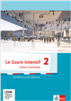<div class="loader"></div></div><div class="content"><h3>Le Cours intensif 2 </h3><h4>Allgemeine Ausgabe 3. Fremdsprache ab 2016</h4><div class="richtext"><b>Beschreibung:</b> Cahier d'activités mit MP3-CD und Übungssoftware (2. Lernjahr)<br><b>Produktnummer:</b> 978-3-12-563011-6</div><a target="_blank" class="single-link" href="https://www.klett.de/produkt/isbn/978-3-12-563011-6">Link zum Webshop</a></div></div></div></div></li><li><div class="material" data-material-id="1102" ><div class="thumb"><div class="loader"></div></div><input class="toggler" type="checkbox" id="id_1"><div class="content"><h3><label for="id_1">CD 1, Track 2: Scène 1 (mp3)</label></h3><h4>Audio zu S. 13, Nr. 3</h4><ul class="files"><li class=""><a onclick="" target="_blank" href="content/media/audios/lcd1/lcd1_002.mp3" data-file-type="audio/mpeg">Öffnen</a></li><li class="save-link"><a onclick="" target="_blank" href="content/media/audios/lcd1/lcd1_002.mp3" >Speichern unter</a></li></ul></div><div class="attached"><div class="material" data-material-id="6003" ><div class="thumb"><div class="loader"></div></div><div class="content"><h3>Le Cours intensif 2 </h3><h4>Allgemeine Ausgabe 3. Fremdsprache ab 2016</h4><div class="richtext"><b>Beschreibung:</b> Cahier d'activités mit MP3-CD und Übungssoftware (2. Lernjahr)<br><b>Produktnummer:</b> 978-3-12-563011-6</div><a target="_blank" class="single-link" href="https://www.klett.de/produkt/isbn/978-3-12-563011-6">Link zum Webshop</a></div></div></div></div></li><li><div class="material" data-material-id="1103" ><div class="thumb"><div class="loader"></div></div><input class="toggler" type="checkbox" id="id_2"><div class="content"><h3><label for="id_2">CD 1, Track 3: Scène 2 (mp3)</label></h3><h4>Audio zu S. 12–13, Nr. 3</h4><ul class="files"><li class=""><a onclick="" target="_blank" href="content/media/audios/lcd1/lcd1_003.mp3" data-file-type="audio/mpeg">Öffnen</a></li><li class="save-link"><a onclick="" target="_blank" href="content/media/audios/lcd1/lcd1_003.mp3" >Speichern unter</a></li></ul></div><div class="attached"><div class="material" data-material-id="6003" ><div class="thumb"><div class="loader"></div></div><div class="content"><h3>Le Cours intensif 2 </h3><h4>Allgemeine Ausgabe 3. Fremdsprache ab 2016</h4><div class="richtext"><b>Beschreibung:</b> Cahier d'activités mit MP3-CD und Übungssoftware (2. Lernjahr)<br><b>Produktnummer:</b> 978-3-12-563011-6</div><a target="_blank" class="single-link" href="https://www.klett.de/produkt/isbn/978-3-12-563011-6">Link zum Webshop</a></div></div></div></div></li><li><div class="material" data-material-id="1104" ><div class="thumb"><div class="loader"></div></div><input class="toggler" type="checkbox" id="id_3"><div class="content"><h3><label for="id_3">CD 1, Track 4: Scène 3 (mp3)</label></h3><h4>Audio zu S. 13, Nr. 3</h4><ul class="files"><li class=""><a onclick="" target="_blank" href="content/media/audios/lcd1/lcd1_004.mp3" data-file-type="audio/mpeg">Öffnen</a></li><li class="save-link"><a onclick="" target="_blank" href="content/media/audios/lcd1/lcd1_004.mp3" >Speichern unter</a></li></ul></div><div class="attached"><div class="material" data-material-id="6003" ><div class="thumb"><div class="loader"></div></div><div class="content"><h3>Le Cours intensif 2 </h3><h4>Allgemeine Ausgabe 3. Fremdsprache ab 2016</h4><div class="richtext"><b>Beschreibung:</b> Cahier d'activités mit MP3-CD und Übungssoftware (2. Lernjahr)<br><b>Produktnummer:</b> 978-3-12-563011-6</div><a target="_blank" class="single-link" href="https://www.klett.de/produkt/isbn/978-3-12-563011-6">Link zum Webshop</a></div></div></div></div></li><li><div class="material" data-material-id="1105" ><div class="thumb"><div class="loader"></div></div><input class="toggler" type="checkbox" id="id_4"><div class="content"><h3><label for="id_4">CD 1, Track 5: Scène 4 (mp3)</label></h3><h4>Audio zu S. 13, Nr. 3</h4><ul class="files"><li class=""><a onclick="" target="_blank" href="content/media/audios/lcd1/lcd1_005.mp3" data-file-type="audio/mpeg">Öffnen</a></li><li class="save-link"><a onclick="" target="_blank" href="content/media/audios/lcd1/lcd1_005.mp3" >Speichern unter</a></li></ul></div><div class="attached"><div class="material" data-material-id="6003" ><div class="thumb"><div class="loader"></div></div><div class="content"><h3>Le Cours intensif 2 </h3><h4>Allgemeine Ausgabe 3. Fremdsprache ab 2016</h4><div class="richtext"><b>Beschreibung:</b> Cahier d'activités mit MP3-CD und Übungssoftware (2. Lernjahr)<br><b>Produktnummer:</b> 978-3-12-563011-6</div><a target="_blank" class="single-link" href="https://www.klett.de/produkt/isbn/978-3-12-563011-6">Link zum Webshop</a></div></div></div></div></li><li><div class="material" data-material-id="1107" ><div class="thumb">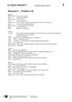<div class="loader"></div></div><input class="toggler" type="checkbox" id="id_5"><div class="content"><h3><label for="id_5">Exercice 3 (docx)</label></h3><h4>Transkription zu CD 1, Tracks 2–5</h4><ul class="files"><li class=""><a onclick="" target="_blank" href="content/media/transkript/at_l1_02.docx" data-file-type="application/vnd.openxmlformats-officedocument.wordprocessingml.document">Öffnen</a></li><li class="save-link"><a onclick="" target="_blank" href="content/media/transkript/at_l1_02.docx" >Speichern unter</a></li></ul></div><div class="attached"><div class="material" data-material-id="6004" ><div class="thumb">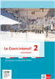<div class="loader"></div></div><div class="content"><h3>Le Cours intensif 2 </h3><h4>Allgemeine Ausgabe 3. Fremdsprache ab 2016</h4><div class="richtext"><b>Beschreibung:</b> Lehrerbuch mit Multimedia-CD (2. Lernjahr)<br><b>Produktnummer:</b> 978-3-12-563015-4</div><a target="_blank" class="single-link" href="https://www.klett.de/produkt/isbn/978-3-12-563015-4">Link zum Webshop</a></div></div></div></div></li></ul></div></div><div class="layer Nur-Materialien" data-type="materials" data-layer-id="bar22"><div class="page-wide-materials"><ul class="materials"><li><div class="material" data-material-id="1398" ><div class="thumb">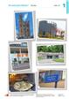<div class="loader"></div></div><input class="toggler" type="checkbox" id="id_6"><div class="content"><h3><label for="id_6">Folie 1/1 (pdf)</label></h3><h4>Passend zu S. 12–13</h4><ul class="files"><li class=""><a onclick="" target="_blank" href="content/media/fundus/563015_folien_l1_1-1.pdf" data-file-type="application/pdf">Öffnen</a></li><li class="save-link"><a onclick="" target="_blank" href="content/media/fundus/563015_folien_l1_1-1.pdf" >Speichern unter</a></li></ul></div><div class="attached"><div class="material" data-material-id="6004" ><div class="thumb"><div class="loader"></div></div><div class="content"><h3>Le Cours intensif 2 </h3><h4>Allgemeine Ausgabe 3. Fremdsprache ab 2016</h4><div class="richtext"><b>Beschreibung:</b> Lehrerbuch mit Multimedia-CD (2. Lernjahr)<br><b>Produktnummer:</b> 978-3-12-563015-4</div><a target="_blank" class="single-link" href="https://www.klett.de/produkt/isbn/978-3-12-563015-4">Link zum Webshop</a></div></div></div></div></li><li><div class="material" data-material-id="1260" ><div class="thumb">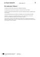<div class="loader"></div></div><input class="toggler" type="checkbox" id="id_7"><div class="content"><h3><label for="id_7">En route pour l’Alsace ! (docx)</label></h3><h4>Editierbarer Lektionstext</h4><ul class="files"><li class=""><a onclick="" target="_blank" href="content/media/l-texte/st_l1_01.docx" data-file-type="application/vnd.openxmlformats-officedocument.wordprocessingml.document">Öffnen</a></li><li class="save-link"><a onclick="" target="_blank" href="content/media/l-texte/st_l1_01.docx" >Speichern unter</a></li></ul></div><div class="attached"><div class="material" data-material-id="6005" ><div class="thumb">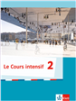<div class="loader"></div></div><div class="content"><h3>Le Cours intensif 2 </h3><h4>Allgemeine Ausgabe 3. Fremdsprache ab 2016</h4><div class="richtext"><b>Beschreibung:</b> Schülerbuch, Softcover (2. Lernjahr)<br><b>Produktnummer:</b> 978-3-12-563010-9</div><a target="_blank" class="single-link" href="https://www.klett.de/produkt/isbn/978-3-12-563010-9">Link zum Webshop</a></div></div></div></div></li><li><div class="material" data-material-id="1247" ><div class="thumb">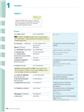<div class="loader"></div></div><input class="toggler" type="checkbox" id="id_8"><div class="content"><h3><label for="id_8">Lektionsbegleitendes Vokabular (pdf)</label></h3><h4>Ausdruckbare Liste</h4><ul class="files"><li class=""><a onclick="" target="_blank" href="content/media/fundus/fu_bev.pdf" data-file-type="application/pdf">Öffnen</a></li><li class="save-link"><a onclick="" target="_blank" href="content/media/fundus/fu_bev.pdf" >Speichern unter</a></li></ul></div><div class="attached"><div class="material" data-material-id="6005" ><div class="thumb"><div class="loader"></div></div><div class="content"><h3>Le Cours intensif 2 </h3><h4>Allgemeine Ausgabe 3. Fremdsprache ab 2016</h4><div class="richtext"><b>Beschreibung:</b> Schülerbuch, Softcover (2. Lernjahr)<br><b>Produktnummer:</b> 978-3-12-563010-9</div><a target="_blank" class="single-link" href="https://www.klett.de/produkt/isbn/978-3-12-563010-9">Link zum Webshop</a></div></div></div></div></li><li><div class="material" data-material-id="1248" ><div class="thumb">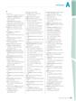<div class="loader"></div></div><input class="toggler" type="checkbox" id="id_9"><div class="content"><h3><label for="id_9">Alphabetische Wortliste (pdf)</label></h3><h4>Ausdruckbare Liste</h4><ul class="files"><li class=""><a onclick="" target="_blank" href="content/media/fundus/fu_awl.pdf" data-file-type="application/pdf">Öffnen</a></li><li class="save-link"><a onclick="" target="_blank" href="content/media/fundus/fu_awl.pdf" >Speichern unter</a></li></ul></div><div class="attached"><div class="material" data-material-id="6005" ><div class="thumb"><div class="loader"></div></div><div class="content"><h3>Le Cours intensif 2 </h3><h4>Allgemeine Ausgabe 3. Fremdsprache ab 2016</h4><div class="richtext"><b>Beschreibung:</b> Schülerbuch, Softcover (2. Lernjahr)<br><b>Produktnummer:</b> 978-3-12-563010-9</div><a target="_blank" class="single-link" href="https://www.klett.de/produkt/isbn/978-3-12-563010-9">Link zum Webshop</a></div></div></div></div></li><li><div class="material" data-material-id="1249" ><div class="thumb">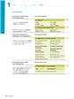<div class="loader"></div></div><input class="toggler" type="checkbox" id="id_10"><div class="content"><h3><label for="id_10">Lektionsbegleitende Grammatik (pdf)</label></h3><ul class="files"><li class=""><a onclick="" target="_blank" href="content/media/gram/fu_l1_01.pdf" data-file-type="application/pdf">Öffnen</a></li><li class="save-link"><a onclick="" target="_blank" href="content/media/gram/fu_l1_01.pdf" >Speichern unter</a></li></ul></div><div class="attached"><div class="material" data-material-id="6005" ><div class="thumb"><div class="loader"></div></div><div class="content"><h3>Le Cours intensif 2 </h3><h4>Allgemeine Ausgabe 3. Fremdsprache ab 2016</h4><div class="richtext"><b>Beschreibung:</b> Schülerbuch, Softcover (2. Lernjahr)<br><b>Produktnummer:</b> 978-3-12-563010-9</div><a target="_blank" class="single-link" href="https://www.klett.de/produkt/isbn/978-3-12-563010-9">Link zum Webshop</a></div></div></div></div></li></ul></div></div><div class="layer Nur-Materialien" data-type="materials" data-layer-id="bar18"><div class="page-wide-materials"><ul class="materials"><li><div class="material" data-material-id="1361" ><div class="thumb"><div class="loader"></div></div><input class="toggler" type="checkbox" id="id_11"><div class="content"><h3><label for="id_11">Blätterbares Lehrerbuch (html)</label></h3><h4>S. 13</h4><div class="richtext"><p>Das Lehrerbuch bietet viele methodische Hinweise zu jeder Leçon, Kopiervorlagen u.v.m. </p></div><ul class="files"><li class=""><a onclick="" target="_blank" href="content/media/ep-1405/app.html?page=15" data-file-type="tgd-epaper" data-dimension="1200-800">Öffnen</a></li></ul></div><div class="attached"><div class="material" data-material-id="6004" ><div class="thumb"><div class="loader"></div></div><div class="content"><h3>Le Cours intensif 2 </h3><h4>Allgemeine Ausgabe 3. Fremdsprache ab 2016</h4><div class="richtext"><b>Beschreibung:</b> Lehrerbuch mit Multimedia-CD (2. Lernjahr)<br><b>Produktnummer:</b> 978-3-12-563015-4</div><a target="_blank" class="single-link" href="https://www.klett.de/produkt/isbn/978-3-12-563015-4">Link zum Webshop</a></div></div></div></div></li></ul></div></div><div class="layer Nur-Materialien" data-type="materials" data-layer-id="bar21"><div class="page-wide-materials"><ul class="materials"><li><div class="material" data-material-id="1434" ><div class="thumb">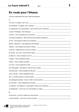<div class="loader"></div></div><input class="toggler" type="checkbox" id="id_12"><div class="content"><h3><label for="id_12">KV 1/1: En route pour l'Alsace </label></h3><h4>Passend zu S. 15–16, Entrée</h4><table class="files"><tr><td>Öffnen</td><td><a target="_blank" href="content/media/kv/wd01_563015_kv_l1_01.pdf" data-file-type="application/pdf"> pdf </a></td><td><a target="_blank" href="content/media/kv/wd01_563015_kv_l1_kv1.docx" data-file-type="application/vnd.openxmlformats-officedocument.wordprocessingml.document"> docx </a></td></tr><tr><td>Speichern unter</td><td class="save-link"><a target="_blank" href="content/media/kv/wd01_563015_kv_l1_01.pdf" > pdf </a></td><td class="save-link"><a target="_blank" href="content/media/kv/wd01_563015_kv_l1_kv1.docx" > docx </a></td></tr></table></div><div class="attached"><div class="material" data-material-id="6004" ><div class="thumb"><div class="loader"></div></div><div class="content"><h3>Le Cours intensif 2 </h3><h4>Allgemeine Ausgabe 3. Fremdsprache ab 2016</h4><div class="richtext"><b>Beschreibung:</b> Lehrerbuch mit Multimedia-CD (2. Lernjahr)<br><b>Produktnummer:</b> 978-3-12-563015-4</div><a target="_blank" class="single-link" href="https://www.klett.de/produkt/isbn/978-3-12-563015-4">Link zum Webshop</a></div></div></div></div></li><li><div class="material" data-material-id="1444" ><div class="thumb">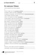<div class="loader"></div></div><input class="toggler" type="checkbox" id="id_13"><div class="content"><h3><label for="id_13">KV 1/1: En route pour l'Alsace </label></h3><h4>Lösungen</h4><table class="files"><tr><td>Öffnen</td><td><a target="_blank" href="content/media/kv/wd01_563015_kv_l1_loes_01.pdf" data-file-type="application/pdf"> pdf </a></td><td><a target="_blank" href="content/media/kv/wd01_563015_kv_l1_loes_kv1.docx" data-file-type="application/vnd.openxmlformats-officedocument.wordprocessingml.document"> docx </a></td></tr><tr><td>Speichern unter</td><td class="save-link"><a target="_blank" href="content/media/kv/wd01_563015_kv_l1_loes_01.pdf" > pdf </a></td><td class="save-link"><a target="_blank" href="content/media/kv/wd01_563015_kv_l1_loes_kv1.docx" > docx </a></td></tr></table></div><div class="attached"><div class="material" data-material-id="6004" ><div class="thumb"><div class="loader"></div></div><div class="content"><h3>Le Cours intensif 2 </h3><h4>Allgemeine Ausgabe 3. Fremdsprache ab 2016</h4><div class="richtext"><b>Beschreibung:</b> Lehrerbuch mit Multimedia-CD (2. Lernjahr)<br><b>Produktnummer:</b> 978-3-12-563015-4</div><a target="_blank" class="single-link" href="https://www.klett.de/produkt/isbn/978-3-12-563015-4">Link zum Webshop</a></div></div></div></div></li></ul></div></div><div class="layer Nur-Materialien" data-type="materials" data-layer-id="bar19"><div class="page-wide-materials"><ul class="materials"><li><div class="material" data-material-id="1671" ><div class="thumb"><div class="loader"></div></div><input class="toggler" type="checkbox" id="id_14"><div class="content"><h3><label for="id_14">Cahier d'activités (html)</label></h3><h4>S. 4</h4><ul class="files"><li class=""><a onclick="" target="_blank" href="content/media/epaper/cda/app.html?page=6" data-file-type="tgd-epaper" data-dimension="1200-800">Öffnen</a></li></ul></div><div class="attached"><div class="material" data-material-id="6006" ><div class="thumb"><div class="loader"></div></div><div class="content"><h3>Le Cours intensif 2 </h3><h4>Allgemeine Ausgabe 3. Fremdsprache ab 2016</h4><div class="richtext"><b>Beschreibung:</b> Cahier d'activités Lehrerausgabe mit Lösungen, MP3-CD und Übungssoftware (2. Lernjahr)<br><b>Produktnummer:</b> 978-3-12-563019-2</div><a target="_blank" class="single-link" href="https://www.klett.de/produkt/isbn/978-3-12-563019-2">Link zum Webshop</a></div></div></div></div></li></ul></div></div></div></div></div><div class="page " data-title="13" data-pos="15"><div class="content"><div class="rough-image" style="background: url('content/pages/thumbs_0.png') -10752px 0 no-repeat; background-size: auto 100% !important;"></div><div class="pagr-thumb" style="background: url('content/pages/thumbs_0.png') -1344px 0 no-repeat;"></div><div class="image-layers"><div><div style="background-image: url('content/pages/page_14/Scale1.png')"></div></div><div><div style="background-image: url('content/pages/page_14/Scale2.png')"></div></div><div><div style="background-image: url('content/pages/page_14/Scale4.png')"></div></div></div><section class="searchable"><p class="text">ecoutez les quatre scènes et dites pendant quelles étapes du voyage elles ont lieu quelles activités du programme est-ce que vous aimeriez faire pourquoi pas expliquez en quelques mots écouter l1/2-5 parler in der tâche fi nale auf seite nehmt ihr an einem schreibwettbewerb teil dazu lernt ihr eine weitere zeit der vergangenheit das imparfait den gebrauch der zeiten der vergangenheit imparfait passé composé dans les rues de strasbourg les panneaux sont en français et en alsacien lucas est élève en seconde au lycée-collège honoré de balzac paris au début de l’année scolaire sa classe fait un voyage en alsace avec eux il madame lemoine la prof d’histoire-géo et monsieur verney le prof d’allemand voilà leur programme sur place l’alsace l’histoire de l’alsace n’est pas facile cette région été tour tour allemande ou française pour plus d’informations voir page octobre octobre octobre matin départ de la gare de l’est arrivée strasbourg visite guidée de la cathédrale et découverte de la petite france pique-nique au bord de l’ill départ en autocar au fort de schoenenbourg visite guidée du fort pique-nique visite guidée du parlement européen temps libre après­midi découverte du quartier européen jeu de piste temps libre rencontre avec madame holde rédactrice chez arte strasbourg en bateau départ de la gare de strasbourg arrivée la gare de l’est soir repas l’auberge de jeunesse soirée tartes fl ambées au restaurant zum strissel hébergement auberge de jeunesse ciarus rue finkmatt 67000 strasbourg riquewihr on peut découvrir les spécialités alsaciennes comme le fl ammkueche ou la choucroute treize</p><link type="image/svg+xml" href="content/pages/page_14/searchwords.svg"></section><div class="draw-layer"><svg xmlns="http://www.w3.org/2000/svg" width="768" height="1024"></svg></div><div class="note-icon-layer"></div><div class="annotation-layers"><div class="layer Eigene-Materialien" data-type="materials" data-layer-id="bar1"><div class="page-wide-materials"><ul class="materials"></ul></div></div><div class="layer Auszeichnung1" data-type="vector" data-layer-id="layer16"><a class="rect" style="position: absolute;z-index:1; left: 38.8%; top: 4.88%; width: 8.72%; height: 3.51%"></a><a class="rect" style="position: absolute;z-index:1; left: 45.05%; top: 6.64%; width: 8.72%; height: 3.51%"></a><a class="rect" style="position: absolute;z-index:1; left: 70.05%; top: 24.31%; width: 6.64%; height: 3.51%"></a><a class="rect" style="position: absolute;z-index:1; left: 28.64%; top: 29.78%; width: 6.11%; height: 3.51%"></a><a class="rect" style="position: absolute;z-index:1; left: 67.18%; top: 29.78%; width: 9.5%; height: 3.51%"></a><a class="rect" style="position: absolute;z-index:1; left: 17.44%; top: 39.84%; width: 5.07%; height: 3.51%"></a><a class="rect" style="position: absolute;z-index:1; left: 17.31%; top: 42.38%; width: 5.59%; height: 3.51%"></a><a class="rect" style="position: absolute;z-index:1; left: 18.09%; top: 44.72%; width: 9.63%; height: 3.51%"></a><a class="rect" style="position: absolute;z-index:1; left: 14.97%; top: 46.28%; width: 8.33%; height: 3.51%"></a><a class="rect" style="position: absolute;z-index:1; left: 13.41%; top: 55.56%; width: 9.63%; height: 3.51%"></a><a class="rect" style="position: absolute;z-index:1; left: 13.93%; top: 57.91%; width: 7.94%; height: 3.51%"></a><a class="rect" style="position: absolute;z-index:1; left: 41.27%; top: 53.32%; width: 7.29%; height: 3.51%"></a><a class="rect" style="position: absolute;z-index:1; left: 41.14%; top: 54.88%; width: 7.42%; height: 3.51%"></a><a class="rect" style="position: absolute;z-index:1; left: 46.48%; top: 61.23%; width: 11.45%; height: 3.51%"></a><a class="rect" style="position: absolute;z-index:1; left: 20.44%; top: 61.91%; width: 15.1%; height: 3.51%"></a><a class="rect" style="position: absolute;z-index:1; left: 24.47%; top: 66.3%; width: 10.02%; height: 3.51%"></a><div class="page-wide-materials"><ul class="materials"></ul></div></div><div class="layer Loesungen" data-type="anchors" data-layer-id="layer15"><div class="tooltip" data-placement=""><div class="tooltip-top"><div class="tooltip-content"><p>Lösungen</p></div></div></div><div class="anchor Text-Bild-Info-Inhalt" style="left: 2.86%; top: 76.17%;" ><div class="anchor-materials" data-layer="layer15"><ul class="materials"><li><div class="material" data-material-id="4003" ><div class="richtext"><p>Dialogue 1 : pendant le pique-nique <br />Dialogue 2 : pendant la visite du Parlement européen <br />Dialogue 3 : pendant le jeu de piste <br />Dialogue 4 : à l’arrivée à la gare de Strasbourg</p><a class="print">Drucken</a></div></div></li></ul></div></div><div class="tooltip" data-placement=""><div class="tooltip-top"><div class="tooltip-content"><p>Lösungen</p></div></div></div><div class="anchor Text-Bild-Info-Inhalt" style="left: 3.12%; top: 82.71%;" ><div class="anchor-materials" data-layer="layer15"><ul class="materials"><li><div class="material" data-material-id="4004" ><div class="richtext"><p>Moi, j’aimerais faire un jeu de piste à Strasbourg parce que c’est intéressant. <br />Moi, j’aimerais faire la visite du fort parce que j’adore les cours d’histoire / parce que l’histoire est ma matière préférée. <br />Moi, j’aimerais visiter ARTE parce que mes parents regardent souvent les émissions de cette chaîne. <br />Moi, je n’aimerais pas visiter la cathédrale parce que cela ne m’intéresse pas. <br />Moi, je n’aimerais pas visiter le Parlement européen parce que je trouve ça nul. <br />Moi, je n’aimerais pas visiter Strasbourg en bateau parce que j’ai peur de l’eau.</p><a class="print">Drucken</a></div></div></li></ul></div></div><div class="page-wide-materials"><ul class="materials"></ul></div></div><div class="layer Multimedia always-visible" data-type="media" data-layer-id="layer5"><div class="tooltip" data-placement=""><div class="tooltip-top"><div class="tooltip-content"><p class="tooltip-title">CD 1, Track 1</p><p class="tooltip-subtitle"></p></div></div></div><div class="anchor Medium-Sprache" style="left: 9.63%; top: 73.24%;" ><div class="anchor-materials" data-layer="layer5"><ul class="materials"><li><div class="material" data-material-id="1003" ><div class="content"><h3>CD 1, Track 1 (mp3)</h3><ul class="files"><li class=""><a onclick="" target="_blank" href="content/media/audios/lcd1/lcd1_001.mp3" data-file-type="audio/mpeg">Öffnen</a></li></ul></div></div></li></ul></div></div><div class="tooltip" data-placement=""><div class="tooltip-top"><div class="tooltip-content"><p class="tooltip-title">CD 1, Track 4: Scène 3</p><p class="tooltip-subtitle"></p></div></div></div><div class="anchor Medium-Sprache" style="left: 22.39%; top: 73.24%;" ><div class="anchor-materials" data-layer="layer5"><ul class="materials"><li><div class="material" data-material-id="1005" ><div class="content"><h3>CD 1, Track 4: Scène 3 (mp3)</h3><ul class="files"><li class=""><a onclick="" target="_blank" href="content/media/audios/lcd1/lcd1_004.mp3" data-file-type="audio/mpeg">Öffnen</a></li></ul></div></div></li></ul></div></div><div class="tooltip" data-placement=""><div class="tooltip-top"><div class="tooltip-content"><p class="tooltip-title">CD 1, Track 3: Scène 2</p><p class="tooltip-subtitle"></p></div></div></div><div class="anchor Medium-Sprache" style="left: 16.01%; top: 73.24%;" ><div class="anchor-materials" data-layer="layer5"><ul class="materials"><li><div class="material" data-material-id="1006" ><div class="content"><h3>CD 1, Track 3: Scène 2 (mp3)</h3><ul class="files"><li class=""><a onclick="" target="_blank" href="content/media/audios/lcd1/lcd1_003.mp3" data-file-type="audio/mpeg">Öffnen</a></li></ul></div></div></li></ul></div></div><div class="tooltip" data-placement=""><div class="tooltip-top"><div class="tooltip-content"><p class="tooltip-title">CD 1, Track 5: Scène 4</p><p class="tooltip-subtitle"></p></div></div></div><div class="anchor Medium-Sprache" style="left: 28.77%; top: 73.24%;" ><div class="anchor-materials" data-layer="layer5"><ul class="materials"><li><div class="material" data-material-id="1007" ><div class="content"><h3>CD 1, Track 5: Scène 4 (mp3)</h3><ul class="files"><li class=""><a onclick="" target="_blank" href="content/media/audios/lcd1/lcd1_005.mp3" data-file-type="audio/mpeg">Öffnen</a></li></ul></div></div></li></ul></div></div><div class="page-wide-materials"><ul class="materials"></ul></div></div><div class="layer Sprungmarke always-visible" data-type="root" data-layer-id="layer0"><a href="?page=175" target="_blank" class="rect" style="position: absolute;z-index:1; left: 73.17%; top: 86.52%; width: 7.16%; height: 2.53%"></a><a href="?page=25" target="_blank" class="rect" style="position: absolute;z-index:1; left: 75.65%; top: 4.88%; width: 5.85%; height: 2.34%"></a><div class="page-wide-materials"><ul class="materials"></ul></div></div><div class="layer Nur-Materialien" data-type="materials" data-layer-id="bar20"><div class="page-wide-materials"><ul class="materials"><li><div class="material" data-material-id="1101" ><div class="thumb"><div class="loader"></div></div><input class="toggler" type="checkbox" id="id_15"><div class="content"><h3><label for="id_15">CD 1, Track 1: En route pour l’Alsace (mp3)</label></h3><h4>Audio zu S. 12</h4><ul class="files"><li class=""><a onclick="" target="_blank" href="content/media/audios/lcd1/lcd1_001.mp3" data-file-type="audio/mpeg">Öffnen</a></li><li class="save-link"><a onclick="" target="_blank" href="content/media/audios/lcd1/lcd1_001.mp3" >Speichern unter</a></li></ul></div><div class="attached"><div class="material" data-material-id="6003" ><div class="thumb"><div class="loader"></div></div><div class="content"><h3>Le Cours intensif 2 </h3><h4>Allgemeine Ausgabe 3. Fremdsprache ab 2016</h4><div class="richtext"><b>Beschreibung:</b> Cahier d'activités mit MP3-CD und Übungssoftware (2. Lernjahr)<br><b>Produktnummer:</b> 978-3-12-563011-6</div><a target="_blank" class="single-link" href="https://www.klett.de/produkt/isbn/978-3-12-563011-6">Link zum Webshop</a></div></div></div></div></li><li><div class="material" data-material-id="1102" ><div class="thumb"><div class="loader"></div></div><input class="toggler" type="checkbox" id="id_16"><div class="content"><h3><label for="id_16">CD 1, Track 2: Scène 1 (mp3)</label></h3><h4>Audio zu S. 13, Nr. 3</h4><ul class="files"><li class=""><a onclick="" target="_blank" href="content/media/audios/lcd1/lcd1_002.mp3" data-file-type="audio/mpeg">Öffnen</a></li><li class="save-link"><a onclick="" target="_blank" href="content/media/audios/lcd1/lcd1_002.mp3" >Speichern unter</a></li></ul></div><div class="attached"><div class="material" data-material-id="6003" ><div class="thumb"><div class="loader"></div></div><div class="content"><h3>Le Cours intensif 2 </h3><h4>Allgemeine Ausgabe 3. Fremdsprache ab 2016</h4><div class="richtext"><b>Beschreibung:</b> Cahier d'activités mit MP3-CD und Übungssoftware (2. Lernjahr)<br><b>Produktnummer:</b> 978-3-12-563011-6</div><a target="_blank" class="single-link" href="https://www.klett.de/produkt/isbn/978-3-12-563011-6">Link zum Webshop</a></div></div></div></div></li><li><div class="material" data-material-id="1103" ><div class="thumb"><div class="loader"></div></div><input class="toggler" type="checkbox" id="id_17"><div class="content"><h3><label for="id_17">CD 1, Track 3: Scène 2 (mp3)</label></h3><h4>Audio zu S. 12–13, Nr. 3</h4><ul class="files"><li class=""><a onclick="" target="_blank" href="content/media/audios/lcd1/lcd1_003.mp3" data-file-type="audio/mpeg">Öffnen</a></li><li class="save-link"><a onclick="" target="_blank" href="content/media/audios/lcd1/lcd1_003.mp3" >Speichern unter</a></li></ul></div><div class="attached"><div class="material" data-material-id="6003" ><div class="thumb"><div class="loader"></div></div><div class="content"><h3>Le Cours intensif 2 </h3><h4>Allgemeine Ausgabe 3. Fremdsprache ab 2016</h4><div class="richtext"><b>Beschreibung:</b> Cahier d'activités mit MP3-CD und Übungssoftware (2. Lernjahr)<br><b>Produktnummer:</b> 978-3-12-563011-6</div><a target="_blank" class="single-link" href="https://www.klett.de/produkt/isbn/978-3-12-563011-6">Link zum Webshop</a></div></div></div></div></li><li><div class="material" data-material-id="1104" ><div class="thumb"><div class="loader"></div></div><input class="toggler" type="checkbox" id="id_18"><div class="content"><h3><label for="id_18">CD 1, Track 4: Scène 3 (mp3)</label></h3><h4>Audio zu S. 13, Nr. 3</h4><ul class="files"><li class=""><a onclick="" target="_blank" href="content/media/audios/lcd1/lcd1_004.mp3" data-file-type="audio/mpeg">Öffnen</a></li><li class="save-link"><a onclick="" target="_blank" href="content/media/audios/lcd1/lcd1_004.mp3" >Speichern unter</a></li></ul></div><div class="attached"><div class="material" data-material-id="6003" ><div class="thumb"><div class="loader"></div></div><div class="content"><h3>Le Cours intensif 2 </h3><h4>Allgemeine Ausgabe 3. Fremdsprache ab 2016</h4><div class="richtext"><b>Beschreibung:</b> Cahier d'activités mit MP3-CD und Übungssoftware (2. Lernjahr)<br><b>Produktnummer:</b> 978-3-12-563011-6</div><a target="_blank" class="single-link" href="https://www.klett.de/produkt/isbn/978-3-12-563011-6">Link zum Webshop</a></div></div></div></div></li><li><div class="material" data-material-id="1105" ><div class="thumb"><div class="loader"></div></div><input class="toggler" type="checkbox" id="id_19"><div class="content"><h3><label for="id_19">CD 1, Track 5: Scène 4 (mp3)</label></h3><h4>Audio zu S. 13, Nr. 3</h4><ul class="files"><li class=""><a onclick="" target="_blank" href="content/media/audios/lcd1/lcd1_005.mp3" data-file-type="audio/mpeg">Öffnen</a></li><li class="save-link"><a onclick="" target="_blank" href="content/media/audios/lcd1/lcd1_005.mp3" >Speichern unter</a></li></ul></div><div class="attached"><div class="material" data-material-id="6003" ><div class="thumb"><div class="loader"></div></div><div class="content"><h3>Le Cours intensif 2 </h3><h4>Allgemeine Ausgabe 3. Fremdsprache ab 2016</h4><div class="richtext"><b>Beschreibung:</b> Cahier d'activités mit MP3-CD und Übungssoftware (2. Lernjahr)<br><b>Produktnummer:</b> 978-3-12-563011-6</div><a target="_blank" class="single-link" href="https://www.klett.de/produkt/isbn/978-3-12-563011-6">Link zum Webshop</a></div></div></div></div></li><li><div class="material" data-material-id="1107" ><div class="thumb"><div class="loader"></div></div><input class="toggler" type="checkbox" id="id_20"><div class="content"><h3><label for="id_20">Exercice 3 (docx)</label></h3><h4>Transkription zu CD 1, Tracks 2–5</h4><ul class="files"><li class=""><a onclick="" target="_blank" href="content/media/transkript/at_l1_02.docx" data-file-type="application/vnd.openxmlformats-officedocument.wordprocessingml.document">Öffnen</a></li><li class="save-link"><a onclick="" target="_blank" href="content/media/transkript/at_l1_02.docx" >Speichern unter</a></li></ul></div><div class="attached"><div class="material" data-material-id="6004" ><div class="thumb"><div class="loader"></div></div><div class="content"><h3>Le Cours intensif 2 </h3><h4>Allgemeine Ausgabe 3. Fremdsprache ab 2016</h4><div class="richtext"><b>Beschreibung:</b> Lehrerbuch mit Multimedia-CD (2. Lernjahr)<br><b>Produktnummer:</b> 978-3-12-563015-4</div><a target="_blank" class="single-link" href="https://www.klett.de/produkt/isbn/978-3-12-563015-4">Link zum Webshop</a></div></div></div></div></li></ul></div></div><div class="layer Nur-Materialien" data-type="materials" data-layer-id="bar22"><div class="page-wide-materials"><ul class="materials"><li><div class="material" data-material-id="1398" ><div class="thumb"><div class="loader"></div></div><input class="toggler" type="checkbox" id="id_21"><div class="content"><h3><label for="id_21">Folie 1/1 (pdf)</label></h3><h4>Passend zu S. 12–13</h4><ul class="files"><li class=""><a onclick="" target="_blank" href="content/media/fundus/563015_folien_l1_1-1.pdf" data-file-type="application/pdf">Öffnen</a></li><li class="save-link"><a onclick="" target="_blank" href="content/media/fundus/563015_folien_l1_1-1.pdf" >Speichern unter</a></li></ul></div><div class="attached"><div class="material" data-material-id="6004" ><div class="thumb"><div class="loader"></div></div><div class="content"><h3>Le Cours intensif 2 </h3><h4>Allgemeine Ausgabe 3. Fremdsprache ab 2016</h4><div class="richtext"><b>Beschreibung:</b> Lehrerbuch mit Multimedia-CD (2. Lernjahr)<br><b>Produktnummer:</b> 978-3-12-563015-4</div><a target="_blank" class="single-link" href="https://www.klett.de/produkt/isbn/978-3-12-563015-4">Link zum Webshop</a></div></div></div></div></li><li><div class="material" data-material-id="1260" ><div class="thumb"><div class="loader"></div></div><input class="toggler" type="checkbox" id="id_22"><div class="content"><h3><label for="id_22">En route pour l’Alsace ! (docx)</label></h3><h4>Editierbarer Lektionstext</h4><ul class="files"><li class=""><a onclick="" target="_blank" href="content/media/l-texte/st_l1_01.docx" data-file-type="application/vnd.openxmlformats-officedocument.wordprocessingml.document">Öffnen</a></li><li class="save-link"><a onclick="" target="_blank" href="content/media/l-texte/st_l1_01.docx" >Speichern unter</a></li></ul></div><div class="attached"><div class="material" data-material-id="6005" ><div class="thumb"><div class="loader"></div></div><div class="content"><h3>Le Cours intensif 2 </h3><h4>Allgemeine Ausgabe 3. Fremdsprache ab 2016</h4><div class="richtext"><b>Beschreibung:</b> Schülerbuch, Softcover (2. Lernjahr)<br><b>Produktnummer:</b> 978-3-12-563010-9</div><a target="_blank" class="single-link" href="https://www.klett.de/produkt/isbn/978-3-12-563010-9">Link zum Webshop</a></div></div></div></div></li><li><div class="material" data-material-id="1247" ><div class="thumb"><div class="loader"></div></div><input class="toggler" type="checkbox" id="id_23"><div class="content"><h3><label for="id_23">Lektionsbegleitendes Vokabular (pdf)</label></h3><h4>Ausdruckbare Liste</h4><ul class="files"><li class=""><a onclick="" target="_blank" href="content/media/fundus/fu_bev.pdf" data-file-type="application/pdf">Öffnen</a></li><li class="save-link"><a onclick="" target="_blank" href="content/media/fundus/fu_bev.pdf" >Speichern unter</a></li></ul></div><div class="attached"><div class="material" data-material-id="6005" ><div class="thumb"><div class="loader"></div></div><div class="content"><h3>Le Cours intensif 2 </h3><h4>Allgemeine Ausgabe 3. Fremdsprache ab 2016</h4><div class="richtext"><b>Beschreibung:</b> Schülerbuch, Softcover (2. Lernjahr)<br><b>Produktnummer:</b> 978-3-12-563010-9</div><a target="_blank" class="single-link" href="https://www.klett.de/produkt/isbn/978-3-12-563010-9">Link zum Webshop</a></div></div></div></div></li><li><div class="material" data-material-id="1248" ><div class="thumb"><div class="loader"></div></div><input class="toggler" type="checkbox" id="id_24"><div class="content"><h3><label for="id_24">Alphabetische Wortliste (pdf)</label></h3><h4>Ausdruckbare Liste</h4><ul class="files"><li class=""><a onclick="" target="_blank" href="content/media/fundus/fu_awl.pdf" data-file-type="application/pdf">Öffnen</a></li><li class="save-link"><a onclick="" target="_blank" href="content/media/fundus/fu_awl.pdf" >Speichern unter</a></li></ul></div><div class="attached"><div class="material" data-material-id="6005" ><div class="thumb"><div class="loader"></div></div><div class="content"><h3>Le Cours intensif 2 </h3><h4>Allgemeine Ausgabe 3. Fremdsprache ab 2016</h4><div class="richtext"><b>Beschreibung:</b> Schülerbuch, Softcover (2. Lernjahr)<br><b>Produktnummer:</b> 978-3-12-563010-9</div><a target="_blank" class="single-link" href="https://www.klett.de/produkt/isbn/978-3-12-563010-9">Link zum Webshop</a></div></div></div></div></li><li><div class="material" data-material-id="1249" ><div class="thumb"><div class="loader"></div></div><input class="toggler" type="checkbox" id="id_25"><div class="content"><h3><label for="id_25">Lektionsbegleitende Grammatik (pdf)</label></h3><ul class="files"><li class=""><a onclick="" target="_blank" href="content/media/gram/fu_l1_01.pdf" data-file-type="application/pdf">Öffnen</a></li><li class="save-link"><a onclick="" target="_blank" href="content/media/gram/fu_l1_01.pdf" >Speichern unter</a></li></ul></div><div class="attached"><div class="material" data-material-id="6005" ><div class="thumb"><div class="loader"></div></div><div class="content"><h3>Le Cours intensif 2 </h3><h4>Allgemeine Ausgabe 3. Fremdsprache ab 2016</h4><div class="richtext"><b>Beschreibung:</b> Schülerbuch, Softcover (2. Lernjahr)<br><b>Produktnummer:</b> 978-3-12-563010-9</div><a target="_blank" class="single-link" href="https://www.klett.de/produkt/isbn/978-3-12-563010-9">Link zum Webshop</a></div></div></div></div></li></ul></div></div><div class="layer Nur-Materialien" data-type="materials" data-layer-id="bar18"><div class="page-wide-materials"><ul class="materials"><li><div class="material" data-material-id="1361" ><div class="thumb"><div class="loader"></div></div><input class="toggler" type="checkbox" id="id_26"><div class="content"><h3><label for="id_26">Blätterbares Lehrerbuch (html)</label></h3><h4>S. 13</h4><div class="richtext"><p>Das Lehrerbuch bietet viele methodische Hinweise zu jeder Leçon, Kopiervorlagen u.v.m. </p></div><ul class="files"><li class=""><a onclick="" target="_blank" href="content/media/ep-1405/app.html?page=15" data-file-type="tgd-epaper" data-dimension="1200-800">Öffnen</a></li></ul></div><div class="attached"><div class="material" data-material-id="6004" ><div class="thumb"><div class="loader"></div></div><div class="content"><h3>Le Cours intensif 2 </h3><h4>Allgemeine Ausgabe 3. Fremdsprache ab 2016</h4><div class="richtext"><b>Beschreibung:</b> Lehrerbuch mit Multimedia-CD (2. Lernjahr)<br><b>Produktnummer:</b> 978-3-12-563015-4</div><a target="_blank" class="single-link" href="https://www.klett.de/produkt/isbn/978-3-12-563015-4">Link zum Webshop</a></div></div></div></div></li></ul></div></div><div class="layer Nur-Materialien" data-type="materials" data-layer-id="bar21"><div class="page-wide-materials"><ul class="materials"><li><div class="material" data-material-id="1434" ><div class="thumb"><div class="loader"></div></div><input class="toggler" type="checkbox" id="id_27"><div class="content"><h3><label for="id_27">KV 1/1: En route pour l'Alsace </label></h3><h4>Passend zu S. 15–16, Entrée</h4><table class="files"><tr><td>Öffnen</td><td><a target="_blank" href="content/media/kv/wd01_563015_kv_l1_01.pdf" data-file-type="application/pdf"> pdf </a></td><td><a target="_blank" href="content/media/kv/wd01_563015_kv_l1_kv1.docx" data-file-type="application/vnd.openxmlformats-officedocument.wordprocessingml.document"> docx </a></td></tr><tr><td>Speichern unter</td><td class="save-link"><a target="_blank" href="content/media/kv/wd01_563015_kv_l1_01.pdf" > pdf </a></td><td class="save-link"><a target="_blank" href="content/media/kv/wd01_563015_kv_l1_kv1.docx" > docx </a></td></tr></table></div><div class="attached"><div class="material" data-material-id="6004" ><div class="thumb"><div class="loader"></div></div><div class="content"><h3>Le Cours intensif 2 </h3><h4>Allgemeine Ausgabe 3. Fremdsprache ab 2016</h4><div class="richtext"><b>Beschreibung:</b> Lehrerbuch mit Multimedia-CD (2. Lernjahr)<br><b>Produktnummer:</b> 978-3-12-563015-4</div><a target="_blank" class="single-link" href="https://www.klett.de/produkt/isbn/978-3-12-563015-4">Link zum Webshop</a></div></div></div></div></li><li><div class="material" data-material-id="1444" ><div class="thumb"><div class="loader"></div></div><input class="toggler" type="checkbox" id="id_28"><div class="content"><h3><label for="id_28">KV 1/1: En route pour l'Alsace </label></h3><h4>Lösungen</h4><table class="files"><tr><td>Öffnen</td><td><a target="_blank" href="content/media/kv/wd01_563015_kv_l1_loes_01.pdf" data-file-type="application/pdf"> pdf </a></td><td><a target="_blank" href="content/media/kv/wd01_563015_kv_l1_loes_kv1.docx" data-file-type="application/vnd.openxmlformats-officedocument.wordprocessingml.document"> docx </a></td></tr><tr><td>Speichern unter</td><td class="save-link"><a target="_blank" href="content/media/kv/wd01_563015_kv_l1_loes_01.pdf" > pdf </a></td><td class="save-link"><a target="_blank" href="content/media/kv/wd01_563015_kv_l1_loes_kv1.docx" > docx </a></td></tr></table></div><div class="attached"><div class="material" data-material-id="6004" ><div class="thumb"><div class="loader"></div></div><div class="content"><h3>Le Cours intensif 2 </h3><h4>Allgemeine Ausgabe 3. Fremdsprache ab 2016</h4><div class="richtext"><b>Beschreibung:</b> Lehrerbuch mit Multimedia-CD (2. Lernjahr)<br><b>Produktnummer:</b> 978-3-12-563015-4</div><a target="_blank" class="single-link" href="https://www.klett.de/produkt/isbn/978-3-12-563015-4">Link zum Webshop</a></div></div></div></div></li></ul></div></div><div class="layer Nur-Materialien" data-type="materials" data-layer-id="bar19"><div class="page-wide-materials"><ul class="materials"><li><div class="material" data-material-id="1671" ><div class="thumb"><div class="loader"></div></div><input class="toggler" type="checkbox" id="id_29"><div class="content"><h3><label for="id_29">Cahier d'activités (html)</label></h3><h4>S. 4</h4><ul class="files"><li class=""><a onclick="" target="_blank" href="content/media/epaper/cda/app.html?page=6" data-file-type="tgd-epaper" data-dimension="1200-800">Öffnen</a></li></ul></div><div class="attached"><div class="material" data-material-id="6006" ><div class="thumb"><div class="loader"></div></div><div class="content"><h3>Le Cours intensif 2 </h3><h4>Allgemeine Ausgabe 3. Fremdsprache ab 2016</h4><div class="richtext"><b>Beschreibung:</b> Cahier d'activités Lehrerausgabe mit Lösungen, MP3-CD und Übungssoftware (2. Lernjahr)<br><b>Produktnummer:</b> 978-3-12-563019-2</div><a target="_blank" class="single-link" href="https://www.klett.de/produkt/isbn/978-3-12-563019-2">Link zum Webshop</a></div></div></div></div></li></ul></div></div></div></div></div><div class="page " data-title="14" data-pos="16"><div class="content"><div class="rough-image" style="background: url('content/pages/thumbs_0.png') -11520px 0 no-repeat; background-size: auto 100% !important;"></div><div class="pagr-thumb" style="background: url('content/pages/thumbs_0.png') -1440px 0 no-repeat;"></div><div class="image-layers"><div><div style="background-image: url('content/pages/page_15/Scale1.png')"></div></div><div><div style="background-image: url('content/pages/page_15/Scale2.png')"></div></div><div><div style="background-image: url('content/pages/page_15/Scale4.png')"></div></div></div><section class="searchable"><p class="text">c’était comment dans la cour du lycée-collège honoré de balzac le octobre florent alors lucas le voyage strasbourg c’était comment lucas c’était top florent vous aviez un programme de ouf tu n’étais pas trop crevé la fin lucas non ça allait tu sais chaque matin on prenait le petitdéjeuner huit heures je ne me levais pas avant sept heures et demie tu vois on ne tombait pas du lit comme pour aller au lycée mais bon on ne dormait pas beaucoup la nuit florent c’est toujours comme ça pendant les voyages scolaires… lucas c’est vrai chaque soir les profs nous envoyaient au lit dix heures et demie mais après nous faisions la fête dans les chambres moi j’avais marco dans ma chambre alors tu imagines… florent j’imagine même très bien il faisait le fou comme toujours pendant les voyages bon ben ça avait l’air cool c’était top vous connaissez déjà un temps du passé le passé composé dans le texte il un nouveau temps du passé l’imparfait lisez les phrases du texte quand est-ce qu’on utilise l’imparfait expliquez chaque matin on prenait le petit déjeuner heures on ne dormait pas beaucoup la nuit chaque soir les profs nous envoyaient au lit dix heures faites un tableau l’aide des formes de l’imparfait que vous trouvez dans le texte quelles sont les terminaisons endungen de l‘imparfait regardez la ligne partir de quelle personne du pluriel au présent est-ce qu’on forme l’imparfait quel verbe est ici une exception jouez aux dés formez l’imparfait des verbes suivants jouer je jouais ecrivez cinq phrases l’imparfait utilisez cinq sujets différents pendant les vacances chaque matin mon père achetait des croissants pendant les vacances chaque matin chaque après-midi chaque soir chaque jour le matin le soir je… ma mère mon père… mon frère ma sœur… mon copain ma copine… mes parents… nous… acheter des croissants aller la plage faire la cuisine proposer des sorties se lever sortir avec des copains l1/6 jouer savoir écrire manger se réveiller faire connaître venir sortir finir attendre avoir vouloir entrée atelier atelier bilan quatorze</p><link type="image/svg+xml" href="content/pages/page_15/searchwords.svg"></section><div class="draw-layer"><svg xmlns="http://www.w3.org/2000/svg" width="768" height="1024"></svg></div><div class="note-icon-layer"></div><div class="annotation-layers"><div class="layer Eigene-Materialien" data-type="materials" data-layer-id="bar1"><div class="page-wide-materials"><ul class="materials"></ul></div></div><div class="layer Auszeichnung1" data-type="vector" data-layer-id="layer16"><a class="rect" style="position: absolute;z-index:1; left: 26.17%; top: 15.72%; width: 2.73%; height: 3.51%"></a><a class="rect" style="position: absolute;z-index:1; left: 42.18%; top: 17.38%; width: 4.94%; height: 3.51%"></a><a class="rect" style="position: absolute;z-index:1; left: 17.7%; top: 18.94%; width: 4.16%; height: 3.51%"></a><a class="rect" style="position: absolute;z-index:1; left: 56.64%; top: 25.48%; width: 3.38%; height: 3.51%"></a><a class="rect" style="position: absolute;z-index:1; left: 50%; top: 28.71%; width: 8.72%; height: 3.51%"></a><a class="rect" style="position: absolute;z-index:1; left: 23.95%; top: 33.69%; width: 7.03%; height: 3.51%"></a><a class="rect" style="position: absolute;z-index:1; left: 44.27%; top: 35.25%; width: 9.63%; height: 3.51%"></a><div class="page-wide-materials"><ul class="materials"></ul></div></div><div class="layer Auszeichnung3" data-type="vector" data-layer-id="layer17"><a class="rect" style="position: absolute;z-index:1; left: 18.61%; top: 10.15%; width: 6.38%; height: 2.53%"></a><a class="rect" style="position: absolute;z-index:1; left: 22.39%; top: 17.18%; width: 3.64%; height: 2.14%"></a><a class="rect" style="position: absolute;z-index:1; left: 50.52%; top: 15.62%; width: 3.64%; height: 2.14%"></a><a class="rect" style="position: absolute;z-index:1; left: 25.65%; top: 19.23%; width: 4.16%; height: 1.75%"></a><a class="rect" style="position: absolute;z-index:1; left: 51.56%; top: 18.84%; width: 3.64%; height: 2.14%"></a><a class="rect" style="position: absolute;z-index:1; left: 26.95%; top: 21.97%; width: 3.77%; height: 2.14%"></a><a class="rect" style="position: absolute;z-index:1; left: 51.56%; top: 22.16%; width: 5.85%; height: 2.14%"></a><a class="rect" style="position: absolute;z-index:1; left: 39.97%; top: 23.73%; width: 7.68%; height: 2.14%"></a><a class="rect" style="position: absolute;z-index:1; left: 36.06%; top: 25.39%; width: 6.51%; height: 2.14%"></a><a class="rect" style="position: absolute;z-index:1; left: 37.1%; top: 27.14%; width: 6.51%; height: 2.14%"></a><a class="rect" style="position: absolute;z-index:1; left: 50%; top: 30.56%; width: 8.59%; height: 1.66%"></a><a class="rect" style="position: absolute;z-index:1; left: 50.39%; top: 32.22%; width: 5.98%; height: 1.95%"></a><a class="rect" style="position: absolute;z-index:1; left: 37.36%; top: 33.59%; width: 4.03%; height: 2.14%"></a><a class="rect" style="position: absolute;z-index:1; left: 50.13%; top: 38.57%; width: 4.03%; height: 2.14%"></a><div class="page-wide-materials"><ul class="materials"></ul></div></div><div class="layer Loesungen" data-type="anchors" data-layer-id="layer15"><div class="tooltip" data-placement=""><div class="tooltip-top"><div class="tooltip-content"><p>Lösungen</p></div></div></div><div class="anchor Text-Bild-Info-Inhalt" style="left: 2.86%; top: 46.48%;" ><div class="anchor-materials" data-layer="layer15"><ul class="materials"><li><div class="material" data-material-id="4005" ><div class="richtext"><p>a) On utilise l’imparfait pour des actions qui se répètent et des descriptions. <br />b) <br />je / j’ &nbsp; &nbsp; &nbsp; &nbsp; &nbsp; &nbsp; levais ; avais <br />tu &nbsp; &nbsp; &nbsp; &nbsp; &nbsp; &nbsp; &nbsp; &nbsp; &nbsp; étais <br />il / elle / on était ; allait ; prenait ; tombait ; dormait ; faisait ; avait <br />nous &nbsp; &nbsp; &nbsp; &nbsp; &nbsp; &nbsp; faisions <br />vous &nbsp; &nbsp; &nbsp; &nbsp; &nbsp; &nbsp; aviez <br />ils / elles &nbsp; &nbsp; envoyaient <br />c) –ais, –ais, –ait, –ions, –iez, –aient <br />d) On forme l’imparfait à l’aide de la première personne pluriel du présent (p.ex., nous prenons : pren-). L’exception, c’est le verbe être.</p><a class="print">Drucken</a></div></div></li></ul></div></div><div class="tooltip" data-placement=""><div class="tooltip-top"><div class="tooltip-content"><p>Lösungen</p></div></div></div><div class="anchor Text-Bild-Info-Inhalt" style="left: 2.99%; top: 70.5%;" ><div class="anchor-materials" data-layer="layer15"><ul class="materials"><li><div class="material" data-material-id="4006" ><div class="richtext"><p><i>Individuelle Schülerantworten</i></p><a class="print">Drucken</a></div></div></li></ul></div></div><div class="tooltip" data-placement=""><div class="tooltip-top"><div class="tooltip-content"><p>Lösungen</p></div></div></div><div class="anchor Text-Bild-Info-Inhalt" style="left: 2.99%; top: 79.39%;" ><div class="anchor-materials" data-layer="layer15"><ul class="materials"><li><div class="material" data-material-id="4007" ><div class="richtext"><p>Pendant les vacances, <br />chaque matin, j’achetais des croissants. <br />chaque après-midi, ma mère allait à la plage. <br />chaque jour, nous sortions avec des copains. <br />le matin, ma sœur se levait à 10 heures. <br />le soir, mon frère et moi faisions la cuisine…</p><a class="print">Drucken</a></div></div></li></ul></div></div><div class="page-wide-materials"><ul class="materials"></ul></div></div><div class="layer Multimedia always-visible" data-type="media" data-layer-id="layer5"><div class="tooltip" data-placement=""><div class="tooltip-top"><div class="tooltip-content"><p class="tooltip-title">CD 1, Track 6: C’était comment ?</p><p class="tooltip-subtitle"></p></div></div></div><div class="anchor Medium-Sprache" style="left: 9.76%; top: 15.13%;" ><div class="anchor-materials" data-layer="layer5"><ul class="materials"><li><div class="material" data-material-id="1108" ><div class="content"><h3>CD 1, Track 6: C’était comment ? (mp3)</h3><ul class="files"><li class=""><a onclick="" target="_blank" href="content/media/audios/lcd1/lcd1_006.mp3" data-file-type="audio/mpeg">Öffnen</a></li></ul></div></div></li></ul></div></div><div class="page-wide-materials"><ul class="materials"></ul></div></div><div class="layer Sprungmarke always-visible" data-type="root" data-layer-id="layer0"><a href="?page=27" target="_blank" class="rect" style="position: absolute;z-index:1; left: 9.11%; top: 42.48%; width: 4.16%; height: 3.51%"></a><div class="page-wide-materials"><ul class="materials"></ul></div></div><div class="layer Nur-Materialien" data-type="materials" data-layer-id="bar20"><div class="page-wide-materials"><ul class="materials"><li><div class="material" data-material-id="1109" ><div class="thumb"><div class="loader"></div></div><input class="toggler" type="checkbox" id="id_30"><div class="content"><h3><label for="id_30">CD 1, Track 6: C’était comment ? (mp3)</label></h3><h4>Audio zu S. 14, Nr 1</h4><ul class="files"><li class=""><a onclick="" target="_blank" href="content/media/audios/lcd1/lcd1_006.mp3" data-file-type="audio/mpeg">Öffnen</a></li><li class="save-link"><a onclick="" target="_blank" href="content/media/audios/lcd1/lcd1_006.mp3" >Speichern unter</a></li></ul></div><div class="attached"><div class="material" data-material-id="6003" ><div class="thumb"><div class="loader"></div></div><div class="content"><h3>Le Cours intensif 2 </h3><h4>Allgemeine Ausgabe 3. Fremdsprache ab 2016</h4><div class="richtext"><b>Beschreibung:</b> Cahier d'activités mit MP3-CD und Übungssoftware (2. Lernjahr)<br><b>Produktnummer:</b> 978-3-12-563011-6</div><a target="_blank" class="single-link" href="https://www.klett.de/produkt/isbn/978-3-12-563011-6">Link zum Webshop</a></div></div></div></div></li></ul></div></div><div class="layer Nur-Materialien" data-type="materials" data-layer-id="bar22"><div class="page-wide-materials"><ul class="materials"><li><div class="material" data-material-id="1399" ><div class="thumb">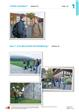<div class="loader"></div></div><input class="toggler" type="checkbox" id="id_31"><div class="content"><h3><label for="id_31">Folie 1/2 (pdf)</label></h3><h4>Passend zu S. 14–15</h4><ul class="files"><li class=""><a onclick="" target="_blank" href="content/media/fundus/563015_folien_l1_1-2.pdf" data-file-type="application/pdf">Öffnen</a></li><li class="save-link"><a onclick="" target="_blank" href="content/media/fundus/563015_folien_l1_1-2.pdf" >Speichern unter</a></li></ul></div><div class="attached"><div class="material" data-material-id="6004" ><div class="thumb"><div class="loader"></div></div><div class="content"><h3>Le Cours intensif 2 </h3><h4>Allgemeine Ausgabe 3. Fremdsprache ab 2016</h4><div class="richtext"><b>Beschreibung:</b> Lehrerbuch mit Multimedia-CD (2. Lernjahr)<br><b>Produktnummer:</b> 978-3-12-563015-4</div><a target="_blank" class="single-link" href="https://www.klett.de/produkt/isbn/978-3-12-563015-4">Link zum Webshop</a></div></div></div></div></li><li><div class="material" data-material-id="1258" ><div class="thumb">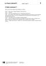<div class="loader"></div></div><input class="toggler" type="checkbox" id="id_32"><div class="content"><h3><label for="id_32">C’était comment ? (docx)</label></h3><h4>Editierbarer Lektionstext</h4><ul class="files"><li class=""><a onclick="" target="_blank" href="content/media/l-texte/st_l1_02.docx" data-file-type="application/vnd.openxmlformats-officedocument.wordprocessingml.document">Öffnen</a></li><li class="save-link"><a onclick="" target="_blank" href="content/media/l-texte/st_l1_02.docx" >Speichern unter</a></li></ul></div><div class="attached"><div class="material" data-material-id="6005" ><div class="thumb"><div class="loader"></div></div><div class="content"><h3>Le Cours intensif 2 </h3><h4>Allgemeine Ausgabe 3. Fremdsprache ab 2016</h4><div class="richtext"><b>Beschreibung:</b> Schülerbuch, Softcover (2. Lernjahr)<br><b>Produktnummer:</b> 978-3-12-563010-9</div><a target="_blank" class="single-link" href="https://www.klett.de/produkt/isbn/978-3-12-563010-9">Link zum Webshop</a></div></div></div></div></li><li><div class="material" data-material-id="1259" ><div class="thumb">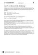<div class="loader"></div></div><input class="toggler" type="checkbox" id="id_33"><div class="content"><h3><label for="id_33">Jour 1 : à la découverte de Strasbourg ! (docx)</label></h3><h4>Editierbarer Lektionstext</h4><ul class="files"><li class=""><a onclick="" target="_blank" href="content/media/l-texte/st_l1_03.docx" data-file-type="application/vnd.openxmlformats-officedocument.wordprocessingml.document">Öffnen</a></li><li class="save-link"><a onclick="" target="_blank" href="content/media/l-texte/st_l1_03.docx" >Speichern unter</a></li></ul></div><div class="attached"><div class="material" data-material-id="6005" ><div class="thumb"><div class="loader"></div></div><div class="content"><h3>Le Cours intensif 2 </h3><h4>Allgemeine Ausgabe 3. Fremdsprache ab 2016</h4><div class="richtext"><b>Beschreibung:</b> Schülerbuch, Softcover (2. Lernjahr)<br><b>Produktnummer:</b> 978-3-12-563010-9</div><a target="_blank" class="single-link" href="https://www.klett.de/produkt/isbn/978-3-12-563010-9">Link zum Webshop</a></div></div></div></div></li><li><div class="material" data-material-id="1247" ><div class="thumb"><div class="loader"></div></div><input class="toggler" type="checkbox" id="id_34"><div class="content"><h3><label for="id_34">Lektionsbegleitendes Vokabular (pdf)</label></h3><h4>Ausdruckbare Liste</h4><ul class="files"><li class=""><a onclick="" target="_blank" href="content/media/fundus/fu_bev.pdf" data-file-type="application/pdf">Öffnen</a></li><li class="save-link"><a onclick="" target="_blank" href="content/media/fundus/fu_bev.pdf" >Speichern unter</a></li></ul></div><div class="attached"><div class="material" data-material-id="6005" ><div class="thumb"><div class="loader"></div></div><div class="content"><h3>Le Cours intensif 2 </h3><h4>Allgemeine Ausgabe 3. Fremdsprache ab 2016</h4><div class="richtext"><b>Beschreibung:</b> Schülerbuch, Softcover (2. Lernjahr)<br><b>Produktnummer:</b> 978-3-12-563010-9</div><a target="_blank" class="single-link" href="https://www.klett.de/produkt/isbn/978-3-12-563010-9">Link zum Webshop</a></div></div></div></div></li><li><div class="material" data-material-id="1248" ><div class="thumb"><div class="loader"></div></div><input class="toggler" type="checkbox" id="id_35"><div class="content"><h3><label for="id_35">Alphabetische Wortliste (pdf)</label></h3><h4>Ausdruckbare Liste</h4><ul class="files"><li class=""><a onclick="" target="_blank" href="content/media/fundus/fu_awl.pdf" data-file-type="application/pdf">Öffnen</a></li><li class="save-link"><a onclick="" target="_blank" href="content/media/fundus/fu_awl.pdf" >Speichern unter</a></li></ul></div><div class="attached"><div class="material" data-material-id="6005" ><div class="thumb"><div class="loader"></div></div><div class="content"><h3>Le Cours intensif 2 </h3><h4>Allgemeine Ausgabe 3. Fremdsprache ab 2016</h4><div class="richtext"><b>Beschreibung:</b> Schülerbuch, Softcover (2. Lernjahr)<br><b>Produktnummer:</b> 978-3-12-563010-9</div><a target="_blank" class="single-link" href="https://www.klett.de/produkt/isbn/978-3-12-563010-9">Link zum Webshop</a></div></div></div></div></li><li><div class="material" data-material-id="1249" ><div class="thumb"><div class="loader"></div></div><input class="toggler" type="checkbox" id="id_36"><div class="content"><h3><label for="id_36">Lektionsbegleitende Grammatik (pdf)</label></h3><ul class="files"><li class=""><a onclick="" target="_blank" href="content/media/gram/fu_l1_01.pdf" data-file-type="application/pdf">Öffnen</a></li><li class="save-link"><a onclick="" target="_blank" href="content/media/gram/fu_l1_01.pdf" >Speichern unter</a></li></ul></div><div class="attached"><div class="material" data-material-id="6005" ><div class="thumb"><div class="loader"></div></div><div class="content"><h3>Le Cours intensif 2 </h3><h4>Allgemeine Ausgabe 3. Fremdsprache ab 2016</h4><div class="richtext"><b>Beschreibung:</b> Schülerbuch, Softcover (2. Lernjahr)<br><b>Produktnummer:</b> 978-3-12-563010-9</div><a target="_blank" class="single-link" href="https://www.klett.de/produkt/isbn/978-3-12-563010-9">Link zum Webshop</a></div></div></div></div></li></ul></div></div><div class="layer Nur-Materialien" data-type="materials" data-layer-id="bar19"><div class="page-wide-materials"><ul class="materials"><li><div class="material" data-material-id="1286" ><div class="thumb"><div class="loader"></div></div><input class="toggler" type="checkbox" id="id_37"><div class="content"><h3><label for="id_37">Cahier d'activités (html)</label></h3><h4>S. 4–5</h4><ul class="files"><li class=""><a onclick="" target="_blank" href="content/media/epaper/cda/app.html?page=6" data-file-type="tgd-epaper" data-dimension="1200-800">Öffnen</a></li></ul></div><div class="attached"><div class="material" data-material-id="6006" ><div class="thumb"><div class="loader"></div></div><div class="content"><h3>Le Cours intensif 2 </h3><h4>Allgemeine Ausgabe 3. Fremdsprache ab 2016</h4><div class="richtext"><b>Beschreibung:</b> Cahier d'activités Lehrerausgabe mit Lösungen, MP3-CD und Übungssoftware (2. Lernjahr)<br><b>Produktnummer:</b> 978-3-12-563019-2</div><a target="_blank" class="single-link" href="https://www.klett.de/produkt/isbn/978-3-12-563019-2">Link zum Webshop</a></div></div></div></div></li></ul></div></div><div class="layer Nur-Materialien" data-type="materials" data-layer-id="bar18"><div class="page-wide-materials"><ul class="materials"><li><div class="material" data-material-id="1362" ><div class="thumb"><div class="loader"></div></div><input class="toggler" type="checkbox" id="id_38"><div class="content"><h3><label for="id_38">Blätterbares Lehrerbuch (html)</label></h3><h4>S. 15</h4><div class="richtext"><p>Das Lehrerbuch bietet viele methodische Hinweise zu jeder Leçon, Kopiervorlagen u.v.m. </p></div><ul class="files"><li class=""><a onclick="" target="_blank" href="content/media/ep-1405/app.html?page=17" data-file-type="tgd-epaper" data-dimension="1200-800">Öffnen</a></li></ul></div><div class="attached"><div class="material" data-material-id="6004" ><div class="thumb"><div class="loader"></div></div><div class="content"><h3>Le Cours intensif 2 </h3><h4>Allgemeine Ausgabe 3. Fremdsprache ab 2016</h4><div class="richtext"><b>Beschreibung:</b> Lehrerbuch mit Multimedia-CD (2. Lernjahr)<br><b>Produktnummer:</b> 978-3-12-563015-4</div><a target="_blank" class="single-link" href="https://www.klett.de/produkt/isbn/978-3-12-563015-4">Link zum Webshop</a></div></div></div></div></li></ul></div></div><div class="layer Nur-Materialien" data-type="materials" data-layer-id="bar21"><div class="page-wide-materials"><ul class="materials"><li><div class="material" data-material-id="1435" ><div class="thumb">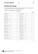<div class="loader"></div></div><input class="toggler" type="checkbox" id="id_39"><div class="content"><h3><label for="id_39">KV 1/2: Révision des temps </label></h3><h4>Passend zu S. 14, Atelier A</h4><table class="files"><tr><td>Öffnen</td><td><a target="_blank" href="content/media/kv/wd01_563015_kv_l1_02.pdf" data-file-type="application/pdf"> pdf </a></td><td><a target="_blank" href="content/media/kv/wd01_563015_kv_l1_kv2.docx" data-file-type="application/vnd.openxmlformats-officedocument.wordprocessingml.document"> docx </a></td></tr><tr><td>Speichern unter</td><td class="save-link"><a target="_blank" href="content/media/kv/wd01_563015_kv_l1_02.pdf" > pdf </a></td><td class="save-link"><a target="_blank" href="content/media/kv/wd01_563015_kv_l1_kv2.docx" > docx </a></td></tr></table></div><div class="attached"><div class="material" data-material-id="6004" ><div class="thumb"><div class="loader"></div></div><div class="content"><h3>Le Cours intensif 2 </h3><h4>Allgemeine Ausgabe 3. Fremdsprache ab 2016</h4><div class="richtext"><b>Beschreibung:</b> Lehrerbuch mit Multimedia-CD (2. Lernjahr)<br><b>Produktnummer:</b> 978-3-12-563015-4</div><a target="_blank" class="single-link" href="https://www.klett.de/produkt/isbn/978-3-12-563015-4">Link zum Webshop</a></div></div></div></div></li><li><div class="material" data-material-id="1445" ><div class="thumb">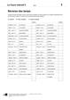<div class="loader"></div></div><input class="toggler" type="checkbox" id="id_40"><div class="content"><h3><label for="id_40">KV 1/2: Révision des temps </label></h3><h4>Lösungen</h4><table class="files"><tr><td>Öffnen</td><td><a target="_blank" href="content/media/kv/wd01_563015_kv_l1_loes_02.pdf" data-file-type="application/pdf"> pdf </a></td><td><a target="_blank" href="content/media/kv/wd01_563015_kv_l1_loes_kv2.docx" data-file-type="application/vnd.openxmlformats-officedocument.wordprocessingml.document"> docx </a></td></tr><tr><td>Speichern unter</td><td class="save-link"><a target="_blank" href="content/media/kv/wd01_563015_kv_l1_loes_02.pdf" > pdf </a></td><td class="save-link"><a target="_blank" href="content/media/kv/wd01_563015_kv_l1_loes_kv2.docx" > docx </a></td></tr></table></div><div class="attached"><div class="material" data-material-id="6004" ><div class="thumb"><div class="loader"></div></div><div class="content"><h3>Le Cours intensif 2 </h3><h4>Allgemeine Ausgabe 3. Fremdsprache ab 2016</h4><div class="richtext"><b>Beschreibung:</b> Lehrerbuch mit Multimedia-CD (2. Lernjahr)<br><b>Produktnummer:</b> 978-3-12-563015-4</div><a target="_blank" class="single-link" href="https://www.klett.de/produkt/isbn/978-3-12-563015-4">Link zum Webshop</a></div></div></div></div></li></ul></div></div></div></div></div><div class="page " data-title="15" data-pos="17"><div class="content"><div class="rough-image" style="background: url('content/pages/thumbs_0.png') -12288px 0 no-repeat; background-size: auto 100% !important;"></div><div class="pagr-thumb" style="background: url('content/pages/thumbs_0.png') -1536px 0 no-repeat;"></div><div class="image-layers"><div><div style="background-image: url('content/pages/page_16/Scale1.png')"></div></div><div><div style="background-image: url('content/pages/page_16/Scale2.png')"></div></div><div><div style="background-image: url('content/pages/page_16/Scale4.png')"></div></div></div><section class="searchable"><p class="text">jour la découverte de strasbourg quand lucas et sa classe sont arrivés strasbourg ils sont d’abord allés l’auberge de jeunesse elle n’était pas très loin du centre-ville c’était pratique ensuite toute la classe est partie pour la cathédrale c’était très intéressant parce que la guide était géniale la fin elle même proposé de monter en haut de la tour super idée la guide mais attention il marches damien quoi marco t’inquiète damien on va prendre l’ascenseur damien ah ouf j’ai eu peur… marco racontait tout le temps des blagues on ne s’ennuyait jamais avec lui… verney il n’y pas d’ascenseur on monte pied damien pied mais c’est trop fatigant les élèves ont commencé monter et comme toujours marco faisait le fou il glissait sur les marches faisait semblant de tomber… madame lemoine n’était pas contente en haut tous les élèves étaient du même avis on avait une vue magnifique sur strasbourg comme il faisait très beau on voyait même les vosges après la cathédrale direction la petite france avec toutes ces belles maisons alsaciennes les ponts sur l’ill les petites rues c’était un quartier super joli pour le jeu de piste de l’après-midi les profs ont d’abord fait six groupes puis ils ont distribué les questions lucas et marco étaient très contents parce qu’ils avaient clara dans leur groupe clara savait toujours tout… ou presque en plus quand elle était petite elle passait tous ses étés chez ses grands-parents à… strasbourg alors la ville elle la connaissait comme sa poche le jeu de piste se passait dans le quartier européen première question trouver un morceau de l’histoire de l’allemagne… lucas et son groupe ont marché pendant un moment et tout coup clara crié ça est j’ai trouvé près du palais des droits de l’homme il avait un morceau du mur de berlin pas mal… deuxième question trouver près du conseil de l’europe une rue qui porte le nom d’un européen célèbre… le jeu continué il avait des questions sur toutes les institutions européennes de strasbourg la fin du jeu les élèves étaient contents un cours d’histoire comme ça ils trouvaient ça passionnant l1/7 entrée atelier atelier bilan quinze</p><link type="image/svg+xml" href="content/pages/page_16/searchwords.svg"></section><div class="draw-layer"><svg xmlns="http://www.w3.org/2000/svg" width="768" height="1024"></svg></div><div class="note-icon-layer"></div><div class="annotation-layers"><div class="layer Eigene-Materialien" data-type="materials" data-layer-id="bar1"><div class="page-wide-materials"><ul class="materials"></ul></div></div><div class="layer Auszeichnung1" data-type="vector" data-layer-id="layer16"><a class="rect" style="position: absolute;z-index:1; left: 22.13%; top: 13.37%; width: 5.85%; height: 3.51%"></a><a class="rect" style="position: absolute;z-index:1; left: 33.85%; top: 14.84%; width: 8.59%; height: 3.51%"></a><a class="rect" style="position: absolute;z-index:1; left: 16.14%; top: 16.5%; width: 5.85%; height: 3.51%"></a><a class="rect" style="position: absolute;z-index:1; left: 22.65%; top: 16.6%; width: 6.25%; height: 3.51%"></a><a class="rect" style="position: absolute;z-index:1; left: 24.86%; top: 18.16%; width: 8.72%; height: 3.51%"></a><a class="rect" style="position: absolute;z-index:1; left: 52.34%; top: 18.16%; width: 5.59%; height: 3.51%"></a><a class="rect" style="position: absolute;z-index:1; left: 32.55%; top: 20.01%; width: 8.72%; height: 3.51%"></a><a class="rect" style="position: absolute;z-index:1; left: 47.39%; top: 19.82%; width: 6.11%; height: 3.51%"></a><a class="rect" style="position: absolute;z-index:1; left: 26.43%; top: 23.82%; width: 7.16%; height: 3.51%"></a><a class="rect" style="position: absolute;z-index:1; left: 41.92%; top: 23.82%; width: 6.64%; height: 3.51%"></a><a class="rect" style="position: absolute;z-index:1; left: 21.09%; top: 27.14%; width: 7.81%; height: 3.51%"></a><a class="rect" style="position: absolute;z-index:1; left: 47.52%; top: 27.05%; width: 8.59%; height: 3.51%"></a><a class="rect" style="position: absolute;z-index:1; left: 24.6%; top: 28.8%; width: 2.86%; height: 3.51%"></a><a class="rect" style="position: absolute;z-index:1; left: 16.01%; top: 32.91%; width: 8.59%; height: 3.51%"></a><a class="rect" style="position: absolute;z-index:1; left: 41.79%; top: 36.91%; width: 5.85%; height: 3.51%"></a><a class="rect" style="position: absolute;z-index:1; left: 26.04%; top: 39.35%; width: 12.89%; height: 3.51%"></a><a class="rect" style="position: absolute;z-index:1; left: 28.38%; top: 42.57%; width: 9.89%; height: 3.51%"></a><a class="rect" style="position: absolute;z-index:1; left: 34.5%; top: 45.8%; width: 16.53%; height: 3.51%"></a><a class="rect" style="position: absolute;z-index:1; left: 44.4%; top: 47.46%; width: 6.25%; height: 3.51%"></a><a class="rect" style="position: absolute;z-index:1; left: 48.04%; top: 52.44%; width: 4.16%; height: 3.51%"></a><a class="rect" style="position: absolute;z-index:1; left: 44.27%; top: 58%; width: 6.77%; height: 3.51%"></a><a class="rect" style="position: absolute;z-index:1; left: 38.15%; top: 62.79%; width: 5.85%; height: 3.51%"></a><a class="rect" style="position: absolute;z-index:1; left: 47%; top: 64.64%; width: 11.45%; height: 3.51%"></a><a class="rect" style="position: absolute;z-index:1; left: 43.75%; top: 66.21%; width: 14.97%; height: 3.51%"></a><a class="rect" style="position: absolute;z-index:1; left: 16.14%; top: 67.87%; width: 6.77%; height: 3.51%"></a><a class="rect" style="position: absolute;z-index:1; left: 55.2%; top: 75.39%; width: 3.51%; height: 3.51%"></a><a class="rect" style="position: absolute;z-index:1; left: 16.14%; top: 76.85%; width: 2.47%; height: 3.51%"></a><a class="rect" style="position: absolute;z-index:1; left: 29.42%; top: 76.85%; width: 5.85%; height: 3.51%"></a><a class="rect" style="position: absolute;z-index:1; left: 46.74%; top: 81.73%; width: 7.42%; height: 3.51%"></a><a class="rect" style="position: absolute;z-index:1; left: 23.69%; top: 84.96%; width: 9.11%; height: 3.51%"></a><a class="rect" style="position: absolute;z-index:1; left: 45.44%; top: 88.28%; width: 9.24%; height: 3.51%"></a><a class="rect" style="position: absolute;z-index:1; left: 64.19%; top: 82.51%; width: 8.59%; height: 3.51%"></a><div class="page-wide-materials"><ul class="materials"></ul></div></div><div class="layer Auszeichnung3" data-type="vector" data-layer-id="layer17"><a class="rect" style="position: absolute;z-index:1; left: 36.97%; top: 13.18%; width: 9.37%; height: 2.14%"></a><a class="rect" style="position: absolute;z-index:1; left: 44.4%; top: 16.4%; width: 3.64%; height: 2.14%"></a><a class="rect" style="position: absolute;z-index:1; left: 33.98%; top: 18.45%; width: 7.29%; height: 1.75%"></a><a class="rect" style="position: absolute;z-index:1; left: 17.57%; top: 19.92%; width: 3.9%; height: 1.95%"></a><a class="rect" style="position: absolute;z-index:1; left: 29.16%; top: 30.46%; width: 3.9%; height: 1.95%"></a><a class="rect" style="position: absolute;z-index:1; left: 21.09%; top: 32.81%; width: 7.29%; height: 1.95%"></a><a class="rect" style="position: absolute;z-index:1; left: 16.01%; top: 34.47%; width: 8.33%; height: 1.95%"></a><a class="rect" style="position: absolute;z-index:1; left: 26.04%; top: 40.91%; width: 11.58%; height: 1.95%"></a><a class="rect" style="position: absolute;z-index:1; left: 47.52%; top: 40.91%; width: 6.25%; height: 1.95%"></a><a class="rect" style="position: absolute;z-index:1; left: 16.01%; top: 42.77%; width: 6.64%; height: 1.95%"></a><a class="rect" style="position: absolute;z-index:1; left: 40.75%; top: 42.67%; width: 5.72%; height: 1.95%"></a><a class="rect" style="position: absolute;z-index:1; left: 23.43%; top: 44.23%; width: 5.07%; height: 1.85%"></a><a class="rect" style="position: absolute;z-index:1; left: 24.6%; top: 45.89%; width: 3.64%; height: 1.95%"></a><a class="rect" style="position: absolute;z-index:1; left: 22.91%; top: 47.46%; width: 6.11%; height: 1.95%"></a><a class="rect" style="position: absolute;z-index:1; left: 54.55%; top: 47.36%; width: 4.03%; height: 1.95%"></a><a class="rect" style="position: absolute;z-index:1; left: 52.34%; top: 49.02%; width: 5.07%; height: 1.95%"></a><a class="rect" style="position: absolute;z-index:1; left: 26.3%; top: 50.78%; width: 5.07%; height: 1.95%"></a><a class="rect" style="position: absolute;z-index:1; left: 16.01%; top: 54%; width: 7.81%; height: 1.95%"></a><a class="rect" style="position: absolute;z-index:1; left: 29.81%; top: 55.56%; width: 3.51%; height: 1.95%"></a><a class="rect" style="position: absolute;z-index:1; left: 52.08%; top: 58.1%; width: 3.25%; height: 1.95%"></a><a class="rect" style="position: absolute;z-index:1; left: 22.13%; top: 59.66%; width: 2.99%; height: 1.95%"></a><a class="rect" style="position: absolute;z-index:1; left: 40.75%; top: 59.57%; width: 10.28%; height: 1.95%"></a><a class="rect" style="position: absolute;z-index:1; left: 35.8%; top: 61.23%; width: 5.85%; height: 1.95%"></a><a class="rect" style="position: absolute;z-index:1; left: 20.7%; top: 62.89%; width: 5.85%; height: 1.95%"></a><a class="rect" style="position: absolute;z-index:1; left: 49.47%; top: 62.89%; width: 4.94%; height: 1.95%"></a><a class="rect" style="position: absolute;z-index:1; left: 16.01%; top: 64.55%; width: 6.64%; height: 1.95%"></a><a class="rect" style="position: absolute;z-index:1; left: 44.66%; top: 64.55%; width: 12.36%; height: 1.95%"></a><a class="rect" style="position: absolute;z-index:1; left: 24.6%; top: 66.3%; width: 5.33%; height: 1.95%"></a><a class="rect" style="position: absolute;z-index:1; left: 29.16%; top: 71.97%; width: 7.81%; height: 1.95%"></a><a class="rect" style="position: absolute;z-index:1; left: 45.05%; top: 75.19%; width: 9.37%; height: 1.95%"></a><a class="rect" style="position: absolute;z-index:1; left: 34.11%; top: 76.75%; width: 8.98%; height: 1.95%"></a><a class="rect" style="position: absolute;z-index:1; left: 48.17%; top: 76.75%; width: 4.68%; height: 1.95%"></a><a class="rect" style="position: absolute;z-index:1; left: 20.31%; top: 78.32%; width: 6.9%; height: 1.95%"></a><a class="rect" style="position: absolute;z-index:1; left: 18.75%; top: 80.27%; width: 4.03%; height: 1.66%"></a><a class="rect" style="position: absolute;z-index:1; left: 28.64%; top: 84.96%; width: 8.2%; height: 1.95%"></a><a class="rect" style="position: absolute;z-index:1; left: 40.62%; top: 84.96%; width: 3.9%; height: 1.95%"></a><a class="rect" style="position: absolute;z-index:1; left: 16.01%; top: 86.62%; width: 7.68%; height: 1.95%"></a><a class="rect" style="position: absolute;z-index:1; left: 32.03%; top: 88.08%; width: 5.59%; height: 1.95%"></a><a class="rect" style="position: absolute;z-index:1; left: 34.76%; top: 89.94%; width: 8.2%; height: 1.95%"></a><a class="rect" style="position: absolute;z-index:1; left: 18.09%; top: 15.03%; width: 3.64%; height: 1.85%"></a><a class="rect" style="position: absolute;z-index:1; left: 28.25%; top: 15.03%; width: 3.64%; height: 1.85%"></a><a class="rect" style="position: absolute;z-index:1; left: 16.27%; top: 16.6%; width: 5.07%; height: 1.85%"></a><a class="rect" style="position: absolute;z-index:1; left: 22.52%; top: 18.35%; width: 6.25%; height: 1.75%"></a><a class="rect" style="position: absolute;z-index:1; left: 25.65%; top: 21.58%; width: 15.36%; height: 1.95%"></a><a class="rect" style="position: absolute;z-index:1; left: 28.77%; top: 32.81%; width: 5.07%; height: 1.95%"></a><a class="rect" style="position: absolute;z-index:1; left: 21.09%; top: 32.81%; width: 7.29%; height: 1.95%"></a><a class="rect" style="position: absolute;z-index:1; left: 34.24%; top: 47.36%; width: 5.59%; height: 1.95%"></a><a class="rect" style="position: absolute;z-index:1; left: 30.46%; top: 66.3%; width: 9.63%; height: 1.95%"></a><div class="page-wide-materials"><ul class="materials"></ul></div></div><div class="layer Multimedia always-visible" data-type="media" data-layer-id="layer5"><div class="tooltip" data-placement=""><div class="tooltip-top"><div class="tooltip-content"><p class="tooltip-title">CD 1, Track 7: Jour 1 : à la découverte de Strasbourg !</p><p class="tooltip-subtitle"></p></div></div></div><div class="anchor Medium-Sprache" style="left: 9.63%; top: 15.03%;" ><div class="anchor-materials" data-layer="layer5"><ul class="materials"><li><div class="material" data-material-id="1008" ><div class="content"><h3>CD 1, Track 7: Jour 1 : à la découverte de Strasbourg ! (mp3)</h3><ul class="files"><li class=""><a onclick="" target="_blank" href="content/media/audios/lcd1/lcd1_007.mp3" data-file-type="audio/mpeg">Öffnen</a></li></ul></div></div></li></ul></div></div><div class="page-wide-materials"><ul class="materials"></ul></div></div><div class="layer Nur-Materialien" data-type="materials" data-layer-id="bar20"><div class="page-wide-materials"><ul class="materials"><li><div class="material" data-material-id="1110" ><div class="thumb"><div class="loader"></div></div><input class="toggler" type="checkbox" id="id_41"><div class="content"><h3><label for="id_41">CD 1, Track 7: Jour 1 : à la découverte de Strasbourg ! (mp3)</label></h3><h4>Audio zu S. 15, Nr. 5</h4><ul class="files"><li class=""><a onclick="" target="_blank" href="content/media/audios/lcd1/lcd1_007.mp3" data-file-type="audio/mpeg">Öffnen</a></li><li class="save-link"><a onclick="" target="_blank" href="content/media/audios/lcd1/lcd1_007.mp3" >Speichern unter</a></li></ul></div><div class="attached"><div class="material" data-material-id="6003" ><div class="thumb"><div class="loader"></div></div><div class="content"><h3>Le Cours intensif 2 </h3><h4>Allgemeine Ausgabe 3. Fremdsprache ab 2016</h4><div class="richtext"><b>Beschreibung:</b> Cahier d'activités mit MP3-CD und Übungssoftware (2. Lernjahr)<br><b>Produktnummer:</b> 978-3-12-563011-6</div><a target="_blank" class="single-link" href="https://www.klett.de/produkt/isbn/978-3-12-563011-6">Link zum Webshop</a></div></div></div></div></li></ul></div></div><div class="layer Nur-Materialien" data-type="materials" data-layer-id="bar22"><div class="page-wide-materials"><ul class="materials"><li><div class="material" data-material-id="1399" ><div class="thumb"><div class="loader"></div></div><input class="toggler" type="checkbox" id="id_42"><div class="content"><h3><label for="id_42">Folie 1/2 (pdf)</label></h3><h4>Passend zu S. 14–15</h4><ul class="files"><li class=""><a onclick="" target="_blank" href="content/media/fundus/563015_folien_l1_1-2.pdf" data-file-type="application/pdf">Öffnen</a></li><li class="save-link"><a onclick="" target="_blank" href="content/media/fundus/563015_folien_l1_1-2.pdf" >Speichern unter</a></li></ul></div><div class="attached"><div class="material" data-material-id="6004" ><div class="thumb"><div class="loader"></div></div><div class="content"><h3>Le Cours intensif 2 </h3><h4>Allgemeine Ausgabe 3. Fremdsprache ab 2016</h4><div class="richtext"><b>Beschreibung:</b> Lehrerbuch mit Multimedia-CD (2. Lernjahr)<br><b>Produktnummer:</b> 978-3-12-563015-4</div><a target="_blank" class="single-link" href="https://www.klett.de/produkt/isbn/978-3-12-563015-4">Link zum Webshop</a></div></div></div></div></li><li><div class="material" data-material-id="1258" ><div class="thumb"><div class="loader"></div></div><input class="toggler" type="checkbox" id="id_43"><div class="content"><h3><label for="id_43">C’était comment ? (docx)</label></h3><h4>Editierbarer Lektionstext</h4><ul class="files"><li class=""><a onclick="" target="_blank" href="content/media/l-texte/st_l1_02.docx" data-file-type="application/vnd.openxmlformats-officedocument.wordprocessingml.document">Öffnen</a></li><li class="save-link"><a onclick="" target="_blank" href="content/media/l-texte/st_l1_02.docx" >Speichern unter</a></li></ul></div><div class="attached"><div class="material" data-material-id="6005" ><div class="thumb"><div class="loader"></div></div><div class="content"><h3>Le Cours intensif 2 </h3><h4>Allgemeine Ausgabe 3. Fremdsprache ab 2016</h4><div class="richtext"><b>Beschreibung:</b> Schülerbuch, Softcover (2. Lernjahr)<br><b>Produktnummer:</b> 978-3-12-563010-9</div><a target="_blank" class="single-link" href="https://www.klett.de/produkt/isbn/978-3-12-563010-9">Link zum Webshop</a></div></div></div></div></li><li><div class="material" data-material-id="1259" ><div class="thumb"><div class="loader"></div></div><input class="toggler" type="checkbox" id="id_44"><div class="content"><h3><label for="id_44">Jour 1 : à la découverte de Strasbourg ! (docx)</label></h3><h4>Editierbarer Lektionstext</h4><ul class="files"><li class=""><a onclick="" target="_blank" href="content/media/l-texte/st_l1_03.docx" data-file-type="application/vnd.openxmlformats-officedocument.wordprocessingml.document">Öffnen</a></li><li class="save-link"><a onclick="" target="_blank" href="content/media/l-texte/st_l1_03.docx" >Speichern unter</a></li></ul></div><div class="attached"><div class="material" data-material-id="6005" ><div class="thumb"><div class="loader"></div></div><div class="content"><h3>Le Cours intensif 2 </h3><h4>Allgemeine Ausgabe 3. Fremdsprache ab 2016</h4><div class="richtext"><b>Beschreibung:</b> Schülerbuch, Softcover (2. Lernjahr)<br><b>Produktnummer:</b> 978-3-12-563010-9</div><a target="_blank" class="single-link" href="https://www.klett.de/produkt/isbn/978-3-12-563010-9">Link zum Webshop</a></div></div></div></div></li><li><div class="material" data-material-id="1247" ><div class="thumb"><div class="loader"></div></div><input class="toggler" type="checkbox" id="id_45"><div class="content"><h3><label for="id_45">Lektionsbegleitendes Vokabular (pdf)</label></h3><h4>Ausdruckbare Liste</h4><ul class="files"><li class=""><a onclick="" target="_blank" href="content/media/fundus/fu_bev.pdf" data-file-type="application/pdf">Öffnen</a></li><li class="save-link"><a onclick="" target="_blank" href="content/media/fundus/fu_bev.pdf" >Speichern unter</a></li></ul></div><div class="attached"><div class="material" data-material-id="6005" ><div class="thumb"><div class="loader"></div></div><div class="content"><h3>Le Cours intensif 2 </h3><h4>Allgemeine Ausgabe 3. Fremdsprache ab 2016</h4><div class="richtext"><b>Beschreibung:</b> Schülerbuch, Softcover (2. Lernjahr)<br><b>Produktnummer:</b> 978-3-12-563010-9</div><a target="_blank" class="single-link" href="https://www.klett.de/produkt/isbn/978-3-12-563010-9">Link zum Webshop</a></div></div></div></div></li><li><div class="material" data-material-id="1248" ><div class="thumb"><div class="loader"></div></div><input class="toggler" type="checkbox" id="id_46"><div class="content"><h3><label for="id_46">Alphabetische Wortliste (pdf)</label></h3><h4>Ausdruckbare Liste</h4><ul class="files"><li class=""><a onclick="" target="_blank" href="content/media/fundus/fu_awl.pdf" data-file-type="application/pdf">Öffnen</a></li><li class="save-link"><a onclick="" target="_blank" href="content/media/fundus/fu_awl.pdf" >Speichern unter</a></li></ul></div><div class="attached"><div class="material" data-material-id="6005" ><div class="thumb"><div class="loader"></div></div><div class="content"><h3>Le Cours intensif 2 </h3><h4>Allgemeine Ausgabe 3. Fremdsprache ab 2016</h4><div class="richtext"><b>Beschreibung:</b> Schülerbuch, Softcover (2. Lernjahr)<br><b>Produktnummer:</b> 978-3-12-563010-9</div><a target="_blank" class="single-link" href="https://www.klett.de/produkt/isbn/978-3-12-563010-9">Link zum Webshop</a></div></div></div></div></li><li><div class="material" data-material-id="1249" ><div class="thumb"><div class="loader"></div></div><input class="toggler" type="checkbox" id="id_47"><div class="content"><h3><label for="id_47">Lektionsbegleitende Grammatik (pdf)</label></h3><ul class="files"><li class=""><a onclick="" target="_blank" href="content/media/gram/fu_l1_01.pdf" data-file-type="application/pdf">Öffnen</a></li><li class="save-link"><a onclick="" target="_blank" href="content/media/gram/fu_l1_01.pdf" >Speichern unter</a></li></ul></div><div class="attached"><div class="material" data-material-id="6005" ><div class="thumb"><div class="loader"></div></div><div class="content"><h3>Le Cours intensif 2 </h3><h4>Allgemeine Ausgabe 3. Fremdsprache ab 2016</h4><div class="richtext"><b>Beschreibung:</b> Schülerbuch, Softcover (2. Lernjahr)<br><b>Produktnummer:</b> 978-3-12-563010-9</div><a target="_blank" class="single-link" href="https://www.klett.de/produkt/isbn/978-3-12-563010-9">Link zum Webshop</a></div></div></div></div></li></ul></div></div><div class="layer Nur-Materialien" data-type="materials" data-layer-id="bar18"><div class="page-wide-materials"><ul class="materials"><li><div class="material" data-material-id="1364" ><div class="thumb"><div class="loader"></div></div><input class="toggler" type="checkbox" id="id_48"><div class="content"><h3><label for="id_48">Blätterbares Lehrerbuch (html)</label></h3><h4>S. 16</h4><div class="richtext"><p>Das Lehrerbuch bietet viele methodische Hinweise zu jeder Leçon, Kopiervorlagen u.v.m. </p></div><ul class="files"><li class=""><a onclick="" target="_blank" href="content/media/ep-1405/app.html?page=18" data-file-type="tgd-epaper" data-dimension="1200-800">Öffnen</a></li></ul></div><div class="attached"><div class="material" data-material-id="6004" ><div class="thumb"><div class="loader"></div></div><div class="content"><h3>Le Cours intensif 2 </h3><h4>Allgemeine Ausgabe 3. Fremdsprache ab 2016</h4><div class="richtext"><b>Beschreibung:</b> Lehrerbuch mit Multimedia-CD (2. Lernjahr)<br><b>Produktnummer:</b> 978-3-12-563015-4</div><a target="_blank" class="single-link" href="https://www.klett.de/produkt/isbn/978-3-12-563015-4">Link zum Webshop</a></div></div></div></div></li></ul></div></div><div class="layer Nur-Materialien" data-type="materials" data-layer-id="bar21"><div class="page-wide-materials"><ul class="materials"><li><div class="material" data-material-id="1436" ><div class="thumb">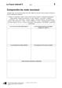<div class="loader"></div></div><input class="toggler" type="checkbox" id="id_49"><div class="content"><h3><label for="id_49">KV 1/3: Comprendre les mots nouveaux </label></h3><h4>Passend zu S. 15–16, Atelier A</h4><table class="files"><tr><td>Öffnen</td><td><a target="_blank" href="content/media/kv/wd01_563015_kv_l1_03.pdf" data-file-type="application/pdf"> pdf </a></td><td><a target="_blank" href="content/media/kv/wd01_563015_kv_l1_kv3.docx" data-file-type="application/vnd.openxmlformats-officedocument.wordprocessingml.document"> docx </a></td></tr><tr><td>Speichern unter</td><td class="save-link"><a target="_blank" href="content/media/kv/wd01_563015_kv_l1_03.pdf" > pdf </a></td><td class="save-link"><a target="_blank" href="content/media/kv/wd01_563015_kv_l1_kv3.docx" > docx </a></td></tr></table></div><div class="attached"><div class="material" data-material-id="6004" ><div class="thumb"><div class="loader"></div></div><div class="content"><h3>Le Cours intensif 2 </h3><h4>Allgemeine Ausgabe 3. Fremdsprache ab 2016</h4><div class="richtext"><b>Beschreibung:</b> Lehrerbuch mit Multimedia-CD (2. Lernjahr)<br><b>Produktnummer:</b> 978-3-12-563015-4</div><a target="_blank" class="single-link" href="https://www.klett.de/produkt/isbn/978-3-12-563015-4">Link zum Webshop</a></div></div></div></div></li><li><div class="material" data-material-id="1446" ><div class="thumb">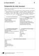<div class="loader"></div></div><input class="toggler" type="checkbox" id="id_50"><div class="content"><h3><label for="id_50">KV 1/3: Comprendre les mots nouveaux </label></h3><h4>Lösungen</h4><table class="files"><tr><td>Öffnen</td><td><a target="_blank" href="content/media/kv/wd01_563015_kv_l1_loes_03.pdf" data-file-type="application/pdf"> pdf </a></td><td><a target="_blank" href="content/media/kv/wd01_563015_kv_l1_loes_kv3.docx" data-file-type="application/vnd.openxmlformats-officedocument.wordprocessingml.document"> docx </a></td></tr><tr><td>Speichern unter</td><td class="save-link"><a target="_blank" href="content/media/kv/wd01_563015_kv_l1_loes_03.pdf" > pdf </a></td><td class="save-link"><a target="_blank" href="content/media/kv/wd01_563015_kv_l1_loes_kv3.docx" > docx </a></td></tr></table></div><div class="attached"><div class="material" data-material-id="6004" ><div class="thumb"><div class="loader"></div></div><div class="content"><h3>Le Cours intensif 2 </h3><h4>Allgemeine Ausgabe 3. Fremdsprache ab 2016</h4><div class="richtext"><b>Beschreibung:</b> Lehrerbuch mit Multimedia-CD (2. Lernjahr)<br><b>Produktnummer:</b> 978-3-12-563015-4</div><a target="_blank" class="single-link" href="https://www.klett.de/produkt/isbn/978-3-12-563015-4">Link zum Webshop</a></div></div></div></div></li></ul></div></div><div class="layer Nur-Materialien" data-type="materials" data-layer-id="bar19"><div class="page-wide-materials"><ul class="materials"><li><div class="material" data-material-id="1556" ><div class="thumb"><div class="loader"></div></div><input class="toggler" type="checkbox" id="id_51"><div class="content"><h3><label for="id_51">Cahier d'activités (html)</label></h3><h4>S. 5–6</h4><ul class="files"><li class=""><a onclick="" target="_blank" href="content/media/epaper/cda/app.html?page=7" data-file-type="tgd-epaper" data-dimension="1200-800">Öffnen</a></li></ul></div><div class="attached"><div class="material" data-material-id="6006" ><div class="thumb"><div class="loader"></div></div><div class="content"><h3>Le Cours intensif 2 </h3><h4>Allgemeine Ausgabe 3. Fremdsprache ab 2016</h4><div class="richtext"><b>Beschreibung:</b> Cahier d'activités Lehrerausgabe mit Lösungen, MP3-CD und Übungssoftware (2. Lernjahr)<br><b>Produktnummer:</b> 978-3-12-563019-2</div><a target="_blank" class="single-link" href="https://www.klett.de/produkt/isbn/978-3-12-563019-2">Link zum Webshop</a></div></div></div></div></li></ul></div></div></div></div></div><div class="page " data-title="16" data-pos="18"><div class="content"><div class="rough-image" style="background: url('content/pages/thumbs_0.png') -13056px 0 no-repeat; background-size: auto 100% !important;"></div><div class="pagr-thumb" style="background: url('content/pages/thumbs_0.png') -1632px 0 no-repeat;"></div><div class="image-layers"><div><div style="background-image: url('content/pages/page_17/Scale1.png')"></div></div><div><div style="background-image: url('content/pages/page_17/Scale2.png')"></div></div><div><div style="background-image: url('content/pages/page_17/Scale4.png')"></div></div></div><section class="searchable"><p class="text">pour comprendre le texte l’aide des photos la page racontez les étapes de la journée des élèves d’abord les élèves sont arrivés la gare ensuite terminez les phrases utilisez le présent pour leur première visite les élèves… ils montent pied parce que qu’… en haut les élèves… les élèves trouvent que la petite france… clara connaît strasbourg parce que qu’… pour le jeu de piste les élèves… près du palais des droits de l’homme les élèves… qui est content qui n’est pas content dites pourquoi l’européen célèbre du paragraphe c’est un des pères de l’europe trouvez son nom sur le plan la page jeu de mots expliquez les mots et les expressions suivants en haut s’ennuyer connaître comme sa poche passionnant un ascenseur les grands-parents près de on marchait quand tout coup on vu… grammaire ihr kennt jetzt zwei zeiten der vergangenheit das passé composé und das imparfait ihre verwendung ist abhängig von der situation und der aussageabsicht das imparfait benutzt man für die darstellung von gewohnheitsmäßigen handlungen zuständen beschreibungen das passé composé benutzt man für die schilderung von einmaligen handlungen aufeinanderfolgenden handlungen handlungskette trouvez pour chaque catégorie deux exemples dans le texte page voilà quelques adverbes de temps utilisés dans le texte dites quelle catégorie ils appartiennent zu welcher kategorie sie gehören lire parler 7–9 nm32hj stratégie d’abord ensuite tout le temps comme toujours tous les étés tout coup un moment entrée atelier atelier bilan seize</p><link type="image/svg+xml" href="content/pages/page_17/searchwords.svg"></section><div class="draw-layer"><svg xmlns="http://www.w3.org/2000/svg" width="768" height="1024"></svg></div><div class="note-icon-layer"></div><div class="annotation-layers"><div class="layer Eigene-Materialien" data-type="materials" data-layer-id="bar1"><div class="page-wide-materials"><ul class="materials"></ul></div></div><div class="layer Loesungen" data-type="anchors" data-layer-id="layer15"><div class="tooltip" data-placement=""><div class="tooltip-top"><div class="tooltip-content"><p>Lösungen</p></div></div></div><div class="anchor Text-Bild-Info-Inhalt" style="left: 2.99%; top: 15.62%;" ><div class="anchor-materials" data-layer="layer15"><ul class="materials"><li><div class="material" data-material-id="4008" ><div class="richtext"><p>D’abord, les élèves sont arrivés à la gare. Ensuite, ils sont allés à l’auberge de jeunesse. Puis ils ont visité la cathédrale. Après, ils sont montés en haut de la cathédrale. Ensuite, ils sont allés à la Petite France. Puis ils ont fait un jeu de piste dans le quartier européen.</p><a class="print">Drucken</a></div></div></li></ul></div></div><div class="tooltip" data-placement=""><div class="tooltip-top"><div class="tooltip-content"><p>Lösungen</p></div></div></div><div class="anchor Text-Bild-Info-Inhalt" style="left: 2.99%; top: 21.48%;" ><div class="anchor-materials" data-layer="layer15"><ul class="materials"><li><div class="material" data-material-id="4009" ><div class="richtext"><p>a) <br />1. Pour leur première visite, les élèves vont à la cathédrale. <br />2. Ils montent à pied parce qu’il n’y a pas d’ascenseur. <br />3. En haut, les élèves ont une vue magnifique sur Strasbourg. <br />4. Les élèves trouvent que la Petite France est un joli quartier. <br />5. Clara connaît Strasbourg parce que ses grands-parents habitent à Strasbourg. <br />6. Pour le jeu de piste, les élèves vont dans le quartier européen. <br />7. Près du Palais des droits de l’homme, les élèves trouvent un morceau du mur de Berlin.</p><p><br />b) Lucas et Marco sont contents parce que Clara est dans leur groupe. Les élèves sont contents parce qu’ils ont aimé le rallye. <br />Madame Lemoine n’est pas contente parce que Marco fait le fou. Damien n’est pas content parce qu’il n’y a pas d’ascenseur dans la cathédrale et qu’il doit monter à pied.</p><a class="print">Drucken</a></div></div></li></ul></div></div><div class="tooltip" data-placement=""><div class="tooltip-top"><div class="tooltip-content"><p>Lösungen</p></div></div></div><div class="anchor Text-Bild-Info-Inhalt" style="left: 2.99%; top: 36.13%;" ><div class="anchor-materials" data-layer="layer15"><ul class="materials"><li><div class="material" data-material-id="4010" ><div class="richtext"><p>L’Européen célèbre du paragraphe 4, c’est Robert Schuman.</p><a class="print">Drucken</a></div></div></li></ul></div></div><div class="tooltip" data-placement=""><div class="tooltip-top"><div class="tooltip-content"><p>Lösungen</p></div></div></div><div class="anchor Text-Bild-Info-Inhalt" style="left: 2.99%; top: 50%;" ><div class="anchor-materials" data-layer="layer15"><ul class="materials"><li><div class="material" data-material-id="4011" ><div class="richtext"><p>a) en haut : c’est le contraire d’en bas. <br />b) un ascenseur : ça aide à monter quand on n’aime pas les marches <br />c) s’ennuyer : c’est le contraire de s’amuser <br />d) les grands-parents : ce sont les parents de nos parents. <br />e) connaître comme sa poche : ça veut dire très bien connaître <br />f) près de : c’est un synonyme de à côté de / pas loin de. <br />g) passionnant : c’est quand quelque chose est très intéressant.</p><a class="print">Drucken</a></div></div></li></ul></div></div><div class="tooltip" data-placement=""><div class="tooltip-top"><div class="tooltip-content"><p>Lösungen</p></div></div></div><div class="anchor Text-Bild-Info-Inhalt" style="left: 2.99%; top: 82.32%;" ><div class="anchor-materials" data-layer="layer15"><ul class="materials"><li><div class="material" data-material-id="4012" ><div class="richtext"><p>a) imparfait : <br />gewohnheitsmäßige Handlungen: quand elle était petite, elle passait tous les étés… (l. 30–31) ; comme toujours, Marco faisait le fou (l. 16–17). <br />Zustände/Beschreibungen: Marco racontait tout le temps des blagues. (l. 12) ; Elle n’était pas très loin du centre-ville. (l. 2-3) ; Il faisait très beau. (l. 21–22) ; C’était un quartier super joli. (l. 25) <br />passé composé : <br />einmalige Handlungen: tout à coup, Clara a crié. (l. 37) ; Les profs ont fait deux groupes. (l. 26–27) aufeinanderfolgenden Handlungen: …ils sont d’abord allés… ensuite toute la classe est partie… (l. 4) ; les profs ont d’abord fait deux groupes, puis ils ont distribué… (l. 27–28) <br />b) gewohnheitsmäßige Handlungen: tout le temps, comme toujours, tous les étés <br />einmalige Handlungen: tout à coup, à un moment <br />aufeinanderfolgende Handlungen: d’abord, ensuite</p><a class="print">Drucken</a></div></div></li></ul></div></div><div class="page-wide-materials"><ul class="materials"></ul></div></div><div class="layer Sprungmarke always-visible" data-type="root" data-layer-id="layer0"><a href="?page=27" target="_blank" class="rect" style="position: absolute;z-index:1; left: 9.11%; top: 58.1%; width: 4.16%; height: 3.51%"></a><a href="http://code.klett.de/nm32hj" target="_blank" class="rect" style="position: absolute;z-index:1; left: 5.85%; top: 45.89%; width: 7.42%; height: 3.51%"></a><a href="?page=278" target="_blank" class="rect" style="position: absolute;z-index:1; left: 26.82%; top: 36.91%; width: 6.77%; height: 2.05%"></a><a href="?page=17" target="_blank" class="rect" style="position: absolute;z-index:1; left: 24.21%; top: 81.93%; width: 5.85%; height: 2.05%"></a><a href="?page=17" target="_blank" class="rect" style="position: absolute;z-index:1; left: 32.94%; top: 13.37%; width: 6.77%; height: 2.05%"></a><div class="page-wide-materials"><ul class="materials"></ul></div></div><div class="layer Nur-Materialien" data-type="materials" data-layer-id="bar22"><div class="page-wide-materials"><ul class="materials"><li><div class="material" data-material-id="1247" ><div class="thumb"><div class="loader"></div></div><input class="toggler" type="checkbox" id="id_52"><div class="content"><h3><label for="id_52">Lektionsbegleitendes Vokabular (pdf)</label></h3><h4>Ausdruckbare Liste</h4><ul class="files"><li class=""><a onclick="" target="_blank" href="content/media/fundus/fu_bev.pdf" data-file-type="application/pdf">Öffnen</a></li><li class="save-link"><a onclick="" target="_blank" href="content/media/fundus/fu_bev.pdf" >Speichern unter</a></li></ul></div><div class="attached"><div class="material" data-material-id="6005" ><div class="thumb"><div class="loader"></div></div><div class="content"><h3>Le Cours intensif 2 </h3><h4>Allgemeine Ausgabe 3. Fremdsprache ab 2016</h4><div class="richtext"><b>Beschreibung:</b> Schülerbuch, Softcover (2. Lernjahr)<br><b>Produktnummer:</b> 978-3-12-563010-9</div><a target="_blank" class="single-link" href="https://www.klett.de/produkt/isbn/978-3-12-563010-9">Link zum Webshop</a></div></div></div></div></li><li><div class="material" data-material-id="1248" ><div class="thumb"><div class="loader"></div></div><input class="toggler" type="checkbox" id="id_53"><div class="content"><h3><label for="id_53">Alphabetische Wortliste (pdf)</label></h3><h4>Ausdruckbare Liste</h4><ul class="files"><li class=""><a onclick="" target="_blank" href="content/media/fundus/fu_awl.pdf" data-file-type="application/pdf">Öffnen</a></li><li class="save-link"><a onclick="" target="_blank" href="content/media/fundus/fu_awl.pdf" >Speichern unter</a></li></ul></div><div class="attached"><div class="material" data-material-id="6005" ><div class="thumb"><div class="loader"></div></div><div class="content"><h3>Le Cours intensif 2 </h3><h4>Allgemeine Ausgabe 3. Fremdsprache ab 2016</h4><div class="richtext"><b>Beschreibung:</b> Schülerbuch, Softcover (2. Lernjahr)<br><b>Produktnummer:</b> 978-3-12-563010-9</div><a target="_blank" class="single-link" href="https://www.klett.de/produkt/isbn/978-3-12-563010-9">Link zum Webshop</a></div></div></div></div></li><li><div class="material" data-material-id="1249" ><div class="thumb"><div class="loader"></div></div><input class="toggler" type="checkbox" id="id_54"><div class="content"><h3><label for="id_54">Lektionsbegleitende Grammatik (pdf)</label></h3><ul class="files"><li class=""><a onclick="" target="_blank" href="content/media/gram/fu_l1_01.pdf" data-file-type="application/pdf">Öffnen</a></li><li class="save-link"><a onclick="" target="_blank" href="content/media/gram/fu_l1_01.pdf" >Speichern unter</a></li></ul></div><div class="attached"><div class="material" data-material-id="6005" ><div class="thumb"><div class="loader"></div></div><div class="content"><h3>Le Cours intensif 2 </h3><h4>Allgemeine Ausgabe 3. Fremdsprache ab 2016</h4><div class="richtext"><b>Beschreibung:</b> Schülerbuch, Softcover (2. Lernjahr)<br><b>Produktnummer:</b> 978-3-12-563010-9</div><a target="_blank" class="single-link" href="https://www.klett.de/produkt/isbn/978-3-12-563010-9">Link zum Webshop</a></div></div></div></div></li></ul></div></div><div class="layer Nur-Materialien" data-type="materials" data-layer-id="bar18"><div class="page-wide-materials"><ul class="materials"><li><div class="material" data-material-id="1590" ><div class="thumb"><div class="loader"></div></div><input class="toggler" type="checkbox" id="id_55"><div class="content"><h3><label for="id_55">Blätterbares Lehrerbuch (html)</label></h3><h4>S. 16</h4><div class="richtext"><p>Das Lehrerbuch bietet viele methodische Hinweise zu jeder Leçon, Kopiervorlagen u.v.m. </p></div><ul class="files"><li class=""><a onclick="" target="_blank" href="content/media/ep-1405/app.html?page=18" data-file-type="tgd-epaper" data-dimension="1200-800">Öffnen</a></li></ul></div><div class="attached"><div class="material" data-material-id="6004" ><div class="thumb"><div class="loader"></div></div><div class="content"><h3>Le Cours intensif 2 </h3><h4>Allgemeine Ausgabe 3. Fremdsprache ab 2016</h4><div class="richtext"><b>Beschreibung:</b> Lehrerbuch mit Multimedia-CD (2. Lernjahr)<br><b>Produktnummer:</b> 978-3-12-563015-4</div><a target="_blank" class="single-link" href="https://www.klett.de/produkt/isbn/978-3-12-563015-4">Link zum Webshop</a></div></div></div></div></li></ul></div></div><div class="layer Nur-Materialien" data-type="materials" data-layer-id="bar21"><div class="page-wide-materials"><ul class="materials"><li><div class="material" data-material-id="1436" ><div class="thumb"><div class="loader"></div></div><input class="toggler" type="checkbox" id="id_56"><div class="content"><h3><label for="id_56">KV 1/3: Comprendre les mots nouveaux </label></h3><h4>Passend zu S. 15–16, Atelier A</h4><table class="files"><tr><td>Öffnen</td><td><a target="_blank" href="content/media/kv/wd01_563015_kv_l1_03.pdf" data-file-type="application/pdf"> pdf </a></td><td><a target="_blank" href="content/media/kv/wd01_563015_kv_l1_kv3.docx" data-file-type="application/vnd.openxmlformats-officedocument.wordprocessingml.document"> docx </a></td></tr><tr><td>Speichern unter</td><td class="save-link"><a target="_blank" href="content/media/kv/wd01_563015_kv_l1_03.pdf" > pdf </a></td><td class="save-link"><a target="_blank" href="content/media/kv/wd01_563015_kv_l1_kv3.docx" > docx </a></td></tr></table></div><div class="attached"><div class="material" data-material-id="6004" ><div class="thumb"><div class="loader"></div></div><div class="content"><h3>Le Cours intensif 2 </h3><h4>Allgemeine Ausgabe 3. Fremdsprache ab 2016</h4><div class="richtext"><b>Beschreibung:</b> Lehrerbuch mit Multimedia-CD (2. Lernjahr)<br><b>Produktnummer:</b> 978-3-12-563015-4</div><a target="_blank" class="single-link" href="https://www.klett.de/produkt/isbn/978-3-12-563015-4">Link zum Webshop</a></div></div></div></div></li><li><div class="material" data-material-id="1446" ><div class="thumb"><div class="loader"></div></div><input class="toggler" type="checkbox" id="id_57"><div class="content"><h3><label for="id_57">KV 1/3: Comprendre les mots nouveaux </label></h3><h4>Lösungen</h4><table class="files"><tr><td>Öffnen</td><td><a target="_blank" href="content/media/kv/wd01_563015_kv_l1_loes_03.pdf" data-file-type="application/pdf"> pdf </a></td><td><a target="_blank" href="content/media/kv/wd01_563015_kv_l1_loes_kv3.docx" data-file-type="application/vnd.openxmlformats-officedocument.wordprocessingml.document"> docx </a></td></tr><tr><td>Speichern unter</td><td class="save-link"><a target="_blank" href="content/media/kv/wd01_563015_kv_l1_loes_03.pdf" > pdf </a></td><td class="save-link"><a target="_blank" href="content/media/kv/wd01_563015_kv_l1_loes_kv3.docx" > docx </a></td></tr></table></div><div class="attached"><div class="material" data-material-id="6004" ><div class="thumb"><div class="loader"></div></div><div class="content"><h3>Le Cours intensif 2 </h3><h4>Allgemeine Ausgabe 3. Fremdsprache ab 2016</h4><div class="richtext"><b>Beschreibung:</b> Lehrerbuch mit Multimedia-CD (2. Lernjahr)<br><b>Produktnummer:</b> 978-3-12-563015-4</div><a target="_blank" class="single-link" href="https://www.klett.de/produkt/isbn/978-3-12-563015-4">Link zum Webshop</a></div></div></div></div></li></ul></div></div></div></div></div><div class="page " data-title="17" data-pos="19"><div class="content"><div class="rough-image" style="background: url('content/pages/thumbs_0.png') -13824px 0 no-repeat; background-size: auto 100% !important;"></div><div class="pagr-thumb" style="background: url('content/pages/thumbs_0.png') -1728px 0 no-repeat;"></div><div class="image-layers"><div><div style="background-image: url('content/pages/page_18/Scale1.png')"></div></div><div><div style="background-image: url('content/pages/page_18/Scale2.png')"></div></div><div><div style="background-image: url('content/pages/page_18/Scale4.png')"></div></div></div><section class="searchable"><p class="text">regardez les dessins et racontez ce qui s’est passé en plus les élèves se promenaient dans le centre tout coup un voleur est arrivé il volé le porte-monnaie de lucas la fi de la première journée clara écrit son carnet de bord choisissez le bon temps et justifi ez votre choix ce matin nous partions sommes partis de paris très tôt dans le train l’ambiance était été très bonne des élèves discutaient ont discuté d’autres jouaient ont joué sur leurs portables les profs étaient ont été de bonne humeur strasbourg nous allions d’abord sommes d’abord allés l’auberge de jeunesse puis nous partions sommes partis pour la cathédrale terminez le texte de clara mettez les verbes entre parenthèses l’imparfait ou au passé composé et justifi ez votre choix l’entrée de la cathédrale une guide nous attendre d’abord nous avoir une visite guidée de la cathédrale puis nous monter en haut de la tour damien ne pas être content parce qu’on devoir monter pied ensuite nous découvrir la petite france enfi moi avec les vacances tous les étés chez mamie je connaître déjà le quartier… l’après-midi on faire un jeu de piste dans le quartier européen dans mon groupe il avoir marco mais pour une fois il ne pas faire le fou nous passer une journée super 10,11 se promener dans le centre voleur arriver voler le portemonnaie de lucas clara être magasin chercher un cadeau voir sa grand-mère être cathédrale écouter la guide portable de cléa sonner manger tarte fl ambée bonne ambiance la pluie tomber faire pique-nique appareil photo tomber dans l’eau être chambre écouter musique monsieure verney entrer crier entrée atelier atelier bilan dix-sept</p><link type="image/svg+xml" href="content/pages/page_18/searchwords.svg"></section><div class="draw-layer"><svg xmlns="http://www.w3.org/2000/svg" width="768" height="1024"></svg></div><div class="note-icon-layer"></div><div class="annotation-layers"><div class="layer Eigene-Materialien" data-type="materials" data-layer-id="bar1"><div class="page-wide-materials"><ul class="materials"></ul></div></div><div class="layer Auszeichnung1" data-type="vector" data-layer-id="layer16"><a class="rect" style="position: absolute;z-index:1; left: 68.75%; top: 84.57%; width: 5.33%; height: 3.51%"></a><div class="page-wide-materials"><ul class="materials"></ul></div></div><div class="layer Loesungen" data-type="anchors" data-layer-id="layer15"><div class="tooltip" data-placement=""><div class="tooltip-top"><div class="tooltip-content"><p>Lösungen</p></div></div></div><div class="anchor Text-Bild-Info-Inhalt" style="left: 3.12%; top: 13.28%;" ><div class="anchor-materials" data-layer="layer15"><ul class="materials"><li><div class="material" data-material-id="4013" ><div class="richtext"><p>a) Les élèves se promenaient dans le centre. Tout à coup, un voleur est arrivé. Il a volé le porte-monnaie de Lucas. <br />b) Le groupe était dans la cathédrale et écoutait le guide. Tout à coup, le portable de Cléa a sonné. <br />c) La classe de Lucas faisait un pique-nique. Tout à coup, l’appareil photo est tombé dans l’eau. <br />d) Clara était dans un magasin et cherchait un cadeau. Tout à coup, elle a vu sa grand-mère. <br />e) Les élèves mangeaient une tarte flambée. Il y avait une bonne ambiance. Tout à coup, la pluie est tombée. <br />f) Les garçons étaient dans la chambre et écoutaient de la musique. Tout à coup, monsieur Verney est entré et a crié.</p><a class="print">Drucken</a></div></div></li></ul></div></div><div class="tooltip" data-placement=""><div class="tooltip-top"><div class="tooltip-content"><p>Lösungen</p></div></div></div><div class="anchor Text-Bild-Info-Inhalt" style="left: 3.12%; top: 64.45%;" ><div class="anchor-materials" data-layer="layer15"><ul class="materials"><li><div class="material" data-material-id="4014" ><div class="richtext"><p>a) nous sommes partis (einmalige Handlung, Auslöser: ce matin) <br />l’ambiance était bonne (Zustand, Beschreibung) Des élèves discutaient (Zustand, Beschreibung) <br />d’autres jouaient (Zustand, Beschreibung) Les profs étaient (Zustand, Beschreibung) <br />nous sommes d’abord allés (einmalige Handlung, Auslöser: d’abord) <br />nous sommes partis (einmalige Handlung, Auslöser: puis) </p><p><br />b) une guide nous attendait (Zustand, zeitlich unbegrenzt) <br />nous avons eu (einmalige Handlung, Auslöser: d’abord) <br />nous sommes montés (einmalige Handlung, Auslöser: puis) <br />Damien n’était pas content (Zustand, Beschreibung) <br />on devait (Zustand, Beschreibung) <br />nous avons découvert (einmalige Handlung, Auslöser: ensuite)<br />je connaissais (Zustand, Beschreibung) <br />on a fait (einmalige Handlung, konkrete Zeitangabe) <br />il y avait (Zustand, Beschreibung) <br />il n’a pas fait (einmalige Handlung, Auslöser: pour une fois) <br />nous avons passé (zeitlich begrenzte Handlung)</p><a class="print">Drucken</a></div></div></li></ul></div></div><div class="page-wide-materials"><ul class="materials"></ul></div></div><div class="layer Differenzierung" data-type="anchors" data-layer-id="layer14"><div class="tooltip" data-placement=""><div class="tooltip-top"><div class="tooltip-content"><p>Differenzierung</p></div></div></div><div class="anchor Text-Bild-Info-Inhalt" style="left: 75%; top: 11.71%;" ><div class="anchor-materials" data-layer="layer14"><ul class="materials"><li><div class="material" data-material-id="4318" ><div class="richtext"><p><b>1</b>. Leistungsstarke Gruppen können alternativ zum Grammatik-Kasten sowie SB, S. 16, Nr. 10 Beispielsätze selbstständig aus dem Text (SB, S. 15, Nr. 5) heraussuchen und die Regeln induktiv erarbeiten. <br /><b>2.</b> Leistungsschwächere S bearbeiten statt SB, S. 17, Nr. 11 die vereinfachte Version in SB, <i>En plus</i>, S. 136, Nr. 1.</p><a class="print">Drucken</a></div></div></li></ul></div></div><div class="page-wide-materials"><ul class="materials"></ul></div></div><div class="layer Sprungmarke always-visible" data-type="root" data-layer-id="layer0"><a href="?page=138" target="_blank" class="rect" style="position: absolute;z-index:1; left: 78.25%; top: 10.83%; width: 14.58%; height: 2.53%"></a><div class="page-wide-materials"><ul class="materials"></ul></div></div><div class="layer Nur-Materialien" data-type="materials" data-layer-id="bar22"><div class="page-wide-materials"><ul class="materials"><li><div class="material" data-material-id="1247" ><div class="thumb"><div class="loader"></div></div><input class="toggler" type="checkbox" id="id_58"><div class="content"><h3><label for="id_58">Lektionsbegleitendes Vokabular (pdf)</label></h3><h4>Ausdruckbare Liste</h4><ul class="files"><li class=""><a onclick="" target="_blank" href="content/media/fundus/fu_bev.pdf" data-file-type="application/pdf">Öffnen</a></li><li class="save-link"><a onclick="" target="_blank" href="content/media/fundus/fu_bev.pdf" >Speichern unter</a></li></ul></div><div class="attached"><div class="material" data-material-id="6005" ><div class="thumb"><div class="loader"></div></div><div class="content"><h3>Le Cours intensif 2 </h3><h4>Allgemeine Ausgabe 3. Fremdsprache ab 2016</h4><div class="richtext"><b>Beschreibung:</b> Schülerbuch, Softcover (2. Lernjahr)<br><b>Produktnummer:</b> 978-3-12-563010-9</div><a target="_blank" class="single-link" href="https://www.klett.de/produkt/isbn/978-3-12-563010-9">Link zum Webshop</a></div></div></div></div></li><li><div class="material" data-material-id="1248" ><div class="thumb"><div class="loader"></div></div><input class="toggler" type="checkbox" id="id_59"><div class="content"><h3><label for="id_59">Alphabetische Wortliste (pdf)</label></h3><h4>Ausdruckbare Liste</h4><ul class="files"><li class=""><a onclick="" target="_blank" href="content/media/fundus/fu_awl.pdf" data-file-type="application/pdf">Öffnen</a></li><li class="save-link"><a onclick="" target="_blank" href="content/media/fundus/fu_awl.pdf" >Speichern unter</a></li></ul></div><div class="attached"><div class="material" data-material-id="6005" ><div class="thumb"><div class="loader"></div></div><div class="content"><h3>Le Cours intensif 2 </h3><h4>Allgemeine Ausgabe 3. Fremdsprache ab 2016</h4><div class="richtext"><b>Beschreibung:</b> Schülerbuch, Softcover (2. Lernjahr)<br><b>Produktnummer:</b> 978-3-12-563010-9</div><a target="_blank" class="single-link" href="https://www.klett.de/produkt/isbn/978-3-12-563010-9">Link zum Webshop</a></div></div></div></div></li><li><div class="material" data-material-id="1249" ><div class="thumb"><div class="loader"></div></div><input class="toggler" type="checkbox" id="id_60"><div class="content"><h3><label for="id_60">Lektionsbegleitende Grammatik (pdf)</label></h3><ul class="files"><li class=""><a onclick="" target="_blank" href="content/media/gram/fu_l1_01.pdf" data-file-type="application/pdf">Öffnen</a></li><li class="save-link"><a onclick="" target="_blank" href="content/media/gram/fu_l1_01.pdf" >Speichern unter</a></li></ul></div><div class="attached"><div class="material" data-material-id="6005" ><div class="thumb"><div class="loader"></div></div><div class="content"><h3>Le Cours intensif 2 </h3><h4>Allgemeine Ausgabe 3. Fremdsprache ab 2016</h4><div class="richtext"><b>Beschreibung:</b> Schülerbuch, Softcover (2. Lernjahr)<br><b>Produktnummer:</b> 978-3-12-563010-9</div><a target="_blank" class="single-link" href="https://www.klett.de/produkt/isbn/978-3-12-563010-9">Link zum Webshop</a></div></div></div></div></li></ul></div></div><div class="layer Nur-Materialien" data-type="materials" data-layer-id="bar19"><div class="page-wide-materials"><ul class="materials"><li><div class="material" data-material-id="1287" ><div class="thumb"><div class="loader"></div></div><input class="toggler" type="checkbox" id="id_61"><div class="content"><h3><label for="id_61">Cahier d'activités (html)</label></h3><h4>S. 6-8</h4><ul class="files"><li class=""><a onclick="" target="_blank" href="content/media/epaper/cda/app.html?page=8" data-file-type="tgd-epaper" data-dimension="1200-800">Öffnen</a></li></ul></div><div class="attached"><div class="material" data-material-id="6006" ><div class="thumb"><div class="loader"></div></div><div class="content"><h3>Le Cours intensif 2 </h3><h4>Allgemeine Ausgabe 3. Fremdsprache ab 2016</h4><div class="richtext"><b>Beschreibung:</b> Cahier d'activités Lehrerausgabe mit Lösungen, MP3-CD und Übungssoftware (2. Lernjahr)<br><b>Produktnummer:</b> 978-3-12-563019-2</div><a target="_blank" class="single-link" href="https://www.klett.de/produkt/isbn/978-3-12-563019-2">Link zum Webshop</a></div></div></div></div></li></ul></div></div><div class="layer Nur-Materialien" data-type="materials" data-layer-id="bar18"><div class="page-wide-materials"><ul class="materials"><li><div class="material" data-material-id="1365" ><div class="thumb"><div class="loader"></div></div><input class="toggler" type="checkbox" id="id_62"><div class="content"><h3><label for="id_62">Blätterbares Lehrerbuch (html)</label></h3><h4>S. 17</h4><div class="richtext"><p>Das Lehrerbuch bietet viele methodische Hinweise zu jeder Leçon, Kopiervorlagen u.v.m. </p></div><ul class="files"><li class=""><a onclick="" target="_blank" href="content/media/ep-1405/app.html?page=19" data-file-type="tgd-epaper" data-dimension="1200-800">Öffnen</a></li></ul></div><div class="attached"><div class="material" data-material-id="6004" ><div class="thumb"><div class="loader"></div></div><div class="content"><h3>Le Cours intensif 2 </h3><h4>Allgemeine Ausgabe 3. Fremdsprache ab 2016</h4><div class="richtext"><b>Beschreibung:</b> Lehrerbuch mit Multimedia-CD (2. Lernjahr)<br><b>Produktnummer:</b> 978-3-12-563015-4</div><a target="_blank" class="single-link" href="https://www.klett.de/produkt/isbn/978-3-12-563015-4">Link zum Webshop</a></div></div></div></div></li></ul></div></div></div></div></div><div class="page " data-title="18" data-pos="20"><div class="content"><div class="rough-image" style="background: url('content/pages/thumbs_0.png') -14592px 0 no-repeat; background-size: auto 100% !important;"></div><div class="pagr-thumb" style="background: url('content/pages/thumbs_0.png') -1824px 0 no-repeat;"></div><div class="image-layers"><div><div style="background-image: url('content/pages/page_19/Scale1.png')"></div></div><div><div style="background-image: url('content/pages/page_19/Scale2.png')"></div></div><div><div style="background-image: url('content/pages/page_19/Scale4.png')"></div></div></div><section class="searchable"><p class="text">jeu de sons !e !4 !e ecoutez et classez les mots avec le son dans un tableau pendant le voyage en alsace les élèves devaient se lever chaque jour sept heures et demie au petit-déjeuner lucas prenait son temps monsieur verney était en colère allez lucas tu te dépêches vous êtes allés chez arte quand vous étiez strasbourg oui c’était très intéressant on visité toute la ville regardez les expressions suivantes du texte puis trouvez la règle pour l’emploi de tout article leur retour paris les élèves parlent de leur voyage en alsace ils ne sont pas du même avis complétez les phrases avec tout article damien on dû marcher on visité tout le l’ toute la l’ tous les toutes les jours sorties musées de la ville monde temps après-midi classe clara j’ai adoré j’ai bien discuté avec marco je n’ai pas fait le fou j’ai bien rigolé avec et vous parlez de la dernière excursion avec votre classe faites quatre phrases et utilisez tout article mon voyage mes vacances choisissez une des mini-tâches suivantes ecrivez un e-mail votre correspondant français et racontez-lui une journée particulière pendant un voyage faites un roman-photo sur vos vacances ecrivez au moins deux phrases pour chaque photo les questions droite peuvent vous aider faites attention l’emploi du passé composé et de l’imparfait vérifi ez votre texte l’aide de la liste de fautes page l1/8 !e !4 !e chez êtes le parler mini-tâche écrire entrée atelier atelier bilan dix-huit où est-ce que vous étiez  quand est-ce que c’était  comment est-ce que c’était  avec qui est-ce que vous étiez  qu’est-ce que vous avez fait  qu’est-ce qui s’est passé  il faisait quel temps  l’ambiance était comment  leur retour paris les élèves parlent de leur voyage en alsace tout le temps toute la classe tous les élèves toutes les institutions</p><link type="image/svg+xml" href="content/pages/page_19/searchwords.svg"></section><div class="draw-layer"><svg xmlns="http://www.w3.org/2000/svg" width="768" height="1024"></svg></div><div class="note-icon-layer"></div><div class="annotation-layers"><div class="layer Eigene-Materialien" data-type="materials" data-layer-id="bar1"><div class="page-wide-materials"><ul class="materials"></ul></div></div><div class="layer Loesungen" data-type="anchors" data-layer-id="layer15"><div class="tooltip" data-placement=""><div class="tooltip-top"><div class="tooltip-content"><p>Lösungen</p></div></div></div><div class="anchor Text-Bild-Info-Inhalt" style="left: 2.99%; top: 17.77%;" ><div class="anchor-materials" data-layer="layer15"><ul class="materials"><li><div class="material" data-material-id="4015" ><div class="richtext"><p>[e]: les, élèves, lever, et, petit-déjeuner, était, allez, dépêches, allés, chez, ARTE, étiez, c’était, intéressant <br />[Ɛ]: élèves, devaient, sept, prenait, Verney, était, colère, dépêches, êtes, c’était, très, intéressant <br />[Ə]: le, devaient, se, lever, demie, petit-déjeuner, prenait, te</p><a class="print">Drucken</a></div></div></li></ul></div></div><div class="tooltip" data-placement=""><div class="tooltip-top"><div class="tooltip-content"><p>Lösungen</p></div></div></div><div class="anchor Text-Bild-Info-Inhalt" style="left: 2.99%; top: 33.78%;" ><div class="anchor-materials" data-layer="layer15"><ul class="materials"><li><div class="material" data-material-id="4016" ><div class="richtext"><p>Règle : <br />tout + le / l’ + substantif (masculin singulier, exemple : le temps) <br />toute + la + substantif (féminin singulier, exemple : la classe) <br />tous + les + substantif (masculin pluriel, exemple : les élèves) <br />toutes + les + substantif (féminin pluriel, exemple : les institutions)</p><a class="print">Drucken</a></div></div></li></ul></div></div><div class="tooltip" data-placement=""><div class="tooltip-top"><div class="tooltip-content"><p>Lösungen</p></div></div></div><div class="anchor Text-Bild-Info-Inhalt" style="left: 2.99%; top: 38.57%;" ><div class="anchor-materials" data-layer="layer15"><ul class="materials"><li><div class="material" data-material-id="4017" ><div class="richtext"><p>a) <i>Lösungsmöglichkeiten: </i><br /><b>Damien : </b>On a dû marcher tous les jours / tout l’après-midi. / On a visité tous les musées de la ville. <br /><b>Clara :</b> J’ai adoré toutes les sorties. / J’ai bien discuté avec toute la classe. <br /><b>Marco :</b> Je n’ai pas fait le fou tout le temps. / J’ai bien rigolé avec tout le monde. <br />b) <i>Lösungsmöglichkeiten:</i><br />Toute la classe est partie à Paris avec monsieur / madame Bottke. <br />Nous avons rigolé tout le temps. <br />On a visité toute la ville ensemble. <br />Tous les élèves étaient très fatigués le soir.</p><a class="print">Drucken</a></div></div></li></ul></div></div><div class="tooltip" data-placement=""><div class="tooltip-top"><div class="tooltip-content"><p>Lösungen</p></div></div></div><div class="anchor Text-Bild-Info-Inhalt" style="left: 2.99%; top: 66.5%;" ><div class="anchor-materials" data-layer="layer15"><ul class="materials"><li><div class="material" data-material-id="4018" ><div class="richtext"><p>a) <i>Lösungsmöglichkeit: </i><br />Salut Camille, <br />Pendant les vacances, je suis allée en Alsace avec ma famille. A Strasbourg, nous avons visité la cathédrale et compté les marches. L’ambiance en haut était super bonne. Tout à coup, ma mère a crié : « Au voleur ! » Elle voulait faire une photo, mais elle ne trouvait plus son portable. Tout le monde a cherché le voleur, mais en haut de la cathédrale, c’était difficile. Quand nous sommes sortis de la cathédrale, un guide nous attendait déjà. Il avait le portable de ma mère. Ouf… Ma mère a dit merci. Elle était trop contente. A bientôt, xy <br />b)<i> Lösungsmöglichkeit: </i><br />((Photo 1 : un groupe d’élèves devant la cathédrale)) <br />Hier, nos profs voulaient visiter la cathédrale de Strasbourg. C’était au programme du voyage en Alsace. <br />((Photo 2 : les élèves en train de monter)) <br />Il n’y avait pas d’ascenseur. Nous devions tous monter en haut à pied. C’était horrible parce qu’il faisait très chaud ! <br />((Photo 3 : les élèves sur la terrasse d’un restaurant. Ils mangent des tartes flambées.)) <br />Tous les soirs, on mangeait des tartes flambées. C’était délicieux. <br />((Photo 4 : les élèves sur la même terrasse ; il pleut des cordes)) <br />Un soir, pendant le repas, il a commencé à pleuvoir. Nous avons tout de suite payé et nous sommes vite rentrés à l’auberge de jeunesse.</p><a class="print">Drucken</a></div></div></li></ul></div></div><div class="page-wide-materials"><ul class="materials"></ul></div></div><div class="layer Multimedia always-visible" data-type="media" data-layer-id="layer5"><div class="tooltip" data-placement=""><div class="tooltip-top"><div class="tooltip-content"><p class="tooltip-title">CD 1, Track 8: Jeu de sons</p><p class="tooltip-subtitle"></p></div></div></div><div class="anchor Medium-Sprache" style="left: 9.5%; top: 17.77%;" ><div class="anchor-materials" data-layer="layer5"><ul class="materials"><li><div class="material" data-material-id="1009" ><div class="content"><h3>CD 1, Track 8: Jeu de sons (mp3)</h3><ul class="files"><li class=""><a onclick="" target="_blank" href="content/media/audios/lcd1/lcd1_008.mp3" data-file-type="audio/mpeg">Öffnen</a></li></ul></div></div></li></ul></div></div><div class="page-wide-materials"><ul class="materials"></ul></div></div><div class="layer Sprungmarke always-visible" data-type="root" data-layer-id="layer0"><a href="?page=27" target="_blank" class="rect" style="position: absolute;z-index:1; left: 9.11%; top: 27.34%; width: 4.16%; height: 3.51%"></a><a href="?page=172" target="_blank" class="rect" style="position: absolute;z-index:1; left: 27.99%; top: 82.22%; width: 7.55%; height: 2.53%"></a><div class="page-wide-materials"><ul class="materials"></ul></div></div><div class="layer Nur-Materialien" data-type="materials" data-layer-id="bar20"><div class="page-wide-materials"><ul class="materials"><li><div class="material" data-material-id="1111" ><div class="thumb"><div class="loader"></div></div><input class="toggler" type="checkbox" id="id_63"><div class="content"><h3><label for="id_63">CD 1, Track 8: Jeu de sons (mp3)</label></h3><h4>Audio zu S. 18, Nr. 13</h4><ul class="files"><li class=""><a onclick="" target="_blank" href="content/media/audios/lcd1/lcd1_008.mp3" data-file-type="audio/mpeg">Öffnen</a></li><li class="save-link"><a onclick="" target="_blank" href="content/media/audios/lcd1/lcd1_008.mp3" >Speichern unter</a></li></ul></div><div class="attached"><div class="material" data-material-id="6003" ><div class="thumb"><div class="loader"></div></div><div class="content"><h3>Le Cours intensif 2 </h3><h4>Allgemeine Ausgabe 3. Fremdsprache ab 2016</h4><div class="richtext"><b>Beschreibung:</b> Cahier d'activités mit MP3-CD und Übungssoftware (2. Lernjahr)<br><b>Produktnummer:</b> 978-3-12-563011-6</div><a target="_blank" class="single-link" href="https://www.klett.de/produkt/isbn/978-3-12-563011-6">Link zum Webshop</a></div></div></div></div></li></ul></div></div><div class="layer Nur-Materialien" data-type="materials" data-layer-id="bar22"><div class="page-wide-materials"><ul class="materials"><li><div class="material" data-material-id="1261" ><div class="thumb">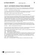<div class="loader"></div></div><input class="toggler" type="checkbox" id="id_64"><div class="content"><h3><label for="id_64">Jour 2: une histoire d’amour franco-allemande (docx)</label></h3><h4>Editierbarer Lektionstext</h4><ul class="files"><li class=""><a onclick="" target="_blank" href="content/media/l-texte/st_l1_04.docx" data-file-type="application/vnd.openxmlformats-officedocument.wordprocessingml.document">Öffnen</a></li><li class="save-link"><a onclick="" target="_blank" href="content/media/l-texte/st_l1_04.docx" >Speichern unter</a></li></ul></div><div class="attached"><div class="material" data-material-id="6005" ><div class="thumb"><div class="loader"></div></div><div class="content"><h3>Le Cours intensif 2 </h3><h4>Allgemeine Ausgabe 3. Fremdsprache ab 2016</h4><div class="richtext"><b>Beschreibung:</b> Schülerbuch, Softcover (2. Lernjahr)<br><b>Produktnummer:</b> 978-3-12-563010-9</div><a target="_blank" class="single-link" href="https://www.klett.de/produkt/isbn/978-3-12-563010-9">Link zum Webshop</a></div></div></div></div></li><li><div class="material" data-material-id="1247" ><div class="thumb"><div class="loader"></div></div><input class="toggler" type="checkbox" id="id_65"><div class="content"><h3><label for="id_65">Lektionsbegleitendes Vokabular (pdf)</label></h3><h4>Ausdruckbare Liste</h4><ul class="files"><li class=""><a onclick="" target="_blank" href="content/media/fundus/fu_bev.pdf" data-file-type="application/pdf">Öffnen</a></li><li class="save-link"><a onclick="" target="_blank" href="content/media/fundus/fu_bev.pdf" >Speichern unter</a></li></ul></div><div class="attached"><div class="material" data-material-id="6005" ><div class="thumb"><div class="loader"></div></div><div class="content"><h3>Le Cours intensif 2 </h3><h4>Allgemeine Ausgabe 3. Fremdsprache ab 2016</h4><div class="richtext"><b>Beschreibung:</b> Schülerbuch, Softcover (2. Lernjahr)<br><b>Produktnummer:</b> 978-3-12-563010-9</div><a target="_blank" class="single-link" href="https://www.klett.de/produkt/isbn/978-3-12-563010-9">Link zum Webshop</a></div></div></div></div></li><li><div class="material" data-material-id="1248" ><div class="thumb"><div class="loader"></div></div><input class="toggler" type="checkbox" id="id_66"><div class="content"><h3><label for="id_66">Alphabetische Wortliste (pdf)</label></h3><h4>Ausdruckbare Liste</h4><ul class="files"><li class=""><a onclick="" target="_blank" href="content/media/fundus/fu_awl.pdf" data-file-type="application/pdf">Öffnen</a></li><li class="save-link"><a onclick="" target="_blank" href="content/media/fundus/fu_awl.pdf" >Speichern unter</a></li></ul></div><div class="attached"><div class="material" data-material-id="6005" ><div class="thumb"><div class="loader"></div></div><div class="content"><h3>Le Cours intensif 2 </h3><h4>Allgemeine Ausgabe 3. Fremdsprache ab 2016</h4><div class="richtext"><b>Beschreibung:</b> Schülerbuch, Softcover (2. Lernjahr)<br><b>Produktnummer:</b> 978-3-12-563010-9</div><a target="_blank" class="single-link" href="https://www.klett.de/produkt/isbn/978-3-12-563010-9">Link zum Webshop</a></div></div></div></div></li><li><div class="material" data-material-id="1249" ><div class="thumb"><div class="loader"></div></div><input class="toggler" type="checkbox" id="id_67"><div class="content"><h3><label for="id_67">Lektionsbegleitende Grammatik (pdf)</label></h3><ul class="files"><li class=""><a onclick="" target="_blank" href="content/media/gram/fu_l1_01.pdf" data-file-type="application/pdf">Öffnen</a></li><li class="save-link"><a onclick="" target="_blank" href="content/media/gram/fu_l1_01.pdf" >Speichern unter</a></li></ul></div><div class="attached"><div class="material" data-material-id="6005" ><div class="thumb"><div class="loader"></div></div><div class="content"><h3>Le Cours intensif 2 </h3><h4>Allgemeine Ausgabe 3. Fremdsprache ab 2016</h4><div class="richtext"><b>Beschreibung:</b> Schülerbuch, Softcover (2. Lernjahr)<br><b>Produktnummer:</b> 978-3-12-563010-9</div><a target="_blank" class="single-link" href="https://www.klett.de/produkt/isbn/978-3-12-563010-9">Link zum Webshop</a></div></div></div></div></li></ul></div></div><div class="layer Nur-Materialien" data-type="materials" data-layer-id="bar18"><div class="page-wide-materials"><ul class="materials"><li><div class="material" data-material-id="1366" ><div class="thumb"><div class="loader"></div></div><input class="toggler" type="checkbox" id="id_68"><div class="content"><h3><label for="id_68">Blätterbares Lehrerbuch (html)</label></h3><h4>S. 19</h4><div class="richtext"><p>Das Lehrerbuch bietet viele methodische Hinweise zu jeder Leçon, Kopiervorlagen u.v.m. </p></div><ul class="files"><li class=""><a onclick="" target="_blank" href="content/media/ep-1405/app.html?page=21" data-file-type="tgd-epaper" data-dimension="1200-800">Öffnen</a></li></ul></div><div class="attached"><div class="material" data-material-id="6004" ><div class="thumb"><div class="loader"></div></div><div class="content"><h3>Le Cours intensif 2 </h3><h4>Allgemeine Ausgabe 3. Fremdsprache ab 2016</h4><div class="richtext"><b>Beschreibung:</b> Lehrerbuch mit Multimedia-CD (2. Lernjahr)<br><b>Produktnummer:</b> 978-3-12-563015-4</div><a target="_blank" class="single-link" href="https://www.klett.de/produkt/isbn/978-3-12-563015-4">Link zum Webshop</a></div></div></div></div></li></ul></div></div><div class="layer Nur-Materialien" data-type="materials" data-layer-id="bar21"><div class="page-wide-materials"><ul class="materials"><li><div class="material" data-material-id="1437" ><div class="thumb">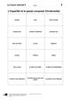<div class="loader"></div></div><input class="toggler" type="checkbox" id="id_69"><div class="content"><h3><label for="id_69">KV 1/4a: L'imparfait et le passé composé (Vorderseite) </label></h3><h4>Passend zu S. 18, Atelier A</h4><table class="files"><tr><td>Öffnen</td><td><a target="_blank" href="content/media/kv/wd01_563015_kv_l1_04a.pdf" data-file-type="application/pdf"> pdf </a></td><td><a target="_blank" href="content/media/kv/wd01_563015_kv_l1_kv4a.docx" data-file-type="application/vnd.openxmlformats-officedocument.wordprocessingml.document"> docx </a></td></tr><tr><td>Speichern unter</td><td class="save-link"><a target="_blank" href="content/media/kv/wd01_563015_kv_l1_04a.pdf" > pdf </a></td><td class="save-link"><a target="_blank" href="content/media/kv/wd01_563015_kv_l1_kv4a.docx" > docx </a></td></tr></table></div><div class="attached"><div class="material" data-material-id="6004" ><div class="thumb"><div class="loader"></div></div><div class="content"><h3>Le Cours intensif 2 </h3><h4>Allgemeine Ausgabe 3. Fremdsprache ab 2016</h4><div class="richtext"><b>Beschreibung:</b> Lehrerbuch mit Multimedia-CD (2. Lernjahr)<br><b>Produktnummer:</b> 978-3-12-563015-4</div><a target="_blank" class="single-link" href="https://www.klett.de/produkt/isbn/978-3-12-563015-4">Link zum Webshop</a></div></div></div></div></li><li><div class="material" data-material-id="1448" ><div class="thumb">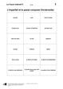<div class="loader"></div></div><input class="toggler" type="checkbox" id="id_70"><div class="content"><h3><label for="id_70">KV 1/4a: L'imparfait et le passé composé (Vorderseite) </label></h3><h4>Lösungen</h4><table class="files"><tr><td>Öffnen</td><td><a target="_blank" href="content/media/kv/wd01_563015_kv_l1_loes_04a.pdf" data-file-type="application/pdf"> pdf </a></td><td><a target="_blank" href="content/media/kv/wd01_563015_kv_l1_loes_kv4a.docx" data-file-type="application/vnd.openxmlformats-officedocument.wordprocessingml.document"> docx </a></td></tr><tr><td>Speichern unter</td><td class="save-link"><a target="_blank" href="content/media/kv/wd01_563015_kv_l1_loes_04a.pdf" > pdf </a></td><td class="save-link"><a target="_blank" href="content/media/kv/wd01_563015_kv_l1_loes_kv4a.docx" > docx </a></td></tr></table></div><div class="attached"><div class="material" data-material-id="6004" ><div class="thumb"><div class="loader"></div></div><div class="content"><h3>Le Cours intensif 2 </h3><h4>Allgemeine Ausgabe 3. Fremdsprache ab 2016</h4><div class="richtext"><b>Beschreibung:</b> Lehrerbuch mit Multimedia-CD (2. Lernjahr)<br><b>Produktnummer:</b> 978-3-12-563015-4</div><a target="_blank" class="single-link" href="https://www.klett.de/produkt/isbn/978-3-12-563015-4">Link zum Webshop</a></div></div></div></div></li><li><div class="material" data-material-id="1438" ><div class="thumb"><div class="loader"></div></div><input class="toggler" type="checkbox" id="id_71"><div class="content"><h3><label for="id_71">KV 1/4b: L'imparfait et le passé composé (Rückseite) </label></h3><h4>Passend zu S. 18, Atelier A</h4><table class="files"><tr><td>Öffnen</td><td><a target="_blank" href="content/media/kv/wd01_563015_kv_l1_04b.pdf" data-file-type="application/pdf"> pdf </a></td><td><a target="_blank" href="content/media/kv/wd01_563015_kv_l1_kv4b.docx" data-file-type="application/vnd.openxmlformats-officedocument.wordprocessingml.document"> docx </a></td></tr><tr><td>Speichern unter</td><td class="save-link"><a target="_blank" href="content/media/kv/wd01_563015_kv_l1_04b.pdf" > pdf </a></td><td class="save-link"><a target="_blank" href="content/media/kv/wd01_563015_kv_l1_kv4b.docx" > docx </a></td></tr></table></div><div class="attached"><div class="material" data-material-id="6004" ><div class="thumb"><div class="loader"></div></div><div class="content"><h3>Le Cours intensif 2 </h3><h4>Allgemeine Ausgabe 3. Fremdsprache ab 2016</h4><div class="richtext"><b>Beschreibung:</b> Lehrerbuch mit Multimedia-CD (2. Lernjahr)<br><b>Produktnummer:</b> 978-3-12-563015-4</div><a target="_blank" class="single-link" href="https://www.klett.de/produkt/isbn/978-3-12-563015-4">Link zum Webshop</a></div></div></div></div></li><li><div class="material" data-material-id="1449" ><div class="thumb">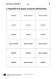<div class="loader"></div></div><input class="toggler" type="checkbox" id="id_72"><div class="content"><h3><label for="id_72">KV 1/4b: L'imparfait et le passé composé (Rückseite) </label></h3><h4>Lösungen</h4><table class="files"><tr><td>Öffnen</td><td><a target="_blank" href="content/media/kv/wd01_563015_kv_l1_loes_04b.pdf" data-file-type="application/pdf"> pdf </a></td><td><a target="_blank" href="content/media/kv/wd01_563015_kv_l1_loes_kv4b.docx" data-file-type="application/vnd.openxmlformats-officedocument.wordprocessingml.document"> docx </a></td></tr><tr><td>Speichern unter</td><td class="save-link"><a target="_blank" href="content/media/kv/wd01_563015_kv_l1_loes_04b.pdf" > pdf </a></td><td class="save-link"><a target="_blank" href="content/media/kv/wd01_563015_kv_l1_loes_kv4b.docx" > docx </a></td></tr></table></div><div class="attached"><div class="material" data-material-id="6004" ><div class="thumb"><div class="loader"></div></div><div class="content"><h3>Le Cours intensif 2 </h3><h4>Allgemeine Ausgabe 3. Fremdsprache ab 2016</h4><div class="richtext"><b>Beschreibung:</b> Lehrerbuch mit Multimedia-CD (2. Lernjahr)<br><b>Produktnummer:</b> 978-3-12-563015-4</div><a target="_blank" class="single-link" href="https://www.klett.de/produkt/isbn/978-3-12-563015-4">Link zum Webshop</a></div></div></div></div></li></ul></div></div></div></div></div><div class="page " data-title="19" data-pos="21"><div class="content"><div class="rough-image" style="background: url('content/pages/thumbs_0.png') -15360px 0 no-repeat; background-size: auto 100% !important;"></div><div class="pagr-thumb" style="background: url('content/pages/thumbs_0.png') -1920px 0 no-repeat;"></div><div class="image-layers"><div><div style="background-image: url('content/pages/page_20/Scale1.png')"></div></div><div><div style="background-image: url('content/pages/page_20/Scale2.png')"></div></div><div><div style="background-image: url('content/pages/page_20/Scale4.png')"></div></div></div><section class="searchable"><p class="text">jour une histoire d’amour franco-allemande avant la lecture lisez le titre du texte et faites des hypothèses votre avis de quoi est-ce que le texte va parler presque tout le monde était déjà dans l’autocar pour le fort de schoenenbourg mais on attendait encore deux élèves qui manquaient pour une fois monsieur verney qui d’habitude était assez cool s’est énervé verney cléa et solenn se sont levées j’espère ce moment les filles sont arrivées et les derniers élèves se sont dépêchés de monter dans le car pendant le trajet les profs ont proposé un jeu sur les mots alsaciens et toute la classe s’est bien amusée mme lemoine ce matin j’ai utilisé un foehn qu’est-ce que c’est les élèves qui faisaient de l’allemand ont tout de suite trouvé un sèche-cheveux madame une heure plus tard l’autocar s’est arrêté près de l’entrée du fort de schoenenburg où un guide attendait la classe le guide d’abord parlé du fort qui faisait partie de la ligne maginot c’était la défense de la france pendant la seconde guerre mondiale puis les élèves sont descendus dans les tunnels et là la réalité était bien différente de leurs livres d’histoire en cours quand on lit qu’il trois kilomètres de tunnels mètres sous terre on se dit trois kilomètres c’est rien et ce n’est pas profond mètres mais pendant que les élèves marchaient dans les tunnels ils pensaient aux soldats il faisait très froid et on ne voyait pas le jour habiter sous terre pendant des semaines… ça devait être horrible quand les élèves sont sortis du fort ils ont vu marco qui faisait un selfie avec un vieux monsieur sur le parking ils se sont regardés il une demi-heure marco était encore dans le tunnel avec eux et qui était cet homme ce moment l’homme est monté dans sa voiture et il est parti les profs n’étaient pas contents verney marco tu ne peux pas partir seul comme ça l1/9 parler entrée atelier atelier bilan dix-neuf</p><link type="image/svg+xml" href="content/pages/page_20/searchwords.svg"></section><div class="draw-layer"><svg xmlns="http://www.w3.org/2000/svg" width="768" height="1024"></svg></div><div class="note-icon-layer"></div><div class="annotation-layers"><div class="layer Eigene-Materialien" data-type="materials" data-layer-id="bar1"><div class="page-wide-materials"><ul class="materials"></ul></div></div><div class="layer Auszeichnung1" data-type="vector" data-layer-id="layer16"><a class="rect" style="position: absolute;z-index:1; left: 19.4%; top: 20.7%; width: 7.81%; height: 3.51%"></a><a class="rect" style="position: absolute;z-index:1; left: 31.9%; top: 20.7%; width: 3.77%; height: 3.51%"></a><a class="rect" style="position: absolute;z-index:1; left: 47.13%; top: 23.04%; width: 5.07%; height: 3.51%"></a><a class="rect" style="position: absolute;z-index:1; left: 60.41%; top: 25.58%; width: 15.49%; height: 3.51%"></a><a class="rect" style="position: absolute;z-index:1; left: 19.92%; top: 35.25%; width: 11.06%; height: 3.51%"></a><a class="rect" style="position: absolute;z-index:1; left: 41.14%; top: 38.96%; width: 8.85%; height: 2.34%"></a><a class="rect" style="position: absolute;z-index:1; left: 67.57%; top: 39.45%; width: 12.1%; height: 3.51%"></a><a class="rect" style="position: absolute;z-index:1; left: 36.71%; top: 40.91%; width: 5.98%; height: 3.51%"></a><a class="rect" style="position: absolute;z-index:1; left: 61.45%; top: 42.96%; width: 19.79%; height: 1.56%"></a><a class="rect" style="position: absolute;z-index:1; left: 45.96%; top: 42.57%; width: 5.98%; height: 3.51%"></a><a class="rect" style="position: absolute;z-index:1; left: 58.46%; top: 42.57%; width: 4.94%; height: 3.51%"></a><a class="rect" style="position: absolute;z-index:1; left: 71.35%; top: 42.57%; width: 7.55%; height: 3.51%"></a><a class="rect" style="position: absolute;z-index:1; left: 61.06%; top: 44.23%; width: 8.33%; height: 3.51%"></a><a class="rect" style="position: absolute;z-index:1; left: 19.92%; top: 45.89%; width: 5.2%; height: 3.51%"></a><a class="rect" style="position: absolute;z-index:1; left: 76.17%; top: 45.8%; width: 6.25%; height: 3.51%"></a><a class="rect" style="position: absolute;z-index:1; left: 55.07%; top: 49.21%; width: 4.94%; height: 3.51%"></a><a class="rect" style="position: absolute;z-index:1; left: 39.58%; top: 50.78%; width: 6.11%; height: 3.51%"></a><a class="rect" style="position: absolute;z-index:1; left: 18.61%; top: 78.51%; width: 12.5%; height: 3.51%"></a><a class="rect" style="position: absolute;z-index:1; left: 38.93%; top: 80.17%; width: 3.9%; height: 3.51%"></a><a class="rect" style="position: absolute;z-index:1; left: 45.57%; top: 89.06%; width: 3.12%; height: 3.51%"></a><a class="rect" style="position: absolute;z-index:1; left: 45.44%; top: 8.98%; width: 8.2%; height: 3.51%"></a><a class="rect" style="position: absolute;z-index:1; left: 25.52%; top: 45.89%; width: 7.55%; height: 3.51%"></a><div class="page-wide-materials"><ul class="materials"></ul></div></div><div class="layer Auszeichnung3" data-type="vector" data-layer-id="layer17"><a class="rect" style="position: absolute;z-index:1; left: 44.92%; top: 20.6%; width: 12.23%; height: 1.95%"></a><a class="rect" style="position: absolute;z-index:1; left: 16.01%; top: 22.26%; width: 2.99%; height: 1.95%"></a><a class="rect" style="position: absolute;z-index:1; left: 27.73%; top: 22.26%; width: 3.38%; height: 1.95%"></a><a class="rect" style="position: absolute;z-index:1; left: 39.97%; top: 22.46%; width: 9.5%; height: 1.95%"></a><a class="rect" style="position: absolute;z-index:1; left: 34.63%; top: 24.7%; width: 10.67%; height: 1.95%"></a><a class="rect" style="position: absolute;z-index:1; left: 60.54%; top: 27.14%; width: 13.15%; height: 1.95%"></a><a class="rect" style="position: absolute;z-index:1; left: 23.82%; top: 35.35%; width: 9.89%; height: 1.95%"></a><a class="rect" style="position: absolute;z-index:1; left: 41.27%; top: 39.35%; width: 8.85%; height: 1.95%"></a><a class="rect" style="position: absolute;z-index:1; left: 15.75%; top: 41.01%; width: 2.47%; height: 1.95%"></a><a class="rect" style="position: absolute;z-index:1; left: 25.65%; top: 41.01%; width: 7.16%; height: 1.95%"></a><a class="rect" style="position: absolute;z-index:1; left: 67.57%; top: 41.01%; width: 4.94%; height: 1.95%"></a><a class="rect" style="position: absolute;z-index:1; left: 30.07%; top: 49.31%; width: 10.15%; height: 1.85%"></a><a class="rect" style="position: absolute;z-index:1; left: 47.78%; top: 49.41%; width: 9.11%; height: 1.75%"></a><a class="rect" style="position: absolute;z-index:1; left: 72.52%; top: 49.41%; width: 7.81%; height: 1.75%"></a><a class="rect" style="position: absolute;z-index:1; left: 26.82%; top: 50.68%; width: 4.94%; height: 2.05%"></a><a class="rect" style="position: absolute;z-index:1; left: 46.74%; top: 50.68%; width: 4.81%; height: 2.05%"></a><a class="rect" style="position: absolute;z-index:1; left: 30.59%; top: 52.34%; width: 4.94%; height: 2.05%"></a><a class="rect" style="position: absolute;z-index:1; left: 31.11%; top: 78.41%; width: 8.2%; height: 2.05%"></a><a class="rect" style="position: absolute;z-index:1; left: 47.78%; top: 78.41%; width: 5.46%; height: 2.05%"></a><a class="rect" style="position: absolute;z-index:1; left: 18.75%; top: 79.98%; width: 5.07%; height: 2.05%"></a><a class="rect" style="position: absolute;z-index:1; left: 24.86%; top: 81.93%; width: 12.89%; height: 1.85%"></a><a class="rect" style="position: absolute;z-index:1; left: 21.09%; top: 83.3%; width: 3.9%; height: 2.05%"></a><a class="rect" style="position: absolute;z-index:1; left: 15.88%; top: 84.96%; width: 4.03%; height: 2.05%"></a><a class="rect" style="position: absolute;z-index:1; left: 34.63%; top: 86.32%; width: 7.94%; height: 2.05%"></a><a class="rect" style="position: absolute;z-index:1; left: 15.75%; top: 88.18%; width: 6.9%; height: 2.05%"></a><a class="rect" style="position: absolute;z-index:1; left: 32.16%; top: 88.37%; width: 5.46%; height: 2.05%"></a><a class="rect" style="position: absolute;z-index:1; left: 29.03%; top: 30.37%; width: 13.8%; height: 2.05%"></a><div class="page-wide-materials"><ul class="materials"></ul></div></div><div class="layer Loesungen" data-type="anchors" data-layer-id="layer15"><div class="tooltip" data-placement=""><div class="tooltip-top"><div class="tooltip-content"><p>Lösungen</p></div></div></div><div class="anchor Text-Bild-Info-Inhalt" style="left: 3.12%; top: 19.33%;" ><div class="anchor-materials" data-layer="layer15"><ul class="materials"><li><div class="material" data-material-id="4019" ><div class="richtext"><p><i>Lösungsmöglichkeit: </i><br />Le texte va parler de deux personnes : Marco rencontre peut-être une fille allemande et c’est le début d’une histoire d’amour entre eux.</p><a class="print">Drucken</a></div></div></li></ul></div></div><div class="page-wide-materials"><ul class="materials"></ul></div></div><div class="layer Multimedia always-visible" data-type="media" data-layer-id="layer5"><div class="tooltip" data-placement=""><div class="tooltip-top"><div class="tooltip-content"><p class="tooltip-title">CD 1, Track 9: Jour 2 : une histoire d’amour franco-allemande</p><p class="tooltip-subtitle"></p></div></div></div><div class="anchor Medium-Sprache" style="left: 9.63%; top: 14.74%;" ><div class="anchor-materials" data-layer="layer5"><ul class="materials"><li><div class="material" data-material-id="1010" ><div class="content"><h3>CD 1, Track 9: Jour 2 : une histoire d’amour franco-allemande (mp3)</h3><ul class="files"><li class=""><a onclick="" target="_blank" href="content/media/audios/lcd1/lcd1_009.mp3" data-file-type="audio/mpeg">Öffnen</a></li></ul></div></div></li></ul></div></div><div class="page-wide-materials"><ul class="materials"></ul></div></div><div class="layer Nur-Materialien" data-type="materials" data-layer-id="bar20"><div class="page-wide-materials"><ul class="materials"><li><div class="material" data-material-id="1112" ><div class="thumb"><div class="loader"></div></div><input class="toggler" type="checkbox" id="id_73"><div class="content"><h3><label for="id_73">CD 1, Track 9: Jour 2 : une histoire d’amour franco-allemande (mp3)</label></h3><h4>Audio zu S. 19, Nr. 1</h4><ul class="files"><li class=""><a onclick="" target="_blank" href="content/media/audios/lcd1/lcd1_009.mp3" data-file-type="audio/mpeg">Öffnen</a></li><li class="save-link"><a onclick="" target="_blank" href="content/media/audios/lcd1/lcd1_009.mp3" >Speichern unter</a></li></ul></div><div class="attached"><div class="material" data-material-id="6003" ><div class="thumb"><div class="loader"></div></div><div class="content"><h3>Le Cours intensif 2 </h3><h4>Allgemeine Ausgabe 3. Fremdsprache ab 2016</h4><div class="richtext"><b>Beschreibung:</b> Cahier d'activités mit MP3-CD und Übungssoftware (2. Lernjahr)<br><b>Produktnummer:</b> 978-3-12-563011-6</div><a target="_blank" class="single-link" href="https://www.klett.de/produkt/isbn/978-3-12-563011-6">Link zum Webshop</a></div></div></div></div></li></ul></div></div><div class="layer Nur-Materialien" data-type="materials" data-layer-id="bar22"><div class="page-wide-materials"><ul class="materials"><li><div class="material" data-material-id="1400" ><div class="thumb">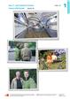<div class="loader"></div></div><input class="toggler" type="checkbox" id="id_74"><div class="content"><h3><label for="id_74">Folie 1/3 (pdf)</label></h3><h4>Passend zu S. 19–20</h4><ul class="files"><li class=""><a onclick="" target="_blank" href="content/media/fundus/563015_folien_l1_1-3.pdf" data-file-type="application/pdf">Öffnen</a></li><li class="save-link"><a onclick="" target="_blank" href="content/media/fundus/563015_folien_l1_1-3.pdf" >Speichern unter</a></li></ul></div><div class="attached"><div class="material" data-material-id="6004" ><div class="thumb"><div class="loader"></div></div><div class="content"><h3>Le Cours intensif 2 </h3><h4>Allgemeine Ausgabe 3. Fremdsprache ab 2016</h4><div class="richtext"><b>Beschreibung:</b> Lehrerbuch mit Multimedia-CD (2. Lernjahr)<br><b>Produktnummer:</b> 978-3-12-563015-4</div><a target="_blank" class="single-link" href="https://www.klett.de/produkt/isbn/978-3-12-563015-4">Link zum Webshop</a></div></div></div></div></li><li><div class="material" data-material-id="1261" ><div class="thumb"><div class="loader"></div></div><input class="toggler" type="checkbox" id="id_75"><div class="content"><h3><label for="id_75">Jour 2: une histoire d’amour franco-allemande (docx)</label></h3><h4>Editierbarer Lektionstext</h4><ul class="files"><li class=""><a onclick="" target="_blank" href="content/media/l-texte/st_l1_04.docx" data-file-type="application/vnd.openxmlformats-officedocument.wordprocessingml.document">Öffnen</a></li><li class="save-link"><a onclick="" target="_blank" href="content/media/l-texte/st_l1_04.docx" >Speichern unter</a></li></ul></div><div class="attached"><div class="material" data-material-id="6005" ><div class="thumb"><div class="loader"></div></div><div class="content"><h3>Le Cours intensif 2 </h3><h4>Allgemeine Ausgabe 3. Fremdsprache ab 2016</h4><div class="richtext"><b>Beschreibung:</b> Schülerbuch, Softcover (2. Lernjahr)<br><b>Produktnummer:</b> 978-3-12-563010-9</div><a target="_blank" class="single-link" href="https://www.klett.de/produkt/isbn/978-3-12-563010-9">Link zum Webshop</a></div></div></div></div></li><li><div class="material" data-material-id="1247" ><div class="thumb"><div class="loader"></div></div><input class="toggler" type="checkbox" id="id_76"><div class="content"><h3><label for="id_76">Lektionsbegleitendes Vokabular (pdf)</label></h3><h4>Ausdruckbare Liste</h4><ul class="files"><li class=""><a onclick="" target="_blank" href="content/media/fundus/fu_bev.pdf" data-file-type="application/pdf">Öffnen</a></li><li class="save-link"><a onclick="" target="_blank" href="content/media/fundus/fu_bev.pdf" >Speichern unter</a></li></ul></div><div class="attached"><div class="material" data-material-id="6005" ><div class="thumb"><div class="loader"></div></div><div class="content"><h3>Le Cours intensif 2 </h3><h4>Allgemeine Ausgabe 3. Fremdsprache ab 2016</h4><div class="richtext"><b>Beschreibung:</b> Schülerbuch, Softcover (2. Lernjahr)<br><b>Produktnummer:</b> 978-3-12-563010-9</div><a target="_blank" class="single-link" href="https://www.klett.de/produkt/isbn/978-3-12-563010-9">Link zum Webshop</a></div></div></div></div></li><li><div class="material" data-material-id="1248" ><div class="thumb"><div class="loader"></div></div><input class="toggler" type="checkbox" id="id_77"><div class="content"><h3><label for="id_77">Alphabetische Wortliste (pdf)</label></h3><h4>Ausdruckbare Liste</h4><ul class="files"><li class=""><a onclick="" target="_blank" href="content/media/fundus/fu_awl.pdf" data-file-type="application/pdf">Öffnen</a></li><li class="save-link"><a onclick="" target="_blank" href="content/media/fundus/fu_awl.pdf" >Speichern unter</a></li></ul></div><div class="attached"><div class="material" data-material-id="6005" ><div class="thumb"><div class="loader"></div></div><div class="content"><h3>Le Cours intensif 2 </h3><h4>Allgemeine Ausgabe 3. Fremdsprache ab 2016</h4><div class="richtext"><b>Beschreibung:</b> Schülerbuch, Softcover (2. Lernjahr)<br><b>Produktnummer:</b> 978-3-12-563010-9</div><a target="_blank" class="single-link" href="https://www.klett.de/produkt/isbn/978-3-12-563010-9">Link zum Webshop</a></div></div></div></div></li><li><div class="material" data-material-id="1249" ><div class="thumb"><div class="loader"></div></div><input class="toggler" type="checkbox" id="id_78"><div class="content"><h3><label for="id_78">Lektionsbegleitende Grammatik (pdf)</label></h3><ul class="files"><li class=""><a onclick="" target="_blank" href="content/media/gram/fu_l1_01.pdf" data-file-type="application/pdf">Öffnen</a></li><li class="save-link"><a onclick="" target="_blank" href="content/media/gram/fu_l1_01.pdf" >Speichern unter</a></li></ul></div><div class="attached"><div class="material" data-material-id="6005" ><div class="thumb"><div class="loader"></div></div><div class="content"><h3>Le Cours intensif 2 </h3><h4>Allgemeine Ausgabe 3. Fremdsprache ab 2016</h4><div class="richtext"><b>Beschreibung:</b> Schülerbuch, Softcover (2. Lernjahr)<br><b>Produktnummer:</b> 978-3-12-563010-9</div><a target="_blank" class="single-link" href="https://www.klett.de/produkt/isbn/978-3-12-563010-9">Link zum Webshop</a></div></div></div></div></li></ul></div></div><div class="layer Nur-Materialien" data-type="materials" data-layer-id="bar18"><div class="page-wide-materials"><ul class="materials"><li><div class="material" data-material-id="1367" ><div class="thumb"><div class="loader"></div></div><input class="toggler" type="checkbox" id="id_79"><div class="content"><h3><label for="id_79">Blätterbares Lehrerbuch (html)</label></h3><h4>S. 21</h4><div class="richtext"><p>Das Lehrerbuch bietet viele methodische Hinweise zu jeder Leçon, Kopiervorlagen u.v.m. </p></div><ul class="files"><li class=""><a onclick="" target="_blank" href="content/media/ep-1405/app.html?page=23" data-file-type="tgd-epaper" data-dimension="1200-800">Öffnen</a></li></ul></div><div class="attached"><div class="material" data-material-id="6004" ><div class="thumb"><div class="loader"></div></div><div class="content"><h3>Le Cours intensif 2 </h3><h4>Allgemeine Ausgabe 3. Fremdsprache ab 2016</h4><div class="richtext"><b>Beschreibung:</b> Lehrerbuch mit Multimedia-CD (2. Lernjahr)<br><b>Produktnummer:</b> 978-3-12-563015-4</div><a target="_blank" class="single-link" href="https://www.klett.de/produkt/isbn/978-3-12-563015-4">Link zum Webshop</a></div></div></div></div></li></ul></div></div><div class="layer Nur-Materialien" data-type="materials" data-layer-id="bar21"><div class="page-wide-materials"><ul class="materials"><li><div class="material" data-material-id="1439" ><div class="thumb">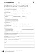<div class="loader"></div></div><input class="toggler" type="checkbox" id="id_80"><div class="content"><h3><label for="id_80">KV 1/5: Une histoire d'amour franco-allemande </label></h3><h4>Passend zu S. 19–20, Atelier B</h4><table class="files"><tr><td>Öffnen</td><td><a target="_blank" href="content/media/kv/wd01_563015_kv_l1_05.pdf" data-file-type="application/pdf"> pdf </a></td><td><a target="_blank" href="content/media/kv/wd01_563015_kv_l1_kv5.docx" data-file-type="application/vnd.openxmlformats-officedocument.wordprocessingml.document"> docx </a></td></tr><tr><td>Speichern unter</td><td class="save-link"><a target="_blank" href="content/media/kv/wd01_563015_kv_l1_05.pdf" > pdf </a></td><td class="save-link"><a target="_blank" href="content/media/kv/wd01_563015_kv_l1_kv5.docx" > docx </a></td></tr></table></div><div class="attached"><div class="material" data-material-id="6004" ><div class="thumb"><div class="loader"></div></div><div class="content"><h3>Le Cours intensif 2 </h3><h4>Allgemeine Ausgabe 3. Fremdsprache ab 2016</h4><div class="richtext"><b>Beschreibung:</b> Lehrerbuch mit Multimedia-CD (2. Lernjahr)<br><b>Produktnummer:</b> 978-3-12-563015-4</div><a target="_blank" class="single-link" href="https://www.klett.de/produkt/isbn/978-3-12-563015-4">Link zum Webshop</a></div></div></div></div></li><li><div class="material" data-material-id="1450" ><div class="thumb">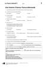<div class="loader"></div></div><input class="toggler" type="checkbox" id="id_81"><div class="content"><h3><label for="id_81">KV 1/5: Une histoire d'amour franco-allemande </label></h3><h4>Lösungen</h4><table class="files"><tr><td>Öffnen</td><td><a target="_blank" href="content/media/kv/wd01_563015_kv_l1_loes_05.pdf" data-file-type="application/pdf"> pdf </a></td><td><a target="_blank" href="content/media/kv/wd01_563015_kv_l1_loes_kv5.docx" data-file-type="application/vnd.openxmlformats-officedocument.wordprocessingml.document"> docx </a></td></tr><tr><td>Speichern unter</td><td class="save-link"><a target="_blank" href="content/media/kv/wd01_563015_kv_l1_loes_05.pdf" > pdf </a></td><td class="save-link"><a target="_blank" href="content/media/kv/wd01_563015_kv_l1_loes_kv5.docx" > docx </a></td></tr></table></div><div class="attached"><div class="material" data-material-id="6004" ><div class="thumb"><div class="loader"></div></div><div class="content"><h3>Le Cours intensif 2 </h3><h4>Allgemeine Ausgabe 3. Fremdsprache ab 2016</h4><div class="richtext"><b>Beschreibung:</b> Lehrerbuch mit Multimedia-CD (2. Lernjahr)<br><b>Produktnummer:</b> 978-3-12-563015-4</div><a target="_blank" class="single-link" href="https://www.klett.de/produkt/isbn/978-3-12-563015-4">Link zum Webshop</a></div></div></div></div></li></ul></div></div><div class="layer Nur-Materialien" data-type="materials" data-layer-id="bar19"><div class="page-wide-materials"><ul class="materials"><li><div class="material" data-material-id="1558" ><div class="thumb"><div class="loader"></div></div><input class="toggler" type="checkbox" id="id_82"><div class="content"><h3><label for="id_82">Cahier d'activités (html)</label></h3><h4>S. 8</h4><ul class="files"><li class=""><a onclick="" target="_blank" href="content/media/epaper/cda/app.html?page=10" data-file-type="tgd-epaper" data-dimension="1200-800">Öffnen</a></li></ul></div><div class="attached"><div class="material" data-material-id="6006" ><div class="thumb"><div class="loader"></div></div><div class="content"><h3>Le Cours intensif 2 </h3><h4>Allgemeine Ausgabe 3. Fremdsprache ab 2016</h4><div class="richtext"><b>Beschreibung:</b> Cahier d'activités Lehrerausgabe mit Lösungen, MP3-CD und Übungssoftware (2. Lernjahr)<br><b>Produktnummer:</b> 978-3-12-563019-2</div><a target="_blank" class="single-link" href="https://www.klett.de/produkt/isbn/978-3-12-563019-2">Link zum Webshop</a></div></div></div></div></li></ul></div></div></div></div></div><div class="page " data-title="20" data-pos="22"><div class="content"><div class="rough-image" style="background: url('content/pages/thumbs_0.png') -16128px 0 no-repeat; background-size: auto 100% !important;"></div><div class="pagr-thumb" style="background: url('content/pages/thumbs_0.png') -2016px 0 no-repeat;"></div><div class="image-layers"><div><div style="background-image: url('content/pages/page_21/Scale1.png')"></div></div><div><div style="background-image: url('content/pages/page_21/Scale2.png')"></div></div><div><div style="background-image: url('content/pages/page_21/Scale4.png')"></div></div></div><section class="searchable"><p class="text">dans l’autocar marco sorti une vieille photo de son sac dessus on voyait deux jeunes de ans environ pendant que les élèves se passaient la photo marco commencé raconter son histoire marco la fi lle c’est ma grand-mère mathilde et le garçon c’est klaus son copain quand elle avait ans j’ai trouvé la photo dans un vieil album clara elle était très jolie ta grand-mère lucas attends l’homme sur le parking c’était klaus marco oui il est allemand ma grand-mère et lui se sont rencontrés pendant un jumelage entre leurs villes ils se sont revus plusieurs fois puis ils se sont perdus de vue mais mamie se souvient encore de lui et elle dit j’aimerais bien avoir des nouvelles de klaus ma sœur et moi on cherché klaus sur internet et incroyable il habite la frontière tout près d’ici je lui ai envoyé un e-mail et donné rendez-vous ici je vais envoyer ce soir le selfi mamie lucas waouh la surprise pour ta grand-mère mme lemoine c’est très gentil marco une histoire comme ça ce n’est pas courant et moi j’adore pour comprendre le texte vrai ou faux justifi ez vos réponses par une citation du texte monsieur verney s’énerve souvent les élèves ont déjà parlé de la ligne maginot en cours d’histoire marco fait toute la visite du fort marco fait une photo sur le parking klaus et mathilde se sont rencontrés quand ils étaient jeunes ils ne se sont jamais revus mathilde oublié klaus mathilde et klaus ont rendez-vous la frontière résumez chaque paragraphe du texte en phrases en plus ecrivez le message que marco envoie sa grand-mère jeu de mots trouvez dans le texte les synonymes des mots et expressions suivants aller vite ne plus se voir c’est l’horreur mamie complétez les explications quand on va d’un pays l’autre on traverse… la ligne maginot était pour la france… quand ce n’est pas la même chose c’est… une personne qui n’a pas de famille et pas d’amis est… lire nm32hj stratégies parler écrire salut mamie… entrée atelier atelier bilan vingt</p><link type="image/svg+xml" href="content/pages/page_21/searchwords.svg"></section><div class="draw-layer"><svg xmlns="http://www.w3.org/2000/svg" width="768" height="1024"></svg></div><div class="note-icon-layer"></div><div class="annotation-layers"><div class="layer Eigene-Materialien" data-type="materials" data-layer-id="bar1"><div class="page-wide-materials"><ul class="materials"></ul></div></div><div class="layer Auszeichnung1" data-type="vector" data-layer-id="layer16"><a class="rect" style="position: absolute;z-index:1; left: 16.01%; top: 12.4%; width: 6.11%; height: 3.51%"></a><a class="rect" style="position: absolute;z-index:1; left: 40.36%; top: 12.5%; width: 9.63%; height: 3.51%"></a><a class="rect" style="position: absolute;z-index:1; left: 34.11%; top: 16.6%; width: 8.85%; height: 3.51%"></a><a class="rect" style="position: absolute;z-index:1; left: 17.44%; top: 26.17%; width: 14.32%; height: 3.51%"></a><a class="rect" style="position: absolute;z-index:1; left: 41.4%; top: 26.36%; width: 7.16%; height: 3.51%"></a><a class="rect" style="position: absolute;z-index:1; left: 25.65%; top: 28.02%; width: 4.16%; height: 3.51%"></a><a class="rect" style="position: absolute;z-index:1; left: 47.13%; top: 28.02%; width: 16.53%; height: 3.51%"></a><a class="rect" style="position: absolute;z-index:1; left: 17.44%; top: 29.68%; width: 8.72%; height: 3.51%"></a><a class="rect" style="position: absolute;z-index:1; left: 67.31%; top: 29.58%; width: 7.42%; height: 3.51%"></a><a class="rect" style="position: absolute;z-index:1; left: 68.48%; top: 32.91%; width: 4.94%; height: 3.51%"></a><a class="rect" style="position: absolute;z-index:1; left: 17.57%; top: 34.57%; width: 9.37%; height: 3.51%"></a><a class="rect" style="position: absolute;z-index:1; left: 33.72%; top: 37.89%; width: 4.55%; height: 3.51%"></a><a class="rect" style="position: absolute;z-index:1; left: 17.7%; top: 39.35%; width: 5.98%; height: 3.51%"></a><div class="page-wide-materials"><ul class="materials"></ul></div></div><div class="layer Auszeichnung3" data-type="vector" data-layer-id="layer17"><a class="rect" style="position: absolute;z-index:1; left: 34.76%; top: 10.54%; width: 5.2%; height: 2.05%"></a><a class="rect" style="position: absolute;z-index:1; left: 30.85%; top: 12.69%; width: 5.2%; height: 1.75%"></a><a class="rect" style="position: absolute;z-index:1; left: 22.78%; top: 14.25%; width: 10.02%; height: 1.75%"></a><a class="rect" style="position: absolute;z-index:1; left: 20.96%; top: 15.91%; width: 10.28%; height: 1.75%"></a><a class="rect" style="position: absolute;z-index:1; left: 17.44%; top: 27.92%; width: 14.45%; height: 1.75%"></a><a class="rect" style="position: absolute;z-index:1; left: 19.79%; top: 29.78%; width: 5.72%; height: 1.75%"></a><a class="rect" style="position: absolute;z-index:1; left: 47.13%; top: 29.88%; width: 11.32%; height: 1.66%"></a><a class="rect" style="position: absolute;z-index:1; left: 17.57%; top: 31.44%; width: 8.72%; height: 1.75%"></a><a class="rect" style="position: absolute;z-index:1; left: 42.05%; top: 31.15%; width: 3.9%; height: 2.05%"></a><a class="rect" style="position: absolute;z-index:1; left: 41.53%; top: 32.81%; width: 8.2%; height: 2.05%"></a><a class="rect" style="position: absolute;z-index:1; left: 51.17%; top: 34.27%; width: 7.29%; height: 2.05%"></a><a class="rect" style="position: absolute;z-index:1; left: 40.49%; top: 13.96%; width: 9.37%; height: 2.05%"></a><div class="page-wide-materials"><ul class="materials"></ul></div></div><div class="layer Loesungen" data-type="anchors" data-layer-id="layer15"><div class="tooltip" data-placement=""><div class="tooltip-top"><div class="tooltip-content"><p>Lösungen</p></div></div></div><div class="anchor Text-Bild-Info-Inhalt" style="left: 2.99%; top: 53.02%;" ><div class="anchor-materials" data-layer="layer15"><ul class="materials"><li><div class="material" data-material-id="4020" ><div class="richtext"><p>a) Faux. « … monsieur Verney, qui d’habitude était assez cool, … » (l. 2)<br />b) Vrai. « … la réalité était bien différente de leurs livres d’histoire. » (l. 12)<br />c) Faux. « …il y a une demi-heure, Marco était encore dans le tunnel avec eux ! » (l. 22–23)<br />d) Vrai. « …Marco qui faisait un selfie avec un vieux monsieur sur le parking. » (l. 18)<br />e) Vrai. « …Klaus, son copain quand elle avait 14 ans. » (l. 33)<br />f) Faux. « Ils se sont revus plusieurs fois… » (l. 39)<br />g) Faux. « …mamie se souvient encore de lui… » (l. 39)<br />h) Faux. « …il habite à la frontière,… » (l. 41)</p><a class="print">Drucken</a></div></div></li></ul></div></div><div class="tooltip" data-placement=""><div class="tooltip-top"><div class="tooltip-content"><p>Lösungen</p></div></div></div><div class="anchor Text-Bild-Info-Inhalt" style="left: 2.99%; top: 68.26%;" ><div class="anchor-materials" data-layer="layer15"><ul class="materials"><li><div class="material" data-material-id="4021" ><div class="richtext"><p>§1 : La classe est dans l’autocar pour le fort de Schoenenbourg. Avec les professeurs, les élèves font un jeu sur les mots alsaciens. <br />§2 : Un guide donne des informations sur le fort à la classe, puis la classe découvre le fort. <br />§3 : Marco fait un selfie avec un vieil homme qui part. Monsieur Verney n’est pas content. <br />§4 : Marco raconte l’histoire de l’homme et de sa grand-mère. Marco a retrouvé cet homme. C’est une belle histoire.</p><a class="print">Drucken</a></div></div></li></ul></div></div><div class="tooltip" data-placement=""><div class="tooltip-top"><div class="tooltip-content"><p>Lösungen</p></div></div></div><div class="anchor Text-Bild-Info-Inhalt" style="left: 2.99%; top: 73.04%;" ><div class="anchor-materials" data-layer="layer15"><ul class="materials"><li><div class="material" data-material-id="4022" ><div class="richtext"><p>Salut mamie, <br />Regarde qui j’ai rencontré aujourd’hui ! Tu sais qui c’est ? C’est une surprise, non ? <br />Je te raconte toute l’histoire quand je suis rentré à Paris. <br />Bisous (aussi de Klaus), Marco</p><a class="print">Drucken</a></div></div></li></ul></div></div><div class="tooltip" data-placement=""><div class="tooltip-top"><div class="tooltip-content"><p>Lösungen</p></div></div></div><div class="anchor Text-Bild-Info-Inhalt" style="left: 2.99%; top: 79.98%;" ><div class="anchor-materials" data-layer="layer15"><ul class="materials"><li><div class="material" data-material-id="4023" ><div class="richtext"><p>a) <br />aller vite = se dépêcher <br />c’est l’horreur = c’est horrible <br />mamie = la grand-mère <br />ne plus se voir = se perdre de vue <br />b) <br />1. une frontière <br />2. une défense <br />3. différent <br />4. seule</p><a class="print">Drucken</a></div></div></li></ul></div></div><div class="page-wide-materials"><ul class="materials"></ul></div></div><div class="layer Differenzierung" data-type="anchors" data-layer-id="layer14"><div class="tooltip" data-placement=""><div class="tooltip-top"><div class="tooltip-content"><p>Differenzierung</p></div></div></div><div class="anchor Text-Bild-Info-Inhalt" style="left: 38.67%; top: 68.16%;" ><div class="anchor-materials" data-layer="layer14"><ul class="materials"><li><div class="material" data-material-id="4319" ><div class="richtext"><p>SB, <i>En plus</i>, S. 136, Nr. 2 bietet leistungsschwächeren Gruppen durch die Vorgabe von Reizwörtern Hilfestellung beim Zusammenfassen der einzelnen Textabschnitte.</p><a class="print">Drucken</a></div></div></li></ul></div></div><div class="tooltip" data-placement=""><div class="tooltip-top"><div class="tooltip-content"><p>Differenzierung</p></div></div></div><div class="anchor Text-Bild-Info-Inhalt" style="left: 78.25%; top: 97.55%;" ><div class="anchor-materials" data-layer="layer14"><ul class="materials"><li><div class="material" data-material-id="4320" ><div class="richtext"><p>Leistungsstarke Gruppen können als HA oder in einer Doppelstunde die Aufgaben auf S. 145 bearbeiten und im Museumsgang der Klasse präsentieren (→ Interkulturelles).</p><a class="print">Drucken</a></div></div></li></ul></div></div><div class="page-wide-materials"><ul class="materials"></ul></div></div><div class="layer Sprungmarke always-visible" data-type="root" data-layer-id="layer0"><a href="http://code.klett.de/nm32hj" target="_blank" class="rect" style="position: absolute;z-index:1; left: 5.07%; top: 47.36%; width: 8.2%; height: 3.51%"></a><a href="?page=138" target="_blank" class="rect" style="position: absolute;z-index:1; left: 41.79%; top: 66.89%; width: 14.32%; height: 2.53%"></a><div class="page-wide-materials"><ul class="materials"></ul></div></div><div class="layer Nur-Materialien" data-type="materials" data-layer-id="bar22"><div class="page-wide-materials"><ul class="materials"><li><div class="material" data-material-id="1400" ><div class="thumb"><div class="loader"></div></div><input class="toggler" type="checkbox" id="id_83"><div class="content"><h3><label for="id_83">Folie 1/3 (pdf)</label></h3><h4>Passend zu S. 19–20</h4><ul class="files"><li class=""><a onclick="" target="_blank" href="content/media/fundus/563015_folien_l1_1-3.pdf" data-file-type="application/pdf">Öffnen</a></li><li class="save-link"><a onclick="" target="_blank" href="content/media/fundus/563015_folien_l1_1-3.pdf" >Speichern unter</a></li></ul></div><div class="attached"><div class="material" data-material-id="6004" ><div class="thumb"><div class="loader"></div></div><div class="content"><h3>Le Cours intensif 2 </h3><h4>Allgemeine Ausgabe 3. Fremdsprache ab 2016</h4><div class="richtext"><b>Beschreibung:</b> Lehrerbuch mit Multimedia-CD (2. Lernjahr)<br><b>Produktnummer:</b> 978-3-12-563015-4</div><a target="_blank" class="single-link" href="https://www.klett.de/produkt/isbn/978-3-12-563015-4">Link zum Webshop</a></div></div></div></div></li><li><div class="material" data-material-id="1247" ><div class="thumb"><div class="loader"></div></div><input class="toggler" type="checkbox" id="id_84"><div class="content"><h3><label for="id_84">Lektionsbegleitendes Vokabular (pdf)</label></h3><h4>Ausdruckbare Liste</h4><ul class="files"><li class=""><a onclick="" target="_blank" href="content/media/fundus/fu_bev.pdf" data-file-type="application/pdf">Öffnen</a></li><li class="save-link"><a onclick="" target="_blank" href="content/media/fundus/fu_bev.pdf" >Speichern unter</a></li></ul></div><div class="attached"><div class="material" data-material-id="6005" ><div class="thumb"><div class="loader"></div></div><div class="content"><h3>Le Cours intensif 2 </h3><h4>Allgemeine Ausgabe 3. Fremdsprache ab 2016</h4><div class="richtext"><b>Beschreibung:</b> Schülerbuch, Softcover (2. Lernjahr)<br><b>Produktnummer:</b> 978-3-12-563010-9</div><a target="_blank" class="single-link" href="https://www.klett.de/produkt/isbn/978-3-12-563010-9">Link zum Webshop</a></div></div></div></div></li><li><div class="material" data-material-id="1248" ><div class="thumb"><div class="loader"></div></div><input class="toggler" type="checkbox" id="id_85"><div class="content"><h3><label for="id_85">Alphabetische Wortliste (pdf)</label></h3><h4>Ausdruckbare Liste</h4><ul class="files"><li class=""><a onclick="" target="_blank" href="content/media/fundus/fu_awl.pdf" data-file-type="application/pdf">Öffnen</a></li><li class="save-link"><a onclick="" target="_blank" href="content/media/fundus/fu_awl.pdf" >Speichern unter</a></li></ul></div><div class="attached"><div class="material" data-material-id="6005" ><div class="thumb"><div class="loader"></div></div><div class="content"><h3>Le Cours intensif 2 </h3><h4>Allgemeine Ausgabe 3. Fremdsprache ab 2016</h4><div class="richtext"><b>Beschreibung:</b> Schülerbuch, Softcover (2. Lernjahr)<br><b>Produktnummer:</b> 978-3-12-563010-9</div><a target="_blank" class="single-link" href="https://www.klett.de/produkt/isbn/978-3-12-563010-9">Link zum Webshop</a></div></div></div></div></li><li><div class="material" data-material-id="1249" ><div class="thumb"><div class="loader"></div></div><input class="toggler" type="checkbox" id="id_86"><div class="content"><h3><label for="id_86">Lektionsbegleitende Grammatik (pdf)</label></h3><ul class="files"><li class=""><a onclick="" target="_blank" href="content/media/gram/fu_l1_01.pdf" data-file-type="application/pdf">Öffnen</a></li><li class="save-link"><a onclick="" target="_blank" href="content/media/gram/fu_l1_01.pdf" >Speichern unter</a></li></ul></div><div class="attached"><div class="material" data-material-id="6005" ><div class="thumb"><div class="loader"></div></div><div class="content"><h3>Le Cours intensif 2 </h3><h4>Allgemeine Ausgabe 3. Fremdsprache ab 2016</h4><div class="richtext"><b>Beschreibung:</b> Schülerbuch, Softcover (2. Lernjahr)<br><b>Produktnummer:</b> 978-3-12-563010-9</div><a target="_blank" class="single-link" href="https://www.klett.de/produkt/isbn/978-3-12-563010-9">Link zum Webshop</a></div></div></div></div></li></ul></div></div><div class="layer Nur-Materialien" data-type="materials" data-layer-id="bar18"><div class="page-wide-materials"><ul class="materials"><li><div class="material" data-material-id="1368" ><div class="thumb"><div class="loader"></div></div><input class="toggler" type="checkbox" id="id_87"><div class="content"><h3><label for="id_87">Blätterbares Lehrerbuch (html)</label></h3><h4>S. 21</h4><div class="richtext"><p>Das Lehrerbuch bietet viele methodische Hinweise zu jeder Leçon, Kopiervorlagen u.v.m. </p></div><ul class="files"><li class=""><a onclick="" target="_blank" href="content/media/ep-1405/app.html?page=23" data-file-type="tgd-epaper" data-dimension="1200-800">Öffnen</a></li></ul></div><div class="attached"><div class="material" data-material-id="6004" ><div class="thumb"><div class="loader"></div></div><div class="content"><h3>Le Cours intensif 2 </h3><h4>Allgemeine Ausgabe 3. Fremdsprache ab 2016</h4><div class="richtext"><b>Beschreibung:</b> Lehrerbuch mit Multimedia-CD (2. Lernjahr)<br><b>Produktnummer:</b> 978-3-12-563015-4</div><a target="_blank" class="single-link" href="https://www.klett.de/produkt/isbn/978-3-12-563015-4">Link zum Webshop</a></div></div></div></div></li></ul></div></div><div class="layer Nur-Materialien" data-type="materials" data-layer-id="bar21"><div class="page-wide-materials"><ul class="materials"><li><div class="material" data-material-id="1439" ><div class="thumb"><div class="loader"></div></div><input class="toggler" type="checkbox" id="id_88"><div class="content"><h3><label for="id_88">KV 1/5: Une histoire d'amour franco-allemande </label></h3><h4>Passend zu S. 19–20, Atelier B</h4><table class="files"><tr><td>Öffnen</td><td><a target="_blank" href="content/media/kv/wd01_563015_kv_l1_05.pdf" data-file-type="application/pdf"> pdf </a></td><td><a target="_blank" href="content/media/kv/wd01_563015_kv_l1_kv5.docx" data-file-type="application/vnd.openxmlformats-officedocument.wordprocessingml.document"> docx </a></td></tr><tr><td>Speichern unter</td><td class="save-link"><a target="_blank" href="content/media/kv/wd01_563015_kv_l1_05.pdf" > pdf </a></td><td class="save-link"><a target="_blank" href="content/media/kv/wd01_563015_kv_l1_kv5.docx" > docx </a></td></tr></table></div><div class="attached"><div class="material" data-material-id="6004" ><div class="thumb"><div class="loader"></div></div><div class="content"><h3>Le Cours intensif 2 </h3><h4>Allgemeine Ausgabe 3. Fremdsprache ab 2016</h4><div class="richtext"><b>Beschreibung:</b> Lehrerbuch mit Multimedia-CD (2. Lernjahr)<br><b>Produktnummer:</b> 978-3-12-563015-4</div><a target="_blank" class="single-link" href="https://www.klett.de/produkt/isbn/978-3-12-563015-4">Link zum Webshop</a></div></div></div></div></li><li><div class="material" data-material-id="1450" ><div class="thumb"><div class="loader"></div></div><input class="toggler" type="checkbox" id="id_89"><div class="content"><h3><label for="id_89">KV 1/5: Une histoire d'amour franco-allemande </label></h3><h4>Lösungen</h4><table class="files"><tr><td>Öffnen</td><td><a target="_blank" href="content/media/kv/wd01_563015_kv_l1_loes_05.pdf" data-file-type="application/pdf"> pdf </a></td><td><a target="_blank" href="content/media/kv/wd01_563015_kv_l1_loes_kv5.docx" data-file-type="application/vnd.openxmlformats-officedocument.wordprocessingml.document"> docx </a></td></tr><tr><td>Speichern unter</td><td class="save-link"><a target="_blank" href="content/media/kv/wd01_563015_kv_l1_loes_05.pdf" > pdf </a></td><td class="save-link"><a target="_blank" href="content/media/kv/wd01_563015_kv_l1_loes_kv5.docx" > docx </a></td></tr></table></div><div class="attached"><div class="material" data-material-id="6004" ><div class="thumb"><div class="loader"></div></div><div class="content"><h3>Le Cours intensif 2 </h3><h4>Allgemeine Ausgabe 3. Fremdsprache ab 2016</h4><div class="richtext"><b>Beschreibung:</b> Lehrerbuch mit Multimedia-CD (2. Lernjahr)<br><b>Produktnummer:</b> 978-3-12-563015-4</div><a target="_blank" class="single-link" href="https://www.klett.de/produkt/isbn/978-3-12-563015-4">Link zum Webshop</a></div></div></div></div></li></ul></div></div></div></div></div><div class="page " data-title="21" data-pos="23"><div class="content"><div class="rough-image" style="background: url('content/pages/thumbs_0.png') -16896px 0 no-repeat; background-size: auto 100% !important;"></div><div class="pagr-thumb" style="background: url('content/pages/thumbs_0.png') -2112px 0 no-repeat;"></div><div class="image-layers"><div><div style="background-image: url('content/pages/page_22/Scale1.png')"></div></div><div><div style="background-image: url('content/pages/page_22/Scale2.png')"></div></div><div><div style="background-image: url('content/pages/page_22/Scale4.png')"></div></div></div><section class="searchable"><p class="text">en allemand vous faites un stage l’offi ce du tourisme de strasbourg où vous aidez les touristes germanophones deutschsprachig l’aide du prospectus et de ce que vous avez appris dans le texte page répondez leurs questions eine österreichische touristin möchte wissen was im fort zu sehen ist eine deutsche familie fragt ob die besichtigung auch mit einem baby möglich ist ein paar möchte wissen ob man für die besichtigung etwas beachten muss die mitglieder eines sportvereins möchten wissen ob sie am samstagvormittag das fort besichtigen können lors de votre visite vous découvrirez toute l’infrastructure et les installations souterraines comme les lieux d’hébergement avec les locaux sanitaires la cuisine l’infi rmerie l’usine de production électrique la galerie principale et son issue de secours secrète informations pratiques parcours intérieur de 2800 mètres mètres sous terre dans l’ambiance et les sonorités de l’époque durée heures température intérieure 13° vêtements chauds recommandés pour les visiteurs individuels du mai au septembre ouvert tous les jours en avril et octobre tous les samedis dimanches et jours fériés horaires d’entrée du lundi au samedi inclus dimanche de et de pour les groupes annoncés visites guidées pour groupes sur demande préalable toute l’année sans restrictions horaires découverte du fort de schoenenbourg vous vous êtes amusés lisez les phrases avec quel auxiliaire hilfsverb est-ce qu’on forme le passé composé des verbes pronominaux regardez aussi les participes qu’est-ce que vous remarquez monsieur verney s’est énervé toute la classe s’est bien amusée les élèves se sont dépêchés cléa et solenn se sont levées complétez l’histoire de klaus et mathilde avec les bonnes formes des verbes pronominaux au passé composé en plus se passer se rencontrer bien s’entendre se débrouiller se revoir se perdre de vue se dépêcher se souvenir s’occuper l’histoire de klaus et mathilde il ans klaus et mathilde pendant un jumelage mathilde avec klaus elle ne parlait pas très bien allemand mais elle les deux jeunes tous les étés pendant trois ans puis ils quand marco entendu cette histoire il de chercher klaus sur internet et lui envoyé un e-mail klaus lu son e-mail et il de mathilde alors marco d’une rencontre avec klaus médiation stratégie entrée atelier atelier bilan vingt-et-un</p><link type="image/svg+xml" href="content/pages/page_22/searchwords.svg"></section><div class="draw-layer"><svg xmlns="http://www.w3.org/2000/svg" width="768" height="1024"></svg></div><div class="note-icon-layer"></div><div class="annotation-layers"><div class="layer Eigene-Materialien" data-type="materials" data-layer-id="bar1"><div class="page-wide-materials"><ul class="materials"></ul></div></div><div class="layer Loesungen" data-type="anchors" data-layer-id="layer15"><div class="tooltip" data-placement=""><div class="tooltip-top"><div class="tooltip-content"><p>Lösungen</p></div></div></div><div class="anchor Text-Bild-Info-Inhalt" style="left: 3.12%; top: 18.75%;" ><div class="anchor-materials" data-layer="layer15"><ul class="materials"><li><div class="material" data-material-id="4024" ><div class="richtext"><p>a) Man kann die unterirdische Infrastruktur und die Einrichtung besichtigen: z. B.: Schlafstätten, Sanitäranlagen, Krankenstation, Küche <br />b) Ja. Ein Besuch mit Kinderwagen ist möglich. (s. Icon Kinderwagen) <br />c) Die Temperatur beträgt nur 13 Grad, daher wird warme Kleidung empfohlen. <br />d) Normalerweise ist das Fort am Samstag nur von 14 bis 16 Uhr geöffnet. Wenn man sich aber als Gruppe vorher anmeldet, ist eine Besichtigung immer möglich.</p><a class="print">Drucken</a></div></div></li></ul></div></div><div class="tooltip" data-placement=""><div class="tooltip-top"><div class="tooltip-content"><p>Lösungen</p></div></div></div><div class="anchor Text-Bild-Info-Inhalt" style="left: 3.12%; top: 66.01%;" ><div class="anchor-materials" data-layer="layer15"><ul class="materials"><li><div class="material" data-material-id="4025" ><div class="richtext"><p>On forme le passé composé avec les formes du verbe «être». <br />On fait l’accord quand le sujet est féminin singulier (+ -e), masculin pluriel (+ -s) ou féminin pluriel (+ -es)</p><a class="print">Drucken</a></div></div></li></ul></div></div><div class="tooltip" data-placement=""><div class="tooltip-top"><div class="tooltip-content"><p>Lösungen</p></div></div></div><div class="anchor Text-Bild-Info-Inhalt" style="left: 3.12%; top: 77.24%;" ><div class="anchor-materials" data-layer="layer15"><ul class="materials"><li><div class="material" data-material-id="4026" ><div class="richtext"><p>L’histoire de Klaus et Mathilde s’est passée il y a 55 ans. Klaus et Mathilde se sont rencontrés pendant un jumelage. Mathilde s’est bien entendue avec Klaus : elle ne parlait pas très bien allemand, mais elle s’est débrouillée. Les deux jeunes se sont retrouvés tous les étés pendant trois ans, puis ils se sont perdus de vue. Quand Marco a entendu cette histoire, il s’est dépêché de chercher Klaus sur Internet et lui a envoyé un e-mail. Klaus a lu son e-mail et il s’est souvenu de Mathilde ! Alors, Marco s’est occupé d’une rencontre avec Klaus.</p><a class="print">Drucken</a></div></div></li></ul></div></div><div class="page-wide-materials"><ul class="materials"></ul></div></div><div class="layer Differenzierung" data-type="anchors" data-layer-id="layer14"><div class="tooltip" data-placement=""><div class="tooltip-top"><div class="tooltip-content"><p>Differenzierung</p></div></div></div><div class="anchor Text-Bild-Info-Inhalt" style="left: 76.43%; top: 77.14%;" ><div class="anchor-materials" data-layer="layer14"><ul class="materials"><li><div class="material" data-material-id="4321" ><div class="richtext"><p>Leistungsschwache S bearbeiten SB, <i>En plus</i>, S. 137, Nr. 3: Hier sind die Verben bereits den Lücken zugeordnet und die S müssen nur noch die Formen bilden.</p><a class="print">Drucken</a></div></div></li></ul></div></div><div class="page-wide-materials"><ul class="materials"></ul></div></div><div class="layer Sprungmarke always-visible" data-type="root" data-layer-id="layer0"><a href="?page=27" target="_blank" class="rect" style="position: absolute;z-index:1; left: 10.02%; top: 59.96%; width: 4.16%; height: 3.51%"></a><a href="?page=170" target="_blank" class="rect" style="position: absolute;z-index:1; left: 2.99%; top: 14.55%; width: 10.28%; height: 2.14%"></a><a href="?page=139" target="_blank" class="rect" style="position: absolute;z-index:1; left: 79.42%; top: 75.78%; width: 14.32%; height: 2.53%"></a><a href="?page=21" target="_blank" class="rect" style="position: absolute;z-index:1; left: 26.3%; top: 16.4%; width: 6.11%; height: 2.53%"></a><div class="page-wide-materials"><ul class="materials"></ul></div></div><div class="layer Nur-Materialien" data-type="materials" data-layer-id="bar22"><div class="page-wide-materials"><ul class="materials"><li><div class="material" data-material-id="1247" ><div class="thumb"><div class="loader"></div></div><input class="toggler" type="checkbox" id="id_90"><div class="content"><h3><label for="id_90">Lektionsbegleitendes Vokabular (pdf)</label></h3><h4>Ausdruckbare Liste</h4><ul class="files"><li class=""><a onclick="" target="_blank" href="content/media/fundus/fu_bev.pdf" data-file-type="application/pdf">Öffnen</a></li><li class="save-link"><a onclick="" target="_blank" href="content/media/fundus/fu_bev.pdf" >Speichern unter</a></li></ul></div><div class="attached"><div class="material" data-material-id="6005" ><div class="thumb"><div class="loader"></div></div><div class="content"><h3>Le Cours intensif 2 </h3><h4>Allgemeine Ausgabe 3. Fremdsprache ab 2016</h4><div class="richtext"><b>Beschreibung:</b> Schülerbuch, Softcover (2. Lernjahr)<br><b>Produktnummer:</b> 978-3-12-563010-9</div><a target="_blank" class="single-link" href="https://www.klett.de/produkt/isbn/978-3-12-563010-9">Link zum Webshop</a></div></div></div></div></li><li><div class="material" data-material-id="1248" ><div class="thumb"><div class="loader"></div></div><input class="toggler" type="checkbox" id="id_91"><div class="content"><h3><label for="id_91">Alphabetische Wortliste (pdf)</label></h3><h4>Ausdruckbare Liste</h4><ul class="files"><li class=""><a onclick="" target="_blank" href="content/media/fundus/fu_awl.pdf" data-file-type="application/pdf">Öffnen</a></li><li class="save-link"><a onclick="" target="_blank" href="content/media/fundus/fu_awl.pdf" >Speichern unter</a></li></ul></div><div class="attached"><div class="material" data-material-id="6005" ><div class="thumb"><div class="loader"></div></div><div class="content"><h3>Le Cours intensif 2 </h3><h4>Allgemeine Ausgabe 3. Fremdsprache ab 2016</h4><div class="richtext"><b>Beschreibung:</b> Schülerbuch, Softcover (2. Lernjahr)<br><b>Produktnummer:</b> 978-3-12-563010-9</div><a target="_blank" class="single-link" href="https://www.klett.de/produkt/isbn/978-3-12-563010-9">Link zum Webshop</a></div></div></div></div></li><li><div class="material" data-material-id="1249" ><div class="thumb"><div class="loader"></div></div><input class="toggler" type="checkbox" id="id_92"><div class="content"><h3><label for="id_92">Lektionsbegleitende Grammatik (pdf)</label></h3><ul class="files"><li class=""><a onclick="" target="_blank" href="content/media/gram/fu_l1_01.pdf" data-file-type="application/pdf">Öffnen</a></li><li class="save-link"><a onclick="" target="_blank" href="content/media/gram/fu_l1_01.pdf" >Speichern unter</a></li></ul></div><div class="attached"><div class="material" data-material-id="6005" ><div class="thumb"><div class="loader"></div></div><div class="content"><h3>Le Cours intensif 2 </h3><h4>Allgemeine Ausgabe 3. Fremdsprache ab 2016</h4><div class="richtext"><b>Beschreibung:</b> Schülerbuch, Softcover (2. Lernjahr)<br><b>Produktnummer:</b> 978-3-12-563010-9</div><a target="_blank" class="single-link" href="https://www.klett.de/produkt/isbn/978-3-12-563010-9">Link zum Webshop</a></div></div></div></div></li></ul></div></div><div class="layer Nur-Materialien" data-type="materials" data-layer-id="bar19"><div class="page-wide-materials"><ul class="materials"><li><div class="material" data-material-id="1290" ><div class="thumb"><div class="loader"></div></div><input class="toggler" type="checkbox" id="id_93"><div class="content"><h3><label for="id_93">Cahier d'activités (zur linken Seite) (html)</label></h3><h4>S. 9–11 bzw. 87</h4><ul class="files"><li class=""><a onclick="" target="_blank" href="content/media/epaper/cda/app.html?page=11" data-file-type="tgd-epaper" data-dimension="1200-800">Öffnen</a></li></ul></div><div class="attached"><div class="material" data-material-id="6006" ><div class="thumb"><div class="loader"></div></div><div class="content"><h3>Le Cours intensif 2 </h3><h4>Allgemeine Ausgabe 3. Fremdsprache ab 2016</h4><div class="richtext"><b>Beschreibung:</b> Cahier d'activités Lehrerausgabe mit Lösungen, MP3-CD und Übungssoftware (2. Lernjahr)<br><b>Produktnummer:</b> 978-3-12-563019-2</div><a target="_blank" class="single-link" href="https://www.klett.de/produkt/isbn/978-3-12-563019-2">Link zum Webshop</a></div></div></div></div></li></ul></div></div><div class="layer Nur-Materialien" data-type="materials" data-layer-id="bar18"><div class="page-wide-materials"><ul class="materials"><li><div class="material" data-material-id="1370" ><div class="thumb"><div class="loader"></div></div><input class="toggler" type="checkbox" id="id_94"><div class="content"><h3><label for="id_94">Blätterbares Lehrerbuch (html)</label></h3><h4>S. 22</h4><div class="richtext"><p>Das Lehrerbuch bietet viele methodische Hinweise zu jeder Leçon, Kopiervorlagen u.v.m. </p></div><ul class="files"><li class=""><a onclick="" target="_blank" href="content/media/ep-1405/app.html?page=24" data-file-type="tgd-epaper" data-dimension="1200-800">Öffnen</a></li></ul></div><div class="attached"><div class="material" data-material-id="6004" ><div class="thumb"><div class="loader"></div></div><div class="content"><h3>Le Cours intensif 2 </h3><h4>Allgemeine Ausgabe 3. Fremdsprache ab 2016</h4><div class="richtext"><b>Beschreibung:</b> Lehrerbuch mit Multimedia-CD (2. Lernjahr)<br><b>Produktnummer:</b> 978-3-12-563015-4</div><a target="_blank" class="single-link" href="https://www.klett.de/produkt/isbn/978-3-12-563015-4">Link zum Webshop</a></div></div></div></div></li></ul></div></div><div class="layer Nur-Materialien" data-type="materials" data-layer-id="bar21"><div class="page-wide-materials"><ul class="materials"><li><div class="material" data-material-id="1440" ><div class="thumb">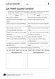<div class="loader"></div></div><input class="toggler" type="checkbox" id="id_95"><div class="content"><h3><label for="id_95">KV 1/6: Les verbes au passé composé </label></h3><h4>Passend zu S. 21–22, Atelier B</h4><table class="files"><tr><td>Öffnen</td><td><a target="_blank" href="content/media/kv/wd01_563015_kv_l1_06.pdf" data-file-type="application/pdf"> pdf </a></td><td><a target="_blank" href="content/media/kv/wd01_563015_kv_l1_kv6.docx" data-file-type="application/vnd.openxmlformats-officedocument.wordprocessingml.document"> docx </a></td></tr><tr><td>Speichern unter</td><td class="save-link"><a target="_blank" href="content/media/kv/wd01_563015_kv_l1_06.pdf" > pdf </a></td><td class="save-link"><a target="_blank" href="content/media/kv/wd01_563015_kv_l1_kv6.docx" > docx </a></td></tr></table></div><div class="attached"><div class="material" data-material-id="6004" ><div class="thumb"><div class="loader"></div></div><div class="content"><h3>Le Cours intensif 2 </h3><h4>Allgemeine Ausgabe 3. Fremdsprache ab 2016</h4><div class="richtext"><b>Beschreibung:</b> Lehrerbuch mit Multimedia-CD (2. Lernjahr)<br><b>Produktnummer:</b> 978-3-12-563015-4</div><a target="_blank" class="single-link" href="https://www.klett.de/produkt/isbn/978-3-12-563015-4">Link zum Webshop</a></div></div></div></div></li><li><div class="material" data-material-id="1451" ><div class="thumb">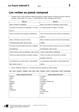<div class="loader"></div></div><input class="toggler" type="checkbox" id="id_96"><div class="content"><h3><label for="id_96">KV 1/6: Les verbes au passé composé </label></h3><h4>Lösungen</h4><table class="files"><tr><td>Öffnen</td><td><a target="_blank" href="content/media/kv/wd01_563015_kv_l1_loes_06.pdf" data-file-type="application/pdf"> pdf </a></td><td><a target="_blank" href="content/media/kv/wd01_563015_kv_l1_loes_kv6.docx" data-file-type="application/vnd.openxmlformats-officedocument.wordprocessingml.document"> docx </a></td></tr><tr><td>Speichern unter</td><td class="save-link"><a target="_blank" href="content/media/kv/wd01_563015_kv_l1_loes_06.pdf" > pdf </a></td><td class="save-link"><a target="_blank" href="content/media/kv/wd01_563015_kv_l1_loes_kv6.docx" > docx </a></td></tr></table></div><div class="attached"><div class="material" data-material-id="6004" ><div class="thumb"><div class="loader"></div></div><div class="content"><h3>Le Cours intensif 2 </h3><h4>Allgemeine Ausgabe 3. Fremdsprache ab 2016</h4><div class="richtext"><b>Beschreibung:</b> Lehrerbuch mit Multimedia-CD (2. Lernjahr)<br><b>Produktnummer:</b> 978-3-12-563015-4</div><a target="_blank" class="single-link" href="https://www.klett.de/produkt/isbn/978-3-12-563015-4">Link zum Webshop</a></div></div></div></div></li></ul></div></div></div></div></div><div class="page " data-title="22" data-pos="24"><div class="content"><div class="rough-image" style="background: url('content/pages/thumbs_0.png') -17664px 0 no-repeat; background-size: auto 100% !important;"></div><div class="pagr-thumb" style="background: url('content/pages/thumbs_0.png') -2208px 0 no-repeat;"></div><div class="image-layers"><div><div style="background-image: url('content/pages/page_23/Scale1.png')"></div></div><div><div style="background-image: url('content/pages/page_23/Scale2.png')"></div></div><div><div style="background-image: url('content/pages/page_23/Scale4.png')"></div></div></div><section class="searchable"><p class="text">la journée d’hier s’est passée comment préparez plusieurs questions au passé composé avec les verbes se réveiller se lever se dépêcher s’amuser s’énerver et se coucher puis promenez-vous dans la classe et posez vos questions j’ai vu un chien qui était perdu racontez l’histoire l’ imparfait et au passé composé utilisez pendant que ensuite tout coup fi nalement et faites au moins deux phrases relatives en plus cléa solenn petite france cadeaux faire beau beaucoup de touristes cléa regarder solenn s’intéresser voir petit chien avoir l’air perdu adorer chiens aller vers partir partir sa poursuite avoir peur ne plus savoir le chemin demander son chemin une dame passer retrouver cléa une visite franco-allemande avant l’écoute regardez le programme la page faites des hypothèses quelle visite est-ce que ça peut être ecoutez la première partie du texte et dites quelles personnes parlent et où elles sont deuxième écoute répondez aux questions suivantes pourquoi est-ce que la visite est en français où se trouvent les bureaux de la chaîne allemande comment s’appelait la chaîne avant 2000 en quelle année eu lieu la première émission qu’est-ce qu’on montré pendant cette émission de quoi est-ce qu’on parle dans karambolage quand est-ce que l’émission yourope lieu qu’est-ce qu’elle présente pourquoi est-ce que les programmes de cette chaîne ne commencent pas la même heure en france et en allemagne parler quelle heure est-ce que tu t’es levé(e ce matin  écouter l1/10-11 nm32hj stratégies entrée atelier atelier bilan vingt-deux</p><link type="image/svg+xml" href="content/pages/page_23/searchwords.svg"></section><div class="draw-layer"><svg xmlns="http://www.w3.org/2000/svg" width="768" height="1024"></svg></div><div class="note-icon-layer"></div><div class="annotation-layers"><div class="layer Eigene-Materialien" data-type="materials" data-layer-id="bar1"><div class="page-wide-materials"><ul class="materials"></ul></div></div><div class="layer Loesungen" data-type="anchors" data-layer-id="layer15"><div class="tooltip" data-placement=""><div class="tooltip-top"><div class="tooltip-content"><p>Lösungen</p></div></div></div><div class="anchor Text-Bild-Info-Inhalt" style="left: 2.99%; top: 13.28%;" ><div class="anchor-materials" data-layer="layer15"><ul class="materials"><li><div class="material" data-material-id="4027" ><div class="richtext"><p>A quelle heure est-ce que tu t’es réveillé(e) aujourd’hui ? <br />Avec qui est-ce que tu t’es amusé(e) ? <br />Est-ce que tu t’es dépêché(e) ? <br />Quand est-ce que tu t’es couché(e) ?</p><a class="print">Drucken</a></div></div></li></ul></div></div><div class="tooltip" data-placement=""><div class="tooltip-top"><div class="tooltip-content"><p>Lösungen</p></div></div></div><div class="anchor Text-Bild-Info-Inhalt" style="left: 2.99%; top: 25.19%;" ><div class="anchor-materials" data-layer="layer15"><ul class="materials"><li><div class="material" data-material-id="4028" ><div class="richtext"><p>1. Clara et Solenn sont allées à la Petite France pour acheter des cadeaux. Il faisait beau et il y avait beaucoup de touristes. <br />2. Pendant que Clara regardait les t-shirts, Solenn s’intéressait aux livres. <br />3. Tout à coup, Solenn a vu un petit chien qui avait l’air perdu. Solenn qui adorait les chiens est allée vers le petit chien. <br />4. Mais le petit chien est parti et Solenn est partie à sa poursuite. <br />5. Tout à coup, Solenn a eu peur parce qu’elle ne savait plus le chemin. <br />6. Elle a demandé son chemin à une dame qui passait et finalement, elle a retrouvé Clara.</p><a class="print">Drucken</a></div></div></li></ul></div></div><div class="tooltip" data-placement=""><div class="tooltip-top"><div class="tooltip-content"><p>Lösungen</p></div></div></div><div class="anchor Text-Bild-Info-Inhalt" style="left: 2.99%; top: 77.24%;" ><div class="anchor-materials" data-layer="layer15"><ul class="materials"><li><div class="material" data-material-id="4029" ><div class="richtext"><p>a) Ça doit être la visite d’ARTE. <br />b) La guide madame Holde (une rédactrice d’ARTE), monsieur Verney et madame Lemoine se présentent. On entend aussi quelques élèves. <br />Les personnes sont dans les bureaux d’ARTE.<br />c) <br />1. Elle est en français parce que madame Lemoine ne parle pas allemand. <br />2. Ils se trouvent à Strasbourg aussi. <br />3. Elle s’appelait « La Sept ». <br />4. C’était en 1992. <br />5. On a montré un film allemand, « Der Himmel über Berlin ». <br />6. On parle des différences entre la France et l’Allemagne. <br />7. Yourope a lieu le samedi à 14 heures. <br />8. Elle présente des reportages sur les cultures européennes. <br />9. Ils ne commencent pas à la même heure parce que les programmes commencent en Allemagne à 20h15 et en France à 20h45.</p><a class="print">Drucken</a></div></div></li></ul></div></div><div class="page-wide-materials"><ul class="materials"></ul></div></div><div class="layer Differenzierung" data-type="anchors" data-layer-id="layer14"><div class="tooltip" data-placement=""><div class="tooltip-top"><div class="tooltip-content"><p>Differenzierung</p></div></div></div><div class="anchor Text-Bild-Info-Inhalt" style="left: 95.96%; top: 25.58%;" ><div class="anchor-materials" data-layer="layer14"><ul class="materials"><li><div class="material" data-material-id="4322" ><div class="richtext"><p>Anstatt SB, S. 22, Nr. 11 können leistungsschwächere Gruppen auch SB, <i>En plus</i>, S. 137, Nr. 4 bearbeiten. Bei dieser Übung sind die erwarteten Sätze bereits vorstrukturiert und die zu verwendenden Verben jeweils in Klammern angegeben.</p><a class="print">Drucken</a></div></div></li></ul></div></div><div class="page-wide-materials"><ul class="materials"></ul></div></div><div class="layer Multimedia always-visible" data-type="media" data-layer-id="layer5"><div class="tooltip" data-placement=""><div class="tooltip-top"><div class="tooltip-content"><p class="tooltip-title">CD 1, Track 10: Une visite franco-allemande 1</p><p class="tooltip-subtitle"></p></div></div></div><div class="anchor Medium-Sprache" style="left: 9.63%; top: 77.24%;" ><div class="anchor-materials" data-layer="layer5"><ul class="materials"><li><div class="material" data-material-id="1011" ><div class="content"><h3>CD 1, Track 10: Une visite franco-allemande 1 (mp3)</h3><ul class="files"><li class=""><a onclick="" target="_blank" href="content/media/audios/lcd1/lcd1_010.mp3" data-file-type="audio/mpeg">Öffnen</a></li></ul></div></div></li></ul></div></div><div class="tooltip" data-placement=""><div class="tooltip-top"><div class="tooltip-content"><p class="tooltip-title">CD 1, Track 11: Une visite franco-allemande 2</p><p class="tooltip-subtitle"></p></div></div></div><div class="anchor Medium-Sprache" style="left: 9.63%; top: 82.22%;" ><div class="anchor-materials" data-layer="layer5"><ul class="materials"><li><div class="material" data-material-id="1012" ><div class="content"><h3>CD 1, Track 11: Une visite franco-allemande 2 (mp3)</h3><ul class="files"><li class=""><a onclick="" target="_blank" href="content/media/audios/lcd1/lcd1_011.mp3" data-file-type="audio/mpeg">Öffnen</a></li></ul></div></div></li></ul></div></div><div class="page-wide-materials"><ul class="materials"></ul></div></div><div class="layer Sprungmarke always-visible" data-type="root" data-layer-id="layer0"><a href="?page=27" target="_blank" class="rect" style="position: absolute;z-index:1; left: 9.11%; top: 19.23%; width: 4.16%; height: 3.51%"></a><a href="http://code.klett.de/nm32hj" target="_blank" class="rect" style="position: absolute;z-index:1; left: 4.94%; top: 71.67%; width: 8.33%; height: 2.73%"></a><a href="?page=139" target="_blank" class="rect" style="position: absolute;z-index:1; left: 78.25%; top: 23.82%; width: 14.58%; height: 3.51%"></a><a href="?page=15" target="_blank" class="rect" style="position: absolute;z-index:1; left: 50.26%; top: 67.57%; width: 5.98%; height: 2.53%"></a><div class="page-wide-materials"><ul class="materials"></ul></div></div><div class="layer Nur-Materialien" data-type="materials" data-layer-id="bar20"><div class="page-wide-materials"><ul class="materials"><li><div class="material" data-material-id="1113" ><div class="thumb"><div class="loader"></div></div><input class="toggler" type="checkbox" id="id_97"><div class="content"><h3><label for="id_97">CD 1, Track 10: Une visite franco-allemande 1 (mp3)</label></h3><h4>Audio zu S. 22, Nr. 12</h4><ul class="files"><li class=""><a onclick="" target="_blank" href="content/media/audios/lcd1/lcd1_010.mp3" data-file-type="audio/mpeg">Öffnen</a></li><li class="save-link"><a onclick="" target="_blank" href="content/media/audios/lcd1/lcd1_010.mp3" >Speichern unter</a></li></ul></div><div class="attached"><div class="material" data-material-id="6003" ><div class="thumb"><div class="loader"></div></div><div class="content"><h3>Le Cours intensif 2 </h3><h4>Allgemeine Ausgabe 3. Fremdsprache ab 2016</h4><div class="richtext"><b>Beschreibung:</b> Cahier d'activités mit MP3-CD und Übungssoftware (2. Lernjahr)<br><b>Produktnummer:</b> 978-3-12-563011-6</div><a target="_blank" class="single-link" href="https://www.klett.de/produkt/isbn/978-3-12-563011-6">Link zum Webshop</a></div></div></div></div></li><li><div class="material" data-material-id="1116" ><div class="thumb">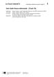<div class="loader"></div></div><input class="toggler" type="checkbox" id="id_98"><div class="content"><h3><label for="id_98">Une visite franco-allemande 1 (docx)</label></h3><h4>Transkription zu CD 1, Track 10</h4><ul class="files"><li class=""><a onclick="" target="_blank" href="content/media/transkript/at_l1_10.docx" data-file-type="application/vnd.openxmlformats-officedocument.wordprocessingml.document">Öffnen</a></li><li class="save-link"><a onclick="" target="_blank" href="content/media/transkript/at_l1_10.docx" >Speichern unter</a></li></ul></div><div class="attached"><div class="material" data-material-id="6004" ><div class="thumb"><div class="loader"></div></div><div class="content"><h3>Le Cours intensif 2 </h3><h4>Allgemeine Ausgabe 3. Fremdsprache ab 2016</h4><div class="richtext"><b>Beschreibung:</b> Lehrerbuch mit Multimedia-CD (2. Lernjahr)<br><b>Produktnummer:</b> 978-3-12-563015-4</div><a target="_blank" class="single-link" href="https://www.klett.de/produkt/isbn/978-3-12-563015-4">Link zum Webshop</a></div></div></div></div></li><li><div class="material" data-material-id="1114" ><div class="thumb"><div class="loader"></div></div><input class="toggler" type="checkbox" id="id_99"><div class="content"><h3><label for="id_99">CD 1, Track 11: Une visite franco-allemande 2 (mp3)</label></h3><h4>Audio zu S. 22, Nr 12</h4><ul class="files"><li class=""><a onclick="" target="_blank" href="content/media/audios/lcd1/lcd1_011.mp3" data-file-type="audio/mpeg">Öffnen</a></li><li class="save-link"><a onclick="" target="_blank" href="content/media/audios/lcd1/lcd1_011.mp3" >Speichern unter</a></li></ul></div><div class="attached"><div class="material" data-material-id="6003" ><div class="thumb"><div class="loader"></div></div><div class="content"><h3>Le Cours intensif 2 </h3><h4>Allgemeine Ausgabe 3. Fremdsprache ab 2016</h4><div class="richtext"><b>Beschreibung:</b> Cahier d'activités mit MP3-CD und Übungssoftware (2. Lernjahr)<br><b>Produktnummer:</b> 978-3-12-563011-6</div><a target="_blank" class="single-link" href="https://www.klett.de/produkt/isbn/978-3-12-563011-6">Link zum Webshop</a></div></div></div></div></li><li><div class="material" data-material-id="1333" ><div class="thumb">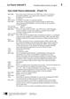<div class="loader"></div></div><input class="toggler" type="checkbox" id="id_100"><div class="content"><h3><label for="id_100">Une visite franco-allemande 2 (docx)</label></h3><h4>Transkription zu CD 1, Track 11</h4><ul class="files"><li class=""><a onclick="" target="_blank" href="content/media/transkript/at_l1_11.docx" data-file-type="application/vnd.openxmlformats-officedocument.wordprocessingml.document">Öffnen</a></li><li class="save-link"><a onclick="" target="_blank" href="content/media/transkript/at_l1_11.docx" >Speichern unter</a></li></ul></div><div class="attached"><div class="material" data-material-id="6004" ><div class="thumb"><div class="loader"></div></div><div class="content"><h3>Le Cours intensif 2 </h3><h4>Allgemeine Ausgabe 3. Fremdsprache ab 2016</h4><div class="richtext"><b>Beschreibung:</b> Lehrerbuch mit Multimedia-CD (2. Lernjahr)<br><b>Produktnummer:</b> 978-3-12-563015-4</div><a target="_blank" class="single-link" href="https://www.klett.de/produkt/isbn/978-3-12-563015-4">Link zum Webshop</a></div></div></div></div></li></ul></div></div><div class="layer Nur-Materialien" data-type="materials" data-layer-id="bar22"><div class="page-wide-materials"><ul class="materials"><li><div class="material" data-material-id="1247" ><div class="thumb"><div class="loader"></div></div><input class="toggler" type="checkbox" id="id_101"><div class="content"><h3><label for="id_101">Lektionsbegleitendes Vokabular (pdf)</label></h3><h4>Ausdruckbare Liste</h4><ul class="files"><li class=""><a onclick="" target="_blank" href="content/media/fundus/fu_bev.pdf" data-file-type="application/pdf">Öffnen</a></li><li class="save-link"><a onclick="" target="_blank" href="content/media/fundus/fu_bev.pdf" >Speichern unter</a></li></ul></div><div class="attached"><div class="material" data-material-id="6005" ><div class="thumb"><div class="loader"></div></div><div class="content"><h3>Le Cours intensif 2 </h3><h4>Allgemeine Ausgabe 3. Fremdsprache ab 2016</h4><div class="richtext"><b>Beschreibung:</b> Schülerbuch, Softcover (2. Lernjahr)<br><b>Produktnummer:</b> 978-3-12-563010-9</div><a target="_blank" class="single-link" href="https://www.klett.de/produkt/isbn/978-3-12-563010-9">Link zum Webshop</a></div></div></div></div></li><li><div class="material" data-material-id="1248" ><div class="thumb"><div class="loader"></div></div><input class="toggler" type="checkbox" id="id_102"><div class="content"><h3><label for="id_102">Alphabetische Wortliste (pdf)</label></h3><h4>Ausdruckbare Liste</h4><ul class="files"><li class=""><a onclick="" target="_blank" href="content/media/fundus/fu_awl.pdf" data-file-type="application/pdf">Öffnen</a></li><li class="save-link"><a onclick="" target="_blank" href="content/media/fundus/fu_awl.pdf" >Speichern unter</a></li></ul></div><div class="attached"><div class="material" data-material-id="6005" ><div class="thumb"><div class="loader"></div></div><div class="content"><h3>Le Cours intensif 2 </h3><h4>Allgemeine Ausgabe 3. Fremdsprache ab 2016</h4><div class="richtext"><b>Beschreibung:</b> Schülerbuch, Softcover (2. Lernjahr)<br><b>Produktnummer:</b> 978-3-12-563010-9</div><a target="_blank" class="single-link" href="https://www.klett.de/produkt/isbn/978-3-12-563010-9">Link zum Webshop</a></div></div></div></div></li><li><div class="material" data-material-id="1249" ><div class="thumb"><div class="loader"></div></div><input class="toggler" type="checkbox" id="id_103"><div class="content"><h3><label for="id_103">Lektionsbegleitende Grammatik (pdf)</label></h3><ul class="files"><li class=""><a onclick="" target="_blank" href="content/media/gram/fu_l1_01.pdf" data-file-type="application/pdf">Öffnen</a></li><li class="save-link"><a onclick="" target="_blank" href="content/media/gram/fu_l1_01.pdf" >Speichern unter</a></li></ul></div><div class="attached"><div class="material" data-material-id="6005" ><div class="thumb"><div class="loader"></div></div><div class="content"><h3>Le Cours intensif 2 </h3><h4>Allgemeine Ausgabe 3. Fremdsprache ab 2016</h4><div class="richtext"><b>Beschreibung:</b> Schülerbuch, Softcover (2. Lernjahr)<br><b>Produktnummer:</b> 978-3-12-563010-9</div><a target="_blank" class="single-link" href="https://www.klett.de/produkt/isbn/978-3-12-563010-9">Link zum Webshop</a></div></div></div></div></li></ul></div></div><div class="layer Nur-Materialien" data-type="materials" data-layer-id="bar18"><div class="page-wide-materials"><ul class="materials"><li><div class="material" data-material-id="1371" ><div class="thumb"><div class="loader"></div></div><input class="toggler" type="checkbox" id="id_104"><div class="content"><h3><label for="id_104">Blätterbares Lehrerbuch (html)</label></h3><h4>S. 22</h4><div class="richtext"><p>Das Lehrerbuch bietet viele methodische Hinweise zu jeder Leçon, Kopiervorlagen u.v.m. </p></div><ul class="files"><li class=""><a onclick="" target="_blank" href="content/media/ep-1405/app.html?page=24" data-file-type="tgd-epaper" data-dimension="1200-800">Öffnen</a></li></ul></div><div class="attached"><div class="material" data-material-id="6004" ><div class="thumb"><div class="loader"></div></div><div class="content"><h3>Le Cours intensif 2 </h3><h4>Allgemeine Ausgabe 3. Fremdsprache ab 2016</h4><div class="richtext"><b>Beschreibung:</b> Lehrerbuch mit Multimedia-CD (2. Lernjahr)<br><b>Produktnummer:</b> 978-3-12-563015-4</div><a target="_blank" class="single-link" href="https://www.klett.de/produkt/isbn/978-3-12-563015-4">Link zum Webshop</a></div></div></div></div></li></ul></div></div><div class="layer Nur-Materialien" data-type="materials" data-layer-id="bar21"><div class="page-wide-materials"><ul class="materials"><li><div class="material" data-material-id="1440" ><div class="thumb"><div class="loader"></div></div><input class="toggler" type="checkbox" id="id_105"><div class="content"><h3><label for="id_105">KV 1/6: Les verbes au passé composé </label></h3><h4>Passend zu S. 21–22, Atelier B</h4><table class="files"><tr><td>Öffnen</td><td><a target="_blank" href="content/media/kv/wd01_563015_kv_l1_06.pdf" data-file-type="application/pdf"> pdf </a></td><td><a target="_blank" href="content/media/kv/wd01_563015_kv_l1_kv6.docx" data-file-type="application/vnd.openxmlformats-officedocument.wordprocessingml.document"> docx </a></td></tr><tr><td>Speichern unter</td><td class="save-link"><a target="_blank" href="content/media/kv/wd01_563015_kv_l1_06.pdf" > pdf </a></td><td class="save-link"><a target="_blank" href="content/media/kv/wd01_563015_kv_l1_kv6.docx" > docx </a></td></tr></table></div><div class="attached"><div class="material" data-material-id="6004" ><div class="thumb"><div class="loader"></div></div><div class="content"><h3>Le Cours intensif 2 </h3><h4>Allgemeine Ausgabe 3. Fremdsprache ab 2016</h4><div class="richtext"><b>Beschreibung:</b> Lehrerbuch mit Multimedia-CD (2. Lernjahr)<br><b>Produktnummer:</b> 978-3-12-563015-4</div><a target="_blank" class="single-link" href="https://www.klett.de/produkt/isbn/978-3-12-563015-4">Link zum Webshop</a></div></div></div></div></li><li><div class="material" data-material-id="1451" ><div class="thumb"><div class="loader"></div></div><input class="toggler" type="checkbox" id="id_106"><div class="content"><h3><label for="id_106">KV 1/6: Les verbes au passé composé </label></h3><h4>Lösungen</h4><table class="files"><tr><td>Öffnen</td><td><a target="_blank" href="content/media/kv/wd01_563015_kv_l1_loes_06.pdf" data-file-type="application/pdf"> pdf </a></td><td><a target="_blank" href="content/media/kv/wd01_563015_kv_l1_loes_kv6.docx" data-file-type="application/vnd.openxmlformats-officedocument.wordprocessingml.document"> docx </a></td></tr><tr><td>Speichern unter</td><td class="save-link"><a target="_blank" href="content/media/kv/wd01_563015_kv_l1_loes_06.pdf" > pdf </a></td><td class="save-link"><a target="_blank" href="content/media/kv/wd01_563015_kv_l1_loes_kv6.docx" > docx </a></td></tr></table></div><div class="attached"><div class="material" data-material-id="6004" ><div class="thumb"><div class="loader"></div></div><div class="content"><h3>Le Cours intensif 2 </h3><h4>Allgemeine Ausgabe 3. Fremdsprache ab 2016</h4><div class="richtext"><b>Beschreibung:</b> Lehrerbuch mit Multimedia-CD (2. Lernjahr)<br><b>Produktnummer:</b> 978-3-12-563015-4</div><a target="_blank" class="single-link" href="https://www.klett.de/produkt/isbn/978-3-12-563015-4">Link zum Webshop</a></div></div></div></div></li><li><div class="material" data-material-id="1442" ><div class="thumb">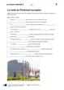<div class="loader"></div></div><input class="toggler" type="checkbox" id="id_107"><div class="content"><h3><label for="id_107">KV 1/7: La visite du Parlement européen </label></h3><h4>Passend zu S. 22, Atelier B</h4><table class="files"><tr><td>Öffnen</td><td><a target="_blank" href="content/media/kv/wd01_563015_kv_l1_07.pdf" data-file-type="application/pdf"> pdf </a></td><td><a target="_blank" href="content/media/kv/wd01_563015_kv_l1_kv7.docx" data-file-type="application/vnd.openxmlformats-officedocument.wordprocessingml.document"> docx </a></td></tr><tr><td>Speichern unter</td><td class="save-link"><a target="_blank" href="content/media/kv/wd01_563015_kv_l1_07.pdf" > pdf </a></td><td class="save-link"><a target="_blank" href="content/media/kv/wd01_563015_kv_l1_kv7.docx" > docx </a></td></tr></table></div><div class="attached"><div class="material" data-material-id="6004" ><div class="thumb"><div class="loader"></div></div><div class="content"><h3>Le Cours intensif 2 </h3><h4>Allgemeine Ausgabe 3. Fremdsprache ab 2016</h4><div class="richtext"><b>Beschreibung:</b> Lehrerbuch mit Multimedia-CD (2. Lernjahr)<br><b>Produktnummer:</b> 978-3-12-563015-4</div><a target="_blank" class="single-link" href="https://www.klett.de/produkt/isbn/978-3-12-563015-4">Link zum Webshop</a></div></div></div></div></li><li><div class="material" data-material-id="1452" ><div class="thumb">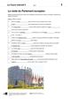<div class="loader"></div></div><input class="toggler" type="checkbox" id="id_108"><div class="content"><h3><label for="id_108">KV 1/7: La visite du Parlement européen </label></h3><h4>Lösungen</h4><table class="files"><tr><td>Öffnen</td><td><a target="_blank" href="content/media/kv/wd01_563015_kv_l1_loes_07.pdf" data-file-type="application/pdf"> pdf </a></td><td><a target="_blank" href="content/media/kv/wd01_563015_kv_l1_loes_kv7.docx" data-file-type="application/vnd.openxmlformats-officedocument.wordprocessingml.document"> docx </a></td></tr><tr><td>Speichern unter</td><td class="save-link"><a target="_blank" href="content/media/kv/wd01_563015_kv_l1_loes_07.pdf" > pdf </a></td><td class="save-link"><a target="_blank" href="content/media/kv/wd01_563015_kv_l1_loes_kv7.docx" > docx </a></td></tr></table></div><div class="attached"><div class="material" data-material-id="6004" ><div class="thumb"><div class="loader"></div></div><div class="content"><h3>Le Cours intensif 2 </h3><h4>Allgemeine Ausgabe 3. Fremdsprache ab 2016</h4><div class="richtext"><b>Beschreibung:</b> Lehrerbuch mit Multimedia-CD (2. Lernjahr)<br><b>Produktnummer:</b> 978-3-12-563015-4</div><a target="_blank" class="single-link" href="https://www.klett.de/produkt/isbn/978-3-12-563015-4">Link zum Webshop</a></div></div></div></div></li></ul></div></div><div class="layer Nur-Materialien" data-type="materials" data-layer-id="bar19"><div class="page-wide-materials"><ul class="materials"><li><div class="material" data-material-id="1291" ><div class="thumb"><div class="loader"></div></div><input class="toggler" type="checkbox" id="id_109"><div class="content"><h3><label for="id_109">Cahier d'activités (zur rechten Seite) (html)</label></h3><h4>S. 10-11</h4><ul class="files"><li class=""><a onclick="" target="_blank" href="content/media/epaper/cda/app.html?page=12" data-file-type="tgd-epaper" data-dimension="1200-800">Öffnen</a></li></ul></div><div class="attached"><div class="material" data-material-id="6006" ><div class="thumb"><div class="loader"></div></div><div class="content"><h3>Le Cours intensif 2 </h3><h4>Allgemeine Ausgabe 3. Fremdsprache ab 2016</h4><div class="richtext"><b>Beschreibung:</b> Cahier d'activités Lehrerausgabe mit Lösungen, MP3-CD und Übungssoftware (2. Lernjahr)<br><b>Produktnummer:</b> 978-3-12-563019-2</div><a target="_blank" class="single-link" href="https://www.klett.de/produkt/isbn/978-3-12-563019-2">Link zum Webshop</a></div></div></div></div></li></ul></div></div></div></div></div><div class="page " data-title="23" data-pos="25"><div class="content"><div class="rough-image" style="background: url('content/pages/thumbs_0.png') -18432px 0 no-repeat; background-size: auto 100% !important;"></div><div class="pagr-thumb" style="background: url('content/pages/thumbs_0.png') -2304px 0 no-repeat;"></div><div class="image-layers"><div><div style="background-image: url('content/pages/page_24/Scale1.png')"></div></div><div><div style="background-image: url('content/pages/page_24/Scale2.png')"></div></div><div><div style="background-image: url('content/pages/page_24/Scale4.png')"></div></div></div><section class="searchable"><p class="text">une excursion en bateau regardez le fi lm et répondez aux questions quelles sont les deux caractéristiques de strasbourg comment s’appelle la compagnie de bateaux bootsgesellschaft où est-ce que le tour en bateau commence quelles sont les étapes suivantes qu’est-ce que c’est en allemand une écluse un pont tournant qu’est-ce qu’on apprend dans le fi lm sur les horaires des bateaux histoires noires votre professeur de français découvert sur la page de l’institut français de munich le concours wettbewerb suivant faites quatre groupes chaque groupe choisit une situation racontez l’histoire mots et utilisez le passé composé et l’imparfait le dico personnel la page peut vous aider chaque groupe présente ensuite son histoire la classe la meilleure histoire va participer au concours un hôpital ein krankenhaus le samu der notarzt se jeter sur qn über jdn herfallen assister qc ici von etwas zeuge sein un meurtre ein mord regarder écouter ff577n strategie hör­seh­verstehen beim hör-seh-verstehen gelten die gleichen regeln wie beim hörverstehen zusätzlich unterstützen die bilder das gesprochene und erleichtern somit das textverständnis weitere informationen auf seite tâche finale écrire pour vous aider recette pour un récit passionnant pensez d’abord au déroulement de votre récit handlungsgerüst ajoutez ensuite des sentiments et des descriptions faites attention l’emploi des temps du passé l’aide d’adjectifs et du discours direct vous pouvez rendre votre texte plus vivant lebendiger vérifi ez vos textes l’aide de la liste page un soir dans la petite france une femme assisté au meurtre d’un homme le lendemain elle vu cet homme au marché un soir dans la petite france une femme une classe allemande et une classe française attendaient l’entrée de la cathédrale dix minutes plus tard leurs profs se sont jetés l’un sur l’autre une classe allemande et une classe une alsacienne de ans reçu une lettre cinq minutes plus tard sa fi lle appelé le samu une alsacienne de ans reçu une lettre un homme était très en retard et pris un taxi pour le parlement européen un carrefour le taxi pris la direction de l’hôpital chers élèves vous avez entre et ans et vous apprenez le français alors participez notre concours choisissez une des quatre situations et imaginez ce qui s’est passé envoyez par e-mail jusqu’au septembre vos histoires passionnantes drôles ou émouvantes bewegenden l’institut français la classe avec la meilleure histoire gagne pour son prochain voyage scolaire entrée atelier atelier bilan vingt-trois</p><link type="image/svg+xml" href="content/pages/page_24/searchwords.svg"></section><div class="draw-layer"><svg xmlns="http://www.w3.org/2000/svg" width="768" height="1024"></svg></div><div class="note-icon-layer"></div><div class="annotation-layers"><div class="layer Eigene-Materialien" data-type="materials" data-layer-id="bar1"><div class="page-wide-materials"><ul class="materials"></ul></div></div><div class="layer Auszeichnung1" data-type="vector" data-layer-id="layer16"><a class="rect" style="position: absolute;z-index:1; left: 69.92%; top: 42.18%; width: 9.24%; height: 3.51%"></a><a class="rect" style="position: absolute;z-index:1; left: 71.61%; top: 66.79%; width: 8.07%; height: 3.51%"></a><div class="page-wide-materials"><ul class="materials"></ul></div></div><div class="layer Loesungen" data-type="anchors" data-layer-id="layer15"><div class="tooltip" data-placement=""><div class="tooltip-top"><div class="tooltip-content"><p>Lösungen</p></div></div></div><div class="anchor Text-Bild-Info-Inhalt" style="left: 3.12%; top: 22.46%;" ><div class="anchor-materials" data-layer="layer15"><ul class="materials"><li><div class="material" data-material-id="4030" ><div class="richtext"><p>a) C’est une ville d’histoire et la capitale de l’Europe. <br />b) La compagnie s’appelle Batorama. <br />c) Le tour commence au pied de la cathédrale. Le bateau va ensuite au quartier de la Petite France, puis vers les bâtiments de l’Union européenne. <br />d) une écluse : Schleuse ; un pont tournant : Drehbrücke <br />e) On peut prendre les bateaux 365 jours par an.</p><a class="print">Drucken</a></div></div></li></ul></div></div><div class="tooltip" data-placement=""><div class="tooltip-top"><div class="tooltip-content"><p>Lösungen</p></div></div></div><div class="anchor Text-Bild-Info-Inhalt" style="left: 3.12%; top: 42.87%;" ><div class="anchor-materials" data-layer="layer15"><ul class="materials"><li><div class="material" data-material-id="4031" ><div class="richtext"><p><i>Individuelle Schülerantworten</i>, z. B. </p><p><br />Situation 1 : </p><p>Monsieur Lacoste est parti à Bruxelles parce qu’il avait rendez-vous au Parlement européen avec un vieil ami qui travaille là-bas. Quand il est arrivé à la gare, il était déjà très en retard, alors il a décidé de prendre un taxi. Le chauffeur (Fahrer) avait l’air bizarre. Il ne parlait pas, mais regardait tout le temps son portable. Tout à coup, le portable a sonné. Il a crié : « Quoi ? C’est une fille ? Tout va bien ? J’arrive ! » Et il a pris la direction pour l’hôpital. Monsieur Lacoste ne faisait pas la tête, mais il était content pour le chauffeur parce qu’il a une petite fille, lui aussi. A l’hôpital, Monsieur Lacoste a changé de taxi. 10 minutes plus tard, il est descendu au Parlement européen. Il était sûr que son ami allait comprendre ! (134 mots)</p><p><br /></p><p>Situation 2 : </p><p>Un jour, une vieille femme qui vivait en Alsace a reçu une lettre. Elle ne savait pas qui était « Monsieur Segensreich ». <br />– Pourquoi un homme que je ne connais pas m’écrit une lettre ? <br />Elle ne comprenait pas. Alors, elle a ouvert la lettre. Elle a lu la lettre. Elle a lu la lettre encore une fois… Soudain elle a crié : <br />– Rosemarie ! Rosemarie ! <br />C’était le nom de sa fille, qui vivait avec elle. <br />Quand Rosemarie est arrivée, elle a vu sa mère qui était toute blanche. Elle ne pouvait plus parler. <br />Quand elle a vu sa mère comme ça, Rosemarie a eu peur. Vite ! Elle a appelé le SAMU. Le SAMU est arrivé. <br />– Que faisait votre mère quand elle a crié ? a demandé l’homme du SAMU. <br />– Elle lisait une lettre, a répondu Rosemarie. <br />– Et que dit cette lettre ? a demandé l’homme. Alors Rosemarie a lu la lettre. Tout à coup, elle est devenue toute blanche. Elle ne pouvait plus parler. L’homme a pris la lettre. Il a lu la lettre… Et il a compris. La lettre disait : <br />« Votre oncle d’Amérique n’est plus là. Il vous aimait beaucoup. Il vous a donné tout son argent. Il avait beaucoup d’argent. Beaucoup. Beaucoup. Beaucoup. »</p><p><br /></p><p>Situation 3 : </p><p>En classe de 10e, Michel a fait à un échange (Austausch) avec l’Allemagne. Un jour, les Français et les Allemands sont allés à Strasbourg pour visiter la cathédrale. Quand les deux classes sont arrivées devant la cathédrale, il y avait beaucoup de gens. Les élèves attendaient pendant que leurs profs, monsieur Leboeuf et monsieur Eisenreich parlaient au guide. Quand ils sont revenus, ils discutaient beaucoup. Tout à coup, monsieur Leboeuf a crié : « Mais ce n’est pas vrai ! Tu n’as pas appelé ? » Monsieur Eisenreich a répondu : « Mais c’est toi qui voulais appeler ! » Puis, les professeurs se sont jetés l’un sur l’autre. Les élèves se sont beaucoup amusés. A un moment, les profs se sont levés. Monsieur Leboeuf a expliqué : « Allez, les enfants, c’était une blague. On voulait juste vous réveiller. On fait la visite ! » Tout le monde a rigolé. (140 mots)</p><p><br /></p><p>Situation 4 : </p><p>Journal (Tagebuch) de Mélanie <br />Mercredi soir, j’ai décidé de faire un tour dans la Petite France. D’abord, j’ai regardé toutes ces belles maisons alsaciennes. L’ambiance était bonne. Tout à coup, j’ai vu un homme qui avait l’air bizarre. Il ne marchait pas bien, et puis, tout à coup, il est tombé. Pas loin, j’ai découvert un autre homme avec un couteau (Messer) dans la main. J’ai eu très peur et je suis vite partie. Le lendemain, je suis allée au marché pour faire les courses. Pendant que je faisais la queue, un homme m’a demandé l’heure. J’ai pensé : « Mais c’est l’homme d’hier avec le couteau ! ». Je lui ai dit qu’il était 10 heures. Il a dit « Zut ! Je dois partir ! Mon réalisateur m’attend ! » Là, j’ai compris. Ouf ! C’était juste une scène de film ! (131 mots)</p><a class="print">Drucken</a></div></div></li></ul></div></div><div class="page-wide-materials"><ul class="materials"></ul></div></div><div class="layer Multimedia always-visible" data-type="media" data-layer-id="layer5"><div class="tooltip" data-placement=""><div class="tooltip-top"><div class="tooltip-content"><p class="tooltip-title">Video: Une excursion en bateau</p><p class="tooltip-subtitle"></p></div></div></div><div class="anchor Medium-Video" style="left: 9.63%; top: 11.03%;" ><div class="anchor-materials" data-layer="layer5"><ul class="materials"><li><div class="material" data-material-id="1229" ><div class="content"><h3>Video: Une excursion en bateau (mp4)</h3><ul class="files"><li class=""><a onclick="" target="_blank" href="content/media/video/vi_l1_01.mp4" data-file-type="video/mp4">Öffnen</a></li></ul></div></div></li></ul></div></div><div class="page-wide-materials"><ul class="materials"></ul></div></div><div class="layer Sprungmarke always-visible" data-type="root" data-layer-id="layer0"><a href="http://code.klett.de/ff577n" target="_blank" class="rect" style="position: absolute;z-index:1; left: 5.85%; top: 17.67%; width: 7.42%; height: 2.53%"></a><a href="?page=174" target="_blank" class="rect" style="position: absolute;z-index:1; left: 76.95%; top: 26.46%; width: 7.94%; height: 2.73%"></a><a href="?page=186" target="_blank" class="rect" style="position: absolute;z-index:1; left: 21.48%; top: 52.05%; width: 7.03%; height: 2.53%"></a><a href="?page=172" target="_blank" class="rect" style="position: absolute;z-index:1; left: 56.64%; top: 81.25%; width: 7.03%; height: 2.53%"></a><div class="page-wide-materials"><ul class="materials"></ul></div></div><div class="layer Nur-Materialien" data-type="materials" data-layer-id="bar20"><div class="page-wide-materials"><ul class="materials"><li><div class="material" data-material-id="1333" ><div class="thumb"><div class="loader"></div></div><input class="toggler" type="checkbox" id="id_110"><div class="content"><h3><label for="id_110">Une visite franco-allemande 2 (docx)</label></h3><h4>Transkription zu CD 1, Track 11</h4><ul class="files"><li class=""><a onclick="" target="_blank" href="content/media/transkript/at_l1_11.docx" data-file-type="application/vnd.openxmlformats-officedocument.wordprocessingml.document">Öffnen</a></li><li class="save-link"><a onclick="" target="_blank" href="content/media/transkript/at_l1_11.docx" >Speichern unter</a></li></ul></div><div class="attached"><div class="material" data-material-id="6004" ><div class="thumb"><div class="loader"></div></div><div class="content"><h3>Le Cours intensif 2 </h3><h4>Allgemeine Ausgabe 3. Fremdsprache ab 2016</h4><div class="richtext"><b>Beschreibung:</b> Lehrerbuch mit Multimedia-CD (2. Lernjahr)<br><b>Produktnummer:</b> 978-3-12-563015-4</div><a target="_blank" class="single-link" href="https://www.klett.de/produkt/isbn/978-3-12-563015-4">Link zum Webshop</a></div></div></div></div></li><li><div class="material" data-material-id="1230" ><div class="thumb"><div class="loader"></div></div><div class="content"><h3>Strasbourg au fil de l'eau (mp4)</h3><h4>Video zu S. 23, Nr. 13</h4><ul class="files"><li class=""><a onclick="" target="_blank" href="content/media/video/vi_l1_01.mp4" data-file-type="video/mp4">Öffnen</a></li></ul></div></div></li><li><div class="material" data-material-id="1231" ><div class="thumb">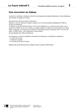<div class="loader"></div></div><input class="toggler" type="checkbox" id="id_111"><div class="content"><h3><label for="id_111">Strasbourg au fil de l'eau (docx)</label></h3><h4>Transkription zum Video: Strasbourg au fil de l'eau</h4><ul class="files"><li class=""><a onclick="" target="_blank" href="content/media/transkript/vt_l1_01.docx" data-file-type="application/vnd.openxmlformats-officedocument.wordprocessingml.document">Öffnen</a></li><li class="save-link"><a onclick="" target="_blank" href="content/media/transkript/vt_l1_01.docx" >Speichern unter</a></li></ul></div><div class="attached"><div class="material" data-material-id="6004" ><div class="thumb"><div class="loader"></div></div><div class="content"><h3>Le Cours intensif 2 </h3><h4>Allgemeine Ausgabe 3. Fremdsprache ab 2016</h4><div class="richtext"><b>Beschreibung:</b> Lehrerbuch mit Multimedia-CD (2. Lernjahr)<br><b>Produktnummer:</b> 978-3-12-563015-4</div><a target="_blank" class="single-link" href="https://www.klett.de/produkt/isbn/978-3-12-563015-4">Link zum Webshop</a></div></div></div></div></li></ul></div></div><div class="layer Nur-Materialien" data-type="materials" data-layer-id="bar22"><div class="page-wide-materials"><ul class="materials"><li><div class="material" data-material-id="1247" ><div class="thumb"><div class="loader"></div></div><input class="toggler" type="checkbox" id="id_112"><div class="content"><h3><label for="id_112">Lektionsbegleitendes Vokabular (pdf)</label></h3><h4>Ausdruckbare Liste</h4><ul class="files"><li class=""><a onclick="" target="_blank" href="content/media/fundus/fu_bev.pdf" data-file-type="application/pdf">Öffnen</a></li><li class="save-link"><a onclick="" target="_blank" href="content/media/fundus/fu_bev.pdf" >Speichern unter</a></li></ul></div><div class="attached"><div class="material" data-material-id="6005" ><div class="thumb"><div class="loader"></div></div><div class="content"><h3>Le Cours intensif 2 </h3><h4>Allgemeine Ausgabe 3. Fremdsprache ab 2016</h4><div class="richtext"><b>Beschreibung:</b> Schülerbuch, Softcover (2. Lernjahr)<br><b>Produktnummer:</b> 978-3-12-563010-9</div><a target="_blank" class="single-link" href="https://www.klett.de/produkt/isbn/978-3-12-563010-9">Link zum Webshop</a></div></div></div></div></li><li><div class="material" data-material-id="1248" ><div class="thumb"><div class="loader"></div></div><input class="toggler" type="checkbox" id="id_113"><div class="content"><h3><label for="id_113">Alphabetische Wortliste (pdf)</label></h3><h4>Ausdruckbare Liste</h4><ul class="files"><li class=""><a onclick="" target="_blank" href="content/media/fundus/fu_awl.pdf" data-file-type="application/pdf">Öffnen</a></li><li class="save-link"><a onclick="" target="_blank" href="content/media/fundus/fu_awl.pdf" >Speichern unter</a></li></ul></div><div class="attached"><div class="material" data-material-id="6005" ><div class="thumb"><div class="loader"></div></div><div class="content"><h3>Le Cours intensif 2 </h3><h4>Allgemeine Ausgabe 3. Fremdsprache ab 2016</h4><div class="richtext"><b>Beschreibung:</b> Schülerbuch, Softcover (2. Lernjahr)<br><b>Produktnummer:</b> 978-3-12-563010-9</div><a target="_blank" class="single-link" href="https://www.klett.de/produkt/isbn/978-3-12-563010-9">Link zum Webshop</a></div></div></div></div></li><li><div class="material" data-material-id="1249" ><div class="thumb"><div class="loader"></div></div><input class="toggler" type="checkbox" id="id_114"><div class="content"><h3><label for="id_114">Lektionsbegleitende Grammatik (pdf)</label></h3><ul class="files"><li class=""><a onclick="" target="_blank" href="content/media/gram/fu_l1_01.pdf" data-file-type="application/pdf">Öffnen</a></li><li class="save-link"><a onclick="" target="_blank" href="content/media/gram/fu_l1_01.pdf" >Speichern unter</a></li></ul></div><div class="attached"><div class="material" data-material-id="6005" ><div class="thumb"><div class="loader"></div></div><div class="content"><h3>Le Cours intensif 2 </h3><h4>Allgemeine Ausgabe 3. Fremdsprache ab 2016</h4><div class="richtext"><b>Beschreibung:</b> Schülerbuch, Softcover (2. Lernjahr)<br><b>Produktnummer:</b> 978-3-12-563010-9</div><a target="_blank" class="single-link" href="https://www.klett.de/produkt/isbn/978-3-12-563010-9">Link zum Webshop</a></div></div></div></div></li></ul></div></div><div class="layer Nur-Materialien" data-type="materials" data-layer-id="bar19"><div class="page-wide-materials"><ul class="materials"><li><div class="material" data-material-id="1291" ><div class="thumb"><div class="loader"></div></div><input class="toggler" type="checkbox" id="id_115"><div class="content"><h3><label for="id_115">Cahier d'activités (zur rechten Seite) (html)</label></h3><h4>S. 10-11</h4><ul class="files"><li class=""><a onclick="" target="_blank" href="content/media/epaper/cda/app.html?page=12" data-file-type="tgd-epaper" data-dimension="1200-800">Öffnen</a></li></ul></div><div class="attached"><div class="material" data-material-id="6006" ><div class="thumb"><div class="loader"></div></div><div class="content"><h3>Le Cours intensif 2 </h3><h4>Allgemeine Ausgabe 3. Fremdsprache ab 2016</h4><div class="richtext"><b>Beschreibung:</b> Cahier d'activités Lehrerausgabe mit Lösungen, MP3-CD und Übungssoftware (2. Lernjahr)<br><b>Produktnummer:</b> 978-3-12-563019-2</div><a target="_blank" class="single-link" href="https://www.klett.de/produkt/isbn/978-3-12-563019-2">Link zum Webshop</a></div></div></div></div></li></ul></div></div><div class="layer Nur-Materialien" data-type="materials" data-layer-id="bar18"><div class="page-wide-materials"><ul class="materials"><li><div class="material" data-material-id="1433" ><div class="thumb"><div class="loader"></div></div><input class="toggler" type="checkbox" id="id_116"><div class="content"><h3><label for="id_116">Blätterbares Lehrerbuch (html)</label></h3><h4>S. 24-26</h4><div class="richtext"><p>Das Lehrerbuch bietet viele methodische Hinweise zu jeder Leçon, Kopiervorlagen u.v.m. </p></div><ul class="files"><li class=""><a onclick="" target="_blank" href="content/media/ep-1405/app.html?page=28" data-file-type="tgd-epaper" data-dimension="1200-800">Öffnen</a></li></ul></div><div class="attached"><div class="material" data-material-id="6004" ><div class="thumb"><div class="loader"></div></div><div class="content"><h3>Le Cours intensif 2 </h3><h4>Allgemeine Ausgabe 3. Fremdsprache ab 2016</h4><div class="richtext"><b>Beschreibung:</b> Lehrerbuch mit Multimedia-CD (2. Lernjahr)<br><b>Produktnummer:</b> 978-3-12-563015-4</div><a target="_blank" class="single-link" href="https://www.klett.de/produkt/isbn/978-3-12-563015-4">Link zum Webshop</a></div></div></div></div></li></ul></div></div><div class="layer Nur-Materialien" data-type="materials" data-layer-id="bar21"><div class="page-wide-materials"><ul class="materials"><li><div class="material" data-material-id="1443" ><div class="thumb">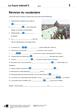<div class="loader"></div></div><input class="toggler" type="checkbox" id="id_117"><div class="content"><h3><label for="id_117">KV 1/8: Révision du vocabulaire </label></h3><h4>Passend zu S. 23, Atelier B</h4><table class="files"><tr><td>Öffnen</td><td><a target="_blank" href="content/media/kv/wd01_563015_kv_l1_08.pdf" data-file-type="application/pdf"> pdf </a></td><td><a target="_blank" href="content/media/kv/wd01_563015_kv_l1_kv8.docx" data-file-type="application/vnd.openxmlformats-officedocument.wordprocessingml.document"> docx </a></td></tr><tr><td>Speichern unter</td><td class="save-link"><a target="_blank" href="content/media/kv/wd01_563015_kv_l1_08.pdf" > pdf </a></td><td class="save-link"><a target="_blank" href="content/media/kv/wd01_563015_kv_l1_kv8.docx" > docx </a></td></tr></table></div><div class="attached"><div class="material" data-material-id="6004" ><div class="thumb"><div class="loader"></div></div><div class="content"><h3>Le Cours intensif 2 </h3><h4>Allgemeine Ausgabe 3. Fremdsprache ab 2016</h4><div class="richtext"><b>Beschreibung:</b> Lehrerbuch mit Multimedia-CD (2. Lernjahr)<br><b>Produktnummer:</b> 978-3-12-563015-4</div><a target="_blank" class="single-link" href="https://www.klett.de/produkt/isbn/978-3-12-563015-4">Link zum Webshop</a></div></div></div></div></li><li><div class="material" data-material-id="1453" ><div class="thumb">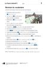<div class="loader"></div></div><input class="toggler" type="checkbox" id="id_118"><div class="content"><h3><label for="id_118">KV 1/8: Révision du vocabulaire </label></h3><h4>Lösungen</h4><table class="files"><tr><td>Öffnen</td><td><a target="_blank" href="content/media/kv/wd01_563015_kv_l1_loes_08.pdf" data-file-type="application/pdf"> pdf </a></td><td><a target="_blank" href="content/media/kv/wd01_563015_kv_l1_loes_kv8.docx" data-file-type="application/vnd.openxmlformats-officedocument.wordprocessingml.document"> docx </a></td></tr><tr><td>Speichern unter</td><td class="save-link"><a target="_blank" href="content/media/kv/wd01_563015_kv_l1_loes_08.pdf" > pdf </a></td><td class="save-link"><a target="_blank" href="content/media/kv/wd01_563015_kv_l1_loes_kv8.docx" > docx </a></td></tr></table></div><div class="attached"><div class="material" data-material-id="6004" ><div class="thumb"><div class="loader"></div></div><div class="content"><h3>Le Cours intensif 2 </h3><h4>Allgemeine Ausgabe 3. Fremdsprache ab 2016</h4><div class="richtext"><b>Beschreibung:</b> Lehrerbuch mit Multimedia-CD (2. Lernjahr)<br><b>Produktnummer:</b> 978-3-12-563015-4</div><a target="_blank" class="single-link" href="https://www.klett.de/produkt/isbn/978-3-12-563015-4">Link zum Webshop</a></div></div></div></div></li></ul></div></div></div></div></div><div class="page " data-title="24" data-pos="26"><div class="content"><div class="rough-image" style="background: url('content/pages/thumbs_0.png') -19200px 0 no-repeat; background-size: auto 100% !important;"></div><div class="pagr-thumb" style="background: url('content/pages/thumbs_0.png') -2400px 0 no-repeat;"></div><div class="image-layers"><div><div style="background-image: url('content/pages/page_25/Scale1.png')"></div></div><div><div style="background-image: url('content/pages/page_25/Scale2.png')"></div></div><div><div style="background-image: url('content/pages/page_25/Scale4.png')"></div></div></div><section class="searchable"><p class="text">la grammaire du beschreibst gewohnheiten in der vergangenheit das brauchst du dafür en vacances tous les matins j’ allais la boulangerie ma famille et moi nous passions toute la journée la plage das imparfait j’all ais tu all ais il elle on all ait nous all ions vous all iez ils elles all aient den unbestimmten begleiter tout tout le temps toute la journée tous les jours toutes les vacances du beschreibst zustände und handlungen in der vergangenheit das brauchst du dafür pendant les vacances nous faisions une randonnée quand tout coup il eu un gros orage das imparfait und das passé composé das imparfait benutzt man für die darstellung von gewohnheitsmäßigen handlungen zuständen beschreibungen signalwörter comme toujours tous les étés jours chaque matin soir etc das passé composé benutzt man für die schilderung von einmaligen handlungen aufeinanderfolgenden handlungen handlungskette signalwörter tout coup alors d’abord un moment etc du beschreibst deinen alltag in der vergangenheit das brauchst du dafür die reflexivverben im passé composé marco s’est réveillé sept heures clara s’est levée huit heures les garçons se sont ennuyés les filles se sont dépêchées être participe passé attention l’accord du participe passé entrée atelier atelier bilan vingt-quatre</p><link type="image/svg+xml" href="content/pages/page_25/searchwords.svg"></section><div class="draw-layer"><svg xmlns="http://www.w3.org/2000/svg" width="768" height="1024"></svg></div><div class="note-icon-layer"></div><div class="annotation-layers"><div class="layer Eigene-Materialien" data-type="materials" data-layer-id="bar1"><div class="page-wide-materials"><ul class="materials"></ul></div></div><div class="layer Nur-Materialien" data-type="materials" data-layer-id="bar22"><div class="page-wide-materials"><ul class="materials"><li><div class="material" data-material-id="1247" ><div class="thumb"><div class="loader"></div></div><input class="toggler" type="checkbox" id="id_119"><div class="content"><h3><label for="id_119">Lektionsbegleitendes Vokabular (pdf)</label></h3><h4>Ausdruckbare Liste</h4><ul class="files"><li class=""><a onclick="" target="_blank" href="content/media/fundus/fu_bev.pdf" data-file-type="application/pdf">Öffnen</a></li><li class="save-link"><a onclick="" target="_blank" href="content/media/fundus/fu_bev.pdf" >Speichern unter</a></li></ul></div><div class="attached"><div class="material" data-material-id="6005" ><div class="thumb"><div class="loader"></div></div><div class="content"><h3>Le Cours intensif 2 </h3><h4>Allgemeine Ausgabe 3. Fremdsprache ab 2016</h4><div class="richtext"><b>Beschreibung:</b> Schülerbuch, Softcover (2. Lernjahr)<br><b>Produktnummer:</b> 978-3-12-563010-9</div><a target="_blank" class="single-link" href="https://www.klett.de/produkt/isbn/978-3-12-563010-9">Link zum Webshop</a></div></div></div></div></li><li><div class="material" data-material-id="1248" ><div class="thumb"><div class="loader"></div></div><input class="toggler" type="checkbox" id="id_120"><div class="content"><h3><label for="id_120">Alphabetische Wortliste (pdf)</label></h3><h4>Ausdruckbare Liste</h4><ul class="files"><li class=""><a onclick="" target="_blank" href="content/media/fundus/fu_awl.pdf" data-file-type="application/pdf">Öffnen</a></li><li class="save-link"><a onclick="" target="_blank" href="content/media/fundus/fu_awl.pdf" >Speichern unter</a></li></ul></div><div class="attached"><div class="material" data-material-id="6005" ><div class="thumb"><div class="loader"></div></div><div class="content"><h3>Le Cours intensif 2 </h3><h4>Allgemeine Ausgabe 3. Fremdsprache ab 2016</h4><div class="richtext"><b>Beschreibung:</b> Schülerbuch, Softcover (2. Lernjahr)<br><b>Produktnummer:</b> 978-3-12-563010-9</div><a target="_blank" class="single-link" href="https://www.klett.de/produkt/isbn/978-3-12-563010-9">Link zum Webshop</a></div></div></div></div></li><li><div class="material" data-material-id="1249" ><div class="thumb"><div class="loader"></div></div><input class="toggler" type="checkbox" id="id_121"><div class="content"><h3><label for="id_121">Lektionsbegleitende Grammatik (pdf)</label></h3><ul class="files"><li class=""><a onclick="" target="_blank" href="content/media/gram/fu_l1_01.pdf" data-file-type="application/pdf">Öffnen</a></li><li class="save-link"><a onclick="" target="_blank" href="content/media/gram/fu_l1_01.pdf" >Speichern unter</a></li></ul></div><div class="attached"><div class="material" data-material-id="6005" ><div class="thumb"><div class="loader"></div></div><div class="content"><h3>Le Cours intensif 2 </h3><h4>Allgemeine Ausgabe 3. Fremdsprache ab 2016</h4><div class="richtext"><b>Beschreibung:</b> Schülerbuch, Softcover (2. Lernjahr)<br><b>Produktnummer:</b> 978-3-12-563010-9</div><a target="_blank" class="single-link" href="https://www.klett.de/produkt/isbn/978-3-12-563010-9">Link zum Webshop</a></div></div></div></div></li></ul></div></div><div class="layer Nur-Materialien" data-type="materials" data-layer-id="bar18"><div class="page-wide-materials"><ul class="materials"><li><div class="material" data-material-id="1374" ><div class="thumb"><div class="loader"></div></div><input class="toggler" type="checkbox" id="id_122"><div class="content"><h3><label for="id_122">Blätterbares Lehrerbuch (html)</label></h3><h4>S. 27</h4><div class="richtext"><p>Das Lehrerbuch bietet viele methodische Hinweise zu jeder Leçon, Kopiervorlagen u.v.m. </p></div><ul class="files"><li class=""><a onclick="" target="_blank" href="content/media/ep-1405/app.html?page=29" data-file-type="tgd-epaper" data-dimension="1200-800">Öffnen</a></li></ul></div><div class="attached"><div class="material" data-material-id="6004" ><div class="thumb"><div class="loader"></div></div><div class="content"><h3>Le Cours intensif 2 </h3><h4>Allgemeine Ausgabe 3. Fremdsprache ab 2016</h4><div class="richtext"><b>Beschreibung:</b> Lehrerbuch mit Multimedia-CD (2. Lernjahr)<br><b>Produktnummer:</b> 978-3-12-563015-4</div><a target="_blank" class="single-link" href="https://www.klett.de/produkt/isbn/978-3-12-563015-4">Link zum Webshop</a></div></div></div></div></li></ul></div></div></div></div></div><div class="page " data-title="25" data-pos="27"><div class="content"><div class="rough-image" style="background: url('content/pages/thumbs_0.png') -19968px 0 no-repeat; background-size: auto 100% !important;"></div><div class="pagr-thumb" style="background: url('content/pages/thumbs_0.png') -2496px 0 no-repeat;"></div><div class="image-layers"><div><div style="background-image: url('content/pages/page_26/Scale1.png')"></div></div><div><div style="background-image: url('content/pages/page_26/Scale2.png')"></div></div><div><div style="background-image: url('content/pages/page_26/Scale4.png')"></div></div></div><section class="searchable"><p class="text">mettez les verbes entre parenthèses l’ imparfait ou au passé composé quand lucas et sa classe rentrer de strasbourg les parents les attendre la gare les élèves être contents de leur voyage ils raconter leurs parents on visiter toute la ville et il faire super beau tout le temps pendant que les parents écouter leurs histoires madame lemoine qui oublier souvent ses affaires chercher ses lunettes de soleil tout coup elle crier oh non je j’ oublier mes lunettes de soleil dans le train pas de chance… complétez les phrases utilisez tout le l’ toute la l’ tous les toutes les tu as vu touristes on ne va jamais entrer dans la cathédrale ecoute on journée pour la visiter moi je veux voir quartier européen et moi je veux manger spécialités alsaciennes papa je connais histoire européenne maintenant et aussi magasins alsaciens non complétez les phrases par les verbes pronominaux au passé composé ce matin madame lemoine se lever heures monsieur verney et elle se retrouver la gare mme lemoine ça va toi tu as l’air fatigué… tu se coucher tard verney non je ne pas se coucher tard mais il avait une fête chez les voisines elles s’amuser toute la nuit et ma femme et moi nous s’énerver parce que nous ne pouvions pas dormir das kann ich jetzt qu’est-ce que vous dites en français du sagst dass du heute morgen früh aufgestanden bist du erklärst dass du in den ferien morgens lange geschlafen hast du sagst dass es gestern geregnet hat du erzählst dass du gestern zuerst ins schwimmbad gegangen bist und dann deine hausaufgaben gemacht hast du sagst dass die führung super war du erzählst dass ihr während eurer klassenfahrt ein wahnsinnsprogramm hattet du fragst jemanden warum er immer den clown spielen muss du erklärst dass straßburg östlich von paris liegt du erklärst dass das elsass an der grenze zu deutschland liegt du fragst jemanden ob er der gleichen meinung ist §§ parler entrée atelier atelier bilan die lösungen zu den bilan-übungen ndet ihr ab seite vingt-cinq</p><link type="image/svg+xml" href="content/pages/page_26/searchwords.svg"></section><div class="draw-layer"><svg xmlns="http://www.w3.org/2000/svg" width="768" height="1024"></svg></div><div class="note-icon-layer"></div><div class="annotation-layers"><div class="layer Eigene-Materialien" data-type="materials" data-layer-id="bar1"><div class="page-wide-materials"><ul class="materials"></ul></div></div><div class="layer Loesungen" data-type="anchors" data-layer-id="layer15"><div class="tooltip" data-placement=""><div class="tooltip-top"><div class="tooltip-content"><p>Lösungen</p></div></div></div><div class="anchor Text-Bild-Info-Inhalt" style="left: 3.12%; top: 13.47%;" ><div class="anchor-materials" data-layer="layer15"><ul class="materials"><li><div class="material" data-material-id="4032" ><div class="richtext"><p>Quand Lucas et sa classe sont rentrés de Strasbourg, les parents les attendaient à la gare. Les élèves étaient contents de leur voyage. Ils ont raconté à leurs parents : « On a visité toute la ville et il a fait super beau tout le temps ! » Pendant que les parents écoutaient leurs histoires, madame Lemoine qui oubliait souvent ses affaires, cherchait ses lunettes de soleil. Tout à coup, elle a crié : « Oh non ! Je / J’ ai oublié mes lunettes de soleil dans le train ! » Pas de chance…</p><a class="print">Drucken</a></div></div></li></ul></div></div><div class="tooltip" data-placement=""><div class="tooltip-top"><div class="tooltip-content"><p>Lösungen</p></div></div></div><div class="anchor Text-Bild-Info-Inhalt" style="left: 3.12%; top: 27.44%;" ><div class="anchor-materials" data-layer="layer15"><ul class="materials"><li><div class="material" data-material-id="4033" ><div class="richtext"><p>Photo 1 : – Tu as vu tous les touristes ? On ne va jamais entrer dans la cathédrale ! – Ecoute, on a toute la journée pour la visiter ! <br />Photo 2 : – Moi, je veux voir tout le quartier européen ! – Et moi, je veux manger toutes les spécialités alsaciennes. <br />Photo 3 : – Papa, je connais toute l’histoire européenne maintenant ! – Et aussi tous les magasins alsaciens, non ?</p><a class="print">Drucken</a></div></div></li></ul></div></div><div class="tooltip" data-placement=""><div class="tooltip-top"><div class="tooltip-content"><p>Lösungen</p></div></div></div><div class="anchor Text-Bild-Info-Inhalt" style="left: 3.12%; top: 53.22%;" ><div class="anchor-materials" data-layer="layer15"><ul class="materials"><li><div class="material" data-material-id="4034" ><div class="richtext"><p><i>Ce matin, Mme Lemoine s’est levée à 6 heures. Monsieur Verney et elle se sont retrouvés à la gare. </i><br /><b>Mme Lemoine </b>: Ça va, toi ? Tu as l’air fatigué… Tu t’es couché tard ? <br /><b>M. Verney</b> : Non, je ne me suis pas couché tard. Mais il y avait une fête chez les voisines : elles se sont amusées toute la nuit, et ma femme et moi, nous nous sommes énervés parce que nous ne pouvions pas dormir.</p><a class="print">Drucken</a></div></div></li></ul></div></div><div class="tooltip" data-placement=""><div class="tooltip-top"><div class="tooltip-content"><p>Lösungen</p></div></div></div><div class="anchor Text-Bild-Info-Inhalt" style="left: 3.12%; top: 71.87%;" ><div class="anchor-materials" data-layer="layer15"><ul class="materials"><li><div class="material" data-material-id="4035" ><div class="richtext"><p>a) Je me suis levé(e) tôt ce matin.<br />b) Pendant les vacances, je dormais longtemps le matin.<br />c) Hier, il a plu.<br />d) Hier, je suis d’abord allé(e) à la piscine, puis j’ai fait mes devoirs.<br />e) La visite guidée était super !<br />f) Pendant le voyage scolaire, on avait un programme de ouf.<br />g) Pourquoi est-ce que tu dois toujours faire le fou ?<br />h) Strasbourg se trouve à l’est de Paris.<br />i) L’Alsace se trouve à la frontière avec l’Allemagne.<br />j) Est-ce que tu es du même avis?</p><a class="print">Drucken</a></div></div></li></ul></div></div><div class="page-wide-materials"><ul class="materials"></ul></div></div><div class="layer Sprungmarke always-visible" data-type="root" data-layer-id="layer0"><a href="?page=270" target="_blank" class="rect" style="position: absolute;z-index:1; left: 67.57%; top: 1.75%; width: 17.44%; height: 7.03%"></a><div class="page-wide-materials"><ul class="materials"></ul></div></div><div class="layer Nur-Materialien" data-type="materials" data-layer-id="bar22"><div class="page-wide-materials"><ul class="materials"><li><div class="material" data-material-id="1247" ><div class="thumb"><div class="loader"></div></div><input class="toggler" type="checkbox" id="id_123"><div class="content"><h3><label for="id_123">Lektionsbegleitendes Vokabular (pdf)</label></h3><h4>Ausdruckbare Liste</h4><ul class="files"><li class=""><a onclick="" target="_blank" href="content/media/fundus/fu_bev.pdf" data-file-type="application/pdf">Öffnen</a></li><li class="save-link"><a onclick="" target="_blank" href="content/media/fundus/fu_bev.pdf" >Speichern unter</a></li></ul></div><div class="attached"><div class="material" data-material-id="6005" ><div class="thumb"><div class="loader"></div></div><div class="content"><h3>Le Cours intensif 2 </h3><h4>Allgemeine Ausgabe 3. Fremdsprache ab 2016</h4><div class="richtext"><b>Beschreibung:</b> Schülerbuch, Softcover (2. Lernjahr)<br><b>Produktnummer:</b> 978-3-12-563010-9</div><a target="_blank" class="single-link" href="https://www.klett.de/produkt/isbn/978-3-12-563010-9">Link zum Webshop</a></div></div></div></div></li><li><div class="material" data-material-id="1248" ><div class="thumb"><div class="loader"></div></div><input class="toggler" type="checkbox" id="id_124"><div class="content"><h3><label for="id_124">Alphabetische Wortliste (pdf)</label></h3><h4>Ausdruckbare Liste</h4><ul class="files"><li class=""><a onclick="" target="_blank" href="content/media/fundus/fu_awl.pdf" data-file-type="application/pdf">Öffnen</a></li><li class="save-link"><a onclick="" target="_blank" href="content/media/fundus/fu_awl.pdf" >Speichern unter</a></li></ul></div><div class="attached"><div class="material" data-material-id="6005" ><div class="thumb"><div class="loader"></div></div><div class="content"><h3>Le Cours intensif 2 </h3><h4>Allgemeine Ausgabe 3. Fremdsprache ab 2016</h4><div class="richtext"><b>Beschreibung:</b> Schülerbuch, Softcover (2. Lernjahr)<br><b>Produktnummer:</b> 978-3-12-563010-9</div><a target="_blank" class="single-link" href="https://www.klett.de/produkt/isbn/978-3-12-563010-9">Link zum Webshop</a></div></div></div></div></li><li><div class="material" data-material-id="1249" ><div class="thumb"><div class="loader"></div></div><input class="toggler" type="checkbox" id="id_125"><div class="content"><h3><label for="id_125">Lektionsbegleitende Grammatik (pdf)</label></h3><ul class="files"><li class=""><a onclick="" target="_blank" href="content/media/gram/fu_l1_01.pdf" data-file-type="application/pdf">Öffnen</a></li><li class="save-link"><a onclick="" target="_blank" href="content/media/gram/fu_l1_01.pdf" >Speichern unter</a></li></ul></div><div class="attached"><div class="material" data-material-id="6005" ><div class="thumb"><div class="loader"></div></div><div class="content"><h3>Le Cours intensif 2 </h3><h4>Allgemeine Ausgabe 3. Fremdsprache ab 2016</h4><div class="richtext"><b>Beschreibung:</b> Schülerbuch, Softcover (2. Lernjahr)<br><b>Produktnummer:</b> 978-3-12-563010-9</div><a target="_blank" class="single-link" href="https://www.klett.de/produkt/isbn/978-3-12-563010-9">Link zum Webshop</a></div></div></div></div></li></ul></div></div><div class="layer Nur-Materialien" data-type="materials" data-layer-id="bar18"><div class="page-wide-materials"><ul class="materials"><li><div class="material" data-material-id="1374" ><div class="thumb"><div class="loader"></div></div><input class="toggler" type="checkbox" id="id_126"><div class="content"><h3><label for="id_126">Blätterbares Lehrerbuch (html)</label></h3><h4>S. 27</h4><div class="richtext"><p>Das Lehrerbuch bietet viele methodische Hinweise zu jeder Leçon, Kopiervorlagen u.v.m. </p></div><ul class="files"><li class=""><a onclick="" target="_blank" href="content/media/ep-1405/app.html?page=29" data-file-type="tgd-epaper" data-dimension="1200-800">Öffnen</a></li></ul></div><div class="attached"><div class="material" data-material-id="6004" ><div class="thumb"><div class="loader"></div></div><div class="content"><h3>Le Cours intensif 2 </h3><h4>Allgemeine Ausgabe 3. Fremdsprache ab 2016</h4><div class="richtext"><b>Beschreibung:</b> Lehrerbuch mit Multimedia-CD (2. Lernjahr)<br><b>Produktnummer:</b> 978-3-12-563015-4</div><a target="_blank" class="single-link" href="https://www.klett.de/produkt/isbn/978-3-12-563015-4">Link zum Webshop</a></div></div></div></div></li></ul></div></div></div></div></div><div class="page " data-title="26" data-pos="28"><div class="content"><div class="rough-image" style="background: url('content/pages/thumbs_0.png') -20736px 0 no-repeat; background-size: auto 100% !important;"></div><div class="pagr-thumb" style="background: url('content/pages/thumbs_0.png') -2592px 0 no-repeat;"></div><div class="image-layers"><div><div style="background-image: url('content/pages/page_27/Scale1.png')"></div></div><div><div style="background-image: url('content/pages/page_27/Scale2.png')"></div></div><div><div style="background-image: url('content/pages/page_27/Scale4.png')"></div></div></div><section class="searchable"><p class="text">regardez les affi ches est-ce que vous savez tout de suite de quel type d’évènement il s’agit dites pourquoi pas regardez la carte de france au début du livre et dites où les lieux de ces fêtes et festivals se trouvent la rochelle se trouve dans l’ouest de la france quels festivals ou quels évènements de ce genre est-ce que vous connaissez dans votre pays racontez parler l1/14 parler vingt-six la france en fête weitere materialien k9h6ju en plus pendant l’année on trouve un peu partout en france beaucoup de fêtes et festivals janvier juin l1/14 mai le street art fest grenoble est le premier festival en europe qui présente le street art depuis 1974 le festival de bd angoulême récompense les auteurs de bandes dessinées depuis 1946 les grands noms du cinéma international se retrouvent au festival de cannes le festival international des sports extrêmes montpellier est une très grande compétition les participants viennent du monde entier</p><link type="image/svg+xml" href="content/pages/page_27/searchwords.svg"></section><div class="draw-layer"><svg xmlns="http://www.w3.org/2000/svg" width="768" height="1024"></svg></div><div class="note-icon-layer"></div><div class="annotation-layers"><div class="layer Eigene-Materialien" data-type="materials" data-layer-id="bar1"><div class="page-wide-materials"><ul class="materials"></ul></div></div><div class="layer Auszeichnung1" data-type="vector" data-layer-id="layer16"><a class="rect" style="position: absolute;z-index:1; left: 71.87%; top: 38.76%; width: 5.72%; height: 3.51%"></a><a class="rect" style="position: absolute;z-index:1; left: 12.89%; top: 32.61%; width: 10.15%; height: 3.51%"></a><a class="rect" style="position: absolute;z-index:1; left: 26.17%; top: 32.51%; width: 4.94%; height: 3.51%"></a><a class="rect" style="position: absolute;z-index:1; left: 4.68%; top: 34.27%; width: 7.03%; height: 3.51%"></a><a class="rect" style="position: absolute;z-index:1; left: 10.67%; top: 35.93%; width: 9.11%; height: 3.51%"></a><a class="rect" style="position: absolute;z-index:1; left: 14.58%; top: 37.59%; width: 10.28%; height: 3.51%"></a><div class="page-wide-materials"><ul class="materials"></ul></div></div><div class="layer Loesungen" data-type="anchors" data-layer-id="layer15"><div class="tooltip" data-placement=""><div class="tooltip-top"><div class="tooltip-content"><p>Lösungen</p></div></div></div><div class="anchor Text-Bild-Info-Inhalt" style="left: 2.99%; top: 80.85%;" ><div class="anchor-materials" data-layer="layer15"><ul class="materials"><li><div class="material" data-material-id="4036" ><div class="richtext"><p>Pour certaines affiches, je sais tout de suite de quel type d’évènement il s’agit : par exemple pour le Street Art Fest ou le festival international des sports extrêmes ou Cannes. Pour les autres affiches, l’image ne m’aide pas.</p><a class="print">Drucken</a></div></div></li></ul></div></div><div class="tooltip" data-placement=""><div class="tooltip-top"><div class="tooltip-content"><p>Lösungen</p></div></div></div><div class="anchor Text-Bild-Info-Inhalt" style="left: 2.99%; top: 91.5%;" ><div class="anchor-materials" data-layer="layer15"><ul class="materials"><li><div class="material" data-material-id="4037" ><div class="richtext"><p>bekannte Feste / Festivals in Deutschland: Ruhrfestspiele; Rock am Ring; Bayreuther Festspiele; die Berlinale; Wacken; Hurricane etc. <br />bekannte Feste / Festivals in der Schweiz: die Street parade in Zürich; verschiedene aktuelle meist dreitägige (Popmusik-) Open Airs: Gurten; „Heitere“ Zofingen; St.Gallen; Filmfestival Locarno; die Basler Fasnacht; die Escalade de Genève etc.</p><a class="print">Drucken</a></div></div></li></ul></div></div><div class="page-wide-materials"><ul class="materials"></ul></div></div><div class="layer Differenzierung" data-type="anchors" data-layer-id="layer14"><div class="tooltip" data-placement=""><div class="tooltip-top"><div class="tooltip-content"><p>Differenzierung</p></div></div></div><div class="anchor Text-Bild-Info-Inhalt" style="left: 8.07%; top: 8.59%;" ><div class="anchor-materials" data-layer="layer14"><ul class="materials"><li><div class="material" data-material-id="4396" ><div class="richtext"><p>Schüler, die den Lernstoff der Lektion schneller bewältigen, finden auf den Differenzierungsseiten ansprechende zusätzliche Materialien (hier auf Seite 146 erfahren die S mehr über das Lichterfest in Lyon).</p><a class="print">Drucken</a></div></div></li></ul></div></div><div class="page-wide-materials"><ul class="materials"></ul></div></div><div class="layer Multimedia always-visible" data-type="media" data-layer-id="layer5"><div class="tooltip" data-placement=""><div class="tooltip-top"><div class="tooltip-content"><p class="tooltip-title">CD 1, Track 14: La France en fête !</p><p class="tooltip-subtitle"></p></div></div></div><div class="anchor Medium-Sprache" style="left: 9.76%; top: 82.61%;" ><div class="anchor-materials" data-layer="layer5"><ul class="materials"><li><div class="material" data-material-id="1013" ><div class="content"><h3>CD 1, Track 14: La France en fête ! (mp3)</h3><ul class="files"><li class=""><a onclick="" target="_blank" href="content/media/audios/lcd1/lcd1_014.mp3" data-file-type="audio/mpeg">Öffnen</a></li></ul></div></div></li></ul></div></div><div class="page-wide-materials"><ul class="materials"></ul></div></div><div class="layer Sprungmarke always-visible" data-type="root" data-layer-id="layer0"><a href="?page=148" target="_blank" class="rect" style="position: absolute;z-index:1; left: 11.84%; top: 6.64%; width: 11.97%; height: 3.51%"></a><a href="http://code.klett.de/k9h6ju" target="_blank" class="rect" style="position: absolute;z-index:1; left: 11.32%; top: 2.83%; width: 14.58%; height: 3.51%"></a><a href="?page=2" target="_blank" class="rect" style="position: absolute;z-index:1; left: 36.32%; top: 82.32%; width: 12.76%; height: 3.51%"></a><div class="page-wide-materials"><ul class="materials"></ul></div></div><div class="layer Nur-Materialien" data-type="materials" data-layer-id="bar20"><div class="page-wide-materials"><ul class="materials"><li><div class="material" data-material-id="1117" ><div class="thumb"><div class="loader"></div></div><input class="toggler" type="checkbox" id="id_127"><div class="content"><h3><label for="id_127">CD 1, Track 14: La France en fête ! (mp3)</label></h3><h4>Audio zu S. 26–27</h4><ul class="files"><li class=""><a onclick="" target="_blank" href="content/media/audios/lcd1/lcd1_014.mp3" data-file-type="audio/mpeg">Öffnen</a></li><li class="save-link"><a onclick="" target="_blank" href="content/media/audios/lcd1/lcd1_014.mp3" >Speichern unter</a></li></ul></div><div class="attached"><div class="material" data-material-id="6003" ><div class="thumb"><div class="loader"></div></div><div class="content"><h3>Le Cours intensif 2 </h3><h4>Allgemeine Ausgabe 3. Fremdsprache ab 2016</h4><div class="richtext"><b>Beschreibung:</b> Cahier d'activités mit MP3-CD und Übungssoftware (2. Lernjahr)<br><b>Produktnummer:</b> 978-3-12-563011-6</div><a target="_blank" class="single-link" href="https://www.klett.de/produkt/isbn/978-3-12-563011-6">Link zum Webshop</a></div></div></div></div></li><li><div class="material" data-material-id="1118" ><div class="thumb"><div class="loader"></div></div><input class="toggler" type="checkbox" id="id_128"><div class="content"><h3><label for="id_128">CD 1, Track 15: Exercice 4a) (mp3)</label></h3><h4>Audio zu S. 27, Nr. 4a)</h4><ul class="files"><li class=""><a onclick="" target="_blank" href="content/media/audios/lcd1/lcd1_015.mp3" data-file-type="audio/mpeg">Öffnen</a></li><li class="save-link"><a onclick="" target="_blank" href="content/media/audios/lcd1/lcd1_015.mp3" >Speichern unter</a></li></ul></div><div class="attached"><div class="material" data-material-id="6003" ><div class="thumb"><div class="loader"></div></div><div class="content"><h3>Le Cours intensif 2 </h3><h4>Allgemeine Ausgabe 3. Fremdsprache ab 2016</h4><div class="richtext"><b>Beschreibung:</b> Cahier d'activités mit MP3-CD und Übungssoftware (2. Lernjahr)<br><b>Produktnummer:</b> 978-3-12-563011-6</div><a target="_blank" class="single-link" href="https://www.klett.de/produkt/isbn/978-3-12-563011-6">Link zum Webshop</a></div></div></div></div></li><li><div class="material" data-material-id="1119" ><div class="thumb">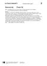<div class="loader"></div></div><input class="toggler" type="checkbox" id="id_129"><div class="content"><h3><label for="id_129">Exercice 4a) (docx)</label></h3><h4>Transkription zu CD 1, Track 15</h4><ul class="files"><li class=""><a onclick="" target="_blank" href="content/media/transkript/at_l2_15.docx" data-file-type="application/vnd.openxmlformats-officedocument.wordprocessingml.document">Öffnen</a></li><li class="save-link"><a onclick="" target="_blank" href="content/media/transkript/at_l2_15.docx" >Speichern unter</a></li></ul></div><div class="attached"><div class="material" data-material-id="6004" ><div class="thumb"><div class="loader"></div></div><div class="content"><h3>Le Cours intensif 2 </h3><h4>Allgemeine Ausgabe 3. Fremdsprache ab 2016</h4><div class="richtext"><b>Beschreibung:</b> Lehrerbuch mit Multimedia-CD (2. Lernjahr)<br><b>Produktnummer:</b> 978-3-12-563015-4</div><a target="_blank" class="single-link" href="https://www.klett.de/produkt/isbn/978-3-12-563015-4">Link zum Webshop</a></div></div></div></div></li></ul></div></div><div class="layer Nur-Materialien" data-type="materials" data-layer-id="bar22"><div class="page-wide-materials"><ul class="materials"><li><div class="material" data-material-id="1262" ><div class="thumb">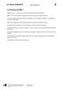<div class="loader"></div></div><input class="toggler" type="checkbox" id="id_130"><div class="content"><h3><label for="id_130">La France en fête ! (docx)</label></h3><h4>Editierbarer Lektionstext</h4><ul class="files"><li class=""><a onclick="" target="_blank" href="content/media/l-texte/st_l2_01.docx" data-file-type="application/vnd.openxmlformats-officedocument.wordprocessingml.document">Öffnen</a></li><li class="save-link"><a onclick="" target="_blank" href="content/media/l-texte/st_l2_01.docx" >Speichern unter</a></li></ul></div><div class="attached"><div class="material" data-material-id="6005" ><div class="thumb"><div class="loader"></div></div><div class="content"><h3>Le Cours intensif 2 </h3><h4>Allgemeine Ausgabe 3. Fremdsprache ab 2016</h4><div class="richtext"><b>Beschreibung:</b> Schülerbuch, Softcover (2. Lernjahr)<br><b>Produktnummer:</b> 978-3-12-563010-9</div><a target="_blank" class="single-link" href="https://www.klett.de/produkt/isbn/978-3-12-563010-9">Link zum Webshop</a></div></div></div></div></li><li><div class="material" data-material-id="1247" ><div class="thumb"><div class="loader"></div></div><input class="toggler" type="checkbox" id="id_131"><div class="content"><h3><label for="id_131">Lektionsbegleitendes Vokabular (pdf)</label></h3><h4>Ausdruckbare Liste</h4><ul class="files"><li class=""><a onclick="" target="_blank" href="content/media/fundus/fu_bev.pdf" data-file-type="application/pdf">Öffnen</a></li><li class="save-link"><a onclick="" target="_blank" href="content/media/fundus/fu_bev.pdf" >Speichern unter</a></li></ul></div><div class="attached"><div class="material" data-material-id="6005" ><div class="thumb"><div class="loader"></div></div><div class="content"><h3>Le Cours intensif 2 </h3><h4>Allgemeine Ausgabe 3. Fremdsprache ab 2016</h4><div class="richtext"><b>Beschreibung:</b> Schülerbuch, Softcover (2. Lernjahr)<br><b>Produktnummer:</b> 978-3-12-563010-9</div><a target="_blank" class="single-link" href="https://www.klett.de/produkt/isbn/978-3-12-563010-9">Link zum Webshop</a></div></div></div></div></li><li><div class="material" data-material-id="1248" ><div class="thumb"><div class="loader"></div></div><input class="toggler" type="checkbox" id="id_132"><div class="content"><h3><label for="id_132">Alphabetische Wortliste (pdf)</label></h3><h4>Ausdruckbare Liste</h4><ul class="files"><li class=""><a onclick="" target="_blank" href="content/media/fundus/fu_awl.pdf" data-file-type="application/pdf">Öffnen</a></li><li class="save-link"><a onclick="" target="_blank" href="content/media/fundus/fu_awl.pdf" >Speichern unter</a></li></ul></div><div class="attached"><div class="material" data-material-id="6005" ><div class="thumb"><div class="loader"></div></div><div class="content"><h3>Le Cours intensif 2 </h3><h4>Allgemeine Ausgabe 3. Fremdsprache ab 2016</h4><div class="richtext"><b>Beschreibung:</b> Schülerbuch, Softcover (2. Lernjahr)<br><b>Produktnummer:</b> 978-3-12-563010-9</div><a target="_blank" class="single-link" href="https://www.klett.de/produkt/isbn/978-3-12-563010-9">Link zum Webshop</a></div></div></div></div></li><li><div class="material" data-material-id="1251" ><div class="thumb">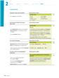<div class="loader"></div></div><input class="toggler" type="checkbox" id="id_133"><div class="content"><h3><label for="id_133">Lektionsbegleitende Grammatik (pdf)</label></h3><ul class="files"><li class=""><a onclick="" target="_blank" href="content/media/gram/fu_l2_01.pdf" data-file-type="application/pdf">Öffnen</a></li><li class="save-link"><a onclick="" target="_blank" href="content/media/gram/fu_l2_01.pdf" >Speichern unter</a></li></ul></div><div class="attached"><div class="material" data-material-id="6005" ><div class="thumb"><div class="loader"></div></div><div class="content"><h3>Le Cours intensif 2 </h3><h4>Allgemeine Ausgabe 3. Fremdsprache ab 2016</h4><div class="richtext"><b>Beschreibung:</b> Schülerbuch, Softcover (2. Lernjahr)<br><b>Produktnummer:</b> 978-3-12-563010-9</div><a target="_blank" class="single-link" href="https://www.klett.de/produkt/isbn/978-3-12-563010-9">Link zum Webshop</a></div></div></div></div></li></ul></div></div><div class="layer Nur-Materialien" data-type="materials" data-layer-id="bar18"><div class="page-wide-materials"><ul class="materials"><li><div class="material" data-material-id="1375" ><div class="thumb"><div class="loader"></div></div><input class="toggler" type="checkbox" id="id_134"><div class="content"><h3><label for="id_134">Blätterbares Lehrerbuch (html)</label></h3><h4>S. 28</h4><div class="richtext"><p>Das Lehrerbuch bietet viele methodische Hinweise zu jeder Leçon, Kopiervorlagen u.v.m. </p></div><ul class="files"><li class=""><a onclick="" target="_blank" href="content/media/ep-1405/app.html?page=30" data-file-type="tgd-epaper" data-dimension="1200-800">Öffnen</a></li></ul></div><div class="attached"><div class="material" data-material-id="6004" ><div class="thumb"><div class="loader"></div></div><div class="content"><h3>Le Cours intensif 2 </h3><h4>Allgemeine Ausgabe 3. Fremdsprache ab 2016</h4><div class="richtext"><b>Beschreibung:</b> Lehrerbuch mit Multimedia-CD (2. Lernjahr)<br><b>Produktnummer:</b> 978-3-12-563015-4</div><a target="_blank" class="single-link" href="https://www.klett.de/produkt/isbn/978-3-12-563015-4">Link zum Webshop</a></div></div></div></div></li></ul></div></div></div></div></div><div class="page " data-title="27" data-pos="29"><div class="content"><div class="rough-image" style="background: url('content/pages/thumbs_0.png') -21504px 0 no-repeat; background-size: auto 100% !important;"></div><div class="pagr-thumb" style="background: url('content/pages/thumbs_0.png') -2688px 0 no-repeat;"></div><div class="image-layers"><div><div style="background-image: url('content/pages/page_28/Scale1.png')"></div></div><div><div style="background-image: url('content/pages/page_28/Scale2.png')"></div></div><div><div style="background-image: url('content/pages/page_28/Scale4.png')"></div></div></div><section class="searchable"><p class="text">septembre juillet juin septembre décembre vous êtes chez votre correspondant montpellier et vous voulez organiser votre week-end vous entendez la radio les sorties du week-end et notez des informations sur les trois évènements proposés nom lieu horaire prix autres travaillez deux choisissez un évènement de qui vous plaît et proposez votre correspondant de venir avec vous votre correspondant n’aime pas votre idée et propose une autre sortie mettez-vous d’accord sur ce que vous allez faire en plus écouter l1/15 parler in der tâche nale im cahier d’activités auf seite erstellt ihr einen podcast über ein festival einen sehenswerten ort dazu lernt ihr feste und sehenswürdigkeiten zu beschreiben eure aussagen mit adverbien genauer zu formulieren la fête de la musique ou faites de la musique lieu le premier jour de l’été elle existe maintenant dans plus de pays les journées du patrimoine ont lieu le dimanche de septembre presque tous les monuments sont ouverts au public strategie hörverstehen iv notizen machen beim hören wenn ihr einem hörtext gezielt informationen entnehmen wollt kann es hilfreich sein sich beim hören notizen zu machen weitere informationen auf seite les francofolies de la rochelle existent depuis 1985 tous les ans en juillet plus de personnes viennent aux concerts vingt-sept le décembre c’est la fête des lumières lyon</p><link type="image/svg+xml" href="content/pages/page_28/searchwords.svg"></section><div class="draw-layer"><svg xmlns="http://www.w3.org/2000/svg" width="768" height="1024"></svg></div><div class="note-icon-layer"></div><div class="annotation-layers"><div class="layer Eigene-Materialien" data-type="materials" data-layer-id="bar1"><div class="page-wide-materials"><ul class="materials"></ul></div></div><div class="layer Auszeichnung1" data-type="vector" data-layer-id="layer16"><a class="rect" style="position: absolute;z-index:1; left: 53.77%; top: 62.2%; width: 3.64%; height: 3.51%"></a><a class="rect" style="position: absolute;z-index:1; left: 71.74%; top: 28.02%; width: 9.5%; height: 3.51%"></a><a class="rect" style="position: absolute;z-index:1; left: 80.98%; top: 27.05%; width: 9.89%; height: 3.51%"></a><a class="rect" style="position: absolute;z-index:1; left: 71.87%; top: 29.58%; width: 1.95%; height: 3.51%"></a><a class="rect" style="position: absolute;z-index:1; left: 35.41%; top: 10.74%; width: 4.16%; height: 3.51%"></a><div class="page-wide-materials"><ul class="materials"></ul></div></div><div class="layer Loesungen" data-type="anchors" data-layer-id="layer15"><div class="tooltip" data-placement=""><div class="tooltip-top"><div class="tooltip-content"><p>Lösungen</p></div></div></div><div class="anchor " style="left: 3.12%; top: 77.83%;" ><div class="anchor-materials" data-layer="layer15"><ul class="materials"><li><div class="material" data-material-id="1350" ><div class="thumb">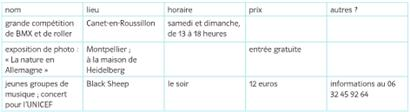<div class="loader"></div></div><div class="content"><h3>a) (pdf)</h3><ul class="files"><li class=""><a onclick="" target="_blank" href="content/media/lsg/563015_26_4_lsg.pdf" data-file-type="application/pdf">Öffnen</a></li><li class="save-link"><a onclick="" target="_blank" href="content/media/lsg/563015_26_4_lsg.pdf" >Speichern unter</a></li></ul></div></div></li><li><div class="material" data-material-id="4038" ><div class="richtext"><p>b)<i></i><br /><i>Individuelle Schülerantworten,</i> z. B.: <br /><b>A</b> : Tu as entendu, il y a une exposition photo à la maison de Heidelberg samedi. <br /><b>B</b> : Ce sont des photos sur quoi ? <br /><b>A</b> : Sur la nature en Allemagne ! Je trouve ça très intéressant, j’aimerais bien voir cette expo. Pas toi ? <br /><b>B</b> : Bof… Les expos photos, c’est pas trop mon truc. En plus, il doit faire très beau ce week-end, alors j’ai envie d’être dehors. Il y a une compétition de BMX et de roller à Canet-en-Roussillon. Tu ne veux pas venir avec moi ? <br /><b>A</b> : Ah non, je déteste le sport. Et puis, comment on va aller à Canet-en-Roussillon ? Il n’y a pas de bus ! <br /><b>B</b> : Ça, ce n’est pas un problème. Mon frère a une voiture. <br /><b>A</b> : Ecoute, je te propose quelque chose : toi, tu vas à la compétition avec ton frère et moi, je vais voir l’exposition. Et le soir, on se retrouve au Black Sheep, il y a un concert. D’accord ? <br /><b>B</b> : C’est une idée super, d’accord !</p><a class="print">Drucken</a></div></div></li></ul></div></div><div class="page-wide-materials"><ul class="materials"></ul></div></div><div class="layer Differenzierung" data-type="anchors" data-layer-id="layer14"><div class="tooltip" data-placement=""><div class="tooltip-top"><div class="tooltip-content"><p>Differenzierung</p></div></div></div><div class="anchor Text-Bild-Info-Inhalt" style="left: 50.65%; top: 95.11%;" ><div class="anchor-materials" data-layer="layer14"><ul class="materials"><li><div class="material" data-material-id="4323" ><div class="richtext"><p>Als Hilfe für SB, S. 27, Nr. 4b) sind in <i>En plus</i>, S. 137, Nr. 1 bereits Ideen für den Dialog vorgegeben.</p><a class="print">Drucken</a></div></div></li></ul></div></div><div class="page-wide-materials"><ul class="materials"></ul></div></div><div class="layer Multimedia always-visible" data-type="media" data-layer-id="layer5"><div class="tooltip" data-placement=""><div class="tooltip-top"><div class="tooltip-content"><p class="tooltip-title">CD 1, Track 15: Exercice 4a)</p><p class="tooltip-subtitle"></p></div></div></div><div class="anchor Medium-Sprache" style="left: 9.63%; top: 80.95%;" ><div class="anchor-materials" data-layer="layer5"><ul class="materials"><li><div class="material" data-material-id="1014" ><div class="content"><h3>CD 1, Track 15: Exercice 4a) (mp3)</h3><ul class="files"><li class=""><a onclick="" target="_blank" href="content/media/audios/lcd1/lcd1_015.mp3" data-file-type="audio/mpeg">Öffnen</a></li></ul></div></div></li></ul></div></div><div class="page-wide-materials"><ul class="materials"></ul></div></div><div class="layer Sprungmarke always-visible" data-type="root" data-layer-id="layer0"><a href="?page=174" target="_blank" class="rect" style="position: absolute;z-index:1; left: 66.27%; top: 90.23%; width: 7.81%; height: 2.53%"></a><a href="?page=139" target="_blank" class="rect" style="position: absolute;z-index:1; left: 47.91%; top: 90.33%; width: 15.23%; height: 2.53%"></a><div class="page-wide-materials"><ul class="materials"></ul></div></div><div class="layer Nur-Materialien" data-type="materials" data-layer-id="bar20"><div class="page-wide-materials"><ul class="materials"><li><div class="material" data-material-id="1117" ><div class="thumb"><div class="loader"></div></div><input class="toggler" type="checkbox" id="id_135"><div class="content"><h3><label for="id_135">CD 1, Track 14: La France en fête ! (mp3)</label></h3><h4>Audio zu S. 26–27</h4><ul class="files"><li class=""><a onclick="" target="_blank" href="content/media/audios/lcd1/lcd1_014.mp3" data-file-type="audio/mpeg">Öffnen</a></li><li class="save-link"><a onclick="" target="_blank" href="content/media/audios/lcd1/lcd1_014.mp3" >Speichern unter</a></li></ul></div><div class="attached"><div class="material" data-material-id="6003" ><div class="thumb"><div class="loader"></div></div><div class="content"><h3>Le Cours intensif 2 </h3><h4>Allgemeine Ausgabe 3. Fremdsprache ab 2016</h4><div class="richtext"><b>Beschreibung:</b> Cahier d'activités mit MP3-CD und Übungssoftware (2. Lernjahr)<br><b>Produktnummer:</b> 978-3-12-563011-6</div><a target="_blank" class="single-link" href="https://www.klett.de/produkt/isbn/978-3-12-563011-6">Link zum Webshop</a></div></div></div></div></li><li><div class="material" data-material-id="1118" ><div class="thumb"><div class="loader"></div></div><input class="toggler" type="checkbox" id="id_136"><div class="content"><h3><label for="id_136">CD 1, Track 15: Exercice 4a) (mp3)</label></h3><h4>Audio zu S. 27, Nr. 4a)</h4><ul class="files"><li class=""><a onclick="" target="_blank" href="content/media/audios/lcd1/lcd1_015.mp3" data-file-type="audio/mpeg">Öffnen</a></li><li class="save-link"><a onclick="" target="_blank" href="content/media/audios/lcd1/lcd1_015.mp3" >Speichern unter</a></li></ul></div><div class="attached"><div class="material" data-material-id="6003" ><div class="thumb"><div class="loader"></div></div><div class="content"><h3>Le Cours intensif 2 </h3><h4>Allgemeine Ausgabe 3. Fremdsprache ab 2016</h4><div class="richtext"><b>Beschreibung:</b> Cahier d'activités mit MP3-CD und Übungssoftware (2. Lernjahr)<br><b>Produktnummer:</b> 978-3-12-563011-6</div><a target="_blank" class="single-link" href="https://www.klett.de/produkt/isbn/978-3-12-563011-6">Link zum Webshop</a></div></div></div></div></li><li><div class="material" data-material-id="1119" ><div class="thumb"><div class="loader"></div></div><input class="toggler" type="checkbox" id="id_137"><div class="content"><h3><label for="id_137">Exercice 4a) (docx)</label></h3><h4>Transkription zu CD 1, Track 15</h4><ul class="files"><li class=""><a onclick="" target="_blank" href="content/media/transkript/at_l2_15.docx" data-file-type="application/vnd.openxmlformats-officedocument.wordprocessingml.document">Öffnen</a></li><li class="save-link"><a onclick="" target="_blank" href="content/media/transkript/at_l2_15.docx" >Speichern unter</a></li></ul></div><div class="attached"><div class="material" data-material-id="6004" ><div class="thumb"><div class="loader"></div></div><div class="content"><h3>Le Cours intensif 2 </h3><h4>Allgemeine Ausgabe 3. Fremdsprache ab 2016</h4><div class="richtext"><b>Beschreibung:</b> Lehrerbuch mit Multimedia-CD (2. Lernjahr)<br><b>Produktnummer:</b> 978-3-12-563015-4</div><a target="_blank" class="single-link" href="https://www.klett.de/produkt/isbn/978-3-12-563015-4">Link zum Webshop</a></div></div></div></div></li></ul></div></div><div class="layer Nur-Materialien" data-type="materials" data-layer-id="bar22"><div class="page-wide-materials"><ul class="materials"><li><div class="material" data-material-id="1262" ><div class="thumb"><div class="loader"></div></div><input class="toggler" type="checkbox" id="id_138"><div class="content"><h3><label for="id_138">La France en fête ! (docx)</label></h3><h4>Editierbarer Lektionstext</h4><ul class="files"><li class=""><a onclick="" target="_blank" href="content/media/l-texte/st_l2_01.docx" data-file-type="application/vnd.openxmlformats-officedocument.wordprocessingml.document">Öffnen</a></li><li class="save-link"><a onclick="" target="_blank" href="content/media/l-texte/st_l2_01.docx" >Speichern unter</a></li></ul></div><div class="attached"><div class="material" data-material-id="6005" ><div class="thumb"><div class="loader"></div></div><div class="content"><h3>Le Cours intensif 2 </h3><h4>Allgemeine Ausgabe 3. Fremdsprache ab 2016</h4><div class="richtext"><b>Beschreibung:</b> Schülerbuch, Softcover (2. Lernjahr)<br><b>Produktnummer:</b> 978-3-12-563010-9</div><a target="_blank" class="single-link" href="https://www.klett.de/produkt/isbn/978-3-12-563010-9">Link zum Webshop</a></div></div></div></div></li><li><div class="material" data-material-id="1247" ><div class="thumb"><div class="loader"></div></div><input class="toggler" type="checkbox" id="id_139"><div class="content"><h3><label for="id_139">Lektionsbegleitendes Vokabular (pdf)</label></h3><h4>Ausdruckbare Liste</h4><ul class="files"><li class=""><a onclick="" target="_blank" href="content/media/fundus/fu_bev.pdf" data-file-type="application/pdf">Öffnen</a></li><li class="save-link"><a onclick="" target="_blank" href="content/media/fundus/fu_bev.pdf" >Speichern unter</a></li></ul></div><div class="attached"><div class="material" data-material-id="6005" ><div class="thumb"><div class="loader"></div></div><div class="content"><h3>Le Cours intensif 2 </h3><h4>Allgemeine Ausgabe 3. Fremdsprache ab 2016</h4><div class="richtext"><b>Beschreibung:</b> Schülerbuch, Softcover (2. Lernjahr)<br><b>Produktnummer:</b> 978-3-12-563010-9</div><a target="_blank" class="single-link" href="https://www.klett.de/produkt/isbn/978-3-12-563010-9">Link zum Webshop</a></div></div></div></div></li><li><div class="material" data-material-id="1248" ><div class="thumb"><div class="loader"></div></div><input class="toggler" type="checkbox" id="id_140"><div class="content"><h3><label for="id_140">Alphabetische Wortliste (pdf)</label></h3><h4>Ausdruckbare Liste</h4><ul class="files"><li class=""><a onclick="" target="_blank" href="content/media/fundus/fu_awl.pdf" data-file-type="application/pdf">Öffnen</a></li><li class="save-link"><a onclick="" target="_blank" href="content/media/fundus/fu_awl.pdf" >Speichern unter</a></li></ul></div><div class="attached"><div class="material" data-material-id="6005" ><div class="thumb"><div class="loader"></div></div><div class="content"><h3>Le Cours intensif 2 </h3><h4>Allgemeine Ausgabe 3. Fremdsprache ab 2016</h4><div class="richtext"><b>Beschreibung:</b> Schülerbuch, Softcover (2. Lernjahr)<br><b>Produktnummer:</b> 978-3-12-563010-9</div><a target="_blank" class="single-link" href="https://www.klett.de/produkt/isbn/978-3-12-563010-9">Link zum Webshop</a></div></div></div></div></li><li><div class="material" data-material-id="1251" ><div class="thumb"><div class="loader"></div></div><input class="toggler" type="checkbox" id="id_141"><div class="content"><h3><label for="id_141">Lektionsbegleitende Grammatik (pdf)</label></h3><ul class="files"><li class=""><a onclick="" target="_blank" href="content/media/gram/fu_l2_01.pdf" data-file-type="application/pdf">Öffnen</a></li><li class="save-link"><a onclick="" target="_blank" href="content/media/gram/fu_l2_01.pdf" >Speichern unter</a></li></ul></div><div class="attached"><div class="material" data-material-id="6005" ><div class="thumb"><div class="loader"></div></div><div class="content"><h3>Le Cours intensif 2 </h3><h4>Allgemeine Ausgabe 3. Fremdsprache ab 2016</h4><div class="richtext"><b>Beschreibung:</b> Schülerbuch, Softcover (2. Lernjahr)<br><b>Produktnummer:</b> 978-3-12-563010-9</div><a target="_blank" class="single-link" href="https://www.klett.de/produkt/isbn/978-3-12-563010-9">Link zum Webshop</a></div></div></div></div></li></ul></div></div><div class="layer Nur-Materialien" data-type="materials" data-layer-id="bar18"><div class="page-wide-materials"><ul class="materials"><li><div class="material" data-material-id="1375" ><div class="thumb"><div class="loader"></div></div><input class="toggler" type="checkbox" id="id_142"><div class="content"><h3><label for="id_142">Blätterbares Lehrerbuch (html)</label></h3><h4>S. 28</h4><div class="richtext"><p>Das Lehrerbuch bietet viele methodische Hinweise zu jeder Leçon, Kopiervorlagen u.v.m. </p></div><ul class="files"><li class=""><a onclick="" target="_blank" href="content/media/ep-1405/app.html?page=30" data-file-type="tgd-epaper" data-dimension="1200-800">Öffnen</a></li></ul></div><div class="attached"><div class="material" data-material-id="6004" ><div class="thumb"><div class="loader"></div></div><div class="content"><h3>Le Cours intensif 2 </h3><h4>Allgemeine Ausgabe 3. Fremdsprache ab 2016</h4><div class="richtext"><b>Beschreibung:</b> Lehrerbuch mit Multimedia-CD (2. Lernjahr)<br><b>Produktnummer:</b> 978-3-12-563015-4</div><a target="_blank" class="single-link" href="https://www.klett.de/produkt/isbn/978-3-12-563015-4">Link zum Webshop</a></div></div></div></div></li></ul></div></div></div></div></div><div class="page " data-title="28" data-pos="30"><div class="content"><div class="rough-image" style="background: url('content/pages/thumbs_0.png') -22272px 0 no-repeat; background-size: auto 100% !important;"></div><div class="pagr-thumb" style="background: url('content/pages/thumbs_0.png') -2784px 0 no-repeat;"></div><div class="image-layers"><div><div style="background-image: url('content/pages/page_29/Scale1.png')"></div></div><div><div style="background-image: url('content/pages/page_29/Scale2.png')"></div></div><div><div style="background-image: url('content/pages/page_29/Scale4.png')"></div></div></div><section class="searchable"><p class="text">orange florent 19:42 slt pauline où on t'attend 18:24 hé t'as oublié la répèt 18:27 keske tu fais 19:02 arrête pauline tu crois vraiment que c'est le moment de faire ta diva 18:46 rapplique immédiatement 19:28 faites de la musique aux batignolles la fête de la musique lieu tous les ans le juin avec des concerts gratuits partout en france les musiciens amateurs peuvent jouer et chanter dans la rue ou dans des cafés l’ambiance est géniale les gens sortent en famille ou avec des amis et font la fête dans la rue paris le métro roule exceptionnellement toute la nuit comme ça tout le monde peut rentrer tard hier le groupe les dilettantes aussi participé la fête de la musique aux batignolles les dilettantes c’est le groupe de florent lucas fanny et… pauline le groupe est récent il existe depuis seulement six mois mais les copains ont déjà six chansons et hier soir c’était le grand soir leur premier concert en public sur la place lobligeois la soirée très mal commencé mais heureusement tout s’est bien terminé florent lucas et les fi lles avaient rendez-vous heures sur la place lobligeois pour une dernière répétition avant leur concert heures mais 19h30 pauline la chanteuse n’était toujours pas là normalement elle avait cinq minutes de retard mais là… florent était complètement stressé et regardait sans arrêt son portable florent ne savait plus quoi faire dans dix minutes ils devaient être sur scène et sans leur chanteuse ça allait sûrement être une catastrophe il fallait trouver une solution florent ecoute fanny tu dois chanter la place de pauline fanny moi ça va pas non je chante comme une casserole florent alors là je ne te crois pas je suis sûr que tu chantes bien lucas fanny on sait que c’est pas évident mais on croit en toi on va monter ensemble sur scène ça va aller les trois copains sont courageusement montés sur scène dans le public ils ont vite reconnu plein d’élèves de leur lycée lucas pensé si on rate ce concert ça va être trop la honte… fanny commencé chanter leur première chanson… et là la cata… fanny était super au clavier mais elle chantait vraiment comme une casserole… des personnes ont siffl fanny est devenue toute rouge et arrêté de chanter florent voulait déjà quitter la scène quand lucas pris le micro… l1/16 entrée atelier atelier coin lecture bilan vingt-huit</p><link type="image/svg+xml" href="content/pages/page_29/searchwords.svg"></section><div class="draw-layer"><svg xmlns="http://www.w3.org/2000/svg" width="768" height="1024"></svg></div><div class="note-icon-layer"></div><div class="annotation-layers"><div class="layer Eigene-Materialien" data-type="materials" data-layer-id="bar1"><div class="page-wide-materials"><ul class="materials"></ul></div></div><div class="layer Auszeichnung1" data-type="vector" data-layer-id="layer16"><a class="rect" style="position: absolute;z-index:1; left: 25.65%; top: 13.37%; width: 5.72%; height: 3.51%"></a><a class="rect" style="position: absolute;z-index:1; left: 49.08%; top: 13.28%; width: 7.68%; height: 3.51%"></a><a class="rect" style="position: absolute;z-index:1; left: 16.01%; top: 14.94%; width: 7.29%; height: 3.51%"></a><a class="rect" style="position: absolute;z-index:1; left: 29.03%; top: 20.01%; width: 4.29%; height: 3.32%"></a><a class="rect" style="position: absolute;z-index:1; left: 26.82%; top: 29.58%; width: 4.81%; height: 3.51%"></a><a class="rect" style="position: absolute;z-index:1; left: 45.05%; top: 29.58%; width: 7.81%; height: 3.51%"></a><a class="rect" style="position: absolute;z-index:1; left: 42.83%; top: 34.57%; width: 3.25%; height: 3.51%"></a><a class="rect" style="position: absolute;z-index:1; left: 15.88%; top: 36.03%; width: 11.19%; height: 3.51%"></a><a class="rect" style="position: absolute;z-index:1; left: 31.64%; top: 36.13%; width: 3.64%; height: 3.51%"></a><a class="rect" style="position: absolute;z-index:1; left: 39.32%; top: 36.13%; width: 6.38%; height: 3.51%"></a><a class="rect" style="position: absolute;z-index:1; left: 16.14%; top: 42.67%; width: 7.55%; height: 3.51%"></a><a class="rect" style="position: absolute;z-index:1; left: 38.93%; top: 44.23%; width: 1.17%; height: 3.51%"></a><a class="rect" style="position: absolute;z-index:1; left: 43.88%; top: 44.23%; width: 10.15%; height: 3.51%"></a><a class="rect" style="position: absolute;z-index:1; left: 16.27%; top: 45.8%; width: 10.67%; height: 3.51%"></a><a class="rect" style="position: absolute;z-index:1; left: 31.25%; top: 45.7%; width: 21.48%; height: 3.51%"></a><a class="rect" style="position: absolute;z-index:1; left: 29.16%; top: 47.55%; width: 11.58%; height: 3.51%"></a><a class="rect" style="position: absolute;z-index:1; left: 70.83%; top: 50.68%; width: 2.86%; height: 3.51%"></a><a class="rect" style="position: absolute;z-index:1; left: 73.95%; top: 50.78%; width: 5.72%; height: 3.51%"></a><a class="rect" style="position: absolute;z-index:1; left: 80.85%; top: 52.34%; width: 2.99%; height: 3.51%"></a><a class="rect" style="position: absolute;z-index:1; left: 69.01%; top: 55.27%; width: 4.16%; height: 1.56%"></a><a class="rect" style="position: absolute;z-index:1; left: 68.75%; top: 59.17%; width: 6.25%; height: 2.14%"></a><a class="rect" style="position: absolute;z-index:1; left: 68.61%; top: 61.52%; width: 10.41%; height: 1.46%"></a><a class="rect" style="position: absolute;z-index:1; left: 26.56%; top: 53.9%; width: 7.16%; height: 3.51%"></a><a class="rect" style="position: absolute;z-index:1; left: 44.53%; top: 59.76%; width: 9.89%; height: 3.51%"></a><a class="rect" style="position: absolute;z-index:1; left: 42.05%; top: 67.77%; width: 5.72%; height: 3.51%"></a><a class="rect" style="position: absolute;z-index:1; left: 17.31%; top: 69.43%; width: 6.38%; height: 3.51%"></a><a class="rect" style="position: absolute;z-index:1; left: 41.66%; top: 75.97%; width: 6.38%; height: 3.51%"></a><a class="rect" style="position: absolute;z-index:1; left: 41.79%; top: 80.76%; width: 3.25%; height: 3.51%"></a><a class="rect" style="position: absolute;z-index:1; left: 20.7%; top: 82.42%; width: 7.55%; height: 3.51%"></a><a class="rect" style="position: absolute;z-index:1; left: 54.29%; top: 87.4%; width: 4.68%; height: 3.51%"></a><a class="rect" style="position: absolute;z-index:1; left: 43.09%; top: 84.17%; width: 3.9%; height: 3.51%"></a><a class="rect" style="position: absolute;z-index:1; left: 33.72%; top: 20.01%; width: 15.75%; height: 3.32%"></a><div class="page-wide-materials"><ul class="materials"></ul></div></div><div class="layer Auszeichnung3" data-type="vector" data-layer-id="layer17"><a class="rect" style="position: absolute;z-index:1; left: 31.9%; top: 14.84%; width: 5.72%; height: 2.05%"></a><a class="rect" style="position: absolute;z-index:1; left: 33.85%; top: 21.28%; width: 15.62%; height: 2.05%"></a><a class="rect" style="position: absolute;z-index:1; left: 51.82%; top: 22.94%; width: 3.51%; height: 2.05%"></a><a class="rect" style="position: absolute;z-index:1; left: 17.96%; top: 26.26%; width: 3.51%; height: 2.05%"></a><a class="rect" style="position: absolute;z-index:1; left: 42.7%; top: 26.26%; width: 4.29%; height: 2.05%"></a><a class="rect" style="position: absolute;z-index:1; left: 44.79%; top: 31.05%; width: 8.07%; height: 2.05%"></a><a class="rect" style="position: absolute;z-index:1; left: 31.9%; top: 32.81%; width: 3.64%; height: 2.05%"></a><a class="rect" style="position: absolute;z-index:1; left: 39.19%; top: 36.03%; width: 3.38%; height: 2.05%"></a><a class="rect" style="position: absolute;z-index:1; left: 44.4%; top: 36.03%; width: 1.56%; height: 2.05%"></a><a class="rect" style="position: absolute;z-index:1; left: 15.88%; top: 37.5%; width: 11.19%; height: 2.05%"></a><a class="rect" style="position: absolute;z-index:1; left: 35.54%; top: 37.59%; width: 3.77%; height: 2.05%"></a><a class="rect" style="position: absolute;z-index:1; left: 44.14%; top: 45.7%; width: 6.77%; height: 2.05%"></a><a class="rect" style="position: absolute;z-index:1; left: 29.29%; top: 49.31%; width: 11.58%; height: 1.75%"></a><a class="rect" style="position: absolute;z-index:1; left: 16.14%; top: 50.68%; width: 7.55%; height: 2.05%"></a><a class="rect" style="position: absolute;z-index:1; left: 16.01%; top: 57.12%; width: 7.68%; height: 2.05%"></a><a class="rect" style="position: absolute;z-index:1; left: 17.44%; top: 70.89%; width: 3.9%; height: 2.05%"></a><a class="rect" style="position: absolute;z-index:1; left: 38.41%; top: 71.48%; width: 7.55%; height: 1.66%"></a><a class="rect" style="position: absolute;z-index:1; left: 34.63%; top: 75.97%; width: 13.02%; height: 2.05%"></a><a class="rect" style="position: absolute;z-index:1; left: 38.28%; top: 77.73%; width: 3.12%; height: 1.85%"></a><a class="rect" style="position: absolute;z-index:1; left: 42.96%; top: 84.47%; width: 7.29%; height: 1.56%"></a><a class="rect" style="position: absolute;z-index:1; left: 73.95%; top: 52.34%; width: 5.85%; height: 2.05%"></a><a class="rect" style="position: absolute;z-index:1; left: 70.96%; top: 52.14%; width: 2.99%; height: 2.05%"></a><a class="rect" style="position: absolute;z-index:1; left: 68.09%; top: 61.32%; width: 10.93%; height: 1.66%"></a><a class="rect" style="position: absolute;z-index:1; left: 16.27%; top: 47.26%; width: 10.54%; height: 2.05%"></a><a class="rect" style="position: absolute;z-index:1; left: 34.11%; top: 66.21%; width: 4.42%; height: 2.05%"></a><div class="page-wide-materials"><ul class="materials"></ul></div></div><div class="layer Multimedia always-visible" data-type="media" data-layer-id="layer5"><div class="tooltip" data-placement=""><div class="tooltip-top"><div class="tooltip-content"><p class="tooltip-title">CD 1, Track 16: Faites de la musique aux Batignolles !</p><p class="tooltip-subtitle"></p></div></div></div><div class="anchor Medium-Sprache" style="left: 9.63%; top: 15.13%;" ><div class="anchor-materials" data-layer="layer5"><ul class="materials"><li><div class="material" data-material-id="1015" ><div class="content"><h3>CD 1, Track 16: Faites de la musique aux Batignolles ! (mp3)</h3><ul class="files"><li class=""><a onclick="" target="_blank" href="content/media/audios/lcd1/lcd1_016.mp3" data-file-type="audio/mpeg">Öffnen</a></li></ul></div></div></li></ul></div></div><div class="page-wide-materials"><ul class="materials"></ul></div></div><div class="layer Nur-Materialien" data-type="materials" data-layer-id="bar20"><div class="page-wide-materials"><ul class="materials"><li><div class="material" data-material-id="1120" ><div class="thumb"><div class="loader"></div></div><input class="toggler" type="checkbox" id="id_143"><div class="content"><h3><label for="id_143">CD 1, Track 16: Faites de la musique aux Batignolles ! (mp3)</label></h3><h4>Audio zu S. 28–29, Nr. 1</h4><ul class="files"><li class=""><a onclick="" target="_blank" href="content/media/audios/lcd1/lcd1_016.mp3" data-file-type="audio/mpeg">Öffnen</a></li><li class="save-link"><a onclick="" target="_blank" href="content/media/audios/lcd1/lcd1_016.mp3" >Speichern unter</a></li></ul></div><div class="attached"><div class="material" data-material-id="6003" ><div class="thumb"><div class="loader"></div></div><div class="content"><h3>Le Cours intensif 2 </h3><h4>Allgemeine Ausgabe 3. Fremdsprache ab 2016</h4><div class="richtext"><b>Beschreibung:</b> Cahier d'activités mit MP3-CD und Übungssoftware (2. Lernjahr)<br><b>Produktnummer:</b> 978-3-12-563011-6</div><a target="_blank" class="single-link" href="https://www.klett.de/produkt/isbn/978-3-12-563011-6">Link zum Webshop</a></div></div></div></div></li></ul></div></div><div class="layer Nur-Materialien" data-type="materials" data-layer-id="bar22"><div class="page-wide-materials"><ul class="materials"><li><div class="material" data-material-id="1401" ><div class="thumb">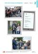<div class="loader"></div></div><input class="toggler" type="checkbox" id="id_144"><div class="content"><h3><label for="id_144">Folie 2/1 (pdf)</label></h3><h4>Passend zu S. 28–29</h4><ul class="files"><li class=""><a onclick="" target="_blank" href="content/media/fundus/563015_folien_l2_2-1.pdf" data-file-type="application/pdf">Öffnen</a></li><li class="save-link"><a onclick="" target="_blank" href="content/media/fundus/563015_folien_l2_2-1.pdf" >Speichern unter</a></li></ul></div><div class="attached"><div class="material" data-material-id="6004" ><div class="thumb"><div class="loader"></div></div><div class="content"><h3>Le Cours intensif 2 </h3><h4>Allgemeine Ausgabe 3. Fremdsprache ab 2016</h4><div class="richtext"><b>Beschreibung:</b> Lehrerbuch mit Multimedia-CD (2. Lernjahr)<br><b>Produktnummer:</b> 978-3-12-563015-4</div><a target="_blank" class="single-link" href="https://www.klett.de/produkt/isbn/978-3-12-563015-4">Link zum Webshop</a></div></div></div></div></li><li><div class="material" data-material-id="1263" ><div class="thumb">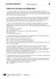<div class="loader"></div></div><input class="toggler" type="checkbox" id="id_145"><div class="content"><h3><label for="id_145">Faites de la musique aux Batignolles ! (docx)</label></h3><h4>Editierbarer Lektionstext</h4><ul class="files"><li class=""><a onclick="" target="_blank" href="content/media/l-texte/st_l2_02.docx" data-file-type="application/vnd.openxmlformats-officedocument.wordprocessingml.document">Öffnen</a></li><li class="save-link"><a onclick="" target="_blank" href="content/media/l-texte/st_l2_02.docx" >Speichern unter</a></li></ul></div><div class="attached"><div class="material" data-material-id="6005" ><div class="thumb"><div class="loader"></div></div><div class="content"><h3>Le Cours intensif 2 </h3><h4>Allgemeine Ausgabe 3. Fremdsprache ab 2016</h4><div class="richtext"><b>Beschreibung:</b> Schülerbuch, Softcover (2. Lernjahr)<br><b>Produktnummer:</b> 978-3-12-563010-9</div><a target="_blank" class="single-link" href="https://www.klett.de/produkt/isbn/978-3-12-563010-9">Link zum Webshop</a></div></div></div></div></li><li><div class="material" data-material-id="1247" ><div class="thumb"><div class="loader"></div></div><input class="toggler" type="checkbox" id="id_146"><div class="content"><h3><label for="id_146">Lektionsbegleitendes Vokabular (pdf)</label></h3><h4>Ausdruckbare Liste</h4><ul class="files"><li class=""><a onclick="" target="_blank" href="content/media/fundus/fu_bev.pdf" data-file-type="application/pdf">Öffnen</a></li><li class="save-link"><a onclick="" target="_blank" href="content/media/fundus/fu_bev.pdf" >Speichern unter</a></li></ul></div><div class="attached"><div class="material" data-material-id="6005" ><div class="thumb"><div class="loader"></div></div><div class="content"><h3>Le Cours intensif 2 </h3><h4>Allgemeine Ausgabe 3. Fremdsprache ab 2016</h4><div class="richtext"><b>Beschreibung:</b> Schülerbuch, Softcover (2. Lernjahr)<br><b>Produktnummer:</b> 978-3-12-563010-9</div><a target="_blank" class="single-link" href="https://www.klett.de/produkt/isbn/978-3-12-563010-9">Link zum Webshop</a></div></div></div></div></li><li><div class="material" data-material-id="1248" ><div class="thumb"><div class="loader"></div></div><input class="toggler" type="checkbox" id="id_147"><div class="content"><h3><label for="id_147">Alphabetische Wortliste (pdf)</label></h3><h4>Ausdruckbare Liste</h4><ul class="files"><li class=""><a onclick="" target="_blank" href="content/media/fundus/fu_awl.pdf" data-file-type="application/pdf">Öffnen</a></li><li class="save-link"><a onclick="" target="_blank" href="content/media/fundus/fu_awl.pdf" >Speichern unter</a></li></ul></div><div class="attached"><div class="material" data-material-id="6005" ><div class="thumb"><div class="loader"></div></div><div class="content"><h3>Le Cours intensif 2 </h3><h4>Allgemeine Ausgabe 3. Fremdsprache ab 2016</h4><div class="richtext"><b>Beschreibung:</b> Schülerbuch, Softcover (2. Lernjahr)<br><b>Produktnummer:</b> 978-3-12-563010-9</div><a target="_blank" class="single-link" href="https://www.klett.de/produkt/isbn/978-3-12-563010-9">Link zum Webshop</a></div></div></div></div></li><li><div class="material" data-material-id="1251" ><div class="thumb"><div class="loader"></div></div><input class="toggler" type="checkbox" id="id_148"><div class="content"><h3><label for="id_148">Lektionsbegleitende Grammatik (pdf)</label></h3><ul class="files"><li class=""><a onclick="" target="_blank" href="content/media/gram/fu_l2_01.pdf" data-file-type="application/pdf">Öffnen</a></li><li class="save-link"><a onclick="" target="_blank" href="content/media/gram/fu_l2_01.pdf" >Speichern unter</a></li></ul></div><div class="attached"><div class="material" data-material-id="6005" ><div class="thumb"><div class="loader"></div></div><div class="content"><h3>Le Cours intensif 2 </h3><h4>Allgemeine Ausgabe 3. Fremdsprache ab 2016</h4><div class="richtext"><b>Beschreibung:</b> Schülerbuch, Softcover (2. Lernjahr)<br><b>Produktnummer:</b> 978-3-12-563010-9</div><a target="_blank" class="single-link" href="https://www.klett.de/produkt/isbn/978-3-12-563010-9">Link zum Webshop</a></div></div></div></div></li></ul></div></div><div class="layer Nur-Materialien" data-type="materials" data-layer-id="bar19"><div class="page-wide-materials"><ul class="materials"><li><div class="material" data-material-id="1293" ><div class="thumb"><div class="loader"></div></div><input class="toggler" type="checkbox" id="id_149"><div class="content"><h3><label for="id_149">Cahier d'activités (html)</label></h3><h4>S. 12</h4><ul class="files"><li class=""><a onclick="" target="_blank" href="content/media/epaper/cda/app.html?page=14" data-file-type="tgd-epaper" data-dimension="1200-800">Öffnen</a></li></ul></div><div class="attached"><div class="material" data-material-id="6006" ><div class="thumb"><div class="loader"></div></div><div class="content"><h3>Le Cours intensif 2 </h3><h4>Allgemeine Ausgabe 3. Fremdsprache ab 2016</h4><div class="richtext"><b>Beschreibung:</b> Cahier d'activités Lehrerausgabe mit Lösungen, MP3-CD und Übungssoftware (2. Lernjahr)<br><b>Produktnummer:</b> 978-3-12-563019-2</div><a target="_blank" class="single-link" href="https://www.klett.de/produkt/isbn/978-3-12-563019-2">Link zum Webshop</a></div></div></div></div></li></ul></div></div><div class="layer Nur-Materialien" data-type="materials" data-layer-id="bar18"><div class="page-wide-materials"><ul class="materials"><li><div class="material" data-material-id="1376" ><div class="thumb"><div class="loader"></div></div><input class="toggler" type="checkbox" id="id_150"><div class="content"><h3><label for="id_150">Blätterbares Lehrerbuch (html)</label></h3><h4>S. 29</h4><div class="richtext"><p>Das Lehrerbuch bietet viele methodische Hinweise zu jeder Leçon, Kopiervorlagen u.v.m. </p></div><ul class="files"><li class=""><a onclick="" target="_blank" href="content/media/ep-1405/app.html?page=31" data-file-type="tgd-epaper" data-dimension="1200-800">Öffnen</a></li></ul></div><div class="attached"><div class="material" data-material-id="6004" ><div class="thumb"><div class="loader"></div></div><div class="content"><h3>Le Cours intensif 2 </h3><h4>Allgemeine Ausgabe 3. Fremdsprache ab 2016</h4><div class="richtext"><b>Beschreibung:</b> Lehrerbuch mit Multimedia-CD (2. Lernjahr)<br><b>Produktnummer:</b> 978-3-12-563015-4</div><a target="_blank" class="single-link" href="https://www.klett.de/produkt/isbn/978-3-12-563015-4">Link zum Webshop</a></div></div></div></div></li></ul></div></div><div class="layer Nur-Materialien" data-type="materials" data-layer-id="bar21"><div class="page-wide-materials"><ul class="materials"><li><div class="material" data-material-id="1454" ><div class="thumb">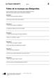<div class="loader"></div></div><input class="toggler" type="checkbox" id="id_151"><div class="content"><h3><label for="id_151">KV 2/1a: Faites de la musique aux Batignolles </label></h3><h4>Passend zu S. 28, Atelier A</h4><table class="files"><tr><td>Öffnen</td><td><a target="_blank" href="content/media/kv/wd01_563015_kv_l2_01a.pdf" data-file-type="application/pdf"> pdf </a></td><td><a target="_blank" href="content/media/kv/wd01_563015_kv_l2_kv1a.docx" data-file-type="application/vnd.openxmlformats-officedocument.wordprocessingml.document"> docx </a></td></tr><tr><td>Speichern unter</td><td class="save-link"><a target="_blank" href="content/media/kv/wd01_563015_kv_l2_01a.pdf" > pdf </a></td><td class="save-link"><a target="_blank" href="content/media/kv/wd01_563015_kv_l2_kv1a.docx" > docx </a></td></tr></table></div><div class="attached"><div class="material" data-material-id="6004" ><div class="thumb"><div class="loader"></div></div><div class="content"><h3>Le Cours intensif 2 </h3><h4>Allgemeine Ausgabe 3. Fremdsprache ab 2016</h4><div class="richtext"><b>Beschreibung:</b> Lehrerbuch mit Multimedia-CD (2. Lernjahr)<br><b>Produktnummer:</b> 978-3-12-563015-4</div><a target="_blank" class="single-link" href="https://www.klett.de/produkt/isbn/978-3-12-563015-4">Link zum Webshop</a></div></div></div></div></li><li><div class="material" data-material-id="1455" ><div class="thumb">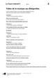<div class="loader"></div></div><input class="toggler" type="checkbox" id="id_152"><div class="content"><h3><label for="id_152">KV 2/1a: Faites de la musique aux Batignolles </label></h3><h4>Lösungen</h4><table class="files"><tr><td>Öffnen</td><td><a target="_blank" href="content/media/kv/wd01_563015_kv_l2_loes_01a.pdf" data-file-type="application/pdf"> pdf </a></td><td><a target="_blank" href="content/media/kv/wd01_563015_kv_l2_loes_kv1a.docx" data-file-type="application/vnd.openxmlformats-officedocument.wordprocessingml.document"> docx </a></td></tr><tr><td>Speichern unter</td><td class="save-link"><a target="_blank" href="content/media/kv/wd01_563015_kv_l2_loes_01a.pdf" > pdf </a></td><td class="save-link"><a target="_blank" href="content/media/kv/wd01_563015_kv_l2_loes_kv1a.docx" > docx </a></td></tr></table></div><div class="attached"><div class="material" data-material-id="6004" ><div class="thumb"><div class="loader"></div></div><div class="content"><h3>Le Cours intensif 2 </h3><h4>Allgemeine Ausgabe 3. Fremdsprache ab 2016</h4><div class="richtext"><b>Beschreibung:</b> Lehrerbuch mit Multimedia-CD (2. Lernjahr)<br><b>Produktnummer:</b> 978-3-12-563015-4</div><a target="_blank" class="single-link" href="https://www.klett.de/produkt/isbn/978-3-12-563015-4">Link zum Webshop</a></div></div></div></div></li><li><div class="material" data-material-id="1456" ><div class="thumb">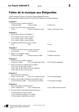<div class="loader"></div></div><input class="toggler" type="checkbox" id="id_153"><div class="content"><h3><label for="id_153">KV 2/1b: Faites de la musique aux Batignolles </label></h3><h4>Passend zu S. 28, Atelier A</h4><table class="files"><tr><td>Öffnen</td><td><a target="_blank" href="content/media/kv/wd01_563015_kv_l2_01b.pdf" data-file-type="application/pdf"> pdf </a></td><td><a target="_blank" href="content/media/kv/wd01_563015_kv_l2_kv1b.docx" data-file-type="application/vnd.openxmlformats-officedocument.wordprocessingml.document"> docx </a></td></tr><tr><td>Speichern unter</td><td class="save-link"><a target="_blank" href="content/media/kv/wd01_563015_kv_l2_01b.pdf" > pdf </a></td><td class="save-link"><a target="_blank" href="content/media/kv/wd01_563015_kv_l2_kv1b.docx" > docx </a></td></tr></table></div><div class="attached"><div class="material" data-material-id="6004" ><div class="thumb"><div class="loader"></div></div><div class="content"><h3>Le Cours intensif 2 </h3><h4>Allgemeine Ausgabe 3. Fremdsprache ab 2016</h4><div class="richtext"><b>Beschreibung:</b> Lehrerbuch mit Multimedia-CD (2. Lernjahr)<br><b>Produktnummer:</b> 978-3-12-563015-4</div><a target="_blank" class="single-link" href="https://www.klett.de/produkt/isbn/978-3-12-563015-4">Link zum Webshop</a></div></div></div></div></li><li><div class="material" data-material-id="1457" ><div class="thumb"><div class="loader"></div></div><input class="toggler" type="checkbox" id="id_154"><div class="content"><h3><label for="id_154">KV 2/1b: Faites de la musique aux Batignolles </label></h3><h4>Lösungen</h4><table class="files"><tr><td>Öffnen</td><td><a target="_blank" href="content/media/kv/wd01_563015_kv_l2_loes_01b.pdf" data-file-type="application/pdf"> pdf </a></td><td><a target="_blank" href="content/media/kv/wd01_563015_kv_l2_loes_kv1b.docx" data-file-type="application/vnd.openxmlformats-officedocument.wordprocessingml.document"> docx </a></td></tr><tr><td>Speichern unter</td><td class="save-link"><a target="_blank" href="content/media/kv/wd01_563015_kv_l2_loes_01b.pdf" > pdf </a></td><td class="save-link"><a target="_blank" href="content/media/kv/wd01_563015_kv_l2_loes_kv1b.docx" > docx </a></td></tr></table></div><div class="attached"><div class="material" data-material-id="6004" ><div class="thumb"><div class="loader"></div></div><div class="content"><h3>Le Cours intensif 2 </h3><h4>Allgemeine Ausgabe 3. Fremdsprache ab 2016</h4><div class="richtext"><b>Beschreibung:</b> Lehrerbuch mit Multimedia-CD (2. Lernjahr)<br><b>Produktnummer:</b> 978-3-12-563015-4</div><a target="_blank" class="single-link" href="https://www.klett.de/produkt/isbn/978-3-12-563015-4">Link zum Webshop</a></div></div></div></div></li></ul></div></div></div></div></div><div class="page " data-title="29" data-pos="31"><div class="content"><div class="rough-image" style="background: url('content/pages/thumbs_0.png') -23040px 0 no-repeat; background-size: auto 100% !important;"></div><div class="pagr-thumb" style="background: url('content/pages/thumbs_0.png') -2880px 0 no-repeat;"></div><div class="image-layers"><div><div style="background-image: url('content/pages/page_30/Scale1.png')"></div></div><div><div style="background-image: url('content/pages/page_30/Scale2.png')"></div></div><div><div style="background-image: url('content/pages/page_30/Scale4.png')"></div></div></div><section class="searchable"><p class="text">et il avait une voix super des gens ont applaudi d’autres ont commencé danser après une demi-heure de concert les trois copains ont quitté la scène sous les bravos du public mais malgré leur énorme succès florent n’était pas vraiment content où était pauline c’était trop nul de les laisser seuls ce moment un homme est venu vers eux le monsieur bonsoir je me présente etienne lemarchand j’organise les concerts pendant les journées du patrimoine on fait actuellement un casting pour le concert dans la station de métro porte des lilas et je crois que les dilettantes ont leur place dans ce casting ça vous intéresse lucas sérieusement vous croyez qu’on une chance fanny trop cool pour comprendre le texte remettez les dessins dans l’ordre chronologique racontez l’histoire écrivez deux ou trois phrases pour chaque dessin votre avis pourquoi est-ce que pauline n’est pas venue faites des hypothèses le lendemain pauline laisse un message sur le portable de florent ecoutez son message et dites pourquoi elle n’est pas venue l’aide des informations données dans le texte imaginez le prospectus que les dilettantes ont réalisé pour leur concert la fête de la musique les dilettantes c’est nous florent pauline… lire nm32hj stratégies écrire écouter l1/17 écrire entrée atelier atelier coin lecture bilan vingt-neuf</p><link type="image/svg+xml" href="content/pages/page_30/searchwords.svg"></section><div class="draw-layer"><svg xmlns="http://www.w3.org/2000/svg" width="768" height="1024"></svg></div><div class="note-icon-layer"></div><div class="annotation-layers"><div class="layer Eigene-Materialien" data-type="materials" data-layer-id="bar1"><div class="page-wide-materials"><ul class="materials"></ul></div></div><div class="layer Auszeichnung1" data-type="vector" data-layer-id="layer16"><a class="rect" style="position: absolute;z-index:1; left: 47%; top: 9.27%; width: 6.51%; height: 3.51%"></a><a class="rect" style="position: absolute;z-index:1; left: 16.14%; top: 12.5%; width: 5.07%; height: 3.51%"></a><a class="rect" style="position: absolute;z-index:1; left: 22.13%; top: 15.82%; width: 5.33%; height: 3.51%"></a><a class="rect" style="position: absolute;z-index:1; left: 31.51%; top: 15.72%; width: 5.98%; height: 3.51%"></a><a class="rect" style="position: absolute;z-index:1; left: 33.07%; top: 19.04%; width: 4.94%; height: 3.51%"></a><a class="rect" style="position: absolute;z-index:1; left: 33.33%; top: 23.04%; width: 9.5%; height: 3.51%"></a><a class="rect" style="position: absolute;z-index:1; left: 30.72%; top: 28.02%; width: 5.46%; height: 3.51%"></a><a class="rect" style="position: absolute;z-index:1; left: 17.44%; top: 28.02%; width: 10.67%; height: 3.51%"></a><a class="rect" style="position: absolute;z-index:1; left: 20.57%; top: 34.57%; width: 10.93%; height: 3.51%"></a><div class="page-wide-materials"><ul class="materials"></ul></div></div><div class="layer Auszeichnung3" data-type="vector" data-layer-id="layer17"><a class="rect" style="position: absolute;z-index:1; left: 17.31%; top: 29.49%; width: 10.67%; height: 2.05%"></a><a class="rect" style="position: absolute;z-index:1; left: 17.31%; top: 32.81%; width: 4.29%; height: 2.05%"></a><a class="rect" style="position: absolute;z-index:1; left: 20.57%; top: 36.03%; width: 10.93%; height: 2.05%"></a><a class="rect" style="position: absolute;z-index:1; left: 36.58%; top: 36.03%; width: 5.72%; height: 2.05%"></a><div class="page-wide-materials"><ul class="materials"></ul></div></div><div class="layer Loesungen" data-type="anchors" data-layer-id="layer15"><div class="tooltip" data-placement=""><div class="tooltip-top"><div class="tooltip-content"><p>Lösungen</p></div></div></div><div class="anchor Text-Bild-Info-Inhalt" style="left: 3.12%; top: 51.17%;" ><div class="anchor-materials" data-layer="layer15"><ul class="materials"><li><div class="material" data-material-id="4039" ><div class="richtext"><p>a) <br />Reihenfolge 2 – 6 – 4 – 3 – 1 – 5 <br />b) <br />Dessin 2 : Avant la fête de la musique, les Dilettantes font une dernière répétition. Le public n’est pas encore là. <br />Dessin 6 : Pauline n’est pas encore arrivée. Florent n’est pas content et écrit un message à Pauline. <br />Dessin 4 : Pauline n’est toujours pas là, Les Dilettantes n’ont pas de chanteuse pour leur premier concert. Alors, Florent demande à Fanny si elle peut chanter. Fanny ne veut pas. <br />Dessin 3 : Le groupe est sur scène. Dans le public, ils voient leurs copains et d’autres élèves du lycée. Fanny commence à chanter. Le public trouve ça nul.<br />Dessin 1 : Lucas chante car Fanny chante comme une casserole. Le public trouve ça génial, Les Dilettantes ont beaucoup de succès. <br />Dessin 5 : Après leur concert, un homme vient voir Les Dilettantes. Il les invite à un casting pour un autre concert. Les jeunes sont vraiment contents !</p><a class="print">Drucken</a></div></div></li></ul></div></div><div class="tooltip" data-placement=""><div class="tooltip-top"><div class="tooltip-content"><p>Lösungen</p></div></div></div><div class="anchor Text-Bild-Info-Inhalt" style="left: 3.12%; top: 80.85%;" ><div class="anchor-materials" data-layer="layer15"><ul class="materials"><li><div class="material" data-material-id="4040" ><div class="richtext"><p>a) <br />Elle n’est pas venue <br />– parce qu’elle était malade. <br />– parce qu’elle n’avait plus de voix et ne pouvait plus parler et plus chanter. <br />– parce qu’elle avait peur de chanter en public.<br />b) <br />Pauline a eu un problème dans le métro. Il s’est arrêté et il est reparti plusieurs heures après. Et Pauline n’avait pas de réseau dans le métro. Elle est arrivée très en retard, bien après le concert des Dilettantes.</p><a class="print">Drucken</a></div></div></li></ul></div></div><div class="tooltip" data-placement=""><div class="tooltip-top"><div class="tooltip-content"><p>Lösungen</p></div></div></div><div class="anchor Text-Bild-Info-Inhalt" style="left: 3.12%; top: 88.28%;" ><div class="anchor-materials" data-layer="layer15"><ul class="materials"><li><div class="material" data-material-id="4041" ><div class="richtext"><p><i>Individuelle Schülerantworten</i>, z. B.: <br />Les Dilettantes, c’est nous : Florent, Pauline, Lucas et Fanny. Nous sommes amis depuis longtemps, et il y a six mois, nous avons commencé à faire de la musique ensemble. Pauline, qui a une très belle voix, est notre chanteuse. Elle adore chanter, elle chantait déjà tout le temps quand elle était petite. Au clavier, il y a Fanny, à la guitare électrique, Lucas et à la batterie, Florent. <br />Nous avons déjà six chansons ! Pour plus d’informations, allez sur notre site www.dilettantes.fr ou venez à nos concerts !</p><a class="print">Drucken</a></div></div></li></ul></div></div><div class="page-wide-materials"><ul class="materials"></ul></div></div><div class="layer Differenzierung" data-type="anchors" data-layer-id="layer14"><div class="tooltip" data-placement=""><div class="tooltip-top"><div class="tooltip-content"><p>Differenzierung</p></div></div></div><div class="anchor Text-Bild-Info-Inhalt" style="left: 19.92%; top: 97.85%;" ><div class="anchor-materials" data-layer="layer14"><ul class="materials"><li><div class="material" data-material-id="4324" ><div class="richtext"><p>KV 2 / 1b: Für eine Differenzierung nach unten kann der Hördurchgang mit Alternativantworten angeboten werden; je nach Leistungsstärke der Lerngruppe können die S selbst entscheiden, mit welchem Arbeitsblatt sie arbeiten möchten.</p><a class="print">Drucken</a></div></div></li></ul></div></div><div class="page-wide-materials"><ul class="materials"></ul></div></div><div class="layer Multimedia always-visible" data-type="media" data-layer-id="layer5"><div class="tooltip" data-placement=""><div class="tooltip-top"><div class="tooltip-content"><p class="tooltip-title">CD 1, Track 17: Exercice 3b)</p><p class="tooltip-subtitle"></p></div></div></div><div class="anchor Medium-Sprache" style="left: 9.63%; top: 79.19%;" ><div class="anchor-materials" data-layer="layer5"><ul class="materials"><li><div class="material" data-material-id="1016" ><div class="content"><h3>CD 1, Track 17: Exercice 3b) (mp3)</h3><ul class="files"><li class=""><a onclick="" target="_blank" href="content/media/audios/lcd1/lcd1_017.mp3" data-file-type="audio/mpeg">Öffnen</a></li></ul></div></div></li></ul></div></div><div class="page-wide-materials"><ul class="materials"></ul></div></div><div class="layer Sprungmarke always-visible" data-type="root" data-layer-id="layer0"><a href="http://code.klett.de/nm32hj" target="_blank" class="rect" style="position: absolute;z-index:1; left: 4.29%; top: 45.99%; width: 8.98%; height: 3.02%"></a><div class="page-wide-materials"><ul class="materials"></ul></div></div><div class="layer Nur-Materialien" data-type="materials" data-layer-id="bar20"><div class="page-wide-materials"><ul class="materials"><li><div class="material" data-material-id="1120" ><div class="thumb"><div class="loader"></div></div><input class="toggler" type="checkbox" id="id_155"><div class="content"><h3><label for="id_155">CD 1, Track 16: Faites de la musique aux Batignolles ! (mp3)</label></h3><h4>Audio zu S. 28–29, Nr. 1</h4><ul class="files"><li class=""><a onclick="" target="_blank" href="content/media/audios/lcd1/lcd1_016.mp3" data-file-type="audio/mpeg">Öffnen</a></li><li class="save-link"><a onclick="" target="_blank" href="content/media/audios/lcd1/lcd1_016.mp3" >Speichern unter</a></li></ul></div><div class="attached"><div class="material" data-material-id="6003" ><div class="thumb"><div class="loader"></div></div><div class="content"><h3>Le Cours intensif 2 </h3><h4>Allgemeine Ausgabe 3. Fremdsprache ab 2016</h4><div class="richtext"><b>Beschreibung:</b> Cahier d'activités mit MP3-CD und Übungssoftware (2. Lernjahr)<br><b>Produktnummer:</b> 978-3-12-563011-6</div><a target="_blank" class="single-link" href="https://www.klett.de/produkt/isbn/978-3-12-563011-6">Link zum Webshop</a></div></div></div></div></li><li><div class="material" data-material-id="1121" ><div class="thumb"><div class="loader"></div></div><input class="toggler" type="checkbox" id="id_156"><div class="content"><h3><label for="id_156">CD 1, Track 17: Exercice 3b) (mp3)</label></h3><h4>Audio zu S. 29, Nr. 3b)</h4><ul class="files"><li class=""><a onclick="" target="_blank" href="content/media/audios/lcd1/lcd1_017.mp3" data-file-type="audio/mpeg">Öffnen</a></li><li class="save-link"><a onclick="" target="_blank" href="content/media/audios/lcd1/lcd1_017.mp3" >Speichern unter</a></li></ul></div><div class="attached"><div class="material" data-material-id="6003" ><div class="thumb"><div class="loader"></div></div><div class="content"><h3>Le Cours intensif 2 </h3><h4>Allgemeine Ausgabe 3. Fremdsprache ab 2016</h4><div class="richtext"><b>Beschreibung:</b> Cahier d'activités mit MP3-CD und Übungssoftware (2. Lernjahr)<br><b>Produktnummer:</b> 978-3-12-563011-6</div><a target="_blank" class="single-link" href="https://www.klett.de/produkt/isbn/978-3-12-563011-6">Link zum Webshop</a></div></div></div></div></li><li><div class="material" data-material-id="1122" ><div class="thumb">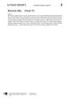<div class="loader"></div></div><input class="toggler" type="checkbox" id="id_157"><div class="content"><h3><label for="id_157">Exercice 3b) (docx)</label></h3><h4>Transkription zu CD 1, Track 17</h4><ul class="files"><li class=""><a onclick="" target="_blank" href="content/media/transkript/at_l2_17.docx" data-file-type="application/vnd.openxmlformats-officedocument.wordprocessingml.document">Öffnen</a></li><li class="save-link"><a onclick="" target="_blank" href="content/media/transkript/at_l2_17.docx" >Speichern unter</a></li></ul></div><div class="attached"><div class="material" data-material-id="6004" ><div class="thumb"><div class="loader"></div></div><div class="content"><h3>Le Cours intensif 2 </h3><h4>Allgemeine Ausgabe 3. Fremdsprache ab 2016</h4><div class="richtext"><b>Beschreibung:</b> Lehrerbuch mit Multimedia-CD (2. Lernjahr)<br><b>Produktnummer:</b> 978-3-12-563015-4</div><a target="_blank" class="single-link" href="https://www.klett.de/produkt/isbn/978-3-12-563015-4">Link zum Webshop</a></div></div></div></div></li></ul></div></div><div class="layer Nur-Materialien" data-type="materials" data-layer-id="bar22"><div class="page-wide-materials"><ul class="materials"><li><div class="material" data-material-id="1401" ><div class="thumb"><div class="loader"></div></div><input class="toggler" type="checkbox" id="id_158"><div class="content"><h3><label for="id_158">Folie 2/1 (pdf)</label></h3><h4>Passend zu S. 28–29</h4><ul class="files"><li class=""><a onclick="" target="_blank" href="content/media/fundus/563015_folien_l2_2-1.pdf" data-file-type="application/pdf">Öffnen</a></li><li class="save-link"><a onclick="" target="_blank" href="content/media/fundus/563015_folien_l2_2-1.pdf" >Speichern unter</a></li></ul></div><div class="attached"><div class="material" data-material-id="6004" ><div class="thumb"><div class="loader"></div></div><div class="content"><h3>Le Cours intensif 2 </h3><h4>Allgemeine Ausgabe 3. Fremdsprache ab 2016</h4><div class="richtext"><b>Beschreibung:</b> Lehrerbuch mit Multimedia-CD (2. Lernjahr)<br><b>Produktnummer:</b> 978-3-12-563015-4</div><a target="_blank" class="single-link" href="https://www.klett.de/produkt/isbn/978-3-12-563015-4">Link zum Webshop</a></div></div></div></div></li><li><div class="material" data-material-id="1263" ><div class="thumb"><div class="loader"></div></div><input class="toggler" type="checkbox" id="id_159"><div class="content"><h3><label for="id_159">Faites de la musique aux Batignolles ! (docx)</label></h3><h4>Editierbarer Lektionstext</h4><ul class="files"><li class=""><a onclick="" target="_blank" href="content/media/l-texte/st_l2_02.docx" data-file-type="application/vnd.openxmlformats-officedocument.wordprocessingml.document">Öffnen</a></li><li class="save-link"><a onclick="" target="_blank" href="content/media/l-texte/st_l2_02.docx" >Speichern unter</a></li></ul></div><div class="attached"><div class="material" data-material-id="6005" ><div class="thumb"><div class="loader"></div></div><div class="content"><h3>Le Cours intensif 2 </h3><h4>Allgemeine Ausgabe 3. Fremdsprache ab 2016</h4><div class="richtext"><b>Beschreibung:</b> Schülerbuch, Softcover (2. Lernjahr)<br><b>Produktnummer:</b> 978-3-12-563010-9</div><a target="_blank" class="single-link" href="https://www.klett.de/produkt/isbn/978-3-12-563010-9">Link zum Webshop</a></div></div></div></div></li><li><div class="material" data-material-id="1247" ><div class="thumb"><div class="loader"></div></div><input class="toggler" type="checkbox" id="id_160"><div class="content"><h3><label for="id_160">Lektionsbegleitendes Vokabular (pdf)</label></h3><h4>Ausdruckbare Liste</h4><ul class="files"><li class=""><a onclick="" target="_blank" href="content/media/fundus/fu_bev.pdf" data-file-type="application/pdf">Öffnen</a></li><li class="save-link"><a onclick="" target="_blank" href="content/media/fundus/fu_bev.pdf" >Speichern unter</a></li></ul></div><div class="attached"><div class="material" data-material-id="6005" ><div class="thumb"><div class="loader"></div></div><div class="content"><h3>Le Cours intensif 2 </h3><h4>Allgemeine Ausgabe 3. Fremdsprache ab 2016</h4><div class="richtext"><b>Beschreibung:</b> Schülerbuch, Softcover (2. Lernjahr)<br><b>Produktnummer:</b> 978-3-12-563010-9</div><a target="_blank" class="single-link" href="https://www.klett.de/produkt/isbn/978-3-12-563010-9">Link zum Webshop</a></div></div></div></div></li><li><div class="material" data-material-id="1248" ><div class="thumb"><div class="loader"></div></div><input class="toggler" type="checkbox" id="id_161"><div class="content"><h3><label for="id_161">Alphabetische Wortliste (pdf)</label></h3><h4>Ausdruckbare Liste</h4><ul class="files"><li class=""><a onclick="" target="_blank" href="content/media/fundus/fu_awl.pdf" data-file-type="application/pdf">Öffnen</a></li><li class="save-link"><a onclick="" target="_blank" href="content/media/fundus/fu_awl.pdf" >Speichern unter</a></li></ul></div><div class="attached"><div class="material" data-material-id="6005" ><div class="thumb"><div class="loader"></div></div><div class="content"><h3>Le Cours intensif 2 </h3><h4>Allgemeine Ausgabe 3. Fremdsprache ab 2016</h4><div class="richtext"><b>Beschreibung:</b> Schülerbuch, Softcover (2. Lernjahr)<br><b>Produktnummer:</b> 978-3-12-563010-9</div><a target="_blank" class="single-link" href="https://www.klett.de/produkt/isbn/978-3-12-563010-9">Link zum Webshop</a></div></div></div></div></li><li><div class="material" data-material-id="1251" ><div class="thumb"><div class="loader"></div></div><input class="toggler" type="checkbox" id="id_162"><div class="content"><h3><label for="id_162">Lektionsbegleitende Grammatik (pdf)</label></h3><ul class="files"><li class=""><a onclick="" target="_blank" href="content/media/gram/fu_l2_01.pdf" data-file-type="application/pdf">Öffnen</a></li><li class="save-link"><a onclick="" target="_blank" href="content/media/gram/fu_l2_01.pdf" >Speichern unter</a></li></ul></div><div class="attached"><div class="material" data-material-id="6005" ><div class="thumb"><div class="loader"></div></div><div class="content"><h3>Le Cours intensif 2 </h3><h4>Allgemeine Ausgabe 3. Fremdsprache ab 2016</h4><div class="richtext"><b>Beschreibung:</b> Schülerbuch, Softcover (2. Lernjahr)<br><b>Produktnummer:</b> 978-3-12-563010-9</div><a target="_blank" class="single-link" href="https://www.klett.de/produkt/isbn/978-3-12-563010-9">Link zum Webshop</a></div></div></div></div></li></ul></div></div><div class="layer Nur-Materialien" data-type="materials" data-layer-id="bar19"><div class="page-wide-materials"><ul class="materials"><li><div class="material" data-material-id="1293" ><div class="thumb"><div class="loader"></div></div><input class="toggler" type="checkbox" id="id_163"><div class="content"><h3><label for="id_163">Cahier d'activités (html)</label></h3><h4>S. 12</h4><ul class="files"><li class=""><a onclick="" target="_blank" href="content/media/epaper/cda/app.html?page=14" data-file-type="tgd-epaper" data-dimension="1200-800">Öffnen</a></li></ul></div><div class="attached"><div class="material" data-material-id="6006" ><div class="thumb"><div class="loader"></div></div><div class="content"><h3>Le Cours intensif 2 </h3><h4>Allgemeine Ausgabe 3. Fremdsprache ab 2016</h4><div class="richtext"><b>Beschreibung:</b> Cahier d'activités Lehrerausgabe mit Lösungen, MP3-CD und Übungssoftware (2. Lernjahr)<br><b>Produktnummer:</b> 978-3-12-563019-2</div><a target="_blank" class="single-link" href="https://www.klett.de/produkt/isbn/978-3-12-563019-2">Link zum Webshop</a></div></div></div></div></li></ul></div></div><div class="layer Nur-Materialien" data-type="materials" data-layer-id="bar18"><div class="page-wide-materials"><ul class="materials"><li><div class="material" data-material-id="1376" ><div class="thumb"><div class="loader"></div></div><input class="toggler" type="checkbox" id="id_164"><div class="content"><h3><label for="id_164">Blätterbares Lehrerbuch (html)</label></h3><h4>S. 29</h4><div class="richtext"><p>Das Lehrerbuch bietet viele methodische Hinweise zu jeder Leçon, Kopiervorlagen u.v.m. </p></div><ul class="files"><li class=""><a onclick="" target="_blank" href="content/media/ep-1405/app.html?page=31" data-file-type="tgd-epaper" data-dimension="1200-800">Öffnen</a></li></ul></div><div class="attached"><div class="material" data-material-id="6004" ><div class="thumb"><div class="loader"></div></div><div class="content"><h3>Le Cours intensif 2 </h3><h4>Allgemeine Ausgabe 3. Fremdsprache ab 2016</h4><div class="richtext"><b>Beschreibung:</b> Lehrerbuch mit Multimedia-CD (2. Lernjahr)<br><b>Produktnummer:</b> 978-3-12-563015-4</div><a target="_blank" class="single-link" href="https://www.klett.de/produkt/isbn/978-3-12-563015-4">Link zum Webshop</a></div></div></div></div></li></ul></div></div><div class="layer Nur-Materialien" data-type="materials" data-layer-id="bar21"><div class="page-wide-materials"><ul class="materials"><li><div class="material" data-material-id="1454" ><div class="thumb"><div class="loader"></div></div><input class="toggler" type="checkbox" id="id_165"><div class="content"><h3><label for="id_165">KV 2/1a: Faites de la musique aux Batignolles </label></h3><h4>Passend zu S. 28, Atelier A</h4><table class="files"><tr><td>Öffnen</td><td><a target="_blank" href="content/media/kv/wd01_563015_kv_l2_01a.pdf" data-file-type="application/pdf"> pdf </a></td><td><a target="_blank" href="content/media/kv/wd01_563015_kv_l2_kv1a.docx" data-file-type="application/vnd.openxmlformats-officedocument.wordprocessingml.document"> docx </a></td></tr><tr><td>Speichern unter</td><td class="save-link"><a target="_blank" href="content/media/kv/wd01_563015_kv_l2_01a.pdf" > pdf </a></td><td class="save-link"><a target="_blank" href="content/media/kv/wd01_563015_kv_l2_kv1a.docx" > docx </a></td></tr></table></div><div class="attached"><div class="material" data-material-id="6004" ><div class="thumb"><div class="loader"></div></div><div class="content"><h3>Le Cours intensif 2 </h3><h4>Allgemeine Ausgabe 3. Fremdsprache ab 2016</h4><div class="richtext"><b>Beschreibung:</b> Lehrerbuch mit Multimedia-CD (2. Lernjahr)<br><b>Produktnummer:</b> 978-3-12-563015-4</div><a target="_blank" class="single-link" href="https://www.klett.de/produkt/isbn/978-3-12-563015-4">Link zum Webshop</a></div></div></div></div></li><li><div class="material" data-material-id="1455" ><div class="thumb"><div class="loader"></div></div><input class="toggler" type="checkbox" id="id_166"><div class="content"><h3><label for="id_166">KV 2/1a: Faites de la musique aux Batignolles </label></h3><h4>Lösungen</h4><table class="files"><tr><td>Öffnen</td><td><a target="_blank" href="content/media/kv/wd01_563015_kv_l2_loes_01a.pdf" data-file-type="application/pdf"> pdf </a></td><td><a target="_blank" href="content/media/kv/wd01_563015_kv_l2_loes_kv1a.docx" data-file-type="application/vnd.openxmlformats-officedocument.wordprocessingml.document"> docx </a></td></tr><tr><td>Speichern unter</td><td class="save-link"><a target="_blank" href="content/media/kv/wd01_563015_kv_l2_loes_01a.pdf" > pdf </a></td><td class="save-link"><a target="_blank" href="content/media/kv/wd01_563015_kv_l2_loes_kv1a.docx" > docx </a></td></tr></table></div><div class="attached"><div class="material" data-material-id="6004" ><div class="thumb"><div class="loader"></div></div><div class="content"><h3>Le Cours intensif 2 </h3><h4>Allgemeine Ausgabe 3. Fremdsprache ab 2016</h4><div class="richtext"><b>Beschreibung:</b> Lehrerbuch mit Multimedia-CD (2. Lernjahr)<br><b>Produktnummer:</b> 978-3-12-563015-4</div><a target="_blank" class="single-link" href="https://www.klett.de/produkt/isbn/978-3-12-563015-4">Link zum Webshop</a></div></div></div></div></li><li><div class="material" data-material-id="1456" ><div class="thumb"><div class="loader"></div></div><input class="toggler" type="checkbox" id="id_167"><div class="content"><h3><label for="id_167">KV 2/1b: Faites de la musique aux Batignolles </label></h3><h4>Passend zu S. 28, Atelier A</h4><table class="files"><tr><td>Öffnen</td><td><a target="_blank" href="content/media/kv/wd01_563015_kv_l2_01b.pdf" data-file-type="application/pdf"> pdf </a></td><td><a target="_blank" href="content/media/kv/wd01_563015_kv_l2_kv1b.docx" data-file-type="application/vnd.openxmlformats-officedocument.wordprocessingml.document"> docx </a></td></tr><tr><td>Speichern unter</td><td class="save-link"><a target="_blank" href="content/media/kv/wd01_563015_kv_l2_01b.pdf" > pdf </a></td><td class="save-link"><a target="_blank" href="content/media/kv/wd01_563015_kv_l2_kv1b.docx" > docx </a></td></tr></table></div><div class="attached"><div class="material" data-material-id="6004" ><div class="thumb"><div class="loader"></div></div><div class="content"><h3>Le Cours intensif 2 </h3><h4>Allgemeine Ausgabe 3. Fremdsprache ab 2016</h4><div class="richtext"><b>Beschreibung:</b> Lehrerbuch mit Multimedia-CD (2. Lernjahr)<br><b>Produktnummer:</b> 978-3-12-563015-4</div><a target="_blank" class="single-link" href="https://www.klett.de/produkt/isbn/978-3-12-563015-4">Link zum Webshop</a></div></div></div></div></li><li><div class="material" data-material-id="1457" ><div class="thumb"><div class="loader"></div></div><input class="toggler" type="checkbox" id="id_168"><div class="content"><h3><label for="id_168">KV 2/1b: Faites de la musique aux Batignolles </label></h3><h4>Lösungen</h4><table class="files"><tr><td>Öffnen</td><td><a target="_blank" href="content/media/kv/wd01_563015_kv_l2_loes_01b.pdf" data-file-type="application/pdf"> pdf </a></td><td><a target="_blank" href="content/media/kv/wd01_563015_kv_l2_loes_kv1b.docx" data-file-type="application/vnd.openxmlformats-officedocument.wordprocessingml.document"> docx </a></td></tr><tr><td>Speichern unter</td><td class="save-link"><a target="_blank" href="content/media/kv/wd01_563015_kv_l2_loes_01b.pdf" > pdf </a></td><td class="save-link"><a target="_blank" href="content/media/kv/wd01_563015_kv_l2_loes_kv1b.docx" > docx </a></td></tr></table></div><div class="attached"><div class="material" data-material-id="6004" ><div class="thumb"><div class="loader"></div></div><div class="content"><h3>Le Cours intensif 2 </h3><h4>Allgemeine Ausgabe 3. Fremdsprache ab 2016</h4><div class="richtext"><b>Beschreibung:</b> Lehrerbuch mit Multimedia-CD (2. Lernjahr)<br><b>Produktnummer:</b> 978-3-12-563015-4</div><a target="_blank" class="single-link" href="https://www.klett.de/produkt/isbn/978-3-12-563015-4">Link zum Webshop</a></div></div></div></div></li></ul></div></div></div></div></div><div class="page " data-title="30" data-pos="32"><div class="content"><div class="rough-image" style="background: url('content/pages/thumbs_0.png') -23808px 0 no-repeat; background-size: auto 100% !important;"></div><div class="pagr-thumb" style="background: url('content/pages/thumbs_0.png') -2976px 0 no-repeat;"></div><div class="image-layers"><div><div style="background-image: url('content/pages/page_31/Scale1.png')"></div></div><div><div style="background-image: url('content/pages/page_31/Scale2.png')"></div></div><div><div style="background-image: url('content/pages/page_31/Scale4.png')"></div></div></div><section class="searchable"><p class="text">jeu de mots faites un filet mots autour de la fête de la musique puis expliquez ce qu’est la fête de la musique quels mots du texte correspondent aux définitions suivantes quand on ne paie pas pour un évènement c’est quelque chose qui n’existe pas depuis longtemps est quand un groupe joue devant des gens il joue quand on donne son nom et son prénom on quand un groupe s’entraîne avant un concert il fait quand on veut choisir entre plusieurs groupes on peut faire trouvez le contraire des mots suivants relisez les messages que florent envoie pauline que veulent dire les abréviations suivantes ecrivez maintenant les mots et phrases qui correspondent ces abréviations mais qu’est-ce que tu crois complétez avec les formes du verbe croire elles riment reimen avec les phrases droite puis reliez les formes aux phrases vous avez ainsi un poème lisez-le voix haute je tu lucas nous vous les dilettantes qu’est-ce qu’ils leurs copains ne les ont pas que fanny sait chanter que les dilettantes ont des super chansons quand ils ont dit qu’ils allaient jouer dans la rue que ça va être la cata qu’ils ont une chance au casting de la porte des lilas que pauline ne viendra pas normalement elle n’est pas en retard lisez les phrases suivantes et dites quelle est la fonction des mots en gras les trois copains sont courageux les trois copains montent courageusement sur scène traduisez les deux phrases qu’est-ce qui est différent en allemand regardez ces adverbes du texte comment est-ce qu’on les forme trouvez la règle actuellement heureusement sûrement sérieusement trouvez dans le paragraphe la forme qui ne correspond pas la règle parler professionnel vieux bien commencer pour vous aider die sms-sprache ist nicht immer leicht zu entziffern lest die abkürzungen laut vor so könnt ihr leichter herausfinden was sie bedeuten slt où keske… tu vi1 2m1 biz nrv la fête de la musique entrée atelier atelier coin lecture bilan trente</p><link type="image/svg+xml" href="content/pages/page_31/searchwords.svg"></section><div class="draw-layer"><svg xmlns="http://www.w3.org/2000/svg" width="768" height="1024"></svg></div><div class="note-icon-layer"></div><div class="annotation-layers"><div class="layer Eigene-Materialien" data-type="materials" data-layer-id="bar1"><div class="page-wide-materials"><ul class="materials"></ul></div></div><div class="layer Loesungen" data-type="anchors" data-layer-id="layer15"><div class="tooltip" data-placement=""><div class="tooltip-top"><div class="tooltip-content"><p>Lösungen</p></div></div></div><div class="anchor Text-Bild-Info-Inhalt" style="left: 2.99%; top: 15.91%;" ><div class="anchor-materials" data-layer="layer15"><ul class="materials"><li><div class="material" data-material-id="4042" ><div class="richtext"><p>a) Fête de la musique : tous les ans, le 21 juin, partout en France, à Paris le métro roule toute la nuit, des concerts gratuits, jouer et chanter dans la rue, des musiciens amateurs, faire la fête, sortir en famille ou avec des amis, une ambiance géniale, rentrer tard <br />b) <i>Individuelle Schülerantworten</i>, z. B.: <br />Tous les ans, le 21 juin (le premier jour de l’été), c’est la fête de la musique. C’est l’occasion d’entendre ou de faire de la musique partout en France, dans toutes les villes, dans des cafés ou dans la rue. Il y a des musiciens amateurs qui donnent des concerts gratuits. L’ambiance est géniale : on peut chanter, danser et passer une très belle soirée en famille ou avec des copains.</p><a class="print">Drucken</a></div></div></li></ul></div></div><div class="tooltip" data-placement=""><div class="tooltip-top"><div class="tooltip-content"><p>Lösungen</p></div></div></div><div class="anchor Text-Bild-Info-Inhalt" style="left: 2.99%; top: 21.48%;" ><div class="anchor-materials" data-layer="layer15"><ul class="materials"><li><div class="material" data-material-id="4043" ><div class="richtext"><p>a)<br />1. gratuit<br />2. récent<br />3. en public<br />4. se présente.<br />5. une répétition<br />6. un casting</p><p>b)<br />professionnel # amateur<br />vieux # récent<br />bien # mal<br />commencer # arrêter</p><a class="print">Drucken</a></div></div></li></ul></div></div><div class="tooltip" data-placement=""><div class="tooltip-top"><div class="tooltip-content"><p>Lösungen</p></div></div></div><div class="anchor Text-Bild-Info-Inhalt" style="left: 2.99%; top: 41.11%;" ><div class="anchor-materials" data-layer="layer15"><ul class="materials"><li><div class="material" data-material-id="4044" ><div class="richtext"><p>a)<br />Slt ! → Salut !<br />T où ? → T’es où ?<br />Keske… → Qu’est-ce que…</p><p>b)<br />Tu vi1 ? → Tu viens ?<br />A 2m1 → A demain !<br />Biz → Bises !<br />nrv → énervé</p><a class="print">Drucken</a></div></div></li></ul></div></div><div class="tooltip" data-placement=""><div class="tooltip-top"><div class="tooltip-content"><p>Lösungen</p></div></div></div><div class="anchor Text-Bild-Info-Inhalt" style="left: 2.99%; top: 60.44%;" ><div class="anchor-materials" data-layer="layer15"><ul class="materials"><li><div class="material" data-material-id="4045" ><div class="richtext"><p>Je crois, tu crois que ça va être la cata. <br />Lucas croit que Pauline ne vient pas. <br />Nous croyons que les Dilettantes ont des super chansons. <br />Vous croyez que Fanny sait chanter ? <br />Les Dilettantes, qu’est-ce qu’ils croient ? Qu’ils ont une chance au casting de la Porte des Lilas. <br />Leur copains ne les ont pas crus quand ils ont dit qu’ils allaient jouer dans la rue.</p><a class="print">Drucken</a></div></div></li></ul></div></div><div class="tooltip" data-placement=""><div class="tooltip-top"><div class="tooltip-content"><p>Lösungen</p></div></div></div><div class="anchor Text-Bild-Info-Inhalt" style="left: 2.99%; top: 80.17%;" ><div class="anchor-materials" data-layer="layer15"><ul class="materials"><li><div class="material" data-material-id="4046" ><div class="richtext"><p>a) Courageux est un adjectif et décrit les trois copains. Courageusement est un adverbe et décrit l’action (monter sur scène). <br />b) En allemand, il n’y a pas de différence entre l’adjectif et l’adverbe : c’est le même mot. En français, ce sont deux mots différents. <br />c) On forme l’adverbe à partir de la forme féminine de l’adjectif. On ajoute -ment à la fin. <br />d) vraiment (l. 40)</p><a class="print">Drucken</a></div></div></li></ul></div></div><div class="page-wide-materials"><ul class="materials"></ul></div></div><div class="layer Sprungmarke always-visible" data-type="root" data-layer-id="layer0"><a href="?page=8" target="_blank" class="rect" style="position: absolute;z-index:1; left: 9.11%; top: 74.41%; width: 4.16%; height: 3.51%"></a><a href="?page=7" target="_blank" class="rect" style="position: absolute;z-index:1; left: 9.11%; top: 54.58%; width: 4.16%; height: 3.51%"></a><div class="page-wide-materials"><ul class="materials"></ul></div></div><div class="layer Nur-Materialien" data-type="materials" data-layer-id="bar22"><div class="page-wide-materials"><ul class="materials"><li><div class="material" data-material-id="1247" ><div class="thumb"><div class="loader"></div></div><input class="toggler" type="checkbox" id="id_169"><div class="content"><h3><label for="id_169">Lektionsbegleitendes Vokabular (pdf)</label></h3><h4>Ausdruckbare Liste</h4><ul class="files"><li class=""><a onclick="" target="_blank" href="content/media/fundus/fu_bev.pdf" data-file-type="application/pdf">Öffnen</a></li><li class="save-link"><a onclick="" target="_blank" href="content/media/fundus/fu_bev.pdf" >Speichern unter</a></li></ul></div><div class="attached"><div class="material" data-material-id="6005" ><div class="thumb"><div class="loader"></div></div><div class="content"><h3>Le Cours intensif 2 </h3><h4>Allgemeine Ausgabe 3. Fremdsprache ab 2016</h4><div class="richtext"><b>Beschreibung:</b> Schülerbuch, Softcover (2. Lernjahr)<br><b>Produktnummer:</b> 978-3-12-563010-9</div><a target="_blank" class="single-link" href="https://www.klett.de/produkt/isbn/978-3-12-563010-9">Link zum Webshop</a></div></div></div></div></li><li><div class="material" data-material-id="1248" ><div class="thumb"><div class="loader"></div></div><input class="toggler" type="checkbox" id="id_170"><div class="content"><h3><label for="id_170">Alphabetische Wortliste (pdf)</label></h3><h4>Ausdruckbare Liste</h4><ul class="files"><li class=""><a onclick="" target="_blank" href="content/media/fundus/fu_awl.pdf" data-file-type="application/pdf">Öffnen</a></li><li class="save-link"><a onclick="" target="_blank" href="content/media/fundus/fu_awl.pdf" >Speichern unter</a></li></ul></div><div class="attached"><div class="material" data-material-id="6005" ><div class="thumb"><div class="loader"></div></div><div class="content"><h3>Le Cours intensif 2 </h3><h4>Allgemeine Ausgabe 3. Fremdsprache ab 2016</h4><div class="richtext"><b>Beschreibung:</b> Schülerbuch, Softcover (2. Lernjahr)<br><b>Produktnummer:</b> 978-3-12-563010-9</div><a target="_blank" class="single-link" href="https://www.klett.de/produkt/isbn/978-3-12-563010-9">Link zum Webshop</a></div></div></div></div></li><li><div class="material" data-material-id="1251" ><div class="thumb"><div class="loader"></div></div><input class="toggler" type="checkbox" id="id_171"><div class="content"><h3><label for="id_171">Lektionsbegleitende Grammatik (pdf)</label></h3><ul class="files"><li class=""><a onclick="" target="_blank" href="content/media/gram/fu_l2_01.pdf" data-file-type="application/pdf">Öffnen</a></li><li class="save-link"><a onclick="" target="_blank" href="content/media/gram/fu_l2_01.pdf" >Speichern unter</a></li></ul></div><div class="attached"><div class="material" data-material-id="6005" ><div class="thumb"><div class="loader"></div></div><div class="content"><h3>Le Cours intensif 2 </h3><h4>Allgemeine Ausgabe 3. Fremdsprache ab 2016</h4><div class="richtext"><b>Beschreibung:</b> Schülerbuch, Softcover (2. Lernjahr)<br><b>Produktnummer:</b> 978-3-12-563010-9</div><a target="_blank" class="single-link" href="https://www.klett.de/produkt/isbn/978-3-12-563010-9">Link zum Webshop</a></div></div></div></div></li></ul></div></div><div class="layer Nur-Materialien" data-type="materials" data-layer-id="bar19"><div class="page-wide-materials"><ul class="materials"><li><div class="material" data-material-id="1294" ><div class="thumb"><div class="loader"></div></div><input class="toggler" type="checkbox" id="id_172"><div class="content"><h3><label for="id_172">Cahier d'activités (html)</label></h3><h4>S. 13-14</h4><ul class="files"><li class=""><a onclick="" target="_blank" href="content/media/epaper/cda/app.html?page=15" data-file-type="tgd-epaper" data-dimension="1200-800">Öffnen</a></li></ul></div><div class="attached"><div class="material" data-material-id="6006" ><div class="thumb"><div class="loader"></div></div><div class="content"><h3>Le Cours intensif 2 </h3><h4>Allgemeine Ausgabe 3. Fremdsprache ab 2016</h4><div class="richtext"><b>Beschreibung:</b> Cahier d'activités Lehrerausgabe mit Lösungen, MP3-CD und Übungssoftware (2. Lernjahr)<br><b>Produktnummer:</b> 978-3-12-563019-2</div><a target="_blank" class="single-link" href="https://www.klett.de/produkt/isbn/978-3-12-563019-2">Link zum Webshop</a></div></div></div></div></li></ul></div></div><div class="layer Nur-Materialien" data-type="materials" data-layer-id="bar18"><div class="page-wide-materials"><ul class="materials"><li><div class="material" data-material-id="1377" ><div class="thumb"><div class="loader"></div></div><input class="toggler" type="checkbox" id="id_173"><div class="content"><h3><label for="id_173">Blätterbares Lehrerbuch (html)</label></h3><h4>S. 30</h4><div class="richtext"><p>Das Lehrerbuch bietet viele methodische Hinweise zu jeder Leçon, Kopiervorlagen u.v.m. </p></div><ul class="files"><li class=""><a onclick="" target="_blank" href="content/media/ep-1405/app.html?page=32" data-file-type="tgd-epaper" data-dimension="1200-800">Öffnen</a></li></ul></div><div class="attached"><div class="material" data-material-id="6004" ><div class="thumb"><div class="loader"></div></div><div class="content"><h3>Le Cours intensif 2 </h3><h4>Allgemeine Ausgabe 3. Fremdsprache ab 2016</h4><div class="richtext"><b>Beschreibung:</b> Lehrerbuch mit Multimedia-CD (2. Lernjahr)<br><b>Produktnummer:</b> 978-3-12-563015-4</div><a target="_blank" class="single-link" href="https://www.klett.de/produkt/isbn/978-3-12-563015-4">Link zum Webshop</a></div></div></div></div></li><li><div class="material" data-material-id="1378" ><div class="thumb"><div class="loader"></div></div><input class="toggler" type="checkbox" id="id_174"><div class="content"><h3><label for="id_174">Blätterbares Lehrerbuch (html)</label></h3><h4>S. 30–33</h4><div class="richtext"><p>Das Lehrerbuch bietet viele methodische Hinweise zu jeder Leçon, Kopiervorlagen u.v.m. </p></div><ul class="files"><li class=""><a onclick="" target="_blank" href="content/media/ep-1405/app.html?page=32" data-file-type="tgd-epaper" data-dimension="1200-800">Öffnen</a></li></ul></div><div class="attached"><div class="material" data-material-id="6004" ><div class="thumb"><div class="loader"></div></div><div class="content"><h3>Le Cours intensif 2 </h3><h4>Allgemeine Ausgabe 3. Fremdsprache ab 2016</h4><div class="richtext"><b>Beschreibung:</b> Lehrerbuch mit Multimedia-CD (2. Lernjahr)<br><b>Produktnummer:</b> 978-3-12-563015-4</div><a target="_blank" class="single-link" href="https://www.klett.de/produkt/isbn/978-3-12-563015-4">Link zum Webshop</a></div></div></div></div></li></ul></div></div><div class="layer Nur-Materialien" data-type="materials" data-layer-id="bar21"><div class="page-wide-materials"><ul class="materials"><li><div class="material" data-material-id="1458" ><div class="thumb">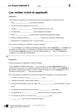<div class="loader"></div></div><input class="toggler" type="checkbox" id="id_175"><div class="content"><h3><label for="id_175">KV 2/2: Les verbes croire et applaudir </label></h3><h4>Passend zu S. 30, Atelier A</h4><table class="files"><tr><td>Öffnen</td><td><a target="_blank" href="content/media/kv/wd01_563015_kv_l2_02.pdf" data-file-type="application/pdf"> pdf </a></td><td><a target="_blank" href="content/media/kv/wd01_563015_kv_l2_kv2.docx" data-file-type="application/vnd.openxmlformats-officedocument.wordprocessingml.document"> docx </a></td></tr><tr><td>Speichern unter</td><td class="save-link"><a target="_blank" href="content/media/kv/wd01_563015_kv_l2_02.pdf" > pdf </a></td><td class="save-link"><a target="_blank" href="content/media/kv/wd01_563015_kv_l2_kv2.docx" > docx </a></td></tr></table></div><div class="attached"><div class="material" data-material-id="6004" ><div class="thumb"><div class="loader"></div></div><div class="content"><h3>Le Cours intensif 2 </h3><h4>Allgemeine Ausgabe 3. Fremdsprache ab 2016</h4><div class="richtext"><b>Beschreibung:</b> Lehrerbuch mit Multimedia-CD (2. Lernjahr)<br><b>Produktnummer:</b> 978-3-12-563015-4</div><a target="_blank" class="single-link" href="https://www.klett.de/produkt/isbn/978-3-12-563015-4">Link zum Webshop</a></div></div></div></div></li><li><div class="material" data-material-id="1459" ><div class="thumb"><div class="loader"></div></div><input class="toggler" type="checkbox" id="id_176"><div class="content"><h3><label for="id_176">KV 2/2: Les verbes croire et applaudir </label></h3><h4>Lösungen</h4><table class="files"><tr><td>Öffnen</td><td><a target="_blank" href="content/media/kv/wd01_563015_kv_l2_loes_02.pdf" data-file-type="application/pdf"> pdf </a></td><td><a target="_blank" href="content/media/kv/wd01_563015_kv_l2_loes_kv2.docx" data-file-type="application/vnd.openxmlformats-officedocument.wordprocessingml.document"> docx </a></td></tr><tr><td>Speichern unter</td><td class="save-link"><a target="_blank" href="content/media/kv/wd01_563015_kv_l2_loes_02.pdf" > pdf </a></td><td class="save-link"><a target="_blank" href="content/media/kv/wd01_563015_kv_l2_loes_kv2.docx" > docx </a></td></tr></table></div><div class="attached"><div class="material" data-material-id="6004" ><div class="thumb"><div class="loader"></div></div><div class="content"><h3>Le Cours intensif 2 </h3><h4>Allgemeine Ausgabe 3. Fremdsprache ab 2016</h4><div class="richtext"><b>Beschreibung:</b> Lehrerbuch mit Multimedia-CD (2. Lernjahr)<br><b>Produktnummer:</b> 978-3-12-563015-4</div><a target="_blank" class="single-link" href="https://www.klett.de/produkt/isbn/978-3-12-563015-4">Link zum Webshop</a></div></div></div></div></li></ul></div></div></div></div></div><div class="page " data-title="31" data-pos="33"><div class="content"><div class="rough-image" style="background: url('content/pages/thumbs_0.png') -24576px 0 no-repeat; background-size: auto 100% !important;"></div><div class="pagr-thumb" style="background: url('content/pages/thumbs_0.png') -3072px 0 no-repeat;"></div><div class="image-layers"><div><div style="background-image: url('content/pages/page_32/Scale1.png')"></div></div><div><div style="background-image: url('content/pages/page_32/Scale2.png')"></div></div><div><div style="background-image: url('content/pages/page_32/Scale4.png')"></div></div></div><section class="searchable"><p class="text">formez les adverbes qui correspondent aux adjectifs suivants adjectif ou adverbe complétez les phrases attention l’accord de l’adjectif en plus les dilettantes s’intéressent la musique le groupe travaille son premier album pauline est la chanteuse du groupe mais aujourd’hui la situation n’est pas lucas chanté il une voix il n’a pas pris le micro mais ensuite son succès été les musiciens vont participer un casting fanny était contente les copains sont d’avoir une chance pour le casting et cette fois pauline va chanter jouez en classe faites quatre groupes chaque groupe raconte sa soirée l’aide du dessin il doit avoir un adverbe dans chaque phrase le groupe qui l’histoire la plus longue die längste geschichte gagné jeu de sons !r !c !5 ecoutez et classez les mots dans le tableau ecoutez les mots encore une fois et répétez-les dangereux complet immédiat long curieux dernier joli bizarre actuel normal exceptionnel immédiat vrai sûr parler l1/18 !r !c !5 entrée atelier atelier coin lecture bilan trente-et-un</p><link type="image/svg+xml" href="content/pages/page_32/searchwords.svg"></section><div class="draw-layer"><svg xmlns="http://www.w3.org/2000/svg" width="768" height="1024"></svg></div><div class="note-icon-layer"></div><div class="annotation-layers"><div class="layer Eigene-Materialien" data-type="materials" data-layer-id="bar1"><div class="page-wide-materials"><ul class="materials"></ul></div></div><div class="layer Loesungen" data-type="anchors" data-layer-id="layer15"><div class="tooltip" data-placement=""><div class="tooltip-top"><div class="tooltip-content"><p>Lösungen</p></div></div></div><div class="anchor Text-Bild-Info-Inhalt" style="left: 3.12%; top: 13.28%;" ><div class="anchor-materials" data-layer="layer15"><ul class="materials"><li><div class="material" data-material-id="4047" ><div class="richtext"><p>dangereusement, immédiatement, curieusement, joliment, complètement, longuement, dernièrement, bizarrement</p><a class="print">Drucken</a></div></div></li></ul></div></div><div class="tooltip" data-placement=""><div class="tooltip-top"><div class="tooltip-content"><p>Lösungen</p></div></div></div><div class="anchor Text-Bild-Info-Inhalt" style="left: 3.12%; top: 20.41%;" ><div class="anchor-materials" data-layer="layer15"><ul class="materials"><li><div class="material" data-material-id="4048" ><div class="richtext"><p>a) Les Dilettantes s’intéressent à la musique actuelle. Actuellement, le groupe travaille à son premier album.<br />b) Normalement, Pauline est la chanteuse du groupe. Mais aujourd’hui, la situation n’est pas normale.<br />c) Exceptionnellement, Lucas a chanté. Il a une voix exceptionnelle.<br />d) Il n’a pas pris le micro immédiatement, mais ensuite, son succès a été immédiat.<br />e) Les musiciens vont participer à un vrai casting. Fanny était vraiment contente.<br />f) Les copains sont sûrs d’avoir une chance pour le casting. Et cette fois, Pauline va sûrement chanter.</p><a class="print">Drucken</a></div></div></li></ul></div></div><div class="tooltip" data-placement=""><div class="tooltip-top"><div class="tooltip-content"><p>Lösungen</p></div></div></div><div class="anchor Text-Bild-Info-Inhalt" style="left: 3.12%; top: 43.26%;" ><div class="anchor-materials" data-layer="layer15"><ul class="materials"><li><div class="material" data-material-id="4049" ><div class="richtext"><p><i>Individuelle Schülerantworten</i>, z. B.: <br />Normalement, je n’aime pas la musique rock. Mais exceptionnellement, je suis allé à un festival de rock. Heureusement, il faisait très beau. Les concerts m’ont énormément plu. Le public a immédiatement commencé à chanter. Les musiciens ont vraiment bien joué. Nous avons longuement dansé. Tout le monde a sûrement profité d’une belle soirée.</p><a class="print">Drucken</a></div></div></li></ul></div></div><div class="tooltip" data-placement=""><div class="tooltip-top"><div class="tooltip-content"><p>Lösungen</p></div></div></div><div class="anchor Material" style="left: 3.12%; top: 90.52%;" ><div class="anchor-materials" data-layer="layer15"><ul class="materials"><li><div class="material" data-material-id="1351" ><div class="thumb">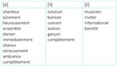<div class="loader"></div></div><div class="content"><h3>Lösung (pdf)</h3><ul class="files"><li class=""><a onclick="" target="_blank" href="content/media/lsg/563015_30_13_lsg.pdf" data-file-type="application/pdf">Öffnen</a></li><li class="save-link"><a onclick="" target="_blank" href="content/media/lsg/563015_30_13_lsg.pdf" >Speichern unter</a></li></ul></div></div></li></ul></div></div><div class="page-wide-materials"><ul class="materials"></ul></div></div><div class="layer Differenzierung" data-type="anchors" data-layer-id="layer14"><div class="tooltip" data-placement=""><div class="tooltip-top"><div class="tooltip-content"><p>Differenzierung</p></div></div></div><div class="anchor Text-Bild-Info-Inhalt" style="left: 75.78%; top: 19.23%;" ><div class="anchor-materials" data-layer="layer14"><ul class="materials"><li><div class="material" data-material-id="4325" ><div class="richtext"><p>In der leichteren Übung SB, <i>En plus</i>, S. 138, Nr. 2 ist vorgegeben, wo ein Adjektiv und wo ein Adverb eingesetzt werden muss.</p><a class="print">Drucken</a></div></div></li></ul></div></div><div class="page-wide-materials"><ul class="materials"></ul></div></div><div class="layer Multimedia always-visible" data-type="media" data-layer-id="layer5"><div class="tooltip" data-placement=""><div class="tooltip-top"><div class="tooltip-content"><p class="tooltip-title">CD 1, Track 18: Jeu de sons</p><p class="tooltip-subtitle"></p></div></div></div><div class="anchor Medium-Sprache" style="left: 9.63%; top: 86.03%;" ><div class="anchor-materials" data-layer="layer5"><ul class="materials"><li><div class="material" data-material-id="1017" ><div class="content"><h3>CD 1, Track 18: Jeu de sons (mp3)</h3><ul class="files"><li class=""><a onclick="" target="_blank" href="content/media/audios/lcd1/lcd1_018.mp3" data-file-type="audio/mpeg">Öffnen</a></li></ul></div></div></li></ul></div></div><div class="page-wide-materials"><ul class="materials"></ul></div></div><div class="layer Sprungmarke always-visible" data-type="root" data-layer-id="layer0"><a href="?page=140" target="_blank" class="rect" style="position: absolute;z-index:1; left: 78.77%; top: 17.38%; width: 13.67%; height: 3.51%"></a><div class="page-wide-materials"><ul class="materials"></ul></div></div><div class="layer Nur-Materialien" data-type="materials" data-layer-id="bar20"><div class="page-wide-materials"><ul class="materials"><li><div class="material" data-material-id="1123" ><div class="thumb"><div class="loader"></div></div><input class="toggler" type="checkbox" id="id_177"><div class="content"><h3><label for="id_177">CD 1, Track 18: Jeu de sons (mp3)</label></h3><h4>Audio zu S. 31, Nr. 13</h4><ul class="files"><li class=""><a onclick="" target="_blank" href="content/media/audios/lcd1/lcd1_018.mp3" data-file-type="audio/mpeg">Öffnen</a></li><li class="save-link"><a onclick="" target="_blank" href="content/media/audios/lcd1/lcd1_018.mp3" >Speichern unter</a></li></ul></div><div class="attached"><div class="material" data-material-id="6003" ><div class="thumb"><div class="loader"></div></div><div class="content"><h3>Le Cours intensif 2 </h3><h4>Allgemeine Ausgabe 3. Fremdsprache ab 2016</h4><div class="richtext"><b>Beschreibung:</b> Cahier d'activités mit MP3-CD und Übungssoftware (2. Lernjahr)<br><b>Produktnummer:</b> 978-3-12-563011-6</div><a target="_blank" class="single-link" href="https://www.klett.de/produkt/isbn/978-3-12-563011-6">Link zum Webshop</a></div></div></div></div></li><li><div class="material" data-material-id="1124" ><div class="thumb">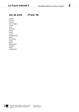<div class="loader"></div></div><input class="toggler" type="checkbox" id="id_178"><div class="content"><h3><label for="id_178">Jeu de sons (docx)</label></h3><h4>Transkription zu CD 1, Track 18</h4><ul class="files"><li class=""><a onclick="" target="_blank" href="content/media/transkript/at_l2_18.docx" data-file-type="application/vnd.openxmlformats-officedocument.wordprocessingml.document">Öffnen</a></li><li class="save-link"><a onclick="" target="_blank" href="content/media/transkript/at_l2_18.docx" >Speichern unter</a></li></ul></div><div class="attached"><div class="material" data-material-id="6004" ><div class="thumb"><div class="loader"></div></div><div class="content"><h3>Le Cours intensif 2 </h3><h4>Allgemeine Ausgabe 3. Fremdsprache ab 2016</h4><div class="richtext"><b>Beschreibung:</b> Lehrerbuch mit Multimedia-CD (2. Lernjahr)<br><b>Produktnummer:</b> 978-3-12-563015-4</div><a target="_blank" class="single-link" href="https://www.klett.de/produkt/isbn/978-3-12-563015-4">Link zum Webshop</a></div></div></div></div></li></ul></div></div><div class="layer Nur-Materialien" data-type="materials" data-layer-id="bar22"><div class="page-wide-materials"><ul class="materials"><li><div class="material" data-material-id="1403" ><div class="thumb">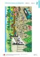<div class="loader"></div></div><input class="toggler" type="checkbox" id="id_179"><div class="content"><h3><label for="id_179">Folie 2/2 (pdf)</label></h3><h4>Passend zu S. 31</h4><ul class="files"><li class=""><a onclick="" target="_blank" href="content/media/fundus/563015_folien_l2_2-2.pdf" data-file-type="application/pdf">Öffnen</a></li><li class="save-link"><a onclick="" target="_blank" href="content/media/fundus/563015_folien_l2_2-2.pdf" >Speichern unter</a></li></ul></div><div class="attached"><div class="material" data-material-id="6004" ><div class="thumb"><div class="loader"></div></div><div class="content"><h3>Le Cours intensif 2 </h3><h4>Allgemeine Ausgabe 3. Fremdsprache ab 2016</h4><div class="richtext"><b>Beschreibung:</b> Lehrerbuch mit Multimedia-CD (2. Lernjahr)<br><b>Produktnummer:</b> 978-3-12-563015-4</div><a target="_blank" class="single-link" href="https://www.klett.de/produkt/isbn/978-3-12-563015-4">Link zum Webshop</a></div></div></div></div></li><li><div class="material" data-material-id="1247" ><div class="thumb"><div class="loader"></div></div><input class="toggler" type="checkbox" id="id_180"><div class="content"><h3><label for="id_180">Lektionsbegleitendes Vokabular (pdf)</label></h3><h4>Ausdruckbare Liste</h4><ul class="files"><li class=""><a onclick="" target="_blank" href="content/media/fundus/fu_bev.pdf" data-file-type="application/pdf">Öffnen</a></li><li class="save-link"><a onclick="" target="_blank" href="content/media/fundus/fu_bev.pdf" >Speichern unter</a></li></ul></div><div class="attached"><div class="material" data-material-id="6005" ><div class="thumb"><div class="loader"></div></div><div class="content"><h3>Le Cours intensif 2 </h3><h4>Allgemeine Ausgabe 3. Fremdsprache ab 2016</h4><div class="richtext"><b>Beschreibung:</b> Schülerbuch, Softcover (2. Lernjahr)<br><b>Produktnummer:</b> 978-3-12-563010-9</div><a target="_blank" class="single-link" href="https://www.klett.de/produkt/isbn/978-3-12-563010-9">Link zum Webshop</a></div></div></div></div></li><li><div class="material" data-material-id="1248" ><div class="thumb"><div class="loader"></div></div><input class="toggler" type="checkbox" id="id_181"><div class="content"><h3><label for="id_181">Alphabetische Wortliste (pdf)</label></h3><h4>Ausdruckbare Liste</h4><ul class="files"><li class=""><a onclick="" target="_blank" href="content/media/fundus/fu_awl.pdf" data-file-type="application/pdf">Öffnen</a></li><li class="save-link"><a onclick="" target="_blank" href="content/media/fundus/fu_awl.pdf" >Speichern unter</a></li></ul></div><div class="attached"><div class="material" data-material-id="6005" ><div class="thumb"><div class="loader"></div></div><div class="content"><h3>Le Cours intensif 2 </h3><h4>Allgemeine Ausgabe 3. Fremdsprache ab 2016</h4><div class="richtext"><b>Beschreibung:</b> Schülerbuch, Softcover (2. Lernjahr)<br><b>Produktnummer:</b> 978-3-12-563010-9</div><a target="_blank" class="single-link" href="https://www.klett.de/produkt/isbn/978-3-12-563010-9">Link zum Webshop</a></div></div></div></div></li><li><div class="material" data-material-id="1251" ><div class="thumb"><div class="loader"></div></div><input class="toggler" type="checkbox" id="id_182"><div class="content"><h3><label for="id_182">Lektionsbegleitende Grammatik (pdf)</label></h3><ul class="files"><li class=""><a onclick="" target="_blank" href="content/media/gram/fu_l2_01.pdf" data-file-type="application/pdf">Öffnen</a></li><li class="save-link"><a onclick="" target="_blank" href="content/media/gram/fu_l2_01.pdf" >Speichern unter</a></li></ul></div><div class="attached"><div class="material" data-material-id="6005" ><div class="thumb"><div class="loader"></div></div><div class="content"><h3>Le Cours intensif 2 </h3><h4>Allgemeine Ausgabe 3. Fremdsprache ab 2016</h4><div class="richtext"><b>Beschreibung:</b> Schülerbuch, Softcover (2. Lernjahr)<br><b>Produktnummer:</b> 978-3-12-563010-9</div><a target="_blank" class="single-link" href="https://www.klett.de/produkt/isbn/978-3-12-563010-9">Link zum Webshop</a></div></div></div></div></li></ul></div></div><div class="layer Nur-Materialien" data-type="materials" data-layer-id="bar18"><div class="page-wide-materials"><ul class="materials"><li><div class="material" data-material-id="1378" ><div class="thumb"><div class="loader"></div></div><input class="toggler" type="checkbox" id="id_183"><div class="content"><h3><label for="id_183">Blätterbares Lehrerbuch (html)</label></h3><h4>S. 30–33</h4><div class="richtext"><p>Das Lehrerbuch bietet viele methodische Hinweise zu jeder Leçon, Kopiervorlagen u.v.m. </p></div><ul class="files"><li class=""><a onclick="" target="_blank" href="content/media/ep-1405/app.html?page=32" data-file-type="tgd-epaper" data-dimension="1200-800">Öffnen</a></li></ul></div><div class="attached"><div class="material" data-material-id="6004" ><div class="thumb"><div class="loader"></div></div><div class="content"><h3>Le Cours intensif 2 </h3><h4>Allgemeine Ausgabe 3. Fremdsprache ab 2016</h4><div class="richtext"><b>Beschreibung:</b> Lehrerbuch mit Multimedia-CD (2. Lernjahr)<br><b>Produktnummer:</b> 978-3-12-563015-4</div><a target="_blank" class="single-link" href="https://www.klett.de/produkt/isbn/978-3-12-563015-4">Link zum Webshop</a></div></div></div></div></li></ul></div></div><div class="layer Nur-Materialien" data-type="materials" data-layer-id="bar19"><div class="page-wide-materials"><ul class="materials"><li><div class="material" data-material-id="1294" ><div class="thumb"><div class="loader"></div></div><input class="toggler" type="checkbox" id="id_184"><div class="content"><h3><label for="id_184">Cahier d'activités (html)</label></h3><h4>S. 13-14</h4><ul class="files"><li class=""><a onclick="" target="_blank" href="content/media/epaper/cda/app.html?page=15" data-file-type="tgd-epaper" data-dimension="1200-800">Öffnen</a></li></ul></div><div class="attached"><div class="material" data-material-id="6006" ><div class="thumb"><div class="loader"></div></div><div class="content"><h3>Le Cours intensif 2 </h3><h4>Allgemeine Ausgabe 3. Fremdsprache ab 2016</h4><div class="richtext"><b>Beschreibung:</b> Cahier d'activités Lehrerausgabe mit Lösungen, MP3-CD und Übungssoftware (2. Lernjahr)<br><b>Produktnummer:</b> 978-3-12-563019-2</div><a target="_blank" class="single-link" href="https://www.klett.de/produkt/isbn/978-3-12-563019-2">Link zum Webshop</a></div></div></div></div></li></ul></div></div></div></div></div><div class="page " data-title="32" data-pos="34"><div class="content"><div class="rough-image" style="background: url('content/pages/thumbs_0.png') -25344px 0 no-repeat; background-size: auto 100% !important;"></div><div class="pagr-thumb" style="background: url('content/pages/thumbs_0.png') -3168px 0 no-repeat;"></div><div class="image-layers"><div><div style="background-image: url('content/pages/page_33/Scale1.png')"></div></div><div><div style="background-image: url('content/pages/page_33/Scale2.png')"></div></div><div><div style="background-image: url('content/pages/page_33/Scale4.png')"></div></div></div><section class="searchable"><p class="text">en français votre correspondant français trouvé cet article qui annonce la fête de la musique hanovre mais il ne comprend pas tout vous lui expliquez depuis quand la fête de la musique lieu hanovre qui participe la fête de la musique ce qu’on peut entendre ce qui est nouveau cette année comment cette nouveauté neuheit fonctionne mehr als städte rund um den globus feiern am juni das größte musikfest der welt die fête de la musique hannover ist auch in diesem jahr teil dieser bewegung und gehört neben berlin und paris zu den größten veranstaltungen ihrer art bereits zum neunten mal feiert die landeshauptstadt den kalendarischen sommeranfang und längsten tag des jahres mit dem weltweiten musikfest zur völkerverständigung und toleranz auf bühnen-stand orten inund outdoor an den unterschiedlichsten plätzen der stadt bringen rund 3.000 musikerinnen lokaler regionaler nationaler und internationaler herkun hannover von bis uhr in bewegung viele unterschiedliche musikrichtungen sind auf dem genreübergreifenden festival vertreten in diesem jahr gibt es zudem erstmals eine app zur fête … sie informiert rund um die fête de la musique am juni in hannover mit einer programmübersicht einer integrierten suche nach künstler innen sowie einer interaktiven karte mit allen standorten die nutzerinnen können favoriten fest legen sich deren standort direkt auf der app anzeigen und sich darüber hinaus auch dorthin navigieren lassen die erinnerungsfunktion hil da bei keinen der favorisierten au ritte zu verpassen der integrierte fotoautomat ermöglicht es selbstgemachte fotos direkt auf der facebook-seite der fête zu posten www.hannover.de musikalischer sommeranfang in der city médiation stratégie une interview sur un festival une fête travaillez quatre un élève est le journaliste les trois autres sont des fans dans chaque groupe le journaliste interviewe les fans qui parlent d’un festival ou d’une fête qui leur plu mettez-vous d’abord d’accord sur un festival puis préparez vos questions et vos réponses votre fi let mots de la page peut vous aider faites ensuite l’interview vous pouvez la fi lmer ou l’enregistrer mini-tâche parler on dit parler d’une fête ou d’un festival chaque année le il la fête le festival de cette fête ce festival existe depuis elle il dure jours une semaine cette fête ce festival lieu dans la rue dans un parc dans une salle de concert c’est un concert en plein air l’entrée est gratuite payante des artistes sportifs du monde entier se retrouvent ce festival le public applaudit siffl l’ambiance est super géniale c’est un succès énorme entrée atelier atelier coin lecture bilan trente-deux</p><link type="image/svg+xml" href="content/pages/page_33/searchwords.svg"></section><div class="draw-layer"><svg xmlns="http://www.w3.org/2000/svg" width="768" height="1024"></svg></div><div class="note-icon-layer"></div><div class="annotation-layers"><div class="layer Eigene-Materialien" data-type="materials" data-layer-id="bar1"><div class="page-wide-materials"><ul class="materials"></ul></div></div><div class="layer Auszeichnung1" data-type="vector" data-layer-id="layer16"><a class="rect" style="position: absolute;z-index:1; left: 20.44%; top: 57.51%; width: 9.24%; height: 3.51%"></a><a class="rect" style="position: absolute;z-index:1; left: 51.43%; top: 65.72%; width: 3.25%; height: 3.51%"></a><a class="rect" style="position: absolute;z-index:1; left: 33.72%; top: 70.8%; width: 5.85%; height: 3.51%"></a><a class="rect" style="position: absolute;z-index:1; left: 27.73%; top: 72.36%; width: 5.59%; height: 3.51%"></a><div class="page-wide-materials"><ul class="materials"></ul></div></div><div class="layer Loesungen" data-type="anchors" data-layer-id="layer15"><div class="tooltip" data-placement=""><div class="tooltip-top"><div class="tooltip-content"><p>Lösungen</p></div></div></div><div class="anchor Text-Bild-Info-Inhalt" style="left: 2.99%; top: 19.72%;" ><div class="anchor-materials" data-layer="layer15"><ul class="materials"><li><div class="material" data-material-id="4050" ><div class="richtext"><p>a) La fête de la musique a lieu pour la neuvième fois à Hanovre. <br />b) Il y a à peu près 3000 musiciens qui viennent de la ville d’Hanovre ou de sa région, d’autres régions en Allemagne ou même d’autres pays. <br />c) On peut entendre beaucoup de styles de musique différents. <br />d) Cette année, il y a une appli qui informe les visiteurs sur la fête de la musique. <br />e) Il faut télécharger l’appli : après on peut chercher ses artistes préférés et l’appli montre comment on va au lieu de leurs concerts ou dit quand les concerts ont lieu (comme ça, on ne rate pas de concert !). On peut aussi faire des photos avec l’appli.</p><a class="print">Drucken</a></div></div></li></ul></div></div><div class="tooltip" data-placement=""><div class="tooltip-top"><div class="tooltip-content"><p>Lösungen</p></div></div></div><div class="anchor Text-Bild-Info-Inhalt" style="left: 2.99%; top: 84.96%;" ><div class="anchor-materials" data-layer="layer15"><ul class="materials"><li><div class="material" data-material-id="4051" ><div class="richtext"><p><i>Individuelle Schülerantworten</i>, z. B.:<br />– A quel festival est-ce que vous êtes allés ? / A quel évènement est-ce que vous avez participé ?<br />– Nous sommes allés au festival de jazz à Gronau.<br />– Quels artistes étaient au festival ?<br />– Il y avait plusieurs scènes et plusieurs artistes, surtout des musiciens anglais, mais aussi des artistes d’autres pays.<br />– Avec qui est-ce que vous êtes allés à ce festival ?<br />– Nous sommes allés au festival avec des copains.<br />– Où est-ce que vous avez acheté les entrées pour le festival ?<br />– On pouvait prendre les entrées en ligne.<br />– Combien ont coûté les entrées ?<br />– Il y avait des plusieurs tarifs. Un billet adulte coûtait 27 euros. Mais pour nous, c’était 24 euros pour deux jours.<br />– Est-ce que le festival vous a plu ? Pourquoi ?<br />– Le festival nous a énormément plu. Mais c’est surtout l’ambiance qui nous a plu : on a rencontré des jeunes d’autres pays, c’était cool !<br />– Comment est-ce que vous êtes allés au festival ?<br />– On a dû prendre deux trains et un bus, c’était long !<br />– A quelle heure a commencé le festival ?<br />– Il a commencé vendredi soir à 20 heures et a fini le dimanche soir.</p><a class="print">Drucken</a></div></div></li></ul></div></div><div class="page-wide-materials"><ul class="materials"></ul></div></div><div class="layer Sprungmarke always-visible" data-type="root" data-layer-id="layer0"><a href="?page=170" target="_blank" class="rect" style="position: absolute;z-index:1; left: 2.86%; top: 14.94%; width: 10.41%; height: 2.53%"></a><a href="?page=32" target="_blank" class="rect" style="position: absolute;z-index:1; left: 46.74%; top: 88.08%; width: 6.25%; height: 2.53%"></a><div class="page-wide-materials"><ul class="materials"></ul></div></div><div class="layer Nur-Materialien" data-type="materials" data-layer-id="bar22"><div class="page-wide-materials"><ul class="materials"><li><div class="material" data-material-id="1264" ><div class="thumb">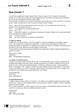<div class="loader"></div></div><input class="toggler" type="checkbox" id="id_185"><div class="content"><h3><label for="id_185">Que choisir ? (docx)</label></h3><h4>Editierbarer Lektionstext</h4><ul class="files"><li class=""><a onclick="" target="_blank" href="content/media/l-texte/st_l2_03.docx" data-file-type="application/vnd.openxmlformats-officedocument.wordprocessingml.document">Öffnen</a></li><li class="save-link"><a onclick="" target="_blank" href="content/media/l-texte/st_l2_03.docx" >Speichern unter</a></li></ul></div><div class="attached"><div class="material" data-material-id="6005" ><div class="thumb"><div class="loader"></div></div><div class="content"><h3>Le Cours intensif 2 </h3><h4>Allgemeine Ausgabe 3. Fremdsprache ab 2016</h4><div class="richtext"><b>Beschreibung:</b> Schülerbuch, Softcover (2. Lernjahr)<br><b>Produktnummer:</b> 978-3-12-563010-9</div><a target="_blank" class="single-link" href="https://www.klett.de/produkt/isbn/978-3-12-563010-9">Link zum Webshop</a></div></div></div></div></li><li><div class="material" data-material-id="1247" ><div class="thumb"><div class="loader"></div></div><input class="toggler" type="checkbox" id="id_186"><div class="content"><h3><label for="id_186">Lektionsbegleitendes Vokabular (pdf)</label></h3><h4>Ausdruckbare Liste</h4><ul class="files"><li class=""><a onclick="" target="_blank" href="content/media/fundus/fu_bev.pdf" data-file-type="application/pdf">Öffnen</a></li><li class="save-link"><a onclick="" target="_blank" href="content/media/fundus/fu_bev.pdf" >Speichern unter</a></li></ul></div><div class="attached"><div class="material" data-material-id="6005" ><div class="thumb"><div class="loader"></div></div><div class="content"><h3>Le Cours intensif 2 </h3><h4>Allgemeine Ausgabe 3. Fremdsprache ab 2016</h4><div class="richtext"><b>Beschreibung:</b> Schülerbuch, Softcover (2. Lernjahr)<br><b>Produktnummer:</b> 978-3-12-563010-9</div><a target="_blank" class="single-link" href="https://www.klett.de/produkt/isbn/978-3-12-563010-9">Link zum Webshop</a></div></div></div></div></li><li><div class="material" data-material-id="1248" ><div class="thumb"><div class="loader"></div></div><input class="toggler" type="checkbox" id="id_187"><div class="content"><h3><label for="id_187">Alphabetische Wortliste (pdf)</label></h3><h4>Ausdruckbare Liste</h4><ul class="files"><li class=""><a onclick="" target="_blank" href="content/media/fundus/fu_awl.pdf" data-file-type="application/pdf">Öffnen</a></li><li class="save-link"><a onclick="" target="_blank" href="content/media/fundus/fu_awl.pdf" >Speichern unter</a></li></ul></div><div class="attached"><div class="material" data-material-id="6005" ><div class="thumb"><div class="loader"></div></div><div class="content"><h3>Le Cours intensif 2 </h3><h4>Allgemeine Ausgabe 3. Fremdsprache ab 2016</h4><div class="richtext"><b>Beschreibung:</b> Schülerbuch, Softcover (2. Lernjahr)<br><b>Produktnummer:</b> 978-3-12-563010-9</div><a target="_blank" class="single-link" href="https://www.klett.de/produkt/isbn/978-3-12-563010-9">Link zum Webshop</a></div></div></div></div></li><li><div class="material" data-material-id="1251" ><div class="thumb"><div class="loader"></div></div><input class="toggler" type="checkbox" id="id_188"><div class="content"><h3><label for="id_188">Lektionsbegleitende Grammatik (pdf)</label></h3><ul class="files"><li class=""><a onclick="" target="_blank" href="content/media/gram/fu_l2_01.pdf" data-file-type="application/pdf">Öffnen</a></li><li class="save-link"><a onclick="" target="_blank" href="content/media/gram/fu_l2_01.pdf" >Speichern unter</a></li></ul></div><div class="attached"><div class="material" data-material-id="6005" ><div class="thumb"><div class="loader"></div></div><div class="content"><h3>Le Cours intensif 2 </h3><h4>Allgemeine Ausgabe 3. Fremdsprache ab 2016</h4><div class="richtext"><b>Beschreibung:</b> Schülerbuch, Softcover (2. Lernjahr)<br><b>Produktnummer:</b> 978-3-12-563010-9</div><a target="_blank" class="single-link" href="https://www.klett.de/produkt/isbn/978-3-12-563010-9">Link zum Webshop</a></div></div></div></div></li></ul></div></div><div class="layer Nur-Materialien" data-type="materials" data-layer-id="bar18"><div class="page-wide-materials"><ul class="materials"><li><div class="material" data-material-id="1379" ><div class="thumb"><div class="loader"></div></div><input class="toggler" type="checkbox" id="id_189"><div class="content"><h3><label for="id_189">Blätterbares Lehrerbuch (html)</label></h3><h4>S. 34–35</h4><div class="richtext"><p>Das Lehrerbuch bietet viele methodische Hinweise zu jeder Leçon, Kopiervorlagen u.v.m. </p></div><ul class="files"><li class=""><a onclick="" target="_blank" href="content/media/ep-1405/app.html?page=36" data-file-type="tgd-epaper" data-dimension="1200-800">Öffnen</a></li></ul></div><div class="attached"><div class="material" data-material-id="6004" ><div class="thumb"><div class="loader"></div></div><div class="content"><h3>Le Cours intensif 2 </h3><h4>Allgemeine Ausgabe 3. Fremdsprache ab 2016</h4><div class="richtext"><b>Beschreibung:</b> Lehrerbuch mit Multimedia-CD (2. Lernjahr)<br><b>Produktnummer:</b> 978-3-12-563015-4</div><a target="_blank" class="single-link" href="https://www.klett.de/produkt/isbn/978-3-12-563015-4">Link zum Webshop</a></div></div></div></div></li></ul></div></div></div></div></div><div class="page " data-title="33" data-pos="35"><div class="content"><div class="rough-image" style="background: url('content/pages/thumbs_0.png') -26112px 0 no-repeat; background-size: auto 100% !important;"></div><div class="pagr-thumb" style="background: url('content/pages/thumbs_0.png') -3264px 0 no-repeat;"></div><div class="image-layers"><div><div style="background-image: url('content/pages/page_34/Scale1.png')"></div></div><div><div style="background-image: url('content/pages/page_34/Scale2.png')"></div></div><div><div style="background-image: url('content/pages/page_34/Scale4.png')"></div></div></div><section class="searchable"><p class="text">que choisir les journées du patrimoine existent depuis 1984 en france et depuis 1991 en europe en septembre pendant tout un week-end le public peut visiter gratuitement des monuments mais aussi découvrir des lieux peu connus que normalement personne ne peut visiter clara veut faire un podcast sur les journées du patrimoine pour la radio de son lycée et présenter un des lieux qu’elle visités elle parle de son idée lucas qui n’est pas vraiment emballé… lucas mais enfi clara quelle idée est-ce que tu as eue là tu n’as vraiment rien trouvé pour ton podcast ça ne va intéresser personne clara tu es déjà allé aux journées du patrimoine lucas euh… non… clara evidemment quand on ne connaît pas on pense que c’est rasoir mais en fait ça plaît énormément et puis le programme est génial regarde lucas c’est quoi ces croix clara ah je les ai faites pour les visites qui m’intéressent l1/19 le palais de l’elysée ce bâtiment une longue histoire louis xv l’a acheté en 1753 pour la marquise de pompadour depuis 1873 il est la résidence du président de la république le palais compte employés et pièces pendant les journées du patrimoine les visiteurs peuvent découvrir le bureau du président mais aussi la salle des fêtes où ont lieu les repas avec les chefs d’etat du monde entier comme toutes les années des employés de l’elysée font le guide dans le palais et répondent gentiment aux questions du public entrée avenue gabriel 75008 paris métro champs-elysées-clémenceau les ateliers yves saint laurent la maison yves saint laurent ysl est née en 1961 et immédiatement connu le succès récemment la fondation pierre bergé-yves saint laurent décidé de participer aux journées du patrimoine et d’ouvrir les portes de ce lieu resté inconnu pendant longtemps le public peut visiter trois pièces le bureau de pierre bergé le compagnon d’ysl la salle de réunion avec quatre portraits d’ysl par andy warhol et enfi l’atelier où se trouvent 5000 tenues qu’ysl dessinées dans le bureau d’yves saint laurent rien n’a changé ses lunettes xxl et ses crayons sont encore l’endroit où il les laissés avenue marceau 75116 paris métro alma-marceau entrée atelier atelier coin lecture bilan trente-trois</p><link type="image/svg+xml" href="content/pages/page_34/searchwords.svg"></section><div class="draw-layer"><svg xmlns="http://www.w3.org/2000/svg" width="768" height="1024"></svg></div><div class="note-icon-layer"></div><div class="annotation-layers"><div class="layer Eigene-Materialien" data-type="materials" data-layer-id="bar1"><div class="page-wide-materials"><ul class="materials"></ul></div></div><div class="layer Auszeichnung1" data-type="vector" data-layer-id="layer16"><a class="rect" style="position: absolute;z-index:1; left: 53.12%; top: 14.94%; width: 5.59%; height: 3.51%"></a><a class="rect" style="position: absolute;z-index:1; left: 73.69%; top: 15.13%; width: 9.89%; height: 3.51%"></a><a class="rect" style="position: absolute;z-index:1; left: 30.98%; top: 17.96%; width: 5.72%; height: 3.51%"></a><a class="rect" style="position: absolute;z-index:1; left: 78.9%; top: 19.72%; width: 5.98%; height: 3.51%"></a><a class="rect" style="position: absolute;z-index:1; left: 47.26%; top: 23.92%; width: 7.29%; height: 3.51%"></a><a class="rect" style="position: absolute;z-index:1; left: 61.45%; top: 28.8%; width: 8.59%; height: 3.51%"></a><a class="rect" style="position: absolute;z-index:1; left: 23.82%; top: 30.37%; width: 10.28%; height: 3.51%"></a><a class="rect" style="position: absolute;z-index:1; left: 32.29%; top: 31.93%; width: 4.16%; height: 3.51%"></a><a class="rect" style="position: absolute;z-index:1; left: 20.83%; top: 55.46%; width: 6.9%; height: 3.51%"></a><a class="rect" style="position: absolute;z-index:1; left: 42.44%; top: 58.88%; width: 7.03%; height: 3.51%"></a><a class="rect" style="position: absolute;z-index:1; left: 20.96%; top: 60.44%; width: 19.27%; height: 3.51%"></a><a class="rect" style="position: absolute;z-index:1; left: 27.47%; top: 62.2%; width: 7.03%; height: 3.51%"></a><a class="rect" style="position: absolute;z-index:1; left: 18.61%; top: 65.42%; width: 6.25%; height: 3.51%"></a><a class="rect" style="position: absolute;z-index:1; left: 39.58%; top: 68.65%; width: 8.85%; height: 3.51%"></a><a class="rect" style="position: absolute;z-index:1; left: 69.14%; top: 63.76%; width: 5.85%; height: 3.51%"></a><a class="rect" style="position: absolute;z-index:1; left: 74.86%; top: 68.65%; width: 6.11%; height: 3.51%"></a><a class="rect" style="position: absolute;z-index:1; left: 85.41%; top: 68.65%; width: 2.6%; height: 3.51%"></a><a class="rect" style="position: absolute;z-index:1; left: 61.45%; top: 71.97%; width: 4.94%; height: 3.51%"></a><a class="rect" style="position: absolute;z-index:1; left: 73.17%; top: 71.97%; width: 7.42%; height: 3.51%"></a><a class="rect" style="position: absolute;z-index:1; left: 83.98%; top: 73.33%; width: 3.9%; height: 3.51%"></a><a class="rect" style="position: absolute;z-index:1; left: 60.54%; top: 75.29%; width: 5.33%; height: 3.51%"></a><a class="rect" style="position: absolute;z-index:1; left: 83.33%; top: 76.95%; width: 5.46%; height: 1.66%"></a><a class="rect" style="position: absolute;z-index:1; left: 67.83%; top: 76.75%; width: 5.98%; height: 3.51%"></a><a class="rect" style="position: absolute;z-index:1; left: 20.31%; top: 28.71%; width: 10.15%; height: 3.51%"></a><a class="rect" style="position: absolute;z-index:1; left: 28.38%; top: 77.05%; width: 7.94%; height: 1.75%"></a><a class="rect" style="position: absolute;z-index:1; left: 58.2%; top: 58.98%; width: 8.72%; height: 3.51%"></a><div class="page-wide-materials"><ul class="materials"></ul></div></div><div class="layer Auszeichnung3" data-type="vector" data-layer-id="layer17"><a class="rect" style="position: absolute;z-index:1; left: 73.56%; top: 16.6%; width: 9.89%; height: 2.05%"></a><a class="rect" style="position: absolute;z-index:1; left: 25.65%; top: 21.48%; width: 11.97%; height: 2.05%"></a><a class="rect" style="position: absolute;z-index:1; left: 33.85%; top: 23.92%; width: 8.98%; height: 1.85%"></a><a class="rect" style="position: absolute;z-index:1; left: 54.81%; top: 23.92%; width: 3.25%; height: 2.05%"></a><a class="rect" style="position: absolute;z-index:1; left: 63.54%; top: 23.82%; width: 1.56%; height: 2.05%"></a><a class="rect" style="position: absolute;z-index:1; left: 74.6%; top: 23.92%; width: 3.25%; height: 2.05%"></a><a class="rect" style="position: absolute;z-index:1; left: 34.63%; top: 25.78%; width: 2.34%; height: 1.56%"></a><a class="rect" style="position: absolute;z-index:1; left: 47.26%; top: 25.39%; width: 7.16%; height: 2.05%"></a><a class="rect" style="position: absolute;z-index:1; left: 20.18%; top: 30.37%; width: 10.54%; height: 1.85%"></a><a class="rect" style="position: absolute;z-index:1; left: 25.26%; top: 35.44%; width: 8.59%; height: 1.66%"></a><a class="rect" style="position: absolute;z-index:1; left: 18.48%; top: 58.98%; width: 7.42%; height: 1.95%"></a><a class="rect" style="position: absolute;z-index:1; left: 28.51%; top: 76.75%; width: 7.81%; height: 2.05%"></a><a class="rect" style="position: absolute;z-index:1; left: 57.94%; top: 60.44%; width: 8.98%; height: 2.05%"></a><a class="rect" style="position: absolute;z-index:1; left: 66.92%; top: 73.43%; width: 13.28%; height: 2.05%"></a><a class="rect" style="position: absolute;z-index:1; left: 83.98%; top: 74.8%; width: 3.25%; height: 2.05%"></a><a class="rect" style="position: absolute;z-index:1; left: 57.94%; top: 76.85%; width: 2.34%; height: 1.75%"></a><a class="rect" style="position: absolute;z-index:1; left: 77.34%; top: 78.51%; width: 8.59%; height: 1.95%"></a><a class="rect" style="position: absolute;z-index:1; left: 23.82%; top: 31.83%; width: 10.02%; height: 2.05%"></a><div class="page-wide-materials"><ul class="materials"></ul></div></div><div class="layer Multimedia always-visible" data-type="media" data-layer-id="layer5"><div class="tooltip" data-placement=""><div class="tooltip-top"><div class="tooltip-content"><p class="tooltip-title">CD 1, Track 19: Que choisir ?</p><p class="tooltip-subtitle"></p></div></div></div><div class="anchor Medium-Sprache" style="left: 9.63%; top: 14.94%;" ><div class="anchor-materials" data-layer="layer5"><ul class="materials"><li><div class="material" data-material-id="1018" ><div class="content"><h3>CD 1, Track 19: Que choisir ? (mp3)</h3><ul class="files"><li class=""><a onclick="" target="_blank" href="content/media/audios/lcd1/lcd1_019.mp3" data-file-type="audio/mpeg">Öffnen</a></li></ul></div></div></li></ul></div></div><div class="page-wide-materials"><ul class="materials"></ul></div></div><div class="layer Nur-Materialien" data-type="materials" data-layer-id="bar20"><div class="page-wide-materials"><ul class="materials"><li><div class="material" data-material-id="1125" ><div class="thumb"><div class="loader"></div></div><input class="toggler" type="checkbox" id="id_190"><div class="content"><h3><label for="id_190">CD 1, Track 19: Que choisir ? (mp3)</label></h3><h4>Audio zu S. 33, Nr. 1</h4><ul class="files"><li class=""><a onclick="" target="_blank" href="content/media/audios/lcd1/lcd1_019.mp3" data-file-type="audio/mpeg">Öffnen</a></li><li class="save-link"><a onclick="" target="_blank" href="content/media/audios/lcd1/lcd1_019.mp3" >Speichern unter</a></li></ul></div><div class="attached"><div class="material" data-material-id="6003" ><div class="thumb"><div class="loader"></div></div><div class="content"><h3>Le Cours intensif 2 </h3><h4>Allgemeine Ausgabe 3. Fremdsprache ab 2016</h4><div class="richtext"><b>Beschreibung:</b> Cahier d'activités mit MP3-CD und Übungssoftware (2. Lernjahr)<br><b>Produktnummer:</b> 978-3-12-563011-6</div><a target="_blank" class="single-link" href="https://www.klett.de/produkt/isbn/978-3-12-563011-6">Link zum Webshop</a></div></div></div></div></li></ul></div></div><div class="layer Nur-Materialien" data-type="materials" data-layer-id="bar22"><div class="page-wide-materials"><ul class="materials"><li><div class="material" data-material-id="1404" ><div class="thumb">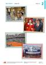<div class="loader"></div></div><input class="toggler" type="checkbox" id="id_191"><div class="content"><h3><label for="id_191">Folie 2/3 (pdf)</label></h3><h4>Passend zu S. 33–34</h4><ul class="files"><li class=""><a onclick="" target="_blank" href="content/media/fundus/563015_folien_l2_2-3.pdf" data-file-type="application/pdf">Öffnen</a></li><li class="save-link"><a onclick="" target="_blank" href="content/media/fundus/563015_folien_l2_2-3.pdf" >Speichern unter</a></li></ul></div><div class="attached"><div class="material" data-material-id="6004" ><div class="thumb"><div class="loader"></div></div><div class="content"><h3>Le Cours intensif 2 </h3><h4>Allgemeine Ausgabe 3. Fremdsprache ab 2016</h4><div class="richtext"><b>Beschreibung:</b> Lehrerbuch mit Multimedia-CD (2. Lernjahr)<br><b>Produktnummer:</b> 978-3-12-563015-4</div><a target="_blank" class="single-link" href="https://www.klett.de/produkt/isbn/978-3-12-563015-4">Link zum Webshop</a></div></div></div></div></li><li><div class="material" data-material-id="1264" ><div class="thumb"><div class="loader"></div></div><input class="toggler" type="checkbox" id="id_192"><div class="content"><h3><label for="id_192">Que choisir ? (docx)</label></h3><h4>Editierbarer Lektionstext</h4><ul class="files"><li class=""><a onclick="" target="_blank" href="content/media/l-texte/st_l2_03.docx" data-file-type="application/vnd.openxmlformats-officedocument.wordprocessingml.document">Öffnen</a></li><li class="save-link"><a onclick="" target="_blank" href="content/media/l-texte/st_l2_03.docx" >Speichern unter</a></li></ul></div><div class="attached"><div class="material" data-material-id="6005" ><div class="thumb"><div class="loader"></div></div><div class="content"><h3>Le Cours intensif 2 </h3><h4>Allgemeine Ausgabe 3. Fremdsprache ab 2016</h4><div class="richtext"><b>Beschreibung:</b> Schülerbuch, Softcover (2. Lernjahr)<br><b>Produktnummer:</b> 978-3-12-563010-9</div><a target="_blank" class="single-link" href="https://www.klett.de/produkt/isbn/978-3-12-563010-9">Link zum Webshop</a></div></div></div></div></li><li><div class="material" data-material-id="1247" ><div class="thumb"><div class="loader"></div></div><input class="toggler" type="checkbox" id="id_193"><div class="content"><h3><label for="id_193">Lektionsbegleitendes Vokabular (pdf)</label></h3><h4>Ausdruckbare Liste</h4><ul class="files"><li class=""><a onclick="" target="_blank" href="content/media/fundus/fu_bev.pdf" data-file-type="application/pdf">Öffnen</a></li><li class="save-link"><a onclick="" target="_blank" href="content/media/fundus/fu_bev.pdf" >Speichern unter</a></li></ul></div><div class="attached"><div class="material" data-material-id="6005" ><div class="thumb"><div class="loader"></div></div><div class="content"><h3>Le Cours intensif 2 </h3><h4>Allgemeine Ausgabe 3. Fremdsprache ab 2016</h4><div class="richtext"><b>Beschreibung:</b> Schülerbuch, Softcover (2. Lernjahr)<br><b>Produktnummer:</b> 978-3-12-563010-9</div><a target="_blank" class="single-link" href="https://www.klett.de/produkt/isbn/978-3-12-563010-9">Link zum Webshop</a></div></div></div></div></li><li><div class="material" data-material-id="1248" ><div class="thumb"><div class="loader"></div></div><input class="toggler" type="checkbox" id="id_194"><div class="content"><h3><label for="id_194">Alphabetische Wortliste (pdf)</label></h3><h4>Ausdruckbare Liste</h4><ul class="files"><li class=""><a onclick="" target="_blank" href="content/media/fundus/fu_awl.pdf" data-file-type="application/pdf">Öffnen</a></li><li class="save-link"><a onclick="" target="_blank" href="content/media/fundus/fu_awl.pdf" >Speichern unter</a></li></ul></div><div class="attached"><div class="material" data-material-id="6005" ><div class="thumb"><div class="loader"></div></div><div class="content"><h3>Le Cours intensif 2 </h3><h4>Allgemeine Ausgabe 3. Fremdsprache ab 2016</h4><div class="richtext"><b>Beschreibung:</b> Schülerbuch, Softcover (2. Lernjahr)<br><b>Produktnummer:</b> 978-3-12-563010-9</div><a target="_blank" class="single-link" href="https://www.klett.de/produkt/isbn/978-3-12-563010-9">Link zum Webshop</a></div></div></div></div></li><li><div class="material" data-material-id="1251" ><div class="thumb"><div class="loader"></div></div><input class="toggler" type="checkbox" id="id_195"><div class="content"><h3><label for="id_195">Lektionsbegleitende Grammatik (pdf)</label></h3><ul class="files"><li class=""><a onclick="" target="_blank" href="content/media/gram/fu_l2_01.pdf" data-file-type="application/pdf">Öffnen</a></li><li class="save-link"><a onclick="" target="_blank" href="content/media/gram/fu_l2_01.pdf" >Speichern unter</a></li></ul></div><div class="attached"><div class="material" data-material-id="6005" ><div class="thumb"><div class="loader"></div></div><div class="content"><h3>Le Cours intensif 2 </h3><h4>Allgemeine Ausgabe 3. Fremdsprache ab 2016</h4><div class="richtext"><b>Beschreibung:</b> Schülerbuch, Softcover (2. Lernjahr)<br><b>Produktnummer:</b> 978-3-12-563010-9</div><a target="_blank" class="single-link" href="https://www.klett.de/produkt/isbn/978-3-12-563010-9">Link zum Webshop</a></div></div></div></div></li></ul></div></div><div class="layer Nur-Materialien" data-type="materials" data-layer-id="bar21"><div class="page-wide-materials"><ul class="materials"><li><div class="material" data-material-id="1460" ><div class="thumb"><div class="loader"></div></div><input class="toggler" type="checkbox" id="id_196"><div class="content"><h3><label for="id_196">KV 2/3: Que choisir ? (Gruppenpuzzle) </label></h3><h4>Passend zu S. 33-34, Atelier B</h4><table class="files"><tr><td>Öffnen</td><td><a target="_blank" href="content/media/kv/wd01_563015_kv_l2_03.pdf" data-file-type="application/pdf"> pdf </a></td><td><a target="_blank" href="content/media/kv/wd01_563015_kv_l2_kv3.docx" data-file-type="application/vnd.openxmlformats-officedocument.wordprocessingml.document"> docx </a></td></tr><tr><td>Speichern unter</td><td class="save-link"><a target="_blank" href="content/media/kv/wd01_563015_kv_l2_03.pdf" > pdf </a></td><td class="save-link"><a target="_blank" href="content/media/kv/wd01_563015_kv_l2_kv3.docx" > docx </a></td></tr></table></div><div class="attached"><div class="material" data-material-id="6004" ><div class="thumb"><div class="loader"></div></div><div class="content"><h3>Le Cours intensif 2 </h3><h4>Allgemeine Ausgabe 3. Fremdsprache ab 2016</h4><div class="richtext"><b>Beschreibung:</b> Lehrerbuch mit Multimedia-CD (2. Lernjahr)<br><b>Produktnummer:</b> 978-3-12-563015-4</div><a target="_blank" class="single-link" href="https://www.klett.de/produkt/isbn/978-3-12-563015-4">Link zum Webshop</a></div></div></div></div></li><li><div class="material" data-material-id="1461" ><div class="thumb"><div class="loader"></div></div><input class="toggler" type="checkbox" id="id_197"><div class="content"><h3><label for="id_197">KV 2/3: Que choisir ? (Gruppenpuzzle) </label></h3><h4>Lösungen</h4><table class="files"><tr><td>Öffnen</td><td><a target="_blank" href="content/media/kv/wd01_563015_kv_l2_loes_03.pdf" data-file-type="application/pdf"> pdf </a></td><td><a target="_blank" href="content/media/kv/wd01_563015_kv_l2_loes_kv3.docx" data-file-type="application/vnd.openxmlformats-officedocument.wordprocessingml.document"> docx </a></td></tr><tr><td>Speichern unter</td><td class="save-link"><a target="_blank" href="content/media/kv/wd01_563015_kv_l2_loes_03.pdf" > pdf </a></td><td class="save-link"><a target="_blank" href="content/media/kv/wd01_563015_kv_l2_loes_kv3.docx" > docx </a></td></tr></table></div><div class="attached"><div class="material" data-material-id="6004" ><div class="thumb"><div class="loader"></div></div><div class="content"><h3>Le Cours intensif 2 </h3><h4>Allgemeine Ausgabe 3. Fremdsprache ab 2016</h4><div class="richtext"><b>Beschreibung:</b> Lehrerbuch mit Multimedia-CD (2. Lernjahr)<br><b>Produktnummer:</b> 978-3-12-563015-4</div><a target="_blank" class="single-link" href="https://www.klett.de/produkt/isbn/978-3-12-563015-4">Link zum Webshop</a></div></div></div></div></li></ul></div></div><div class="layer Nur-Materialien" data-type="materials" data-layer-id="bar19"><div class="page-wide-materials"><ul class="materials"><li><div class="material" data-material-id="1560" ><div class="thumb"><div class="loader"></div></div><input class="toggler" type="checkbox" id="id_198"><div class="content"><h3><label for="id_198">Cahier d'activités (html)</label></h3><h4>S. 15</h4><ul class="files"><li class=""><a onclick="" target="_blank" href="content/media/epaper/cda/app.html?page=17" data-file-type="tgd-epaper" data-dimension="1200-800">Öffnen</a></li></ul></div><div class="attached"><div class="material" data-material-id="6006" ><div class="thumb"><div class="loader"></div></div><div class="content"><h3>Le Cours intensif 2 </h3><h4>Allgemeine Ausgabe 3. Fremdsprache ab 2016</h4><div class="richtext"><b>Beschreibung:</b> Cahier d'activités Lehrerausgabe mit Lösungen, MP3-CD und Übungssoftware (2. Lernjahr)<br><b>Produktnummer:</b> 978-3-12-563019-2</div><a target="_blank" class="single-link" href="https://www.klett.de/produkt/isbn/978-3-12-563019-2">Link zum Webshop</a></div></div></div></div></li></ul></div></div><div class="layer Nur-Materialien" data-type="materials" data-layer-id="bar18"><div class="page-wide-materials"><ul class="materials"><li><div class="material" data-material-id="1379" ><div class="thumb"><div class="loader"></div></div><input class="toggler" type="checkbox" id="id_199"><div class="content"><h3><label for="id_199">Blätterbares Lehrerbuch (html)</label></h3><h4>S. 34–35</h4><div class="richtext"><p>Das Lehrerbuch bietet viele methodische Hinweise zu jeder Leçon, Kopiervorlagen u.v.m. </p></div><ul class="files"><li class=""><a onclick="" target="_blank" href="content/media/ep-1405/app.html?page=36" data-file-type="tgd-epaper" data-dimension="1200-800">Öffnen</a></li></ul></div><div class="attached"><div class="material" data-material-id="6004" ><div class="thumb"><div class="loader"></div></div><div class="content"><h3>Le Cours intensif 2 </h3><h4>Allgemeine Ausgabe 3. Fremdsprache ab 2016</h4><div class="richtext"><b>Beschreibung:</b> Lehrerbuch mit Multimedia-CD (2. Lernjahr)<br><b>Produktnummer:</b> 978-3-12-563015-4</div><a target="_blank" class="single-link" href="https://www.klett.de/produkt/isbn/978-3-12-563015-4">Link zum Webshop</a></div></div></div></div></li></ul></div></div></div></div></div><div class="page " data-title="34" data-pos="36"><div class="content"><div class="rough-image" style="background: url('content/pages/thumbs_0.png') -26880px 0 no-repeat; background-size: auto 100% !important;"></div><div class="pagr-thumb" style="background: url('content/pages/thumbs_0.png') -3360px 0 no-repeat;"></div><div class="image-layers"><div><div style="background-image: url('content/pages/page_35/Scale1.png')"></div></div><div><div style="background-image: url('content/pages/page_35/Scale2.png')"></div></div><div><div style="background-image: url('content/pages/page_35/Scale4.png')"></div></div></div><section class="searchable"><p class="text">pour comprendre le texte dites avec vos propres mots ce que sont les journées du patrimoine des visiteurs parlent des lieux qu’ils visitent dites où ils se trouvent justifi ez votre réponse voilà on est alma-marceau tu as le numéro du bâtiment j’aimerais vraiment prendre une photo de la salle où le prince william mangé avec le président français comment est-ce qu’il s’appelle déjà cet artiste américain qui fait des portraits de gens célèbres tu as entendu je crois qu’il nous faut seulement deux notes pour compléter notre mélodie tu as aussi mis tes baskets bien on peut faire un petit match alors il faut vite appeler papa et lui dire qu’on vu où lieu son émission préférée j’ai discuté avec notre guide il m’a expliqué qu’il presque mille employés ici regarde ces lunettes elles ne sont vraiment plus la mode… deux faites deux phrases sur le modèle de un élève présente ensuite sa phrase la classe devine de quel lieu il s’agit lire parler 9-11 le stade roland-garros le stade de tennis comme le public ne l’a jamais vu les visiteurs vont pendant ces deux jours pouvoir mettre le pied sur les courts où joué angelique kerber mais aussi murray federer ou djokovic mais où d’habitude personne n’a le droit d’aller pour un week-end sportif les visiteurs peuvent venir jouer comme de vrais pro fessionnels sur les courts et le public va aussi pouvoir visiter les vestiaires des stars du tennis boulevard d’auteuil 75016 paris métro michel-ange molitor la maison de la radio le bâtiment de la maison de la radio qu’on appelle couramment la maison ronde existe depuis 1964 pendant deux jours les visiteurs vont pouvoir entrer dans les studios de radio assister des émissions et découvrir ainsi le monde de la radio petits et grands vont aussi pouvoir participer un jeu de piste où il faut trouver la mélodie que les organisateurs ont cachée dans le bâtiment l’aide d’une baguette et des murs et meubles du bâtiment ils vont faire de la maison de la radio un instrument de musique avenue du président kennedy 75016 paris rer maison de radio france entrée atelier atelier coin lecture bilan trente-quatre</p><link type="image/svg+xml" href="content/pages/page_35/searchwords.svg"></section><div class="draw-layer"><svg xmlns="http://www.w3.org/2000/svg" width="768" height="1024"></svg></div><div class="note-icon-layer"></div><div class="annotation-layers"><div class="layer Eigene-Materialien" data-type="materials" data-layer-id="bar1"><div class="page-wide-materials"><ul class="materials"></ul></div></div><div class="layer Auszeichnung1" data-type="vector" data-layer-id="layer16"><a class="rect" style="position: absolute;z-index:1; left: 20.7%; top: 27.83%; width: 11.32%; height: 3.51%"></a><a class="rect" style="position: absolute;z-index:1; left: 21.09%; top: 32.81%; width: 4.68%; height: 3.51%"></a><a class="rect" style="position: absolute;z-index:1; left: 38.02%; top: 36.23%; width: 7.81%; height: 3.51%"></a><a class="rect" style="position: absolute;z-index:1; left: 81.9%; top: 29.58%; width: 4.42%; height: 3.51%"></a><a class="rect" style="position: absolute;z-index:1; left: 75%; top: 34.47%; width: 5.59%; height: 3.51%"></a><a class="rect" style="position: absolute;z-index:1; left: 57.94%; top: 36.13%; width: 7.03%; height: 3.51%"></a><a class="rect" style="position: absolute;z-index:1; left: 84.89%; top: 36.13%; width: 3.51%; height: 3.51%"></a><a class="rect" style="position: absolute;z-index:1; left: 71.61%; top: 42.67%; width: 10.28%; height: 3.51%"></a><a class="rect" style="position: absolute;z-index:1; left: 57.94%; top: 44.23%; width: 5.2%; height: 3.51%"></a><a class="rect" style="position: absolute;z-index:1; left: 58.33%; top: 45.89%; width: 6.51%; height: 3.51%"></a><a class="rect" style="position: absolute;z-index:1; left: 69.92%; top: 45.89%; width: 3.64%; height: 3.51%"></a><a class="rect" style="position: absolute;z-index:1; left: 75.91%; top: 45.89%; width: 6.11%; height: 3.51%"></a><a class="rect" style="position: absolute;z-index:1; left: 63.54%; top: 29.68%; width: 9.63%; height: 3.51%"></a><div class="page-wide-materials"><ul class="materials"></ul></div></div><div class="layer Auszeichnung3" data-type="vector" data-layer-id="layer17"><a class="rect" style="position: absolute;z-index:1; left: 44.27%; top: 29.49%; width: 4.16%; height: 2.05%"></a><a class="rect" style="position: absolute;z-index:1; left: 18.35%; top: 31.25%; width: 7.29%; height: 2.05%"></a><a class="rect" style="position: absolute;z-index:1; left: 29.16%; top: 37.69%; width: 8.59%; height: 2.05%"></a><a class="rect" style="position: absolute;z-index:1; left: 63.54%; top: 31.15%; width: 9.63%; height: 2.05%"></a><a class="rect" style="position: absolute;z-index:1; left: 65.75%; top: 44.23%; width: 19.14%; height: 1.95%"></a><a class="rect" style="position: absolute;z-index:1; left: 57.94%; top: 45.7%; width: 5.2%; height: 2.05%"></a><div class="page-wide-materials"><ul class="materials"></ul></div></div><div class="layer Loesungen" data-type="anchors" data-layer-id="layer15"><div class="tooltip" data-placement=""><div class="tooltip-top"><div class="tooltip-content"><p>Lösungen</p></div></div></div><div class="anchor Text-Bild-Info-Inhalt" style="left: 2.99%; top: 66.89%;" ><div class="anchor-materials" data-layer="layer15"><ul class="materials"><li><div class="material" data-material-id="4052" ><div class="richtext"><p>Les Journées du patrimoine existent en France et partout en Europe. Pendant ce week-end, la visite des musées et monuments est gratuite. Et exceptionnellement, des monuments ouvrent leurs portes au public.</p><a class="print">Drucken</a></div></div></li></ul></div></div><div class="tooltip" data-placement=""><div class="tooltip-top"><div class="tooltip-content"><p>Lösungen</p></div></div></div><div class="anchor Text-Bild-Info-Inhalt" style="left: 2.99%; top: 71.67%;" ><div class="anchor-materials" data-layer="layer15"><ul class="materials"><li><div class="material" data-material-id="4053" ><div class="richtext"><p>a)<br />1. Les visiteurs sont dans les ateliers Yves Saint Laurent qui se trouvent à la station de métro Alma-Marceau.<br />2. Ils sont au Palais de l’Elysée parce que c’est là qu’ont lieu les repas avec les chefs d’etat du monde entier.<br />3. Ils sont dans les ateliers Yves Saint Laurent où on peut voir des portraits d’YSL par Andy Warhol.<br />4. Ils sont à la Maison de la radio où ils participent au jeu de piste.<br />5. Ils sont au stade Roland-Garros où pendant les Journées du patrimoine, on peut aller sur les courts.<br />6. Ils sont à la Maison de la radio où on peut visiter les studios et assister à des émissions.<br />7. Ils sont au Palais de l’Elysée où travaillent 900 employés.<br />8. Ils sont dans les ateliers Yves Saint Laurent où on peut voir le bureau d’YSL avec ses lunettes.</p><p>b)<br /><i>Individuelle Schülerantworten</i>, z. B.:<br />1. Les employés montrent les différentes salles, je trouve que c’est une idée sympa. (→Le Palais de l’Elysée)<br />2. Alors c’est ici qu’ils mettent leurs vêtements de sport ? C’est petit… (→ le stade Roland-Garros (les vestiaires).</p><a class="print">Drucken</a></div></div></li></ul></div></div><div class="page-wide-materials"><ul class="materials"></ul></div></div><div class="layer Nur-Materialien" data-type="materials" data-layer-id="bar22"><div class="page-wide-materials"><ul class="materials"><li><div class="material" data-material-id="1404" ><div class="thumb"><div class="loader"></div></div><input class="toggler" type="checkbox" id="id_200"><div class="content"><h3><label for="id_200">Folie 2/3 (pdf)</label></h3><h4>Passend zu S. 33–34</h4><ul class="files"><li class=""><a onclick="" target="_blank" href="content/media/fundus/563015_folien_l2_2-3.pdf" data-file-type="application/pdf">Öffnen</a></li><li class="save-link"><a onclick="" target="_blank" href="content/media/fundus/563015_folien_l2_2-3.pdf" >Speichern unter</a></li></ul></div><div class="attached"><div class="material" data-material-id="6004" ><div class="thumb"><div class="loader"></div></div><div class="content"><h3>Le Cours intensif 2 </h3><h4>Allgemeine Ausgabe 3. Fremdsprache ab 2016</h4><div class="richtext"><b>Beschreibung:</b> Lehrerbuch mit Multimedia-CD (2. Lernjahr)<br><b>Produktnummer:</b> 978-3-12-563015-4</div><a target="_blank" class="single-link" href="https://www.klett.de/produkt/isbn/978-3-12-563015-4">Link zum Webshop</a></div></div></div></div></li><li><div class="material" data-material-id="1247" ><div class="thumb"><div class="loader"></div></div><input class="toggler" type="checkbox" id="id_201"><div class="content"><h3><label for="id_201">Lektionsbegleitendes Vokabular (pdf)</label></h3><h4>Ausdruckbare Liste</h4><ul class="files"><li class=""><a onclick="" target="_blank" href="content/media/fundus/fu_bev.pdf" data-file-type="application/pdf">Öffnen</a></li><li class="save-link"><a onclick="" target="_blank" href="content/media/fundus/fu_bev.pdf" >Speichern unter</a></li></ul></div><div class="attached"><div class="material" data-material-id="6005" ><div class="thumb"><div class="loader"></div></div><div class="content"><h3>Le Cours intensif 2 </h3><h4>Allgemeine Ausgabe 3. Fremdsprache ab 2016</h4><div class="richtext"><b>Beschreibung:</b> Schülerbuch, Softcover (2. Lernjahr)<br><b>Produktnummer:</b> 978-3-12-563010-9</div><a target="_blank" class="single-link" href="https://www.klett.de/produkt/isbn/978-3-12-563010-9">Link zum Webshop</a></div></div></div></div></li><li><div class="material" data-material-id="1248" ><div class="thumb"><div class="loader"></div></div><input class="toggler" type="checkbox" id="id_202"><div class="content"><h3><label for="id_202">Alphabetische Wortliste (pdf)</label></h3><h4>Ausdruckbare Liste</h4><ul class="files"><li class=""><a onclick="" target="_blank" href="content/media/fundus/fu_awl.pdf" data-file-type="application/pdf">Öffnen</a></li><li class="save-link"><a onclick="" target="_blank" href="content/media/fundus/fu_awl.pdf" >Speichern unter</a></li></ul></div><div class="attached"><div class="material" data-material-id="6005" ><div class="thumb"><div class="loader"></div></div><div class="content"><h3>Le Cours intensif 2 </h3><h4>Allgemeine Ausgabe 3. Fremdsprache ab 2016</h4><div class="richtext"><b>Beschreibung:</b> Schülerbuch, Softcover (2. Lernjahr)<br><b>Produktnummer:</b> 978-3-12-563010-9</div><a target="_blank" class="single-link" href="https://www.klett.de/produkt/isbn/978-3-12-563010-9">Link zum Webshop</a></div></div></div></div></li><li><div class="material" data-material-id="1251" ><div class="thumb"><div class="loader"></div></div><input class="toggler" type="checkbox" id="id_203"><div class="content"><h3><label for="id_203">Lektionsbegleitende Grammatik (pdf)</label></h3><ul class="files"><li class=""><a onclick="" target="_blank" href="content/media/gram/fu_l2_01.pdf" data-file-type="application/pdf">Öffnen</a></li><li class="save-link"><a onclick="" target="_blank" href="content/media/gram/fu_l2_01.pdf" >Speichern unter</a></li></ul></div><div class="attached"><div class="material" data-material-id="6005" ><div class="thumb"><div class="loader"></div></div><div class="content"><h3>Le Cours intensif 2 </h3><h4>Allgemeine Ausgabe 3. Fremdsprache ab 2016</h4><div class="richtext"><b>Beschreibung:</b> Schülerbuch, Softcover (2. Lernjahr)<br><b>Produktnummer:</b> 978-3-12-563010-9</div><a target="_blank" class="single-link" href="https://www.klett.de/produkt/isbn/978-3-12-563010-9">Link zum Webshop</a></div></div></div></div></li></ul></div></div><div class="layer Nur-Materialien" data-type="materials" data-layer-id="bar18"><div class="page-wide-materials"><ul class="materials"><li><div class="material" data-material-id="1379" ><div class="thumb"><div class="loader"></div></div><input class="toggler" type="checkbox" id="id_204"><div class="content"><h3><label for="id_204">Blätterbares Lehrerbuch (html)</label></h3><h4>S. 34–35</h4><div class="richtext"><p>Das Lehrerbuch bietet viele methodische Hinweise zu jeder Leçon, Kopiervorlagen u.v.m. </p></div><ul class="files"><li class=""><a onclick="" target="_blank" href="content/media/ep-1405/app.html?page=36" data-file-type="tgd-epaper" data-dimension="1200-800">Öffnen</a></li></ul></div><div class="attached"><div class="material" data-material-id="6004" ><div class="thumb"><div class="loader"></div></div><div class="content"><h3>Le Cours intensif 2 </h3><h4>Allgemeine Ausgabe 3. Fremdsprache ab 2016</h4><div class="richtext"><b>Beschreibung:</b> Lehrerbuch mit Multimedia-CD (2. Lernjahr)<br><b>Produktnummer:</b> 978-3-12-563015-4</div><a target="_blank" class="single-link" href="https://www.klett.de/produkt/isbn/978-3-12-563015-4">Link zum Webshop</a></div></div></div></div></li></ul></div></div><div class="layer Nur-Materialien" data-type="materials" data-layer-id="bar21"><div class="page-wide-materials"><ul class="materials"><li><div class="material" data-material-id="1460" ><div class="thumb"><div class="loader"></div></div><input class="toggler" type="checkbox" id="id_205"><div class="content"><h3><label for="id_205">KV 2/3: Que choisir ? (Gruppenpuzzle) </label></h3><h4>Passend zu S. 33-34, Atelier B</h4><table class="files"><tr><td>Öffnen</td><td><a target="_blank" href="content/media/kv/wd01_563015_kv_l2_03.pdf" data-file-type="application/pdf"> pdf </a></td><td><a target="_blank" href="content/media/kv/wd01_563015_kv_l2_kv3.docx" data-file-type="application/vnd.openxmlformats-officedocument.wordprocessingml.document"> docx </a></td></tr><tr><td>Speichern unter</td><td class="save-link"><a target="_blank" href="content/media/kv/wd01_563015_kv_l2_03.pdf" > pdf </a></td><td class="save-link"><a target="_blank" href="content/media/kv/wd01_563015_kv_l2_kv3.docx" > docx </a></td></tr></table></div><div class="attached"><div class="material" data-material-id="6004" ><div class="thumb"><div class="loader"></div></div><div class="content"><h3>Le Cours intensif 2 </h3><h4>Allgemeine Ausgabe 3. Fremdsprache ab 2016</h4><div class="richtext"><b>Beschreibung:</b> Lehrerbuch mit Multimedia-CD (2. Lernjahr)<br><b>Produktnummer:</b> 978-3-12-563015-4</div><a target="_blank" class="single-link" href="https://www.klett.de/produkt/isbn/978-3-12-563015-4">Link zum Webshop</a></div></div></div></div></li><li><div class="material" data-material-id="1461" ><div class="thumb"><div class="loader"></div></div><input class="toggler" type="checkbox" id="id_206"><div class="content"><h3><label for="id_206">KV 2/3: Que choisir ? (Gruppenpuzzle) </label></h3><h4>Lösungen</h4><table class="files"><tr><td>Öffnen</td><td><a target="_blank" href="content/media/kv/wd01_563015_kv_l2_loes_03.pdf" data-file-type="application/pdf"> pdf </a></td><td><a target="_blank" href="content/media/kv/wd01_563015_kv_l2_loes_kv3.docx" data-file-type="application/vnd.openxmlformats-officedocument.wordprocessingml.document"> docx </a></td></tr><tr><td>Speichern unter</td><td class="save-link"><a target="_blank" href="content/media/kv/wd01_563015_kv_l2_loes_03.pdf" > pdf </a></td><td class="save-link"><a target="_blank" href="content/media/kv/wd01_563015_kv_l2_loes_kv3.docx" > docx </a></td></tr></table></div><div class="attached"><div class="material" data-material-id="6004" ><div class="thumb"><div class="loader"></div></div><div class="content"><h3>Le Cours intensif 2 </h3><h4>Allgemeine Ausgabe 3. Fremdsprache ab 2016</h4><div class="richtext"><b>Beschreibung:</b> Lehrerbuch mit Multimedia-CD (2. Lernjahr)<br><b>Produktnummer:</b> 978-3-12-563015-4</div><a target="_blank" class="single-link" href="https://www.klett.de/produkt/isbn/978-3-12-563015-4">Link zum Webshop</a></div></div></div></div></li></ul></div></div></div></div></div><div class="page " data-title="35" data-pos="37"><div class="content"><div class="rough-image" style="background: url('content/pages/thumbs_0.png') -27648px 0 no-repeat; background-size: auto 100% !important;"></div><div class="pagr-thumb" style="background: url('content/pages/thumbs_0.png') -3456px 0 no-repeat;"></div><div class="image-layers"><div><div style="background-image: url('content/pages/page_36/Scale1.png')"></div></div><div><div style="background-image: url('content/pages/page_36/Scale2.png')"></div></div><div><div style="background-image: url('content/pages/page_36/Scale4.png')"></div></div></div><section class="searchable"><p class="text">votre famille et vous voulez aller aux journées du patrimoine chacun des souhaits wünsche différents trouvez la visite que vous pouvez faire tous ensemble cherchez dans les textes les informations qui correspondent votre rôle vous avez invité votre grand-père qui est en fauteuil roulant im rollstuhl votre petit frère trouve vite les visites ennuyeuses votre père n’a pas envie de préparer le repas après la visite votre mère déteste devoir écouter un guide quatre jouez ensuite la discussion jeu de mots trouvez l’intrus et justifi ez votre réponse l’intrus c’est un ordinateur ce sont des personnes sauf un ordinateur un organisateur un visiteur un animateur un ordinateur un musée une salle une cathédrale une école une table un lit un portrait une armoire un atelier un studio un bureau un mur des lunettes une robe une jupe un pantalon ça n’intéresse personne corrigez les informations fausses utilisez ne rien rien ne ne personne personne ne ne jamais en plus personne n’aime faire la queue pendant des heures tout le monde aime faire la queue pendant des heures clara trouvé quelqu’un pour l’accompagner aux journées du patrimoine on peut toujours visiter le palais de l’elysée pendant l’année pendant les journées du patrimoine on peut manger quelque chose l’elysée quand il des matchs tout le monde peut aller sur les courts de tennis dans le bureau d’yves saint laurent aujourd’hui tout est différent promenez-vous dans la classe et posez les questions suivantes vos camarades ils répondent en utilisant la négation la visite qu’on faite dans les phrases suivantes on accorde le participe passé avec avoir pourquoi trouvez la règle clara veut présenter un des lieux qu’elle visité clara quelle idée est-ce que tu as eu là ses crayons sont encore l’endroit où ysl les laissé parler nm32hj stratégie parler est-ce que quelqu’un manque aujourd’hui  est-ce que tu as fait quelque chose samedi soir  est-ce que quelque chose t’intéresse au cinéma  est-ce que tu vois quelqu’un après les cours  est-ce que quelqu’un t’a aidé pour les maths  est-ce que tu manges toujours la cantine  entrée atelier atelier coin lecture bilan trente-cinq</p><link type="image/svg+xml" href="content/pages/page_36/searchwords.svg"></section><div class="draw-layer"><svg xmlns="http://www.w3.org/2000/svg" width="768" height="1024"></svg></div><div class="note-icon-layer"></div><div class="annotation-layers"><div class="layer Eigene-Materialien" data-type="materials" data-layer-id="bar1"><div class="page-wide-materials"><ul class="materials"></ul></div></div><div class="layer Loesungen" data-type="anchors" data-layer-id="layer15"><div class="tooltip" data-placement=""><div class="tooltip-top"><div class="tooltip-content"><p>Lösungen</p></div></div></div><div class="anchor Text-Bild-Info-Inhalt" style="left: 3.12%; top: 13.67%;" ><div class="anchor-materials" data-layer="layer15"><ul class="materials"><li><div class="material" data-material-id="4054" ><div class="richtext"><p>a) <br />1. On peut tout visiter, sauf les ateliers Yves Saint Laurent. <br />2. A la Maison de la Radio, on peut faire un jeu de piste. Au stade Roland-Garros, on peut aller sur les courts et il y a des animations pour les enfants. Au Palais de l’Elysée, il y a aussi des jeux / des animations. <br />3. Au stade Roland-Garros et à la Maison de la Radio, on peut manger. <br />4. Aux ateliers YSL et au stade Roland-Garros, on peut faire la visite sans guide. <br />b) <i>Individuelle Schülerantworten (der einzige Ort, der die Wünsche aller erfüllt, ist der stade Roland-Garros)</i></p><a class="print">Drucken</a></div></div></li></ul></div></div><div class="tooltip" data-placement=""><div class="tooltip-top"><div class="tooltip-content"><p>Lösungen</p></div></div></div><div class="anchor Text-Bild-Info-Inhalt" style="left: 3.12%; top: 36.13%;" ><div class="anchor-materials" data-layer="layer15"><ul class="materials"><li><div class="material" data-material-id="4055" ><div class="richtext"><p>b) L’intrus, c’est une salle. Tous les autres endroits sont des bâtiments. <br />c) L’intrus, c’est le portrait. Tous les autres mots sont des meubles. <br />d) L’intrus, c’est le mur. Ce sont des pièces sauf un mur. <br />e) L’intrus, ce sont des lunettes. Ce sont des vêtements, sauf les lunettes.</p><a class="print">Drucken</a></div></div></li></ul></div></div><div class="tooltip" data-placement=""><div class="tooltip-top"><div class="tooltip-content"><p>Lösungen</p></div></div></div><div class="anchor Text-Bild-Info-Inhalt" style="left: 3.12%; top: 54.98%;" ><div class="anchor-materials" data-layer="layer15"><ul class="materials"><li><div class="material" data-material-id="4056" ><div class="richtext"><p>b) Clara n’a trouvé personne pour l’accompagner aux Journées du patrimoine. <br />c) On ne peut jamais visiter le Palais de l’Elysée pendant l’année. <br />d) Pendant les Journées du Patrimoine, on ne peut rien manger à l’Elysée. <br />e) Quand il y a des matchs, personne ne peut aller sur les courts de tennis. <br />f) Dans le bureau d’YSL, aujourd’hui, rien n’est différent.</p><a class="print">Drucken</a></div></div></li></ul></div></div><div class="tooltip" data-placement=""><div class="tooltip-top"><div class="tooltip-content"><p>Lösungen</p></div></div></div><div class="anchor Text-Bild-Info-Inhalt" style="left: 3.12%; top: 72.65%;" ><div class="anchor-materials" data-layer="layer15"><ul class="materials"><li><div class="material" data-material-id="4057" ><div class="richtext"><p>Personne ne manque aujourd’hui.<br />Je n’ai rien fait samedi soir.<br />Rien ne m’intéresse au cinéma.<br />Je ne vois personne après les cours.<br />Personne ne m’a aidé(e) pour les maths.<br />Je ne mange jamais à la cantine.</p><a class="print">Drucken</a></div></div></li></ul></div></div><div class="tooltip" data-placement=""><div class="tooltip-top"><div class="tooltip-content"><p>Lösungen</p></div></div></div><div class="anchor Text-Bild-Info-Inhalt" style="left: 3.12%; top: 88.28%;" ><div class="anchor-materials" data-layer="layer15"><ul class="materials"><li><div class="material" data-material-id="4058" ><div class="richtext"><p>Das Partizip wird dem direkten Objekt in Genus und Numerus angeglichen, weil dem konjugierten Hilfsverb avoir in der zusammengesetzten Zeit (hier: passé composé) ein direktes Objekt vorausgeht. Das direkte Objekt erscheint in der Form eines Relativpronomens (les lieux qu’elle a visités), eines Fragewortes (quelle idée est-ce que tu as eue) oder eines Objektpronomens (ses crayons sont encore à l’endroit où YSL les a laissés).</p><a class="print">Drucken</a></div></div></li></ul></div></div><div class="page-wide-materials"><ul class="materials"></ul></div></div><div class="layer Differenzierung" data-type="anchors" data-layer-id="layer14"><div class="tooltip" data-placement=""><div class="tooltip-top"><div class="tooltip-content"><p>Differenzierung</p></div></div></div><div class="anchor Text-Bild-Info-Inhalt" style="left: 96.35%; top: 55.37%;" ><div class="anchor-materials" data-layer="layer14"><ul class="materials"><li><div class="material" data-material-id="4326" ><div class="richtext"><p><b>1.</b> Für leistungsstarke Gruppen können weitere Verneinungen in das Tafelbild mit aufgenommen werden (siehe Klammern). <br /><b>2.</b> In der leichteren Übung SB, <i>En plus</i>, S. 138, Nr. 3 ist anhand von Beispielen hervorgehoben, welche Verneinung man wann benutzt.</p><a class="print">Drucken</a></div></div></li></ul></div></div><div class="page-wide-materials"><ul class="materials"></ul></div></div><div class="layer Sprungmarke always-visible" data-type="root" data-layer-id="layer0"><a href="?page=140" target="_blank" class="rect" style="position: absolute;z-index:1; left: 77.86%; top: 53.71%; width: 15.23%; height: 2.53%"></a><a href="?page=42" target="_blank" class="rect" style="position: absolute;z-index:1; left: 9.11%; top: 82.22%; width: 4.16%; height: 3.51%"></a><a href="?page=42" target="_blank" class="rect" style="position: absolute;z-index:1; left: 9.11%; top: 48.92%; width: 4.16%; height: 3.51%"></a><a href="http://code.klett.de/nm32hj" target="_blank" class="rect" style="position: absolute;z-index:1; left: 5.33%; top: 25.58%; width: 7.94%; height: 3.51%"></a><div class="page-wide-materials"><ul class="materials"></ul></div></div><div class="layer Nur-Materialien" data-type="materials" data-layer-id="bar22"><div class="page-wide-materials"><ul class="materials"><li><div class="material" data-material-id="1247" ><div class="thumb"><div class="loader"></div></div><input class="toggler" type="checkbox" id="id_207"><div class="content"><h3><label for="id_207">Lektionsbegleitendes Vokabular (pdf)</label></h3><h4>Ausdruckbare Liste</h4><ul class="files"><li class=""><a onclick="" target="_blank" href="content/media/fundus/fu_bev.pdf" data-file-type="application/pdf">Öffnen</a></li><li class="save-link"><a onclick="" target="_blank" href="content/media/fundus/fu_bev.pdf" >Speichern unter</a></li></ul></div><div class="attached"><div class="material" data-material-id="6005" ><div class="thumb"><div class="loader"></div></div><div class="content"><h3>Le Cours intensif 2 </h3><h4>Allgemeine Ausgabe 3. Fremdsprache ab 2016</h4><div class="richtext"><b>Beschreibung:</b> Schülerbuch, Softcover (2. Lernjahr)<br><b>Produktnummer:</b> 978-3-12-563010-9</div><a target="_blank" class="single-link" href="https://www.klett.de/produkt/isbn/978-3-12-563010-9">Link zum Webshop</a></div></div></div></div></li><li><div class="material" data-material-id="1248" ><div class="thumb"><div class="loader"></div></div><input class="toggler" type="checkbox" id="id_208"><div class="content"><h3><label for="id_208">Alphabetische Wortliste (pdf)</label></h3><h4>Ausdruckbare Liste</h4><ul class="files"><li class=""><a onclick="" target="_blank" href="content/media/fundus/fu_awl.pdf" data-file-type="application/pdf">Öffnen</a></li><li class="save-link"><a onclick="" target="_blank" href="content/media/fundus/fu_awl.pdf" >Speichern unter</a></li></ul></div><div class="attached"><div class="material" data-material-id="6005" ><div class="thumb"><div class="loader"></div></div><div class="content"><h3>Le Cours intensif 2 </h3><h4>Allgemeine Ausgabe 3. Fremdsprache ab 2016</h4><div class="richtext"><b>Beschreibung:</b> Schülerbuch, Softcover (2. Lernjahr)<br><b>Produktnummer:</b> 978-3-12-563010-9</div><a target="_blank" class="single-link" href="https://www.klett.de/produkt/isbn/978-3-12-563010-9">Link zum Webshop</a></div></div></div></div></li><li><div class="material" data-material-id="1251" ><div class="thumb"><div class="loader"></div></div><input class="toggler" type="checkbox" id="id_209"><div class="content"><h3><label for="id_209">Lektionsbegleitende Grammatik (pdf)</label></h3><ul class="files"><li class=""><a onclick="" target="_blank" href="content/media/gram/fu_l2_01.pdf" data-file-type="application/pdf">Öffnen</a></li><li class="save-link"><a onclick="" target="_blank" href="content/media/gram/fu_l2_01.pdf" >Speichern unter</a></li></ul></div><div class="attached"><div class="material" data-material-id="6005" ><div class="thumb"><div class="loader"></div></div><div class="content"><h3>Le Cours intensif 2 </h3><h4>Allgemeine Ausgabe 3. Fremdsprache ab 2016</h4><div class="richtext"><b>Beschreibung:</b> Schülerbuch, Softcover (2. Lernjahr)<br><b>Produktnummer:</b> 978-3-12-563010-9</div><a target="_blank" class="single-link" href="https://www.klett.de/produkt/isbn/978-3-12-563010-9">Link zum Webshop</a></div></div></div></div></li></ul></div></div><div class="layer Nur-Materialien" data-type="materials" data-layer-id="bar18"><div class="page-wide-materials"><ul class="materials"><li><div class="material" data-material-id="1381" ><div class="thumb"><div class="loader"></div></div><input class="toggler" type="checkbox" id="id_210"><div class="content"><h3><label for="id_210">Blätterbares Lehrerbuch (html)</label></h3><h4>S. 34–37</h4><div class="richtext"><p>Das Lehrerbuch bietet viele methodische Hinweise zu jeder Leçon, Kopiervorlagen u.v.m. </p></div><ul class="files"><li class=""><a onclick="" target="_blank" href="content/media/ep-1405/app.html?page=36" data-file-type="tgd-epaper" data-dimension="1200-800">Öffnen</a></li></ul></div><div class="attached"><div class="material" data-material-id="6004" ><div class="thumb"><div class="loader"></div></div><div class="content"><h3>Le Cours intensif 2 </h3><h4>Allgemeine Ausgabe 3. Fremdsprache ab 2016</h4><div class="richtext"><b>Beschreibung:</b> Lehrerbuch mit Multimedia-CD (2. Lernjahr)<br><b>Produktnummer:</b> 978-3-12-563015-4</div><a target="_blank" class="single-link" href="https://www.klett.de/produkt/isbn/978-3-12-563015-4">Link zum Webshop</a></div></div></div></div></li></ul></div></div><div class="layer Nur-Materialien" data-type="materials" data-layer-id="bar21"><div class="page-wide-materials"><ul class="materials"><li><div class="material" data-material-id="1460" ><div class="thumb"><div class="loader"></div></div><input class="toggler" type="checkbox" id="id_211"><div class="content"><h3><label for="id_211">KV 2/3: Que choisir ? (Gruppenpuzzle) </label></h3><h4>Passend zu S. 33-34, Atelier B</h4><table class="files"><tr><td>Öffnen</td><td><a target="_blank" href="content/media/kv/wd01_563015_kv_l2_03.pdf" data-file-type="application/pdf"> pdf </a></td><td><a target="_blank" href="content/media/kv/wd01_563015_kv_l2_kv3.docx" data-file-type="application/vnd.openxmlformats-officedocument.wordprocessingml.document"> docx </a></td></tr><tr><td>Speichern unter</td><td class="save-link"><a target="_blank" href="content/media/kv/wd01_563015_kv_l2_03.pdf" > pdf </a></td><td class="save-link"><a target="_blank" href="content/media/kv/wd01_563015_kv_l2_kv3.docx" > docx </a></td></tr></table></div><div class="attached"><div class="material" data-material-id="6004" ><div class="thumb"><div class="loader"></div></div><div class="content"><h3>Le Cours intensif 2 </h3><h4>Allgemeine Ausgabe 3. Fremdsprache ab 2016</h4><div class="richtext"><b>Beschreibung:</b> Lehrerbuch mit Multimedia-CD (2. Lernjahr)<br><b>Produktnummer:</b> 978-3-12-563015-4</div><a target="_blank" class="single-link" href="https://www.klett.de/produkt/isbn/978-3-12-563015-4">Link zum Webshop</a></div></div></div></div></li><li><div class="material" data-material-id="1461" ><div class="thumb"><div class="loader"></div></div><input class="toggler" type="checkbox" id="id_212"><div class="content"><h3><label for="id_212">KV 2/3: Que choisir ? (Gruppenpuzzle) </label></h3><h4>Lösungen</h4><table class="files"><tr><td>Öffnen</td><td><a target="_blank" href="content/media/kv/wd01_563015_kv_l2_loes_03.pdf" data-file-type="application/pdf"> pdf </a></td><td><a target="_blank" href="content/media/kv/wd01_563015_kv_l2_loes_kv3.docx" data-file-type="application/vnd.openxmlformats-officedocument.wordprocessingml.document"> docx </a></td></tr><tr><td>Speichern unter</td><td class="save-link"><a target="_blank" href="content/media/kv/wd01_563015_kv_l2_loes_03.pdf" > pdf </a></td><td class="save-link"><a target="_blank" href="content/media/kv/wd01_563015_kv_l2_loes_kv3.docx" > docx </a></td></tr></table></div><div class="attached"><div class="material" data-material-id="6004" ><div class="thumb"><div class="loader"></div></div><div class="content"><h3>Le Cours intensif 2 </h3><h4>Allgemeine Ausgabe 3. Fremdsprache ab 2016</h4><div class="richtext"><b>Beschreibung:</b> Lehrerbuch mit Multimedia-CD (2. Lernjahr)<br><b>Produktnummer:</b> 978-3-12-563015-4</div><a target="_blank" class="single-link" href="https://www.klett.de/produkt/isbn/978-3-12-563015-4">Link zum Webshop</a></div></div></div></div></li><li><div class="material" data-material-id="1462" ><div class="thumb"><div class="loader"></div></div><input class="toggler" type="checkbox" id="id_213"><div class="content"><h3><label for="id_213">KV 2/4a: La négation </label></h3><h4>Passend zu S. 35, Atelier B</h4><table class="files"><tr><td>Öffnen</td><td><a target="_blank" href="content/media/kv/wd01_563015_kv_l2_04a.pdf" data-file-type="application/pdf"> pdf </a></td><td><a target="_blank" href="content/media/kv/wd01_563015_kv_l2_kv4a.docx" data-file-type="application/vnd.openxmlformats-officedocument.wordprocessingml.document"> docx </a></td></tr><tr><td>Speichern unter</td><td class="save-link"><a target="_blank" href="content/media/kv/wd01_563015_kv_l2_04a.pdf" > pdf </a></td><td class="save-link"><a target="_blank" href="content/media/kv/wd01_563015_kv_l2_kv4a.docx" > docx </a></td></tr></table></div><div class="attached"><div class="material" data-material-id="6004" ><div class="thumb"><div class="loader"></div></div><div class="content"><h3>Le Cours intensif 2 </h3><h4>Allgemeine Ausgabe 3. Fremdsprache ab 2016</h4><div class="richtext"><b>Beschreibung:</b> Lehrerbuch mit Multimedia-CD (2. Lernjahr)<br><b>Produktnummer:</b> 978-3-12-563015-4</div><a target="_blank" class="single-link" href="https://www.klett.de/produkt/isbn/978-3-12-563015-4">Link zum Webshop</a></div></div></div></div></li><li><div class="material" data-material-id="1465" ><div class="thumb"><div class="loader"></div></div><input class="toggler" type="checkbox" id="id_214"><div class="content"><h3><label for="id_214">KV 2/4a: La négation </label></h3><h4>Lösungen</h4><table class="files"><tr><td>Öffnen</td><td><a target="_blank" href="content/media/kv/wd01_563015_kv_l2_loes_04a.pdf" data-file-type="application/pdf"> pdf </a></td><td><a target="_blank" href="content/media/kv/wd01_563015_kv_l2_loes_kv4a.docx" data-file-type="application/vnd.openxmlformats-officedocument.wordprocessingml.document"> docx </a></td></tr><tr><td>Speichern unter</td><td class="save-link"><a target="_blank" href="content/media/kv/wd01_563015_kv_l2_loes_04a.pdf" > pdf </a></td><td class="save-link"><a target="_blank" href="content/media/kv/wd01_563015_kv_l2_loes_kv4a.docx" > docx </a></td></tr></table></div><div class="attached"><div class="material" data-material-id="6004" ><div class="thumb"><div class="loader"></div></div><div class="content"><h3>Le Cours intensif 2 </h3><h4>Allgemeine Ausgabe 3. Fremdsprache ab 2016</h4><div class="richtext"><b>Beschreibung:</b> Lehrerbuch mit Multimedia-CD (2. Lernjahr)<br><b>Produktnummer:</b> 978-3-12-563015-4</div><a target="_blank" class="single-link" href="https://www.klett.de/produkt/isbn/978-3-12-563015-4">Link zum Webshop</a></div></div></div></div></li><li><div class="material" data-material-id="1464" ><div class="thumb"><div class="loader"></div></div><input class="toggler" type="checkbox" id="id_215"><div class="content"><h3><label for="id_215">KV 2/4b: La négation </label></h3><h4>Passend zu S. 35, Atelier B</h4><table class="files"><tr><td>Öffnen</td><td><a target="_blank" href="content/media/kv/wd01_563015_kv_l2_04b.pdf" data-file-type="application/pdf"> pdf </a></td><td><a target="_blank" href="content/media/kv/wd01_563015_kv_l2_kv4b.docx" data-file-type="application/vnd.openxmlformats-officedocument.wordprocessingml.document"> docx </a></td></tr><tr><td>Speichern unter</td><td class="save-link"><a target="_blank" href="content/media/kv/wd01_563015_kv_l2_04b.pdf" > pdf </a></td><td class="save-link"><a target="_blank" href="content/media/kv/wd01_563015_kv_l2_kv4b.docx" > docx </a></td></tr></table></div><div class="attached"><div class="material" data-material-id="6004" ><div class="thumb"><div class="loader"></div></div><div class="content"><h3>Le Cours intensif 2 </h3><h4>Allgemeine Ausgabe 3. Fremdsprache ab 2016</h4><div class="richtext"><b>Beschreibung:</b> Lehrerbuch mit Multimedia-CD (2. Lernjahr)<br><b>Produktnummer:</b> 978-3-12-563015-4</div><a target="_blank" class="single-link" href="https://www.klett.de/produkt/isbn/978-3-12-563015-4">Link zum Webshop</a></div></div></div></div></li><li><div class="material" data-material-id="1463" ><div class="thumb"><div class="loader"></div></div><input class="toggler" type="checkbox" id="id_216"><div class="content"><h3><label for="id_216">KV 2/4b: La négation </label></h3><h4>Lösungen</h4><table class="files"><tr><td>Öffnen</td><td><a target="_blank" href="content/media/kv/wd01_563015_kv_l2_loes_04b.pdf" data-file-type="application/pdf"> pdf </a></td><td><a target="_blank" href="content/media/kv/wd01_563015_kv_l2_loes_kv4b.docx" data-file-type="application/vnd.openxmlformats-officedocument.wordprocessingml.document"> docx </a></td></tr><tr><td>Speichern unter</td><td class="save-link"><a target="_blank" href="content/media/kv/wd01_563015_kv_l2_loes_04b.pdf" > pdf </a></td><td class="save-link"><a target="_blank" href="content/media/kv/wd01_563015_kv_l2_loes_kv4b.docx" > docx </a></td></tr></table></div><div class="attached"><div class="material" data-material-id="6004" ><div class="thumb"><div class="loader"></div></div><div class="content"><h3>Le Cours intensif 2 </h3><h4>Allgemeine Ausgabe 3. Fremdsprache ab 2016</h4><div class="richtext"><b>Beschreibung:</b> Lehrerbuch mit Multimedia-CD (2. Lernjahr)<br><b>Produktnummer:</b> 978-3-12-563015-4</div><a target="_blank" class="single-link" href="https://www.klett.de/produkt/isbn/978-3-12-563015-4">Link zum Webshop</a></div></div></div></div></li></ul></div></div><div class="layer Nur-Materialien" data-type="materials" data-layer-id="bar19"><div class="page-wide-materials"><ul class="materials"><li><div class="material" data-material-id="1562" ><div class="thumb"><div class="loader"></div></div><input class="toggler" type="checkbox" id="id_217"><div class="content"><h3><label for="id_217">Cahier d'activités (html)</label></h3><h4>S. 15–19</h4><ul class="files"><li class=""><a onclick="" target="_blank" href="content/media/epaper/cda/app.html?page=17" data-file-type="tgd-epaper" data-dimension="1200-800">Öffnen</a></li></ul></div><div class="attached"><div class="material" data-material-id="6006" ><div class="thumb"><div class="loader"></div></div><div class="content"><h3>Le Cours intensif 2 </h3><h4>Allgemeine Ausgabe 3. Fremdsprache ab 2016</h4><div class="richtext"><b>Beschreibung:</b> Cahier d'activités Lehrerausgabe mit Lösungen, MP3-CD und Übungssoftware (2. Lernjahr)<br><b>Produktnummer:</b> 978-3-12-563019-2</div><a target="_blank" class="single-link" href="https://www.klett.de/produkt/isbn/978-3-12-563019-2">Link zum Webshop</a></div></div></div></div></li></ul></div></div></div></div></div><div class="page " data-title="36" data-pos="38"><div class="content"><div class="rough-image" style="background: url('content/pages/thumbs_0.png') -28416px 0 no-repeat; background-size: auto 100% !important;"></div><div class="pagr-thumb" style="background: url('content/pages/thumbs_0.png') -3552px 0 no-repeat;"></div><div class="image-layers"><div><div style="background-image: url('content/pages/page_37/Scale1.png')"></div></div><div><div style="background-image: url('content/pages/page_37/Scale2.png')"></div></div><div><div style="background-image: url('content/pages/page_37/Scale4.png')"></div></div></div><section class="searchable"><p class="text">clara raconte fanny ses visites aux journées du patrimoine en plus choisissez la bonne terminaison fanny alors clara comment étaient les visites que tu as fait clara j’ai adoré tous les endroits que j’ai vu fanny tu voulais voir la maison de radio france c’est ça tu l’as visité pour la première fois clara oui c’est ça c’est une idée que j’ai eu quand j’ai lu le programme et c’était vraiment génial fanny quelles pièces est-ce que tu as particulièrement aimé clara les studios tu veux voir les photos que j’ai pris fanny oui montre le podcast de clara avant l’écoute quel était le projet de clara pour les journées du patrimoine pendant l’écoute choisissez la bonne réponse clara fait deux visites trois visites quatre visites yves saint laurent vendu toutes ses robes gardé quelques robes vendu une seule robe les ateliers sont sur les champs-elysées loin des champs-elysées près des champs-elysées clara n’a pas eu le droit de prendre des photos eu le droit de mettre une robe rencontré un mannequin avant le rue marceau c’était l’entrée d’yves saint laurent l’entrée des employés l’entrée des visiteurs les ateliers ysl vont devenir un musée devenir une école de mode partir au maroc un podcast pour la radio du lycée pendant votre échange en france vous faites un podcast pour la radio du lycée français dans la tâche finale dans votre cahier d’activités la page vous présentez sous forme de podcast un endroit intéressant de votre village ville région le podcast de clara et le dico personnel la page peuvent vous aider es écouter l1/20 nm32hj stratégie tâche finale parler strategie schreiben einen text verfassen und aufnehmen um einen text interessant und abwechslungsreich zu machen gibt es vielfältige stilistische und inhaltliche gestaltungsmöglichkeiten weitere informationen auf seite entrée atelier atelier coin lecture bilan trente-six</p><link type="image/svg+xml" href="content/pages/page_37/searchwords.svg"></section><div class="draw-layer"><svg xmlns="http://www.w3.org/2000/svg" width="768" height="1024"></svg></div><div class="note-icon-layer"></div><div class="annotation-layers"><div class="layer Eigene-Materialien" data-type="materials" data-layer-id="bar1"><div class="page-wide-materials"><ul class="materials"></ul></div></div><div class="layer Auszeichnung1" data-type="vector" data-layer-id="layer16"><a class="rect" style="position: absolute;z-index:1; left: 64.45%; top: 58.69%; width: 4.94%; height: 3.12%"></a><div class="page-wide-materials"><ul class="materials"></ul></div></div><div class="layer Loesungen" data-type="anchors" data-layer-id="layer15"><div class="tooltip" data-placement=""><div class="tooltip-top"><div class="tooltip-content"><p>Lösungen</p></div></div></div><div class="anchor Text-Bild-Info-Inhalt" style="left: 2.99%; top: 12.79%;" ><div class="anchor-materials" data-layer="layer15"><ul class="materials"><li><div class="material" data-material-id="4059" ><div class="richtext"><p><b>Fanny</b> : Alors Clara, comment étaient les visites que tu as faites ?<br /><b>Clara </b>: J’ai adoré tous les endroits que j’ai vus !<br /><b>Fanny</b> : Tu voulais voir la maison de Radio France, c’est ça ? Tu l’as visitée pour la première fois ?<br /><b>Clara</b> : Oui, c’est ça. C’est une idée que j’ai eue quand j’ai lu le programme. Et c’était vraiment génial !<br /><b>Fanny</b> : Quelles pièces est-ce que tu as particulièrement aimées ?<br /><b>Clara</b> : Les studios ! Tu veux voir les photos que j’ai prises ?<br /><b>Fanny</b> : Oui, montre !</p><a class="print">Drucken</a></div></div></li></ul></div></div><div class="tooltip" data-placement=""><div class="tooltip-top"><div class="tooltip-content"><p>Lösungen</p></div></div></div><div class="anchor Text-Bild-Info-Inhalt" style="left: 2.99%; top: 36.81%;" ><div class="anchor-materials" data-layer="layer15"><ul class="materials"><li><div class="material" data-material-id="4060" ><div class="richtext"><p>a) Elle voulait aller aux Journées du patrimoine et faire ensuite un podcast sur une de ses visites.<br />b) 1. → c) ; 2. → c); 3. → b); 4. → b); 5. → c); 6. → a)</p><a class="print">Drucken</a></div></div></li></ul></div></div><div class="page-wide-materials"><ul class="materials"></ul></div></div><div class="layer Differenzierung" data-type="anchors" data-layer-id="layer14"><div class="tooltip" data-placement=""><div class="tooltip-top"><div class="tooltip-content"><p>Differenzierung</p></div></div></div><div class="anchor Text-Bild-Info-Inhalt" style="left: 75%; top: 11.91%;" ><div class="anchor-materials" data-layer="layer14"><ul class="materials"><li><div class="material" data-material-id="4327" ><div class="richtext"><p>Leistungsschwächere S bearbeiten SB, <i>En plus</i>, S. 138, Nr. 4. Hier sind die Akkusativobjekte, die dem participe passé vorausgehen, rot (feminine Wörter) oder blau (maskuline Wörter) markiert.</p><a class="print">Drucken</a></div></div></li></ul></div></div><div class="page-wide-materials"><ul class="materials"></ul></div></div><div class="layer Multimedia always-visible" data-type="media" data-layer-id="layer5"><div class="tooltip" data-placement=""><div class="tooltip-top"><div class="tooltip-content"><p class="tooltip-title">CD 1, Track 20: Le podcast de Clara</p><p class="tooltip-subtitle"></p></div></div></div><div class="anchor Medium-Sprache" style="left: 9.63%; top: 32.81%;" ><div class="anchor-materials" data-layer="layer5"><ul class="materials"><li><div class="material" data-material-id="1019" ><div class="content"><h3>CD 1, Track 20: Le podcast de Clara (mp3)</h3><ul class="files"><li class=""><a onclick="" target="_blank" href="content/media/audios/lcd1/lcd1_020.mp3" data-file-type="audio/mpeg">Öffnen</a></li></ul></div></div></li></ul></div></div><div class="page-wide-materials"><ul class="materials"></ul></div></div><div class="layer Sprungmarke always-visible" data-type="root" data-layer-id="layer0"><a href="?page=140" target="_blank" class="rect" style="position: absolute;z-index:1; left: 78.12%; top: 10.74%; width: 15.23%; height: 2.53%"></a><a href="?page=170" target="_blank" class="rect" style="position: absolute;z-index:1; left: 75%; top: 82.12%; width: 7.94%; height: 2.53%"></a><a href="http://code.klett.de/nm32hj" target="_blank" class="rect" style="position: absolute;z-index:1; left: 4.68%; top: 38.67%; width: 8.59%; height: 3.12%"></a><a href="?page=193" target="_blank" class="rect" style="position: absolute;z-index:1; left: 16.01%; top: 83.98%; width: 6.38%; height: 2.53%"></a><div class="page-wide-materials"><ul class="materials"></ul></div></div><div class="layer Nur-Materialien" data-type="materials" data-layer-id="bar20"><div class="page-wide-materials"><ul class="materials"><li><div class="material" data-material-id="1126" ><div class="thumb"><div class="loader"></div></div><input class="toggler" type="checkbox" id="id_218"><div class="content"><h3><label for="id_218">CD 1, Track 20: Le podcast de Clara (mp3)</label></h3><h4>Audio zu S. 36, Nr. 10</h4><ul class="files"><li class=""><a onclick="" target="_blank" href="content/media/audios/lcd1/lcd1_020.mp3" data-file-type="audio/mpeg">Öffnen</a></li><li class="save-link"><a onclick="" target="_blank" href="content/media/audios/lcd1/lcd1_020.mp3" >Speichern unter</a></li></ul></div><div class="attached"><div class="material" data-material-id="6003" ><div class="thumb"><div class="loader"></div></div><div class="content"><h3>Le Cours intensif 2 </h3><h4>Allgemeine Ausgabe 3. Fremdsprache ab 2016</h4><div class="richtext"><b>Beschreibung:</b> Cahier d'activités mit MP3-CD und Übungssoftware (2. Lernjahr)<br><b>Produktnummer:</b> 978-3-12-563011-6</div><a target="_blank" class="single-link" href="https://www.klett.de/produkt/isbn/978-3-12-563011-6">Link zum Webshop</a></div></div></div></div></li><li><div class="material" data-material-id="1244" ><div class="thumb"><div class="loader"></div></div><input class="toggler" type="checkbox" id="id_219"><div class="content"><h3><label for="id_219">Le podcast de Clara (docx)</label></h3><h4>Transkription zu CD 1, Track 20</h4><ul class="files"><li class=""><a onclick="" target="_blank" href="content/media/transkript/at_l2_20.docx" data-file-type="application/vnd.openxmlformats-officedocument.wordprocessingml.document">Öffnen</a></li><li class="save-link"><a onclick="" target="_blank" href="content/media/transkript/at_l2_20.docx" >Speichern unter</a></li></ul></div><div class="attached"><div class="material" data-material-id="6004" ><div class="thumb"><div class="loader"></div></div><div class="content"><h3>Le Cours intensif 2 </h3><h4>Allgemeine Ausgabe 3. Fremdsprache ab 2016</h4><div class="richtext"><b>Beschreibung:</b> Lehrerbuch mit Multimedia-CD (2. Lernjahr)<br><b>Produktnummer:</b> 978-3-12-563015-4</div><a target="_blank" class="single-link" href="https://www.klett.de/produkt/isbn/978-3-12-563015-4">Link zum Webshop</a></div></div></div></div></li></ul></div></div><div class="layer Nur-Materialien" data-type="materials" data-layer-id="bar22"><div class="page-wide-materials"><ul class="materials"><li><div class="material" data-material-id="1247" ><div class="thumb"><div class="loader"></div></div><input class="toggler" type="checkbox" id="id_220"><div class="content"><h3><label for="id_220">Lektionsbegleitendes Vokabular (pdf)</label></h3><h4>Ausdruckbare Liste</h4><ul class="files"><li class=""><a onclick="" target="_blank" href="content/media/fundus/fu_bev.pdf" data-file-type="application/pdf">Öffnen</a></li><li class="save-link"><a onclick="" target="_blank" href="content/media/fundus/fu_bev.pdf" >Speichern unter</a></li></ul></div><div class="attached"><div class="material" data-material-id="6005" ><div class="thumb"><div class="loader"></div></div><div class="content"><h3>Le Cours intensif 2 </h3><h4>Allgemeine Ausgabe 3. Fremdsprache ab 2016</h4><div class="richtext"><b>Beschreibung:</b> Schülerbuch, Softcover (2. Lernjahr)<br><b>Produktnummer:</b> 978-3-12-563010-9</div><a target="_blank" class="single-link" href="https://www.klett.de/produkt/isbn/978-3-12-563010-9">Link zum Webshop</a></div></div></div></div></li><li><div class="material" data-material-id="1248" ><div class="thumb"><div class="loader"></div></div><input class="toggler" type="checkbox" id="id_221"><div class="content"><h3><label for="id_221">Alphabetische Wortliste (pdf)</label></h3><h4>Ausdruckbare Liste</h4><ul class="files"><li class=""><a onclick="" target="_blank" href="content/media/fundus/fu_awl.pdf" data-file-type="application/pdf">Öffnen</a></li><li class="save-link"><a onclick="" target="_blank" href="content/media/fundus/fu_awl.pdf" >Speichern unter</a></li></ul></div><div class="attached"><div class="material" data-material-id="6005" ><div class="thumb"><div class="loader"></div></div><div class="content"><h3>Le Cours intensif 2 </h3><h4>Allgemeine Ausgabe 3. Fremdsprache ab 2016</h4><div class="richtext"><b>Beschreibung:</b> Schülerbuch, Softcover (2. Lernjahr)<br><b>Produktnummer:</b> 978-3-12-563010-9</div><a target="_blank" class="single-link" href="https://www.klett.de/produkt/isbn/978-3-12-563010-9">Link zum Webshop</a></div></div></div></div></li><li><div class="material" data-material-id="1251" ><div class="thumb"><div class="loader"></div></div><input class="toggler" type="checkbox" id="id_222"><div class="content"><h3><label for="id_222">Lektionsbegleitende Grammatik (pdf)</label></h3><ul class="files"><li class=""><a onclick="" target="_blank" href="content/media/gram/fu_l2_01.pdf" data-file-type="application/pdf">Öffnen</a></li><li class="save-link"><a onclick="" target="_blank" href="content/media/gram/fu_l2_01.pdf" >Speichern unter</a></li></ul></div><div class="attached"><div class="material" data-material-id="6005" ><div class="thumb"><div class="loader"></div></div><div class="content"><h3>Le Cours intensif 2 </h3><h4>Allgemeine Ausgabe 3. Fremdsprache ab 2016</h4><div class="richtext"><b>Beschreibung:</b> Schülerbuch, Softcover (2. Lernjahr)<br><b>Produktnummer:</b> 978-3-12-563010-9</div><a target="_blank" class="single-link" href="https://www.klett.de/produkt/isbn/978-3-12-563010-9">Link zum Webshop</a></div></div></div></div></li></ul></div></div><div class="layer Nur-Materialien" data-type="materials" data-layer-id="bar18"><div class="page-wide-materials"><ul class="materials"><li><div class="material" data-material-id="1382" ><div class="thumb"><div class="loader"></div></div><input class="toggler" type="checkbox" id="id_223"><div class="content"><h3><label for="id_223">Blätterbares Lehrerbuch (html)</label></h3><h4>S. 36</h4><div class="richtext"><p>Das Lehrerbuch bietet viele methodische Hinweise zu jeder Leçon, Kopiervorlagen u.v.m. </p></div><ul class="files"><li class=""><a onclick="" target="_blank" href="content/media/ep-1405/app.html?page=38" data-file-type="tgd-epaper" data-dimension="1200-800">Öffnen</a></li></ul></div><div class="attached"><div class="material" data-material-id="6004" ><div class="thumb"><div class="loader"></div></div><div class="content"><h3>Le Cours intensif 2 </h3><h4>Allgemeine Ausgabe 3. Fremdsprache ab 2016</h4><div class="richtext"><b>Beschreibung:</b> Lehrerbuch mit Multimedia-CD (2. Lernjahr)<br><b>Produktnummer:</b> 978-3-12-563015-4</div><a target="_blank" class="single-link" href="https://www.klett.de/produkt/isbn/978-3-12-563015-4">Link zum Webshop</a></div></div></div></div></li></ul></div></div><div class="layer Nur-Materialien" data-type="materials" data-layer-id="bar19"><div class="page-wide-materials"><ul class="materials"><li><div class="material" data-material-id="1664" ><div class="thumb"><div class="loader"></div></div><input class="toggler" type="checkbox" id="id_224"><div class="content"><h3><label for="id_224">Cahier d'activités (html)</label></h3><h4>S. 20</h4><ul class="files"><li class=""><a onclick="" target="_blank" href="content/media/epaper/cda/app.html?page=22" data-file-type="tgd-epaper" data-dimension="1200-800">Öffnen</a></li></ul></div><div class="attached"><div class="material" data-material-id="6006" ><div class="thumb"><div class="loader"></div></div><div class="content"><h3>Le Cours intensif 2 </h3><h4>Allgemeine Ausgabe 3. Fremdsprache ab 2016</h4><div class="richtext"><b>Beschreibung:</b> Cahier d'activités Lehrerausgabe mit Lösungen, MP3-CD und Übungssoftware (2. Lernjahr)<br><b>Produktnummer:</b> 978-3-12-563019-2</div><a target="_blank" class="single-link" href="https://www.klett.de/produkt/isbn/978-3-12-563019-2">Link zum Webshop</a></div></div></div></div></li><li><div class="material" data-material-id="1297" ><div class="thumb"><div class="loader"></div></div><input class="toggler" type="checkbox" id="id_225"><div class="content"><h3><label for="id_225">Cahier d'activités (html)</label></h3><h4>S. 19</h4><ul class="files"><li class=""><a onclick="" target="_blank" href="content/media/epaper/cda/app.html?page=21" data-file-type="tgd-epaper" data-dimension="1200-800">Öffnen</a></li></ul></div><div class="attached"><div class="material" data-material-id="6006" ><div class="thumb"><div class="loader"></div></div><div class="content"><h3>Le Cours intensif 2 </h3><h4>Allgemeine Ausgabe 3. Fremdsprache ab 2016</h4><div class="richtext"><b>Beschreibung:</b> Cahier d'activités Lehrerausgabe mit Lösungen, MP3-CD und Übungssoftware (2. Lernjahr)<br><b>Produktnummer:</b> 978-3-12-563019-2</div><a target="_blank" class="single-link" href="https://www.klett.de/produkt/isbn/978-3-12-563019-2">Link zum Webshop</a></div></div></div></div></li></ul></div></div></div></div></div><div class="page " data-title="37" data-pos="39"><div class="content"><div class="rough-image" style="background: url('content/pages/thumbs_0.png') -29184px 0 no-repeat; background-size: auto 100% !important;"></div><div class="pagr-thumb" style="background: url('content/pages/thumbs_0.png') -3648px 0 no-repeat;"></div><div class="image-layers"><div><div style="background-image: url('content/pages/page_38/Scale1.png')"></div></div><div><div style="background-image: url('content/pages/page_38/Scale2.png')"></div></div><div><div style="background-image: url('content/pages/page_38/Scale4.png')"></div></div></div><section class="searchable"><p class="text">le pire concert de l’histoire du rock avant la lecture lisez le titre du roman votre avis de quoi est-ce qu’il va parler faites des hypothèses qu’est-ce que c’est en allemand des mots allemands ou d’une autre langue peuvent vous aider mon jeu préféré pour nom l’homme invisible je suis sans doute le meilleur joueur au monde il faut dire que c’est moi qui en ai inventé les règles et que pour ce que j’en sais je suis le seul jouer jusqu’à l’année dernière c’était facile pas de problème pour jouer les conditions s’y prêtaient j’étais en paris dans le arrondissement un collège gigantesque avec six cours de récréation des kilomètres de couloirs et des centaines d’élèves de tous les âges de toutes les origines et de tous les niveaux résultat pendant les cours et les interclasses je disparaissais comme ça je devenais transparent invisible oh ça n’a rien de compliqué aucune magie là-dedans il suffit d’être plutôt petit fluet pas trop non plus juste la moyenne le mieux c’est des cheveux châtains ni trop longs ni trop courts des yeux ni bleus ni noirs ni verts trop remarquable marron c’est l’idéal pas d’appareil dentaire ou alors le plus discret possible rien qui vous fasse sortir du lot signe distinctif néant au niveau scolaire quel que soit votre niveau réel vos capacités et votre intelligence pas de bonnes notes pas de mauvaises non plus il faut être un élève moyen un de ceux dont les profs se demandent toujours la fin du trimestre quelle appréciation ils vont inscrire sur leur bulletin de notes pour la tenue je recommande un sac de classe de format moyen trouvé en supermarché mais qui imite assez bien les modèles la mode des vêtements anodins par exemple un jean et un t-shirt uni un blouson ou une veste capuche qui peut le cas échéant dissimuler votre visage ajoutez des chaussures de sport sans marque et vous voilà paré ainsi vêtu vous êtes prêt ou prête disparaître l1/21 parler nm32hj stratégie invisible inventer gigantesque une origine un résultat discret possible une capacité l’intelligence recommander un format imiter un modèle uni,e avoir l’impression l’attention un musicien un muscle un monstre un compliment typique stupide racketter le meilleur der beste les conditions s’y prêtaient die bedingungen waren dafür wie geschaffen un couloir ein flur aucune magie pas de magie ni… ni… weder… noch… un appareil dentaire eine zahnspange rien qui vous fasse sortir du lot signe distinctif néant nichts soll euch aus der masse heraus stechen lassen besonderes merkmal keins une appréciation un commentaire du prof sur l’élève un bulletin de notes ein zeugnis anodin,e qu’on ne remarque pas une capuche eine kapuze dissimuler cacher paré,e prêt,e vêtu,e qui porte des vêtements entrée atelier atelier coin lecture bilan trente-sept</p><link type="image/svg+xml" href="content/pages/page_38/searchwords.svg"></section><div class="draw-layer"><svg xmlns="http://www.w3.org/2000/svg" width="768" height="1024"></svg></div><div class="note-icon-layer"></div><div class="annotation-layers"><div class="layer Eigene-Materialien" data-type="materials" data-layer-id="bar1"><div class="page-wide-materials"><ul class="materials"></ul></div></div><div class="layer Auszeichnung1" data-type="vector" data-layer-id="layer16"><a class="rect" style="position: absolute;z-index:1; left: 16.4%; top: 8.98%; width: 8.59%; height: 3.51%"></a><a class="rect" style="position: absolute;z-index:1; left: 16.92%; top: 24.6%; width: 5.85%; height: 3.51%"></a><a class="rect" style="position: absolute;z-index:1; left: 27.73%; top: 50.09%; width: 9.5%; height: 3.51%"></a><a class="rect" style="position: absolute;z-index:1; left: 34.37%; top: 53.32%; width: 9.37%; height: 3.51%"></a><a class="rect" style="position: absolute;z-index:1; left: 69.4%; top: 62.2%; width: 5.2%; height: 3.51%"></a><div class="page-wide-materials"><ul class="materials"></ul></div></div><div class="layer Loesungen" data-type="anchors" data-layer-id="layer15"><div class="tooltip" data-placement=""><div class="tooltip-top"><div class="tooltip-content"><p>Lösungen</p></div></div></div><div class="anchor Text-Bild-Info-Inhalt" style="left: 3.12%; top: 19.33%;" ><div class="anchor-materials" data-layer="layer15"><ul class="materials"><li><div class="material" data-material-id="4061" ><div class="richtext"><p><i>Individuelle Schülerantworten</i>, z. B.:<br />L’histoire parle peut-être :<br />– d’un concert qui a été une vraie catastrophe.<br />– d’un groupe de musique rock qui a complètement raté son premier concert.<br />– d’un groupe célèbre qui a eu des débuts difficiles.</p><a class="print">Drucken</a></div></div></li></ul></div></div><div class="tooltip" data-placement=""><div class="tooltip-top"><div class="tooltip-content"><p>Lösungen</p></div></div></div><div class="anchor Text-Bild-Info-Inhalt" style="left: 3.12%; top: 26.07%;" ><div class="anchor-materials" data-layer="layer15"><ul class="materials"><li><div class="material" data-material-id="4062" ><div class="richtext"><p>invisible &lt; englisch: invisible → unsichtbar<br />inventer &lt; englisch: to invent → erfinden<br />gigantesque &lt; deutsch: gigantisch<br />une origine &lt; englisch: origin → Herkunft<br />un résultat &lt; deutsch: Resultat ; anglais : result → Ergebnis<br />discret &lt; deutsch: diskret<br />possible &lt; englisch: possible → möglich<br />une capacité &lt; deutsch: Kapazität<br />l’intelligence &lt; deutsch: Intelligenz<br />recommander &lt; englisch: to recommend → empfehlen<br />un format &lt; deutsch: Format<br />imiter &lt; deutsch: imitieren<br />un modèle &lt; deutsch: Modell<br />avoir l’impression &lt; englisch: impression → den Eindruck haben<br />l’attention &lt; englisch: attention → Aufmerksamkeit<br />un musicien &lt; englisch: musician → Musiker<br />un muscle &lt; deutsch: Muskel<br />un monstre &lt; deutsch: Monster<br />un compliment &lt; deutsch: Kompliment<br />typique &lt; deutsch: typisch<br />stupide &lt; englisch: stupid → doof<br />racketter &lt; englisch: racket → erpressen</p><a class="print">Drucken</a></div></div></li></ul></div></div><div class="page-wide-materials"><ul class="materials"></ul></div></div><div class="layer Fahrplan" data-type="vector" data-layer-id="layer18"><a class="rect" style="position: absolute;z-index:1; left: 0%; top: -0.19%; width: 100%; height: 100.39%"></a><div class="page-wide-materials"><ul class="materials"></ul></div></div><div class="layer Multimedia always-visible" data-type="media" data-layer-id="layer5"><div class="tooltip" data-placement=""><div class="tooltip-top"><div class="tooltip-content"><p class="tooltip-title">CD 1, Track 21: Le pire concert de l’histoire du rock</p><p class="tooltip-subtitle"></p></div></div></div><div class="anchor Medium-Sprache" style="left: 9.63%; top: 14.74%;" ><div class="anchor-materials" data-layer="layer5"><ul class="materials"><li><div class="material" data-material-id="1020" ><div class="content"><h3>CD 1, Track 21: Le pire concert de l’histoire du rock (mp3)</h3><ul class="files"><li class=""><a onclick="" target="_blank" href="content/media/audios/lcd1/lcd1_021.mp3" data-file-type="audio/mpeg">Öffnen</a></li></ul></div></div></li></ul></div></div><div class="page-wide-materials"><ul class="materials"></ul></div></div><div class="layer Sprungmarke always-visible" data-type="root" data-layer-id="layer0"><a href="http://code.klett.de/nm32hj" target="_blank" class="rect" style="position: absolute;z-index:1; left: 4.68%; top: 20.89%; width: 8.59%; height: 3.12%"></a><div class="page-wide-materials"><ul class="materials"></ul></div></div><div class="layer Nur-Materialien" data-type="materials" data-layer-id="bar20"><div class="page-wide-materials"><ul class="materials"><li><div class="material" data-material-id="1127" ><div class="thumb"><div class="loader"></div></div><input class="toggler" type="checkbox" id="id_226"><div class="content"><h3><label for="id_226">CD 1, Track 21: Le pire concert de l’histoire du rock (mp3)</label></h3><h4>Audio zu S. 37, Nr. 1</h4><ul class="files"><li class=""><a onclick="" target="_blank" href="content/media/audios/lcd1/lcd1_021.mp3" data-file-type="audio/mpeg">Öffnen</a></li><li class="save-link"><a onclick="" target="_blank" href="content/media/audios/lcd1/lcd1_021.mp3" >Speichern unter</a></li></ul></div><div class="attached"><div class="material" data-material-id="6003" ><div class="thumb"><div class="loader"></div></div><div class="content"><h3>Le Cours intensif 2 </h3><h4>Allgemeine Ausgabe 3. Fremdsprache ab 2016</h4><div class="richtext"><b>Beschreibung:</b> Cahier d'activités mit MP3-CD und Übungssoftware (2. Lernjahr)<br><b>Produktnummer:</b> 978-3-12-563011-6</div><a target="_blank" class="single-link" href="https://www.klett.de/produkt/isbn/978-3-12-563011-6">Link zum Webshop</a></div></div></div></div></li></ul></div></div><div class="layer Nur-Materialien" data-type="materials" data-layer-id="bar22"><div class="page-wide-materials"><ul class="materials"><li><div class="material" data-material-id="1247" ><div class="thumb"><div class="loader"></div></div><input class="toggler" type="checkbox" id="id_227"><div class="content"><h3><label for="id_227">Lektionsbegleitendes Vokabular (pdf)</label></h3><h4>Ausdruckbare Liste</h4><ul class="files"><li class=""><a onclick="" target="_blank" href="content/media/fundus/fu_bev.pdf" data-file-type="application/pdf">Öffnen</a></li><li class="save-link"><a onclick="" target="_blank" href="content/media/fundus/fu_bev.pdf" >Speichern unter</a></li></ul></div><div class="attached"><div class="material" data-material-id="6005" ><div class="thumb"><div class="loader"></div></div><div class="content"><h3>Le Cours intensif 2 </h3><h4>Allgemeine Ausgabe 3. Fremdsprache ab 2016</h4><div class="richtext"><b>Beschreibung:</b> Schülerbuch, Softcover (2. Lernjahr)<br><b>Produktnummer:</b> 978-3-12-563010-9</div><a target="_blank" class="single-link" href="https://www.klett.de/produkt/isbn/978-3-12-563010-9">Link zum Webshop</a></div></div></div></div></li><li><div class="material" data-material-id="1248" ><div class="thumb"><div class="loader"></div></div><input class="toggler" type="checkbox" id="id_228"><div class="content"><h3><label for="id_228">Alphabetische Wortliste (pdf)</label></h3><h4>Ausdruckbare Liste</h4><ul class="files"><li class=""><a onclick="" target="_blank" href="content/media/fundus/fu_awl.pdf" data-file-type="application/pdf">Öffnen</a></li><li class="save-link"><a onclick="" target="_blank" href="content/media/fundus/fu_awl.pdf" >Speichern unter</a></li></ul></div><div class="attached"><div class="material" data-material-id="6005" ><div class="thumb"><div class="loader"></div></div><div class="content"><h3>Le Cours intensif 2 </h3><h4>Allgemeine Ausgabe 3. Fremdsprache ab 2016</h4><div class="richtext"><b>Beschreibung:</b> Schülerbuch, Softcover (2. Lernjahr)<br><b>Produktnummer:</b> 978-3-12-563010-9</div><a target="_blank" class="single-link" href="https://www.klett.de/produkt/isbn/978-3-12-563010-9">Link zum Webshop</a></div></div></div></div></li><li><div class="material" data-material-id="1251" ><div class="thumb"><div class="loader"></div></div><input class="toggler" type="checkbox" id="id_229"><div class="content"><h3><label for="id_229">Lektionsbegleitende Grammatik (pdf)</label></h3><ul class="files"><li class=""><a onclick="" target="_blank" href="content/media/gram/fu_l2_01.pdf" data-file-type="application/pdf">Öffnen</a></li><li class="save-link"><a onclick="" target="_blank" href="content/media/gram/fu_l2_01.pdf" >Speichern unter</a></li></ul></div><div class="attached"><div class="material" data-material-id="6005" ><div class="thumb"><div class="loader"></div></div><div class="content"><h3>Le Cours intensif 2 </h3><h4>Allgemeine Ausgabe 3. Fremdsprache ab 2016</h4><div class="richtext"><b>Beschreibung:</b> Schülerbuch, Softcover (2. Lernjahr)<br><b>Produktnummer:</b> 978-3-12-563010-9</div><a target="_blank" class="single-link" href="https://www.klett.de/produkt/isbn/978-3-12-563010-9">Link zum Webshop</a></div></div></div></div></li></ul></div></div><div class="layer Nur-Materialien" data-type="materials" data-layer-id="bar18"><div class="page-wide-materials"><ul class="materials"><li><div class="material" data-material-id="1592" ><div class="thumb"><div class="loader"></div></div><input class="toggler" type="checkbox" id="id_230"><div class="content"><h3><label for="id_230">Blätterbares Lehrerbuch (html)</label></h3><h4>S. 38</h4><div class="richtext"><p>Das Lehrerbuch bietet viele methodische Hinweise zu jeder Leçon, Kopiervorlagen u.v.m. </p></div><ul class="files"><li class=""><a onclick="" target="_blank" href="content/media/ep-1405/app.html?page=40" data-file-type="tgd-epaper" data-dimension="1200-800">Öffnen</a></li></ul></div><div class="attached"><div class="material" data-material-id="6004" ><div class="thumb"><div class="loader"></div></div><div class="content"><h3>Le Cours intensif 2 </h3><h4>Allgemeine Ausgabe 3. Fremdsprache ab 2016</h4><div class="richtext"><b>Beschreibung:</b> Lehrerbuch mit Multimedia-CD (2. Lernjahr)<br><b>Produktnummer:</b> 978-3-12-563015-4</div><a target="_blank" class="single-link" href="https://www.klett.de/produkt/isbn/978-3-12-563015-4">Link zum Webshop</a></div></div></div></div></li></ul></div></div><div class="layer Nur-Materialien" data-type="materials" data-layer-id="bar21"><div class="page-wide-materials"><ul class="materials"><li><div class="material" data-material-id="1466" ><div class="thumb"><div class="loader"></div></div><input class="toggler" type="checkbox" id="id_231"><div class="content"><h3><label for="id_231">KV 2/5: Le pire concert de l’histoire du rock </label></h3><h4>Passend zu S. 37–39, Coin lecture</h4><table class="files"><tr><td>Öffnen</td><td><a target="_blank" href="content/media/kv/wd01_563015_kv_l2_05.pdf" data-file-type="application/pdf"> pdf </a></td><td><a target="_blank" href="content/media/kv/wd01_563015_kv_l2_kv5.docx" data-file-type="application/vnd.openxmlformats-officedocument.wordprocessingml.document"> docx </a></td></tr><tr><td>Speichern unter</td><td class="save-link"><a target="_blank" href="content/media/kv/wd01_563015_kv_l2_05.pdf" > pdf </a></td><td class="save-link"><a target="_blank" href="content/media/kv/wd01_563015_kv_l2_kv5.docx" > docx </a></td></tr></table></div><div class="attached"><div class="material" data-material-id="6004" ><div class="thumb"><div class="loader"></div></div><div class="content"><h3>Le Cours intensif 2 </h3><h4>Allgemeine Ausgabe 3. Fremdsprache ab 2016</h4><div class="richtext"><b>Beschreibung:</b> Lehrerbuch mit Multimedia-CD (2. Lernjahr)<br><b>Produktnummer:</b> 978-3-12-563015-4</div><a target="_blank" class="single-link" href="https://www.klett.de/produkt/isbn/978-3-12-563015-4">Link zum Webshop</a></div></div></div></div></li><li><div class="material" data-material-id="1467" ><div class="thumb"><div class="loader"></div></div><input class="toggler" type="checkbox" id="id_232"><div class="content"><h3><label for="id_232">KV 2/5: Le pire concert de l’histoire du rock </label></h3><h4>Lösungen</h4><table class="files"><tr><td>Öffnen</td><td><a target="_blank" href="content/media/kv/wd01_563015_kv_l2_loes_05.pdf" data-file-type="application/pdf"> pdf </a></td><td><a target="_blank" href="content/media/kv/wd01_563015_kv_l2_loes_kv5.docx" data-file-type="application/vnd.openxmlformats-officedocument.wordprocessingml.document"> docx </a></td></tr><tr><td>Speichern unter</td><td class="save-link"><a target="_blank" href="content/media/kv/wd01_563015_kv_l2_loes_05.pdf" > pdf </a></td><td class="save-link"><a target="_blank" href="content/media/kv/wd01_563015_kv_l2_loes_kv5.docx" > docx </a></td></tr></table></div><div class="attached"><div class="material" data-material-id="6004" ><div class="thumb"><div class="loader"></div></div><div class="content"><h3>Le Cours intensif 2 </h3><h4>Allgemeine Ausgabe 3. Fremdsprache ab 2016</h4><div class="richtext"><b>Beschreibung:</b> Lehrerbuch mit Multimedia-CD (2. Lernjahr)<br><b>Produktnummer:</b> 978-3-12-563015-4</div><a target="_blank" class="single-link" href="https://www.klett.de/produkt/isbn/978-3-12-563015-4">Link zum Webshop</a></div></div></div></div></li></ul></div></div></div></div></div><div class="page " data-title="38" data-pos="40"><div class="content"><div class="rough-image" style="background: url('content/pages/thumbs_0.png') -29952px 0 no-repeat; background-size: auto 100% !important;"></div><div class="pagr-thumb" style="background: url('content/pages/thumbs_0.png') -3744px 0 no-repeat;"></div><div class="image-layers"><div><div style="background-image: url('content/pages/page_39/Scale1.png')"></div></div><div><div style="background-image: url('content/pages/page_39/Scale2.png')"></div></div><div><div style="background-image: url('content/pages/page_39/Scale4.png')"></div></div></div><section class="searchable"><p class="text">j’ai donc passé la plus grande partie de ma et l’ensemble de ma dans une brume confortable où personne ne m’a remarqué jamais et je pensais que ça continuerait jusqu’au jour où mes parents m’ont annoncé que nous allions déménager quitter paris pour la campagne j’ai cru que le déménagement dans une petite ville de province me permettrait de devenir plus anonyme encore si j’avais su quel point je me trompais la rentrée est passée depuis deux semaines et je vis un cauchemar quotidien non seulement je ne suis plus l’homme invisible mais j’ai l’impression qu’on me regarde en permanence jean-sébastien jean-sébastien tu dors et le pire c’est qu’ici tout le monde connaît mon prénom compris mme fabri la prof de musique qui vient de s’adresser moi je te demandais jean-sébastien si tu voulais bien nous jouer un peu de piano cet instant tout s’effondre être nouveau et parisien de surcroît attirait déjà l’attention sur moi si en plus les autres élèves apprennent que je suis musicien c’en est fini jean-sébastien pris tout son courage deux mains est allé vers le piano et commencé jouer j’ai treize ans je ne suis plus invisible et dans le domaine de la musique je m’y connais sans doute plus que toute la classe réunie probablement en comptant la prof dans ma tête je me dis que c’était un rêve c’est impossible ce n’est pas moi qui viens de me donner en spectacle devant l’ensemble de ma classe hélas j’ouvre les yeux et ils sont là pendant un long moment personne ne parle puis lentement très lentement la prof se met applaudir et la classe la suit on m’applaudit cette fois c’est sûr je suis rouge pivoine rouge écrevisse d’un rouge si rouge qu’il faudrait un nouveau mot pour me décrire quand nous sortons dans les couloirs une fille me laisse passer devant elle et lance quelque chose comme c’était trop beau c’est alors que je repère brutus et brutus qui se dirigent vers moi brutus et brutus sans doute plus de kilos de muscles eux deux et voilà que ces deux monstres se plantent devant moi d’un ton sans réplique le plus grand me lance toi le nouveau tu joues comme mozart dans la bouche de brutus n° adrien ce n’était sans doute pas un compliment c’est alors que brutus ii clément dit on besoin d’un bassiste pour le groupe mon esprit soudain opté pour un tempo beaucoup plus lent de quoi parlait-il au juste un bassiste j’ai compris qu’il s’agissait d’un joueur de guitare basse électrique cet instrument typique des groupes de musique amplifiée une brume confortable hier eine komfortzone si j’avais su quel point je me trompais wenn ich gewusst hätte wie sehr ich mich irrte quotidien,ne tous les jours en permanence tout le temps s’effondrer zusammenbrechen attirer aufmerksamkeit auf sich ziehen probablement en comptant la prof einschließlich der lehrerin wahrscheinlich se donner en spectacle sich zur schau stellen suivre folgen rouge pivoine rouge écrevisse très rouge lancer ici dire repérer voir entrée atelier atelier coin lecture bilan trente-huit</p><link type="image/svg+xml" href="content/pages/page_39/searchwords.svg"></section><div class="draw-layer"><svg xmlns="http://www.w3.org/2000/svg" width="768" height="1024"></svg></div><div class="note-icon-layer"></div><div class="annotation-layers"><div class="layer Eigene-Materialien" data-type="materials" data-layer-id="bar1"><div class="page-wide-materials"><ul class="materials"></ul></div></div><div class="layer Auszeichnung1" data-type="vector" data-layer-id="layer16"><a class="rect" style="position: absolute;z-index:1; left: 64.06%; top: 12.59%; width: 8.59%; height: 3.51%"></a><a class="rect" style="position: absolute;z-index:1; left: 17.96%; top: 14.25%; width: 7.81%; height: 3.51%"></a><a class="rect" style="position: absolute;z-index:1; left: 58.98%; top: 18.16%; width: 8.72%; height: 3.51%"></a><a class="rect" style="position: absolute;z-index:1; left: 30.98%; top: 73.63%; width: 5.85%; height: 3.51%"></a><div class="page-wide-materials"><ul class="materials"></ul></div></div><div class="layer Differenzierung" data-type="anchors" data-layer-id="layer14"><div class="tooltip" data-placement=""><div class="tooltip-top"><div class="tooltip-content"><p>Differenzierung</p></div></div></div><div class="anchor Text-Bild-Info-Inhalt" style="left: 91.27%; top: 97.55%;" ><div class="anchor-materials" data-layer="layer14"><ul class="materials"><li><div class="material" data-material-id="4328" ><div class="richtext"><p>Für eine Differenzierung nach unten zur Erarbeitung des Lesetextes kann KV 2 / 5 eingesetzt werden. Die S bearbeiten sie in EA oder in PA; die Ergebnisse werden nach jedem Arbeitsschritt verglichen.</p><a class="print">Drucken</a></div></div></li></ul></div></div><div class="page-wide-materials"><ul class="materials"></ul></div></div><div class="layer Fahrplan" data-type="vector" data-layer-id="layer18"><a class="rect" style="position: absolute;z-index:1; left: 0%; top: -0.19%; width: 100%; height: 100.39%"></a><div class="page-wide-materials"><ul class="materials"></ul></div></div><div class="layer Nur-Materialien" data-type="materials" data-layer-id="bar22"><div class="page-wide-materials"><ul class="materials"><li><div class="material" data-material-id="1247" ><div class="thumb"><div class="loader"></div></div><input class="toggler" type="checkbox" id="id_233"><div class="content"><h3><label for="id_233">Lektionsbegleitendes Vokabular (pdf)</label></h3><h4>Ausdruckbare Liste</h4><ul class="files"><li class=""><a onclick="" target="_blank" href="content/media/fundus/fu_bev.pdf" data-file-type="application/pdf">Öffnen</a></li><li class="save-link"><a onclick="" target="_blank" href="content/media/fundus/fu_bev.pdf" >Speichern unter</a></li></ul></div><div class="attached"><div class="material" data-material-id="6005" ><div class="thumb"><div class="loader"></div></div><div class="content"><h3>Le Cours intensif 2 </h3><h4>Allgemeine Ausgabe 3. Fremdsprache ab 2016</h4><div class="richtext"><b>Beschreibung:</b> Schülerbuch, Softcover (2. Lernjahr)<br><b>Produktnummer:</b> 978-3-12-563010-9</div><a target="_blank" class="single-link" href="https://www.klett.de/produkt/isbn/978-3-12-563010-9">Link zum Webshop</a></div></div></div></div></li><li><div class="material" data-material-id="1248" ><div class="thumb"><div class="loader"></div></div><input class="toggler" type="checkbox" id="id_234"><div class="content"><h3><label for="id_234">Alphabetische Wortliste (pdf)</label></h3><h4>Ausdruckbare Liste</h4><ul class="files"><li class=""><a onclick="" target="_blank" href="content/media/fundus/fu_awl.pdf" data-file-type="application/pdf">Öffnen</a></li><li class="save-link"><a onclick="" target="_blank" href="content/media/fundus/fu_awl.pdf" >Speichern unter</a></li></ul></div><div class="attached"><div class="material" data-material-id="6005" ><div class="thumb"><div class="loader"></div></div><div class="content"><h3>Le Cours intensif 2 </h3><h4>Allgemeine Ausgabe 3. Fremdsprache ab 2016</h4><div class="richtext"><b>Beschreibung:</b> Schülerbuch, Softcover (2. Lernjahr)<br><b>Produktnummer:</b> 978-3-12-563010-9</div><a target="_blank" class="single-link" href="https://www.klett.de/produkt/isbn/978-3-12-563010-9">Link zum Webshop</a></div></div></div></div></li><li><div class="material" data-material-id="1251" ><div class="thumb"><div class="loader"></div></div><input class="toggler" type="checkbox" id="id_235"><div class="content"><h3><label for="id_235">Lektionsbegleitende Grammatik (pdf)</label></h3><ul class="files"><li class=""><a onclick="" target="_blank" href="content/media/gram/fu_l2_01.pdf" data-file-type="application/pdf">Öffnen</a></li><li class="save-link"><a onclick="" target="_blank" href="content/media/gram/fu_l2_01.pdf" >Speichern unter</a></li></ul></div><div class="attached"><div class="material" data-material-id="6005" ><div class="thumb"><div class="loader"></div></div><div class="content"><h3>Le Cours intensif 2 </h3><h4>Allgemeine Ausgabe 3. Fremdsprache ab 2016</h4><div class="richtext"><b>Beschreibung:</b> Schülerbuch, Softcover (2. Lernjahr)<br><b>Produktnummer:</b> 978-3-12-563010-9</div><a target="_blank" class="single-link" href="https://www.klett.de/produkt/isbn/978-3-12-563010-9">Link zum Webshop</a></div></div></div></div></li></ul></div></div><div class="layer Nur-Materialien" data-type="materials" data-layer-id="bar18"><div class="page-wide-materials"><ul class="materials"><li><div class="material" data-material-id="1384" ><div class="thumb"><div class="loader"></div></div><input class="toggler" type="checkbox" id="id_236"><div class="content"><h3><label for="id_236">Blätterbares Lehrerbuch (html)</label></h3><h4>S. 38</h4><div class="richtext"><p>Das Lehrerbuch bietet viele methodische Hinweise zu jeder Leçon, Kopiervorlagen u.v.m. </p></div><ul class="files"><li class=""><a onclick="" target="_blank" href="content/media/ep-1405/app.html?page=40" data-file-type="tgd-epaper" data-dimension="1200-800">Öffnen</a></li></ul></div><div class="attached"><div class="material" data-material-id="6004" ><div class="thumb"><div class="loader"></div></div><div class="content"><h3>Le Cours intensif 2 </h3><h4>Allgemeine Ausgabe 3. Fremdsprache ab 2016</h4><div class="richtext"><b>Beschreibung:</b> Lehrerbuch mit Multimedia-CD (2. Lernjahr)<br><b>Produktnummer:</b> 978-3-12-563015-4</div><a target="_blank" class="single-link" href="https://www.klett.de/produkt/isbn/978-3-12-563015-4">Link zum Webshop</a></div></div></div></div></li></ul></div></div><div class="layer Nur-Materialien" data-type="materials" data-layer-id="bar21"><div class="page-wide-materials"><ul class="materials"><li><div class="material" data-material-id="1466" ><div class="thumb"><div class="loader"></div></div><input class="toggler" type="checkbox" id="id_237"><div class="content"><h3><label for="id_237">KV 2/5: Le pire concert de l’histoire du rock </label></h3><h4>Passend zu S. 37–39, Coin lecture</h4><table class="files"><tr><td>Öffnen</td><td><a target="_blank" href="content/media/kv/wd01_563015_kv_l2_05.pdf" data-file-type="application/pdf"> pdf </a></td><td><a target="_blank" href="content/media/kv/wd01_563015_kv_l2_kv5.docx" data-file-type="application/vnd.openxmlformats-officedocument.wordprocessingml.document"> docx </a></td></tr><tr><td>Speichern unter</td><td class="save-link"><a target="_blank" href="content/media/kv/wd01_563015_kv_l2_05.pdf" > pdf </a></td><td class="save-link"><a target="_blank" href="content/media/kv/wd01_563015_kv_l2_kv5.docx" > docx </a></td></tr></table></div><div class="attached"><div class="material" data-material-id="6004" ><div class="thumb"><div class="loader"></div></div><div class="content"><h3>Le Cours intensif 2 </h3><h4>Allgemeine Ausgabe 3. Fremdsprache ab 2016</h4><div class="richtext"><b>Beschreibung:</b> Lehrerbuch mit Multimedia-CD (2. Lernjahr)<br><b>Produktnummer:</b> 978-3-12-563015-4</div><a target="_blank" class="single-link" href="https://www.klett.de/produkt/isbn/978-3-12-563015-4">Link zum Webshop</a></div></div></div></div></li><li><div class="material" data-material-id="1467" ><div class="thumb"><div class="loader"></div></div><input class="toggler" type="checkbox" id="id_238"><div class="content"><h3><label for="id_238">KV 2/5: Le pire concert de l’histoire du rock </label></h3><h4>Lösungen</h4><table class="files"><tr><td>Öffnen</td><td><a target="_blank" href="content/media/kv/wd01_563015_kv_l2_loes_05.pdf" data-file-type="application/pdf"> pdf </a></td><td><a target="_blank" href="content/media/kv/wd01_563015_kv_l2_loes_kv5.docx" data-file-type="application/vnd.openxmlformats-officedocument.wordprocessingml.document"> docx </a></td></tr><tr><td>Speichern unter</td><td class="save-link"><a target="_blank" href="content/media/kv/wd01_563015_kv_l2_loes_05.pdf" > pdf </a></td><td class="save-link"><a target="_blank" href="content/media/kv/wd01_563015_kv_l2_loes_kv5.docx" > docx </a></td></tr></table></div><div class="attached"><div class="material" data-material-id="6004" ><div class="thumb"><div class="loader"></div></div><div class="content"><h3>Le Cours intensif 2 </h3><h4>Allgemeine Ausgabe 3. Fremdsprache ab 2016</h4><div class="richtext"><b>Beschreibung:</b> Lehrerbuch mit Multimedia-CD (2. Lernjahr)<br><b>Produktnummer:</b> 978-3-12-563015-4</div><a target="_blank" class="single-link" href="https://www.klett.de/produkt/isbn/978-3-12-563015-4">Link zum Webshop</a></div></div></div></div></li></ul></div></div></div></div></div><div class="page " data-title="39" data-pos="41"><div class="content"><div class="rough-image" style="background: url('content/pages/thumbs_0.png') -30720px 0 no-repeat; background-size: auto 100% !important;"></div><div class="pagr-thumb" style="background: url('content/pages/thumbs_0.png') -3840px 0 no-repeat;"></div><div class="image-layers"><div><div style="background-image: url('content/pages/page_40/Scale1.png')"></div></div><div><div style="background-image: url('content/pages/page_40/Scale2.png')"></div></div><div><div style="background-image: url('content/pages/page_40/Scale4.png')"></div></div></div><section class="searchable"><p class="text">pour comprendre le texte travaillez deux remettez les titres dans l’ordre chronologique attention un titre ne correspond pas l’histoire comment est-ce qu’on peut devenir invisible trouvez trois possibilités dans le texte les conditions s’y prêtaient jouer l’homme invisible expliquez pourquoi si j’avais su quel point je me trompais expliquez cette phrase imaginez que vous êtes dans la nouvelle classe de jean-sébastien vous parlez du nouvel élève un ami qui est dans une autre classe prenez des notes sur jean-sébastien puis décrivez-le jeu de mots trouvez le sens des mots suivants reprendre un déménagement remarquable impossible quels mots du texte correspondent aux définitions suivantes une personne qui joue un jeu c’est un une… quand on change d’adresse on… quand on rêve d’une chose horrible c’est un… le contraire de la ville c’est… quand on ne trouve plus une chose cette chose a… après la lecture peu peu jean-sébastien se fait des amis travaillez deux joue le rôle de jean-sébastien joue un autre élève de la classe imaginez un dialogue qui se passe le jour du concert et jouez-le imaginez la suite de l’histoire est-ce que jean-sébastien va monter un groupe avec adrien et clément pourquoi pas lire nm32hj stratégies un nouveau bassiste au revoir paris au revoir la vie anonyme les couleurs c’est génial comment devenir invisible un moment qui change tout parler strategie worterschließung iii wortbildung wortbildungsregeln helfen euch bei der erschließung von unbekanntem vokabular weitere informationen auf nm32hj stratégie parler nm32hj stratégie parler confondre qn qc ne pas faire la différence un synthé un clavier tomber des nues aus allen wolken fallen cogner sur qn jdn schlagen mais ils n’étaient tout de même pas stupides au point de confondre une basse avec un piano on un synthé tu peux faire la basse avec comme ça on sera un vrai groupe tu vois tu sais jouer du rock je suis tombé des nues ils ne me cherchaient pas pour me racketter ou me cogner dessus mais parce que j’étais musicien le pire concert de l’histoire du rock de manu causse éditions thierry magnier 2014 entrée atelier atelier coin lecture bilan trente-neuf</p><link type="image/svg+xml" href="content/pages/page_40/searchwords.svg"></section><div class="draw-layer"><svg xmlns="http://www.w3.org/2000/svg" width="768" height="1024"></svg></div><div class="note-icon-layer"></div><div class="annotation-layers"><div class="layer Eigene-Materialien" data-type="materials" data-layer-id="bar1"><div class="page-wide-materials"><ul class="materials"></ul></div></div><div class="layer Loesungen" data-type="anchors" data-layer-id="layer15"><div class="tooltip" data-placement=""><div class="tooltip-top"><div class="tooltip-content"><p>Lösungen</p></div></div></div><div class="anchor Text-Bild-Info-Inhalt" style="left: 3.12%; top: 29.98%;" ><div class="anchor-materials" data-layer="layer15"><ul class="materials"><li><div class="material" data-material-id="4063" ><div class="richtext"><p>d) ; a) ; e) ; b)</p><a class="print">Drucken</a></div></div></li></ul></div></div><div class="tooltip" data-placement=""><div class="tooltip-top"><div class="tooltip-content"><p>Lösungen</p></div></div></div><div class="anchor Text-Bild-Info-Inhalt" style="left: 3.12%; top: 39.55%;" ><div class="anchor-materials" data-layer="layer15"><ul class="materials"><li><div class="material" data-material-id="4064" ><div class="richtext"><p>a)<br />– Il faut être petit, mais pas trop.<br />– Il faut avoir des cheveux châtains ni trop courts ni trop longs.<br />– Il faut des yeux marron.<br />– Il ne faut pas avoir d’appareil dentaire.<br />– Il faut être un élève moyen.<br />– Il faut des vêtements qu’on ne remarque pas, des chaussures de sport sans marque.<br />b) Le narrateur était dans un collège gigantesque, avec beaucoup de couloirs et d’élèves, il pouvait donc disparaître sans problème.<br />c) Dans une petite ville de province, cela semblait facile de devenir encore plus anonyme mais c’est le contraire.</p><a class="print">Drucken</a></div></div></li></ul></div></div><div class="tooltip" data-placement=""><div class="tooltip-top"><div class="tooltip-content"><p>Lösungen</p></div></div></div><div class="anchor Text-Bild-Info-Inhalt" style="left: 3.12%; top: 47.65%;" ><div class="anchor-materials" data-layer="layer15"><ul class="materials"><li><div class="material" data-material-id="4065" ><div class="richtext"><p>Notes :<br />le nouveau dans notre classe ; vient de Paris ; a 13 ans ; prénom bizarre ; super musicien ; yeux marron ; pas très grand ; cheveux châtains ; pas d’appareil dentaire ; vêtements normaux<br />Il y a un nouvel élève dans notre classe, il s’appelle Jean-Sébastien. Avant, il habitait à Paris, il a déménagé ici. Il a 13 ans, les yeux marron et les cheveux châtains. On ne le remarque pas vraiment parce qu’il n’est pas très grand et porte des vêtements normaux : pas de chaussures de marque par exemple. C’est un super musicien : il a joué du piano pendant le cours de musique, c’était trop bien.</p><a class="print">Drucken</a></div></div></li></ul></div></div><div class="tooltip" data-placement=""><div class="tooltip-top"><div class="tooltip-content"><p>Lösungen</p></div></div></div><div class="anchor Text-Bild-Info-Inhalt" style="left: 3.12%; top: 56.64%;" ><div class="anchor-materials" data-layer="layer15"><ul class="materials"><li><div class="material" data-material-id="4066" ><div class="richtext"><p>Reprendre, ça veut dire prendre à nouveau, prendre encore une fois. <br />Remarquable vient de remarquer : c’est quelque chose qu’on remarque. <br />Déménagement, c’est le nom qui correspond au verbe déménager. <br />Impossible, c’est le contraire de possible.</p><a class="print">Drucken</a></div></div></li></ul></div></div><div class="tooltip" data-placement=""><div class="tooltip-top"><div class="tooltip-content"><p>Lösungen</p></div></div></div><div class="anchor Text-Bild-Info-Inhalt" style="left: 3.12%; top: 68.06%;" ><div class="anchor-materials" data-layer="layer15"><ul class="materials"><li><div class="material" data-material-id="4067" ><div class="richtext"><p>a) un joueur / une joueuse <br />b) déménage <br />c) un cauchemar<br />d) la campagne <br />e) disparu</p><a class="print">Drucken</a></div></div></li></ul></div></div><div class="tooltip" data-placement=""><div class="tooltip-top"><div class="tooltip-content"><p>Lösungen</p></div></div></div><div class="anchor Text-Bild-Info-Inhalt" style="left: 3.12%; top: 79%;" ><div class="anchor-materials" data-layer="layer15"><ul class="materials"><li><div class="material" data-material-id="4068" ><div class="richtext"><p><i>Individuelle Schülerantworten</i>, z. B.:<br /><b>B</b> : C’était super, ton concert pendant le cours de musique.<br /><b>A</b> : Vraiment ? Merci.<br /><b>B</b> : C’était incroyable. Depuis quand est-ce que tu fais du piano ?<br /><b>A</b> : Euh… depuis six ou sept ans. Je prends des cours, et je travaille beaucoup à la maison.<br /><b>B</b> : Et ça s’entend. Moi, je suis Raphaël. Et toi, c’est Jean-Sébastien, pas vrai ?<br /><b>A</b> : Oui, c’est ça.<br /><b>B</b> : Tes parents t’ont donné ce prénom ?<br /><b>A</b> : Ils aiment la musique toutes les deux, et ils sont fans de Bach…<br /><b>B</b> : Moi, je suis nul en musique. Mais j’adore t’écouter quand tu joues.<br /><b>A</b> : Il faut seulement beaucoup travailler.<br /><b>B</b> : Moi, je préfère le sport. Et toi, tu fais aussi du sport ?<br /><b>A</b> : Ah non, je suis vraiment nul en sport !</p><a class="print">Drucken</a></div></div></li></ul></div></div><div class="tooltip" data-placement=""><div class="tooltip-top"><div class="tooltip-content"><p>Lösungen</p></div></div></div><div class="anchor Text-Bild-Info-Inhalt" style="left: 3.12%; top: 85.64%;" ><div class="anchor-materials" data-layer="layer15"><ul class="materials"><li><div class="material" data-material-id="4069" ><div class="richtext"><p><i>Individuelle Schülerantworten</i>, z. B.: <br />Jean-Sébastien va jouer avec Adrien et Clément : au début, il trouve que c’est une idée bizarre, mais après, l’idée lui plaît : comme ça, il va arrêter de jouer seulement de la musique classique et il va trouver des amis dans son nouveau collège.</p><a class="print">Drucken</a></div></div></li></ul></div></div><div class="page-wide-materials"><ul class="materials"></ul></div></div><div class="layer Fahrplan" data-type="vector" data-layer-id="layer18"><a class="rect" style="position: absolute;z-index:1; left: 0%; top: -0.19%; width: 100%; height: 100.39%"></a><div class="page-wide-materials"><ul class="materials"></ul></div></div><div class="layer Sprungmarke always-visible" data-type="root" data-layer-id="layer0"><a href="http://code.klett.de/nm32hj" target="_blank" class="rect" style="position: absolute;z-index:1; left: 6.25%; top: 79.88%; width: 7.03%; height: 3.12%"></a><a href="http://code.klett.de/nm32hj" target="_blank" class="rect" style="position: absolute;z-index:1; left: 4.68%; top: 62.89%; width: 8.59%; height: 3.12%"></a><a href="http://code.klett.de/nm32hj" target="_blank" class="rect" style="position: absolute;z-index:1; left: 4.68%; top: 24.6%; width: 8.59%; height: 3.12%"></a><a href="?page=173" target="_blank" class="rect" style="position: absolute;z-index:1; left: 74.6%; top: 58.98%; width: 6.11%; height: 2.83%"></a><div class="page-wide-materials"><ul class="materials"></ul></div></div><div class="layer Nur-Materialien" data-type="materials" data-layer-id="bar22"><div class="page-wide-materials"><ul class="materials"><li><div class="material" data-material-id="1247" ><div class="thumb"><div class="loader"></div></div><input class="toggler" type="checkbox" id="id_239"><div class="content"><h3><label for="id_239">Lektionsbegleitendes Vokabular (pdf)</label></h3><h4>Ausdruckbare Liste</h4><ul class="files"><li class=""><a onclick="" target="_blank" href="content/media/fundus/fu_bev.pdf" data-file-type="application/pdf">Öffnen</a></li><li class="save-link"><a onclick="" target="_blank" href="content/media/fundus/fu_bev.pdf" >Speichern unter</a></li></ul></div><div class="attached"><div class="material" data-material-id="6005" ><div class="thumb"><div class="loader"></div></div><div class="content"><h3>Le Cours intensif 2 </h3><h4>Allgemeine Ausgabe 3. Fremdsprache ab 2016</h4><div class="richtext"><b>Beschreibung:</b> Schülerbuch, Softcover (2. Lernjahr)<br><b>Produktnummer:</b> 978-3-12-563010-9</div><a target="_blank" class="single-link" href="https://www.klett.de/produkt/isbn/978-3-12-563010-9">Link zum Webshop</a></div></div></div></div></li><li><div class="material" data-material-id="1248" ><div class="thumb"><div class="loader"></div></div><input class="toggler" type="checkbox" id="id_240"><div class="content"><h3><label for="id_240">Alphabetische Wortliste (pdf)</label></h3><h4>Ausdruckbare Liste</h4><ul class="files"><li class=""><a onclick="" target="_blank" href="content/media/fundus/fu_awl.pdf" data-file-type="application/pdf">Öffnen</a></li><li class="save-link"><a onclick="" target="_blank" href="content/media/fundus/fu_awl.pdf" >Speichern unter</a></li></ul></div><div class="attached"><div class="material" data-material-id="6005" ><div class="thumb"><div class="loader"></div></div><div class="content"><h3>Le Cours intensif 2 </h3><h4>Allgemeine Ausgabe 3. Fremdsprache ab 2016</h4><div class="richtext"><b>Beschreibung:</b> Schülerbuch, Softcover (2. Lernjahr)<br><b>Produktnummer:</b> 978-3-12-563010-9</div><a target="_blank" class="single-link" href="https://www.klett.de/produkt/isbn/978-3-12-563010-9">Link zum Webshop</a></div></div></div></div></li><li><div class="material" data-material-id="1251" ><div class="thumb"><div class="loader"></div></div><input class="toggler" type="checkbox" id="id_241"><div class="content"><h3><label for="id_241">Lektionsbegleitende Grammatik (pdf)</label></h3><ul class="files"><li class=""><a onclick="" target="_blank" href="content/media/gram/fu_l2_01.pdf" data-file-type="application/pdf">Öffnen</a></li><li class="save-link"><a onclick="" target="_blank" href="content/media/gram/fu_l2_01.pdf" >Speichern unter</a></li></ul></div><div class="attached"><div class="material" data-material-id="6005" ><div class="thumb"><div class="loader"></div></div><div class="content"><h3>Le Cours intensif 2 </h3><h4>Allgemeine Ausgabe 3. Fremdsprache ab 2016</h4><div class="richtext"><b>Beschreibung:</b> Schülerbuch, Softcover (2. Lernjahr)<br><b>Produktnummer:</b> 978-3-12-563010-9</div><a target="_blank" class="single-link" href="https://www.klett.de/produkt/isbn/978-3-12-563010-9">Link zum Webshop</a></div></div></div></div></li></ul></div></div><div class="layer Nur-Materialien" data-type="materials" data-layer-id="bar18"><div class="page-wide-materials"><ul class="materials"><li><div class="material" data-material-id="1385" ><div class="thumb"><div class="loader"></div></div><input class="toggler" type="checkbox" id="id_242"><div class="content"><h3><label for="id_242">Blätterbares Lehrerbuch (html)</label></h3><h4>S. 38–39</h4><div class="richtext"><p>Das Lehrerbuch bietet viele methodische Hinweise zu jeder Leçon, Kopiervorlagen u.v.m. </p></div><ul class="files"><li class=""><a onclick="" target="_blank" href="content/media/ep-1405/app.html?page=40" data-file-type="tgd-epaper" data-dimension="1200-800">Öffnen</a></li></ul></div><div class="attached"><div class="material" data-material-id="6004" ><div class="thumb"><div class="loader"></div></div><div class="content"><h3>Le Cours intensif 2 </h3><h4>Allgemeine Ausgabe 3. Fremdsprache ab 2016</h4><div class="richtext"><b>Beschreibung:</b> Lehrerbuch mit Multimedia-CD (2. Lernjahr)<br><b>Produktnummer:</b> 978-3-12-563015-4</div><a target="_blank" class="single-link" href="https://www.klett.de/produkt/isbn/978-3-12-563015-4">Link zum Webshop</a></div></div></div></div></li></ul></div></div><div class="layer Nur-Materialien" data-type="materials" data-layer-id="bar21"><div class="page-wide-materials"><ul class="materials"><li><div class="material" data-material-id="1466" ><div class="thumb"><div class="loader"></div></div><input class="toggler" type="checkbox" id="id_243"><div class="content"><h3><label for="id_243">KV 2/5: Le pire concert de l’histoire du rock </label></h3><h4>Passend zu S. 37–39, Coin lecture</h4><table class="files"><tr><td>Öffnen</td><td><a target="_blank" href="content/media/kv/wd01_563015_kv_l2_05.pdf" data-file-type="application/pdf"> pdf </a></td><td><a target="_blank" href="content/media/kv/wd01_563015_kv_l2_kv5.docx" data-file-type="application/vnd.openxmlformats-officedocument.wordprocessingml.document"> docx </a></td></tr><tr><td>Speichern unter</td><td class="save-link"><a target="_blank" href="content/media/kv/wd01_563015_kv_l2_05.pdf" > pdf </a></td><td class="save-link"><a target="_blank" href="content/media/kv/wd01_563015_kv_l2_kv5.docx" > docx </a></td></tr></table></div><div class="attached"><div class="material" data-material-id="6004" ><div class="thumb"><div class="loader"></div></div><div class="content"><h3>Le Cours intensif 2 </h3><h4>Allgemeine Ausgabe 3. Fremdsprache ab 2016</h4><div class="richtext"><b>Beschreibung:</b> Lehrerbuch mit Multimedia-CD (2. Lernjahr)<br><b>Produktnummer:</b> 978-3-12-563015-4</div><a target="_blank" class="single-link" href="https://www.klett.de/produkt/isbn/978-3-12-563015-4">Link zum Webshop</a></div></div></div></div></li><li><div class="material" data-material-id="1467" ><div class="thumb"><div class="loader"></div></div><input class="toggler" type="checkbox" id="id_244"><div class="content"><h3><label for="id_244">KV 2/5: Le pire concert de l’histoire du rock </label></h3><h4>Lösungen</h4><table class="files"><tr><td>Öffnen</td><td><a target="_blank" href="content/media/kv/wd01_563015_kv_l2_loes_05.pdf" data-file-type="application/pdf"> pdf </a></td><td><a target="_blank" href="content/media/kv/wd01_563015_kv_l2_loes_kv5.docx" data-file-type="application/vnd.openxmlformats-officedocument.wordprocessingml.document"> docx </a></td></tr><tr><td>Speichern unter</td><td class="save-link"><a target="_blank" href="content/media/kv/wd01_563015_kv_l2_loes_05.pdf" > pdf </a></td><td class="save-link"><a target="_blank" href="content/media/kv/wd01_563015_kv_l2_loes_kv5.docx" > docx </a></td></tr></table></div><div class="attached"><div class="material" data-material-id="6004" ><div class="thumb"><div class="loader"></div></div><div class="content"><h3>Le Cours intensif 2 </h3><h4>Allgemeine Ausgabe 3. Fremdsprache ab 2016</h4><div class="richtext"><b>Beschreibung:</b> Lehrerbuch mit Multimedia-CD (2. Lernjahr)<br><b>Produktnummer:</b> 978-3-12-563015-4</div><a target="_blank" class="single-link" href="https://www.klett.de/produkt/isbn/978-3-12-563015-4">Link zum Webshop</a></div></div></div></div></li><li><div class="material" data-material-id="1468" ><div class="thumb"><div class="loader"></div></div><input class="toggler" type="checkbox" id="id_245"><div class="content"><h3><label for="id_245">KV 2/6: Le pire concert de l’histoire du rock </label></h3><h4>Passend zu S. 39, Coin lecture</h4><table class="files"><tr><td>Öffnen</td><td><a target="_blank" href="content/media/kv/wd01_563015_kv_l2_06.pdf" data-file-type="application/pdf"> pdf </a></td><td><a target="_blank" href="content/media/kv/wd01_563015_kv_l2_kv6.docx" data-file-type="application/vnd.openxmlformats-officedocument.wordprocessingml.document"> docx </a></td></tr><tr><td>Speichern unter</td><td class="save-link"><a target="_blank" href="content/media/kv/wd01_563015_kv_l2_06.pdf" > pdf </a></td><td class="save-link"><a target="_blank" href="content/media/kv/wd01_563015_kv_l2_kv6.docx" > docx </a></td></tr></table></div><div class="attached"><div class="material" data-material-id="6004" ><div class="thumb"><div class="loader"></div></div><div class="content"><h3>Le Cours intensif 2 </h3><h4>Allgemeine Ausgabe 3. Fremdsprache ab 2016</h4><div class="richtext"><b>Beschreibung:</b> Lehrerbuch mit Multimedia-CD (2. Lernjahr)<br><b>Produktnummer:</b> 978-3-12-563015-4</div><a target="_blank" class="single-link" href="https://www.klett.de/produkt/isbn/978-3-12-563015-4">Link zum Webshop</a></div></div></div></div></li><li><div class="material" data-material-id="1469" ><div class="thumb"><div class="loader"></div></div><input class="toggler" type="checkbox" id="id_246"><div class="content"><h3><label for="id_246">KV 2/6: Le pire concert de l’histoire du rock </label></h3><h4>Lösungen</h4><table class="files"><tr><td>Öffnen</td><td><a target="_blank" href="content/media/kv/wd01_563015_kv_l2_loes_06.pdf" data-file-type="application/pdf"> pdf </a></td><td><a target="_blank" href="content/media/kv/wd01_563015_kv_l2_loes_kv6.docx" data-file-type="application/vnd.openxmlformats-officedocument.wordprocessingml.document"> docx </a></td></tr><tr><td>Speichern unter</td><td class="save-link"><a target="_blank" href="content/media/kv/wd01_563015_kv_l2_loes_06.pdf" > pdf </a></td><td class="save-link"><a target="_blank" href="content/media/kv/wd01_563015_kv_l2_loes_kv6.docx" > docx </a></td></tr></table></div><div class="attached"><div class="material" data-material-id="6004" ><div class="thumb"><div class="loader"></div></div><div class="content"><h3>Le Cours intensif 2 </h3><h4>Allgemeine Ausgabe 3. Fremdsprache ab 2016</h4><div class="richtext"><b>Beschreibung:</b> Lehrerbuch mit Multimedia-CD (2. Lernjahr)<br><b>Produktnummer:</b> 978-3-12-563015-4</div><a target="_blank" class="single-link" href="https://www.klett.de/produkt/isbn/978-3-12-563015-4">Link zum Webshop</a></div></div></div></div></li></ul></div></div><div class="layer Nur-Materialien" data-type="materials" data-layer-id="bar19"><div class="page-wide-materials"><ul class="materials"><li><div class="material" data-material-id="1564" ><div class="thumb"><div class="loader"></div></div><input class="toggler" type="checkbox" id="id_247"><div class="content"><h3><label for="id_247">Cahier d'activités (html)</label></h3><h4>S. 21</h4><ul class="files"><li class=""><a onclick="" target="_blank" href="content/media/epaper/cda/app.html?page=22" data-file-type="tgd-epaper" data-dimension="1200-800">Öffnen</a></li></ul></div><div class="attached"><div class="material" data-material-id="6006" ><div class="thumb"><div class="loader"></div></div><div class="content"><h3>Le Cours intensif 2 </h3><h4>Allgemeine Ausgabe 3. Fremdsprache ab 2016</h4><div class="richtext"><b>Beschreibung:</b> Cahier d'activités Lehrerausgabe mit Lösungen, MP3-CD und Übungssoftware (2. Lernjahr)<br><b>Produktnummer:</b> 978-3-12-563019-2</div><a target="_blank" class="single-link" href="https://www.klett.de/produkt/isbn/978-3-12-563019-2">Link zum Webshop</a></div></div></div></div></li></ul></div></div></div></div></div><div class="page " data-title="40" data-pos="42"><div class="content"><div class="rough-image" style="background: url('content/pages/thumbs_0.png') -31488px 0 no-repeat; background-size: auto 100% !important;"></div><div class="pagr-thumb" style="background: url('content/pages/thumbs_0.png') -3936px 0 no-repeat;"></div><div class="image-layers"><div><div style="background-image: url('content/pages/page_41/Scale1.png')"></div></div><div><div style="background-image: url('content/pages/page_41/Scale2.png')"></div></div><div><div style="background-image: url('content/pages/page_41/Scale4.png')"></div></div></div><section class="searchable"><p class="text">la grammaire du glaubst etwas oder jemandem das brauchst du dafür das verb croire je ne crois pas ton histoire je crois nous cro ons tu crois vous cro ez il elle on croit ils elles croient j’ai cru du bestimmst satzteile oder ganze sätze näher das brauchst du dafür die adverbien j’ai complètement oublié de te répondre heureusement tu m’as laissé un autre message je suis vraiment désolée bildung anhängen der endung ­ment an die feminine form des adjektivs heureuse heureusement bei adjektiven die im maskulinum auf vokal enden wird die endung ­ment an die maskuline form angehängt vrai vraiment unregelmäßige formen énormément évidemment couramment récemment gentiment du verneinst aussagen das brauchst du dafür die verneinung personne ne peut visiter les salles privées rien ’a changé depuis le départ d’ysl c’était ennuyeux ça ’a intéressé personne elle ’a rien organisé als subjekt personne ne rien ne als objekt ne… personne ne… rien du kannst dich in der vergangenheit ausdrücken das brauchst du dafür den accord des participe passé in verbindung mit avoir tu as vu les vestiaires des stars oui je les ai filmés tu as trouvé la mélodie que les organisateurs ont cachée quelles photos est-ce que tu as prises beim passé composé mit avoir verändert sich das partizip nur dann wenn ihm ein direktes objekt vorausgeht direktes objektpronomen relativpronomen que quel nomen entrée atelier atelier coin lecture bilan quarante</p><link type="image/svg+xml" href="content/pages/page_41/searchwords.svg"></section><div class="draw-layer"><svg xmlns="http://www.w3.org/2000/svg" width="768" height="1024"></svg></div><div class="note-icon-layer"></div><div class="annotation-layers"><div class="layer Eigene-Materialien" data-type="materials" data-layer-id="bar1"><div class="page-wide-materials"><ul class="materials"></ul></div></div><div class="layer Nur-Materialien" data-type="materials" data-layer-id="bar22"><div class="page-wide-materials"><ul class="materials"><li><div class="material" data-material-id="1247" ><div class="thumb"><div class="loader"></div></div><input class="toggler" type="checkbox" id="id_248"><div class="content"><h3><label for="id_248">Lektionsbegleitendes Vokabular (pdf)</label></h3><h4>Ausdruckbare Liste</h4><ul class="files"><li class=""><a onclick="" target="_blank" href="content/media/fundus/fu_bev.pdf" data-file-type="application/pdf">Öffnen</a></li><li class="save-link"><a onclick="" target="_blank" href="content/media/fundus/fu_bev.pdf" >Speichern unter</a></li></ul></div><div class="attached"><div class="material" data-material-id="6005" ><div class="thumb"><div class="loader"></div></div><div class="content"><h3>Le Cours intensif 2 </h3><h4>Allgemeine Ausgabe 3. Fremdsprache ab 2016</h4><div class="richtext"><b>Beschreibung:</b> Schülerbuch, Softcover (2. Lernjahr)<br><b>Produktnummer:</b> 978-3-12-563010-9</div><a target="_blank" class="single-link" href="https://www.klett.de/produkt/isbn/978-3-12-563010-9">Link zum Webshop</a></div></div></div></div></li><li><div class="material" data-material-id="1248" ><div class="thumb"><div class="loader"></div></div><input class="toggler" type="checkbox" id="id_249"><div class="content"><h3><label for="id_249">Alphabetische Wortliste (pdf)</label></h3><h4>Ausdruckbare Liste</h4><ul class="files"><li class=""><a onclick="" target="_blank" href="content/media/fundus/fu_awl.pdf" data-file-type="application/pdf">Öffnen</a></li><li class="save-link"><a onclick="" target="_blank" href="content/media/fundus/fu_awl.pdf" >Speichern unter</a></li></ul></div><div class="attached"><div class="material" data-material-id="6005" ><div class="thumb"><div class="loader"></div></div><div class="content"><h3>Le Cours intensif 2 </h3><h4>Allgemeine Ausgabe 3. Fremdsprache ab 2016</h4><div class="richtext"><b>Beschreibung:</b> Schülerbuch, Softcover (2. Lernjahr)<br><b>Produktnummer:</b> 978-3-12-563010-9</div><a target="_blank" class="single-link" href="https://www.klett.de/produkt/isbn/978-3-12-563010-9">Link zum Webshop</a></div></div></div></div></li><li><div class="material" data-material-id="1251" ><div class="thumb"><div class="loader"></div></div><input class="toggler" type="checkbox" id="id_250"><div class="content"><h3><label for="id_250">Lektionsbegleitende Grammatik (pdf)</label></h3><ul class="files"><li class=""><a onclick="" target="_blank" href="content/media/gram/fu_l2_01.pdf" data-file-type="application/pdf">Öffnen</a></li><li class="save-link"><a onclick="" target="_blank" href="content/media/gram/fu_l2_01.pdf" >Speichern unter</a></li></ul></div><div class="attached"><div class="material" data-material-id="6005" ><div class="thumb"><div class="loader"></div></div><div class="content"><h3>Le Cours intensif 2 </h3><h4>Allgemeine Ausgabe 3. Fremdsprache ab 2016</h4><div class="richtext"><b>Beschreibung:</b> Schülerbuch, Softcover (2. Lernjahr)<br><b>Produktnummer:</b> 978-3-12-563010-9</div><a target="_blank" class="single-link" href="https://www.klett.de/produkt/isbn/978-3-12-563010-9">Link zum Webshop</a></div></div></div></div></li></ul></div></div><div class="layer Nur-Materialien" data-type="materials" data-layer-id="bar18"><div class="page-wide-materials"><ul class="materials"><li><div class="material" data-material-id="1386" ><div class="thumb"><div class="loader"></div></div><input class="toggler" type="checkbox" id="id_251"><div class="content"><h3><label for="id_251">Blätterbares Lehrerbuch (html)</label></h3><h4>S. 40</h4><div class="richtext"><p>Das Lehrerbuch bietet viele methodische Hinweise zu jeder Leçon, Kopiervorlagen u.v.m. </p></div><ul class="files"><li class=""><a onclick="" target="_blank" href="content/media/ep-1405/app.html?page=42" data-file-type="tgd-epaper" data-dimension="1200-800">Öffnen</a></li></ul></div><div class="attached"><div class="material" data-material-id="6004" ><div class="thumb"><div class="loader"></div></div><div class="content"><h3>Le Cours intensif 2 </h3><h4>Allgemeine Ausgabe 3. Fremdsprache ab 2016</h4><div class="richtext"><b>Beschreibung:</b> Lehrerbuch mit Multimedia-CD (2. Lernjahr)<br><b>Produktnummer:</b> 978-3-12-563015-4</div><a target="_blank" class="single-link" href="https://www.klett.de/produkt/isbn/978-3-12-563015-4">Link zum Webshop</a></div></div></div></div></li></ul></div></div></div></div></div><div class="page " data-title="41" data-pos="43"><div class="content"><div class="rough-image" style="background: url('content/pages/thumbs_0.png') -32256px 0 no-repeat; background-size: auto 100% !important;"></div><div class="pagr-thumb" style="background: url('content/pages/thumbs_0.png') -4032px 0 no-repeat;"></div><div class="image-layers"><div><div style="background-image: url('content/pages/page_42/Scale1.png')"></div></div><div><div style="background-image: url('content/pages/page_42/Scale2.png')"></div></div><div><div style="background-image: url('content/pages/page_42/Scale4.png')"></div></div></div><section class="searchable"><p class="text">adjectif ou adverbe complétez les phrases avec la forme qui convient cléa excuse-moi je ne suis pas venue au concert mais je suis complet stressée en ce moment marco malheureux il avait seul quelques personnes au concert mais c’était vrai un concert exceptionnel cléa normal je n’aime pas la musique moderne mais cette chanteuse une voix agréable marco c’est sûr un groupe qui va avoir un succès énorme répondez aux questions utilisez ne… rien rien…ne ne… personne personne… ne est-ce que tu as compris quelque chose est-ce que tu attends quelqu’un est-ce que tu as parlé quelqu’un est-ce que quelque chose s’est passé est-ce que quelqu’un t’a aidé(e est-ce que tu as trouvé quelque chose est-ce que quelqu’un vient avec toi est-ce que quelque chose changé non… non… non… non… non… non… non… non… clara montre ses photos des journées du patrimoine sa copine solenn accordez les participes si nécessaire voilà la résidence offi cielle du président je l’ai visiter samedi c’est un château que louis xv acheter pour la marquise de pompadour regarde on cherche une mélodie les organisateurs l’ont cacher dans les murs une baguette nous aider regarde les crayons qu’yves saint laurent laisser sur la table dans l’atelier on trouve aussi des portraits d’yves saint laurent andy warhol les dessiner das kann ich jetzt qu’est-ce que vous dites en français du sagst dass das total öde ist du sagst deinem nachbarn dass er schief singt du möchtest dass dein freund dir sofort anwortet du fragst ob deine freunde an dich glauben du bedauerst dass dir niemand geholfen hat du erklärst dass du niemanden gesehen hast du sagst dass du wirklich müde bist du erklärst dass du zum glück schon karten für das konzert gekauft hast du sagst deinem nachbarn dass er nicht das recht hat witze über dich zu machen du sagst dass du das treffen völlig vergessen hast parler le palais de l’elysée entrée atelier atelier coin lecture bilan die lösungen zu den bilan-übungen ndet ihr ab seite quarante-et-un</p><link type="image/svg+xml" href="content/pages/page_42/searchwords.svg"></section><div class="draw-layer"><svg xmlns="http://www.w3.org/2000/svg" width="768" height="1024"></svg></div><div class="note-icon-layer"></div><div class="annotation-layers"><div class="layer Eigene-Materialien" data-type="materials" data-layer-id="bar1"><div class="page-wide-materials"><ul class="materials"></ul></div></div><div class="layer Loesungen" data-type="anchors" data-layer-id="layer15"><div class="tooltip" data-placement=""><div class="tooltip-top"><div class="tooltip-content"><p>Lösungen</p></div></div></div><div class="anchor Text-Bild-Info-Inhalt" style="left: 3.12%; top: 13.47%;" ><div class="anchor-materials" data-layer="layer15"><ul class="materials"><li><div class="material" data-material-id="4070" ><div class="richtext"><p><b>Cléa </b>: Excuse-moi, je ne suis pas venue au concert, mais je suis complètement stressée en ce moment. <br /><b>Marco</b> : Malheureusement, il y avait seulement quelques personnes au concert. Mais c’était vraiment un concert exceptionel. <br /><b>Cléa :</b> Normalement, je n’aime pas la musique moderne. Mais cette chanteuse a une voix agréable. <br /><b>Marco</b> : C’est sûrement un groupe qui va avoir un succès énorme !</p><a class="print">Drucken</a></div></div></li></ul></div></div><div class="tooltip" data-placement=""><div class="tooltip-top"><div class="tooltip-content"><p>Lösungen</p></div></div></div><div class="anchor Text-Bild-Info-Inhalt" style="left: 3.12%; top: 28.8%;" ><div class="anchor-materials" data-layer="layer15"><ul class="materials"><li><div class="material" data-material-id="4071" ><div class="richtext"><p>a) <b>B</b> : Non, je n’ai rien compris. <br />b) <b>B</b> : Non, je n’attends personne. <br />c) <b>B</b> : Non, je n’ai parlé personne. <br />d) <b>B</b> : Non, rien ne s’est passé. <br />e) <b>B</b> : Non, personne ne m’a aidé(e). <br />f)<b> B</b> : Non, je n’ai rien trouvé. <br />g) <b>B</b> : Non, personne ne vient avec moi. <br />h) <b>B</b> : Non, rien n’a changé.</p><a class="print">Drucken</a></div></div></li></ul></div></div><div class="tooltip" data-placement=""><div class="tooltip-top"><div class="tooltip-content"><p>Lösungen</p></div></div></div><div class="anchor Text-Bild-Info-Inhalt" style="left: 3.12%; top: 47.46%;" ><div class="anchor-materials" data-layer="layer15"><ul class="materials"><li><div class="material" data-material-id="4072" ><div class="richtext"><p>a) Voilà la résidence du Président. Je l’ai visitée samedi.<br />b) C’est un château que Louis XV a acheté pour la marquise de Pompadour.<br />c) Les organisateurs l’ont cachée dans les murs.<br />d) Une baguette nous a aidé(e)s.<br />e) Regarde les crayons qu’Yves Saint Laurent a laissés sur la table.<br />f) … Andy Warhol les a dessinés.</p><a class="print">Drucken</a></div></div></li></ul></div></div><div class="tooltip" data-placement=""><div class="tooltip-top"><div class="tooltip-content"><p>Lösungen</p></div></div></div><div class="anchor Text-Bild-Info-Inhalt" style="left: 3.12%; top: 75.39%;" ><div class="anchor-materials" data-layer="layer15"><ul class="materials"><li><div class="material" data-material-id="4073" ><div class="richtext"><p>a) C’est rasoir.<br />b) Tu chantes comme une casserole.<br />c) Réponds immédiatement.<br />d) Est-ce que mes amis croient en moi?<br />e) Personne ne m’a aidé(e).<br />f) Je n’ai vu personne.<br />g) Je suis vraiment fatigué(e).<br />h) Heureusement, j’ai déjà acheté des places pour le concert.<br />i) Tu n’as pas le droit de faire des blagues sur moi.<br />j) J’ai complètement oublié la rencontre.</p><a class="print">Drucken</a></div></div></li></ul></div></div><div class="page-wide-materials"><ul class="materials"></ul></div></div><div class="layer Sprungmarke always-visible" data-type="root" data-layer-id="layer0"><a href="?page=270" target="_blank" class="rect" style="position: absolute;z-index:1; left: 67.44%; top: 1.26%; width: 16.79%; height: 7.42%"></a><div class="page-wide-materials"><ul class="materials"></ul></div></div><div class="layer Nur-Materialien" data-type="materials" data-layer-id="bar22"><div class="page-wide-materials"><ul class="materials"><li><div class="material" data-material-id="1247" ><div class="thumb"><div class="loader"></div></div><input class="toggler" type="checkbox" id="id_252"><div class="content"><h3><label for="id_252">Lektionsbegleitendes Vokabular (pdf)</label></h3><h4>Ausdruckbare Liste</h4><ul class="files"><li class=""><a onclick="" target="_blank" href="content/media/fundus/fu_bev.pdf" data-file-type="application/pdf">Öffnen</a></li><li class="save-link"><a onclick="" target="_blank" href="content/media/fundus/fu_bev.pdf" >Speichern unter</a></li></ul></div><div class="attached"><div class="material" data-material-id="6005" ><div class="thumb"><div class="loader"></div></div><div class="content"><h3>Le Cours intensif 2 </h3><h4>Allgemeine Ausgabe 3. Fremdsprache ab 2016</h4><div class="richtext"><b>Beschreibung:</b> Schülerbuch, Softcover (2. Lernjahr)<br><b>Produktnummer:</b> 978-3-12-563010-9</div><a target="_blank" class="single-link" href="https://www.klett.de/produkt/isbn/978-3-12-563010-9">Link zum Webshop</a></div></div></div></div></li><li><div class="material" data-material-id="1248" ><div class="thumb"><div class="loader"></div></div><input class="toggler" type="checkbox" id="id_253"><div class="content"><h3><label for="id_253">Alphabetische Wortliste (pdf)</label></h3><h4>Ausdruckbare Liste</h4><ul class="files"><li class=""><a onclick="" target="_blank" href="content/media/fundus/fu_awl.pdf" data-file-type="application/pdf">Öffnen</a></li><li class="save-link"><a onclick="" target="_blank" href="content/media/fundus/fu_awl.pdf" >Speichern unter</a></li></ul></div><div class="attached"><div class="material" data-material-id="6005" ><div class="thumb"><div class="loader"></div></div><div class="content"><h3>Le Cours intensif 2 </h3><h4>Allgemeine Ausgabe 3. Fremdsprache ab 2016</h4><div class="richtext"><b>Beschreibung:</b> Schülerbuch, Softcover (2. Lernjahr)<br><b>Produktnummer:</b> 978-3-12-563010-9</div><a target="_blank" class="single-link" href="https://www.klett.de/produkt/isbn/978-3-12-563010-9">Link zum Webshop</a></div></div></div></div></li><li><div class="material" data-material-id="1251" ><div class="thumb"><div class="loader"></div></div><input class="toggler" type="checkbox" id="id_254"><div class="content"><h3><label for="id_254">Lektionsbegleitende Grammatik (pdf)</label></h3><ul class="files"><li class=""><a onclick="" target="_blank" href="content/media/gram/fu_l2_01.pdf" data-file-type="application/pdf">Öffnen</a></li><li class="save-link"><a onclick="" target="_blank" href="content/media/gram/fu_l2_01.pdf" >Speichern unter</a></li></ul></div><div class="attached"><div class="material" data-material-id="6005" ><div class="thumb"><div class="loader"></div></div><div class="content"><h3>Le Cours intensif 2 </h3><h4>Allgemeine Ausgabe 3. Fremdsprache ab 2016</h4><div class="richtext"><b>Beschreibung:</b> Schülerbuch, Softcover (2. Lernjahr)<br><b>Produktnummer:</b> 978-3-12-563010-9</div><a target="_blank" class="single-link" href="https://www.klett.de/produkt/isbn/978-3-12-563010-9">Link zum Webshop</a></div></div></div></div></li></ul></div></div><div class="layer Nur-Materialien" data-type="materials" data-layer-id="bar18"><div class="page-wide-materials"><ul class="materials"><li><div class="material" data-material-id="1386" ><div class="thumb"><div class="loader"></div></div><input class="toggler" type="checkbox" id="id_255"><div class="content"><h3><label for="id_255">Blätterbares Lehrerbuch (html)</label></h3><h4>S. 40</h4><div class="richtext"><p>Das Lehrerbuch bietet viele methodische Hinweise zu jeder Leçon, Kopiervorlagen u.v.m. </p></div><ul class="files"><li class=""><a onclick="" target="_blank" href="content/media/ep-1405/app.html?page=42" data-file-type="tgd-epaper" data-dimension="1200-800">Öffnen</a></li></ul></div><div class="attached"><div class="material" data-material-id="6004" ><div class="thumb"><div class="loader"></div></div><div class="content"><h3>Le Cours intensif 2 </h3><h4>Allgemeine Ausgabe 3. Fremdsprache ab 2016</h4><div class="richtext"><b>Beschreibung:</b> Lehrerbuch mit Multimedia-CD (2. Lernjahr)<br><b>Produktnummer:</b> 978-3-12-563015-4</div><a target="_blank" class="single-link" href="https://www.klett.de/produkt/isbn/978-3-12-563015-4">Link zum Webshop</a></div></div></div></div></li></ul></div></div></div></div></div><div class="page " data-title="42" data-pos="44"><div class="content"><div class="rough-image" style="background: url('content/pages/thumbs_0.png') -33024px 0 no-repeat; background-size: auto 100% !important;"></div><div class="pagr-thumb" style="background: url('content/pages/thumbs_0.png') -4128px 0 no-repeat;"></div><div class="image-layers"><div><div style="background-image: url('content/pages/page_43/Scale1.png')"></div></div><div><div style="background-image: url('content/pages/page_43/Scale2.png')"></div></div><div><div style="background-image: url('content/pages/page_43/Scale4.png')"></div></div></div><section class="searchable"><p class="text">niklas cherche tous les endroits des photos sur un plan de marseille comme lui trouvez ces endroits sur le plan la page ecoutez les dialogues et trouvez quelle photo des pages correspond quel dialogue attention il un dialogue en trop lequel écouter l1/26-34 nm32hj stratégie l1/25 quarante-deux trois mois marseille niklas wagner est élève en classe de goslar l’année prochaine il aimerait bien participer au programme sauzay et passer trois mois en france si possible dans une grande ville il échange régulièrement avec ahmed hayek qui habite marseille et veut lui aussi faire un échange ahmed lui déjà envoyé beaucoup de photos je suis fan de l’om avec mon père on un abonnement et on va voir tous les matchs au stade vélodrome tu vas trouver ça sur toutes les cartes postales le vieux-port et en haut notre-dame de la garde abonnement et on va voir tous les matchs au stade vélodrome en été avec mes copains on est tout le temps dehors là ce sont les calanques on fait souvent du kayak cet endroit c’est trop beau quand il fait beau c’est la folie sur la canebière je te raconte pas les bouchons… enfi ici il tout le temps des bouchons… weitere materialien ew78vq en plus</p><link type="image/svg+xml" href="content/pages/page_43/searchwords.svg"></section><div class="draw-layer"><svg xmlns="http://www.w3.org/2000/svg" width="768" height="1024"></svg></div><div class="note-icon-layer"></div><div class="annotation-layers"><div class="layer Eigene-Materialien" data-type="materials" data-layer-id="bar1"><div class="page-wide-materials"><ul class="materials"></ul></div></div><div class="layer Auszeichnung1" data-type="vector" data-layer-id="layer16"><a class="rect" style="position: absolute;z-index:1; left: 73.56%; top: 5.56%; width: 6.25%; height: 3.51%"></a><a class="rect" style="position: absolute;z-index:1; left: 59.76%; top: 7.12%; width: 6.38%; height: 3.51%"></a><a class="rect" style="position: absolute;z-index:1; left: 84.24%; top: 8.69%; width: 6.51%; height: 3.51%"></a><a class="rect" style="position: absolute;z-index:1; left: 70.44%; top: 31.05%; width: 11.32%; height: 3.51%"></a><a class="rect" style="position: absolute;z-index:1; left: 18.22%; top: 65.13%; width: 2.6%; height: 3.51%"></a><a class="rect" style="position: absolute;z-index:1; left: 49.86%; top: 63.76%; width: 5.07%; height: 3.51%"></a><a class="rect" style="position: absolute;z-index:1; left: 26.69%; top: 66.4%; width: 7.55%; height: 3.51%"></a><a class="rect" style="position: absolute;z-index:1; left: 48.69%; top: 65.62%; width: 4.16%; height: 3.51%"></a><a class="rect" style="position: absolute;z-index:1; left: 7.94%; top: 43.55%; width: 9.5%; height: 3.51%"></a><a class="rect" style="position: absolute;z-index:1; left: 80.33%; top: 61.23%; width: 8.59%; height: 3.51%"></a><a class="rect" style="position: absolute;z-index:1; left: 72%; top: 64.45%; width: 7.16%; height: 3.51%"></a><a class="rect" style="position: absolute;z-index:1; left: 66.53%; top: 7.12%; width: 11.19%; height: 3.51%"></a><div class="page-wide-materials"><ul class="materials"></ul></div></div><div class="layer Loesungen" data-type="anchors" data-layer-id="layer15"><div class="tooltip" data-placement=""><div class="tooltip-top"><div class="tooltip-content"><p>Lösungen</p></div></div></div><div class="anchor Text-Bild-Info-Inhalt" style="left: 2.99%; top: 82.42%;" ><div class="anchor-materials" data-layer="layer15"><ul class="materials"><li><div class="material" data-material-id="4074" ><div class="richtext"><p>Scène 1 : Photo 4<br />Scène 2 : Photo 2<br />Scène 3 : Photo 6<br />Scène 4 : Photo 1<br />Scène 5 : Photo 3<br />Scène 6 : Photo 8<br />Scène 7 : intrus<br />Scène 8 : Photo 5<br />Scène 9 : Photo 7</p><a class="print">Drucken</a></div></div></li></ul></div></div><div class="page-wide-materials"><ul class="materials"></ul></div></div><div class="layer Differenzierung" data-type="anchors" data-layer-id="layer14"><div class="tooltip" data-placement=""><div class="tooltip-top"><div class="tooltip-content"><p>Differenzierung</p></div></div></div><div class="anchor Text-Bild-Info-Inhalt" style="left: 7.68%; top: 8.2%;" ><div class="anchor-materials" data-layer="layer14"><ul class="materials"><li><div class="material" data-material-id="4329" ><div class="richtext"><p>Schüler, die den Lernstoff der Lektion schneller bewältigen, finden auf den Differenzierungsseiten ansprechende zusätzliche Materialien (hier auf Seite 147 wird ein Comic zum Thema Schüleraustausch angeboten).</p><a class="print">Drucken</a></div></div></li></ul></div></div><div class="page-wide-materials"><ul class="materials"></ul></div></div><div class="layer Multimedia always-visible" data-type="media" data-layer-id="layer5"><div class="tooltip" data-placement=""><div class="tooltip-top"><div class="tooltip-content"><p class="tooltip-title">CD 1, Track 25: Trois mois à Marseille</p><p class="tooltip-subtitle"></p></div></div></div><div class="anchor Medium-Sprache" style="left: 9.63%; top: 73.14%;" ><div class="anchor-materials" data-layer="layer5"><ul class="materials"><li><div class="material" data-material-id="1021" ><div class="content"><h3>CD 1, Track 25: Trois mois à Marseille (mp3)</h3><ul class="files"><li class=""><a onclick="" target="_blank" href="content/media/audios/lcd1/lcd1_025.mp3" data-file-type="audio/mpeg">Öffnen</a></li></ul></div></div></li></ul></div></div><div class="tooltip" data-placement=""><div class="tooltip-top"><div class="tooltip-content"><p class="tooltip-title">CD 1, Track 26: Scène 1</p><p class="tooltip-subtitle"></p></div></div></div><div class="anchor Medium-Sprache" style="left: 18.35%; top: 88.28%;" ><div class="anchor-materials" data-layer="layer5"><ul class="materials"><li><div class="material" data-material-id="1022" ><div class="content"><h3>CD 1, Track 26: Scène 1 (mp3)</h3><ul class="files"><li class=""><a onclick="" target="_blank" href="content/media/audios/lcd1/lcd1_026.mp3" data-file-type="audio/mpeg">Öffnen</a></li></ul></div></div></li></ul></div></div><div class="tooltip" data-placement=""><div class="tooltip-top"><div class="tooltip-content"><p class="tooltip-title">CD 1, Track 27: Scène 2</p><p class="tooltip-subtitle"></p></div></div></div><div class="anchor Medium-Sprache" style="left: 24.73%; top: 88.28%;" ><div class="anchor-materials" data-layer="layer5"><ul class="materials"><li><div class="material" data-material-id="1023" ><div class="content"><h3>CD 1, Track 27: Scène 2 (mp3)</h3><ul class="files"><li class=""><a onclick="" target="_blank" href="content/media/audios/lcd1/lcd1_027.mp3" data-file-type="audio/mpeg">Öffnen</a></li></ul></div></div></li></ul></div></div><div class="tooltip" data-placement=""><div class="tooltip-top"><div class="tooltip-content"><p class="tooltip-title">CD 1, Track 28: Scène 3</p><p class="tooltip-subtitle"></p></div></div></div><div class="anchor Medium-Sprache" style="left: 30.98%; top: 88.28%;" ><div class="anchor-materials" data-layer="layer5"><ul class="materials"><li><div class="material" data-material-id="1024" ><div class="content"><h3>CD 1, Track 28: Scène 3 (mp3)</h3><ul class="files"><li class=""><a onclick="" target="_blank" href="content/media/audios/lcd1/lcd1_028.mp3" data-file-type="audio/mpeg">Öffnen</a></li></ul></div></div></li></ul></div></div><div class="tooltip" data-placement=""><div class="tooltip-top"><div class="tooltip-content"><p class="tooltip-title">CD 1, Track 29: Scène 4</p><p class="tooltip-subtitle"></p></div></div></div><div class="anchor Medium-Sprache" style="left: 37.23%; top: 88.28%;" ><div class="anchor-materials" data-layer="layer5"><ul class="materials"><li><div class="material" data-material-id="1025" ><div class="content"><h3>CD 1, Track 29: Scène 4 (mp3)</h3><ul class="files"><li class=""><a onclick="" target="_blank" href="content/media/audios/lcd1/lcd1_029.mp3" data-file-type="audio/mpeg">Öffnen</a></li></ul></div></div></li></ul></div></div><div class="tooltip" data-placement=""><div class="tooltip-top"><div class="tooltip-content"><p class="tooltip-title">CD 1, Track 30: Scène 5</p><p class="tooltip-subtitle"></p></div></div></div><div class="anchor Medium-Sprache" style="left: 43.48%; top: 88.28%;" ><div class="anchor-materials" data-layer="layer5"><ul class="materials"><li><div class="material" data-material-id="1026" ><div class="content"><h3>CD 1, Track 30: Scène 5 (mp3)</h3><ul class="files"><li class=""><a onclick="" target="_blank" href="content/media/audios/lcd1/lcd1_030.mp3" data-file-type="audio/mpeg">Öffnen</a></li></ul></div></div></li></ul></div></div><div class="tooltip" data-placement=""><div class="tooltip-top"><div class="tooltip-content"><p class="tooltip-title">CD 1, Track 31: Scène 6</p><p class="tooltip-subtitle"></p></div></div></div><div class="anchor Medium-Sprache" style="left: 49.6%; top: 88.28%;" ><div class="anchor-materials" data-layer="layer5"><ul class="materials"><li><div class="material" data-material-id="1027" ><div class="content"><h3>CD 1, Track 31: Scène 6 (mp3)</h3><ul class="files"><li class=""><a onclick="" target="_blank" href="content/media/audios/lcd1/lcd1_031.mp3" data-file-type="audio/mpeg">Öffnen</a></li></ul></div></div></li></ul></div></div><div class="tooltip" data-placement=""><div class="tooltip-top"><div class="tooltip-content"><p class="tooltip-title">CD 1, Track 32: Scène 7</p><p class="tooltip-subtitle"></p></div></div></div><div class="anchor Medium-Sprache" style="left: 55.72%; top: 88.28%;" ><div class="anchor-materials" data-layer="layer5"><ul class="materials"><li><div class="material" data-material-id="1028" ><div class="content"><h3>CD 1, Track 32: Scène 7 (mp3)</h3><ul class="files"><li class=""><a onclick="" target="_blank" href="content/media/audios/lcd1/lcd1_032.mp3" data-file-type="audio/mpeg">Öffnen</a></li></ul></div></div></li></ul></div></div><div class="tooltip" data-placement=""><div class="tooltip-top"><div class="tooltip-content"><p class="tooltip-title">CD 1, Track 33: Scène 8</p><p class="tooltip-subtitle"></p></div></div></div><div class="anchor Medium-Sprache" style="left: 61.84%; top: 88.28%;" ><div class="anchor-materials" data-layer="layer5"><ul class="materials"><li><div class="material" data-material-id="1029" ><div class="content"><h3>CD 1, Track 33: Scène 8 (mp3)</h3><ul class="files"><li class=""><a onclick="" target="_blank" href="content/media/audios/lcd1/lcd1_033.mp3" data-file-type="audio/mpeg">Öffnen</a></li></ul></div></div></li></ul></div></div><div class="tooltip" data-placement=""><div class="tooltip-top"><div class="tooltip-content"><p class="tooltip-title">CD 1, Track 34: Scène 9</p><p class="tooltip-subtitle"></p></div></div></div><div class="anchor Medium-Sprache" style="left: 67.96%; top: 88.28%;" ><div class="anchor-materials" data-layer="layer5"><ul class="materials"><li><div class="material" data-material-id="1030" ><div class="content"><h3>CD 1, Track 34: Scène 9 (mp3)</h3><ul class="files"><li class=""><a onclick="" target="_blank" href="content/media/audios/lcd1/lcd1_034.mp3" data-file-type="audio/mpeg">Öffnen</a></li></ul></div></div></li></ul></div></div><div class="page-wide-materials"><ul class="materials"></ul></div></div><div class="layer Sprungmarke always-visible" data-type="root" data-layer-id="layer0"><a href="?page=149" target="_blank" class="rect" style="position: absolute;z-index:1; left: 11.19%; top: 6.64%; width: 14.84%; height: 3.51%"></a><a href="http://code.klett.de/ew78vq" target="_blank" class="rect" style="position: absolute;z-index:1; left: 11.19%; top: 2.83%; width: 14.71%; height: 3.51%"></a><a href="http://code.klett.de/nm32hj" target="_blank" class="rect" style="position: absolute;z-index:1; left: 3.12%; top: 85.64%; width: 8.07%; height: 3.51%"></a><a href="?page=279" target="_blank" class="rect" style="position: absolute;z-index:1; left: 50%; top: 79.19%; width: 8.59%; height: 2.34%"></a><div class="page-wide-materials"><ul class="materials"></ul></div></div><div class="layer Nur-Materialien" data-type="materials" data-layer-id="bar20"><div class="page-wide-materials"><ul class="materials"><li><div class="material" data-material-id="1128" ><div class="thumb"><div class="loader"></div></div><input class="toggler" type="checkbox" id="id_256"><div class="content"><h3><label for="id_256">CD 1, Track 25 (mp3)</label></h3><h4>Audio zu S. 42–43</h4><ul class="files"><li class=""><a onclick="" target="_blank" href="content/media/audios/lcd1/lcd1_025.mp3" data-file-type="audio/mpeg">Öffnen</a></li><li class="save-link"><a onclick="" target="_blank" href="content/media/audios/lcd1/lcd1_025.mp3" >Speichern unter</a></li></ul></div><div class="attached"><div class="material" data-material-id="6003" ><div class="thumb"><div class="loader"></div></div><div class="content"><h3>Le Cours intensif 2 </h3><h4>Allgemeine Ausgabe 3. Fremdsprache ab 2016</h4><div class="richtext"><b>Beschreibung:</b> Cahier d'activités mit MP3-CD und Übungssoftware (2. Lernjahr)<br><b>Produktnummer:</b> 978-3-12-563011-6</div><a target="_blank" class="single-link" href="https://www.klett.de/produkt/isbn/978-3-12-563011-6">Link zum Webshop</a></div></div></div></div></li><li><div class="material" data-material-id="1129" ><div class="thumb"><div class="loader"></div></div><input class="toggler" type="checkbox" id="id_257"><div class="content"><h3><label for="id_257">CD 1, Track 26: Scène 1 (mp3)</label></h3><h4>Audio zu S. 42, Nr. 2</h4><ul class="files"><li class=""><a onclick="" target="_blank" href="content/media/audios/lcd1/lcd1_026.mp3" data-file-type="audio/mpeg">Öffnen</a></li><li class="save-link"><a onclick="" target="_blank" href="content/media/audios/lcd1/lcd1_026.mp3" >Speichern unter</a></li></ul></div><div class="attached"><div class="material" data-material-id="6003" ><div class="thumb"><div class="loader"></div></div><div class="content"><h3>Le Cours intensif 2 </h3><h4>Allgemeine Ausgabe 3. Fremdsprache ab 2016</h4><div class="richtext"><b>Beschreibung:</b> Cahier d'activités mit MP3-CD und Übungssoftware (2. Lernjahr)<br><b>Produktnummer:</b> 978-3-12-563011-6</div><a target="_blank" class="single-link" href="https://www.klett.de/produkt/isbn/978-3-12-563011-6">Link zum Webshop</a></div></div></div></div></li><li><div class="material" data-material-id="1130" ><div class="thumb"><div class="loader"></div></div><input class="toggler" type="checkbox" id="id_258"><div class="content"><h3><label for="id_258">Exercice 2 (docx)</label></h3><h4>Transkription zu CD 1, Tracks 26-34</h4><ul class="files"><li class=""><a onclick="" target="_blank" href="content/media/transkript/at_l3_26.docx" data-file-type="application/vnd.openxmlformats-officedocument.wordprocessingml.document">Öffnen</a></li><li class="save-link"><a onclick="" target="_blank" href="content/media/transkript/at_l3_26.docx" >Speichern unter</a></li></ul></div><div class="attached"><div class="material" data-material-id="6004" ><div class="thumb"><div class="loader"></div></div><div class="content"><h3>Le Cours intensif 2 </h3><h4>Allgemeine Ausgabe 3. Fremdsprache ab 2016</h4><div class="richtext"><b>Beschreibung:</b> Lehrerbuch mit Multimedia-CD (2. Lernjahr)<br><b>Produktnummer:</b> 978-3-12-563015-4</div><a target="_blank" class="single-link" href="https://www.klett.de/produkt/isbn/978-3-12-563015-4">Link zum Webshop</a></div></div></div></div></li><li><div class="material" data-material-id="1131" ><div class="thumb"><div class="loader"></div></div><input class="toggler" type="checkbox" id="id_259"><div class="content"><h3><label for="id_259">CD 1, Track 27: Scène 2 (mp3)</label></h3><h4>Audio zu S. 42, Nr. 2</h4><ul class="files"><li class=""><a onclick="" target="_blank" href="content/media/audios/lcd1/lcd1_027.mp3" data-file-type="audio/mpeg">Öffnen</a></li><li class="save-link"><a onclick="" target="_blank" href="content/media/audios/lcd1/lcd1_027.mp3" >Speichern unter</a></li></ul></div><div class="attached"><div class="material" data-material-id="6003" ><div class="thumb"><div class="loader"></div></div><div class="content"><h3>Le Cours intensif 2 </h3><h4>Allgemeine Ausgabe 3. Fremdsprache ab 2016</h4><div class="richtext"><b>Beschreibung:</b> Cahier d'activités mit MP3-CD und Übungssoftware (2. Lernjahr)<br><b>Produktnummer:</b> 978-3-12-563011-6</div><a target="_blank" class="single-link" href="https://www.klett.de/produkt/isbn/978-3-12-563011-6">Link zum Webshop</a></div></div></div></div></li><li><div class="material" data-material-id="1132" ><div class="thumb"><div class="loader"></div></div><input class="toggler" type="checkbox" id="id_260"><div class="content"><h3><label for="id_260">CD 1, Track 28: Scène 3 (mp3)</label></h3><h4>Audio zu S. 42, Nr. 2</h4><ul class="files"><li class=""><a onclick="" target="_blank" href="content/media/audios/lcd1/lcd1_028.mp3" data-file-type="audio/mpeg">Öffnen</a></li><li class="save-link"><a onclick="" target="_blank" href="content/media/audios/lcd1/lcd1_028.mp3" >Speichern unter</a></li></ul></div><div class="attached"><div class="material" data-material-id="6003" ><div class="thumb"><div class="loader"></div></div><div class="content"><h3>Le Cours intensif 2 </h3><h4>Allgemeine Ausgabe 3. Fremdsprache ab 2016</h4><div class="richtext"><b>Beschreibung:</b> Cahier d'activités mit MP3-CD und Übungssoftware (2. Lernjahr)<br><b>Produktnummer:</b> 978-3-12-563011-6</div><a target="_blank" class="single-link" href="https://www.klett.de/produkt/isbn/978-3-12-563011-6">Link zum Webshop</a></div></div></div></div></li><li><div class="material" data-material-id="1133" ><div class="thumb"><div class="loader"></div></div><input class="toggler" type="checkbox" id="id_261"><div class="content"><h3><label for="id_261">CD 1, Track 29: Scène 4 (mp3)</label></h3><h4>Audio zu S. 42, Nr. 2</h4><ul class="files"><li class=""><a onclick="" target="_blank" href="content/media/audios/lcd1/lcd1_029.mp3" data-file-type="audio/mpeg">Öffnen</a></li><li class="save-link"><a onclick="" target="_blank" href="content/media/audios/lcd1/lcd1_029.mp3" >Speichern unter</a></li></ul></div><div class="attached"><div class="material" data-material-id="6003" ><div class="thumb"><div class="loader"></div></div><div class="content"><h3>Le Cours intensif 2 </h3><h4>Allgemeine Ausgabe 3. Fremdsprache ab 2016</h4><div class="richtext"><b>Beschreibung:</b> Cahier d'activités mit MP3-CD und Übungssoftware (2. Lernjahr)<br><b>Produktnummer:</b> 978-3-12-563011-6</div><a target="_blank" class="single-link" href="https://www.klett.de/produkt/isbn/978-3-12-563011-6">Link zum Webshop</a></div></div></div></div></li><li><div class="material" data-material-id="1134" ><div class="thumb"><div class="loader"></div></div><input class="toggler" type="checkbox" id="id_262"><div class="content"><h3><label for="id_262">CD 1, Track 30: Scène 5 (mp3)</label></h3><h4>Audio zu S. 42, Nr. 2</h4><ul class="files"><li class=""><a onclick="" target="_blank" href="content/media/audios/lcd1/lcd1_030.mp3" data-file-type="audio/mpeg">Öffnen</a></li><li class="save-link"><a onclick="" target="_blank" href="content/media/audios/lcd1/lcd1_030.mp3" >Speichern unter</a></li></ul></div><div class="attached"><div class="material" data-material-id="6003" ><div class="thumb"><div class="loader"></div></div><div class="content"><h3>Le Cours intensif 2 </h3><h4>Allgemeine Ausgabe 3. Fremdsprache ab 2016</h4><div class="richtext"><b>Beschreibung:</b> Cahier d'activités mit MP3-CD und Übungssoftware (2. Lernjahr)<br><b>Produktnummer:</b> 978-3-12-563011-6</div><a target="_blank" class="single-link" href="https://www.klett.de/produkt/isbn/978-3-12-563011-6">Link zum Webshop</a></div></div></div></div></li><li><div class="material" data-material-id="1135" ><div class="thumb"><div class="loader"></div></div><input class="toggler" type="checkbox" id="id_263"><div class="content"><h3><label for="id_263">CD 1, Track 31: Scène 6 (mp3)</label></h3><h4>Audio zu S. 42, Nr. 2</h4><ul class="files"><li class=""><a onclick="" target="_blank" href="content/media/audios/lcd1/lcd1_031.mp3" data-file-type="audio/mpeg">Öffnen</a></li><li class="save-link"><a onclick="" target="_blank" href="content/media/audios/lcd1/lcd1_031.mp3" >Speichern unter</a></li></ul></div><div class="attached"><div class="material" data-material-id="6003" ><div class="thumb"><div class="loader"></div></div><div class="content"><h3>Le Cours intensif 2 </h3><h4>Allgemeine Ausgabe 3. Fremdsprache ab 2016</h4><div class="richtext"><b>Beschreibung:</b> Cahier d'activités mit MP3-CD und Übungssoftware (2. Lernjahr)<br><b>Produktnummer:</b> 978-3-12-563011-6</div><a target="_blank" class="single-link" href="https://www.klett.de/produkt/isbn/978-3-12-563011-6">Link zum Webshop</a></div></div></div></div></li><li><div class="material" data-material-id="1136" ><div class="thumb"><div class="loader"></div></div><input class="toggler" type="checkbox" id="id_264"><div class="content"><h3><label for="id_264">CD 1, Track 32: Scène 7 (mp3)</label></h3><h4>Audio zu S. 42, Nr. 2</h4><ul class="files"><li class=""><a onclick="" target="_blank" href="content/media/audios/lcd1/lcd1_032.mp3" data-file-type="audio/mpeg">Öffnen</a></li><li class="save-link"><a onclick="" target="_blank" href="content/media/audios/lcd1/lcd1_032.mp3" >Speichern unter</a></li></ul></div><div class="attached"><div class="material" data-material-id="6003" ><div class="thumb"><div class="loader"></div></div><div class="content"><h3>Le Cours intensif 2 </h3><h4>Allgemeine Ausgabe 3. Fremdsprache ab 2016</h4><div class="richtext"><b>Beschreibung:</b> Cahier d'activités mit MP3-CD und Übungssoftware (2. Lernjahr)<br><b>Produktnummer:</b> 978-3-12-563011-6</div><a target="_blank" class="single-link" href="https://www.klett.de/produkt/isbn/978-3-12-563011-6">Link zum Webshop</a></div></div></div></div></li><li><div class="material" data-material-id="1137" ><div class="thumb"><div class="loader"></div></div><input class="toggler" type="checkbox" id="id_265"><div class="content"><h3><label for="id_265">CD 1, Track 33: Scène 8 (mp3)</label></h3><h4>Audio zu S. 42, Nr. 2</h4><ul class="files"><li class=""><a onclick="" target="_blank" href="content/media/audios/lcd1/lcd1_033.mp3" data-file-type="audio/mpeg">Öffnen</a></li><li class="save-link"><a onclick="" target="_blank" href="content/media/audios/lcd1/lcd1_033.mp3" >Speichern unter</a></li></ul></div><div class="attached"><div class="material" data-material-id="6003" ><div class="thumb"><div class="loader"></div></div><div class="content"><h3>Le Cours intensif 2 </h3><h4>Allgemeine Ausgabe 3. Fremdsprache ab 2016</h4><div class="richtext"><b>Beschreibung:</b> Cahier d'activités mit MP3-CD und Übungssoftware (2. Lernjahr)<br><b>Produktnummer:</b> 978-3-12-563011-6</div><a target="_blank" class="single-link" href="https://www.klett.de/produkt/isbn/978-3-12-563011-6">Link zum Webshop</a></div></div></div></div></li><li><div class="material" data-material-id="1138" ><div class="thumb"><div class="loader"></div></div><input class="toggler" type="checkbox" id="id_266"><div class="content"><h3><label for="id_266">CD 1, Track 34: Scène 9 (mp3)</label></h3><h4>Audio zu S. 42, Nr. 2</h4><ul class="files"><li class=""><a onclick="" target="_blank" href="content/media/audios/lcd1/lcd1_034.mp3" data-file-type="audio/mpeg">Öffnen</a></li><li class="save-link"><a onclick="" target="_blank" href="content/media/audios/lcd1/lcd1_034.mp3" >Speichern unter</a></li></ul></div><div class="attached"><div class="material" data-material-id="6003" ><div class="thumb"><div class="loader"></div></div><div class="content"><h3>Le Cours intensif 2 </h3><h4>Allgemeine Ausgabe 3. Fremdsprache ab 2016</h4><div class="richtext"><b>Beschreibung:</b> Cahier d'activités mit MP3-CD und Übungssoftware (2. Lernjahr)<br><b>Produktnummer:</b> 978-3-12-563011-6</div><a target="_blank" class="single-link" href="https://www.klett.de/produkt/isbn/978-3-12-563011-6">Link zum Webshop</a></div></div></div></div></li></ul></div></div><div class="layer Nur-Materialien" data-type="materials" data-layer-id="bar22"><div class="page-wide-materials"><ul class="materials"><li><div class="material" data-material-id="1405" ><div class="thumb"><div class="loader"></div></div><input class="toggler" type="checkbox" id="id_267"><div class="content"><h3><label for="id_267">Folie 3/1 (pdf)</label></h3><h4>Passend zu S. 42–43</h4><ul class="files"><li class=""><a onclick="" target="_blank" href="content/media/fundus/563015_folien_l3_3-1.pdf" data-file-type="application/pdf">Öffnen</a></li><li class="save-link"><a onclick="" target="_blank" href="content/media/fundus/563015_folien_l3_3-1.pdf" >Speichern unter</a></li></ul></div><div class="attached"><div class="material" data-material-id="6004" ><div class="thumb"><div class="loader"></div></div><div class="content"><h3>Le Cours intensif 2 </h3><h4>Allgemeine Ausgabe 3. Fremdsprache ab 2016</h4><div class="richtext"><b>Beschreibung:</b> Lehrerbuch mit Multimedia-CD (2. Lernjahr)<br><b>Produktnummer:</b> 978-3-12-563015-4</div><a target="_blank" class="single-link" href="https://www.klett.de/produkt/isbn/978-3-12-563015-4">Link zum Webshop</a></div></div></div></div></li><li><div class="material" data-material-id="1406" ><div class="thumb"><div class="loader"></div></div><input class="toggler" type="checkbox" id="id_268"><div class="content"><h3><label for="id_268">Folie 3/2 (pdf)</label></h3><h4>Passend zu S. 42–43</h4><ul class="files"><li class=""><a onclick="" target="_blank" href="content/media/fundus/563015_folien_l3_3-2.pdf" data-file-type="application/pdf">Öffnen</a></li><li class="save-link"><a onclick="" target="_blank" href="content/media/fundus/563015_folien_l3_3-2.pdf" >Speichern unter</a></li></ul></div><div class="attached"><div class="material" data-material-id="6004" ><div class="thumb"><div class="loader"></div></div><div class="content"><h3>Le Cours intensif 2 </h3><h4>Allgemeine Ausgabe 3. Fremdsprache ab 2016</h4><div class="richtext"><b>Beschreibung:</b> Lehrerbuch mit Multimedia-CD (2. Lernjahr)<br><b>Produktnummer:</b> 978-3-12-563015-4</div><a target="_blank" class="single-link" href="https://www.klett.de/produkt/isbn/978-3-12-563015-4">Link zum Webshop</a></div></div></div></div></li><li><div class="material" data-material-id="1265" ><div class="thumb"><div class="loader"></div></div><input class="toggler" type="checkbox" id="id_269"><div class="content"><h3><label for="id_269">Trois mois à Marseille (docx)</label></h3><h4>Editierbarer Lektionstext</h4><ul class="files"><li class=""><a onclick="" target="_blank" href="content/media/l-texte/st_l3_01.docx" data-file-type="application/vnd.openxmlformats-officedocument.wordprocessingml.document">Öffnen</a></li><li class="save-link"><a onclick="" target="_blank" href="content/media/l-texte/st_l3_01.docx" >Speichern unter</a></li></ul></div><div class="attached"><div class="material" data-material-id="6005" ><div class="thumb"><div class="loader"></div></div><div class="content"><h3>Le Cours intensif 2 </h3><h4>Allgemeine Ausgabe 3. Fremdsprache ab 2016</h4><div class="richtext"><b>Beschreibung:</b> Schülerbuch, Softcover (2. Lernjahr)<br><b>Produktnummer:</b> 978-3-12-563010-9</div><a target="_blank" class="single-link" href="https://www.klett.de/produkt/isbn/978-3-12-563010-9">Link zum Webshop</a></div></div></div></div></li><li><div class="material" data-material-id="1247" ><div class="thumb"><div class="loader"></div></div><input class="toggler" type="checkbox" id="id_270"><div class="content"><h3><label for="id_270">Lektionsbegleitendes Vokabular (pdf)</label></h3><h4>Ausdruckbare Liste</h4><ul class="files"><li class=""><a onclick="" target="_blank" href="content/media/fundus/fu_bev.pdf" data-file-type="application/pdf">Öffnen</a></li><li class="save-link"><a onclick="" target="_blank" href="content/media/fundus/fu_bev.pdf" >Speichern unter</a></li></ul></div><div class="attached"><div class="material" data-material-id="6005" ><div class="thumb"><div class="loader"></div></div><div class="content"><h3>Le Cours intensif 2 </h3><h4>Allgemeine Ausgabe 3. Fremdsprache ab 2016</h4><div class="richtext"><b>Beschreibung:</b> Schülerbuch, Softcover (2. Lernjahr)<br><b>Produktnummer:</b> 978-3-12-563010-9</div><a target="_blank" class="single-link" href="https://www.klett.de/produkt/isbn/978-3-12-563010-9">Link zum Webshop</a></div></div></div></div></li><li><div class="material" data-material-id="1248" ><div class="thumb"><div class="loader"></div></div><input class="toggler" type="checkbox" id="id_271"><div class="content"><h3><label for="id_271">Alphabetische Wortliste (pdf)</label></h3><h4>Ausdruckbare Liste</h4><ul class="files"><li class=""><a onclick="" target="_blank" href="content/media/fundus/fu_awl.pdf" data-file-type="application/pdf">Öffnen</a></li><li class="save-link"><a onclick="" target="_blank" href="content/media/fundus/fu_awl.pdf" >Speichern unter</a></li></ul></div><div class="attached"><div class="material" data-material-id="6005" ><div class="thumb"><div class="loader"></div></div><div class="content"><h3>Le Cours intensif 2 </h3><h4>Allgemeine Ausgabe 3. Fremdsprache ab 2016</h4><div class="richtext"><b>Beschreibung:</b> Schülerbuch, Softcover (2. Lernjahr)<br><b>Produktnummer:</b> 978-3-12-563010-9</div><a target="_blank" class="single-link" href="https://www.klett.de/produkt/isbn/978-3-12-563010-9">Link zum Webshop</a></div></div></div></div></li><li><div class="material" data-material-id="1252" ><div class="thumb"><div class="loader"></div></div><input class="toggler" type="checkbox" id="id_272"><div class="content"><h3><label for="id_272">Lektionsbegleitende Grammatik (pdf)</label></h3><ul class="files"><li class=""><a onclick="" target="_blank" href="content/media/gram/fu_l3_01.pdf" data-file-type="application/pdf">Öffnen</a></li><li class="save-link"><a onclick="" target="_blank" href="content/media/gram/fu_l3_01.pdf" >Speichern unter</a></li></ul></div><div class="attached"><div class="material" data-material-id="6005" ><div class="thumb"><div class="loader"></div></div><div class="content"><h3>Le Cours intensif 2 </h3><h4>Allgemeine Ausgabe 3. Fremdsprache ab 2016</h4><div class="richtext"><b>Beschreibung:</b> Schülerbuch, Softcover (2. Lernjahr)<br><b>Produktnummer:</b> 978-3-12-563010-9</div><a target="_blank" class="single-link" href="https://www.klett.de/produkt/isbn/978-3-12-563010-9">Link zum Webshop</a></div></div></div></div></li></ul></div></div><div class="layer Nur-Materialien" data-type="materials" data-layer-id="bar19"><div class="page-wide-materials"><ul class="materials"><li><div class="material" data-material-id="1565" ><div class="thumb"><div class="loader"></div></div><input class="toggler" type="checkbox" id="id_273"><div class="content"><h3><label for="id_273">Cahier d'activités (html)</label></h3><h4>S. 22</h4><ul class="files"><li class=""><a onclick="" target="_blank" href="content/media/epaper/cda/app.html?page=24" data-file-type="tgd-epaper" data-dimension="1200-800">Öffnen</a></li></ul></div><div class="attached"><div class="material" data-material-id="6006" ><div class="thumb"><div class="loader"></div></div><div class="content"><h3>Le Cours intensif 2 </h3><h4>Allgemeine Ausgabe 3. Fremdsprache ab 2016</h4><div class="richtext"><b>Beschreibung:</b> Cahier d'activités Lehrerausgabe mit Lösungen, MP3-CD und Übungssoftware (2. Lernjahr)<br><b>Produktnummer:</b> 978-3-12-563019-2</div><a target="_blank" class="single-link" href="https://www.klett.de/produkt/isbn/978-3-12-563019-2">Link zum Webshop</a></div></div></div></div></li></ul></div></div><div class="layer Nur-Materialien" data-type="materials" data-layer-id="bar18"><div class="page-wide-materials"><ul class="materials"><li><div class="material" data-material-id="1387" ><div class="thumb"><div class="loader"></div></div><input class="toggler" type="checkbox" id="id_274"><div class="content"><h3><label for="id_274">Blätterbares Lehrerbuch (html)</label></h3><h4>S. 41</h4><div class="richtext"><p>Das Lehrerbuch bietet viele methodische Hinweise zu jeder Leçon, Kopiervorlagen u.v.m. </p></div><ul class="files"><li class=""><a onclick="" target="_blank" href="content/media/ep-1405/app.html?page=43" data-file-type="tgd-epaper" data-dimension="1200-800">Öffnen</a></li></ul></div><div class="attached"><div class="material" data-material-id="6004" ><div class="thumb"><div class="loader"></div></div><div class="content"><h3>Le Cours intensif 2 </h3><h4>Allgemeine Ausgabe 3. Fremdsprache ab 2016</h4><div class="richtext"><b>Beschreibung:</b> Lehrerbuch mit Multimedia-CD (2. Lernjahr)<br><b>Produktnummer:</b> 978-3-12-563015-4</div><a target="_blank" class="single-link" href="https://www.klett.de/produkt/isbn/978-3-12-563015-4">Link zum Webshop</a></div></div></div></div></li></ul></div></div></div></div></div><div class="page " data-title="43" data-pos="45"><div class="content"><div class="rough-image" style="background: url('content/pages/thumbs_0.png') -33792px 0 no-repeat; background-size: auto 100% !important;"></div><div class="pagr-thumb" style="background: url('content/pages/thumbs_0.png') -4224px 0 no-repeat;"></div><div class="image-layers"><div><div style="background-image: url('content/pages/page_44/Scale1.png')"></div></div><div><div style="background-image: url('content/pages/page_44/Scale2.png')"></div></div><div><div style="background-image: url('content/pages/page_44/Scale4.png')"></div></div></div><section class="searchable"><p class="text">choisissez une photo qui vous plaît décrivez-la et dites pourquoi elle vous intéresse cherchez sur internet trois informations sur l’endroit que vous avez choisi puis faites un groupe avec des élèves qui ont pris la même photo et présentez votre photo la classe parler parler in der tâche nale auf seite erstellt ihr ein programm für euren austauschschüler dazu lernt ihr mit dem futur simple ereignisse und handlungen in der zukunft auszudrücken bedingungen und deren folgen zu beschreiben sur place marseille marseille est le chef-lieu de la région provence-alpescôte d’azur pour plus d’informations voir page et là ce sont mes super potes youssou et mathilde on est tout le temps ensemble tu vas les adorer quarante-trois tu aimes les musées alors on peut aller au mucem c’est un musée récent les touristes adorent le prendre en photo voilà mon quartier le panier tu connais la série plus belle la vie elle se passe ici on est célèbres on peut aussi aller au château d’if il est sur une île et pendant longtemps ça été une prison</p><link type="image/svg+xml" href="content/pages/page_44/searchwords.svg"></section><div class="draw-layer"><svg xmlns="http://www.w3.org/2000/svg" width="768" height="1024"></svg></div><div class="note-icon-layer"></div><div class="annotation-layers"><div class="layer Eigene-Materialien" data-type="materials" data-layer-id="bar1"><div class="page-wide-materials"><ul class="materials"></ul></div></div><div class="layer Auszeichnung1" data-type="vector" data-layer-id="layer16"><a class="rect" style="position: absolute;z-index:1; left: 76.69%; top: 38.86%; width: 4.68%; height: 3.51%"></a><a class="rect" style="position: absolute;z-index:1; left: 38.02%; top: 61.23%; width: 3.51%; height: 3.51%"></a><a class="rect" style="position: absolute;z-index:1; left: 77.6%; top: 62.5%; width: 4.16%; height: 3.51%"></a><div class="page-wide-materials"><ul class="materials"></ul></div></div><div class="layer Loesungen" data-type="anchors" data-layer-id="layer15"><div class="tooltip" data-placement=""><div class="tooltip-top"><div class="tooltip-content"><p>Lösungen</p></div></div></div><div class="anchor Text-Bild-Info-Inhalt" style="left: 3.12%; top: 80.07%;" ><div class="anchor-materials" data-layer="layer15"><ul class="materials"><li><div class="material" data-material-id="4075" ><div class="richtext"><p><i>Individuelle Schülerantworten</i></p><a class="print">Drucken</a></div></div></li></ul></div></div><div class="tooltip" data-placement=""><div class="tooltip-top"><div class="tooltip-content"><p>Lösungen</p></div></div></div><div class="anchor Text-Bild-Info-Inhalt" style="left: 3.12%; top: 85.35%;" ><div class="anchor-materials" data-layer="layer15"><ul class="materials"><li><div class="material" data-material-id="4076" ><div class="richtext"><p><i>Individuelle Schülerantworten</i></p><a class="print">Drucken</a></div></div></li></ul></div></div><div class="page-wide-materials"><ul class="materials"></ul></div></div><div class="layer Differenzierung" data-type="anchors" data-layer-id="layer14"><div class="tooltip" data-placement=""><div class="tooltip-top"><div class="tooltip-content"><p>Differenzierung</p></div></div></div><div class="anchor Text-Bild-Info-Inhalt" style="left: 38.54%; top: 89.94%;" ><div class="anchor-materials" data-layer="layer14"><ul class="materials"><li><div class="material" data-material-id="4386" ><div class="richtext"><p>Für die HA besteht eine Differenzierungsmöglichkeit bezüglich der Anzahl der zu suchenden Informationen: Schwache S müssen z. B. nur zwei Informationen suchen, wohingegen stärkere S noch weitere allgemeine Informationen zur Stadt auf Französisch suchen müssen.</p><a class="print">Drucken</a></div></div></li></ul></div></div><div class="page-wide-materials"><ul class="materials"></ul></div></div><div class="layer Sprungmarke always-visible" data-type="root" data-layer-id="layer0"><a href="?page=175" target="_blank" class="rect" style="position: absolute;z-index:1; left: 69.66%; top: 86.52%; width: 7.42%; height: 2.53%"></a><a href="?page=55" target="_blank" class="rect" style="position: absolute;z-index:1; left: 75.65%; top: 4.88%; width: 6.25%; height: 2.53%"></a><div class="page-wide-materials"><ul class="materials"></ul></div></div><div class="layer Nur-Materialien" data-type="materials" data-layer-id="bar20"><div class="page-wide-materials"><ul class="materials"><li><div class="material" data-material-id="1128" ><div class="thumb"><div class="loader"></div></div><input class="toggler" type="checkbox" id="id_275"><div class="content"><h3><label for="id_275">CD 1, Track 25 (mp3)</label></h3><h4>Audio zu S. 42–43</h4><ul class="files"><li class=""><a onclick="" target="_blank" href="content/media/audios/lcd1/lcd1_025.mp3" data-file-type="audio/mpeg">Öffnen</a></li><li class="save-link"><a onclick="" target="_blank" href="content/media/audios/lcd1/lcd1_025.mp3" >Speichern unter</a></li></ul></div><div class="attached"><div class="material" data-material-id="6003" ><div class="thumb"><div class="loader"></div></div><div class="content"><h3>Le Cours intensif 2 </h3><h4>Allgemeine Ausgabe 3. Fremdsprache ab 2016</h4><div class="richtext"><b>Beschreibung:</b> Cahier d'activités mit MP3-CD und Übungssoftware (2. Lernjahr)<br><b>Produktnummer:</b> 978-3-12-563011-6</div><a target="_blank" class="single-link" href="https://www.klett.de/produkt/isbn/978-3-12-563011-6">Link zum Webshop</a></div></div></div></div></li><li><div class="material" data-material-id="1129" ><div class="thumb"><div class="loader"></div></div><input class="toggler" type="checkbox" id="id_276"><div class="content"><h3><label for="id_276">CD 1, Track 26: Scène 1 (mp3)</label></h3><h4>Audio zu S. 42, Nr. 2</h4><ul class="files"><li class=""><a onclick="" target="_blank" href="content/media/audios/lcd1/lcd1_026.mp3" data-file-type="audio/mpeg">Öffnen</a></li><li class="save-link"><a onclick="" target="_blank" href="content/media/audios/lcd1/lcd1_026.mp3" >Speichern unter</a></li></ul></div><div class="attached"><div class="material" data-material-id="6003" ><div class="thumb"><div class="loader"></div></div><div class="content"><h3>Le Cours intensif 2 </h3><h4>Allgemeine Ausgabe 3. Fremdsprache ab 2016</h4><div class="richtext"><b>Beschreibung:</b> Cahier d'activités mit MP3-CD und Übungssoftware (2. Lernjahr)<br><b>Produktnummer:</b> 978-3-12-563011-6</div><a target="_blank" class="single-link" href="https://www.klett.de/produkt/isbn/978-3-12-563011-6">Link zum Webshop</a></div></div></div></div></li><li><div class="material" data-material-id="1130" ><div class="thumb"><div class="loader"></div></div><input class="toggler" type="checkbox" id="id_277"><div class="content"><h3><label for="id_277">Exercice 2 (docx)</label></h3><h4>Transkription zu CD 1, Tracks 26-34</h4><ul class="files"><li class=""><a onclick="" target="_blank" href="content/media/transkript/at_l3_26.docx" data-file-type="application/vnd.openxmlformats-officedocument.wordprocessingml.document">Öffnen</a></li><li class="save-link"><a onclick="" target="_blank" href="content/media/transkript/at_l3_26.docx" >Speichern unter</a></li></ul></div><div class="attached"><div class="material" data-material-id="6004" ><div class="thumb"><div class="loader"></div></div><div class="content"><h3>Le Cours intensif 2 </h3><h4>Allgemeine Ausgabe 3. Fremdsprache ab 2016</h4><div class="richtext"><b>Beschreibung:</b> Lehrerbuch mit Multimedia-CD (2. Lernjahr)<br><b>Produktnummer:</b> 978-3-12-563015-4</div><a target="_blank" class="single-link" href="https://www.klett.de/produkt/isbn/978-3-12-563015-4">Link zum Webshop</a></div></div></div></div></li><li><div class="material" data-material-id="1131" ><div class="thumb"><div class="loader"></div></div><input class="toggler" type="checkbox" id="id_278"><div class="content"><h3><label for="id_278">CD 1, Track 27: Scène 2 (mp3)</label></h3><h4>Audio zu S. 42, Nr. 2</h4><ul class="files"><li class=""><a onclick="" target="_blank" href="content/media/audios/lcd1/lcd1_027.mp3" data-file-type="audio/mpeg">Öffnen</a></li><li class="save-link"><a onclick="" target="_blank" href="content/media/audios/lcd1/lcd1_027.mp3" >Speichern unter</a></li></ul></div><div class="attached"><div class="material" data-material-id="6003" ><div class="thumb"><div class="loader"></div></div><div class="content"><h3>Le Cours intensif 2 </h3><h4>Allgemeine Ausgabe 3. Fremdsprache ab 2016</h4><div class="richtext"><b>Beschreibung:</b> Cahier d'activités mit MP3-CD und Übungssoftware (2. Lernjahr)<br><b>Produktnummer:</b> 978-3-12-563011-6</div><a target="_blank" class="single-link" href="https://www.klett.de/produkt/isbn/978-3-12-563011-6">Link zum Webshop</a></div></div></div></div></li><li><div class="material" data-material-id="1132" ><div class="thumb"><div class="loader"></div></div><input class="toggler" type="checkbox" id="id_279"><div class="content"><h3><label for="id_279">CD 1, Track 28: Scène 3 (mp3)</label></h3><h4>Audio zu S. 42, Nr. 2</h4><ul class="files"><li class=""><a onclick="" target="_blank" href="content/media/audios/lcd1/lcd1_028.mp3" data-file-type="audio/mpeg">Öffnen</a></li><li class="save-link"><a onclick="" target="_blank" href="content/media/audios/lcd1/lcd1_028.mp3" >Speichern unter</a></li></ul></div><div class="attached"><div class="material" data-material-id="6003" ><div class="thumb"><div class="loader"></div></div><div class="content"><h3>Le Cours intensif 2 </h3><h4>Allgemeine Ausgabe 3. Fremdsprache ab 2016</h4><div class="richtext"><b>Beschreibung:</b> Cahier d'activités mit MP3-CD und Übungssoftware (2. Lernjahr)<br><b>Produktnummer:</b> 978-3-12-563011-6</div><a target="_blank" class="single-link" href="https://www.klett.de/produkt/isbn/978-3-12-563011-6">Link zum Webshop</a></div></div></div></div></li><li><div class="material" data-material-id="1133" ><div class="thumb"><div class="loader"></div></div><input class="toggler" type="checkbox" id="id_280"><div class="content"><h3><label for="id_280">CD 1, Track 29: Scène 4 (mp3)</label></h3><h4>Audio zu S. 42, Nr. 2</h4><ul class="files"><li class=""><a onclick="" target="_blank" href="content/media/audios/lcd1/lcd1_029.mp3" data-file-type="audio/mpeg">Öffnen</a></li><li class="save-link"><a onclick="" target="_blank" href="content/media/audios/lcd1/lcd1_029.mp3" >Speichern unter</a></li></ul></div><div class="attached"><div class="material" data-material-id="6003" ><div class="thumb"><div class="loader"></div></div><div class="content"><h3>Le Cours intensif 2 </h3><h4>Allgemeine Ausgabe 3. Fremdsprache ab 2016</h4><div class="richtext"><b>Beschreibung:</b> Cahier d'activités mit MP3-CD und Übungssoftware (2. Lernjahr)<br><b>Produktnummer:</b> 978-3-12-563011-6</div><a target="_blank" class="single-link" href="https://www.klett.de/produkt/isbn/978-3-12-563011-6">Link zum Webshop</a></div></div></div></div></li><li><div class="material" data-material-id="1134" ><div class="thumb"><div class="loader"></div></div><input class="toggler" type="checkbox" id="id_281"><div class="content"><h3><label for="id_281">CD 1, Track 30: Scène 5 (mp3)</label></h3><h4>Audio zu S. 42, Nr. 2</h4><ul class="files"><li class=""><a onclick="" target="_blank" href="content/media/audios/lcd1/lcd1_030.mp3" data-file-type="audio/mpeg">Öffnen</a></li><li class="save-link"><a onclick="" target="_blank" href="content/media/audios/lcd1/lcd1_030.mp3" >Speichern unter</a></li></ul></div><div class="attached"><div class="material" data-material-id="6003" ><div class="thumb"><div class="loader"></div></div><div class="content"><h3>Le Cours intensif 2 </h3><h4>Allgemeine Ausgabe 3. Fremdsprache ab 2016</h4><div class="richtext"><b>Beschreibung:</b> Cahier d'activités mit MP3-CD und Übungssoftware (2. Lernjahr)<br><b>Produktnummer:</b> 978-3-12-563011-6</div><a target="_blank" class="single-link" href="https://www.klett.de/produkt/isbn/978-3-12-563011-6">Link zum Webshop</a></div></div></div></div></li><li><div class="material" data-material-id="1135" ><div class="thumb"><div class="loader"></div></div><input class="toggler" type="checkbox" id="id_282"><div class="content"><h3><label for="id_282">CD 1, Track 31: Scène 6 (mp3)</label></h3><h4>Audio zu S. 42, Nr. 2</h4><ul class="files"><li class=""><a onclick="" target="_blank" href="content/media/audios/lcd1/lcd1_031.mp3" data-file-type="audio/mpeg">Öffnen</a></li><li class="save-link"><a onclick="" target="_blank" href="content/media/audios/lcd1/lcd1_031.mp3" >Speichern unter</a></li></ul></div><div class="attached"><div class="material" data-material-id="6003" ><div class="thumb"><div class="loader"></div></div><div class="content"><h3>Le Cours intensif 2 </h3><h4>Allgemeine Ausgabe 3. Fremdsprache ab 2016</h4><div class="richtext"><b>Beschreibung:</b> Cahier d'activités mit MP3-CD und Übungssoftware (2. Lernjahr)<br><b>Produktnummer:</b> 978-3-12-563011-6</div><a target="_blank" class="single-link" href="https://www.klett.de/produkt/isbn/978-3-12-563011-6">Link zum Webshop</a></div></div></div></div></li><li><div class="material" data-material-id="1136" ><div class="thumb"><div class="loader"></div></div><input class="toggler" type="checkbox" id="id_283"><div class="content"><h3><label for="id_283">CD 1, Track 32: Scène 7 (mp3)</label></h3><h4>Audio zu S. 42, Nr. 2</h4><ul class="files"><li class=""><a onclick="" target="_blank" href="content/media/audios/lcd1/lcd1_032.mp3" data-file-type="audio/mpeg">Öffnen</a></li><li class="save-link"><a onclick="" target="_blank" href="content/media/audios/lcd1/lcd1_032.mp3" >Speichern unter</a></li></ul></div><div class="attached"><div class="material" data-material-id="6003" ><div class="thumb"><div class="loader"></div></div><div class="content"><h3>Le Cours intensif 2 </h3><h4>Allgemeine Ausgabe 3. Fremdsprache ab 2016</h4><div class="richtext"><b>Beschreibung:</b> Cahier d'activités mit MP3-CD und Übungssoftware (2. Lernjahr)<br><b>Produktnummer:</b> 978-3-12-563011-6</div><a target="_blank" class="single-link" href="https://www.klett.de/produkt/isbn/978-3-12-563011-6">Link zum Webshop</a></div></div></div></div></li><li><div class="material" data-material-id="1137" ><div class="thumb"><div class="loader"></div></div><input class="toggler" type="checkbox" id="id_284"><div class="content"><h3><label for="id_284">CD 1, Track 33: Scène 8 (mp3)</label></h3><h4>Audio zu S. 42, Nr. 2</h4><ul class="files"><li class=""><a onclick="" target="_blank" href="content/media/audios/lcd1/lcd1_033.mp3" data-file-type="audio/mpeg">Öffnen</a></li><li class="save-link"><a onclick="" target="_blank" href="content/media/audios/lcd1/lcd1_033.mp3" >Speichern unter</a></li></ul></div><div class="attached"><div class="material" data-material-id="6003" ><div class="thumb"><div class="loader"></div></div><div class="content"><h3>Le Cours intensif 2 </h3><h4>Allgemeine Ausgabe 3. Fremdsprache ab 2016</h4><div class="richtext"><b>Beschreibung:</b> Cahier d'activités mit MP3-CD und Übungssoftware (2. Lernjahr)<br><b>Produktnummer:</b> 978-3-12-563011-6</div><a target="_blank" class="single-link" href="https://www.klett.de/produkt/isbn/978-3-12-563011-6">Link zum Webshop</a></div></div></div></div></li></ul></div></div><div class="layer Nur-Materialien" data-type="materials" data-layer-id="bar22"><div class="page-wide-materials"><ul class="materials"><li><div class="material" data-material-id="1405" ><div class="thumb"><div class="loader"></div></div><input class="toggler" type="checkbox" id="id_285"><div class="content"><h3><label for="id_285">Folie 3/1 (pdf)</label></h3><h4>Passend zu S. 42–43</h4><ul class="files"><li class=""><a onclick="" target="_blank" href="content/media/fundus/563015_folien_l3_3-1.pdf" data-file-type="application/pdf">Öffnen</a></li><li class="save-link"><a onclick="" target="_blank" href="content/media/fundus/563015_folien_l3_3-1.pdf" >Speichern unter</a></li></ul></div><div class="attached"><div class="material" data-material-id="6004" ><div class="thumb"><div class="loader"></div></div><div class="content"><h3>Le Cours intensif 2 </h3><h4>Allgemeine Ausgabe 3. Fremdsprache ab 2016</h4><div class="richtext"><b>Beschreibung:</b> Lehrerbuch mit Multimedia-CD (2. Lernjahr)<br><b>Produktnummer:</b> 978-3-12-563015-4</div><a target="_blank" class="single-link" href="https://www.klett.de/produkt/isbn/978-3-12-563015-4">Link zum Webshop</a></div></div></div></div></li><li><div class="material" data-material-id="1406" ><div class="thumb"><div class="loader"></div></div><input class="toggler" type="checkbox" id="id_286"><div class="content"><h3><label for="id_286">Folie 3/2 (pdf)</label></h3><h4>Passend zu S. 42–43</h4><ul class="files"><li class=""><a onclick="" target="_blank" href="content/media/fundus/563015_folien_l3_3-2.pdf" data-file-type="application/pdf">Öffnen</a></li><li class="save-link"><a onclick="" target="_blank" href="content/media/fundus/563015_folien_l3_3-2.pdf" >Speichern unter</a></li></ul></div><div class="attached"><div class="material" data-material-id="6004" ><div class="thumb"><div class="loader"></div></div><div class="content"><h3>Le Cours intensif 2 </h3><h4>Allgemeine Ausgabe 3. Fremdsprache ab 2016</h4><div class="richtext"><b>Beschreibung:</b> Lehrerbuch mit Multimedia-CD (2. Lernjahr)<br><b>Produktnummer:</b> 978-3-12-563015-4</div><a target="_blank" class="single-link" href="https://www.klett.de/produkt/isbn/978-3-12-563015-4">Link zum Webshop</a></div></div></div></div></li><li><div class="material" data-material-id="1265" ><div class="thumb"><div class="loader"></div></div><input class="toggler" type="checkbox" id="id_287"><div class="content"><h3><label for="id_287">Trois mois à Marseille (docx)</label></h3><h4>Editierbarer Lektionstext</h4><ul class="files"><li class=""><a onclick="" target="_blank" href="content/media/l-texte/st_l3_01.docx" data-file-type="application/vnd.openxmlformats-officedocument.wordprocessingml.document">Öffnen</a></li><li class="save-link"><a onclick="" target="_blank" href="content/media/l-texte/st_l3_01.docx" >Speichern unter</a></li></ul></div><div class="attached"><div class="material" data-material-id="6005" ><div class="thumb"><div class="loader"></div></div><div class="content"><h3>Le Cours intensif 2 </h3><h4>Allgemeine Ausgabe 3. Fremdsprache ab 2016</h4><div class="richtext"><b>Beschreibung:</b> Schülerbuch, Softcover (2. Lernjahr)<br><b>Produktnummer:</b> 978-3-12-563010-9</div><a target="_blank" class="single-link" href="https://www.klett.de/produkt/isbn/978-3-12-563010-9">Link zum Webshop</a></div></div></div></div></li><li><div class="material" data-material-id="1247" ><div class="thumb"><div class="loader"></div></div><input class="toggler" type="checkbox" id="id_288"><div class="content"><h3><label for="id_288">Lektionsbegleitendes Vokabular (pdf)</label></h3><h4>Ausdruckbare Liste</h4><ul class="files"><li class=""><a onclick="" target="_blank" href="content/media/fundus/fu_bev.pdf" data-file-type="application/pdf">Öffnen</a></li><li class="save-link"><a onclick="" target="_blank" href="content/media/fundus/fu_bev.pdf" >Speichern unter</a></li></ul></div><div class="attached"><div class="material" data-material-id="6005" ><div class="thumb"><div class="loader"></div></div><div class="content"><h3>Le Cours intensif 2 </h3><h4>Allgemeine Ausgabe 3. Fremdsprache ab 2016</h4><div class="richtext"><b>Beschreibung:</b> Schülerbuch, Softcover (2. Lernjahr)<br><b>Produktnummer:</b> 978-3-12-563010-9</div><a target="_blank" class="single-link" href="https://www.klett.de/produkt/isbn/978-3-12-563010-9">Link zum Webshop</a></div></div></div></div></li><li><div class="material" data-material-id="1248" ><div class="thumb"><div class="loader"></div></div><input class="toggler" type="checkbox" id="id_289"><div class="content"><h3><label for="id_289">Alphabetische Wortliste (pdf)</label></h3><h4>Ausdruckbare Liste</h4><ul class="files"><li class=""><a onclick="" target="_blank" href="content/media/fundus/fu_awl.pdf" data-file-type="application/pdf">Öffnen</a></li><li class="save-link"><a onclick="" target="_blank" href="content/media/fundus/fu_awl.pdf" >Speichern unter</a></li></ul></div><div class="attached"><div class="material" data-material-id="6005" ><div class="thumb"><div class="loader"></div></div><div class="content"><h3>Le Cours intensif 2 </h3><h4>Allgemeine Ausgabe 3. Fremdsprache ab 2016</h4><div class="richtext"><b>Beschreibung:</b> Schülerbuch, Softcover (2. Lernjahr)<br><b>Produktnummer:</b> 978-3-12-563010-9</div><a target="_blank" class="single-link" href="https://www.klett.de/produkt/isbn/978-3-12-563010-9">Link zum Webshop</a></div></div></div></div></li><li><div class="material" data-material-id="1252" ><div class="thumb"><div class="loader"></div></div><input class="toggler" type="checkbox" id="id_290"><div class="content"><h3><label for="id_290">Lektionsbegleitende Grammatik (pdf)</label></h3><ul class="files"><li class=""><a onclick="" target="_blank" href="content/media/gram/fu_l3_01.pdf" data-file-type="application/pdf">Öffnen</a></li><li class="save-link"><a onclick="" target="_blank" href="content/media/gram/fu_l3_01.pdf" >Speichern unter</a></li></ul></div><div class="attached"><div class="material" data-material-id="6005" ><div class="thumb"><div class="loader"></div></div><div class="content"><h3>Le Cours intensif 2 </h3><h4>Allgemeine Ausgabe 3. Fremdsprache ab 2016</h4><div class="richtext"><b>Beschreibung:</b> Schülerbuch, Softcover (2. Lernjahr)<br><b>Produktnummer:</b> 978-3-12-563010-9</div><a target="_blank" class="single-link" href="https://www.klett.de/produkt/isbn/978-3-12-563010-9">Link zum Webshop</a></div></div></div></div></li></ul></div></div><div class="layer Nur-Materialien" data-type="materials" data-layer-id="bar19"><div class="page-wide-materials"><ul class="materials"><li><div class="material" data-material-id="1565" ><div class="thumb"><div class="loader"></div></div><input class="toggler" type="checkbox" id="id_291"><div class="content"><h3><label for="id_291">Cahier d'activités (html)</label></h3><h4>S. 22</h4><ul class="files"><li class=""><a onclick="" target="_blank" href="content/media/epaper/cda/app.html?page=24" data-file-type="tgd-epaper" data-dimension="1200-800">Öffnen</a></li></ul></div><div class="attached"><div class="material" data-material-id="6006" ><div class="thumb"><div class="loader"></div></div><div class="content"><h3>Le Cours intensif 2 </h3><h4>Allgemeine Ausgabe 3. Fremdsprache ab 2016</h4><div class="richtext"><b>Beschreibung:</b> Cahier d'activités Lehrerausgabe mit Lösungen, MP3-CD und Übungssoftware (2. Lernjahr)<br><b>Produktnummer:</b> 978-3-12-563019-2</div><a target="_blank" class="single-link" href="https://www.klett.de/produkt/isbn/978-3-12-563019-2">Link zum Webshop</a></div></div></div></div></li></ul></div></div><div class="layer Nur-Materialien" data-type="materials" data-layer-id="bar18"><div class="page-wide-materials"><ul class="materials"><li><div class="material" data-material-id="1387" ><div class="thumb"><div class="loader"></div></div><input class="toggler" type="checkbox" id="id_292"><div class="content"><h3><label for="id_292">Blätterbares Lehrerbuch (html)</label></h3><h4>S. 41</h4><div class="richtext"><p>Das Lehrerbuch bietet viele methodische Hinweise zu jeder Leçon, Kopiervorlagen u.v.m. </p></div><ul class="files"><li class=""><a onclick="" target="_blank" href="content/media/ep-1405/app.html?page=43" data-file-type="tgd-epaper" data-dimension="1200-800">Öffnen</a></li></ul></div><div class="attached"><div class="material" data-material-id="6004" ><div class="thumb"><div class="loader"></div></div><div class="content"><h3>Le Cours intensif 2 </h3><h4>Allgemeine Ausgabe 3. Fremdsprache ab 2016</h4><div class="richtext"><b>Beschreibung:</b> Lehrerbuch mit Multimedia-CD (2. Lernjahr)<br><b>Produktnummer:</b> 978-3-12-563015-4</div><a target="_blank" class="single-link" href="https://www.klett.de/produkt/isbn/978-3-12-563015-4">Link zum Webshop</a></div></div></div></div></li></ul></div></div></div></div></div><div class="page " data-title="44" data-pos="46"><div class="content"><div class="rough-image" style="background: url('content/pages/thumbs_0.png') -34560px 0 no-repeat; background-size: auto 100% !important;"></div><div class="pagr-thumb" style="background: url('content/pages/thumbs_0.png') -4320px 0 no-repeat;"></div><div class="image-layers"><div><div style="background-image: url('content/pages/page_45/Scale1.png')"></div></div><div><div style="background-image: url('content/pages/page_45/Scale2.png')"></div></div><div><div style="background-image: url('content/pages/page_45/Scale4.png')"></div></div></div><section class="searchable"><p class="text">echange mode d’emploi organiser un échange c’est un vrai marathon niklas l’a vite compris l1/35 juillet avant les vacances d’été le prof de français de niklas distribué la classe une brochure sur le programme sauzay niklas longtemps réfl échi il aimait bien le français mais est-ce que c’était vraiment une bonne idée de manquer les cours pendant trois mois pour aller en france et puis loin de ses copains et de sa famille il avait un peu peur d’avoir le mal du pays niklas parlé de ses doutes ses parents et ils l’ont tout de suite encouragé passer trois mois en france sera une expérience unique il fera des progrès énormes en français et il découvrira une autre culture et puis avec les sms et internet ils pourront échanger sans problème alors fi nalement niklas s’est décidé pendant l’été il cherchera un corres et l’année prochaine il ira en france et après son corres viendra passer trois mois goslar septembre les deux garçons chattent souvent ils s’entendent déjà bien et ont très envie de faire l’échange ensemble mais chez les hayek on se pose des questions laila je garderai ma chambre hein ahmed mais oui t’inquiète il dormira dans ma chambre tu auras deux frères pour le prix d’un tu adoreras ça hayek tu as bien réfl échi vous vous partagerez une chambre pendant trois mois c’est long… ahmed oui je sais ce ne sera pas toujours facile mais vous verrez nous nous entendrons bien août niklas commence chercher un corres sur le site de l’ofaj ce n’est pas facile son corres et lui passeront six mois ensemble alors il faut bien réfl échir regarder si on s’intéresse aux mêmes choses etc finalement niklas trouve l’annonce d’ahmed suche austauschpartner für sauzay-programm hallo ich bin ahmed hayek ich habe jahre ich lebe in marseille ich habe zwei schwester salima jahre und laila jahre ich liebe fussball und bin fan von om aber ich nde auch toll bayern munich und ich mag kochen ich lerne deutsch seit jahren aber ich mache fehler tschüss entrée atelier atelier bilan quarante-quatre</p><link type="image/svg+xml" href="content/pages/page_45/searchwords.svg"></section><div class="draw-layer"><svg xmlns="http://www.w3.org/2000/svg" width="768" height="1024"></svg></div><div class="note-icon-layer"></div><div class="annotation-layers"><div class="layer Eigene-Materialien" data-type="materials" data-layer-id="bar1"><div class="page-wide-materials"><ul class="materials"></ul></div></div><div class="layer Auszeichnung1" data-type="vector" data-layer-id="layer16"><a class="rect" style="position: absolute;z-index:1; left: 28.51%; top: 8.98%; width: 20.05%; height: 3.51%"></a><a class="rect" style="position: absolute;z-index:1; left: 43.61%; top: 11.71%; width: 7.81%; height: 3.51%"></a><a class="rect" style="position: absolute;z-index:1; left: 16.01%; top: 19.04%; width: 7.03%; height: 3.51%"></a><a class="rect" style="position: absolute;z-index:1; left: 24.34%; top: 20.6%; width: 5.98%; height: 3.51%"></a><a class="rect" style="position: absolute;z-index:1; left: 21.87%; top: 23.92%; width: 6.9%; height: 3.51%"></a><a class="rect" style="position: absolute;z-index:1; left: 23.43%; top: 28.8%; width: 9.11%; height: 3.51%"></a><a class="rect" style="position: absolute;z-index:1; left: 31.64%; top: 30.37%; width: 5.07%; height: 3.51%"></a><a class="rect" style="position: absolute;z-index:1; left: 20.05%; top: 32.03%; width: 9.37%; height: 3.51%"></a><a class="rect" style="position: absolute;z-index:1; left: 30.59%; top: 33.59%; width: 8.33%; height: 3.51%"></a><a class="rect" style="position: absolute;z-index:1; left: 18.88%; top: 35.25%; width: 5.72%; height: 3.51%"></a><a class="rect" style="position: absolute;z-index:1; left: 23.82%; top: 36.91%; width: 5.33%; height: 3.51%"></a><a class="rect" style="position: absolute;z-index:1; left: 20.31%; top: 40.03%; width: 8.33%; height: 3.51%"></a><a class="rect" style="position: absolute;z-index:1; left: 34.5%; top: 40.03%; width: 8.72%; height: 3.51%"></a><a class="rect" style="position: absolute;z-index:1; left: 25.78%; top: 52.34%; width: 2.73%; height: 3.51%"></a><a class="rect" style="position: absolute;z-index:1; left: 45.7%; top: 52.44%; width: 4.16%; height: 3.51%"></a><a class="rect" style="position: absolute;z-index:1; left: 16.01%; top: 57.22%; width: 11.32%; height: 3.51%"></a><a class="rect" style="position: absolute;z-index:1; left: 27.6%; top: 58.88%; width: 6.38%; height: 3.51%"></a><a class="rect" style="position: absolute;z-index:1; left: 42.44%; top: 64.55%; width: 6.9%; height: 3.51%"></a><a class="rect" style="position: absolute;z-index:1; left: 22.13%; top: 71.97%; width: 6.38%; height: 3.51%"></a><a class="rect" style="position: absolute;z-index:1; left: 29.81%; top: 32.03%; width: 7.94%; height: 3.51%"></a><a class="rect" style="position: absolute;z-index:1; left: 39.32%; top: 33.59%; width: 5.46%; height: 3.51%"></a><div class="page-wide-materials"><ul class="materials"></ul></div></div><div class="layer Auszeichnung3" data-type="vector" data-layer-id="layer17"><a class="rect" style="position: absolute;z-index:1; left: 23.69%; top: 35.35%; width: 3.38%; height: 1.95%"></a><a class="rect" style="position: absolute;z-index:1; left: 47.13%; top: 35.35%; width: 3.38%; height: 1.95%"></a><a class="rect" style="position: absolute;z-index:1; left: 43.88%; top: 36.91%; width: 8.33%; height: 1.95%"></a><a class="rect" style="position: absolute;z-index:1; left: 25.13%; top: 40.52%; width: 7.03%; height: 1.66%"></a><a class="rect" style="position: absolute;z-index:1; left: 21.48%; top: 43.55%; width: 7.81%; height: 1.95%"></a><a class="rect" style="position: absolute;z-index:1; left: 43.61%; top: 45.11%; width: 5.72%; height: 1.95%"></a><a class="rect" style="position: absolute;z-index:1; left: 17.31%; top: 45.01%; width: 2.47%; height: 1.95%"></a><a class="rect" style="position: absolute;z-index:1; left: 28.38%; top: 55.76%; width: 7.42%; height: 1.95%"></a><a class="rect" style="position: absolute;z-index:1; left: 22%; top: 73.53%; width: 6.64%; height: 1.95%"></a><a class="rect" style="position: absolute;z-index:1; left: 38.8%; top: 75.19%; width: 6.51%; height: 1.95%"></a><a class="rect" style="position: absolute;z-index:1; left: 27.99%; top: 76.85%; width: 4.55%; height: 1.95%"></a><a class="rect" style="position: absolute;z-index:1; left: 23.95%; top: 78.51%; width: 6.77%; height: 1.95%"></a><a class="rect" style="position: absolute;z-index:1; left: 17.44%; top: 81.83%; width: 8.46%; height: 1.95%"></a><a class="rect" style="position: absolute;z-index:1; left: 35.28%; top: 85.05%; width: 3.38%; height: 1.95%"></a><a class="rect" style="position: absolute;z-index:1; left: 30.98%; top: 86.62%; width: 4.81%; height: 1.95%"></a><a class="rect" style="position: absolute;z-index:1; left: 17.31%; top: 88.18%; width: 9.11%; height: 1.95%"></a><div class="page-wide-materials"><ul class="materials"></ul></div></div><div class="layer Multimedia always-visible" data-type="media" data-layer-id="layer5"><div class="tooltip" data-placement=""><div class="tooltip-top"><div class="tooltip-content"><p class="tooltip-title">CD 1, Track 35: Echange, mode d’emploi</p><p class="tooltip-subtitle"></p></div></div></div><div class="anchor Medium-Sprache" style="left: 9.63%; top: 14.94%;" ><div class="anchor-materials" data-layer="layer5"><ul class="materials"><li><div class="material" data-material-id="1031" ><div class="content"><h3>CD 1, Track 35: Echange, mode d’emploi (mp3)</h3><ul class="files"><li class=""><a onclick="" target="_blank" href="content/media/audios/lcd1/lcd1_035.mp3" data-file-type="audio/mpeg">Öffnen</a></li></ul></div></div></li></ul></div></div><div class="page-wide-materials"><ul class="materials"></ul></div></div><div class="layer Nur-Materialien" data-type="materials" data-layer-id="bar20"><div class="page-wide-materials"><ul class="materials"><li><div class="material" data-material-id="1139" ><div class="thumb"><div class="loader"></div></div><input class="toggler" type="checkbox" id="id_293"><div class="content"><h3><label for="id_293">CD 1, Track 35: Echange, mode d’emploi (mp3)</label></h3><h4>Audio zu S. 44–45, Nr. 1</h4><ul class="files"><li class=""><a onclick="" target="_blank" href="content/media/audios/lcd1/lcd1_035.mp3" data-file-type="audio/mpeg">Öffnen</a></li><li class="save-link"><a onclick="" target="_blank" href="content/media/audios/lcd1/lcd1_035.mp3" >Speichern unter</a></li></ul></div><div class="attached"><div class="material" data-material-id="6003" ><div class="thumb"><div class="loader"></div></div><div class="content"><h3>Le Cours intensif 2 </h3><h4>Allgemeine Ausgabe 3. Fremdsprache ab 2016</h4><div class="richtext"><b>Beschreibung:</b> Cahier d'activités mit MP3-CD und Übungssoftware (2. Lernjahr)<br><b>Produktnummer:</b> 978-3-12-563011-6</div><a target="_blank" class="single-link" href="https://www.klett.de/produkt/isbn/978-3-12-563011-6">Link zum Webshop</a></div></div></div></div></li></ul></div></div><div class="layer Nur-Materialien" data-type="materials" data-layer-id="bar22"><div class="page-wide-materials"><ul class="materials"><li><div class="material" data-material-id="1407" ><div class="thumb"><div class="loader"></div></div><input class="toggler" type="checkbox" id="id_294"><div class="content"><h3><label for="id_294">Folie 3/3 (pdf)</label></h3><h4>Passend zu S. 44–45</h4><ul class="files"><li class=""><a onclick="" target="_blank" href="content/media/fundus/563015_folien_l3_3-3.pdf" data-file-type="application/pdf">Öffnen</a></li><li class="save-link"><a onclick="" target="_blank" href="content/media/fundus/563015_folien_l3_3-3.pdf" >Speichern unter</a></li></ul></div><div class="attached"><div class="material" data-material-id="6004" ><div class="thumb"><div class="loader"></div></div><div class="content"><h3>Le Cours intensif 2 </h3><h4>Allgemeine Ausgabe 3. Fremdsprache ab 2016</h4><div class="richtext"><b>Beschreibung:</b> Lehrerbuch mit Multimedia-CD (2. Lernjahr)<br><b>Produktnummer:</b> 978-3-12-563015-4</div><a target="_blank" class="single-link" href="https://www.klett.de/produkt/isbn/978-3-12-563015-4">Link zum Webshop</a></div></div></div></div></li><li><div class="material" data-material-id="1266" ><div class="thumb"><div class="loader"></div></div><input class="toggler" type="checkbox" id="id_295"><div class="content"><h3><label for="id_295">Echange, mode d’emploi (docx)</label></h3><h4>Editierbarer Lektionstext</h4><ul class="files"><li class=""><a onclick="" target="_blank" href="content/media/l-texte/st_l3_02.docx" data-file-type="application/vnd.openxmlformats-officedocument.wordprocessingml.document">Öffnen</a></li><li class="save-link"><a onclick="" target="_blank" href="content/media/l-texte/st_l3_02.docx" >Speichern unter</a></li></ul></div><div class="attached"><div class="material" data-material-id="6005" ><div class="thumb"><div class="loader"></div></div><div class="content"><h3>Le Cours intensif 2 </h3><h4>Allgemeine Ausgabe 3. Fremdsprache ab 2016</h4><div class="richtext"><b>Beschreibung:</b> Schülerbuch, Softcover (2. Lernjahr)<br><b>Produktnummer:</b> 978-3-12-563010-9</div><a target="_blank" class="single-link" href="https://www.klett.de/produkt/isbn/978-3-12-563010-9">Link zum Webshop</a></div></div></div></div></li><li><div class="material" data-material-id="1247" ><div class="thumb"><div class="loader"></div></div><input class="toggler" type="checkbox" id="id_296"><div class="content"><h3><label for="id_296">Lektionsbegleitendes Vokabular (pdf)</label></h3><h4>Ausdruckbare Liste</h4><ul class="files"><li class=""><a onclick="" target="_blank" href="content/media/fundus/fu_bev.pdf" data-file-type="application/pdf">Öffnen</a></li><li class="save-link"><a onclick="" target="_blank" href="content/media/fundus/fu_bev.pdf" >Speichern unter</a></li></ul></div><div class="attached"><div class="material" data-material-id="6005" ><div class="thumb"><div class="loader"></div></div><div class="content"><h3>Le Cours intensif 2 </h3><h4>Allgemeine Ausgabe 3. Fremdsprache ab 2016</h4><div class="richtext"><b>Beschreibung:</b> Schülerbuch, Softcover (2. Lernjahr)<br><b>Produktnummer:</b> 978-3-12-563010-9</div><a target="_blank" class="single-link" href="https://www.klett.de/produkt/isbn/978-3-12-563010-9">Link zum Webshop</a></div></div></div></div></li><li><div class="material" data-material-id="1248" ><div class="thumb"><div class="loader"></div></div><input class="toggler" type="checkbox" id="id_297"><div class="content"><h3><label for="id_297">Alphabetische Wortliste (pdf)</label></h3><h4>Ausdruckbare Liste</h4><ul class="files"><li class=""><a onclick="" target="_blank" href="content/media/fundus/fu_awl.pdf" data-file-type="application/pdf">Öffnen</a></li><li class="save-link"><a onclick="" target="_blank" href="content/media/fundus/fu_awl.pdf" >Speichern unter</a></li></ul></div><div class="attached"><div class="material" data-material-id="6005" ><div class="thumb"><div class="loader"></div></div><div class="content"><h3>Le Cours intensif 2 </h3><h4>Allgemeine Ausgabe 3. Fremdsprache ab 2016</h4><div class="richtext"><b>Beschreibung:</b> Schülerbuch, Softcover (2. Lernjahr)<br><b>Produktnummer:</b> 978-3-12-563010-9</div><a target="_blank" class="single-link" href="https://www.klett.de/produkt/isbn/978-3-12-563010-9">Link zum Webshop</a></div></div></div></div></li><li><div class="material" data-material-id="1252" ><div class="thumb"><div class="loader"></div></div><input class="toggler" type="checkbox" id="id_298"><div class="content"><h3><label for="id_298">Lektionsbegleitende Grammatik (pdf)</label></h3><ul class="files"><li class=""><a onclick="" target="_blank" href="content/media/gram/fu_l3_01.pdf" data-file-type="application/pdf">Öffnen</a></li><li class="save-link"><a onclick="" target="_blank" href="content/media/gram/fu_l3_01.pdf" >Speichern unter</a></li></ul></div><div class="attached"><div class="material" data-material-id="6005" ><div class="thumb"><div class="loader"></div></div><div class="content"><h3>Le Cours intensif 2 </h3><h4>Allgemeine Ausgabe 3. Fremdsprache ab 2016</h4><div class="richtext"><b>Beschreibung:</b> Schülerbuch, Softcover (2. Lernjahr)<br><b>Produktnummer:</b> 978-3-12-563010-9</div><a target="_blank" class="single-link" href="https://www.klett.de/produkt/isbn/978-3-12-563010-9">Link zum Webshop</a></div></div></div></div></li></ul></div></div><div class="layer Nur-Materialien" data-type="materials" data-layer-id="bar18"><div class="page-wide-materials"><ul class="materials"><li><div class="material" data-material-id="1388" ><div class="thumb"><div class="loader"></div></div><input class="toggler" type="checkbox" id="id_299"><div class="content"><h3><label for="id_299">Blätterbares Lehrerbuch (html)</label></h3><h4>S. 42–43</h4><div class="richtext"><p>Das Lehrerbuch bietet viele methodische Hinweise zu jeder Leçon, Kopiervorlagen u.v.m. </p></div><ul class="files"><li class=""><a onclick="" target="_blank" href="content/media/ep-1405/app.html?page=44" data-file-type="tgd-epaper" data-dimension="1200-800">Öffnen</a></li></ul></div><div class="attached"><div class="material" data-material-id="6004" ><div class="thumb"><div class="loader"></div></div><div class="content"><h3>Le Cours intensif 2 </h3><h4>Allgemeine Ausgabe 3. Fremdsprache ab 2016</h4><div class="richtext"><b>Beschreibung:</b> Lehrerbuch mit Multimedia-CD (2. Lernjahr)<br><b>Produktnummer:</b> 978-3-12-563015-4</div><a target="_blank" class="single-link" href="https://www.klett.de/produkt/isbn/978-3-12-563015-4">Link zum Webshop</a></div></div></div></div></li></ul></div></div><div class="layer Nur-Materialien" data-type="materials" data-layer-id="bar21"><div class="page-wide-materials"><ul class="materials"><li><div class="material" data-material-id="1470" ><div class="thumb"><div class="loader"></div></div><input class="toggler" type="checkbox" id="id_300"><div class="content"><h3><label for="id_300">KV 3/1: Echange, mode d’emploi </label></h3><h4>Passend zu S. 44–45, Atelier A</h4><table class="files"><tr><td>Öffnen</td><td><a target="_blank" href="content/media/kv/wd01_563015_kv_l3_01.pdf" data-file-type="application/pdf"> pdf </a></td><td><a target="_blank" href="content/media/kv/wd01_563015_kv_l3_kv1.docx" data-file-type="application/vnd.openxmlformats-officedocument.wordprocessingml.document"> docx </a></td></tr><tr><td>Speichern unter</td><td class="save-link"><a target="_blank" href="content/media/kv/wd01_563015_kv_l3_01.pdf" > pdf </a></td><td class="save-link"><a target="_blank" href="content/media/kv/wd01_563015_kv_l3_kv1.docx" > docx </a></td></tr></table></div><div class="attached"><div class="material" data-material-id="6004" ><div class="thumb"><div class="loader"></div></div><div class="content"><h3>Le Cours intensif 2 </h3><h4>Allgemeine Ausgabe 3. Fremdsprache ab 2016</h4><div class="richtext"><b>Beschreibung:</b> Lehrerbuch mit Multimedia-CD (2. Lernjahr)<br><b>Produktnummer:</b> 978-3-12-563015-4</div><a target="_blank" class="single-link" href="https://www.klett.de/produkt/isbn/978-3-12-563015-4">Link zum Webshop</a></div></div></div></div></li><li><div class="material" data-material-id="1471" ><div class="thumb"><div class="loader"></div></div><input class="toggler" type="checkbox" id="id_301"><div class="content"><h3><label for="id_301">KV 3/1: Echange, mode d’emploi </label></h3><h4>Lösungen</h4><table class="files"><tr><td>Öffnen</td><td><a target="_blank" href="content/media/kv/wd01_563015_kv_l3_loes_01.pdf" data-file-type="application/pdf"> pdf </a></td><td><a target="_blank" href="content/media/kv/wd01_563015_kv_l3_loes_kv1.docx" data-file-type="application/vnd.openxmlformats-officedocument.wordprocessingml.document"> docx </a></td></tr><tr><td>Speichern unter</td><td class="save-link"><a target="_blank" href="content/media/kv/wd01_563015_kv_l3_loes_01.pdf" > pdf </a></td><td class="save-link"><a target="_blank" href="content/media/kv/wd01_563015_kv_l3_loes_kv1.docx" > docx </a></td></tr></table></div><div class="attached"><div class="material" data-material-id="6004" ><div class="thumb"><div class="loader"></div></div><div class="content"><h3>Le Cours intensif 2 </h3><h4>Allgemeine Ausgabe 3. Fremdsprache ab 2016</h4><div class="richtext"><b>Beschreibung:</b> Lehrerbuch mit Multimedia-CD (2. Lernjahr)<br><b>Produktnummer:</b> 978-3-12-563015-4</div><a target="_blank" class="single-link" href="https://www.klett.de/produkt/isbn/978-3-12-563015-4">Link zum Webshop</a></div></div></div></div></li></ul></div></div></div></div></div><div class="page " data-title="45" data-pos="47"><div class="content"><div class="rough-image" style="background: url('content/pages/thumbs_0.png') -35328px 0 no-repeat; background-size: auto 100% !important;"></div><div class="pagr-thumb" style="background: url('content/pages/thumbs_0.png') -4416px 0 no-repeat;"></div><div class="image-layers"><div><div style="background-image: url('content/pages/page_46/Scale1.png')"></div></div><div><div style="background-image: url('content/pages/page_46/Scale2.png')"></div></div><div><div style="background-image: url('content/pages/page_46/Scale4.png')"></div></div></div><section class="searchable"><p class="text">pour comprendre le texte expliquez le titre du texte c’est qui justifi ez votre réponse par une citation du texte c’est monsieur hayek tu as bien réfl échi ?… c’est long cette personne pense qu’il peut avoir des problèmes ces personnes voient surtout des avantages ces personnes vont manger chez les hayek cette personne hésite d’abord beaucoup faire l’échange cette personne aime faire la cuisine cette personne est très sympa avec niklas cette personne rassure sa famille cette personne aimerait partir tout de suite cette personne ne veut pas partager sa chambre faites la liste des arguments pour et contre un échange sauzay que vous trouvez dans le texte vous pouvez ajouter d’autres idées est-ce que vous aimeriez participer au programme sauzay pourquoi pas discutez en classe votre liste de peut vous aider vous voulez faire l’échange sauzay ecrivez en français votre annonce pour le site de l’ofaj en plus jeu de mots expliquez les mots suivants le mal du pays un doute encourager qn unique un progrès impatient lire nm32hj stratégies parler écrire nm32hj stratégie novembre ahmed et niklas ont envoyé leurs dossiers réglé les dernières questions et voilà tout est prêt pour le départ pendant les vacances de pâques niklas descendra marseille avec ses parents et partir du avril niklas sera dans la classe de troisième d’ahmed au collège vieux-port niklas est maintenant très impatient quatre mois attendre et il s’en ira en france avril après deux jours marseille monsieur et madame wagner s’en vont et niklas reste chez les hayek il est un peu perdu… heureusement madame hayek comprend comment il se sent… alors ce soir la famille fera un grand couscous et mathilde et youssou viendront sur place les échanges franco­allemands il existe plusieurs programmes d’échanges franco-allemands comme le programme brigitte sauzay et le programme voltaire pour plus d’informations voir page entrée atelier atelier bilan quarante-cinq</p><link type="image/svg+xml" href="content/pages/page_46/searchwords.svg"></section><div class="draw-layer"><svg xmlns="http://www.w3.org/2000/svg" width="768" height="1024"></svg></div><div class="note-icon-layer"></div><div class="annotation-layers"><div class="layer Eigene-Materialien" data-type="materials" data-layer-id="bar1"><div class="page-wide-materials"><ul class="materials"></ul></div></div><div class="layer Auszeichnung1" data-type="vector" data-layer-id="layer16"><a class="rect" style="position: absolute;z-index:1; left: 55.2%; top: 10.05%; width: 5.98%; height: 3.51%"></a><a class="rect" style="position: absolute;z-index:1; left: 63.28%; top: 11.62%; width: 5.2%; height: 3.51%"></a><a class="rect" style="position: absolute;z-index:1; left: 74.47%; top: 11.71%; width: 8.07%; height: 3.51%"></a><a class="rect" style="position: absolute;z-index:1; left: 61.06%; top: 14.94%; width: 7.81%; height: 3.51%"></a><a class="rect" style="position: absolute;z-index:1; left: 27.08%; top: 16.5%; width: 5.59%; height: 3.51%"></a><a class="rect" style="position: absolute;z-index:1; left: 33.72%; top: 28.8%; width: 5.2%; height: 3.51%"></a><a class="rect" style="position: absolute;z-index:1; left: 34.76%; top: 30.46%; width: 7.03%; height: 3.51%"></a><a class="rect" style="position: absolute;z-index:1; left: 61.97%; top: 10.05%; width: 4.16%; height: 3.51%"></a><a class="rect" style="position: absolute;z-index:1; left: 15.49%; top: 13.37%; width: 2.08%; height: 3.51%"></a><div class="page-wide-materials"><ul class="materials"></ul></div></div><div class="layer Auszeichnung3" data-type="vector" data-layer-id="layer17"><a class="rect" style="position: absolute;z-index:1; left: 74.47%; top: 13.18%; width: 8.07%; height: 1.95%"></a><a class="rect" style="position: absolute;z-index:1; left: 60.41%; top: 14.84%; width: 3.51%; height: 1.95%"></a><a class="rect" style="position: absolute;z-index:1; left: 26.82%; top: 18.06%; width: 5.98%; height: 1.95%"></a><a class="rect" style="position: absolute;z-index:1; left: 39.32%; top: 25.48%; width: 7.03%; height: 1.95%"></a><a class="rect" style="position: absolute;z-index:1; left: 23.56%; top: 32.03%; width: 3.51%; height: 1.95%"></a><a class="rect" style="position: absolute;z-index:1; left: 24.73%; top: 33.59%; width: 7.55%; height: 1.95%"></a><div class="page-wide-materials"><ul class="materials"></ul></div></div><div class="layer Loesungen" data-type="anchors" data-layer-id="layer15"><div class="tooltip" data-placement=""><div class="tooltip-top"><div class="tooltip-content"><p>Lösungen</p></div></div></div><div class="anchor Text-Bild-Info-Inhalt" style="left: 3.12%; top: 40.42%;" ><div class="anchor-materials" data-layer="layer15"><ul class="materials"><li><div class="material" data-material-id="4077" ><div class="richtext"><p>Le texte explique comment on prépare un échange, c’est comme un mode d’emploi.</p><a class="print">Drucken</a></div></div></li></ul></div></div><div class="tooltip" data-placement=""><div class="tooltip-top"><div class="tooltip-content"><p>Lösungen</p></div></div></div><div class="anchor Text-Bild-Info-Inhalt" style="left: 3.12%; top: 48.33%;" ><div class="anchor-materials" data-layer="layer15"><ul class="materials"><li><div class="material" data-material-id="4078" ><div class="richtext"><p>b) Les parents de Niklas : « Ils l’ont tout de suite encouragé » / « Passer trois mois en France sera une expérience unique »<br />c) Mathilde, Youssou, Niklas : « La famille fera un grand couscous et Mathilde et Youssou viendront. »<br />d) Niklas : « … est-ce que c’était vraiment une bonne idée de manquer les cours… » / « Niklas a longtemps réfléchi. » / « Niklas a parlé de ses doutes à ses parents. »<br />e) Ahmed : « Und ich mag kochen. »<br />f) Mme Hayek : « Heureusement, Mme Hayek comprend comment il se sent. »<br />g) Ahmed : « Mais vous verrez, nous nous entendrons bien ! »<br />h) Niklas : « Niklas est maintenant très impatient. »<br />i) Laila : « Je garderai ma chambre, hein ? »</p><a class="print">Drucken</a></div></div></li></ul></div></div><div class="tooltip" data-placement=""><div class="tooltip-top"><div class="tooltip-content"><p>Lösungen</p></div></div></div><div class="anchor Text-Bild-Info-Inhalt" style="left: 3.12%; top: 71.38%;" ><div class="anchor-materials" data-layer="layer15"><ul class="materials"><li><div class="material" data-material-id="4079" ><div class="richtext"><p>a)<br />Pour :<br />– faire des progrès en français<br />– découvrir une autre culture<br />– un échange est une expérience unique<br />weitere Argumente:<br />– rencontrer des jeunes français et découvrir leurs activités, leur musique etc.<br />– participer à la vie scolaire en France<br />– découvrir la cuisine française<br />Contre :<br />– manquer les cours<br />– avoir le mal du pays<br />– trois mois, c’est long et il peut y avoir des problèmes<br />weitere Argumente:<br />– ne pas voir ses copains pendant un long moment<br />– ne pas bien comprendre les conversations<br />b) <i>Individuelle Schülerantworten</i></p><a class="print">Drucken</a></div></div></li></ul></div></div><div class="tooltip" data-placement=""><div class="tooltip-top"><div class="tooltip-content"><p>Lösungen</p></div></div></div><div class="anchor Text-Bild-Info-Inhalt" style="left: 3.12%; top: 79.98%;" ><div class="anchor-materials" data-layer="layer15"><ul class="materials"><li><div class="material" data-material-id="4080" ><div class="richtext"><p>Salut, je m’appelle… et j’ai XX ans. Je cherche un(e) corres qui aimerait participer au <br />programme Sauzay. J’ai… (frères / sœurs). J’habite à… <br />J’aime… je suis fan de… Je fais du / de la… Je déteste… <br />J’apprends le français depuis… ans. A + !</p><a class="print">Drucken</a></div></div></li></ul></div></div><div class="tooltip" data-placement=""><div class="tooltip-top"><div class="tooltip-content"><p>Lösungen</p></div></div></div><div class="anchor Text-Bild-Info-Inhalt" style="left: 3.12%; top: 91.21%;" ><div class="anchor-materials" data-layer="layer15"><ul class="materials"><li><div class="material" data-material-id="4081" ><div class="richtext"><p>a) Le mal du pays : On a le mal du pays quand on ne se sent pas bien parce qu’on est loin de ses copains et de sa famille. <br />b) Un doute : On a un doute quand on ne sait pas choisir entre deux solutions ou deux choses.<br />c) Encourager qn : C’est aider quelqu’un à faire quelque chose ou à prendre une décision.<br />d) Unique : C’est quelque chose ou une personne qui existe seulement une fois.<br />e) Un progrès : C’est quand quelque chose devient mieux.<br />f) Impatient : C’est quand on voudrait avoir quelque chose tout de suite et qu’on ne peut pas attendre.</p><a class="print">Drucken</a></div></div></li></ul></div></div><div class="page-wide-materials"><ul class="materials"></ul></div></div><div class="layer Differenzierung" data-type="anchors" data-layer-id="layer14"><div class="tooltip" data-placement=""><div class="tooltip-top"><div class="tooltip-content"><p>Differenzierung</p></div></div></div><div class="anchor Text-Bild-Info-Inhalt" style="left: 75.78%; top: 80.37%;" ><div class="anchor-materials" data-layer="layer14"><ul class="materials"><li><div class="material" data-material-id="4330" ><div class="richtext"><p>SB, S. 45, Nr. 5: Für die Hausaufgabe gibt es in <i>En plus</i>, S. 139, Nr. 1 Hilfe. <br />Leistungsstärkere oder sehr interessierte S können zusätzlich den Comic zum Thema „Schüleraustausch“ (SB, S. 147) lesen, darüber sprechen und in GA einen eigenen Comic erstellen. Dies kann als längerfristige HA durchgeführt werden.</p><a class="print">Drucken</a></div></div></li></ul></div></div><div class="page-wide-materials"><ul class="materials"></ul></div></div><div class="layer Sprungmarke always-visible" data-type="root" data-layer-id="layer0"><a href="?page=175" target="_blank" class="rect" style="position: absolute;z-index:1; left: 70.44%; top: 55.56%; width: 7.94%; height: 2.53%"></a><a href="?page=141" target="_blank" class="rect" style="position: absolute;z-index:1; left: 78.9%; top: 78.9%; width: 14.71%; height: 2.53%"></a><a href="http://code.klett.de/nm32hj" target="_blank" class="rect" style="position: absolute;z-index:1; left: 5.2%; top: 85.74%; width: 8.07%; height: 3.51%"></a><a href="http://code.klett.de/nm32hj" target="_blank" class="rect" style="position: absolute;z-index:1; left: 4.42%; top: 42.48%; width: 8.85%; height: 2.24%"></a><a href="http://code.klett.de/nm32hj" target="_blank" class="rect" style="position: absolute;z-index:1; left: 6.38%; top: 41.21%; width: 6.9%; height: 1.66%"></a><div class="page-wide-materials"><ul class="materials"></ul></div></div><div class="layer Nur-Materialien" data-type="materials" data-layer-id="bar22"><div class="page-wide-materials"><ul class="materials"><li><div class="material" data-material-id="1407" ><div class="thumb"><div class="loader"></div></div><input class="toggler" type="checkbox" id="id_302"><div class="content"><h3><label for="id_302">Folie 3/3 (pdf)</label></h3><h4>Passend zu S. 44–45</h4><ul class="files"><li class=""><a onclick="" target="_blank" href="content/media/fundus/563015_folien_l3_3-3.pdf" data-file-type="application/pdf">Öffnen</a></li><li class="save-link"><a onclick="" target="_blank" href="content/media/fundus/563015_folien_l3_3-3.pdf" >Speichern unter</a></li></ul></div><div class="attached"><div class="material" data-material-id="6004" ><div class="thumb"><div class="loader"></div></div><div class="content"><h3>Le Cours intensif 2 </h3><h4>Allgemeine Ausgabe 3. Fremdsprache ab 2016</h4><div class="richtext"><b>Beschreibung:</b> Lehrerbuch mit Multimedia-CD (2. Lernjahr)<br><b>Produktnummer:</b> 978-3-12-563015-4</div><a target="_blank" class="single-link" href="https://www.klett.de/produkt/isbn/978-3-12-563015-4">Link zum Webshop</a></div></div></div></div></li><li><div class="material" data-material-id="1266" ><div class="thumb"><div class="loader"></div></div><input class="toggler" type="checkbox" id="id_303"><div class="content"><h3><label for="id_303">Echange, mode d’emploi (docx)</label></h3><h4>Editierbarer Lektionstext</h4><ul class="files"><li class=""><a onclick="" target="_blank" href="content/media/l-texte/st_l3_02.docx" data-file-type="application/vnd.openxmlformats-officedocument.wordprocessingml.document">Öffnen</a></li><li class="save-link"><a onclick="" target="_blank" href="content/media/l-texte/st_l3_02.docx" >Speichern unter</a></li></ul></div><div class="attached"><div class="material" data-material-id="6005" ><div class="thumb"><div class="loader"></div></div><div class="content"><h3>Le Cours intensif 2 </h3><h4>Allgemeine Ausgabe 3. Fremdsprache ab 2016</h4><div class="richtext"><b>Beschreibung:</b> Schülerbuch, Softcover (2. Lernjahr)<br><b>Produktnummer:</b> 978-3-12-563010-9</div><a target="_blank" class="single-link" href="https://www.klett.de/produkt/isbn/978-3-12-563010-9">Link zum Webshop</a></div></div></div></div></li><li><div class="material" data-material-id="1247" ><div class="thumb"><div class="loader"></div></div><input class="toggler" type="checkbox" id="id_304"><div class="content"><h3><label for="id_304">Lektionsbegleitendes Vokabular (pdf)</label></h3><h4>Ausdruckbare Liste</h4><ul class="files"><li class=""><a onclick="" target="_blank" href="content/media/fundus/fu_bev.pdf" data-file-type="application/pdf">Öffnen</a></li><li class="save-link"><a onclick="" target="_blank" href="content/media/fundus/fu_bev.pdf" >Speichern unter</a></li></ul></div><div class="attached"><div class="material" data-material-id="6005" ><div class="thumb"><div class="loader"></div></div><div class="content"><h3>Le Cours intensif 2 </h3><h4>Allgemeine Ausgabe 3. Fremdsprache ab 2016</h4><div class="richtext"><b>Beschreibung:</b> Schülerbuch, Softcover (2. Lernjahr)<br><b>Produktnummer:</b> 978-3-12-563010-9</div><a target="_blank" class="single-link" href="https://www.klett.de/produkt/isbn/978-3-12-563010-9">Link zum Webshop</a></div></div></div></div></li><li><div class="material" data-material-id="1248" ><div class="thumb"><div class="loader"></div></div><input class="toggler" type="checkbox" id="id_305"><div class="content"><h3><label for="id_305">Alphabetische Wortliste (pdf)</label></h3><h4>Ausdruckbare Liste</h4><ul class="files"><li class=""><a onclick="" target="_blank" href="content/media/fundus/fu_awl.pdf" data-file-type="application/pdf">Öffnen</a></li><li class="save-link"><a onclick="" target="_blank" href="content/media/fundus/fu_awl.pdf" >Speichern unter</a></li></ul></div><div class="attached"><div class="material" data-material-id="6005" ><div class="thumb"><div class="loader"></div></div><div class="content"><h3>Le Cours intensif 2 </h3><h4>Allgemeine Ausgabe 3. Fremdsprache ab 2016</h4><div class="richtext"><b>Beschreibung:</b> Schülerbuch, Softcover (2. Lernjahr)<br><b>Produktnummer:</b> 978-3-12-563010-9</div><a target="_blank" class="single-link" href="https://www.klett.de/produkt/isbn/978-3-12-563010-9">Link zum Webshop</a></div></div></div></div></li><li><div class="material" data-material-id="1252" ><div class="thumb"><div class="loader"></div></div><input class="toggler" type="checkbox" id="id_306"><div class="content"><h3><label for="id_306">Lektionsbegleitende Grammatik (pdf)</label></h3><ul class="files"><li class=""><a onclick="" target="_blank" href="content/media/gram/fu_l3_01.pdf" data-file-type="application/pdf">Öffnen</a></li><li class="save-link"><a onclick="" target="_blank" href="content/media/gram/fu_l3_01.pdf" >Speichern unter</a></li></ul></div><div class="attached"><div class="material" data-material-id="6005" ><div class="thumb"><div class="loader"></div></div><div class="content"><h3>Le Cours intensif 2 </h3><h4>Allgemeine Ausgabe 3. Fremdsprache ab 2016</h4><div class="richtext"><b>Beschreibung:</b> Schülerbuch, Softcover (2. Lernjahr)<br><b>Produktnummer:</b> 978-3-12-563010-9</div><a target="_blank" class="single-link" href="https://www.klett.de/produkt/isbn/978-3-12-563010-9">Link zum Webshop</a></div></div></div></div></li></ul></div></div><div class="layer Nur-Materialien" data-type="materials" data-layer-id="bar20"><div class="page-wide-materials"><ul class="materials"><li><div class="material" data-material-id="1139" ><div class="thumb"><div class="loader"></div></div><input class="toggler" type="checkbox" id="id_307"><div class="content"><h3><label for="id_307">CD 1, Track 35: Echange, mode d’emploi (mp3)</label></h3><h4>Audio zu S. 44–45, Nr. 1</h4><ul class="files"><li class=""><a onclick="" target="_blank" href="content/media/audios/lcd1/lcd1_035.mp3" data-file-type="audio/mpeg">Öffnen</a></li><li class="save-link"><a onclick="" target="_blank" href="content/media/audios/lcd1/lcd1_035.mp3" >Speichern unter</a></li></ul></div><div class="attached"><div class="material" data-material-id="6003" ><div class="thumb"><div class="loader"></div></div><div class="content"><h3>Le Cours intensif 2 </h3><h4>Allgemeine Ausgabe 3. Fremdsprache ab 2016</h4><div class="richtext"><b>Beschreibung:</b> Cahier d'activités mit MP3-CD und Übungssoftware (2. Lernjahr)<br><b>Produktnummer:</b> 978-3-12-563011-6</div><a target="_blank" class="single-link" href="https://www.klett.de/produkt/isbn/978-3-12-563011-6">Link zum Webshop</a></div></div></div></div></li></ul></div></div><div class="layer Nur-Materialien" data-type="materials" data-layer-id="bar19"><div class="page-wide-materials"><ul class="materials"><li><div class="material" data-material-id="1299" ><div class="thumb"><div class="loader"></div></div><input class="toggler" type="checkbox" id="id_308"><div class="content"><h3><label for="id_308">Cahier d'activités (html)</label></h3><h4>S. 22</h4><ul class="files"><li class=""><a onclick="" target="_blank" href="content/media/epaper/cda/app.html?page=24" data-file-type="tgd-epaper" data-dimension="1200-800">Öffnen</a></li></ul></div><div class="attached"><div class="material" data-material-id="6006" ><div class="thumb"><div class="loader"></div></div><div class="content"><h3>Le Cours intensif 2 </h3><h4>Allgemeine Ausgabe 3. Fremdsprache ab 2016</h4><div class="richtext"><b>Beschreibung:</b> Cahier d'activités Lehrerausgabe mit Lösungen, MP3-CD und Übungssoftware (2. Lernjahr)<br><b>Produktnummer:</b> 978-3-12-563019-2</div><a target="_blank" class="single-link" href="https://www.klett.de/produkt/isbn/978-3-12-563019-2">Link zum Webshop</a></div></div></div></div></li></ul></div></div><div class="layer Nur-Materialien" data-type="materials" data-layer-id="bar18"><div class="page-wide-materials"><ul class="materials"><li><div class="material" data-material-id="1389" ><div class="thumb"><div class="loader"></div></div><input class="toggler" type="checkbox" id="id_309"><div class="content"><h3><label for="id_309">Blätterbares Lehrerbuch (html)</label></h3><h4>S. 42–44</h4><div class="richtext"><p>Das Lehrerbuch bietet viele methodische Hinweise zu jeder Leçon, Kopiervorlagen u.v.m. </p></div><ul class="files"><li class=""><a onclick="" target="_blank" href="content/media/ep-1405/app.html?page=44" data-file-type="tgd-epaper" data-dimension="1200-800">Öffnen</a></li></ul></div><div class="attached"><div class="material" data-material-id="6004" ><div class="thumb"><div class="loader"></div></div><div class="content"><h3>Le Cours intensif 2 </h3><h4>Allgemeine Ausgabe 3. Fremdsprache ab 2016</h4><div class="richtext"><b>Beschreibung:</b> Lehrerbuch mit Multimedia-CD (2. Lernjahr)<br><b>Produktnummer:</b> 978-3-12-563015-4</div><a target="_blank" class="single-link" href="https://www.klett.de/produkt/isbn/978-3-12-563015-4">Link zum Webshop</a></div></div></div></div></li></ul></div></div><div class="layer Nur-Materialien" data-type="materials" data-layer-id="bar21"><div class="page-wide-materials"><ul class="materials"><li><div class="material" data-material-id="1470" ><div class="thumb"><div class="loader"></div></div><input class="toggler" type="checkbox" id="id_310"><div class="content"><h3><label for="id_310">KV 3/1: Echange, mode d’emploi </label></h3><h4>Passend zu S. 44–45, Atelier A</h4><table class="files"><tr><td>Öffnen</td><td><a target="_blank" href="content/media/kv/wd01_563015_kv_l3_01.pdf" data-file-type="application/pdf"> pdf </a></td><td><a target="_blank" href="content/media/kv/wd01_563015_kv_l3_kv1.docx" data-file-type="application/vnd.openxmlformats-officedocument.wordprocessingml.document"> docx </a></td></tr><tr><td>Speichern unter</td><td class="save-link"><a target="_blank" href="content/media/kv/wd01_563015_kv_l3_01.pdf" > pdf </a></td><td class="save-link"><a target="_blank" href="content/media/kv/wd01_563015_kv_l3_kv1.docx" > docx </a></td></tr></table></div><div class="attached"><div class="material" data-material-id="6004" ><div class="thumb"><div class="loader"></div></div><div class="content"><h3>Le Cours intensif 2 </h3><h4>Allgemeine Ausgabe 3. Fremdsprache ab 2016</h4><div class="richtext"><b>Beschreibung:</b> Lehrerbuch mit Multimedia-CD (2. Lernjahr)<br><b>Produktnummer:</b> 978-3-12-563015-4</div><a target="_blank" class="single-link" href="https://www.klett.de/produkt/isbn/978-3-12-563015-4">Link zum Webshop</a></div></div></div></div></li><li><div class="material" data-material-id="1471" ><div class="thumb"><div class="loader"></div></div><input class="toggler" type="checkbox" id="id_311"><div class="content"><h3><label for="id_311">KV 3/1: Echange, mode d’emploi </label></h3><h4>Lösungen</h4><table class="files"><tr><td>Öffnen</td><td><a target="_blank" href="content/media/kv/wd01_563015_kv_l3_loes_01.pdf" data-file-type="application/pdf"> pdf </a></td><td><a target="_blank" href="content/media/kv/wd01_563015_kv_l3_loes_kv1.docx" data-file-type="application/vnd.openxmlformats-officedocument.wordprocessingml.document"> docx </a></td></tr><tr><td>Speichern unter</td><td class="save-link"><a target="_blank" href="content/media/kv/wd01_563015_kv_l3_loes_01.pdf" > pdf </a></td><td class="save-link"><a target="_blank" href="content/media/kv/wd01_563015_kv_l3_loes_kv1.docx" > docx </a></td></tr></table></div><div class="attached"><div class="material" data-material-id="6004" ><div class="thumb"><div class="loader"></div></div><div class="content"><h3>Le Cours intensif 2 </h3><h4>Allgemeine Ausgabe 3. Fremdsprache ab 2016</h4><div class="richtext"><b>Beschreibung:</b> Lehrerbuch mit Multimedia-CD (2. Lernjahr)<br><b>Produktnummer:</b> 978-3-12-563015-4</div><a target="_blank" class="single-link" href="https://www.klett.de/produkt/isbn/978-3-12-563015-4">Link zum Webshop</a></div></div></div></div></li></ul></div></div></div></div></div><div class="page " data-title="46" data-pos="48"><div class="content"><div class="rough-image" style="background: url('content/pages/thumbs_0.png') -36096px 0 no-repeat; background-size: auto 100% !important;"></div><div class="pagr-thumb" style="background: url('content/pages/thumbs_0.png') -4512px 0 no-repeat;"></div><div class="image-layers"><div><div style="background-image: url('content/pages/page_47/Scale1.png')"></div></div><div><div style="background-image: url('content/pages/page_47/Scale2.png')"></div></div><div><div style="background-image: url('content/pages/page_47/Scale4.png')"></div></div></div><section class="searchable"><p class="text">quel verbe va avec quel nom retrouvez les expressions chercher régler envoyer parler écrire une annonce un dossier un correspondant les questions de ses doutes l’aide de ces expressions écrivez un mode d’emploi pour participer un échange utilisez l’impératif tout ira bien il un nouveau temps dans le texte quand est-ce qu’on l’utilise notez dans le tableau les formes au futur simple des verbes en -er comme chercher en -dre comme entendre et en -ir comme dormir que vous trouvez dans le texte quelles sont les terminaisons du futur simple partir de quel radical stamm est-ce qu’on le forme complétez ensuite les formes manquantes dans le tableau vous parlez avec votre corres du programme du week-end pose une question répond puis changez de rôle utilisez toutes les personnes tu prépareras le repas oui je préparerai le repas non mes parents prépareront le repas je tu ton frère ta sœur nous vous tes parents préparer le repas passer le week-end ensemble regarder un match de foot partir quand sortir samedi soir dormir chez des copains arriver quelle heure manger au restaurant découvrir la ville prendre le bus mettre son nouveau jean trouvez dans les paragraphes du texte les formes au futur de ces verbes irréguliers le contexte peut vous aider jouez deux choisit un verbe et une personne donne la forme au futur puis changez de rôle voir tu tu verras pouvoir vous écrire parle… echange mode d’emploi §§ ­er ­dre ­ir je tu il elle on nous aller avoir être faire pouvoir venir voir entrée atelier atelier bilan quarante-six</p><link type="image/svg+xml" href="content/pages/page_47/searchwords.svg"></section><div class="draw-layer"><svg xmlns="http://www.w3.org/2000/svg" width="768" height="1024"></svg></div><div class="note-icon-layer"></div><div class="annotation-layers"><div class="layer Eigene-Materialien" data-type="materials" data-layer-id="bar1"><div class="page-wide-materials"><ul class="materials"></ul></div></div><div class="layer Loesungen" data-type="anchors" data-layer-id="layer15"><div class="tooltip" data-placement=""><div class="tooltip-top"><div class="tooltip-content"><p>Lösungen</p></div></div></div><div class="anchor Text-Bild-Info-Inhalt" style="left: 2.99%; top: 13.28%;" ><div class="anchor-materials" data-layer="layer15"><ul class="materials"><li><div class="material" data-material-id="4082" ><div class="richtext"><p>a) chercher un correspondant <br />régler les questions <br />envoyer un dossier <br />parler de ses doutes <br />écrire une annonce <br />b) Ecrivez une annonce. Mettez l’annonce sur le site de l’OFAJ. Cherchez aussi un correspondant sur le site de l’OFAJ. Discutez ensemble. Réfléchissez bien. Soyez sûr(e) d’être prêt(e). Parlez de vos doutes avec vos parents, vos amis, vos profs. Envoyez votre dossier. Réglez toutes les questions importantes.</p><a class="print">Drucken</a></div></div></li></ul></div></div><div class="tooltip" data-placement=""><div class="tooltip-top"><div class="tooltip-content"><p>Lösungen</p></div></div></div><div class="anchor " style="left: 2.99%; top: 33.78%;" ><div class="anchor-materials" data-layer="layer15"><ul class="materials"><li><div class="material" data-material-id="4083" ><div class="richtext"><p>a) Das Futur dient dazu, über die Zukunft zu reden.<br />b) Folgende Formen können Schüler im Text finden: il découvrira, il cherchera, ils passeront, je garderai, il dormira, tu adoreras, vous partagerez, nous nous entendrons, il descendra<br />c) Bildung des Futurs: Infinitiv (bei regelmäßigen Verben!) + Endungen (ai / as / a / ons / ez / ont)<br />d) siehe auch CdA p. 22/3</p><a class="print">Drucken</a></div></div></li><li><div class="material" data-material-id="1352" ><div class="thumb"><div class="loader"></div></div><div class="content"><h3>zu Lösung 8 (pdf)</h3><ul class="files"><li class=""><a onclick="" target="_blank" href="content/media/lsg/563015_47_8_lsg.pdf" data-file-type="application/pdf">Öffnen</a></li><li class="save-link"><a onclick="" target="_blank" href="content/media/lsg/563015_47_8_lsg.pdf" >Speichern unter</a></li></ul></div></div></li></ul></div></div><div class="tooltip" data-placement=""><div class="tooltip-top"><div class="tooltip-content"><p>Lösungen</p></div></div></div><div class="anchor Text-Bild-Info-Inhalt" style="left: 2.99%; top: 50.68%;" ><div class="anchor-materials" data-layer="layer15"><ul class="materials"><li><div class="material" data-material-id="4084" ><div class="richtext"><p><i>Individuelle Schülerantworten</i></p><a class="print">Drucken</a></div></div></li></ul></div></div><div class="tooltip" data-placement=""><div class="tooltip-top"><div class="tooltip-content"><p>Lösungen</p></div></div></div><div class="anchor Text-Bild-Info-Inhalt" style="left: 2.99%; top: 78.71%;" ><div class="anchor-materials" data-layer="layer15"><ul class="materials"><li><div class="material" data-material-id="4085" ><div class="richtext"><p>a) ce sera, il fera, ils pourront, il ira, il viendra, tu auras, vous verrez, ils viendront<br />b) <i>Individuelle Schülerantworten</i></p><a class="print">Drucken</a></div></div></li></ul></div></div><div class="page-wide-materials"><ul class="materials"></ul></div></div><div class="layer Differenzierung" data-type="anchors" data-layer-id="layer14"><div class="tooltip" data-placement=""><div class="tooltip-top"><div class="tooltip-content"><p>Differenzierung</p></div></div></div><div class="anchor Text-Bild-Info-Inhalt" style="left: 60.41%; top: 93.45%;" ><div class="anchor-materials" data-layer="layer14"><ul class="materials"><li><div class="material" data-material-id="4387" ><div class="richtext"><p>Beim Wiederholen der Formen kann L stärkere S beauftragen, nach dem Nennen der Form einen vollständigen Satz mit dieser Form zu bilden.</p><a class="print">Drucken</a></div></div></li></ul></div></div><div class="page-wide-materials"><ul class="materials"></ul></div></div><div class="layer Sprungmarke always-visible" data-type="root" data-layer-id="layer0"><a href="?page=56" target="_blank" class="rect" style="position: absolute;z-index:1; left: 7.03%; top: 27.83%; width: 6.25%; height: 3.51%"></a><div class="page-wide-materials"><ul class="materials"></ul></div></div><div class="layer Nur-Materialien" data-type="materials" data-layer-id="bar22"><div class="page-wide-materials"><ul class="materials"><li><div class="material" data-material-id="1247" ><div class="thumb"><div class="loader"></div></div><input class="toggler" type="checkbox" id="id_312"><div class="content"><h3><label for="id_312">Lektionsbegleitendes Vokabular (pdf)</label></h3><h4>Ausdruckbare Liste</h4><ul class="files"><li class=""><a onclick="" target="_blank" href="content/media/fundus/fu_bev.pdf" data-file-type="application/pdf">Öffnen</a></li><li class="save-link"><a onclick="" target="_blank" href="content/media/fundus/fu_bev.pdf" >Speichern unter</a></li></ul></div><div class="attached"><div class="material" data-material-id="6005" ><div class="thumb"><div class="loader"></div></div><div class="content"><h3>Le Cours intensif 2 </h3><h4>Allgemeine Ausgabe 3. Fremdsprache ab 2016</h4><div class="richtext"><b>Beschreibung:</b> Schülerbuch, Softcover (2. Lernjahr)<br><b>Produktnummer:</b> 978-3-12-563010-9</div><a target="_blank" class="single-link" href="https://www.klett.de/produkt/isbn/978-3-12-563010-9">Link zum Webshop</a></div></div></div></div></li><li><div class="material" data-material-id="1248" ><div class="thumb"><div class="loader"></div></div><input class="toggler" type="checkbox" id="id_313"><div class="content"><h3><label for="id_313">Alphabetische Wortliste (pdf)</label></h3><h4>Ausdruckbare Liste</h4><ul class="files"><li class=""><a onclick="" target="_blank" href="content/media/fundus/fu_awl.pdf" data-file-type="application/pdf">Öffnen</a></li><li class="save-link"><a onclick="" target="_blank" href="content/media/fundus/fu_awl.pdf" >Speichern unter</a></li></ul></div><div class="attached"><div class="material" data-material-id="6005" ><div class="thumb"><div class="loader"></div></div><div class="content"><h3>Le Cours intensif 2 </h3><h4>Allgemeine Ausgabe 3. Fremdsprache ab 2016</h4><div class="richtext"><b>Beschreibung:</b> Schülerbuch, Softcover (2. Lernjahr)<br><b>Produktnummer:</b> 978-3-12-563010-9</div><a target="_blank" class="single-link" href="https://www.klett.de/produkt/isbn/978-3-12-563010-9">Link zum Webshop</a></div></div></div></div></li><li><div class="material" data-material-id="1252" ><div class="thumb"><div class="loader"></div></div><input class="toggler" type="checkbox" id="id_314"><div class="content"><h3><label for="id_314">Lektionsbegleitende Grammatik (pdf)</label></h3><ul class="files"><li class=""><a onclick="" target="_blank" href="content/media/gram/fu_l3_01.pdf" data-file-type="application/pdf">Öffnen</a></li><li class="save-link"><a onclick="" target="_blank" href="content/media/gram/fu_l3_01.pdf" >Speichern unter</a></li></ul></div><div class="attached"><div class="material" data-material-id="6005" ><div class="thumb"><div class="loader"></div></div><div class="content"><h3>Le Cours intensif 2 </h3><h4>Allgemeine Ausgabe 3. Fremdsprache ab 2016</h4><div class="richtext"><b>Beschreibung:</b> Schülerbuch, Softcover (2. Lernjahr)<br><b>Produktnummer:</b> 978-3-12-563010-9</div><a target="_blank" class="single-link" href="https://www.klett.de/produkt/isbn/978-3-12-563010-9">Link zum Webshop</a></div></div></div></div></li></ul></div></div><div class="layer Nur-Materialien" data-type="materials" data-layer-id="bar19"><div class="page-wide-materials"><ul class="materials"><li><div class="material" data-material-id="1566" ><div class="thumb"><div class="loader"></div></div><input class="toggler" type="checkbox" id="id_315"><div class="content"><h3><label for="id_315">Cahier d'activités (html)</label></h3><h4>S. 22–23</h4><ul class="files"><li class=""><a onclick="" target="_blank" href="content/media/epaper/cda/app.html?page=24" data-file-type="tgd-epaper" data-dimension="1200-800">Öffnen</a></li></ul></div><div class="attached"><div class="material" data-material-id="6006" ><div class="thumb"><div class="loader"></div></div><div class="content"><h3>Le Cours intensif 2 </h3><h4>Allgemeine Ausgabe 3. Fremdsprache ab 2016</h4><div class="richtext"><b>Beschreibung:</b> Cahier d'activités Lehrerausgabe mit Lösungen, MP3-CD und Übungssoftware (2. Lernjahr)<br><b>Produktnummer:</b> 978-3-12-563019-2</div><a target="_blank" class="single-link" href="https://www.klett.de/produkt/isbn/978-3-12-563019-2">Link zum Webshop</a></div></div></div></div></li></ul></div></div><div class="layer Nur-Materialien" data-type="materials" data-layer-id="bar18"><div class="page-wide-materials"><ul class="materials"><li><div class="material" data-material-id="1391" ><div class="thumb"><div class="loader"></div></div><input class="toggler" type="checkbox" id="id_316"><div class="content"><h3><label for="id_316">Blätterbares Lehrerbuch (html)</label></h3><h4>S. 45–46</h4><div class="richtext"><p>Das Lehrerbuch bietet viele methodische Hinweise zu jeder Leçon, Kopiervorlagen u.v.m. </p></div><ul class="files"><li class=""><a onclick="" target="_blank" href="content/media/ep-1405/app.html?page=47" data-file-type="tgd-epaper" data-dimension="1200-800">Öffnen</a></li></ul></div><div class="attached"><div class="material" data-material-id="6004" ><div class="thumb"><div class="loader"></div></div><div class="content"><h3>Le Cours intensif 2 </h3><h4>Allgemeine Ausgabe 3. Fremdsprache ab 2016</h4><div class="richtext"><b>Beschreibung:</b> Lehrerbuch mit Multimedia-CD (2. Lernjahr)<br><b>Produktnummer:</b> 978-3-12-563015-4</div><a target="_blank" class="single-link" href="https://www.klett.de/produkt/isbn/978-3-12-563015-4">Link zum Webshop</a></div></div></div></div></li></ul></div></div><div class="layer Nur-Materialien" data-type="materials" data-layer-id="bar21"><div class="page-wide-materials"><ul class="materials"><li><div class="material" data-material-id="1472" ><div class="thumb"><div class="loader"></div></div><input class="toggler" type="checkbox" id="id_317"><div class="content"><h3><label for="id_317">KV 3/2: Le futur simple </label></h3><h4>Passend zu S. 46–47, Atelier A</h4><table class="files"><tr><td>Öffnen</td><td><a target="_blank" href="content/media/kv/wd01_563015_kv_l3_02.pdf" data-file-type="application/pdf"> pdf </a></td><td><a target="_blank" href="content/media/kv/wd01_563015_kv_l3_kv2.docx" data-file-type="application/vnd.openxmlformats-officedocument.wordprocessingml.document"> docx </a></td></tr><tr><td>Speichern unter</td><td class="save-link"><a target="_blank" href="content/media/kv/wd01_563015_kv_l3_02.pdf" > pdf </a></td><td class="save-link"><a target="_blank" href="content/media/kv/wd01_563015_kv_l3_kv2.docx" > docx </a></td></tr></table></div><div class="attached"><div class="material" data-material-id="6004" ><div class="thumb"><div class="loader"></div></div><div class="content"><h3>Le Cours intensif 2 </h3><h4>Allgemeine Ausgabe 3. Fremdsprache ab 2016</h4><div class="richtext"><b>Beschreibung:</b> Lehrerbuch mit Multimedia-CD (2. Lernjahr)<br><b>Produktnummer:</b> 978-3-12-563015-4</div><a target="_blank" class="single-link" href="https://www.klett.de/produkt/isbn/978-3-12-563015-4">Link zum Webshop</a></div></div></div></div></li><li><div class="material" data-material-id="1473" ><div class="thumb"><div class="loader"></div></div><input class="toggler" type="checkbox" id="id_318"><div class="content"><h3><label for="id_318">KV 3/2: Le futur simple </label></h3><h4>Lösungen</h4><table class="files"><tr><td>Öffnen</td><td><a target="_blank" href="content/media/kv/wd01_563015_kv_l3_loes_02.pdf" data-file-type="application/pdf"> pdf </a></td><td><a target="_blank" href="content/media/kv/wd01_563015_kv_l3_loes_kv2.docx" data-file-type="application/vnd.openxmlformats-officedocument.wordprocessingml.document"> docx </a></td></tr><tr><td>Speichern unter</td><td class="save-link"><a target="_blank" href="content/media/kv/wd01_563015_kv_l3_loes_02.pdf" > pdf </a></td><td class="save-link"><a target="_blank" href="content/media/kv/wd01_563015_kv_l3_loes_kv2.docx" > docx </a></td></tr></table></div><div class="attached"><div class="material" data-material-id="6004" ><div class="thumb"><div class="loader"></div></div><div class="content"><h3>Le Cours intensif 2 </h3><h4>Allgemeine Ausgabe 3. Fremdsprache ab 2016</h4><div class="richtext"><b>Beschreibung:</b> Lehrerbuch mit Multimedia-CD (2. Lernjahr)<br><b>Produktnummer:</b> 978-3-12-563015-4</div><a target="_blank" class="single-link" href="https://www.klett.de/produkt/isbn/978-3-12-563015-4">Link zum Webshop</a></div></div></div></div></li></ul></div></div></div></div></div><div class="page " data-title="47" data-pos="49"><div class="content"><div class="rough-image" style="background: url('content/pages/thumbs_0.png') -36864px 0 no-repeat; background-size: auto 100% !important;"></div><div class="pagr-thumb" style="background: url('content/pages/thumbs_0.png') -4608px 0 no-repeat;"></div><div class="image-layers"><div><div style="background-image: url('content/pages/page_48/Scale1.png')"></div></div><div><div style="background-image: url('content/pages/page_48/Scale2.png')"></div></div><div><div style="background-image: url('content/pages/page_48/Scale4.png')"></div></div></div><section class="searchable"><p class="text">niklas discute avec ses parents du programme sauzay relisez les paragraphes et la page et trois jouez la discussion utilisez le futur simple vos réponses de l’exercice peuvent vous aider préparez un monologue minute imaginez comment sera votre vie dans dix ans et la vie de votre famille et de vos copains les mots ci-dessous peuvent vous aider les hayek se font du souci lisez le titre votre avis pourquoi est-ce que les parents d’ahmed se font du souci faites des hypothèses ecoutez le texte une première fois est-ce que vos hypothèses étaient justes lisez les phrases ci-dessous puis écoutez une deuxième fois la discussion entre les parents d’ahmed dites ensuite si les phrases sont vraies ou fausses niklas est arrivé marseille il deux semaines monsieur hayek pense que leur appartement est trop petit dans le quartier où habitent les hayek les enfants ne sont pas souvent dans les appartements niklas espère que sa vie marseille sera comme sa vie goslar les grands-parents des hayek ont quitté leur pays pour trouver du travail en france si niklas le mal du pays madame hayek lui préparera son couscous monsieur hayek pense que niklas sera triste quand il repartira madame hayek se fait du souci pour le séjour d’ahmed en allemagne en français et en allemand niklas est l’offi ce de tourisme de marseille avec ses parents ils cherchent des idées de visite dans marseille regardez la vidéo ew78vq et jouez les interprètes ma ville et ma région qu’est-ce qui est intéressant pour votre corres dans votre ville ou votre région choisissez quatre endroits cherchez ou prenez des photos de ces endroits et écrivez au moins trois phrases pour chaque photo les pages peuvent vous aider parler nm32hj stratégie parler habiter partir être heureux célèbre travailler comme avoir des enfants du succès un bateau faire le tour du monde faire de la musique apprendre des langues connaître beaucoup de pays des gens intéressants s’occuper d’enfants gagner beaucoup d’argent des prix écouter l1/36 nm32hj stratégie médiation nm32hj stratégie mini-tâche écrire entrée atelier atelier bilan quarante-sept</p><link type="image/svg+xml" href="content/pages/page_48/searchwords.svg"></section><div class="draw-layer"><svg xmlns="http://www.w3.org/2000/svg" width="768" height="1024"></svg></div><div class="note-icon-layer"></div><div class="annotation-layers"><div class="layer Eigene-Materialien" data-type="materials" data-layer-id="bar1"><div class="page-wide-materials"><ul class="materials"></ul></div></div><div class="layer Loesungen" data-type="anchors" data-layer-id="layer15"><div class="tooltip" data-placement=""><div class="tooltip-top"><div class="tooltip-content"><p>Lösungen</p></div></div></div><div class="anchor Text-Bild-Info-Inhalt" style="left: 3.12%; top: 12.79%;" ><div class="anchor-materials" data-layer="layer15"><ul class="materials"><li><div class="material" data-material-id="4086" ><div class="richtext"><p><i>Lösungsmöglichkeit</i>: <br /><b>Niklas</b> : Papa, maman, je peux vous parler ? <br /><b>Le père </b>: Bien sûr. Tu as un problème ? <br /><b>Niklas</b> : Non, mais j’ai des doutes. J’aimerais participer au programme Sauzay, mais je ne sais pas si c’est une bonne idée. <br /><b>La mère</b> : Ce sera une expérience super. Tu rencontreras des nouvelles personnes et tu feras des gros progrès en français ! <br /><b>Niklas</b> : Oui, mais je manquerai les cours ici pendant trois mois. Et mes copains me manqueront aussi. Je ne pourrai plus aller au foot, qu’est-ce que l’équipe fera sans moi ? <br /><b>Le père</b> : Tu dois penser à toi. Tu apprendras beaucoup de choses pendant ces trois mois : tu découvriras un autre pays, une autre cuisine, tu devras parler tous les jours en français. Ce ne sera pas toujours facile, mais c’est une vraie chance. Et tes copains et ton équipe ne t’oublieront pas si vite ! <br /><b>Niklas</b> : Vous avez raison, je vais m’inscrire.</p><a class="print">Drucken</a></div></div></li></ul></div></div><div class="tooltip" data-placement=""><div class="tooltip-top"><div class="tooltip-content"><p>Lösungen</p></div></div></div><div class="anchor Text-Bild-Info-Inhalt" style="left: 3.12%; top: 19.92%;" ><div class="anchor-materials" data-layer="layer15"><ul class="materials"><li><div class="material" data-material-id="4087" ><div class="richtext"><p><i>Lösungsmöglichkeit: </i><br />Dans dix ans, j’habiterai à Los Angeles parce que je serai une actrice célèbre. On me verra dans tous les grands films. Je n’aurai pas encore d’enfant, mais j’aurai un copain. Pour mes films, je ferai le tour du monde, je connaîtrai des gens dans toutes les villes. Et je gagnerai beaucoup d’argent. <br />Dans dix ans, mes parents habiteront toujours dans notre petit village. Ils me rendront souvent visite à Los Angeles parce que je leur manquerai. Chez moi, ils rencontreront beaucoup de gens intéressants.</p><a class="print">Drucken</a></div></div></li></ul></div></div><div class="tooltip" data-placement=""><div class="tooltip-top"><div class="tooltip-content"><p>Lösungen</p></div></div></div><div class="anchor Text-Bild-Info-Inhalt" style="left: 3.12%; top: 46.77%;" ><div class="anchor-materials" data-layer="layer15"><ul class="materials"><li><div class="material" data-material-id="4088" ><div class="richtext"><p>a) <i>Lösungsmöglichkeit: </i><br />Ils se font du souci parce qu’ils ne savent pas comment se passera l‘échange avec Niklas / si Ahmed et Niklas s’entendront bien / si tout se passera bien pour Ahmed quand il sera à Goslar / si Marseille plaira à Niklas, etc.<br />b) <i>Individuelle Schülerantworten </i><br />c) 1. Faux; 2. Faux; 3. Vrai; 4. Faux; 5. Vrai; 6. Vrai; 7. Vrai; 8. Faux</p><a class="print">Drucken</a></div></div></li></ul></div></div><div class="tooltip" data-placement=""><div class="tooltip-top"><div class="tooltip-content"><p>Lösungen</p></div></div></div><div class="anchor Text-Bild-Info-Inhalt" style="left: 3.12%; top: 74.12%;" ><div class="anchor-materials" data-layer="layer15"><ul class="materials"><li><div class="material" data-material-id="4089" ><div class="richtext"><p><i>Lösungsmöglichkeit:</i><br /><b>Niklas</b> : Qu’est-ce qu’on peut visiter à Marseille ? Qu’est-ce que vous proposez ?<br /><b>Niklas</b> : Sie fragt, wie lange ihr in Marseille bleibt?<br /><b>Niklas</b> : Mes parents partent dans deux jours.<br /><b>Niklas</b> : Es bleibt nicht viel Zeit. Es gibt mehrere Sachen, die man unbedingt sehen sollte. Wir könnten mit einem<br />Spaziergang im alten Hafen beginnen, das ist wirklich sehr schön. Die Stimmung ist gut und es gibt sehr gute Restaurants und Cafés.<br /><b>Niklas</b> : Wenn wir Lust haben, können wir dann Notre-Dame-de la Garde besuchen. Das ist nicht weit weg vom Hafen und man hat von dort einen schönen Blick auf die Stadt.<br /><b>Niklas</b> : Et la Canebière, est-ce que c’est intéressant pour les touristes ?<br /><b>Niklas</b> : Wenn ihr gerne einkaufen geht, dann ist das ein guter Ort. Es gibt viele Geschäfte, Cafés, Restaurants und auch viele Autos.<br /><b>Niklas</b> : Est-ce que vous connaissez un musée intéressant ?<br /><b>Niklas</b> : Es gibt das MuCEM. Es befindet sich im Zentrum, am Eingang zum alten Hafen. Das ist ein sehr schönes Gebäude mit einer tollen Architektur.<br /><b>Niklas</b> : Est-ce qu’il y a une visite guidée en allemand ? Et quand est-ce que le musée est ouvert ?<br /><b>Niklas</b> : Es ist von 11 bis 18 Uhr geöffnet. Und es gibt eine Führung auf Deutsch. Hier haben wir einen Plan mit allen Informationen.</p><a class="print">Drucken</a></div></div></li></ul></div></div><div class="tooltip" data-placement=""><div class="tooltip-top"><div class="tooltip-content"><p>Lösungen</p></div></div></div><div class="anchor Text-Bild-Info-Inhalt" style="left: 3.12%; top: 89.64%;" ><div class="anchor-materials" data-layer="layer15"><ul class="materials"><li><div class="material" data-material-id="4090" ><div class="richtext"><p><i>Individuelle Schülerantworten</i></p><a class="print">Drucken</a></div></div></li></ul></div></div><div class="page-wide-materials"><ul class="materials"></ul></div></div><div class="layer Multimedia always-visible" data-type="media" data-layer-id="layer5"><div class="tooltip" data-placement=""><div class="tooltip-top"><div class="tooltip-content"><p class="tooltip-title">CD 1, Track 36: Les Hayek se font du souci.</p><p class="tooltip-subtitle"></p></div></div></div><div class="anchor Medium-Sprache" style="left: 9.63%; top: 42.87%;" ><div class="anchor-materials" data-layer="layer5"><ul class="materials"><li><div class="material" data-material-id="1032" ><div class="content"><h3>CD 1, Track 36: Les Hayek se font du souci. (mp3)</h3><ul class="files"><li class=""><a onclick="" target="_blank" href="content/media/audios/lcd1/lcd1_036.mp3" data-file-type="audio/mpeg">Öffnen</a></li></ul></div></div></li></ul></div></div><div class="tooltip" data-placement=""><div class="tooltip-top"><div class="tooltip-content"><p class="tooltip-title">Video: A l'office de tourisme</p><p class="tooltip-subtitle"></p></div></div></div><div class="anchor Medium-Video" style="left: 9.63%; top: 74.12%;" ><div class="anchor-materials" data-layer="layer5"><ul class="materials"><li><div class="material" data-material-id="1232" ><div class="content"><h3>Video: A l'office de tourisme (mp4)</h3><ul class="files"><li class=""><a onclick="" target="_blank" href="content/media/video/vi_l3_02.mp4" data-file-type="video/mp4">Öffnen</a></li></ul></div></div></li></ul></div></div><div class="page-wide-materials"><ul class="materials"></ul></div></div><div class="layer Sprungmarke always-visible" data-type="root" data-layer-id="layer0"><a href="http://code.klett.de/nm32hj" target="_blank" class="rect" style="position: absolute;z-index:1; left: 5.2%; top: 80.85%; width: 8.07%; height: 3.51%"></a><a href="http://code.klett.de/nm32hj" target="_blank" class="rect" style="position: absolute;z-index:1; left: 5.2%; top: 48.73%; width: 8.07%; height: 3.02%"></a><a href="http://code.klett.de/nm32hj" target="_blank" class="rect" style="position: absolute;z-index:1; left: 5.2%; top: 14.64%; width: 8.07%; height: 3.51%"></a><a href="?page=44" target="_blank" class="rect" style="position: absolute;z-index:1; left: 50%; top: 90.42%; width: 10.15%; height: 2.53%"></a><a href="?page=46" target="_blank" class="rect" style="position: absolute;z-index:1; left: 44.92%; top: 13.86%; width: 8.72%; height: 2.44%"></a><a href="http://code.klett.de/ew78vq" target="_blank" class="rect" style="position: absolute;z-index:1; left: 40.75%; top: 77.44%; width: 8.2%; height: 2.53%"></a><div class="page-wide-materials"><ul class="materials"></ul></div></div><div class="layer Nur-Materialien" data-type="materials" data-layer-id="bar20"><div class="page-wide-materials"><ul class="materials"><li><div class="material" data-material-id="1140" ><div class="thumb"><div class="loader"></div></div><input class="toggler" type="checkbox" id="id_319"><div class="content"><h3><label for="id_319">CD 1, Track 36: Les Hayek se font du souci. (mp3)</label></h3><h4>Audio zu S. 47, Nr. 13</h4><ul class="files"><li class=""><a onclick="" target="_blank" href="content/media/audios/lcd1/lcd1_036.mp3" data-file-type="audio/mpeg">Öffnen</a></li><li class="save-link"><a onclick="" target="_blank" href="content/media/audios/lcd1/lcd1_036.mp3" >Speichern unter</a></li></ul></div><div class="attached"><div class="material" data-material-id="6003" ><div class="thumb"><div class="loader"></div></div><div class="content"><h3>Le Cours intensif 2 </h3><h4>Allgemeine Ausgabe 3. Fremdsprache ab 2016</h4><div class="richtext"><b>Beschreibung:</b> Cahier d'activités mit MP3-CD und Übungssoftware (2. Lernjahr)<br><b>Produktnummer:</b> 978-3-12-563011-6</div><a target="_blank" class="single-link" href="https://www.klett.de/produkt/isbn/978-3-12-563011-6">Link zum Webshop</a></div></div></div></div></li><li><div class="material" data-material-id="1143" ><div class="thumb"><div class="loader"></div></div><input class="toggler" type="checkbox" id="id_320"><div class="content"><h3><label for="id_320">Les Hayek se font du souci. (docx)</label></h3><h4>Transkription zu CD 1, Track 36</h4><ul class="files"><li class=""><a onclick="" target="_blank" href="content/media/transkript/at_l3_36.docx" data-file-type="application/vnd.openxmlformats-officedocument.wordprocessingml.document">Öffnen</a></li><li class="save-link"><a onclick="" target="_blank" href="content/media/transkript/at_l3_36.docx" >Speichern unter</a></li></ul></div><div class="attached"><div class="material" data-material-id="6004" ><div class="thumb"><div class="loader"></div></div><div class="content"><h3>Le Cours intensif 2 </h3><h4>Allgemeine Ausgabe 3. Fremdsprache ab 2016</h4><div class="richtext"><b>Beschreibung:</b> Lehrerbuch mit Multimedia-CD (2. Lernjahr)<br><b>Produktnummer:</b> 978-3-12-563015-4</div><a target="_blank" class="single-link" href="https://www.klett.de/produkt/isbn/978-3-12-563015-4">Link zum Webshop</a></div></div></div></div></li><li><div class="material" data-material-id="1233" ><div class="thumb"><div class="loader"></div></div><div class="content"><h3>A l’office de tourisme (mp4)</h3><h4>Video zu S. 47, Nr. 14</h4><ul class="files"><li class=""><a onclick="" target="_blank" href="content/media/video/vi_l3_02.mp4" data-file-type="video/mp4">Öffnen</a></li></ul></div></div></li><li><div class="material" data-material-id="1234" ><div class="thumb"><div class="loader"></div></div><input class="toggler" type="checkbox" id="id_321"><div class="content"><h3><label for="id_321">A l’office de tourisme (docx)</label></h3><h4>Transkription zum Video: A l’office de tourisme</h4><ul class="files"><li class=""><a onclick="" target="_blank" href="content/media/transkript/vt_l3_01.docx" data-file-type="application/vnd.openxmlformats-officedocument.wordprocessingml.document">Öffnen</a></li><li class="save-link"><a onclick="" target="_blank" href="content/media/transkript/vt_l3_01.docx" >Speichern unter</a></li></ul></div><div class="attached"><div class="material" data-material-id="6004" ><div class="thumb"><div class="loader"></div></div><div class="content"><h3>Le Cours intensif 2 </h3><h4>Allgemeine Ausgabe 3. Fremdsprache ab 2016</h4><div class="richtext"><b>Beschreibung:</b> Lehrerbuch mit Multimedia-CD (2. Lernjahr)<br><b>Produktnummer:</b> 978-3-12-563015-4</div><a target="_blank" class="single-link" href="https://www.klett.de/produkt/isbn/978-3-12-563015-4">Link zum Webshop</a></div></div></div></div></li></ul></div></div><div class="layer Nur-Materialien" data-type="materials" data-layer-id="bar22"><div class="page-wide-materials"><ul class="materials"><li><div class="material" data-material-id="1247" ><div class="thumb"><div class="loader"></div></div><input class="toggler" type="checkbox" id="id_322"><div class="content"><h3><label for="id_322">Lektionsbegleitendes Vokabular (pdf)</label></h3><h4>Ausdruckbare Liste</h4><ul class="files"><li class=""><a onclick="" target="_blank" href="content/media/fundus/fu_bev.pdf" data-file-type="application/pdf">Öffnen</a></li><li class="save-link"><a onclick="" target="_blank" href="content/media/fundus/fu_bev.pdf" >Speichern unter</a></li></ul></div><div class="attached"><div class="material" data-material-id="6005" ><div class="thumb"><div class="loader"></div></div><div class="content"><h3>Le Cours intensif 2 </h3><h4>Allgemeine Ausgabe 3. Fremdsprache ab 2016</h4><div class="richtext"><b>Beschreibung:</b> Schülerbuch, Softcover (2. Lernjahr)<br><b>Produktnummer:</b> 978-3-12-563010-9</div><a target="_blank" class="single-link" href="https://www.klett.de/produkt/isbn/978-3-12-563010-9">Link zum Webshop</a></div></div></div></div></li><li><div class="material" data-material-id="1248" ><div class="thumb"><div class="loader"></div></div><input class="toggler" type="checkbox" id="id_323"><div class="content"><h3><label for="id_323">Alphabetische Wortliste (pdf)</label></h3><h4>Ausdruckbare Liste</h4><ul class="files"><li class=""><a onclick="" target="_blank" href="content/media/fundus/fu_awl.pdf" data-file-type="application/pdf">Öffnen</a></li><li class="save-link"><a onclick="" target="_blank" href="content/media/fundus/fu_awl.pdf" >Speichern unter</a></li></ul></div><div class="attached"><div class="material" data-material-id="6005" ><div class="thumb"><div class="loader"></div></div><div class="content"><h3>Le Cours intensif 2 </h3><h4>Allgemeine Ausgabe 3. Fremdsprache ab 2016</h4><div class="richtext"><b>Beschreibung:</b> Schülerbuch, Softcover (2. Lernjahr)<br><b>Produktnummer:</b> 978-3-12-563010-9</div><a target="_blank" class="single-link" href="https://www.klett.de/produkt/isbn/978-3-12-563010-9">Link zum Webshop</a></div></div></div></div></li><li><div class="material" data-material-id="1252" ><div class="thumb"><div class="loader"></div></div><input class="toggler" type="checkbox" id="id_324"><div class="content"><h3><label for="id_324">Lektionsbegleitende Grammatik (pdf)</label></h3><ul class="files"><li class=""><a onclick="" target="_blank" href="content/media/gram/fu_l3_01.pdf" data-file-type="application/pdf">Öffnen</a></li><li class="save-link"><a onclick="" target="_blank" href="content/media/gram/fu_l3_01.pdf" >Speichern unter</a></li></ul></div><div class="attached"><div class="material" data-material-id="6005" ><div class="thumb"><div class="loader"></div></div><div class="content"><h3>Le Cours intensif 2 </h3><h4>Allgemeine Ausgabe 3. Fremdsprache ab 2016</h4><div class="richtext"><b>Beschreibung:</b> Schülerbuch, Softcover (2. Lernjahr)<br><b>Produktnummer:</b> 978-3-12-563010-9</div><a target="_blank" class="single-link" href="https://www.klett.de/produkt/isbn/978-3-12-563010-9">Link zum Webshop</a></div></div></div></div></li></ul></div></div><div class="layer Nur-Materialien" data-type="materials" data-layer-id="bar18"><div class="page-wide-materials"><ul class="materials"><li><div class="material" data-material-id="1392" ><div class="thumb"><div class="loader"></div></div><input class="toggler" type="checkbox" id="id_325"><div class="content"><h3><label for="id_325">Blätterbares Lehrerbuch (html)</label></h3><h4>S. 46–47</h4><div class="richtext"><p>Das Lehrerbuch bietet viele methodische Hinweise zu jeder Leçon, Kopiervorlagen u.v.m. </p></div><ul class="files"><li class=""><a onclick="" target="_blank" href="content/media/ep-1405/app.html?page=48" data-file-type="tgd-epaper" data-dimension="1200-800">Öffnen</a></li></ul></div><div class="attached"><div class="material" data-material-id="6004" ><div class="thumb"><div class="loader"></div></div><div class="content"><h3>Le Cours intensif 2 </h3><h4>Allgemeine Ausgabe 3. Fremdsprache ab 2016</h4><div class="richtext"><b>Beschreibung:</b> Lehrerbuch mit Multimedia-CD (2. Lernjahr)<br><b>Produktnummer:</b> 978-3-12-563015-4</div><a target="_blank" class="single-link" href="https://www.klett.de/produkt/isbn/978-3-12-563015-4">Link zum Webshop</a></div></div></div></div></li></ul></div></div><div class="layer Nur-Materialien" data-type="materials" data-layer-id="bar21"><div class="page-wide-materials"><ul class="materials"><li><div class="material" data-material-id="1472" ><div class="thumb"><div class="loader"></div></div><input class="toggler" type="checkbox" id="id_326"><div class="content"><h3><label for="id_326">KV 3/2: Le futur simple </label></h3><h4>Passend zu S. 46–47, Atelier A</h4><table class="files"><tr><td>Öffnen</td><td><a target="_blank" href="content/media/kv/wd01_563015_kv_l3_02.pdf" data-file-type="application/pdf"> pdf </a></td><td><a target="_blank" href="content/media/kv/wd01_563015_kv_l3_kv2.docx" data-file-type="application/vnd.openxmlformats-officedocument.wordprocessingml.document"> docx </a></td></tr><tr><td>Speichern unter</td><td class="save-link"><a target="_blank" href="content/media/kv/wd01_563015_kv_l3_02.pdf" > pdf </a></td><td class="save-link"><a target="_blank" href="content/media/kv/wd01_563015_kv_l3_kv2.docx" > docx </a></td></tr></table></div><div class="attached"><div class="material" data-material-id="6004" ><div class="thumb"><div class="loader"></div></div><div class="content"><h3>Le Cours intensif 2 </h3><h4>Allgemeine Ausgabe 3. Fremdsprache ab 2016</h4><div class="richtext"><b>Beschreibung:</b> Lehrerbuch mit Multimedia-CD (2. Lernjahr)<br><b>Produktnummer:</b> 978-3-12-563015-4</div><a target="_blank" class="single-link" href="https://www.klett.de/produkt/isbn/978-3-12-563015-4">Link zum Webshop</a></div></div></div></div></li><li><div class="material" data-material-id="1473" ><div class="thumb"><div class="loader"></div></div><input class="toggler" type="checkbox" id="id_327"><div class="content"><h3><label for="id_327">KV 3/2: Le futur simple </label></h3><h4>Lösungen</h4><table class="files"><tr><td>Öffnen</td><td><a target="_blank" href="content/media/kv/wd01_563015_kv_l3_loes_02.pdf" data-file-type="application/pdf"> pdf </a></td><td><a target="_blank" href="content/media/kv/wd01_563015_kv_l3_loes_kv2.docx" data-file-type="application/vnd.openxmlformats-officedocument.wordprocessingml.document"> docx </a></td></tr><tr><td>Speichern unter</td><td class="save-link"><a target="_blank" href="content/media/kv/wd01_563015_kv_l3_loes_02.pdf" > pdf </a></td><td class="save-link"><a target="_blank" href="content/media/kv/wd01_563015_kv_l3_loes_kv2.docx" > docx </a></td></tr></table></div><div class="attached"><div class="material" data-material-id="6004" ><div class="thumb"><div class="loader"></div></div><div class="content"><h3>Le Cours intensif 2 </h3><h4>Allgemeine Ausgabe 3. Fremdsprache ab 2016</h4><div class="richtext"><b>Beschreibung:</b> Lehrerbuch mit Multimedia-CD (2. Lernjahr)<br><b>Produktnummer:</b> 978-3-12-563015-4</div><a target="_blank" class="single-link" href="https://www.klett.de/produkt/isbn/978-3-12-563015-4">Link zum Webshop</a></div></div></div></div></li></ul></div></div><div class="layer Nur-Materialien" data-type="materials" data-layer-id="bar19"><div class="page-wide-materials"><ul class="materials"><li><div class="material" data-material-id="1567" ><div class="thumb"><div class="loader"></div></div><input class="toggler" type="checkbox" id="id_328"><div class="content"><h3><label for="id_328">Cahier d'activités (html)</label></h3><h4>S. 24–25</h4><ul class="files"><li class=""><a onclick="" target="_blank" href="content/media/epaper/cda/app.html?page=26" data-file-type="tgd-epaper" data-dimension="1200-800">Öffnen</a></li></ul></div><div class="attached"><div class="material" data-material-id="6006" ><div class="thumb"><div class="loader"></div></div><div class="content"><h3>Le Cours intensif 2 </h3><h4>Allgemeine Ausgabe 3. Fremdsprache ab 2016</h4><div class="richtext"><b>Beschreibung:</b> Cahier d'activités Lehrerausgabe mit Lösungen, MP3-CD und Übungssoftware (2. Lernjahr)<br><b>Produktnummer:</b> 978-3-12-563019-2</div><a target="_blank" class="single-link" href="https://www.klett.de/produkt/isbn/978-3-12-563019-2">Link zum Webshop</a></div></div></div></div></li></ul></div></div></div></div></div><div class="page " data-title="48" data-pos="50"><div class="content"><div class="rough-image" style="background: url('content/pages/thumbs_0.png') -37632px 0 no-repeat; background-size: auto 100% !important;"></div><div class="pagr-thumb" style="background: url('content/pages/thumbs_0.png') -4704px 0 no-repeat;"></div><div class="image-layers"><div><div style="background-image: url('content/pages/page_49/Scale1.png')"></div></div><div><div style="background-image: url('content/pages/page_49/Scale2.png')"></div></div><div><div style="background-image: url('content/pages/page_49/Scale4.png')"></div></div></div><section class="searchable"><p class="text">des hauts et des bas… pour sa première journée au collège niklas est un peu nerveux comprendra-t-il les questions des profs en première heure niklas et ahmed ont histoire-géo le prof fait des efforts pour parler lentement mais entre les mots que niklas ne connaît pas et l’accent du midi il est complètement perdu… et c’est ensuite la même chose en maths en français la fin des cours niklas est crevé… et la journée n’est toujours pas finie il encore les devoirs pour le lendemain heures niklas et ahmed ont enfin terminé les devoirs et niklas est presque mort de faim il doit encore s’habituer manger tard table madame hayek voit que niklas se fait du souci mme hayek qu’est-ce qu’il niklas ça ne s’est pas bien passé au collège niklas je n’ai rien compris… et quand je parle je fais plein de fautes tout le monde va se moquer de moi… hayek ne t’inquiète pas niklas c’est normal au début si tu t’accroches tu feras très vite des progrès sois patient mme hayek et les fautes ce n’est pas grave si tu veux on les corrigera les hayek ont raison au bout de trois semaines niklas se débrouille déjà mieux il comprend beaucoup de choses et surtout il n’a plus peur de parler avec ahmed et youssou il apprend aussi le français familier fous rires garantis youssou vous avez déjà écouté le dernier album de soprano vous kiffez aussi niklas qui fait aussi quoi youssou ah ah ah mort de rire… pas qui fait niklas kiffer ahmed kiffer ça veut dire que tu trouves ça trop bien niklas se sent vraiment bien chez les hayek avec trois enfants il toujours de l’animation niklas aime aussi beaucoup discuter avec les gens qui vivent dans le quartier comme avec abdel l’épicier chez qui les hayek achètent les fruits et légumes abdel vit au panier depuis ans et il est toujours au courant de tout ou bien avec madame diop la mère de youssou qui est médecin et raconte souvent des histoires drôles qui se passent l’hôpital l1/37 entrée atelier atelier bilan quarante-huit</p><link type="image/svg+xml" href="content/pages/page_49/searchwords.svg"></section><div class="draw-layer"><svg xmlns="http://www.w3.org/2000/svg" width="768" height="1024"></svg></div><div class="note-icon-layer"></div><div class="annotation-layers"><div class="layer Eigene-Materialien" data-type="materials" data-layer-id="bar1"><div class="page-wide-materials"><ul class="materials"></ul></div></div><div class="layer Auszeichnung1" data-type="vector" data-layer-id="layer16"><a class="rect" style="position: absolute;z-index:1; left: 16.01%; top: 9.08%; width: 26.17%; height: 3.51%"></a><a class="rect" style="position: absolute;z-index:1; left: 24.6%; top: 13.28%; width: 6.38%; height: 3.51%"></a><a class="rect" style="position: absolute;z-index:1; left: 42.7%; top: 16.6%; width: 5.85%; height: 3.51%"></a><a class="rect" style="position: absolute;z-index:1; left: 16.01%; top: 18.16%; width: 5.2%; height: 3.51%"></a><a class="rect" style="position: absolute;z-index:1; left: 30.72%; top: 18.16%; width: 8.07%; height: 3.51%"></a><a class="rect" style="position: absolute;z-index:1; left: 42.44%; top: 19.72%; width: 8.59%; height: 3.51%"></a><a class="rect" style="position: absolute;z-index:1; left: 16.01%; top: 21.38%; width: 3.64%; height: 3.51%"></a><a class="rect" style="position: absolute;z-index:1; left: 30.59%; top: 28.02%; width: 8.33%; height: 3.51%"></a><a class="rect" style="position: absolute;z-index:1; left: 32.55%; top: 31.25%; width: 10.28%; height: 3.51%"></a><a class="rect" style="position: absolute;z-index:1; left: 21.74%; top: 32.91%; width: 9.11%; height: 3.51%"></a><a class="rect" style="position: absolute;z-index:1; left: 48.56%; top: 36.13%; width: 11.71%; height: 3.51%"></a><a class="rect" style="position: absolute;z-index:1; left: 50.52%; top: 38.47%; width: 14.84%; height: 3.51%"></a><a class="rect" style="position: absolute;z-index:1; left: 31.25%; top: 43.45%; width: 10.8%; height: 3.51%"></a><a class="rect" style="position: absolute;z-index:1; left: 21.61%; top: 46.67%; width: 8.72%; height: 3.51%"></a><a class="rect" style="position: absolute;z-index:1; left: 57.16%; top: 46.77%; width: 5.59%; height: 3.51%"></a><a class="rect" style="position: absolute;z-index:1; left: 31.25%; top: 50%; width: 6.9%; height: 3.51%"></a><a class="rect" style="position: absolute;z-index:1; left: 43.22%; top: 54.88%; width: 5.2%; height: 3.51%"></a><a class="rect" style="position: absolute;z-index:1; left: 37.76%; top: 59.76%; width: 12.89%; height: 3.51%"></a><a class="rect" style="position: absolute;z-index:1; left: 16.01%; top: 61.42%; width: 7.29%; height: 3.51%"></a><a class="rect" style="position: absolute;z-index:1; left: 32.03%; top: 65.33%; width: 4.55%; height: 3.51%"></a><a class="rect" style="position: absolute;z-index:1; left: 30.2%; top: 68.75%; width: 9.37%; height: 3.51%"></a><a class="rect" style="position: absolute;z-index:1; left: 65.36%; top: 75.97%; width: 4.16%; height: 3.51%"></a><a class="rect" style="position: absolute;z-index:1; left: 16.01%; top: 77.63%; width: 11.45%; height: 3.51%"></a><a class="rect" style="position: absolute;z-index:1; left: 70.05%; top: 77.73%; width: 5.07%; height: 3.51%"></a><a class="rect" style="position: absolute;z-index:1; left: 44.4%; top: 79.19%; width: 6.64%; height: 3.51%"></a><a class="rect" style="position: absolute;z-index:1; left: 59.24%; top: 80.85%; width: 17.7%; height: 3.51%"></a><a class="rect" style="position: absolute;z-index:1; left: 65.75%; top: 82.42%; width: 6.77%; height: 3.51%"></a><a class="rect" style="position: absolute;z-index:1; left: 56.51%; top: 84.08%; width: 6.38%; height: 3.51%"></a><a class="rect" style="position: absolute;z-index:1; left: 16.01%; top: 82.42%; width: 2.21%; height: 3.51%"></a><a class="rect" style="position: absolute;z-index:1; left: 23.69%; top: 61.42%; width: 6.38%; height: 3.51%"></a><div class="page-wide-materials"><ul class="materials"></ul></div></div><div class="layer Auszeichnung3" data-type="vector" data-layer-id="layer17"><a class="rect" style="position: absolute;z-index:1; left: 31.38%; top: 14.84%; width: 12.76%; height: 1.95%"></a><a class="rect" style="position: absolute;z-index:1; left: 17.44%; top: 48.24%; width: 19.53%; height: 1.95%"></a><a class="rect" style="position: absolute;z-index:1; left: 17.31%; top: 51.56%; width: 21.09%; height: 1.95%"></a><a class="rect" style="position: absolute;z-index:1; left: 69.66%; top: 79.29%; width: 5.85%; height: 1.95%"></a><a class="rect" style="position: absolute;z-index:1; left: 34.5%; top: 82.51%; width: 2.34%; height: 1.95%"></a><div class="page-wide-materials"><ul class="materials"></ul></div></div><div class="layer Differenzierung" data-type="anchors" data-layer-id="layer14"><div class="tooltip" data-placement=""><div class="tooltip-top"><div class="tooltip-content"><p>Differenzierung</p></div></div></div><div class="anchor Text-Bild-Info-Inhalt" style="left: 9.63%; top: 21.09%;" ><div class="anchor-materials" data-layer="layer14"><ul class="materials"><li><div class="material" data-material-id="4333" ><div class="richtext"><p>Textteil 5 ist schwieriger / länger als Teil 4, daher bietet es sich hier an, jeweils ein Paar aus einem stärkeren und einem schwächeren S zu bilden. Zur Vereinfachung dürfen evtl. auch einzelne Begriffe in die Zeichnung geschrieben werden (Anzahl nach Absprache). Es kommt nicht auf die Schönheit der Zeichnung an, die Zeichnung soll als Redeanlass für die PA dienen. <br /><br /></p><a class="print">Drucken</a></div></div></li></ul></div></div><div class="page-wide-materials"><ul class="materials"></ul></div></div><div class="layer Multimedia always-visible" data-type="media" data-layer-id="layer5"><div class="tooltip" data-placement=""><div class="tooltip-top"><div class="tooltip-content"><p class="tooltip-title">CD 1, Track 37: Des hauts et des bas</p><p class="tooltip-subtitle"></p></div></div></div><div class="anchor Medium-Sprache" style="left: 9.63%; top: 14.64%;" ><div class="anchor-materials" data-layer="layer5"><ul class="materials"><li><div class="material" data-material-id="1033" ><div class="content"><h3>CD 1, Track 37: Des hauts et des bas (mp3)</h3><ul class="files"><li class=""><a onclick="" target="_blank" href="content/media/audios/lcd1/lcd1_037.mp3" data-file-type="audio/mpeg">Öffnen</a></li></ul></div></div></li></ul></div></div><div class="page-wide-materials"><ul class="materials"></ul></div></div><div class="layer Nur-Materialien" data-type="materials" data-layer-id="bar20"><div class="page-wide-materials"><ul class="materials"><li><div class="material" data-material-id="1141" ><div class="thumb"><div class="loader"></div></div><input class="toggler" type="checkbox" id="id_329"><div class="content"><h3><label for="id_329">CD 1, Track 37: Des hauts et des bas (mp3)</label></h3><h4>Audio zu S. 48–49, Nr. 1</h4><ul class="files"><li class=""><a onclick="" target="_blank" href="content/media/audios/lcd1/lcd1_037.mp3" data-file-type="audio/mpeg">Öffnen</a></li><li class="save-link"><a onclick="" target="_blank" href="content/media/audios/lcd1/lcd1_037.mp3" >Speichern unter</a></li></ul></div><div class="attached"><div class="material" data-material-id="6003" ><div class="thumb"><div class="loader"></div></div><div class="content"><h3>Le Cours intensif 2 </h3><h4>Allgemeine Ausgabe 3. Fremdsprache ab 2016</h4><div class="richtext"><b>Beschreibung:</b> Cahier d'activités mit MP3-CD und Übungssoftware (2. Lernjahr)<br><b>Produktnummer:</b> 978-3-12-563011-6</div><a target="_blank" class="single-link" href="https://www.klett.de/produkt/isbn/978-3-12-563011-6">Link zum Webshop</a></div></div></div></div></li></ul></div></div><div class="layer Nur-Materialien" data-type="materials" data-layer-id="bar22"><div class="page-wide-materials"><ul class="materials"><li><div class="material" data-material-id="1408" ><div class="thumb"><div class="loader"></div></div><input class="toggler" type="checkbox" id="id_330"><div class="content"><h3><label for="id_330">Folie 3/4 (pdf)</label></h3><h4>Passend zu S. 48</h4><ul class="files"><li class=""><a onclick="" target="_blank" href="content/media/fundus/563015_folien_l3_3-4.pdf" data-file-type="application/pdf">Öffnen</a></li><li class="save-link"><a onclick="" target="_blank" href="content/media/fundus/563015_folien_l3_3-4.pdf" >Speichern unter</a></li></ul></div><div class="attached"><div class="material" data-material-id="6004" ><div class="thumb"><div class="loader"></div></div><div class="content"><h3>Le Cours intensif 2 </h3><h4>Allgemeine Ausgabe 3. Fremdsprache ab 2016</h4><div class="richtext"><b>Beschreibung:</b> Lehrerbuch mit Multimedia-CD (2. Lernjahr)<br><b>Produktnummer:</b> 978-3-12-563015-4</div><a target="_blank" class="single-link" href="https://www.klett.de/produkt/isbn/978-3-12-563015-4">Link zum Webshop</a></div></div></div></div></li><li><div class="material" data-material-id="1267" ><div class="thumb"><div class="loader"></div></div><input class="toggler" type="checkbox" id="id_331"><div class="content"><h3><label for="id_331">Des hauts et des bas… (docx)</label></h3><h4>Editierbarer Lektionstext</h4><ul class="files"><li class=""><a onclick="" target="_blank" href="content/media/l-texte/st_l3_03.docx" data-file-type="application/vnd.openxmlformats-officedocument.wordprocessingml.document">Öffnen</a></li><li class="save-link"><a onclick="" target="_blank" href="content/media/l-texte/st_l3_03.docx" >Speichern unter</a></li></ul></div><div class="attached"><div class="material" data-material-id="6005" ><div class="thumb"><div class="loader"></div></div><div class="content"><h3>Le Cours intensif 2 </h3><h4>Allgemeine Ausgabe 3. Fremdsprache ab 2016</h4><div class="richtext"><b>Beschreibung:</b> Schülerbuch, Softcover (2. Lernjahr)<br><b>Produktnummer:</b> 978-3-12-563010-9</div><a target="_blank" class="single-link" href="https://www.klett.de/produkt/isbn/978-3-12-563010-9">Link zum Webshop</a></div></div></div></div></li><li><div class="material" data-material-id="1247" ><div class="thumb"><div class="loader"></div></div><input class="toggler" type="checkbox" id="id_332"><div class="content"><h3><label for="id_332">Lektionsbegleitendes Vokabular (pdf)</label></h3><h4>Ausdruckbare Liste</h4><ul class="files"><li class=""><a onclick="" target="_blank" href="content/media/fundus/fu_bev.pdf" data-file-type="application/pdf">Öffnen</a></li><li class="save-link"><a onclick="" target="_blank" href="content/media/fundus/fu_bev.pdf" >Speichern unter</a></li></ul></div><div class="attached"><div class="material" data-material-id="6005" ><div class="thumb"><div class="loader"></div></div><div class="content"><h3>Le Cours intensif 2 </h3><h4>Allgemeine Ausgabe 3. Fremdsprache ab 2016</h4><div class="richtext"><b>Beschreibung:</b> Schülerbuch, Softcover (2. Lernjahr)<br><b>Produktnummer:</b> 978-3-12-563010-9</div><a target="_blank" class="single-link" href="https://www.klett.de/produkt/isbn/978-3-12-563010-9">Link zum Webshop</a></div></div></div></div></li><li><div class="material" data-material-id="1248" ><div class="thumb"><div class="loader"></div></div><input class="toggler" type="checkbox" id="id_333"><div class="content"><h3><label for="id_333">Alphabetische Wortliste (pdf)</label></h3><h4>Ausdruckbare Liste</h4><ul class="files"><li class=""><a onclick="" target="_blank" href="content/media/fundus/fu_awl.pdf" data-file-type="application/pdf">Öffnen</a></li><li class="save-link"><a onclick="" target="_blank" href="content/media/fundus/fu_awl.pdf" >Speichern unter</a></li></ul></div><div class="attached"><div class="material" data-material-id="6005" ><div class="thumb"><div class="loader"></div></div><div class="content"><h3>Le Cours intensif 2 </h3><h4>Allgemeine Ausgabe 3. Fremdsprache ab 2016</h4><div class="richtext"><b>Beschreibung:</b> Schülerbuch, Softcover (2. Lernjahr)<br><b>Produktnummer:</b> 978-3-12-563010-9</div><a target="_blank" class="single-link" href="https://www.klett.de/produkt/isbn/978-3-12-563010-9">Link zum Webshop</a></div></div></div></div></li><li><div class="material" data-material-id="1252" ><div class="thumb"><div class="loader"></div></div><input class="toggler" type="checkbox" id="id_334"><div class="content"><h3><label for="id_334">Lektionsbegleitende Grammatik (pdf)</label></h3><ul class="files"><li class=""><a onclick="" target="_blank" href="content/media/gram/fu_l3_01.pdf" data-file-type="application/pdf">Öffnen</a></li><li class="save-link"><a onclick="" target="_blank" href="content/media/gram/fu_l3_01.pdf" >Speichern unter</a></li></ul></div><div class="attached"><div class="material" data-material-id="6005" ><div class="thumb"><div class="loader"></div></div><div class="content"><h3>Le Cours intensif 2 </h3><h4>Allgemeine Ausgabe 3. Fremdsprache ab 2016</h4><div class="richtext"><b>Beschreibung:</b> Schülerbuch, Softcover (2. Lernjahr)<br><b>Produktnummer:</b> 978-3-12-563010-9</div><a target="_blank" class="single-link" href="https://www.klett.de/produkt/isbn/978-3-12-563010-9">Link zum Webshop</a></div></div></div></div></li></ul></div></div><div class="layer Nur-Materialien" data-type="materials" data-layer-id="bar18"><div class="page-wide-materials"><ul class="materials"><li><div class="material" data-material-id="1394" ><div class="thumb"><div class="loader"></div></div><input class="toggler" type="checkbox" id="id_335"><div class="content"><h3><label for="id_335">Blätterbares Lehrerbuch (html)</label></h3><h4>S. 48–51</h4><div class="richtext"><p>Das Lehrerbuch bietet viele methodische Hinweise zu jeder Leçon, Kopiervorlagen u.v.m. </p></div><ul class="files"><li class=""><a onclick="" target="_blank" href="content/media/ep-1405/app.html?page=50" data-file-type="tgd-epaper" data-dimension="1200-800">Öffnen</a></li></ul></div><div class="attached"><div class="material" data-material-id="6004" ><div class="thumb"><div class="loader"></div></div><div class="content"><h3>Le Cours intensif 2 </h3><h4>Allgemeine Ausgabe 3. Fremdsprache ab 2016</h4><div class="richtext"><b>Beschreibung:</b> Lehrerbuch mit Multimedia-CD (2. Lernjahr)<br><b>Produktnummer:</b> 978-3-12-563015-4</div><a target="_blank" class="single-link" href="https://www.klett.de/produkt/isbn/978-3-12-563015-4">Link zum Webshop</a></div></div></div></div></li></ul></div></div><div class="layer Nur-Materialien" data-type="materials" data-layer-id="bar21"><div class="page-wide-materials"><ul class="materials"><li><div class="material" data-material-id="1474" ><div class="thumb"><div class="loader"></div></div><input class="toggler" type="checkbox" id="id_336"><div class="content"><h3><label for="id_336">KV 3/3: Les mots pour l’école </label></h3><h4>Passend zu S. 48–49, Atelier B</h4><table class="files"><tr><td>Öffnen</td><td><a target="_blank" href="content/media/kv/wd01_563015_kv_l3_03.pdf" data-file-type="application/pdf"> pdf </a></td><td><a target="_blank" href="content/media/kv/wd01_563015_kv_l3_kv3.docx" data-file-type="application/vnd.openxmlformats-officedocument.wordprocessingml.document"> docx </a></td></tr><tr><td>Speichern unter</td><td class="save-link"><a target="_blank" href="content/media/kv/wd01_563015_kv_l3_03.pdf" > pdf </a></td><td class="save-link"><a target="_blank" href="content/media/kv/wd01_563015_kv_l3_kv3.docx" > docx </a></td></tr></table></div><div class="attached"><div class="material" data-material-id="6004" ><div class="thumb"><div class="loader"></div></div><div class="content"><h3>Le Cours intensif 2 </h3><h4>Allgemeine Ausgabe 3. Fremdsprache ab 2016</h4><div class="richtext"><b>Beschreibung:</b> Lehrerbuch mit Multimedia-CD (2. Lernjahr)<br><b>Produktnummer:</b> 978-3-12-563015-4</div><a target="_blank" class="single-link" href="https://www.klett.de/produkt/isbn/978-3-12-563015-4">Link zum Webshop</a></div></div></div></div></li><li><div class="material" data-material-id="1475" ><div class="thumb"><div class="loader"></div></div><input class="toggler" type="checkbox" id="id_337"><div class="content"><h3><label for="id_337">KV 3/3: Les mots pour l’école </label></h3><h4>Lösungen</h4><table class="files"><tr><td>Öffnen</td><td><a target="_blank" href="content/media/kv/wd01_563015_kv_l3_loes_03.pdf" data-file-type="application/pdf"> pdf </a></td><td><a target="_blank" href="content/media/kv/wd01_563015_kv_l3_loes_kv3.docx" data-file-type="application/vnd.openxmlformats-officedocument.wordprocessingml.document"> docx </a></td></tr><tr><td>Speichern unter</td><td class="save-link"><a target="_blank" href="content/media/kv/wd01_563015_kv_l3_loes_03.pdf" > pdf </a></td><td class="save-link"><a target="_blank" href="content/media/kv/wd01_563015_kv_l3_loes_kv3.docx" > docx </a></td></tr></table></div><div class="attached"><div class="material" data-material-id="6004" ><div class="thumb"><div class="loader"></div></div><div class="content"><h3>Le Cours intensif 2 </h3><h4>Allgemeine Ausgabe 3. Fremdsprache ab 2016</h4><div class="richtext"><b>Beschreibung:</b> Lehrerbuch mit Multimedia-CD (2. Lernjahr)<br><b>Produktnummer:</b> 978-3-12-563015-4</div><a target="_blank" class="single-link" href="https://www.klett.de/produkt/isbn/978-3-12-563015-4">Link zum Webshop</a></div></div></div></div></li></ul></div></div></div></div></div><div class="page " data-title="49" data-pos="51"><div class="content"><div class="rough-image" style="background: url('content/pages/thumbs_0.png') -38400px 0 no-repeat; background-size: auto 100% !important;"></div><div class="pagr-thumb" style="background: url('content/pages/thumbs_0.png') -4800px 0 no-repeat;"></div><div class="image-layers"><div><div style="background-image: url('content/pages/page_50/Scale1.png')"></div></div><div><div style="background-image: url('content/pages/page_50/Scale2.png')"></div></div><div><div style="background-image: url('content/pages/page_50/Scale4.png')"></div></div></div><section class="searchable"><p class="text">un grand moment c’est la première sortie en kayak dans les calanques avec ahmed et mathilde niklas est emballé niklas waouh c’est le paradis ici si je peux je vivrai plus tard près de la mer il note sur son portable toutes ses impressions pour le rapport qu’il doit écrire son retour en allemagne finalement les trois mois passent très très vite demain matin déjà niklas prendra le tgv pour francfort où ses parents viendront le chercher niklas est un peu triste de partir mais dans quelques mois il reverra ahmed goslar pour remercier les hayek pour tous les bons moments qu’il passés chez eux il fait un repas allemand comme ça ahmed peut déjà se préparer son séjour en allemagne pour comprendre le texte trouvez un titre pour chaque paragraphe du texte comment est-ce que niklas se sent pendant son séjour marseille trouvez dans le texte les sentiments qui correspondent chaque émoticône puis mettez-les dans l’ordre expliquez pour chaque émoticône pourquoi niklas se sent ainsi niklas est nerveux parce que… expliquez maintenant le titre du texte pour l’ofaj niklas doit écrire un rapport sur son séjour en france choisissez un des points suivants et écrivez le rapport la place de niklas trouvez des élèves qui ont choisi les deux autres points et mettez vos résultats en commun pour obtenir le rapport complet de niklas jeu de mots de ou rien trouvez la bonne préposition faites maintenant une phrase avec chacun des verbes rapport bericht comment as-tu connu le programme sauzay wie hast du vom sauzayprogramm erfahren pourquoi as-tu participé warum hast du an dem programm teilgenommen voudras-tu repartir l’étranger würdest du gern einen weiteren auslandsaufenthalt machen votre code-barres marseille francfort le juil 8h14 niklas wagner né(e le 18/03/2002 1/1 lire nm32hj stratégies écrire stratégie l’école les loisirs la vie dans la famille être au courant remercier se moquer se préparer s’habituer entrée atelier atelier bilan quarante-neuf</p><link type="image/svg+xml" href="content/pages/page_50/searchwords.svg"></section><div class="draw-layer"><svg xmlns="http://www.w3.org/2000/svg" width="768" height="1024"></svg></div><div class="note-icon-layer"></div><div class="annotation-layers"><div class="layer Eigene-Materialien" data-type="materials" data-layer-id="bar1"><div class="page-wide-materials"><ul class="materials"></ul></div></div><div class="layer Auszeichnung1" data-type="vector" data-layer-id="layer16"><a class="rect" style="position: absolute;z-index:1; left: 33.98%; top: 14.94%; width: 5.72%; height: 3.51%"></a><a class="rect" style="position: absolute;z-index:1; left: 19.53%; top: 20.7%; width: 5.72%; height: 3.51%"></a><a class="rect" style="position: absolute;z-index:1; left: 42.31%; top: 19.14%; width: 9.37%; height: 3.51%"></a><a class="rect" style="position: absolute;z-index:1; left: 70.83%; top: 18.26%; width: 5.2%; height: 3.51%"></a><a class="rect" style="position: absolute;z-index:1; left: 27.47%; top: 27.14%; width: 16.79%; height: 3.51%"></a><a class="rect" style="position: absolute;z-index:1; left: 27.21%; top: 30.37%; width: 7.68%; height: 3.51%"></a><a class="rect" style="position: absolute;z-index:1; left: 38.8%; top: 33.69%; width: 8.85%; height: 3.51%"></a><div class="page-wide-materials"><ul class="materials"></ul></div></div><div class="layer Auszeichnung3" data-type="vector" data-layer-id="layer17"><a class="rect" style="position: absolute;z-index:1; left: 42.96%; top: 16.5%; width: 8.59%; height: 1.95%"></a><a class="rect" style="position: absolute;z-index:1; left: 19.27%; top: 18.16%; width: 4.81%; height: 1.95%"></a><a class="rect" style="position: absolute;z-index:1; left: 69.66%; top: 10.54%; width: 7.42%; height: 1.95%"></a><a class="rect" style="position: absolute;z-index:1; left: 69.4%; top: 14.64%; width: 9.89%; height: 1.95%"></a><a class="rect" style="position: absolute;z-index:1; left: 63.93%; top: 19.92%; width: 11.97%; height: 1.95%"></a><div class="page-wide-materials"><ul class="materials"></ul></div></div><div class="layer Loesungen" data-type="anchors" data-layer-id="layer15"><div class="tooltip" data-placement=""><div class="tooltip-top"><div class="tooltip-content"><p>Lösungen</p></div></div></div><div class="anchor Text-Bild-Info-Inhalt" style="left: 3.12%; top: 41.01%;" ><div class="anchor-materials" data-layer="layer15"><ul class="materials"><li><div class="material" data-material-id="4091" ><div class="richtext"><p><i>Lösungsmöglichkeiten:</i><br />1. La première journée au collège<br />2. Les soucis de Niklas<br />3. La vie est belle !<br />4. Une sortie dans les calanques<br />5. Au revoir, Marseille !</p><a class="print">Drucken</a></div></div></li></ul></div></div><div class="tooltip" data-placement=""><div class="tooltip-top"><div class="tooltip-content"><p>Lösungen</p></div></div></div><div class="anchor Text-Bild-Info-Inhalt" style="left: 3.12%; top: 49.9%;" ><div class="anchor-materials" data-layer="layer15"><ul class="materials"><li><div class="material" data-material-id="4092" ><div class="richtext"><p>a)<br />1. être mort de faim<br />2. être nerveux<br />3. être triste<br />4. être complètement perdu<br />5. se sentir bien<br />6. être crevé<br />7. être emballé<br />Reihenfolge: 2 – 4 – 6 – 1 – 5 – 7 – 3</p><p>b)<br />1. Niklas est nerveux parce qu’il a peur de ne rien comprendre à l’école.<br />2. Il est complètement perdu, parce qu’il y a beaucoup de mots qu’il ne comprend pas. Et il ne connaît pas l’accent du Midi.<br />3. Il est crevé parce que la journée à l’école a été longue et pas facile.<br />4. Il est mort de faim parce qu’il n’est pas habitué à manger tard.<br />5. Il se sent bien parce qu’il a fait des progrès et il s’amuse beaucoup.<br />6. Il est emballé parce qu’il trouve les calanques très belles.<br />7. Il est triste parce qu’il doit partir.</p><p><i>c) Lösungsmöglichkeit:</i><br />Le texte parle des expériences de Niklas pendant son séjour à Marseille et de ses sentiments positifs (les hauts) et négatifs (les bas). Au début, la situation est très difficile pour lui, surtout au collège et avec la langue. Il se sent perdu et il se fait du souci. Mais au bout de trois semaines, il a fait beaucoup de progrès et il se débrouille bien en français. Il s’entend bien avec Ahmed, sa famille et les gens du quartier et il a la chance de découvrir la région qu’il adore, bref, il se sent très heureux.</p><a class="print">Drucken</a></div></div></li></ul></div></div><div class="tooltip" data-placement=""><div class="tooltip-top"><div class="tooltip-content"><p>Lösungen</p></div></div></div><div class="anchor Text-Bild-Info-Inhalt" style="left: 3.12%; top: 72.94%;" ><div class="anchor-materials" data-layer="layer15"><ul class="materials"><li><div class="material" data-material-id="4093" ><div class="richtext"><p>a) <i>Lösungsmöglichkeiten: </i><br />La vie dans la famille <br />La famille de mon corres était très sympa. Je me suis très bien entendu avec mon corres avec qui j’ai partagé la chambre sans problème. Au début, quand je me sentais encore un peu perdu au collège et avec la langue, les parents de mon corres m’ont encouragé. Cela m’a beaucoup aidé. Ahmed a deux soeurs, pour qui j’étais le « deuxième frère » pendant les trois mois. Il y avait toujours de l’animation dans la famille. Donc, après les trois mois dans la famille de mon corres, j’étais vraiment triste de partir. <br />L’école <br />Pendant les trois mois, j’étais avec mon corres dans une classe de troisième du collège Vieux-Port. Les premières semaines ont été difficiles. Les profs étaient sympas et ont fait un effort pour parler lentement, mais je ne les comprenais pas avec leur accent du Midi. J’étais complètement perdu et à la fin des cours, j’étais crevé, mais il fallait encore faire les devoirs pour le lendemain. Heureusement, j’ai assez vite fait des progrès en français. Après, je comprenais mieux les cours et surtout, je n’avais plus peur de parler. <br />Les loisirs <br />Comme je m’entendais très bien avec mon corres et ses copains, on a fait beaucoup de choses ensemble ! Ils m’ont appris le français familier et on était morts de rire. Ahmed adore le foot comme moi, et il est fan de l’OM. Un jour, j’ai même eu la chance de pouvoir l’accompagner au stade pour voir un match de l’OM. Mais j’ai surtout adoré nos sorties en kayak dans les calanques. C’est vraiment le paradis. <br />b) <i>Individuelle Schülerantworten</i></p><a class="print">Drucken</a></div></div></li></ul></div></div><div class="tooltip" data-placement=""><div class="tooltip-top"><div class="tooltip-content"><p>Lösungen</p></div></div></div><div class="anchor Text-Bild-Info-Inhalt" style="left: 3.12%; top: 85.74%;" ><div class="anchor-materials" data-layer="layer15"><ul class="materials"><li><div class="material" data-material-id="4094" ><div class="richtext"><p>a) être au courant de qc, remercier qn, se moquer de qn/qc, se préparer à qc, s’habituer à qc <br />b) <i>Lösungsmöglichkeiten: </i><br />Tu es déjà au courant de nos projets pour le week-end ? <br />Niklas remercie Ahmed et Mathilde pour la belle sortie dans les calanques. <br />Il ne faut pas avoir peur de parler, Niklas, on ne va pas se moquer de toi si tu fais des fautes. <br />Comment est-ce que Niklas s’est préparé à son séjour à Marseille ? <br />Il s’est vite habitué à la vie en France.</p><a class="print">Drucken</a></div></div></li></ul></div></div><div class="page-wide-materials"><ul class="materials"></ul></div></div><div class="layer Differenzierung" data-type="anchors" data-layer-id="layer14"><div class="tooltip" data-placement=""><div class="tooltip-top"><div class="tooltip-content"><p>Differenzierung</p></div></div></div><div class="anchor Text-Bild-Info-Inhalt" style="left: 56.64%; top: 44.82%;" ><div class="anchor-materials" data-layer="layer14"><ul class="materials"><li><div class="material" data-material-id="4388" ><div class="richtext"><p>Bei Zeitmangel oder zur Differenzierung kann SB, S. 49, Nr. 2 arbeitsteilig (d. h. Aufteilung der Klasse in drei Gruppen) erarbeitet werden. Pro Gruppe soll ein Textteil (Teile 1 + 2 bzw. 4 + 5 zusammen) mit einer (oder zwei) Überschrift(en) versehen werden. Dazu können die S (nur) mit dem Partner zusammenarbeiten, es muss nicht die ganze Gruppe die gleiche Überschrift haben.</p><a class="print">Drucken</a></div></div></li></ul></div></div><div class="page-wide-materials"><ul class="materials"></ul></div></div><div class="layer Sprungmarke always-visible" data-type="root" data-layer-id="layer0"><a href="?page=172" target="_blank" class="rect" style="position: absolute;z-index:1; left: 2.08%; top: 68.26%; width: 11.19%; height: 2.53%"></a><a href="http://code.klett.de/nm32hj" target="_blank" class="rect" style="position: absolute;z-index:1; left: 2.08%; top: 42.87%; width: 11.19%; height: 3.51%"></a><div class="page-wide-materials"><ul class="materials"></ul></div></div><div class="layer Nur-Materialien" data-type="materials" data-layer-id="bar20"><div class="page-wide-materials"><ul class="materials"><li><div class="material" data-material-id="1141" ><div class="thumb"><div class="loader"></div></div><input class="toggler" type="checkbox" id="id_338"><div class="content"><h3><label for="id_338">CD 1, Track 37: Des hauts et des bas (mp3)</label></h3><h4>Audio zu S. 48–49, Nr. 1</h4><ul class="files"><li class=""><a onclick="" target="_blank" href="content/media/audios/lcd1/lcd1_037.mp3" data-file-type="audio/mpeg">Öffnen</a></li><li class="save-link"><a onclick="" target="_blank" href="content/media/audios/lcd1/lcd1_037.mp3" >Speichern unter</a></li></ul></div><div class="attached"><div class="material" data-material-id="6003" ><div class="thumb"><div class="loader"></div></div><div class="content"><h3>Le Cours intensif 2 </h3><h4>Allgemeine Ausgabe 3. Fremdsprache ab 2016</h4><div class="richtext"><b>Beschreibung:</b> Cahier d'activités mit MP3-CD und Übungssoftware (2. Lernjahr)<br><b>Produktnummer:</b> 978-3-12-563011-6</div><a target="_blank" class="single-link" href="https://www.klett.de/produkt/isbn/978-3-12-563011-6">Link zum Webshop</a></div></div></div></div></li></ul></div></div><div class="layer Nur-Materialien" data-type="materials" data-layer-id="bar22"><div class="page-wide-materials"><ul class="materials"><li><div class="material" data-material-id="1409" ><div class="thumb"><div class="loader"></div></div><input class="toggler" type="checkbox" id="id_339"><div class="content"><h3><label for="id_339">Folie 3/5 (pdf)</label></h3><h4>Passend zu S. 49</h4><ul class="files"><li class=""><a onclick="" target="_blank" href="content/media/fundus/563015_folien_l3_3-5.pdf" data-file-type="application/pdf">Öffnen</a></li><li class="save-link"><a onclick="" target="_blank" href="content/media/fundus/563015_folien_l3_3-5.pdf" >Speichern unter</a></li></ul></div><div class="attached"><div class="material" data-material-id="6004" ><div class="thumb"><div class="loader"></div></div><div class="content"><h3>Le Cours intensif 2 </h3><h4>Allgemeine Ausgabe 3. Fremdsprache ab 2016</h4><div class="richtext"><b>Beschreibung:</b> Lehrerbuch mit Multimedia-CD (2. Lernjahr)<br><b>Produktnummer:</b> 978-3-12-563015-4</div><a target="_blank" class="single-link" href="https://www.klett.de/produkt/isbn/978-3-12-563015-4">Link zum Webshop</a></div></div></div></div></li><li><div class="material" data-material-id="1267" ><div class="thumb"><div class="loader"></div></div><input class="toggler" type="checkbox" id="id_340"><div class="content"><h3><label for="id_340">Des hauts et des bas… (docx)</label></h3><h4>Editierbarer Lektionstext</h4><ul class="files"><li class=""><a onclick="" target="_blank" href="content/media/l-texte/st_l3_03.docx" data-file-type="application/vnd.openxmlformats-officedocument.wordprocessingml.document">Öffnen</a></li><li class="save-link"><a onclick="" target="_blank" href="content/media/l-texte/st_l3_03.docx" >Speichern unter</a></li></ul></div><div class="attached"><div class="material" data-material-id="6005" ><div class="thumb"><div class="loader"></div></div><div class="content"><h3>Le Cours intensif 2 </h3><h4>Allgemeine Ausgabe 3. Fremdsprache ab 2016</h4><div class="richtext"><b>Beschreibung:</b> Schülerbuch, Softcover (2. Lernjahr)<br><b>Produktnummer:</b> 978-3-12-563010-9</div><a target="_blank" class="single-link" href="https://www.klett.de/produkt/isbn/978-3-12-563010-9">Link zum Webshop</a></div></div></div></div></li><li><div class="material" data-material-id="1247" ><div class="thumb"><div class="loader"></div></div><input class="toggler" type="checkbox" id="id_341"><div class="content"><h3><label for="id_341">Lektionsbegleitendes Vokabular (pdf)</label></h3><h4>Ausdruckbare Liste</h4><ul class="files"><li class=""><a onclick="" target="_blank" href="content/media/fundus/fu_bev.pdf" data-file-type="application/pdf">Öffnen</a></li><li class="save-link"><a onclick="" target="_blank" href="content/media/fundus/fu_bev.pdf" >Speichern unter</a></li></ul></div><div class="attached"><div class="material" data-material-id="6005" ><div class="thumb"><div class="loader"></div></div><div class="content"><h3>Le Cours intensif 2 </h3><h4>Allgemeine Ausgabe 3. Fremdsprache ab 2016</h4><div class="richtext"><b>Beschreibung:</b> Schülerbuch, Softcover (2. Lernjahr)<br><b>Produktnummer:</b> 978-3-12-563010-9</div><a target="_blank" class="single-link" href="https://www.klett.de/produkt/isbn/978-3-12-563010-9">Link zum Webshop</a></div></div></div></div></li><li><div class="material" data-material-id="1248" ><div class="thumb"><div class="loader"></div></div><input class="toggler" type="checkbox" id="id_342"><div class="content"><h3><label for="id_342">Alphabetische Wortliste (pdf)</label></h3><h4>Ausdruckbare Liste</h4><ul class="files"><li class=""><a onclick="" target="_blank" href="content/media/fundus/fu_awl.pdf" data-file-type="application/pdf">Öffnen</a></li><li class="save-link"><a onclick="" target="_blank" href="content/media/fundus/fu_awl.pdf" >Speichern unter</a></li></ul></div><div class="attached"><div class="material" data-material-id="6005" ><div class="thumb"><div class="loader"></div></div><div class="content"><h3>Le Cours intensif 2 </h3><h4>Allgemeine Ausgabe 3. Fremdsprache ab 2016</h4><div class="richtext"><b>Beschreibung:</b> Schülerbuch, Softcover (2. Lernjahr)<br><b>Produktnummer:</b> 978-3-12-563010-9</div><a target="_blank" class="single-link" href="https://www.klett.de/produkt/isbn/978-3-12-563010-9">Link zum Webshop</a></div></div></div></div></li><li><div class="material" data-material-id="1252" ><div class="thumb"><div class="loader"></div></div><input class="toggler" type="checkbox" id="id_343"><div class="content"><h3><label for="id_343">Lektionsbegleitende Grammatik (pdf)</label></h3><ul class="files"><li class=""><a onclick="" target="_blank" href="content/media/gram/fu_l3_01.pdf" data-file-type="application/pdf">Öffnen</a></li><li class="save-link"><a onclick="" target="_blank" href="content/media/gram/fu_l3_01.pdf" >Speichern unter</a></li></ul></div><div class="attached"><div class="material" data-material-id="6005" ><div class="thumb"><div class="loader"></div></div><div class="content"><h3>Le Cours intensif 2 </h3><h4>Allgemeine Ausgabe 3. Fremdsprache ab 2016</h4><div class="richtext"><b>Beschreibung:</b> Schülerbuch, Softcover (2. Lernjahr)<br><b>Produktnummer:</b> 978-3-12-563010-9</div><a target="_blank" class="single-link" href="https://www.klett.de/produkt/isbn/978-3-12-563010-9">Link zum Webshop</a></div></div></div></div></li></ul></div></div><div class="layer Nur-Materialien" data-type="materials" data-layer-id="bar18"><div class="page-wide-materials"><ul class="materials"><li><div class="material" data-material-id="1397" ><div class="thumb"><div class="loader"></div></div><input class="toggler" type="checkbox" id="id_344"><div class="content"><h3><label for="id_344">Blätterbares Lehrerbuch (html)</label></h3><h4>S. 48–53</h4><div class="richtext"><p>Das Lehrerbuch bietet viele methodische Hinweise zu jeder Leçon, Kopiervorlagen u.v.m. </p></div><ul class="files"><li class=""><a onclick="" target="_blank" href="content/media/ep-1405/app.html?page=50" data-file-type="tgd-epaper" data-dimension="1200-800">Öffnen</a></li></ul></div><div class="attached"><div class="material" data-material-id="6004" ><div class="thumb"><div class="loader"></div></div><div class="content"><h3>Le Cours intensif 2 </h3><h4>Allgemeine Ausgabe 3. Fremdsprache ab 2016</h4><div class="richtext"><b>Beschreibung:</b> Lehrerbuch mit Multimedia-CD (2. Lernjahr)<br><b>Produktnummer:</b> 978-3-12-563015-4</div><a target="_blank" class="single-link" href="https://www.klett.de/produkt/isbn/978-3-12-563015-4">Link zum Webshop</a></div></div></div></div></li></ul></div></div><div class="layer Nur-Materialien" data-type="materials" data-layer-id="bar21"><div class="page-wide-materials"><ul class="materials"><li><div class="material" data-material-id="1474" ><div class="thumb"><div class="loader"></div></div><input class="toggler" type="checkbox" id="id_345"><div class="content"><h3><label for="id_345">KV 3/3: Les mots pour l’école </label></h3><h4>Passend zu S. 48–49, Atelier B</h4><table class="files"><tr><td>Öffnen</td><td><a target="_blank" href="content/media/kv/wd01_563015_kv_l3_03.pdf" data-file-type="application/pdf"> pdf </a></td><td><a target="_blank" href="content/media/kv/wd01_563015_kv_l3_kv3.docx" data-file-type="application/vnd.openxmlformats-officedocument.wordprocessingml.document"> docx </a></td></tr><tr><td>Speichern unter</td><td class="save-link"><a target="_blank" href="content/media/kv/wd01_563015_kv_l3_03.pdf" > pdf </a></td><td class="save-link"><a target="_blank" href="content/media/kv/wd01_563015_kv_l3_kv3.docx" > docx </a></td></tr></table></div><div class="attached"><div class="material" data-material-id="6004" ><div class="thumb"><div class="loader"></div></div><div class="content"><h3>Le Cours intensif 2 </h3><h4>Allgemeine Ausgabe 3. Fremdsprache ab 2016</h4><div class="richtext"><b>Beschreibung:</b> Lehrerbuch mit Multimedia-CD (2. Lernjahr)<br><b>Produktnummer:</b> 978-3-12-563015-4</div><a target="_blank" class="single-link" href="https://www.klett.de/produkt/isbn/978-3-12-563015-4">Link zum Webshop</a></div></div></div></div></li><li><div class="material" data-material-id="1475" ><div class="thumb"><div class="loader"></div></div><input class="toggler" type="checkbox" id="id_346"><div class="content"><h3><label for="id_346">KV 3/3: Les mots pour l’école </label></h3><h4>Lösungen</h4><table class="files"><tr><td>Öffnen</td><td><a target="_blank" href="content/media/kv/wd01_563015_kv_l3_loes_03.pdf" data-file-type="application/pdf"> pdf </a></td><td><a target="_blank" href="content/media/kv/wd01_563015_kv_l3_loes_kv3.docx" data-file-type="application/vnd.openxmlformats-officedocument.wordprocessingml.document"> docx </a></td></tr><tr><td>Speichern unter</td><td class="save-link"><a target="_blank" href="content/media/kv/wd01_563015_kv_l3_loes_03.pdf" > pdf </a></td><td class="save-link"><a target="_blank" href="content/media/kv/wd01_563015_kv_l3_loes_kv3.docx" > docx </a></td></tr></table></div><div class="attached"><div class="material" data-material-id="6004" ><div class="thumb"><div class="loader"></div></div><div class="content"><h3>Le Cours intensif 2 </h3><h4>Allgemeine Ausgabe 3. Fremdsprache ab 2016</h4><div class="richtext"><b>Beschreibung:</b> Lehrerbuch mit Multimedia-CD (2. Lernjahr)<br><b>Produktnummer:</b> 978-3-12-563015-4</div><a target="_blank" class="single-link" href="https://www.klett.de/produkt/isbn/978-3-12-563015-4">Link zum Webshop</a></div></div></div></div></li></ul></div></div><div class="layer Nur-Materialien" data-type="materials" data-layer-id="bar19"><div class="page-wide-materials"><ul class="materials"><li><div class="material" data-material-id="1302" ><div class="thumb"><div class="loader"></div></div><input class="toggler" type="checkbox" id="id_347"><div class="content"><h3><label for="id_347">Cahier d'activités (html)</label></h3><h4>S. 26 </h4><ul class="files"><li class=""><a onclick="" target="_blank" href="content/media/epaper/cda/app.html?page=28" data-file-type="tgd-epaper" data-dimension="1200-800">Öffnen</a></li></ul></div><div class="attached"><div class="material" data-material-id="6006" ><div class="thumb"><div class="loader"></div></div><div class="content"><h3>Le Cours intensif 2 </h3><h4>Allgemeine Ausgabe 3. Fremdsprache ab 2016</h4><div class="richtext"><b>Beschreibung:</b> Cahier d'activités Lehrerausgabe mit Lösungen, MP3-CD und Übungssoftware (2. Lernjahr)<br><b>Produktnummer:</b> 978-3-12-563019-2</div><a target="_blank" class="single-link" href="https://www.klett.de/produkt/isbn/978-3-12-563019-2">Link zum Webshop</a></div></div></div></div></li></ul></div></div></div></div></div><div class="page " data-title="50" data-pos="52"><div class="content"><div class="rough-image" style="background: url('content/pages/thumbs_0.png') -39168px 0 no-repeat; background-size: auto 100% !important;"></div><div class="pagr-thumb" style="background: url('content/pages/thumbs_0.png') -4896px 0 no-repeat;"></div><div class="image-layers"><div><div style="background-image: url('content/pages/page_51/Scale1.png')"></div></div><div><div style="background-image: url('content/pages/page_51/Scale2.png')"></div></div><div><div style="background-image: url('content/pages/page_51/Scale4.png')"></div></div></div><section class="searchable"><p class="text">votre corres utilise souvent le français familier qu’est-ce que vous dites en français standard je kiffe trop ce groupe mort de rire je suis crevé j’ai la dalle c’est pas mon truc vous connaissez d’autres expressions en français familier trouvez leur équivalent en français standard en plus si tu t’accroches… lisez ces phrases du texte si tu t’accroches tu feras très vite des progrès si tu veux on corrigera tes fautes si je peux je vivrai plus tard près de la mer quelle partie des phrases exprime une condition quelle partie exprime une conséquence quels temps est-ce qu’on utilise traduisez les phrases et la phrase ci-dessous puis comparez le sens et les temps des verbes quelle est la différence entre si et quand quand je parle je fais plein de fautes travaillez trois ou quatre choisit un début de phrase ci-dessous et termine la phrase puis continuez comme dans l’exemple quand vous n’avez plus d’idées choisissez ou imaginez un autre début de phrase si tu as faim on ira au restaurant si on va au restaurant je mangerai trois pizzas si tu manges trois pizzas tu seras malade si tu es malade tu ne pourras pas aller l’école si tu as faim s’il pleut si nous partons en vacances ensemble si le concert ne t’intéresse pas si tu fais une fête pour ton anniversaire si le prof n’est pas là aujourd’hui ahmed part demain chez niklas avant son départ il discute avec youssou et mathilde complétez les phrases avec si ou quand et le bon temps mathilde je pense ton échange je être un peu triste youssou tu manques les cours pendant trois mois tu avoir des problèmes l’école ton retour ahmed mais non je travaille régulièrement tout aller bien et puis je parle allemand tout le temps je faire des progrès énormes mathilde il rentrera il être le premier de la classe en allemand youssou mouais… bon ahmed tu arrives demain tu nous écrire comment c’est goslar mathilde et tu ne te sens pas bien goslar tu faire quoi ahmed tout ira bien je m’entends bien avec niklas ses parents et lui m’ aider j’ai des problèmes et vous me manquez nous se parler sur skype sur place français standard familier il souvent plusieurs mots pour parler de la même chose comment choisir le bon mot au bon moment utilisez le français standard et vous êtes sûrs d’être polis pour plus d’informations voir page entrée atelier atelier bilan cinquante</p><link type="image/svg+xml" href="content/pages/page_51/searchwords.svg"></section><div class="draw-layer"><svg xmlns="http://www.w3.org/2000/svg" width="768" height="1024"></svg></div><div class="note-icon-layer"></div><div class="annotation-layers"><div class="layer Eigene-Materialien" data-type="materials" data-layer-id="bar1"><div class="page-wide-materials"><ul class="materials"></ul></div></div><div class="layer Auszeichnung1" data-type="vector" data-layer-id="layer16"><a class="rect" style="position: absolute;z-index:1; left: 82.81%; top: 17.48%; width: 3.9%; height: 3.51%"></a><div class="page-wide-materials"><ul class="materials"></ul></div></div><div class="layer Loesungen" data-type="anchors" data-layer-id="layer15"><div class="tooltip" data-placement=""><div class="tooltip-top"><div class="tooltip-content"><p>Lösungen</p></div></div></div><div class="anchor Text-Bild-Info-Inhalt" style="left: 2.99%; top: 13.18%;" ><div class="anchor-materials" data-layer="layer15"><ul class="materials"><li><div class="material" data-material-id="4095" ><div class="richtext"><p>a)<br />1. J’adore ce groupe !<br />2. C’est très drôle !<br />3. Je suis fatigué.<br />4. J’ai faim.<br />5. Je n’aime pas ça.<br />b) <i>Lösungsmöglichkeiten:</i><br />T’inquiètes. → Ne te fais pas de souci.<br />Quel blaireau ! → Il est nul !<br />embêter qn → énerver qn<br />J’en ai marre. → J’en ai assez.<br />faire la tête → Etre de mauvaise humeur.<br />être à côté de ses pompes ! → faire des choses sans réfléchir ; être en train de rêver<br />C’est moche. → Ce n’est pas beau.<br />C’est pas évident. → Ce n’est pas facile.</p><a class="print">Drucken</a></div></div></li></ul></div></div><div class="tooltip" data-placement=""><div class="tooltip-top"><div class="tooltip-content"><p>Lösungen</p></div></div></div><div class="anchor Text-Bild-Info-Inhalt" style="left: 2.99%; top: 35.35%;" ><div class="anchor-materials" data-layer="layer15"><ul class="materials"><li><div class="material" data-material-id="4096" ><div class="richtext"><p>a) condition : la première partie ; conséquence : la deuxième partie<br />b) condition : présent ; conséquence : futur simple<br />c) condition vs. temps (falls vs. (jedesmal) wenn)</p><a class="print">Drucken</a></div></div></li></ul></div></div><div class="tooltip" data-placement=""><div class="tooltip-top"><div class="tooltip-content"><p>Lösungen</p></div></div></div><div class="anchor Text-Bild-Info-Inhalt" style="left: 2.99%; top: 55.46%;" ><div class="anchor-materials" data-layer="layer15"><ul class="materials"><li><div class="material" data-material-id="4097" ><div class="richtext"><p><i>Individuelle Schülerantworten</i></p><a class="print">Drucken</a></div></div></li></ul></div></div><div class="tooltip" data-placement=""><div class="tooltip-top"><div class="tooltip-content"><p>Lösungen</p></div></div></div><div class="anchor Text-Bild-Info-Inhalt" style="left: 2.99%; top: 71.48%;" ><div class="anchor-materials" data-layer="layer15"><ul class="materials"><li><div class="material" data-material-id="4098" ><div class="richtext"><p>Quand – suis / Si – auras / Si – ira / Si – ferai / Quand – sera / quand – écris / Si – feras / aideront – si / si – nous parleront</p><a class="print">Drucken</a></div></div></li></ul></div></div><div class="page-wide-materials"><ul class="materials"></ul></div></div><div class="layer Differenzierung" data-type="anchors" data-layer-id="layer14"><div class="tooltip" data-placement=""><div class="tooltip-top"><div class="tooltip-content"><p>Differenzierung</p></div></div></div><div class="anchor Text-Bild-Info-Inhalt" style="left: 75.65%; top: 26.56%;" ><div class="anchor-materials" data-layer="layer14"><ul class="materials"><li><div class="material" data-material-id="4332" ><div class="richtext"><p>Zu SB, S. 50, Nr. 6b) gibt es in <i>En plus</i>, S. 139, Nr. 2 eine Liste umgangssprachlicher Ausdrücke, die „nur noch“ auf Standardfranzösisch angegeben werden müssen.</p><a class="print">Drucken</a></div></div></li></ul></div></div><div class="page-wide-materials"><ul class="materials"></ul></div></div><div class="layer Sprungmarke always-visible" data-type="root" data-layer-id="layer0"><a href="?page=141" target="_blank" class="rect" style="position: absolute;z-index:1; left: 78.77%; top: 24.8%; width: 13.8%; height: 3.51%"></a><a href="?page=175" target="_blank" class="rect" style="position: absolute;z-index:1; left: 80.46%; top: 21.48%; width: 7.29%; height: 2.14%"></a><a href="?page=56" target="_blank" class="rect" style="position: absolute;z-index:1; left: 8.59%; top: 29.39%; width: 4.68%; height: 3.51%"></a><div class="page-wide-materials"><ul class="materials"></ul></div></div><div class="layer Nur-Materialien" data-type="materials" data-layer-id="bar22"><div class="page-wide-materials"><ul class="materials"><li><div class="material" data-material-id="1247" ><div class="thumb"><div class="loader"></div></div><input class="toggler" type="checkbox" id="id_348"><div class="content"><h3><label for="id_348">Lektionsbegleitendes Vokabular (pdf)</label></h3><h4>Ausdruckbare Liste</h4><ul class="files"><li class=""><a onclick="" target="_blank" href="content/media/fundus/fu_bev.pdf" data-file-type="application/pdf">Öffnen</a></li><li class="save-link"><a onclick="" target="_blank" href="content/media/fundus/fu_bev.pdf" >Speichern unter</a></li></ul></div><div class="attached"><div class="material" data-material-id="6005" ><div class="thumb"><div class="loader"></div></div><div class="content"><h3>Le Cours intensif 2 </h3><h4>Allgemeine Ausgabe 3. Fremdsprache ab 2016</h4><div class="richtext"><b>Beschreibung:</b> Schülerbuch, Softcover (2. Lernjahr)<br><b>Produktnummer:</b> 978-3-12-563010-9</div><a target="_blank" class="single-link" href="https://www.klett.de/produkt/isbn/978-3-12-563010-9">Link zum Webshop</a></div></div></div></div></li><li><div class="material" data-material-id="1248" ><div class="thumb"><div class="loader"></div></div><input class="toggler" type="checkbox" id="id_349"><div class="content"><h3><label for="id_349">Alphabetische Wortliste (pdf)</label></h3><h4>Ausdruckbare Liste</h4><ul class="files"><li class=""><a onclick="" target="_blank" href="content/media/fundus/fu_awl.pdf" data-file-type="application/pdf">Öffnen</a></li><li class="save-link"><a onclick="" target="_blank" href="content/media/fundus/fu_awl.pdf" >Speichern unter</a></li></ul></div><div class="attached"><div class="material" data-material-id="6005" ><div class="thumb"><div class="loader"></div></div><div class="content"><h3>Le Cours intensif 2 </h3><h4>Allgemeine Ausgabe 3. Fremdsprache ab 2016</h4><div class="richtext"><b>Beschreibung:</b> Schülerbuch, Softcover (2. Lernjahr)<br><b>Produktnummer:</b> 978-3-12-563010-9</div><a target="_blank" class="single-link" href="https://www.klett.de/produkt/isbn/978-3-12-563010-9">Link zum Webshop</a></div></div></div></div></li><li><div class="material" data-material-id="1252" ><div class="thumb"><div class="loader"></div></div><input class="toggler" type="checkbox" id="id_350"><div class="content"><h3><label for="id_350">Lektionsbegleitende Grammatik (pdf)</label></h3><ul class="files"><li class=""><a onclick="" target="_blank" href="content/media/gram/fu_l3_01.pdf" data-file-type="application/pdf">Öffnen</a></li><li class="save-link"><a onclick="" target="_blank" href="content/media/gram/fu_l3_01.pdf" >Speichern unter</a></li></ul></div><div class="attached"><div class="material" data-material-id="6005" ><div class="thumb"><div class="loader"></div></div><div class="content"><h3>Le Cours intensif 2 </h3><h4>Allgemeine Ausgabe 3. Fremdsprache ab 2016</h4><div class="richtext"><b>Beschreibung:</b> Schülerbuch, Softcover (2. Lernjahr)<br><b>Produktnummer:</b> 978-3-12-563010-9</div><a target="_blank" class="single-link" href="https://www.klett.de/produkt/isbn/978-3-12-563010-9">Link zum Webshop</a></div></div></div></div></li></ul></div></div><div class="layer Nur-Materialien" data-type="materials" data-layer-id="bar19"><div class="page-wide-materials"><ul class="materials"><li><div class="material" data-material-id="1303" ><div class="thumb"><div class="loader"></div></div><input class="toggler" type="checkbox" id="id_351"><div class="content"><h3><label for="id_351">Cahier d'activités (html)</label></h3><h4>S. 27</h4><ul class="files"><li class=""><a onclick="" target="_blank" href="content/media/epaper/cda/app.html?page=29" data-file-type="tgd-epaper" data-dimension="1200-800">Öffnen</a></li></ul></div><div class="attached"><div class="material" data-material-id="6006" ><div class="thumb"><div class="loader"></div></div><div class="content"><h3>Le Cours intensif 2 </h3><h4>Allgemeine Ausgabe 3. Fremdsprache ab 2016</h4><div class="richtext"><b>Beschreibung:</b> Cahier d'activités Lehrerausgabe mit Lösungen, MP3-CD und Übungssoftware (2. Lernjahr)<br><b>Produktnummer:</b> 978-3-12-563019-2</div><a target="_blank" class="single-link" href="https://www.klett.de/produkt/isbn/978-3-12-563019-2">Link zum Webshop</a></div></div></div></div></li></ul></div></div><div class="layer Nur-Materialien" data-type="materials" data-layer-id="bar20"><div class="page-wide-materials"><ul class="materials"><li><div class="material" data-material-id="1347" ><div class="thumb"><div class="loader"></div></div><input class="toggler" type="checkbox" id="id_352"><div class="content"><h3><label for="id_352">CD 1, Track 38: Dans le quartier du Panier, Scène 1 (mp3)</label></h3><h4>Audio zu S. 51, Nr. 11</h4><ul class="files"><li class=""><a onclick="" target="_blank" href="content/media/audios/lcd1/lcd1_038.mp3" data-file-type="audio/mpeg">Öffnen</a></li><li class="save-link"><a onclick="" target="_blank" href="content/media/audios/lcd1/lcd1_038.mp3" >Speichern unter</a></li></ul></div><div class="attached"><div class="material" data-material-id="6003" ><div class="thumb"><div class="loader"></div></div><div class="content"><h3>Le Cours intensif 2 </h3><h4>Allgemeine Ausgabe 3. Fremdsprache ab 2016</h4><div class="richtext"><b>Beschreibung:</b> Cahier d'activités mit MP3-CD und Übungssoftware (2. Lernjahr)<br><b>Produktnummer:</b> 978-3-12-563011-6</div><a target="_blank" class="single-link" href="https://www.klett.de/produkt/isbn/978-3-12-563011-6">Link zum Webshop</a></div></div></div></div></li><li><div class="material" data-material-id="1348" ><div class="thumb"><div class="loader"></div></div><input class="toggler" type="checkbox" id="id_353"><div class="content"><h3><label for="id_353">CD 1, Track 39: Dans le quartier du Panier, Scène 2 (mp3)</label></h3><h4>Audio zu S. 51, Nr. 11</h4><ul class="files"><li class=""><a onclick="" target="_blank" href="content/media/audios/lcd1/lcd1_039.mp3" data-file-type="audio/mpeg">Öffnen</a></li><li class="save-link"><a onclick="" target="_blank" href="content/media/audios/lcd1/lcd1_039.mp3" >Speichern unter</a></li></ul></div><div class="attached"><div class="material" data-material-id="6003" ><div class="thumb"><div class="loader"></div></div><div class="content"><h3>Le Cours intensif 2 </h3><h4>Allgemeine Ausgabe 3. Fremdsprache ab 2016</h4><div class="richtext"><b>Beschreibung:</b> Cahier d'activités mit MP3-CD und Übungssoftware (2. Lernjahr)<br><b>Produktnummer:</b> 978-3-12-563011-6</div><a target="_blank" class="single-link" href="https://www.klett.de/produkt/isbn/978-3-12-563011-6">Link zum Webshop</a></div></div></div></div></li></ul></div></div><div class="layer Nur-Materialien" data-type="materials" data-layer-id="bar21"><div class="page-wide-materials"><ul class="materials"><li><div class="material" data-material-id="1476" ><div class="thumb"><div class="loader"></div></div><input class="toggler" type="checkbox" id="id_354"><div class="content"><h3><label for="id_354">KV 3/4: si / quand et le futur simple </label></h3><h4>Passend zu S. 50, Atelier B</h4><table class="files"><tr><td>Öffnen</td><td><a target="_blank" href="content/media/kv/wd01_563015_kv_l3_04.pdf" data-file-type="application/pdf"> pdf </a></td><td><a target="_blank" href="content/media/kv/wd01_563015_kv_l3_kv4.docx" data-file-type="application/vnd.openxmlformats-officedocument.wordprocessingml.document"> docx </a></td></tr><tr><td>Speichern unter</td><td class="save-link"><a target="_blank" href="content/media/kv/wd01_563015_kv_l3_04.pdf" > pdf </a></td><td class="save-link"><a target="_blank" href="content/media/kv/wd01_563015_kv_l3_kv4.docx" > docx </a></td></tr></table></div><div class="attached"><div class="material" data-material-id="6004" ><div class="thumb"><div class="loader"></div></div><div class="content"><h3>Le Cours intensif 2 </h3><h4>Allgemeine Ausgabe 3. Fremdsprache ab 2016</h4><div class="richtext"><b>Beschreibung:</b> Lehrerbuch mit Multimedia-CD (2. Lernjahr)<br><b>Produktnummer:</b> 978-3-12-563015-4</div><a target="_blank" class="single-link" href="https://www.klett.de/produkt/isbn/978-3-12-563015-4">Link zum Webshop</a></div></div></div></div></li><li><div class="material" data-material-id="1477" ><div class="thumb"><div class="loader"></div></div><input class="toggler" type="checkbox" id="id_355"><div class="content"><h3><label for="id_355">KV 3/4: si / quand et le futur simple </label></h3><h4>Lösungen</h4><table class="files"><tr><td>Öffnen</td><td><a target="_blank" href="content/media/kv/wd01_563015_kv_l3_loes_04.pdf" data-file-type="application/pdf"> pdf </a></td><td><a target="_blank" href="content/media/kv/wd01_563015_kv_l3_loes_kv4.docx" data-file-type="application/vnd.openxmlformats-officedocument.wordprocessingml.document"> docx </a></td></tr><tr><td>Speichern unter</td><td class="save-link"><a target="_blank" href="content/media/kv/wd01_563015_kv_l3_loes_04.pdf" > pdf </a></td><td class="save-link"><a target="_blank" href="content/media/kv/wd01_563015_kv_l3_loes_kv4.docx" > docx </a></td></tr></table></div><div class="attached"><div class="material" data-material-id="6004" ><div class="thumb"><div class="loader"></div></div><div class="content"><h3>Le Cours intensif 2 </h3><h4>Allgemeine Ausgabe 3. Fremdsprache ab 2016</h4><div class="richtext"><b>Beschreibung:</b> Lehrerbuch mit Multimedia-CD (2. Lernjahr)<br><b>Produktnummer:</b> 978-3-12-563015-4</div><a target="_blank" class="single-link" href="https://www.klett.de/produkt/isbn/978-3-12-563015-4">Link zum Webshop</a></div></div></div></div></li></ul></div></div><div class="layer Nur-Materialien" data-type="materials" data-layer-id="bar18"><div class="page-wide-materials"><ul class="materials"><li><div class="material" data-material-id="1593" ><div class="thumb"><div class="loader"></div></div><input class="toggler" type="checkbox" id="id_356"><div class="content"><h3><label for="id_356">Blätterbares Lehrerbuch (html)</label></h3><h4>S. 49 und 52–53</h4><div class="richtext"><p>Das Lehrerbuch bietet viele methodische Hinweise zu jeder Leçon, Kopiervorlagen u.v.m. </p></div><ul class="files"><li class=""><a onclick="" target="_blank" href="content/media/ep-1405/app.html?page=51" data-file-type="tgd-epaper" data-dimension="1200-800">Öffnen</a></li></ul></div><div class="attached"><div class="material" data-material-id="6004" ><div class="thumb"><div class="loader"></div></div><div class="content"><h3>Le Cours intensif 2 </h3><h4>Allgemeine Ausgabe 3. Fremdsprache ab 2016</h4><div class="richtext"><b>Beschreibung:</b> Lehrerbuch mit Multimedia-CD (2. Lernjahr)<br><b>Produktnummer:</b> 978-3-12-563015-4</div><a target="_blank" class="single-link" href="https://www.klett.de/produkt/isbn/978-3-12-563015-4">Link zum Webshop</a></div></div></div></div></li></ul></div></div></div></div></div><div class="page " data-title="51" data-pos="53"><div class="content"><div class="rough-image" style="background: url('content/pages/thumbs_0.png') -39936px 0 no-repeat; background-size: auto 100% !important;"></div><div class="pagr-thumb" style="background: url('content/pages/thumbs_0.png') -4992px 0 no-repeat;"></div><div class="image-layers"><div><div style="background-image: url('content/pages/page_52/Scale1.png')"></div></div><div><div style="background-image: url('content/pages/page_52/Scale2.png')"></div></div><div><div style="background-image: url('content/pages/page_52/Scale4.png')"></div></div></div><section class="searchable"><p class="text">on vit bien ici faites le dialogue prenez le rôle de niklas ou de l’épicier abdel le rôle est la page mettez les bonnes formes de vivre vérifi ez les verbes de votre partenaire rôle niklas c’est vrai que vous dans ce quartier depuis ans abdel oui oui j’ai toujours vécu ici niklas et vous n’avez jamais eu envie de dans un autre quartier abdel non pourquoi ma famille et moi nous vivons très bien ici niklas alors vos enfants aussi dans le quartier abdel seulement mon fi ls ma fi lle vit paris maintenant ma femme vivait là quand je l’ai connue et toi tu vis où niklas je goslar mais si je peux je plus tard en france dans le quartier du panier niklas rencontre beaucoup de monde dans le quartier ecoutez les dialogues et notez les informations sur les personnes grammaire je vis nous vivons tu vis vous vivez il elle on vit ils elles vivent p.c j’ai vécu écouter l1/38-40 nm32hj stratégie sur place la population marseille marseille est une ville très cosmopolite où on trouve des habitants qui viennent de beaucoup de pays différents pour plus d’informations voir page puis choisissez une des personnes et l’aide des informations de votre grille faites son portrait soraya zidane vient d’algérie elle… parler soraya zidane vient d’algérie arrivée en métier famille maurice ben soussan vient de tunisie arrivé en métier famille bruno najarian vient d’arménie arrivé en métier famille ali roumbaba vient des comores arrivé en métier famille entrée atelier atelier bilan cinquante-et-un</p><link type="image/svg+xml" href="content/pages/page_52/searchwords.svg"></section><div class="draw-layer"><svg xmlns="http://www.w3.org/2000/svg" width="768" height="1024"></svg></div><div class="note-icon-layer"></div><div class="annotation-layers"><div class="layer Eigene-Materialien" data-type="materials" data-layer-id="bar1"><div class="page-wide-materials"><ul class="materials"></ul></div></div><div class="layer Loesungen" data-type="anchors" data-layer-id="layer15"><div class="tooltip" data-placement=""><div class="tooltip-top"><div class="tooltip-content"><p>Lösungen</p></div></div></div><div class="anchor Text-Bild-Info-Inhalt" style="left: 3.12%; top: 15.62%;" ><div class="anchor-materials" data-layer="layer15"><ul class="materials"><li><div class="material" data-material-id="4099" ><div class="richtext"><p><i>gegenseitige Kontrolle mit dem Partnerbogen</i></p><a class="print">Drucken</a></div></div></li></ul></div></div><div class="tooltip" data-placement=""><div class="tooltip-top"><div class="tooltip-content"><p>Lösungen</p></div></div></div><div class="anchor Text-Bild-Info-Inhalt" style="left: 3.12%; top: 38.86%;" ><div class="anchor-materials" data-layer="layer15"><ul class="materials"><li><div class="material" data-material-id="4100" ><div class="richtext"><p>a) <br />Soraya Zidane : <br />Arrivée en : 1965 ; elle avait 2 ans <br />Métier : prof de sport <br />Famille : 4 frères</p><p>Bruno Najarian : 1963<br />Arrivé en : 1963<br />Métier : a un restaurant<br />Famille : marié, deux garçons</p><p>Maurice Ben Soussan :<br />Arrivé en : 1963<br />Métier : vendeur de chaussures<br />Famille : marié, 2 filles</p><p>Ali Roumbaba :<br />Arrivé en : né en France<br />Métier : lycéen ; vendeur à la plage<br />Famille : cousin du chanteur Soprano</p><p>b) <i>Lösungsmöglichkeiten</i>:<br />Soraya Zidane vient d’Algérie. Elle est arrivée en France en 1965, à l’âge de 2 ans. Elle est prof de sport. Elle a 4 frères.<br />Bruno Najarian vient d’Arménie. Il est arrivé en France en 1963. Il a un restaurant. Il a deux fils.<br />Maurice Ben Soussan vient de Tunisie. Il est arrivé en France en 1963. Il vend des chaussures. Il a 2 filles.<br />Ali Roumbaba vient des Comores. Il est né en France. Il est au lycée, mais il travaille à la plage pendant l’été. C’est le cousin de Soprano, la star de Marseille.</p><a class="print">Drucken</a></div></div></li></ul></div></div><div class="page-wide-materials"><ul class="materials"></ul></div></div><div class="layer Differenzierung" data-type="anchors" data-layer-id="layer14"><div class="tooltip" data-placement=""><div class="tooltip-top"><div class="tooltip-content"><p>Differenzierung</p></div></div></div><div class="anchor Text-Bild-Info-Inhalt" style="left: 11.06%; top: 91.01%;" ><div class="anchor-materials" data-layer="layer14"><ul class="materials"><li><div class="material" data-material-id="4334" ><div class="richtext"><p>Für schwächere S (und nur für diese), die bei der HV-Übung kaum Angaben herausgefunden haben, kann auf dem Pult eine Lösung zum Vergleich bereitliegen bzw. kann Folie 3 / 6 aufgelegt werden, die ein S mit seinen Notizen gefüllt hat. Besser wäre, wenn sich ein Gespräch zwischen den Partnern entwickelte, um falsche Angaben innerhalb der Zweiergruppe zu korrigieren.</p><a class="print">Drucken</a></div></div></li></ul></div></div><div class="page-wide-materials"><ul class="materials"></ul></div></div><div class="layer Multimedia always-visible" data-type="media" data-layer-id="layer5"><div class="tooltip" data-placement=""><div class="tooltip-top"><div class="tooltip-content"><p class="tooltip-title">CD 1, Track 38: Dans le quartier du Panier, Scène 1</p><p class="tooltip-subtitle"></p></div></div></div><div class="anchor Medium-Sprache" style="left: 9.63%; top: 48.63%;" ><div class="anchor-materials" data-layer="layer5"><ul class="materials"><li><div class="material" data-material-id="1034" ><div class="content"><h3>CD 1, Track 38: Dans le quartier du Panier, Scène 1 (mp3)</h3><ul class="files"><li class=""><a onclick="" target="_blank" href="content/media/audios/lcd1/lcd1_038.mp3" data-file-type="audio/mpeg">Öffnen</a></li></ul></div></div></li></ul></div></div><div class="tooltip" data-placement=""><div class="tooltip-top"><div class="tooltip-content"><p class="tooltip-title">CD 1, Track 39: Dans le quartier du Panier, Scène 2</p><p class="tooltip-subtitle"></p></div></div></div><div class="anchor Medium-Sprache" style="left: 9.63%; top: 54%;" ><div class="anchor-materials" data-layer="layer5"><ul class="materials"><li><div class="material" data-material-id="1345" ><div class="content"><h3>CD 1, Track 39: Dans le quartier du Panier, Scène 2 (mp3)</h3><ul class="files"><li class=""><a onclick="" target="_blank" href="content/media/audios/lcd1/lcd1_039.mp3" data-file-type="audio/mpeg">Öffnen</a></li></ul></div></div></li></ul></div></div><div class="tooltip" data-placement=""><div class="tooltip-top"><div class="tooltip-content"><p class="tooltip-title">CD 1, Track 40: Dans le quartier du Panier, Scène 3</p><p class="tooltip-subtitle"></p></div></div></div><div class="anchor Medium-Sprache" style="left: 9.63%; top: 59.47%;" ><div class="anchor-materials" data-layer="layer5"><ul class="materials"><li><div class="material" data-material-id="1346" ><div class="content"><h3>CD 1, Track 40: Dans le quartier du Panier, Scène 3 (mp3)</h3><ul class="files"><li class=""><a onclick="" target="_blank" href="content/media/audios/lcd1/lcd1_040.mp3" data-file-type="audio/mpeg">Öffnen</a></li></ul></div></div></li></ul></div></div><div class="page-wide-materials"><ul class="materials"></ul></div></div><div class="layer Sprungmarke always-visible" data-type="root" data-layer-id="layer0"><a href="http://code.klett.de/nm32hj" target="_blank" class="rect" style="position: absolute;z-index:1; left: 4.03%; top: 42.57%; width: 9.24%; height: 3.12%"></a><a href="?page=56" target="_blank" class="rect" style="position: absolute;z-index:1; left: 8.07%; top: 9.96%; width: 4.16%; height: 3.51%"></a><a href="?page=176" target="_blank" class="rect" style="position: absolute;z-index:1; left: 78.77%; top: 48.92%; width: 7.29%; height: 2.53%"></a><a href="?page=166" target="_blank" class="rect" style="position: absolute;z-index:1; left: 36.06%; top: 14.55%; width: 6.9%; height: 2.73%"></a><div class="page-wide-materials"><ul class="materials"></ul></div></div><div class="layer Nur-Materialien" data-type="materials" data-layer-id="bar20"><div class="page-wide-materials"><ul class="materials"><li><div class="material" data-material-id="1144" ><div class="thumb"><div class="loader"></div></div><input class="toggler" type="checkbox" id="id_357"><div class="content"><h3><label for="id_357">CD 1, Track 40: Dans le quartier du Panier, Scène 3 (mp3)</label></h3><h4>Audio zu S. 51, Nr. 11</h4><ul class="files"><li class=""><a onclick="" target="_blank" href="content/media/audios/lcd1/lcd1_040.mp3" data-file-type="audio/mpeg">Öffnen</a></li><li class="save-link"><a onclick="" target="_blank" href="content/media/audios/lcd1/lcd1_040.mp3" >Speichern unter</a></li></ul></div><div class="attached"><div class="material" data-material-id="6003" ><div class="thumb"><div class="loader"></div></div><div class="content"><h3>Le Cours intensif 2 </h3><h4>Allgemeine Ausgabe 3. Fremdsprache ab 2016</h4><div class="richtext"><b>Beschreibung:</b> Cahier d'activités mit MP3-CD und Übungssoftware (2. Lernjahr)<br><b>Produktnummer:</b> 978-3-12-563011-6</div><a target="_blank" class="single-link" href="https://www.klett.de/produkt/isbn/978-3-12-563011-6">Link zum Webshop</a></div></div></div></div></li><li><div class="material" data-material-id="1347" ><div class="thumb"><div class="loader"></div></div><input class="toggler" type="checkbox" id="id_358"><div class="content"><h3><label for="id_358">CD 1, Track 38: Dans le quartier du Panier, Scène 1 (mp3)</label></h3><h4>Audio zu S. 51, Nr. 11</h4><ul class="files"><li class=""><a onclick="" target="_blank" href="content/media/audios/lcd1/lcd1_038.mp3" data-file-type="audio/mpeg">Öffnen</a></li><li class="save-link"><a onclick="" target="_blank" href="content/media/audios/lcd1/lcd1_038.mp3" >Speichern unter</a></li></ul></div><div class="attached"><div class="material" data-material-id="6003" ><div class="thumb"><div class="loader"></div></div><div class="content"><h3>Le Cours intensif 2 </h3><h4>Allgemeine Ausgabe 3. Fremdsprache ab 2016</h4><div class="richtext"><b>Beschreibung:</b> Cahier d'activités mit MP3-CD und Übungssoftware (2. Lernjahr)<br><b>Produktnummer:</b> 978-3-12-563011-6</div><a target="_blank" class="single-link" href="https://www.klett.de/produkt/isbn/978-3-12-563011-6">Link zum Webshop</a></div></div></div></div></li><li><div class="material" data-material-id="1348" ><div class="thumb"><div class="loader"></div></div><input class="toggler" type="checkbox" id="id_359"><div class="content"><h3><label for="id_359">CD 1, Track 39: Dans le quartier du Panier, Scène 2 (mp3)</label></h3><h4>Audio zu S. 51, Nr. 11</h4><ul class="files"><li class=""><a onclick="" target="_blank" href="content/media/audios/lcd1/lcd1_039.mp3" data-file-type="audio/mpeg">Öffnen</a></li><li class="save-link"><a onclick="" target="_blank" href="content/media/audios/lcd1/lcd1_039.mp3" >Speichern unter</a></li></ul></div><div class="attached"><div class="material" data-material-id="6003" ><div class="thumb"><div class="loader"></div></div><div class="content"><h3>Le Cours intensif 2 </h3><h4>Allgemeine Ausgabe 3. Fremdsprache ab 2016</h4><div class="richtext"><b>Beschreibung:</b> Cahier d'activités mit MP3-CD und Übungssoftware (2. Lernjahr)<br><b>Produktnummer:</b> 978-3-12-563011-6</div><a target="_blank" class="single-link" href="https://www.klett.de/produkt/isbn/978-3-12-563011-6">Link zum Webshop</a></div></div></div></div></li><li><div class="material" data-material-id="1145" ><div class="thumb"><div class="loader"></div></div><input class="toggler" type="checkbox" id="id_360"><div class="content"><h3><label for="id_360">Dans le quartier du Panier, Scènes 1-3 (docx)</label></h3><h4>Transkription zu CD 1, Tracks 38-40</h4><ul class="files"><li class=""><a onclick="" target="_blank" href="content/media/transkript/at_l3_38.docx" data-file-type="application/vnd.openxmlformats-officedocument.wordprocessingml.document">Öffnen</a></li><li class="save-link"><a onclick="" target="_blank" href="content/media/transkript/at_l3_38.docx" >Speichern unter</a></li></ul></div><div class="attached"><div class="material" data-material-id="6004" ><div class="thumb"><div class="loader"></div></div><div class="content"><h3>Le Cours intensif 2 </h3><h4>Allgemeine Ausgabe 3. Fremdsprache ab 2016</h4><div class="richtext"><b>Beschreibung:</b> Lehrerbuch mit Multimedia-CD (2. Lernjahr)<br><b>Produktnummer:</b> 978-3-12-563015-4</div><a target="_blank" class="single-link" href="https://www.klett.de/produkt/isbn/978-3-12-563015-4">Link zum Webshop</a></div></div></div></div></li></ul></div></div><div class="layer Nur-Materialien" data-type="materials" data-layer-id="bar22"><div class="page-wide-materials"><ul class="materials"><li><div class="material" data-material-id="1410" ><div class="thumb"><div class="loader"></div></div><input class="toggler" type="checkbox" id="id_361"><div class="content"><h3><label for="id_361">Folie 3/6 (pdf)</label></h3><h4>Passend zu S. 51</h4><ul class="files"><li class=""><a onclick="" target="_blank" href="content/media/fundus/563015_folien_l3_3-6.pdf" data-file-type="application/pdf">Öffnen</a></li><li class="save-link"><a onclick="" target="_blank" href="content/media/fundus/563015_folien_l3_3-6.pdf" >Speichern unter</a></li></ul></div><div class="attached"><div class="material" data-material-id="6004" ><div class="thumb"><div class="loader"></div></div><div class="content"><h3>Le Cours intensif 2 </h3><h4>Allgemeine Ausgabe 3. Fremdsprache ab 2016</h4><div class="richtext"><b>Beschreibung:</b> Lehrerbuch mit Multimedia-CD (2. Lernjahr)<br><b>Produktnummer:</b> 978-3-12-563015-4</div><a target="_blank" class="single-link" href="https://www.klett.de/produkt/isbn/978-3-12-563015-4">Link zum Webshop</a></div></div></div></div></li><li><div class="material" data-material-id="1247" ><div class="thumb"><div class="loader"></div></div><input class="toggler" type="checkbox" id="id_362"><div class="content"><h3><label for="id_362">Lektionsbegleitendes Vokabular (pdf)</label></h3><h4>Ausdruckbare Liste</h4><ul class="files"><li class=""><a onclick="" target="_blank" href="content/media/fundus/fu_bev.pdf" data-file-type="application/pdf">Öffnen</a></li><li class="save-link"><a onclick="" target="_blank" href="content/media/fundus/fu_bev.pdf" >Speichern unter</a></li></ul></div><div class="attached"><div class="material" data-material-id="6005" ><div class="thumb"><div class="loader"></div></div><div class="content"><h3>Le Cours intensif 2 </h3><h4>Allgemeine Ausgabe 3. Fremdsprache ab 2016</h4><div class="richtext"><b>Beschreibung:</b> Schülerbuch, Softcover (2. Lernjahr)<br><b>Produktnummer:</b> 978-3-12-563010-9</div><a target="_blank" class="single-link" href="https://www.klett.de/produkt/isbn/978-3-12-563010-9">Link zum Webshop</a></div></div></div></div></li><li><div class="material" data-material-id="1248" ><div class="thumb"><div class="loader"></div></div><input class="toggler" type="checkbox" id="id_363"><div class="content"><h3><label for="id_363">Alphabetische Wortliste (pdf)</label></h3><h4>Ausdruckbare Liste</h4><ul class="files"><li class=""><a onclick="" target="_blank" href="content/media/fundus/fu_awl.pdf" data-file-type="application/pdf">Öffnen</a></li><li class="save-link"><a onclick="" target="_blank" href="content/media/fundus/fu_awl.pdf" >Speichern unter</a></li></ul></div><div class="attached"><div class="material" data-material-id="6005" ><div class="thumb"><div class="loader"></div></div><div class="content"><h3>Le Cours intensif 2 </h3><h4>Allgemeine Ausgabe 3. Fremdsprache ab 2016</h4><div class="richtext"><b>Beschreibung:</b> Schülerbuch, Softcover (2. Lernjahr)<br><b>Produktnummer:</b> 978-3-12-563010-9</div><a target="_blank" class="single-link" href="https://www.klett.de/produkt/isbn/978-3-12-563010-9">Link zum Webshop</a></div></div></div></div></li><li><div class="material" data-material-id="1252" ><div class="thumb"><div class="loader"></div></div><input class="toggler" type="checkbox" id="id_364"><div class="content"><h3><label for="id_364">Lektionsbegleitende Grammatik (pdf)</label></h3><ul class="files"><li class=""><a onclick="" target="_blank" href="content/media/gram/fu_l3_01.pdf" data-file-type="application/pdf">Öffnen</a></li><li class="save-link"><a onclick="" target="_blank" href="content/media/gram/fu_l3_01.pdf" >Speichern unter</a></li></ul></div><div class="attached"><div class="material" data-material-id="6005" ><div class="thumb"><div class="loader"></div></div><div class="content"><h3>Le Cours intensif 2 </h3><h4>Allgemeine Ausgabe 3. Fremdsprache ab 2016</h4><div class="richtext"><b>Beschreibung:</b> Schülerbuch, Softcover (2. Lernjahr)<br><b>Produktnummer:</b> 978-3-12-563010-9</div><a target="_blank" class="single-link" href="https://www.klett.de/produkt/isbn/978-3-12-563010-9">Link zum Webshop</a></div></div></div></div></li></ul></div></div><div class="layer Nur-Materialien" data-type="materials" data-layer-id="bar19"><div class="page-wide-materials"><ul class="materials"><li><div class="material" data-material-id="1568" ><div class="thumb"><div class="loader"></div></div><input class="toggler" type="checkbox" id="id_365"><div class="content"><h3><label for="id_365">Cahier d'activités (html)</label></h3><h4>S. 28</h4><ul class="files"><li class=""><a onclick="" target="_blank" href="content/media/epaper/cda/app.html?page=30" data-file-type="tgd-epaper" data-dimension="1200-800">Öffnen</a></li></ul></div><div class="attached"><div class="material" data-material-id="6006" ><div class="thumb"><div class="loader"></div></div><div class="content"><h3>Le Cours intensif 2 </h3><h4>Allgemeine Ausgabe 3. Fremdsprache ab 2016</h4><div class="richtext"><b>Beschreibung:</b> Cahier d'activités Lehrerausgabe mit Lösungen, MP3-CD und Übungssoftware (2. Lernjahr)<br><b>Produktnummer:</b> 978-3-12-563019-2</div><a target="_blank" class="single-link" href="https://www.klett.de/produkt/isbn/978-3-12-563019-2">Link zum Webshop</a></div></div></div></div></li></ul></div></div><div class="layer Nur-Materialien" data-type="materials" data-layer-id="bar18"><div class="page-wide-materials"><ul class="materials"><li><div class="material" data-material-id="1594" ><div class="thumb"><div class="loader"></div></div><input class="toggler" type="checkbox" id="id_366"><div class="content"><h3><label for="id_366">Blätterbares Lehrerbuch (html)</label></h3><h4>S. 51</h4><div class="richtext"><p>Das Lehrerbuch bietet viele methodische Hinweise zu jeder Leçon, Kopiervorlagen u.v.m. </p></div><ul class="files"><li class=""><a onclick="" target="_blank" href="content/media/ep-1405/app.html?page=53" data-file-type="tgd-epaper" data-dimension="1200-800">Öffnen</a></li></ul></div><div class="attached"><div class="material" data-material-id="6004" ><div class="thumb"><div class="loader"></div></div><div class="content"><h3>Le Cours intensif 2 </h3><h4>Allgemeine Ausgabe 3. Fremdsprache ab 2016</h4><div class="richtext"><b>Beschreibung:</b> Lehrerbuch mit Multimedia-CD (2. Lernjahr)<br><b>Produktnummer:</b> 978-3-12-563015-4</div><a target="_blank" class="single-link" href="https://www.klett.de/produkt/isbn/978-3-12-563015-4">Link zum Webshop</a></div></div></div></div></li></ul></div></div></div></div></div><div class="page " data-title="52" data-pos="54"><div class="content"><div class="rough-image" style="background: url('content/pages/thumbs_0.png') -40704px 0 no-repeat; background-size: auto 100% !important;"></div><div class="pagr-thumb" style="background: url('content/pages/thumbs_0.png') -5088px 0 no-repeat;"></div><div class="image-layers"><div><div style="background-image: url('content/pages/page_53/Scale1.png')"></div></div><div><div style="background-image: url('content/pages/page_53/Scale2.png')"></div></div><div><div style="background-image: url('content/pages/page_53/Scale4.png')"></div></div></div><section class="searchable"><p class="text">chanson marseille ecoutez la chanson de el matador comment est-ce que vous trouvez la musique notez tous les mots que vous comprenez la chanson parle de marseille de quoi est-ce qu’elle parle aussi lisez le refrain de la chanson quelle image de marseille est-ce qu’il donne faites trois groupes lisez la première strophe de la chanson la page chaque groupe s’occupe d’un aspect de la chanson et le présente aux autres groupes groupe les côtés positifs de marseille groupe les côtés négatifs de marseille groupe marseille cosmopolite cherchez les mots inconnus dans un dictionnaire en ligne quel est le message de la chanson quel rôle joue la musique parlez en classe connaissez-vous el matador voilà une interview d’el matador retrouvez les questions utilisez l’interrogation par inversion en plus écouter l3/37 lire strategie mit online­wörterbüchern arbeiten um die bedeutung unbekannter wörter im internet herauszufi nden kann man in einem online-wörterbuch suchen weitere informationen auf seite parler si tu veux faire ta vie marseille viens faire un tour l’ami c’est mortel y’a la mer le soleil l’om et les collègues le beau temps règlera tes problèmes j’habite marseille oui j’ai une chanson préférée c’est ils nous connaissent pas de mon ami soprano elle parle de sa vie marseille j’ai sorti quatre albums oui vous aurez la chance de me voir bientôt en allemagne et en autriche depuis quand faites­vous de la musique je fais de la musique depuis que j’ai ans pourquoi vous je m’appelle el matador parce que mes copains m’appelaient comme ça entrée atelier atelier bilan cinquante-deux</p><link type="image/svg+xml" href="content/pages/page_53/searchwords.svg"></section><div class="draw-layer"><svg xmlns="http://www.w3.org/2000/svg" width="768" height="1024"></svg></div><div class="note-icon-layer"></div><div class="annotation-layers"><div class="layer Eigene-Materialien" data-type="materials" data-layer-id="bar1"><div class="page-wide-materials"><ul class="materials"></ul></div></div><div class="layer Loesungen" data-type="anchors" data-layer-id="layer15"><div class="tooltip" data-placement=""><div class="tooltip-top"><div class="tooltip-content"><p>Lösungen</p></div></div></div><div class="anchor Text-Bild-Info-Inhalt" style="left: 2.99%; top: 15.62%;" ><div class="anchor-materials" data-layer="layer15"><ul class="materials"><li><div class="material" data-material-id="4101" ><div class="richtext"><p>a) <i>Individuelle Schülerantworten</i><br />b)<i> Individuelle Schülerantworten</i><br />c) Le refrain donne de Marseille une image très positive, la vie dans la ville est cool.<br />d) côtés positifs : la mer, l’OM, les collègues<br />le beau temps et le soleil, qui règlent tous les problèmes,<br />des beaux quartiers, c’est tranquille, pas de stress, gens ouverts,<br />côtés négatifs : des bâtiments pourris, beaucoup de clandestins, chaleur étouffante, il y a des mouettes qui chient<br />Marseille cosmopolite : il y a des gens de beaucoup de pays différent : l’Algérie, la Tunisie, les Comores, le Sénégal, le Maroc<br />e) <i>Lösungsmöglichkeiten</i>:<br />Marseille est une ville multiculturelle où il y a beaucoup de problèmes, mais la vie à Marseille est quand même fantastique ( « c’est mortel ! »), parce qu’il fait toujours beau, alors les gens sont de bonne humeur, ouverts et pas stressés.<br />La musique, c’est du rap, mais avec une influence arabe, cela montre le côté multiculturel de Marseille.</p><a class="print">Drucken</a></div></div></li></ul></div></div><div class="tooltip" data-placement=""><div class="tooltip-top"><div class="tooltip-content"><p>Lösungen</p></div></div></div><div class="anchor Text-Bild-Info-Inhalt" style="left: 2.99%; top: 60.64%;" ><div class="anchor-materials" data-layer="layer15"><ul class="materials"><li><div class="material" data-material-id="4102" ><div class="richtext"><p>Pourquoi vous appelez-vous El Matador ?<br />Où habitez-vous ?<br />Avez-vous une chanson préférée ?<br />De quoi parle-t-elle ?<br />Combien d’albums avez-vous sortis ?<br />Aurons-nous la chance de vous voir bientôt en Allemagne ?</p><a class="print">Drucken</a></div></div></li></ul></div></div><div class="page-wide-materials"><ul class="materials"></ul></div></div><div class="layer Differenzierung" data-type="anchors" data-layer-id="layer14"><div class="tooltip" data-placement=""><div class="tooltip-top"><div class="tooltip-content"><p>Differenzierung</p></div></div></div><div class="anchor Text-Bild-Info-Inhalt" style="left: 74.73%; top: 60.54%;" ><div class="anchor-materials" data-layer="layer14"><ul class="materials"><li><div class="material" data-material-id="4337" ><div class="richtext"><p>Zu SB, S. 52, Nr. 13 gibt es eine vereinfachte Version in <i>En plus</i>, SB, S. 139, Nr. 3, in der bereits die Fragewörter vorgegeben sind.</p><a class="print">Drucken</a></div></div></li></ul></div></div><div class="page-wide-materials"><ul class="materials"></ul></div></div><div class="layer Sprungmarke always-visible" data-type="root" data-layer-id="layer0"><a href="http://code.klett.de/54" target="_blank" class="rect" style="position: absolute;z-index:1; left: 7.94%; top: 54.39%; width: 5.33%; height: 3.41%"></a><a href="?page=141" target="_blank" class="rect" style="position: absolute;z-index:1; left: 77.86%; top: 58.98%; width: 15.62%; height: 3.02%"></a><a href="?page=167" target="_blank" class="rect" style="position: absolute;z-index:1; left: 31.9%; top: 33.3%; width: 6.77%; height: 2.53%"></a><a href="?page=173" target="_blank" class="rect" style="position: absolute;z-index:1; left: 77.73%; top: 46.97%; width: 6.77%; height: 2.53%"></a><div class="page-wide-materials"><ul class="materials"></ul></div></div><div class="layer Nur-Materialien" data-type="materials" data-layer-id="bar20"><div class="page-wide-materials"><ul class="materials"><li><div class="material" data-material-id="1146" ><div class="thumb"><div class="loader"></div></div><input class="toggler" type="checkbox" id="id_367"><div class="content"><h3><label for="id_367">CD 1, Track 37: Des hauts et des bas (mp3)</label></h3><h4>Audio zu S. 52, Nr. 12</h4><ul class="files"><li class=""><a onclick="" target="_blank" href="content/media/audios/lcd1/lcd1_037.mp3" data-file-type="audio/mpeg">Öffnen</a></li><li class="save-link"><a onclick="" target="_blank" href="content/media/audios/lcd1/lcd1_037.mp3" >Speichern unter</a></li></ul></div><div class="attached"><div class="material" data-material-id="6003" ><div class="thumb"><div class="loader"></div></div><div class="content"><h3>Le Cours intensif 2 </h3><h4>Allgemeine Ausgabe 3. Fremdsprache ab 2016</h4><div class="richtext"><b>Beschreibung:</b> Cahier d'activités mit MP3-CD und Übungssoftware (2. Lernjahr)<br><b>Produktnummer:</b> 978-3-12-563011-6</div><a target="_blank" class="single-link" href="https://www.klett.de/produkt/isbn/978-3-12-563011-6">Link zum Webshop</a></div></div></div></div></li></ul></div></div><div class="layer Nur-Materialien" data-type="materials" data-layer-id="bar22"><div class="page-wide-materials"><ul class="materials"><li><div class="material" data-material-id="1247" ><div class="thumb"><div class="loader"></div></div><input class="toggler" type="checkbox" id="id_368"><div class="content"><h3><label for="id_368">Lektionsbegleitendes Vokabular (pdf)</label></h3><h4>Ausdruckbare Liste</h4><ul class="files"><li class=""><a onclick="" target="_blank" href="content/media/fundus/fu_bev.pdf" data-file-type="application/pdf">Öffnen</a></li><li class="save-link"><a onclick="" target="_blank" href="content/media/fundus/fu_bev.pdf" >Speichern unter</a></li></ul></div><div class="attached"><div class="material" data-material-id="6005" ><div class="thumb"><div class="loader"></div></div><div class="content"><h3>Le Cours intensif 2 </h3><h4>Allgemeine Ausgabe 3. Fremdsprache ab 2016</h4><div class="richtext"><b>Beschreibung:</b> Schülerbuch, Softcover (2. Lernjahr)<br><b>Produktnummer:</b> 978-3-12-563010-9</div><a target="_blank" class="single-link" href="https://www.klett.de/produkt/isbn/978-3-12-563010-9">Link zum Webshop</a></div></div></div></div></li><li><div class="material" data-material-id="1248" ><div class="thumb"><div class="loader"></div></div><input class="toggler" type="checkbox" id="id_369"><div class="content"><h3><label for="id_369">Alphabetische Wortliste (pdf)</label></h3><h4>Ausdruckbare Liste</h4><ul class="files"><li class=""><a onclick="" target="_blank" href="content/media/fundus/fu_awl.pdf" data-file-type="application/pdf">Öffnen</a></li><li class="save-link"><a onclick="" target="_blank" href="content/media/fundus/fu_awl.pdf" >Speichern unter</a></li></ul></div><div class="attached"><div class="material" data-material-id="6005" ><div class="thumb"><div class="loader"></div></div><div class="content"><h3>Le Cours intensif 2 </h3><h4>Allgemeine Ausgabe 3. Fremdsprache ab 2016</h4><div class="richtext"><b>Beschreibung:</b> Schülerbuch, Softcover (2. Lernjahr)<br><b>Produktnummer:</b> 978-3-12-563010-9</div><a target="_blank" class="single-link" href="https://www.klett.de/produkt/isbn/978-3-12-563010-9">Link zum Webshop</a></div></div></div></div></li><li><div class="material" data-material-id="1252" ><div class="thumb"><div class="loader"></div></div><input class="toggler" type="checkbox" id="id_370"><div class="content"><h3><label for="id_370">Lektionsbegleitende Grammatik (pdf)</label></h3><ul class="files"><li class=""><a onclick="" target="_blank" href="content/media/gram/fu_l3_01.pdf" data-file-type="application/pdf">Öffnen</a></li><li class="save-link"><a onclick="" target="_blank" href="content/media/gram/fu_l3_01.pdf" >Speichern unter</a></li></ul></div><div class="attached"><div class="material" data-material-id="6005" ><div class="thumb"><div class="loader"></div></div><div class="content"><h3>Le Cours intensif 2 </h3><h4>Allgemeine Ausgabe 3. Fremdsprache ab 2016</h4><div class="richtext"><b>Beschreibung:</b> Schülerbuch, Softcover (2. Lernjahr)<br><b>Produktnummer:</b> 978-3-12-563010-9</div><a target="_blank" class="single-link" href="https://www.klett.de/produkt/isbn/978-3-12-563010-9">Link zum Webshop</a></div></div></div></div></li></ul></div></div><div class="layer Nur-Materialien" data-type="materials" data-layer-id="bar19"><div class="page-wide-materials"><ul class="materials"><li><div class="material" data-material-id="1570" ><div class="thumb"><div class="loader"></div></div><input class="toggler" type="checkbox" id="id_371"><div class="content"><h3><label for="id_371">Cahier d'activités (html)</label></h3><h4>S. 29</h4><ul class="files"><li class=""><a onclick="" target="_blank" href="content/media/epaper/cda/app.html?page=31" data-file-type="tgd-epaper" data-dimension="1200-800">Öffnen</a></li></ul></div><div class="attached"><div class="material" data-material-id="6006" ><div class="thumb"><div class="loader"></div></div><div class="content"><h3>Le Cours intensif 2 </h3><h4>Allgemeine Ausgabe 3. Fremdsprache ab 2016</h4><div class="richtext"><b>Beschreibung:</b> Cahier d'activités Lehrerausgabe mit Lösungen, MP3-CD und Übungssoftware (2. Lernjahr)<br><b>Produktnummer:</b> 978-3-12-563019-2</div><a target="_blank" class="single-link" href="https://www.klett.de/produkt/isbn/978-3-12-563019-2">Link zum Webshop</a></div></div></div></div></li></ul></div></div><div class="layer Nur-Materialien" data-type="materials" data-layer-id="bar18"><div class="page-wide-materials"><ul class="materials"><li><div class="material" data-material-id="1595" ><div class="thumb"><div class="loader"></div></div><input class="toggler" type="checkbox" id="id_372"><div class="content"><h3><label for="id_372">Blätterbares Lehrerbuch (html)</label></h3><h4>S. 53–55</h4><div class="richtext"><p>Das Lehrerbuch bietet viele methodische Hinweise zu jeder Leçon, Kopiervorlagen u.v.m. </p></div><ul class="files"><li class=""><a onclick="" target="_blank" href="content/media/ep-1405/app.html?page=55" data-file-type="tgd-epaper" data-dimension="1200-800">Öffnen</a></li></ul></div><div class="attached"><div class="material" data-material-id="6004" ><div class="thumb"><div class="loader"></div></div><div class="content"><h3>Le Cours intensif 2 </h3><h4>Allgemeine Ausgabe 3. Fremdsprache ab 2016</h4><div class="richtext"><b>Beschreibung:</b> Lehrerbuch mit Multimedia-CD (2. Lernjahr)<br><b>Produktnummer:</b> 978-3-12-563015-4</div><a target="_blank" class="single-link" href="https://www.klett.de/produkt/isbn/978-3-12-563015-4">Link zum Webshop</a></div></div></div></div></li><li><div class="material" data-material-id="1596" ><div class="thumb"><div class="loader"></div></div><input class="toggler" type="checkbox" id="id_373"><div class="content"><h3><label for="id_373">Blätterbares Lehrerbuch (html)</label></h3><h4>S. 55–56</h4><div class="richtext"><p>Das Lehrerbuch bietet viele methodische Hinweise zu jeder Leçon, Kopiervorlagen u.v.m. </p></div><ul class="files"><li class=""><a onclick="" target="_blank" href="content/media/ep-1405/app.html?page=57" data-file-type="tgd-epaper" data-dimension="1200-800">Öffnen</a></li></ul></div><div class="attached"><div class="material" data-material-id="6004" ><div class="thumb"><div class="loader"></div></div><div class="content"><h3>Le Cours intensif 2 </h3><h4>Allgemeine Ausgabe 3. Fremdsprache ab 2016</h4><div class="richtext"><b>Beschreibung:</b> Lehrerbuch mit Multimedia-CD (2. Lernjahr)<br><b>Produktnummer:</b> 978-3-12-563015-4</div><a target="_blank" class="single-link" href="https://www.klett.de/produkt/isbn/978-3-12-563015-4">Link zum Webshop</a></div></div></div></div></li></ul></div></div></div></div></div><div class="page " data-title="53" data-pos="55"><div class="content"><div class="rough-image" style="background: url('content/pages/thumbs_0.png') -41472px 0 no-repeat; background-size: auto 100% !important;"></div><div class="pagr-thumb" style="background: url('content/pages/thumbs_0.png') -5184px 0 no-repeat;"></div><div class="image-layers"><div><div style="background-image: url('content/pages/page_54/Scale1.png')"></div></div><div><div style="background-image: url('content/pages/page_54/Scale2.png')"></div></div><div><div style="background-image: url('content/pages/page_54/Scale4.png')"></div></div></div><section class="searchable"><p class="text">se débrouiller pendant l’échange pendant votre échange qu’est-ce que vous pouvez dire dans les situations suivantes deux choisissez deux dialogues et jouez-les du hast schlecht geschlafen wegen des verkehrslärms und der helligkeit der straßenlaternen das ist für dich ungewohnt denn du wohnst in einer verkehrsberuhigten zone du möchtest gerne das wlan nutzen und erkundigst dich nach dem zugangscode auch würdest du wenn möglich einen kopfhörer ausleihen weil deiner kaputt ist der vater deines austausch partners hat für das abendessen fisch gekocht leider bist du gegen fisch allergisch du fragst ob du die reste vom mittagessen haben kannst le programme de l’échange votre corres va passer une semaine chez vous vous lui envoyez par e-mail un programme qui lui permettra de découvrir votre ville et votre région vous pouvez utiliser les idées de la mini-tâche page comme vous ne savez pas trop quoi votre corres s’intéresse ou quel temps il fera vous proposez aussi des alternatives parler nm32hj stratégie tâche finale écrire stratégie salut  voilà des idées pour ton séjour ici lundi  s’il fait beau on fera une randonnée avec les copains si tu n’aimes pas les randonnées… on dit sich im austauch zurechtfi nden quand tu peux dire tu n’as pas compris je suis désolé(e mais vous parlez trop vite est-ce que vous pouvez répéter s’il vous plaît qu’est-ce que ça veut dire kiffer tu ne trouves pas un mot c’est le contraire de c’est quelque chose comme c’est quelque chose qu’on utilise pour tu veux faire quelque chose je voudrais bien est-ce que je peux c’est possible de tu n’aimes pas quelque chose mais que tu veux être poli(e je suis désolé(e mais je n’ai pas l’habitude de merci mais je préfère merci c’était très bon mais je n’ai vraiment plus faim entrée atelier atelier bilan cinquante-trois</p><link type="image/svg+xml" href="content/pages/page_54/searchwords.svg"></section><div class="draw-layer"><svg xmlns="http://www.w3.org/2000/svg" width="768" height="1024"></svg></div><div class="note-icon-layer"></div><div class="annotation-layers"><div class="layer Eigene-Materialien" data-type="materials" data-layer-id="bar1"><div class="page-wide-materials"><ul class="materials"></ul></div></div><div class="layer Auszeichnung1" data-type="vector" data-layer-id="layer16"><a class="rect" style="position: absolute;z-index:1; left: 62.89%; top: 18.94%; width: 5.2%; height: 3.51%"></a><a class="rect" style="position: absolute;z-index:1; left: 51.3%; top: 23.04%; width: 8.59%; height: 3.51%"></a><div class="page-wide-materials"><ul class="materials"></ul></div></div><div class="layer Loesungen" data-type="anchors" data-layer-id="layer15"><div class="tooltip" data-placement=""><div class="tooltip-top"><div class="tooltip-content"><p>Lösungen</p></div></div></div><div class="anchor Text-Bild-Info-Inhalt" style="left: 3.12%; top: 45.11%;" ><div class="anchor-materials" data-layer="layer15"><ul class="materials"><li><div class="material" data-material-id="4103" ><div class="richtext"><p>a) Je n’ai pas dormi parce que j’ai entendu les voitures dans la rue et il y a de la lumière dehors. En Allemagne, j’habite dans une rue où il n’y a pas de voitures, alors je ne suis pas habitué(e).<br />b) Je voudrais bien aller sur Internet. C’est possible d’avoir le mot pour utiliser le réseau gratuit dans la maison ? Est-ce que je peux aussi avoir quelque chose qu’on utilise pour écouter de la musique sur le smartphone ? J’ai ça, mais ça ne marche plus.<br />c) Je suis désolé(e), mais je n’ai pas le droit de manger du poisson, c’est dangereux pour moi. Mais il y a encore des pâtes d’à midi dans le frigo, je peux les finir ?</p><a class="print">Drucken</a></div></div></li></ul></div></div><div class="tooltip" data-placement=""><div class="tooltip-top"><div class="tooltip-content"><p>Lösungen</p></div></div></div><div class="anchor Text-Bild-Info-Inhalt" style="left: 3.12%; top: 84.57%;" ><div class="anchor-materials" data-layer="layer15"><ul class="materials"><li><div class="material" data-material-id="4104" ><div class="richtext"><p><i>Individuelle Schülerantworten</i></p><a class="print">Drucken</a></div></div></li></ul></div></div><div class="page-wide-materials"><ul class="materials"></ul></div></div><div class="layer Differenzierung" data-type="anchors" data-layer-id="layer14"><div class="tooltip" data-placement=""><div class="tooltip-top"><div class="tooltip-content"><p>Differenzierung</p></div></div></div><div class="anchor Text-Bild-Info-Inhalt" style="left: 3.25%; top: 90.13%;" ><div class="anchor-materials" data-layer="layer14"><ul class="materials"><li><div class="material" data-material-id="4338" ><div class="richtext"><p>Schwächeren S kann KV 3 / 5 als Hilfe dienen. Dort sind erste Vorschläge bereits formuliert und mögliche Alternativen angegeben.</p><a class="print">Drucken</a></div></div></li></ul></div></div><div class="page-wide-materials"><ul class="materials"></ul></div></div><div class="layer Sprungmarke always-visible" data-type="root" data-layer-id="layer0"><a href="http://code.klett.de/nm32hj" target="_blank" class="rect" style="position: absolute;z-index:1; left: 4.03%; top: 47.07%; width: 9.24%; height: 3.41%"></a><a href="?page=172" target="_blank" class="rect" style="position: absolute;z-index:1; left: 2.34%; top: 79.88%; width: 10.93%; height: 2.53%"></a><a href="?page=49" target="_blank" class="rect" style="position: absolute;z-index:1; left: 49.34%; top: 84.66%; width: 6.77%; height: 2.53%"></a><div class="page-wide-materials"><ul class="materials"></ul></div></div><div class="layer Nur-Materialien" data-type="materials" data-layer-id="bar22"><div class="page-wide-materials"><ul class="materials"><li><div class="material" data-material-id="1247" ><div class="thumb"><div class="loader"></div></div><input class="toggler" type="checkbox" id="id_374"><div class="content"><h3><label for="id_374">Lektionsbegleitendes Vokabular (pdf)</label></h3><h4>Ausdruckbare Liste</h4><ul class="files"><li class=""><a onclick="" target="_blank" href="content/media/fundus/fu_bev.pdf" data-file-type="application/pdf">Öffnen</a></li><li class="save-link"><a onclick="" target="_blank" href="content/media/fundus/fu_bev.pdf" >Speichern unter</a></li></ul></div><div class="attached"><div class="material" data-material-id="6005" ><div class="thumb"><div class="loader"></div></div><div class="content"><h3>Le Cours intensif 2 </h3><h4>Allgemeine Ausgabe 3. Fremdsprache ab 2016</h4><div class="richtext"><b>Beschreibung:</b> Schülerbuch, Softcover (2. Lernjahr)<br><b>Produktnummer:</b> 978-3-12-563010-9</div><a target="_blank" class="single-link" href="https://www.klett.de/produkt/isbn/978-3-12-563010-9">Link zum Webshop</a></div></div></div></div></li><li><div class="material" data-material-id="1248" ><div class="thumb"><div class="loader"></div></div><input class="toggler" type="checkbox" id="id_375"><div class="content"><h3><label for="id_375">Alphabetische Wortliste (pdf)</label></h3><h4>Ausdruckbare Liste</h4><ul class="files"><li class=""><a onclick="" target="_blank" href="content/media/fundus/fu_awl.pdf" data-file-type="application/pdf">Öffnen</a></li><li class="save-link"><a onclick="" target="_blank" href="content/media/fundus/fu_awl.pdf" >Speichern unter</a></li></ul></div><div class="attached"><div class="material" data-material-id="6005" ><div class="thumb"><div class="loader"></div></div><div class="content"><h3>Le Cours intensif 2 </h3><h4>Allgemeine Ausgabe 3. Fremdsprache ab 2016</h4><div class="richtext"><b>Beschreibung:</b> Schülerbuch, Softcover (2. Lernjahr)<br><b>Produktnummer:</b> 978-3-12-563010-9</div><a target="_blank" class="single-link" href="https://www.klett.de/produkt/isbn/978-3-12-563010-9">Link zum Webshop</a></div></div></div></div></li><li><div class="material" data-material-id="1252" ><div class="thumb"><div class="loader"></div></div><input class="toggler" type="checkbox" id="id_376"><div class="content"><h3><label for="id_376">Lektionsbegleitende Grammatik (pdf)</label></h3><ul class="files"><li class=""><a onclick="" target="_blank" href="content/media/gram/fu_l3_01.pdf" data-file-type="application/pdf">Öffnen</a></li><li class="save-link"><a onclick="" target="_blank" href="content/media/gram/fu_l3_01.pdf" >Speichern unter</a></li></ul></div><div class="attached"><div class="material" data-material-id="6005" ><div class="thumb"><div class="loader"></div></div><div class="content"><h3>Le Cours intensif 2 </h3><h4>Allgemeine Ausgabe 3. Fremdsprache ab 2016</h4><div class="richtext"><b>Beschreibung:</b> Schülerbuch, Softcover (2. Lernjahr)<br><b>Produktnummer:</b> 978-3-12-563010-9</div><a target="_blank" class="single-link" href="https://www.klett.de/produkt/isbn/978-3-12-563010-9">Link zum Webshop</a></div></div></div></div></li></ul></div></div><div class="layer Nur-Materialien" data-type="materials" data-layer-id="bar21"><div class="page-wide-materials"><ul class="materials"><li><div class="material" data-material-id="1478" ><div class="thumb"><div class="loader"></div></div><input class="toggler" type="checkbox" id="id_377"><div class="content"><h3><label for="id_377">KV 3/5: Tâche finale </label></h3><h4>Passend zu S. 53, Atelier B</h4><table class="files"><tr><td>Öffnen</td><td><a target="_blank" href="content/media/kv/wd01_563015_kv_l3_05.pdf" data-file-type="application/pdf"> pdf </a></td><td><a target="_blank" href="content/media/kv/wd01_563015_kv_l3_kv5.docx" data-file-type="application/vnd.openxmlformats-officedocument.wordprocessingml.document"> docx </a></td></tr><tr><td>Speichern unter</td><td class="save-link"><a target="_blank" href="content/media/kv/wd01_563015_kv_l3_05.pdf" > pdf </a></td><td class="save-link"><a target="_blank" href="content/media/kv/wd01_563015_kv_l3_kv5.docx" > docx </a></td></tr></table></div><div class="attached"><div class="material" data-material-id="6004" ><div class="thumb"><div class="loader"></div></div><div class="content"><h3>Le Cours intensif 2 </h3><h4>Allgemeine Ausgabe 3. Fremdsprache ab 2016</h4><div class="richtext"><b>Beschreibung:</b> Lehrerbuch mit Multimedia-CD (2. Lernjahr)<br><b>Produktnummer:</b> 978-3-12-563015-4</div><a target="_blank" class="single-link" href="https://www.klett.de/produkt/isbn/978-3-12-563015-4">Link zum Webshop</a></div></div></div></div></li><li><div class="material" data-material-id="1479" ><div class="thumb"><div class="loader"></div></div><input class="toggler" type="checkbox" id="id_378"><div class="content"><h3><label for="id_378">KV 3/5: Tâche finale </label></h3><h4>Lösungen</h4><table class="files"><tr><td>Öffnen</td><td><a target="_blank" href="content/media/kv/wd01_563015_kv_l3_loes_05.pdf" data-file-type="application/pdf"> pdf </a></td><td><a target="_blank" href="content/media/kv/wd01_563015_kv_l3_loes_kv5.docx" data-file-type="application/vnd.openxmlformats-officedocument.wordprocessingml.document"> docx </a></td></tr><tr><td>Speichern unter</td><td class="save-link"><a target="_blank" href="content/media/kv/wd01_563015_kv_l3_loes_05.pdf" > pdf </a></td><td class="save-link"><a target="_blank" href="content/media/kv/wd01_563015_kv_l3_loes_kv5.docx" > docx </a></td></tr></table></div><div class="attached"><div class="material" data-material-id="6004" ><div class="thumb"><div class="loader"></div></div><div class="content"><h3>Le Cours intensif 2 </h3><h4>Allgemeine Ausgabe 3. Fremdsprache ab 2016</h4><div class="richtext"><b>Beschreibung:</b> Lehrerbuch mit Multimedia-CD (2. Lernjahr)<br><b>Produktnummer:</b> 978-3-12-563015-4</div><a target="_blank" class="single-link" href="https://www.klett.de/produkt/isbn/978-3-12-563015-4">Link zum Webshop</a></div></div></div></div></li></ul></div></div><div class="layer Nur-Materialien" data-type="materials" data-layer-id="bar19"><div class="page-wide-materials"><ul class="materials"><li><div class="material" data-material-id="1304" ><div class="thumb"><div class="loader"></div></div><input class="toggler" type="checkbox" id="id_379"><div class="content"><h3><label for="id_379">Cahier d'activités (html)</label></h3><h4>S. 29 bzw. 97</h4><ul class="files"><li class=""><a onclick="" target="_blank" href="content/media/epaper/cda/app.html?page=31" data-file-type="tgd-epaper" data-dimension="1200-800">Öffnen</a></li></ul></div><div class="attached"><div class="material" data-material-id="6006" ><div class="thumb"><div class="loader"></div></div><div class="content"><h3>Le Cours intensif 2 </h3><h4>Allgemeine Ausgabe 3. Fremdsprache ab 2016</h4><div class="richtext"><b>Beschreibung:</b> Cahier d'activités Lehrerausgabe mit Lösungen, MP3-CD und Übungssoftware (2. Lernjahr)<br><b>Produktnummer:</b> 978-3-12-563019-2</div><a target="_blank" class="single-link" href="https://www.klett.de/produkt/isbn/978-3-12-563019-2">Link zum Webshop</a></div></div></div></div></li></ul></div></div><div class="layer Nur-Materialien" data-type="materials" data-layer-id="bar18"><div class="page-wide-materials"><ul class="materials"><li><div class="material" data-material-id="1596" ><div class="thumb"><div class="loader"></div></div><input class="toggler" type="checkbox" id="id_380"><div class="content"><h3><label for="id_380">Blätterbares Lehrerbuch (html)</label></h3><h4>S. 55–56</h4><div class="richtext"><p>Das Lehrerbuch bietet viele methodische Hinweise zu jeder Leçon, Kopiervorlagen u.v.m. </p></div><ul class="files"><li class=""><a onclick="" target="_blank" href="content/media/ep-1405/app.html?page=57" data-file-type="tgd-epaper" data-dimension="1200-800">Öffnen</a></li></ul></div><div class="attached"><div class="material" data-material-id="6004" ><div class="thumb"><div class="loader"></div></div><div class="content"><h3>Le Cours intensif 2 </h3><h4>Allgemeine Ausgabe 3. Fremdsprache ab 2016</h4><div class="richtext"><b>Beschreibung:</b> Lehrerbuch mit Multimedia-CD (2. Lernjahr)<br><b>Produktnummer:</b> 978-3-12-563015-4</div><a target="_blank" class="single-link" href="https://www.klett.de/produkt/isbn/978-3-12-563015-4">Link zum Webshop</a></div></div></div></div></li></ul></div></div></div></div></div><div class="page " data-title="54" data-pos="56"><div class="content"><div class="rough-image" style="background: url('content/pages/thumbs_0.png') -42240px 0 no-repeat; background-size: auto 100% !important;"></div><div class="pagr-thumb" style="background: url('content/pages/thumbs_0.png') -5280px 0 no-repeat;"></div><div class="image-layers"><div><div style="background-image: url('content/pages/page_55/Scale1.png')"></div></div><div><div style="background-image: url('content/pages/page_55/Scale2.png')"></div></div><div><div style="background-image: url('content/pages/page_55/Scale4.png')"></div></div></div><section class="searchable"><p class="text">la grammaire du sprichst über die zukunft das brauchst du dafür das futur simple §§ l’année prochaine je travaillerai un mois en france tu feras quoi en france je travailler ai tu travailler as il elle on travailler nous travailler ons vous travailler ez ils elles travailler ont du formulierst eine bedingung und ihre folge das brauchst du dafür den konditionalsatz s’ il fait beau demain on fera un tour en bateau et s’ il pleut on visitera le mucem nebensatz bedingung présent hauptsatz folge futur simple du sagst wo und wie menschen leben das brauchst du dafür das verb vivre vous vivez marseille oui je vis ici depuis ans je vis tu vis il elle on vit p.c j’ai vécu nous vivons vous vivez ils elles vivent du stellst eine frage in einem förmlichen kontext das brauchst du dafür die inversionsfrage parlez­vous français où habite-elle vours habitez marsseille habitez-vous dans le centre subjektpronomen und verb tauschen die plätze entrée atelier atelier bilan cinquante-quatre</p><link type="image/svg+xml" href="content/pages/page_55/searchwords.svg"></section><div class="draw-layer"><svg xmlns="http://www.w3.org/2000/svg" width="768" height="1024"></svg></div><div class="note-icon-layer"></div><div class="annotation-layers"><div class="layer Eigene-Materialien" data-type="materials" data-layer-id="bar1"><div class="page-wide-materials"><ul class="materials"></ul></div></div><div class="layer Nur-Materialien" data-type="materials" data-layer-id="bar22"><div class="page-wide-materials"><ul class="materials"><li><div class="material" data-material-id="1247" ><div class="thumb"><div class="loader"></div></div><input class="toggler" type="checkbox" id="id_381"><div class="content"><h3><label for="id_381">Lektionsbegleitendes Vokabular (pdf)</label></h3><h4>Ausdruckbare Liste</h4><ul class="files"><li class=""><a onclick="" target="_blank" href="content/media/fundus/fu_bev.pdf" data-file-type="application/pdf">Öffnen</a></li><li class="save-link"><a onclick="" target="_blank" href="content/media/fundus/fu_bev.pdf" >Speichern unter</a></li></ul></div><div class="attached"><div class="material" data-material-id="6005" ><div class="thumb"><div class="loader"></div></div><div class="content"><h3>Le Cours intensif 2 </h3><h4>Allgemeine Ausgabe 3. Fremdsprache ab 2016</h4><div class="richtext"><b>Beschreibung:</b> Schülerbuch, Softcover (2. Lernjahr)<br><b>Produktnummer:</b> 978-3-12-563010-9</div><a target="_blank" class="single-link" href="https://www.klett.de/produkt/isbn/978-3-12-563010-9">Link zum Webshop</a></div></div></div></div></li><li><div class="material" data-material-id="1248" ><div class="thumb"><div class="loader"></div></div><input class="toggler" type="checkbox" id="id_382"><div class="content"><h3><label for="id_382">Alphabetische Wortliste (pdf)</label></h3><h4>Ausdruckbare Liste</h4><ul class="files"><li class=""><a onclick="" target="_blank" href="content/media/fundus/fu_awl.pdf" data-file-type="application/pdf">Öffnen</a></li><li class="save-link"><a onclick="" target="_blank" href="content/media/fundus/fu_awl.pdf" >Speichern unter</a></li></ul></div><div class="attached"><div class="material" data-material-id="6005" ><div class="thumb"><div class="loader"></div></div><div class="content"><h3>Le Cours intensif 2 </h3><h4>Allgemeine Ausgabe 3. Fremdsprache ab 2016</h4><div class="richtext"><b>Beschreibung:</b> Schülerbuch, Softcover (2. Lernjahr)<br><b>Produktnummer:</b> 978-3-12-563010-9</div><a target="_blank" class="single-link" href="https://www.klett.de/produkt/isbn/978-3-12-563010-9">Link zum Webshop</a></div></div></div></div></li><li><div class="material" data-material-id="1252" ><div class="thumb"><div class="loader"></div></div><input class="toggler" type="checkbox" id="id_383"><div class="content"><h3><label for="id_383">Lektionsbegleitende Grammatik (pdf)</label></h3><ul class="files"><li class=""><a onclick="" target="_blank" href="content/media/gram/fu_l3_01.pdf" data-file-type="application/pdf">Öffnen</a></li><li class="save-link"><a onclick="" target="_blank" href="content/media/gram/fu_l3_01.pdf" >Speichern unter</a></li></ul></div><div class="attached"><div class="material" data-material-id="6005" ><div class="thumb"><div class="loader"></div></div><div class="content"><h3>Le Cours intensif 2 </h3><h4>Allgemeine Ausgabe 3. Fremdsprache ab 2016</h4><div class="richtext"><b>Beschreibung:</b> Schülerbuch, Softcover (2. Lernjahr)<br><b>Produktnummer:</b> 978-3-12-563010-9</div><a target="_blank" class="single-link" href="https://www.klett.de/produkt/isbn/978-3-12-563010-9">Link zum Webshop</a></div></div></div></div></li></ul></div></div><div class="layer Nur-Materialien" data-type="materials" data-layer-id="bar18"><div class="page-wide-materials"><ul class="materials"><li><div class="material" data-material-id="1597" ><div class="thumb"><div class="loader"></div></div><input class="toggler" type="checkbox" id="id_384"><div class="content"><h3><label for="id_384">Blätterbares Lehrerbuch (html)</label></h3><h4>S. 56</h4><div class="richtext"><p>Das Lehrerbuch bietet viele methodische Hinweise zu jeder Leçon, Kopiervorlagen u.v.m. </p></div><ul class="files"><li class=""><a onclick="" target="_blank" href="content/media/ep-1405/app.html?page=58" data-file-type="tgd-epaper" data-dimension="1200-800">Öffnen</a></li></ul></div><div class="attached"><div class="material" data-material-id="6004" ><div class="thumb"><div class="loader"></div></div><div class="content"><h3>Le Cours intensif 2 </h3><h4>Allgemeine Ausgabe 3. Fremdsprache ab 2016</h4><div class="richtext"><b>Beschreibung:</b> Lehrerbuch mit Multimedia-CD (2. Lernjahr)<br><b>Produktnummer:</b> 978-3-12-563015-4</div><a target="_blank" class="single-link" href="https://www.klett.de/produkt/isbn/978-3-12-563015-4">Link zum Webshop</a></div></div></div></div></li></ul></div></div></div></div></div><div class="page " data-title="55" data-pos="57"><div class="content"><div class="rough-image" style="background: url('content/pages/thumbs_0.png') -43008px 0 no-repeat; background-size: auto 100% !important;"></div><div class="pagr-thumb" style="background: url('content/pages/thumbs_0.png') -5376px 0 no-repeat;"></div><div class="image-layers"><div><div style="background-image: url('content/pages/page_56/Scale1.png')"></div></div><div><div style="background-image: url('content/pages/page_56/Scale2.png')"></div></div><div><div style="background-image: url('content/pages/page_56/Scale4.png')"></div></div></div><section class="searchable"><p class="text">mettez les verbes entre parenthèses au futur simple l’année prochaine ma copine finnja et moi nous partir pour un échange de trois mois en france moi j’ aller marseille et finnja habiter dans un village seulement km je pense que les trois mois en france être super bon j’ai quelques doutes au début on avoir sûrement des problèmes je ne pas comprendre tout l’école et je faire beaucoup de fautes et puis j’ avoir peut-être le mal du pays mais alors finnja et moi pouvoir nous voir niklas parle avec ahmed de ce qu’ils feront en allemagne complétez les phrases avec la bonne forme du verbe niklas si ça t’ intéresser nous aller la mer du nord c’est très différent d’ici ahmed super mais si ce ne pas être possible on pouvoir visiter autre chose niklas si tu arriver déjà fi août tu voir la grande fête que la ville organise ahmed super si mes parents venir avec moi ils adorer niklas si ta famille venir te chercher fi novembre elle voir le marché de noël ahmed si ça marcher nous vivre un très beau moment le journal du collège vieux-port fait une interview avec niklas retrouvez les questions utilisez l’interrogation par inversion et ton échange je suis arrivé en avril j’habite dans le quartier du panier nous commençons apprendre le français en il se termine en juillet das kann ich jetzt qu’est-ce que vous dites en français du erklärst dass du zweifel hast du sagst dass du vor hunger stirbst du fi ndest es paradiesisch hier du erklärst deinem austauschpartner dass er geduld haben muss wenn es morgen regnet möchtest du nicht ins schwimmbad gehen du fragst deinen austauschschüler ob er langsam sprechen kann du erklärst dass du nach drei monaten im viertel über alles bescheid wusstest du sagst dass dein austauschpartner und du euch oft totgelacht habt parler entrée atelier atelier bilan die lösungen zu den bilan-übungen ndet ihr ab seite cinquante-cinq</p><link type="image/svg+xml" href="content/pages/page_56/searchwords.svg"></section><div class="draw-layer"><svg xmlns="http://www.w3.org/2000/svg" width="768" height="1024"></svg></div><div class="note-icon-layer"></div><div class="annotation-layers"><div class="layer Eigene-Materialien" data-type="materials" data-layer-id="bar1"><div class="page-wide-materials"><ul class="materials"></ul></div></div><div class="layer Loesungen" data-type="anchors" data-layer-id="layer15"><div class="tooltip" data-placement=""><div class="tooltip-top"><div class="tooltip-content"><p>Lösungen</p></div></div></div><div class="anchor Text-Bild-Info-Inhalt" style="left: 3.12%; top: 13.57%;" ><div class="anchor-materials" data-layer="layer15"><ul class="materials"><li><div class="material" data-material-id="4105" ><div class="richtext"><p>L’année prochaine, ma copine Finnja et moi, nous partirons pour un échange de trois mois en France. Moi, j’irai à Marseille et Finnja habitera dans un village à seulement 20 km. Je pense que les trois mois en France seront super ! Bon, j’ai quelques doutes : au début, on aura sûrement des problèmes : je ne comprendrai pas tout à l’école et je ferai beaucoup de fautes. Et puis, j’aurai peut-être le mal du pays. Mais alors, Finnja et moi pourrons nous voir.</p><a class="print">Drucken</a></div></div></li></ul></div></div><div class="tooltip" data-placement=""><div class="tooltip-top"><div class="tooltip-content"><p>Lösungen</p></div></div></div><div class="anchor Text-Bild-Info-Inhalt" style="left: 3.12%; top: 27.53%;" ><div class="anchor-materials" data-layer="layer15"><ul class="materials"><li><div class="material" data-material-id="4106" ><div class="richtext"><p>Photo 1 :<b> Niklas </b>: Si ça t’intéresse, nous irons à la mer du Nord, c’est très différent d’ici.<br /><b>Ahmed </b>: Super ! Mais si ce n’est pas possible, on pourra visiter autre chose.<br />Photo 2 : <b>Niklas</b> : Si tu arrives déjà fin août, tu verras la grande fête que la ville organise.<br /><b>Ahmed</b> : Super ! Si mes parents viennent avec moi, ils adoreront !<br />Photo 3 : <b>Niklas</b> : Si ta famille vient te chercher fin novembre, elle verra le marché de Noël.<br /><b>Ahmed</b> : Si ça marche, nous vivrons un très beau moment.</p><a class="print">Drucken</a></div></div></li></ul></div></div><div class="tooltip" data-placement=""><div class="tooltip-top"><div class="tooltip-content"><p>Lösungen</p></div></div></div><div class="anchor Text-Bild-Info-Inhalt" style="left: 3.12%; top: 60.64%;" ><div class="anchor-materials" data-layer="layer15"><ul class="materials"><li><div class="material" data-material-id="4107" ><div class="richtext"><p>Quand es-tu arrivé ?<br />Où habites-tu ?<br />Quand commencez-vous à apprendre le français ?<br />Et ton échange : quand se termine-t-il ?</p><a class="print">Drucken</a></div></div></li></ul></div></div><div class="tooltip" data-placement=""><div class="tooltip-top"><div class="tooltip-content"><p>Lösungen</p></div></div></div><div class="anchor Text-Bild-Info-Inhalt" style="left: 3.12%; top: 76.75%;" ><div class="anchor-materials" data-layer="layer15"><ul class="materials"><li><div class="material" data-material-id="4108" ><div class="richtext"><p>a) J’ai des doutes.<br />b) Je suis mort(e) de faim.<br />c) C’est le paradis ici !<br />d) Sois patient !<br />e) S’il pleut demain, je n’irai pas à la piscine.<br />f) Tu peux parler lentement ?<br />g) Après trois mois dans le quartier, j’étais au courant de tout.<br />h) On était souvent mort(e)s de rire !</p><a class="print">Drucken</a></div></div></li></ul></div></div><div class="page-wide-materials"><ul class="materials"></ul></div></div><div class="layer Sprungmarke always-visible" data-type="root" data-layer-id="layer0"><a href="?page=270" target="_blank" class="rect" style="position: absolute;z-index:1; left: 68.35%; top: 1.85%; width: 16.53%; height: 7.42%"></a><div class="page-wide-materials"><ul class="materials"></ul></div></div><div class="layer Nur-Materialien" data-type="materials" data-layer-id="bar22"><div class="page-wide-materials"><ul class="materials"><li><div class="material" data-material-id="1247" ><div class="thumb"><div class="loader"></div></div><input class="toggler" type="checkbox" id="id_385"><div class="content"><h3><label for="id_385">Lektionsbegleitendes Vokabular (pdf)</label></h3><h4>Ausdruckbare Liste</h4><ul class="files"><li class=""><a onclick="" target="_blank" href="content/media/fundus/fu_bev.pdf" data-file-type="application/pdf">Öffnen</a></li><li class="save-link"><a onclick="" target="_blank" href="content/media/fundus/fu_bev.pdf" >Speichern unter</a></li></ul></div><div class="attached"><div class="material" data-material-id="6005" ><div class="thumb"><div class="loader"></div></div><div class="content"><h3>Le Cours intensif 2 </h3><h4>Allgemeine Ausgabe 3. Fremdsprache ab 2016</h4><div class="richtext"><b>Beschreibung:</b> Schülerbuch, Softcover (2. Lernjahr)<br><b>Produktnummer:</b> 978-3-12-563010-9</div><a target="_blank" class="single-link" href="https://www.klett.de/produkt/isbn/978-3-12-563010-9">Link zum Webshop</a></div></div></div></div></li><li><div class="material" data-material-id="1248" ><div class="thumb"><div class="loader"></div></div><input class="toggler" type="checkbox" id="id_386"><div class="content"><h3><label for="id_386">Alphabetische Wortliste (pdf)</label></h3><h4>Ausdruckbare Liste</h4><ul class="files"><li class=""><a onclick="" target="_blank" href="content/media/fundus/fu_awl.pdf" data-file-type="application/pdf">Öffnen</a></li><li class="save-link"><a onclick="" target="_blank" href="content/media/fundus/fu_awl.pdf" >Speichern unter</a></li></ul></div><div class="attached"><div class="material" data-material-id="6005" ><div class="thumb"><div class="loader"></div></div><div class="content"><h3>Le Cours intensif 2 </h3><h4>Allgemeine Ausgabe 3. Fremdsprache ab 2016</h4><div class="richtext"><b>Beschreibung:</b> Schülerbuch, Softcover (2. Lernjahr)<br><b>Produktnummer:</b> 978-3-12-563010-9</div><a target="_blank" class="single-link" href="https://www.klett.de/produkt/isbn/978-3-12-563010-9">Link zum Webshop</a></div></div></div></div></li><li><div class="material" data-material-id="1252" ><div class="thumb"><div class="loader"></div></div><input class="toggler" type="checkbox" id="id_387"><div class="content"><h3><label for="id_387">Lektionsbegleitende Grammatik (pdf)</label></h3><ul class="files"><li class=""><a onclick="" target="_blank" href="content/media/gram/fu_l3_01.pdf" data-file-type="application/pdf">Öffnen</a></li><li class="save-link"><a onclick="" target="_blank" href="content/media/gram/fu_l3_01.pdf" >Speichern unter</a></li></ul></div><div class="attached"><div class="material" data-material-id="6005" ><div class="thumb"><div class="loader"></div></div><div class="content"><h3>Le Cours intensif 2 </h3><h4>Allgemeine Ausgabe 3. Fremdsprache ab 2016</h4><div class="richtext"><b>Beschreibung:</b> Schülerbuch, Softcover (2. Lernjahr)<br><b>Produktnummer:</b> 978-3-12-563010-9</div><a target="_blank" class="single-link" href="https://www.klett.de/produkt/isbn/978-3-12-563010-9">Link zum Webshop</a></div></div></div></div></li></ul></div></div><div class="layer Nur-Materialien" data-type="materials" data-layer-id="bar18"><div class="page-wide-materials"><ul class="materials"><li><div class="material" data-material-id="1597" ><div class="thumb"><div class="loader"></div></div><input class="toggler" type="checkbox" id="id_388"><div class="content"><h3><label for="id_388">Blätterbares Lehrerbuch (html)</label></h3><h4>S. 56</h4><div class="richtext"><p>Das Lehrerbuch bietet viele methodische Hinweise zu jeder Leçon, Kopiervorlagen u.v.m. </p></div><ul class="files"><li class=""><a onclick="" target="_blank" href="content/media/ep-1405/app.html?page=58" data-file-type="tgd-epaper" data-dimension="1200-800">Öffnen</a></li></ul></div><div class="attached"><div class="material" data-material-id="6004" ><div class="thumb"><div class="loader"></div></div><div class="content"><h3>Le Cours intensif 2 </h3><h4>Allgemeine Ausgabe 3. Fremdsprache ab 2016</h4><div class="richtext"><b>Beschreibung:</b> Lehrerbuch mit Multimedia-CD (2. Lernjahr)<br><b>Produktnummer:</b> 978-3-12-563015-4</div><a target="_blank" class="single-link" href="https://www.klett.de/produkt/isbn/978-3-12-563015-4">Link zum Webshop</a></div></div></div></div></li></ul></div></div></div></div></div><div class="page " data-title="56" data-pos="58"><div class="content"><div class="rough-image" style="background: url('content/pages/thumbs_0.png') -43776px 0 no-repeat; background-size: auto 100% !important;"></div><div class="pagr-thumb" style="background: url('content/pages/thumbs_0.png') -5472px 0 no-repeat;"></div><div class="image-layers"><div><div style="background-image: url('content/pages/page_57/Scale1.png')"></div></div><div><div style="background-image: url('content/pages/page_57/Scale2.png')"></div></div><div><div style="background-image: url('content/pages/page_57/Scale4.png')"></div></div></div><section class="searchable"><p class="text">signer qc etw unterzeichnen le traité de l’elysée der elysée-vertrag créer qc ici etw ins leben rufen mettre qc en place ici etw gründen rapprocher des personnes leute einander näher bringen renforcer qc etw stärken la journée franco-allemande épondez aux questions suivantes quelle est l’idée de la journée franco-allemande pourquoi est-ce qu’elle lieu le janvier expliquez est-ce qu’on fête la journée franco-allemande dans votre école si oui qu’est-ce que vous faites ce jour-là si non quelles activités pourrait-on proposer l2/1 lire récré cinquante-six le janvier 1963 le président français charles de gaulle et le chancelier allemand konrad adenauer signent le traité de l’elysée ce traité fait de la france et de l’allemagne des partenaires économiques et politiques et développe aussi l’amitié entre les deux nations en 2003 l’occasion du anniversaire du traité de l’elysée le président français jacques chirac et le chancelier allemand gerhard schröder décident de créer la journée franco-allemande qui aura lieu tous les ans le janvier ils mettent aussi en place des initiatives pour rapprocher les jeunes des deux pays cette date symbolique on veut renforcer les relations entre la france et l’allemagne au niveau politique et on veut aussi faire connaître la culture et la langue du pays partenaire c’est le janvier 2004 qu’on fête pour la première fois la journée franco-allemande aujourd’hui les écoles proposent beaucoup d’activités cette date on organise des rencontres et des concerts on prépare des plats du pays partenaire etc</p><link type="image/svg+xml" href="content/pages/page_57/searchwords.svg"></section><div class="draw-layer"><svg xmlns="http://www.w3.org/2000/svg" width="768" height="1024"></svg></div><div class="note-icon-layer"></div><div class="annotation-layers"><div class="layer Eigene-Materialien" data-type="materials" data-layer-id="bar1"><div class="page-wide-materials"><ul class="materials"></ul></div></div><div class="layer Loesungen" data-type="anchors" data-layer-id="layer15"><div class="tooltip" data-placement=""><div class="tooltip-top"><div class="tooltip-content"><p>Lösungen</p></div></div></div><div class="anchor Text-Bild-Info-Inhalt" style="left: 2.99%; top: 77.92%;" ><div class="anchor-materials" data-layer="layer15"><ul class="materials"><li><div class="material" data-material-id="4274" ><div class="richtext"><p>a) On veut développer l’amitié entre la France et l’Allemagne.<br />b) Le 22 janvier 1963, on a signé le traité de l’Elysée.</p><a class="print">Drucken</a></div></div></li></ul></div></div><div class="tooltip" data-placement=""><div class="tooltip-top"><div class="tooltip-content"><p>Lösungen</p></div></div></div><div class="anchor Text-Bild-Info-Inhalt" style="left: 2.99%; top: 85.83%;" ><div class="anchor-materials" data-layer="layer15"><ul class="materials"><li><div class="material" data-material-id="4275" ><div class="richtext"><p><i>Individuelle Schülerantworten</i></p><a class="print">Drucken</a></div></div></li></ul></div></div><div class="page-wide-materials"><ul class="materials"></ul></div></div><div class="layer Fahrplan" data-type="vector" data-layer-id="layer18"><a class="rect" style="position: absolute;z-index:1; left: 0%; top: -0.19%; width: 100%; height: 100.39%"></a><div class="page-wide-materials"><ul class="materials"></ul></div></div><div class="layer Multimedia always-visible" data-type="media" data-layer-id="layer5"><div class="tooltip" data-placement=""><div class="tooltip-top"><div class="tooltip-content"><p class="tooltip-title">CD 2, Track 1: La journée franco-allemande</p><p class="tooltip-subtitle"></p></div></div></div><div class="anchor Medium-Sprache" style="left: 9.63%; top: 15.23%;" ><div class="anchor-materials" data-layer="layer5"><ul class="materials"><li><div class="material" data-material-id="1036" ><div class="content"><h3>CD 2, Track 1: La journée franco-allemande (mp3)</h3><ul class="files"><li class=""><a onclick="" target="_blank" href="content/media/audios/lcd2/lcd2_001.mp3" data-file-type="audio/mpeg">Öffnen</a></li></ul></div></div></li></ul></div></div><div class="page-wide-materials"><ul class="materials"></ul></div></div><div class="layer Nur-Materialien" data-type="materials" data-layer-id="bar20"><div class="page-wide-materials"><ul class="materials"><li><div class="material" data-material-id="1147" ><div class="thumb"><div class="loader"></div></div><input class="toggler" type="checkbox" id="id_389"><div class="content"><h3><label for="id_389">CD 2, Track 1: La journée franco-allemande (mp3)</label></h3><h4>Audio zu S. 56</h4><ul class="files"><li class=""><a onclick="" target="_blank" href="content/media/audios/lcd2/lcd2_001.mp3" data-file-type="audio/mpeg">Öffnen</a></li><li class="save-link"><a onclick="" target="_blank" href="content/media/audios/lcd2/lcd2_001.mp3" >Speichern unter</a></li></ul></div><div class="attached"><div class="material" data-material-id="6003" ><div class="thumb"><div class="loader"></div></div><div class="content"><h3>Le Cours intensif 2 </h3><h4>Allgemeine Ausgabe 3. Fremdsprache ab 2016</h4><div class="richtext"><b>Beschreibung:</b> Cahier d'activités mit MP3-CD und Übungssoftware (2. Lernjahr)<br><b>Produktnummer:</b> 978-3-12-563011-6</div><a target="_blank" class="single-link" href="https://www.klett.de/produkt/isbn/978-3-12-563011-6">Link zum Webshop</a></div></div></div></div></li></ul></div></div><div class="layer Nur-Materialien" data-type="materials" data-layer-id="bar22"><div class="page-wide-materials"><ul class="materials"><li><div class="material" data-material-id="1284" ><div class="thumb"><div class="loader"></div></div><input class="toggler" type="checkbox" id="id_390"><div class="content"><h3><label for="id_390">La journée franco-allemande (docx)</label></h3><h4>Editierbarer Lektionstext</h4><ul class="files"><li class=""><a onclick="" target="_blank" href="content/media/l-texte/st_r1_01.docx" data-file-type="application/vnd.openxmlformats-officedocument.wordprocessingml.document">Öffnen</a></li><li class="save-link"><a onclick="" target="_blank" href="content/media/l-texte/st_r1_01.docx" >Speichern unter</a></li></ul></div><div class="attached"><div class="material" data-material-id="6005" ><div class="thumb"><div class="loader"></div></div><div class="content"><h3>Le Cours intensif 2 </h3><h4>Allgemeine Ausgabe 3. Fremdsprache ab 2016</h4><div class="richtext"><b>Beschreibung:</b> Schülerbuch, Softcover (2. Lernjahr)<br><b>Produktnummer:</b> 978-3-12-563010-9</div><a target="_blank" class="single-link" href="https://www.klett.de/produkt/isbn/978-3-12-563010-9">Link zum Webshop</a></div></div></div></div></li></ul></div></div><div class="layer Nur-Materialien" data-type="materials" data-layer-id="bar18"><div class="page-wide-materials"><ul class="materials"><li><div class="material" data-material-id="1598" ><div class="thumb"><div class="loader"></div></div><input class="toggler" type="checkbox" id="id_391"><div class="content"><h3><label for="id_391">Blätterbares Lehrerbuch (html)</label></h3><h4>S. 57–58</h4><div class="richtext"><p>Das Lehrerbuch bietet viele methodische Hinweise zu jeder Leçon, Kopiervorlagen u.v.m. </p></div><ul class="files"><li class=""><a onclick="" target="_blank" href="content/media/ep-1405/app.html?page=59" data-file-type="tgd-epaper" data-dimension="1200-800">Öffnen</a></li></ul></div><div class="attached"><div class="material" data-material-id="6004" ><div class="thumb"><div class="loader"></div></div><div class="content"><h3>Le Cours intensif 2 </h3><h4>Allgemeine Ausgabe 3. Fremdsprache ab 2016</h4><div class="richtext"><b>Beschreibung:</b> Lehrerbuch mit Multimedia-CD (2. Lernjahr)<br><b>Produktnummer:</b> 978-3-12-563015-4</div><a target="_blank" class="single-link" href="https://www.klett.de/produkt/isbn/978-3-12-563015-4">Link zum Webshop</a></div></div></div></div></li></ul></div></div></div></div></div><div class="page " data-title="57" data-pos="59"><div class="content"><div class="rough-image" style="background: url('content/pages/thumbs_0.png') -44544px 0 no-repeat; background-size: auto 100% !important;"></div><div class="pagr-thumb" style="background: url('content/pages/thumbs_0.png') -5568px 0 no-repeat;"></div><div class="image-layers"><div><div style="background-image: url('content/pages/page_58/Scale1.png')"></div></div><div><div style="background-image: url('content/pages/page_58/Scale2.png')"></div></div><div><div style="background-image: url('content/pages/page_58/Scale4.png')"></div></div></div><section class="searchable"><p class="text">inconnu en france en allemagne… chaque pays ses particularités… regardez les photos et dites pour chaque scène si elle se passe en france ou en allemagne justifi ez votre réponse la scène c’est en… parce que… vous cherchez encore deux photos de choses qu’on trouve seulement en france ou en allemagne parler récré cinquante-sept</p><link type="image/svg+xml" href="content/pages/page_58/searchwords.svg"></section><div class="draw-layer"><svg xmlns="http://www.w3.org/2000/svg" width="768" height="1024"></svg></div><div class="note-icon-layer"></div><div class="annotation-layers"><div class="layer Eigene-Materialien" data-type="materials" data-layer-id="bar1"><div class="page-wide-materials"><ul class="materials"></ul></div></div><div class="layer Loesungen" data-type="anchors" data-layer-id="layer15"><div class="tooltip" data-placement=""><div class="tooltip-top"><div class="tooltip-content"><p>Lösungen</p></div></div></div><div class="anchor Text-Bild-Info-Inhalt" style="left: 3.12%; top: 82.91%;" ><div class="anchor-materials" data-layer="layer15"><ul class="materials"><li><div class="material" data-material-id="4276" ><div class="richtext"><p>La scène 1, c’est en Allemagne parce qu’on voit une <i>Schultüte</i> sur la photo.<br />La scène 2, c’est en France parce qu’on voit une croix verte pour la pharmacie (<i>Apotheke</i>). En Allemagne, la croix des pharmacies est rouge.<br />La scène 3, c’est en France parce que le garçon boit son lait dans un bol.<br />La scène 4, c’est en France car les panneaux pour les villes en Allemagne sont différents (ils sont jaunes).<br />La scène 5, c’est en Allemagne. En France, sur les plages, il n’y a pas de <i>Strandkörbe</i>.<br />La scène 6, c’est en Allemagne parce que la boulangerie n’a pas de pain comme en France.<br />La scène 7, c’est dans un café en France à cause des chaises et des tables.<br />La scène 8, c’est un marché de Noël en Allemagne. En France, on ne trouve presque pas de marchés de Noël.</p><a class="print">Drucken</a></div></div></li></ul></div></div><div class="page-wide-materials"><ul class="materials"></ul></div></div><div class="layer Fahrplan" data-type="vector" data-layer-id="layer18"><a class="rect" style="position: absolute;z-index:1; left: 0%; top: -0.19%; width: 100%; height: 100.39%"></a><div class="page-wide-materials"><ul class="materials"></ul></div></div><div class="layer Nur-Materialien" data-type="materials" data-layer-id="bar22"><div class="page-wide-materials"><ul class="materials"><li><div class="material" data-material-id="1428" ><div class="thumb"><div class="loader"></div></div><input class="toggler" type="checkbox" id="id_392"><div class="content"><h3><label for="id_392">Folie R1/1 (pdf)</label></h3><h4>Passend zu S. 57</h4><ul class="files"><li class=""><a onclick="" target="_blank" href="content/media/fundus/563015_folien_r1_R1-1.pdf" data-file-type="application/pdf">Öffnen</a></li><li class="save-link"><a onclick="" target="_blank" href="content/media/fundus/563015_folien_r1_R1-1.pdf" >Speichern unter</a></li></ul></div><div class="attached"><div class="material" data-material-id="6004" ><div class="thumb"><div class="loader"></div></div><div class="content"><h3>Le Cours intensif 2 </h3><h4>Allgemeine Ausgabe 3. Fremdsprache ab 2016</h4><div class="richtext"><b>Beschreibung:</b> Lehrerbuch mit Multimedia-CD (2. Lernjahr)<br><b>Produktnummer:</b> 978-3-12-563015-4</div><a target="_blank" class="single-link" href="https://www.klett.de/produkt/isbn/978-3-12-563015-4">Link zum Webshop</a></div></div></div></div></li><li><div class="material" data-material-id="1284" ><div class="thumb"><div class="loader"></div></div><input class="toggler" type="checkbox" id="id_393"><div class="content"><h3><label for="id_393">La journée franco-allemande (docx)</label></h3><h4>Editierbarer Lektionstext</h4><ul class="files"><li class=""><a onclick="" target="_blank" href="content/media/l-texte/st_r1_01.docx" data-file-type="application/vnd.openxmlformats-officedocument.wordprocessingml.document">Öffnen</a></li><li class="save-link"><a onclick="" target="_blank" href="content/media/l-texte/st_r1_01.docx" >Speichern unter</a></li></ul></div><div class="attached"><div class="material" data-material-id="6005" ><div class="thumb"><div class="loader"></div></div><div class="content"><h3>Le Cours intensif 2 </h3><h4>Allgemeine Ausgabe 3. Fremdsprache ab 2016</h4><div class="richtext"><b>Beschreibung:</b> Schülerbuch, Softcover (2. Lernjahr)<br><b>Produktnummer:</b> 978-3-12-563010-9</div><a target="_blank" class="single-link" href="https://www.klett.de/produkt/isbn/978-3-12-563010-9">Link zum Webshop</a></div></div></div></div></li></ul></div></div><div class="layer Nur-Materialien" data-type="materials" data-layer-id="bar18"><div class="page-wide-materials"><ul class="materials"><li><div class="material" data-material-id="1598" ><div class="thumb"><div class="loader"></div></div><input class="toggler" type="checkbox" id="id_394"><div class="content"><h3><label for="id_394">Blätterbares Lehrerbuch (html)</label></h3><h4>S. 57–58</h4><div class="richtext"><p>Das Lehrerbuch bietet viele methodische Hinweise zu jeder Leçon, Kopiervorlagen u.v.m. </p></div><ul class="files"><li class=""><a onclick="" target="_blank" href="content/media/ep-1405/app.html?page=59" data-file-type="tgd-epaper" data-dimension="1200-800">Öffnen</a></li></ul></div><div class="attached"><div class="material" data-material-id="6004" ><div class="thumb"><div class="loader"></div></div><div class="content"><h3>Le Cours intensif 2 </h3><h4>Allgemeine Ausgabe 3. Fremdsprache ab 2016</h4><div class="richtext"><b>Beschreibung:</b> Lehrerbuch mit Multimedia-CD (2. Lernjahr)<br><b>Produktnummer:</b> 978-3-12-563015-4</div><a target="_blank" class="single-link" href="https://www.klett.de/produkt/isbn/978-3-12-563015-4">Link zum Webshop</a></div></div></div></div></li></ul></div></div></div></div></div><div class="page " data-title="58" data-pos="60"><div class="content"><div class="rough-image" style="background: url('content/pages/thumbs_0.png') -45312px 0 no-repeat; background-size: auto 100% !important;"></div><div class="pagr-thumb" style="background: url('content/pages/thumbs_0.png') -5664px 0 no-repeat;"></div><div class="image-layers"><div><div style="background-image: url('content/pages/page_59/Scale1.png')"></div></div><div><div style="background-image: url('content/pages/page_59/Scale2.png')"></div></div><div><div style="background-image: url('content/pages/page_59/Scale4.png')"></div></div></div><section class="searchable"><p class="text">regardez la carte de belgique la page et trouvez les lieux nommés dans la bd expliquez les mots et expressions suivants cosmopolite c’est quand il des habitants et des cultures de différents pays l2/2 nm32hj stratégie cosmopolite une destination une ville bilingue la capitale un dessinateur un habitant cinquante-huit en plus weitere materialien tv4ek2 le pays des trois langues</p><link type="image/svg+xml" href="content/pages/page_59/searchwords.svg"></section><div class="draw-layer"><svg xmlns="http://www.w3.org/2000/svg" width="768" height="1024"></svg></div><div class="note-icon-layer"></div><div class="annotation-layers"><div class="layer Eigene-Materialien" data-type="materials" data-layer-id="bar1"><div class="page-wide-materials"><ul class="materials"></ul></div></div><div class="layer Auszeichnung1" data-type="vector" data-layer-id="layer16"><a class="rect" style="position: absolute;z-index:1; left: 15.36%; top: 22.55%; width: 15.88%; height: 3.51%"></a><a class="rect" style="position: absolute;z-index:1; left: 81.9%; top: 3.02%; width: 7.55%; height: 3.51%"></a><a class="rect" style="position: absolute;z-index:1; left: 68.09%; top: 49.02%; width: 7.03%; height: 3.51%"></a><a class="rect" style="position: absolute;z-index:1; left: 67.31%; top: 46.28%; width: 7.03%; height: 3.51%"></a><a class="rect" style="position: absolute;z-index:1; left: 5.33%; top: 37.01%; width: 10.67%; height: 3.51%"></a><a class="rect" style="position: absolute;z-index:1; left: 9.11%; top: 43.45%; width: 11.19%; height: 3.51%"></a><a class="rect" style="position: absolute;z-index:1; left: 12.5%; top: 45.21%; width: 8.2%; height: 3.51%"></a><a class="rect" style="position: absolute;z-index:1; left: 30.72%; top: 37.1%; width: 7.29%; height: 3.51%"></a><a class="rect" style="position: absolute;z-index:1; left: 40.49%; top: 37.01%; width: 9.5%; height: 3.51%"></a><a class="rect" style="position: absolute;z-index:1; left: 40.36%; top: 38.67%; width: 7.68%; height: 3.51%"></a><a class="rect" style="position: absolute;z-index:1; left: 33.2%; top: 40.23%; width: 10.28%; height: 3.51%"></a><a class="rect" style="position: absolute;z-index:1; left: 33.2%; top: 43.55%; width: 10.54%; height: 3.51%"></a><a class="rect" style="position: absolute;z-index:1; left: 29.81%; top: 70.5%; width: 9.76%; height: 3.51%"></a><a class="rect" style="position: absolute;z-index:1; left: 6.51%; top: 73.33%; width: 6.77%; height: 3.51%"></a><a class="rect" style="position: absolute;z-index:1; left: 32.29%; top: 73.33%; width: 10.54%; height: 3.51%"></a><a class="rect" style="position: absolute;z-index:1; left: 67.57%; top: 44.82%; width: 7.81%; height: 3.51%"></a><a class="rect" style="position: absolute;z-index:1; left: 65.62%; top: 47.65%; width: 7.55%; height: 3.51%"></a><div class="page-wide-materials"><ul class="materials"></ul></div></div><div class="layer Loesungen" data-type="anchors" data-layer-id="layer15"><div class="tooltip" data-placement=""><div class="tooltip-top"><div class="tooltip-content"><p>Lösungen</p></div></div></div><div class="anchor Text-Bild-Info-Inhalt" style="left: 2.99%; top: 86.71%;" ><div class="anchor-materials" data-layer="layer15"><ul class="materials"><li><div class="material" data-material-id="4109" ><div class="richtext"><p>Une destination, c’est un lieu où on va.<br />Une ville bilingue, c’est une ville où on parle deux langues.<br />La capitale, c’est une ville très importante dans un pays, c’est là où il y a le président du pays. Berlin par exemple est la capitale de l’Allemagne.<br />Un dessinateur, c’est quelqu’un qui fait des BD.<br />Un habitant : c’est comme ça qu’on appelle une personne qui habite dans un pays ou dans une ville.</p><a class="print">Drucken</a></div></div></li></ul></div></div><div class="page-wide-materials"><ul class="materials"></ul></div></div><div class="layer Differenzierung" data-type="anchors" data-layer-id="layer14"><div class="tooltip" data-placement=""><div class="tooltip-top"><div class="tooltip-content"><p>Differenzierung</p></div></div></div><div class="anchor Text-Bild-Info-Inhalt" style="left: 7.42%; top: 8.78%;" ><div class="anchor-materials" data-layer="layer14"><ul class="materials"><li><div class="material" data-material-id="4398" ><div class="richtext"><p>Schüler, die den Lernstoff der Lektion schneller bewältigen, finden auf den Differenzierungsseiten ansprechende zusätzliche Materialien (hier auf Seite 148 werden belgische Spezialitäten präsentiert).</p><a class="print">Drucken</a></div></div></li></ul></div></div><div class="page-wide-materials"><ul class="materials"></ul></div></div><div class="layer Multimedia always-visible" data-type="media" data-layer-id="layer5"><div class="tooltip" data-placement=""><div class="tooltip-top"><div class="tooltip-content"><p class="tooltip-title">CD 2, Track 2: Le pays des trois langues</p><p class="tooltip-subtitle"></p></div></div></div><div class="anchor Medium-Sprache" style="left: 8.59%; top: 82.32%;" ><div class="anchor-materials" data-layer="layer5"><ul class="materials"><li><div class="material" data-material-id="1037" ><div class="content"><h3>CD 2, Track 2: Le pays des trois langues (mp3)</h3><ul class="files"><li class=""><a onclick="" target="_blank" href="content/media/audios/lcd2/lcd2_002.mp3" data-file-type="audio/mpeg">Öffnen</a></li></ul></div></div></li></ul></div></div><div class="page-wide-materials"><ul class="materials"></ul></div></div><div class="layer Sprungmarke always-visible" data-type="root" data-layer-id="layer0"><a href="http://code.klett.de/tv4ek2" target="_blank" class="rect" style="position: absolute;z-index:1; left: 11.32%; top: 2.63%; width: 14.97%; height: 3.41%"></a><a href="http://code.klett.de/nm32hj" target="_blank" class="rect" style="position: absolute;z-index:1; left: 5.98%; top: 84.47%; width: 7.29%; height: 3.51%"></a><a href="?page=150" target="_blank" class="rect" style="position: absolute;z-index:1; left: 11.32%; top: 7.12%; width: 14.97%; height: 3.41%"></a><a href="?page=280" target="_blank" class="rect" style="position: absolute;z-index:1; left: 41.01%; top: 80.66%; width: 6.9%; height: 2.34%"></a><div class="page-wide-materials"><ul class="materials"></ul></div></div><div class="layer Nur-Materialien" data-type="materials" data-layer-id="bar20"><div class="page-wide-materials"><ul class="materials"><li><div class="material" data-material-id="1148" ><div class="thumb"><div class="loader"></div></div><input class="toggler" type="checkbox" id="id_395"><div class="content"><h3><label for="id_395">CD 2, Track 2: Le pays des trois langues (mp3)</label></h3><h4>Audio zu S. 58–59</h4><ul class="files"><li class=""><a onclick="" target="_blank" href="content/media/audios/lcd2/lcd2_002.mp3" data-file-type="audio/mpeg">Öffnen</a></li><li class="save-link"><a onclick="" target="_blank" href="content/media/audios/lcd2/lcd2_002.mp3" >Speichern unter</a></li></ul></div><div class="attached"><div class="material" data-material-id="6003" ><div class="thumb"><div class="loader"></div></div><div class="content"><h3>Le Cours intensif 2 </h3><h4>Allgemeine Ausgabe 3. Fremdsprache ab 2016</h4><div class="richtext"><b>Beschreibung:</b> Cahier d'activités mit MP3-CD und Übungssoftware (2. Lernjahr)<br><b>Produktnummer:</b> 978-3-12-563011-6</div><a target="_blank" class="single-link" href="https://www.klett.de/produkt/isbn/978-3-12-563011-6">Link zum Webshop</a></div></div></div></div></li></ul></div></div><div class="layer Nur-Materialien" data-type="materials" data-layer-id="bar22"><div class="page-wide-materials"><ul class="materials"><li><div class="material" data-material-id="1411" ><div class="thumb"><div class="loader"></div></div><input class="toggler" type="checkbox" id="id_396"><div class="content"><h3><label for="id_396">Folie 4/1 (pdf)</label></h3><h4>Passend zu S. 58–59</h4><ul class="files"><li class=""><a onclick="" target="_blank" href="content/media/fundus/563015_folien_l4_4-1.pdf" data-file-type="application/pdf">Öffnen</a></li><li class="save-link"><a onclick="" target="_blank" href="content/media/fundus/563015_folien_l4_4-1.pdf" >Speichern unter</a></li></ul></div><div class="attached"><div class="material" data-material-id="6004" ><div class="thumb"><div class="loader"></div></div><div class="content"><h3>Le Cours intensif 2 </h3><h4>Allgemeine Ausgabe 3. Fremdsprache ab 2016</h4><div class="richtext"><b>Beschreibung:</b> Lehrerbuch mit Multimedia-CD (2. Lernjahr)<br><b>Produktnummer:</b> 978-3-12-563015-4</div><a target="_blank" class="single-link" href="https://www.klett.de/produkt/isbn/978-3-12-563015-4">Link zum Webshop</a></div></div></div></div></li><li><div class="material" data-material-id="1412" ><div class="thumb"><div class="loader"></div></div><input class="toggler" type="checkbox" id="id_397"><div class="content"><h3><label for="id_397">Folie 4/2 (pdf)</label></h3><h4>Passend zu S. 58–59</h4><ul class="files"><li class=""><a onclick="" target="_blank" href="content/media/fundus/563015_folien_l4_4-2.pdf" data-file-type="application/pdf">Öffnen</a></li><li class="save-link"><a onclick="" target="_blank" href="content/media/fundus/563015_folien_l4_4-2.pdf" >Speichern unter</a></li></ul></div><div class="attached"><div class="material" data-material-id="6004" ><div class="thumb"><div class="loader"></div></div><div class="content"><h3>Le Cours intensif 2 </h3><h4>Allgemeine Ausgabe 3. Fremdsprache ab 2016</h4><div class="richtext"><b>Beschreibung:</b> Lehrerbuch mit Multimedia-CD (2. Lernjahr)<br><b>Produktnummer:</b> 978-3-12-563015-4</div><a target="_blank" class="single-link" href="https://www.klett.de/produkt/isbn/978-3-12-563015-4">Link zum Webshop</a></div></div></div></div></li><li><div class="material" data-material-id="1268" ><div class="thumb"><div class="loader"></div></div><input class="toggler" type="checkbox" id="id_398"><div class="content"><h3><label for="id_398">Le pays des trois langues (docx)</label></h3><h4>Editierbarer Lektionstext</h4><ul class="files"><li class=""><a onclick="" target="_blank" href="content/media/l-texte/st_l4_01.docx" data-file-type="application/vnd.openxmlformats-officedocument.wordprocessingml.document">Öffnen</a></li><li class="save-link"><a onclick="" target="_blank" href="content/media/l-texte/st_l4_01.docx" >Speichern unter</a></li></ul></div><div class="attached"><div class="material" data-material-id="6005" ><div class="thumb"><div class="loader"></div></div><div class="content"><h3>Le Cours intensif 2 </h3><h4>Allgemeine Ausgabe 3. Fremdsprache ab 2016</h4><div class="richtext"><b>Beschreibung:</b> Schülerbuch, Softcover (2. Lernjahr)<br><b>Produktnummer:</b> 978-3-12-563010-9</div><a target="_blank" class="single-link" href="https://www.klett.de/produkt/isbn/978-3-12-563010-9">Link zum Webshop</a></div></div></div></div></li><li><div class="material" data-material-id="1247" ><div class="thumb"><div class="loader"></div></div><input class="toggler" type="checkbox" id="id_399"><div class="content"><h3><label for="id_399">Lektionsbegleitendes Vokabular (pdf)</label></h3><h4>Ausdruckbare Liste</h4><ul class="files"><li class=""><a onclick="" target="_blank" href="content/media/fundus/fu_bev.pdf" data-file-type="application/pdf">Öffnen</a></li><li class="save-link"><a onclick="" target="_blank" href="content/media/fundus/fu_bev.pdf" >Speichern unter</a></li></ul></div><div class="attached"><div class="material" data-material-id="6005" ><div class="thumb"><div class="loader"></div></div><div class="content"><h3>Le Cours intensif 2 </h3><h4>Allgemeine Ausgabe 3. Fremdsprache ab 2016</h4><div class="richtext"><b>Beschreibung:</b> Schülerbuch, Softcover (2. Lernjahr)<br><b>Produktnummer:</b> 978-3-12-563010-9</div><a target="_blank" class="single-link" href="https://www.klett.de/produkt/isbn/978-3-12-563010-9">Link zum Webshop</a></div></div></div></div></li><li><div class="material" data-material-id="1248" ><div class="thumb"><div class="loader"></div></div><input class="toggler" type="checkbox" id="id_400"><div class="content"><h3><label for="id_400">Alphabetische Wortliste (pdf)</label></h3><h4>Ausdruckbare Liste</h4><ul class="files"><li class=""><a onclick="" target="_blank" href="content/media/fundus/fu_awl.pdf" data-file-type="application/pdf">Öffnen</a></li><li class="save-link"><a onclick="" target="_blank" href="content/media/fundus/fu_awl.pdf" >Speichern unter</a></li></ul></div><div class="attached"><div class="material" data-material-id="6005" ><div class="thumb"><div class="loader"></div></div><div class="content"><h3>Le Cours intensif 2 </h3><h4>Allgemeine Ausgabe 3. Fremdsprache ab 2016</h4><div class="richtext"><b>Beschreibung:</b> Schülerbuch, Softcover (2. Lernjahr)<br><b>Produktnummer:</b> 978-3-12-563010-9</div><a target="_blank" class="single-link" href="https://www.klett.de/produkt/isbn/978-3-12-563010-9">Link zum Webshop</a></div></div></div></div></li><li><div class="material" data-material-id="1253" ><div class="thumb"><div class="loader"></div></div><input class="toggler" type="checkbox" id="id_401"><div class="content"><h3><label for="id_401">Lektionsbegleitende Grammatik (pdf)</label></h3><ul class="files"><li class=""><a onclick="" target="_blank" href="content/media/gram/fu_l4_01.pdf" data-file-type="application/pdf">Öffnen</a></li><li class="save-link"><a onclick="" target="_blank" href="content/media/gram/fu_l4_01.pdf" >Speichern unter</a></li></ul></div><div class="attached"><div class="material" data-material-id="6005" ><div class="thumb"><div class="loader"></div></div><div class="content"><h3>Le Cours intensif 2 </h3><h4>Allgemeine Ausgabe 3. Fremdsprache ab 2016</h4><div class="richtext"><b>Beschreibung:</b> Schülerbuch, Softcover (2. Lernjahr)<br><b>Produktnummer:</b> 978-3-12-563010-9</div><a target="_blank" class="single-link" href="https://www.klett.de/produkt/isbn/978-3-12-563010-9">Link zum Webshop</a></div></div></div></div></li></ul></div></div><div class="layer Nur-Materialien" data-type="materials" data-layer-id="bar19"><div class="page-wide-materials"><ul class="materials"><li><div class="material" data-material-id="1305" ><div class="thumb"><div class="loader"></div></div><input class="toggler" type="checkbox" id="id_402"><div class="content"><h3><label for="id_402">Cahier d'activités (html)</label></h3><h4>S. 32</h4><ul class="files"><li class=""><a onclick="" target="_blank" href="content/media/epaper/cda/app.html?page=34" data-file-type="tgd-epaper" data-dimension="1200-800">Öffnen</a></li></ul></div><div class="attached"><div class="material" data-material-id="6006" ><div class="thumb"><div class="loader"></div></div><div class="content"><h3>Le Cours intensif 2 </h3><h4>Allgemeine Ausgabe 3. Fremdsprache ab 2016</h4><div class="richtext"><b>Beschreibung:</b> Cahier d'activités Lehrerausgabe mit Lösungen, MP3-CD und Übungssoftware (2. Lernjahr)<br><b>Produktnummer:</b> 978-3-12-563019-2</div><a target="_blank" class="single-link" href="https://www.klett.de/produkt/isbn/978-3-12-563019-2">Link zum Webshop</a></div></div></div></div></li></ul></div></div><div class="layer Nur-Materialien" data-type="materials" data-layer-id="bar21"><div class="page-wide-materials"><ul class="materials"><li><div class="material" data-material-id="1480" ><div class="thumb"><div class="loader"></div></div><input class="toggler" type="checkbox" id="id_403"><div class="content"><h3><label for="id_403">KV 4/1: Le pays des trois langues </label></h3><h4>Passend zu S. 58–59, Entrée</h4><table class="files"><tr><td>Öffnen</td><td><a target="_blank" href="content/media/kv/wd01_563015_kv_l4_01.pdf" data-file-type="application/pdf"> pdf </a></td><td><a target="_blank" href="content/media/kv/wd01_563015_kv_l4_kv1.docx" data-file-type="application/vnd.openxmlformats-officedocument.wordprocessingml.document"> docx </a></td></tr><tr><td>Speichern unter</td><td class="save-link"><a target="_blank" href="content/media/kv/wd01_563015_kv_l4_01.pdf" > pdf </a></td><td class="save-link"><a target="_blank" href="content/media/kv/wd01_563015_kv_l4_kv1.docx" > docx </a></td></tr></table></div><div class="attached"><div class="material" data-material-id="6004" ><div class="thumb"><div class="loader"></div></div><div class="content"><h3>Le Cours intensif 2 </h3><h4>Allgemeine Ausgabe 3. Fremdsprache ab 2016</h4><div class="richtext"><b>Beschreibung:</b> Lehrerbuch mit Multimedia-CD (2. Lernjahr)<br><b>Produktnummer:</b> 978-3-12-563015-4</div><a target="_blank" class="single-link" href="https://www.klett.de/produkt/isbn/978-3-12-563015-4">Link zum Webshop</a></div></div></div></div></li><li><div class="material" data-material-id="1481" ><div class="thumb"><div class="loader"></div></div><input class="toggler" type="checkbox" id="id_404"><div class="content"><h3><label for="id_404">KV 4/1: Le pays des trois langues </label></h3><h4>Lösungen</h4><table class="files"><tr><td>Öffnen</td><td><a target="_blank" href="content/media/kv/wd01_563015_kv_l4_loes_01.pdf" data-file-type="application/pdf"> pdf </a></td><td><a target="_blank" href="content/media/kv/wd01_563015_kv_l4_loes_kv1.docx" data-file-type="application/vnd.openxmlformats-officedocument.wordprocessingml.document"> docx </a></td></tr><tr><td>Speichern unter</td><td class="save-link"><a target="_blank" href="content/media/kv/wd01_563015_kv_l4_loes_01.pdf" > pdf </a></td><td class="save-link"><a target="_blank" href="content/media/kv/wd01_563015_kv_l4_loes_kv1.docx" > docx </a></td></tr></table></div><div class="attached"><div class="material" data-material-id="6004" ><div class="thumb"><div class="loader"></div></div><div class="content"><h3>Le Cours intensif 2 </h3><h4>Allgemeine Ausgabe 3. Fremdsprache ab 2016</h4><div class="richtext"><b>Beschreibung:</b> Lehrerbuch mit Multimedia-CD (2. Lernjahr)<br><b>Produktnummer:</b> 978-3-12-563015-4</div><a target="_blank" class="single-link" href="https://www.klett.de/produkt/isbn/978-3-12-563015-4">Link zum Webshop</a></div></div></div></div></li><li><div class="material" data-material-id="1482" ><div class="thumb"><div class="loader"></div></div><input class="toggler" type="checkbox" id="id_405"><div class="content"><h3><label for="id_405">KV 4/2: Décrire une BD </label></h3><h4>Passend zu S. 58–59, Entrée</h4><table class="files"><tr><td>Öffnen</td><td><a target="_blank" href="content/media/kv/wd01_563015_kv_l4_02.pdf" data-file-type="application/pdf"> pdf </a></td><td><a target="_blank" href="content/media/kv/wd01_563015_kv_l4_kv2.docx" data-file-type="application/vnd.openxmlformats-officedocument.wordprocessingml.document"> docx </a></td></tr><tr><td>Speichern unter</td><td class="save-link"><a target="_blank" href="content/media/kv/wd01_563015_kv_l4_02.pdf" > pdf </a></td><td class="save-link"><a target="_blank" href="content/media/kv/wd01_563015_kv_l4_kv2.docx" > docx </a></td></tr></table></div><div class="attached"><div class="material" data-material-id="6004" ><div class="thumb"><div class="loader"></div></div><div class="content"><h3>Le Cours intensif 2 </h3><h4>Allgemeine Ausgabe 3. Fremdsprache ab 2016</h4><div class="richtext"><b>Beschreibung:</b> Lehrerbuch mit Multimedia-CD (2. Lernjahr)<br><b>Produktnummer:</b> 978-3-12-563015-4</div><a target="_blank" class="single-link" href="https://www.klett.de/produkt/isbn/978-3-12-563015-4">Link zum Webshop</a></div></div></div></div></li><li><div class="material" data-material-id="1483" ><div class="thumb"><div class="loader"></div></div><input class="toggler" type="checkbox" id="id_406"><div class="content"><h3><label for="id_406">KV 4/2: Décrire une BD </label></h3><h4>Lösungen</h4><table class="files"><tr><td>Öffnen</td><td><a target="_blank" href="content/media/kv/wd01_563015_kv_l4_loes_02.pdf" data-file-type="application/pdf"> pdf </a></td><td><a target="_blank" href="content/media/kv/wd01_563015_kv_l4_loes_kv2.docx" data-file-type="application/vnd.openxmlformats-officedocument.wordprocessingml.document"> docx </a></td></tr><tr><td>Speichern unter</td><td class="save-link"><a target="_blank" href="content/media/kv/wd01_563015_kv_l4_loes_02.pdf" > pdf </a></td><td class="save-link"><a target="_blank" href="content/media/kv/wd01_563015_kv_l4_loes_kv2.docx" > docx </a></td></tr></table></div><div class="attached"><div class="material" data-material-id="6004" ><div class="thumb"><div class="loader"></div></div><div class="content"><h3>Le Cours intensif 2 </h3><h4>Allgemeine Ausgabe 3. Fremdsprache ab 2016</h4><div class="richtext"><b>Beschreibung:</b> Lehrerbuch mit Multimedia-CD (2. Lernjahr)<br><b>Produktnummer:</b> 978-3-12-563015-4</div><a target="_blank" class="single-link" href="https://www.klett.de/produkt/isbn/978-3-12-563015-4">Link zum Webshop</a></div></div></div></div></li></ul></div></div><div class="layer Nur-Materialien" data-type="materials" data-layer-id="bar18"><div class="page-wide-materials"><ul class="materials"><li><div class="material" data-material-id="1600" ><div class="thumb"><div class="loader"></div></div><input class="toggler" type="checkbox" id="id_407"><div class="content"><h3><label for="id_407">Blätterbares Lehrerbuch (html)</label></h3><h4>S. 59-60</h4><div class="richtext"><p>Das Lehrerbuch bietet viele methodische Hinweise zu jeder Leçon, Kopiervorlagen u.v.m. </p></div><ul class="files"><li class=""><a onclick="" target="_blank" href="content/media/ep-1405/app.html?page=61" data-file-type="tgd-epaper" data-dimension="1200-800">Öffnen</a></li></ul></div><div class="attached"><div class="material" data-material-id="6004" ><div class="thumb"><div class="loader"></div></div><div class="content"><h3>Le Cours intensif 2 </h3><h4>Allgemeine Ausgabe 3. Fremdsprache ab 2016</h4><div class="richtext"><b>Beschreibung:</b> Lehrerbuch mit Multimedia-CD (2. Lernjahr)<br><b>Produktnummer:</b> 978-3-12-563015-4</div><a target="_blank" class="single-link" href="https://www.klett.de/produkt/isbn/978-3-12-563015-4">Link zum Webshop</a></div></div></div></div></li></ul></div></div></div></div></div><div class="page " data-title="59" data-pos="61"><div class="content"><div class="rough-image" style="background: url('content/pages/thumbs_0.png') -46080px 0 no-repeat; background-size: auto 100% !important;"></div><div class="pagr-thumb" style="background: url('content/pages/thumbs_0.png') -5760px 0 no-repeat;"></div><div class="image-layers"><div><div style="background-image: url('content/pages/page_60/Scale1.png')"></div></div><div><div style="background-image: url('content/pages/page_60/Scale2.png')"></div></div><div><div style="background-image: url('content/pages/page_60/Scale4.png')"></div></div></div><section class="searchable"><p class="text">en groupes faites une fiche steckbrief sur la belgique l’aide des informations données dans la bd puis présentez votre fiche la classe choisissez une vignette et décrivez-la parler parler nm32hj stratégie in der tâche finale im cahier d’activités auf seiten 40–41 erstellt ihr für eine ausstellung am deutsch-französischen tag ein plakat zu einer comic-figur dazu lernt ihr personen zu beschreiben ländernamen korrekt zu verwenden cinquante-neuf</p><link type="image/svg+xml" href="content/pages/page_60/searchwords.svg"></section><div class="draw-layer"><svg xmlns="http://www.w3.org/2000/svg" width="768" height="1024"></svg></div><div class="note-icon-layer"></div><div class="annotation-layers"><div class="layer Eigene-Materialien" data-type="materials" data-layer-id="bar1"><div class="page-wide-materials"><ul class="materials"></ul></div></div><div class="layer Auszeichnung1" data-type="vector" data-layer-id="layer16"><a class="rect" style="position: absolute;z-index:1; left: 9.5%; top: 22.16%; width: 7.55%; height: 3.51%"></a><a class="rect" style="position: absolute;z-index:1; left: 18.22%; top: 28.71%; width: 6.9%; height: 3.51%"></a><a class="rect" style="position: absolute;z-index:1; left: 14.19%; top: 29.88%; width: 9.89%; height: 3.51%"></a><a class="rect" style="position: absolute;z-index:1; left: 13.8%; top: 31.34%; width: 7.29%; height: 3.51%"></a><a class="rect" style="position: absolute;z-index:1; left: 12.23%; top: 36.52%; width: 5.07%; height: 3.51%"></a><a class="rect" style="position: absolute;z-index:1; left: 15.36%; top: 68.94%; width: 5.2%; height: 3.51%"></a><a class="rect" style="position: absolute;z-index:1; left: 25%; top: 68.94%; width: 6.64%; height: 3.51%"></a><a class="rect" style="position: absolute;z-index:1; left: 73.17%; top: 66.3%; width: 5.07%; height: 3.51%"></a><a class="rect" style="position: absolute;z-index:1; left: 76.04%; top: 67.57%; width: 10.28%; height: 3.51%"></a><div class="page-wide-materials"><ul class="materials"></ul></div></div><div class="layer Loesungen" data-type="anchors" data-layer-id="layer15"><div class="tooltip" data-placement=""><div class="tooltip-top"><div class="tooltip-content"><p>Lösungen</p></div></div></div><div class="anchor Text-Bild-Info-Inhalt" style="left: 3.12%; top: 82.91%;" ><div class="anchor-materials" data-layer="layer15"><ul class="materials"><li><div class="material" data-material-id="4110" ><div class="richtext"><p>a)<i> Lösungsmöglichkeit</i>:<br />Nom du pays : la Belgique<br />Capitale : Bruxelles<br />Nombre d’habitants : 11 millions<br />Langues officielles : le français, le néerlandais / flamand, l’allemand<br />Frontières avec : l’Allemagne, le Luxembourg, les Pays-Bas<br />Lieux touristiques : les plages de la mer du Nord, les Ardennes, Bruges, Namur, Gand…<br />Spécialités : les frites, les gaufres, le chocolat, la BD<br />Autres : 3 institutions européennes à Bruxelles.<br />b)<i> Lösungsmöglichkeit</i>:<br />La Belgique est un pays qui a trois langues officielles : le français, le flamand et l’allemand. Il y a des frontières avec l’Allemagne, le Luxembourg et les Pays-Bas. La capitale s’appelle Bruxelles, c’est une ville cosmopolite et bilingue (français et flamand). Le symbole de Bruxelles est le Manneken Pis, et on trouve aussi trois grandes institutions européennes dans la capitale. On trouve des plages et des villes qu’on peut visiter. D’autres destinations sont les Ardennes et la Mer du Nord (les plages à Ostende ou à Knokke). Les spécialités belges sont les frites, le chocolat, les gaufres et les BD.</p><a class="print">Drucken</a></div></div></li></ul></div></div><div class="page-wide-materials"><ul class="materials"></ul></div></div><div class="layer Sprungmarke always-visible" data-type="root" data-layer-id="layer0"><a href="http://code.klett.de/nm32hj" target="_blank" class="rect" style="position: absolute;z-index:1; left: 4.29%; top: 93.06%; width: 8.98%; height: 1.85%"></a><a href="http://code.klett.de/nm32hj" target="_blank" class="rect" style="position: absolute;z-index:1; left: 6.25%; top: 91.4%; width: 7.03%; height: 2.14%"></a><div class="page-wide-materials"><ul class="materials"></ul></div></div><div class="layer Nur-Materialien" data-type="materials" data-layer-id="bar20"><div class="page-wide-materials"><ul class="materials"><li><div class="material" data-material-id="1148" ><div class="thumb"><div class="loader"></div></div><input class="toggler" type="checkbox" id="id_408"><div class="content"><h3><label for="id_408">CD 2, Track 2: Le pays des trois langues (mp3)</label></h3><h4>Audio zu S. 58–59</h4><ul class="files"><li class=""><a onclick="" target="_blank" href="content/media/audios/lcd2/lcd2_002.mp3" data-file-type="audio/mpeg">Öffnen</a></li><li class="save-link"><a onclick="" target="_blank" href="content/media/audios/lcd2/lcd2_002.mp3" >Speichern unter</a></li></ul></div><div class="attached"><div class="material" data-material-id="6003" ><div class="thumb"><div class="loader"></div></div><div class="content"><h3>Le Cours intensif 2 </h3><h4>Allgemeine Ausgabe 3. Fremdsprache ab 2016</h4><div class="richtext"><b>Beschreibung:</b> Cahier d'activités mit MP3-CD und Übungssoftware (2. Lernjahr)<br><b>Produktnummer:</b> 978-3-12-563011-6</div><a target="_blank" class="single-link" href="https://www.klett.de/produkt/isbn/978-3-12-563011-6">Link zum Webshop</a></div></div></div></div></li></ul></div></div><div class="layer Nur-Materialien" data-type="materials" data-layer-id="bar22"><div class="page-wide-materials"><ul class="materials"><li><div class="material" data-material-id="1411" ><div class="thumb"><div class="loader"></div></div><input class="toggler" type="checkbox" id="id_409"><div class="content"><h3><label for="id_409">Folie 4/1 (pdf)</label></h3><h4>Passend zu S. 58–59</h4><ul class="files"><li class=""><a onclick="" target="_blank" href="content/media/fundus/563015_folien_l4_4-1.pdf" data-file-type="application/pdf">Öffnen</a></li><li class="save-link"><a onclick="" target="_blank" href="content/media/fundus/563015_folien_l4_4-1.pdf" >Speichern unter</a></li></ul></div><div class="attached"><div class="material" data-material-id="6004" ><div class="thumb"><div class="loader"></div></div><div class="content"><h3>Le Cours intensif 2 </h3><h4>Allgemeine Ausgabe 3. Fremdsprache ab 2016</h4><div class="richtext"><b>Beschreibung:</b> Lehrerbuch mit Multimedia-CD (2. Lernjahr)<br><b>Produktnummer:</b> 978-3-12-563015-4</div><a target="_blank" class="single-link" href="https://www.klett.de/produkt/isbn/978-3-12-563015-4">Link zum Webshop</a></div></div></div></div></li><li><div class="material" data-material-id="1412" ><div class="thumb"><div class="loader"></div></div><input class="toggler" type="checkbox" id="id_410"><div class="content"><h3><label for="id_410">Folie 4/2 (pdf)</label></h3><h4>Passend zu S. 58–59</h4><ul class="files"><li class=""><a onclick="" target="_blank" href="content/media/fundus/563015_folien_l4_4-2.pdf" data-file-type="application/pdf">Öffnen</a></li><li class="save-link"><a onclick="" target="_blank" href="content/media/fundus/563015_folien_l4_4-2.pdf" >Speichern unter</a></li></ul></div><div class="attached"><div class="material" data-material-id="6004" ><div class="thumb"><div class="loader"></div></div><div class="content"><h3>Le Cours intensif 2 </h3><h4>Allgemeine Ausgabe 3. Fremdsprache ab 2016</h4><div class="richtext"><b>Beschreibung:</b> Lehrerbuch mit Multimedia-CD (2. Lernjahr)<br><b>Produktnummer:</b> 978-3-12-563015-4</div><a target="_blank" class="single-link" href="https://www.klett.de/produkt/isbn/978-3-12-563015-4">Link zum Webshop</a></div></div></div></div></li><li><div class="material" data-material-id="1268" ><div class="thumb"><div class="loader"></div></div><input class="toggler" type="checkbox" id="id_411"><div class="content"><h3><label for="id_411">Le pays des trois langues (docx)</label></h3><h4>Editierbarer Lektionstext</h4><ul class="files"><li class=""><a onclick="" target="_blank" href="content/media/l-texte/st_l4_01.docx" data-file-type="application/vnd.openxmlformats-officedocument.wordprocessingml.document">Öffnen</a></li><li class="save-link"><a onclick="" target="_blank" href="content/media/l-texte/st_l4_01.docx" >Speichern unter</a></li></ul></div><div class="attached"><div class="material" data-material-id="6005" ><div class="thumb"><div class="loader"></div></div><div class="content"><h3>Le Cours intensif 2 </h3><h4>Allgemeine Ausgabe 3. Fremdsprache ab 2016</h4><div class="richtext"><b>Beschreibung:</b> Schülerbuch, Softcover (2. Lernjahr)<br><b>Produktnummer:</b> 978-3-12-563010-9</div><a target="_blank" class="single-link" href="https://www.klett.de/produkt/isbn/978-3-12-563010-9">Link zum Webshop</a></div></div></div></div></li><li><div class="material" data-material-id="1247" ><div class="thumb"><div class="loader"></div></div><input class="toggler" type="checkbox" id="id_412"><div class="content"><h3><label for="id_412">Lektionsbegleitendes Vokabular (pdf)</label></h3><h4>Ausdruckbare Liste</h4><ul class="files"><li class=""><a onclick="" target="_blank" href="content/media/fundus/fu_bev.pdf" data-file-type="application/pdf">Öffnen</a></li><li class="save-link"><a onclick="" target="_blank" href="content/media/fundus/fu_bev.pdf" >Speichern unter</a></li></ul></div><div class="attached"><div class="material" data-material-id="6005" ><div class="thumb"><div class="loader"></div></div><div class="content"><h3>Le Cours intensif 2 </h3><h4>Allgemeine Ausgabe 3. Fremdsprache ab 2016</h4><div class="richtext"><b>Beschreibung:</b> Schülerbuch, Softcover (2. Lernjahr)<br><b>Produktnummer:</b> 978-3-12-563010-9</div><a target="_blank" class="single-link" href="https://www.klett.de/produkt/isbn/978-3-12-563010-9">Link zum Webshop</a></div></div></div></div></li><li><div class="material" data-material-id="1248" ><div class="thumb"><div class="loader"></div></div><input class="toggler" type="checkbox" id="id_413"><div class="content"><h3><label for="id_413">Alphabetische Wortliste (pdf)</label></h3><h4>Ausdruckbare Liste</h4><ul class="files"><li class=""><a onclick="" target="_blank" href="content/media/fundus/fu_awl.pdf" data-file-type="application/pdf">Öffnen</a></li><li class="save-link"><a onclick="" target="_blank" href="content/media/fundus/fu_awl.pdf" >Speichern unter</a></li></ul></div><div class="attached"><div class="material" data-material-id="6005" ><div class="thumb"><div class="loader"></div></div><div class="content"><h3>Le Cours intensif 2 </h3><h4>Allgemeine Ausgabe 3. Fremdsprache ab 2016</h4><div class="richtext"><b>Beschreibung:</b> Schülerbuch, Softcover (2. Lernjahr)<br><b>Produktnummer:</b> 978-3-12-563010-9</div><a target="_blank" class="single-link" href="https://www.klett.de/produkt/isbn/978-3-12-563010-9">Link zum Webshop</a></div></div></div></div></li><li><div class="material" data-material-id="1253" ><div class="thumb"><div class="loader"></div></div><input class="toggler" type="checkbox" id="id_414"><div class="content"><h3><label for="id_414">Lektionsbegleitende Grammatik (pdf)</label></h3><ul class="files"><li class=""><a onclick="" target="_blank" href="content/media/gram/fu_l4_01.pdf" data-file-type="application/pdf">Öffnen</a></li><li class="save-link"><a onclick="" target="_blank" href="content/media/gram/fu_l4_01.pdf" >Speichern unter</a></li></ul></div><div class="attached"><div class="material" data-material-id="6005" ><div class="thumb"><div class="loader"></div></div><div class="content"><h3>Le Cours intensif 2 </h3><h4>Allgemeine Ausgabe 3. Fremdsprache ab 2016</h4><div class="richtext"><b>Beschreibung:</b> Schülerbuch, Softcover (2. Lernjahr)<br><b>Produktnummer:</b> 978-3-12-563010-9</div><a target="_blank" class="single-link" href="https://www.klett.de/produkt/isbn/978-3-12-563010-9">Link zum Webshop</a></div></div></div></div></li></ul></div></div><div class="layer Nur-Materialien" data-type="materials" data-layer-id="bar19"><div class="page-wide-materials"><ul class="materials"><li><div class="material" data-material-id="1305" ><div class="thumb"><div class="loader"></div></div><input class="toggler" type="checkbox" id="id_415"><div class="content"><h3><label for="id_415">Cahier d'activités (html)</label></h3><h4>S. 32</h4><ul class="files"><li class=""><a onclick="" target="_blank" href="content/media/epaper/cda/app.html?page=34" data-file-type="tgd-epaper" data-dimension="1200-800">Öffnen</a></li></ul></div><div class="attached"><div class="material" data-material-id="6006" ><div class="thumb"><div class="loader"></div></div><div class="content"><h3>Le Cours intensif 2 </h3><h4>Allgemeine Ausgabe 3. Fremdsprache ab 2016</h4><div class="richtext"><b>Beschreibung:</b> Cahier d'activités Lehrerausgabe mit Lösungen, MP3-CD und Übungssoftware (2. Lernjahr)<br><b>Produktnummer:</b> 978-3-12-563019-2</div><a target="_blank" class="single-link" href="https://www.klett.de/produkt/isbn/978-3-12-563019-2">Link zum Webshop</a></div></div></div></div></li></ul></div></div><div class="layer Nur-Materialien" data-type="materials" data-layer-id="bar21"><div class="page-wide-materials"><ul class="materials"><li><div class="material" data-material-id="1480" ><div class="thumb"><div class="loader"></div></div><input class="toggler" type="checkbox" id="id_416"><div class="content"><h3><label for="id_416">KV 4/1: Le pays des trois langues </label></h3><h4>Passend zu S. 58–59, Entrée</h4><table class="files"><tr><td>Öffnen</td><td><a target="_blank" href="content/media/kv/wd01_563015_kv_l4_01.pdf" data-file-type="application/pdf"> pdf </a></td><td><a target="_blank" href="content/media/kv/wd01_563015_kv_l4_kv1.docx" data-file-type="application/vnd.openxmlformats-officedocument.wordprocessingml.document"> docx </a></td></tr><tr><td>Speichern unter</td><td class="save-link"><a target="_blank" href="content/media/kv/wd01_563015_kv_l4_01.pdf" > pdf </a></td><td class="save-link"><a target="_blank" href="content/media/kv/wd01_563015_kv_l4_kv1.docx" > docx </a></td></tr></table></div><div class="attached"><div class="material" data-material-id="6004" ><div class="thumb"><div class="loader"></div></div><div class="content"><h3>Le Cours intensif 2 </h3><h4>Allgemeine Ausgabe 3. Fremdsprache ab 2016</h4><div class="richtext"><b>Beschreibung:</b> Lehrerbuch mit Multimedia-CD (2. Lernjahr)<br><b>Produktnummer:</b> 978-3-12-563015-4</div><a target="_blank" class="single-link" href="https://www.klett.de/produkt/isbn/978-3-12-563015-4">Link zum Webshop</a></div></div></div></div></li><li><div class="material" data-material-id="1481" ><div class="thumb"><div class="loader"></div></div><input class="toggler" type="checkbox" id="id_417"><div class="content"><h3><label for="id_417">KV 4/1: Le pays des trois langues </label></h3><h4>Lösungen</h4><table class="files"><tr><td>Öffnen</td><td><a target="_blank" href="content/media/kv/wd01_563015_kv_l4_loes_01.pdf" data-file-type="application/pdf"> pdf </a></td><td><a target="_blank" href="content/media/kv/wd01_563015_kv_l4_loes_kv1.docx" data-file-type="application/vnd.openxmlformats-officedocument.wordprocessingml.document"> docx </a></td></tr><tr><td>Speichern unter</td><td class="save-link"><a target="_blank" href="content/media/kv/wd01_563015_kv_l4_loes_01.pdf" > pdf </a></td><td class="save-link"><a target="_blank" href="content/media/kv/wd01_563015_kv_l4_loes_kv1.docx" > docx </a></td></tr></table></div><div class="attached"><div class="material" data-material-id="6004" ><div class="thumb"><div class="loader"></div></div><div class="content"><h3>Le Cours intensif 2 </h3><h4>Allgemeine Ausgabe 3. Fremdsprache ab 2016</h4><div class="richtext"><b>Beschreibung:</b> Lehrerbuch mit Multimedia-CD (2. Lernjahr)<br><b>Produktnummer:</b> 978-3-12-563015-4</div><a target="_blank" class="single-link" href="https://www.klett.de/produkt/isbn/978-3-12-563015-4">Link zum Webshop</a></div></div></div></div></li><li><div class="material" data-material-id="1482" ><div class="thumb"><div class="loader"></div></div><input class="toggler" type="checkbox" id="id_418"><div class="content"><h3><label for="id_418">KV 4/2: Décrire une BD </label></h3><h4>Passend zu S. 58–59, Entrée</h4><table class="files"><tr><td>Öffnen</td><td><a target="_blank" href="content/media/kv/wd01_563015_kv_l4_02.pdf" data-file-type="application/pdf"> pdf </a></td><td><a target="_blank" href="content/media/kv/wd01_563015_kv_l4_kv2.docx" data-file-type="application/vnd.openxmlformats-officedocument.wordprocessingml.document"> docx </a></td></tr><tr><td>Speichern unter</td><td class="save-link"><a target="_blank" href="content/media/kv/wd01_563015_kv_l4_02.pdf" > pdf </a></td><td class="save-link"><a target="_blank" href="content/media/kv/wd01_563015_kv_l4_kv2.docx" > docx </a></td></tr></table></div><div class="attached"><div class="material" data-material-id="6004" ><div class="thumb"><div class="loader"></div></div><div class="content"><h3>Le Cours intensif 2 </h3><h4>Allgemeine Ausgabe 3. Fremdsprache ab 2016</h4><div class="richtext"><b>Beschreibung:</b> Lehrerbuch mit Multimedia-CD (2. Lernjahr)<br><b>Produktnummer:</b> 978-3-12-563015-4</div><a target="_blank" class="single-link" href="https://www.klett.de/produkt/isbn/978-3-12-563015-4">Link zum Webshop</a></div></div></div></div></li><li><div class="material" data-material-id="1483" ><div class="thumb"><div class="loader"></div></div><input class="toggler" type="checkbox" id="id_419"><div class="content"><h3><label for="id_419">KV 4/2: Décrire une BD </label></h3><h4>Lösungen</h4><table class="files"><tr><td>Öffnen</td><td><a target="_blank" href="content/media/kv/wd01_563015_kv_l4_loes_02.pdf" data-file-type="application/pdf"> pdf </a></td><td><a target="_blank" href="content/media/kv/wd01_563015_kv_l4_loes_kv2.docx" data-file-type="application/vnd.openxmlformats-officedocument.wordprocessingml.document"> docx </a></td></tr><tr><td>Speichern unter</td><td class="save-link"><a target="_blank" href="content/media/kv/wd01_563015_kv_l4_loes_02.pdf" > pdf </a></td><td class="save-link"><a target="_blank" href="content/media/kv/wd01_563015_kv_l4_loes_kv2.docx" > docx </a></td></tr></table></div><div class="attached"><div class="material" data-material-id="6004" ><div class="thumb"><div class="loader"></div></div><div class="content"><h3>Le Cours intensif 2 </h3><h4>Allgemeine Ausgabe 3. Fremdsprache ab 2016</h4><div class="richtext"><b>Beschreibung:</b> Lehrerbuch mit Multimedia-CD (2. Lernjahr)<br><b>Produktnummer:</b> 978-3-12-563015-4</div><a target="_blank" class="single-link" href="https://www.klett.de/produkt/isbn/978-3-12-563015-4">Link zum Webshop</a></div></div></div></div></li></ul></div></div><div class="layer Nur-Materialien" data-type="materials" data-layer-id="bar18"><div class="page-wide-materials"><ul class="materials"><li><div class="material" data-material-id="1600" ><div class="thumb"><div class="loader"></div></div><input class="toggler" type="checkbox" id="id_420"><div class="content"><h3><label for="id_420">Blätterbares Lehrerbuch (html)</label></h3><h4>S. 59-60</h4><div class="richtext"><p>Das Lehrerbuch bietet viele methodische Hinweise zu jeder Leçon, Kopiervorlagen u.v.m. </p></div><ul class="files"><li class=""><a onclick="" target="_blank" href="content/media/ep-1405/app.html?page=61" data-file-type="tgd-epaper" data-dimension="1200-800">Öffnen</a></li></ul></div><div class="attached"><div class="material" data-material-id="6004" ><div class="thumb"><div class="loader"></div></div><div class="content"><h3>Le Cours intensif 2 </h3><h4>Allgemeine Ausgabe 3. Fremdsprache ab 2016</h4><div class="richtext"><b>Beschreibung:</b> Lehrerbuch mit Multimedia-CD (2. Lernjahr)<br><b>Produktnummer:</b> 978-3-12-563015-4</div><a target="_blank" class="single-link" href="https://www.klett.de/produkt/isbn/978-3-12-563015-4">Link zum Webshop</a></div></div></div></div></li></ul></div></div></div></div></div><div class="page " data-title="60" data-pos="62"><div class="content"><div class="rough-image" style="background: url('content/pages/thumbs_0.png') -46848px 0 no-repeat; background-size: auto 100% !important;"></div><div class="pagr-thumb" style="background: url('content/pages/thumbs_0.png') -5856px 0 no-repeat;"></div><div class="image-layers"><div><div style="background-image: url('content/pages/page_61/Scale1.png')"></div></div><div><div style="background-image: url('content/pages/page_61/Scale2.png')"></div></div><div><div style="background-image: url('content/pages/page_61/Scale4.png')"></div></div></div><section class="searchable"><p class="text">bruxelles une ville cosmopolite en 2017 commence bruxelles la campagne mixity 2017 elle veut mettre en avant le bruxelles cosmo polite où vivent nationalités différentes et où deux tiers des habitants ont des origines étrangères pendant un an la ville propose des évènements culturels et des rencontres passionnantes notre reporter interviewé trois habitants de bruxelles d’où viennent-ils pourquoi ont-ils choisi bruxelles rencontre avec elodie matteo et lore j’ai fait mes études paris et j’y ai aussi trouvé mon premier travail mais je trouvais la vie paris fatigante et surtout très chère j’avais depuis longtemps l’idée de partir dans un autre pays et j’en parlais souvent avec des amis qui vivaient déjà l’étranger j’y ai beaucoup pensé et il un an je me suis décidée j’habite près de l’université ixelles on trouve beaucoup d’étudiants et aussi beaucoup de français et c’est un quartier très vivant pourquoi j’ai choisi bruxelles je n’y ai pas de problèmes de langue et les loyers n’y sont pas chers et si j’ai le mal du pays en thalys je suis lille en une demiheure ça aide en belgique j’adore les immenses plages de la mer du nord j’en profi te souvent le week-end elodie ans vient de france matteo ans vient d’italie je suis traducteur et j’ai travaillé plusieurs années la haye aux pays-bas j’en suis parti il cinq ans pour venir bruxelles où je travaille la commission européenne ma femme et moi nous habitons dans le quar tier européen ce quartier c’est un peu une bulle parce qu’on s’y retrouve seulement avec des gens qui travaillent dans les institutions européennes en fait on connaît peu de belges j’aime la qualité de vie qu’on ici en plus comme bruxelles est bilingue c’est idéal pour ma femme qui vient des pays-bas mon endroit préféré bruxelles c’est le quartier des quais avec ses petits restaurants nous allons souvent manger le soir j’adore la cuisine belge ma spécialité préférée des moules-frites j’en mange vraiment souvent l2/3 entrée atelier atelier coin écoute bilan soixante</p><link type="image/svg+xml" href="content/pages/page_61/searchwords.svg"></section><div class="draw-layer"><svg xmlns="http://www.w3.org/2000/svg" width="768" height="1024"></svg></div><div class="note-icon-layer"></div><div class="annotation-layers"><div class="layer Eigene-Materialien" data-type="materials" data-layer-id="bar1"><div class="page-wide-materials"><ul class="materials"></ul></div></div><div class="layer Auszeichnung1" data-type="vector" data-layer-id="layer16"><a class="rect" style="position: absolute;z-index:1; left: 79.16%; top: 14.16%; width: 8.07%; height: 3.51%"></a><a class="rect" style="position: absolute;z-index:1; left: 70.44%; top: 15.82%; width: 12.23%; height: 3.51%"></a><a class="rect" style="position: absolute;z-index:1; left: 81.11%; top: 17.48%; width: 8.98%; height: 3.51%"></a><a class="rect" style="position: absolute;z-index:1; left: 66.01%; top: 19.04%; width: 7.68%; height: 3.51%"></a><a class="rect" style="position: absolute;z-index:1; left: 52.73%; top: 20.7%; width: 6.38%; height: 3.51%"></a><a class="rect" style="position: absolute;z-index:1; left: 62.5%; top: 22.26%; width: 9.11%; height: 3.51%"></a><a class="rect" style="position: absolute;z-index:1; left: 57.68%; top: 25.48%; width: 6.77%; height: 3.51%"></a><a class="rect" style="position: absolute;z-index:1; left: 65.75%; top: 25.48%; width: 8.33%; height: 3.51%"></a><a class="rect" style="position: absolute;z-index:1; left: 20.44%; top: 35.35%; width: 11.97%; height: 3.51%"></a><a class="rect" style="position: absolute;z-index:1; left: 24.34%; top: 36.91%; width: 5.07%; height: 3.51%"></a><a class="rect" style="position: absolute;z-index:1; left: 36.19%; top: 41.79%; width: 7.55%; height: 3.51%"></a><a class="rect" style="position: absolute;z-index:1; left: 17.57%; top: 45.01%; width: 8.98%; height: 3.51%"></a><a class="rect" style="position: absolute;z-index:1; left: 52.99%; top: 45.01%; width: 7.42%; height: 3.51%"></a><a class="rect" style="position: absolute;z-index:1; left: 38.54%; top: 49.9%; width: 4.81%; height: 3.51%"></a><a class="rect" style="position: absolute;z-index:1; left: 36.45%; top: 54.88%; width: 5.2%; height: 3.51%"></a><a class="rect" style="position: absolute;z-index:1; left: 52.47%; top: 62.01%; width: 8.33%; height: 3.51%"></a><a class="rect" style="position: absolute;z-index:1; left: 77.86%; top: 70.31%; width: 4.16%; height: 3.51%"></a><a class="rect" style="position: absolute;z-index:1; left: 82.81%; top: 73.63%; width: 4.81%; height: 3.51%"></a><a class="rect" style="position: absolute;z-index:1; left: 54.42%; top: 76.95%; width: 5.59%; height: 3.51%"></a><a class="rect" style="position: absolute;z-index:1; left: 68.61%; top: 78.51%; width: 3.77%; height: 3.51%"></a><a class="rect" style="position: absolute;z-index:1; left: 58.07%; top: 86.62%; width: 5.59%; height: 3.51%"></a><a class="rect" style="position: absolute;z-index:1; left: 72.13%; top: 22.26%; width: 6.9%; height: 3.51%"></a><a class="rect" style="position: absolute;z-index:1; left: 40.49%; top: 35.54%; width: 1.82%; height: 3.51%"></a><a class="rect" style="position: absolute;z-index:1; left: 39.97%; top: 40.23%; width: 2.47%; height: 3.51%"></a><a class="rect" style="position: absolute;z-index:1; left: 17.44%; top: 48.24%; width: 5.33%; height: 3.51%"></a><div class="page-wide-materials"><ul class="materials"></ul></div></div><div class="layer Auszeichnung3" data-type="vector" data-layer-id="layer17"><a class="rect" style="position: absolute;z-index:1; left: 40.75%; top: 37.1%; width: 1.43%; height: 1.95%"></a><a class="rect" style="position: absolute;z-index:1; left: 40.1%; top: 41.79%; width: 2.21%; height: 1.95%"></a><a class="rect" style="position: absolute;z-index:1; left: 45.31%; top: 43.45%; width: 1.43%; height: 1.95%"></a><a class="rect" style="position: absolute;z-index:1; left: 36.71%; top: 46.67%; width: 1.43%; height: 1.95%"></a><a class="rect" style="position: absolute;z-index:1; left: 50.91%; top: 50.09%; width: 1.43%; height: 1.95%"></a><a class="rect" style="position: absolute;z-index:1; left: 45.05%; top: 51.75%; width: 1.43%; height: 1.95%"></a><a class="rect" style="position: absolute;z-index:1; left: 29.94%; top: 54.88%; width: 2.08%; height: 1.95%"></a><a class="rect" style="position: absolute;z-index:1; left: 33.98%; top: 56.54%; width: 2.08%; height: 1.95%"></a><a class="rect" style="position: absolute;z-index:1; left: 81.11%; top: 58.78%; width: 2.08%; height: 1.95%"></a><a class="rect" style="position: absolute;z-index:1; left: 34.89%; top: 85.74%; width: 1.56%; height: 1.95%"></a><a class="rect" style="position: absolute;z-index:1; left: 51.82%; top: 65.62%; width: 3.12%; height: 1.75%"></a><a class="rect" style="position: absolute;z-index:1; left: 63.41%; top: 65.42%; width: 2.21%; height: 1.95%"></a><a class="rect" style="position: absolute;z-index:1; left: 53.25%; top: 73.73%; width: 1.3%; height: 1.95%"></a><a class="rect" style="position: absolute;z-index:1; left: 51.69%; top: 81.73%; width: 2.6%; height: 1.95%"></a><a class="rect" style="position: absolute;z-index:1; left: 88.28%; top: 85.15%; width: 1.56%; height: 1.95%"></a><a class="rect" style="position: absolute;z-index:1; left: 69.92%; top: 88.18%; width: 1.95%; height: 1.95%"></a><div class="page-wide-materials"><ul class="materials"></ul></div></div><div class="layer Multimedia always-visible" data-type="media" data-layer-id="layer5"><div class="tooltip" data-placement=""><div class="tooltip-top"><div class="tooltip-content"><p class="tooltip-title">CD 2, Track 3: Bruxelles, une ville cosmopolite</p><p class="tooltip-subtitle"></p></div></div></div><div class="anchor Medium-Sprache" style="left: 9.63%; top: 15.33%;" ><div class="anchor-materials" data-layer="layer5"><ul class="materials"><li><div class="material" data-material-id="1038" ><div class="content"><h3>CD 2, Track 3: Bruxelles, une ville cosmopolite (mp3)</h3><ul class="files"><li class=""><a onclick="" target="_blank" href="content/media/audios/lcd2/lcd2_003.mp3" data-file-type="audio/mpeg">Öffnen</a></li></ul></div></div></li></ul></div></div><div class="page-wide-materials"><ul class="materials"></ul></div></div><div class="layer Nur-Materialien" data-type="materials" data-layer-id="bar20"><div class="page-wide-materials"><ul class="materials"><li><div class="material" data-material-id="1149" ><div class="thumb"><div class="loader"></div></div><input class="toggler" type="checkbox" id="id_421"><div class="content"><h3><label for="id_421">CD 2, Track 3: Bruxelles, une ville cosmopolite (mp3)</label></h3><h4>Audio zu S. 60–61, Nr. 1</h4><ul class="files"><li class=""><a onclick="" target="_blank" href="content/media/audios/lcd2/lcd2_003.mp3" data-file-type="audio/mpeg">Öffnen</a></li><li class="save-link"><a onclick="" target="_blank" href="content/media/audios/lcd2/lcd2_003.mp3" >Speichern unter</a></li></ul></div><div class="attached"><div class="material" data-material-id="6003" ><div class="thumb"><div class="loader"></div></div><div class="content"><h3>Le Cours intensif 2 </h3><h4>Allgemeine Ausgabe 3. Fremdsprache ab 2016</h4><div class="richtext"><b>Beschreibung:</b> Cahier d'activités mit MP3-CD und Übungssoftware (2. Lernjahr)<br><b>Produktnummer:</b> 978-3-12-563011-6</div><a target="_blank" class="single-link" href="https://www.klett.de/produkt/isbn/978-3-12-563011-6">Link zum Webshop</a></div></div></div></div></li></ul></div></div><div class="layer Nur-Materialien" data-type="materials" data-layer-id="bar22"><div class="page-wide-materials"><ul class="materials"><li><div class="material" data-material-id="1269" ><div class="thumb"><div class="loader"></div></div><input class="toggler" type="checkbox" id="id_422"><div class="content"><h3><label for="id_422">Bruxelles, une ville cosmopolite (docx)</label></h3><h4>Editierbarer Lektionstext</h4><ul class="files"><li class=""><a onclick="" target="_blank" href="content/media/l-texte/st_l4_02.docx" data-file-type="application/vnd.openxmlformats-officedocument.wordprocessingml.document">Öffnen</a></li><li class="save-link"><a onclick="" target="_blank" href="content/media/l-texte/st_l4_02.docx" >Speichern unter</a></li></ul></div><div class="attached"><div class="material" data-material-id="6005" ><div class="thumb"><div class="loader"></div></div><div class="content"><h3>Le Cours intensif 2 </h3><h4>Allgemeine Ausgabe 3. Fremdsprache ab 2016</h4><div class="richtext"><b>Beschreibung:</b> Schülerbuch, Softcover (2. Lernjahr)<br><b>Produktnummer:</b> 978-3-12-563010-9</div><a target="_blank" class="single-link" href="https://www.klett.de/produkt/isbn/978-3-12-563010-9">Link zum Webshop</a></div></div></div></div></li><li><div class="material" data-material-id="1247" ><div class="thumb"><div class="loader"></div></div><input class="toggler" type="checkbox" id="id_423"><div class="content"><h3><label for="id_423">Lektionsbegleitendes Vokabular (pdf)</label></h3><h4>Ausdruckbare Liste</h4><ul class="files"><li class=""><a onclick="" target="_blank" href="content/media/fundus/fu_bev.pdf" data-file-type="application/pdf">Öffnen</a></li><li class="save-link"><a onclick="" target="_blank" href="content/media/fundus/fu_bev.pdf" >Speichern unter</a></li></ul></div><div class="attached"><div class="material" data-material-id="6005" ><div class="thumb"><div class="loader"></div></div><div class="content"><h3>Le Cours intensif 2 </h3><h4>Allgemeine Ausgabe 3. Fremdsprache ab 2016</h4><div class="richtext"><b>Beschreibung:</b> Schülerbuch, Softcover (2. Lernjahr)<br><b>Produktnummer:</b> 978-3-12-563010-9</div><a target="_blank" class="single-link" href="https://www.klett.de/produkt/isbn/978-3-12-563010-9">Link zum Webshop</a></div></div></div></div></li><li><div class="material" data-material-id="1248" ><div class="thumb"><div class="loader"></div></div><input class="toggler" type="checkbox" id="id_424"><div class="content"><h3><label for="id_424">Alphabetische Wortliste (pdf)</label></h3><h4>Ausdruckbare Liste</h4><ul class="files"><li class=""><a onclick="" target="_blank" href="content/media/fundus/fu_awl.pdf" data-file-type="application/pdf">Öffnen</a></li><li class="save-link"><a onclick="" target="_blank" href="content/media/fundus/fu_awl.pdf" >Speichern unter</a></li></ul></div><div class="attached"><div class="material" data-material-id="6005" ><div class="thumb"><div class="loader"></div></div><div class="content"><h3>Le Cours intensif 2 </h3><h4>Allgemeine Ausgabe 3. Fremdsprache ab 2016</h4><div class="richtext"><b>Beschreibung:</b> Schülerbuch, Softcover (2. Lernjahr)<br><b>Produktnummer:</b> 978-3-12-563010-9</div><a target="_blank" class="single-link" href="https://www.klett.de/produkt/isbn/978-3-12-563010-9">Link zum Webshop</a></div></div></div></div></li><li><div class="material" data-material-id="1253" ><div class="thumb"><div class="loader"></div></div><input class="toggler" type="checkbox" id="id_425"><div class="content"><h3><label for="id_425">Lektionsbegleitende Grammatik (pdf)</label></h3><ul class="files"><li class=""><a onclick="" target="_blank" href="content/media/gram/fu_l4_01.pdf" data-file-type="application/pdf">Öffnen</a></li><li class="save-link"><a onclick="" target="_blank" href="content/media/gram/fu_l4_01.pdf" >Speichern unter</a></li></ul></div><div class="attached"><div class="material" data-material-id="6005" ><div class="thumb"><div class="loader"></div></div><div class="content"><h3>Le Cours intensif 2 </h3><h4>Allgemeine Ausgabe 3. Fremdsprache ab 2016</h4><div class="richtext"><b>Beschreibung:</b> Schülerbuch, Softcover (2. Lernjahr)<br><b>Produktnummer:</b> 978-3-12-563010-9</div><a target="_blank" class="single-link" href="https://www.klett.de/produkt/isbn/978-3-12-563010-9">Link zum Webshop</a></div></div></div></div></li></ul></div></div><div class="layer Nur-Materialien" data-type="materials" data-layer-id="bar21"><div class="page-wide-materials"><ul class="materials"><li><div class="material" data-material-id="1484" ><div class="thumb"><div class="loader"></div></div><input class="toggler" type="checkbox" id="id_426"><div class="content"><h3><label for="id_426">KV 4/3: Bruxelles, une ville cosmopolite </label></h3><h4>Passend zu S. 60–61, AtelierA</h4><table class="files"><tr><td>Öffnen</td><td><a target="_blank" href="content/media/kv/wd01_563015_kv_l4_03.pdf" data-file-type="application/pdf"> pdf </a></td><td><a target="_blank" href="content/media/kv/wd01_563015_kv_l4_kv3.docx" data-file-type="application/vnd.openxmlformats-officedocument.wordprocessingml.document"> docx </a></td></tr><tr><td>Speichern unter</td><td class="save-link"><a target="_blank" href="content/media/kv/wd01_563015_kv_l4_03.pdf" > pdf </a></td><td class="save-link"><a target="_blank" href="content/media/kv/wd01_563015_kv_l4_kv3.docx" > docx </a></td></tr></table></div><div class="attached"><div class="material" data-material-id="6004" ><div class="thumb"><div class="loader"></div></div><div class="content"><h3>Le Cours intensif 2 </h3><h4>Allgemeine Ausgabe 3. Fremdsprache ab 2016</h4><div class="richtext"><b>Beschreibung:</b> Lehrerbuch mit Multimedia-CD (2. Lernjahr)<br><b>Produktnummer:</b> 978-3-12-563015-4</div><a target="_blank" class="single-link" href="https://www.klett.de/produkt/isbn/978-3-12-563015-4">Link zum Webshop</a></div></div></div></div></li><li><div class="material" data-material-id="1485" ><div class="thumb"><div class="loader"></div></div><input class="toggler" type="checkbox" id="id_427"><div class="content"><h3><label for="id_427">KV 4/3: Bruxelles, une ville cosmopolite </label></h3><h4>Lösungen</h4><table class="files"><tr><td>Öffnen</td><td><a target="_blank" href="content/media/kv/wd01_563015_kv_l4_loes_03.pdf" data-file-type="application/pdf"> pdf </a></td><td><a target="_blank" href="content/media/kv/wd01_563015_kv_l4_loes_kv3.docx" data-file-type="application/vnd.openxmlformats-officedocument.wordprocessingml.document"> docx </a></td></tr><tr><td>Speichern unter</td><td class="save-link"><a target="_blank" href="content/media/kv/wd01_563015_kv_l4_loes_03.pdf" > pdf </a></td><td class="save-link"><a target="_blank" href="content/media/kv/wd01_563015_kv_l4_loes_kv3.docx" > docx </a></td></tr></table></div><div class="attached"><div class="material" data-material-id="6004" ><div class="thumb"><div class="loader"></div></div><div class="content"><h3>Le Cours intensif 2 </h3><h4>Allgemeine Ausgabe 3. Fremdsprache ab 2016</h4><div class="richtext"><b>Beschreibung:</b> Lehrerbuch mit Multimedia-CD (2. Lernjahr)<br><b>Produktnummer:</b> 978-3-12-563015-4</div><a target="_blank" class="single-link" href="https://www.klett.de/produkt/isbn/978-3-12-563015-4">Link zum Webshop</a></div></div></div></div></li></ul></div></div><div class="layer Nur-Materialien" data-type="materials" data-layer-id="bar18"><div class="page-wide-materials"><ul class="materials"><li><div class="material" data-material-id="1601" ><div class="thumb"><div class="loader"></div></div><input class="toggler" type="checkbox" id="id_428"><div class="content"><h3><label for="id_428">Blätterbares Lehrerbuch (html)</label></h3><h4>S. 60–61</h4><div class="richtext"><p>Das Lehrerbuch bietet viele methodische Hinweise zu jeder Leçon, Kopiervorlagen u.v.m. </p></div><ul class="files"><li class=""><a onclick="" target="_blank" href="content/media/ep-1405/app.html?page=62" data-file-type="tgd-epaper" data-dimension="1200-800">Öffnen</a></li></ul></div><div class="attached"><div class="material" data-material-id="6004" ><div class="thumb"><div class="loader"></div></div><div class="content"><h3>Le Cours intensif 2 </h3><h4>Allgemeine Ausgabe 3. Fremdsprache ab 2016</h4><div class="richtext"><b>Beschreibung:</b> Lehrerbuch mit Multimedia-CD (2. Lernjahr)<br><b>Produktnummer:</b> 978-3-12-563015-4</div><a target="_blank" class="single-link" href="https://www.klett.de/produkt/isbn/978-3-12-563015-4">Link zum Webshop</a></div></div></div></div></li></ul></div></div></div></div></div><div class="page " data-title="61" data-pos="63"><div class="content"><div class="rough-image" style="background: url('content/pages/thumbs_0.png') -47616px 0 no-repeat; background-size: auto 100% !important;"></div><div class="pagr-thumb" style="background: url('content/pages/thumbs_0.png') -5952px 0 no-repeat;"></div><div class="image-layers"><div><div style="background-image: url('content/pages/page_62/Scale1.png')"></div></div><div><div style="background-image: url('content/pages/page_62/Scale2.png')"></div></div><div><div style="background-image: url('content/pages/page_62/Scale4.png')"></div></div></div><section class="searchable"><p class="text">moi je suis belge mais ma grand-mère merveille elle vient du congo jusqu’à ses ans elle habité au congo qui cette époque était encore une colonie belge la fi des années 1950 la belgique proposait des bourses aux jeunes congolais qui voulaient faire leurs études en belgique c’est comme ça que ma grand-mère est venue bruxelles… et elle est restée parce qu’elle trouve les gens très ouverts je ne connais presque pas le congo je n’y suis allée que deux fois mais ma grandmère habite matonge le quartier africain de bruxelles quand je vais la voir là-bas je me crois un peu en afrique l’ambiance est géniale et si on cherche de la nourriture africaine on en trouve dans les magasins de la rue de la paix pour moi matonge c’est un petit morceau du congo en belgique lore ans vient de… bruxelles pour comprendre le texte répondez aux questions qu’est-ce que mixity 2017 combien d’habitants de bruxelles ont des origines belges quels sont les trois quartiers bruxellois où vivent elodie matteo et merveille comment sont-ils expliquez pourquoi le quartier européen est une bulle qu’est-ce qu’on trouve dans le quartier des quais pourquoi est-ce qu’il des congolais bruxelles pour quelles raisons est-ce qu’elodie matteo et merveille sont partis vivre bruxelles pourquoi est-ce que les personnes interviewées aiment bruxelles et vous est-ce que vous aimeriez vivre bruxelles expliquez pourquoi pas jeu de mots trouvez dans le texte les mots qui correspondent aux défi nitions suivantes quelque chose qui lieu comme par exemple une fête c’est un un endroit où ça bouge beaucoup c’est un endroit l’endroit où on fait ses études c’est quelqu’un qui fait l’interprète c’est l’argent qu’on donne aux étudiants pour leurs études c’est l’argent qu’on doit payer tous les mois pour un appartement c’est trouvez dans le texte au moins six mots que vous comprenez l’aide de l’allemand ou d’une autre langue en plus lire nm32hj stratégies parler nm32hj stratégies sur place le congo comme presque tous les pays européens la belgique eu des colonies en afrique le congo qui s’appelait le congo belge été une colonie de 1908 1960 pour plus d’informations voir la page entrée atelier atelier coin écoute bilan soixante-et-un</p><link type="image/svg+xml" href="content/pages/page_62/searchwords.svg"></section><div class="draw-layer"><svg xmlns="http://www.w3.org/2000/svg" width="768" height="1024"></svg></div><div class="note-icon-layer"></div><div class="annotation-layers"><div class="layer Eigene-Materialien" data-type="materials" data-layer-id="bar1"><div class="page-wide-materials"><ul class="materials"></ul></div></div><div class="layer Auszeichnung1" data-type="vector" data-layer-id="layer16"><a class="rect" style="position: absolute;z-index:1; left: 24.47%; top: 10.93%; width: 4.94%; height: 3.51%"></a><a class="rect" style="position: absolute;z-index:1; left: 51.95%; top: 12.59%; width: 5.72%; height: 3.51%"></a><a class="rect" style="position: absolute;z-index:1; left: 17.57%; top: 15.72%; width: 6.11%; height: 3.51%"></a><a class="rect" style="position: absolute;z-index:1; left: 32.68%; top: 15.72%; width: 7.68%; height: 3.51%"></a><a class="rect" style="position: absolute;z-index:1; left: 44.92%; top: 23.92%; width: 5.98%; height: 3.51%"></a><a class="rect" style="position: absolute;z-index:1; left: 17.7%; top: 27.24%; width: 5.85%; height: 3.51%"></a><a class="rect" style="position: absolute;z-index:1; left: 78.9%; top: 31.25%; width: 2.47%; height: 3.51%"></a><div class="page-wide-materials"><ul class="materials"></ul></div></div><div class="layer Auszeichnung3" data-type="vector" data-layer-id="layer17"><a class="rect" style="position: absolute;z-index:1; left: 21.74%; top: 12.5%; width: 2.6%; height: 1.95%"></a><a class="rect" style="position: absolute;z-index:1; left: 54.29%; top: 12.5%; width: 2.6%; height: 1.95%"></a><a class="rect" style="position: absolute;z-index:1; left: 22.78%; top: 19.04%; width: 2.6%; height: 1.95%"></a><a class="rect" style="position: absolute;z-index:1; left: 41.01%; top: 20.6%; width: 1.56%; height: 1.95%"></a><a class="rect" style="position: absolute;z-index:1; left: 26.69%; top: 23.92%; width: 1.56%; height: 1.95%"></a><a class="rect" style="position: absolute;z-index:1; left: 32.94%; top: 28.8%; width: 1.56%; height: 1.95%"></a><a class="rect" style="position: absolute;z-index:1; left: 36.32%; top: 30.37%; width: 1.95%; height: 1.95%"></a><a class="rect" style="position: absolute;z-index:1; left: 32.68%; top: 33.69%; width: 1.95%; height: 1.95%"></a><div class="page-wide-materials"><ul class="materials"></ul></div></div><div class="layer Loesungen" data-type="anchors" data-layer-id="layer15"><div class="tooltip" data-placement=""><div class="tooltip-top"><div class="tooltip-content"><p>Lösungen</p></div></div></div><div class="anchor Text-Bild-Info-Inhalt" style="left: 3.12%; top: 48.63%;" ><div class="anchor-materials" data-layer="layer15"><ul class="materials"><li><div class="material" data-material-id="4111" ><div class="richtext"><p>a)<br />1. Mixity 2017 est une campagne avec des événements culturels pour mettre en avant le côté cosmopolite de Bruxelles.<br />2. Un tiers des habitants de Bruxelles ont des origines belges.<br />3. Elodie habite à Ixelles, c’est un quartier étudiant qui est très vivant.<br />Matteo habite dans le quartier européen, là il y a surtout des gens qui travaillent pour les institutions de l’UE.<br />Merveille habite à Matonge, c’est le quartier africain de Bruxelles, où l’ambiance est super.<br />4. C’est un peu une bulle parce qu’il y a beaucoup de gens qui travaillent pour les institutions, et pas beaucoup de Belges.<br />5. Dans le quartier des quais, on trouve surtout des petits restaurants.<br />6. Il y a des Congolais à Bruxelles parce que le Congo est une ancienne colonie belge.<br />b) Ils sont venus à Bruxelles pour les études ou le travail.<br />c) Il y a plusieurs raisons :<br />– Il n’y a pas de problèmes de langue.<br />– Les loyers ne sont pas chers.<br />– La France n’est pas loin.<br />– Il y a des grandes plages.<br />– Les gens sont ouverts.</p><a class="print">Drucken</a></div></div></li></ul></div></div><div class="tooltip" data-placement=""><div class="tooltip-top"><div class="tooltip-content"><p>Lösungen</p></div></div></div><div class="anchor Text-Bild-Info-Inhalt" style="left: 3.12%; top: 68.75%;" ><div class="anchor-materials" data-layer="layer15"><ul class="materials"><li><div class="material" data-material-id="4112" ><div class="richtext"><p><i>Lösungsmöglichkeit</i>:<br />J’aimerais vivre à Bruxelles parce que c’est une ville cosmopolite<br />Je n’aimerais pas vivre à Bruxelles parce que je préfère un pays où on parle anglais.</p><a class="print">Drucken</a></div></div></li></ul></div></div><div class="tooltip" data-placement=""><div class="tooltip-top"><div class="tooltip-content"><p>Lösungen</p></div></div></div><div class="anchor Text-Bild-Info-Inhalt" style="left: 3.12%; top: 79.98%;" ><div class="anchor-materials" data-layer="layer15"><ul class="materials"><li><div class="material" data-material-id="4113" ><div class="richtext"><p>a)<br />1. un évènement<br />2. vivant<br />3. l’université<br />4. un traducteur<br />5. une bourse<br />6. le loyer<br />b) une campagne &lt; deutsch: Kampagne, la nationalité &lt; deutsch: <i>Nationalität</i>; une origine &lt; engl.: origin; culturel &lt; deutsch: <i>kulturell</i>; un reporter &lt; deutsch: Reporter; interviewer &lt; engl.: interview; une université &lt; deutsch: <i>Universität</i>, profiter &lt; deutsch: <i>profitieren</i>; la qualité &lt; deutsch: <i>Qualität</i>; ideal &lt; deutsch: ideal; une colonie &lt; deutsch: Kolonie, africain &lt; engl.: african</p><a class="print">Drucken</a></div></div></li></ul></div></div><div class="page-wide-materials"><ul class="materials"></ul></div></div><div class="layer Differenzierung" data-type="anchors" data-layer-id="layer14"><div class="tooltip" data-placement=""><div class="tooltip-top"><div class="tooltip-content"><p>Differenzierung</p></div></div></div><div class="anchor Text-Bild-Info-Inhalt" style="left: 96.09%; top: 89.06%;" ><div class="anchor-materials" data-layer="layer14"><ul class="materials"><li><div class="material" data-material-id="4339" ><div class="richtext"><p>Leistungsstarke S können die gesamte KV 4 / 3 oder nur die Aufgaben zu einem weiteren Textteil bearbeiten. Leistungsschwache S können zusätzlich mit SB, <i>En plus</i>, S. 139, Nr. 1 arbeiten (Erschließung unbekannter Vokabeln durch Sprachenvergleich).</p><a class="print">Drucken</a></div></div></li></ul></div></div><div class="page-wide-materials"><ul class="materials"></ul></div></div><div class="layer Sprungmarke always-visible" data-type="root" data-layer-id="layer0"><a href="?page=141" target="_blank" class="rect" style="position: absolute;z-index:1; left: 77.99%; top: 87.59%; width: 14.84%; height: 2.53%"></a><a href="http://code.klett.de/nm32hj" target="_blank" class="rect" style="position: absolute;z-index:1; left: 4.29%; top: 74.21%; width: 8.98%; height: 3.51%"></a><a href="http://code.klett.de/nm32hj" target="_blank" class="rect" style="position: absolute;z-index:1; left: 4.29%; top: 42.87%; width: 8.98%; height: 3.51%"></a><a href="?page=176" target="_blank" class="rect" style="position: absolute;z-index:1; left: 73.69%; top: 59.47%; width: 8.07%; height: 2.73%"></a><div class="page-wide-materials"><ul class="materials"></ul></div></div><div class="layer Nur-Materialien" data-type="materials" data-layer-id="bar20"><div class="page-wide-materials"><ul class="materials"><li><div class="material" data-material-id="1149" ><div class="thumb"><div class="loader"></div></div><input class="toggler" type="checkbox" id="id_429"><div class="content"><h3><label for="id_429">CD 2, Track 3: Bruxelles, une ville cosmopolite (mp3)</label></h3><h4>Audio zu S. 60–61, Nr. 1</h4><ul class="files"><li class=""><a onclick="" target="_blank" href="content/media/audios/lcd2/lcd2_003.mp3" data-file-type="audio/mpeg">Öffnen</a></li><li class="save-link"><a onclick="" target="_blank" href="content/media/audios/lcd2/lcd2_003.mp3" >Speichern unter</a></li></ul></div><div class="attached"><div class="material" data-material-id="6003" ><div class="thumb"><div class="loader"></div></div><div class="content"><h3>Le Cours intensif 2 </h3><h4>Allgemeine Ausgabe 3. Fremdsprache ab 2016</h4><div class="richtext"><b>Beschreibung:</b> Cahier d'activités mit MP3-CD und Übungssoftware (2. Lernjahr)<br><b>Produktnummer:</b> 978-3-12-563011-6</div><a target="_blank" class="single-link" href="https://www.klett.de/produkt/isbn/978-3-12-563011-6">Link zum Webshop</a></div></div></div></div></li></ul></div></div><div class="layer Nur-Materialien" data-type="materials" data-layer-id="bar22"><div class="page-wide-materials"><ul class="materials"><li><div class="material" data-material-id="1269" ><div class="thumb"><div class="loader"></div></div><input class="toggler" type="checkbox" id="id_430"><div class="content"><h3><label for="id_430">Bruxelles, une ville cosmopolite (docx)</label></h3><h4>Editierbarer Lektionstext</h4><ul class="files"><li class=""><a onclick="" target="_blank" href="content/media/l-texte/st_l4_02.docx" data-file-type="application/vnd.openxmlformats-officedocument.wordprocessingml.document">Öffnen</a></li><li class="save-link"><a onclick="" target="_blank" href="content/media/l-texte/st_l4_02.docx" >Speichern unter</a></li></ul></div><div class="attached"><div class="material" data-material-id="6005" ><div class="thumb"><div class="loader"></div></div><div class="content"><h3>Le Cours intensif 2 </h3><h4>Allgemeine Ausgabe 3. Fremdsprache ab 2016</h4><div class="richtext"><b>Beschreibung:</b> Schülerbuch, Softcover (2. Lernjahr)<br><b>Produktnummer:</b> 978-3-12-563010-9</div><a target="_blank" class="single-link" href="https://www.klett.de/produkt/isbn/978-3-12-563010-9">Link zum Webshop</a></div></div></div></div></li><li><div class="material" data-material-id="1247" ><div class="thumb"><div class="loader"></div></div><input class="toggler" type="checkbox" id="id_431"><div class="content"><h3><label for="id_431">Lektionsbegleitendes Vokabular (pdf)</label></h3><h4>Ausdruckbare Liste</h4><ul class="files"><li class=""><a onclick="" target="_blank" href="content/media/fundus/fu_bev.pdf" data-file-type="application/pdf">Öffnen</a></li><li class="save-link"><a onclick="" target="_blank" href="content/media/fundus/fu_bev.pdf" >Speichern unter</a></li></ul></div><div class="attached"><div class="material" data-material-id="6005" ><div class="thumb"><div class="loader"></div></div><div class="content"><h3>Le Cours intensif 2 </h3><h4>Allgemeine Ausgabe 3. Fremdsprache ab 2016</h4><div class="richtext"><b>Beschreibung:</b> Schülerbuch, Softcover (2. Lernjahr)<br><b>Produktnummer:</b> 978-3-12-563010-9</div><a target="_blank" class="single-link" href="https://www.klett.de/produkt/isbn/978-3-12-563010-9">Link zum Webshop</a></div></div></div></div></li><li><div class="material" data-material-id="1248" ><div class="thumb"><div class="loader"></div></div><input class="toggler" type="checkbox" id="id_432"><div class="content"><h3><label for="id_432">Alphabetische Wortliste (pdf)</label></h3><h4>Ausdruckbare Liste</h4><ul class="files"><li class=""><a onclick="" target="_blank" href="content/media/fundus/fu_awl.pdf" data-file-type="application/pdf">Öffnen</a></li><li class="save-link"><a onclick="" target="_blank" href="content/media/fundus/fu_awl.pdf" >Speichern unter</a></li></ul></div><div class="attached"><div class="material" data-material-id="6005" ><div class="thumb"><div class="loader"></div></div><div class="content"><h3>Le Cours intensif 2 </h3><h4>Allgemeine Ausgabe 3. Fremdsprache ab 2016</h4><div class="richtext"><b>Beschreibung:</b> Schülerbuch, Softcover (2. Lernjahr)<br><b>Produktnummer:</b> 978-3-12-563010-9</div><a target="_blank" class="single-link" href="https://www.klett.de/produkt/isbn/978-3-12-563010-9">Link zum Webshop</a></div></div></div></div></li><li><div class="material" data-material-id="1253" ><div class="thumb"><div class="loader"></div></div><input class="toggler" type="checkbox" id="id_433"><div class="content"><h3><label for="id_433">Lektionsbegleitende Grammatik (pdf)</label></h3><ul class="files"><li class=""><a onclick="" target="_blank" href="content/media/gram/fu_l4_01.pdf" data-file-type="application/pdf">Öffnen</a></li><li class="save-link"><a onclick="" target="_blank" href="content/media/gram/fu_l4_01.pdf" >Speichern unter</a></li></ul></div><div class="attached"><div class="material" data-material-id="6005" ><div class="thumb"><div class="loader"></div></div><div class="content"><h3>Le Cours intensif 2 </h3><h4>Allgemeine Ausgabe 3. Fremdsprache ab 2016</h4><div class="richtext"><b>Beschreibung:</b> Schülerbuch, Softcover (2. Lernjahr)<br><b>Produktnummer:</b> 978-3-12-563010-9</div><a target="_blank" class="single-link" href="https://www.klett.de/produkt/isbn/978-3-12-563010-9">Link zum Webshop</a></div></div></div></div></li></ul></div></div><div class="layer Nur-Materialien" data-type="materials" data-layer-id="bar19"><div class="page-wide-materials"><ul class="materials"><li><div class="material" data-material-id="1306" ><div class="thumb"><div class="loader"></div></div><input class="toggler" type="checkbox" id="id_434"><div class="content"><h3><label for="id_434">Cahier d'activités (html)</label></h3><h4>S. 33</h4><ul class="files"><li class=""><a onclick="" target="_blank" href="content/media/epaper/cda/app.html?page=35" data-file-type="tgd-epaper" data-dimension="1200-800">Öffnen</a></li></ul></div><div class="attached"><div class="material" data-material-id="6006" ><div class="thumb"><div class="loader"></div></div><div class="content"><h3>Le Cours intensif 2 </h3><h4>Allgemeine Ausgabe 3. Fremdsprache ab 2016</h4><div class="richtext"><b>Beschreibung:</b> Cahier d'activités Lehrerausgabe mit Lösungen, MP3-CD und Übungssoftware (2. Lernjahr)<br><b>Produktnummer:</b> 978-3-12-563019-2</div><a target="_blank" class="single-link" href="https://www.klett.de/produkt/isbn/978-3-12-563019-2">Link zum Webshop</a></div></div></div></div></li></ul></div></div><div class="layer Nur-Materialien" data-type="materials" data-layer-id="bar21"><div class="page-wide-materials"><ul class="materials"><li><div class="material" data-material-id="1484" ><div class="thumb"><div class="loader"></div></div><input class="toggler" type="checkbox" id="id_435"><div class="content"><h3><label for="id_435">KV 4/3: Bruxelles, une ville cosmopolite </label></h3><h4>Passend zu S. 60–61, AtelierA</h4><table class="files"><tr><td>Öffnen</td><td><a target="_blank" href="content/media/kv/wd01_563015_kv_l4_03.pdf" data-file-type="application/pdf"> pdf </a></td><td><a target="_blank" href="content/media/kv/wd01_563015_kv_l4_kv3.docx" data-file-type="application/vnd.openxmlformats-officedocument.wordprocessingml.document"> docx </a></td></tr><tr><td>Speichern unter</td><td class="save-link"><a target="_blank" href="content/media/kv/wd01_563015_kv_l4_03.pdf" > pdf </a></td><td class="save-link"><a target="_blank" href="content/media/kv/wd01_563015_kv_l4_kv3.docx" > docx </a></td></tr></table></div><div class="attached"><div class="material" data-material-id="6004" ><div class="thumb"><div class="loader"></div></div><div class="content"><h3>Le Cours intensif 2 </h3><h4>Allgemeine Ausgabe 3. Fremdsprache ab 2016</h4><div class="richtext"><b>Beschreibung:</b> Lehrerbuch mit Multimedia-CD (2. Lernjahr)<br><b>Produktnummer:</b> 978-3-12-563015-4</div><a target="_blank" class="single-link" href="https://www.klett.de/produkt/isbn/978-3-12-563015-4">Link zum Webshop</a></div></div></div></div></li><li><div class="material" data-material-id="1485" ><div class="thumb"><div class="loader"></div></div><input class="toggler" type="checkbox" id="id_436"><div class="content"><h3><label for="id_436">KV 4/3: Bruxelles, une ville cosmopolite </label></h3><h4>Lösungen</h4><table class="files"><tr><td>Öffnen</td><td><a target="_blank" href="content/media/kv/wd01_563015_kv_l4_loes_03.pdf" data-file-type="application/pdf"> pdf </a></td><td><a target="_blank" href="content/media/kv/wd01_563015_kv_l4_loes_kv3.docx" data-file-type="application/vnd.openxmlformats-officedocument.wordprocessingml.document"> docx </a></td></tr><tr><td>Speichern unter</td><td class="save-link"><a target="_blank" href="content/media/kv/wd01_563015_kv_l4_loes_03.pdf" > pdf </a></td><td class="save-link"><a target="_blank" href="content/media/kv/wd01_563015_kv_l4_loes_kv3.docx" > docx </a></td></tr></table></div><div class="attached"><div class="material" data-material-id="6004" ><div class="thumb"><div class="loader"></div></div><div class="content"><h3>Le Cours intensif 2 </h3><h4>Allgemeine Ausgabe 3. Fremdsprache ab 2016</h4><div class="richtext"><b>Beschreibung:</b> Lehrerbuch mit Multimedia-CD (2. Lernjahr)<br><b>Produktnummer:</b> 978-3-12-563015-4</div><a target="_blank" class="single-link" href="https://www.klett.de/produkt/isbn/978-3-12-563015-4">Link zum Webshop</a></div></div></div></div></li></ul></div></div><div class="layer Nur-Materialien" data-type="materials" data-layer-id="bar18"><div class="page-wide-materials"><ul class="materials"><li><div class="material" data-material-id="1601" ><div class="thumb"><div class="loader"></div></div><input class="toggler" type="checkbox" id="id_437"><div class="content"><h3><label for="id_437">Blätterbares Lehrerbuch (html)</label></h3><h4>S. 60–61</h4><div class="richtext"><p>Das Lehrerbuch bietet viele methodische Hinweise zu jeder Leçon, Kopiervorlagen u.v.m. </p></div><ul class="files"><li class=""><a onclick="" target="_blank" href="content/media/ep-1405/app.html?page=62" data-file-type="tgd-epaper" data-dimension="1200-800">Öffnen</a></li></ul></div><div class="attached"><div class="material" data-material-id="6004" ><div class="thumb"><div class="loader"></div></div><div class="content"><h3>Le Cours intensif 2 </h3><h4>Allgemeine Ausgabe 3. Fremdsprache ab 2016</h4><div class="richtext"><b>Beschreibung:</b> Lehrerbuch mit Multimedia-CD (2. Lernjahr)<br><b>Produktnummer:</b> 978-3-12-563015-4</div><a target="_blank" class="single-link" href="https://www.klett.de/produkt/isbn/978-3-12-563015-4">Link zum Webshop</a></div></div></div></div></li></ul></div></div></div></div></div><div class="page " data-title="62" data-pos="64"><div class="content"><div class="rough-image" style="background: url('content/pages/thumbs_0.png') -48384px 0 no-repeat; background-size: auto 100% !important;"></div><div class="pagr-thumb" style="background: url('content/pages/thumbs_0.png') -6048px 0 no-repeat;"></div><div class="image-layers"><div><div style="background-image: url('content/pages/page_63/Scale1.png')"></div></div><div><div style="background-image: url('content/pages/page_63/Scale2.png')"></div></div><div><div style="background-image: url('content/pages/page_63/Scale4.png')"></div></div></div><section class="searchable"><p class="text">tu viens d’où et tu habites où regardez les dessins et faites des dialogues en plus tu viens d’où et tu habites où je viens des pays-bas et j’habite en allemagne et toi je viens et j’habite jeu de sons lisez les noms des pays puis écoutez le cd et vérifi ez la prononciation je n’y vais pas souvent regardez les phrases suivantes dans le texte les parties en gras sont exprimées autrement sind anders ausgedrückt comment traduisez ces phrases du texte on trouve beaucoup d’étudiants ixelles je suis parti de la haye il cinq ans quelle est la fonction de et en quand est-ce qu’on les utilise trouvez la règle complétez les phrases par ou en puis dites de quel endroit il s’agit elodie fait ses études des amis d’elodie vivent matteo travaille la femme de matteo vient matteo et sa femme habitent merveille est partie ans on peut acheter des spécialités africaines faites des devinettes sur votre ville votre partenaire devine de quel endroit vous parlez puis changez de rôle on achète du pain on trouve des livres c’est une boulangerie c’est une bibliothèque lisez les phrases suivantes j’ai beaucoup pensé l’idée de partir dans un autre pays j’ ai beaucoup pensé je profi te souvent des immenses plages j’ en profi te souvent l2/4 la suède l’ukraine la pologne l’egypte la grèce le liban le vénézuela l’argentine grammaire et en remplacent aussi d’autres compléments introduits par et de entrée atelier atelier coin écoute bilan soixante-deux en plus la grande-bretagne l’autriche les etatsunis le portugal la russie la suisse la turquie</p><link type="image/svg+xml" href="content/pages/page_63/searchwords.svg"></section><div class="draw-layer"><svg xmlns="http://www.w3.org/2000/svg" width="768" height="1024"></svg></div><div class="note-icon-layer"></div><div class="annotation-layers"><div class="layer Eigene-Materialien" data-type="materials" data-layer-id="bar1"><div class="page-wide-materials"><ul class="materials"></ul></div></div><div class="layer Auszeichnung1" data-type="vector" data-layer-id="layer16"><a class="rect" style="position: absolute;z-index:1; left: 68.48%; top: 9.66%; width: 15.1%; height: 3.51%"></a><a class="rect" style="position: absolute;z-index:1; left: 67.31%; top: 11.32%; width: 7.94%; height: 3.51%"></a><a class="rect" style="position: absolute;z-index:1; left: 66.14%; top: 12.98%; width: 4.29%; height: 3.51%"></a><a class="rect" style="position: absolute;z-index:1; left: 68.22%; top: 14.64%; width: 5.85%; height: 3.51%"></a><a class="rect" style="position: absolute;z-index:1; left: 68.22%; top: 16.3%; width: 7.16%; height: 3.51%"></a><a class="rect" style="position: absolute;z-index:1; left: 83.33%; top: 11.42%; width: 5.46%; height: 3.51%"></a><a class="rect" style="position: absolute;z-index:1; left: 78.12%; top: 12.98%; width: 7.16%; height: 3.51%"></a><a class="rect" style="position: absolute;z-index:1; left: 78.38%; top: 14.64%; width: 5.33%; height: 3.51%"></a><div class="page-wide-materials"><ul class="materials"></ul></div></div><div class="layer Loesungen" data-type="anchors" data-layer-id="layer15"><div class="tooltip" data-placement=""><div class="tooltip-top"><div class="tooltip-content"><p>Lösungen</p></div></div></div><div class="anchor Text-Bild-Info-Inhalt" style="left: 2.99%; top: 14.94%;" ><div class="anchor-materials" data-layer="layer15"><ul class="materials"><li><div class="material" data-material-id="4114" ><div class="richtext"><p><i>Bild 1:</i><br />A : Tu viens d‘où et tu habites où ?<br />B : Je viens des Pays-Bas et j’habite en Allemagne. Et toi ?<br />A : Je viens de Russie et j’habite en Belgique.</p><p><i>Bild 2:</i><br />B : Tu viens d‘où et tu habites où ?<br />A : Je viens de Grande-Bretagne et j’habite aux Etats-Unis. Et toi ?<br />B : Je viens de Turquie et j’habite en Autriche.</p><p><i>Bild 3:</i><br />A : Tu viens d‘où et tu habites où ?<br />B : Je viens du Portugal et j’habite en France. Et toi ?<br />A : Je viens de Suisse et j’habite en Grande-Bretagne.</p><p><i>Bild 4:</i><br />B : Tu viens d‘où et tu habites où ?<br />A : Je viens de Belgique et j’habite en Italie. Et toi ?<br />B : Je viens d’Allemagne et j’habite en France.</p><a class="print">Drucken</a></div></div></li></ul></div></div><div class="tooltip" data-placement=""><div class="tooltip-top"><div class="tooltip-content"><p>Lösungen</p></div></div></div><div class="anchor Text-Bild-Info-Inhalt" style="left: 2.99%; top: 54.78%;" ><div class="anchor-materials" data-layer="layer15"><ul class="materials"><li><div class="material" data-material-id="4115" ><div class="richtext"><p>a)<br />1. On y trouve beaucoup d’étudiants. <i>Man findet dort viele Studenten.</i><br />2. J’en suis parti il y a cinq ans. <i>Ich bin vor fünf Jahren von dort zurückgekehrt.</i><br />b) « y » remplace des lieux avec la préposition à. « en » remplace des lieux avec la préposition de. « y » et « en » sont placés avant le verbe conjugué.</p><a class="print">Drucken</a></div></div></li></ul></div></div><div class="tooltip" data-placement=""><div class="tooltip-top"><div class="tooltip-content"><p>Lösungen</p></div></div></div><div class="anchor Text-Bild-Info-Inhalt" style="left: 2.99%; top: 66.69%;" ><div class="anchor-materials" data-layer="layer15"><ul class="materials"><li><div class="material" data-material-id="4116" ><div class="richtext"><p>a) Elodie y a fait ses études. → à Paris <br />b) Des amis d’Elodie y vivent. → à l’étranger <br />c) Matteo y travaille. → à la Commission européenne <br />d) La femme de Matteo en vient. → des Pays-Bas <br />e) Matteo et sa femme y habitent. → dans le quartier européen <br />f) Merveille en est partie à 18 ans. → du Congo <br />g) On peut y acheter des spécialités africaines. → à Matonge</p><a class="print">Drucken</a></div></div></li></ul></div></div><div class="tooltip" data-placement=""><div class="tooltip-top"><div class="tooltip-content"><p>Lösungen</p></div></div></div><div class="anchor Text-Bild-Info-Inhalt" style="left: 2.99%; top: 76.66%;" ><div class="anchor-materials" data-layer="layer15"><ul class="materials"><li><div class="material" data-material-id="4117" ><div class="richtext"><p><i>Lösungsmöglichkeiten</i>:<br />A : On y a cours. B : C’est une école.<br />B : On y fait du sport. B : C’est un gymnase.<br />A : On y regarde des films. B : C’est un cinéma.<br />B : On y fait les courses. A : C’est le marché / le supermarché.</p><a class="print">Drucken</a></div></div></li></ul></div></div><div class="tooltip" data-placement=""><div class="tooltip-top"><div class="tooltip-content"><p>Lösungen</p></div></div></div><div class="anchor Text-Bild-Info-Inhalt" style="left: 2.99%; top: 85.54%;" ><div class="anchor-materials" data-layer="layer15"><ul class="materials"><li><div class="material" data-material-id="4118" ><div class="richtext"><p>a) – <br />b) <br />1. Oui, j’y suis. <br />2. Oui, j’en ai parlé à mon chef. <br />3. Non, je ne vais plus en profiter.<br />4. Non, je n’y ai pas pensé. <br />5. Oui, j’en sors à 17 heures. <br />6. Non, on n’y va pas ce soir.</p><a class="print">Drucken</a></div></div></li></ul></div></div><div class="page-wide-materials"><ul class="materials"></ul></div></div><div class="layer Differenzierung" data-type="anchors" data-layer-id="layer14"><div class="tooltip" data-placement=""><div class="tooltip-top"><div class="tooltip-content"><p>Differenzierung</p></div></div></div><div class="anchor Text-Bild-Info-Inhalt" style="left: 52.6%; top: 10.93%;" ><div class="anchor-materials" data-layer="layer14"><ul class="materials"><li><div class="material" data-material-id="4340" ><div class="richtext"><p>S, die Schwierigkeiten haben, die Länderflaggen zuzuordnen, können alternativ zu SB, S. 62, Nr. 5 auch SB, <i>En plus</i>, S. 140, Nr. 2 bearbeiten.</p><a class="print">Drucken</a></div></div></li></ul></div></div><div class="page-wide-materials"><ul class="materials"></ul></div></div><div class="layer Multimedia always-visible" data-type="media" data-layer-id="layer5"><div class="tooltip" data-placement=""><div class="tooltip-top"><div class="tooltip-content"><p class="tooltip-title">CD 2, Track 4: Jeu de sons</p><p class="tooltip-subtitle"></p></div></div></div><div class="anchor Medium-Sprache" style="left: 9.63%; top: 42.67%;" ><div class="anchor-materials" data-layer="layer5"><ul class="materials"><li><div class="material" data-material-id="1039" ><div class="content"><h3>CD 2, Track 4: Jeu de sons (mp3)</h3><ul class="files"><li class=""><a onclick="" target="_blank" href="content/media/audios/lcd2/lcd2_004.mp3" data-file-type="audio/mpeg">Öffnen</a></li></ul></div></div></li></ul></div></div><div class="page-wide-materials"><ul class="materials"></ul></div></div><div class="layer Sprungmarke always-visible" data-type="root" data-layer-id="layer0"><a href="?page=72" target="_blank" class="rect" style="position: absolute;z-index:1; left: 7.94%; top: 49.12%; width: 5.33%; height: 3.51%"></a><a href="?page=72" target="_blank" class="rect" style="position: absolute;z-index:1; left: 7.94%; top: 9.96%; width: 5.33%; height: 3.51%"></a><a href="?page=142" target="_blank" class="rect" style="position: absolute;z-index:1; left: 49.47%; top: 12.98%; width: 14.45%; height: 2.53%"></a><div class="page-wide-materials"><ul class="materials"></ul></div></div><div class="layer Nur-Materialien" data-type="materials" data-layer-id="bar20"><div class="page-wide-materials"><ul class="materials"><li><div class="material" data-material-id="1150" ><div class="thumb"><div class="loader"></div></div><input class="toggler" type="checkbox" id="id_438"><div class="content"><h3><label for="id_438">CD 2, Track 4: Jeu de sons (mp3)</label></h3><h4>Audio zu S. 62, Nr. 6</h4><ul class="files"><li class=""><a onclick="" target="_blank" href="content/media/audios/lcd2/lcd2_004.mp3" data-file-type="audio/mpeg">Öffnen</a></li><li class="save-link"><a onclick="" target="_blank" href="content/media/audios/lcd2/lcd2_004.mp3" >Speichern unter</a></li></ul></div><div class="attached"><div class="material" data-material-id="6003" ><div class="thumb"><div class="loader"></div></div><div class="content"><h3>Le Cours intensif 2 </h3><h4>Allgemeine Ausgabe 3. Fremdsprache ab 2016</h4><div class="richtext"><b>Beschreibung:</b> Cahier d'activités mit MP3-CD und Übungssoftware (2. Lernjahr)<br><b>Produktnummer:</b> 978-3-12-563011-6</div><a target="_blank" class="single-link" href="https://www.klett.de/produkt/isbn/978-3-12-563011-6">Link zum Webshop</a></div></div></div></div></li></ul></div></div><div class="layer Nur-Materialien" data-type="materials" data-layer-id="bar22"><div class="page-wide-materials"><ul class="materials"><li><div class="material" data-material-id="1247" ><div class="thumb"><div class="loader"></div></div><input class="toggler" type="checkbox" id="id_439"><div class="content"><h3><label for="id_439">Lektionsbegleitendes Vokabular (pdf)</label></h3><h4>Ausdruckbare Liste</h4><ul class="files"><li class=""><a onclick="" target="_blank" href="content/media/fundus/fu_bev.pdf" data-file-type="application/pdf">Öffnen</a></li><li class="save-link"><a onclick="" target="_blank" href="content/media/fundus/fu_bev.pdf" >Speichern unter</a></li></ul></div><div class="attached"><div class="material" data-material-id="6005" ><div class="thumb"><div class="loader"></div></div><div class="content"><h3>Le Cours intensif 2 </h3><h4>Allgemeine Ausgabe 3. Fremdsprache ab 2016</h4><div class="richtext"><b>Beschreibung:</b> Schülerbuch, Softcover (2. Lernjahr)<br><b>Produktnummer:</b> 978-3-12-563010-9</div><a target="_blank" class="single-link" href="https://www.klett.de/produkt/isbn/978-3-12-563010-9">Link zum Webshop</a></div></div></div></div></li><li><div class="material" data-material-id="1248" ><div class="thumb"><div class="loader"></div></div><input class="toggler" type="checkbox" id="id_440"><div class="content"><h3><label for="id_440">Alphabetische Wortliste (pdf)</label></h3><h4>Ausdruckbare Liste</h4><ul class="files"><li class=""><a onclick="" target="_blank" href="content/media/fundus/fu_awl.pdf" data-file-type="application/pdf">Öffnen</a></li><li class="save-link"><a onclick="" target="_blank" href="content/media/fundus/fu_awl.pdf" >Speichern unter</a></li></ul></div><div class="attached"><div class="material" data-material-id="6005" ><div class="thumb"><div class="loader"></div></div><div class="content"><h3>Le Cours intensif 2 </h3><h4>Allgemeine Ausgabe 3. Fremdsprache ab 2016</h4><div class="richtext"><b>Beschreibung:</b> Schülerbuch, Softcover (2. Lernjahr)<br><b>Produktnummer:</b> 978-3-12-563010-9</div><a target="_blank" class="single-link" href="https://www.klett.de/produkt/isbn/978-3-12-563010-9">Link zum Webshop</a></div></div></div></div></li><li><div class="material" data-material-id="1253" ><div class="thumb"><div class="loader"></div></div><input class="toggler" type="checkbox" id="id_441"><div class="content"><h3><label for="id_441">Lektionsbegleitende Grammatik (pdf)</label></h3><ul class="files"><li class=""><a onclick="" target="_blank" href="content/media/gram/fu_l4_01.pdf" data-file-type="application/pdf">Öffnen</a></li><li class="save-link"><a onclick="" target="_blank" href="content/media/gram/fu_l4_01.pdf" >Speichern unter</a></li></ul></div><div class="attached"><div class="material" data-material-id="6005" ><div class="thumb"><div class="loader"></div></div><div class="content"><h3>Le Cours intensif 2 </h3><h4>Allgemeine Ausgabe 3. Fremdsprache ab 2016</h4><div class="richtext"><b>Beschreibung:</b> Schülerbuch, Softcover (2. Lernjahr)<br><b>Produktnummer:</b> 978-3-12-563010-9</div><a target="_blank" class="single-link" href="https://www.klett.de/produkt/isbn/978-3-12-563010-9">Link zum Webshop</a></div></div></div></div></li></ul></div></div><div class="layer Nur-Materialien" data-type="materials" data-layer-id="bar19"><div class="page-wide-materials"><ul class="materials"><li><div class="material" data-material-id="1307" ><div class="thumb"><div class="loader"></div></div><input class="toggler" type="checkbox" id="id_442"><div class="content"><h3><label for="id_442">Cahier d'activités (html)</label></h3><h4>S. 34</h4><ul class="files"><li class=""><a onclick="" target="_blank" href="content/media/epaper/cda/app.html?page=36" data-file-type="tgd-epaper" data-dimension="1200-800">Öffnen</a></li></ul></div><div class="attached"><div class="material" data-material-id="6006" ><div class="thumb"><div class="loader"></div></div><div class="content"><h3>Le Cours intensif 2 </h3><h4>Allgemeine Ausgabe 3. Fremdsprache ab 2016</h4><div class="richtext"><b>Beschreibung:</b> Cahier d'activités Lehrerausgabe mit Lösungen, MP3-CD und Übungssoftware (2. Lernjahr)<br><b>Produktnummer:</b> 978-3-12-563019-2</div><a target="_blank" class="single-link" href="https://www.klett.de/produkt/isbn/978-3-12-563019-2">Link zum Webshop</a></div></div></div></div></li></ul></div></div><div class="layer Nur-Materialien" data-type="materials" data-layer-id="bar21"><div class="page-wide-materials"><ul class="materials"><li><div class="material" data-material-id="1486" ><div class="thumb"><div class="loader"></div></div><input class="toggler" type="checkbox" id="id_443"><div class="content"><h3><label for="id_443">KV 4/4: Les drapeaux des pays </label></h3><h4>Passend zu S. 62–63, AtelierA</h4><table class="files"><tr><td>Öffnen</td><td><a target="_blank" href="content/media/kv/wd01_563015_kv_l4_04.pdf" data-file-type="application/pdf"> pdf </a></td><td><a target="_blank" href="content/media/kv/wd01_563015_kv_l4_kv4.docx" data-file-type="application/vnd.openxmlformats-officedocument.wordprocessingml.document"> docx </a></td></tr><tr><td>Speichern unter</td><td class="save-link"><a target="_blank" href="content/media/kv/wd01_563015_kv_l4_04.pdf" > pdf </a></td><td class="save-link"><a target="_blank" href="content/media/kv/wd01_563015_kv_l4_kv4.docx" > docx </a></td></tr></table></div><div class="attached"><div class="material" data-material-id="6004" ><div class="thumb"><div class="loader"></div></div><div class="content"><h3>Le Cours intensif 2 </h3><h4>Allgemeine Ausgabe 3. Fremdsprache ab 2016</h4><div class="richtext"><b>Beschreibung:</b> Lehrerbuch mit Multimedia-CD (2. Lernjahr)<br><b>Produktnummer:</b> 978-3-12-563015-4</div><a target="_blank" class="single-link" href="https://www.klett.de/produkt/isbn/978-3-12-563015-4">Link zum Webshop</a></div></div></div></div></li><li><div class="material" data-material-id="1487" ><div class="thumb"><div class="loader"></div></div><input class="toggler" type="checkbox" id="id_444"><div class="content"><h3><label for="id_444">KV 4/4: Les drapeaux des pays </label></h3><h4>Lösungen</h4><table class="files"><tr><td>Öffnen</td><td><a target="_blank" href="content/media/kv/wd01_563015_kv_l4_loes_04.pdf" data-file-type="application/pdf"> pdf </a></td><td><a target="_blank" href="content/media/kv/wd01_563015_kv_l4_loes_kv4.docx" data-file-type="application/vnd.openxmlformats-officedocument.wordprocessingml.document"> docx </a></td></tr><tr><td>Speichern unter</td><td class="save-link"><a target="_blank" href="content/media/kv/wd01_563015_kv_l4_loes_04.pdf" > pdf </a></td><td class="save-link"><a target="_blank" href="content/media/kv/wd01_563015_kv_l4_loes_kv4.docx" > docx </a></td></tr></table></div><div class="attached"><div class="material" data-material-id="6004" ><div class="thumb"><div class="loader"></div></div><div class="content"><h3>Le Cours intensif 2 </h3><h4>Allgemeine Ausgabe 3. Fremdsprache ab 2016</h4><div class="richtext"><b>Beschreibung:</b> Lehrerbuch mit Multimedia-CD (2. Lernjahr)<br><b>Produktnummer:</b> 978-3-12-563015-4</div><a target="_blank" class="single-link" href="https://www.klett.de/produkt/isbn/978-3-12-563015-4">Link zum Webshop</a></div></div></div></div></li></ul></div></div><div class="layer Nur-Materialien" data-type="materials" data-layer-id="bar18"><div class="page-wide-materials"><ul class="materials"><li><div class="material" data-material-id="1602" ><div class="thumb"><div class="loader"></div></div><input class="toggler" type="checkbox" id="id_445"><div class="content"><h3><label for="id_445">Blätterbares Lehrerbuch (html)</label></h3><h4>S. 62–64</h4><div class="richtext"><p>Das Lehrerbuch bietet viele methodische Hinweise zu jeder Leçon, Kopiervorlagen u.v.m. </p></div><ul class="files"><li class=""><a onclick="" target="_blank" href="content/media/ep-1405/app.html?page=64" data-file-type="tgd-epaper" data-dimension="1200-800">Öffnen</a></li></ul></div><div class="attached"><div class="material" data-material-id="6004" ><div class="thumb"><div class="loader"></div></div><div class="content"><h3>Le Cours intensif 2 </h3><h4>Allgemeine Ausgabe 3. Fremdsprache ab 2016</h4><div class="richtext"><b>Beschreibung:</b> Lehrerbuch mit Multimedia-CD (2. Lernjahr)<br><b>Produktnummer:</b> 978-3-12-563015-4</div><a target="_blank" class="single-link" href="https://www.klett.de/produkt/isbn/978-3-12-563015-4">Link zum Webshop</a></div></div></div></div></li></ul></div></div></div></div></div><div class="page " data-title="63" data-pos="65"><div class="content"><div class="rough-image" style="background: url('content/pages/thumbs_0.png') -49152px 0 no-repeat; background-size: auto 100% !important;"></div><div class="pagr-thumb" style="background: url('content/pages/thumbs_0.png') -6144px 0 no-repeat;"></div><div class="image-layers"><div><div style="background-image: url('content/pages/page_64/Scale1.png')"></div></div><div><div style="background-image: url('content/pages/page_64/Scale2.png')"></div></div><div><div style="background-image: url('content/pages/page_64/Scale4.png')"></div></div></div><section class="searchable"><p class="text">au téléphone la femme de matteo pose beaucoup de questions en plus matteo répond par oui ou par non remplacez les mots en gras par ou en travaillez deux changez de rôle chaque phrase tu es au bureau tu as parlé de nos vacances ton chef tu vas encore profi ter du soleil tu as pensé l’anniversaire de ta mère tu sors du bureau heures on va chez paul et sophie ce soir regardez les plats et les boissons qu’est-ce que vous mangez et buvez faites des mini-dialogues utilisez l’article partitif ou indéfi ni pour les questions et en pour les réponses est-ce que tu manges bois du de la des… oui non en allemand vous visitez bruxelles avec vos parents et vous avez trouvé ce prospectus en français expliquez vos parents qui ne parlent pas français quelle occasion on construit gebaut l’atomium de quoi il l’air ce qu’on peut voir faire le trombinoscope de notre classe pour la classe avec laquelle vous faites votre échange en france vous préparez un trombinoscope klassenportrait de votre classe chaque élève donne sous sa photo les informations suivantes où il est né d’où vient sa famille où il passé ses vacances dans quel pays il aimerait vivre plus tard quelles langues il parle le dico personnel la page peut vous aider souvent jamais tous les jours parfois médiation stratégie mini-tâche écrire atomium monument et symbole de bruxelles érigé pour l’expo ‘58 l’atomium est le symbole de bruxelles et de la belgique un monument unique et le témoin emblématique de l’exposition universelle de 1958 l’atomium est l’attraction la plus populaire de la capitale de l’europe l’atomium propose aujourd’hui le plus beau panorama 360° sur bruxelles et ses environs une exposition permanente sur le thème de l’histoire du bâtiment des expositions temporaires aux thèmes variés une boutique débordante de cadeaux originaux une pause-déjeuner bien méritée de haut dans le restaurant panoramique un peu d’histoire construit l’occasion de l’exposition universelle de 1958 l’atomium ne devait durer que six mois mais sa popularité et son succès en ont fait un élément majeur du paysage bruxellois culminant mètres il représente les atomes du cristal de fer une référence aux sciences thème important de l’expo et aux usages de l’atome en plein développement l’époque entrée atelier atelier coin écoute bilan soixante-trois</p><link type="image/svg+xml" href="content/pages/page_64/searchwords.svg"></section><div class="draw-layer"><svg xmlns="http://www.w3.org/2000/svg" width="768" height="1024"></svg></div><div class="note-icon-layer"></div><div class="annotation-layers"><div class="layer Eigene-Materialien" data-type="materials" data-layer-id="bar1"><div class="page-wide-materials"><ul class="materials"></ul></div></div><div class="layer Loesungen" data-type="anchors" data-layer-id="layer15"><div class="tooltip" data-placement=""><div class="tooltip-top"><div class="tooltip-content"><p>Lösungen</p></div></div></div><div class="anchor Text-Bild-Info-Inhalt" style="left: 3.12%; top: 25.58%;" ><div class="anchor-materials" data-layer="layer15"><ul class="materials"><li><div class="material" data-material-id="4119" ><div class="richtext"><p>Est-ce que tu manges des frites / de la salade / des pâtes / de la viande / des moules / du chocolat ?<br />Est-ce que tu bois du thé / de l’eau / du café / du jus d’orange / du coca ?</p><a class="print">Drucken</a></div></div></li></ul></div></div><div class="tooltip" data-placement=""><div class="tooltip-top"><div class="tooltip-content"><p>Lösungen</p></div></div></div><div class="anchor Text-Bild-Info-Inhalt" style="left: 3.12%; top: 49.9%;" ><div class="anchor-materials" data-layer="layer15"><ul class="materials"><li><div class="material" data-material-id="4120" ><div class="richtext"><p><i>Lösungsmöglichkeit: </i><br />Das Atomium wurde anlässlich der Weltausstellung im Jahr 1958 erbaut. <br />Das Atomium sieht wie ein Modell von 9 Atomen aus. <br />Vom Atomium aus hat man eine wunderbare Sicht auf Brüssel und die Umgebung. <br />Im Atomium kann man eine Dauerausstellung über die Geschichte des Bauwerks besichtigen, außerdem gibt es immer wieder Ausstellungen zu verschiedenen Themen. <br />Das Atomium verfügt außerdem über eine große Geschenkboutique mit ausgefallenen Geschenken und ein Restaurant in einer Höhe von 95 Metern.</p><a class="print">Drucken</a></div></div></li></ul></div></div><div class="tooltip" data-placement=""><div class="tooltip-top"><div class="tooltip-content"><p>Lösungen</p></div></div></div><div class="anchor Text-Bild-Info-Inhalt" style="left: 3.12%; top: 86.81%;" ><div class="anchor-materials" data-layer="layer15"><ul class="materials"><li><div class="material" data-material-id="4121" ><div class="richtext"><p><i>Lösungsmöglichkeit: </i><br />Je suis né(e) en Allemagne, à Cologne. <br />Ma famille vient d’Ukraine. <br />L’été dernier, j’ai passé mes vacances en Italie. <br />Plus tard, j’aimerais vivre au Canada. <br />Je parle allemand, anglais et français. <br />Oui, j’en mange souvent / tous les jours/ parfois. <br />Non, je n’en mange jamais / pas souvent.</p><a class="print">Drucken</a></div></div></li></ul></div></div><div class="page-wide-materials"><ul class="materials"></ul></div></div><div class="layer Differenzierung" data-type="anchors" data-layer-id="layer14"><div class="tooltip" data-placement=""><div class="tooltip-top"><div class="tooltip-content"><p>Differenzierung</p></div></div></div><div class="anchor Text-Bild-Info-Inhalt" style="left: 95.96%; top: 12.2%;" ><div class="anchor-materials" data-layer="layer14"><ul class="materials"><li><div class="material" data-material-id="4341" ><div class="richtext"><p>Leistungsschwache S arbeiten mit dem Dialog in SB, <i>En plus</i>, S. 140, Nr. 3, bei dem die Stelle für das jeweilige Pronomen bereits vorgegeben ist.</p><a class="print">Drucken</a></div></div></li></ul></div></div><div class="page-wide-materials"><ul class="materials"></ul></div></div><div class="layer Sprungmarke always-visible" data-type="root" data-layer-id="layer0"><a href="?page=142" target="_blank" class="rect" style="position: absolute;z-index:1; left: 78.38%; top: 10.74%; width: 14.45%; height: 2.53%"></a><a href="?page=170" target="_blank" class="rect" style="position: absolute;z-index:1; left: 2.21%; top: 44.82%; width: 11.06%; height: 2.73%"></a><a href="?page=203" target="_blank" class="rect" style="position: absolute;z-index:1; left: 49.08%; top: 88.86%; width: 7.03%; height: 2.53%"></a><div class="page-wide-materials"><ul class="materials"></ul></div></div><div class="layer Nur-Materialien" data-type="materials" data-layer-id="bar22"><div class="page-wide-materials"><ul class="materials"><li><div class="material" data-material-id="1247" ><div class="thumb"><div class="loader"></div></div><input class="toggler" type="checkbox" id="id_446"><div class="content"><h3><label for="id_446">Lektionsbegleitendes Vokabular (pdf)</label></h3><h4>Ausdruckbare Liste</h4><ul class="files"><li class=""><a onclick="" target="_blank" href="content/media/fundus/fu_bev.pdf" data-file-type="application/pdf">Öffnen</a></li><li class="save-link"><a onclick="" target="_blank" href="content/media/fundus/fu_bev.pdf" >Speichern unter</a></li></ul></div><div class="attached"><div class="material" data-material-id="6005" ><div class="thumb"><div class="loader"></div></div><div class="content"><h3>Le Cours intensif 2 </h3><h4>Allgemeine Ausgabe 3. Fremdsprache ab 2016</h4><div class="richtext"><b>Beschreibung:</b> Schülerbuch, Softcover (2. Lernjahr)<br><b>Produktnummer:</b> 978-3-12-563010-9</div><a target="_blank" class="single-link" href="https://www.klett.de/produkt/isbn/978-3-12-563010-9">Link zum Webshop</a></div></div></div></div></li><li><div class="material" data-material-id="1248" ><div class="thumb"><div class="loader"></div></div><input class="toggler" type="checkbox" id="id_447"><div class="content"><h3><label for="id_447">Alphabetische Wortliste (pdf)</label></h3><h4>Ausdruckbare Liste</h4><ul class="files"><li class=""><a onclick="" target="_blank" href="content/media/fundus/fu_awl.pdf" data-file-type="application/pdf">Öffnen</a></li><li class="save-link"><a onclick="" target="_blank" href="content/media/fundus/fu_awl.pdf" >Speichern unter</a></li></ul></div><div class="attached"><div class="material" data-material-id="6005" ><div class="thumb"><div class="loader"></div></div><div class="content"><h3>Le Cours intensif 2 </h3><h4>Allgemeine Ausgabe 3. Fremdsprache ab 2016</h4><div class="richtext"><b>Beschreibung:</b> Schülerbuch, Softcover (2. Lernjahr)<br><b>Produktnummer:</b> 978-3-12-563010-9</div><a target="_blank" class="single-link" href="https://www.klett.de/produkt/isbn/978-3-12-563010-9">Link zum Webshop</a></div></div></div></div></li><li><div class="material" data-material-id="1253" ><div class="thumb"><div class="loader"></div></div><input class="toggler" type="checkbox" id="id_448"><div class="content"><h3><label for="id_448">Lektionsbegleitende Grammatik (pdf)</label></h3><ul class="files"><li class=""><a onclick="" target="_blank" href="content/media/gram/fu_l4_01.pdf" data-file-type="application/pdf">Öffnen</a></li><li class="save-link"><a onclick="" target="_blank" href="content/media/gram/fu_l4_01.pdf" >Speichern unter</a></li></ul></div><div class="attached"><div class="material" data-material-id="6005" ><div class="thumb"><div class="loader"></div></div><div class="content"><h3>Le Cours intensif 2 </h3><h4>Allgemeine Ausgabe 3. Fremdsprache ab 2016</h4><div class="richtext"><b>Beschreibung:</b> Schülerbuch, Softcover (2. Lernjahr)<br><b>Produktnummer:</b> 978-3-12-563010-9</div><a target="_blank" class="single-link" href="https://www.klett.de/produkt/isbn/978-3-12-563010-9">Link zum Webshop</a></div></div></div></div></li></ul></div></div><div class="layer Nur-Materialien" data-type="materials" data-layer-id="bar21"><div class="page-wide-materials"><ul class="materials"><li><div class="material" data-material-id="1486" ><div class="thumb"><div class="loader"></div></div><input class="toggler" type="checkbox" id="id_449"><div class="content"><h3><label for="id_449">KV 4/4: Les drapeaux des pays </label></h3><h4>Passend zu S. 62–63, AtelierA</h4><table class="files"><tr><td>Öffnen</td><td><a target="_blank" href="content/media/kv/wd01_563015_kv_l4_04.pdf" data-file-type="application/pdf"> pdf </a></td><td><a target="_blank" href="content/media/kv/wd01_563015_kv_l4_kv4.docx" data-file-type="application/vnd.openxmlformats-officedocument.wordprocessingml.document"> docx </a></td></tr><tr><td>Speichern unter</td><td class="save-link"><a target="_blank" href="content/media/kv/wd01_563015_kv_l4_04.pdf" > pdf </a></td><td class="save-link"><a target="_blank" href="content/media/kv/wd01_563015_kv_l4_kv4.docx" > docx </a></td></tr></table></div><div class="attached"><div class="material" data-material-id="6004" ><div class="thumb"><div class="loader"></div></div><div class="content"><h3>Le Cours intensif 2 </h3><h4>Allgemeine Ausgabe 3. Fremdsprache ab 2016</h4><div class="richtext"><b>Beschreibung:</b> Lehrerbuch mit Multimedia-CD (2. Lernjahr)<br><b>Produktnummer:</b> 978-3-12-563015-4</div><a target="_blank" class="single-link" href="https://www.klett.de/produkt/isbn/978-3-12-563015-4">Link zum Webshop</a></div></div></div></div></li><li><div class="material" data-material-id="1487" ><div class="thumb"><div class="loader"></div></div><input class="toggler" type="checkbox" id="id_450"><div class="content"><h3><label for="id_450">KV 4/4: Les drapeaux des pays </label></h3><h4>Lösungen</h4><table class="files"><tr><td>Öffnen</td><td><a target="_blank" href="content/media/kv/wd01_563015_kv_l4_loes_04.pdf" data-file-type="application/pdf"> pdf </a></td><td><a target="_blank" href="content/media/kv/wd01_563015_kv_l4_loes_kv4.docx" data-file-type="application/vnd.openxmlformats-officedocument.wordprocessingml.document"> docx </a></td></tr><tr><td>Speichern unter</td><td class="save-link"><a target="_blank" href="content/media/kv/wd01_563015_kv_l4_loes_04.pdf" > pdf </a></td><td class="save-link"><a target="_blank" href="content/media/kv/wd01_563015_kv_l4_loes_kv4.docx" > docx </a></td></tr></table></div><div class="attached"><div class="material" data-material-id="6004" ><div class="thumb"><div class="loader"></div></div><div class="content"><h3>Le Cours intensif 2 </h3><h4>Allgemeine Ausgabe 3. Fremdsprache ab 2016</h4><div class="richtext"><b>Beschreibung:</b> Lehrerbuch mit Multimedia-CD (2. Lernjahr)<br><b>Produktnummer:</b> 978-3-12-563015-4</div><a target="_blank" class="single-link" href="https://www.klett.de/produkt/isbn/978-3-12-563015-4">Link zum Webshop</a></div></div></div></div></li></ul></div></div><div class="layer Nur-Materialien" data-type="materials" data-layer-id="bar19"><div class="page-wide-materials"><ul class="materials"><li><div class="material" data-material-id="1571" ><div class="thumb"><div class="loader"></div></div><input class="toggler" type="checkbox" id="id_451"><div class="content"><h3><label for="id_451">Cahier d'activités (html)</label></h3><h4>S. 35–36</h4><ul class="files"><li class=""><a onclick="" target="_blank" href="content/media/epaper/cda/app.html?page=37" data-file-type="tgd-epaper" data-dimension="1200-800">Öffnen</a></li></ul></div><div class="attached"><div class="material" data-material-id="6006" ><div class="thumb"><div class="loader"></div></div><div class="content"><h3>Le Cours intensif 2 </h3><h4>Allgemeine Ausgabe 3. Fremdsprache ab 2016</h4><div class="richtext"><b>Beschreibung:</b> Cahier d'activités Lehrerausgabe mit Lösungen, MP3-CD und Übungssoftware (2. Lernjahr)<br><b>Produktnummer:</b> 978-3-12-563019-2</div><a target="_blank" class="single-link" href="https://www.klett.de/produkt/isbn/978-3-12-563019-2">Link zum Webshop</a></div></div></div></div></li></ul></div></div><div class="layer Nur-Materialien" data-type="materials" data-layer-id="bar18"><div class="page-wide-materials"><ul class="materials"><li><div class="material" data-material-id="1603" ><div class="thumb"><div class="loader"></div></div><input class="toggler" type="checkbox" id="id_452"><div class="content"><h3><label for="id_452">Blätterbares Lehrerbuch (html)</label></h3><h4>S. 63–66</h4><div class="richtext"><p>Das Lehrerbuch bietet viele methodische Hinweise zu jeder Leçon, Kopiervorlagen u.v.m. </p></div><ul class="files"><li class=""><a onclick="" target="_blank" href="content/media/ep-1405/app.html?page=65" data-file-type="tgd-epaper" data-dimension="1200-800">Öffnen</a></li></ul></div><div class="attached"><div class="material" data-material-id="6004" ><div class="thumb"><div class="loader"></div></div><div class="content"><h3>Le Cours intensif 2 </h3><h4>Allgemeine Ausgabe 3. Fremdsprache ab 2016</h4><div class="richtext"><b>Beschreibung:</b> Lehrerbuch mit Multimedia-CD (2. Lernjahr)<br><b>Produktnummer:</b> 978-3-12-563015-4</div><a target="_blank" class="single-link" href="https://www.klett.de/produkt/isbn/978-3-12-563015-4">Link zum Webshop</a></div></div></div></div></li></ul></div></div></div></div></div><div class="page " data-title="64" data-pos="66"><div class="content"><div class="rough-image" style="background: url('content/pages/thumbs_0.png') -49920px 0 no-repeat; background-size: auto 100% !important;"></div><div class="pagr-thumb" style="background: url('content/pages/thumbs_0.png') -6240px 0 no-repeat;"></div><div class="image-layers"><div><div style="background-image: url('content/pages/page_65/Scale1.png')"></div></div><div><div style="background-image: url('content/pages/page_65/Scale2.png')"></div></div><div><div style="background-image: url('content/pages/page_65/Scale4.png')"></div></div></div><section class="searchable"><p class="text">sur les pas des héros avant la lecture connaissez-vous des héros de bd si oui lesquels l2/5 la belgique et la bd tous les fans de bandes dessinées le savent bruxelles est la capitale mondiale de la bd sans exagérer on peut dire que beaucoup de grands noms de la bd viennent de belgique si on vous demande qui est-ce que vous connaissez comme héros de bd belges vous ne saurez sans doute pas quoi répondre et pourtant sans le savoir vous en connaissez plus d’un tintin boule et bill lucky luke les schtroumpfs et même astérix le héros de bd très français tous viennent de belgique avant de devenir célèbres dans le monde entier ils ont commencé leur vie ici en belgique le premier d’entre eux c’est tintin né en 1929 sous le crayon d’hergé si la bande dessinée vous intéresse venez au musée de la bande dessinée qui met en avant auteurs et héros du art le parcours bd mais pour voir tous ces héros vous pouvez aussi faire le parcours bd vous vous promènerez sûrement avec de nombreux touristes car le parcours attire beaucoup de monde mais qu’est-ce qui fait donc son succès les gens racontent que c’est une expérience amusante ils sont en train de marcher dans la rue quand tout coup sur un mur ils découvrent milou ou idéfi cela devient vite un jeu pour petits et grands qui trouvera en premier le prochain héros -4entrée atelier atelier coin écoute bilan soixante-quatre</p><link type="image/svg+xml" href="content/pages/page_65/searchwords.svg"></section><div class="draw-layer"><svg xmlns="http://www.w3.org/2000/svg" width="768" height="1024"></svg></div><div class="note-icon-layer"></div><div class="annotation-layers"><div class="layer Eigene-Materialien" data-type="materials" data-layer-id="bar1"><div class="page-wide-materials"><ul class="materials"></ul></div></div><div class="layer Auszeichnung1" data-type="vector" data-layer-id="layer16"><a class="rect" style="position: absolute;z-index:1; left: 16.01%; top: 9.08%; width: 13.93%; height: 3.51%"></a><a class="rect" style="position: absolute;z-index:1; left: 33.59%; top: 24.7%; width: 6.25%; height: 3.51%"></a><a class="rect" style="position: absolute;z-index:1; left: 18.09%; top: 26.56%; width: 5.72%; height: 3.51%"></a><a class="rect" style="position: absolute;z-index:1; left: 25.65%; top: 29.58%; width: 9.63%; height: 3.51%"></a><a class="rect" style="position: absolute;z-index:1; left: 43.35%; top: 31.15%; width: 7.42%; height: 3.51%"></a><a class="rect" style="position: absolute;z-index:1; left: 27.47%; top: 34.37%; width: 4.16%; height: 3.51%"></a><a class="rect" style="position: absolute;z-index:1; left: 36.06%; top: 39.16%; width: 9.5%; height: 3.51%"></a><a class="rect" style="position: absolute;z-index:1; left: 25.65%; top: 44.23%; width: 1.95%; height: 3.51%"></a><a class="rect" style="position: absolute;z-index:1; left: 30.85%; top: 49.12%; width: 3.77%; height: 3.51%"></a><a class="rect" style="position: absolute;z-index:1; left: 39.32%; top: 58.1%; width: 7.81%; height: 3.51%"></a><a class="rect" style="position: absolute;z-index:1; left: 29.81%; top: 59.76%; width: 6.77%; height: 3.51%"></a><a class="rect" style="position: absolute;z-index:1; left: 42.57%; top: 59.66%; width: 2.21%; height: 3.51%"></a><a class="rect" style="position: absolute;z-index:1; left: 18.09%; top: 61.32%; width: 3.64%; height: 3.51%"></a><a class="rect" style="position: absolute;z-index:1; left: 39.19%; top: 61.32%; width: 8.59%; height: 3.51%"></a><a class="rect" style="position: absolute;z-index:1; left: 25.39%; top: 64.55%; width: 6.64%; height: 3.51%"></a><a class="rect" style="position: absolute;z-index:1; left: 25%; top: 77.63%; width: 5.59%; height: 3.51%"></a><a class="rect" style="position: absolute;z-index:1; left: 46.09%; top: 24.8%; width: 4.16%; height: 3.51%"></a><div class="page-wide-materials"><ul class="materials"></ul></div></div><div class="layer Auszeichnung3" data-type="vector" data-layer-id="layer17"><a class="rect" style="position: absolute;z-index:1; left: 45.96%; top: 26.36%; width: 3.51%; height: 1.95%"></a><a class="rect" style="position: absolute;z-index:1; left: 18.09%; top: 28.12%; width: 5.85%; height: 1.95%"></a><a class="rect" style="position: absolute;z-index:1; left: 25.65%; top: 31.15%; width: 9.5%; height: 1.95%"></a><a class="rect" style="position: absolute;z-index:1; left: 38.28%; top: 34.47%; width: 8.85%; height: 1.95%"></a><a class="rect" style="position: absolute;z-index:1; left: 36.19%; top: 40.82%; width: 11.19%; height: 1.95%"></a><a class="rect" style="position: absolute;z-index:1; left: 39.32%; top: 63.18%; width: 11.06%; height: 1.66%"></a><a class="rect" style="position: absolute;z-index:1; left: 17.96%; top: 67.87%; width: 10.54%; height: 1.95%"></a><div class="page-wide-materials"><ul class="materials"></ul></div></div><div class="layer Loesungen" data-type="anchors" data-layer-id="layer15"><div class="tooltip" data-placement=""><div class="tooltip-top"><div class="tooltip-content"><p>Lösungen</p></div></div></div><div class="anchor Text-Bild-Info-Inhalt" style="left: 2.99%; top: 19.04%;" ><div class="anchor-materials" data-layer="layer15"><ul class="materials"><li><div class="material" data-material-id="4122" ><div class="richtext"><p><i>Lösungsmöglichkeit</i>:<br />Oui, je connais par exemple : Die Schlümpfe, Tim und Struppi, Asterix, Superman…</p><a class="print">Drucken</a></div></div></li></ul></div></div><div class="page-wide-materials"><ul class="materials"></ul></div></div><div class="layer Multimedia always-visible" data-type="media" data-layer-id="layer5"><div class="tooltip" data-placement=""><div class="tooltip-top"><div class="tooltip-content"><p class="tooltip-title">CD 2, Track 5: Sur les pas des héros</p><p class="tooltip-subtitle"></p></div></div></div><div class="anchor Medium-Sprache" style="left: 9.63%; top: 14.74%;" ><div class="anchor-materials" data-layer="layer5"><ul class="materials"><li><div class="material" data-material-id="1040" ><div class="content"><h3>CD 2, Track 5: Sur les pas des héros (mp3)</h3><ul class="files"><li class=""><a onclick="" target="_blank" href="content/media/audios/lcd2/lcd2_005.mp3" data-file-type="audio/mpeg">Öffnen</a></li></ul></div></div></li></ul></div></div><div class="page-wide-materials"><ul class="materials"></ul></div></div><div class="layer Nur-Materialien" data-type="materials" data-layer-id="bar20"><div class="page-wide-materials"><ul class="materials"><li><div class="material" data-material-id="1151" ><div class="thumb"><div class="loader"></div></div><input class="toggler" type="checkbox" id="id_453"><div class="content"><h3><label for="id_453">CD 2, Track 5: Sur les pas des héros (mp3)</label></h3><h4>Audio zu S. 64–65, Nr. 1</h4><ul class="files"><li class=""><a onclick="" target="_blank" href="content/media/audios/lcd2/lcd2_005.mp3" data-file-type="audio/mpeg">Öffnen</a></li><li class="save-link"><a onclick="" target="_blank" href="content/media/audios/lcd2/lcd2_005.mp3" >Speichern unter</a></li></ul></div><div class="attached"><div class="material" data-material-id="6003" ><div class="thumb"><div class="loader"></div></div><div class="content"><h3>Le Cours intensif 2 </h3><h4>Allgemeine Ausgabe 3. Fremdsprache ab 2016</h4><div class="richtext"><b>Beschreibung:</b> Cahier d'activités mit MP3-CD und Übungssoftware (2. Lernjahr)<br><b>Produktnummer:</b> 978-3-12-563011-6</div><a target="_blank" class="single-link" href="https://www.klett.de/produkt/isbn/978-3-12-563011-6">Link zum Webshop</a></div></div></div></div></li></ul></div></div><div class="layer Nur-Materialien" data-type="materials" data-layer-id="bar22"><div class="page-wide-materials"><ul class="materials"><li><div class="material" data-material-id="1413" ><div class="thumb"><div class="loader"></div></div><input class="toggler" type="checkbox" id="id_454"><div class="content"><h3><label for="id_454">Folie 4/3 (pdf)</label></h3><h4>Passend zu S. 64</h4><ul class="files"><li class=""><a onclick="" target="_blank" href="content/media/fundus/563015_folien_l4_4-3.pdf" data-file-type="application/pdf">Öffnen</a></li><li class="save-link"><a onclick="" target="_blank" href="content/media/fundus/563015_folien_l4_4-3.pdf" >Speichern unter</a></li></ul></div><div class="attached"><div class="material" data-material-id="6004" ><div class="thumb"><div class="loader"></div></div><div class="content"><h3>Le Cours intensif 2 </h3><h4>Allgemeine Ausgabe 3. Fremdsprache ab 2016</h4><div class="richtext"><b>Beschreibung:</b> Lehrerbuch mit Multimedia-CD (2. Lernjahr)<br><b>Produktnummer:</b> 978-3-12-563015-4</div><a target="_blank" class="single-link" href="https://www.klett.de/produkt/isbn/978-3-12-563015-4">Link zum Webshop</a></div></div></div></div></li><li><div class="material" data-material-id="1270" ><div class="thumb"><div class="loader"></div></div><input class="toggler" type="checkbox" id="id_455"><div class="content"><h3><label for="id_455">Sur les pas des héros (docx)</label></h3><h4>Editierbarer Lektionstext</h4><ul class="files"><li class=""><a onclick="" target="_blank" href="content/media/l-texte/st_l4_03.docx" data-file-type="application/vnd.openxmlformats-officedocument.wordprocessingml.document">Öffnen</a></li><li class="save-link"><a onclick="" target="_blank" href="content/media/l-texte/st_l4_03.docx" >Speichern unter</a></li></ul></div><div class="attached"><div class="material" data-material-id="6005" ><div class="thumb"><div class="loader"></div></div><div class="content"><h3>Le Cours intensif 2 </h3><h4>Allgemeine Ausgabe 3. Fremdsprache ab 2016</h4><div class="richtext"><b>Beschreibung:</b> Schülerbuch, Softcover (2. Lernjahr)<br><b>Produktnummer:</b> 978-3-12-563010-9</div><a target="_blank" class="single-link" href="https://www.klett.de/produkt/isbn/978-3-12-563010-9">Link zum Webshop</a></div></div></div></div></li><li><div class="material" data-material-id="1247" ><div class="thumb"><div class="loader"></div></div><input class="toggler" type="checkbox" id="id_456"><div class="content"><h3><label for="id_456">Lektionsbegleitendes Vokabular (pdf)</label></h3><h4>Ausdruckbare Liste</h4><ul class="files"><li class=""><a onclick="" target="_blank" href="content/media/fundus/fu_bev.pdf" data-file-type="application/pdf">Öffnen</a></li><li class="save-link"><a onclick="" target="_blank" href="content/media/fundus/fu_bev.pdf" >Speichern unter</a></li></ul></div><div class="attached"><div class="material" data-material-id="6005" ><div class="thumb"><div class="loader"></div></div><div class="content"><h3>Le Cours intensif 2 </h3><h4>Allgemeine Ausgabe 3. Fremdsprache ab 2016</h4><div class="richtext"><b>Beschreibung:</b> Schülerbuch, Softcover (2. Lernjahr)<br><b>Produktnummer:</b> 978-3-12-563010-9</div><a target="_blank" class="single-link" href="https://www.klett.de/produkt/isbn/978-3-12-563010-9">Link zum Webshop</a></div></div></div></div></li><li><div class="material" data-material-id="1248" ><div class="thumb"><div class="loader"></div></div><input class="toggler" type="checkbox" id="id_457"><div class="content"><h3><label for="id_457">Alphabetische Wortliste (pdf)</label></h3><h4>Ausdruckbare Liste</h4><ul class="files"><li class=""><a onclick="" target="_blank" href="content/media/fundus/fu_awl.pdf" data-file-type="application/pdf">Öffnen</a></li><li class="save-link"><a onclick="" target="_blank" href="content/media/fundus/fu_awl.pdf" >Speichern unter</a></li></ul></div><div class="attached"><div class="material" data-material-id="6005" ><div class="thumb"><div class="loader"></div></div><div class="content"><h3>Le Cours intensif 2 </h3><h4>Allgemeine Ausgabe 3. Fremdsprache ab 2016</h4><div class="richtext"><b>Beschreibung:</b> Schülerbuch, Softcover (2. Lernjahr)<br><b>Produktnummer:</b> 978-3-12-563010-9</div><a target="_blank" class="single-link" href="https://www.klett.de/produkt/isbn/978-3-12-563010-9">Link zum Webshop</a></div></div></div></div></li><li><div class="material" data-material-id="1253" ><div class="thumb"><div class="loader"></div></div><input class="toggler" type="checkbox" id="id_458"><div class="content"><h3><label for="id_458">Lektionsbegleitende Grammatik (pdf)</label></h3><ul class="files"><li class=""><a onclick="" target="_blank" href="content/media/gram/fu_l4_01.pdf" data-file-type="application/pdf">Öffnen</a></li><li class="save-link"><a onclick="" target="_blank" href="content/media/gram/fu_l4_01.pdf" >Speichern unter</a></li></ul></div><div class="attached"><div class="material" data-material-id="6005" ><div class="thumb"><div class="loader"></div></div><div class="content"><h3>Le Cours intensif 2 </h3><h4>Allgemeine Ausgabe 3. Fremdsprache ab 2016</h4><div class="richtext"><b>Beschreibung:</b> Schülerbuch, Softcover (2. Lernjahr)<br><b>Produktnummer:</b> 978-3-12-563010-9</div><a target="_blank" class="single-link" href="https://www.klett.de/produkt/isbn/978-3-12-563010-9">Link zum Webshop</a></div></div></div></div></li></ul></div></div><div class="layer Nur-Materialien" data-type="materials" data-layer-id="bar21"><div class="page-wide-materials"><ul class="materials"><li><div class="material" data-material-id="1488" ><div class="thumb"><div class="loader"></div></div><input class="toggler" type="checkbox" id="id_459"><div class="content"><h3><label for="id_459">KV 4/5a: Vocabulaire Atelier B </label></h3><h4>Passend zu S. 64–66, Atelier B</h4><table class="files"><tr><td>Öffnen</td><td><a target="_blank" href="content/media/kv/wd01_563015_kv_l4_05a.pdf" data-file-type="application/pdf"> pdf </a></td><td><a target="_blank" href="content/media/kv/wd01_563015_kv_l4_kv5a.docx" data-file-type="application/vnd.openxmlformats-officedocument.wordprocessingml.document"> docx </a></td></tr><tr><td>Speichern unter</td><td class="save-link"><a target="_blank" href="content/media/kv/wd01_563015_kv_l4_05a.pdf" > pdf </a></td><td class="save-link"><a target="_blank" href="content/media/kv/wd01_563015_kv_l4_kv5a.docx" > docx </a></td></tr></table></div><div class="attached"><div class="material" data-material-id="6004" ><div class="thumb"><div class="loader"></div></div><div class="content"><h3>Le Cours intensif 2 </h3><h4>Allgemeine Ausgabe 3. Fremdsprache ab 2016</h4><div class="richtext"><b>Beschreibung:</b> Lehrerbuch mit Multimedia-CD (2. Lernjahr)<br><b>Produktnummer:</b> 978-3-12-563015-4</div><a target="_blank" class="single-link" href="https://www.klett.de/produkt/isbn/978-3-12-563015-4">Link zum Webshop</a></div></div></div></div></li><li><div class="material" data-material-id="1491" ><div class="thumb"><div class="loader"></div></div><input class="toggler" type="checkbox" id="id_460"><div class="content"><h3><label for="id_460">KV 4/5a: Vocabulaire Atelier B </label></h3><h4>Lösungen</h4><table class="files"><tr><td>Öffnen</td><td><a target="_blank" href="content/media/kv/wd01_563015_kv_l4_loes_05a.pdf" data-file-type="application/pdf"> pdf </a></td><td><a target="_blank" href="content/media/kv/wd01_563015_kv_l4_loes_kv5a.docx" data-file-type="application/vnd.openxmlformats-officedocument.wordprocessingml.document"> docx </a></td></tr><tr><td>Speichern unter</td><td class="save-link"><a target="_blank" href="content/media/kv/wd01_563015_kv_l4_loes_05a.pdf" > pdf </a></td><td class="save-link"><a target="_blank" href="content/media/kv/wd01_563015_kv_l4_loes_kv5a.docx" > docx </a></td></tr></table></div><div class="attached"><div class="material" data-material-id="6004" ><div class="thumb"><div class="loader"></div></div><div class="content"><h3>Le Cours intensif 2 </h3><h4>Allgemeine Ausgabe 3. Fremdsprache ab 2016</h4><div class="richtext"><b>Beschreibung:</b> Lehrerbuch mit Multimedia-CD (2. Lernjahr)<br><b>Produktnummer:</b> 978-3-12-563015-4</div><a target="_blank" class="single-link" href="https://www.klett.de/produkt/isbn/978-3-12-563015-4">Link zum Webshop</a></div></div></div></div></li><li><div class="material" data-material-id="1490" ><div class="thumb"><div class="loader"></div></div><input class="toggler" type="checkbox" id="id_461"><div class="content"><h3><label for="id_461">KV 4/5b: Vocabulaire Atelier B </label></h3><h4>Passend zu S. 64–66, Atelier B</h4><table class="files"><tr><td>Öffnen</td><td><a target="_blank" href="content/media/kv/wd01_563015_kv_l4_05b.pdf" data-file-type="application/pdf"> pdf </a></td><td><a target="_blank" href="content/media/kv/wd01_563015_kv_l4_kv5b.docx" data-file-type="application/vnd.openxmlformats-officedocument.wordprocessingml.document"> docx </a></td></tr><tr><td>Speichern unter</td><td class="save-link"><a target="_blank" href="content/media/kv/wd01_563015_kv_l4_05b.pdf" > pdf </a></td><td class="save-link"><a target="_blank" href="content/media/kv/wd01_563015_kv_l4_kv5b.docx" > docx </a></td></tr></table></div><div class="attached"><div class="material" data-material-id="6004" ><div class="thumb"><div class="loader"></div></div><div class="content"><h3>Le Cours intensif 2 </h3><h4>Allgemeine Ausgabe 3. Fremdsprache ab 2016</h4><div class="richtext"><b>Beschreibung:</b> Lehrerbuch mit Multimedia-CD (2. Lernjahr)<br><b>Produktnummer:</b> 978-3-12-563015-4</div><a target="_blank" class="single-link" href="https://www.klett.de/produkt/isbn/978-3-12-563015-4">Link zum Webshop</a></div></div></div></div></li><li><div class="material" data-material-id="1489" ><div class="thumb"><div class="loader"></div></div><input class="toggler" type="checkbox" id="id_462"><div class="content"><h3><label for="id_462">KV 4/5b: Vocabulaire Atelier B </label></h3><h4>Lösungen</h4><table class="files"><tr><td>Öffnen</td><td><a target="_blank" href="content/media/kv/wd01_563015_kv_l4_loes_05b.pdf" data-file-type="application/pdf"> pdf </a></td><td><a target="_blank" href="content/media/kv/wd01_563015_kv_l4_loes_kv5b.docx" data-file-type="application/vnd.openxmlformats-officedocument.wordprocessingml.document"> docx </a></td></tr><tr><td>Speichern unter</td><td class="save-link"><a target="_blank" href="content/media/kv/wd01_563015_kv_l4_loes_05b.pdf" > pdf </a></td><td class="save-link"><a target="_blank" href="content/media/kv/wd01_563015_kv_l4_loes_kv5b.docx" > docx </a></td></tr></table></div><div class="attached"><div class="material" data-material-id="6004" ><div class="thumb"><div class="loader"></div></div><div class="content"><h3>Le Cours intensif 2 </h3><h4>Allgemeine Ausgabe 3. Fremdsprache ab 2016</h4><div class="richtext"><b>Beschreibung:</b> Lehrerbuch mit Multimedia-CD (2. Lernjahr)<br><b>Produktnummer:</b> 978-3-12-563015-4</div><a target="_blank" class="single-link" href="https://www.klett.de/produkt/isbn/978-3-12-563015-4">Link zum Webshop</a></div></div></div></div></li></ul></div></div><div class="layer Nur-Materialien" data-type="materials" data-layer-id="bar18"><div class="page-wide-materials"><ul class="materials"><li><div class="material" data-material-id="1604" ><div class="thumb"><div class="loader"></div></div><input class="toggler" type="checkbox" id="id_463"><div class="content"><h3><label for="id_463">Blätterbares Lehrerbuch (html)</label></h3><h4>S. 66–67</h4><div class="richtext"><p>Das Lehrerbuch bietet viele methodische Hinweise zu jeder Leçon, Kopiervorlagen u.v.m. </p></div><ul class="files"><li class=""><a onclick="" target="_blank" href="content/media/ep-1405/app.html?page=68" data-file-type="tgd-epaper" data-dimension="1200-800">Öffnen</a></li></ul></div><div class="attached"><div class="material" data-material-id="6004" ><div class="thumb"><div class="loader"></div></div><div class="content"><h3>Le Cours intensif 2 </h3><h4>Allgemeine Ausgabe 3. Fremdsprache ab 2016</h4><div class="richtext"><b>Beschreibung:</b> Lehrerbuch mit Multimedia-CD (2. Lernjahr)<br><b>Produktnummer:</b> 978-3-12-563015-4</div><a target="_blank" class="single-link" href="https://www.klett.de/produkt/isbn/978-3-12-563015-4">Link zum Webshop</a></div></div></div></div></li></ul></div></div></div></div></div><div class="page " data-title="65" data-pos="67"><div class="content"><div class="rough-image" style="background: url('content/pages/thumbs_0.png') -50688px 0 no-repeat; background-size: auto 100% !important;"></div><div class="pagr-thumb" style="background: url('content/pages/thumbs_0.png') -6336px 0 no-repeat;"></div><div class="image-layers"><div><div style="background-image: url('content/pages/page_66/Scale1.png')"></div></div><div><div style="background-image: url('content/pages/page_66/Scale2.png')"></div></div><div><div style="background-image: url('content/pages/page_66/Scale4.png')"></div></div></div><section class="searchable"><p class="text">pour comprendre le texte dites pourquoi bruxelles est la capitale de la bd quelles traces spuren de la bd est-ce qu’on trouve bruxelles dites ce qu’on voit regardez les photos et dites quels personnages de bd elles montrent regardez sur internet le parcours bd quel(s héros aimeriez-vous voir relevez dans le texte les informations que vous trouvez sur yuio et faites son portrait en quelques phrases racontez comment yuio se prépare quand il illustre une histoire lire nm32hj stratégies sur place le art morris le dessinateur de lucky luke utilise pour la première fois cette expression pour parler de la bd pour plus d’informations voir page parler nom nom d’artiste héros préférés histoires illustrées la bd en belgique aujourd‛hui la scène de la bd est toujours très vivante en belgique avec de nombreux dessinateurs l’un d’entre eux yuio de namur bien voulu répondre nos questions yuio votre vrai nom c’est etienne simon d’où vient votre nom d’artiste yuio en belgique francophone simon est un nom très courant et dans le monde de la bd il en plusieurs j’aime la culture japonaise et j’aime les blagues j’ai pris quatre lettres qui sont l’une derrière l’autre sur un clavier azertyuio yuio ça fait japonais je trouve yuio vous connaissez sûrement les personnages du parcours bd parmi eux qui est-ce que vous préférez j’en aime surtout deux il le personnage de broussaille un héros un peu poète et spirou un jeune garçon l’uniforme rouge ce sont des héros sans armes vous venez de nir un album qu’est-ce que vous aimez raconter dans vos livres j’illustre souvent des histoires qui sont dans l’imaginaire on me demande des pirates des sorciers des licornes si je dessine des histoires actuelles elles doivent me parler et je dessine aussi des histoires qui peuvent plaire mes enfants etes-vous déjà en train de travailler un nouveau projet j’ai toujours des projets faire parfois ils deviennent réalité parfois non là j’ai des contes illustrer en bd que je dois commencer ce sont des contes sur l’histoire de france qu’est-ce que vous faites avant de commencer un nouvel album qu’est-ce qui vous inspire par exemple je me mets en condition mon premier album était une bd avec des pirates pour le faire j’ai regardé le bateau playmobil écouté des musiques de marins et regardé des lms de pirates la recette est souvent la même pour mon travail voir des images lire des textes écouter des histoires tout ça me permet de créer des choses librement ensuite -5entrée atelier atelier coin écoute bilan soixante-cinq</p><link type="image/svg+xml" href="content/pages/page_66/searchwords.svg"></section><div class="draw-layer"><svg xmlns="http://www.w3.org/2000/svg" width="768" height="1024"></svg></div><div class="note-icon-layer"></div><div class="annotation-layers"><div class="layer Eigene-Materialien" data-type="materials" data-layer-id="bar1"><div class="page-wide-materials"><ul class="materials"></ul></div></div><div class="layer Auszeichnung1" data-type="vector" data-layer-id="layer16"><a class="rect" style="position: absolute;z-index:1; left: 27.73%; top: 24.7%; width: 8.33%; height: 3.51%"></a><a class="rect" style="position: absolute;z-index:1; left: 36.84%; top: 28.12%; width: 6.77%; height: 3.51%"></a><a class="rect" style="position: absolute;z-index:1; left: 23.43%; top: 31.25%; width: 5.2%; height: 3.51%"></a><a class="rect" style="position: absolute;z-index:1; left: 37.76%; top: 31.34%; width: 4.55%; height: 3.51%"></a><a class="rect" style="position: absolute;z-index:1; left: 19.79%; top: 36.13%; width: 9.11%; height: 3.51%"></a><a class="rect" style="position: absolute;z-index:1; left: 40.75%; top: 36.13%; width: 4.16%; height: 3.51%"></a><a class="rect" style="position: absolute;z-index:1; left: 20.7%; top: 49.02%; width: 4.68%; height: 3.51%"></a><a class="rect" style="position: absolute;z-index:1; left: 20.57%; top: 50.78%; width: 7.03%; height: 3.51%"></a><a class="rect" style="position: absolute;z-index:1; left: 39.45%; top: 55.66%; width: 4.03%; height: 3.51%"></a><a class="rect" style="position: absolute;z-index:1; left: 63.54%; top: 31.25%; width: 4.81%; height: 3.51%"></a><a class="rect" style="position: absolute;z-index:1; left: 84.5%; top: 34.47%; width: 4.81%; height: 3.51%"></a><a class="rect" style="position: absolute;z-index:1; left: 83.85%; top: 41.01%; width: 5.46%; height: 3.51%"></a><a class="rect" style="position: absolute;z-index:1; left: 61.32%; top: 54.1%; width: 6.51%; height: 3.51%"></a><a class="rect" style="position: absolute;z-index:1; left: 29.55%; top: 14.94%; width: 7.03%; height: 3.51%"></a><a class="rect" style="position: absolute;z-index:1; left: 23.17%; top: 45.89%; width: 10.15%; height: 3.51%"></a><a class="rect" style="position: absolute;z-index:1; left: 68.48%; top: 54.1%; width: 3.38%; height: 3.51%"></a><div class="page-wide-materials"><ul class="materials"></ul></div></div><div class="layer Auszeichnung3" data-type="vector" data-layer-id="layer17"><a class="rect" style="position: absolute;z-index:1; left: 19.53%; top: 39.45%; width: 10.54%; height: 1.95%"></a><a class="rect" style="position: absolute;z-index:1; left: 23.43%; top: 47.46%; width: 10.02%; height: 1.95%"></a><a class="rect" style="position: absolute;z-index:1; left: 57.03%; top: 31.25%; width: 25.65%; height: 1.95%"></a><a class="rect" style="position: absolute;z-index:1; left: 75.26%; top: 41.01%; width: 15.1%; height: 1.95%"></a><a class="rect" style="position: absolute;z-index:1; left: 70.57%; top: 42.67%; width: 9.5%; height: 1.95%"></a><a class="rect" style="position: absolute;z-index:1; left: 41.14%; top: 47.55%; width: 10.15%; height: 1.95%"></a><div class="page-wide-materials"><ul class="materials"></ul></div></div><div class="layer Loesungen" data-type="anchors" data-layer-id="layer15"><div class="tooltip" data-placement=""><div class="tooltip-top"><div class="tooltip-content"><p>Lösungen</p></div></div></div><div class="anchor Text-Bild-Info-Inhalt" style="left: 3.12%; top: 70.5%;" ><div class="anchor-materials" data-layer="layer15"><ul class="materials"><li><div class="material" data-material-id="4123" ><div class="richtext"><p>a) Bruxelles est la capitale de la BD parce que beaucoup de grands noms de la BD viennent de Belgique.<br />b) On voit des personnages partout sur le parcours BD : ils sont sur les murs.<br />c) Les photos montrent Lucky Luke, Boule et Bill et Tintin.</p><a class="print">Drucken</a></div></div></li></ul></div></div><div class="tooltip" data-placement=""><div class="tooltip-top"><div class="tooltip-content"><p>Lösungen</p></div></div></div><div class="anchor Text-Bild-Info-Inhalt" style="left: 3.12%; top: 80.07%;" ><div class="anchor-materials" data-layer="layer15"><ul class="materials"><li><div class="material" data-material-id="4124" ><div class="richtext"><p><i>Individuelle Schülerantworten</i></p><a class="print">Drucken</a></div></div></li></ul></div></div><div class="tooltip" data-placement=""><div class="tooltip-top"><div class="tooltip-content"><p>Lösungen</p></div></div></div><div class="anchor Text-Bild-Info-Inhalt" style="left: 3.12%; top: 85.35%;" ><div class="anchor-materials" data-layer="layer15"><ul class="materials"><li><div class="material" data-material-id="4125" ><div class="richtext"><p>a) Yuio est un dessinateur belge. En vrai, il s’appelle Etienne Simon, Yuio est son nom d’artiste. Il vient de Namur. Il aime la culture japonaise et les blagues. Il illustre surtout des histoires qui sont dans l’imaginaire, des contes. <br />b) Quand il doit illustrer une histoire, Yuio se prépare : pour cela, il regarde des livres et des films et écoute de la musique.</p><a class="print">Drucken</a></div></div></li></ul></div></div><div class="page-wide-materials"><ul class="materials"></ul></div></div><div class="layer Sprungmarke always-visible" data-type="root" data-layer-id="layer0"><a href="http://code.klett.de/nm32hj" target="_blank" class="rect" style="position: absolute;z-index:1; left: 4.03%; top: 64.64%; width: 9.24%; height: 3.51%"></a><a href="?page=176" target="_blank" class="rect" style="position: absolute;z-index:1; left: 66.92%; top: 77.34%; width: 7.81%; height: 2.53%"></a><div class="page-wide-materials"><ul class="materials"></ul></div></div><div class="layer Nur-Materialien" data-type="materials" data-layer-id="bar20"><div class="page-wide-materials"><ul class="materials"><li><div class="material" data-material-id="1151" ><div class="thumb"><div class="loader"></div></div><input class="toggler" type="checkbox" id="id_464"><div class="content"><h3><label for="id_464">CD 2, Track 5: Sur les pas des héros (mp3)</label></h3><h4>Audio zu S. 64–65, Nr. 1</h4><ul class="files"><li class=""><a onclick="" target="_blank" href="content/media/audios/lcd2/lcd2_005.mp3" data-file-type="audio/mpeg">Öffnen</a></li><li class="save-link"><a onclick="" target="_blank" href="content/media/audios/lcd2/lcd2_005.mp3" >Speichern unter</a></li></ul></div><div class="attached"><div class="material" data-material-id="6003" ><div class="thumb"><div class="loader"></div></div><div class="content"><h3>Le Cours intensif 2 </h3><h4>Allgemeine Ausgabe 3. Fremdsprache ab 2016</h4><div class="richtext"><b>Beschreibung:</b> Cahier d'activités mit MP3-CD und Übungssoftware (2. Lernjahr)<br><b>Produktnummer:</b> 978-3-12-563011-6</div><a target="_blank" class="single-link" href="https://www.klett.de/produkt/isbn/978-3-12-563011-6">Link zum Webshop</a></div></div></div></div></li></ul></div></div><div class="layer Nur-Materialien" data-type="materials" data-layer-id="bar22"><div class="page-wide-materials"><ul class="materials"><li><div class="material" data-material-id="1413" ><div class="thumb"><div class="loader"></div></div><input class="toggler" type="checkbox" id="id_465"><div class="content"><h3><label for="id_465">Folie 4/3 (pdf)</label></h3><h4>Passend zu S. 64</h4><ul class="files"><li class=""><a onclick="" target="_blank" href="content/media/fundus/563015_folien_l4_4-3.pdf" data-file-type="application/pdf">Öffnen</a></li><li class="save-link"><a onclick="" target="_blank" href="content/media/fundus/563015_folien_l4_4-3.pdf" >Speichern unter</a></li></ul></div><div class="attached"><div class="material" data-material-id="6004" ><div class="thumb"><div class="loader"></div></div><div class="content"><h3>Le Cours intensif 2 </h3><h4>Allgemeine Ausgabe 3. Fremdsprache ab 2016</h4><div class="richtext"><b>Beschreibung:</b> Lehrerbuch mit Multimedia-CD (2. Lernjahr)<br><b>Produktnummer:</b> 978-3-12-563015-4</div><a target="_blank" class="single-link" href="https://www.klett.de/produkt/isbn/978-3-12-563015-4">Link zum Webshop</a></div></div></div></div></li><li><div class="material" data-material-id="1270" ><div class="thumb"><div class="loader"></div></div><input class="toggler" type="checkbox" id="id_466"><div class="content"><h3><label for="id_466">Sur les pas des héros (docx)</label></h3><h4>Editierbarer Lektionstext</h4><ul class="files"><li class=""><a onclick="" target="_blank" href="content/media/l-texte/st_l4_03.docx" data-file-type="application/vnd.openxmlformats-officedocument.wordprocessingml.document">Öffnen</a></li><li class="save-link"><a onclick="" target="_blank" href="content/media/l-texte/st_l4_03.docx" >Speichern unter</a></li></ul></div><div class="attached"><div class="material" data-material-id="6005" ><div class="thumb"><div class="loader"></div></div><div class="content"><h3>Le Cours intensif 2 </h3><h4>Allgemeine Ausgabe 3. Fremdsprache ab 2016</h4><div class="richtext"><b>Beschreibung:</b> Schülerbuch, Softcover (2. Lernjahr)<br><b>Produktnummer:</b> 978-3-12-563010-9</div><a target="_blank" class="single-link" href="https://www.klett.de/produkt/isbn/978-3-12-563010-9">Link zum Webshop</a></div></div></div></div></li><li><div class="material" data-material-id="1247" ><div class="thumb"><div class="loader"></div></div><input class="toggler" type="checkbox" id="id_467"><div class="content"><h3><label for="id_467">Lektionsbegleitendes Vokabular (pdf)</label></h3><h4>Ausdruckbare Liste</h4><ul class="files"><li class=""><a onclick="" target="_blank" href="content/media/fundus/fu_bev.pdf" data-file-type="application/pdf">Öffnen</a></li><li class="save-link"><a onclick="" target="_blank" href="content/media/fundus/fu_bev.pdf" >Speichern unter</a></li></ul></div><div class="attached"><div class="material" data-material-id="6005" ><div class="thumb"><div class="loader"></div></div><div class="content"><h3>Le Cours intensif 2 </h3><h4>Allgemeine Ausgabe 3. Fremdsprache ab 2016</h4><div class="richtext"><b>Beschreibung:</b> Schülerbuch, Softcover (2. Lernjahr)<br><b>Produktnummer:</b> 978-3-12-563010-9</div><a target="_blank" class="single-link" href="https://www.klett.de/produkt/isbn/978-3-12-563010-9">Link zum Webshop</a></div></div></div></div></li><li><div class="material" data-material-id="1248" ><div class="thumb"><div class="loader"></div></div><input class="toggler" type="checkbox" id="id_468"><div class="content"><h3><label for="id_468">Alphabetische Wortliste (pdf)</label></h3><h4>Ausdruckbare Liste</h4><ul class="files"><li class=""><a onclick="" target="_blank" href="content/media/fundus/fu_awl.pdf" data-file-type="application/pdf">Öffnen</a></li><li class="save-link"><a onclick="" target="_blank" href="content/media/fundus/fu_awl.pdf" >Speichern unter</a></li></ul></div><div class="attached"><div class="material" data-material-id="6005" ><div class="thumb"><div class="loader"></div></div><div class="content"><h3>Le Cours intensif 2 </h3><h4>Allgemeine Ausgabe 3. Fremdsprache ab 2016</h4><div class="richtext"><b>Beschreibung:</b> Schülerbuch, Softcover (2. Lernjahr)<br><b>Produktnummer:</b> 978-3-12-563010-9</div><a target="_blank" class="single-link" href="https://www.klett.de/produkt/isbn/978-3-12-563010-9">Link zum Webshop</a></div></div></div></div></li><li><div class="material" data-material-id="1253" ><div class="thumb"><div class="loader"></div></div><input class="toggler" type="checkbox" id="id_469"><div class="content"><h3><label for="id_469">Lektionsbegleitende Grammatik (pdf)</label></h3><ul class="files"><li class=""><a onclick="" target="_blank" href="content/media/gram/fu_l4_01.pdf" data-file-type="application/pdf">Öffnen</a></li><li class="save-link"><a onclick="" target="_blank" href="content/media/gram/fu_l4_01.pdf" >Speichern unter</a></li></ul></div><div class="attached"><div class="material" data-material-id="6005" ><div class="thumb"><div class="loader"></div></div><div class="content"><h3>Le Cours intensif 2 </h3><h4>Allgemeine Ausgabe 3. Fremdsprache ab 2016</h4><div class="richtext"><b>Beschreibung:</b> Schülerbuch, Softcover (2. Lernjahr)<br><b>Produktnummer:</b> 978-3-12-563010-9</div><a target="_blank" class="single-link" href="https://www.klett.de/produkt/isbn/978-3-12-563010-9">Link zum Webshop</a></div></div></div></div></li></ul></div></div><div class="layer Nur-Materialien" data-type="materials" data-layer-id="bar19"><div class="page-wide-materials"><ul class="materials"><li><div class="material" data-material-id="1308" ><div class="thumb"><div class="loader"></div></div><input class="toggler" type="checkbox" id="id_470"><div class="content"><h3><label for="id_470">Cahier d'activités (html)</label></h3><h4>S. 37</h4><ul class="files"><li class=""><a onclick="" target="_blank" href="content/media/epaper/cda/app.html?page=39" data-file-type="tgd-epaper" data-dimension="1200-800">Öffnen</a></li></ul></div><div class="attached"><div class="material" data-material-id="6006" ><div class="thumb"><div class="loader"></div></div><div class="content"><h3>Le Cours intensif 2 </h3><h4>Allgemeine Ausgabe 3. Fremdsprache ab 2016</h4><div class="richtext"><b>Beschreibung:</b> Cahier d'activités Lehrerausgabe mit Lösungen, MP3-CD und Übungssoftware (2. Lernjahr)<br><b>Produktnummer:</b> 978-3-12-563019-2</div><a target="_blank" class="single-link" href="https://www.klett.de/produkt/isbn/978-3-12-563019-2">Link zum Webshop</a></div></div></div></div></li></ul></div></div><div class="layer Nur-Materialien" data-type="materials" data-layer-id="bar21"><div class="page-wide-materials"><ul class="materials"><li><div class="material" data-material-id="1488" ><div class="thumb"><div class="loader"></div></div><input class="toggler" type="checkbox" id="id_471"><div class="content"><h3><label for="id_471">KV 4/5a: Vocabulaire Atelier B </label></h3><h4>Passend zu S. 64–66, Atelier B</h4><table class="files"><tr><td>Öffnen</td><td><a target="_blank" href="content/media/kv/wd01_563015_kv_l4_05a.pdf" data-file-type="application/pdf"> pdf </a></td><td><a target="_blank" href="content/media/kv/wd01_563015_kv_l4_kv5a.docx" data-file-type="application/vnd.openxmlformats-officedocument.wordprocessingml.document"> docx </a></td></tr><tr><td>Speichern unter</td><td class="save-link"><a target="_blank" href="content/media/kv/wd01_563015_kv_l4_05a.pdf" > pdf </a></td><td class="save-link"><a target="_blank" href="content/media/kv/wd01_563015_kv_l4_kv5a.docx" > docx </a></td></tr></table></div><div class="attached"><div class="material" data-material-id="6004" ><div class="thumb"><div class="loader"></div></div><div class="content"><h3>Le Cours intensif 2 </h3><h4>Allgemeine Ausgabe 3. Fremdsprache ab 2016</h4><div class="richtext"><b>Beschreibung:</b> Lehrerbuch mit Multimedia-CD (2. Lernjahr)<br><b>Produktnummer:</b> 978-3-12-563015-4</div><a target="_blank" class="single-link" href="https://www.klett.de/produkt/isbn/978-3-12-563015-4">Link zum Webshop</a></div></div></div></div></li><li><div class="material" data-material-id="1491" ><div class="thumb"><div class="loader"></div></div><input class="toggler" type="checkbox" id="id_472"><div class="content"><h3><label for="id_472">KV 4/5a: Vocabulaire Atelier B </label></h3><h4>Lösungen</h4><table class="files"><tr><td>Öffnen</td><td><a target="_blank" href="content/media/kv/wd01_563015_kv_l4_loes_05a.pdf" data-file-type="application/pdf"> pdf </a></td><td><a target="_blank" href="content/media/kv/wd01_563015_kv_l4_loes_kv5a.docx" data-file-type="application/vnd.openxmlformats-officedocument.wordprocessingml.document"> docx </a></td></tr><tr><td>Speichern unter</td><td class="save-link"><a target="_blank" href="content/media/kv/wd01_563015_kv_l4_loes_05a.pdf" > pdf </a></td><td class="save-link"><a target="_blank" href="content/media/kv/wd01_563015_kv_l4_loes_kv5a.docx" > docx </a></td></tr></table></div><div class="attached"><div class="material" data-material-id="6004" ><div class="thumb"><div class="loader"></div></div><div class="content"><h3>Le Cours intensif 2 </h3><h4>Allgemeine Ausgabe 3. Fremdsprache ab 2016</h4><div class="richtext"><b>Beschreibung:</b> Lehrerbuch mit Multimedia-CD (2. Lernjahr)<br><b>Produktnummer:</b> 978-3-12-563015-4</div><a target="_blank" class="single-link" href="https://www.klett.de/produkt/isbn/978-3-12-563015-4">Link zum Webshop</a></div></div></div></div></li><li><div class="material" data-material-id="1490" ><div class="thumb"><div class="loader"></div></div><input class="toggler" type="checkbox" id="id_473"><div class="content"><h3><label for="id_473">KV 4/5b: Vocabulaire Atelier B </label></h3><h4>Passend zu S. 64–66, Atelier B</h4><table class="files"><tr><td>Öffnen</td><td><a target="_blank" href="content/media/kv/wd01_563015_kv_l4_05b.pdf" data-file-type="application/pdf"> pdf </a></td><td><a target="_blank" href="content/media/kv/wd01_563015_kv_l4_kv5b.docx" data-file-type="application/vnd.openxmlformats-officedocument.wordprocessingml.document"> docx </a></td></tr><tr><td>Speichern unter</td><td class="save-link"><a target="_blank" href="content/media/kv/wd01_563015_kv_l4_05b.pdf" > pdf </a></td><td class="save-link"><a target="_blank" href="content/media/kv/wd01_563015_kv_l4_kv5b.docx" > docx </a></td></tr></table></div><div class="attached"><div class="material" data-material-id="6004" ><div class="thumb"><div class="loader"></div></div><div class="content"><h3>Le Cours intensif 2 </h3><h4>Allgemeine Ausgabe 3. Fremdsprache ab 2016</h4><div class="richtext"><b>Beschreibung:</b> Lehrerbuch mit Multimedia-CD (2. Lernjahr)<br><b>Produktnummer:</b> 978-3-12-563015-4</div><a target="_blank" class="single-link" href="https://www.klett.de/produkt/isbn/978-3-12-563015-4">Link zum Webshop</a></div></div></div></div></li><li><div class="material" data-material-id="1489" ><div class="thumb"><div class="loader"></div></div><input class="toggler" type="checkbox" id="id_474"><div class="content"><h3><label for="id_474">KV 4/5b: Vocabulaire Atelier B </label></h3><h4>Lösungen</h4><table class="files"><tr><td>Öffnen</td><td><a target="_blank" href="content/media/kv/wd01_563015_kv_l4_loes_05b.pdf" data-file-type="application/pdf"> pdf </a></td><td><a target="_blank" href="content/media/kv/wd01_563015_kv_l4_loes_kv5b.docx" data-file-type="application/vnd.openxmlformats-officedocument.wordprocessingml.document"> docx </a></td></tr><tr><td>Speichern unter</td><td class="save-link"><a target="_blank" href="content/media/kv/wd01_563015_kv_l4_loes_05b.pdf" > pdf </a></td><td class="save-link"><a target="_blank" href="content/media/kv/wd01_563015_kv_l4_loes_kv5b.docx" > docx </a></td></tr></table></div><div class="attached"><div class="material" data-material-id="6004" ><div class="thumb"><div class="loader"></div></div><div class="content"><h3>Le Cours intensif 2 </h3><h4>Allgemeine Ausgabe 3. Fremdsprache ab 2016</h4><div class="richtext"><b>Beschreibung:</b> Lehrerbuch mit Multimedia-CD (2. Lernjahr)<br><b>Produktnummer:</b> 978-3-12-563015-4</div><a target="_blank" class="single-link" href="https://www.klett.de/produkt/isbn/978-3-12-563015-4">Link zum Webshop</a></div></div></div></div></li></ul></div></div><div class="layer Nur-Materialien" data-type="materials" data-layer-id="bar18"><div class="page-wide-materials"><ul class="materials"><li><div class="material" data-material-id="1604" ><div class="thumb"><div class="loader"></div></div><input class="toggler" type="checkbox" id="id_475"><div class="content"><h3><label for="id_475">Blätterbares Lehrerbuch (html)</label></h3><h4>S. 66–67</h4><div class="richtext"><p>Das Lehrerbuch bietet viele methodische Hinweise zu jeder Leçon, Kopiervorlagen u.v.m. </p></div><ul class="files"><li class=""><a onclick="" target="_blank" href="content/media/ep-1405/app.html?page=68" data-file-type="tgd-epaper" data-dimension="1200-800">Öffnen</a></li></ul></div><div class="attached"><div class="material" data-material-id="6004" ><div class="thumb"><div class="loader"></div></div><div class="content"><h3>Le Cours intensif 2 </h3><h4>Allgemeine Ausgabe 3. Fremdsprache ab 2016</h4><div class="richtext"><b>Beschreibung:</b> Lehrerbuch mit Multimedia-CD (2. Lernjahr)<br><b>Produktnummer:</b> 978-3-12-563015-4</div><a target="_blank" class="single-link" href="https://www.klett.de/produkt/isbn/978-3-12-563015-4">Link zum Webshop</a></div></div></div></div></li></ul></div></div></div></div></div><div class="page " data-title="66" data-pos="68"><div class="content"><div class="rough-image" style="background: url('content/pages/thumbs_0.png') -51456px 0 no-repeat; background-size: auto 100% !important;"></div><div class="pagr-thumb" style="background: url('content/pages/thumbs_0.png') -6432px 0 no-repeat;"></div><div class="image-layers"><div><div style="background-image: url('content/pages/page_67/Scale1.png')"></div></div><div><div style="background-image: url('content/pages/page_67/Scale2.png')"></div></div><div><div style="background-image: url('content/pages/page_67/Scale4.png')"></div></div></div><section class="searchable"><p class="text">jeu de mots faites un let mots autour du dessinateur de bd puis décrivez le travail d’un dessinateur l’aide de votre let mots cherchez pour chaque mot un mot de la même famille le dessinateur vient de nous raconter sa journée regardez les photos et dites ce que le dessinateur vient de faire est en train de faire et va faire un dessinateur de bd parler arriver au musée de la bd s’occuper d’un atelier bd raconter des histoires de licornes rentrer la maison jouer avec ses enfants préparer le repas se lever prendre son petit-déjeuner commencer dessiner dessiner quelques bulles réfl échir la suite terminer la planche retrouver un ami dessinateur montrer ses planches en parler rencontrer un reporter donner une interview faire un dessin pour le journal qu’est-ce que vous venez de faire êtes en train de faire et allez faire aux heures suivantes racontez les expressions suivantes peuvent vous aider 6:30 10:00 13:30 16:00 18:30 21:00 se lever prendre son petit-déjeuner manger la cantine terminer les cours jouer au foot faire ses devoirs parler l’imaginaire vivant l’art mondial amusant entrée atelier atelier coin écoute bilan soixante-six</p><link type="image/svg+xml" href="content/pages/page_67/searchwords.svg"></section><div class="draw-layer"><svg xmlns="http://www.w3.org/2000/svg" width="768" height="1024"></svg></div><div class="note-icon-layer"></div><div class="annotation-layers"><div class="layer Eigene-Materialien" data-type="materials" data-layer-id="bar1"><div class="page-wide-materials"><ul class="materials"></ul></div></div><div class="layer Loesungen" data-type="anchors" data-layer-id="layer15"><div class="tooltip" data-placement=""><div class="tooltip-top"><div class="tooltip-content"><p>Lösungen</p></div></div></div><div class="anchor Text-Bild-Info-Inhalt" style="left: 2.99%; top: 15.72%;" ><div class="anchor-materials" data-layer="layer15"><ul class="materials"><li><div class="material" data-material-id="4126" ><div class="richtext"><p>a) travailler, dessiner, spontané, le 9e art, amusant, bizarre, triste, japonais, un manga, un personnage, une histoire, une scène, illustrer, un animal, inspirer, se mettre en condition, créer, avoir une idée, chercher des idées, une vignette, une bulle <br />b) Un dessinateur de BD cherche d’abord des idées. <br />Quand il a des idées, il réfléchit aux personnages / aux animaux et à l’histoire. <br />Puis il commence à dessiner / illustrer les scènes. Il dessine plusieurs vignettes pour avoir une planche. <br />A la fin, le dessinateur écrit aussi le texte des bulles. <br />La BD peut être amusante ou triste.</p><a class="print">Drucken</a></div></div></li></ul></div></div><div class="tooltip" data-placement=""><div class="tooltip-top"><div class="tooltip-content"><p>Lösungen</p></div></div></div><div class="anchor Text-Bild-Info-Inhalt" style="left: 2.99%; top: 21.48%;" ><div class="anchor-materials" data-layer="layer15"><ul class="materials"><li><div class="material" data-material-id="4127" ><div class="richtext"><p>mondial → le monde<br />l’art → un artiste<br />amusant → s’amuser<br />vivant → vivre<br />l’imaginaire → imaginer qc<br /><br /><br /></p><a class="print">Drucken</a></div></div></li></ul></div></div><div class="tooltip" data-placement=""><div class="tooltip-top"><div class="tooltip-content"><p>Lösungen</p></div></div></div><div class="anchor Text-Bild-Info-Inhalt" style="left: 2.99%; top: 30.76%;" ><div class="anchor-materials" data-layer="layer15"><ul class="materials"><li><div class="material" data-material-id="4128" ><div class="richtext"><p>1. Yuio vient de se lever. Il est en train de prendre son petit-déjeuner, et ensuite, il va commencer à dessiner.<br />2. Il vient de dessiner quelques bulles. Il est en train de réfléchir à la suite, puis il va terminer la planche.<br />3. Il vient de retrouver un ami dessinateur. Il est en train de lui montrer ses planches. Ils vont en parler ensemble.<br />4. Il vient de rencontrer un reporter. Il est en train de donner une interview. Il va faire un dessin pour le journal.<br />5. Le dessinateur vient d’arriver au musée de la BD. Il est en train de s’occuper d’un atelier BD. Ensuite, il va raconter des histoires de licornes.<br />6. Yuio vient de rentrer à la maison. Il est en train de jouer avec ses enfants. Ensuite, il va préparer le repas.<br /><br /></p><a class="print">Drucken</a></div></div></li></ul></div></div><div class="tooltip" data-placement=""><div class="tooltip-top"><div class="tooltip-content"><p>Lösungen</p></div></div></div><div class="anchor Text-Bild-Info-Inhalt" style="left: 2.99%; top: 82.91%;" ><div class="anchor-materials" data-layer="layer15"><ul class="materials"><li><div class="material" data-material-id="4129" ><div class="richtext"><p><i>Lösungsmöglichkeit:</i><br />A 7 heures 30, je viens de me lever et je suis en train de prendre le petit-déjeuner. Ensuite, je vais aller au collège.<br />A 10 heures, je viens d’avoir cours de français, je suis en train de parler à mes copains pendant la récréation et ensuite, je vais avoir cours de maths.<br />A 13 heures 30, je viens de terminer les cours et je suis en train de manger à la cantine. Après, je vais rentrer à la maison.<br />A 16 heures, je viens de jouer au foot avec les voisins et je suis en train de regarder la télé. Ensuite, je vais faire mes devoirs.<br />A 18 heures 30, je viens de finir mes devoirs et je suis en train de préparer le repas avec mes parents. Ensuite, nous allons manger.<br />A 21 heures, je viens de rentrer de chez mon copain Paul. Là, je suis en train de lire, et ensuite, je vais me coucher.</p><a class="print">Drucken</a></div></div></li></ul></div></div><div class="page-wide-materials"><ul class="materials"></ul></div></div><div class="layer Sprungmarke always-visible" data-type="root" data-layer-id="layer0"><a href="?page=72" target="_blank" class="rect" style="position: absolute;z-index:1; left: 7.42%; top: 25.48%; width: 5.85%; height: 3.51%"></a><div class="page-wide-materials"><ul class="materials"></ul></div></div><div class="layer Nur-Materialien" data-type="materials" data-layer-id="bar22"><div class="page-wide-materials"><ul class="materials"><li><div class="material" data-material-id="1247" ><div class="thumb"><div class="loader"></div></div><input class="toggler" type="checkbox" id="id_476"><div class="content"><h3><label for="id_476">Lektionsbegleitendes Vokabular (pdf)</label></h3><h4>Ausdruckbare Liste</h4><ul class="files"><li class=""><a onclick="" target="_blank" href="content/media/fundus/fu_bev.pdf" data-file-type="application/pdf">Öffnen</a></li><li class="save-link"><a onclick="" target="_blank" href="content/media/fundus/fu_bev.pdf" >Speichern unter</a></li></ul></div><div class="attached"><div class="material" data-material-id="6005" ><div class="thumb"><div class="loader"></div></div><div class="content"><h3>Le Cours intensif 2 </h3><h4>Allgemeine Ausgabe 3. Fremdsprache ab 2016</h4><div class="richtext"><b>Beschreibung:</b> Schülerbuch, Softcover (2. Lernjahr)<br><b>Produktnummer:</b> 978-3-12-563010-9</div><a target="_blank" class="single-link" href="https://www.klett.de/produkt/isbn/978-3-12-563010-9">Link zum Webshop</a></div></div></div></div></li><li><div class="material" data-material-id="1248" ><div class="thumb"><div class="loader"></div></div><input class="toggler" type="checkbox" id="id_477"><div class="content"><h3><label for="id_477">Alphabetische Wortliste (pdf)</label></h3><h4>Ausdruckbare Liste</h4><ul class="files"><li class=""><a onclick="" target="_blank" href="content/media/fundus/fu_awl.pdf" data-file-type="application/pdf">Öffnen</a></li><li class="save-link"><a onclick="" target="_blank" href="content/media/fundus/fu_awl.pdf" >Speichern unter</a></li></ul></div><div class="attached"><div class="material" data-material-id="6005" ><div class="thumb"><div class="loader"></div></div><div class="content"><h3>Le Cours intensif 2 </h3><h4>Allgemeine Ausgabe 3. Fremdsprache ab 2016</h4><div class="richtext"><b>Beschreibung:</b> Schülerbuch, Softcover (2. Lernjahr)<br><b>Produktnummer:</b> 978-3-12-563010-9</div><a target="_blank" class="single-link" href="https://www.klett.de/produkt/isbn/978-3-12-563010-9">Link zum Webshop</a></div></div></div></div></li><li><div class="material" data-material-id="1253" ><div class="thumb"><div class="loader"></div></div><input class="toggler" type="checkbox" id="id_478"><div class="content"><h3><label for="id_478">Lektionsbegleitende Grammatik (pdf)</label></h3><ul class="files"><li class=""><a onclick="" target="_blank" href="content/media/gram/fu_l4_01.pdf" data-file-type="application/pdf">Öffnen</a></li><li class="save-link"><a onclick="" target="_blank" href="content/media/gram/fu_l4_01.pdf" >Speichern unter</a></li></ul></div><div class="attached"><div class="material" data-material-id="6005" ><div class="thumb"><div class="loader"></div></div><div class="content"><h3>Le Cours intensif 2 </h3><h4>Allgemeine Ausgabe 3. Fremdsprache ab 2016</h4><div class="richtext"><b>Beschreibung:</b> Schülerbuch, Softcover (2. Lernjahr)<br><b>Produktnummer:</b> 978-3-12-563010-9</div><a target="_blank" class="single-link" href="https://www.klett.de/produkt/isbn/978-3-12-563010-9">Link zum Webshop</a></div></div></div></div></li></ul></div></div><div class="layer Nur-Materialien" data-type="materials" data-layer-id="bar19"><div class="page-wide-materials"><ul class="materials"><li><div class="material" data-material-id="1341" ><div class="thumb"><div class="loader"></div></div><input class="toggler" type="checkbox" id="id_479"><div class="content"><h3><label for="id_479">Cahier d'activités (html)</label></h3><h4>S. 37–38</h4><ul class="files"><li class=""><a onclick="" target="_blank" href="content/media/epaper/cda/app.html?page=39" data-file-type="tgd-epaper" data-dimension="1200-800">Öffnen</a></li></ul></div><div class="attached"><div class="material" data-material-id="6006" ><div class="thumb"><div class="loader"></div></div><div class="content"><h3>Le Cours intensif 2 </h3><h4>Allgemeine Ausgabe 3. Fremdsprache ab 2016</h4><div class="richtext"><b>Beschreibung:</b> Cahier d'activités Lehrerausgabe mit Lösungen, MP3-CD und Übungssoftware (2. Lernjahr)<br><b>Produktnummer:</b> 978-3-12-563019-2</div><a target="_blank" class="single-link" href="https://www.klett.de/produkt/isbn/978-3-12-563019-2">Link zum Webshop</a></div></div></div></div></li></ul></div></div><div class="layer Nur-Materialien" data-type="materials" data-layer-id="bar21"><div class="page-wide-materials"><ul class="materials"><li><div class="material" data-material-id="1488" ><div class="thumb"><div class="loader"></div></div><input class="toggler" type="checkbox" id="id_480"><div class="content"><h3><label for="id_480">KV 4/5a: Vocabulaire Atelier B </label></h3><h4>Passend zu S. 64–66, Atelier B</h4><table class="files"><tr><td>Öffnen</td><td><a target="_blank" href="content/media/kv/wd01_563015_kv_l4_05a.pdf" data-file-type="application/pdf"> pdf </a></td><td><a target="_blank" href="content/media/kv/wd01_563015_kv_l4_kv5a.docx" data-file-type="application/vnd.openxmlformats-officedocument.wordprocessingml.document"> docx </a></td></tr><tr><td>Speichern unter</td><td class="save-link"><a target="_blank" href="content/media/kv/wd01_563015_kv_l4_05a.pdf" > pdf </a></td><td class="save-link"><a target="_blank" href="content/media/kv/wd01_563015_kv_l4_kv5a.docx" > docx </a></td></tr></table></div><div class="attached"><div class="material" data-material-id="6004" ><div class="thumb"><div class="loader"></div></div><div class="content"><h3>Le Cours intensif 2 </h3><h4>Allgemeine Ausgabe 3. Fremdsprache ab 2016</h4><div class="richtext"><b>Beschreibung:</b> Lehrerbuch mit Multimedia-CD (2. Lernjahr)<br><b>Produktnummer:</b> 978-3-12-563015-4</div><a target="_blank" class="single-link" href="https://www.klett.de/produkt/isbn/978-3-12-563015-4">Link zum Webshop</a></div></div></div></div></li><li><div class="material" data-material-id="1491" ><div class="thumb"><div class="loader"></div></div><input class="toggler" type="checkbox" id="id_481"><div class="content"><h3><label for="id_481">KV 4/5a: Vocabulaire Atelier B </label></h3><h4>Lösungen</h4><table class="files"><tr><td>Öffnen</td><td><a target="_blank" href="content/media/kv/wd01_563015_kv_l4_loes_05a.pdf" data-file-type="application/pdf"> pdf </a></td><td><a target="_blank" href="content/media/kv/wd01_563015_kv_l4_loes_kv5a.docx" data-file-type="application/vnd.openxmlformats-officedocument.wordprocessingml.document"> docx </a></td></tr><tr><td>Speichern unter</td><td class="save-link"><a target="_blank" href="content/media/kv/wd01_563015_kv_l4_loes_05a.pdf" > pdf </a></td><td class="save-link"><a target="_blank" href="content/media/kv/wd01_563015_kv_l4_loes_kv5a.docx" > docx </a></td></tr></table></div><div class="attached"><div class="material" data-material-id="6004" ><div class="thumb"><div class="loader"></div></div><div class="content"><h3>Le Cours intensif 2 </h3><h4>Allgemeine Ausgabe 3. Fremdsprache ab 2016</h4><div class="richtext"><b>Beschreibung:</b> Lehrerbuch mit Multimedia-CD (2. Lernjahr)<br><b>Produktnummer:</b> 978-3-12-563015-4</div><a target="_blank" class="single-link" href="https://www.klett.de/produkt/isbn/978-3-12-563015-4">Link zum Webshop</a></div></div></div></div></li><li><div class="material" data-material-id="1490" ><div class="thumb"><div class="loader"></div></div><input class="toggler" type="checkbox" id="id_482"><div class="content"><h3><label for="id_482">KV 4/5b: Vocabulaire Atelier B </label></h3><h4>Passend zu S. 64–66, Atelier B</h4><table class="files"><tr><td>Öffnen</td><td><a target="_blank" href="content/media/kv/wd01_563015_kv_l4_05b.pdf" data-file-type="application/pdf"> pdf </a></td><td><a target="_blank" href="content/media/kv/wd01_563015_kv_l4_kv5b.docx" data-file-type="application/vnd.openxmlformats-officedocument.wordprocessingml.document"> docx </a></td></tr><tr><td>Speichern unter</td><td class="save-link"><a target="_blank" href="content/media/kv/wd01_563015_kv_l4_05b.pdf" > pdf </a></td><td class="save-link"><a target="_blank" href="content/media/kv/wd01_563015_kv_l4_kv5b.docx" > docx </a></td></tr></table></div><div class="attached"><div class="material" data-material-id="6004" ><div class="thumb"><div class="loader"></div></div><div class="content"><h3>Le Cours intensif 2 </h3><h4>Allgemeine Ausgabe 3. Fremdsprache ab 2016</h4><div class="richtext"><b>Beschreibung:</b> Lehrerbuch mit Multimedia-CD (2. Lernjahr)<br><b>Produktnummer:</b> 978-3-12-563015-4</div><a target="_blank" class="single-link" href="https://www.klett.de/produkt/isbn/978-3-12-563015-4">Link zum Webshop</a></div></div></div></div></li><li><div class="material" data-material-id="1489" ><div class="thumb"><div class="loader"></div></div><input class="toggler" type="checkbox" id="id_483"><div class="content"><h3><label for="id_483">KV 4/5b: Vocabulaire Atelier B </label></h3><h4>Lösungen</h4><table class="files"><tr><td>Öffnen</td><td><a target="_blank" href="content/media/kv/wd01_563015_kv_l4_loes_05b.pdf" data-file-type="application/pdf"> pdf </a></td><td><a target="_blank" href="content/media/kv/wd01_563015_kv_l4_loes_kv5b.docx" data-file-type="application/vnd.openxmlformats-officedocument.wordprocessingml.document"> docx </a></td></tr><tr><td>Speichern unter</td><td class="save-link"><a target="_blank" href="content/media/kv/wd01_563015_kv_l4_loes_05b.pdf" > pdf </a></td><td class="save-link"><a target="_blank" href="content/media/kv/wd01_563015_kv_l4_loes_kv5b.docx" > docx </a></td></tr></table></div><div class="attached"><div class="material" data-material-id="6004" ><div class="thumb"><div class="loader"></div></div><div class="content"><h3>Le Cours intensif 2 </h3><h4>Allgemeine Ausgabe 3. Fremdsprache ab 2016</h4><div class="richtext"><b>Beschreibung:</b> Lehrerbuch mit Multimedia-CD (2. Lernjahr)<br><b>Produktnummer:</b> 978-3-12-563015-4</div><a target="_blank" class="single-link" href="https://www.klett.de/produkt/isbn/978-3-12-563015-4">Link zum Webshop</a></div></div></div></div></li></ul></div></div><div class="layer Nur-Materialien" data-type="materials" data-layer-id="bar18"><div class="page-wide-materials"><ul class="materials"><li><div class="material" data-material-id="1606" ><div class="thumb"><div class="loader"></div></div><input class="toggler" type="checkbox" id="id_484"><div class="content"><h3><label for="id_484">Blätterbares Lehrerbuch (html)</label></h3><h4>S. 68</h4><div class="richtext"><p>Das Lehrerbuch bietet viele methodische Hinweise zu jeder Leçon, Kopiervorlagen u.v.m. </p></div><ul class="files"><li class=""><a onclick="" target="_blank" href="content/media/ep-1405/app.html?page=70" data-file-type="tgd-epaper" data-dimension="1200-800">Öffnen</a></li></ul></div><div class="attached"><div class="material" data-material-id="6004" ><div class="thumb"><div class="loader"></div></div><div class="content"><h3>Le Cours intensif 2 </h3><h4>Allgemeine Ausgabe 3. Fremdsprache ab 2016</h4><div class="richtext"><b>Beschreibung:</b> Lehrerbuch mit Multimedia-CD (2. Lernjahr)<br><b>Produktnummer:</b> 978-3-12-563015-4</div><a target="_blank" class="single-link" href="https://www.klett.de/produkt/isbn/978-3-12-563015-4">Link zum Webshop</a></div></div></div></div></li><li><div class="material" data-material-id="1607" ><div class="thumb"><div class="loader"></div></div><input class="toggler" type="checkbox" id="id_485"><div class="content"><h3><label for="id_485">Blätterbares Lehrerbuch (html)</label></h3><h4>S. 69–70</h4><div class="richtext"><p>Das Lehrerbuch bietet viele methodische Hinweise zu jeder Leçon, Kopiervorlagen u.v.m. </p></div><ul class="files"><li class=""><a onclick="" target="_blank" href="content/media/ep-1405/app.html?page=71" data-file-type="tgd-epaper" data-dimension="1200-800">Öffnen</a></li></ul></div><div class="attached"><div class="material" data-material-id="6004" ><div class="thumb"><div class="loader"></div></div><div class="content"><h3>Le Cours intensif 2 </h3><h4>Allgemeine Ausgabe 3. Fremdsprache ab 2016</h4><div class="richtext"><b>Beschreibung:</b> Lehrerbuch mit Multimedia-CD (2. Lernjahr)<br><b>Produktnummer:</b> 978-3-12-563015-4</div><a target="_blank" class="single-link" href="https://www.klett.de/produkt/isbn/978-3-12-563015-4">Link zum Webshop</a></div></div></div></div></li></ul></div></div></div></div></div><div class="page " data-title="67" data-pos="69"><div class="content"><div class="rough-image" style="background: url('content/pages/thumbs_0.png') -52224px 0 no-repeat; background-size: auto 100% !important;"></div><div class="pagr-thumb" style="background: url('content/pages/thumbs_0.png') -6528px 0 no-repeat;"></div><div class="image-layers"><div><div style="background-image: url('content/pages/page_68/Scale1.png')"></div></div><div><div style="background-image: url('content/pages/page_68/Scale2.png')"></div></div><div><div style="background-image: url('content/pages/page_68/Scale4.png')"></div></div></div><section class="searchable"><p class="text">des héros belges ecoutez une première fois les portraits des personnes et dites qui parle ecoutez les portraits une deuxième fois vrai ou faux le premier personnage déjà plusieurs centaines d’années le premier personnage adore sa vie le deuxième personnage est très courageux le deuxième personnage n’aime pas faire des blagues aux romains le troisième personnage eu un seul travail le troisième personnage voyage toujours seul avant de partir il faut faire le parcours bd louis un jeune français passe une journée bruxelles et fait le parcours bd faites des phrases avec avant de sans et pour en plus louis cherche tintin sur le parcours bd pour lui dire bonjour louis cherche tintin sur le parcours bd il veut lui dire bonjour il va rue du canal puis il veut voir astérix il entre dans un magasin il veut acheter un t-shirt de tintin il retourne sur le parcours avant il achète encore un livre il va tout de suite voir spirou il ne s’arrête pas devant le mur avec boule et bill il marche longtemps il veut voir tous ses héros préférés mais la fin il doit partir il ne prend pas lucky luke en photo faites votre tour des phrases en utilisant avant de sans ou pour faire qc sans travailler on ne peut pas avoir de bonnes notes qu’est-ce qui t’intéresse qu’est-ce que ou qu’est-ce qui regardez l’exemple et trouvez la règle les films de pirates m’inspirent qu’est­ce qui vous inspire j’aime raconter des histoires qui sont dans l’imaginaire qu’est­ce que vous aimez raconter regardez les phrases suivantes quand est-ce qu’on utilise la question avec qui est­ce que je connais lucky luke qui est­ce que vous connaissez comme héros de bd belge écouter l2/6-8 nm32hj stratégie travailler avoir des bonnes notes faire ses devoirs écouter de la musique utiliser son portable écrire des sms aller l’école prendre son petit-déjeuner mettre des vêtements cool être la mode entrée atelier atelier coin écoute bilan soixante-sept</p><link type="image/svg+xml" href="content/pages/page_68/searchwords.svg"></section><div class="draw-layer"><svg xmlns="http://www.w3.org/2000/svg" width="768" height="1024"></svg></div><div class="note-icon-layer"></div><div class="annotation-layers"><div class="layer Eigene-Materialien" data-type="materials" data-layer-id="bar1"><div class="page-wide-materials"><ul class="materials"></ul></div></div><div class="layer Loesungen" data-type="anchors" data-layer-id="layer15"><div class="tooltip" data-placement=""><div class="tooltip-top"><div class="tooltip-content"><p>Lösungen</p></div></div></div><div class="anchor Text-Bild-Info-Inhalt" style="left: 3.12%; top: 13.37%;" ><div class="anchor-materials" data-layer="layer15"><ul class="materials"><li><div class="material" data-material-id="4130" ><div class="richtext"><p>a) 1. Manneken Pis; 2. Obélix; 3. Spirou <br />b) 1. vrai ; 2. faux ; 3. vrai ; 4. faux ; 5. faux ; 6. faux</p><a class="print">Drucken</a></div></div></li></ul></div></div><div class="tooltip" data-placement=""><div class="tooltip-top"><div class="tooltip-content"><p>Lösungen</p></div></div></div><div class="anchor Text-Bild-Info-Inhalt" style="left: 3.12%; top: 39.35%;" ><div class="anchor-materials" data-layer="layer15"><ul class="materials"><li><div class="material" data-material-id="4131" ><div class="richtext"><p>a)<br />1. Louis cherche Tintin sur le parcours BD pour lui dire bonjour.<br />2. Avant de voir Astérix, il va rue du Canal.<br />3. Il entre dans un magasin pour acheter un t-shirt de Tintin.<br />4. Avant de retourner sur le parcours, il achète aussi un livre.<br />5. Il va tout de suite voir Spirou sans s’arrêter devant le mur avec Boule et Bill.<br />6. Il marche longtemps pour voir tous ses héros préférés.<br />7. Mais à la fin, il doit partir sans prendre Lucky Luke en photo.<br />b) <i>Lösungsmöglichkeiten</i>:<br />1. Sans travailler, on ne peut pas avoir des bonnes notes. / Pour avoir des bonnes notes, il faut travailler.<br />2. Je fais mes devoirs sans écouter de la musique. / Avant d’écouter de la musique, je fais mes devoirs.<br />3. On utilise son portable pour écrire des SMS.<br />4. On ne va pas à l’école sans prendre son petit-déjeuner. / Avant d’aller à l’école, on prend son petit-déjeuner.<br />5. On met des vêtements cools pour être à la mode.</p><a class="print">Drucken</a></div></div></li></ul></div></div><div class="tooltip" data-placement=""><div class="tooltip-top"><div class="tooltip-content"><p>Lösungen</p></div></div></div><div class="anchor Text-Bild-Info-Inhalt" style="left: 3.12%; top: 77.53%;" ><div class="anchor-materials" data-layer="layer15"><ul class="materials"><li><div class="material" data-material-id="4132" ><div class="richtext"><p>a) Avec qu’est-ce qui, on pose des questions sur des choses qui sont sujet, avec qu’est-ce que sur des choses qui sont objet direct. <br />b) Avec qui est-ce que, on pose des questions sur des personnes qui sont objet direct.</p><a class="print">Drucken</a></div></div></li></ul></div></div><div class="page-wide-materials"><ul class="materials"></ul></div></div><div class="layer Differenzierung" data-type="anchors" data-layer-id="layer14"><div class="tooltip" data-placement=""><div class="tooltip-top"><div class="tooltip-content"><p>Differenzierung</p></div></div></div><div class="anchor Text-Bild-Info-Inhalt" style="left: 96.09%; top: 39.45%;" ><div class="anchor-materials" data-layer="layer14"><ul class="materials"><li><div class="material" data-material-id="4342" ><div class="richtext"><p>Für leistungsschwächere S ist die Satzstruktur in SB, <i>En plus</i>, S. 140, Nr. 4 bereits vorgegeben.</p><a class="print">Drucken</a></div></div></li></ul></div></div><div class="tooltip" data-placement=""><div class="tooltip-top"><div class="tooltip-content"><p>Differenzierung</p></div></div></div><div class="anchor Text-Bild-Info-Inhalt" style="left: 35.41%; top: 97.85%;" ><div class="anchor-materials" data-layer="layer14"><ul class="materials"><li><div class="material" data-material-id="4343" ><div class="richtext"><p>Schnelle bzw. leistungsstarke S können zusätzlich KV 4 / 7 bearbeiten (Text zu Tintin).</p><a class="print">Drucken</a></div></div></li></ul></div></div><div class="page-wide-materials"><ul class="materials"></ul></div></div><div class="layer Multimedia always-visible" data-type="media" data-layer-id="layer5"><div class="tooltip" data-placement=""><div class="tooltip-top"><div class="tooltip-content"><p class="tooltip-title">CD 2, Track 6: Des « héros » belges 1</p><p class="tooltip-subtitle"></p></div></div></div><div class="anchor Medium-Sprache" style="left: 9.63%; top: 8.59%;" ><div class="anchor-materials" data-layer="layer5"><ul class="materials"><li><div class="material" data-material-id="1041" ><div class="content"><h3>CD 2, Track 6: Des « héros » belges 1 (mp3)</h3><ul class="files"><li class=""><a onclick="" target="_blank" href="content/media/audios/lcd2/lcd2_006.mp3" data-file-type="audio/mpeg">Öffnen</a></li></ul></div></div></li></ul></div></div><div class="tooltip" data-placement=""><div class="tooltip-top"><div class="tooltip-content"><p class="tooltip-title">CD 2, Track 7: Des « héros » belges 2</p><p class="tooltip-subtitle"></p></div></div></div><div class="anchor Medium-Sprache" style="left: 16.01%; top: 8.59%;" ><div class="anchor-materials" data-layer="layer5"><ul class="materials"><li><div class="material" data-material-id="1042" ><div class="content"><h3>CD 2, Track 7: Des « héros » belges 2 (mp3)</h3><ul class="files"><li class=""><a onclick="" target="_blank" href="content/media/audios/lcd2/lcd2_007.mp3" data-file-type="audio/mpeg">Öffnen</a></li></ul></div></div></li></ul></div></div><div class="tooltip" data-placement=""><div class="tooltip-top"><div class="tooltip-content"><p class="tooltip-title">CD 2, Track 8: Des « héros » belges 3</p><p class="tooltip-subtitle"></p></div></div></div><div class="anchor Medium-Sprache" style="left: 22.39%; top: 8.59%;" ><div class="anchor-materials" data-layer="layer5"><ul class="materials"><li><div class="material" data-material-id="1043" ><div class="content"><h3>CD 2, Track 8: Des « héros » belges 3 (mp3)</h3><ul class="files"><li class=""><a onclick="" target="_blank" href="content/media/audios/lcd2/lcd2_008.mp3" data-file-type="audio/mpeg">Öffnen</a></li></ul></div></div></li></ul></div></div><div class="page-wide-materials"><ul class="materials"></ul></div></div><div class="layer Sprungmarke always-visible" data-type="root" data-layer-id="layer0"><a href="?page=142" target="_blank" class="rect" style="position: absolute;z-index:1; left: 78.38%; top: 38.28%; width: 14.45%; height: 2.53%"></a><a href="?page=72" target="_blank" class="rect" style="position: absolute;z-index:1; left: 7.42%; top: 33.39%; width: 5.85%; height: 3.51%"></a><a href="?page=72" target="_blank" class="rect" style="position: absolute;z-index:1; left: 7.42%; top: 71.77%; width: 5.85%; height: 3.51%"></a><a href="http://code.klett.de/nm32hj" target="_blank" class="rect" style="position: absolute;z-index:1; left: 4.94%; top: 16.99%; width: 8.33%; height: 3.02%"></a><div class="page-wide-materials"><ul class="materials"></ul></div></div><div class="layer Nur-Materialien" data-type="materials" data-layer-id="bar20"><div class="page-wide-materials"><ul class="materials"><li><div class="material" data-material-id="1152" ><div class="thumb"><div class="loader"></div></div><input class="toggler" type="checkbox" id="id_486"><div class="content"><h3><label for="id_486">CD 2, Track 6: Des « héros » belges 1 (mp3)</label></h3><h4>Audio zu S. 67, Nr. 10</h4><ul class="files"><li class=""><a onclick="" target="_blank" href="content/media/audios/lcd2/lcd2_006.mp3" data-file-type="audio/mpeg">Öffnen</a></li><li class="save-link"><a onclick="" target="_blank" href="content/media/audios/lcd2/lcd2_006.mp3" >Speichern unter</a></li></ul></div><div class="attached"><div class="material" data-material-id="6003" ><div class="thumb"><div class="loader"></div></div><div class="content"><h3>Le Cours intensif 2 </h3><h4>Allgemeine Ausgabe 3. Fremdsprache ab 2016</h4><div class="richtext"><b>Beschreibung:</b> Cahier d'activités mit MP3-CD und Übungssoftware (2. Lernjahr)<br><b>Produktnummer:</b> 978-3-12-563011-6</div><a target="_blank" class="single-link" href="https://www.klett.de/produkt/isbn/978-3-12-563011-6">Link zum Webshop</a></div></div></div></div></li><li><div class="material" data-material-id="1153" ><div class="thumb"><div class="loader"></div></div><input class="toggler" type="checkbox" id="id_487"><div class="content"><h3><label for="id_487">Des « héros » belges 1 (docx)</label></h3><h4>Transkription zu CD 2, Tracks 6-8</h4><ul class="files"><li class=""><a onclick="" target="_blank" href="content/media/transkript/at_l4_47.docx" data-file-type="application/vnd.openxmlformats-officedocument.wordprocessingml.document">Öffnen</a></li><li class="save-link"><a onclick="" target="_blank" href="content/media/transkript/at_l4_47.docx" >Speichern unter</a></li></ul></div><div class="attached"><div class="material" data-material-id="6004" ><div class="thumb"><div class="loader"></div></div><div class="content"><h3>Le Cours intensif 2 </h3><h4>Allgemeine Ausgabe 3. Fremdsprache ab 2016</h4><div class="richtext"><b>Beschreibung:</b> Lehrerbuch mit Multimedia-CD (2. Lernjahr)<br><b>Produktnummer:</b> 978-3-12-563015-4</div><a target="_blank" class="single-link" href="https://www.klett.de/produkt/isbn/978-3-12-563015-4">Link zum Webshop</a></div></div></div></div></li><li><div class="material" data-material-id="1154" ><div class="thumb"><div class="loader"></div></div><input class="toggler" type="checkbox" id="id_488"><div class="content"><h3><label for="id_488">CD 2, Track 7: Des « héros » belges 2 (mp3)</label></h3><h4>Audio zu S. 67, Nr. 10</h4><ul class="files"><li class=""><a onclick="" target="_blank" href="content/media/audios/lcd2/lcd2_007.mp3" data-file-type="audio/mpeg">Öffnen</a></li><li class="save-link"><a onclick="" target="_blank" href="content/media/audios/lcd2/lcd2_007.mp3" >Speichern unter</a></li></ul></div><div class="attached"><div class="material" data-material-id="6003" ><div class="thumb"><div class="loader"></div></div><div class="content"><h3>Le Cours intensif 2 </h3><h4>Allgemeine Ausgabe 3. Fremdsprache ab 2016</h4><div class="richtext"><b>Beschreibung:</b> Cahier d'activités mit MP3-CD und Übungssoftware (2. Lernjahr)<br><b>Produktnummer:</b> 978-3-12-563011-6</div><a target="_blank" class="single-link" href="https://www.klett.de/produkt/isbn/978-3-12-563011-6">Link zum Webshop</a></div></div></div></div></li><li><div class="material" data-material-id="1155" ><div class="thumb"><div class="loader"></div></div><input class="toggler" type="checkbox" id="id_489"><div class="content"><h3><label for="id_489">CD 2, Track 8: Des « héros » belges 3 (mp3)</label></h3><h4>Audio zu S. 67, Nr. 10</h4><ul class="files"><li class=""><a onclick="" target="_blank" href="content/media/audios/lcd2/lcd2_008.mp3" data-file-type="audio/mpeg">Öffnen</a></li><li class="save-link"><a onclick="" target="_blank" href="content/media/audios/lcd2/lcd2_008.mp3" >Speichern unter</a></li></ul></div><div class="attached"><div class="material" data-material-id="6003" ><div class="thumb"><div class="loader"></div></div><div class="content"><h3>Le Cours intensif 2 </h3><h4>Allgemeine Ausgabe 3. Fremdsprache ab 2016</h4><div class="richtext"><b>Beschreibung:</b> Cahier d'activités mit MP3-CD und Übungssoftware (2. Lernjahr)<br><b>Produktnummer:</b> 978-3-12-563011-6</div><a target="_blank" class="single-link" href="https://www.klett.de/produkt/isbn/978-3-12-563011-6">Link zum Webshop</a></div></div></div></div></li></ul></div></div><div class="layer Nur-Materialien" data-type="materials" data-layer-id="bar22"><div class="page-wide-materials"><ul class="materials"><li><div class="material" data-material-id="1247" ><div class="thumb"><div class="loader"></div></div><input class="toggler" type="checkbox" id="id_490"><div class="content"><h3><label for="id_490">Lektionsbegleitendes Vokabular (pdf)</label></h3><h4>Ausdruckbare Liste</h4><ul class="files"><li class=""><a onclick="" target="_blank" href="content/media/fundus/fu_bev.pdf" data-file-type="application/pdf">Öffnen</a></li><li class="save-link"><a onclick="" target="_blank" href="content/media/fundus/fu_bev.pdf" >Speichern unter</a></li></ul></div><div class="attached"><div class="material" data-material-id="6005" ><div class="thumb"><div class="loader"></div></div><div class="content"><h3>Le Cours intensif 2 </h3><h4>Allgemeine Ausgabe 3. Fremdsprache ab 2016</h4><div class="richtext"><b>Beschreibung:</b> Schülerbuch, Softcover (2. Lernjahr)<br><b>Produktnummer:</b> 978-3-12-563010-9</div><a target="_blank" class="single-link" href="https://www.klett.de/produkt/isbn/978-3-12-563010-9">Link zum Webshop</a></div></div></div></div></li><li><div class="material" data-material-id="1248" ><div class="thumb"><div class="loader"></div></div><input class="toggler" type="checkbox" id="id_491"><div class="content"><h3><label for="id_491">Alphabetische Wortliste (pdf)</label></h3><h4>Ausdruckbare Liste</h4><ul class="files"><li class=""><a onclick="" target="_blank" href="content/media/fundus/fu_awl.pdf" data-file-type="application/pdf">Öffnen</a></li><li class="save-link"><a onclick="" target="_blank" href="content/media/fundus/fu_awl.pdf" >Speichern unter</a></li></ul></div><div class="attached"><div class="material" data-material-id="6005" ><div class="thumb"><div class="loader"></div></div><div class="content"><h3>Le Cours intensif 2 </h3><h4>Allgemeine Ausgabe 3. Fremdsprache ab 2016</h4><div class="richtext"><b>Beschreibung:</b> Schülerbuch, Softcover (2. Lernjahr)<br><b>Produktnummer:</b> 978-3-12-563010-9</div><a target="_blank" class="single-link" href="https://www.klett.de/produkt/isbn/978-3-12-563010-9">Link zum Webshop</a></div></div></div></div></li><li><div class="material" data-material-id="1253" ><div class="thumb"><div class="loader"></div></div><input class="toggler" type="checkbox" id="id_492"><div class="content"><h3><label for="id_492">Lektionsbegleitende Grammatik (pdf)</label></h3><ul class="files"><li class=""><a onclick="" target="_blank" href="content/media/gram/fu_l4_01.pdf" data-file-type="application/pdf">Öffnen</a></li><li class="save-link"><a onclick="" target="_blank" href="content/media/gram/fu_l4_01.pdf" >Speichern unter</a></li></ul></div><div class="attached"><div class="material" data-material-id="6005" ><div class="thumb"><div class="loader"></div></div><div class="content"><h3>Le Cours intensif 2 </h3><h4>Allgemeine Ausgabe 3. Fremdsprache ab 2016</h4><div class="richtext"><b>Beschreibung:</b> Schülerbuch, Softcover (2. Lernjahr)<br><b>Produktnummer:</b> 978-3-12-563010-9</div><a target="_blank" class="single-link" href="https://www.klett.de/produkt/isbn/978-3-12-563010-9">Link zum Webshop</a></div></div></div></div></li></ul></div></div><div class="layer Nur-Materialien" data-type="materials" data-layer-id="bar21"><div class="page-wide-materials"><ul class="materials"><li><div class="material" data-material-id="1492" ><div class="thumb"><div class="loader"></div></div><input class="toggler" type="checkbox" id="id_493"><div class="content"><h3><label for="id_493">KV 4/6: à, de ou – ? </label></h3><h4>Passend zu S. 67, Atelier B</h4><table class="files"><tr><td>Öffnen</td><td><a target="_blank" href="content/media/kv/wd01_563015_kv_l4_06.pdf" data-file-type="application/pdf"> pdf </a></td><td><a target="_blank" href="content/media/kv/wd01_563015_kv_l4_kv6.docx" data-file-type="application/vnd.openxmlformats-officedocument.wordprocessingml.document"> docx </a></td></tr><tr><td>Speichern unter</td><td class="save-link"><a target="_blank" href="content/media/kv/wd01_563015_kv_l4_06.pdf" > pdf </a></td><td class="save-link"><a target="_blank" href="content/media/kv/wd01_563015_kv_l4_kv6.docx" > docx </a></td></tr></table></div><div class="attached"><div class="material" data-material-id="6004" ><div class="thumb"><div class="loader"></div></div><div class="content"><h3>Le Cours intensif 2 </h3><h4>Allgemeine Ausgabe 3. Fremdsprache ab 2016</h4><div class="richtext"><b>Beschreibung:</b> Lehrerbuch mit Multimedia-CD (2. Lernjahr)<br><b>Produktnummer:</b> 978-3-12-563015-4</div><a target="_blank" class="single-link" href="https://www.klett.de/produkt/isbn/978-3-12-563015-4">Link zum Webshop</a></div></div></div></div></li><li><div class="material" data-material-id="1495" ><div class="thumb"><div class="loader"></div></div><input class="toggler" type="checkbox" id="id_494"><div class="content"><h3><label for="id_494">KV 4/6: à, de ou – ? </label></h3><h4>Lösungen</h4><table class="files"><tr><td>Öffnen</td><td><a target="_blank" href="content/media/kv/wd01_563015_kv_l4_loes_06.pdf" data-file-type="application/pdf"> pdf </a></td><td><a target="_blank" href="content/media/kv/wd01_563015_kv_l4_loes_kv6.docx" data-file-type="application/vnd.openxmlformats-officedocument.wordprocessingml.document"> docx </a></td></tr><tr><td>Speichern unter</td><td class="save-link"><a target="_blank" href="content/media/kv/wd01_563015_kv_l4_loes_06.pdf" > pdf </a></td><td class="save-link"><a target="_blank" href="content/media/kv/wd01_563015_kv_l4_loes_kv6.docx" > docx </a></td></tr></table></div><div class="attached"><div class="material" data-material-id="6004" ><div class="thumb"><div class="loader"></div></div><div class="content"><h3>Le Cours intensif 2 </h3><h4>Allgemeine Ausgabe 3. Fremdsprache ab 2016</h4><div class="richtext"><b>Beschreibung:</b> Lehrerbuch mit Multimedia-CD (2. Lernjahr)<br><b>Produktnummer:</b> 978-3-12-563015-4</div><a target="_blank" class="single-link" href="https://www.klett.de/produkt/isbn/978-3-12-563015-4">Link zum Webshop</a></div></div></div></div></li><li><div class="material" data-material-id="1494" ><div class="thumb"><div class="loader"></div></div><input class="toggler" type="checkbox" id="id_495"><div class="content"><h3><label for="id_495">KV 4/7: Le « papa » de Tintin </label></h3><h4>Passend zu S. 67–68, Atelier B</h4><table class="files"><tr><td>Öffnen</td><td><a target="_blank" href="content/media/kv/wd01_563015_kv_l4_07.pdf" data-file-type="application/pdf"> pdf </a></td><td><a target="_blank" href="content/media/kv/wd01_563015_kv_l4_kv7.docx" data-file-type="application/vnd.openxmlformats-officedocument.wordprocessingml.document"> docx </a></td></tr><tr><td>Speichern unter</td><td class="save-link"><a target="_blank" href="content/media/kv/wd01_563015_kv_l4_07.pdf" > pdf </a></td><td class="save-link"><a target="_blank" href="content/media/kv/wd01_563015_kv_l4_kv7.docx" > docx </a></td></tr></table></div><div class="attached"><div class="material" data-material-id="6004" ><div class="thumb"><div class="loader"></div></div><div class="content"><h3>Le Cours intensif 2 </h3><h4>Allgemeine Ausgabe 3. Fremdsprache ab 2016</h4><div class="richtext"><b>Beschreibung:</b> Lehrerbuch mit Multimedia-CD (2. Lernjahr)<br><b>Produktnummer:</b> 978-3-12-563015-4</div><a target="_blank" class="single-link" href="https://www.klett.de/produkt/isbn/978-3-12-563015-4">Link zum Webshop</a></div></div></div></div></li><li><div class="material" data-material-id="1493" ><div class="thumb"><div class="loader"></div></div><input class="toggler" type="checkbox" id="id_496"><div class="content"><h3><label for="id_496">KV 4/7: Le « papa » de Tintin </label></h3><h4>Lösungen</h4><table class="files"><tr><td>Öffnen</td><td><a target="_blank" href="content/media/kv/wd01_563015_kv_l4_loes_07.pdf" data-file-type="application/pdf"> pdf </a></td><td><a target="_blank" href="content/media/kv/wd01_563015_kv_l4_loes_kv7.docx" data-file-type="application/vnd.openxmlformats-officedocument.wordprocessingml.document"> docx </a></td></tr><tr><td>Speichern unter</td><td class="save-link"><a target="_blank" href="content/media/kv/wd01_563015_kv_l4_loes_07.pdf" > pdf </a></td><td class="save-link"><a target="_blank" href="content/media/kv/wd01_563015_kv_l4_loes_kv7.docx" > docx </a></td></tr></table></div><div class="attached"><div class="material" data-material-id="6004" ><div class="thumb"><div class="loader"></div></div><div class="content"><h3>Le Cours intensif 2 </h3><h4>Allgemeine Ausgabe 3. Fremdsprache ab 2016</h4><div class="richtext"><b>Beschreibung:</b> Lehrerbuch mit Multimedia-CD (2. Lernjahr)<br><b>Produktnummer:</b> 978-3-12-563015-4</div><a target="_blank" class="single-link" href="https://www.klett.de/produkt/isbn/978-3-12-563015-4">Link zum Webshop</a></div></div></div></div></li></ul></div></div><div class="layer Nur-Materialien" data-type="materials" data-layer-id="bar19"><div class="page-wide-materials"><ul class="materials"><li><div class="material" data-material-id="1572" ><div class="thumb"><div class="loader"></div></div><input class="toggler" type="checkbox" id="id_497"><div class="content"><h3><label for="id_497">Cahier d'activités (html)</label></h3><h4>S. 39-40 bzw. 98</h4><ul class="files"><li class=""><a onclick="" target="_blank" href="content/media/epaper/cda/app.html?page=41" data-file-type="tgd-epaper" data-dimension="1200-800">Öffnen</a></li></ul></div><div class="attached"><div class="material" data-material-id="6006" ><div class="thumb"><div class="loader"></div></div><div class="content"><h3>Le Cours intensif 2 </h3><h4>Allgemeine Ausgabe 3. Fremdsprache ab 2016</h4><div class="richtext"><b>Beschreibung:</b> Cahier d'activités Lehrerausgabe mit Lösungen, MP3-CD und Übungssoftware (2. Lernjahr)<br><b>Produktnummer:</b> 978-3-12-563019-2</div><a target="_blank" class="single-link" href="https://www.klett.de/produkt/isbn/978-3-12-563019-2">Link zum Webshop</a></div></div></div></div></li></ul></div></div><div class="layer Nur-Materialien" data-type="materials" data-layer-id="bar18"><div class="page-wide-materials"><ul class="materials"><li><div class="material" data-material-id="1607" ><div class="thumb"><div class="loader"></div></div><input class="toggler" type="checkbox" id="id_498"><div class="content"><h3><label for="id_498">Blätterbares Lehrerbuch (html)</label></h3><h4>S. 69–70</h4><div class="richtext"><p>Das Lehrerbuch bietet viele methodische Hinweise zu jeder Leçon, Kopiervorlagen u.v.m. </p></div><ul class="files"><li class=""><a onclick="" target="_blank" href="content/media/ep-1405/app.html?page=71" data-file-type="tgd-epaper" data-dimension="1200-800">Öffnen</a></li></ul></div><div class="attached"><div class="material" data-material-id="6004" ><div class="thumb"><div class="loader"></div></div><div class="content"><h3>Le Cours intensif 2 </h3><h4>Allgemeine Ausgabe 3. Fremdsprache ab 2016</h4><div class="richtext"><b>Beschreibung:</b> Lehrerbuch mit Multimedia-CD (2. Lernjahr)<br><b>Produktnummer:</b> 978-3-12-563015-4</div><a target="_blank" class="single-link" href="https://www.klett.de/produkt/isbn/978-3-12-563015-4">Link zum Webshop</a></div></div></div></div></li></ul></div></div></div></div></div><div class="page " data-title="68" data-pos="70"><div class="content"><div class="rough-image" style="background: url('content/pages/thumbs_0.png') -52992px 0 no-repeat; background-size: auto 100% !important;"></div><div class="pagr-thumb" style="background: url('content/pages/thumbs_0.png') -6624px 0 no-repeat;"></div><div class="image-layers"><div><div style="background-image: url('content/pages/page_69/Scale1.png')"></div></div><div><div style="background-image: url('content/pages/page_69/Scale2.png')"></div></div><div><div style="background-image: url('content/pages/page_69/Scale4.png')"></div></div></div><section class="searchable"><p class="text">travaillez deux pose la question répond changez de rôle après chaque phrase qui… qui est-ce qu(e)… qu’est-ce qui… qu’est-ce qu(e)… le parcours bd attire on connaît sans le savoir les héros de bd ont commencé en belgique est le premier héros de bd belge dessiné tintin on peut voir sur le parcours bd aime la culture japonaise inspiré yuio pour son album avec les pirates yuio pris pour son nom d’artiste se trouve sur un clavier français gauche de yuio mon personnage de bd préféré pour la journée franco-allemande de votre lycée votre professeur(e de français organise une exposition avec des affiches qui présentent le monde de la bd dans la tâche finale dans votre cahier d’activités pages 40–41 vous préparez une affiche sur votre personnage de bd préféré puis vous la présentez la classe la fiche tv4ek2 vous donne des idées de personnages de bd tâche finale on dit faire le portrait d’un personnage c’est un homme une femme un enfant un animal ce person nage est né vient de… habite en… est petit grand jeune vieux joli moche gros sportif porte des lunettes des vêtements la mode… les cheveux blonds bruns noirs roux blancs les yeux bleus marron noirs verts est gentil méchant marrant sympa fou bizarre curieux courageux sérieux on le reconnaît ses vêtements sa voix son caractère écrire parler strategie sprechen ii eine person beschreiben beschreibt zunächst herkunft und aussehen der person und danach ihren charakter sowie andere typische merkmale weitere informationen auf entrée atelier atelier coin écoute bilan soixante-huit</p><link type="image/svg+xml" href="content/pages/page_69/searchwords.svg"></section><div class="draw-layer"><svg xmlns="http://www.w3.org/2000/svg" width="768" height="1024"></svg></div><div class="note-icon-layer"></div><div class="annotation-layers"><div class="layer Eigene-Materialien" data-type="materials" data-layer-id="bar1"><div class="page-wide-materials"><ul class="materials"></ul></div></div><div class="layer Auszeichnung1" data-type="vector" data-layer-id="layer16"><a class="rect" style="position: absolute;z-index:1; left: 50.65%; top: 39.55%; width: 5.46%; height: 3.51%"></a><a class="rect" style="position: absolute;z-index:1; left: 28.77%; top: 51.95%; width: 4.16%; height: 3.51%"></a><a class="rect" style="position: absolute;z-index:1; left: 37.1%; top: 51.85%; width: 5.72%; height: 3.51%"></a><a class="rect" style="position: absolute;z-index:1; left: 34.63%; top: 53.8%; width: 6.9%; height: 3.51%"></a><a class="rect" style="position: absolute;z-index:1; left: 51.43%; top: 58.3%; width: 6.9%; height: 3.51%"></a><div class="page-wide-materials"><ul class="materials"></ul></div></div><div class="layer Loesungen" data-type="anchors" data-layer-id="layer15"><div class="tooltip" data-placement=""><div class="tooltip-top"><div class="tooltip-content"><p>Lösungen</p></div></div></div><div class="anchor Text-Bild-Info-Inhalt" style="left: 2.99%; top: 13.28%;" ><div class="anchor-materials" data-layer="layer15"><ul class="materials"><li><div class="material" data-material-id="4133" ><div class="richtext"><p>1. <br />A : Qui est-ce que le parcours BD attire ?<br />B : Il attire beaucoup de monde.</p><p>2. <br />B : Qui est-ce qu’on connaît sans le savoir ?<br />A : Ce sont les héros de BD belges.</p><p>3. <br />A : Qu’est-ce que les héros de BD ont commencé en Belgique ?<br />B : Ils y ont commencé leur vie.</p><p>4. <br />B : Qui est le premier héros de BD belge ?<br />A : C’est Tintin.</p><p>5. <br />A : Qui a dessiné Tintin ?<br />B : C’est Tintin.</p><p>6. <br />B : Qu’est-ce qu’on / Qui est-ce qu’on peut voir sur le parcours BD ?<br />A : On peut y voir Tintin, Astérix, Lucky Luke et plein d’autres héros de BD.</p><p>7. <br />A : Qui aime la culture japonaise ?<br />B : C’est Yuio.</p><p>8. <br />B : Qu’est-ce qui a inspiré Yuio pour son album avec les pirates ?<br />A : Le bateau playmobil, des musiques de marins, des films de pirates l’ont inspiré.</p><p>9. <br />A : Qu’est-ce que Yuio a pris pour son nom d’artiste ?<br />B : Il a pris quatre lettres sur un clavier d’ordinateur.</p><p>10. <br />B : Qu’est-ce qui se trouve sur un clavier français à gauche de « YUIO » ?<br />A : Les lettres A, Z, E, R, T s’y trouvent.</p><a class="print">Drucken</a></div></div></li></ul></div></div><div class="tooltip" data-placement=""><div class="tooltip-top"><div class="tooltip-content"><p>Lösungen</p></div></div></div><div class="anchor Text-Bild-Info-Inhalt" style="left: 2.99%; top: 68.55%;" ><div class="anchor-materials" data-layer="layer15"><ul class="materials"><li><div class="material" data-material-id="4134" ><div class="richtext"><p><i>Lösungsmöglichkeit</i>: <br />Ici, vous pouvez voir Astérix. Astérix est un célèbre héros de BD. Dans les livres, il vit en France, dans un petit village en Bretagne, mais le personnage, lui, est né en Belgique parce que le dessinateur est belge. Astérix est petit, mais très courageux. Avec son ami Obélix, ils vivent des aventures, en France et dans d’autres pays. Ils n’aiment pas les Romains qui occupent la France.</p><a class="print">Drucken</a></div></div></li></ul></div></div><div class="page-wide-materials"><ul class="materials"></ul></div></div><div class="layer Sprungmarke always-visible" data-type="root" data-layer-id="layer0"><a href="?page=169" target="_blank" class="rect" style="position: absolute;z-index:1; left: 76.82%; top: 78.22%; width: 5.98%; height: 2.53%"></a><a href="http://code.klett.de/tv4ek2" target="_blank" class="rect" style="position: absolute;z-index:1; left: 22.13%; top: 79.68%; width: 7.81%; height: 2.53%"></a><div class="page-wide-materials"><ul class="materials"></ul></div></div><div class="layer Nur-Materialien" data-type="materials" data-layer-id="bar22"><div class="page-wide-materials"><ul class="materials"><li><div class="material" data-material-id="1413" ><div class="thumb"><div class="loader"></div></div><input class="toggler" type="checkbox" id="id_499"><div class="content"><h3><label for="id_499">Folie 4/3 (pdf)</label></h3><h4>Passend zu S. 64</h4><ul class="files"><li class=""><a onclick="" target="_blank" href="content/media/fundus/563015_folien_l4_4-3.pdf" data-file-type="application/pdf">Öffnen</a></li><li class="save-link"><a onclick="" target="_blank" href="content/media/fundus/563015_folien_l4_4-3.pdf" >Speichern unter</a></li></ul></div><div class="attached"><div class="material" data-material-id="6004" ><div class="thumb"><div class="loader"></div></div><div class="content"><h3>Le Cours intensif 2 </h3><h4>Allgemeine Ausgabe 3. Fremdsprache ab 2016</h4><div class="richtext"><b>Beschreibung:</b> Lehrerbuch mit Multimedia-CD (2. Lernjahr)<br><b>Produktnummer:</b> 978-3-12-563015-4</div><a target="_blank" class="single-link" href="https://www.klett.de/produkt/isbn/978-3-12-563015-4">Link zum Webshop</a></div></div></div></div></li><li><div class="material" data-material-id="1247" ><div class="thumb"><div class="loader"></div></div><input class="toggler" type="checkbox" id="id_500"><div class="content"><h3><label for="id_500">Lektionsbegleitendes Vokabular (pdf)</label></h3><h4>Ausdruckbare Liste</h4><ul class="files"><li class=""><a onclick="" target="_blank" href="content/media/fundus/fu_bev.pdf" data-file-type="application/pdf">Öffnen</a></li><li class="save-link"><a onclick="" target="_blank" href="content/media/fundus/fu_bev.pdf" >Speichern unter</a></li></ul></div><div class="attached"><div class="material" data-material-id="6005" ><div class="thumb"><div class="loader"></div></div><div class="content"><h3>Le Cours intensif 2 </h3><h4>Allgemeine Ausgabe 3. Fremdsprache ab 2016</h4><div class="richtext"><b>Beschreibung:</b> Schülerbuch, Softcover (2. Lernjahr)<br><b>Produktnummer:</b> 978-3-12-563010-9</div><a target="_blank" class="single-link" href="https://www.klett.de/produkt/isbn/978-3-12-563010-9">Link zum Webshop</a></div></div></div></div></li><li><div class="material" data-material-id="1248" ><div class="thumb"><div class="loader"></div></div><input class="toggler" type="checkbox" id="id_501"><div class="content"><h3><label for="id_501">Alphabetische Wortliste (pdf)</label></h3><h4>Ausdruckbare Liste</h4><ul class="files"><li class=""><a onclick="" target="_blank" href="content/media/fundus/fu_awl.pdf" data-file-type="application/pdf">Öffnen</a></li><li class="save-link"><a onclick="" target="_blank" href="content/media/fundus/fu_awl.pdf" >Speichern unter</a></li></ul></div><div class="attached"><div class="material" data-material-id="6005" ><div class="thumb"><div class="loader"></div></div><div class="content"><h3>Le Cours intensif 2 </h3><h4>Allgemeine Ausgabe 3. Fremdsprache ab 2016</h4><div class="richtext"><b>Beschreibung:</b> Schülerbuch, Softcover (2. Lernjahr)<br><b>Produktnummer:</b> 978-3-12-563010-9</div><a target="_blank" class="single-link" href="https://www.klett.de/produkt/isbn/978-3-12-563010-9">Link zum Webshop</a></div></div></div></div></li><li><div class="material" data-material-id="1253" ><div class="thumb"><div class="loader"></div></div><input class="toggler" type="checkbox" id="id_502"><div class="content"><h3><label for="id_502">Lektionsbegleitende Grammatik (pdf)</label></h3><ul class="files"><li class=""><a onclick="" target="_blank" href="content/media/gram/fu_l4_01.pdf" data-file-type="application/pdf">Öffnen</a></li><li class="save-link"><a onclick="" target="_blank" href="content/media/gram/fu_l4_01.pdf" >Speichern unter</a></li></ul></div><div class="attached"><div class="material" data-material-id="6005" ><div class="thumb"><div class="loader"></div></div><div class="content"><h3>Le Cours intensif 2 </h3><h4>Allgemeine Ausgabe 3. Fremdsprache ab 2016</h4><div class="richtext"><b>Beschreibung:</b> Schülerbuch, Softcover (2. Lernjahr)<br><b>Produktnummer:</b> 978-3-12-563010-9</div><a target="_blank" class="single-link" href="https://www.klett.de/produkt/isbn/978-3-12-563010-9">Link zum Webshop</a></div></div></div></div></li></ul></div></div><div class="layer Nur-Materialien" data-type="materials" data-layer-id="bar19"><div class="page-wide-materials"><ul class="materials"><li><div class="material" data-material-id="1572" ><div class="thumb"><div class="loader"></div></div><input class="toggler" type="checkbox" id="id_503"><div class="content"><h3><label for="id_503">Cahier d'activités (html)</label></h3><h4>S. 39-40 bzw. 98</h4><ul class="files"><li class=""><a onclick="" target="_blank" href="content/media/epaper/cda/app.html?page=41" data-file-type="tgd-epaper" data-dimension="1200-800">Öffnen</a></li></ul></div><div class="attached"><div class="material" data-material-id="6006" ><div class="thumb"><div class="loader"></div></div><div class="content"><h3>Le Cours intensif 2 </h3><h4>Allgemeine Ausgabe 3. Fremdsprache ab 2016</h4><div class="richtext"><b>Beschreibung:</b> Cahier d'activités Lehrerausgabe mit Lösungen, MP3-CD und Übungssoftware (2. Lernjahr)<br><b>Produktnummer:</b> 978-3-12-563019-2</div><a target="_blank" class="single-link" href="https://www.klett.de/produkt/isbn/978-3-12-563019-2">Link zum Webshop</a></div></div></div></div></li></ul></div></div><div class="layer Nur-Materialien" data-type="materials" data-layer-id="bar21"><div class="page-wide-materials"><ul class="materials"><li><div class="material" data-material-id="1494" ><div class="thumb"><div class="loader"></div></div><input class="toggler" type="checkbox" id="id_504"><div class="content"><h3><label for="id_504">KV 4/7: Le « papa » de Tintin </label></h3><h4>Passend zu S. 67–68, Atelier B</h4><table class="files"><tr><td>Öffnen</td><td><a target="_blank" href="content/media/kv/wd01_563015_kv_l4_07.pdf" data-file-type="application/pdf"> pdf </a></td><td><a target="_blank" href="content/media/kv/wd01_563015_kv_l4_kv7.docx" data-file-type="application/vnd.openxmlformats-officedocument.wordprocessingml.document"> docx </a></td></tr><tr><td>Speichern unter</td><td class="save-link"><a target="_blank" href="content/media/kv/wd01_563015_kv_l4_07.pdf" > pdf </a></td><td class="save-link"><a target="_blank" href="content/media/kv/wd01_563015_kv_l4_kv7.docx" > docx </a></td></tr></table></div><div class="attached"><div class="material" data-material-id="6004" ><div class="thumb"><div class="loader"></div></div><div class="content"><h3>Le Cours intensif 2 </h3><h4>Allgemeine Ausgabe 3. Fremdsprache ab 2016</h4><div class="richtext"><b>Beschreibung:</b> Lehrerbuch mit Multimedia-CD (2. Lernjahr)<br><b>Produktnummer:</b> 978-3-12-563015-4</div><a target="_blank" class="single-link" href="https://www.klett.de/produkt/isbn/978-3-12-563015-4">Link zum Webshop</a></div></div></div></div></li><li><div class="material" data-material-id="1493" ><div class="thumb"><div class="loader"></div></div><input class="toggler" type="checkbox" id="id_505"><div class="content"><h3><label for="id_505">KV 4/7: Le « papa » de Tintin </label></h3><h4>Lösungen</h4><table class="files"><tr><td>Öffnen</td><td><a target="_blank" href="content/media/kv/wd01_563015_kv_l4_loes_07.pdf" data-file-type="application/pdf"> pdf </a></td><td><a target="_blank" href="content/media/kv/wd01_563015_kv_l4_loes_kv7.docx" data-file-type="application/vnd.openxmlformats-officedocument.wordprocessingml.document"> docx </a></td></tr><tr><td>Speichern unter</td><td class="save-link"><a target="_blank" href="content/media/kv/wd01_563015_kv_l4_loes_07.pdf" > pdf </a></td><td class="save-link"><a target="_blank" href="content/media/kv/wd01_563015_kv_l4_loes_kv7.docx" > docx </a></td></tr></table></div><div class="attached"><div class="material" data-material-id="6004" ><div class="thumb"><div class="loader"></div></div><div class="content"><h3>Le Cours intensif 2 </h3><h4>Allgemeine Ausgabe 3. Fremdsprache ab 2016</h4><div class="richtext"><b>Beschreibung:</b> Lehrerbuch mit Multimedia-CD (2. Lernjahr)<br><b>Produktnummer:</b> 978-3-12-563015-4</div><a target="_blank" class="single-link" href="https://www.klett.de/produkt/isbn/978-3-12-563015-4">Link zum Webshop</a></div></div></div></div></li></ul></div></div><div class="layer Nur-Materialien" data-type="materials" data-layer-id="bar18"><div class="page-wide-materials"><ul class="materials"><li><div class="material" data-material-id="1608" ><div class="thumb"><div class="loader"></div></div><input class="toggler" type="checkbox" id="id_506"><div class="content"><h3><label for="id_506">Blätterbares Lehrerbuch (html)</label></h3><h4>S. 70–71</h4><div class="richtext"><p>Das Lehrerbuch bietet viele methodische Hinweise zu jeder Leçon, Kopiervorlagen u.v.m. </p></div><ul class="files"><li class=""><a onclick="" target="_blank" href="content/media/ep-1405/app.html?page=72" data-file-type="tgd-epaper" data-dimension="1200-800">Öffnen</a></li></ul></div><div class="attached"><div class="material" data-material-id="6004" ><div class="thumb"><div class="loader"></div></div><div class="content"><h3>Le Cours intensif 2 </h3><h4>Allgemeine Ausgabe 3. Fremdsprache ab 2016</h4><div class="richtext"><b>Beschreibung:</b> Lehrerbuch mit Multimedia-CD (2. Lernjahr)<br><b>Produktnummer:</b> 978-3-12-563015-4</div><a target="_blank" class="single-link" href="https://www.klett.de/produkt/isbn/978-3-12-563015-4">Link zum Webshop</a></div></div></div></div></li></ul></div></div></div></div></div><div class="page " data-title="69" data-pos="71"><div class="content"><div class="rough-image" style="background: url('content/pages/thumbs_0.png') -53760px 0 no-repeat; background-size: auto 100% !important;"></div><div class="pagr-thumb" style="background: url('content/pages/thumbs_0.png') -6720px 0 no-repeat;"></div><div class="image-layers"><div><div style="background-image: url('content/pages/page_70/Scale1.png')"></div></div><div><div style="background-image: url('content/pages/page_70/Scale2.png')"></div></div><div><div style="background-image: url('content/pages/page_70/Scale4.png')"></div></div></div><section class="searchable"><p class="text">le tour de belgique monsieur iou est un dessinateur de bd qui fait le tour de la belgique en vélo voilà ses aventures les étapes du tour de monsieur iou ecoutez les quatre scènes et dites où se trouve monsieur iou justifiez votre réponse en plus la gare de gand monsieur iou voyage toujours en vélo mais aujourd’hui il pleut alors exceptionnellement monsieur iou décide de prendre le train avec son vélo pour aller bruxelles ecoutez les cinq annonces la gare de gand et dites quel train monsieur iou peut prendre il peut prendre le train de l’annonce numéro… la bd inspire même hollywood… aujourd’hui monsieur iou est allé en vélo au musée de la bd bruxelles pour la visite il pris un guide audio avant l’écoute lisez le titre votre avis de quel aspect est-ce que le guide audio va parler faites des hypothèses pendant l’écoute choisissez la bonne réponse dans la première salle du musée il des expositions différentes une exposition sur l’histoire de la bd une exposition sur l’histoire de bruxelles en 1938 aux etats-unis personne ne lit des bd il la première bd le premier super héros est né tintin est né en 1929 attend longtemps avant de devenir célèbre raconte ses aventures dans un livre pour les jeunes superman est pour la première fois au cinéma en 2000 en 1951 en 1938 après la guerre la bd n’a plus de succès il n’y plus de dessinateur il deux magazines importants pour la bd steven spielberg ne connaît pas tintin fait un film sur tintin rencontré hergé après l’écoute quels autres héros de bandes dessinées est-ce qu’on trouve aussi au cinéma faites des recherches nm32hj stratégies écouter l2/9-12 écouter l2/13 écouter l2/14 entrée atelier atelier coin écoute bilan soixante-neuf</p><link type="image/svg+xml" href="content/pages/page_70/searchwords.svg"></section><div class="draw-layer"><svg xmlns="http://www.w3.org/2000/svg" width="768" height="1024"></svg></div><div class="note-icon-layer"></div><div class="annotation-layers"><div class="layer Eigene-Materialien" data-type="materials" data-layer-id="bar1"><div class="page-wide-materials"><ul class="materials"></ul></div></div><div class="layer Loesungen" data-type="anchors" data-layer-id="layer15"><div class="tooltip" data-placement=""><div class="tooltip-top"><div class="tooltip-content"><p>Lösungen</p></div></div></div><div class="anchor Text-Bild-Info-Inhalt" style="left: 3.12%; top: 35.64%;" ><div class="anchor-materials" data-layer="layer15"><ul class="materials"><li><div class="material" data-material-id="4135" ><div class="richtext"><p>Il peut prendre le train de l’annonce numéro 4.</p><a class="print">Drucken</a></div></div></li></ul></div></div><div class="tooltip" data-placement=""><div class="tooltip-top"><div class="tooltip-content"><p>Lösungen</p></div></div></div><div class="anchor Text-Bild-Info-Inhalt" style="left: 3.12%; top: 53.9%;" ><div class="anchor-materials" data-layer="layer15"><ul class="materials"><li><div class="material" data-material-id="4136" ><div class="richtext"><p>a) <i>Lösungsmöglichkeit</i>:<br />A mon avis, d’après le titre, le guide audio va parler de cinéma parce qu’on parle de Hollywood dans le titre : il s’agit peut-être de films avec des héros de BD.<br />b) 1. → b) ; 2. → a) ; 3. → c) ; 4. → c) ; 5. → b) ; 6. → b)<br />c) <i>Lösungsmöglichkeit: </i>Astérix, Lucky Luke, Batman, Spiderman, ...</p><a class="print">Drucken</a></div></div></li></ul></div></div><div class="tooltip" data-placement=""><div class="tooltip-top"><div class="tooltip-content"><p>Lösungen</p></div></div></div><div class="anchor Text-Bild-Info-Inhalt" style="left: 2.86%; top: 22.85%;" ><div class="anchor-materials" data-layer="layer15"><ul class="materials"><li><div class="material" data-material-id="4367" ><div class="richtext"><p>1. Dans la scène 1, monsieur Iou se trouve dans le quartier européen : les gens travaillent aux institutions européennes, ils parlent plusieurs langues et organisent le voyage du Président.<br />2. Dans la scène 2, monsieur Iou est à la plage : un homme cherche ses lunettes de soleil et on entend le bruit de la mer.<br />3. Dans la scène 3, monsieur Iou est dans un magasin de chocolat : la vendeuse propose du chocolat à l’orange.<br />4. Dans la scène 4, monsieur Iou est à Bruxelles : le petit garçon montre le Manneken Pis.</p><a class="print">Drucken</a></div></div></li></ul></div></div><div class="page-wide-materials"><ul class="materials"></ul></div></div><div class="layer Differenzierung" data-type="anchors" data-layer-id="layer14"><div class="tooltip" data-placement=""><div class="tooltip-top"><div class="tooltip-content"><p>Differenzierung</p></div></div></div><div class="anchor Text-Bild-Info-Inhalt" style="left: 75.26%; top: 26.56%;" ><div class="anchor-materials" data-layer="layer14"><ul class="materials"><li><div class="material" data-material-id="4344" ><div class="richtext"><p>Leistungsschwächeren S helfen bei SB, S. 69, Nr. 2 die Bilder von SB,<i> En plus</i>, S. 141, Nr. 5. <br />Leistungsstärkere S können zusätzlich CdA S. 41, Nr. 20a) + b) bearbeiten.</p><a class="print">Drucken</a></div></div></li></ul></div></div><div class="page-wide-materials"><ul class="materials"></ul></div></div><div class="layer Fahrplan" data-type="vector" data-layer-id="layer18"><a class="rect" style="position: absolute;z-index:1; left: 0%; top: -0.19%; width: 100%; height: 100.39%"></a><div class="page-wide-materials"><ul class="materials"></ul></div></div><div class="layer Multimedia always-visible" data-type="media" data-layer-id="layer5"><div class="tooltip" data-placement=""><div class="tooltip-top"><div class="tooltip-content"><p class="tooltip-title">CD 2, Track 9: Les étapes du tour de monsieur Iou, Scène 1</p><p class="tooltip-subtitle"></p></div></div></div><div class="anchor Medium-Sprache" style="left: 32.55%; top: 19.43%;" ><div class="anchor-materials" data-layer="layer5"><ul class="materials"><li><div class="material" data-material-id="1044" ><div class="content"><h3>CD 2, Track 9: Les étapes du tour de monsieur Iou, Scène 1 (mp3)</h3><ul class="files"><li class=""><a onclick="" target="_blank" href="content/media/audios/lcd2/lcd2_009.mp3" data-file-type="audio/mpeg">Öffnen</a></li></ul></div></div></li></ul></div></div><div class="tooltip" data-placement=""><div class="tooltip-top"><div class="tooltip-content"><p class="tooltip-title">CD 2, Track 11: Scène 3</p><p class="tooltip-subtitle"></p></div></div></div><div class="anchor Medium-Sprache" style="left: 45.96%; top: 19.43%;" ><div class="anchor-materials" data-layer="layer5"><ul class="materials"><li><div class="material" data-material-id="1045" ><div class="content"><h3>CD 2, Track 11: Scène 3 (mp3)</h3><ul class="files"><li class=""><a onclick="" target="_blank" href="content/media/audios/lcd2/lcd2_011.mp3" data-file-type="audio/mpeg">Öffnen</a></li></ul></div></div></li></ul></div></div><div class="tooltip" data-placement=""><div class="tooltip-top"><div class="tooltip-content"><p class="tooltip-title">CD 2, Track 12: Scène 4</p><p class="tooltip-subtitle"></p></div></div></div><div class="anchor Medium-Sprache" style="left: 52.99%; top: 19.43%;" ><div class="anchor-materials" data-layer="layer5"><ul class="materials"><li><div class="material" data-material-id="1046" ><div class="content"><h3>CD 2, Track 12: Scène 4 (mp3)</h3><ul class="files"><li class=""><a onclick="" target="_blank" href="content/media/audios/lcd2/lcd2_012.mp3" data-file-type="audio/mpeg">Öffnen</a></li></ul></div></div></li></ul></div></div><div class="tooltip" data-placement=""><div class="tooltip-top"><div class="tooltip-content"><p class="tooltip-title">CD 2, Track 13: A la gare de Gand</p><p class="tooltip-subtitle"></p></div></div></div><div class="anchor Medium-Sprache" style="left: 9.63%; top: 41.99%;" ><div class="anchor-materials" data-layer="layer5"><ul class="materials"><li><div class="material" data-material-id="1047" ><div class="content"><h3>CD 2, Track 13: A la gare de Gand (mp3)</h3><ul class="files"><li class=""><a onclick="" target="_blank" href="content/media/audios/lcd2/lcd2_013.mp3" data-file-type="audio/mpeg">Öffnen</a></li></ul></div></div></li></ul></div></div><div class="tooltip" data-placement=""><div class="tooltip-top"><div class="tooltip-content"><p class="tooltip-title">CD 2, Track 14: La BD inspire même Hollywood…</p><p class="tooltip-subtitle"></p></div></div></div><div class="anchor Medium-Sprache" style="left: 9.63%; top: 58.2%;" ><div class="anchor-materials" data-layer="layer5"><ul class="materials"><li><div class="material" data-material-id="1048" ><div class="content"><h3>CD 2, Track 14: La BD inspire même Hollywood… (mp3)</h3><ul class="files"><li class=""><a onclick="" target="_blank" href="content/media/audios/lcd2/lcd2_014.mp3" data-file-type="audio/mpeg">Öffnen</a></li></ul></div></div></li></ul></div></div><div class="tooltip" data-placement=""><div class="tooltip-top"><div class="tooltip-content"><p class="tooltip-title">CD 2, Track 10: Scène 2</p><p class="tooltip-subtitle"></p></div></div></div><div class="anchor Medium-Sprache" style="left: 39.06%; top: 19.43%;" ><div class="anchor-materials" data-layer="layer5"><ul class="materials"><li><div class="material" data-material-id="1098" ><div class="content"><h3>CD 2, Track 10: Scène 2 (mp3)</h3><ul class="files"><li class=""><a onclick="" target="_blank" href="content/media/audios/lcd2/lcd2_010.mp3" data-file-type="audio/mpeg">Öffnen</a></li></ul></div></div></li></ul></div></div><div class="page-wide-materials"><ul class="materials"></ul></div></div><div class="layer Sprungmarke always-visible" data-type="root" data-layer-id="layer0"><a href="?page=143" target="_blank" class="rect" style="position: absolute;z-index:1; left: 78.25%; top: 25.19%; width: 14.45%; height: 2.53%"></a><a href="http://code.klett.de/nm32hj" target="_blank" class="rect" style="position: absolute;z-index:1; left: 4.29%; top: 9.86%; width: 8.98%; height: 3.51%"></a><div class="page-wide-materials"><ul class="materials"></ul></div></div><div class="layer Nur-Materialien" data-type="materials" data-layer-id="bar20"><div class="page-wide-materials"><ul class="materials"><li><div class="material" data-material-id="1156" ><div class="thumb"><div class="loader"></div></div><input class="toggler" type="checkbox" id="id_507"><div class="content"><h3><label for="id_507">CD 2, Track 9: Les étapes du tour de monsieur Iou, Scène 1 (mp3)</label></h3><h4>Audio zu S. 69, Nr. 2</h4><ul class="files"><li class=""><a onclick="" target="_blank" href="content/media/audios/lcd2/lcd2_009.mp3" data-file-type="audio/mpeg">Öffnen</a></li><li class="save-link"><a onclick="" target="_blank" href="content/media/audios/lcd2/lcd2_009.mp3" >Speichern unter</a></li></ul></div><div class="attached"><div class="material" data-material-id="6003" ><div class="thumb"><div class="loader"></div></div><div class="content"><h3>Le Cours intensif 2 </h3><h4>Allgemeine Ausgabe 3. Fremdsprache ab 2016</h4><div class="richtext"><b>Beschreibung:</b> Cahier d'activités mit MP3-CD und Übungssoftware (2. Lernjahr)<br><b>Produktnummer:</b> 978-3-12-563011-6</div><a target="_blank" class="single-link" href="https://www.klett.de/produkt/isbn/978-3-12-563011-6">Link zum Webshop</a></div></div></div></div></li><li><div class="material" data-material-id="1157" ><div class="thumb"><div class="loader"></div></div><input class="toggler" type="checkbox" id="id_508"><div class="content"><h3><label for="id_508">Les étapes du tour de monsieur Iou, Scène 1 (docx)</label></h3><h4>Transkription zu CD 2, Tracks 9-12</h4><ul class="files"><li class=""><a onclick="" target="_blank" href="content/media/transkript/at_l4_50.docx" data-file-type="application/vnd.openxmlformats-officedocument.wordprocessingml.document">Öffnen</a></li><li class="save-link"><a onclick="" target="_blank" href="content/media/transkript/at_l4_50.docx" >Speichern unter</a></li></ul></div><div class="attached"><div class="material" data-material-id="6004" ><div class="thumb"><div class="loader"></div></div><div class="content"><h3>Le Cours intensif 2 </h3><h4>Allgemeine Ausgabe 3. Fremdsprache ab 2016</h4><div class="richtext"><b>Beschreibung:</b> Lehrerbuch mit Multimedia-CD (2. Lernjahr)<br><b>Produktnummer:</b> 978-3-12-563015-4</div><a target="_blank" class="single-link" href="https://www.klett.de/produkt/isbn/978-3-12-563015-4">Link zum Webshop</a></div></div></div></div></li><li><div class="material" data-material-id="1158" ><div class="thumb"><div class="loader"></div></div><input class="toggler" type="checkbox" id="id_509"><div class="content"><h3><label for="id_509">CD 2, Track 10: Scène 2 (mp3)</label></h3><h4>Audio zu S. 69, Nr. 2</h4><ul class="files"><li class=""><a onclick="" target="_blank" href="content/media/audios/lcd2/lcd2_010.mp3" data-file-type="audio/mpeg">Öffnen</a></li><li class="save-link"><a onclick="" target="_blank" href="content/media/audios/lcd2/lcd2_010.mp3" >Speichern unter</a></li></ul></div><div class="attached"><div class="material" data-material-id="6003" ><div class="thumb"><div class="loader"></div></div><div class="content"><h3>Le Cours intensif 2 </h3><h4>Allgemeine Ausgabe 3. Fremdsprache ab 2016</h4><div class="richtext"><b>Beschreibung:</b> Cahier d'activités mit MP3-CD und Übungssoftware (2. Lernjahr)<br><b>Produktnummer:</b> 978-3-12-563011-6</div><a target="_blank" class="single-link" href="https://www.klett.de/produkt/isbn/978-3-12-563011-6">Link zum Webshop</a></div></div></div></div></li><li><div class="material" data-material-id="1159" ><div class="thumb"><div class="loader"></div></div><input class="toggler" type="checkbox" id="id_510"><div class="content"><h3><label for="id_510">CD 2, Track 11: Scène 3 (mp3)</label></h3><h4>Audio zu S. 69, Nr. 2</h4><ul class="files"><li class=""><a onclick="" target="_blank" href="content/media/audios/lcd2/lcd2_011.mp3" data-file-type="audio/mpeg">Öffnen</a></li><li class="save-link"><a onclick="" target="_blank" href="content/media/audios/lcd2/lcd2_011.mp3" >Speichern unter</a></li></ul></div><div class="attached"><div class="material" data-material-id="6003" ><div class="thumb"><div class="loader"></div></div><div class="content"><h3>Le Cours intensif 2 </h3><h4>Allgemeine Ausgabe 3. Fremdsprache ab 2016</h4><div class="richtext"><b>Beschreibung:</b> Cahier d'activités mit MP3-CD und Übungssoftware (2. Lernjahr)<br><b>Produktnummer:</b> 978-3-12-563011-6</div><a target="_blank" class="single-link" href="https://www.klett.de/produkt/isbn/978-3-12-563011-6">Link zum Webshop</a></div></div></div></div></li><li><div class="material" data-material-id="1160" ><div class="thumb"><div class="loader"></div></div><input class="toggler" type="checkbox" id="id_511"><div class="content"><h3><label for="id_511">CD 2, Track 12: Scène 4 (mp3)</label></h3><h4>Audio zu S. 69, Nr. 2</h4><ul class="files"><li class=""><a onclick="" target="_blank" href="content/media/audios/lcd2/lcd2_012.mp3" data-file-type="audio/mpeg">Öffnen</a></li><li class="save-link"><a onclick="" target="_blank" href="content/media/audios/lcd2/lcd2_012.mp3" >Speichern unter</a></li></ul></div><div class="attached"><div class="material" data-material-id="6003" ><div class="thumb"><div class="loader"></div></div><div class="content"><h3>Le Cours intensif 2 </h3><h4>Allgemeine Ausgabe 3. Fremdsprache ab 2016</h4><div class="richtext"><b>Beschreibung:</b> Cahier d'activités mit MP3-CD und Übungssoftware (2. Lernjahr)<br><b>Produktnummer:</b> 978-3-12-563011-6</div><a target="_blank" class="single-link" href="https://www.klett.de/produkt/isbn/978-3-12-563011-6">Link zum Webshop</a></div></div></div></div></li><li><div class="material" data-material-id="1161" ><div class="thumb"><div class="loader"></div></div><input class="toggler" type="checkbox" id="id_512"><div class="content"><h3><label for="id_512">CD 2, Track 13: A la gare de Gand (mp3)</label></h3><h4>Audio zu S. 69, Nr. 3</h4><ul class="files"><li class=""><a onclick="" target="_blank" href="content/media/audios/lcd2/lcd2_013.mp3" data-file-type="audio/mpeg">Öffnen</a></li><li class="save-link"><a onclick="" target="_blank" href="content/media/audios/lcd2/lcd2_013.mp3" >Speichern unter</a></li></ul></div><div class="attached"><div class="material" data-material-id="6003" ><div class="thumb"><div class="loader"></div></div><div class="content"><h3>Le Cours intensif 2 </h3><h4>Allgemeine Ausgabe 3. Fremdsprache ab 2016</h4><div class="richtext"><b>Beschreibung:</b> Cahier d'activités mit MP3-CD und Übungssoftware (2. Lernjahr)<br><b>Produktnummer:</b> 978-3-12-563011-6</div><a target="_blank" class="single-link" href="https://www.klett.de/produkt/isbn/978-3-12-563011-6">Link zum Webshop</a></div></div></div></div></li><li><div class="material" data-material-id="1162" ><div class="thumb"><div class="loader"></div></div><input class="toggler" type="checkbox" id="id_513"><div class="content"><h3><label for="id_513">A la gare de Gand (docx)</label></h3><h4>Transkription zu CD 2, Track 13</h4><ul class="files"><li class=""><a onclick="" target="_blank" href="content/media/transkript/at_l4_54.docx" data-file-type="application/vnd.openxmlformats-officedocument.wordprocessingml.document">Öffnen</a></li><li class="save-link"><a onclick="" target="_blank" href="content/media/transkript/at_l4_54.docx" >Speichern unter</a></li></ul></div><div class="attached"><div class="material" data-material-id="6004" ><div class="thumb"><div class="loader"></div></div><div class="content"><h3>Le Cours intensif 2 </h3><h4>Allgemeine Ausgabe 3. Fremdsprache ab 2016</h4><div class="richtext"><b>Beschreibung:</b> Lehrerbuch mit Multimedia-CD (2. Lernjahr)<br><b>Produktnummer:</b> 978-3-12-563015-4</div><a target="_blank" class="single-link" href="https://www.klett.de/produkt/isbn/978-3-12-563015-4">Link zum Webshop</a></div></div></div></div></li><li><div class="material" data-material-id="1163" ><div class="thumb"><div class="loader"></div></div><input class="toggler" type="checkbox" id="id_514"><div class="content"><h3><label for="id_514">CD 2, Track 14: La BD inspire même Hollywood… (mp3)</label></h3><h4>Audio zu S. 69, Nr. 4</h4><ul class="files"><li class=""><a onclick="" target="_blank" href="content/media/audios/lcd2/lcd2_014.mp3" data-file-type="audio/mpeg">Öffnen</a></li><li class="save-link"><a onclick="" target="_blank" href="content/media/audios/lcd2/lcd2_014.mp3" >Speichern unter</a></li></ul></div><div class="attached"><div class="material" data-material-id="6003" ><div class="thumb"><div class="loader"></div></div><div class="content"><h3>Le Cours intensif 2 </h3><h4>Allgemeine Ausgabe 3. Fremdsprache ab 2016</h4><div class="richtext"><b>Beschreibung:</b> Cahier d'activités mit MP3-CD und Übungssoftware (2. Lernjahr)<br><b>Produktnummer:</b> 978-3-12-563011-6</div><a target="_blank" class="single-link" href="https://www.klett.de/produkt/isbn/978-3-12-563011-6">Link zum Webshop</a></div></div></div></div></li><li><div class="material" data-material-id="1164" ><div class="thumb"><div class="loader"></div></div><input class="toggler" type="checkbox" id="id_515"><div class="content"><h3><label for="id_515">La BD inspire même Hollywood… (docx)</label></h3><h4>Transkription zu CD 2, Track 14</h4><ul class="files"><li class=""><a onclick="" target="_blank" href="content/media/transkript/at_l4_55.docx" data-file-type="application/vnd.openxmlformats-officedocument.wordprocessingml.document">Öffnen</a></li><li class="save-link"><a onclick="" target="_blank" href="content/media/transkript/at_l4_55.docx" >Speichern unter</a></li></ul></div><div class="attached"><div class="material" data-material-id="6004" ><div class="thumb"><div class="loader"></div></div><div class="content"><h3>Le Cours intensif 2 </h3><h4>Allgemeine Ausgabe 3. Fremdsprache ab 2016</h4><div class="richtext"><b>Beschreibung:</b> Lehrerbuch mit Multimedia-CD (2. Lernjahr)<br><b>Produktnummer:</b> 978-3-12-563015-4</div><a target="_blank" class="single-link" href="https://www.klett.de/produkt/isbn/978-3-12-563015-4">Link zum Webshop</a></div></div></div></div></li></ul></div></div><div class="layer Nur-Materialien" data-type="materials" data-layer-id="bar22"><div class="page-wide-materials"><ul class="materials"><li><div class="material" data-material-id="1413" ><div class="thumb"><div class="loader"></div></div><input class="toggler" type="checkbox" id="id_516"><div class="content"><h3><label for="id_516">Folie 4/3 (pdf)</label></h3><h4>Passend zu S. 64</h4><ul class="files"><li class=""><a onclick="" target="_blank" href="content/media/fundus/563015_folien_l4_4-3.pdf" data-file-type="application/pdf">Öffnen</a></li><li class="save-link"><a onclick="" target="_blank" href="content/media/fundus/563015_folien_l4_4-3.pdf" >Speichern unter</a></li></ul></div><div class="attached"><div class="material" data-material-id="6004" ><div class="thumb"><div class="loader"></div></div><div class="content"><h3>Le Cours intensif 2 </h3><h4>Allgemeine Ausgabe 3. Fremdsprache ab 2016</h4><div class="richtext"><b>Beschreibung:</b> Lehrerbuch mit Multimedia-CD (2. Lernjahr)<br><b>Produktnummer:</b> 978-3-12-563015-4</div><a target="_blank" class="single-link" href="https://www.klett.de/produkt/isbn/978-3-12-563015-4">Link zum Webshop</a></div></div></div></div></li><li><div class="material" data-material-id="1247" ><div class="thumb"><div class="loader"></div></div><input class="toggler" type="checkbox" id="id_517"><div class="content"><h3><label for="id_517">Lektionsbegleitendes Vokabular (pdf)</label></h3><h4>Ausdruckbare Liste</h4><ul class="files"><li class=""><a onclick="" target="_blank" href="content/media/fundus/fu_bev.pdf" data-file-type="application/pdf">Öffnen</a></li><li class="save-link"><a onclick="" target="_blank" href="content/media/fundus/fu_bev.pdf" >Speichern unter</a></li></ul></div><div class="attached"><div class="material" data-material-id="6005" ><div class="thumb"><div class="loader"></div></div><div class="content"><h3>Le Cours intensif 2 </h3><h4>Allgemeine Ausgabe 3. Fremdsprache ab 2016</h4><div class="richtext"><b>Beschreibung:</b> Schülerbuch, Softcover (2. Lernjahr)<br><b>Produktnummer:</b> 978-3-12-563010-9</div><a target="_blank" class="single-link" href="https://www.klett.de/produkt/isbn/978-3-12-563010-9">Link zum Webshop</a></div></div></div></div></li><li><div class="material" data-material-id="1248" ><div class="thumb"><div class="loader"></div></div><input class="toggler" type="checkbox" id="id_518"><div class="content"><h3><label for="id_518">Alphabetische Wortliste (pdf)</label></h3><h4>Ausdruckbare Liste</h4><ul class="files"><li class=""><a onclick="" target="_blank" href="content/media/fundus/fu_awl.pdf" data-file-type="application/pdf">Öffnen</a></li><li class="save-link"><a onclick="" target="_blank" href="content/media/fundus/fu_awl.pdf" >Speichern unter</a></li></ul></div><div class="attached"><div class="material" data-material-id="6005" ><div class="thumb"><div class="loader"></div></div><div class="content"><h3>Le Cours intensif 2 </h3><h4>Allgemeine Ausgabe 3. Fremdsprache ab 2016</h4><div class="richtext"><b>Beschreibung:</b> Schülerbuch, Softcover (2. Lernjahr)<br><b>Produktnummer:</b> 978-3-12-563010-9</div><a target="_blank" class="single-link" href="https://www.klett.de/produkt/isbn/978-3-12-563010-9">Link zum Webshop</a></div></div></div></div></li><li><div class="material" data-material-id="1253" ><div class="thumb"><div class="loader"></div></div><input class="toggler" type="checkbox" id="id_519"><div class="content"><h3><label for="id_519">Lektionsbegleitende Grammatik (pdf)</label></h3><ul class="files"><li class=""><a onclick="" target="_blank" href="content/media/gram/fu_l4_01.pdf" data-file-type="application/pdf">Öffnen</a></li><li class="save-link"><a onclick="" target="_blank" href="content/media/gram/fu_l4_01.pdf" >Speichern unter</a></li></ul></div><div class="attached"><div class="material" data-material-id="6005" ><div class="thumb"><div class="loader"></div></div><div class="content"><h3>Le Cours intensif 2 </h3><h4>Allgemeine Ausgabe 3. Fremdsprache ab 2016</h4><div class="richtext"><b>Beschreibung:</b> Schülerbuch, Softcover (2. Lernjahr)<br><b>Produktnummer:</b> 978-3-12-563010-9</div><a target="_blank" class="single-link" href="https://www.klett.de/produkt/isbn/978-3-12-563010-9">Link zum Webshop</a></div></div></div></div></li></ul></div></div><div class="layer Nur-Materialien" data-type="materials" data-layer-id="bar21"><div class="page-wide-materials"><ul class="materials"><li><div class="material" data-material-id="1496" ><div class="thumb"><div class="loader"></div></div><input class="toggler" type="checkbox" id="id_520"><div class="content"><h3><label for="id_520">KV 4/8: Le quiz sur la Belgique </label></h3><h4>Passend zu S. 69, Coin écoute</h4><table class="files"><tr><td>Öffnen</td><td><a target="_blank" href="content/media/kv/wd01_563015_kv_l4_08.pdf" data-file-type="application/pdf"> pdf </a></td><td><a target="_blank" href="content/media/kv/wd01_563015_kv_l4_kv8.docx" data-file-type="application/vnd.openxmlformats-officedocument.wordprocessingml.document"> docx </a></td></tr><tr><td>Speichern unter</td><td class="save-link"><a target="_blank" href="content/media/kv/wd01_563015_kv_l4_08.pdf" > pdf </a></td><td class="save-link"><a target="_blank" href="content/media/kv/wd01_563015_kv_l4_kv8.docx" > docx </a></td></tr></table></div><div class="attached"><div class="material" data-material-id="6004" ><div class="thumb"><div class="loader"></div></div><div class="content"><h3>Le Cours intensif 2 </h3><h4>Allgemeine Ausgabe 3. Fremdsprache ab 2016</h4><div class="richtext"><b>Beschreibung:</b> Lehrerbuch mit Multimedia-CD (2. Lernjahr)<br><b>Produktnummer:</b> 978-3-12-563015-4</div><a target="_blank" class="single-link" href="https://www.klett.de/produkt/isbn/978-3-12-563015-4">Link zum Webshop</a></div></div></div></div></li><li><div class="material" data-material-id="1497" ><div class="thumb"><div class="loader"></div></div><input class="toggler" type="checkbox" id="id_521"><div class="content"><h3><label for="id_521">KV 4/8: Le quiz sur la Belgique </label></h3><h4>Lösungen</h4><table class="files"><tr><td>Öffnen</td><td><a target="_blank" href="content/media/kv/wd01_563015_kv_l4_loes_08.pdf" data-file-type="application/pdf"> pdf </a></td><td><a target="_blank" href="content/media/kv/wd01_563015_kv_l4_loes_kv8.docx" data-file-type="application/vnd.openxmlformats-officedocument.wordprocessingml.document"> docx </a></td></tr><tr><td>Speichern unter</td><td class="save-link"><a target="_blank" href="content/media/kv/wd01_563015_kv_l4_loes_08.pdf" > pdf </a></td><td class="save-link"><a target="_blank" href="content/media/kv/wd01_563015_kv_l4_loes_kv8.docx" > docx </a></td></tr></table></div><div class="attached"><div class="material" data-material-id="6004" ><div class="thumb"><div class="loader"></div></div><div class="content"><h3>Le Cours intensif 2 </h3><h4>Allgemeine Ausgabe 3. Fremdsprache ab 2016</h4><div class="richtext"><b>Beschreibung:</b> Lehrerbuch mit Multimedia-CD (2. Lernjahr)<br><b>Produktnummer:</b> 978-3-12-563015-4</div><a target="_blank" class="single-link" href="https://www.klett.de/produkt/isbn/978-3-12-563015-4">Link zum Webshop</a></div></div></div></div></li></ul></div></div><div class="layer Nur-Materialien" data-type="materials" data-layer-id="bar19"><div class="page-wide-materials"><ul class="materials"><li><div class="material" data-material-id="1573" ><div class="thumb"><div class="loader"></div></div><input class="toggler" type="checkbox" id="id_522"><div class="content"><h3><label for="id_522">Cahier d'activités (html)</label></h3><h4>S. 41</h4><ul class="files"><li class=""><a onclick="" target="_blank" href="content/media/epaper/cda/app.html?page=43" data-file-type="tgd-epaper" data-dimension="1200-800">Öffnen</a></li></ul></div><div class="attached"><div class="material" data-material-id="6006" ><div class="thumb"><div class="loader"></div></div><div class="content"><h3>Le Cours intensif 2 </h3><h4>Allgemeine Ausgabe 3. Fremdsprache ab 2016</h4><div class="richtext"><b>Beschreibung:</b> Cahier d'activités Lehrerausgabe mit Lösungen, MP3-CD und Übungssoftware (2. Lernjahr)<br><b>Produktnummer:</b> 978-3-12-563019-2</div><a target="_blank" class="single-link" href="https://www.klett.de/produkt/isbn/978-3-12-563019-2">Link zum Webshop</a></div></div></div></div></li></ul></div></div><div class="layer Nur-Materialien" data-type="materials" data-layer-id="bar18"><div class="page-wide-materials"><ul class="materials"><li><div class="material" data-material-id="1609" ><div class="thumb"><div class="loader"></div></div><input class="toggler" type="checkbox" id="id_523"><div class="content"><h3><label for="id_523">Blätterbares Lehrerbuch (html)</label></h3><h4>S. 71-72</h4><div class="richtext"><p>Das Lehrerbuch bietet viele methodische Hinweise zu jeder Leçon, Kopiervorlagen u.v.m. </p></div><ul class="files"><li class=""><a onclick="" target="_blank" href="content/media/ep-1405/app.html?page=73" data-file-type="tgd-epaper" data-dimension="1200-800">Öffnen</a></li></ul></div><div class="attached"><div class="material" data-material-id="6004" ><div class="thumb"><div class="loader"></div></div><div class="content"><h3>Le Cours intensif 2 </h3><h4>Allgemeine Ausgabe 3. Fremdsprache ab 2016</h4><div class="richtext"><b>Beschreibung:</b> Lehrerbuch mit Multimedia-CD (2. Lernjahr)<br><b>Produktnummer:</b> 978-3-12-563015-4</div><a target="_blank" class="single-link" href="https://www.klett.de/produkt/isbn/978-3-12-563015-4">Link zum Webshop</a></div></div></div></div></li></ul></div></div></div></div></div><div class="page " data-title="70" data-pos="72"><div class="content"><div class="rough-image" style="background: url('content/pages/thumbs_0.png') -54528px 0 no-repeat; background-size: auto 100% !important;"></div><div class="pagr-thumb" style="background: url('content/pages/thumbs_0.png') -6816px 0 no-repeat;"></div><div class="image-layers"><div><div style="background-image: url('content/pages/page_71/Scale1.png')"></div></div><div><div style="background-image: url('content/pages/page_71/Scale2.png')"></div></div><div><div style="background-image: url('content/pages/page_71/Scale4.png')"></div></div></div><section class="searchable"><p class="text">la grammaire du sagst wo jemand herkommt und wohnt das brauchst du dafür die präpositionen de en und je viens de france du luxembourg des pays-bas j’habite en france au luxembourg aux pays-bas ländernamen ländernamen oder pl où en au aux d’où d’ de du des du vermeidest wiederholungen das brauchst du dafür die pronomen und en tu habites bruxelles oui j’ habite tu as profité des vacances oui j’ en ai profité en ersetzt ergänzungen mit dans chez ersetzt ergänzungen mit de du sagst dass du gerade etwas getan hast oder gerade etwas tust das brauchst du dafür infinitivkonstruktionen lucas vient de rentrer la maison maintenant il est en train de préparer le repas venir de faire qc und être en train de faire qc du verkürzt sätze das brauchst du dafür infinitivkonstruktionen avant de visiter le musée on doit payer sans payer on ne peut pas visiter le musée pour visiter le musée il faut payer avant de faire qc sans faire qc pour faire qc du fragst nach personen und sachen das brauchst du dafür die fragen mit qu’est-ce qui etc qui connaît le dessinateur yuio qui est-ce que tu préfères parmi les héros de bd qu’est-ce qui t’intéresse au musée de la bd qu’est-ce que tu lis actuellement subjekt objekt person qui qui est-ce que sache qu’est-ce qui qu’est-ce que entrée atelier atelier coin écoute bilan soixante-dix</p><link type="image/svg+xml" href="content/pages/page_71/searchwords.svg"></section><div class="draw-layer"><svg xmlns="http://www.w3.org/2000/svg" width="768" height="1024"></svg></div><div class="note-icon-layer"></div><div class="annotation-layers"><div class="layer Eigene-Materialien" data-type="materials" data-layer-id="bar1"><div class="page-wide-materials"><ul class="materials"></ul></div></div><div class="layer Nur-Materialien" data-type="materials" data-layer-id="bar22"><div class="page-wide-materials"><ul class="materials"><li><div class="material" data-material-id="1247" ><div class="thumb"><div class="loader"></div></div><input class="toggler" type="checkbox" id="id_524"><div class="content"><h3><label for="id_524">Lektionsbegleitendes Vokabular (pdf)</label></h3><h4>Ausdruckbare Liste</h4><ul class="files"><li class=""><a onclick="" target="_blank" href="content/media/fundus/fu_bev.pdf" data-file-type="application/pdf">Öffnen</a></li><li class="save-link"><a onclick="" target="_blank" href="content/media/fundus/fu_bev.pdf" >Speichern unter</a></li></ul></div><div class="attached"><div class="material" data-material-id="6005" ><div class="thumb"><div class="loader"></div></div><div class="content"><h3>Le Cours intensif 2 </h3><h4>Allgemeine Ausgabe 3. Fremdsprache ab 2016</h4><div class="richtext"><b>Beschreibung:</b> Schülerbuch, Softcover (2. Lernjahr)<br><b>Produktnummer:</b> 978-3-12-563010-9</div><a target="_blank" class="single-link" href="https://www.klett.de/produkt/isbn/978-3-12-563010-9">Link zum Webshop</a></div></div></div></div></li><li><div class="material" data-material-id="1248" ><div class="thumb"><div class="loader"></div></div><input class="toggler" type="checkbox" id="id_525"><div class="content"><h3><label for="id_525">Alphabetische Wortliste (pdf)</label></h3><h4>Ausdruckbare Liste</h4><ul class="files"><li class=""><a onclick="" target="_blank" href="content/media/fundus/fu_awl.pdf" data-file-type="application/pdf">Öffnen</a></li><li class="save-link"><a onclick="" target="_blank" href="content/media/fundus/fu_awl.pdf" >Speichern unter</a></li></ul></div><div class="attached"><div class="material" data-material-id="6005" ><div class="thumb"><div class="loader"></div></div><div class="content"><h3>Le Cours intensif 2 </h3><h4>Allgemeine Ausgabe 3. Fremdsprache ab 2016</h4><div class="richtext"><b>Beschreibung:</b> Schülerbuch, Softcover (2. Lernjahr)<br><b>Produktnummer:</b> 978-3-12-563010-9</div><a target="_blank" class="single-link" href="https://www.klett.de/produkt/isbn/978-3-12-563010-9">Link zum Webshop</a></div></div></div></div></li><li><div class="material" data-material-id="1253" ><div class="thumb"><div class="loader"></div></div><input class="toggler" type="checkbox" id="id_526"><div class="content"><h3><label for="id_526">Lektionsbegleitende Grammatik (pdf)</label></h3><ul class="files"><li class=""><a onclick="" target="_blank" href="content/media/gram/fu_l4_01.pdf" data-file-type="application/pdf">Öffnen</a></li><li class="save-link"><a onclick="" target="_blank" href="content/media/gram/fu_l4_01.pdf" >Speichern unter</a></li></ul></div><div class="attached"><div class="material" data-material-id="6005" ><div class="thumb"><div class="loader"></div></div><div class="content"><h3>Le Cours intensif 2 </h3><h4>Allgemeine Ausgabe 3. Fremdsprache ab 2016</h4><div class="richtext"><b>Beschreibung:</b> Schülerbuch, Softcover (2. Lernjahr)<br><b>Produktnummer:</b> 978-3-12-563010-9</div><a target="_blank" class="single-link" href="https://www.klett.de/produkt/isbn/978-3-12-563010-9">Link zum Webshop</a></div></div></div></div></li></ul></div></div><div class="layer Nur-Materialien" data-type="materials" data-layer-id="bar18"><div class="page-wide-materials"><ul class="materials"><li><div class="material" data-material-id="1610" ><div class="thumb"><div class="loader"></div></div><input class="toggler" type="checkbox" id="id_527"><div class="content"><h3><label for="id_527">Blätterbares Lehrerbuch (html)</label></h3><h4>S. 72</h4><div class="richtext"><p>Das Lehrerbuch bietet viele methodische Hinweise zu jeder Leçon, Kopiervorlagen u.v.m. </p></div><ul class="files"><li class=""><a onclick="" target="_blank" href="content/media/ep-1405/app.html?page=74" data-file-type="tgd-epaper" data-dimension="1200-800">Öffnen</a></li></ul></div><div class="attached"><div class="material" data-material-id="6004" ><div class="thumb"><div class="loader"></div></div><div class="content"><h3>Le Cours intensif 2 </h3><h4>Allgemeine Ausgabe 3. Fremdsprache ab 2016</h4><div class="richtext"><b>Beschreibung:</b> Lehrerbuch mit Multimedia-CD (2. Lernjahr)<br><b>Produktnummer:</b> 978-3-12-563015-4</div><a target="_blank" class="single-link" href="https://www.klett.de/produkt/isbn/978-3-12-563015-4">Link zum Webshop</a></div></div></div></div></li></ul></div></div></div></div></div><div class="page " data-title="71" data-pos="73"><div class="content"><div class="rough-image" style="background: url('content/pages/thumbs_0.png') -55296px 0 no-repeat; background-size: auto 100% !important;"></div><div class="pagr-thumb" style="background: url('content/pages/thumbs_0.png') -6912px 0 no-repeat;"></div><div class="image-layers"><div><div style="background-image: url('content/pages/page_72/Scale1.png')"></div></div><div><div style="background-image: url('content/pages/page_72/Scale2.png')"></div></div><div><div style="background-image: url('content/pages/page_72/Scale4.png')"></div></div></div><section class="searchable"><p class="text">un reporter interviewe matteo et sa femme bruxelles répondez ses questions par oui ou non utilisez ou en pour remplacer les parties en gras oui, nous… vous profi tez des événements culturels vous faites les courses dans le quartier africain vous avez mangé des spécialités des ardennes vous pensez souvent votre pays vous êtes allés bruges vous parlez beaucoup de votre travail reliez les phrases qui vont ensemble utilisez pour sans ou avant de matteo et sa femme vont matonge le dessinateur doit avoir une idée on ne peut pas aller bruxelles on peut habiter dans le quartier européen lore rendez-vous dans le quartier des quais pour sans avant de manger des moules-frites faire le parcours bd commencer illustrer une bd travailler dans une institution acheter des spécialités africaines vous visitez le musée de la bd bruxelles retrouvez les questions que pose le guide utilisez qui qui est-ce que ou qu’est-ce qui que vous savez sur hergé c’est le dessinateur de tintin vous intéresse au musée l’histoire de la bd vous connaissez parmi les héros belges on connaît boule et bill est votre héros préféré c’est lucky luke das kann ich jetzt qu’est-ce que vous dites en français du fragst deinen nachbarn was er gerade gemacht hat du erklärst dass du gerade deine hausaufgaben machst du erklärst dass du im sommer nach belgien fahren wirst du erzählst dass du im letzten jahr schon dort warst du fragst deinen nachbarn ob er muscheln mag du sagst dass du nie welche isst du fragst deinen nachbarn was ihm in eurer stadt gefällt du möchtest wissen wen er heute getroffen hat 15 § 17 § 18 § parler le musée de la bd entrée atelier atelier coin écoute bilan die lösungen zu den bilan-übungen findet ihr ab seite 268 soixante-et-onze</p><link type="image/svg+xml" href="content/pages/page_72/searchwords.svg"></section><div class="draw-layer"><svg xmlns="http://www.w3.org/2000/svg" width="768" height="1024"></svg></div><div class="note-icon-layer"></div><div class="annotation-layers"><div class="layer Eigene-Materialien" data-type="materials" data-layer-id="bar1"><div class="page-wide-materials"><ul class="materials"></ul></div></div><div class="layer Loesungen" data-type="anchors" data-layer-id="layer15"><div class="tooltip" data-placement=""><div class="tooltip-top"><div class="tooltip-content"><p>Lösungen</p></div></div></div><div class="anchor Text-Bild-Info-Inhalt" style="left: 3.12%; top: 13.28%;" ><div class="anchor-materials" data-layer="layer15"><ul class="materials"><li><div class="material" data-material-id="4137" ><div class="richtext"><p>a) Oui, nous en profitons.<br />b) Oui, nous y faisons les courses.<br />c) Non, nous n’en avons pas mangé.<br />d) Oui, nous y pensons souvent.<br />e) Non, nous n‘y sommes pas allés.<br />f) Oui, nous en parlons beaucoup.</p><a class="print">Drucken</a></div></div></li></ul></div></div><div class="tooltip" data-placement=""><div class="tooltip-top"><div class="tooltip-content"><p>Lösungen</p></div></div></div><div class="anchor Text-Bild-Info-Inhalt" style="left: 3.12%; top: 32.91%;" ><div class="anchor-materials" data-layer="layer15"><ul class="materials"><li><div class="material" data-material-id="4138" ><div class="richtext"><p>a) Matteo et sa femme vont à Matonge pour acheter des spécialités africaines.<br />b) Le dessinateur doit avoir une idée avant de commencer à illustrer une BD.<br />c) On ne peut pas aller à Bruxelles sans visiter le parcours BD.<br />d) On peut habiter dans le quartier européen sans travailler dans une institution.<br />e) Lore a rendez-vous dans le quartier des quais pour manger des moules-frites.</p><a class="print">Drucken</a></div></div></li></ul></div></div><div class="tooltip" data-placement=""><div class="tooltip-top"><div class="tooltip-content"><p>Lösungen</p></div></div></div><div class="anchor Text-Bild-Info-Inhalt" style="left: 3.12%; top: 45.5%;" ><div class="anchor-materials" data-layer="layer15"><ul class="materials"><li><div class="material" data-material-id="4139" ><div class="richtext"><p>a) Qu’est-ce que vous savez sur Hergé ?<br />b) Qu’est-ce qui vous intéresse au musée ?<br />c) Qui est-ce que vous connaissez parmi les héros belges?<br />d) Qui est votre héro préféré ?</p><a class="print">Drucken</a></div></div></li></ul></div></div><div class="tooltip" data-placement=""><div class="tooltip-top"><div class="tooltip-content"><p>Lösungen</p></div></div></div><div class="anchor Text-Bild-Info-Inhalt" style="left: 3.12%; top: 68.84%;" ><div class="anchor-materials" data-layer="layer15"><ul class="materials"><li><div class="material" data-material-id="4140" ><div class="richtext"><p>a) Qu’est-ce que tu viens de faire ?<br />b) Je suis en train de faire mes devoirs.<br />c) En été, je vais aller en Belgique.<br />d) J’y étais déjà l’année dernière.<br />e) Est-ce que tu aimes les moules ? / Tu aimes les moules?<br />f) Je n’en mange jamais.<br />g) Qu’est-ce qui te plaît dans notre ville ?<br />h) Qui est-ce que tu as rencontré aujourd’hui ?</p><a class="print">Drucken</a></div></div></li></ul></div></div><div class="page-wide-materials"><ul class="materials"></ul></div></div><div class="layer Sprungmarke always-visible" data-type="root" data-layer-id="layer0"><a href="?page=270" target="_blank" class="rect" style="position: absolute;z-index:1; left: 67.44%; top: 1.07%; width: 18.09%; height: 8.39%"></a><div class="page-wide-materials"><ul class="materials"></ul></div></div><div class="layer Nur-Materialien" data-type="materials" data-layer-id="bar22"><div class="page-wide-materials"><ul class="materials"><li><div class="material" data-material-id="1247" ><div class="thumb"><div class="loader"></div></div><input class="toggler" type="checkbox" id="id_528"><div class="content"><h3><label for="id_528">Lektionsbegleitendes Vokabular (pdf)</label></h3><h4>Ausdruckbare Liste</h4><ul class="files"><li class=""><a onclick="" target="_blank" href="content/media/fundus/fu_bev.pdf" data-file-type="application/pdf">Öffnen</a></li><li class="save-link"><a onclick="" target="_blank" href="content/media/fundus/fu_bev.pdf" >Speichern unter</a></li></ul></div><div class="attached"><div class="material" data-material-id="6005" ><div class="thumb"><div class="loader"></div></div><div class="content"><h3>Le Cours intensif 2 </h3><h4>Allgemeine Ausgabe 3. Fremdsprache ab 2016</h4><div class="richtext"><b>Beschreibung:</b> Schülerbuch, Softcover (2. Lernjahr)<br><b>Produktnummer:</b> 978-3-12-563010-9</div><a target="_blank" class="single-link" href="https://www.klett.de/produkt/isbn/978-3-12-563010-9">Link zum Webshop</a></div></div></div></div></li><li><div class="material" data-material-id="1248" ><div class="thumb"><div class="loader"></div></div><input class="toggler" type="checkbox" id="id_529"><div class="content"><h3><label for="id_529">Alphabetische Wortliste (pdf)</label></h3><h4>Ausdruckbare Liste</h4><ul class="files"><li class=""><a onclick="" target="_blank" href="content/media/fundus/fu_awl.pdf" data-file-type="application/pdf">Öffnen</a></li><li class="save-link"><a onclick="" target="_blank" href="content/media/fundus/fu_awl.pdf" >Speichern unter</a></li></ul></div><div class="attached"><div class="material" data-material-id="6005" ><div class="thumb"><div class="loader"></div></div><div class="content"><h3>Le Cours intensif 2 </h3><h4>Allgemeine Ausgabe 3. Fremdsprache ab 2016</h4><div class="richtext"><b>Beschreibung:</b> Schülerbuch, Softcover (2. Lernjahr)<br><b>Produktnummer:</b> 978-3-12-563010-9</div><a target="_blank" class="single-link" href="https://www.klett.de/produkt/isbn/978-3-12-563010-9">Link zum Webshop</a></div></div></div></div></li><li><div class="material" data-material-id="1253" ><div class="thumb"><div class="loader"></div></div><input class="toggler" type="checkbox" id="id_530"><div class="content"><h3><label for="id_530">Lektionsbegleitende Grammatik (pdf)</label></h3><ul class="files"><li class=""><a onclick="" target="_blank" href="content/media/gram/fu_l4_01.pdf" data-file-type="application/pdf">Öffnen</a></li><li class="save-link"><a onclick="" target="_blank" href="content/media/gram/fu_l4_01.pdf" >Speichern unter</a></li></ul></div><div class="attached"><div class="material" data-material-id="6005" ><div class="thumb"><div class="loader"></div></div><div class="content"><h3>Le Cours intensif 2 </h3><h4>Allgemeine Ausgabe 3. Fremdsprache ab 2016</h4><div class="richtext"><b>Beschreibung:</b> Schülerbuch, Softcover (2. Lernjahr)<br><b>Produktnummer:</b> 978-3-12-563010-9</div><a target="_blank" class="single-link" href="https://www.klett.de/produkt/isbn/978-3-12-563010-9">Link zum Webshop</a></div></div></div></div></li></ul></div></div><div class="layer Nur-Materialien" data-type="materials" data-layer-id="bar18"><div class="page-wide-materials"><ul class="materials"><li><div class="material" data-material-id="1610" ><div class="thumb"><div class="loader"></div></div><input class="toggler" type="checkbox" id="id_531"><div class="content"><h3><label for="id_531">Blätterbares Lehrerbuch (html)</label></h3><h4>S. 72</h4><div class="richtext"><p>Das Lehrerbuch bietet viele methodische Hinweise zu jeder Leçon, Kopiervorlagen u.v.m. </p></div><ul class="files"><li class=""><a onclick="" target="_blank" href="content/media/ep-1405/app.html?page=74" data-file-type="tgd-epaper" data-dimension="1200-800">Öffnen</a></li></ul></div><div class="attached"><div class="material" data-material-id="6004" ><div class="thumb"><div class="loader"></div></div><div class="content"><h3>Le Cours intensif 2 </h3><h4>Allgemeine Ausgabe 3. Fremdsprache ab 2016</h4><div class="richtext"><b>Beschreibung:</b> Lehrerbuch mit Multimedia-CD (2. Lernjahr)<br><b>Produktnummer:</b> 978-3-12-563015-4</div><a target="_blank" class="single-link" href="https://www.klett.de/produkt/isbn/978-3-12-563015-4">Link zum Webshop</a></div></div></div></div></li></ul></div></div></div></div></div><div class="page " data-title="72" data-pos="74"><div class="content"><div class="rough-image" style="background: url('content/pages/thumbs_0.png') -56064px 0 no-repeat; background-size: auto 100% !important;"></div><div class="pagr-thumb" style="background: url('content/pages/thumbs_0.png') -7008px 0 no-repeat;"></div><div class="image-layers"><div><div style="background-image: url('content/pages/page_73/Scale1.png')"></div></div><div><div style="background-image: url('content/pages/page_73/Scale2.png')"></div></div><div><div style="background-image: url('content/pages/page_73/Scale4.png')"></div></div></div><section class="searchable"><p class="text">cherchez les lieux sur la carte du québec la page puis regardez les photos et dites où vous aimeriez aller et ce que vous aimeriez faire au québec choisissez votre photo préférée aux pages et décrivez-la votre voisin parler parler l2/18 en plus weitere materialien f797ej soixante-douze destination québec on dit décrire un paysage sur la photo on peut voir il une montagne un fl euve un lac la mer une forêt de la neige de la glace un bâtiment un gratte-ciel des animaux c’est un paysage magnifi que gris moche typique de… sur la photo l’ambiance est joyeuse triste romantique… la fi de l’été carine vanier se pose des questions on vient de lui proposer un poste d’ingénieur montréal et si elle accepte sa famille devra quitter paris et déménager au québec que vont penser son mari et ses enfants romain et fiona carine vanier ne connaît pas beaucoup de choses sur le québec elle regarde un guide touristique avant d’en parler sa famille magasiner dans le vieux québec en été aller jusqu’au bout du monde en gaspésie au printemps aller voir les baleines tadoussac sept raisons de visiter le québec</p><link type="image/svg+xml" href="content/pages/page_73/searchwords.svg"></section><div class="draw-layer"><svg xmlns="http://www.w3.org/2000/svg" width="768" height="1024"></svg></div><div class="note-icon-layer"></div><div class="annotation-layers"><div class="layer Eigene-Materialien" data-type="materials" data-layer-id="bar1"><div class="page-wide-materials"><ul class="materials"></ul></div></div><div class="layer Auszeichnung1" data-type="vector" data-layer-id="layer16"><a class="rect" style="position: absolute;z-index:1; left: 57.68%; top: 8.1%; width: 4.16%; height: 3.51%"></a><a class="rect" style="position: absolute;z-index:1; left: 63.15%; top: 8%; width: 7.94%; height: 3.51%"></a><a class="rect" style="position: absolute;z-index:1; left: 57.42%; top: 9.66%; width: 5.85%; height: 3.51%"></a><a class="rect" style="position: absolute;z-index:1; left: 86.32%; top: 16.21%; width: 4.16%; height: 3.51%"></a><a class="rect" style="position: absolute;z-index:1; left: 75.65%; top: 29%; width: 7.42%; height: 3.51%"></a><a class="rect" style="position: absolute;z-index:1; left: 29.68%; top: 66.6%; width: 3.9%; height: 3.51%"></a><a class="rect" style="position: absolute;z-index:1; left: 14.84%; top: 68.55%; width: 7.68%; height: 3.51%"></a><a class="rect" style="position: absolute;z-index:1; left: 52.73%; top: 76.07%; width: 6.77%; height: 3.51%"></a><a class="rect" style="position: absolute;z-index:1; left: 50.39%; top: 79.68%; width: 7.55%; height: 3.51%"></a><a class="rect" style="position: absolute;z-index:1; left: 61.32%; top: 79.58%; width: 4.55%; height: 3.51%"></a><a class="rect" style="position: absolute;z-index:1; left: 68.88%; top: 79.58%; width: 2.6%; height: 3.51%"></a><a class="rect" style="position: absolute;z-index:1; left: 50.26%; top: 81.25%; width: 3.9%; height: 3.51%"></a><a class="rect" style="position: absolute;z-index:1; left: 49.73%; top: 82.91%; width: 7.55%; height: 3.51%"></a><a class="rect" style="position: absolute;z-index:1; left: 75.91%; top: 85.44%; width: 8.07%; height: 3.51%"></a><a class="rect" style="position: absolute;z-index:1; left: 64.71%; top: 87.79%; width: 5.72%; height: 3.51%"></a><a class="rect" style="position: absolute;z-index:1; left: 41.01%; top: 34.27%; width: 7.55%; height: 3.51%"></a><a class="rect" style="position: absolute;z-index:1; left: 38.8%; top: 37.3%; width: 6.38%; height: 3.51%"></a><a class="rect" style="position: absolute;z-index:1; left: 4.16%; top: 22.65%; width: 16.14%; height: 3.51%"></a><div class="page-wide-materials"><ul class="materials"></ul></div></div><div class="layer Loesungen" data-type="anchors" data-layer-id="layer15"><div class="tooltip" data-placement=""><div class="tooltip-top"><div class="tooltip-content"><p>Lösungen</p></div></div></div><div class="anchor Text-Bild-Info-Inhalt" style="left: 2.99%; top: 78.51%;" ><div class="anchor-materials" data-layer="layer15"><ul class="materials"><li><div class="material" data-material-id="4141" ><div class="richtext"><p><i>Lösungsmöglichkeit:</i><br />J’aimerais visiter de nombreux endroits au Canada. Je rêve surtout d’aller dans la nature en été ou au printemps, mais pas en hiver parce qu’il fait trop froid pour moi. Je préfère les endroits où il n’y a pas trop de gens comme en Gaspésie, « au bout du monde ». Le paysage avec la mer et la forêt est magnifique. Je voudrais aussi faire du canot sur le lac Mistassini ou aller regarder les baleines à Tadoussac.</p><a class="print">Drucken</a></div></div></li></ul></div></div><div class="tooltip" data-placement=""><div class="tooltip-top"><div class="tooltip-content"><p>Lösungen</p></div></div></div><div class="anchor Text-Bild-Info-Inhalt" style="left: 2.99%; top: 88.28%;" ><div class="anchor-materials" data-layer="layer15"><ul class="materials"><li><div class="material" data-material-id="4142" ><div class="richtext"><p><i>Lösungsmöglichkeit</i>:<br />Ma photo préférée est la photo du canot avec un magnifique paysage d’automne au Canada. Sur la photo, c’est une ambiance sans stress. On peut sûrement rester des heures à regarder la nature et les animaux.</p><a class="print">Drucken</a></div></div></li></ul></div></div><div class="page-wide-materials"><ul class="materials"></ul></div></div><div class="layer Differenzierung" data-type="anchors" data-layer-id="layer14"><div class="tooltip" data-placement=""><div class="tooltip-top"><div class="tooltip-content"><p>Differenzierung</p></div></div></div><div class="anchor Text-Bild-Info-Inhalt" style="left: 6.9%; top: 8.59%;" ><div class="anchor-materials" data-layer="layer14"><ul class="materials"><li><div class="material" data-material-id="4399" ><div class="richtext"><p>Schüler, die den Lernstoff der Lektion schneller bewältigen, finden auf den Differenzierungsseiten ansprechende zusätzliche Materialien (hier auf Seite 149 wird ein Lied des Sängers Grand Corps Malade über Montréal angeboten).</p><a class="print">Drucken</a></div></div></li></ul></div></div><div class="page-wide-materials"><ul class="materials"></ul></div></div><div class="layer Multimedia always-visible" data-type="media" data-layer-id="layer5"><div class="tooltip" data-placement=""><div class="tooltip-top"><div class="tooltip-content"><p class="tooltip-title">CD 2, Track 18: Destination Québec</p><p class="tooltip-subtitle"></p></div></div></div><div class="anchor Medium-Sprache" style="left: 9.63%; top: 71.77%;" ><div class="anchor-materials" data-layer="layer5"><ul class="materials"><li><div class="material" data-material-id="1049" ><div class="content"><h3>CD 2, Track 18: Destination Québec (mp3)</h3><ul class="files"><li class=""><a onclick="" target="_blank" href="content/media/audios/lcd2/lcd2_018.mp3" data-file-type="audio/mpeg">Öffnen</a></li></ul></div></div></li></ul></div></div><div class="page-wide-materials"><ul class="materials"></ul></div></div><div class="layer Sprungmarke always-visible" data-type="root" data-layer-id="layer0"><a href="?page=280" target="_blank" class="rect" style="position: absolute;z-index:1; left: 27.08%; top: 77.24%; width: 8.59%; height: 2.53%"></a><a href="?page=151" target="_blank" class="rect" style="position: absolute;z-index:1; left: 10.93%; top: 6.73%; width: 12.36%; height: 3.51%"></a><a href="http://code.klett.de/f797ej" target="_blank" class="rect" style="position: absolute;z-index:1; left: 11.06%; top: 2.53%; width: 14.45%; height: 3.51%"></a><div class="page-wide-materials"><ul class="materials"></ul></div></div><div class="layer Nur-Materialien" data-type="materials" data-layer-id="bar20"><div class="page-wide-materials"><ul class="materials"><li><div class="material" data-material-id="1165" ><div class="thumb"><div class="loader"></div></div><input class="toggler" type="checkbox" id="id_532"><div class="content"><h3><label for="id_532">CD 2, Track 18: Destination Québec (mp3)</label></h3><h4>Audio zu S. 72–73</h4><ul class="files"><li class=""><a onclick="" target="_blank" href="content/media/audios/lcd2/lcd2_018.mp3" data-file-type="audio/mpeg">Öffnen</a></li><li class="save-link"><a onclick="" target="_blank" href="content/media/audios/lcd2/lcd2_018.mp3" >Speichern unter</a></li></ul></div><div class="attached"><div class="material" data-material-id="6003" ><div class="thumb"><div class="loader"></div></div><div class="content"><h3>Le Cours intensif 2 </h3><h4>Allgemeine Ausgabe 3. Fremdsprache ab 2016</h4><div class="richtext"><b>Beschreibung:</b> Cahier d'activités mit MP3-CD und Übungssoftware (2. Lernjahr)<br><b>Produktnummer:</b> 978-3-12-563011-6</div><a target="_blank" class="single-link" href="https://www.klett.de/produkt/isbn/978-3-12-563011-6">Link zum Webshop</a></div></div></div></div></li><li><div class="material" data-material-id="1166" ><div class="thumb"><div class="loader"></div></div><input class="toggler" type="checkbox" id="id_533"><div class="content"><h3><label for="id_533">CD 2, Track 19: Exercice 4 (mp3)</label></h3><h4>Audio zu S. 73, Nr.4</h4><ul class="files"><li class=""><a onclick="" target="_blank" href="content/media/audios/lcd2/lcd2_019.mp3" data-file-type="audio/mpeg">Öffnen</a></li><li class="save-link"><a onclick="" target="_blank" href="content/media/audios/lcd2/lcd2_019.mp3" >Speichern unter</a></li></ul></div><div class="attached"><div class="material" data-material-id="6003" ><div class="thumb"><div class="loader"></div></div><div class="content"><h3>Le Cours intensif 2 </h3><h4>Allgemeine Ausgabe 3. Fremdsprache ab 2016</h4><div class="richtext"><b>Beschreibung:</b> Cahier d'activités mit MP3-CD und Übungssoftware (2. Lernjahr)<br><b>Produktnummer:</b> 978-3-12-563011-6</div><a target="_blank" class="single-link" href="https://www.klett.de/produkt/isbn/978-3-12-563011-6">Link zum Webshop</a></div></div></div></div></li><li><div class="material" data-material-id="1167" ><div class="thumb"><div class="loader"></div></div><input class="toggler" type="checkbox" id="id_534"><div class="content"><h3><label for="id_534">Exercice 4 (docx)</label></h3><h4>Transkription zu CD 2, Track 19</h4><ul class="files"><li class=""><a onclick="" target="_blank" href="content/media/transkript/at_l5_60.docx" data-file-type="application/vnd.openxmlformats-officedocument.wordprocessingml.document">Öffnen</a></li><li class="save-link"><a onclick="" target="_blank" href="content/media/transkript/at_l5_60.docx" >Speichern unter</a></li></ul></div><div class="attached"><div class="material" data-material-id="6004" ><div class="thumb"><div class="loader"></div></div><div class="content"><h3>Le Cours intensif 2 </h3><h4>Allgemeine Ausgabe 3. Fremdsprache ab 2016</h4><div class="richtext"><b>Beschreibung:</b> Lehrerbuch mit Multimedia-CD (2. Lernjahr)<br><b>Produktnummer:</b> 978-3-12-563015-4</div><a target="_blank" class="single-link" href="https://www.klett.de/produkt/isbn/978-3-12-563015-4">Link zum Webshop</a></div></div></div></div></li></ul></div></div><div class="layer Nur-Materialien" data-type="materials" data-layer-id="bar22"><div class="page-wide-materials"><ul class="materials"><li><div class="material" data-material-id="1414" ><div class="thumb"><div class="loader"></div></div><input class="toggler" type="checkbox" id="id_535"><div class="content"><h3><label for="id_535">Folie 5/1 (pdf)</label></h3><h4>Passend zu S. 72–73</h4><ul class="files"><li class=""><a onclick="" target="_blank" href="content/media/fundus/563015_folien_l5_5-1.pdf" data-file-type="application/pdf">Öffnen</a></li><li class="save-link"><a onclick="" target="_blank" href="content/media/fundus/563015_folien_l5_5-1.pdf" >Speichern unter</a></li></ul></div><div class="attached"><div class="material" data-material-id="6004" ><div class="thumb"><div class="loader"></div></div><div class="content"><h3>Le Cours intensif 2 </h3><h4>Allgemeine Ausgabe 3. Fremdsprache ab 2016</h4><div class="richtext"><b>Beschreibung:</b> Lehrerbuch mit Multimedia-CD (2. Lernjahr)<br><b>Produktnummer:</b> 978-3-12-563015-4</div><a target="_blank" class="single-link" href="https://www.klett.de/produkt/isbn/978-3-12-563015-4">Link zum Webshop</a></div></div></div></div></li><li><div class="material" data-material-id="1271" ><div class="thumb"><div class="loader"></div></div><input class="toggler" type="checkbox" id="id_536"><div class="content"><h3><label for="id_536">Destination Québec (docx)</label></h3><h4>Editierbarer Lektionstext</h4><ul class="files"><li class=""><a onclick="" target="_blank" href="content/media/l-texte/st_l5_01.docx" data-file-type="application/vnd.openxmlformats-officedocument.wordprocessingml.document">Öffnen</a></li><li class="save-link"><a onclick="" target="_blank" href="content/media/l-texte/st_l5_01.docx" >Speichern unter</a></li></ul></div><div class="attached"><div class="material" data-material-id="6005" ><div class="thumb"><div class="loader"></div></div><div class="content"><h3>Le Cours intensif 2 </h3><h4>Allgemeine Ausgabe 3. Fremdsprache ab 2016</h4><div class="richtext"><b>Beschreibung:</b> Schülerbuch, Softcover (2. Lernjahr)<br><b>Produktnummer:</b> 978-3-12-563010-9</div><a target="_blank" class="single-link" href="https://www.klett.de/produkt/isbn/978-3-12-563010-9">Link zum Webshop</a></div></div></div></div></li><li><div class="material" data-material-id="1247" ><div class="thumb"><div class="loader"></div></div><input class="toggler" type="checkbox" id="id_537"><div class="content"><h3><label for="id_537">Lektionsbegleitendes Vokabular (pdf)</label></h3><h4>Ausdruckbare Liste</h4><ul class="files"><li class=""><a onclick="" target="_blank" href="content/media/fundus/fu_bev.pdf" data-file-type="application/pdf">Öffnen</a></li><li class="save-link"><a onclick="" target="_blank" href="content/media/fundus/fu_bev.pdf" >Speichern unter</a></li></ul></div><div class="attached"><div class="material" data-material-id="6005" ><div class="thumb"><div class="loader"></div></div><div class="content"><h3>Le Cours intensif 2 </h3><h4>Allgemeine Ausgabe 3. Fremdsprache ab 2016</h4><div class="richtext"><b>Beschreibung:</b> Schülerbuch, Softcover (2. Lernjahr)<br><b>Produktnummer:</b> 978-3-12-563010-9</div><a target="_blank" class="single-link" href="https://www.klett.de/produkt/isbn/978-3-12-563010-9">Link zum Webshop</a></div></div></div></div></li><li><div class="material" data-material-id="1248" ><div class="thumb"><div class="loader"></div></div><input class="toggler" type="checkbox" id="id_538"><div class="content"><h3><label for="id_538">Alphabetische Wortliste (pdf)</label></h3><h4>Ausdruckbare Liste</h4><ul class="files"><li class=""><a onclick="" target="_blank" href="content/media/fundus/fu_awl.pdf" data-file-type="application/pdf">Öffnen</a></li><li class="save-link"><a onclick="" target="_blank" href="content/media/fundus/fu_awl.pdf" >Speichern unter</a></li></ul></div><div class="attached"><div class="material" data-material-id="6005" ><div class="thumb"><div class="loader"></div></div><div class="content"><h3>Le Cours intensif 2 </h3><h4>Allgemeine Ausgabe 3. Fremdsprache ab 2016</h4><div class="richtext"><b>Beschreibung:</b> Schülerbuch, Softcover (2. Lernjahr)<br><b>Produktnummer:</b> 978-3-12-563010-9</div><a target="_blank" class="single-link" href="https://www.klett.de/produkt/isbn/978-3-12-563010-9">Link zum Webshop</a></div></div></div></div></li><li><div class="material" data-material-id="1254" ><div class="thumb"><div class="loader"></div></div><input class="toggler" type="checkbox" id="id_539"><div class="content"><h3><label for="id_539">Lektionsbegleitende Grammatik (pdf)</label></h3><ul class="files"><li class=""><a onclick="" target="_blank" href="content/media/gram/fu_l5_01.pdf" data-file-type="application/pdf">Öffnen</a></li><li class="save-link"><a onclick="" target="_blank" href="content/media/gram/fu_l5_01.pdf" >Speichern unter</a></li></ul></div><div class="attached"><div class="material" data-material-id="6005" ><div class="thumb"><div class="loader"></div></div><div class="content"><h3>Le Cours intensif 2 </h3><h4>Allgemeine Ausgabe 3. Fremdsprache ab 2016</h4><div class="richtext"><b>Beschreibung:</b> Schülerbuch, Softcover (2. Lernjahr)<br><b>Produktnummer:</b> 978-3-12-563010-9</div><a target="_blank" class="single-link" href="https://www.klett.de/produkt/isbn/978-3-12-563010-9">Link zum Webshop</a></div></div></div></div></li></ul></div></div><div class="layer Nur-Materialien" data-type="materials" data-layer-id="bar21"><div class="page-wide-materials"><ul class="materials"><li><div class="material" data-material-id="1498" ><div class="thumb"><div class="loader"></div></div><input class="toggler" type="checkbox" id="id_540"><div class="content"><h3><label for="id_540">KV 5/1: La province du Québec </label></h3><h4>Passend zu S. 72–73, Entrée</h4><table class="files"><tr><td>Öffnen</td><td><a target="_blank" href="content/media/kv/wd01_563015_kv_l5_01.pdf" data-file-type="application/pdf"> pdf </a></td><td><a target="_blank" href="content/media/kv/wd01_563015_kv_l5_kv1.docx" data-file-type="application/vnd.openxmlformats-officedocument.wordprocessingml.document"> docx </a></td></tr><tr><td>Speichern unter</td><td class="save-link"><a target="_blank" href="content/media/kv/wd01_563015_kv_l5_01.pdf" > pdf </a></td><td class="save-link"><a target="_blank" href="content/media/kv/wd01_563015_kv_l5_kv1.docx" > docx </a></td></tr></table></div><div class="attached"><div class="material" data-material-id="6004" ><div class="thumb"><div class="loader"></div></div><div class="content"><h3>Le Cours intensif 2 </h3><h4>Allgemeine Ausgabe 3. Fremdsprache ab 2016</h4><div class="richtext"><b>Beschreibung:</b> Lehrerbuch mit Multimedia-CD (2. Lernjahr)<br><b>Produktnummer:</b> 978-3-12-563015-4</div><a target="_blank" class="single-link" href="https://www.klett.de/produkt/isbn/978-3-12-563015-4">Link zum Webshop</a></div></div></div></div></li><li><div class="material" data-material-id="1499" ><div class="thumb"><div class="loader"></div></div><input class="toggler" type="checkbox" id="id_541"><div class="content"><h3><label for="id_541">KV 5/1: La province du Québec </label></h3><h4>Lösungen</h4><table class="files"><tr><td>Öffnen</td><td><a target="_blank" href="content/media/kv/wd01_563015_kv_l5_loes_01.pdf" data-file-type="application/pdf"> pdf </a></td><td><a target="_blank" href="content/media/kv/wd01_563015_kv_l5_loes_kv1.docx" data-file-type="application/vnd.openxmlformats-officedocument.wordprocessingml.document"> docx </a></td></tr><tr><td>Speichern unter</td><td class="save-link"><a target="_blank" href="content/media/kv/wd01_563015_kv_l5_loes_01.pdf" > pdf </a></td><td class="save-link"><a target="_blank" href="content/media/kv/wd01_563015_kv_l5_loes_kv1.docx" > docx </a></td></tr></table></div><div class="attached"><div class="material" data-material-id="6004" ><div class="thumb"><div class="loader"></div></div><div class="content"><h3>Le Cours intensif 2 </h3><h4>Allgemeine Ausgabe 3. Fremdsprache ab 2016</h4><div class="richtext"><b>Beschreibung:</b> Lehrerbuch mit Multimedia-CD (2. Lernjahr)<br><b>Produktnummer:</b> 978-3-12-563015-4</div><a target="_blank" class="single-link" href="https://www.klett.de/produkt/isbn/978-3-12-563015-4">Link zum Webshop</a></div></div></div></div></li></ul></div></div><div class="layer Nur-Materialien" data-type="materials" data-layer-id="bar18"><div class="page-wide-materials"><ul class="materials"><li><div class="material" data-material-id="1611" ><div class="thumb"><div class="loader"></div></div><input class="toggler" type="checkbox" id="id_542"><div class="content"><h3><label for="id_542">Blätterbares Lehrerbuch (html)</label></h3><h4>S. 73–74</h4><div class="richtext"><p>Das Lehrerbuch bietet viele methodische Hinweise zu jeder Leçon, Kopiervorlagen u.v.m. </p></div><ul class="files"><li class=""><a onclick="" target="_blank" href="content/media/ep-1405/app.html?page=75" data-file-type="tgd-epaper" data-dimension="1200-800">Öffnen</a></li></ul></div><div class="attached"><div class="material" data-material-id="6004" ><div class="thumb"><div class="loader"></div></div><div class="content"><h3>Le Cours intensif 2 </h3><h4>Allgemeine Ausgabe 3. Fremdsprache ab 2016</h4><div class="richtext"><b>Beschreibung:</b> Lehrerbuch mit Multimedia-CD (2. Lernjahr)<br><b>Produktnummer:</b> 978-3-12-563015-4</div><a target="_blank" class="single-link" href="https://www.klett.de/produkt/isbn/978-3-12-563015-4">Link zum Webshop</a></div></div></div></div></li></ul></div></div><div class="layer Nur-Materialien" data-type="materials" data-layer-id="bar19"><div class="page-wide-materials"><ul class="materials"><li><div class="material" data-material-id="1666" ><div class="thumb"><div class="loader"></div></div><input class="toggler" type="checkbox" id="id_543"><div class="content"><h3><label for="id_543">Cahier d'activités (html)</label></h3><h4>S. 48</h4><ul class="files"><li class=""><a onclick="" target="_blank" href="content/media/epaper/cda/app.html?page=50" data-file-type="tgd-epaper" data-dimension="1200-800">Öffnen</a></li></ul></div><div class="attached"><div class="material" data-material-id="6006" ><div class="thumb"><div class="loader"></div></div><div class="content"><h3>Le Cours intensif 2 </h3><h4>Allgemeine Ausgabe 3. Fremdsprache ab 2016</h4><div class="richtext"><b>Beschreibung:</b> Cahier d'activités Lehrerausgabe mit Lösungen, MP3-CD und Übungssoftware (2. Lernjahr)<br><b>Produktnummer:</b> 978-3-12-563019-2</div><a target="_blank" class="single-link" href="https://www.klett.de/produkt/isbn/978-3-12-563019-2">Link zum Webshop</a></div></div></div></div></li></ul></div></div></div></div></div><div class="page " data-title="73" data-pos="75"><div class="content"><div class="rough-image" style="background: url('content/pages/thumbs_0.png') -56832px 0 no-repeat; background-size: auto 100% !important;"></div><div class="pagr-thumb" style="background: url('content/pages/thumbs_0.png') -7104px 0 no-repeat;"></div><div class="image-layers"><div><div style="background-image: url('content/pages/page_74/Scale1.png')"></div></div><div><div style="background-image: url('content/pages/page_74/Scale2.png')"></div></div><div><div style="background-image: url('content/pages/page_74/Scale4.png')"></div></div></div><section class="searchable"><p class="text">in der tâche fi nale auf seite erstellt ihr einen flyer über québec dazu lernt ihr landschaftenten und kulturelle besonderheiten zu beschreiben mit dem conditionnel möglichkeiten wünsche und ratschläge auszudrücken qu’est-ce que vous faites chez vous au printemps en été en automne et en hiver racontez en plus ecoutez la conversation entre carine vanier et sa collègue nathalie perret qui passé deux ans au québec première écoute dites quels lieux des photos nathalie visités deuxième écoute notez une information sur chaque lieu écrire écouter l2/19 stratégie sur place le québec le québec est une des provinces du canada c’est la seule province canadienne où le français est la seule langue offi cielle pour plus d’informations voir page soixante-treize in der tâche fi nale auf seite erstellt ihr einen flyer über québec dazu lernt ihr landschaf und kulturelle besonderheiten zu beschreiben mit dem conditionnel möglichkeiten wünsche und ratschläge auszudrücken voir bonhomme au carnaval de québec et pêcher sous la glace dans le grand nord québécois en automne faire du canot sur le lac mistassini en hiver faire du hockey sur glace montréal</p><link type="image/svg+xml" href="content/pages/page_74/searchwords.svg"></section><div class="draw-layer"><svg xmlns="http://www.w3.org/2000/svg" width="768" height="1024"></svg></div><div class="note-icon-layer"></div><div class="annotation-layers"><div class="layer Eigene-Materialien" data-type="materials" data-layer-id="bar1"><div class="page-wide-materials"><ul class="materials"></ul></div></div><div class="layer Auszeichnung1" data-type="vector" data-layer-id="layer16"><a class="rect" style="position: absolute;z-index:1; left: 79.29%; top: 22.94%; width: 11.97%; height: 3.51%"></a><a class="rect" style="position: absolute;z-index:1; left: 8.98%; top: 29.88%; width: 6.38%; height: 3.51%"></a><a class="rect" style="position: absolute;z-index:1; left: 5.98%; top: 63.96%; width: 6.25%; height: 3.51%"></a><a class="rect" style="position: absolute;z-index:1; left: 71.48%; top: 64.35%; width: 5.59%; height: 3.51%"></a><a class="rect" style="position: absolute;z-index:1; left: 74.86%; top: 78.71%; width: 7.29%; height: 3.51%"></a><a class="rect" style="position: absolute;z-index:1; left: 6.77%; top: 31.25%; width: 4.03%; height: 3.51%"></a><a class="rect" style="position: absolute;z-index:1; left: 81.51%; top: 21.48%; width: 4.16%; height: 3.51%"></a><a class="rect" style="position: absolute;z-index:1; left: 77.99%; top: 66.11%; width: 7.94%; height: 3.51%"></a><div class="page-wide-materials"><ul class="materials"></ul></div></div><div class="layer Loesungen" data-type="anchors" data-layer-id="layer15"><div class="tooltip" data-placement=""><div class="tooltip-top"><div class="tooltip-content"><p>Lösungen</p></div></div></div><div class="anchor Text-Bild-Info-Inhalt" style="left: 3.12%; top: 77.44%;" ><div class="anchor-materials" data-layer="layer15"><ul class="materials"><li><div class="material" data-material-id="4143" ><div class="richtext"><p><i>Lösungsmöglichkeit</i>: <br />Au printemps, j’aime bien profiter du soleil après les journées grises de l’hiver. En été, j’adore aller à la plage. En automne, c’est cool d’aller se promener en forêt. L’hiver, je préfère rester à la maison et lire un livre. Je n’aime pas le froid.</p><a class="print">Drucken</a></div></div></li></ul></div></div><div class="tooltip" data-placement=""><div class="tooltip-top"><div class="tooltip-content"><p>Lösungen</p></div></div></div><div class="anchor Text-Bild-Info-Inhalt" style="left: 3.12%; top: 87.69%;" ><div class="anchor-materials" data-layer="layer15"><ul class="materials"><li><div class="material" data-material-id="4144" ><div class="richtext"><p>a) Nathalie a visité Montréal, la Gaspésie, le Grand Nord québécois, le lac Mistassini et Québec.<br />b) Montréal : c’est une ville européenne et cosmopolite avec des quartiers très sympas. La Gaspésie : on peut faire des randonnées magnifiques en forêt. <br />Le Grand Nord : on peut pêcher sous la glace.<br />Le lac Mistassini : il y a plein de familles / c’est bien pour des vacances en famille. Québec : c’est super pour le shopping / magasiner.</p><a class="print">Drucken</a></div></div></li></ul></div></div><div class="page-wide-materials"><ul class="materials"></ul></div></div><div class="layer Differenzierung" data-type="anchors" data-layer-id="layer14"><div class="tooltip" data-placement=""><div class="tooltip-top"><div class="tooltip-content"><p>Differenzierung</p></div></div></div><div class="anchor Text-Bild-Info-Inhalt" style="left: 55.85%; top: 76.26%;" ><div class="anchor-materials" data-layer="layer14"><ul class="materials"><li><div class="material" data-material-id="4389" ><div class="richtext"><p>Leistungsschwächere S ordnen in SB, En plus, S. 141, Nr. 1 die Aktivitäten den jeweiligen Jahreszeiten zu und nennen dann ihre Ergebnisse.</p><a class="print">Drucken</a></div></div></li></ul></div></div><div class="page-wide-materials"><ul class="materials"></ul></div></div><div class="layer Multimedia always-visible" data-type="media" data-layer-id="layer5"><div class="tooltip" data-placement=""><div class="tooltip-top"><div class="tooltip-content"><p class="tooltip-title">CD 2, Track 19: Exercice 4</p><p class="tooltip-subtitle"></p></div></div></div><div class="anchor Medium-Sprache" style="left: 9.63%; top: 87.69%;" ><div class="anchor-materials" data-layer="layer5"><ul class="materials"><li><div class="material" data-material-id="1050" ><div class="content"><h3>CD 2, Track 19: Exercice 4 (mp3)</h3><ul class="files"><li class=""><a onclick="" target="_blank" href="content/media/audios/lcd2/lcd2_019.mp3" data-file-type="audio/mpeg">Öffnen</a></li></ul></div></div></li></ul></div></div><div class="page-wide-materials"><ul class="materials"></ul></div></div><div class="layer Sprungmarke always-visible" data-type="root" data-layer-id="layer0"><a href="?page=143" target="_blank" class="rect" style="position: absolute;z-index:1; left: 38.8%; top: 78.22%; width: 14.84%; height: 2.53%"></a><a href="?page=177" target="_blank" class="rect" style="position: absolute;z-index:1; left: 79.81%; top: 86.32%; width: 7.42%; height: 2.53%"></a><a href="?page=174" target="_blank" class="rect" style="position: absolute;z-index:1; left: 2.6%; top: 91.3%; width: 9.24%; height: 2.53%"></a><a href="?page=85" target="_blank" class="rect" style="position: absolute;z-index:1; left: 75.65%; top: 5.07%; width: 6.51%; height: 2.53%"></a><div class="page-wide-materials"><ul class="materials"></ul></div></div><div class="layer Nur-Materialien" data-type="materials" data-layer-id="bar20"><div class="page-wide-materials"><ul class="materials"><li><div class="material" data-material-id="1165" ><div class="thumb"><div class="loader"></div></div><input class="toggler" type="checkbox" id="id_544"><div class="content"><h3><label for="id_544">CD 2, Track 18: Destination Québec (mp3)</label></h3><h4>Audio zu S. 72–73</h4><ul class="files"><li class=""><a onclick="" target="_blank" href="content/media/audios/lcd2/lcd2_018.mp3" data-file-type="audio/mpeg">Öffnen</a></li><li class="save-link"><a onclick="" target="_blank" href="content/media/audios/lcd2/lcd2_018.mp3" >Speichern unter</a></li></ul></div><div class="attached"><div class="material" data-material-id="6003" ><div class="thumb"><div class="loader"></div></div><div class="content"><h3>Le Cours intensif 2 </h3><h4>Allgemeine Ausgabe 3. Fremdsprache ab 2016</h4><div class="richtext"><b>Beschreibung:</b> Cahier d'activités mit MP3-CD und Übungssoftware (2. Lernjahr)<br><b>Produktnummer:</b> 978-3-12-563011-6</div><a target="_blank" class="single-link" href="https://www.klett.de/produkt/isbn/978-3-12-563011-6">Link zum Webshop</a></div></div></div></div></li><li><div class="material" data-material-id="1166" ><div class="thumb"><div class="loader"></div></div><input class="toggler" type="checkbox" id="id_545"><div class="content"><h3><label for="id_545">CD 2, Track 19: Exercice 4 (mp3)</label></h3><h4>Audio zu S. 73, Nr.4</h4><ul class="files"><li class=""><a onclick="" target="_blank" href="content/media/audios/lcd2/lcd2_019.mp3" data-file-type="audio/mpeg">Öffnen</a></li><li class="save-link"><a onclick="" target="_blank" href="content/media/audios/lcd2/lcd2_019.mp3" >Speichern unter</a></li></ul></div><div class="attached"><div class="material" data-material-id="6003" ><div class="thumb"><div class="loader"></div></div><div class="content"><h3>Le Cours intensif 2 </h3><h4>Allgemeine Ausgabe 3. Fremdsprache ab 2016</h4><div class="richtext"><b>Beschreibung:</b> Cahier d'activités mit MP3-CD und Übungssoftware (2. Lernjahr)<br><b>Produktnummer:</b> 978-3-12-563011-6</div><a target="_blank" class="single-link" href="https://www.klett.de/produkt/isbn/978-3-12-563011-6">Link zum Webshop</a></div></div></div></div></li><li><div class="material" data-material-id="1167" ><div class="thumb"><div class="loader"></div></div><input class="toggler" type="checkbox" id="id_546"><div class="content"><h3><label for="id_546">Exercice 4 (docx)</label></h3><h4>Transkription zu CD 2, Track 19</h4><ul class="files"><li class=""><a onclick="" target="_blank" href="content/media/transkript/at_l5_60.docx" data-file-type="application/vnd.openxmlformats-officedocument.wordprocessingml.document">Öffnen</a></li><li class="save-link"><a onclick="" target="_blank" href="content/media/transkript/at_l5_60.docx" >Speichern unter</a></li></ul></div><div class="attached"><div class="material" data-material-id="6004" ><div class="thumb"><div class="loader"></div></div><div class="content"><h3>Le Cours intensif 2 </h3><h4>Allgemeine Ausgabe 3. Fremdsprache ab 2016</h4><div class="richtext"><b>Beschreibung:</b> Lehrerbuch mit Multimedia-CD (2. Lernjahr)<br><b>Produktnummer:</b> 978-3-12-563015-4</div><a target="_blank" class="single-link" href="https://www.klett.de/produkt/isbn/978-3-12-563015-4">Link zum Webshop</a></div></div></div></div></li></ul></div></div><div class="layer Nur-Materialien" data-type="materials" data-layer-id="bar22"><div class="page-wide-materials"><ul class="materials"><li><div class="material" data-material-id="1414" ><div class="thumb"><div class="loader"></div></div><input class="toggler" type="checkbox" id="id_547"><div class="content"><h3><label for="id_547">Folie 5/1 (pdf)</label></h3><h4>Passend zu S. 72–73</h4><ul class="files"><li class=""><a onclick="" target="_blank" href="content/media/fundus/563015_folien_l5_5-1.pdf" data-file-type="application/pdf">Öffnen</a></li><li class="save-link"><a onclick="" target="_blank" href="content/media/fundus/563015_folien_l5_5-1.pdf" >Speichern unter</a></li></ul></div><div class="attached"><div class="material" data-material-id="6004" ><div class="thumb"><div class="loader"></div></div><div class="content"><h3>Le Cours intensif 2 </h3><h4>Allgemeine Ausgabe 3. Fremdsprache ab 2016</h4><div class="richtext"><b>Beschreibung:</b> Lehrerbuch mit Multimedia-CD (2. Lernjahr)<br><b>Produktnummer:</b> 978-3-12-563015-4</div><a target="_blank" class="single-link" href="https://www.klett.de/produkt/isbn/978-3-12-563015-4">Link zum Webshop</a></div></div></div></div></li><li><div class="material" data-material-id="1271" ><div class="thumb"><div class="loader"></div></div><input class="toggler" type="checkbox" id="id_548"><div class="content"><h3><label for="id_548">Destination Québec (docx)</label></h3><h4>Editierbarer Lektionstext</h4><ul class="files"><li class=""><a onclick="" target="_blank" href="content/media/l-texte/st_l5_01.docx" data-file-type="application/vnd.openxmlformats-officedocument.wordprocessingml.document">Öffnen</a></li><li class="save-link"><a onclick="" target="_blank" href="content/media/l-texte/st_l5_01.docx" >Speichern unter</a></li></ul></div><div class="attached"><div class="material" data-material-id="6005" ><div class="thumb"><div class="loader"></div></div><div class="content"><h3>Le Cours intensif 2 </h3><h4>Allgemeine Ausgabe 3. Fremdsprache ab 2016</h4><div class="richtext"><b>Beschreibung:</b> Schülerbuch, Softcover (2. Lernjahr)<br><b>Produktnummer:</b> 978-3-12-563010-9</div><a target="_blank" class="single-link" href="https://www.klett.de/produkt/isbn/978-3-12-563010-9">Link zum Webshop</a></div></div></div></div></li><li><div class="material" data-material-id="1247" ><div class="thumb"><div class="loader"></div></div><input class="toggler" type="checkbox" id="id_549"><div class="content"><h3><label for="id_549">Lektionsbegleitendes Vokabular (pdf)</label></h3><h4>Ausdruckbare Liste</h4><ul class="files"><li class=""><a onclick="" target="_blank" href="content/media/fundus/fu_bev.pdf" data-file-type="application/pdf">Öffnen</a></li><li class="save-link"><a onclick="" target="_blank" href="content/media/fundus/fu_bev.pdf" >Speichern unter</a></li></ul></div><div class="attached"><div class="material" data-material-id="6005" ><div class="thumb"><div class="loader"></div></div><div class="content"><h3>Le Cours intensif 2 </h3><h4>Allgemeine Ausgabe 3. Fremdsprache ab 2016</h4><div class="richtext"><b>Beschreibung:</b> Schülerbuch, Softcover (2. Lernjahr)<br><b>Produktnummer:</b> 978-3-12-563010-9</div><a target="_blank" class="single-link" href="https://www.klett.de/produkt/isbn/978-3-12-563010-9">Link zum Webshop</a></div></div></div></div></li><li><div class="material" data-material-id="1248" ><div class="thumb"><div class="loader"></div></div><input class="toggler" type="checkbox" id="id_550"><div class="content"><h3><label for="id_550">Alphabetische Wortliste (pdf)</label></h3><h4>Ausdruckbare Liste</h4><ul class="files"><li class=""><a onclick="" target="_blank" href="content/media/fundus/fu_awl.pdf" data-file-type="application/pdf">Öffnen</a></li><li class="save-link"><a onclick="" target="_blank" href="content/media/fundus/fu_awl.pdf" >Speichern unter</a></li></ul></div><div class="attached"><div class="material" data-material-id="6005" ><div class="thumb"><div class="loader"></div></div><div class="content"><h3>Le Cours intensif 2 </h3><h4>Allgemeine Ausgabe 3. Fremdsprache ab 2016</h4><div class="richtext"><b>Beschreibung:</b> Schülerbuch, Softcover (2. Lernjahr)<br><b>Produktnummer:</b> 978-3-12-563010-9</div><a target="_blank" class="single-link" href="https://www.klett.de/produkt/isbn/978-3-12-563010-9">Link zum Webshop</a></div></div></div></div></li><li><div class="material" data-material-id="1254" ><div class="thumb"><div class="loader"></div></div><input class="toggler" type="checkbox" id="id_551"><div class="content"><h3><label for="id_551">Lektionsbegleitende Grammatik (pdf)</label></h3><ul class="files"><li class=""><a onclick="" target="_blank" href="content/media/gram/fu_l5_01.pdf" data-file-type="application/pdf">Öffnen</a></li><li class="save-link"><a onclick="" target="_blank" href="content/media/gram/fu_l5_01.pdf" >Speichern unter</a></li></ul></div><div class="attached"><div class="material" data-material-id="6005" ><div class="thumb"><div class="loader"></div></div><div class="content"><h3>Le Cours intensif 2 </h3><h4>Allgemeine Ausgabe 3. Fremdsprache ab 2016</h4><div class="richtext"><b>Beschreibung:</b> Schülerbuch, Softcover (2. Lernjahr)<br><b>Produktnummer:</b> 978-3-12-563010-9</div><a target="_blank" class="single-link" href="https://www.klett.de/produkt/isbn/978-3-12-563010-9">Link zum Webshop</a></div></div></div></div></li></ul></div></div><div class="layer Nur-Materialien" data-type="materials" data-layer-id="bar21"><div class="page-wide-materials"><ul class="materials"><li><div class="material" data-material-id="1498" ><div class="thumb"><div class="loader"></div></div><input class="toggler" type="checkbox" id="id_552"><div class="content"><h3><label for="id_552">KV 5/1: La province du Québec </label></h3><h4>Passend zu S. 72–73, Entrée</h4><table class="files"><tr><td>Öffnen</td><td><a target="_blank" href="content/media/kv/wd01_563015_kv_l5_01.pdf" data-file-type="application/pdf"> pdf </a></td><td><a target="_blank" href="content/media/kv/wd01_563015_kv_l5_kv1.docx" data-file-type="application/vnd.openxmlformats-officedocument.wordprocessingml.document"> docx </a></td></tr><tr><td>Speichern unter</td><td class="save-link"><a target="_blank" href="content/media/kv/wd01_563015_kv_l5_01.pdf" > pdf </a></td><td class="save-link"><a target="_blank" href="content/media/kv/wd01_563015_kv_l5_kv1.docx" > docx </a></td></tr></table></div><div class="attached"><div class="material" data-material-id="6004" ><div class="thumb"><div class="loader"></div></div><div class="content"><h3>Le Cours intensif 2 </h3><h4>Allgemeine Ausgabe 3. Fremdsprache ab 2016</h4><div class="richtext"><b>Beschreibung:</b> Lehrerbuch mit Multimedia-CD (2. Lernjahr)<br><b>Produktnummer:</b> 978-3-12-563015-4</div><a target="_blank" class="single-link" href="https://www.klett.de/produkt/isbn/978-3-12-563015-4">Link zum Webshop</a></div></div></div></div></li><li><div class="material" data-material-id="1499" ><div class="thumb"><div class="loader"></div></div><input class="toggler" type="checkbox" id="id_553"><div class="content"><h3><label for="id_553">KV 5/1: La province du Québec </label></h3><h4>Lösungen</h4><table class="files"><tr><td>Öffnen</td><td><a target="_blank" href="content/media/kv/wd01_563015_kv_l5_loes_01.pdf" data-file-type="application/pdf"> pdf </a></td><td><a target="_blank" href="content/media/kv/wd01_563015_kv_l5_loes_kv1.docx" data-file-type="application/vnd.openxmlformats-officedocument.wordprocessingml.document"> docx </a></td></tr><tr><td>Speichern unter</td><td class="save-link"><a target="_blank" href="content/media/kv/wd01_563015_kv_l5_loes_01.pdf" > pdf </a></td><td class="save-link"><a target="_blank" href="content/media/kv/wd01_563015_kv_l5_loes_kv1.docx" > docx </a></td></tr></table></div><div class="attached"><div class="material" data-material-id="6004" ><div class="thumb"><div class="loader"></div></div><div class="content"><h3>Le Cours intensif 2 </h3><h4>Allgemeine Ausgabe 3. Fremdsprache ab 2016</h4><div class="richtext"><b>Beschreibung:</b> Lehrerbuch mit Multimedia-CD (2. Lernjahr)<br><b>Produktnummer:</b> 978-3-12-563015-4</div><a target="_blank" class="single-link" href="https://www.klett.de/produkt/isbn/978-3-12-563015-4">Link zum Webshop</a></div></div></div></div></li></ul></div></div><div class="layer Nur-Materialien" data-type="materials" data-layer-id="bar18"><div class="page-wide-materials"><ul class="materials"><li><div class="material" data-material-id="1611" ><div class="thumb"><div class="loader"></div></div><input class="toggler" type="checkbox" id="id_554"><div class="content"><h3><label for="id_554">Blätterbares Lehrerbuch (html)</label></h3><h4>S. 73–74</h4><div class="richtext"><p>Das Lehrerbuch bietet viele methodische Hinweise zu jeder Leçon, Kopiervorlagen u.v.m. </p></div><ul class="files"><li class=""><a onclick="" target="_blank" href="content/media/ep-1405/app.html?page=75" data-file-type="tgd-epaper" data-dimension="1200-800">Öffnen</a></li></ul></div><div class="attached"><div class="material" data-material-id="6004" ><div class="thumb"><div class="loader"></div></div><div class="content"><h3>Le Cours intensif 2 </h3><h4>Allgemeine Ausgabe 3. Fremdsprache ab 2016</h4><div class="richtext"><b>Beschreibung:</b> Lehrerbuch mit Multimedia-CD (2. Lernjahr)<br><b>Produktnummer:</b> 978-3-12-563015-4</div><a target="_blank" class="single-link" href="https://www.klett.de/produkt/isbn/978-3-12-563015-4">Link zum Webshop</a></div></div></div></div></li></ul></div></div><div class="layer Nur-Materialien" data-type="materials" data-layer-id="bar19"><div class="page-wide-materials"><ul class="materials"><li><div class="material" data-material-id="1666" ><div class="thumb"><div class="loader"></div></div><input class="toggler" type="checkbox" id="id_555"><div class="content"><h3><label for="id_555">Cahier d'activités (html)</label></h3><h4>S. 48</h4><ul class="files"><li class=""><a onclick="" target="_blank" href="content/media/epaper/cda/app.html?page=50" data-file-type="tgd-epaper" data-dimension="1200-800">Öffnen</a></li></ul></div><div class="attached"><div class="material" data-material-id="6006" ><div class="thumb"><div class="loader"></div></div><div class="content"><h3>Le Cours intensif 2 </h3><h4>Allgemeine Ausgabe 3. Fremdsprache ab 2016</h4><div class="richtext"><b>Beschreibung:</b> Cahier d'activités Lehrerausgabe mit Lösungen, MP3-CD und Übungssoftware (2. Lernjahr)<br><b>Produktnummer:</b> 978-3-12-563019-2</div><a target="_blank" class="single-link" href="https://www.klett.de/produkt/isbn/978-3-12-563019-2">Link zum Webshop</a></div></div></div></div></li></ul></div></div></div></div></div><div class="page " data-title="74" data-pos="76"><div class="content"><div class="rough-image" style="background: url('content/pages/thumbs_0.png') -57600px 0 no-repeat; background-size: auto 100% !important;"></div><div class="pagr-thumb" style="background: url('content/pages/thumbs_0.png') -7200px 0 no-repeat;"></div><div class="image-layers"><div><div style="background-image: url('content/pages/page_75/Scale1.png')"></div></div><div><div style="background-image: url('content/pages/page_75/Scale2.png')"></div></div><div><div style="background-image: url('content/pages/page_75/Scale4.png')"></div></div></div><section class="searchable"><p class="text">l’amérique en version française un dimanche midi madame vanier demande son mari et ses enfants s’ils aimeraient habiter au québec toute la famille est prête traverser l’atlantique julien vanier prof de maths un collègue québécois dans son lycée vanier avec son aide je devrais trouver un emploi là-bas et vous les enfants vous continueriez les cours en français et nous découvririons tous l’amérique romain ans et sa petite sœur fiona ans sont quand même un peu tristes de quitter leurs copains trois mois plus tard françois un collègue de madame vanier vient chercher toute la famille l’aéroport de montréal avec un you’re welcome il leur demande s’ils ne sont pas trop tannés il ajoute tout de suite tannés je veux dire fatigués quoi puis il leur propose let’s go dans mon char monsieur vanier est très étonné françois rigole françois ici au québec un char c’est une voiture quand les vanier arrivent dans leur nouvelle maison le propriétaire leur dit tu alors qu’il les rencontre pour la première fois romain l’impression que tout le monde se dit tu au québec autre surprise pour lui il ne comprend pas toujours le français que parlent les québécois avec leur accent en plus les gens ont des expressions qu’il ne connaît pas et utilisent beaucoup de mots anglais les vanier voudraient maintenant acheter des meubles bon marché pour leur maison françois j’aurais bien une solution mais je ne sais pas si tu vas aimer nous au québec nous ne craignons pas de faire des ventes de garage serais-tu game d’acheter des meubles d’occasion mme vanier game françois etre game c’est être d’accord l2/20 entrée atelier atelier bilan soixante-quatorze les gratte-ciels montréal le vieux montréal une vente de garage</p><link type="image/svg+xml" href="content/pages/page_75/searchwords.svg"></section><div class="draw-layer"><svg xmlns="http://www.w3.org/2000/svg" width="768" height="1024"></svg></div><div class="note-icon-layer"></div><div class="annotation-layers"><div class="layer Eigene-Materialien" data-type="materials" data-layer-id="bar1"><div class="page-wide-materials"><ul class="materials"></ul></div></div><div class="layer Auszeichnung1" data-type="vector" data-layer-id="layer16"><a class="rect" style="position: absolute;z-index:1; left: 18.22%; top: 8.98%; width: 12.5%; height: 3.51%"></a><a class="rect" style="position: absolute;z-index:1; left: 35.28%; top: 8.98%; width: 9.89%; height: 3.51%"></a><a class="rect" style="position: absolute;z-index:1; left: 57.68%; top: 11.71%; width: 4.16%; height: 3.51%"></a><a class="rect" style="position: absolute;z-index:1; left: 52.6%; top: 14.94%; width: 6.38%; height: 3.51%"></a><a class="rect" style="position: absolute;z-index:1; left: 30.33%; top: 17.38%; width: 3.25%; height: 3.51%"></a><a class="rect" style="position: absolute;z-index:1; left: 50.78%; top: 17.38%; width: 5.46%; height: 3.51%"></a><a class="rect" style="position: absolute;z-index:1; left: 21.22%; top: 19.14%; width: 10.02%; height: 3.51%"></a><a class="rect" style="position: absolute;z-index:1; left: 29.42%; top: 50%; width: 8.07%; height: 3.51%"></a><a class="rect" style="position: absolute;z-index:1; left: 57.94%; top: 62.2%; width: 11.45%; height: 3.51%"></a><a class="rect" style="position: absolute;z-index:1; left: 27.73%; top: 65.42%; width: 8.59%; height: 3.51%"></a><a class="rect" style="position: absolute;z-index:1; left: 68.61%; top: 65.42%; width: 9.24%; height: 3.51%"></a><a class="rect" style="position: absolute;z-index:1; left: 26.04%; top: 71.97%; width: 9.5%; height: 3.51%"></a><a class="rect" style="position: absolute;z-index:1; left: 24.21%; top: 77.53%; width: 7.94%; height: 3.51%"></a><a class="rect" style="position: absolute;z-index:1; left: 24.6%; top: 80.95%; width: 8.07%; height: 3.51%"></a><a class="rect" style="position: absolute;z-index:1; left: 56.64%; top: 17.38%; width: 4.55%; height: 3.51%"></a><div class="page-wide-materials"><ul class="materials"></ul></div></div><div class="layer Auszeichnung3" data-type="vector" data-layer-id="layer17"><a class="rect" style="position: absolute;z-index:1; left: 19.27%; top: 14.94%; width: 8.85%; height: 1.95%"></a><a class="rect" style="position: absolute;z-index:1; left: 36.06%; top: 18.94%; width: 5.85%; height: 1.95%"></a><a class="rect" style="position: absolute;z-index:1; left: 21.35%; top: 20.7%; width: 4.29%; height: 1.95%"></a><a class="rect" style="position: absolute;z-index:1; left: 53.77%; top: 20.8%; width: 10.67%; height: 1.95%"></a><a class="rect" style="position: absolute;z-index:1; left: 26.04%; top: 71.87%; width: 8.85%; height: 1.95%"></a><a class="rect" style="position: absolute;z-index:1; left: 22.13%; top: 76.07%; width: 6.11%; height: 1.95%"></a><a class="rect" style="position: absolute;z-index:1; left: 24.21%; top: 79.1%; width: 7.81%; height: 1.95%"></a><a class="rect" style="position: absolute;z-index:1; left: 23.69%; top: 81.05%; width: 4.42%; height: 1.85%"></a><div class="page-wide-materials"><ul class="materials"></ul></div></div><div class="layer Multimedia always-visible" data-type="media" data-layer-id="layer5"><div class="tooltip" data-placement=""><div class="tooltip-top"><div class="tooltip-content"><p class="tooltip-title">CD 2, Track 20: L’Amérique en version française !</p><p class="tooltip-subtitle"></p></div></div></div><div class="anchor Medium-Sprache" style="left: 9.63%; top: 14.94%;" ><div class="anchor-materials" data-layer="layer5"><ul class="materials"><li><div class="material" data-material-id="1051" ><div class="content"><h3>CD 2, Track 20: L’Amérique en version française ! (mp3)</h3><ul class="files"><li class=""><a onclick="" target="_blank" href="content/media/audios/lcd2/lcd2_020.mp3" data-file-type="audio/mpeg">Öffnen</a></li></ul></div></div></li></ul></div></div><div class="page-wide-materials"><ul class="materials"></ul></div></div><div class="layer Nur-Materialien" data-type="materials" data-layer-id="bar20"><div class="page-wide-materials"><ul class="materials"><li><div class="material" data-material-id="1168" ><div class="thumb"><div class="loader"></div></div><input class="toggler" type="checkbox" id="id_556"><div class="content"><h3><label for="id_556">CD 2, Track 20: L’Amérique en version française ! (mp3)</label></h3><h4>Audio zu S. 74–75, Nr.1</h4><ul class="files"><li class=""><a onclick="" target="_blank" href="content/media/audios/lcd2/lcd2_020.mp3" data-file-type="audio/mpeg">Öffnen</a></li><li class="save-link"><a onclick="" target="_blank" href="content/media/audios/lcd2/lcd2_020.mp3" >Speichern unter</a></li></ul></div><div class="attached"><div class="material" data-material-id="6003" ><div class="thumb"><div class="loader"></div></div><div class="content"><h3>Le Cours intensif 2 </h3><h4>Allgemeine Ausgabe 3. Fremdsprache ab 2016</h4><div class="richtext"><b>Beschreibung:</b> Cahier d'activités mit MP3-CD und Übungssoftware (2. Lernjahr)<br><b>Produktnummer:</b> 978-3-12-563011-6</div><a target="_blank" class="single-link" href="https://www.klett.de/produkt/isbn/978-3-12-563011-6">Link zum Webshop</a></div></div></div></div></li></ul></div></div><div class="layer Nur-Materialien" data-type="materials" data-layer-id="bar22"><div class="page-wide-materials"><ul class="materials"><li><div class="material" data-material-id="1415" ><div class="thumb"><div class="loader"></div></div><input class="toggler" type="checkbox" id="id_557"><div class="content"><h3><label for="id_557">Folie 5/2 (pdf)</label></h3><h4>Passend zu S. 74–75</h4><ul class="files"><li class=""><a onclick="" target="_blank" href="content/media/fundus/563015_folien_l5_5-2.pdf" data-file-type="application/pdf">Öffnen</a></li><li class="save-link"><a onclick="" target="_blank" href="content/media/fundus/563015_folien_l5_5-2.pdf" >Speichern unter</a></li></ul></div><div class="attached"><div class="material" data-material-id="6004" ><div class="thumb"><div class="loader"></div></div><div class="content"><h3>Le Cours intensif 2 </h3><h4>Allgemeine Ausgabe 3. Fremdsprache ab 2016</h4><div class="richtext"><b>Beschreibung:</b> Lehrerbuch mit Multimedia-CD (2. Lernjahr)<br><b>Produktnummer:</b> 978-3-12-563015-4</div><a target="_blank" class="single-link" href="https://www.klett.de/produkt/isbn/978-3-12-563015-4">Link zum Webshop</a></div></div></div></div></li><li><div class="material" data-material-id="1272" ><div class="thumb"><div class="loader"></div></div><input class="toggler" type="checkbox" id="id_558"><div class="content"><h3><label for="id_558">L’Amérique en version française ! (docx)</label></h3><h4>Editierbarer Lektionstext</h4><ul class="files"><li class=""><a onclick="" target="_blank" href="content/media/l-texte/st_l5_02.docx" data-file-type="application/vnd.openxmlformats-officedocument.wordprocessingml.document">Öffnen</a></li><li class="save-link"><a onclick="" target="_blank" href="content/media/l-texte/st_l5_02.docx" >Speichern unter</a></li></ul></div><div class="attached"><div class="material" data-material-id="6005" ><div class="thumb"><div class="loader"></div></div><div class="content"><h3>Le Cours intensif 2 </h3><h4>Allgemeine Ausgabe 3. Fremdsprache ab 2016</h4><div class="richtext"><b>Beschreibung:</b> Schülerbuch, Softcover (2. Lernjahr)<br><b>Produktnummer:</b> 978-3-12-563010-9</div><a target="_blank" class="single-link" href="https://www.klett.de/produkt/isbn/978-3-12-563010-9">Link zum Webshop</a></div></div></div></div></li><li><div class="material" data-material-id="1247" ><div class="thumb"><div class="loader"></div></div><input class="toggler" type="checkbox" id="id_559"><div class="content"><h3><label for="id_559">Lektionsbegleitendes Vokabular (pdf)</label></h3><h4>Ausdruckbare Liste</h4><ul class="files"><li class=""><a onclick="" target="_blank" href="content/media/fundus/fu_bev.pdf" data-file-type="application/pdf">Öffnen</a></li><li class="save-link"><a onclick="" target="_blank" href="content/media/fundus/fu_bev.pdf" >Speichern unter</a></li></ul></div><div class="attached"><div class="material" data-material-id="6005" ><div class="thumb"><div class="loader"></div></div><div class="content"><h3>Le Cours intensif 2 </h3><h4>Allgemeine Ausgabe 3. Fremdsprache ab 2016</h4><div class="richtext"><b>Beschreibung:</b> Schülerbuch, Softcover (2. Lernjahr)<br><b>Produktnummer:</b> 978-3-12-563010-9</div><a target="_blank" class="single-link" href="https://www.klett.de/produkt/isbn/978-3-12-563010-9">Link zum Webshop</a></div></div></div></div></li><li><div class="material" data-material-id="1248" ><div class="thumb"><div class="loader"></div></div><input class="toggler" type="checkbox" id="id_560"><div class="content"><h3><label for="id_560">Alphabetische Wortliste (pdf)</label></h3><h4>Ausdruckbare Liste</h4><ul class="files"><li class=""><a onclick="" target="_blank" href="content/media/fundus/fu_awl.pdf" data-file-type="application/pdf">Öffnen</a></li><li class="save-link"><a onclick="" target="_blank" href="content/media/fundus/fu_awl.pdf" >Speichern unter</a></li></ul></div><div class="attached"><div class="material" data-material-id="6005" ><div class="thumb"><div class="loader"></div></div><div class="content"><h3>Le Cours intensif 2 </h3><h4>Allgemeine Ausgabe 3. Fremdsprache ab 2016</h4><div class="richtext"><b>Beschreibung:</b> Schülerbuch, Softcover (2. Lernjahr)<br><b>Produktnummer:</b> 978-3-12-563010-9</div><a target="_blank" class="single-link" href="https://www.klett.de/produkt/isbn/978-3-12-563010-9">Link zum Webshop</a></div></div></div></div></li><li><div class="material" data-material-id="1254" ><div class="thumb"><div class="loader"></div></div><input class="toggler" type="checkbox" id="id_561"><div class="content"><h3><label for="id_561">Lektionsbegleitende Grammatik (pdf)</label></h3><ul class="files"><li class=""><a onclick="" target="_blank" href="content/media/gram/fu_l5_01.pdf" data-file-type="application/pdf">Öffnen</a></li><li class="save-link"><a onclick="" target="_blank" href="content/media/gram/fu_l5_01.pdf" >Speichern unter</a></li></ul></div><div class="attached"><div class="material" data-material-id="6005" ><div class="thumb"><div class="loader"></div></div><div class="content"><h3>Le Cours intensif 2 </h3><h4>Allgemeine Ausgabe 3. Fremdsprache ab 2016</h4><div class="richtext"><b>Beschreibung:</b> Schülerbuch, Softcover (2. Lernjahr)<br><b>Produktnummer:</b> 978-3-12-563010-9</div><a target="_blank" class="single-link" href="https://www.klett.de/produkt/isbn/978-3-12-563010-9">Link zum Webshop</a></div></div></div></div></li></ul></div></div><div class="layer Nur-Materialien" data-type="materials" data-layer-id="bar21"><div class="page-wide-materials"><ul class="materials"><li><div class="material" data-material-id="1500" ><div class="thumb"><div class="loader"></div></div><input class="toggler" type="checkbox" id="id_562"><div class="content"><h3><label for="id_562">KV 5/2: Le Québec en photo </label></h3><h4>Passend zu S. 74–75, Atelier A</h4><table class="files"><tr><td>Öffnen</td><td><a target="_blank" href="content/media/kv/wd01_563015_kv_l5_02.pdf" data-file-type="application/pdf"> pdf </a></td><td><a target="_blank" href="content/media/kv/wd01_563015_kv_l5_kv2.docx" data-file-type="application/vnd.openxmlformats-officedocument.wordprocessingml.document"> docx </a></td></tr><tr><td>Speichern unter</td><td class="save-link"><a target="_blank" href="content/media/kv/wd01_563015_kv_l5_02.pdf" > pdf </a></td><td class="save-link"><a target="_blank" href="content/media/kv/wd01_563015_kv_l5_kv2.docx" > docx </a></td></tr></table></div><div class="attached"><div class="material" data-material-id="6004" ><div class="thumb"><div class="loader"></div></div><div class="content"><h3>Le Cours intensif 2 </h3><h4>Allgemeine Ausgabe 3. Fremdsprache ab 2016</h4><div class="richtext"><b>Beschreibung:</b> Lehrerbuch mit Multimedia-CD (2. Lernjahr)<br><b>Produktnummer:</b> 978-3-12-563015-4</div><a target="_blank" class="single-link" href="https://www.klett.de/produkt/isbn/978-3-12-563015-4">Link zum Webshop</a></div></div></div></div></li><li><div class="material" data-material-id="1501" ><div class="thumb"><div class="loader"></div></div><input class="toggler" type="checkbox" id="id_563"><div class="content"><h3><label for="id_563">KV 5/2: Le Québec en photo </label></h3><h4>Lösungen</h4><table class="files"><tr><td>Öffnen</td><td><a target="_blank" href="content/media/kv/wd01_563015_kv_l5_loes_02.pdf" data-file-type="application/pdf"> pdf </a></td><td><a target="_blank" href="content/media/kv/wd01_563015_kv_l5_loes_kv2.docx" data-file-type="application/vnd.openxmlformats-officedocument.wordprocessingml.document"> docx </a></td></tr><tr><td>Speichern unter</td><td class="save-link"><a target="_blank" href="content/media/kv/wd01_563015_kv_l5_loes_02.pdf" > pdf </a></td><td class="save-link"><a target="_blank" href="content/media/kv/wd01_563015_kv_l5_loes_kv2.docx" > docx </a></td></tr></table></div><div class="attached"><div class="material" data-material-id="6004" ><div class="thumb"><div class="loader"></div></div><div class="content"><h3>Le Cours intensif 2 </h3><h4>Allgemeine Ausgabe 3. Fremdsprache ab 2016</h4><div class="richtext"><b>Beschreibung:</b> Lehrerbuch mit Multimedia-CD (2. Lernjahr)<br><b>Produktnummer:</b> 978-3-12-563015-4</div><a target="_blank" class="single-link" href="https://www.klett.de/produkt/isbn/978-3-12-563015-4">Link zum Webshop</a></div></div></div></div></li></ul></div></div><div class="layer Nur-Materialien" data-type="materials" data-layer-id="bar18"><div class="page-wide-materials"><ul class="materials"><li><div class="material" data-material-id="1612" ><div class="thumb"><div class="loader"></div></div><input class="toggler" type="checkbox" id="id_564"><div class="content"><h3><label for="id_564">Blätterbares Lehrerbuch (html)</label></h3><h4>S. 74–75</h4><div class="richtext"><p>Das Lehrerbuch bietet viele methodische Hinweise zu jeder Leçon, Kopiervorlagen u.v.m. </p></div><ul class="files"><li class=""><a onclick="" target="_blank" href="content/media/ep-1405/app.html?page=76" data-file-type="tgd-epaper" data-dimension="1200-800">Öffnen</a></li></ul></div><div class="attached"><div class="material" data-material-id="6004" ><div class="thumb"><div class="loader"></div></div><div class="content"><h3>Le Cours intensif 2 </h3><h4>Allgemeine Ausgabe 3. Fremdsprache ab 2016</h4><div class="richtext"><b>Beschreibung:</b> Lehrerbuch mit Multimedia-CD (2. Lernjahr)<br><b>Produktnummer:</b> 978-3-12-563015-4</div><a target="_blank" class="single-link" href="https://www.klett.de/produkt/isbn/978-3-12-563015-4">Link zum Webshop</a></div></div></div></div></li></ul></div></div></div></div></div><div class="page " data-title="75" data-pos="77"><div class="content"><div class="rough-image" style="background: url('content/pages/thumbs_0.png') -58368px 0 no-repeat; background-size: auto 100% !important;"></div><div class="pagr-thumb" style="background: url('content/pages/thumbs_0.png') -7296px 0 no-repeat;"></div><div class="image-layers"><div><div style="background-image: url('content/pages/page_76/Scale1.png')"></div></div><div><div style="background-image: url('content/pages/page_76/Scale2.png')"></div></div><div><div style="background-image: url('content/pages/page_76/Scale4.png')"></div></div></div><section class="searchable"><p class="text">une semaine plus tard les vanier ne pourraient pas se sentir mieux tout leur plaît montréal ils adorent magasiner dans les rues du vieux montréal romain déjà joué au soccer avec les jeunes du quartier il s’entend bien avec marianne la fi lle des voisins qui son âge mais un matin fiona se plaint elle mal au ventre et ses parents craignent une appendicite ils appellent le médecin et voudraient un appointement en urgence fiona un peu de fi èvre et le lendemain c’est la rentrée dans la nouvelle école mais le médecin ne trouve rien il demande fiona dis tu ne craindrais pas un peu la rentrée toi pas trop freakant leur demande le lendemain matin marianne devant l’école secondaire si romain et fiona ont un peu peur mais tout se passe bien surtout ils découvrent qu’ici les cours se terminent tous les jours 14h30 ou 15h30 bonne nouvelle pour comprendre le texte prenez des notes pour chaque paragraphe du texte qui  où  quoi  quand  la famille vanier paris l’aide de vos notes et de la stratégie écrivez un résumé du texte mots corrigez-le la liste de fautes la page peut vous aider travaillez deux comparez vos résumés lisez les phrases et trouvez la ou les personne(s qui pourrai(en)t les dire justifi ez votre choix j’ai de la chance tout le monde est d’accord pour partir l’école ne sera pas un problème pour les enfants ah zut je ne vais plus voir ma copine sophie le voyage s’est bien passé ils ont vraiment des expressions bizarres je ne sais pas si mon idée va leur plaire… j’aime bien discuter avec marianne elle est vraiment sympa quand je pense la rentrée demain ça me stresse finalement la rentrée c’était super lire strategie schreiben ii ein resümee schreiben in einem resümee werden nur die wesentlichen aussagen des textes wiedergegeben weitere informationen auf seite écrire nm32hj stratégies entrée atelier atelier bilan soixante-quinze l’école secondaire</p><link type="image/svg+xml" href="content/pages/page_76/searchwords.svg"></section><div class="draw-layer"><svg xmlns="http://www.w3.org/2000/svg" width="768" height="1024"></svg></div><div class="note-icon-layer"></div><div class="annotation-layers"><div class="layer Eigene-Materialien" data-type="materials" data-layer-id="bar1"><div class="page-wide-materials"><ul class="materials"></ul></div></div><div class="layer Auszeichnung1" data-type="vector" data-layer-id="layer16"><a class="rect" style="position: absolute;z-index:1; left: 32.81%; top: 13.96%; width: 6.77%; height: 3.61%"></a><a class="rect" style="position: absolute;z-index:1; left: 43.22%; top: 14.16%; width: 7.16%; height: 3.51%"></a><a class="rect" style="position: absolute;z-index:1; left: 15.88%; top: 15.72%; width: 5.46%; height: 3.51%"></a><a class="rect" style="position: absolute;z-index:1; left: 43.48%; top: 15.62%; width: 9.24%; height: 3.51%"></a><a class="rect" style="position: absolute;z-index:1; left: 25.91%; top: 19.04%; width: 8.59%; height: 3.51%"></a><a class="rect" style="position: absolute;z-index:1; left: 49.21%; top: 19.04%; width: 4.81%; height: 3.51%"></a><div class="page-wide-materials"><ul class="materials"></ul></div></div><div class="layer Auszeichnung3" data-type="vector" data-layer-id="layer17"><a class="rect" style="position: absolute;z-index:1; left: 45.96%; top: 10.93%; width: 8.46%; height: 1.95%"></a><a class="rect" style="position: absolute;z-index:1; left: 32.68%; top: 15.62%; width: 6.77%; height: 1.95%"></a><a class="rect" style="position: absolute;z-index:1; left: 32.16%; top: 17.48%; width: 7.68%; height: 1.75%"></a><a class="rect" style="position: absolute;z-index:1; left: 36.71%; top: 19.04%; width: 8.59%; height: 1.95%"></a><a class="rect" style="position: absolute;z-index:1; left: 40.88%; top: 25.48%; width: 8.07%; height: 1.95%"></a><div class="page-wide-materials"><ul class="materials"></ul></div></div><div class="layer Loesungen" data-type="anchors" data-layer-id="layer15"><div class="tooltip" data-placement=""><div class="tooltip-top"><div class="tooltip-content"><p>Lösungen</p></div></div></div><div class="anchor Material" style="left: 3.12%; top: 58.39%;" ><div class="anchor-materials" data-layer="layer15"><ul class="materials"><li><div class="material" data-material-id="1354" ><div class="thumb"><div class="loader"></div></div><div class="content"><h3>Lösung (pdf)</h3><ul class="files"><li class=""><a onclick="" target="_blank" href="content/media/lsg/563015_74_2_lsg.pdf" data-file-type="application/pdf">Öffnen</a></li><li class="save-link"><a onclick="" target="_blank" href="content/media/lsg/563015_74_2_lsg.pdf" >Speichern unter</a></li></ul></div></div></li></ul></div></div><div class="tooltip" data-placement=""><div class="tooltip-top"><div class="tooltip-content"><p>Lösungen</p></div></div></div><div class="anchor Text-Bild-Info-Inhalt" style="left: 3.12%; top: 68.84%;" ><div class="anchor-materials" data-layer="layer15"><ul class="materials"><li><div class="material" data-material-id="4145" ><div class="richtext"><p>a) <i>Lösunsgsmöglichkeit:</i><br />Un dimanche madame Vanier demande à son mari et ses enfants s’ils aimeraient vivre au Québec. Trois mois plus tard, toute la famille déménage à Montréal. Un collègue de madame Vanier vient les chercher à l’aéroport et ils découvrent leur nouvelle maison. Les Vanier sont contents d’habiter au Canada. Même la rentrée dans la nouvelle école qui au début inquiète un peu leur fille, se passe bien. <br />b) –</p><a class="print">Drucken</a></div></div></li></ul></div></div><div class="tooltip" data-placement=""><div class="tooltip-top"><div class="tooltip-content"><p>Lösungen</p></div></div></div><div class="anchor Text-Bild-Info-Inhalt" style="left: 3.12%; top: 78.8%;" ><div class="anchor-materials" data-layer="layer15"><ul class="materials"><li><div class="material" data-material-id="4146" ><div class="richtext"><p>a) Carine Vanier<br />b) Julien Vanier<br />c) Fiona ou Romain<br />d) François / Le propriétaire<br />e) Romain<br />f) François<br />g) Romain<br />h) Fiona<br />i) Fiona / Romain</p><a class="print">Drucken</a></div></div></li></ul></div></div><div class="page-wide-materials"><ul class="materials"></ul></div></div><div class="layer Sprungmarke always-visible" data-type="root" data-layer-id="layer0"><a href="?page=171" target="_blank" class="rect" style="position: absolute;z-index:1; left: 35.28%; top: 50.39%; width: 6.77%; height: 2.53%"></a><a href="http://code.klett.de/nm32hj" target="_blank" class="rect" style="position: absolute;z-index:1; left: 4.55%; top: 73.24%; width: 7.94%; height: 3.51%"></a><a href="?page=172" target="_blank" class="rect" style="position: absolute;z-index:1; left: 42.44%; top: 67.67%; width: 6.77%; height: 2.53%"></a><div class="page-wide-materials"><ul class="materials"></ul></div></div><div class="layer Nur-Materialien" data-type="materials" data-layer-id="bar20"><div class="page-wide-materials"><ul class="materials"><li><div class="material" data-material-id="1168" ><div class="thumb"><div class="loader"></div></div><input class="toggler" type="checkbox" id="id_565"><div class="content"><h3><label for="id_565">CD 2, Track 20: L’Amérique en version française ! (mp3)</label></h3><h4>Audio zu S. 74–75, Nr.1</h4><ul class="files"><li class=""><a onclick="" target="_blank" href="content/media/audios/lcd2/lcd2_020.mp3" data-file-type="audio/mpeg">Öffnen</a></li><li class="save-link"><a onclick="" target="_blank" href="content/media/audios/lcd2/lcd2_020.mp3" >Speichern unter</a></li></ul></div><div class="attached"><div class="material" data-material-id="6003" ><div class="thumb"><div class="loader"></div></div><div class="content"><h3>Le Cours intensif 2 </h3><h4>Allgemeine Ausgabe 3. Fremdsprache ab 2016</h4><div class="richtext"><b>Beschreibung:</b> Cahier d'activités mit MP3-CD und Übungssoftware (2. Lernjahr)<br><b>Produktnummer:</b> 978-3-12-563011-6</div><a target="_blank" class="single-link" href="https://www.klett.de/produkt/isbn/978-3-12-563011-6">Link zum Webshop</a></div></div></div></div></li></ul></div></div><div class="layer Nur-Materialien" data-type="materials" data-layer-id="bar22"><div class="page-wide-materials"><ul class="materials"><li><div class="material" data-material-id="1415" ><div class="thumb"><div class="loader"></div></div><input class="toggler" type="checkbox" id="id_566"><div class="content"><h3><label for="id_566">Folie 5/2 (pdf)</label></h3><h4>Passend zu S. 74–75</h4><ul class="files"><li class=""><a onclick="" target="_blank" href="content/media/fundus/563015_folien_l5_5-2.pdf" data-file-type="application/pdf">Öffnen</a></li><li class="save-link"><a onclick="" target="_blank" href="content/media/fundus/563015_folien_l5_5-2.pdf" >Speichern unter</a></li></ul></div><div class="attached"><div class="material" data-material-id="6004" ><div class="thumb"><div class="loader"></div></div><div class="content"><h3>Le Cours intensif 2 </h3><h4>Allgemeine Ausgabe 3. Fremdsprache ab 2016</h4><div class="richtext"><b>Beschreibung:</b> Lehrerbuch mit Multimedia-CD (2. Lernjahr)<br><b>Produktnummer:</b> 978-3-12-563015-4</div><a target="_blank" class="single-link" href="https://www.klett.de/produkt/isbn/978-3-12-563015-4">Link zum Webshop</a></div></div></div></div></li><li><div class="material" data-material-id="1272" ><div class="thumb"><div class="loader"></div></div><input class="toggler" type="checkbox" id="id_567"><div class="content"><h3><label for="id_567">L’Amérique en version française ! (docx)</label></h3><h4>Editierbarer Lektionstext</h4><ul class="files"><li class=""><a onclick="" target="_blank" href="content/media/l-texte/st_l5_02.docx" data-file-type="application/vnd.openxmlformats-officedocument.wordprocessingml.document">Öffnen</a></li><li class="save-link"><a onclick="" target="_blank" href="content/media/l-texte/st_l5_02.docx" >Speichern unter</a></li></ul></div><div class="attached"><div class="material" data-material-id="6005" ><div class="thumb"><div class="loader"></div></div><div class="content"><h3>Le Cours intensif 2 </h3><h4>Allgemeine Ausgabe 3. Fremdsprache ab 2016</h4><div class="richtext"><b>Beschreibung:</b> Schülerbuch, Softcover (2. Lernjahr)<br><b>Produktnummer:</b> 978-3-12-563010-9</div><a target="_blank" class="single-link" href="https://www.klett.de/produkt/isbn/978-3-12-563010-9">Link zum Webshop</a></div></div></div></div></li><li><div class="material" data-material-id="1247" ><div class="thumb"><div class="loader"></div></div><input class="toggler" type="checkbox" id="id_568"><div class="content"><h3><label for="id_568">Lektionsbegleitendes Vokabular (pdf)</label></h3><h4>Ausdruckbare Liste</h4><ul class="files"><li class=""><a onclick="" target="_blank" href="content/media/fundus/fu_bev.pdf" data-file-type="application/pdf">Öffnen</a></li><li class="save-link"><a onclick="" target="_blank" href="content/media/fundus/fu_bev.pdf" >Speichern unter</a></li></ul></div><div class="attached"><div class="material" data-material-id="6005" ><div class="thumb"><div class="loader"></div></div><div class="content"><h3>Le Cours intensif 2 </h3><h4>Allgemeine Ausgabe 3. Fremdsprache ab 2016</h4><div class="richtext"><b>Beschreibung:</b> Schülerbuch, Softcover (2. Lernjahr)<br><b>Produktnummer:</b> 978-3-12-563010-9</div><a target="_blank" class="single-link" href="https://www.klett.de/produkt/isbn/978-3-12-563010-9">Link zum Webshop</a></div></div></div></div></li><li><div class="material" data-material-id="1248" ><div class="thumb"><div class="loader"></div></div><input class="toggler" type="checkbox" id="id_569"><div class="content"><h3><label for="id_569">Alphabetische Wortliste (pdf)</label></h3><h4>Ausdruckbare Liste</h4><ul class="files"><li class=""><a onclick="" target="_blank" href="content/media/fundus/fu_awl.pdf" data-file-type="application/pdf">Öffnen</a></li><li class="save-link"><a onclick="" target="_blank" href="content/media/fundus/fu_awl.pdf" >Speichern unter</a></li></ul></div><div class="attached"><div class="material" data-material-id="6005" ><div class="thumb"><div class="loader"></div></div><div class="content"><h3>Le Cours intensif 2 </h3><h4>Allgemeine Ausgabe 3. Fremdsprache ab 2016</h4><div class="richtext"><b>Beschreibung:</b> Schülerbuch, Softcover (2. Lernjahr)<br><b>Produktnummer:</b> 978-3-12-563010-9</div><a target="_blank" class="single-link" href="https://www.klett.de/produkt/isbn/978-3-12-563010-9">Link zum Webshop</a></div></div></div></div></li><li><div class="material" data-material-id="1254" ><div class="thumb"><div class="loader"></div></div><input class="toggler" type="checkbox" id="id_570"><div class="content"><h3><label for="id_570">Lektionsbegleitende Grammatik (pdf)</label></h3><ul class="files"><li class=""><a onclick="" target="_blank" href="content/media/gram/fu_l5_01.pdf" data-file-type="application/pdf">Öffnen</a></li><li class="save-link"><a onclick="" target="_blank" href="content/media/gram/fu_l5_01.pdf" >Speichern unter</a></li></ul></div><div class="attached"><div class="material" data-material-id="6005" ><div class="thumb"><div class="loader"></div></div><div class="content"><h3>Le Cours intensif 2 </h3><h4>Allgemeine Ausgabe 3. Fremdsprache ab 2016</h4><div class="richtext"><b>Beschreibung:</b> Schülerbuch, Softcover (2. Lernjahr)<br><b>Produktnummer:</b> 978-3-12-563010-9</div><a target="_blank" class="single-link" href="https://www.klett.de/produkt/isbn/978-3-12-563010-9">Link zum Webshop</a></div></div></div></div></li></ul></div></div><div class="layer Nur-Materialien" data-type="materials" data-layer-id="bar19"><div class="page-wide-materials"><ul class="materials"><li><div class="material" data-material-id="1312" ><div class="thumb"><div class="loader"></div></div><input class="toggler" type="checkbox" id="id_571"><div class="content"><h3><label for="id_571">Cahier d'activités (html)</label></h3><h4>S. 48-49</h4><ul class="files"><li class=""><a onclick="" target="_blank" href="content/media/epaper/cda/app.html?page=50" data-file-type="tgd-epaper" data-dimension="1200-800">Öffnen</a></li></ul></div><div class="attached"><div class="material" data-material-id="6006" ><div class="thumb"><div class="loader"></div></div><div class="content"><h3>Le Cours intensif 2 </h3><h4>Allgemeine Ausgabe 3. Fremdsprache ab 2016</h4><div class="richtext"><b>Beschreibung:</b> Cahier d'activités Lehrerausgabe mit Lösungen, MP3-CD und Übungssoftware (2. Lernjahr)<br><b>Produktnummer:</b> 978-3-12-563019-2</div><a target="_blank" class="single-link" href="https://www.klett.de/produkt/isbn/978-3-12-563019-2">Link zum Webshop</a></div></div></div></div></li></ul></div></div><div class="layer Nur-Materialien" data-type="materials" data-layer-id="bar21"><div class="page-wide-materials"><ul class="materials"><li><div class="material" data-material-id="1500" ><div class="thumb"><div class="loader"></div></div><input class="toggler" type="checkbox" id="id_572"><div class="content"><h3><label for="id_572">KV 5/2: Le Québec en photo </label></h3><h4>Passend zu S. 74–75, Atelier A</h4><table class="files"><tr><td>Öffnen</td><td><a target="_blank" href="content/media/kv/wd01_563015_kv_l5_02.pdf" data-file-type="application/pdf"> pdf </a></td><td><a target="_blank" href="content/media/kv/wd01_563015_kv_l5_kv2.docx" data-file-type="application/vnd.openxmlformats-officedocument.wordprocessingml.document"> docx </a></td></tr><tr><td>Speichern unter</td><td class="save-link"><a target="_blank" href="content/media/kv/wd01_563015_kv_l5_02.pdf" > pdf </a></td><td class="save-link"><a target="_blank" href="content/media/kv/wd01_563015_kv_l5_kv2.docx" > docx </a></td></tr></table></div><div class="attached"><div class="material" data-material-id="6004" ><div class="thumb"><div class="loader"></div></div><div class="content"><h3>Le Cours intensif 2 </h3><h4>Allgemeine Ausgabe 3. Fremdsprache ab 2016</h4><div class="richtext"><b>Beschreibung:</b> Lehrerbuch mit Multimedia-CD (2. Lernjahr)<br><b>Produktnummer:</b> 978-3-12-563015-4</div><a target="_blank" class="single-link" href="https://www.klett.de/produkt/isbn/978-3-12-563015-4">Link zum Webshop</a></div></div></div></div></li><li><div class="material" data-material-id="1501" ><div class="thumb"><div class="loader"></div></div><input class="toggler" type="checkbox" id="id_573"><div class="content"><h3><label for="id_573">KV 5/2: Le Québec en photo </label></h3><h4>Lösungen</h4><table class="files"><tr><td>Öffnen</td><td><a target="_blank" href="content/media/kv/wd01_563015_kv_l5_loes_02.pdf" data-file-type="application/pdf"> pdf </a></td><td><a target="_blank" href="content/media/kv/wd01_563015_kv_l5_loes_kv2.docx" data-file-type="application/vnd.openxmlformats-officedocument.wordprocessingml.document"> docx </a></td></tr><tr><td>Speichern unter</td><td class="save-link"><a target="_blank" href="content/media/kv/wd01_563015_kv_l5_loes_02.pdf" > pdf </a></td><td class="save-link"><a target="_blank" href="content/media/kv/wd01_563015_kv_l5_loes_kv2.docx" > docx </a></td></tr></table></div><div class="attached"><div class="material" data-material-id="6004" ><div class="thumb"><div class="loader"></div></div><div class="content"><h3>Le Cours intensif 2 </h3><h4>Allgemeine Ausgabe 3. Fremdsprache ab 2016</h4><div class="richtext"><b>Beschreibung:</b> Lehrerbuch mit Multimedia-CD (2. Lernjahr)<br><b>Produktnummer:</b> 978-3-12-563015-4</div><a target="_blank" class="single-link" href="https://www.klett.de/produkt/isbn/978-3-12-563015-4">Link zum Webshop</a></div></div></div></div></li></ul></div></div><div class="layer Nur-Materialien" data-type="materials" data-layer-id="bar18"><div class="page-wide-materials"><ul class="materials"><li><div class="material" data-material-id="1612" ><div class="thumb"><div class="loader"></div></div><input class="toggler" type="checkbox" id="id_574"><div class="content"><h3><label for="id_574">Blätterbares Lehrerbuch (html)</label></h3><h4>S. 74–75</h4><div class="richtext"><p>Das Lehrerbuch bietet viele methodische Hinweise zu jeder Leçon, Kopiervorlagen u.v.m. </p></div><ul class="files"><li class=""><a onclick="" target="_blank" href="content/media/ep-1405/app.html?page=76" data-file-type="tgd-epaper" data-dimension="1200-800">Öffnen</a></li></ul></div><div class="attached"><div class="material" data-material-id="6004" ><div class="thumb"><div class="loader"></div></div><div class="content"><h3>Le Cours intensif 2 </h3><h4>Allgemeine Ausgabe 3. Fremdsprache ab 2016</h4><div class="richtext"><b>Beschreibung:</b> Lehrerbuch mit Multimedia-CD (2. Lernjahr)<br><b>Produktnummer:</b> 978-3-12-563015-4</div><a target="_blank" class="single-link" href="https://www.klett.de/produkt/isbn/978-3-12-563015-4">Link zum Webshop</a></div></div></div></div></li></ul></div></div></div></div></div><div class="page " data-title="76" data-pos="78"><div class="content"><div class="rough-image" style="background: url('content/pages/thumbs_0.png') -59136px 0 no-repeat; background-size: auto 100% !important;"></div><div class="pagr-thumb" style="background: url('content/pages/thumbs_0.png') -7392px 0 no-repeat;"></div><div class="image-layers"><div><div style="background-image: url('content/pages/page_77/Scale1.png')"></div></div><div><div style="background-image: url('content/pages/page_77/Scale2.png')"></div></div><div><div style="background-image: url('content/pages/page_77/Scale4.png')"></div></div></div><section class="searchable"><p class="text">jeu de mots carine vanier fait une liste des choses faire avant le départ et fiona et romain une liste des choses faire quand ils seront au québec complétez les deux listes en plus faire du observer les aller au sous la glace faire du dans un club faire au québec acheter un de montréal parler ma pour le travail téléphoner au de la nouvelle maison prendre des vêtements chauds pour l’ acheter un dictionnaire des québécoises faire avant le départ imaginez encore deux phrases pour chaque liste trouvez le mot en français standard qui correspond aux expressions québécoises du texte marianne propose romain des activités pour le week-end mais romain ne comprend rien qu’est-ce que vous diriez en français standard marianne allo romain ça va cette de semaine mon super chum nathan vient me voir alors je dois encore vite cleaner ma chambre mais ce soir on va prendre une marche en ville et le soir on mangera un chien chaud ça va être l’fun tu viens avec nous qu’est-ce que vous pouvez dire sur le français du québec comment peut-on expliquer cette particularité besonderheit on ne pourrait pas se sentir mieux il un nouveau mode dans le texte le conditionnel relisez le premier paragraphe du texte quand est-ce qu’on emploie ce mode trouvez dans le premier paragraphe du texte les formes du conditionnel présent et complétez le tableau expliquez comment on forme le conditionnel présent magasiner le soccer être tanné freakant être game un char conditionnel présent infi nitif futur simple imparfait ils aimeraient ils ils devoir je entrée atelier atelier bilan soixante-seize</p><link type="image/svg+xml" href="content/pages/page_77/searchwords.svg"></section><div class="draw-layer"><svg xmlns="http://www.w3.org/2000/svg" width="768" height="1024"></svg></div><div class="note-icon-layer"></div><div class="annotation-layers"><div class="layer Eigene-Materialien" data-type="materials" data-layer-id="bar1"><div class="page-wide-materials"><ul class="materials"></ul></div></div><div class="layer Loesungen" data-type="anchors" data-layer-id="layer15"><div class="tooltip" data-placement=""><div class="tooltip-top"><div class="tooltip-content"><p>Lösungen</p></div></div></div><div class="anchor Text-Bild-Info-Inhalt" style="left: 2.99%; top: 15.62%;" ><div class="anchor-materials" data-layer="layer15"><ul class="materials"><li><div class="material" data-material-id="4147" ><div class="richtext"><p>a) A faire avant le départ<br />acheter un plan de Montréal ; parler à ma collègue pour le travail ; téléphoner au propriétaire de la nouvelle maison ; prendre des vêtements chauds pour l’hiver ; acheter un dictionnaire des expressions québécoises<br />A faire au Québec<br />faire du canot ; observer les baleines ; aller au carnaval ; pêcher sous la glace, faire du hockey sur glace dans un club<br />b) appeler la nouvelle école et inscrire les enfants, chercher un appartement ou une maison sur Internet, trouver des nouveaux amis dans le quartier, faire des randonnées en forêt</p><a class="print">Drucken</a></div></div></li></ul></div></div><div class="tooltip" data-placement=""><div class="tooltip-top"><div class="tooltip-content"><p>Lösungen</p></div></div></div><div class="anchor Text-Bild-Info-Inhalt" style="left: 2.99%; top: 45.11%;" ><div class="anchor-materials" data-layer="layer15"><ul class="materials"><li><div class="material" data-material-id="4148" ><div class="richtext"><p>a) magasiner → faire du shopping ; le soccer → le football ; être tanné → être fatigué ; freakant → qui fait peur, qui stresse ; un char → une voiture ; être game → être d’accord ; un appointement → un rendez-vous <br />b) Salut Romain, ça va ? Ce week-end, mon super copain Nathan vient me voir, alors je dois encore vite ranger ma chambre. Mais ce soir, on va se promener en ville et le soir on mangera un hot-dog. Ça va être cool. Tu viens avec nous ? <br />c) Dans le français du Québec, on trouve beaucoup de mots en anglais, ou bien des mots anglais sont traduits en français (mais n’existent pas en français standard). Cette particularité vient du fait qu’on parle français et anglais au Canada.</p><a class="print">Drucken</a></div></div></li></ul></div></div><div class="tooltip" data-placement=""><div class="tooltip-top"><div class="tooltip-content"><p>Lösungen</p></div></div></div><div class="anchor " style="left: 2.99%; top: 76.26%;" ><div class="anchor-materials" data-layer="layer15"><ul class="materials"><li><div class="material" data-material-id="4149" ><div class="richtext"><p>a) On emploie le conditionnel présent pour exprimer des souhaits, des hypothèses et des conseils.</p><a class="print">Drucken</a></div></div></li><li><div class="material" data-material-id="1355" ><div class="thumb"><div class="loader"></div></div><div class="content"><h3>b) (pdf)</h3><ul class="files"><li class=""><a onclick="" target="_blank" href="content/media/lsg/563015_77_5_lsg.pdf" data-file-type="application/pdf">Öffnen</a></li><li class="save-link"><a onclick="" target="_blank" href="content/media/lsg/563015_77_5_lsg.pdf" >Speichern unter</a></li></ul></div></div></li><li><div class="material" data-material-id="4150" ><div class="richtext"><p>c) On forme le conditionnel présent avec le radical du verbe au futur et les terminaisons de l’imparfait.</p><a class="print">Drucken</a></div></div></li></ul></div></div><div class="page-wide-materials"><ul class="materials"></ul></div></div><div class="layer Differenzierung" data-type="anchors" data-layer-id="layer14"><div class="tooltip" data-placement=""><div class="tooltip-top"><div class="tooltip-content"><p>Differenzierung</p></div></div></div><div class="anchor Text-Bild-Info-Inhalt" style="left: 96.74%; top: 16.11%;" ><div class="anchor-materials" data-layer="layer14"><ul class="materials"><li><div class="material" data-material-id="4346" ><div class="richtext"><p>Leistungsschwächere S bearbeiten die Alternativaufgabe in SB, <i>En plus</i>, S. 141, Nr. 2 und ordnen die bereits angegebenen Begriffe den entsprechenden Notizen zu.</p><a class="print">Drucken</a></div></div></li></ul></div></div><div class="page-wide-materials"><ul class="materials"></ul></div></div><div class="layer Sprungmarke always-visible" data-type="root" data-layer-id="layer0"><a href="?page=86" target="_blank" class="rect" style="position: absolute;z-index:1; left: 7.55%; top: 70.21%; width: 5.72%; height: 3.51%"></a><a href="?page=143" target="_blank" class="rect" style="position: absolute;z-index:1; left: 78.77%; top: 14.35%; width: 14.71%; height: 3.51%"></a><div class="page-wide-materials"><ul class="materials"></ul></div></div><div class="layer Nur-Materialien" data-type="materials" data-layer-id="bar22"><div class="page-wide-materials"><ul class="materials"><li><div class="material" data-material-id="1247" ><div class="thumb"><div class="loader"></div></div><input class="toggler" type="checkbox" id="id_575"><div class="content"><h3><label for="id_575">Lektionsbegleitendes Vokabular (pdf)</label></h3><h4>Ausdruckbare Liste</h4><ul class="files"><li class=""><a onclick="" target="_blank" href="content/media/fundus/fu_bev.pdf" data-file-type="application/pdf">Öffnen</a></li><li class="save-link"><a onclick="" target="_blank" href="content/media/fundus/fu_bev.pdf" >Speichern unter</a></li></ul></div><div class="attached"><div class="material" data-material-id="6005" ><div class="thumb"><div class="loader"></div></div><div class="content"><h3>Le Cours intensif 2 </h3><h4>Allgemeine Ausgabe 3. Fremdsprache ab 2016</h4><div class="richtext"><b>Beschreibung:</b> Schülerbuch, Softcover (2. Lernjahr)<br><b>Produktnummer:</b> 978-3-12-563010-9</div><a target="_blank" class="single-link" href="https://www.klett.de/produkt/isbn/978-3-12-563010-9">Link zum Webshop</a></div></div></div></div></li><li><div class="material" data-material-id="1248" ><div class="thumb"><div class="loader"></div></div><input class="toggler" type="checkbox" id="id_576"><div class="content"><h3><label for="id_576">Alphabetische Wortliste (pdf)</label></h3><h4>Ausdruckbare Liste</h4><ul class="files"><li class=""><a onclick="" target="_blank" href="content/media/fundus/fu_awl.pdf" data-file-type="application/pdf">Öffnen</a></li><li class="save-link"><a onclick="" target="_blank" href="content/media/fundus/fu_awl.pdf" >Speichern unter</a></li></ul></div><div class="attached"><div class="material" data-material-id="6005" ><div class="thumb"><div class="loader"></div></div><div class="content"><h3>Le Cours intensif 2 </h3><h4>Allgemeine Ausgabe 3. Fremdsprache ab 2016</h4><div class="richtext"><b>Beschreibung:</b> Schülerbuch, Softcover (2. Lernjahr)<br><b>Produktnummer:</b> 978-3-12-563010-9</div><a target="_blank" class="single-link" href="https://www.klett.de/produkt/isbn/978-3-12-563010-9">Link zum Webshop</a></div></div></div></div></li><li><div class="material" data-material-id="1254" ><div class="thumb"><div class="loader"></div></div><input class="toggler" type="checkbox" id="id_577"><div class="content"><h3><label for="id_577">Lektionsbegleitende Grammatik (pdf)</label></h3><ul class="files"><li class=""><a onclick="" target="_blank" href="content/media/gram/fu_l5_01.pdf" data-file-type="application/pdf">Öffnen</a></li><li class="save-link"><a onclick="" target="_blank" href="content/media/gram/fu_l5_01.pdf" >Speichern unter</a></li></ul></div><div class="attached"><div class="material" data-material-id="6005" ><div class="thumb"><div class="loader"></div></div><div class="content"><h3>Le Cours intensif 2 </h3><h4>Allgemeine Ausgabe 3. Fremdsprache ab 2016</h4><div class="richtext"><b>Beschreibung:</b> Schülerbuch, Softcover (2. Lernjahr)<br><b>Produktnummer:</b> 978-3-12-563010-9</div><a target="_blank" class="single-link" href="https://www.klett.de/produkt/isbn/978-3-12-563010-9">Link zum Webshop</a></div></div></div></div></li></ul></div></div><div class="layer Nur-Materialien" data-type="materials" data-layer-id="bar19"><div class="page-wide-materials"><ul class="materials"><li><div class="material" data-material-id="1340" ><div class="thumb"><div class="loader"></div></div><input class="toggler" type="checkbox" id="id_578"><div class="content"><h3><label for="id_578">Cahier d'activités (html)</label></h3><h4>S. 49</h4><ul class="files"><li class=""><a onclick="" target="_blank" href="content/media/epaper/cda/app.html?page=51" data-file-type="tgd-epaper" data-dimension="1200-800">Öffnen</a></li></ul></div><div class="attached"><div class="material" data-material-id="6006" ><div class="thumb"><div class="loader"></div></div><div class="content"><h3>Le Cours intensif 2 </h3><h4>Allgemeine Ausgabe 3. Fremdsprache ab 2016</h4><div class="richtext"><b>Beschreibung:</b> Cahier d'activités Lehrerausgabe mit Lösungen, MP3-CD und Übungssoftware (2. Lernjahr)<br><b>Produktnummer:</b> 978-3-12-563019-2</div><a target="_blank" class="single-link" href="https://www.klett.de/produkt/isbn/978-3-12-563019-2">Link zum Webshop</a></div></div></div></div></li><li><div class="material" data-material-id="1574" ><div class="thumb"><div class="loader"></div></div><input class="toggler" type="checkbox" id="id_579"><div class="content"><h3><label for="id_579">Cahier d'activités (html)</label></h3><h4>S. 50–51</h4><ul class="files"><li class=""><a onclick="" target="_blank" href="content/media/epaper/cda/app.html?page=52" data-file-type="tgd-epaper" data-dimension="1200-800">Öffnen</a></li></ul></div><div class="attached"><div class="material" data-material-id="6006" ><div class="thumb"><div class="loader"></div></div><div class="content"><h3>Le Cours intensif 2 </h3><h4>Allgemeine Ausgabe 3. Fremdsprache ab 2016</h4><div class="richtext"><b>Beschreibung:</b> Cahier d'activités Lehrerausgabe mit Lösungen, MP3-CD und Übungssoftware (2. Lernjahr)<br><b>Produktnummer:</b> 978-3-12-563019-2</div><a target="_blank" class="single-link" href="https://www.klett.de/produkt/isbn/978-3-12-563019-2">Link zum Webshop</a></div></div></div></div></li></ul></div></div><div class="layer Nur-Materialien" data-type="materials" data-layer-id="bar18"><div class="page-wide-materials"><ul class="materials"><li><div class="material" data-material-id="1613" ><div class="thumb"><div class="loader"></div></div><input class="toggler" type="checkbox" id="id_580"><div class="content"><h3><label for="id_580">Blätterbares Lehrerbuch (html)</label></h3><h4>S. 76-77</h4><div class="richtext"><p>Das Lehrerbuch bietet viele methodische Hinweise zu jeder Leçon, Kopiervorlagen u.v.m. </p></div><ul class="files"><li class=""><a onclick="" target="_blank" href="content/media/ep-1405/app.html?page=78" data-file-type="tgd-epaper" data-dimension="1200-800">Öffnen</a></li></ul></div><div class="attached"><div class="material" data-material-id="6004" ><div class="thumb"><div class="loader"></div></div><div class="content"><h3>Le Cours intensif 2 </h3><h4>Allgemeine Ausgabe 3. Fremdsprache ab 2016</h4><div class="richtext"><b>Beschreibung:</b> Lehrerbuch mit Multimedia-CD (2. Lernjahr)<br><b>Produktnummer:</b> 978-3-12-563015-4</div><a target="_blank" class="single-link" href="https://www.klett.de/produkt/isbn/978-3-12-563015-4">Link zum Webshop</a></div></div></div></div></li></ul></div></div></div></div></div><div class="page " data-title="77" data-pos="79"><div class="content"><div class="rough-image" style="background: url('content/pages/thumbs_0.png') -59904px 0 no-repeat; background-size: auto 100% !important;"></div><div class="pagr-thumb" style="background: url('content/pages/thumbs_0.png') -7488px 0 no-repeat;"></div><div class="image-layers"><div><div style="background-image: url('content/pages/page_78/Scale1.png')"></div></div><div><div style="background-image: url('content/pages/page_78/Scale2.png')"></div></div><div><div style="background-image: url('content/pages/page_78/Scale4.png')"></div></div></div><section class="searchable"><p class="text">quand est-ce qu’on emploie le conditionnel présent complétez le dialogue et donnez pour chaque phrase l’intention du locuteur sprechabsicht mme vanier papa et moi nous avons vu tes notes et nous aimer parler tes profs ta place fiona je travailler un peu plus l’école tu pouvoir aussi passer plus de temps avec paul le fils des voisins comme ça tu apprendre vite le québécois fiona maman est-ce qu’on pouvoir parler de tout ça ce soir s’il te plaît là je fais mes devoirs vous avez six mois de vacances qu’est-ce que vous feriez et votre frère sœur et vos copains racontez utilisez les verbes suivants marianne et romain discutent la fin des cours faites le dialogue prenez le rôle de marianne ou de romain le rôle est la page mettez les bonnes formes du conditionnel présent et vérifiez les verbes de votre partenaire rôle marianne alors romain comment été ton premier jour d’école romain ça s’est super bien passé je ne pourrais pas me sentir mieux mais tu sais quoi je suis vraiment nul en anglais marianne ta place je ne me faire pas de souci pour l’anglais j’ai une idée nous pouvoir parler anglais ensemble tous les jours tu faire vite des progrès et comment est-ce que tu trouves tes profs romain ils sont sympas mais ils pourraient parler autrement comme ça je les comprendrais mieux marianne tu verras bientôt tu parleras comme nous ecoute pour la fin de semaine mes amis et moi nous vouloir aller au festival du film de montréal fiona et toi vous aimer venir avec nous romain oh oui ce serait génial comme ça on découvrirait des nouveaux films et on rencontrerait des nouvelles personnes ne te plains pas complétez les phrases par la bonne forme des verbes craindre et se plaindre grammaire mit dem conditionnel kann man wünsche möglichkeiten ratschläge vermutungen und höfliche bitten ausdrücken parler partir rendre visite dormir lire aller faire écrire travailler aider je l’hiver mes enfants tout le temps lucas ne rien beaucoup de gens entrée atelier atelier bilan soixante-dix-sept</p><link type="image/svg+xml" href="content/pages/page_78/searchwords.svg"></section><div class="draw-layer"><svg xmlns="http://www.w3.org/2000/svg" width="768" height="1024"></svg></div><div class="note-icon-layer"></div><div class="annotation-layers"><div class="layer Eigene-Materialien" data-type="materials" data-layer-id="bar1"><div class="page-wide-materials"><ul class="materials"></ul></div></div><div class="layer Auszeichnung1" data-type="vector" data-layer-id="layer16"><a class="rect" style="position: absolute;z-index:1; left: 52.6%; top: 51.75%; width: 7.55%; height: 3.51%"></a><div class="page-wide-materials"><ul class="materials"></ul></div></div><div class="layer Loesungen" data-type="anchors" data-layer-id="layer15"><div class="tooltip" data-placement=""><div class="tooltip-top"><div class="tooltip-content"><p>Lösungen</p></div></div></div><div class="anchor Text-Bild-Info-Inhalt" style="left: 3.12%; top: 13.37%;" ><div class="anchor-materials" data-layer="layer15"><ul class="materials"><li><div class="material" data-material-id="4151" ><div class="richtext"><p><b>Mme Vanier</b> : Papa et moi, nous avons vu tes notes et nous aimerions (Wunsch) parler à tes profs. A ta place, Fiona, je travaillerais (Ratschlag) un peu plus à l’école. Tu pourrais aussi passer plus de temps avec Paul, le fils des voisins (Ratschlag/Möglichkeit). Comme ça, tu apprendrais (Möglichkeit) vite le québécois. <br /><b>Fiona</b> : Maman, est-ce qu’on pourrait (höfliche Bitte) parler de tout ça ce soir, s’il te plaît ? Là, je fais mes devoirs…</p><a class="print">Drucken</a></div></div></li></ul></div></div><div class="tooltip" data-placement=""><div class="tooltip-top"><div class="tooltip-content"><p>Lösungen</p></div></div></div><div class="anchor Text-Bild-Info-Inhalt" style="left: 3.12%; top: 30.76%;" ><div class="anchor-materials" data-layer="layer15"><ul class="materials"><li><div class="material" data-material-id="4152" ><div class="richtext"><p><i>Lösungsmöglichkeit</i>: <br />Si j’avais six mois de vacances, je partirais d’abord pour un long voyage. J’irais rendre visite à des amis et à de la famille que je ne vois pas souvent. J’écrirais chaque jour un journal. J’aimerais aussi travailler pour une association et j’aiderais des gens dans leurs projets ou dans la vie tout simplement. <br />Ma soeur, elle, dormirait longtemps le matin et ne travaillerait pas pour l’école. Elle irait tous les jours au cinéma et lirait beaucoup de livres. <br />Mes copains, eux, feraient beaucoup de sport. Ils feraient aussi des voyages pour découvrir des nouveaux pays et feraient plein de photos.</p><a class="print">Drucken</a></div></div></li></ul></div></div><div class="tooltip" data-placement=""><div class="tooltip-top"><div class="tooltip-content"><p>Lösungen</p></div></div></div><div class="anchor Text-Bild-Info-Inhalt" style="left: 3.12%; top: 38.67%;" ><div class="anchor-materials" data-layer="layer15"><ul class="materials"><li><div class="material" data-material-id="4153" ><div class="richtext"><p><b>Marianne </b>: Alors Romain, comment a été ton premier jour d’école ? <br /><b>Romain</b> : Ça s’est super bien passé. Je ne pourrais pas me sentir mieux. Mais tu sais quoi ? Je suis vraiment nul en anglais.<br /><b>Marianne</b> : A ta place, je ne me ferais pas de souci pour l’anglais. J’ai une idée : nous pourrions parler anglais ensemble tous les jours, tu ferais vite des progrès. Et comment est-ce que tu trouves tes profs ? <br /><b>Romain</b> : Ils sont sympas. Mais ils pourraient parler autrement, comme ça, je les comprendrais mieux. <br /><b>Marianne</b> : Tu verras, bientôt, tu parleras comme nous. Ecoute, pour la fin de semaine, mes amis et moi, nous voudrions aller au festival du film de Montréal. Fiona et toi, vous aimeriez venir avec nous ? <br /><b>Romain</b> : Oh oui, ce serait génial ! Comme ça, on découvrirait de nouveaux films et on rencontrerait de nouvelles personnes.</p><a class="print">Drucken</a></div></div></li></ul></div></div><div class="tooltip" data-placement=""><div class="tooltip-top"><div class="tooltip-content"><p>Lösungen</p></div></div></div><div class="anchor Text-Bild-Info-Inhalt" style="left: 3.12%; top: 69.43%;" ><div class="anchor-materials" data-layer="layer15"><ul class="materials"><li><div class="material" data-material-id="4154" ><div class="richtext"><p>1. Je crains l’hiver.<br />2. Mes enfants se plaignent tout le temps.<br />3. Lucas ne craint rien.<br />4. Beaucoup de gens se sont plaints.</p><a class="print">Drucken</a></div></div></li></ul></div></div><div class="page-wide-materials"><ul class="materials"></ul></div></div><div class="layer Sprungmarke always-visible" data-type="root" data-layer-id="layer0"><a href="?page=86" target="_blank" class="rect" style="position: absolute;z-index:1; left: 7.55%; top: 63.37%; width: 5.72%; height: 3.51%"></a><a href="?page=166" target="_blank" class="rect" style="position: absolute;z-index:1; left: 53.9%; top: 37.4%; width: 7.03%; height: 2.83%"></a><div class="page-wide-materials"><ul class="materials"></ul></div></div><div class="layer Nur-Materialien" data-type="materials" data-layer-id="bar22"><div class="page-wide-materials"><ul class="materials"><li><div class="material" data-material-id="1247" ><div class="thumb"><div class="loader"></div></div><input class="toggler" type="checkbox" id="id_581"><div class="content"><h3><label for="id_581">Lektionsbegleitendes Vokabular (pdf)</label></h3><h4>Ausdruckbare Liste</h4><ul class="files"><li class=""><a onclick="" target="_blank" href="content/media/fundus/fu_bev.pdf" data-file-type="application/pdf">Öffnen</a></li><li class="save-link"><a onclick="" target="_blank" href="content/media/fundus/fu_bev.pdf" >Speichern unter</a></li></ul></div><div class="attached"><div class="material" data-material-id="6005" ><div class="thumb"><div class="loader"></div></div><div class="content"><h3>Le Cours intensif 2 </h3><h4>Allgemeine Ausgabe 3. Fremdsprache ab 2016</h4><div class="richtext"><b>Beschreibung:</b> Schülerbuch, Softcover (2. Lernjahr)<br><b>Produktnummer:</b> 978-3-12-563010-9</div><a target="_blank" class="single-link" href="https://www.klett.de/produkt/isbn/978-3-12-563010-9">Link zum Webshop</a></div></div></div></div></li><li><div class="material" data-material-id="1248" ><div class="thumb"><div class="loader"></div></div><input class="toggler" type="checkbox" id="id_582"><div class="content"><h3><label for="id_582">Alphabetische Wortliste (pdf)</label></h3><h4>Ausdruckbare Liste</h4><ul class="files"><li class=""><a onclick="" target="_blank" href="content/media/fundus/fu_awl.pdf" data-file-type="application/pdf">Öffnen</a></li><li class="save-link"><a onclick="" target="_blank" href="content/media/fundus/fu_awl.pdf" >Speichern unter</a></li></ul></div><div class="attached"><div class="material" data-material-id="6005" ><div class="thumb"><div class="loader"></div></div><div class="content"><h3>Le Cours intensif 2 </h3><h4>Allgemeine Ausgabe 3. Fremdsprache ab 2016</h4><div class="richtext"><b>Beschreibung:</b> Schülerbuch, Softcover (2. Lernjahr)<br><b>Produktnummer:</b> 978-3-12-563010-9</div><a target="_blank" class="single-link" href="https://www.klett.de/produkt/isbn/978-3-12-563010-9">Link zum Webshop</a></div></div></div></div></li><li><div class="material" data-material-id="1254" ><div class="thumb"><div class="loader"></div></div><input class="toggler" type="checkbox" id="id_583"><div class="content"><h3><label for="id_583">Lektionsbegleitende Grammatik (pdf)</label></h3><ul class="files"><li class=""><a onclick="" target="_blank" href="content/media/gram/fu_l5_01.pdf" data-file-type="application/pdf">Öffnen</a></li><li class="save-link"><a onclick="" target="_blank" href="content/media/gram/fu_l5_01.pdf" >Speichern unter</a></li></ul></div><div class="attached"><div class="material" data-material-id="6005" ><div class="thumb"><div class="loader"></div></div><div class="content"><h3>Le Cours intensif 2 </h3><h4>Allgemeine Ausgabe 3. Fremdsprache ab 2016</h4><div class="richtext"><b>Beschreibung:</b> Schülerbuch, Softcover (2. Lernjahr)<br><b>Produktnummer:</b> 978-3-12-563010-9</div><a target="_blank" class="single-link" href="https://www.klett.de/produkt/isbn/978-3-12-563010-9">Link zum Webshop</a></div></div></div></div></li></ul></div></div><div class="layer Nur-Materialien" data-type="materials" data-layer-id="bar21"><div class="page-wide-materials"><ul class="materials"><li><div class="material" data-material-id="1502" ><div class="thumb"><div class="loader"></div></div><input class="toggler" type="checkbox" id="id_584"><div class="content"><h3><label for="id_584">KV 5/3a: Où est-ce qu’on pourrait passer les vacances? (Vorderseite) </label></h3><h4>Passend zu S. 77, Atelier A</h4><table class="files"><tr><td>Öffnen</td><td><a target="_blank" href="content/media/kv/wd01_563015_kv_l5_03a.pdf" data-file-type="application/pdf"> pdf </a></td><td><a target="_blank" href="content/media/kv/wd01_563015_kv_l5_kv3a.docx" data-file-type="application/vnd.openxmlformats-officedocument.wordprocessingml.document"> docx </a></td></tr><tr><td>Speichern unter</td><td class="save-link"><a target="_blank" href="content/media/kv/wd01_563015_kv_l5_03a.pdf" > pdf </a></td><td class="save-link"><a target="_blank" href="content/media/kv/wd01_563015_kv_l5_kv3a.docx" > docx </a></td></tr></table></div><div class="attached"><div class="material" data-material-id="6004" ><div class="thumb"><div class="loader"></div></div><div class="content"><h3>Le Cours intensif 2 </h3><h4>Allgemeine Ausgabe 3. Fremdsprache ab 2016</h4><div class="richtext"><b>Beschreibung:</b> Lehrerbuch mit Multimedia-CD (2. Lernjahr)<br><b>Produktnummer:</b> 978-3-12-563015-4</div><a target="_blank" class="single-link" href="https://www.klett.de/produkt/isbn/978-3-12-563015-4">Link zum Webshop</a></div></div></div></div></li><li><div class="material" data-material-id="1505" ><div class="thumb"><div class="loader"></div></div><input class="toggler" type="checkbox" id="id_585"><div class="content"><h3><label for="id_585">KV 5/3a: Où est-ce qu’on pourrait passer les vacances? (Vorderseite) </label></h3><h4>Lösungen</h4><table class="files"><tr><td>Öffnen</td><td><a target="_blank" href="content/media/kv/wd01_563015_kv_l5_loes_03a.pdf" data-file-type="application/pdf"> pdf </a></td><td><a target="_blank" href="content/media/kv/wd01_563015_kv_l5_loes_kv3a.docx" data-file-type="application/vnd.openxmlformats-officedocument.wordprocessingml.document"> docx </a></td></tr><tr><td>Speichern unter</td><td class="save-link"><a target="_blank" href="content/media/kv/wd01_563015_kv_l5_loes_03a.pdf" > pdf </a></td><td class="save-link"><a target="_blank" href="content/media/kv/wd01_563015_kv_l5_loes_kv3a.docx" > docx </a></td></tr></table></div><div class="attached"><div class="material" data-material-id="6004" ><div class="thumb"><div class="loader"></div></div><div class="content"><h3>Le Cours intensif 2 </h3><h4>Allgemeine Ausgabe 3. Fremdsprache ab 2016</h4><div class="richtext"><b>Beschreibung:</b> Lehrerbuch mit Multimedia-CD (2. Lernjahr)<br><b>Produktnummer:</b> 978-3-12-563015-4</div><a target="_blank" class="single-link" href="https://www.klett.de/produkt/isbn/978-3-12-563015-4">Link zum Webshop</a></div></div></div></div></li><li><div class="material" data-material-id="1504" ><div class="thumb"><div class="loader"></div></div><input class="toggler" type="checkbox" id="id_586"><div class="content"><h3><label for="id_586">KV 5/3b: Où est-ce qu’on pourrait passer les vacances? (Rückseite) </label></h3><h4>Passend zu S. 77, Atelier A</h4><table class="files"><tr><td>Öffnen</td><td><a target="_blank" href="content/media/kv/wd01_563015_kv_l5_03b.pdf" data-file-type="application/pdf"> pdf </a></td><td><a target="_blank" href="content/media/kv/wd01_563015_kv_l5_kv3b.docx" data-file-type="application/vnd.openxmlformats-officedocument.wordprocessingml.document"> docx </a></td></tr><tr><td>Speichern unter</td><td class="save-link"><a target="_blank" href="content/media/kv/wd01_563015_kv_l5_03b.pdf" > pdf </a></td><td class="save-link"><a target="_blank" href="content/media/kv/wd01_563015_kv_l5_kv3b.docx" > docx </a></td></tr></table></div><div class="attached"><div class="material" data-material-id="6004" ><div class="thumb"><div class="loader"></div></div><div class="content"><h3>Le Cours intensif 2 </h3><h4>Allgemeine Ausgabe 3. Fremdsprache ab 2016</h4><div class="richtext"><b>Beschreibung:</b> Lehrerbuch mit Multimedia-CD (2. Lernjahr)<br><b>Produktnummer:</b> 978-3-12-563015-4</div><a target="_blank" class="single-link" href="https://www.klett.de/produkt/isbn/978-3-12-563015-4">Link zum Webshop</a></div></div></div></div></li><li><div class="material" data-material-id="1503" ><div class="thumb"><div class="loader"></div></div><input class="toggler" type="checkbox" id="id_587"><div class="content"><h3><label for="id_587">KV 5/3b: Où est-ce qu’on pourrait passer les vacances? (Rückseite) </label></h3><h4>Lösungen</h4><table class="files"><tr><td>Öffnen</td><td><a target="_blank" href="content/media/kv/wd01_563015_kv_l5_loes_03b.pdf" data-file-type="application/pdf"> pdf </a></td><td><a target="_blank" href="content/media/kv/wd01_563015_kv_l5_loes_kv3b.docx" data-file-type="application/vnd.openxmlformats-officedocument.wordprocessingml.document"> docx </a></td></tr><tr><td>Speichern unter</td><td class="save-link"><a target="_blank" href="content/media/kv/wd01_563015_kv_l5_loes_03b.pdf" > pdf </a></td><td class="save-link"><a target="_blank" href="content/media/kv/wd01_563015_kv_l5_loes_kv3b.docx" > docx </a></td></tr></table></div><div class="attached"><div class="material" data-material-id="6004" ><div class="thumb"><div class="loader"></div></div><div class="content"><h3>Le Cours intensif 2 </h3><h4>Allgemeine Ausgabe 3. Fremdsprache ab 2016</h4><div class="richtext"><b>Beschreibung:</b> Lehrerbuch mit Multimedia-CD (2. Lernjahr)<br><b>Produktnummer:</b> 978-3-12-563015-4</div><a target="_blank" class="single-link" href="https://www.klett.de/produkt/isbn/978-3-12-563015-4">Link zum Webshop</a></div></div></div></div></li></ul></div></div><div class="layer Nur-Materialien" data-type="materials" data-layer-id="bar19"><div class="page-wide-materials"><ul class="materials"><li><div class="material" data-material-id="1574" ><div class="thumb"><div class="loader"></div></div><input class="toggler" type="checkbox" id="id_588"><div class="content"><h3><label for="id_588">Cahier d'activités (html)</label></h3><h4>S. 50–51</h4><ul class="files"><li class=""><a onclick="" target="_blank" href="content/media/epaper/cda/app.html?page=52" data-file-type="tgd-epaper" data-dimension="1200-800">Öffnen</a></li></ul></div><div class="attached"><div class="material" data-material-id="6006" ><div class="thumb"><div class="loader"></div></div><div class="content"><h3>Le Cours intensif 2 </h3><h4>Allgemeine Ausgabe 3. Fremdsprache ab 2016</h4><div class="richtext"><b>Beschreibung:</b> Cahier d'activités Lehrerausgabe mit Lösungen, MP3-CD und Übungssoftware (2. Lernjahr)<br><b>Produktnummer:</b> 978-3-12-563019-2</div><a target="_blank" class="single-link" href="https://www.klett.de/produkt/isbn/978-3-12-563019-2">Link zum Webshop</a></div></div></div></div></li></ul></div></div><div class="layer Nur-Materialien" data-type="materials" data-layer-id="bar18"><div class="page-wide-materials"><ul class="materials"><li><div class="material" data-material-id="1614" ><div class="thumb"><div class="loader"></div></div><input class="toggler" type="checkbox" id="id_589"><div class="content"><h3><label for="id_589">Blätterbares Lehrerbuch (html)</label></h3><h4>S. 77–78</h4><div class="richtext"><p>Das Lehrerbuch bietet viele methodische Hinweise zu jeder Leçon, Kopiervorlagen u.v.m. </p></div><ul class="files"><li class=""><a onclick="" target="_blank" href="content/media/ep-1405/app.html?page=79" data-file-type="tgd-epaper" data-dimension="1200-800">Öffnen</a></li></ul></div><div class="attached"><div class="material" data-material-id="6004" ><div class="thumb"><div class="loader"></div></div><div class="content"><h3>Le Cours intensif 2 </h3><h4>Allgemeine Ausgabe 3. Fremdsprache ab 2016</h4><div class="richtext"><b>Beschreibung:</b> Lehrerbuch mit Multimedia-CD (2. Lernjahr)<br><b>Produktnummer:</b> 978-3-12-563015-4</div><a target="_blank" class="single-link" href="https://www.klett.de/produkt/isbn/978-3-12-563015-4">Link zum Webshop</a></div></div></div></div></li></ul></div></div></div></div></div><div class="page " data-title="78" data-pos="80"><div class="content"><div class="rough-image" style="background: url('content/pages/thumbs_0.png') -60672px 0 no-repeat; background-size: auto 100% !important;"></div><div class="pagr-thumb" style="background: url('content/pages/thumbs_0.png') -7584px 0 no-repeat;"></div><div class="image-layers"><div><div style="background-image: url('content/pages/page_79/Scale1.png')"></div></div><div><div style="background-image: url('content/pages/page_79/Scale2.png')"></div></div><div><div style="background-image: url('content/pages/page_79/Scale4.png')"></div></div></div><section class="searchable"><p class="text">chez le médecin deux préparez un rendez-vous chez le médecin vous êtes le patient ou le médecin on dit et le dico personnel page peuvent vous aider puis promenez-vous dans la classe et jouez avec plusieurs élèves l’hiver montréal romain veut organiser quelques activités pour le week-end pour s’informer il écoute la radio ecoutez la première partie du texte l’aide des dessins dites quel temps il va faire quel jour attention il des dessins en trop quelle température va-t-il faire pendant la journée ecoutez la deuxième partie du texte quelles sont les activités proposées on dit chez le médecin le patient la patiente le médecin bonjour j’aimerais prendre rendez-vous je voudrais un rendez-vous avec le docteur xy c’est une urgence est-ce que vous pourriez venir xx heures bonjour docteur bonjour madame monsieur qu’est-ce que je peux faire pour vous j’ai mal la tête la gorge au ventre j’ai de la fièvre ce n’est pas grave il vous faut des médicaments je vais vous faire une ordonnance ça fait combien je vous dois combien pour la consultation ça fait xx euros parler sur place aller chez le médecin au québec comme en france on paie la visite chez le médecin directement sur place pour plus d’informations voir page écouter l2/21-22 la ville souterraine vue du mont-royal raquettes sur l’île sainte-marguerite ski de fond dans le parc mont-royal vieux quartier de montréal entrée atelier atelier bilan soixante-dix-huit</p><link type="image/svg+xml" href="content/pages/page_79/searchwords.svg"></section><div class="draw-layer"><svg xmlns="http://www.w3.org/2000/svg" width="768" height="1024"></svg></div><div class="note-icon-layer"></div><div class="annotation-layers"><div class="layer Eigene-Materialien" data-type="materials" data-layer-id="bar1"><div class="page-wide-materials"><ul class="materials"></ul></div></div><div class="layer Auszeichnung1" data-type="vector" data-layer-id="layer16"><a class="rect" style="position: absolute;z-index:1; left: 17.31%; top: 15.91%; width: 5.46%; height: 3.51%"></a><a class="rect" style="position: absolute;z-index:1; left: 29.03%; top: 17.77%; width: 15.36%; height: 3.51%"></a><a class="rect" style="position: absolute;z-index:1; left: 25.91%; top: 19.33%; width: 9.24%; height: 3.51%"></a><a class="rect" style="position: absolute;z-index:1; left: 40.62%; top: 19.33%; width: 5.98%; height: 3.51%"></a><a class="rect" style="position: absolute;z-index:1; left: 23.95%; top: 26.95%; width: 3.38%; height: 3.51%"></a><a class="rect" style="position: absolute;z-index:1; left: 30.98%; top: 26.95%; width: 4.55%; height: 3.51%"></a><a class="rect" style="position: absolute;z-index:1; left: 36.58%; top: 33.98%; width: 9.37%; height: 3.51%"></a><a class="rect" style="position: absolute;z-index:1; left: 65.88%; top: 28.51%; width: 10.02%; height: 3.51%"></a><a class="rect" style="position: absolute;z-index:1; left: 54.16%; top: 30.17%; width: 16.14%; height: 3.51%"></a><a class="rect" style="position: absolute;z-index:1; left: 32.16%; top: 84.76%; width: 13.28%; height: 3.51%"></a><div class="page-wide-materials"><ul class="materials"></ul></div></div><div class="layer Loesungen" data-type="anchors" data-layer-id="layer15"><div class="tooltip" data-placement=""><div class="tooltip-top"><div class="tooltip-content"><p>Lösungen</p></div></div></div><div class="anchor Text-Bild-Info-Inhalt" style="left: 2.99%; top: 44.53%;" ><div class="anchor-materials" data-layer="layer15"><ul class="materials"><li><div class="material" data-material-id="4155" ><div class="richtext"><p><i>Lösungsmöglichkeit:</i><br /><b>Le médecin</b> : Bonjour madame XX !<br /><b>Madame XX</b> : Bonjour docteur !<br /><b>Le médecin</b> : Qu’est-ce que je peux faire pour vous ?<br /><b>Madame XX</b> : J’ai mal au ventre depuis trois jours. Je ne me sens vraiment pas bien.<br /><b>Le médecin</b> : Est-ce que vous avez aussi mal à la tête ou à la gorge ?<br /><b>Madame XX</b> : Oui, j’ai un rhume depuis une semaine.<br /><b>Le médecin</b> : Bon, on va voir ça. Je vais vous ausculter.´<br /><b>Madame XX</b> : D’accord.<br /><b>Le médecin</b> : Est-ce que vous avez mal là ?<br /><b>Madame XX</b> : Non. Mais, ici, oui ! Aïe !<br /><b>Le médecin</b> : Bon, écoutez, ce n’est pas grave du tout. Le problème, c’est votre rhume. Je ne vais pas vous prescrire de médicament. Il faut rester au lit et dormir ! Voilà !<br /><b>Madame XX</b> : Merci beaucoup docteur. Je vous dois combien ?<br /><b>Le médecin</b> : 25 euros, s’il vous plaît.</p><a class="print">Drucken</a></div></div></li></ul></div></div><div class="tooltip" data-placement=""><div class="tooltip-top"><div class="tooltip-content"><p>Lösungen</p></div></div></div><div class="anchor Text-Bild-Info-Inhalt" style="left: 2.99%; top: 61.62%;" ><div class="anchor-materials" data-layer="layer15"><ul class="materials"><li><div class="material" data-material-id="4156" ><div class="richtext"><p>a)<br />– Vendredi : soleil et nuages.<br />– Samedi : neige<br />– Dimanche : soleil.<br />b)<br />– Vendredi : une promenade dans le vieux quartier de Montréal<br />– Samedi : aller dans la ville souterraine où il y a des magasins, des cinémas, des musées.<br />– Dimanche : aller sur le Mont-Royal pour faire du ski de fond, ou faire des raquettes sur l’île Sainte-Marguerite.</p><a class="print">Drucken</a></div></div></li></ul></div></div><div class="page-wide-materials"><ul class="materials"></ul></div></div><div class="layer Multimedia always-visible" data-type="media" data-layer-id="layer5"><div class="tooltip" data-placement=""><div class="tooltip-top"><div class="tooltip-content"><p class="tooltip-title">CD 2, Track 21: L’hiver à Montréal 1</p><p class="tooltip-subtitle"></p></div></div></div><div class="anchor Medium-Sprache" style="left: 9.63%; top: 61.62%;" ><div class="anchor-materials" data-layer="layer5"><ul class="materials"><li><div class="material" data-material-id="1052" ><div class="content"><h3>CD 2, Track 21: L’hiver à Montréal 1 (mp3)</h3><ul class="files"><li class=""><a onclick="" target="_blank" href="content/media/audios/lcd2/lcd2_021.mp3" data-file-type="audio/mpeg">Öffnen</a></li></ul></div></div></li></ul></div></div><div class="tooltip" data-placement=""><div class="tooltip-top"><div class="tooltip-content"><p class="tooltip-title">CD 2, Track 22: L’hiver à Montréal 2</p><p class="tooltip-subtitle"></p></div></div></div><div class="anchor Medium-Sprache" style="left: 9.63%; top: 71.38%;" ><div class="anchor-materials" data-layer="layer5"><ul class="materials"><li><div class="material" data-material-id="1053" ><div class="content"><h3>CD 2, Track 22: L’hiver à Montréal 2 (mp3)</h3><ul class="files"><li class=""><a onclick="" target="_blank" href="content/media/audios/lcd2/lcd2_022.mp3" data-file-type="audio/mpeg">Öffnen</a></li></ul></div></div></li></ul></div></div><div class="page-wide-materials"><ul class="materials"></ul></div></div><div class="layer Sprungmarke always-visible" data-type="root" data-layer-id="layer0"><a href="?page=143" target="_blank" class="rect" style="position: absolute;z-index:1; left: 38.8%; top: 78.22%; width: 14.84%; height: 2.53%"></a><a href="?page=143" target="_blank" class="rect" style="position: absolute;z-index:1; left: 38.8%; top: 78.22%; width: 14.84%; height: 2.53%"></a><a href="?page=177" target="_blank" class="rect" style="position: absolute;z-index:1; left: 79.16%; top: 49.21%; width: 7.03%; height: 2.53%"></a><a href="?page=209" target="_blank" class="rect" style="position: absolute;z-index:1; left: 28.51%; top: 44.72%; width: 7.03%; height: 2.53%"></a><div class="page-wide-materials"><ul class="materials"></ul></div></div><div class="layer Nur-Materialien" data-type="materials" data-layer-id="bar20"><div class="page-wide-materials"><ul class="materials"><li><div class="material" data-material-id="1169" ><div class="thumb"><div class="loader"></div></div><input class="toggler" type="checkbox" id="id_590"><div class="content"><h3><label for="id_590">CD 2, Track 21: L’hiver à Montréal 1 (mp3)</label></h3><h4>Audio zu S. 78, Nr.13a)</h4><ul class="files"><li class=""><a onclick="" target="_blank" href="content/media/audios/lcd2/lcd2_021.mp3" data-file-type="audio/mpeg">Öffnen</a></li><li class="save-link"><a onclick="" target="_blank" href="content/media/audios/lcd2/lcd2_021.mp3" >Speichern unter</a></li></ul></div><div class="attached"><div class="material" data-material-id="6003" ><div class="thumb"><div class="loader"></div></div><div class="content"><h3>Le Cours intensif 2 </h3><h4>Allgemeine Ausgabe 3. Fremdsprache ab 2016</h4><div class="richtext"><b>Beschreibung:</b> Cahier d'activités mit MP3-CD und Übungssoftware (2. Lernjahr)<br><b>Produktnummer:</b> 978-3-12-563011-6</div><a target="_blank" class="single-link" href="https://www.klett.de/produkt/isbn/978-3-12-563011-6">Link zum Webshop</a></div></div></div></div></li><li><div class="material" data-material-id="1106" ><div class="thumb"><div class="loader"></div></div><input class="toggler" type="checkbox" id="id_591"><div class="content"><h3><label for="id_591">L’hiver à Montréal (docx)</label></h3><h4>Transkription zu CD 2, Tracks 21-22</h4><ul class="files"><li class=""><a onclick="" target="_blank" href="content/media/transkript/at_l5_62.docx" data-file-type="application/vnd.openxmlformats-officedocument.wordprocessingml.document">Öffnen</a></li><li class="save-link"><a onclick="" target="_blank" href="content/media/transkript/at_l5_62.docx" >Speichern unter</a></li></ul></div><div class="attached"><div class="material" data-material-id="6004" ><div class="thumb"><div class="loader"></div></div><div class="content"><h3>Le Cours intensif 2 </h3><h4>Allgemeine Ausgabe 3. Fremdsprache ab 2016</h4><div class="richtext"><b>Beschreibung:</b> Lehrerbuch mit Multimedia-CD (2. Lernjahr)<br><b>Produktnummer:</b> 978-3-12-563015-4</div><a target="_blank" class="single-link" href="https://www.klett.de/produkt/isbn/978-3-12-563015-4">Link zum Webshop</a></div></div></div></div></li><li><div class="material" data-material-id="1170" ><div class="thumb"><div class="loader"></div></div><input class="toggler" type="checkbox" id="id_592"><div class="content"><h3><label for="id_592">CD 2, Track 22: L’hiver à Montréal 2 (mp3)</label></h3><h4>Audio zu S. 78, Nr.13b)</h4><ul class="files"><li class=""><a onclick="" target="_blank" href="content/media/audios/lcd2/lcd2_022.mp3" data-file-type="audio/mpeg">Öffnen</a></li><li class="save-link"><a onclick="" target="_blank" href="content/media/audios/lcd2/lcd2_022.mp3" >Speichern unter</a></li></ul></div><div class="attached"><div class="material" data-material-id="6003" ><div class="thumb"><div class="loader"></div></div><div class="content"><h3>Le Cours intensif 2 </h3><h4>Allgemeine Ausgabe 3. Fremdsprache ab 2016</h4><div class="richtext"><b>Beschreibung:</b> Cahier d'activités mit MP3-CD und Übungssoftware (2. Lernjahr)<br><b>Produktnummer:</b> 978-3-12-563011-6</div><a target="_blank" class="single-link" href="https://www.klett.de/produkt/isbn/978-3-12-563011-6">Link zum Webshop</a></div></div></div></div></li></ul></div></div><div class="layer Nur-Materialien" data-type="materials" data-layer-id="bar22"><div class="page-wide-materials"><ul class="materials"><li><div class="material" data-material-id="1247" ><div class="thumb"><div class="loader"></div></div><input class="toggler" type="checkbox" id="id_593"><div class="content"><h3><label for="id_593">Lektionsbegleitendes Vokabular (pdf)</label></h3><h4>Ausdruckbare Liste</h4><ul class="files"><li class=""><a onclick="" target="_blank" href="content/media/fundus/fu_bev.pdf" data-file-type="application/pdf">Öffnen</a></li><li class="save-link"><a onclick="" target="_blank" href="content/media/fundus/fu_bev.pdf" >Speichern unter</a></li></ul></div><div class="attached"><div class="material" data-material-id="6005" ><div class="thumb"><div class="loader"></div></div><div class="content"><h3>Le Cours intensif 2 </h3><h4>Allgemeine Ausgabe 3. Fremdsprache ab 2016</h4><div class="richtext"><b>Beschreibung:</b> Schülerbuch, Softcover (2. Lernjahr)<br><b>Produktnummer:</b> 978-3-12-563010-9</div><a target="_blank" class="single-link" href="https://www.klett.de/produkt/isbn/978-3-12-563010-9">Link zum Webshop</a></div></div></div></div></li><li><div class="material" data-material-id="1248" ><div class="thumb"><div class="loader"></div></div><input class="toggler" type="checkbox" id="id_594"><div class="content"><h3><label for="id_594">Alphabetische Wortliste (pdf)</label></h3><h4>Ausdruckbare Liste</h4><ul class="files"><li class=""><a onclick="" target="_blank" href="content/media/fundus/fu_awl.pdf" data-file-type="application/pdf">Öffnen</a></li><li class="save-link"><a onclick="" target="_blank" href="content/media/fundus/fu_awl.pdf" >Speichern unter</a></li></ul></div><div class="attached"><div class="material" data-material-id="6005" ><div class="thumb"><div class="loader"></div></div><div class="content"><h3>Le Cours intensif 2 </h3><h4>Allgemeine Ausgabe 3. Fremdsprache ab 2016</h4><div class="richtext"><b>Beschreibung:</b> Schülerbuch, Softcover (2. Lernjahr)<br><b>Produktnummer:</b> 978-3-12-563010-9</div><a target="_blank" class="single-link" href="https://www.klett.de/produkt/isbn/978-3-12-563010-9">Link zum Webshop</a></div></div></div></div></li><li><div class="material" data-material-id="1254" ><div class="thumb"><div class="loader"></div></div><input class="toggler" type="checkbox" id="id_595"><div class="content"><h3><label for="id_595">Lektionsbegleitende Grammatik (pdf)</label></h3><ul class="files"><li class=""><a onclick="" target="_blank" href="content/media/gram/fu_l5_01.pdf" data-file-type="application/pdf">Öffnen</a></li><li class="save-link"><a onclick="" target="_blank" href="content/media/gram/fu_l5_01.pdf" >Speichern unter</a></li></ul></div><div class="attached"><div class="material" data-material-id="6005" ><div class="thumb"><div class="loader"></div></div><div class="content"><h3>Le Cours intensif 2 </h3><h4>Allgemeine Ausgabe 3. Fremdsprache ab 2016</h4><div class="richtext"><b>Beschreibung:</b> Schülerbuch, Softcover (2. Lernjahr)<br><b>Produktnummer:</b> 978-3-12-563010-9</div><a target="_blank" class="single-link" href="https://www.klett.de/produkt/isbn/978-3-12-563010-9">Link zum Webshop</a></div></div></div></div></li></ul></div></div><div class="layer Nur-Materialien" data-type="materials" data-layer-id="bar19"><div class="page-wide-materials"><ul class="materials"><li><div class="material" data-material-id="1314" ><div class="thumb"><div class="loader"></div></div><input class="toggler" type="checkbox" id="id_596"><div class="content"><h3><label for="id_596">Cahier d'activités (html)</label></h3><h4>S. 51 bzw. 99</h4><ul class="files"><li class=""><a onclick="" target="_blank" href="content/media/epaper/cda/app.html?page=53" data-file-type="tgd-epaper" data-dimension="1200-800">Öffnen</a></li></ul></div><div class="attached"><div class="material" data-material-id="6006" ><div class="thumb"><div class="loader"></div></div><div class="content"><h3>Le Cours intensif 2 </h3><h4>Allgemeine Ausgabe 3. Fremdsprache ab 2016</h4><div class="richtext"><b>Beschreibung:</b> Cahier d'activités Lehrerausgabe mit Lösungen, MP3-CD und Übungssoftware (2. Lernjahr)<br><b>Produktnummer:</b> 978-3-12-563019-2</div><a target="_blank" class="single-link" href="https://www.klett.de/produkt/isbn/978-3-12-563019-2">Link zum Webshop</a></div></div></div></div></li></ul></div></div><div class="layer Nur-Materialien" data-type="materials" data-layer-id="bar18"><div class="page-wide-materials"><ul class="materials"><li><div class="material" data-material-id="1615" ><div class="thumb"><div class="loader"></div></div><input class="toggler" type="checkbox" id="id_597"><div class="content"><h3><label for="id_597">Blätterbares Lehrerbuch (html)</label></h3><h4>S. 78–79</h4><div class="richtext"><p>Das Lehrerbuch bietet viele methodische Hinweise zu jeder Leçon, Kopiervorlagen u.v.m. </p></div><ul class="files"><li class=""><a onclick="" target="_blank" href="content/media/ep-1405/app.html?page=80" data-file-type="tgd-epaper" data-dimension="1200-800">Öffnen</a></li></ul></div><div class="attached"><div class="material" data-material-id="6004" ><div class="thumb"><div class="loader"></div></div><div class="content"><h3>Le Cours intensif 2 </h3><h4>Allgemeine Ausgabe 3. Fremdsprache ab 2016</h4><div class="richtext"><b>Beschreibung:</b> Lehrerbuch mit Multimedia-CD (2. Lernjahr)<br><b>Produktnummer:</b> 978-3-12-563015-4</div><a target="_blank" class="single-link" href="https://www.klett.de/produkt/isbn/978-3-12-563015-4">Link zum Webshop</a></div></div></div></div></li></ul></div></div></div></div></div><div class="page " data-title="79" data-pos="81"><div class="content"><div class="rough-image" style="background: url('content/pages/thumbs_0.png') -61440px 0 no-repeat; background-size: auto 100% !important;"></div><div class="pagr-thumb" style="background: url('content/pages/thumbs_0.png') -7680px 0 no-repeat;"></div><div class="image-layers"><div><div style="background-image: url('content/pages/page_80/Scale1.png')"></div></div><div><div style="background-image: url('content/pages/page_80/Scale2.png')"></div></div><div><div style="background-image: url('content/pages/page_80/Scale4.png')"></div></div></div><section class="searchable"><p class="text">en français cet été vous faites un voyage linguistique sprachkurs québec il avec vous des jeunes du monde entier qui veulent améliorer leur français le week-end prochain vous voulez faire une excursion chacun peut faire des propositions vous avez trouvé cette idée de sortie sur internet vous expliquez aux autres participants où se trouve le parc national de la mauricie ce qu’on peut voir et ce qu’on peut faire mode d’emploi pour la vie montréal un collègue parisien de madame vanier trouvé un poste montréal et va bientôt déménager au québec avec sa famille pour aider la famille s’intégrer sich einleben au québec fiona et romain rédigent un mode d’emploi de la vie montréal mettez-vous leur place et deux écrivez ce mode d’emploi pour vous habituer vite la vie montréal vous devriez d’abord… votre place nous… comme ça vous… avant le départ… après l’arrivée… médiation parler stratégie mini-tâche écrire stratégie votre place nous… comme ça vous… avant le départ… après l’arrivée… la langue l’école les meubles les loisirs les excursions etc tadoussac lac saint­jean parc national de la mauricie der parc national de la mauricie liegt rund zwei autostunden östlich von québec city und etwa eine stunde von trois-rivières entfernt er ist ein beliebtes ausfl ugsziel für die großstädter aus montréal und québec der parc national de la mauricie ist durchzogen von seen flüssen hügeln und wasserfällen sowie wunder schönen wäldern der nationalpark ist der perfekte ort um ihre lieblingsaktivitäten in freier natur zu genießen egal ob sie ein abenteuer oder ruhe und entspannung suchen kanutouren mieten sie sich ein kanu für ein paar stunden oder den ganzen tag und erleben sie die einzigartige natur des parks auf den seen und flussläufen des parks wandern es gibt viele wanderwege welche die unterschiedlichsten anforderungen abdecken und von einfachen nur wenige minuten dauernden wegen bis hin zu schwierigen tagestouren reichen fahrradtouren mit kilometern geteerten straßen und kilometern strecke für mountainbiker ist im parc national de la mauricie für genügend fahrvergnügen gesorgt auf ihren wegen werden sie atem beraubende aussichtspunkte erreichen und auch orte für pausen und picknicks fi nden sich entlang der strecke angeln die erlaubnis um im park fi schen zu dürfen erhalten sie an den kiosks und im besucherzentrum es ist eine der besten möglichkeiten die faszinierende natur im park kennenzulernen und ruhe und entspannung zu suchen entrée atelier atelier bilan soixante-dix-neuf</p><link type="image/svg+xml" href="content/pages/page_80/searchwords.svg"></section><div class="draw-layer"><svg xmlns="http://www.w3.org/2000/svg" width="768" height="1024"></svg></div><div class="note-icon-layer"></div><div class="annotation-layers"><div class="layer Eigene-Materialien" data-type="materials" data-layer-id="bar1"><div class="page-wide-materials"><ul class="materials"></ul></div></div><div class="layer Auszeichnung1" data-type="vector" data-layer-id="layer16"><a class="rect" style="position: absolute;z-index:1; left: 74.6%; top: 83.1%; width: 9.5%; height: 3.51%"></a><div class="page-wide-materials"><ul class="materials"></ul></div></div><div class="layer Loesungen" data-type="anchors" data-layer-id="layer15"><div class="tooltip" data-placement=""><div class="tooltip-top"><div class="tooltip-content"><p>Lösungen</p></div></div></div><div class="anchor Text-Bild-Info-Inhalt" style="left: 3.12%; top: 21.28%;" ><div class="anchor-materials" data-layer="layer15"><ul class="materials"><li><div class="material" data-material-id="4157" ><div class="richtext"><p><i>Lösungsmöglichkeit</i>: <br />On pourrait aller au parc national de la Mauricie. Il se trouve à deux heures en voiture de la ville de Québec et à environ trois heures de Trois-Rivières. C’est un parc avec des lacs, des rivières et des forêts magnifiques. C’est un endroit de rêve pour les gens qui aiment la nature et veulent oublier le stress, mais aussi pour les gens qui aiment l’aventure. On peut louer des canots pour quelques heures ou toute une journée. C’est aussi une région géniale pour faire du vélo, faire des randonnées ou pour pêcher.</p><a class="print">Drucken</a></div></div></li></ul></div></div><div class="tooltip" data-placement=""><div class="tooltip-top"><div class="tooltip-content"><p>Lösungen</p></div></div></div><div class="anchor Text-Bild-Info-Inhalt" style="left: 3.12%; top: 79.39%;" ><div class="anchor-materials" data-layer="layer15"><ul class="materials"><li><div class="material" data-material-id="4158" ><div class="richtext"><p><i>Lösungsmöglichkeit:</i><br />Mode d’emploi de la vie à Montréal <br />– Pour vous habituer vite à la vie à Montréal, vous devriez d’abord lire un livre sur le Québec et acheter un dictionnaire des expressions québécoises. <br />– Avant le départ, écoutez tous les jours la radio québécoise pour ne pas être étonné à votre arrivée à Montréal. Le français du Québec est une langue qu’on apprend très bien avec ses expressions bizarres et ses mots anglais ! A votre place, on les écrirait dans un petit carnet et on les apprendrait avant de prendre l’avion. <br />– Après l’arrivée, vous devriez aller à une vente de garage. Comme ça, vous pourriez acheter des meubles pas chers : les gens vendent leurs objets d’occasion devant chez eux. <br />– Vous devriez aller voir un match de hockey sur glace et visiter le RÉSO. <br />– Pendant les week-ends et les vacances, vous pourriez aller visiter Québec, le Grand Nord québécois, la Gaspésie ou le lac Mistassini.</p><a class="print">Drucken</a></div></div></li></ul></div></div><div class="page-wide-materials"><ul class="materials"></ul></div></div><div class="layer Sprungmarke always-visible" data-type="root" data-layer-id="layer0"><a href="?page=172" target="_blank" class="rect" style="position: absolute;z-index:1; left: 3.12%; top: 81.44%; width: 10.15%; height: 2.53%"></a><a href="?page=170" target="_blank" class="rect" style="position: absolute;z-index:1; left: 1.69%; top: 16.3%; width: 10.28%; height: 2.53%"></a><div class="page-wide-materials"><ul class="materials"></ul></div></div><div class="layer Nur-Materialien" data-type="materials" data-layer-id="bar22"><div class="page-wide-materials"><ul class="materials"><li><div class="material" data-material-id="1247" ><div class="thumb"><div class="loader"></div></div><input class="toggler" type="checkbox" id="id_598"><div class="content"><h3><label for="id_598">Lektionsbegleitendes Vokabular (pdf)</label></h3><h4>Ausdruckbare Liste</h4><ul class="files"><li class=""><a onclick="" target="_blank" href="content/media/fundus/fu_bev.pdf" data-file-type="application/pdf">Öffnen</a></li><li class="save-link"><a onclick="" target="_blank" href="content/media/fundus/fu_bev.pdf" >Speichern unter</a></li></ul></div><div class="attached"><div class="material" data-material-id="6005" ><div class="thumb"><div class="loader"></div></div><div class="content"><h3>Le Cours intensif 2 </h3><h4>Allgemeine Ausgabe 3. Fremdsprache ab 2016</h4><div class="richtext"><b>Beschreibung:</b> Schülerbuch, Softcover (2. Lernjahr)<br><b>Produktnummer:</b> 978-3-12-563010-9</div><a target="_blank" class="single-link" href="https://www.klett.de/produkt/isbn/978-3-12-563010-9">Link zum Webshop</a></div></div></div></div></li><li><div class="material" data-material-id="1248" ><div class="thumb"><div class="loader"></div></div><input class="toggler" type="checkbox" id="id_599"><div class="content"><h3><label for="id_599">Alphabetische Wortliste (pdf)</label></h3><h4>Ausdruckbare Liste</h4><ul class="files"><li class=""><a onclick="" target="_blank" href="content/media/fundus/fu_awl.pdf" data-file-type="application/pdf">Öffnen</a></li><li class="save-link"><a onclick="" target="_blank" href="content/media/fundus/fu_awl.pdf" >Speichern unter</a></li></ul></div><div class="attached"><div class="material" data-material-id="6005" ><div class="thumb"><div class="loader"></div></div><div class="content"><h3>Le Cours intensif 2 </h3><h4>Allgemeine Ausgabe 3. Fremdsprache ab 2016</h4><div class="richtext"><b>Beschreibung:</b> Schülerbuch, Softcover (2. Lernjahr)<br><b>Produktnummer:</b> 978-3-12-563010-9</div><a target="_blank" class="single-link" href="https://www.klett.de/produkt/isbn/978-3-12-563010-9">Link zum Webshop</a></div></div></div></div></li><li><div class="material" data-material-id="1254" ><div class="thumb"><div class="loader"></div></div><input class="toggler" type="checkbox" id="id_600"><div class="content"><h3><label for="id_600">Lektionsbegleitende Grammatik (pdf)</label></h3><ul class="files"><li class=""><a onclick="" target="_blank" href="content/media/gram/fu_l5_01.pdf" data-file-type="application/pdf">Öffnen</a></li><li class="save-link"><a onclick="" target="_blank" href="content/media/gram/fu_l5_01.pdf" >Speichern unter</a></li></ul></div><div class="attached"><div class="material" data-material-id="6005" ><div class="thumb"><div class="loader"></div></div><div class="content"><h3>Le Cours intensif 2 </h3><h4>Allgemeine Ausgabe 3. Fremdsprache ab 2016</h4><div class="richtext"><b>Beschreibung:</b> Schülerbuch, Softcover (2. Lernjahr)<br><b>Produktnummer:</b> 978-3-12-563010-9</div><a target="_blank" class="single-link" href="https://www.klett.de/produkt/isbn/978-3-12-563010-9">Link zum Webshop</a></div></div></div></div></li></ul></div></div><div class="layer Nur-Materialien" data-type="materials" data-layer-id="bar18"><div class="page-wide-materials"><ul class="materials"><li><div class="material" data-material-id="1616" ><div class="thumb"><div class="loader"></div></div><input class="toggler" type="checkbox" id="id_601"><div class="content"><h3><label for="id_601">Blätterbares Lehrerbuch (html)</label></h3><h4>S. 79</h4><div class="richtext"><p>Das Lehrerbuch bietet viele methodische Hinweise zu jeder Leçon, Kopiervorlagen u.v.m. </p></div><ul class="files"><li class=""><a onclick="" target="_blank" href="content/media/ep-1405/app.html?page=81" data-file-type="tgd-epaper" data-dimension="1200-800">Öffnen</a></li></ul></div><div class="attached"><div class="material" data-material-id="6004" ><div class="thumb"><div class="loader"></div></div><div class="content"><h3>Le Cours intensif 2 </h3><h4>Allgemeine Ausgabe 3. Fremdsprache ab 2016</h4><div class="richtext"><b>Beschreibung:</b> Lehrerbuch mit Multimedia-CD (2. Lernjahr)<br><b>Produktnummer:</b> 978-3-12-563015-4</div><a target="_blank" class="single-link" href="https://www.klett.de/produkt/isbn/978-3-12-563015-4">Link zum Webshop</a></div></div></div></div></li></ul></div></div></div></div></div><div class="page " data-title="80" data-pos="82"><div class="content"><div class="rough-image" style="background: url('content/pages/thumbs_0.png') -62208px 0 no-repeat; background-size: auto 100% !important;"></div><div class="pagr-thumb" style="background: url('content/pages/thumbs_0.png') -7776px 0 no-repeat;"></div><div class="image-layers"><div><div style="background-image: url('content/pages/page_81/Scale1.png')"></div></div><div><div style="background-image: url('content/pages/page_81/Scale2.png')"></div></div><div><div style="background-image: url('content/pages/page_81/Scale4.png')"></div></div></div><section class="searchable"><p class="text">une expérience pas plate du tout un jour l’école romain assiste une conférence sur les peuples autochtones les premiers habitants du québec sheïla une inuit raconte que les enfants inuit commencent avant toute chose par apprendre lire la glace une question de sécurité quand on vit dans le grand nord aujourd’hui dit sheïla je crains le changement climatique qui est dangereux pour la culture de mon peuple cette conférence n’intéresse pas tout le monde plusieurs élèves la trouvent trop plate ils se plaignent et voudraient rentrer chez eux mais pas romain lui est fasciné marianne aussi l’air d’écouter après la conférence les autres élèves sont déjà partis quand marianne explique romain que sa famille appartient la tribu des hurons romain est le premier élève qui elle dit son secret marianne si tu venais chez mon grand-père wendake près de québec tu aimerais beaucoup l’écouter parler de notre tribu et tu pourrais dormir sous un tipi ce jour-là un rêve est né dans la tête de romain romain si je pouvais aller là-bas un jour ce serait génial romain parle des origines de marianne ses parents et sa sœur fiona ne comprend pas pourquoi elle n’en parle personne romain explique que marianne aime ses origines mais qu’elle veut rester une québécoise comme les autres si les autres élèves connaissaient son histoire ils la regarderaient peut-être différemment quelques mois plus tard monsieur et madame vanier font une surprise romain des vacances wendake ils ont tout organisé avec marianne qui ne lui rien dit la québécoise préparé tout un programme pour la famille vanier une promenade en canot une sortie de pêche elle les invite rencontrer max son grand-père grand chef des hurons-wendat le vieil homme leur parle de la relation très forte de son peuple avec la nature l2/23 entrée atelier atelier bilan quatre-vingts</p><link type="image/svg+xml" href="content/pages/page_81/searchwords.svg"></section><div class="draw-layer"><svg xmlns="http://www.w3.org/2000/svg" width="768" height="1024"></svg></div><div class="note-icon-layer"></div><div class="annotation-layers"><div class="layer Eigene-Materialien" data-type="materials" data-layer-id="bar1"><div class="page-wide-materials"><ul class="materials"></ul></div></div><div class="layer Auszeichnung1" data-type="vector" data-layer-id="layer16"><a class="rect" style="position: absolute;z-index:1; left: 16.01%; top: 13.28%; width: 8.72%; height: 3.51%"></a><a class="rect" style="position: absolute;z-index:1; left: 30.46%; top: 13.37%; width: 15.88%; height: 3.51%"></a><a class="rect" style="position: absolute;z-index:1; left: 49.08%; top: 14.94%; width: 3.64%; height: 3.51%"></a><a class="rect" style="position: absolute;z-index:1; left: 38.54%; top: 16.6%; width: 10.15%; height: 3.51%"></a><a class="rect" style="position: absolute;z-index:1; left: 30.07%; top: 18.16%; width: 2.73%; height: 3.51%"></a><a class="rect" style="position: absolute;z-index:1; left: 28.9%; top: 19.72%; width: 6.11%; height: 3.51%"></a><a class="rect" style="position: absolute;z-index:1; left: 17.83%; top: 23.14%; width: 18.35%; height: 3.51%"></a><a class="rect" style="position: absolute;z-index:1; left: 31.38%; top: 31.25%; width: 5.59%; height: 3.51%"></a><a class="rect" style="position: absolute;z-index:1; left: 41.92%; top: 37.69%; width: 9.63%; height: 3.51%"></a><a class="rect" style="position: absolute;z-index:1; left: 53.64%; top: 37.69%; width: 4.16%; height: 3.51%"></a><a class="rect" style="position: absolute;z-index:1; left: 51.17%; top: 39.35%; width: 4.68%; height: 3.51%"></a><a class="rect" style="position: absolute;z-index:1; left: 23.95%; top: 45.01%; width: 2.99%; height: 3.51%"></a><a class="rect" style="position: absolute;z-index:1; left: 26.82%; top: 47.46%; width: 3.64%; height: 3.51%"></a><a class="rect" style="position: absolute;z-index:1; left: 28.64%; top: 69.53%; width: 14.97%; height: 3.51%"></a><a class="rect" style="position: absolute;z-index:1; left: 37.63%; top: 76.07%; width: 8.85%; height: 3.51%"></a><a class="rect" style="position: absolute;z-index:1; left: 44.66%; top: 77.63%; width: 5.98%; height: 3.51%"></a><a class="rect" style="position: absolute;z-index:1; left: 20.18%; top: 82.51%; width: 6.11%; height: 3.51%"></a><a class="rect" style="position: absolute;z-index:1; left: 29.81%; top: 82.51%; width: 4.16%; height: 3.51%"></a><a class="rect" style="position: absolute;z-index:1; left: 17.96%; top: 84.17%; width: 5.2%; height: 3.51%"></a><div class="page-wide-materials"><ul class="materials"></ul></div></div><div class="layer Auszeichnung3" data-type="vector" data-layer-id="layer17"><a class="rect" style="position: absolute;z-index:1; left: 15.88%; top: 29.58%; width: 7.29%; height: 1.95%"></a><a class="rect" style="position: absolute;z-index:1; left: 23.04%; top: 43.35%; width: 9.11%; height: 1.95%"></a><a class="rect" style="position: absolute;z-index:1; left: 17.31%; top: 44.92%; width: 9.11%; height: 1.95%"></a><a class="rect" style="position: absolute;z-index:1; left: 61.84%; top: 45.01%; width: 7.03%; height: 1.95%"></a><a class="rect" style="position: absolute;z-index:1; left: 21.74%; top: 51.56%; width: 10.15%; height: 1.95%"></a><a class="rect" style="position: absolute;z-index:1; left: 48.95%; top: 51.56%; width: 4.81%; height: 1.95%"></a><a class="rect" style="position: absolute;z-index:1; left: 21.48%; top: 62.98%; width: 25.52%; height: 1.95%"></a><a class="rect" style="position: absolute;z-index:1; left: 26.95%; top: 64.64%; width: 10.28%; height: 1.95%"></a><a class="rect" style="position: absolute;z-index:1; left: 17.83%; top: 69.53%; width: 7.68%; height: 1.95%"></a><div class="page-wide-materials"><ul class="materials"></ul></div></div><div class="layer Multimedia always-visible" data-type="media" data-layer-id="layer5"><div class="tooltip" data-placement=""><div class="tooltip-top"><div class="tooltip-content"><p class="tooltip-title">CD 2, Track 23: Une expérience pas plate du tout !</p><p class="tooltip-subtitle"></p></div></div></div><div class="anchor Medium-Sprache" style="left: 9.63%; top: 14.94%;" ><div class="anchor-materials" data-layer="layer5"><ul class="materials"><li><div class="material" data-material-id="1054" ><div class="content"><h3>CD 2, Track 23: Une expérience pas plate du tout ! (mp3)</h3><ul class="files"><li class=""><a onclick="" target="_blank" href="content/media/audios/lcd2/lcd2_023.mp3" data-file-type="audio/mpeg">Öffnen</a></li></ul></div></div></li></ul></div></div><div class="page-wide-materials"><ul class="materials"></ul></div></div><div class="layer Nur-Materialien" data-type="materials" data-layer-id="bar20"><div class="page-wide-materials"><ul class="materials"><li><div class="material" data-material-id="1172" ><div class="thumb"><div class="loader"></div></div><input class="toggler" type="checkbox" id="id_602"><div class="content"><h3><label for="id_602">CD 2, Track 23: Une expérience pas plate du tout ! (mp3)</label></h3><h4>Audio zu S. 80–81, Nr.1</h4><ul class="files"><li class=""><a onclick="" target="_blank" href="content/media/audios/lcd2/lcd2_023.mp3" data-file-type="audio/mpeg">Öffnen</a></li><li class="save-link"><a onclick="" target="_blank" href="content/media/audios/lcd2/lcd2_023.mp3" >Speichern unter</a></li></ul></div><div class="attached"><div class="material" data-material-id="6003" ><div class="thumb"><div class="loader"></div></div><div class="content"><h3>Le Cours intensif 2 </h3><h4>Allgemeine Ausgabe 3. Fremdsprache ab 2016</h4><div class="richtext"><b>Beschreibung:</b> Cahier d'activités mit MP3-CD und Übungssoftware (2. Lernjahr)<br><b>Produktnummer:</b> 978-3-12-563011-6</div><a target="_blank" class="single-link" href="https://www.klett.de/produkt/isbn/978-3-12-563011-6">Link zum Webshop</a></div></div></div></div></li></ul></div></div><div class="layer Nur-Materialien" data-type="materials" data-layer-id="bar22"><div class="page-wide-materials"><ul class="materials"><li><div class="material" data-material-id="1416" ><div class="thumb"><div class="loader"></div></div><input class="toggler" type="checkbox" id="id_603"><div class="content"><h3><label for="id_603">Folie 5/3 (pdf)</label></h3><h4>Passend zu S. 80–81</h4><ul class="files"><li class=""><a onclick="" target="_blank" href="content/media/fundus/563015_folien_l5_5-3.pdf" data-file-type="application/pdf">Öffnen</a></li><li class="save-link"><a onclick="" target="_blank" href="content/media/fundus/563015_folien_l5_5-3.pdf" >Speichern unter</a></li></ul></div><div class="attached"><div class="material" data-material-id="6004" ><div class="thumb"><div class="loader"></div></div><div class="content"><h3>Le Cours intensif 2 </h3><h4>Allgemeine Ausgabe 3. Fremdsprache ab 2016</h4><div class="richtext"><b>Beschreibung:</b> Lehrerbuch mit Multimedia-CD (2. Lernjahr)<br><b>Produktnummer:</b> 978-3-12-563015-4</div><a target="_blank" class="single-link" href="https://www.klett.de/produkt/isbn/978-3-12-563015-4">Link zum Webshop</a></div></div></div></div></li><li><div class="material" data-material-id="1273" ><div class="thumb"><div class="loader"></div></div><input class="toggler" type="checkbox" id="id_604"><div class="content"><h3><label for="id_604"> Une expérience pas plate du tout ! (docx)</label></h3><h4>Editierbarer Lektionstext</h4><ul class="files"><li class=""><a onclick="" target="_blank" href="content/media/l-texte/st_l5_03.docx" data-file-type="application/vnd.openxmlformats-officedocument.wordprocessingml.document">Öffnen</a></li><li class="save-link"><a onclick="" target="_blank" href="content/media/l-texte/st_l5_03.docx" >Speichern unter</a></li></ul></div><div class="attached"><div class="material" data-material-id="6005" ><div class="thumb"><div class="loader"></div></div><div class="content"><h3>Le Cours intensif 2 </h3><h4>Allgemeine Ausgabe 3. Fremdsprache ab 2016</h4><div class="richtext"><b>Beschreibung:</b> Schülerbuch, Softcover (2. Lernjahr)<br><b>Produktnummer:</b> 978-3-12-563010-9</div><a target="_blank" class="single-link" href="https://www.klett.de/produkt/isbn/978-3-12-563010-9">Link zum Webshop</a></div></div></div></div></li><li><div class="material" data-material-id="1247" ><div class="thumb"><div class="loader"></div></div><input class="toggler" type="checkbox" id="id_605"><div class="content"><h3><label for="id_605">Lektionsbegleitendes Vokabular (pdf)</label></h3><h4>Ausdruckbare Liste</h4><ul class="files"><li class=""><a onclick="" target="_blank" href="content/media/fundus/fu_bev.pdf" data-file-type="application/pdf">Öffnen</a></li><li class="save-link"><a onclick="" target="_blank" href="content/media/fundus/fu_bev.pdf" >Speichern unter</a></li></ul></div><div class="attached"><div class="material" data-material-id="6005" ><div class="thumb"><div class="loader"></div></div><div class="content"><h3>Le Cours intensif 2 </h3><h4>Allgemeine Ausgabe 3. Fremdsprache ab 2016</h4><div class="richtext"><b>Beschreibung:</b> Schülerbuch, Softcover (2. Lernjahr)<br><b>Produktnummer:</b> 978-3-12-563010-9</div><a target="_blank" class="single-link" href="https://www.klett.de/produkt/isbn/978-3-12-563010-9">Link zum Webshop</a></div></div></div></div></li><li><div class="material" data-material-id="1248" ><div class="thumb"><div class="loader"></div></div><input class="toggler" type="checkbox" id="id_606"><div class="content"><h3><label for="id_606">Alphabetische Wortliste (pdf)</label></h3><h4>Ausdruckbare Liste</h4><ul class="files"><li class=""><a onclick="" target="_blank" href="content/media/fundus/fu_awl.pdf" data-file-type="application/pdf">Öffnen</a></li><li class="save-link"><a onclick="" target="_blank" href="content/media/fundus/fu_awl.pdf" >Speichern unter</a></li></ul></div><div class="attached"><div class="material" data-material-id="6005" ><div class="thumb"><div class="loader"></div></div><div class="content"><h3>Le Cours intensif 2 </h3><h4>Allgemeine Ausgabe 3. Fremdsprache ab 2016</h4><div class="richtext"><b>Beschreibung:</b> Schülerbuch, Softcover (2. Lernjahr)<br><b>Produktnummer:</b> 978-3-12-563010-9</div><a target="_blank" class="single-link" href="https://www.klett.de/produkt/isbn/978-3-12-563010-9">Link zum Webshop</a></div></div></div></div></li><li><div class="material" data-material-id="1254" ><div class="thumb"><div class="loader"></div></div><input class="toggler" type="checkbox" id="id_607"><div class="content"><h3><label for="id_607">Lektionsbegleitende Grammatik (pdf)</label></h3><ul class="files"><li class=""><a onclick="" target="_blank" href="content/media/gram/fu_l5_01.pdf" data-file-type="application/pdf">Öffnen</a></li><li class="save-link"><a onclick="" target="_blank" href="content/media/gram/fu_l5_01.pdf" >Speichern unter</a></li></ul></div><div class="attached"><div class="material" data-material-id="6005" ><div class="thumb"><div class="loader"></div></div><div class="content"><h3>Le Cours intensif 2 </h3><h4>Allgemeine Ausgabe 3. Fremdsprache ab 2016</h4><div class="richtext"><b>Beschreibung:</b> Schülerbuch, Softcover (2. Lernjahr)<br><b>Produktnummer:</b> 978-3-12-563010-9</div><a target="_blank" class="single-link" href="https://www.klett.de/produkt/isbn/978-3-12-563010-9">Link zum Webshop</a></div></div></div></div></li></ul></div></div><div class="layer Nur-Materialien" data-type="materials" data-layer-id="bar19"><div class="page-wide-materials"><ul class="materials"><li><div class="material" data-material-id="1315" ><div class="thumb"><div class="loader"></div></div><input class="toggler" type="checkbox" id="id_608"><div class="content"><h3><label for="id_608">Cahier d'activités (html)</label></h3><h4>S. 52</h4><ul class="files"><li class=""><a onclick="" target="_blank" href="content/media/epaper/cda/app.html?page=54" data-file-type="tgd-epaper" data-dimension="1200-800">Öffnen</a></li></ul></div><div class="attached"><div class="material" data-material-id="6006" ><div class="thumb"><div class="loader"></div></div><div class="content"><h3>Le Cours intensif 2 </h3><h4>Allgemeine Ausgabe 3. Fremdsprache ab 2016</h4><div class="richtext"><b>Beschreibung:</b> Cahier d'activités Lehrerausgabe mit Lösungen, MP3-CD und Übungssoftware (2. Lernjahr)<br><b>Produktnummer:</b> 978-3-12-563019-2</div><a target="_blank" class="single-link" href="https://www.klett.de/produkt/isbn/978-3-12-563019-2">Link zum Webshop</a></div></div></div></div></li></ul></div></div><div class="layer Nur-Materialien" data-type="materials" data-layer-id="bar21"><div class="page-wide-materials"><ul class="materials"><li><div class="material" data-material-id="1506" ><div class="thumb"><div class="loader"></div></div><input class="toggler" type="checkbox" id="id_609"><div class="content"><h3><label for="id_609">KV 5/4: Que sais-je déjà sur le mode de vie des peuples autochtones et des Européens? </label></h3><h4>Passend zu S. 80, Atelier B</h4><table class="files"><tr><td>Öffnen</td><td><a target="_blank" href="content/media/kv/wd01_563015_kv_l5_04.pdf" data-file-type="application/pdf"> pdf </a></td><td><a target="_blank" href="content/media/kv/wd01_563015_kv_l5_kv4.docx" data-file-type="application/vnd.openxmlformats-officedocument.wordprocessingml.document"> docx </a></td></tr><tr><td>Speichern unter</td><td class="save-link"><a target="_blank" href="content/media/kv/wd01_563015_kv_l5_04.pdf" > pdf </a></td><td class="save-link"><a target="_blank" href="content/media/kv/wd01_563015_kv_l5_kv4.docx" > docx </a></td></tr></table></div><div class="attached"><div class="material" data-material-id="6004" ><div class="thumb"><div class="loader"></div></div><div class="content"><h3>Le Cours intensif 2 </h3><h4>Allgemeine Ausgabe 3. Fremdsprache ab 2016</h4><div class="richtext"><b>Beschreibung:</b> Lehrerbuch mit Multimedia-CD (2. Lernjahr)<br><b>Produktnummer:</b> 978-3-12-563015-4</div><a target="_blank" class="single-link" href="https://www.klett.de/produkt/isbn/978-3-12-563015-4">Link zum Webshop</a></div></div></div></div></li><li><div class="material" data-material-id="1507" ><div class="thumb"><div class="loader"></div></div><input class="toggler" type="checkbox" id="id_610"><div class="content"><h3><label for="id_610">KV 5/4: Que sais-je déjà sur le mode de vie des peuples autochtones et des Européens? </label></h3><h4>Lösungen</h4><table class="files"><tr><td>Öffnen</td><td><a target="_blank" href="content/media/kv/wd01_563015_kv_l5_loes_04.pdf" data-file-type="application/pdf"> pdf </a></td><td><a target="_blank" href="content/media/kv/wd01_563015_kv_l5_loes_kv4.docx" data-file-type="application/vnd.openxmlformats-officedocument.wordprocessingml.document"> docx </a></td></tr><tr><td>Speichern unter</td><td class="save-link"><a target="_blank" href="content/media/kv/wd01_563015_kv_l5_loes_04.pdf" > pdf </a></td><td class="save-link"><a target="_blank" href="content/media/kv/wd01_563015_kv_l5_loes_kv4.docx" > docx </a></td></tr></table></div><div class="attached"><div class="material" data-material-id="6004" ><div class="thumb"><div class="loader"></div></div><div class="content"><h3>Le Cours intensif 2 </h3><h4>Allgemeine Ausgabe 3. Fremdsprache ab 2016</h4><div class="richtext"><b>Beschreibung:</b> Lehrerbuch mit Multimedia-CD (2. Lernjahr)<br><b>Produktnummer:</b> 978-3-12-563015-4</div><a target="_blank" class="single-link" href="https://www.klett.de/produkt/isbn/978-3-12-563015-4">Link zum Webshop</a></div></div></div></div></li><li><div class="material" data-material-id="1508" ><div class="thumb"><div class="loader"></div></div><input class="toggler" type="checkbox" id="id_611"><div class="content"><h3><label for="id_611">KV 5/5: Un dialogue </label></h3><h4>Passend zu S. 80–81, Atelier B</h4><table class="files"><tr><td>Öffnen</td><td><a target="_blank" href="content/media/kv/wd01_563015_kv_l5_05.pdf" data-file-type="application/pdf"> pdf </a></td><td><a target="_blank" href="content/media/kv/wd01_563015_kv_l5_kv5.docx" data-file-type="application/vnd.openxmlformats-officedocument.wordprocessingml.document"> docx </a></td></tr><tr><td>Speichern unter</td><td class="save-link"><a target="_blank" href="content/media/kv/wd01_563015_kv_l5_05.pdf" > pdf </a></td><td class="save-link"><a target="_blank" href="content/media/kv/wd01_563015_kv_l5_kv5.docx" > docx </a></td></tr></table></div><div class="attached"><div class="material" data-material-id="6004" ><div class="thumb"><div class="loader"></div></div><div class="content"><h3>Le Cours intensif 2 </h3><h4>Allgemeine Ausgabe 3. Fremdsprache ab 2016</h4><div class="richtext"><b>Beschreibung:</b> Lehrerbuch mit Multimedia-CD (2. Lernjahr)<br><b>Produktnummer:</b> 978-3-12-563015-4</div><a target="_blank" class="single-link" href="https://www.klett.de/produkt/isbn/978-3-12-563015-4">Link zum Webshop</a></div></div></div></div></li><li><div class="material" data-material-id="1509" ><div class="thumb"><div class="loader"></div></div><input class="toggler" type="checkbox" id="id_612"><div class="content"><h3><label for="id_612">KV 5/5: Un dialogue </label></h3><h4>Lösungen</h4><table class="files"><tr><td>Öffnen</td><td><a target="_blank" href="content/media/kv/wd01_563015_kv_l5_loes_05.pdf" data-file-type="application/pdf"> pdf </a></td><td><a target="_blank" href="content/media/kv/wd01_563015_kv_l5_loes_kv5.docx" data-file-type="application/vnd.openxmlformats-officedocument.wordprocessingml.document"> docx </a></td></tr><tr><td>Speichern unter</td><td class="save-link"><a target="_blank" href="content/media/kv/wd01_563015_kv_l5_loes_05.pdf" > pdf </a></td><td class="save-link"><a target="_blank" href="content/media/kv/wd01_563015_kv_l5_loes_kv5.docx" > docx </a></td></tr></table></div><div class="attached"><div class="material" data-material-id="6004" ><div class="thumb"><div class="loader"></div></div><div class="content"><h3>Le Cours intensif 2 </h3><h4>Allgemeine Ausgabe 3. Fremdsprache ab 2016</h4><div class="richtext"><b>Beschreibung:</b> Lehrerbuch mit Multimedia-CD (2. Lernjahr)<br><b>Produktnummer:</b> 978-3-12-563015-4</div><a target="_blank" class="single-link" href="https://www.klett.de/produkt/isbn/978-3-12-563015-4">Link zum Webshop</a></div></div></div></div></li><li><div class="material" data-material-id="1510" ><div class="thumb"><div class="loader"></div></div><input class="toggler" type="checkbox" id="id_613"><div class="content"><h3><label for="id_613">KV 5/1: La province du Québec </label></h3><h4>Passend zu S. 80–81, Atelier B</h4><table class="files"><tr><td>Öffnen</td><td><a target="_blank" href="content/media/kv/wd01_563015_kv_l5_01.pdf" data-file-type="application/pdf"> pdf </a></td><td><a target="_blank" href="content/media/kv/wd01_563015_kv_l5_kv1.docx" data-file-type="application/vnd.openxmlformats-officedocument.wordprocessingml.document"> docx </a></td></tr><tr><td>Speichern unter</td><td class="save-link"><a target="_blank" href="content/media/kv/wd01_563015_kv_l5_01.pdf" > pdf </a></td><td class="save-link"><a target="_blank" href="content/media/kv/wd01_563015_kv_l5_kv1.docx" > docx </a></td></tr></table></div><div class="attached"><div class="material" data-material-id="6004" ><div class="thumb"><div class="loader"></div></div><div class="content"><h3>Le Cours intensif 2 </h3><h4>Allgemeine Ausgabe 3. Fremdsprache ab 2016</h4><div class="richtext"><b>Beschreibung:</b> Lehrerbuch mit Multimedia-CD (2. Lernjahr)<br><b>Produktnummer:</b> 978-3-12-563015-4</div><a target="_blank" class="single-link" href="https://www.klett.de/produkt/isbn/978-3-12-563015-4">Link zum Webshop</a></div></div></div></div></li><li><div class="material" data-material-id="1511" ><div class="thumb"><div class="loader"></div></div><input class="toggler" type="checkbox" id="id_614"><div class="content"><h3><label for="id_614">KV 5/1: La province du Québec </label></h3><h4>Lösungen</h4><table class="files"><tr><td>Öffnen</td><td><a target="_blank" href="content/media/kv/wd01_563015_kv_l5_loes_01.pdf" data-file-type="application/pdf"> pdf </a></td><td><a target="_blank" href="content/media/kv/wd01_563015_kv_l5_loes_kv1.docx" data-file-type="application/vnd.openxmlformats-officedocument.wordprocessingml.document"> docx </a></td></tr><tr><td>Speichern unter</td><td class="save-link"><a target="_blank" href="content/media/kv/wd01_563015_kv_l5_loes_01.pdf" > pdf </a></td><td class="save-link"><a target="_blank" href="content/media/kv/wd01_563015_kv_l5_loes_kv1.docx" > docx </a></td></tr></table></div><div class="attached"><div class="material" data-material-id="6004" ><div class="thumb"><div class="loader"></div></div><div class="content"><h3>Le Cours intensif 2 </h3><h4>Allgemeine Ausgabe 3. Fremdsprache ab 2016</h4><div class="richtext"><b>Beschreibung:</b> Lehrerbuch mit Multimedia-CD (2. Lernjahr)<br><b>Produktnummer:</b> 978-3-12-563015-4</div><a target="_blank" class="single-link" href="https://www.klett.de/produkt/isbn/978-3-12-563015-4">Link zum Webshop</a></div></div></div></div></li></ul></div></div><div class="layer Nur-Materialien" data-type="materials" data-layer-id="bar18"><div class="page-wide-materials"><ul class="materials"><li><div class="material" data-material-id="1617" ><div class="thumb"><div class="loader"></div></div><input class="toggler" type="checkbox" id="id_615"><div class="content"><h3><label for="id_615">Blätterbares Lehrerbuch (html)</label></h3><h4>S. 79–81</h4><div class="richtext"><p>Das Lehrerbuch bietet viele methodische Hinweise zu jeder Leçon, Kopiervorlagen u.v.m. </p></div><ul class="files"><li class=""><a onclick="" target="_blank" href="content/media/ep-1405/app.html?page=81" data-file-type="tgd-epaper" data-dimension="1200-800">Öffnen</a></li></ul></div><div class="attached"><div class="material" data-material-id="6004" ><div class="thumb"><div class="loader"></div></div><div class="content"><h3>Le Cours intensif 2 </h3><h4>Allgemeine Ausgabe 3. Fremdsprache ab 2016</h4><div class="richtext"><b>Beschreibung:</b> Lehrerbuch mit Multimedia-CD (2. Lernjahr)<br><b>Produktnummer:</b> 978-3-12-563015-4</div><a target="_blank" class="single-link" href="https://www.klett.de/produkt/isbn/978-3-12-563015-4">Link zum Webshop</a></div></div></div></div></li></ul></div></div></div></div></div><div class="page " data-title="81" data-pos="83"><div class="content"><div class="rough-image" style="background: url('content/pages/thumbs_0.png') -62976px 0 no-repeat; background-size: auto 100% !important;"></div><div class="pagr-thumb" style="background: url('content/pages/thumbs_0.png') -7872px 0 no-repeat;"></div><div class="image-layers"><div><div style="background-image: url('content/pages/page_82/Scale1.png')"></div></div><div><div style="background-image: url('content/pages/page_82/Scale2.png')"></div></div><div><div style="background-image: url('content/pages/page_82/Scale4.png')"></div></div></div><section class="searchable"><p class="text">les vanier goûtent aussi quelques spécialités comme l’omelette au sirop d’érable la sagamité une soupe et la célèbre poutine aux pommes de terre les vanier sont game pour tout la nuit ils dorment sous un tipi malgré les moustiques mais personne ne se plaint de retour montréal romain et fiona ont pour mission de faire l’album des vacances de la famille ils ne s’en plaignent pas c’est une autre façon de continuer le voyage d’ailleurs romain ne veut pas s’arrêter là pendant les vacances il beaucoup appris sur le changement climatique et maintenant il voudrait agir romain j’aimerais protéger l’environnement et la nature si chacun faisait quelque chose pour la planète on changerait peut-être les choses et la vie des gens pour comprendre le texte répondez aux questions suivantes qui est sheïla qui est max qui sont les hurons et les inuits wendake qu’est-ce que c’est qu’est-ce que c’est la sagamité regardez les photos page et expliquez leur lien avec l’histoire du texte faites au moins trois phrases pour chaque photo en plus pourquoi est-ce que marianne n’aime pas parler de ses origines trouvez ses arguments dans le texte puis faites d’autres hypothèses sur place page peut vous aider jeu de mots trouvez dans le texte pour chaque verbe expression la préposition qui convient complétez les phrases avec les verbes et expressions ci-dessus si tu faire une présentation sur le québec il faudra bien structurer ton texte bien sûr tu une introduction parle de tous les québécois n’oublie pas les habitants qui tribus autochtones si tu veux tes copains tu les goûter des spécialités québécoises c’est comme ça qu’ils le québec lire nm32hj stratégies sur place les peuples autochtones les premiers habitants du québec étaient des peuples autochtones pour plus d’informations voir page écrire parler apprendre beaucoup inviter appartenir commencer avoir pour mission faire une surprise entrée atelier atelier bilan quatre-vingt-un</p><link type="image/svg+xml" href="content/pages/page_82/searchwords.svg"></section><div class="draw-layer"><svg xmlns="http://www.w3.org/2000/svg" width="768" height="1024"></svg></div><div class="note-icon-layer"></div><div class="annotation-layers"><div class="layer Eigene-Materialien" data-type="materials" data-layer-id="bar1"><div class="page-wide-materials"><ul class="materials"></ul></div></div><div class="layer Auszeichnung1" data-type="vector" data-layer-id="layer16"><a class="rect" style="position: absolute;z-index:1; left: 26.17%; top: 9.37%; width: 6.25%; height: 3.51%"></a><a class="rect" style="position: absolute;z-index:1; left: 16.01%; top: 14.06%; width: 6.38%; height: 3.51%"></a><a class="rect" style="position: absolute;z-index:1; left: 43.35%; top: 15.82%; width: 8.85%; height: 3.51%"></a><a class="rect" style="position: absolute;z-index:1; left: 15.88%; top: 22.26%; width: 12.76%; height: 3.51%"></a><a class="rect" style="position: absolute;z-index:1; left: 55.85%; top: 23.92%; width: 4.16%; height: 3.51%"></a><a class="rect" style="position: absolute;z-index:1; left: 15.88%; top: 25.48%; width: 7.68%; height: 3.51%"></a><a class="rect" style="position: absolute;z-index:1; left: 65.1%; top: 27.24%; width: 2.86%; height: 3.51%"></a><a class="rect" style="position: absolute;z-index:1; left: 30.2%; top: 29.49%; width: 6.77%; height: 3.51%"></a><a class="rect" style="position: absolute;z-index:1; left: 38.02%; top: 29.49%; width: 11.97%; height: 3.51%"></a><a class="rect" style="position: absolute;z-index:1; left: 62.23%; top: 29.58%; width: 5.72%; height: 3.51%"></a><a class="rect" style="position: absolute;z-index:1; left: 48.17%; top: 20.5%; width: 2.73%; height: 3.51%"></a><a class="rect" style="position: absolute;z-index:1; left: 45.7%; top: 12.59%; width: 6.77%; height: 3.51%"></a><div class="page-wide-materials"><ul class="materials"></ul></div></div><div class="layer Auszeichnung3" data-type="vector" data-layer-id="layer17"><a class="rect" style="position: absolute;z-index:1; left: 36.84%; top: 10.93%; width: 7.29%; height: 1.95%"></a><a class="rect" style="position: absolute;z-index:1; left: 59.89%; top: 31.05%; width: 13.02%; height: 2.14%"></a><a class="rect" style="position: absolute;z-index:1; left: 61.97%; top: 31.15%; width: 5.59%; height: 1.95%"></a><a class="rect" style="position: absolute;z-index:1; left: 37.23%; top: 32.91%; width: 8.2%; height: 1.95%"></a><div class="page-wide-materials"><ul class="materials"></ul></div></div><div class="layer Loesungen" data-type="anchors" data-layer-id="layer15"><div class="tooltip" data-placement=""><div class="tooltip-top"><div class="tooltip-content"><p>Lösungen</p></div></div></div><div class="anchor Text-Bild-Info-Inhalt" style="left: 3.12%; top: 43.55%;" ><div class="anchor-materials" data-layer="layer15"><ul class="materials"><li><div class="material" data-material-id="4159" ><div class="richtext"><p>a) Sheïla est une Inuit qui fait des conférences dans les écoles.<br />b) Max, c’est le grand-père de Marianne.<br />c) Les Hurons et les Inuits sont des peuples autochtones, les premiers habitants du Québec.<br />d) Wendake est une ville près de Québec. Max habite dans cette ville.<br />e) La sagamité est une spécialité québécoise : c’est une soupe.</p><a class="print">Drucken</a></div></div></li></ul></div></div><div class="tooltip" data-placement=""><div class="tooltip-top"><div class="tooltip-content"><p>Lösungen</p></div></div></div><div class="anchor Text-Bild-Info-Inhalt" style="left: 3.12%; top: 55.07%;" ><div class="anchor-materials" data-layer="layer15"><ul class="materials"><li><div class="material" data-material-id="4160" ><div class="richtext"><p>1. Sur la photo, on voit un Inuit dans la neige avec ses chiens. On pense à Sheïla qui raconte la vie de son peuple dans le Grand Nord québécois. Sheïla raconte que les enfants Inuits apprennent très tôt à lire la glace.<br />2. Sur l’autre photo, on voit un tipi, sans doute un tipi de la tribu des Hurons. Dans l’histoire, la famille de Marianne appartient à une famille de Hurons. Elle dit à Romain que, s’il vient à Wendake, il peut dormir sous un tipi à Wendake.</p><a class="print">Drucken</a></div></div></li></ul></div></div><div class="tooltip" data-placement=""><div class="tooltip-top"><div class="tooltip-content"><p>Lösungen</p></div></div></div><div class="anchor Text-Bild-Info-Inhalt" style="left: 3.12%; top: 59.86%;" ><div class="anchor-materials" data-layer="layer15"><ul class="materials"><li><div class="material" data-material-id="4161" ><div class="richtext"><p><i>Lösungsmöglichkeit</i>: <br />Marianne n’aime pas parler de ses origines parce qu’elle ne veut pas que les autres élèves la regardent différemment. Elle veut être une Québécoise comme les autres. Elle a peut-être peur que des élèves se moquent d’elle et lui demandent si elle dort sous un tipi.</p><a class="print">Drucken</a></div></div></li></ul></div></div><div class="tooltip" data-placement=""><div class="tooltip-top"><div class="tooltip-content"><p>Lösungen</p></div></div></div><div class="anchor Text-Bild-Info-Inhalt" style="left: 3.12%; top: 68.55%;" ><div class="anchor-materials" data-layer="layer15"><ul class="materials"><li><div class="material" data-material-id="4162" ><div class="richtext"><p>a) commencer par<br />appartenir à<br />faire une surprise à<br />inviter à<br />avoir pour mission de<br />apprendre beaucoup sur<br />b) <br />1. Si tu as pour mission de faire une présentation sur le Québec, il faudra bien structurer ton texte.<br />2. Bien sûr, tu commenceras par une introduction.<br />3. Parle de tous les Québécois, n’oublie pas les habitants qui appartiennent aux tribus autochtones.<br />4. Si tu veux faire une surprise à tes copains, tu les inviteras à goûter des spécialités québécoises.<br />5. C’est comme ça qu’ils apprendront beaucoup sur le Québec.</p><a class="print">Drucken</a></div></div></li></ul></div></div><div class="page-wide-materials"><ul class="materials"></ul></div></div><div class="layer Differenzierung" data-type="anchors" data-layer-id="layer14"><div class="tooltip" data-placement=""><div class="tooltip-top"><div class="tooltip-content"><p>Differenzierung</p></div></div></div><div class="anchor Text-Bild-Info-Inhalt" style="left: 92.05%; top: 55.17%;" ><div class="anchor-materials" data-layer="layer14"><ul class="materials"><li><div class="material" data-material-id="4347" ><div class="richtext"><p>Leistungsschwächere S können die inhaltliche Hilfe im SB, <i>En plus</i>, S. 141, Nr. 3 benutzen und aus den vorgegebenen Begriffen passende Sätze formulieren.</p><a class="print">Drucken</a></div></div></li></ul></div></div><div class="page-wide-materials"><ul class="materials"></ul></div></div><div class="layer Sprungmarke always-visible" data-type="root" data-layer-id="layer0"><a href="?page=143" target="_blank" class="rect" style="position: absolute;z-index:1; left: 74.08%; top: 53.61%; width: 15.62%; height: 2.53%"></a><a href="?page=177" target="_blank" class="rect" style="position: absolute;z-index:1; left: 80.07%; top: 47.46%; width: 7.55%; height: 2.53%"></a><a href="?page=177" target="_blank" class="rect" style="position: absolute;z-index:1; left: 56.11%; top: 58.59%; width: 6.64%; height: 2.53%"></a><a href="http://code.klett.de/nm32hj" target="_blank" class="rect" style="position: absolute;z-index:1; left: 4.55%; top: 37.79%; width: 8.72%; height: 3.51%"></a><a href="?page=82" target="_blank" class="rect" style="position: absolute;z-index:1; left: 30.98%; top: 52.05%; width: 6.11%; height: 2.53%"></a><div class="page-wide-materials"><ul class="materials"></ul></div></div><div class="layer Nur-Materialien" data-type="materials" data-layer-id="bar22"><div class="page-wide-materials"><ul class="materials"><li><div class="material" data-material-id="1416" ><div class="thumb"><div class="loader"></div></div><input class="toggler" type="checkbox" id="id_616"><div class="content"><h3><label for="id_616">Folie 5/3 (pdf)</label></h3><h4>Passend zu S. 80–81</h4><ul class="files"><li class=""><a onclick="" target="_blank" href="content/media/fundus/563015_folien_l5_5-3.pdf" data-file-type="application/pdf">Öffnen</a></li><li class="save-link"><a onclick="" target="_blank" href="content/media/fundus/563015_folien_l5_5-3.pdf" >Speichern unter</a></li></ul></div><div class="attached"><div class="material" data-material-id="6004" ><div class="thumb"><div class="loader"></div></div><div class="content"><h3>Le Cours intensif 2 </h3><h4>Allgemeine Ausgabe 3. Fremdsprache ab 2016</h4><div class="richtext"><b>Beschreibung:</b> Lehrerbuch mit Multimedia-CD (2. Lernjahr)<br><b>Produktnummer:</b> 978-3-12-563015-4</div><a target="_blank" class="single-link" href="https://www.klett.de/produkt/isbn/978-3-12-563015-4">Link zum Webshop</a></div></div></div></div></li><li><div class="material" data-material-id="1273" ><div class="thumb"><div class="loader"></div></div><input class="toggler" type="checkbox" id="id_617"><div class="content"><h3><label for="id_617"> Une expérience pas plate du tout ! (docx)</label></h3><h4>Editierbarer Lektionstext</h4><ul class="files"><li class=""><a onclick="" target="_blank" href="content/media/l-texte/st_l5_03.docx" data-file-type="application/vnd.openxmlformats-officedocument.wordprocessingml.document">Öffnen</a></li><li class="save-link"><a onclick="" target="_blank" href="content/media/l-texte/st_l5_03.docx" >Speichern unter</a></li></ul></div><div class="attached"><div class="material" data-material-id="6005" ><div class="thumb"><div class="loader"></div></div><div class="content"><h3>Le Cours intensif 2 </h3><h4>Allgemeine Ausgabe 3. Fremdsprache ab 2016</h4><div class="richtext"><b>Beschreibung:</b> Schülerbuch, Softcover (2. Lernjahr)<br><b>Produktnummer:</b> 978-3-12-563010-9</div><a target="_blank" class="single-link" href="https://www.klett.de/produkt/isbn/978-3-12-563010-9">Link zum Webshop</a></div></div></div></div></li><li><div class="material" data-material-id="1247" ><div class="thumb"><div class="loader"></div></div><input class="toggler" type="checkbox" id="id_618"><div class="content"><h3><label for="id_618">Lektionsbegleitendes Vokabular (pdf)</label></h3><h4>Ausdruckbare Liste</h4><ul class="files"><li class=""><a onclick="" target="_blank" href="content/media/fundus/fu_bev.pdf" data-file-type="application/pdf">Öffnen</a></li><li class="save-link"><a onclick="" target="_blank" href="content/media/fundus/fu_bev.pdf" >Speichern unter</a></li></ul></div><div class="attached"><div class="material" data-material-id="6005" ><div class="thumb"><div class="loader"></div></div><div class="content"><h3>Le Cours intensif 2 </h3><h4>Allgemeine Ausgabe 3. Fremdsprache ab 2016</h4><div class="richtext"><b>Beschreibung:</b> Schülerbuch, Softcover (2. Lernjahr)<br><b>Produktnummer:</b> 978-3-12-563010-9</div><a target="_blank" class="single-link" href="https://www.klett.de/produkt/isbn/978-3-12-563010-9">Link zum Webshop</a></div></div></div></div></li><li><div class="material" data-material-id="1248" ><div class="thumb"><div class="loader"></div></div><input class="toggler" type="checkbox" id="id_619"><div class="content"><h3><label for="id_619">Alphabetische Wortliste (pdf)</label></h3><h4>Ausdruckbare Liste</h4><ul class="files"><li class=""><a onclick="" target="_blank" href="content/media/fundus/fu_awl.pdf" data-file-type="application/pdf">Öffnen</a></li><li class="save-link"><a onclick="" target="_blank" href="content/media/fundus/fu_awl.pdf" >Speichern unter</a></li></ul></div><div class="attached"><div class="material" data-material-id="6005" ><div class="thumb"><div class="loader"></div></div><div class="content"><h3>Le Cours intensif 2 </h3><h4>Allgemeine Ausgabe 3. Fremdsprache ab 2016</h4><div class="richtext"><b>Beschreibung:</b> Schülerbuch, Softcover (2. Lernjahr)<br><b>Produktnummer:</b> 978-3-12-563010-9</div><a target="_blank" class="single-link" href="https://www.klett.de/produkt/isbn/978-3-12-563010-9">Link zum Webshop</a></div></div></div></div></li><li><div class="material" data-material-id="1254" ><div class="thumb"><div class="loader"></div></div><input class="toggler" type="checkbox" id="id_620"><div class="content"><h3><label for="id_620">Lektionsbegleitende Grammatik (pdf)</label></h3><ul class="files"><li class=""><a onclick="" target="_blank" href="content/media/gram/fu_l5_01.pdf" data-file-type="application/pdf">Öffnen</a></li><li class="save-link"><a onclick="" target="_blank" href="content/media/gram/fu_l5_01.pdf" >Speichern unter</a></li></ul></div><div class="attached"><div class="material" data-material-id="6005" ><div class="thumb"><div class="loader"></div></div><div class="content"><h3>Le Cours intensif 2 </h3><h4>Allgemeine Ausgabe 3. Fremdsprache ab 2016</h4><div class="richtext"><b>Beschreibung:</b> Schülerbuch, Softcover (2. Lernjahr)<br><b>Produktnummer:</b> 978-3-12-563010-9</div><a target="_blank" class="single-link" href="https://www.klett.de/produkt/isbn/978-3-12-563010-9">Link zum Webshop</a></div></div></div></div></li></ul></div></div><div class="layer Nur-Materialien" data-type="materials" data-layer-id="bar20"><div class="page-wide-materials"><ul class="materials"><li><div class="material" data-material-id="1172" ><div class="thumb"><div class="loader"></div></div><input class="toggler" type="checkbox" id="id_621"><div class="content"><h3><label for="id_621">CD 2, Track 23: Une expérience pas plate du tout ! (mp3)</label></h3><h4>Audio zu S. 80–81, Nr.1</h4><ul class="files"><li class=""><a onclick="" target="_blank" href="content/media/audios/lcd2/lcd2_023.mp3" data-file-type="audio/mpeg">Öffnen</a></li><li class="save-link"><a onclick="" target="_blank" href="content/media/audios/lcd2/lcd2_023.mp3" >Speichern unter</a></li></ul></div><div class="attached"><div class="material" data-material-id="6003" ><div class="thumb"><div class="loader"></div></div><div class="content"><h3>Le Cours intensif 2 </h3><h4>Allgemeine Ausgabe 3. Fremdsprache ab 2016</h4><div class="richtext"><b>Beschreibung:</b> Cahier d'activités mit MP3-CD und Übungssoftware (2. Lernjahr)<br><b>Produktnummer:</b> 978-3-12-563011-6</div><a target="_blank" class="single-link" href="https://www.klett.de/produkt/isbn/978-3-12-563011-6">Link zum Webshop</a></div></div></div></div></li></ul></div></div><div class="layer Nur-Materialien" data-type="materials" data-layer-id="bar21"><div class="page-wide-materials"><ul class="materials"><li><div class="material" data-material-id="1508" ><div class="thumb"><div class="loader"></div></div><input class="toggler" type="checkbox" id="id_622"><div class="content"><h3><label for="id_622">KV 5/5: Un dialogue </label></h3><h4>Passend zu S. 80–81, Atelier B</h4><table class="files"><tr><td>Öffnen</td><td><a target="_blank" href="content/media/kv/wd01_563015_kv_l5_05.pdf" data-file-type="application/pdf"> pdf </a></td><td><a target="_blank" href="content/media/kv/wd01_563015_kv_l5_kv5.docx" data-file-type="application/vnd.openxmlformats-officedocument.wordprocessingml.document"> docx </a></td></tr><tr><td>Speichern unter</td><td class="save-link"><a target="_blank" href="content/media/kv/wd01_563015_kv_l5_05.pdf" > pdf </a></td><td class="save-link"><a target="_blank" href="content/media/kv/wd01_563015_kv_l5_kv5.docx" > docx </a></td></tr></table></div><div class="attached"><div class="material" data-material-id="6004" ><div class="thumb"><div class="loader"></div></div><div class="content"><h3>Le Cours intensif 2 </h3><h4>Allgemeine Ausgabe 3. Fremdsprache ab 2016</h4><div class="richtext"><b>Beschreibung:</b> Lehrerbuch mit Multimedia-CD (2. Lernjahr)<br><b>Produktnummer:</b> 978-3-12-563015-4</div><a target="_blank" class="single-link" href="https://www.klett.de/produkt/isbn/978-3-12-563015-4">Link zum Webshop</a></div></div></div></div></li><li><div class="material" data-material-id="1509" ><div class="thumb"><div class="loader"></div></div><input class="toggler" type="checkbox" id="id_623"><div class="content"><h3><label for="id_623">KV 5/5: Un dialogue </label></h3><h4>Lösungen</h4><table class="files"><tr><td>Öffnen</td><td><a target="_blank" href="content/media/kv/wd01_563015_kv_l5_loes_05.pdf" data-file-type="application/pdf"> pdf </a></td><td><a target="_blank" href="content/media/kv/wd01_563015_kv_l5_loes_kv5.docx" data-file-type="application/vnd.openxmlformats-officedocument.wordprocessingml.document"> docx </a></td></tr><tr><td>Speichern unter</td><td class="save-link"><a target="_blank" href="content/media/kv/wd01_563015_kv_l5_loes_05.pdf" > pdf </a></td><td class="save-link"><a target="_blank" href="content/media/kv/wd01_563015_kv_l5_loes_kv5.docx" > docx </a></td></tr></table></div><div class="attached"><div class="material" data-material-id="6004" ><div class="thumb"><div class="loader"></div></div><div class="content"><h3>Le Cours intensif 2 </h3><h4>Allgemeine Ausgabe 3. Fremdsprache ab 2016</h4><div class="richtext"><b>Beschreibung:</b> Lehrerbuch mit Multimedia-CD (2. Lernjahr)<br><b>Produktnummer:</b> 978-3-12-563015-4</div><a target="_blank" class="single-link" href="https://www.klett.de/produkt/isbn/978-3-12-563015-4">Link zum Webshop</a></div></div></div></div></li><li><div class="material" data-material-id="1510" ><div class="thumb"><div class="loader"></div></div><input class="toggler" type="checkbox" id="id_624"><div class="content"><h3><label for="id_624">KV 5/1: La province du Québec </label></h3><h4>Passend zu S. 80–81, Atelier B</h4><table class="files"><tr><td>Öffnen</td><td><a target="_blank" href="content/media/kv/wd01_563015_kv_l5_01.pdf" data-file-type="application/pdf"> pdf </a></td><td><a target="_blank" href="content/media/kv/wd01_563015_kv_l5_kv1.docx" data-file-type="application/vnd.openxmlformats-officedocument.wordprocessingml.document"> docx </a></td></tr><tr><td>Speichern unter</td><td class="save-link"><a target="_blank" href="content/media/kv/wd01_563015_kv_l5_01.pdf" > pdf </a></td><td class="save-link"><a target="_blank" href="content/media/kv/wd01_563015_kv_l5_kv1.docx" > docx </a></td></tr></table></div><div class="attached"><div class="material" data-material-id="6004" ><div class="thumb"><div class="loader"></div></div><div class="content"><h3>Le Cours intensif 2 </h3><h4>Allgemeine Ausgabe 3. Fremdsprache ab 2016</h4><div class="richtext"><b>Beschreibung:</b> Lehrerbuch mit Multimedia-CD (2. Lernjahr)<br><b>Produktnummer:</b> 978-3-12-563015-4</div><a target="_blank" class="single-link" href="https://www.klett.de/produkt/isbn/978-3-12-563015-4">Link zum Webshop</a></div></div></div></div></li><li><div class="material" data-material-id="1511" ><div class="thumb"><div class="loader"></div></div><input class="toggler" type="checkbox" id="id_625"><div class="content"><h3><label for="id_625">KV 5/1: La province du Québec </label></h3><h4>Lösungen</h4><table class="files"><tr><td>Öffnen</td><td><a target="_blank" href="content/media/kv/wd01_563015_kv_l5_loes_01.pdf" data-file-type="application/pdf"> pdf </a></td><td><a target="_blank" href="content/media/kv/wd01_563015_kv_l5_loes_kv1.docx" data-file-type="application/vnd.openxmlformats-officedocument.wordprocessingml.document"> docx </a></td></tr><tr><td>Speichern unter</td><td class="save-link"><a target="_blank" href="content/media/kv/wd01_563015_kv_l5_loes_01.pdf" > pdf </a></td><td class="save-link"><a target="_blank" href="content/media/kv/wd01_563015_kv_l5_loes_kv1.docx" > docx </a></td></tr></table></div><div class="attached"><div class="material" data-material-id="6004" ><div class="thumb"><div class="loader"></div></div><div class="content"><h3>Le Cours intensif 2 </h3><h4>Allgemeine Ausgabe 3. Fremdsprache ab 2016</h4><div class="richtext"><b>Beschreibung:</b> Lehrerbuch mit Multimedia-CD (2. Lernjahr)<br><b>Produktnummer:</b> 978-3-12-563015-4</div><a target="_blank" class="single-link" href="https://www.klett.de/produkt/isbn/978-3-12-563015-4">Link zum Webshop</a></div></div></div></div></li></ul></div></div><div class="layer Nur-Materialien" data-type="materials" data-layer-id="bar18"><div class="page-wide-materials"><ul class="materials"><li><div class="material" data-material-id="1618" ><div class="thumb"><div class="loader"></div></div><input class="toggler" type="checkbox" id="id_626"><div class="content"><h3><label for="id_626">Blätterbares Lehrerbuch (html)</label></h3><h4>S. 81–82</h4><div class="richtext"><p>Das Lehrerbuch bietet viele methodische Hinweise zu jeder Leçon, Kopiervorlagen u.v.m. </p></div><ul class="files"><li class=""><a onclick="" target="_blank" href="content/media/ep-1405/app.html?page=83" data-file-type="tgd-epaper" data-dimension="1200-800">Öffnen</a></li></ul></div><div class="attached"><div class="material" data-material-id="6004" ><div class="thumb"><div class="loader"></div></div><div class="content"><h3>Le Cours intensif 2 </h3><h4>Allgemeine Ausgabe 3. Fremdsprache ab 2016</h4><div class="richtext"><b>Beschreibung:</b> Lehrerbuch mit Multimedia-CD (2. Lernjahr)<br><b>Produktnummer:</b> 978-3-12-563015-4</div><a target="_blank" class="single-link" href="https://www.klett.de/produkt/isbn/978-3-12-563015-4">Link zum Webshop</a></div></div></div></div></li></ul></div></div></div></div></div><div class="page " data-title="82" data-pos="84"><div class="content"><div class="rough-image" style="background: url('content/pages/thumbs_0.png') -63744px 0 no-repeat; background-size: auto 100% !important;"></div><div class="pagr-thumb" style="background: url('content/pages/thumbs_0.png') -7968px 0 no-repeat;"></div><div class="image-layers"><div><div style="background-image: url('content/pages/page_83/Scale1.png')"></div></div><div><div style="background-image: url('content/pages/page_83/Scale2.png')"></div></div><div><div style="background-image: url('content/pages/page_83/Scale4.png')"></div></div></div><section class="searchable"><p class="text">faites un filet mots autour de la province du québec les sites touristiques les habitants l’environnement la géographie le québec choisissez deux ou trois aspects de votre filet mots et faites un monologue minute sur le québec si chacun faisait quelque chose pour la planète… quelle phrase va avec quel dessin quelle est la différence entre les deux phrases lisez ces phrases du texte quel temps et quel mode est-ce qu’on utilise dans le deuxième type de phrases conditionnelles formulez la règle si je pouvais aller là-bas un jour ce serait génial si les autres élèves connaissaient son histoire ils la regarderaient peut-être différemment traduisez en anglais et en allemand les phrases de qu’est-ce que vous remarquez reliez les phrases suivantes mettez les verbes l’imparfait ou au conditionnel en plus si tout le monde agir s’il ne neiger plus assez si on pouvoir arrêter le changement climatique si les gens s’intéresser aux autochtones quelques animaux ne trouver pas d’endroits pour survivre les peuples autochtones avoir une vie plus facile ils apprendre beaucoup sur leur vie et leurs traditions on pouvoir faire quelque chose pour l’environnement qu’est-ce que vous feriez si… racontez en utilisant des phrases conditionnelles avec imparfait et conditionnel pouvoir passer trois mois au québec rencontrer un chef du peuple huron devoir quitter vos amis pour vivre l’étranger gagner un million d’euros ne pas avoir de portable et d’ordinateur pendant une semaine parler parler si je pouvais je te rendrais visite montréal si je peux je te rendrai visite montréal entrée atelier atelier bilan quatre-vingt-deux</p><link type="image/svg+xml" href="content/pages/page_83/searchwords.svg"></section><div class="draw-layer"><svg xmlns="http://www.w3.org/2000/svg" width="768" height="1024"></svg></div><div class="note-icon-layer"></div><div class="annotation-layers"><div class="layer Eigene-Materialien" data-type="materials" data-layer-id="bar1"><div class="page-wide-materials"><ul class="materials"></ul></div></div><div class="layer Loesungen" data-type="anchors" data-layer-id="layer15"><div class="tooltip" data-placement=""><div class="tooltip-top"><div class="tooltip-content"><p>Lösungen</p></div></div></div><div class="anchor Text-Bild-Info-Inhalt" style="left: 2.99%; top: 12.79%;" ><div class="anchor-materials" data-layer="layer15"><ul class="materials"><li><div class="material" data-material-id="4163" ><div class="richtext"><p>a) <i>Lösungsmöglichkeit</i>:<br />Le Québec<br />La géographie : le Canada – l’Amérique - le bout du monde – les villes – les gratte-ciels – la glace – la neige - l’automne – l’hiver – le printemps – l’été – les forêts<br />L’environnement : la nature - un canot – une baleine - le changement climatique - les montagnes – les forêts – la mer – les moustiques - les bateaux – un fleuve – le lac<br />Les habitants : un Québécois / une Québécoise - les peuples autochtones – une tribu – un Inuit - un tipi – une histoire - le sirop d’érable – le hockey-sur-glace – le carnaval – pêcher – une omelette –magasiner<br />Les sites touristiques : la ville souterraine – Montréal – Québec – la Gaspésie – Le Grand Nord – le lac Mistassini – Tadoussac - un guide touristique – une excursion<br />b) <i>Lösungsmöglichkeit</i>:<br />Je rêve d’aller au Québec. C’est l’Amérique, mais c’est aussi l’Europe. Quand je pense au Québec, je pense à Montréal, une grande ville avec ses gratte-ciels mais aussi avec sa ville souterraine. L’hiver quand il fait trop froid, les gens peuvent aller dans les magasins, au cinéma et faire beaucoup de choses sans sortir parce qu’il fait trop froid dehors. Mais je pense aussi à la nature et aux paysages exceptionnels du Grand Nord québécois ou de Gaspésie. Cet environnement super est en danger. Le changement climatique est dangereux pour les forêts, les lacs, les fleuves, la mer et aussi pour les peuples autochtones, les premiers habitants du Québec.</p><a class="print">Drucken</a></div></div></li></ul></div></div><div class="tooltip" data-placement=""><div class="tooltip-top"><div class="tooltip-content"><p>Lösungen</p></div></div></div><div class="anchor Text-Bild-Info-Inhalt" style="left: 2.99%; top: 34.17%;" ><div class="anchor-materials" data-layer="layer15"><ul class="materials"><li><div class="material" data-material-id="4164" ><div class="richtext"><p>a) Le dessin 1 va avec la phrase 2 et le dessin 2 va avec la phrase 1.<br />Dans la première phrase, la personne qui parle peut rendre visite à son ami à Montréal. Dans la deuxième phrase, il ne peut pas marcher, donc une visite n’est sans doute pas possible.<br />b) On utilise l’imparfait dans la phrase avec si et le conditionnel présent dans la phrase principale.<br />c) If I could go there once, it would be great ! If other pupils knew her story, they might look at her in a different way.<br />Wenn ich eines Tages dahin fahren könnte, wäre es super!<br />Wenn die andere Schüler ihre Geschichte kennen würden, würden sie sie mit anderen Augen betrachten.<br />C’est la même règle en français qu‘en anglais.<br />En allemand, on utilise le conditionnel dans les deux phrases.</p><a class="print">Drucken</a></div></div></li></ul></div></div><div class="tooltip" data-placement=""><div class="tooltip-top"><div class="tooltip-content"><p>Lösungen</p></div></div></div><div class="anchor Text-Bild-Info-Inhalt" style="left: 2.99%; top: 67.67%;" ><div class="anchor-materials" data-layer="layer15"><ul class="materials"><li><div class="material" data-material-id="4165" ><div class="richtext"><p>a) Si tout le monde agissait, on pourrait faire quelque chose pour l’environnement.<br />b) S’il ne neigeait plus assez, quelques animaux ne trouveraient pas d’endroits pour survivre.<br />c) Si on pouvait arrêter le changement climatique, les peuples autochtones auraient une vie plus facile.<br />d) Si les gens s’intéressaient aux autochtones, ils apprendraient beaucoup sur leur vie et leurs traditions.</p><a class="print">Drucken</a></div></div></li></ul></div></div><div class="tooltip" data-placement=""><div class="tooltip-top"><div class="tooltip-content"><p>Lösungen</p></div></div></div><div class="anchor Text-Bild-Info-Inhalt" style="left: 2.99%; top: 84.96%;" ><div class="anchor-materials" data-layer="layer15"><ul class="materials"><li><div class="material" data-material-id="4166" ><div class="richtext"><p>a) Si je pouvais passer trois mois au Québec, j’irais visiter la Gaspésie et le Grand nord québécois.<br />b) Si je rencontrais un chef du peuple Huron, je lui demanderais de me raconter l’histoire de sa famille.<br />c) Si je devais quitter mes amis pour vivre à l’étranger, je ferais une grande fête avant de partir.<br />d) Si je gagnais un million d’euros, j’essayerais d’aider des gens qui en ont besoin.<br />e) Si je n’avais pas de portable et d’ordinateur pendant une semaine, j’aurais plus de temps pour rêver.</p><a class="print">Drucken</a></div></div></li></ul></div></div><div class="page-wide-materials"><ul class="materials"></ul></div></div><div class="layer Differenzierung" data-type="anchors" data-layer-id="layer14"><div class="tooltip" data-placement=""><div class="tooltip-top"><div class="tooltip-content"><p>Differenzierung</p></div></div></div><div class="anchor Text-Bild-Info-Inhalt" style="left: 95.96%; top: 66.6%;" ><div class="anchor-materials" data-layer="layer14"><ul class="materials"><li><div class="material" data-material-id="4348" ><div class="richtext"><p>Leistungsschwächere S können die Hilfe im SB, S. 142, Nr. 4 benutzen.</p><a class="print">Drucken</a></div></div></li></ul></div></div><div class="tooltip" data-placement=""><div class="tooltip-top"><div class="tooltip-content"><p>Differenzierung</p></div></div></div><div class="anchor Text-Bild-Info-Inhalt" style="left: 80.2%; top: 55.66%;" ><div class="anchor-materials" data-layer="layer14"><ul class="materials"><li><div class="material" data-material-id="4390" ><div class="richtext"><p>Der schon bekannte Bedingungssatz I mit SI+PRESENT // FUTUR SIMPLE – als mögliche und wahrscheinliche Bedingung – kann zur Wiederholung ebenfalls an die Tafel geschrieben werden, falls deutlich wird, dass hier noch Bedarf besteht (siehe dazu auch SB, S. 82, Nr. 7, 1. Bild und CdA, Nr. 54, Nr. 14). </p><a class="print">Drucken</a></div></div></li></ul></div></div><div class="page-wide-materials"><ul class="materials"></ul></div></div><div class="layer Sprungmarke always-visible" data-type="root" data-layer-id="layer0"><a href="?page=86" target="_blank" class="rect" style="position: absolute;z-index:1; left: 7.55%; top: 28.51%; width: 5.72%; height: 3.51%"></a><a href="?page=144" target="_blank" class="rect" style="position: absolute;z-index:1; left: 78.38%; top: 64.74%; width: 14.45%; height: 3.51%"></a><div class="page-wide-materials"><ul class="materials"></ul></div></div><div class="layer Nur-Materialien" data-type="materials" data-layer-id="bar22"><div class="page-wide-materials"><ul class="materials"><li><div class="material" data-material-id="1247" ><div class="thumb"><div class="loader"></div></div><input class="toggler" type="checkbox" id="id_627"><div class="content"><h3><label for="id_627">Lektionsbegleitendes Vokabular (pdf)</label></h3><h4>Ausdruckbare Liste</h4><ul class="files"><li class=""><a onclick="" target="_blank" href="content/media/fundus/fu_bev.pdf" data-file-type="application/pdf">Öffnen</a></li><li class="save-link"><a onclick="" target="_blank" href="content/media/fundus/fu_bev.pdf" >Speichern unter</a></li></ul></div><div class="attached"><div class="material" data-material-id="6005" ><div class="thumb"><div class="loader"></div></div><div class="content"><h3>Le Cours intensif 2 </h3><h4>Allgemeine Ausgabe 3. Fremdsprache ab 2016</h4><div class="richtext"><b>Beschreibung:</b> Schülerbuch, Softcover (2. Lernjahr)<br><b>Produktnummer:</b> 978-3-12-563010-9</div><a target="_blank" class="single-link" href="https://www.klett.de/produkt/isbn/978-3-12-563010-9">Link zum Webshop</a></div></div></div></div></li><li><div class="material" data-material-id="1248" ><div class="thumb"><div class="loader"></div></div><input class="toggler" type="checkbox" id="id_628"><div class="content"><h3><label for="id_628">Alphabetische Wortliste (pdf)</label></h3><h4>Ausdruckbare Liste</h4><ul class="files"><li class=""><a onclick="" target="_blank" href="content/media/fundus/fu_awl.pdf" data-file-type="application/pdf">Öffnen</a></li><li class="save-link"><a onclick="" target="_blank" href="content/media/fundus/fu_awl.pdf" >Speichern unter</a></li></ul></div><div class="attached"><div class="material" data-material-id="6005" ><div class="thumb"><div class="loader"></div></div><div class="content"><h3>Le Cours intensif 2 </h3><h4>Allgemeine Ausgabe 3. Fremdsprache ab 2016</h4><div class="richtext"><b>Beschreibung:</b> Schülerbuch, Softcover (2. Lernjahr)<br><b>Produktnummer:</b> 978-3-12-563010-9</div><a target="_blank" class="single-link" href="https://www.klett.de/produkt/isbn/978-3-12-563010-9">Link zum Webshop</a></div></div></div></div></li><li><div class="material" data-material-id="1254" ><div class="thumb"><div class="loader"></div></div><input class="toggler" type="checkbox" id="id_629"><div class="content"><h3><label for="id_629">Lektionsbegleitende Grammatik (pdf)</label></h3><ul class="files"><li class=""><a onclick="" target="_blank" href="content/media/gram/fu_l5_01.pdf" data-file-type="application/pdf">Öffnen</a></li><li class="save-link"><a onclick="" target="_blank" href="content/media/gram/fu_l5_01.pdf" >Speichern unter</a></li></ul></div><div class="attached"><div class="material" data-material-id="6005" ><div class="thumb"><div class="loader"></div></div><div class="content"><h3>Le Cours intensif 2 </h3><h4>Allgemeine Ausgabe 3. Fremdsprache ab 2016</h4><div class="richtext"><b>Beschreibung:</b> Schülerbuch, Softcover (2. Lernjahr)<br><b>Produktnummer:</b> 978-3-12-563010-9</div><a target="_blank" class="single-link" href="https://www.klett.de/produkt/isbn/978-3-12-563010-9">Link zum Webshop</a></div></div></div></div></li></ul></div></div><div class="layer Nur-Materialien" data-type="materials" data-layer-id="bar19"><div class="page-wide-materials"><ul class="materials"><li><div class="material" data-material-id="1342" ><div class="thumb"><div class="loader"></div></div><input class="toggler" type="checkbox" id="id_630"><div class="content"><h3><label for="id_630">Cahier d'activités (html)</label></h3><h4>S. 52-55</h4><ul class="files"><li class=""><a onclick="" target="_blank" href="content/media/epaper/cda/app.html?page=54" data-file-type="tgd-epaper" data-dimension="1200-800">Öffnen</a></li></ul></div><div class="attached"><div class="material" data-material-id="6006" ><div class="thumb"><div class="loader"></div></div><div class="content"><h3>Le Cours intensif 2 </h3><h4>Allgemeine Ausgabe 3. Fremdsprache ab 2016</h4><div class="richtext"><b>Beschreibung:</b> Cahier d'activités Lehrerausgabe mit Lösungen, MP3-CD und Übungssoftware (2. Lernjahr)<br><b>Produktnummer:</b> 978-3-12-563019-2</div><a target="_blank" class="single-link" href="https://www.klett.de/produkt/isbn/978-3-12-563019-2">Link zum Webshop</a></div></div></div></div></li></ul></div></div><div class="layer Nur-Materialien" data-type="materials" data-layer-id="bar21"><div class="page-wide-materials"><ul class="materials"><li><div class="material" data-material-id="1512" ><div class="thumb"><div class="loader"></div></div><input class="toggler" type="checkbox" id="id_631"><div class="content"><h3><label for="id_631">KV 5/1: La province du Québec </label></h3><h4>Passend zu S. 82 und 83, Atelier B</h4><table class="files"><tr><td>Öffnen</td><td><a target="_blank" href="content/media/kv/wd01_563015_kv_l5_01.pdf" data-file-type="application/pdf"> pdf </a></td><td><a target="_blank" href="content/media/kv/wd01_563015_kv_l5_kv1.docx" data-file-type="application/vnd.openxmlformats-officedocument.wordprocessingml.document"> docx </a></td></tr><tr><td>Speichern unter</td><td class="save-link"><a target="_blank" href="content/media/kv/wd01_563015_kv_l5_01.pdf" > pdf </a></td><td class="save-link"><a target="_blank" href="content/media/kv/wd01_563015_kv_l5_kv1.docx" > docx </a></td></tr></table></div><div class="attached"><div class="material" data-material-id="6004" ><div class="thumb"><div class="loader"></div></div><div class="content"><h3>Le Cours intensif 2 </h3><h4>Allgemeine Ausgabe 3. Fremdsprache ab 2016</h4><div class="richtext"><b>Beschreibung:</b> Lehrerbuch mit Multimedia-CD (2. Lernjahr)<br><b>Produktnummer:</b> 978-3-12-563015-4</div><a target="_blank" class="single-link" href="https://www.klett.de/produkt/isbn/978-3-12-563015-4">Link zum Webshop</a></div></div></div></div></li><li><div class="material" data-material-id="1513" ><div class="thumb"><div class="loader"></div></div><input class="toggler" type="checkbox" id="id_632"><div class="content"><h3><label for="id_632">KV 5/1: La province du Québec </label></h3><h4>Lösungen</h4><table class="files"><tr><td>Öffnen</td><td><a target="_blank" href="content/media/kv/wd01_563015_kv_l5_loes_01.pdf" data-file-type="application/pdf"> pdf </a></td><td><a target="_blank" href="content/media/kv/wd01_563015_kv_l5_loes_kv1.docx" data-file-type="application/vnd.openxmlformats-officedocument.wordprocessingml.document"> docx </a></td></tr><tr><td>Speichern unter</td><td class="save-link"><a target="_blank" href="content/media/kv/wd01_563015_kv_l5_loes_01.pdf" > pdf </a></td><td class="save-link"><a target="_blank" href="content/media/kv/wd01_563015_kv_l5_loes_kv1.docx" > docx </a></td></tr></table></div><div class="attached"><div class="material" data-material-id="6004" ><div class="thumb"><div class="loader"></div></div><div class="content"><h3>Le Cours intensif 2 </h3><h4>Allgemeine Ausgabe 3. Fremdsprache ab 2016</h4><div class="richtext"><b>Beschreibung:</b> Lehrerbuch mit Multimedia-CD (2. Lernjahr)<br><b>Produktnummer:</b> 978-3-12-563015-4</div><a target="_blank" class="single-link" href="https://www.klett.de/produkt/isbn/978-3-12-563015-4">Link zum Webshop</a></div></div></div></div></li></ul></div></div><div class="layer Nur-Materialien" data-type="materials" data-layer-id="bar18"><div class="page-wide-materials"><ul class="materials"><li><div class="material" data-material-id="1619" ><div class="thumb"><div class="loader"></div></div><input class="toggler" type="checkbox" id="id_633"><div class="content"><h3><label for="id_633">Blätterbares Lehrerbuch (html)</label></h3><h4>S. 81–83</h4><div class="richtext"><p>Das Lehrerbuch bietet viele methodische Hinweise zu jeder Leçon, Kopiervorlagen u.v.m. </p></div><ul class="files"><li class=""><a onclick="" target="_blank" href="content/media/ep-1405/app.html?page=83" data-file-type="tgd-epaper" data-dimension="1200-800">Öffnen</a></li></ul></div><div class="attached"><div class="material" data-material-id="6004" ><div class="thumb"><div class="loader"></div></div><div class="content"><h3>Le Cours intensif 2 </h3><h4>Allgemeine Ausgabe 3. Fremdsprache ab 2016</h4><div class="richtext"><b>Beschreibung:</b> Lehrerbuch mit Multimedia-CD (2. Lernjahr)<br><b>Produktnummer:</b> 978-3-12-563015-4</div><a target="_blank" class="single-link" href="https://www.klett.de/produkt/isbn/978-3-12-563015-4">Link zum Webshop</a></div></div></div></div></li></ul></div></div></div></div></div><div class="page " data-title="83" data-pos="85"><div class="content"><div class="rough-image" style="background: url('content/pages/thumbs_0.png') -64512px 0 no-repeat; background-size: auto 100% !important;"></div><div class="pagr-thumb" style="background: url('content/pages/thumbs_0.png') -8064px 0 no-repeat;"></div><div class="image-layers"><div><div style="background-image: url('content/pages/page_84/Scale1.png')"></div></div><div><div style="background-image: url('content/pages/page_84/Scale2.png')"></div></div><div><div style="background-image: url('content/pages/page_84/Scale4.png')"></div></div></div><section class="searchable"><p class="text">les grandes dates de l’histoire du québec pendant la conférence l’école de romain sheïla parle aussi de l’histoire du québec 1608 1763 1931 1977 1534 ecoutez le texte une première fois quelle image correspond quelle date de la frise chronologique zeitstrahl le commonwealth la france l’angleterre jacques cartier les habitants du québec samuel de champlain ecoutez le document une deuxième fois et reliez les actions aux dates et aux images corres pondantes faire du commerce avec les autochtones avoir le français comme langue offi cielle devenir indépendant signer un traité fonder la ville de québec puis l’aide de la frise et de et résumez en quelques phrases ce que raconte sheïla et si votre avenir était au québec le salon de l’immigration et de l’intégration au québec organise un concours autour de la question et si votre avenir était au québec des jeunes du monde entier peuvent participer et doivent proposer un dépliant flyer sur ce sujet travaillez en groupes faites un dépliant dans lequel vous présentez les avantages de la vie au québec ajoutez des photos ou des dessins votre fi let mots peut aussi vous aider exposez ensuite vos dépliants dans la classe chaque groupe présente son dépliant dites la fi quel dépliant est le plus convaincant der überzeugendste justifi ez votre choix si vous veniez au québec vous découvririez une nature magnifi que… écouter l2/24-28 nm32hj stratégies parler tâcheâche finale finale écrire parler nm32hj stratégie mai juin présente accueil installation emploi formation régions entrepreneuriat loisirs palais des congrès de montréal salon de l’immigration et de l’intégration au québec entrée gratuite salonimmigration.com entrée atelier atelier bilan quatre-vingt-trois</p><link type="image/svg+xml" href="content/pages/page_84/searchwords.svg"></section><div class="draw-layer"><svg xmlns="http://www.w3.org/2000/svg" width="768" height="1024"></svg></div><div class="note-icon-layer"></div><div class="annotation-layers"><div class="layer Eigene-Materialien" data-type="materials" data-layer-id="bar1"><div class="page-wide-materials"><ul class="materials"></ul></div></div><div class="layer Loesungen" data-type="anchors" data-layer-id="layer15"><div class="tooltip" data-placement=""><div class="tooltip-top"><div class="tooltip-content"><p>Lösungen</p></div></div></div><div class="anchor Text-Bild-Info-Inhalt" style="left: 3.12%; top: 12.89%;" ><div class="anchor-materials" data-layer="layer15"><ul class="materials"><li><div class="material" data-material-id="4167" ><div class="richtext"><p>a) 1534 → image 3; 1608 → image 5 ; 1763 → image 2 ;1931 → image 1 ; 1977 → image 4<br /><br />b) <br />1534 : Jacques Cartier fait du commerce avec les autochtones → image 3 ;<br />1608 : Samuel de Champlain fonde la ville de Québec → image 5 ;<br />1763 : La France et l’Angleterre signent un traité → image 2 ;<br />1931 : Le Québec devient indépendant et entre dans le Commonwealth → image 1 ;<br />1977 : Le Québec a le français comme langue officielle → image 4</p><p>c) Sheïla raconte que les premiers habitants du Québec sont les peuples autochtones et pas les Européens qui sont arrivés bien plus tard. Le Français Jacques Cartier a découvert le Québec en 1534 et Samuel de Champlain, un Français lui aussi, a fondé la ville de Québec en 1608. Les Anglais ont pris le Québec à la France en 1763. En 1977, le français est devenu la langue officielle du Québec.</p><a class="print">Drucken</a></div></div></li></ul></div></div><div class="tooltip" data-placement=""><div class="tooltip-top"><div class="tooltip-content"><p>Lösungen</p></div></div></div><div class="anchor Text-Bild-Info-Inhalt" style="left: 3.12%; top: 65.91%;" ><div class="anchor-materials" data-layer="layer15"><ul class="materials"><li><div class="material" data-material-id="4168" ><div class="richtext"><p>a) <i>Lösungsmöglichkeit</i>:<br />Et si votre avenir était au Québec ?<br />1. Le Québec, c’est trop beau !<br />– Si vous habitiez au Québec, vous pourriez vivre tous les jours dans un pays magnifique avec un environnement exceptionnel et une nature parfaite.<br />– une vie sans stress même en ville<br />– une qualité de vie unique<br />– de beaux paysages<br />– la nature n’est jamais loin<br />2. Le Québec, c’est la vie moderne !<br />– Le Québec, c’est l’Amérique !<br />– Les gratte-ciels de Montréal<br />– Trouver de bonnes écoles et des universités super.<br />– Apprendre à parler deux langues.<br />– Trouver du travail n’est pas difficile.<br />3. Au Québec, on ne s’ennuie jamais !<br />– vous feriez du sport été comme hiver : du hockey sur glace quand il neige, du soccer, en été et au printemps<br />– aller à la pêche, faire du canot ou du vélo<br />– découvrir l’histoire du Québec<br />4. Le Québec, le pays des gens sympas !<br />– si vous vous installiez au Québec, vous verriez que les gens sont cool et qu’ils savent accueillir les nouveaux habitants.<br />– vous pourriez rencontrer des gens du monde entier.<br />b) –<br />c) –</p><a class="print">Drucken</a></div></div></li></ul></div></div><div class="page-wide-materials"><ul class="materials"></ul></div></div><div class="layer Multimedia always-visible" data-type="media" data-layer-id="layer5"><div class="tooltip" data-placement=""><div class="tooltip-top"><div class="tooltip-content"><p class="tooltip-title">CD 2, Track 24: Les grandes dates de l’histoire du Québec 1</p><p class="tooltip-subtitle"></p></div></div></div><div class="anchor Medium-Sprache" style="left: 9.63%; top: 22.85%;" ><div class="anchor-materials" data-layer="layer5"><ul class="materials"><li><div class="material" data-material-id="1055" ><div class="content"><h3>CD 2, Track 24: Les grandes dates de l’histoire du Québec 1 (mp3)</h3><ul class="files"><li class=""><a onclick="" target="_blank" href="content/media/audios/lcd2/lcd2_024.mp3" data-file-type="audio/mpeg">Öffnen</a></li></ul></div></div></li></ul></div></div><div class="tooltip" data-placement=""><div class="tooltip-top"><div class="tooltip-content"><p class="tooltip-title">CD 2, Track 25: Les grandes dates de l’histoire du Québec 2</p><p class="tooltip-subtitle"></p></div></div></div><div class="anchor Medium-Sprache" style="left: 9.63%; top: 27.63%;" ><div class="anchor-materials" data-layer="layer5"><ul class="materials"><li><div class="material" data-material-id="1174" ><div class="content"><h3>CD 2, Track 25: Les grandes dates de l’histoire du Québec 2 (mp3)</h3><ul class="files"><li class=""><a onclick="" target="_blank" href="content/media/audios/lcd2/lcd2_025.mp3" data-file-type="audio/mpeg">Öffnen</a></li></ul></div></div></li></ul></div></div><div class="tooltip" data-placement=""><div class="tooltip-top"><div class="tooltip-content"><p class="tooltip-title">CD 2, Track 26: Les grandes dates de l’histoire du Québec 3</p><p class="tooltip-subtitle"></p></div></div></div><div class="anchor Medium-Sprache" style="left: 9.63%; top: 32.42%;" ><div class="anchor-materials" data-layer="layer5"><ul class="materials"><li><div class="material" data-material-id="1175" ><div class="content"><h3>CD 2, Track 26: Les grandes dates de l’histoire du Québec 3 (mp3)</h3><ul class="files"><li class=""><a onclick="" target="_blank" href="content/media/audios/lcd2/lcd2_026.mp3" data-file-type="audio/mpeg">Öffnen</a></li></ul></div></div></li></ul></div></div><div class="tooltip" data-placement=""><div class="tooltip-top"><div class="tooltip-content"><p class="tooltip-title">CD 2, Track 27: Les grandes dates de l’histoire du Québec 4</p><p class="tooltip-subtitle"></p></div></div></div><div class="anchor Medium-Sprache" style="left: 9.63%; top: 37.3%;" ><div class="anchor-materials" data-layer="layer5"><ul class="materials"><li><div class="material" data-material-id="1176" ><div class="content"><h3>CD 2, Track 27: Les grandes dates de l’histoire du Québec 4 (mp3)</h3><ul class="files"><li class=""><a onclick="" target="_blank" href="content/media/audios/lcd2/lcd2_027.mp3" data-file-type="audio/mpeg">Öffnen</a></li></ul></div></div></li></ul></div></div><div class="tooltip" data-placement=""><div class="tooltip-top"><div class="tooltip-content"><p class="tooltip-title">CD 2, Track 28: Les grandes dates de l’histoire du Québec 5</p><p class="tooltip-subtitle"></p></div></div></div><div class="anchor Medium-Sprache" style="left: 9.63%; top: 42.08%;" ><div class="anchor-materials" data-layer="layer5"><ul class="materials"><li><div class="material" data-material-id="1177" ><div class="content"><h3>CD 2, Track 28: Les grandes dates de l’histoire du Québec 5 (mp3)</h3><ul class="files"><li class=""><a onclick="" target="_blank" href="content/media/audios/lcd2/lcd2_028.mp3" data-file-type="audio/mpeg">Öffnen</a></li></ul></div></div></li></ul></div></div><div class="page-wide-materials"><ul class="materials"></ul></div></div><div class="layer Sprungmarke always-visible" data-type="root" data-layer-id="layer0"><a href="http://code.klett.de/nm32hj" target="_blank" class="rect" style="position: absolute;z-index:1; left: 4.42%; top: 16.89%; width: 8.2%; height: 3.51%"></a><a href="http://code.klett.de/nm32hj" target="_blank" class="rect" style="position: absolute;z-index:1; left: 4.68%; top: 79.19%; width: 8.2%; height: 3.51%"></a><div class="page-wide-materials"><ul class="materials"></ul></div></div><div class="layer Nur-Materialien" data-type="materials" data-layer-id="bar20"><div class="page-wide-materials"><ul class="materials"><li><div class="material" data-material-id="1173" ><div class="thumb"><div class="loader"></div></div><input class="toggler" type="checkbox" id="id_634"><div class="content"><h3><label for="id_634">CD 2, Track 24: Les grandes dates de l’histoire du Québec 1 (mp3)</label></h3><h4>Audio zu S. 83, Nr.10</h4><ul class="files"><li class=""><a onclick="" target="_blank" href="content/media/audios/lcd2/lcd2_024.mp3" data-file-type="audio/mpeg">Öffnen</a></li><li class="save-link"><a onclick="" target="_blank" href="content/media/audios/lcd2/lcd2_024.mp3" >Speichern unter</a></li></ul></div><div class="attached"><div class="material" data-material-id="6003" ><div class="thumb"><div class="loader"></div></div><div class="content"><h3>Le Cours intensif 2 </h3><h4>Allgemeine Ausgabe 3. Fremdsprache ab 2016</h4><div class="richtext"><b>Beschreibung:</b> Cahier d'activités mit MP3-CD und Übungssoftware (2. Lernjahr)<br><b>Produktnummer:</b> 978-3-12-563011-6</div><a target="_blank" class="single-link" href="https://www.klett.de/produkt/isbn/978-3-12-563011-6">Link zum Webshop</a></div></div></div></div></li><li><div class="material" data-material-id="1178" ><div class="thumb"><div class="loader"></div></div><input class="toggler" type="checkbox" id="id_635"><div class="content"><h3><label for="id_635"> Les grandes dates de l’histoire du Québec 1 (docx)</label></h3><h4>Transkription zu CD 2, Tracks 24-28</h4><ul class="files"><li class=""><a onclick="" target="_blank" href="content/media/transkript/at_l5_65.docx" data-file-type="application/vnd.openxmlformats-officedocument.wordprocessingml.document">Öffnen</a></li><li class="save-link"><a onclick="" target="_blank" href="content/media/transkript/at_l5_65.docx" >Speichern unter</a></li></ul></div><div class="attached"><div class="material" data-material-id="6004" ><div class="thumb"><div class="loader"></div></div><div class="content"><h3>Le Cours intensif 2 </h3><h4>Allgemeine Ausgabe 3. Fremdsprache ab 2016</h4><div class="richtext"><b>Beschreibung:</b> Lehrerbuch mit Multimedia-CD (2. Lernjahr)<br><b>Produktnummer:</b> 978-3-12-563015-4</div><a target="_blank" class="single-link" href="https://www.klett.de/produkt/isbn/978-3-12-563015-4">Link zum Webshop</a></div></div></div></div></li><li><div class="material" data-material-id="1179" ><div class="thumb"><div class="loader"></div></div><input class="toggler" type="checkbox" id="id_636"><div class="content"><h3><label for="id_636">CD 2, Track 25: Les grandes dates de l’histoire du Québec 2 (mp3)</label></h3><h4>Audio zu S. 83, Nr.10</h4><ul class="files"><li class=""><a onclick="" target="_blank" href="content/media/audios/lcd2/lcd2_025.mp3" data-file-type="audio/mpeg">Öffnen</a></li><li class="save-link"><a onclick="" target="_blank" href="content/media/audios/lcd2/lcd2_025.mp3" >Speichern unter</a></li></ul></div><div class="attached"><div class="material" data-material-id="6003" ><div class="thumb"><div class="loader"></div></div><div class="content"><h3>Le Cours intensif 2 </h3><h4>Allgemeine Ausgabe 3. Fremdsprache ab 2016</h4><div class="richtext"><b>Beschreibung:</b> Cahier d'activités mit MP3-CD und Übungssoftware (2. Lernjahr)<br><b>Produktnummer:</b> 978-3-12-563011-6</div><a target="_blank" class="single-link" href="https://www.klett.de/produkt/isbn/978-3-12-563011-6">Link zum Webshop</a></div></div></div></div></li><li><div class="material" data-material-id="1180" ><div class="thumb"><div class="loader"></div></div><input class="toggler" type="checkbox" id="id_637"><div class="content"><h3><label for="id_637">CD 2, Track 26: Les grandes dates de l’histoire du Québec 3 (mp3)</label></h3><h4>Audio zu S. 83, Nr.10</h4><ul class="files"><li class=""><a onclick="" target="_blank" href="content/media/audios/lcd2/lcd2_026.mp3" data-file-type="audio/mpeg">Öffnen</a></li><li class="save-link"><a onclick="" target="_blank" href="content/media/audios/lcd2/lcd2_026.mp3" >Speichern unter</a></li></ul></div><div class="attached"><div class="material" data-material-id="6003" ><div class="thumb"><div class="loader"></div></div><div class="content"><h3>Le Cours intensif 2 </h3><h4>Allgemeine Ausgabe 3. Fremdsprache ab 2016</h4><div class="richtext"><b>Beschreibung:</b> Cahier d'activités mit MP3-CD und Übungssoftware (2. Lernjahr)<br><b>Produktnummer:</b> 978-3-12-563011-6</div><a target="_blank" class="single-link" href="https://www.klett.de/produkt/isbn/978-3-12-563011-6">Link zum Webshop</a></div></div></div></div></li><li><div class="material" data-material-id="1181" ><div class="thumb"><div class="loader"></div></div><input class="toggler" type="checkbox" id="id_638"><div class="content"><h3><label for="id_638">CD 2, Track 27: Les grandes dates de l’histoire du Québec 4 (mp3)</label></h3><h4>Audio zu S. 83, Nr.10</h4><ul class="files"><li class=""><a onclick="" target="_blank" href="content/media/audios/lcd2/lcd2_027.mp3" data-file-type="audio/mpeg">Öffnen</a></li><li class="save-link"><a onclick="" target="_blank" href="content/media/audios/lcd2/lcd2_027.mp3" >Speichern unter</a></li></ul></div><div class="attached"><div class="material" data-material-id="6003" ><div class="thumb"><div class="loader"></div></div><div class="content"><h3>Le Cours intensif 2 </h3><h4>Allgemeine Ausgabe 3. Fremdsprache ab 2016</h4><div class="richtext"><b>Beschreibung:</b> Cahier d'activités mit MP3-CD und Übungssoftware (2. Lernjahr)<br><b>Produktnummer:</b> 978-3-12-563011-6</div><a target="_blank" class="single-link" href="https://www.klett.de/produkt/isbn/978-3-12-563011-6">Link zum Webshop</a></div></div></div></div></li><li><div class="material" data-material-id="1182" ><div class="thumb"><div class="loader"></div></div><input class="toggler" type="checkbox" id="id_639"><div class="content"><h3><label for="id_639">CD 2, Track 28: Les grandes dates de l’histoire du Québec 5 (mp3)</label></h3><h4>Audio zu S. 83, Nr.10</h4><ul class="files"><li class=""><a onclick="" target="_blank" href="content/media/audios/lcd2/lcd2_028.mp3" data-file-type="audio/mpeg">Öffnen</a></li><li class="save-link"><a onclick="" target="_blank" href="content/media/audios/lcd2/lcd2_028.mp3" >Speichern unter</a></li></ul></div><div class="attached"><div class="material" data-material-id="6003" ><div class="thumb"><div class="loader"></div></div><div class="content"><h3>Le Cours intensif 2 </h3><h4>Allgemeine Ausgabe 3. Fremdsprache ab 2016</h4><div class="richtext"><b>Beschreibung:</b> Cahier d'activités mit MP3-CD und Übungssoftware (2. Lernjahr)<br><b>Produktnummer:</b> 978-3-12-563011-6</div><a target="_blank" class="single-link" href="https://www.klett.de/produkt/isbn/978-3-12-563011-6">Link zum Webshop</a></div></div></div></div></li></ul></div></div><div class="layer Nur-Materialien" data-type="materials" data-layer-id="bar22"><div class="page-wide-materials"><ul class="materials"><li><div class="material" data-material-id="1247" ><div class="thumb"><div class="loader"></div></div><input class="toggler" type="checkbox" id="id_640"><div class="content"><h3><label for="id_640">Lektionsbegleitendes Vokabular (pdf)</label></h3><h4>Ausdruckbare Liste</h4><ul class="files"><li class=""><a onclick="" target="_blank" href="content/media/fundus/fu_bev.pdf" data-file-type="application/pdf">Öffnen</a></li><li class="save-link"><a onclick="" target="_blank" href="content/media/fundus/fu_bev.pdf" >Speichern unter</a></li></ul></div><div class="attached"><div class="material" data-material-id="6005" ><div class="thumb"><div class="loader"></div></div><div class="content"><h3>Le Cours intensif 2 </h3><h4>Allgemeine Ausgabe 3. Fremdsprache ab 2016</h4><div class="richtext"><b>Beschreibung:</b> Schülerbuch, Softcover (2. Lernjahr)<br><b>Produktnummer:</b> 978-3-12-563010-9</div><a target="_blank" class="single-link" href="https://www.klett.de/produkt/isbn/978-3-12-563010-9">Link zum Webshop</a></div></div></div></div></li><li><div class="material" data-material-id="1248" ><div class="thumb"><div class="loader"></div></div><input class="toggler" type="checkbox" id="id_641"><div class="content"><h3><label for="id_641">Alphabetische Wortliste (pdf)</label></h3><h4>Ausdruckbare Liste</h4><ul class="files"><li class=""><a onclick="" target="_blank" href="content/media/fundus/fu_awl.pdf" data-file-type="application/pdf">Öffnen</a></li><li class="save-link"><a onclick="" target="_blank" href="content/media/fundus/fu_awl.pdf" >Speichern unter</a></li></ul></div><div class="attached"><div class="material" data-material-id="6005" ><div class="thumb"><div class="loader"></div></div><div class="content"><h3>Le Cours intensif 2 </h3><h4>Allgemeine Ausgabe 3. Fremdsprache ab 2016</h4><div class="richtext"><b>Beschreibung:</b> Schülerbuch, Softcover (2. Lernjahr)<br><b>Produktnummer:</b> 978-3-12-563010-9</div><a target="_blank" class="single-link" href="https://www.klett.de/produkt/isbn/978-3-12-563010-9">Link zum Webshop</a></div></div></div></div></li><li><div class="material" data-material-id="1254" ><div class="thumb"><div class="loader"></div></div><input class="toggler" type="checkbox" id="id_642"><div class="content"><h3><label for="id_642">Lektionsbegleitende Grammatik (pdf)</label></h3><ul class="files"><li class=""><a onclick="" target="_blank" href="content/media/gram/fu_l5_01.pdf" data-file-type="application/pdf">Öffnen</a></li><li class="save-link"><a onclick="" target="_blank" href="content/media/gram/fu_l5_01.pdf" >Speichern unter</a></li></ul></div><div class="attached"><div class="material" data-material-id="6005" ><div class="thumb"><div class="loader"></div></div><div class="content"><h3>Le Cours intensif 2 </h3><h4>Allgemeine Ausgabe 3. Fremdsprache ab 2016</h4><div class="richtext"><b>Beschreibung:</b> Schülerbuch, Softcover (2. Lernjahr)<br><b>Produktnummer:</b> 978-3-12-563010-9</div><a target="_blank" class="single-link" href="https://www.klett.de/produkt/isbn/978-3-12-563010-9">Link zum Webshop</a></div></div></div></div></li></ul></div></div><div class="layer Nur-Materialien" data-type="materials" data-layer-id="bar21"><div class="page-wide-materials"><ul class="materials"><li><div class="material" data-material-id="1512" ><div class="thumb"><div class="loader"></div></div><input class="toggler" type="checkbox" id="id_643"><div class="content"><h3><label for="id_643">KV 5/1: La province du Québec </label></h3><h4>Passend zu S. 82 und 83, Atelier B</h4><table class="files"><tr><td>Öffnen</td><td><a target="_blank" href="content/media/kv/wd01_563015_kv_l5_01.pdf" data-file-type="application/pdf"> pdf </a></td><td><a target="_blank" href="content/media/kv/wd01_563015_kv_l5_kv1.docx" data-file-type="application/vnd.openxmlformats-officedocument.wordprocessingml.document"> docx </a></td></tr><tr><td>Speichern unter</td><td class="save-link"><a target="_blank" href="content/media/kv/wd01_563015_kv_l5_01.pdf" > pdf </a></td><td class="save-link"><a target="_blank" href="content/media/kv/wd01_563015_kv_l5_kv1.docx" > docx </a></td></tr></table></div><div class="attached"><div class="material" data-material-id="6004" ><div class="thumb"><div class="loader"></div></div><div class="content"><h3>Le Cours intensif 2 </h3><h4>Allgemeine Ausgabe 3. Fremdsprache ab 2016</h4><div class="richtext"><b>Beschreibung:</b> Lehrerbuch mit Multimedia-CD (2. Lernjahr)<br><b>Produktnummer:</b> 978-3-12-563015-4</div><a target="_blank" class="single-link" href="https://www.klett.de/produkt/isbn/978-3-12-563015-4">Link zum Webshop</a></div></div></div></div></li><li><div class="material" data-material-id="1513" ><div class="thumb"><div class="loader"></div></div><input class="toggler" type="checkbox" id="id_644"><div class="content"><h3><label for="id_644">KV 5/1: La province du Québec </label></h3><h4>Lösungen</h4><table class="files"><tr><td>Öffnen</td><td><a target="_blank" href="content/media/kv/wd01_563015_kv_l5_loes_01.pdf" data-file-type="application/pdf"> pdf </a></td><td><a target="_blank" href="content/media/kv/wd01_563015_kv_l5_loes_kv1.docx" data-file-type="application/vnd.openxmlformats-officedocument.wordprocessingml.document"> docx </a></td></tr><tr><td>Speichern unter</td><td class="save-link"><a target="_blank" href="content/media/kv/wd01_563015_kv_l5_loes_01.pdf" > pdf </a></td><td class="save-link"><a target="_blank" href="content/media/kv/wd01_563015_kv_l5_loes_kv1.docx" > docx </a></td></tr></table></div><div class="attached"><div class="material" data-material-id="6004" ><div class="thumb"><div class="loader"></div></div><div class="content"><h3>Le Cours intensif 2 </h3><h4>Allgemeine Ausgabe 3. Fremdsprache ab 2016</h4><div class="richtext"><b>Beschreibung:</b> Lehrerbuch mit Multimedia-CD (2. Lernjahr)<br><b>Produktnummer:</b> 978-3-12-563015-4</div><a target="_blank" class="single-link" href="https://www.klett.de/produkt/isbn/978-3-12-563015-4">Link zum Webshop</a></div></div></div></div></li></ul></div></div><div class="layer Nur-Materialien" data-type="materials" data-layer-id="bar18"><div class="page-wide-materials"><ul class="materials"><li><div class="material" data-material-id="1620" ><div class="thumb"><div class="loader"></div></div><input class="toggler" type="checkbox" id="id_645"><div class="content"><h3><label for="id_645">Blätterbares Lehrerbuch (html)</label></h3><h4>S. 83–84</h4><div class="richtext"><p>Das Lehrerbuch bietet viele methodische Hinweise zu jeder Leçon, Kopiervorlagen u.v.m. </p></div><ul class="files"><li class=""><a onclick="" target="_blank" href="content/media/ep-1405/app.html?page=85" data-file-type="tgd-epaper" data-dimension="1200-800">Öffnen</a></li></ul></div><div class="attached"><div class="material" data-material-id="6004" ><div class="thumb"><div class="loader"></div></div><div class="content"><h3>Le Cours intensif 2 </h3><h4>Allgemeine Ausgabe 3. Fremdsprache ab 2016</h4><div class="richtext"><b>Beschreibung:</b> Lehrerbuch mit Multimedia-CD (2. Lernjahr)<br><b>Produktnummer:</b> 978-3-12-563015-4</div><a target="_blank" class="single-link" href="https://www.klett.de/produkt/isbn/978-3-12-563015-4">Link zum Webshop</a></div></div></div></div></li></ul></div></div></div></div></div><div class="page " data-title="84" data-pos="86"><div class="content"><div class="rough-image" style="background: url('content/pages/thumbs_0.png') -65280px 0 no-repeat; background-size: auto 100% !important;"></div><div class="pagr-thumb" style="background: url('content/pages/thumbs_0.png') -8160px 0 no-repeat;"></div><div class="image-layers"><div><div style="background-image: url('content/pages/page_85/Scale1.png')"></div></div><div><div style="background-image: url('content/pages/page_85/Scale2.png')"></div></div><div><div style="background-image: url('content/pages/page_85/Scale4.png')"></div></div></div><section class="searchable"><p class="text">la grammaire du kannst wünsche möglichkeiten vermutungen höfliche bitten und ratschläge ausdrücken das brauchst du dafür j’ aimerais passer mes vacances au québec est-ce vous pourriez m’aider chercher des informations das conditionnel présent bildung stamm des futur simple endungen des imparfait je trouver ais du kannst eine unwahrscheinliche bedingung und ihre folge formulieren das brauchst du dafür si tu venais au québec on pourrait faire beaucoup de choses ensemble den konditionalsatz ii nebensatz mögliche aber unwahrscheinliche bedingung imparfait hauptsatz folge conditionnel présent du kannst befürchtungen äußern und dich beklagen das brauchst du dafür je crains le froid elle se plaint parce qu’elle mal au ventre die verben craindre und se plaindre je crain tu crain il elle on crain nous crai gn ons vous crai gn ez ils elles crai gn ent p.c j’ai craint entrée atelier atelier bilan quatre-vingt-quatre</p><link type="image/svg+xml" href="content/pages/page_85/searchwords.svg"></section><div class="draw-layer"><svg xmlns="http://www.w3.org/2000/svg" width="768" height="1024"></svg></div><div class="note-icon-layer"></div><div class="annotation-layers"><div class="layer Eigene-Materialien" data-type="materials" data-layer-id="bar1"><div class="page-wide-materials"><ul class="materials"></ul></div></div><div class="layer Nur-Materialien" data-type="materials" data-layer-id="bar22"><div class="page-wide-materials"><ul class="materials"><li><div class="material" data-material-id="1247" ><div class="thumb"><div class="loader"></div></div><input class="toggler" type="checkbox" id="id_646"><div class="content"><h3><label for="id_646">Lektionsbegleitendes Vokabular (pdf)</label></h3><h4>Ausdruckbare Liste</h4><ul class="files"><li class=""><a onclick="" target="_blank" href="content/media/fundus/fu_bev.pdf" data-file-type="application/pdf">Öffnen</a></li><li class="save-link"><a onclick="" target="_blank" href="content/media/fundus/fu_bev.pdf" >Speichern unter</a></li></ul></div><div class="attached"><div class="material" data-material-id="6005" ><div class="thumb"><div class="loader"></div></div><div class="content"><h3>Le Cours intensif 2 </h3><h4>Allgemeine Ausgabe 3. Fremdsprache ab 2016</h4><div class="richtext"><b>Beschreibung:</b> Schülerbuch, Softcover (2. Lernjahr)<br><b>Produktnummer:</b> 978-3-12-563010-9</div><a target="_blank" class="single-link" href="https://www.klett.de/produkt/isbn/978-3-12-563010-9">Link zum Webshop</a></div></div></div></div></li><li><div class="material" data-material-id="1248" ><div class="thumb"><div class="loader"></div></div><input class="toggler" type="checkbox" id="id_647"><div class="content"><h3><label for="id_647">Alphabetische Wortliste (pdf)</label></h3><h4>Ausdruckbare Liste</h4><ul class="files"><li class=""><a onclick="" target="_blank" href="content/media/fundus/fu_awl.pdf" data-file-type="application/pdf">Öffnen</a></li><li class="save-link"><a onclick="" target="_blank" href="content/media/fundus/fu_awl.pdf" >Speichern unter</a></li></ul></div><div class="attached"><div class="material" data-material-id="6005" ><div class="thumb"><div class="loader"></div></div><div class="content"><h3>Le Cours intensif 2 </h3><h4>Allgemeine Ausgabe 3. Fremdsprache ab 2016</h4><div class="richtext"><b>Beschreibung:</b> Schülerbuch, Softcover (2. Lernjahr)<br><b>Produktnummer:</b> 978-3-12-563010-9</div><a target="_blank" class="single-link" href="https://www.klett.de/produkt/isbn/978-3-12-563010-9">Link zum Webshop</a></div></div></div></div></li><li><div class="material" data-material-id="1254" ><div class="thumb"><div class="loader"></div></div><input class="toggler" type="checkbox" id="id_648"><div class="content"><h3><label for="id_648">Lektionsbegleitende Grammatik (pdf)</label></h3><ul class="files"><li class=""><a onclick="" target="_blank" href="content/media/gram/fu_l5_01.pdf" data-file-type="application/pdf">Öffnen</a></li><li class="save-link"><a onclick="" target="_blank" href="content/media/gram/fu_l5_01.pdf" >Speichern unter</a></li></ul></div><div class="attached"><div class="material" data-material-id="6005" ><div class="thumb"><div class="loader"></div></div><div class="content"><h3>Le Cours intensif 2 </h3><h4>Allgemeine Ausgabe 3. Fremdsprache ab 2016</h4><div class="richtext"><b>Beschreibung:</b> Schülerbuch, Softcover (2. Lernjahr)<br><b>Produktnummer:</b> 978-3-12-563010-9</div><a target="_blank" class="single-link" href="https://www.klett.de/produkt/isbn/978-3-12-563010-9">Link zum Webshop</a></div></div></div></div></li></ul></div></div><div class="layer Nur-Materialien" data-type="materials" data-layer-id="bar18"><div class="page-wide-materials"><ul class="materials"><li><div class="material" data-material-id="1621" ><div class="thumb"><div class="loader"></div></div><input class="toggler" type="checkbox" id="id_649"><div class="content"><h3><label for="id_649">Blätterbares Lehrerbuch (html)</label></h3><h4>S. 84</h4><div class="richtext"><p>Das Lehrerbuch bietet viele methodische Hinweise zu jeder Leçon, Kopiervorlagen u.v.m. </p></div><ul class="files"><li class=""><a onclick="" target="_blank" href="content/media/ep-1405/app.html?page=86" data-file-type="tgd-epaper" data-dimension="1200-800">Öffnen</a></li></ul></div><div class="attached"><div class="material" data-material-id="6004" ><div class="thumb"><div class="loader"></div></div><div class="content"><h3>Le Cours intensif 2 </h3><h4>Allgemeine Ausgabe 3. Fremdsprache ab 2016</h4><div class="richtext"><b>Beschreibung:</b> Lehrerbuch mit Multimedia-CD (2. Lernjahr)<br><b>Produktnummer:</b> 978-3-12-563015-4</div><a target="_blank" class="single-link" href="https://www.klett.de/produkt/isbn/978-3-12-563015-4">Link zum Webshop</a></div></div></div></div></li></ul></div></div></div></div></div><div class="page " data-title="85" data-pos="87"><div class="content"><div class="rough-image" style="background: url('content/pages/thumbs_0.png') -66048px 0 no-repeat; background-size: auto 100% !important;"></div><div class="pagr-thumb" style="background: url('content/pages/thumbs_0.png') -8256px 0 no-repeat;"></div><div class="image-layers"><div><div style="background-image: url('content/pages/page_86/Scale1.png')"></div></div><div><div style="background-image: url('content/pages/page_86/Scale2.png')"></div></div><div><div style="background-image: url('content/pages/page_86/Scale4.png')"></div></div></div><section class="searchable"><p class="text">dans la classe de fiona il aussi gabriel qui n’est pas très bon en maths fiona elle est super bonne en maths complétez les phrases au conditionnel présent et donnez l’intention du locuteur gabriel dis fiona tu pouvoir m’aider pour les devoirs de maths fiona oui bien sûr ta place j’ essayer d’abord de faire les exercices tout seul et je faire une liste avec toutes mes questions après tu pouvoir me dire où tu as des problèmes gabriel oui c’est une bonne idée est-ce que tu m’ expliquer aussi le cours d’aujourd’hui je n’ai rien compris… fiona bien sûr et nous pouvoir aussi faire quelques exercices en plus comme ça tu se préparer vraiment bien pour l’interro de la semaine prochaine gabriel ce être vraiment super merci fiona complétez les phrases utilisez le conditionnel et l’imparfait si j’ avoir assez d’argent je faire un voyage au québec si je ne pas comprendre les expressions québécoises je les chercher dans un dictionnaire en ligne si nous passer nos vacances au québec nous goûter des spécialités du pays si vous parler mieux français vous regarder des fi lms français en version originale si mon frère s’intéresser plus l’histoire je lui offrir un livre sur les inuits au québec das kann ich jetzt qu’est-ce que vous dites en français du erklärst dass die ausdrücke im quebecer französisch einfach zu verstehen sind wenn man englisch kann du fi ndest dass gebrauchtmöbel praktisch sind du erklärst eurem lehrer dass mehrere schüler deiner klasse ihn überraschen möchten du kritisierst dass niemand sich für die umwelt interessiert im sommer würdest du gerne eine lange reise machen du ermahnst deine schwester dass sie sich nicht die ganze zeit beschweren soll du gibst deiner freundin den rat noch einmal mit ihrem freund zu sprechen du machst für heute nachmittag bei der sprechstundenhilfe einen arzttermin aus weil du bauchschmerzen hast parler entrée atelier atelier bilan die lösungen zu den bilan-übungen ndet ihr ab seite quatre-vingt-cinq</p><link type="image/svg+xml" href="content/pages/page_86/searchwords.svg"></section><div class="draw-layer"><svg xmlns="http://www.w3.org/2000/svg" width="768" height="1024"></svg></div><div class="note-icon-layer"></div><div class="annotation-layers"><div class="layer Eigene-Materialien" data-type="materials" data-layer-id="bar1"><div class="page-wide-materials"><ul class="materials"></ul></div></div><div class="layer Loesungen" data-type="anchors" data-layer-id="layer15"><div class="tooltip" data-placement=""><div class="tooltip-top"><div class="tooltip-content"><p>Lösungen</p></div></div></div><div class="anchor Text-Bild-Info-Inhalt" style="left: 3.12%; top: 13.67%;" ><div class="anchor-materials" data-layer="layer15"><ul class="materials"><li><div class="material" data-material-id="4169" ><div class="richtext"><p><b>Gabriel</b> : Dis Fiona, tu pourrais m’aider pour les devoirs de maths ?<br /><b>Fiona</b> : Oui, bien sûr. A ta place, j’essayerais d’abord de faire les exercices tout seul et je ferais une liste avec toutes mes questions. Après, tu pourrais me dire où tu as des problèmes.<br /><b>Gabriel</b> : Oui, c’est une bonne idée. Est-ce que tu m’expliquerais aussi le cours d’aujourd’hui ? Je n’ai rien compris.<br /><b>Fiona</b> : Bien sûr. Et nous pourrions aussi faire encore quelques exercices en plus. Comme ça, tu te préparais vraiment bien pour l’interro de la semaine prochaine. <br /><b>Gabriel</b> : Ce serait vraiment super ! Merci Fiona !</p><a class="print">Drucken</a></div></div></li></ul></div></div><div class="tooltip" data-placement=""><div class="tooltip-top"><div class="tooltip-content"><p>Lösungen</p></div></div></div><div class="anchor Text-Bild-Info-Inhalt" style="left: 3.12%; top: 41.01%;" ><div class="anchor-materials" data-layer="layer15"><ul class="materials"><li><div class="material" data-material-id="4170" ><div class="richtext"><p>a) Si j’avais assez d’argent, je ferais un voyage au Québec.<br />b) Si je ne comprenais pas les expressions québécoises, je les chercherais dans un dictionnaire en ligne.<br />c) Si nous passions nos vacances au Québec, nous goûterions des spécialités du pays.<br />d) Si vous parliez mieux francais, vous regarderiez des films français en version originale.<br />e) Si mon frère s’intéressait plus à l’histoire, je lui offrirais un livre sur les Inuits au Québec.</p><a class="print">Drucken</a></div></div></li></ul></div></div><div class="tooltip" data-placement=""><div class="tooltip-top"><div class="tooltip-content"><p>Lösungen</p></div></div></div><div class="anchor Text-Bild-Info-Inhalt" style="left: 3.12%; top: 63.86%;" ><div class="anchor-materials" data-layer="layer15"><ul class="materials"><li><div class="material" data-material-id="4171" ><div class="richtext"><p>a) Les expressions québécoises sont faciles à comprendre quand on parle anglais.<br />b) Les meubles d’occasion sont pratiques.<br />c) Quelques élèves de la classe aimeraient vous faire une surprise.<br />d) Personne s'intéresse à l'environnement.<br />e) J’aimerais faire un long voyage en été.<br />f) Ne te plains pas sans arrêt / tout le temps !<br />g) Tu devrais parler encore une fois à ton ami.<br />h) J’aimerais prendre rendez-vous avec le docteur cet après-midi parce que j’ai mal au ventre.</p><a class="print">Drucken</a></div></div></li></ul></div></div><div class="page-wide-materials"><ul class="materials"></ul></div></div><div class="layer Sprungmarke always-visible" data-type="root" data-layer-id="layer0"><a href="?page=271" target="_blank" class="rect" style="position: absolute;z-index:1; left: 67.44%; top: 1.07%; width: 17.57%; height: 7.91%"></a><div class="page-wide-materials"><ul class="materials"></ul></div></div><div class="layer Nur-Materialien" data-type="materials" data-layer-id="bar22"><div class="page-wide-materials"><ul class="materials"><li><div class="material" data-material-id="1247" ><div class="thumb"><div class="loader"></div></div><input class="toggler" type="checkbox" id="id_650"><div class="content"><h3><label for="id_650">Lektionsbegleitendes Vokabular (pdf)</label></h3><h4>Ausdruckbare Liste</h4><ul class="files"><li class=""><a onclick="" target="_blank" href="content/media/fundus/fu_bev.pdf" data-file-type="application/pdf">Öffnen</a></li><li class="save-link"><a onclick="" target="_blank" href="content/media/fundus/fu_bev.pdf" >Speichern unter</a></li></ul></div><div class="attached"><div class="material" data-material-id="6005" ><div class="thumb"><div class="loader"></div></div><div class="content"><h3>Le Cours intensif 2 </h3><h4>Allgemeine Ausgabe 3. Fremdsprache ab 2016</h4><div class="richtext"><b>Beschreibung:</b> Schülerbuch, Softcover (2. Lernjahr)<br><b>Produktnummer:</b> 978-3-12-563010-9</div><a target="_blank" class="single-link" href="https://www.klett.de/produkt/isbn/978-3-12-563010-9">Link zum Webshop</a></div></div></div></div></li><li><div class="material" data-material-id="1248" ><div class="thumb"><div class="loader"></div></div><input class="toggler" type="checkbox" id="id_651"><div class="content"><h3><label for="id_651">Alphabetische Wortliste (pdf)</label></h3><h4>Ausdruckbare Liste</h4><ul class="files"><li class=""><a onclick="" target="_blank" href="content/media/fundus/fu_awl.pdf" data-file-type="application/pdf">Öffnen</a></li><li class="save-link"><a onclick="" target="_blank" href="content/media/fundus/fu_awl.pdf" >Speichern unter</a></li></ul></div><div class="attached"><div class="material" data-material-id="6005" ><div class="thumb"><div class="loader"></div></div><div class="content"><h3>Le Cours intensif 2 </h3><h4>Allgemeine Ausgabe 3. Fremdsprache ab 2016</h4><div class="richtext"><b>Beschreibung:</b> Schülerbuch, Softcover (2. Lernjahr)<br><b>Produktnummer:</b> 978-3-12-563010-9</div><a target="_blank" class="single-link" href="https://www.klett.de/produkt/isbn/978-3-12-563010-9">Link zum Webshop</a></div></div></div></div></li><li><div class="material" data-material-id="1254" ><div class="thumb"><div class="loader"></div></div><input class="toggler" type="checkbox" id="id_652"><div class="content"><h3><label for="id_652">Lektionsbegleitende Grammatik (pdf)</label></h3><ul class="files"><li class=""><a onclick="" target="_blank" href="content/media/gram/fu_l5_01.pdf" data-file-type="application/pdf">Öffnen</a></li><li class="save-link"><a onclick="" target="_blank" href="content/media/gram/fu_l5_01.pdf" >Speichern unter</a></li></ul></div><div class="attached"><div class="material" data-material-id="6005" ><div class="thumb"><div class="loader"></div></div><div class="content"><h3>Le Cours intensif 2 </h3><h4>Allgemeine Ausgabe 3. Fremdsprache ab 2016</h4><div class="richtext"><b>Beschreibung:</b> Schülerbuch, Softcover (2. Lernjahr)<br><b>Produktnummer:</b> 978-3-12-563010-9</div><a target="_blank" class="single-link" href="https://www.klett.de/produkt/isbn/978-3-12-563010-9">Link zum Webshop</a></div></div></div></div></li></ul></div></div><div class="layer Nur-Materialien" data-type="materials" data-layer-id="bar18"><div class="page-wide-materials"><ul class="materials"><li><div class="material" data-material-id="1621" ><div class="thumb"><div class="loader"></div></div><input class="toggler" type="checkbox" id="id_653"><div class="content"><h3><label for="id_653">Blätterbares Lehrerbuch (html)</label></h3><h4>S. 84</h4><div class="richtext"><p>Das Lehrerbuch bietet viele methodische Hinweise zu jeder Leçon, Kopiervorlagen u.v.m. </p></div><ul class="files"><li class=""><a onclick="" target="_blank" href="content/media/ep-1405/app.html?page=86" data-file-type="tgd-epaper" data-dimension="1200-800">Öffnen</a></li></ul></div><div class="attached"><div class="material" data-material-id="6004" ><div class="thumb"><div class="loader"></div></div><div class="content"><h3>Le Cours intensif 2 </h3><h4>Allgemeine Ausgabe 3. Fremdsprache ab 2016</h4><div class="richtext"><b>Beschreibung:</b> Lehrerbuch mit Multimedia-CD (2. Lernjahr)<br><b>Produktnummer:</b> 978-3-12-563015-4</div><a target="_blank" class="single-link" href="https://www.klett.de/produkt/isbn/978-3-12-563015-4">Link zum Webshop</a></div></div></div></div></li></ul></div></div></div></div></div><div class="page " data-title="86" data-pos="88"><div class="content"><div class="rough-image" style="background: url('content/pages/thumbs_0.png') -66816px 0 no-repeat; background-size: auto 100% !important;"></div><div class="pagr-thumb" style="background: url('content/pages/thumbs_0.png') -8352px 0 no-repeat;"></div><div class="image-layers"><div><div style="background-image: url('content/pages/page_87/Scale1.png')"></div></div><div><div style="background-image: url('content/pages/page_87/Scale2.png')"></div></div><div><div style="background-image: url('content/pages/page_87/Scale4.png')"></div></div></div><section class="searchable"><p class="text">faites cinq groupes chaque groupe choisit une statistique et la présente au reste de la classe lire parler ados et médias en chiffres chez les ans les ans en 2015 sont inscrits sur un réseau social échangent des textos tous les jours sont des joueurs regardent la télé en replay au moins une fois par semaine ils ont en moyenne écrans la maison ont un téléphone portable sont des vidéonautes ont un smartphone trouvent le téléphone portable indispensable l3/1 quatre-vingt-six en plus s.150 weitere materialien sg2r2p accros aux médias on dit über statistiken reden cette statistique montre présente beaucoup de peu de personnes trouvent la plupart des la majorité des sont la moitié de un tiers de un quart de regardent vingt pour cent utilisent internet réseaux sociaux smartphones les ados français ne peuvent plus s’en passer ans ils passent deux heures par jour donc une journée d’école par semaine sur leur téléphone portable et échangent chaque semaine environ messages comparaison entre médias traditionnels et nouveaux médias vidéo jeux vidéo téléphone xe musique presse téléphone mobile internet radio télévision 2777 pts pts 2008 2013 les médias préférés des ados français</p><link type="image/svg+xml" href="content/pages/page_87/searchwords.svg"></section><div class="draw-layer"><svg xmlns="http://www.w3.org/2000/svg" width="768" height="1024"></svg></div><div class="note-icon-layer"></div><div class="annotation-layers"><div class="layer Eigene-Materialien" data-type="materials" data-layer-id="bar1"><div class="page-wide-materials"><ul class="materials"></ul></div></div><div class="layer Auszeichnung1" data-type="vector" data-layer-id="layer16"><a class="rect" style="position: absolute;z-index:1; left: 4.42%; top: 19.04%; width: 22.65%; height: 3.51%"></a><a class="rect" style="position: absolute;z-index:1; left: 76.3%; top: 1.95%; width: 10.15%; height: 3.51%"></a><a class="rect" style="position: absolute;z-index:1; left: 58.46%; top: 3.51%; width: 3.9%; height: 3.51%"></a><a class="rect" style="position: absolute;z-index:1; left: 81.9%; top: 3.51%; width: 8.33%; height: 3.51%"></a><a class="rect" style="position: absolute;z-index:1; left: 81.77%; top: 7.12%; width: 2.86%; height: 1.46%"></a><a class="rect" style="position: absolute;z-index:1; left: 32.29%; top: 53.41%; width: 9.37%; height: 3.51%"></a><a class="rect" style="position: absolute;z-index:1; left: 72.91%; top: 51.95%; width: 6.38%; height: 3.51%"></a><a class="rect" style="position: absolute;z-index:1; left: 66.53%; top: 53.32%; width: 5.59%; height: 3.51%"></a><a class="rect" style="position: absolute;z-index:1; left: 53.77%; top: 48.92%; width: 2.21%; height: 3.51%"></a><a class="rect" style="position: absolute;z-index:1; left: 49.47%; top: 50.39%; width: 6.51%; height: 3.51%"></a><a class="rect" style="position: absolute;z-index:1; left: 52.6%; top: 51.85%; width: 4.42%; height: 3.51%"></a><a class="rect" style="position: absolute;z-index:1; left: 81.64%; top: 32.12%; width: 4.68%; height: 3.51%"></a><a class="rect" style="position: absolute;z-index:1; left: 4.68%; top: 22.65%; width: 14.84%; height: 3.51%"></a><a class="rect" style="position: absolute;z-index:1; left: 44.4%; top: 84.08%; width: 10.8%; height: 3.51%"></a><a class="rect" style="position: absolute;z-index:1; left: 57.94%; top: 84.08%; width: 11.58%; height: 3.51%"></a><a class="rect" style="position: absolute;z-index:1; left: 44.53%; top: 87.59%; width: 9.37%; height: 2.44%"></a><div class="page-wide-materials"><ul class="materials"></ul></div></div><div class="layer Loesungen" data-type="anchors" data-layer-id="layer15"><div class="tooltip" data-placement=""><div class="tooltip-top"><div class="tooltip-content"><p>Lösungen</p></div></div></div><div class="anchor Text-Bild-Info-Inhalt" style="left: 2.99%; top: 81.44%;" ><div class="anchor-materials" data-layer="layer15"><ul class="materials"><li><div class="material" data-material-id="4172" ><div class="richtext"><p><i>Lösungsmöglichkeiten</i>: <br />1. Cette statistique montre que la plupart des ados sont sur un réseau social et ont un téléphone portable. 87% ont un smartphone. Une grande majorité des ados trouvent le téléphone portable indispensable. Un tiers des ados regardent la télé en replay au moins une fois par semaine. La moitié des ados sont des vidéonautes. <br />2. Cette statistique présente les médias préférés des ados en 2008 et en 2013. On voit que les ados ont changé. En 2008, presque la moitié des ados préféraient la télé et la radio. En 2013, ils sont seulement un tiers. En 2013, 43% des ados préfèrent les vidéos et les jeux vidéos, en 2008, ils étaient 27%. <br />3. Cette statistique présente la place des smartphones dans la vie des ados. La grande majorité des ados écoutent de la musique avec leur smartphone, font des photos, jouent aux jeux vidéos, vont sur les réseaux sociaux, pensent que c’est l’objet n°1 à avoir et trouvent que les smartphones sont pratiques pour communiquer. Mais seulement 40% trouvent que plusieurs appareils leur donnent de la liberté. <br />4. Cette statistique parle des jeunes Français et du cinéma. La plupart ont été au moins une fois au cinéma. Une majorité des ados ont discuté avec leur famille et leurs amis du dernier film qu’ils ont vu. Peu d’ados ont vu un film dans un festival. Presque 40% vont au cinéma avec leurs amis. <br />5. Cette statistique présente les activités des ados sur les réseaux sociaux. Un tiers des ados partagent des photos et des vidéos et regardent les publications des autres. 19% regardent l’actualité des médias et des marques.</p><a class="print">Drucken</a></div></div></li></ul></div></div><div class="page-wide-materials"><ul class="materials"></ul></div></div><div class="layer Differenzierung" data-type="anchors" data-layer-id="layer14"><div class="tooltip" data-placement=""><div class="tooltip-top"><div class="tooltip-content"><p>Differenzierung</p></div></div></div><div class="anchor Text-Bild-Info-Inhalt" style="left: 7.94%; top: 8.39%;" ><div class="anchor-materials" data-layer="layer14"><ul class="materials"><li><div class="material" data-material-id="4400" ><div class="richtext"><p>Schüler, die den Lernstoff der Lektion schneller bewältigen, finden auf den Differenzierungsseiten ansprechende zusätzliche Materialien (hier auf Seite 150 wird die Region PACA vorgestellt).</p><a class="print">Drucken</a></div></div></li></ul></div></div><div class="page-wide-materials"><ul class="materials"></ul></div></div><div class="layer Multimedia always-visible" data-type="media" data-layer-id="layer5"><div class="tooltip" data-placement=""><div class="tooltip-top"><div class="tooltip-content"><p class="tooltip-title">CD 3, Track 1: Accros aux médias ?</p><p class="tooltip-subtitle"></p></div></div></div><div class="anchor Medium-Sprache" style="left: 9.63%; top: 74.8%;" ><div class="anchor-materials" data-layer="layer5"><ul class="materials"><li><div class="material" data-material-id="1056" ><div class="content"><h3>CD 3, Track 1: Accros aux médias ? (mp3)</h3><ul class="files"><li class=""><a onclick="" target="_blank" href="content/media/audios/lcd3/lcd3_001.mp3" data-file-type="audio/mpeg">Öffnen</a></li></ul></div></div></li></ul></div></div><div class="page-wide-materials"><ul class="materials"></ul></div></div><div class="layer Sprungmarke always-visible" data-type="root" data-layer-id="layer0"><a href="?page=152" target="_blank" class="rect" style="position: absolute;z-index:1; left: 10.93%; top: 7.12%; width: 15.62%; height: 2.53%"></a><a href="http://code.klett.de/sg2r2p" target="_blank" class="rect" style="position: absolute;z-index:1; left: 10.93%; top: 2.73%; width: 15.62%; height: 3.41%"></a><div class="page-wide-materials"><ul class="materials"></ul></div></div><div class="layer Nur-Materialien" data-type="materials" data-layer-id="bar20"><div class="page-wide-materials"><ul class="materials"><li><div class="material" data-material-id="1183" ><div class="thumb"><div class="loader"></div></div><input class="toggler" type="checkbox" id="id_654"><div class="content"><h3><label for="id_654">CD 3, Track 1: Accros aux médias ? (mp3)</label></h3><h4>Audio zu S. 86–87</h4><ul class="files"><li class=""><a onclick="" target="_blank" href="content/media/audios/lcd3/lcd3_001.mp3" data-file-type="audio/mpeg">Öffnen</a></li><li class="save-link"><a onclick="" target="_blank" href="content/media/audios/lcd3/lcd3_001.mp3" >Speichern unter</a></li></ul></div><div class="attached"><div class="material" data-material-id="6003" ><div class="thumb"><div class="loader"></div></div><div class="content"><h3>Le Cours intensif 2 </h3><h4>Allgemeine Ausgabe 3. Fremdsprache ab 2016</h4><div class="richtext"><b>Beschreibung:</b> Cahier d'activités mit MP3-CD und Übungssoftware (2. Lernjahr)<br><b>Produktnummer:</b> 978-3-12-563011-6</div><a target="_blank" class="single-link" href="https://www.klett.de/produkt/isbn/978-3-12-563011-6">Link zum Webshop</a></div></div></div></div></li><li><div class="material" data-material-id="1184" ><div class="thumb"><div class="loader"></div></div><input class="toggler" type="checkbox" id="id_655"><div class="content"><h3><label for="id_655">CD 3, Track 2: Exercice 3 (mp3)</label></h3><h4>Audio zu S. 87, Nr.3</h4><ul class="files"><li class=""><a onclick="" target="_blank" href="content/media/audios/lcd3/lcd3_002.mp3" data-file-type="audio/mpeg">Öffnen</a></li><li class="save-link"><a onclick="" target="_blank" href="content/media/audios/lcd3/lcd3_002.mp3" >Speichern unter</a></li></ul></div><div class="attached"><div class="material" data-material-id="6003" ><div class="thumb"><div class="loader"></div></div><div class="content"><h3>Le Cours intensif 2 </h3><h4>Allgemeine Ausgabe 3. Fremdsprache ab 2016</h4><div class="richtext"><b>Beschreibung:</b> Cahier d'activités mit MP3-CD und Übungssoftware (2. Lernjahr)<br><b>Produktnummer:</b> 978-3-12-563011-6</div><a target="_blank" class="single-link" href="https://www.klett.de/produkt/isbn/978-3-12-563011-6">Link zum Webshop</a></div></div></div></div></li><li><div class="material" data-material-id="1185" ><div class="thumb"><div class="loader"></div></div><input class="toggler" type="checkbox" id="id_656"><div class="content"><h3><label for="id_656">Exercice 3 (docx)</label></h3><h4>Transkription zu CD 3, Track 2</h4><ul class="files"><li class=""><a onclick="" target="_blank" href="content/media/transkript/at_l6_77.docx" data-file-type="application/vnd.openxmlformats-officedocument.wordprocessingml.document">Öffnen</a></li><li class="save-link"><a onclick="" target="_blank" href="content/media/transkript/at_l6_77.docx" >Speichern unter</a></li></ul></div><div class="attached"><div class="material" data-material-id="6004" ><div class="thumb"><div class="loader"></div></div><div class="content"><h3>Le Cours intensif 2 </h3><h4>Allgemeine Ausgabe 3. Fremdsprache ab 2016</h4><div class="richtext"><b>Beschreibung:</b> Lehrerbuch mit Multimedia-CD (2. Lernjahr)<br><b>Produktnummer:</b> 978-3-12-563015-4</div><a target="_blank" class="single-link" href="https://www.klett.de/produkt/isbn/978-3-12-563015-4">Link zum Webshop</a></div></div></div></div></li></ul></div></div><div class="layer Nur-Materialien" data-type="materials" data-layer-id="bar22"><div class="page-wide-materials"><ul class="materials"><li><div class="material" data-material-id="1417" ><div class="thumb"><div class="loader"></div></div><input class="toggler" type="checkbox" id="id_657"><div class="content"><h3><label for="id_657">Folie 6/1 (pdf)</label></h3><h4>Passend zu S. 86–87</h4><ul class="files"><li class=""><a onclick="" target="_blank" href="content/media/fundus/563015_folien_l6_6-1.pdf" data-file-type="application/pdf">Öffnen</a></li><li class="save-link"><a onclick="" target="_blank" href="content/media/fundus/563015_folien_l6_6-1.pdf" >Speichern unter</a></li></ul></div><div class="attached"><div class="material" data-material-id="6004" ><div class="thumb"><div class="loader"></div></div><div class="content"><h3>Le Cours intensif 2 </h3><h4>Allgemeine Ausgabe 3. Fremdsprache ab 2016</h4><div class="richtext"><b>Beschreibung:</b> Lehrerbuch mit Multimedia-CD (2. Lernjahr)<br><b>Produktnummer:</b> 978-3-12-563015-4</div><a target="_blank" class="single-link" href="https://www.klett.de/produkt/isbn/978-3-12-563015-4">Link zum Webshop</a></div></div></div></div></li><li><div class="material" data-material-id="1431" ><div class="thumb"><div class="loader"></div></div><input class="toggler" type="checkbox" id="id_658"><div class="content"><h3><label for="id_658">Folie 6/2 (pdf)</label></h3><h4>Passend zu S. 86–87</h4><ul class="files"><li class=""><a onclick="" target="_blank" href="content/media/fundus/563015_folien_l6_6-2.pdf" data-file-type="application/pdf">Öffnen</a></li><li class="save-link"><a onclick="" target="_blank" href="content/media/fundus/563015_folien_l6_6-2.pdf" >Speichern unter</a></li></ul></div><div class="attached"><div class="material" data-material-id="6004" ><div class="thumb"><div class="loader"></div></div><div class="content"><h3>Le Cours intensif 2 </h3><h4>Allgemeine Ausgabe 3. Fremdsprache ab 2016</h4><div class="richtext"><b>Beschreibung:</b> Lehrerbuch mit Multimedia-CD (2. Lernjahr)<br><b>Produktnummer:</b> 978-3-12-563015-4</div><a target="_blank" class="single-link" href="https://www.klett.de/produkt/isbn/978-3-12-563015-4">Link zum Webshop</a></div></div></div></div></li><li><div class="material" data-material-id="1274" ><div class="thumb"><div class="loader"></div></div><input class="toggler" type="checkbox" id="id_659"><div class="content"><h3><label for="id_659">Accros aux médias ? (docx)</label></h3><h4>Editierbarer Lektionstext</h4><ul class="files"><li class=""><a onclick="" target="_blank" href="content/media/l-texte/st_l6_01.docx" data-file-type="application/vnd.openxmlformats-officedocument.wordprocessingml.document">Öffnen</a></li><li class="save-link"><a onclick="" target="_blank" href="content/media/l-texte/st_l6_01.docx" >Speichern unter</a></li></ul></div><div class="attached"><div class="material" data-material-id="6005" ><div class="thumb"><div class="loader"></div></div><div class="content"><h3>Le Cours intensif 2 </h3><h4>Allgemeine Ausgabe 3. Fremdsprache ab 2016</h4><div class="richtext"><b>Beschreibung:</b> Schülerbuch, Softcover (2. Lernjahr)<br><b>Produktnummer:</b> 978-3-12-563010-9</div><a target="_blank" class="single-link" href="https://www.klett.de/produkt/isbn/978-3-12-563010-9">Link zum Webshop</a></div></div></div></div></li><li><div class="material" data-material-id="1247" ><div class="thumb"><div class="loader"></div></div><input class="toggler" type="checkbox" id="id_660"><div class="content"><h3><label for="id_660">Lektionsbegleitendes Vokabular (pdf)</label></h3><h4>Ausdruckbare Liste</h4><ul class="files"><li class=""><a onclick="" target="_blank" href="content/media/fundus/fu_bev.pdf" data-file-type="application/pdf">Öffnen</a></li><li class="save-link"><a onclick="" target="_blank" href="content/media/fundus/fu_bev.pdf" >Speichern unter</a></li></ul></div><div class="attached"><div class="material" data-material-id="6005" ><div class="thumb"><div class="loader"></div></div><div class="content"><h3>Le Cours intensif 2 </h3><h4>Allgemeine Ausgabe 3. Fremdsprache ab 2016</h4><div class="richtext"><b>Beschreibung:</b> Schülerbuch, Softcover (2. Lernjahr)<br><b>Produktnummer:</b> 978-3-12-563010-9</div><a target="_blank" class="single-link" href="https://www.klett.de/produkt/isbn/978-3-12-563010-9">Link zum Webshop</a></div></div></div></div></li><li><div class="material" data-material-id="1248" ><div class="thumb"><div class="loader"></div></div><input class="toggler" type="checkbox" id="id_661"><div class="content"><h3><label for="id_661">Alphabetische Wortliste (pdf)</label></h3><h4>Ausdruckbare Liste</h4><ul class="files"><li class=""><a onclick="" target="_blank" href="content/media/fundus/fu_awl.pdf" data-file-type="application/pdf">Öffnen</a></li><li class="save-link"><a onclick="" target="_blank" href="content/media/fundus/fu_awl.pdf" >Speichern unter</a></li></ul></div><div class="attached"><div class="material" data-material-id="6005" ><div class="thumb"><div class="loader"></div></div><div class="content"><h3>Le Cours intensif 2 </h3><h4>Allgemeine Ausgabe 3. Fremdsprache ab 2016</h4><div class="richtext"><b>Beschreibung:</b> Schülerbuch, Softcover (2. Lernjahr)<br><b>Produktnummer:</b> 978-3-12-563010-9</div><a target="_blank" class="single-link" href="https://www.klett.de/produkt/isbn/978-3-12-563010-9">Link zum Webshop</a></div></div></div></div></li><li><div class="material" data-material-id="1255" ><div class="thumb"><div class="loader"></div></div><input class="toggler" type="checkbox" id="id_662"><div class="content"><h3><label for="id_662">Lektionsbegleitende Grammatik (pdf)</label></h3><ul class="files"><li class=""><a onclick="" target="_blank" href="content/media/gram/fu_l6_01.pdf" data-file-type="application/pdf">Öffnen</a></li><li class="save-link"><a onclick="" target="_blank" href="content/media/gram/fu_l6_01.pdf" >Speichern unter</a></li></ul></div><div class="attached"><div class="material" data-material-id="6005" ><div class="thumb"><div class="loader"></div></div><div class="content"><h3>Le Cours intensif 2 </h3><h4>Allgemeine Ausgabe 3. Fremdsprache ab 2016</h4><div class="richtext"><b>Beschreibung:</b> Schülerbuch, Softcover (2. Lernjahr)<br><b>Produktnummer:</b> 978-3-12-563010-9</div><a target="_blank" class="single-link" href="https://www.klett.de/produkt/isbn/978-3-12-563010-9">Link zum Webshop</a></div></div></div></div></li></ul></div></div><div class="layer Nur-Materialien" data-type="materials" data-layer-id="bar21"><div class="page-wide-materials"><ul class="materials"><li><div class="material" data-material-id="1514" ><div class="thumb"><div class="loader"></div></div><input class="toggler" type="checkbox" id="id_663"><div class="content"><h3><label for="id_663">KV 6/1a: Accros aux médias ? (1) </label></h3><h4>Passend zu S. 86–87, Entrée</h4><table class="files"><tr><td>Öffnen</td><td><a target="_blank" href="content/media/kv/wd01_563015_kv_l6_01a.pdf" data-file-type="application/pdf"> pdf </a></td><td><a target="_blank" href="content/media/kv/wd01_563015_kv_l6_kv1a.docx" data-file-type="application/vnd.openxmlformats-officedocument.wordprocessingml.document"> docx </a></td></tr><tr><td>Speichern unter</td><td class="save-link"><a target="_blank" href="content/media/kv/wd01_563015_kv_l6_01a.pdf" > pdf </a></td><td class="save-link"><a target="_blank" href="content/media/kv/wd01_563015_kv_l6_kv1a.docx" > docx </a></td></tr></table></div><div class="attached"><div class="material" data-material-id="6004" ><div class="thumb"><div class="loader"></div></div><div class="content"><h3>Le Cours intensif 2 </h3><h4>Allgemeine Ausgabe 3. Fremdsprache ab 2016</h4><div class="richtext"><b>Beschreibung:</b> Lehrerbuch mit Multimedia-CD (2. Lernjahr)<br><b>Produktnummer:</b> 978-3-12-563015-4</div><a target="_blank" class="single-link" href="https://www.klett.de/produkt/isbn/978-3-12-563015-4">Link zum Webshop</a></div></div></div></div></li><li><div class="material" data-material-id="1515" ><div class="thumb"><div class="loader"></div></div><input class="toggler" type="checkbox" id="id_664"><div class="content"><h3><label for="id_664">KV 6/1a: Accros aux médias ? (1) </label></h3><h4>Lösungen</h4><table class="files"><tr><td>Öffnen</td><td><a target="_blank" href="content/media/kv/wd01_563015_kv_l6_loes_01a.pdf" data-file-type="application/pdf"> pdf </a></td><td><a target="_blank" href="content/media/kv/wd01_563015_kv_l6_loes_kv1a.docx" data-file-type="application/vnd.openxmlformats-officedocument.wordprocessingml.document"> docx </a></td></tr><tr><td>Speichern unter</td><td class="save-link"><a target="_blank" href="content/media/kv/wd01_563015_kv_l6_loes_01a.pdf" > pdf </a></td><td class="save-link"><a target="_blank" href="content/media/kv/wd01_563015_kv_l6_loes_kv1a.docx" > docx </a></td></tr></table></div><div class="attached"><div class="material" data-material-id="6004" ><div class="thumb"><div class="loader"></div></div><div class="content"><h3>Le Cours intensif 2 </h3><h4>Allgemeine Ausgabe 3. Fremdsprache ab 2016</h4><div class="richtext"><b>Beschreibung:</b> Lehrerbuch mit Multimedia-CD (2. Lernjahr)<br><b>Produktnummer:</b> 978-3-12-563015-4</div><a target="_blank" class="single-link" href="https://www.klett.de/produkt/isbn/978-3-12-563015-4">Link zum Webshop</a></div></div></div></div></li><li><div class="material" data-material-id="1516" ><div class="thumb"><div class="loader"></div></div><input class="toggler" type="checkbox" id="id_665"><div class="content"><h3><label for="id_665">KV 6/1b: Accros aux médias ? (2) </label></h3><h4>Passend zu S. 86–87, Entrée</h4><table class="files"><tr><td>Öffnen</td><td><a target="_blank" href="content/media/kv/wd01_563015_kv_l6_01b.pdf" data-file-type="application/pdf"> pdf </a></td><td><a target="_blank" href="content/media/kv/wd01_563015_kv_l6_kv1b.docx" data-file-type="application/vnd.openxmlformats-officedocument.wordprocessingml.document"> docx </a></td></tr><tr><td>Speichern unter</td><td class="save-link"><a target="_blank" href="content/media/kv/wd01_563015_kv_l6_01b.pdf" > pdf </a></td><td class="save-link"><a target="_blank" href="content/media/kv/wd01_563015_kv_l6_kv1b.docx" > docx </a></td></tr></table></div><div class="attached"><div class="material" data-material-id="6004" ><div class="thumb"><div class="loader"></div></div><div class="content"><h3>Le Cours intensif 2 </h3><h4>Allgemeine Ausgabe 3. Fremdsprache ab 2016</h4><div class="richtext"><b>Beschreibung:</b> Lehrerbuch mit Multimedia-CD (2. Lernjahr)<br><b>Produktnummer:</b> 978-3-12-563015-4</div><a target="_blank" class="single-link" href="https://www.klett.de/produkt/isbn/978-3-12-563015-4">Link zum Webshop</a></div></div></div></div></li><li><div class="material" data-material-id="1517" ><div class="thumb"><div class="loader"></div></div><input class="toggler" type="checkbox" id="id_666"><div class="content"><h3><label for="id_666">KV 6/1b: Accros aux médias ? (2) </label></h3><h4>Lösungen</h4><table class="files"><tr><td>Öffnen</td><td><a target="_blank" href="content/media/kv/wd01_563015_kv_l6_loes_01b.pdf" data-file-type="application/pdf"> pdf </a></td><td><a target="_blank" href="content/media/kv/wd01_563015_kv_l6_loes_kv1b.docx" data-file-type="application/vnd.openxmlformats-officedocument.wordprocessingml.document"> docx </a></td></tr><tr><td>Speichern unter</td><td class="save-link"><a target="_blank" href="content/media/kv/wd01_563015_kv_l6_loes_01b.pdf" > pdf </a></td><td class="save-link"><a target="_blank" href="content/media/kv/wd01_563015_kv_l6_loes_kv1b.docx" > docx </a></td></tr></table></div><div class="attached"><div class="material" data-material-id="6004" ><div class="thumb"><div class="loader"></div></div><div class="content"><h3>Le Cours intensif 2 </h3><h4>Allgemeine Ausgabe 3. Fremdsprache ab 2016</h4><div class="richtext"><b>Beschreibung:</b> Lehrerbuch mit Multimedia-CD (2. Lernjahr)<br><b>Produktnummer:</b> 978-3-12-563015-4</div><a target="_blank" class="single-link" href="https://www.klett.de/produkt/isbn/978-3-12-563015-4">Link zum Webshop</a></div></div></div></div></li></ul></div></div><div class="layer Nur-Materialien" data-type="materials" data-layer-id="bar18"><div class="page-wide-materials"><ul class="materials"><li><div class="material" data-material-id="1622" ><div class="thumb"><div class="loader"></div></div><input class="toggler" type="checkbox" id="id_667"><div class="content"><h3><label for="id_667">Blätterbares Lehrerbuch (html)</label></h3><h4>S. 85–86</h4><div class="richtext"><p>Das Lehrerbuch bietet viele methodische Hinweise zu jeder Leçon, Kopiervorlagen u.v.m. </p></div><ul class="files"><li class=""><a onclick="" target="_blank" href="content/media/ep-1405/app.html?page=87" data-file-type="tgd-epaper" data-dimension="1200-800">Öffnen</a></li></ul></div><div class="attached"><div class="material" data-material-id="6004" ><div class="thumb"><div class="loader"></div></div><div class="content"><h3>Le Cours intensif 2 </h3><h4>Allgemeine Ausgabe 3. Fremdsprache ab 2016</h4><div class="richtext"><b>Beschreibung:</b> Lehrerbuch mit Multimedia-CD (2. Lernjahr)<br><b>Produktnummer:</b> 978-3-12-563015-4</div><a target="_blank" class="single-link" href="https://www.klett.de/produkt/isbn/978-3-12-563015-4">Link zum Webshop</a></div></div></div></div></li></ul></div></div></div></div></div><div class="page " data-title="87" data-pos="89"><div class="content"><div class="rough-image" style="background: url('content/pages/thumbs_0.png') -67584px 0 no-repeat; background-size: auto 100% !important;"></div><div class="pagr-thumb" style="background: url('content/pages/thumbs_0.png') -8448px 0 no-repeat;"></div><div class="image-layers"><div><div style="background-image: url('content/pages/page_88/Scale1.png')"></div></div><div><div style="background-image: url('content/pages/page_88/Scale2.png')"></div></div><div><div style="background-image: url('content/pages/page_88/Scale4.png')"></div></div></div><section class="searchable"><p class="text">in der tâche fi nale im cahier d’activités auf den seiten 64–65 schreibt ihr eine filmkritik dazu lernt ihr über einen film zu sprechen vergleiche zu machen les médias et vous prenez des notes et dites quel utilisateur nutzer vous êtes les questions droite et les statistiques peuvent vous aider ecoutez la discussion chez la famille courtois entre loris lisa et leurs parents chez les courtois il une règle regel expliquez cette règle et dites pourquoi les courtois l’ont inventée dans la famille courtois qui fait quoi sur internet complétez la grille que proposent les parents la fi de la discussion parler écouter l3/2 nm32hj stratégies les jeunes français et le cinéma 95,3 ont été au moins une fois au cinéma 39,7 vont au cinéma avec leurs amis 84,7 ont discuté avec leur famille et leurs amis du dernier fi lm qu’ils ont vu 18,2 ont vu un fi lm dans un festival quoi servent les smartphones pensent que c’est l’objet n° avoir trouvent qu’ils sont pratiques pour communiquer trouvent que plusieurs appareils leur donnent de la liberté vont sur les réseaux sociaux jouent aux jeux vidéos écoutent de la musique font des photos quatre-vingt-sept loris lisa mme courtois courtois mes appareils  mes activités sur internet  mes activités sur les réseaux sociaux  mes activités sur mon portable  le temps que je passe en ligne  les émissions que je regarde la télé  les livres magazines que je lis  le cinéma et moi  partagent des photos et des vidéos regardent les publications des autres regardent l’actualité des médias et des marques que font-ils sur les réseaux sociaux</p><link type="image/svg+xml" href="content/pages/page_88/searchwords.svg"></section><div class="draw-layer"><svg xmlns="http://www.w3.org/2000/svg" width="768" height="1024"></svg></div><div class="note-icon-layer"></div><div class="annotation-layers"><div class="layer Eigene-Materialien" data-type="materials" data-layer-id="bar1"><div class="page-wide-materials"><ul class="materials"></ul></div></div><div class="layer Auszeichnung1" data-type="vector" data-layer-id="layer16"><a class="rect" style="position: absolute;z-index:1; left: 24.73%; top: 6.83%; width: 12.36%; height: 3.51%"></a><a class="rect" style="position: absolute;z-index:1; left: 15.88%; top: 21.28%; width: 3.77%; height: 3.51%"></a><a class="rect" style="position: absolute;z-index:1; left: 9.76%; top: 35.15%; width: 6.11%; height: 3.51%"></a><a class="rect" style="position: absolute;z-index:1; left: 16.4%; top: 36.42%; width: 4.42%; height: 3.51%"></a><a class="rect" style="position: absolute;z-index:1; left: 11.84%; top: 47.65%; width: 7.42%; height: 3.51%"></a><a class="rect" style="position: absolute;z-index:1; left: 62.89%; top: 54.29%; width: 9.11%; height: 3.51%"></a><a class="rect" style="position: absolute;z-index:1; left: 60.54%; top: 59.47%; width: 7.16%; height: 3.51%"></a><a class="rect" style="position: absolute;z-index:1; left: 77.86%; top: 71.67%; width: 7.16%; height: 3.51%"></a><a class="rect" style="position: absolute;z-index:1; left: 30.33%; top: 22.85%; width: 9.37%; height: 3.51%"></a><div class="page-wide-materials"><ul class="materials"></ul></div></div><div class="layer Loesungen" data-type="anchors" data-layer-id="layer15"><div class="tooltip" data-placement=""><div class="tooltip-top"><div class="tooltip-content"><p>Lösungen</p></div></div></div><div class="anchor Text-Bild-Info-Inhalt" style="left: 3.12%; top: 74.21%;" ><div class="anchor-materials" data-layer="layer15"><ul class="materials"><li><div class="material" data-material-id="4173" ><div class="richtext"><p><i>Lösungsmöglichkeit</i>: <br />Je suis plutôt un accro aux réseaux sociaux. J’adore Instagram, snapchat et un peu Facebook. Mais surtout, j’ai besoin d’Internet pour écouter de la musique. Je ne peux pas vivre sans musique ! Je vais parfois au cinéma. Je ne regarde jamais la télé. J’écoute souvent la radio. Je ne joue pas beaucoup aux jeux vidéos et j’aime bien lire des livres, mais pas sur un ordinateur.</p><a class="print">Drucken</a></div></div></li></ul></div></div><div class="tooltip" data-placement=""><div class="tooltip-top"><div class="tooltip-content"><p>Lösungen</p></div></div></div><div class="anchor Text-Bild-Info-Inhalt" style="left: 3.12%; top: 89.64%;" ><div class="anchor-materials" data-layer="layer15"><ul class="materials"><li><div class="material" data-material-id="4174" ><div class="richtext"><p>a) La règle chez les Courtois, c’est « pas de téléphone portable à table » parce les parents trouvent que les enfants sont accros au web / utilisent trop leur portable. <br />b) Loris joue sur Internet. Lisa est sur les réseaux sociaux. M. Courtois travaille sur son ordinateur. Mme Courtois travaille et organise la vie de la famille sur l’ordinateur comme les vacances, les courses ou l’école. <br />c) Les parents proposent aux enfants de faire, une fois par semaine, une journée, sans portable et sans Internet. M. Courtois propose que tous les mercredis, toute la famille arrête le portable et que personne ne surfe sur Internet.</p><a class="print">Drucken</a></div></div></li></ul></div></div><div class="page-wide-materials"><ul class="materials"></ul></div></div><div class="layer Multimedia always-visible" data-type="media" data-layer-id="layer5"><div class="tooltip" data-placement=""><div class="tooltip-top"><div class="tooltip-content"><p class="tooltip-title">CD 3, Track 2: Exercice 3</p><p class="tooltip-subtitle"></p></div></div></div><div class="anchor Medium-Sprache" style="left: 9.63%; top: 89.64%;" ><div class="anchor-materials" data-layer="layer5"><ul class="materials"><li><div class="material" data-material-id="1057" ><div class="content"><h3>CD 3, Track 2: Exercice 3 (mp3)</h3><ul class="files"><li class=""><a onclick="" target="_blank" href="content/media/audios/lcd3/lcd3_002.mp3" data-file-type="audio/mpeg">Öffnen</a></li></ul></div></div></li></ul></div></div><div class="page-wide-materials"><ul class="materials"></ul></div></div><div class="layer Sprungmarke always-visible" data-type="root" data-layer-id="layer0"><a href="http://code.klett.de/nm32hj" target="_blank" class="rect" style="position: absolute;z-index:1; left: 5.07%; top: 83.2%; width: 8.2%; height: 3.51%"></a><div class="page-wide-materials"><ul class="materials"></ul></div></div><div class="layer Nur-Materialien" data-type="materials" data-layer-id="bar20"><div class="page-wide-materials"><ul class="materials"><li><div class="material" data-material-id="1183" ><div class="thumb"><div class="loader"></div></div><input class="toggler" type="checkbox" id="id_668"><div class="content"><h3><label for="id_668">CD 3, Track 1: Accros aux médias ? (mp3)</label></h3><h4>Audio zu S. 86–87</h4><ul class="files"><li class=""><a onclick="" target="_blank" href="content/media/audios/lcd3/lcd3_001.mp3" data-file-type="audio/mpeg">Öffnen</a></li><li class="save-link"><a onclick="" target="_blank" href="content/media/audios/lcd3/lcd3_001.mp3" >Speichern unter</a></li></ul></div><div class="attached"><div class="material" data-material-id="6003" ><div class="thumb"><div class="loader"></div></div><div class="content"><h3>Le Cours intensif 2 </h3><h4>Allgemeine Ausgabe 3. Fremdsprache ab 2016</h4><div class="richtext"><b>Beschreibung:</b> Cahier d'activités mit MP3-CD und Übungssoftware (2. Lernjahr)<br><b>Produktnummer:</b> 978-3-12-563011-6</div><a target="_blank" class="single-link" href="https://www.klett.de/produkt/isbn/978-3-12-563011-6">Link zum Webshop</a></div></div></div></div></li><li><div class="material" data-material-id="1184" ><div class="thumb"><div class="loader"></div></div><input class="toggler" type="checkbox" id="id_669"><div class="content"><h3><label for="id_669">CD 3, Track 2: Exercice 3 (mp3)</label></h3><h4>Audio zu S. 87, Nr.3</h4><ul class="files"><li class=""><a onclick="" target="_blank" href="content/media/audios/lcd3/lcd3_002.mp3" data-file-type="audio/mpeg">Öffnen</a></li><li class="save-link"><a onclick="" target="_blank" href="content/media/audios/lcd3/lcd3_002.mp3" >Speichern unter</a></li></ul></div><div class="attached"><div class="material" data-material-id="6003" ><div class="thumb"><div class="loader"></div></div><div class="content"><h3>Le Cours intensif 2 </h3><h4>Allgemeine Ausgabe 3. Fremdsprache ab 2016</h4><div class="richtext"><b>Beschreibung:</b> Cahier d'activités mit MP3-CD und Übungssoftware (2. Lernjahr)<br><b>Produktnummer:</b> 978-3-12-563011-6</div><a target="_blank" class="single-link" href="https://www.klett.de/produkt/isbn/978-3-12-563011-6">Link zum Webshop</a></div></div></div></div></li><li><div class="material" data-material-id="1185" ><div class="thumb"><div class="loader"></div></div><input class="toggler" type="checkbox" id="id_670"><div class="content"><h3><label for="id_670">Exercice 3 (docx)</label></h3><h4>Transkription zu CD 3, Track 2</h4><ul class="files"><li class=""><a onclick="" target="_blank" href="content/media/transkript/at_l6_77.docx" data-file-type="application/vnd.openxmlformats-officedocument.wordprocessingml.document">Öffnen</a></li><li class="save-link"><a onclick="" target="_blank" href="content/media/transkript/at_l6_77.docx" >Speichern unter</a></li></ul></div><div class="attached"><div class="material" data-material-id="6004" ><div class="thumb"><div class="loader"></div></div><div class="content"><h3>Le Cours intensif 2 </h3><h4>Allgemeine Ausgabe 3. Fremdsprache ab 2016</h4><div class="richtext"><b>Beschreibung:</b> Lehrerbuch mit Multimedia-CD (2. Lernjahr)<br><b>Produktnummer:</b> 978-3-12-563015-4</div><a target="_blank" class="single-link" href="https://www.klett.de/produkt/isbn/978-3-12-563015-4">Link zum Webshop</a></div></div></div></div></li></ul></div></div><div class="layer Nur-Materialien" data-type="materials" data-layer-id="bar22"><div class="page-wide-materials"><ul class="materials"><li><div class="material" data-material-id="1417" ><div class="thumb"><div class="loader"></div></div><input class="toggler" type="checkbox" id="id_671"><div class="content"><h3><label for="id_671">Folie 6/1 (pdf)</label></h3><h4>Passend zu S. 86–87</h4><ul class="files"><li class=""><a onclick="" target="_blank" href="content/media/fundus/563015_folien_l6_6-1.pdf" data-file-type="application/pdf">Öffnen</a></li><li class="save-link"><a onclick="" target="_blank" href="content/media/fundus/563015_folien_l6_6-1.pdf" >Speichern unter</a></li></ul></div><div class="attached"><div class="material" data-material-id="6004" ><div class="thumb"><div class="loader"></div></div><div class="content"><h3>Le Cours intensif 2 </h3><h4>Allgemeine Ausgabe 3. Fremdsprache ab 2016</h4><div class="richtext"><b>Beschreibung:</b> Lehrerbuch mit Multimedia-CD (2. Lernjahr)<br><b>Produktnummer:</b> 978-3-12-563015-4</div><a target="_blank" class="single-link" href="https://www.klett.de/produkt/isbn/978-3-12-563015-4">Link zum Webshop</a></div></div></div></div></li><li><div class="material" data-material-id="1431" ><div class="thumb"><div class="loader"></div></div><input class="toggler" type="checkbox" id="id_672"><div class="content"><h3><label for="id_672">Folie 6/2 (pdf)</label></h3><h4>Passend zu S. 86–87</h4><ul class="files"><li class=""><a onclick="" target="_blank" href="content/media/fundus/563015_folien_l6_6-2.pdf" data-file-type="application/pdf">Öffnen</a></li><li class="save-link"><a onclick="" target="_blank" href="content/media/fundus/563015_folien_l6_6-2.pdf" >Speichern unter</a></li></ul></div><div class="attached"><div class="material" data-material-id="6004" ><div class="thumb"><div class="loader"></div></div><div class="content"><h3>Le Cours intensif 2 </h3><h4>Allgemeine Ausgabe 3. Fremdsprache ab 2016</h4><div class="richtext"><b>Beschreibung:</b> Lehrerbuch mit Multimedia-CD (2. Lernjahr)<br><b>Produktnummer:</b> 978-3-12-563015-4</div><a target="_blank" class="single-link" href="https://www.klett.de/produkt/isbn/978-3-12-563015-4">Link zum Webshop</a></div></div></div></div></li><li><div class="material" data-material-id="1274" ><div class="thumb"><div class="loader"></div></div><input class="toggler" type="checkbox" id="id_673"><div class="content"><h3><label for="id_673">Accros aux médias ? (docx)</label></h3><h4>Editierbarer Lektionstext</h4><ul class="files"><li class=""><a onclick="" target="_blank" href="content/media/l-texte/st_l6_01.docx" data-file-type="application/vnd.openxmlformats-officedocument.wordprocessingml.document">Öffnen</a></li><li class="save-link"><a onclick="" target="_blank" href="content/media/l-texte/st_l6_01.docx" >Speichern unter</a></li></ul></div><div class="attached"><div class="material" data-material-id="6005" ><div class="thumb"><div class="loader"></div></div><div class="content"><h3>Le Cours intensif 2 </h3><h4>Allgemeine Ausgabe 3. Fremdsprache ab 2016</h4><div class="richtext"><b>Beschreibung:</b> Schülerbuch, Softcover (2. Lernjahr)<br><b>Produktnummer:</b> 978-3-12-563010-9</div><a target="_blank" class="single-link" href="https://www.klett.de/produkt/isbn/978-3-12-563010-9">Link zum Webshop</a></div></div></div></div></li><li><div class="material" data-material-id="1247" ><div class="thumb"><div class="loader"></div></div><input class="toggler" type="checkbox" id="id_674"><div class="content"><h3><label for="id_674">Lektionsbegleitendes Vokabular (pdf)</label></h3><h4>Ausdruckbare Liste</h4><ul class="files"><li class=""><a onclick="" target="_blank" href="content/media/fundus/fu_bev.pdf" data-file-type="application/pdf">Öffnen</a></li><li class="save-link"><a onclick="" target="_blank" href="content/media/fundus/fu_bev.pdf" >Speichern unter</a></li></ul></div><div class="attached"><div class="material" data-material-id="6005" ><div class="thumb"><div class="loader"></div></div><div class="content"><h3>Le Cours intensif 2 </h3><h4>Allgemeine Ausgabe 3. Fremdsprache ab 2016</h4><div class="richtext"><b>Beschreibung:</b> Schülerbuch, Softcover (2. Lernjahr)<br><b>Produktnummer:</b> 978-3-12-563010-9</div><a target="_blank" class="single-link" href="https://www.klett.de/produkt/isbn/978-3-12-563010-9">Link zum Webshop</a></div></div></div></div></li><li><div class="material" data-material-id="1248" ><div class="thumb"><div class="loader"></div></div><input class="toggler" type="checkbox" id="id_675"><div class="content"><h3><label for="id_675">Alphabetische Wortliste (pdf)</label></h3><h4>Ausdruckbare Liste</h4><ul class="files"><li class=""><a onclick="" target="_blank" href="content/media/fundus/fu_awl.pdf" data-file-type="application/pdf">Öffnen</a></li><li class="save-link"><a onclick="" target="_blank" href="content/media/fundus/fu_awl.pdf" >Speichern unter</a></li></ul></div><div class="attached"><div class="material" data-material-id="6005" ><div class="thumb"><div class="loader"></div></div><div class="content"><h3>Le Cours intensif 2 </h3><h4>Allgemeine Ausgabe 3. Fremdsprache ab 2016</h4><div class="richtext"><b>Beschreibung:</b> Schülerbuch, Softcover (2. Lernjahr)<br><b>Produktnummer:</b> 978-3-12-563010-9</div><a target="_blank" class="single-link" href="https://www.klett.de/produkt/isbn/978-3-12-563010-9">Link zum Webshop</a></div></div></div></div></li><li><div class="material" data-material-id="1255" ><div class="thumb"><div class="loader"></div></div><input class="toggler" type="checkbox" id="id_676"><div class="content"><h3><label for="id_676">Lektionsbegleitende Grammatik (pdf)</label></h3><ul class="files"><li class=""><a onclick="" target="_blank" href="content/media/gram/fu_l6_01.pdf" data-file-type="application/pdf">Öffnen</a></li><li class="save-link"><a onclick="" target="_blank" href="content/media/gram/fu_l6_01.pdf" >Speichern unter</a></li></ul></div><div class="attached"><div class="material" data-material-id="6005" ><div class="thumb"><div class="loader"></div></div><div class="content"><h3>Le Cours intensif 2 </h3><h4>Allgemeine Ausgabe 3. Fremdsprache ab 2016</h4><div class="richtext"><b>Beschreibung:</b> Schülerbuch, Softcover (2. Lernjahr)<br><b>Produktnummer:</b> 978-3-12-563010-9</div><a target="_blank" class="single-link" href="https://www.klett.de/produkt/isbn/978-3-12-563010-9">Link zum Webshop</a></div></div></div></div></li></ul></div></div><div class="layer Nur-Materialien" data-type="materials" data-layer-id="bar21"><div class="page-wide-materials"><ul class="materials"><li><div class="material" data-material-id="1514" ><div class="thumb"><div class="loader"></div></div><input class="toggler" type="checkbox" id="id_677"><div class="content"><h3><label for="id_677">KV 6/1a: Accros aux médias ? (1) </label></h3><h4>Passend zu S. 86–87, Entrée</h4><table class="files"><tr><td>Öffnen</td><td><a target="_blank" href="content/media/kv/wd01_563015_kv_l6_01a.pdf" data-file-type="application/pdf"> pdf </a></td><td><a target="_blank" href="content/media/kv/wd01_563015_kv_l6_kv1a.docx" data-file-type="application/vnd.openxmlformats-officedocument.wordprocessingml.document"> docx </a></td></tr><tr><td>Speichern unter</td><td class="save-link"><a target="_blank" href="content/media/kv/wd01_563015_kv_l6_01a.pdf" > pdf </a></td><td class="save-link"><a target="_blank" href="content/media/kv/wd01_563015_kv_l6_kv1a.docx" > docx </a></td></tr></table></div><div class="attached"><div class="material" data-material-id="6004" ><div class="thumb"><div class="loader"></div></div><div class="content"><h3>Le Cours intensif 2 </h3><h4>Allgemeine Ausgabe 3. Fremdsprache ab 2016</h4><div class="richtext"><b>Beschreibung:</b> Lehrerbuch mit Multimedia-CD (2. Lernjahr)<br><b>Produktnummer:</b> 978-3-12-563015-4</div><a target="_blank" class="single-link" href="https://www.klett.de/produkt/isbn/978-3-12-563015-4">Link zum Webshop</a></div></div></div></div></li><li><div class="material" data-material-id="1515" ><div class="thumb"><div class="loader"></div></div><input class="toggler" type="checkbox" id="id_678"><div class="content"><h3><label for="id_678">KV 6/1a: Accros aux médias ? (1) </label></h3><h4>Lösungen</h4><table class="files"><tr><td>Öffnen</td><td><a target="_blank" href="content/media/kv/wd01_563015_kv_l6_loes_01a.pdf" data-file-type="application/pdf"> pdf </a></td><td><a target="_blank" href="content/media/kv/wd01_563015_kv_l6_loes_kv1a.docx" data-file-type="application/vnd.openxmlformats-officedocument.wordprocessingml.document"> docx </a></td></tr><tr><td>Speichern unter</td><td class="save-link"><a target="_blank" href="content/media/kv/wd01_563015_kv_l6_loes_01a.pdf" > pdf </a></td><td class="save-link"><a target="_blank" href="content/media/kv/wd01_563015_kv_l6_loes_kv1a.docx" > docx </a></td></tr></table></div><div class="attached"><div class="material" data-material-id="6004" ><div class="thumb"><div class="loader"></div></div><div class="content"><h3>Le Cours intensif 2 </h3><h4>Allgemeine Ausgabe 3. Fremdsprache ab 2016</h4><div class="richtext"><b>Beschreibung:</b> Lehrerbuch mit Multimedia-CD (2. Lernjahr)<br><b>Produktnummer:</b> 978-3-12-563015-4</div><a target="_blank" class="single-link" href="https://www.klett.de/produkt/isbn/978-3-12-563015-4">Link zum Webshop</a></div></div></div></div></li><li><div class="material" data-material-id="1516" ><div class="thumb"><div class="loader"></div></div><input class="toggler" type="checkbox" id="id_679"><div class="content"><h3><label for="id_679">KV 6/1b: Accros aux médias ? (2) </label></h3><h4>Passend zu S. 86–87, Entrée</h4><table class="files"><tr><td>Öffnen</td><td><a target="_blank" href="content/media/kv/wd01_563015_kv_l6_01b.pdf" data-file-type="application/pdf"> pdf </a></td><td><a target="_blank" href="content/media/kv/wd01_563015_kv_l6_kv1b.docx" data-file-type="application/vnd.openxmlformats-officedocument.wordprocessingml.document"> docx </a></td></tr><tr><td>Speichern unter</td><td class="save-link"><a target="_blank" href="content/media/kv/wd01_563015_kv_l6_01b.pdf" > pdf </a></td><td class="save-link"><a target="_blank" href="content/media/kv/wd01_563015_kv_l6_kv1b.docx" > docx </a></td></tr></table></div><div class="attached"><div class="material" data-material-id="6004" ><div class="thumb"><div class="loader"></div></div><div class="content"><h3>Le Cours intensif 2 </h3><h4>Allgemeine Ausgabe 3. Fremdsprache ab 2016</h4><div class="richtext"><b>Beschreibung:</b> Lehrerbuch mit Multimedia-CD (2. Lernjahr)<br><b>Produktnummer:</b> 978-3-12-563015-4</div><a target="_blank" class="single-link" href="https://www.klett.de/produkt/isbn/978-3-12-563015-4">Link zum Webshop</a></div></div></div></div></li><li><div class="material" data-material-id="1517" ><div class="thumb"><div class="loader"></div></div><input class="toggler" type="checkbox" id="id_680"><div class="content"><h3><label for="id_680">KV 6/1b: Accros aux médias ? (2) </label></h3><h4>Lösungen</h4><table class="files"><tr><td>Öffnen</td><td><a target="_blank" href="content/media/kv/wd01_563015_kv_l6_loes_01b.pdf" data-file-type="application/pdf"> pdf </a></td><td><a target="_blank" href="content/media/kv/wd01_563015_kv_l6_loes_kv1b.docx" data-file-type="application/vnd.openxmlformats-officedocument.wordprocessingml.document"> docx </a></td></tr><tr><td>Speichern unter</td><td class="save-link"><a target="_blank" href="content/media/kv/wd01_563015_kv_l6_loes_01b.pdf" > pdf </a></td><td class="save-link"><a target="_blank" href="content/media/kv/wd01_563015_kv_l6_loes_kv1b.docx" > docx </a></td></tr></table></div><div class="attached"><div class="material" data-material-id="6004" ><div class="thumb"><div class="loader"></div></div><div class="content"><h3>Le Cours intensif 2 </h3><h4>Allgemeine Ausgabe 3. Fremdsprache ab 2016</h4><div class="richtext"><b>Beschreibung:</b> Lehrerbuch mit Multimedia-CD (2. Lernjahr)<br><b>Produktnummer:</b> 978-3-12-563015-4</div><a target="_blank" class="single-link" href="https://www.klett.de/produkt/isbn/978-3-12-563015-4">Link zum Webshop</a></div></div></div></div></li></ul></div></div><div class="layer Nur-Materialien" data-type="materials" data-layer-id="bar19"><div class="page-wide-materials"><ul class="materials"><li><div class="material" data-material-id="1316" ><div class="thumb"><div class="loader"></div></div><input class="toggler" type="checkbox" id="id_681"><div class="content"><h3><label for="id_681">Cahier d'activités (html)</label></h3><h4>S. 56</h4><ul class="files"><li class=""><a onclick="" target="_blank" href="content/media/epaper/cda/app.html?page=58" data-file-type="tgd-epaper" data-dimension="1200-800">Öffnen</a></li></ul></div><div class="attached"><div class="material" data-material-id="6006" ><div class="thumb"><div class="loader"></div></div><div class="content"><h3>Le Cours intensif 2 </h3><h4>Allgemeine Ausgabe 3. Fremdsprache ab 2016</h4><div class="richtext"><b>Beschreibung:</b> Cahier d'activités Lehrerausgabe mit Lösungen, MP3-CD und Übungssoftware (2. Lernjahr)<br><b>Produktnummer:</b> 978-3-12-563019-2</div><a target="_blank" class="single-link" href="https://www.klett.de/produkt/isbn/978-3-12-563019-2">Link zum Webshop</a></div></div></div></div></li></ul></div></div><div class="layer Nur-Materialien" data-type="materials" data-layer-id="bar18"><div class="page-wide-materials"><ul class="materials"><li><div class="material" data-material-id="1622" ><div class="thumb"><div class="loader"></div></div><input class="toggler" type="checkbox" id="id_682"><div class="content"><h3><label for="id_682">Blätterbares Lehrerbuch (html)</label></h3><h4>S. 85–86</h4><div class="richtext"><p>Das Lehrerbuch bietet viele methodische Hinweise zu jeder Leçon, Kopiervorlagen u.v.m. </p></div><ul class="files"><li class=""><a onclick="" target="_blank" href="content/media/ep-1405/app.html?page=87" data-file-type="tgd-epaper" data-dimension="1200-800">Öffnen</a></li></ul></div><div class="attached"><div class="material" data-material-id="6004" ><div class="thumb"><div class="loader"></div></div><div class="content"><h3>Le Cours intensif 2 </h3><h4>Allgemeine Ausgabe 3. Fremdsprache ab 2016</h4><div class="richtext"><b>Beschreibung:</b> Lehrerbuch mit Multimedia-CD (2. Lernjahr)<br><b>Produktnummer:</b> 978-3-12-563015-4</div><a target="_blank" class="single-link" href="https://www.klett.de/produkt/isbn/978-3-12-563015-4">Link zum Webshop</a></div></div></div></div></li></ul></div></div></div></div></div><div class="page " data-title="88" data-pos="90"><div class="content"><div class="rough-image" style="background: url('content/pages/thumbs_0.png') -68352px 0 no-repeat; background-size: auto 100% !important;"></div><div class="pagr-thumb" style="background: url('content/pages/thumbs_0.png') -8544px 0 no-repeat;"></div><div class="image-layers"><div><div style="background-image: url('content/pages/page_89/Scale1.png')"></div></div><div><div style="background-image: url('content/pages/page_89/Scale2.png')"></div></div><div><div style="background-image: url('content/pages/page_89/Scale4.png')"></div></div></div><section class="searchable"><p class="text">presse ou recyclage chaque année en france on propose aux élèves de collège de participer une semaine de projet au collège frédéric mistral d’avignon dans le département du vaucluse la doit cette année se décider entre la semaine de la presse et des médias et la semaine du recyclage et du développement durable mouad et tom ne sont pas d’accord sur le choix faire mouad moi je pense que la semaine du recyclage sera moins intéressante que la semaine de la presse tom ah bon et pourquoi tu trouves que des articles de journaux sont plus importants que le développement durable mouad mais non je n’ai pas dit ça mon avis protéger l’environnement est aussi important que comprendre les médias mais je crois qu’on fait déjà tous les jours quelque chose pour notre planète pense au recyclage la cantine la semaine de la presse ça c’est nouveau mais c’est plus intéressant cherchez dans le texte les formes du comparatif et complétez le tableau trouvez la règle pour exprimer une comparaison comment est-ce qu’on forme la comparaison en allemand et en anglais faites des comparaisons n’oubliez pas d’accorder les adjectifs l3/3 cher sérieux grand pratique important vieux travaillez deux l’aide des adjectifs comparez deux acteurs fi lms matières activités repas etc parler entrée atelier atelier coin écoute bilan quatre-vingt-huit xxx xxx intéressant célèbre facile moderne sympa actuel beau joli amusant délicieux moche passionnant sérieux sportif etc</p><link type="image/svg+xml" href="content/pages/page_89/searchwords.svg"></section><div class="draw-layer"><svg xmlns="http://www.w3.org/2000/svg" width="768" height="1024"></svg></div><div class="note-icon-layer"></div><div class="annotation-layers"><div class="layer Eigene-Materialien" data-type="materials" data-layer-id="bar1"><div class="page-wide-materials"><ul class="materials"></ul></div></div><div class="layer Auszeichnung1" data-type="vector" data-layer-id="layer16"><a class="rect" style="position: absolute;z-index:1; left: 28.77%; top: 8.98%; width: 12.36%; height: 3.51%"></a><a class="rect" style="position: absolute;z-index:1; left: 30.2%; top: 14.94%; width: 10.54%; height: 3.51%"></a><a class="rect" style="position: absolute;z-index:1; left: 29.42%; top: 16.5%; width: 4.16%; height: 3.51%"></a><a class="rect" style="position: absolute;z-index:1; left: 39.06%; top: 18.16%; width: 18.35%; height: 3.51%"></a><a class="rect" style="position: absolute;z-index:1; left: 48.3%; top: 19.82%; width: 4.42%; height: 3.51%"></a><a class="rect" style="position: absolute;z-index:1; left: 51.69%; top: 25.48%; width: 5.72%; height: 3.51%"></a><a class="rect" style="position: absolute;z-index:1; left: 57.68%; top: 22.36%; width: 5.07%; height: 3.51%"></a><a class="rect" style="position: absolute;z-index:1; left: 17.05%; top: 23.92%; width: 13.8%; height: 3.51%"></a><a class="rect" style="position: absolute;z-index:1; left: 21.35%; top: 27.24%; width: 15.88%; height: 3.51%"></a><a class="rect" style="position: absolute;z-index:1; left: 19.66%; top: 30.46%; width: 16.53%; height: 3.51%"></a><div class="page-wide-materials"><ul class="materials"></ul></div></div><div class="layer Auszeichnung3" data-type="vector" data-layer-id="layer17"><a class="rect" style="position: absolute;z-index:1; left: 17.18%; top: 25.48%; width: 13.41%; height: 1.95%"></a><a class="rect" style="position: absolute;z-index:1; left: 21.35%; top: 28.8%; width: 15.88%; height: 1.95%"></a><a class="rect" style="position: absolute;z-index:1; left: 19.92%; top: 32.03%; width: 16.01%; height: 1.95%"></a><div class="page-wide-materials"><ul class="materials"></ul></div></div><div class="layer Loesungen" data-type="anchors" data-layer-id="layer15"><div class="tooltip" data-placement=""><div class="tooltip-top"><div class="tooltip-content"><p>Lösungen</p></div></div></div><div class="anchor Text-Bild-Info-Inhalt" style="left: 2.99%; top: 44.92%;" ><div class="anchor-materials" data-layer="layer15"><ul class="materials"><li><div class="material" data-material-id="4175" ><div class="richtext"><p>a) + plus importants que <br />= aussi important que <br />- moins intéressante que <br />Règle : plus / aussi / moins + adjectif (attention à l’accord) + que <br />b) En allemand, on forme la comparaison avec : adjectif +–er + als; … so+adjectif+wie; il n’y a pas de comparaison avec moins que comme en français. <br />En anglais : more+adjectif+than ou adjectif+–er+than; as+adjectif+as, il n’y a pas de comparaison avec moins que comme en français</p><a class="print">Drucken</a></div></div></li></ul></div></div><div class="tooltip" data-placement=""><div class="tooltip-top"><div class="tooltip-content"><p>Lösungen</p></div></div></div><div class="anchor Text-Bild-Info-Inhalt" style="left: 2.99%; top: 54%;" ><div class="anchor-materials" data-layer="layer15"><ul class="materials"><li><div class="material" data-material-id="4176" ><div class="richtext"><p>1. Le portable de gauche est aussi cher que le portable de droite.<br />2. L’écran de l’ordinateur est plus grand que l’écran du portable. / L’écran du téléphone portable est moins grand que l’écran de l’ordinateur.<br />3. L’espagnol, c’est aussi important que le français.<br />4. « Le journal du week-end » est plus sérieux que le magazine « Ici et là-bas ». / « Ici et là-bas » est moins sérieux que le journal du week-end.<br />5. Le portable est plus pratique que l’ordinateur. / L’ordinateur est moins pratique que le portable.<br />6. Mon grand-père est aussi vieux que ma grand-mère.</p><a class="print">Drucken</a></div></div></li></ul></div></div><div class="tooltip" data-placement=""><div class="tooltip-top"><div class="tooltip-content"><p>Lösungen</p></div></div></div><div class="anchor Text-Bild-Info-Inhalt" style="left: 2.99%; top: 88.28%;" ><div class="anchor-materials" data-layer="layer15"><ul class="materials"><li><div class="material" data-material-id="4177" ><div class="richtext"><p><i>Lösungsmöglichkeiten</i>:<br />1. L’espagnol, c’est plus facile que l’anglais.<br />2. Les films avec Omar Sy sont plus amusants que les films avec Marion Cotillard.<br />3. Mathieu est moins sportif que Jordan.<br />4. Les repas de Marie sont aussi délicieux que les repas de François. <br />5. Adèle Haenel n’est pas aussi célèbre que Diane Kruger.</p><a class="print">Drucken</a></div></div></li></ul></div></div><div class="page-wide-materials"><ul class="materials"></ul></div></div><div class="layer Multimedia always-visible" data-type="media" data-layer-id="layer5"><div class="tooltip" data-placement=""><div class="tooltip-top"><div class="tooltip-content"><p class="tooltip-title">CD 3, Track 3: Presse ou recyclage ?</p><p class="tooltip-subtitle"></p></div></div></div><div class="anchor Medium-Sprache" style="left: 9.63%; top: 15.62%;" ><div class="anchor-materials" data-layer="layer5"><ul class="materials"><li><div class="material" data-material-id="1058" ><div class="content"><h3>CD 3, Track 3: Presse ou recyclage ? (mp3)</h3><ul class="files"><li class=""><a onclick="" target="_blank" href="content/media/audios/lcd3/lcd3_003.mp3" data-file-type="audio/mpeg">Öffnen</a></li></ul></div></div></li></ul></div></div><div class="page-wide-materials"><ul class="materials"></ul></div></div><div class="layer Sprungmarke always-visible" data-type="root" data-layer-id="layer0"><a href="?page=102" target="_blank" class="rect" style="position: absolute;z-index:1; left: 8.33%; top: 38.86%; width: 4.94%; height: 3.51%"></a><div class="page-wide-materials"><ul class="materials"></ul></div></div><div class="layer Nur-Materialien" data-type="materials" data-layer-id="bar20"><div class="page-wide-materials"><ul class="materials"><li><div class="material" data-material-id="1186" ><div class="thumb"><div class="loader"></div></div><input class="toggler" type="checkbox" id="id_683"><div class="content"><h3><label for="id_683">CD 3, Track 3: Presse ou recyclage ? (mp3)</label></h3><h4>Audio zu S. 88, Nr.1</h4><ul class="files"><li class=""><a onclick="" target="_blank" href="content/media/audios/lcd3/lcd3_003.mp3" data-file-type="audio/mpeg">Öffnen</a></li><li class="save-link"><a onclick="" target="_blank" href="content/media/audios/lcd3/lcd3_003.mp3" >Speichern unter</a></li></ul></div><div class="attached"><div class="material" data-material-id="6003" ><div class="thumb"><div class="loader"></div></div><div class="content"><h3>Le Cours intensif 2 </h3><h4>Allgemeine Ausgabe 3. Fremdsprache ab 2016</h4><div class="richtext"><b>Beschreibung:</b> Cahier d'activités mit MP3-CD und Übungssoftware (2. Lernjahr)<br><b>Produktnummer:</b> 978-3-12-563011-6</div><a target="_blank" class="single-link" href="https://www.klett.de/produkt/isbn/978-3-12-563011-6">Link zum Webshop</a></div></div></div></div></li></ul></div></div><div class="layer Nur-Materialien" data-type="materials" data-layer-id="bar22"><div class="page-wide-materials"><ul class="materials"><li><div class="material" data-material-id="1418" ><div class="thumb"><div class="loader"></div></div><input class="toggler" type="checkbox" id="id_684"><div class="content"><h3><label for="id_684">Folie 6/3 (pdf)</label></h3><h4>Passend zu S. 88</h4><ul class="files"><li class=""><a onclick="" target="_blank" href="content/media/fundus/563015_folien_l6_6-3.pdf" data-file-type="application/pdf">Öffnen</a></li><li class="save-link"><a onclick="" target="_blank" href="content/media/fundus/563015_folien_l6_6-3.pdf" >Speichern unter</a></li></ul></div><div class="attached"><div class="material" data-material-id="6004" ><div class="thumb"><div class="loader"></div></div><div class="content"><h3>Le Cours intensif 2 </h3><h4>Allgemeine Ausgabe 3. Fremdsprache ab 2016</h4><div class="richtext"><b>Beschreibung:</b> Lehrerbuch mit Multimedia-CD (2. Lernjahr)<br><b>Produktnummer:</b> 978-3-12-563015-4</div><a target="_blank" class="single-link" href="https://www.klett.de/produkt/isbn/978-3-12-563015-4">Link zum Webshop</a></div></div></div></div></li><li><div class="material" data-material-id="1275" ><div class="thumb"><div class="loader"></div></div><input class="toggler" type="checkbox" id="id_685"><div class="content"><h3><label for="id_685">Presse ou recyclage ? (docx)</label></h3><h4>Editierbarer Lektionstext</h4><ul class="files"><li class=""><a onclick="" target="_blank" href="content/media/l-texte/st_l6_02.docx" data-file-type="application/vnd.openxmlformats-officedocument.wordprocessingml.document">Öffnen</a></li><li class="save-link"><a onclick="" target="_blank" href="content/media/l-texte/st_l6_02.docx" >Speichern unter</a></li></ul></div><div class="attached"><div class="material" data-material-id="6005" ><div class="thumb"><div class="loader"></div></div><div class="content"><h3>Le Cours intensif 2 </h3><h4>Allgemeine Ausgabe 3. Fremdsprache ab 2016</h4><div class="richtext"><b>Beschreibung:</b> Schülerbuch, Softcover (2. Lernjahr)<br><b>Produktnummer:</b> 978-3-12-563010-9</div><a target="_blank" class="single-link" href="https://www.klett.de/produkt/isbn/978-3-12-563010-9">Link zum Webshop</a></div></div></div></div></li><li><div class="material" data-material-id="1276" ><div class="thumb"><div class="loader"></div></div><input class="toggler" type="checkbox" id="id_686"><div class="content"><h3><label for="id_686">Reporters d’un jour (docx)</label></h3><h4>Editierbarer Lektionstext</h4><ul class="files"><li class=""><a onclick="" target="_blank" href="content/media/l-texte/st_l6_03.docx" data-file-type="application/vnd.openxmlformats-officedocument.wordprocessingml.document">Öffnen</a></li><li class="save-link"><a onclick="" target="_blank" href="content/media/l-texte/st_l6_03.docx" >Speichern unter</a></li></ul></div><div class="attached"><div class="material" data-material-id="6005" ><div class="thumb"><div class="loader"></div></div><div class="content"><h3>Le Cours intensif 2 </h3><h4>Allgemeine Ausgabe 3. Fremdsprache ab 2016</h4><div class="richtext"><b>Beschreibung:</b> Schülerbuch, Softcover (2. Lernjahr)<br><b>Produktnummer:</b> 978-3-12-563010-9</div><a target="_blank" class="single-link" href="https://www.klett.de/produkt/isbn/978-3-12-563010-9">Link zum Webshop</a></div></div></div></div></li><li><div class="material" data-material-id="1247" ><div class="thumb"><div class="loader"></div></div><input class="toggler" type="checkbox" id="id_687"><div class="content"><h3><label for="id_687">Lektionsbegleitendes Vokabular (pdf)</label></h3><h4>Ausdruckbare Liste</h4><ul class="files"><li class=""><a onclick="" target="_blank" href="content/media/fundus/fu_bev.pdf" data-file-type="application/pdf">Öffnen</a></li><li class="save-link"><a onclick="" target="_blank" href="content/media/fundus/fu_bev.pdf" >Speichern unter</a></li></ul></div><div class="attached"><div class="material" data-material-id="6005" ><div class="thumb"><div class="loader"></div></div><div class="content"><h3>Le Cours intensif 2 </h3><h4>Allgemeine Ausgabe 3. Fremdsprache ab 2016</h4><div class="richtext"><b>Beschreibung:</b> Schülerbuch, Softcover (2. Lernjahr)<br><b>Produktnummer:</b> 978-3-12-563010-9</div><a target="_blank" class="single-link" href="https://www.klett.de/produkt/isbn/978-3-12-563010-9">Link zum Webshop</a></div></div></div></div></li><li><div class="material" data-material-id="1248" ><div class="thumb"><div class="loader"></div></div><input class="toggler" type="checkbox" id="id_688"><div class="content"><h3><label for="id_688">Alphabetische Wortliste (pdf)</label></h3><h4>Ausdruckbare Liste</h4><ul class="files"><li class=""><a onclick="" target="_blank" href="content/media/fundus/fu_awl.pdf" data-file-type="application/pdf">Öffnen</a></li><li class="save-link"><a onclick="" target="_blank" href="content/media/fundus/fu_awl.pdf" >Speichern unter</a></li></ul></div><div class="attached"><div class="material" data-material-id="6005" ><div class="thumb"><div class="loader"></div></div><div class="content"><h3>Le Cours intensif 2 </h3><h4>Allgemeine Ausgabe 3. Fremdsprache ab 2016</h4><div class="richtext"><b>Beschreibung:</b> Schülerbuch, Softcover (2. Lernjahr)<br><b>Produktnummer:</b> 978-3-12-563010-9</div><a target="_blank" class="single-link" href="https://www.klett.de/produkt/isbn/978-3-12-563010-9">Link zum Webshop</a></div></div></div></div></li><li><div class="material" data-material-id="1255" ><div class="thumb"><div class="loader"></div></div><input class="toggler" type="checkbox" id="id_689"><div class="content"><h3><label for="id_689">Lektionsbegleitende Grammatik (pdf)</label></h3><ul class="files"><li class=""><a onclick="" target="_blank" href="content/media/gram/fu_l6_01.pdf" data-file-type="application/pdf">Öffnen</a></li><li class="save-link"><a onclick="" target="_blank" href="content/media/gram/fu_l6_01.pdf" >Speichern unter</a></li></ul></div><div class="attached"><div class="material" data-material-id="6005" ><div class="thumb"><div class="loader"></div></div><div class="content"><h3>Le Cours intensif 2 </h3><h4>Allgemeine Ausgabe 3. Fremdsprache ab 2016</h4><div class="richtext"><b>Beschreibung:</b> Schülerbuch, Softcover (2. Lernjahr)<br><b>Produktnummer:</b> 978-3-12-563010-9</div><a target="_blank" class="single-link" href="https://www.klett.de/produkt/isbn/978-3-12-563010-9">Link zum Webshop</a></div></div></div></div></li></ul></div></div><div class="layer Nur-Materialien" data-type="materials" data-layer-id="bar21"><div class="page-wide-materials"><ul class="materials"><li><div class="material" data-material-id="1518" ><div class="thumb"><div class="loader"></div></div><input class="toggler" type="checkbox" id="id_690"><div class="content"><h3><label for="id_690">KV 6/2: La bataille navale du comparatif </label></h3><h4>Passend zu S. 88, Atelier A</h4><table class="files"><tr><td>Öffnen</td><td><a target="_blank" href="content/media/kv/wd01_563015_kv_l6_02.pdf" data-file-type="application/pdf"> pdf </a></td><td><a target="_blank" href="content/media/kv/wd01_563015_kv_l6_kv2.docx" data-file-type="application/vnd.openxmlformats-officedocument.wordprocessingml.document"> docx </a></td></tr><tr><td>Speichern unter</td><td class="save-link"><a target="_blank" href="content/media/kv/wd01_563015_kv_l6_02.pdf" > pdf </a></td><td class="save-link"><a target="_blank" href="content/media/kv/wd01_563015_kv_l6_kv2.docx" > docx </a></td></tr></table></div><div class="attached"><div class="material" data-material-id="6004" ><div class="thumb"><div class="loader"></div></div><div class="content"><h3>Le Cours intensif 2 </h3><h4>Allgemeine Ausgabe 3. Fremdsprache ab 2016</h4><div class="richtext"><b>Beschreibung:</b> Lehrerbuch mit Multimedia-CD (2. Lernjahr)<br><b>Produktnummer:</b> 978-3-12-563015-4</div><a target="_blank" class="single-link" href="https://www.klett.de/produkt/isbn/978-3-12-563015-4">Link zum Webshop</a></div></div></div></div></li><li><div class="material" data-material-id="1519" ><div class="thumb"><div class="loader"></div></div><input class="toggler" type="checkbox" id="id_691"><div class="content"><h3><label for="id_691">KV 6/2: La bataille navale du comparatif </label></h3><h4>Lösungen</h4><table class="files"><tr><td>Öffnen</td><td><a target="_blank" href="content/media/kv/wd01_563015_kv_l6_loes_02.pdf" data-file-type="application/pdf"> pdf </a></td><td><a target="_blank" href="content/media/kv/wd01_563015_kv_l6_loes_kv2.docx" data-file-type="application/vnd.openxmlformats-officedocument.wordprocessingml.document"> docx </a></td></tr><tr><td>Speichern unter</td><td class="save-link"><a target="_blank" href="content/media/kv/wd01_563015_kv_l6_loes_02.pdf" > pdf </a></td><td class="save-link"><a target="_blank" href="content/media/kv/wd01_563015_kv_l6_loes_kv2.docx" > docx </a></td></tr></table></div><div class="attached"><div class="material" data-material-id="6004" ><div class="thumb"><div class="loader"></div></div><div class="content"><h3>Le Cours intensif 2 </h3><h4>Allgemeine Ausgabe 3. Fremdsprache ab 2016</h4><div class="richtext"><b>Beschreibung:</b> Lehrerbuch mit Multimedia-CD (2. Lernjahr)<br><b>Produktnummer:</b> 978-3-12-563015-4</div><a target="_blank" class="single-link" href="https://www.klett.de/produkt/isbn/978-3-12-563015-4">Link zum Webshop</a></div></div></div></div></li></ul></div></div><div class="layer Nur-Materialien" data-type="materials" data-layer-id="bar18"><div class="page-wide-materials"><ul class="materials"><li><div class="material" data-material-id="1623" ><div class="thumb"><div class="loader"></div></div><input class="toggler" type="checkbox" id="id_692"><div class="content"><h3><label for="id_692">Blätterbares Lehrerbuch (html)</label></h3><h4>S. 87–88</h4><div class="richtext"><p>Das Lehrerbuch bietet viele methodische Hinweise zu jeder Leçon, Kopiervorlagen u.v.m. </p></div><ul class="files"><li class=""><a onclick="" target="_blank" href="content/media/ep-1405/app.html?page=89" data-file-type="tgd-epaper" data-dimension="1200-800">Öffnen</a></li></ul></div><div class="attached"><div class="material" data-material-id="6004" ><div class="thumb"><div class="loader"></div></div><div class="content"><h3>Le Cours intensif 2 </h3><h4>Allgemeine Ausgabe 3. Fremdsprache ab 2016</h4><div class="richtext"><b>Beschreibung:</b> Lehrerbuch mit Multimedia-CD (2. Lernjahr)<br><b>Produktnummer:</b> 978-3-12-563015-4</div><a target="_blank" class="single-link" href="https://www.klett.de/produkt/isbn/978-3-12-563015-4">Link zum Webshop</a></div></div></div></div></li></ul></div></div><div class="layer Nur-Materialien" data-type="materials" data-layer-id="bar19"><div class="page-wide-materials"><ul class="materials"><li><div class="material" data-material-id="1578" ><div class="thumb"><div class="loader"></div></div><input class="toggler" type="checkbox" id="id_693"><div class="content"><h3><label for="id_693">Cahier d'activités (html)</label></h3><h4>S. 57–58</h4><ul class="files"><li class=""><a onclick="" target="_blank" href="content/media/epaper/cda/app.html?page=59" data-file-type="tgd-epaper" data-dimension="1200-800">Öffnen</a></li></ul></div><div class="attached"><div class="material" data-material-id="6006" ><div class="thumb"><div class="loader"></div></div><div class="content"><h3>Le Cours intensif 2 </h3><h4>Allgemeine Ausgabe 3. Fremdsprache ab 2016</h4><div class="richtext"><b>Beschreibung:</b> Cahier d'activités Lehrerausgabe mit Lösungen, MP3-CD und Übungssoftware (2. Lernjahr)<br><b>Produktnummer:</b> 978-3-12-563019-2</div><a target="_blank" class="single-link" href="https://www.klett.de/produkt/isbn/978-3-12-563019-2">Link zum Webshop</a></div></div></div></div></li></ul></div></div></div></div></div><div class="page " data-title="89" data-pos="91"><div class="content"><div class="rough-image" style="background: url('content/pages/thumbs_0.png') -69120px 0 no-repeat; background-size: auto 100% !important;"></div><div class="pagr-thumb" style="background: url('content/pages/thumbs_0.png') -8640px 0 no-repeat;"></div><div class="image-layers"><div><div style="background-image: url('content/pages/page_90/Scale1.png')"></div></div><div><div style="background-image: url('content/pages/page_90/Scale2.png')"></div></div><div><div style="background-image: url('content/pages/page_90/Scale4.png')"></div></div></div><section class="searchable"><p class="text">reporters un jour finalement le collège frédéric mistral choisi de participer la semaine de la presse la classe de mouad et tom ainsi passé trois jours avec un journaliste qui leur expliqué les médias et les aidés avoir un jugement critique leur mission pendant ces trois jours faire un journal la fi de la semaine la classe de résumé son expérience dans un article pour vaucluse-matin l3/4 entrée atelier atelier coin écoute bilan quatre-vingt-neuf la semaine la plus cool de l’année jour on n’a jamais vu ça dans notre classe de du collège frédéric mistral pour la première fois de l’année nous arrivons tous en avance en cours nous sommes aussi motivés que pour une sortie il faut dire que nous allons passer trois jours plus cool que d’habitude nous allons travailler avec mathieu delafosse un journaliste professionnel que notre prof d’histoire invité avec lui nous allons essayer de nous mettre dans la peau d’un vrai reporter notre conférence de rédaction commence heures mathieu delafosse nous explique faire un journal c’est sportif quand on travaille sur l’actualité on court toujours contre la montre pendant trois jours nous allons devoir être les élèves les plus sérieux et les plus curieux du monde mathieu veut savoir si nous avons des idées d’articles personne ne répond d’habitude nous sommes plus bavards alors il nous demande de parler de notre région et des sujets qui nous intéressent nous sommes bientôt un peu moins timides qu’au début et nous proposons des sujets pour le journal le festival de théâtre d’avignon les incendies de forêts une nouvelle exposition au palais des papes… on fait une liste au tableau et comme on ne peut pas faire un article sur tout nous nous demandons si certains sujets sont plus intéressants que d’autres quels sont les plus marquants pour la une et les moins importants ensuite quelle place donner chaque sujet jour nous courons en classe car nous avons encore beaucoup faire nous sommes maintenant d’accord sur les sujets et nous faisons des équipes chacune un grand article ou plusieurs petits écrire mais où peut-on trouver les informations qui nous manquent le réfl exe c’est d’aller sur internet mais comment faire le tri entre toutes les informations mathieu delafosse nous explique les informations ne sont pas toujours vraies pour les vérifi er il faut avoir plusieurs sources</p><link type="image/svg+xml" href="content/pages/page_90/searchwords.svg"></section><div class="draw-layer"><svg xmlns="http://www.w3.org/2000/svg" width="768" height="1024"></svg></div><div class="note-icon-layer"></div><div class="annotation-layers"><div class="layer Eigene-Materialien" data-type="materials" data-layer-id="bar1"><div class="page-wide-materials"><ul class="materials"></ul></div></div><div class="layer Auszeichnung1" data-type="vector" data-layer-id="layer16"><a class="rect" style="position: absolute;z-index:1; left: 61.32%; top: 13.37%; width: 8.46%; height: 3.51%"></a><a class="rect" style="position: absolute;z-index:1; left: 42.7%; top: 15.03%; width: 7.55%; height: 3.51%"></a><a class="rect" style="position: absolute;z-index:1; left: 65.1%; top: 16.6%; width: 6.25%; height: 3.51%"></a><a class="rect" style="position: absolute;z-index:1; left: 17.31%; top: 52.34%; width: 18.61%; height: 3.51%"></a><a class="rect" style="position: absolute;z-index:1; left: 28.64%; top: 54.19%; width: 6.38%; height: 3.51%"></a><a class="rect" style="position: absolute;z-index:1; left: 26.3%; top: 60.44%; width: 10.8%; height: 3.51%"></a><a class="rect" style="position: absolute;z-index:1; left: 25.91%; top: 63.76%; width: 21.48%; height: 3.51%"></a><a class="rect" style="position: absolute;z-index:1; left: 33.59%; top: 67.77%; width: 7.55%; height: 3.51%"></a><a class="rect" style="position: absolute;z-index:1; left: 46.09%; top: 72.85%; width: 4.03%; height: 3.51%"></a><a class="rect" style="position: absolute;z-index:1; left: 24.34%; top: 74.41%; width: 13.15%; height: 3.51%"></a><a class="rect" style="position: absolute;z-index:1; left: 32.29%; top: 82.61%; width: 5.98%; height: 3.51%"></a><a class="rect" style="position: absolute;z-index:1; left: 17.44%; top: 85.74%; width: 4.68%; height: 3.51%"></a><a class="rect" style="position: absolute;z-index:1; left: 34.63%; top: 87.5%; width: 5.98%; height: 3.51%"></a><a class="rect" style="position: absolute;z-index:1; left: 56.11%; top: 50.78%; width: 7.81%; height: 3.51%"></a><a class="rect" style="position: absolute;z-index:1; left: 68.88%; top: 54.1%; width: 5.85%; height: 3.51%"></a><a class="rect" style="position: absolute;z-index:1; left: 72.91%; top: 57.22%; width: 6.64%; height: 3.51%"></a><a class="rect" style="position: absolute;z-index:1; left: 68.35%; top: 60.54%; width: 8.85%; height: 3.51%"></a><a class="rect" style="position: absolute;z-index:1; left: 81.38%; top: 60.44%; width: 5.07%; height: 3.51%"></a><a class="rect" style="position: absolute;z-index:1; left: 53.77%; top: 75.97%; width: 10.41%; height: 3.51%"></a><a class="rect" style="position: absolute;z-index:1; left: 53.77%; top: 77.63%; width: 5.46%; height: 3.51%"></a><a class="rect" style="position: absolute;z-index:1; left: 61.84%; top: 79.19%; width: 12.5%; height: 3.51%"></a><a class="rect" style="position: absolute;z-index:1; left: 72.65%; top: 84.08%; width: 5.98%; height: 3.51%"></a><a class="rect" style="position: absolute;z-index:1; left: 65.49%; top: 85.74%; width: 6.25%; height: 3.51%"></a><a class="rect" style="position: absolute;z-index:1; left: 50.78%; top: 15.03%; width: 5.98%; height: 3.51%"></a><div class="page-wide-materials"><ul class="materials"></ul></div></div><div class="layer Auszeichnung3" data-type="vector" data-layer-id="layer17"><a class="rect" style="position: absolute;z-index:1; left: 30.98%; top: 24.31%; width: 13.93%; height: 2.44%"></a><a class="rect" style="position: absolute;z-index:1; left: 24.34%; top: 55.76%; width: 13.93%; height: 1.95%"></a><a class="rect" style="position: absolute;z-index:1; left: 21.87%; top: 58.88%; width: 10.54%; height: 1.95%"></a><a class="rect" style="position: absolute;z-index:1; left: 46.22%; top: 74.41%; width: 4.03%; height: 1.95%"></a><a class="rect" style="position: absolute;z-index:1; left: 47.91%; top: 77.53%; width: 2.34%; height: 1.95%"></a><a class="rect" style="position: absolute;z-index:1; left: 17.44%; top: 79.29%; width: 9.63%; height: 1.95%"></a><a class="rect" style="position: absolute;z-index:1; left: 28.64%; top: 84.17%; width: 9.76%; height: 1.95%"></a><a class="rect" style="position: absolute;z-index:1; left: 29.42%; top: 89.06%; width: 13.8%; height: 1.95%"></a><a class="rect" style="position: absolute;z-index:1; left: 57.29%; top: 60.54%; width: 16.66%; height: 1.95%"></a><a class="rect" style="position: absolute;z-index:1; left: 62.36%; top: 62.4%; width: 14.97%; height: 1.66%"></a><a class="rect" style="position: absolute;z-index:1; left: 55.98%; top: 63.96%; width: 16.4%; height: 1.95%"></a><a class="rect" style="position: absolute;z-index:1; left: 63.93%; top: 67.87%; width: 6.51%; height: 1.95%"></a><a class="rect" style="position: absolute;z-index:1; left: 29.29%; top: 79.29%; width: 12.23%; height: 1.95%"></a><div class="page-wide-materials"><ul class="materials"></ul></div></div><div class="layer Multimedia always-visible" data-type="media" data-layer-id="layer5"><div class="tooltip" data-placement=""><div class="tooltip-top"><div class="tooltip-content"><p class="tooltip-title">CD 3, Track 4: Reporters d’un jour</p><p class="tooltip-subtitle"></p></div></div></div><div class="anchor Medium-Sprache" style="left: 9.63%; top: 14.94%;" ><div class="anchor-materials" data-layer="layer5"><ul class="materials"><li><div class="material" data-material-id="1059" ><div class="content"><h3>CD 3, Track 4: Reporters d’un jour (mp3)</h3><ul class="files"><li class=""><a onclick="" target="_blank" href="content/media/audios/lcd3/lcd3_004.mp3" data-file-type="audio/mpeg">Öffnen</a></li></ul></div></div></li></ul></div></div><div class="page-wide-materials"><ul class="materials"></ul></div></div><div class="layer Nur-Materialien" data-type="materials" data-layer-id="bar20"><div class="page-wide-materials"><ul class="materials"><li><div class="material" data-material-id="1187" ><div class="thumb"><div class="loader"></div></div><input class="toggler" type="checkbox" id="id_694"><div class="content"><h3><label for="id_694">CD 3, Track 4: Reporters d’un jour (mp3)</label></h3><h4>Audio zu S. 89, Nr.5</h4><ul class="files"><li class=""><a onclick="" target="_blank" href="content/media/audios/lcd3/lcd3_003.mp3" data-file-type="audio/mpeg">Öffnen</a></li><li class="save-link"><a onclick="" target="_blank" href="content/media/audios/lcd3/lcd3_003.mp3" >Speichern unter</a></li></ul></div><div class="attached"><div class="material" data-material-id="6003" ><div class="thumb"><div class="loader"></div></div><div class="content"><h3>Le Cours intensif 2 </h3><h4>Allgemeine Ausgabe 3. Fremdsprache ab 2016</h4><div class="richtext"><b>Beschreibung:</b> Cahier d'activités mit MP3-CD und Übungssoftware (2. Lernjahr)<br><b>Produktnummer:</b> 978-3-12-563011-6</div><a target="_blank" class="single-link" href="https://www.klett.de/produkt/isbn/978-3-12-563011-6">Link zum Webshop</a></div></div></div></div></li></ul></div></div><div class="layer Nur-Materialien" data-type="materials" data-layer-id="bar22"><div class="page-wide-materials"><ul class="materials"><li><div class="material" data-material-id="1670" ><div class="thumb"><div class="loader"></div></div><input class="toggler" type="checkbox" id="id_695"><div class="content"><h3><label for="id_695">Folie 6/4 (pdf)</label></h3><h4>Passend zu S. 89–90</h4><ul class="files"><li class=""><a onclick="" target="_blank" href="content/media/fundus/563015_folien_l6_6-4.pdf" data-file-type="application/pdf">Öffnen</a></li><li class="save-link"><a onclick="" target="_blank" href="content/media/fundus/563015_folien_l6_6-4.pdf" >Speichern unter</a></li></ul></div><div class="attached"><div class="material" data-material-id="6004" ><div class="thumb"><div class="loader"></div></div><div class="content"><h3>Le Cours intensif 2 </h3><h4>Allgemeine Ausgabe 3. Fremdsprache ab 2016</h4><div class="richtext"><b>Beschreibung:</b> Lehrerbuch mit Multimedia-CD (2. Lernjahr)<br><b>Produktnummer:</b> 978-3-12-563015-4</div><a target="_blank" class="single-link" href="https://www.klett.de/produkt/isbn/978-3-12-563015-4">Link zum Webshop</a></div></div></div></div></li><li><div class="material" data-material-id="1275" ><div class="thumb"><div class="loader"></div></div><input class="toggler" type="checkbox" id="id_696"><div class="content"><h3><label for="id_696">Presse ou recyclage ? (docx)</label></h3><h4>Editierbarer Lektionstext</h4><ul class="files"><li class=""><a onclick="" target="_blank" href="content/media/l-texte/st_l6_02.docx" data-file-type="application/vnd.openxmlformats-officedocument.wordprocessingml.document">Öffnen</a></li><li class="save-link"><a onclick="" target="_blank" href="content/media/l-texte/st_l6_02.docx" >Speichern unter</a></li></ul></div><div class="attached"><div class="material" data-material-id="6005" ><div class="thumb"><div class="loader"></div></div><div class="content"><h3>Le Cours intensif 2 </h3><h4>Allgemeine Ausgabe 3. Fremdsprache ab 2016</h4><div class="richtext"><b>Beschreibung:</b> Schülerbuch, Softcover (2. Lernjahr)<br><b>Produktnummer:</b> 978-3-12-563010-9</div><a target="_blank" class="single-link" href="https://www.klett.de/produkt/isbn/978-3-12-563010-9">Link zum Webshop</a></div></div></div></div></li><li><div class="material" data-material-id="1276" ><div class="thumb"><div class="loader"></div></div><input class="toggler" type="checkbox" id="id_697"><div class="content"><h3><label for="id_697">Reporters d’un jour (docx)</label></h3><h4>Editierbarer Lektionstext</h4><ul class="files"><li class=""><a onclick="" target="_blank" href="content/media/l-texte/st_l6_03.docx" data-file-type="application/vnd.openxmlformats-officedocument.wordprocessingml.document">Öffnen</a></li><li class="save-link"><a onclick="" target="_blank" href="content/media/l-texte/st_l6_03.docx" >Speichern unter</a></li></ul></div><div class="attached"><div class="material" data-material-id="6005" ><div class="thumb"><div class="loader"></div></div><div class="content"><h3>Le Cours intensif 2 </h3><h4>Allgemeine Ausgabe 3. Fremdsprache ab 2016</h4><div class="richtext"><b>Beschreibung:</b> Schülerbuch, Softcover (2. Lernjahr)<br><b>Produktnummer:</b> 978-3-12-563010-9</div><a target="_blank" class="single-link" href="https://www.klett.de/produkt/isbn/978-3-12-563010-9">Link zum Webshop</a></div></div></div></div></li><li><div class="material" data-material-id="1247" ><div class="thumb"><div class="loader"></div></div><input class="toggler" type="checkbox" id="id_698"><div class="content"><h3><label for="id_698">Lektionsbegleitendes Vokabular (pdf)</label></h3><h4>Ausdruckbare Liste</h4><ul class="files"><li class=""><a onclick="" target="_blank" href="content/media/fundus/fu_bev.pdf" data-file-type="application/pdf">Öffnen</a></li><li class="save-link"><a onclick="" target="_blank" href="content/media/fundus/fu_bev.pdf" >Speichern unter</a></li></ul></div><div class="attached"><div class="material" data-material-id="6005" ><div class="thumb"><div class="loader"></div></div><div class="content"><h3>Le Cours intensif 2 </h3><h4>Allgemeine Ausgabe 3. Fremdsprache ab 2016</h4><div class="richtext"><b>Beschreibung:</b> Schülerbuch, Softcover (2. Lernjahr)<br><b>Produktnummer:</b> 978-3-12-563010-9</div><a target="_blank" class="single-link" href="https://www.klett.de/produkt/isbn/978-3-12-563010-9">Link zum Webshop</a></div></div></div></div></li><li><div class="material" data-material-id="1248" ><div class="thumb"><div class="loader"></div></div><input class="toggler" type="checkbox" id="id_699"><div class="content"><h3><label for="id_699">Alphabetische Wortliste (pdf)</label></h3><h4>Ausdruckbare Liste</h4><ul class="files"><li class=""><a onclick="" target="_blank" href="content/media/fundus/fu_awl.pdf" data-file-type="application/pdf">Öffnen</a></li><li class="save-link"><a onclick="" target="_blank" href="content/media/fundus/fu_awl.pdf" >Speichern unter</a></li></ul></div><div class="attached"><div class="material" data-material-id="6005" ><div class="thumb"><div class="loader"></div></div><div class="content"><h3>Le Cours intensif 2 </h3><h4>Allgemeine Ausgabe 3. Fremdsprache ab 2016</h4><div class="richtext"><b>Beschreibung:</b> Schülerbuch, Softcover (2. Lernjahr)<br><b>Produktnummer:</b> 978-3-12-563010-9</div><a target="_blank" class="single-link" href="https://www.klett.de/produkt/isbn/978-3-12-563010-9">Link zum Webshop</a></div></div></div></div></li><li><div class="material" data-material-id="1255" ><div class="thumb"><div class="loader"></div></div><input class="toggler" type="checkbox" id="id_700"><div class="content"><h3><label for="id_700">Lektionsbegleitende Grammatik (pdf)</label></h3><ul class="files"><li class=""><a onclick="" target="_blank" href="content/media/gram/fu_l6_01.pdf" data-file-type="application/pdf">Öffnen</a></li><li class="save-link"><a onclick="" target="_blank" href="content/media/gram/fu_l6_01.pdf" >Speichern unter</a></li></ul></div><div class="attached"><div class="material" data-material-id="6005" ><div class="thumb"><div class="loader"></div></div><div class="content"><h3>Le Cours intensif 2 </h3><h4>Allgemeine Ausgabe 3. Fremdsprache ab 2016</h4><div class="richtext"><b>Beschreibung:</b> Schülerbuch, Softcover (2. Lernjahr)<br><b>Produktnummer:</b> 978-3-12-563010-9</div><a target="_blank" class="single-link" href="https://www.klett.de/produkt/isbn/978-3-12-563010-9">Link zum Webshop</a></div></div></div></div></li></ul></div></div><div class="layer Nur-Materialien" data-type="materials" data-layer-id="bar21"><div class="page-wide-materials"><ul class="materials"><li><div class="material" data-material-id="1520" ><div class="thumb"><div class="loader"></div></div><input class="toggler" type="checkbox" id="id_701"><div class="content"><h3><label for="id_701">KV 6/3: La région PACA </label></h3><h4>Passend zu S. 89 und 89–90, Atelier A</h4><table class="files"><tr><td>Öffnen</td><td><a target="_blank" href="content/media/kv/wd01_563015_kv_l6_03.pdf" data-file-type="application/pdf"> pdf </a></td><td><a target="_blank" href="content/media/kv/wd01_563015_kv_l6_kv3.docx" data-file-type="application/vnd.openxmlformats-officedocument.wordprocessingml.document"> docx </a></td></tr><tr><td>Speichern unter</td><td class="save-link"><a target="_blank" href="content/media/kv/wd01_563015_kv_l6_03.pdf" > pdf </a></td><td class="save-link"><a target="_blank" href="content/media/kv/wd01_563015_kv_l6_kv3.docx" > docx </a></td></tr></table></div><div class="attached"><div class="material" data-material-id="6004" ><div class="thumb"><div class="loader"></div></div><div class="content"><h3>Le Cours intensif 2 </h3><h4>Allgemeine Ausgabe 3. Fremdsprache ab 2016</h4><div class="richtext"><b>Beschreibung:</b> Lehrerbuch mit Multimedia-CD (2. Lernjahr)<br><b>Produktnummer:</b> 978-3-12-563015-4</div><a target="_blank" class="single-link" href="https://www.klett.de/produkt/isbn/978-3-12-563015-4">Link zum Webshop</a></div></div></div></div></li><li><div class="material" data-material-id="1521" ><div class="thumb"><div class="loader"></div></div><input class="toggler" type="checkbox" id="id_702"><div class="content"><h3><label for="id_702">KV 6/3: La région PACA </label></h3><h4>Lösungen</h4><table class="files"><tr><td>Öffnen</td><td><a target="_blank" href="content/media/kv/wd01_563015_kv_l6_loes_03.pdf" data-file-type="application/pdf"> pdf </a></td><td><a target="_blank" href="content/media/kv/wd01_563015_kv_l6_loes_kv3.docx" data-file-type="application/vnd.openxmlformats-officedocument.wordprocessingml.document"> docx </a></td></tr><tr><td>Speichern unter</td><td class="save-link"><a target="_blank" href="content/media/kv/wd01_563015_kv_l6_loes_03.pdf" > pdf </a></td><td class="save-link"><a target="_blank" href="content/media/kv/wd01_563015_kv_l6_loes_kv3.docx" > docx </a></td></tr></table></div><div class="attached"><div class="material" data-material-id="6004" ><div class="thumb"><div class="loader"></div></div><div class="content"><h3>Le Cours intensif 2 </h3><h4>Allgemeine Ausgabe 3. Fremdsprache ab 2016</h4><div class="richtext"><b>Beschreibung:</b> Lehrerbuch mit Multimedia-CD (2. Lernjahr)<br><b>Produktnummer:</b> 978-3-12-563015-4</div><a target="_blank" class="single-link" href="https://www.klett.de/produkt/isbn/978-3-12-563015-4">Link zum Webshop</a></div></div></div></div></li></ul></div></div><div class="layer Nur-Materialien" data-type="materials" data-layer-id="bar18"><div class="page-wide-materials"><ul class="materials"><li><div class="material" data-material-id="1624" ><div class="thumb"><div class="loader"></div></div><input class="toggler" type="checkbox" id="id_703"><div class="content"><h3><label for="id_703">Blätterbares Lehrerbuch (html)</label></h3><h4>S. 88–90</h4><div class="richtext"><p>Das Lehrerbuch bietet viele methodische Hinweise zu jeder Leçon, Kopiervorlagen u.v.m. </p></div><ul class="files"><li class=""><a onclick="" target="_blank" href="content/media/ep-1405/app.html?page=90" data-file-type="tgd-epaper" data-dimension="1200-800">Öffnen</a></li></ul></div><div class="attached"><div class="material" data-material-id="6004" ><div class="thumb"><div class="loader"></div></div><div class="content"><h3>Le Cours intensif 2 </h3><h4>Allgemeine Ausgabe 3. Fremdsprache ab 2016</h4><div class="richtext"><b>Beschreibung:</b> Lehrerbuch mit Multimedia-CD (2. Lernjahr)<br><b>Produktnummer:</b> 978-3-12-563015-4</div><a target="_blank" class="single-link" href="https://www.klett.de/produkt/isbn/978-3-12-563015-4">Link zum Webshop</a></div></div></div></div></li></ul></div></div></div></div></div><div class="page " data-title="90" data-pos="92"><div class="content"><div class="rough-image" style="background: url('content/pages/thumbs_0.png') -69888px 0 no-repeat; background-size: auto 100% !important;"></div><div class="pagr-thumb" style="background: url('content/pages/thumbs_0.png') -8736px 0 no-repeat;"></div><div class="image-layers"><div><div style="background-image: url('content/pages/page_91/Scale1.png')"></div></div><div><div style="background-image: url('content/pages/page_91/Scale2.png')"></div></div><div><div style="background-image: url('content/pages/page_91/Scale4.png')"></div></div></div><section class="searchable"><p class="text">pour comprendre le texte qu’est-ce qui s’est passé chaque jour prenez des notes l’aide des notes et de la stratégie page faites un résumé du texte comment trouvez-vous l’idée de participer une semaine de la presse est-ce que cela vous intéresserait dites pourquoi pas si vous participiez de quels endroits et évènements de votre région est-ce que vous parleriez jeu de mots trouvez dans le texte les mots qui correspondent aux défi nitions suivantes arriver un rendez-vous avant l’heure c’est arriver avoir très envie de faire quelque chose c’est être quand on veut comprendre comment se sent une personne on une personne qui parle beaucoup est une personne qui ne parle pas facilement des inconnus est faire quelque chose sans réfl échir c’est avoir un pour être vraiment sûr d’une chose il faut la faites un fi let mots sur le travail d’un journaliste l’aide de votre fi let mots présentez dans un monologue minute le travail d’un journaliste vous pouvez commencer ainsi je vous présente le travail d’un journaliste il doit d’abord… ensuite… lire nm32hj stratégies écrire parler un journaliste parler entrée atelier atelier coin écoute bilan quatre-vingt-dix jour nous passons la journée écrire nos articles mathieu delafosse nous explique les deux règles les plus importantes pour les journalistes d’abord il faut écrire des phrases courtes ensuite un article doit répondre cinq questions qui quoi quand où pourquoi souvent il nous demande de recommencer la fi nous avons écrit deux trois ou même quatre fois nos textes mais c’est vrai qu’ils sont meilleurs que les premiers puis une autre équipe les lit les corrige et nous imprimons le journal tous ensemble la fi de la journée nous le vendons l’entrée du collège en une heure tous les journaux sont partis nous sommes tous d’accord nous avons passé avec mathieu delafosse les trois meilleures journées de l’année</p><link type="image/svg+xml" href="content/pages/page_91/searchwords.svg"></section><div class="draw-layer"><svg xmlns="http://www.w3.org/2000/svg" width="768" height="1024"></svg></div><div class="note-icon-layer"></div><div class="annotation-layers"><div class="layer Eigene-Materialien" data-type="materials" data-layer-id="bar1"><div class="page-wide-materials"><ul class="materials"></ul></div></div><div class="layer Auszeichnung1" data-type="vector" data-layer-id="layer16"><a class="rect" style="position: absolute;z-index:1; left: 39.97%; top: 16.69%; width: 5.98%; height: 3.51%"></a><a class="rect" style="position: absolute;z-index:1; left: 18.88%; top: 23.04%; width: 10.67%; height: 3.51%"></a><a class="rect" style="position: absolute;z-index:1; left: 29.81%; top: 24.7%; width: 5.07%; height: 3.51%"></a><a class="rect" style="position: absolute;z-index:1; left: 38.67%; top: 26.46%; width: 7.55%; height: 3.51%"></a><a class="rect" style="position: absolute;z-index:1; left: 69.4%; top: 11.71%; width: 8.85%; height: 3.51%"></a><div class="page-wide-materials"><ul class="materials"></ul></div></div><div class="layer Auszeichnung3" data-type="vector" data-layer-id="layer17"><a class="rect" style="position: absolute;z-index:1; left: 37.5%; top: 15.03%; width: 6.11%; height: 1.95%"></a><a class="rect" style="position: absolute;z-index:1; left: 18.61%; top: 16.6%; width: 9.76%; height: 1.95%"></a><a class="rect" style="position: absolute;z-index:1; left: 38.54%; top: 28.02%; width: 10.67%; height: 1.95%"></a><a class="rect" style="position: absolute;z-index:1; left: 77.73%; top: 21.38%; width: 6.51%; height: 1.95%"></a><a class="rect" style="position: absolute;z-index:1; left: 54.94%; top: 22.94%; width: 8.2%; height: 1.95%"></a><div class="page-wide-materials"><ul class="materials"></ul></div></div><div class="layer Loesungen" data-type="anchors" data-layer-id="layer15"><div class="tooltip" data-placement=""><div class="tooltip-top"><div class="tooltip-content"><p>Lösungen</p></div></div></div><div class="anchor Text-Bild-Info-Inhalt" style="left: 2.99%; top: 33.59%;" ><div class="anchor-materials" data-layer="layer15"><ul class="materials"><li><div class="material" data-material-id="4178" ><div class="richtext"><p>a)<br />Jour 1 :<br />– Semaine de la presse<br />– Rencontre avec Mathieu Delafosse, un journaliste.<br />– 10h conférence de rédaction<br />– Les élèves proposent des sujets et font une liste<br />Jour 2 :<br />– Les élèves font des équipes.<br />– Chaque équipe a un ou plusieurs articles à écrire.<br />– Les élèves cherchent des infos.<br />Jour 3 :<br />– Les élèves écrivent leurs articles<br />– Mathieu Delafosse explique les deux règles les plus importantes pour les journalistes.<br />– Ils corrigent les textes et les impriment.<br />– Ils vendent tous les journaux en une heure à l’entrée du collège.<br />b) Les élèves de 3e 5 du collège Frédéric Mistral à Avignon ont participé à la semaine de la presse : ils ont passé trois jours avec un journaliste, Mathieu Delafosse, pour faire un journal. Le premier jour, ils ont participé à une conférence de rédaction avec le journaliste. Ils devaient proposer des sujets et discuter ensemble pour savoir quels articles ils allaient écrire. Le deuxième jour, ils ont fait des équipes. Chaque équipe devait écrire un ou plusieurs textes. Les élèves ont cherché des infos pour leurs articles. Le troisième et dernier jour, les élèves ont écrit les textes. Puis ils ont corrigé les articles. Tout le monde a imprimé le journal avant d’aller le vendre à l’entrée du collège. Un succès et la meilleure expérience de l’année !</p><a class="print">Drucken</a></div></div></li></ul></div></div><div class="tooltip" data-placement=""><div class="tooltip-top"><div class="tooltip-content"><p>Lösungen</p></div></div></div><div class="anchor Text-Bild-Info-Inhalt" style="left: 2.99%; top: 45.11%;" ><div class="anchor-materials" data-layer="layer15"><ul class="materials"><li><div class="material" data-material-id="4179" ><div class="richtext"><p>a) Moi j’aimerais bien participer à une semaine de la presse. Je trouve ça intéressant de faire un journal et de parler de l’actualité. On pourrait choisir les sujets qui nous intéressent vraiment comme le sport ou la musique et découvrir aussi des choses qu’on ne connaît pas. <br />b) <i>Individuelle Schülerantworten</i></p><a class="print">Drucken</a></div></div></li></ul></div></div><div class="tooltip" data-placement=""><div class="tooltip-top"><div class="tooltip-content"><p>Lösungen</p></div></div></div><div class="anchor Text-Bild-Info-Inhalt" style="left: 2.99%; top: 56.54%;" ><div class="anchor-materials" data-layer="layer15"><ul class="materials"><li><div class="material" data-material-id="4180" ><div class="richtext"><p>a) en avance<br />b) motivé<br />c) se met dans la peau de quelqu’un<br />d) bavarde<br />e) timide<br />f) réflexe<br />g) vérifier</p><a class="print">Drucken</a></div></div></li></ul></div></div><div class="tooltip" data-placement=""><div class="tooltip-top"><div class="tooltip-content"><p>Lösungen</p></div></div></div><div class="anchor Text-Bild-Info-Inhalt" style="left: 2.99%; top: 71.77%;" ><div class="anchor-materials" data-layer="layer15"><ul class="materials"><li><div class="material" data-material-id="4181" ><div class="richtext"><p>a)<i> Lösungsmöglichkeit</i>: <br />un journaliste – un reporter – critique – sérieux – curieux – marquant – intéressant – la une – la presse – les médias – une rédaction – un journal – un article – l’actualité – un sujet – les informations – vérifier – les sources – phrases courtes – cinq questions – corriger – imprimer <br />b) Je vous présente le travail d’un journaliste. Il y a des journalistes dans les différents médias : ils peuvent travailler pour la télé, la radio, les journaux et Internet. Les journalistes doivent d’abord s’intéresser à l’actualité et aux évènements qui ont lieu dans le monde. Ils doivent être curieux et critiques. Ils cherchent des informations et doivent vérifier leurs sources. Puis ils écrivent leurs textes. Ils doivent écrire des phrases courtes et répondre à cinq questions : Qui ? Quoi ? Quand ? Où ? Pourquoi ? Parfois, ce n’est pas facile d’écrire un article. Alors, il faut le corriger et recommencer plusieurs fois.</p><a class="print">Drucken</a></div></div></li></ul></div></div><div class="page-wide-materials"><ul class="materials"></ul></div></div><div class="layer Sprungmarke always-visible" data-type="root" data-layer-id="layer0"><a href="http://code.klett.de/nm32hj" target="_blank" class="rect" style="position: absolute;z-index:1; left: 3.12%; top: 35.54%; width: 9.5%; height: 3.22%"></a><a href="?page=171" target="_blank" class="rect" style="position: absolute;z-index:1; left: 44.27%; top: 39.06%; width: 6.38%; height: 2.53%"></a><div class="page-wide-materials"><ul class="materials"></ul></div></div><div class="layer Nur-Materialien" data-type="materials" data-layer-id="bar22"><div class="page-wide-materials"><ul class="materials"><li><div class="material" data-material-id="1247" ><div class="thumb"><div class="loader"></div></div><input class="toggler" type="checkbox" id="id_704"><div class="content"><h3><label for="id_704">Lektionsbegleitendes Vokabular (pdf)</label></h3><h4>Ausdruckbare Liste</h4><ul class="files"><li class=""><a onclick="" target="_blank" href="content/media/fundus/fu_bev.pdf" data-file-type="application/pdf">Öffnen</a></li><li class="save-link"><a onclick="" target="_blank" href="content/media/fundus/fu_bev.pdf" >Speichern unter</a></li></ul></div><div class="attached"><div class="material" data-material-id="6005" ><div class="thumb"><div class="loader"></div></div><div class="content"><h3>Le Cours intensif 2 </h3><h4>Allgemeine Ausgabe 3. Fremdsprache ab 2016</h4><div class="richtext"><b>Beschreibung:</b> Schülerbuch, Softcover (2. Lernjahr)<br><b>Produktnummer:</b> 978-3-12-563010-9</div><a target="_blank" class="single-link" href="https://www.klett.de/produkt/isbn/978-3-12-563010-9">Link zum Webshop</a></div></div></div></div></li><li><div class="material" data-material-id="1248" ><div class="thumb"><div class="loader"></div></div><input class="toggler" type="checkbox" id="id_705"><div class="content"><h3><label for="id_705">Alphabetische Wortliste (pdf)</label></h3><h4>Ausdruckbare Liste</h4><ul class="files"><li class=""><a onclick="" target="_blank" href="content/media/fundus/fu_awl.pdf" data-file-type="application/pdf">Öffnen</a></li><li class="save-link"><a onclick="" target="_blank" href="content/media/fundus/fu_awl.pdf" >Speichern unter</a></li></ul></div><div class="attached"><div class="material" data-material-id="6005" ><div class="thumb"><div class="loader"></div></div><div class="content"><h3>Le Cours intensif 2 </h3><h4>Allgemeine Ausgabe 3. Fremdsprache ab 2016</h4><div class="richtext"><b>Beschreibung:</b> Schülerbuch, Softcover (2. Lernjahr)<br><b>Produktnummer:</b> 978-3-12-563010-9</div><a target="_blank" class="single-link" href="https://www.klett.de/produkt/isbn/978-3-12-563010-9">Link zum Webshop</a></div></div></div></div></li><li><div class="material" data-material-id="1255" ><div class="thumb"><div class="loader"></div></div><input class="toggler" type="checkbox" id="id_706"><div class="content"><h3><label for="id_706">Lektionsbegleitende Grammatik (pdf)</label></h3><ul class="files"><li class=""><a onclick="" target="_blank" href="content/media/gram/fu_l6_01.pdf" data-file-type="application/pdf">Öffnen</a></li><li class="save-link"><a onclick="" target="_blank" href="content/media/gram/fu_l6_01.pdf" >Speichern unter</a></li></ul></div><div class="attached"><div class="material" data-material-id="6005" ><div class="thumb"><div class="loader"></div></div><div class="content"><h3>Le Cours intensif 2 </h3><h4>Allgemeine Ausgabe 3. Fremdsprache ab 2016</h4><div class="richtext"><b>Beschreibung:</b> Schülerbuch, Softcover (2. Lernjahr)<br><b>Produktnummer:</b> 978-3-12-563010-9</div><a target="_blank" class="single-link" href="https://www.klett.de/produkt/isbn/978-3-12-563010-9">Link zum Webshop</a></div></div></div></div></li></ul></div></div><div class="layer Nur-Materialien" data-type="materials" data-layer-id="bar19"><div class="page-wide-materials"><ul class="materials"><li><div class="material" data-material-id="1318" ><div class="thumb"><div class="loader"></div></div><input class="toggler" type="checkbox" id="id_707"><div class="content"><h3><label for="id_707">Cahier d'activités (html)</label></h3><h4>S. 58</h4><ul class="files"><li class=""><a onclick="" target="_blank" href="content/media/epaper/cda/app.html?page=60" data-file-type="tgd-epaper" data-dimension="1200-800">Öffnen</a></li></ul></div><div class="attached"><div class="material" data-material-id="6006" ><div class="thumb"><div class="loader"></div></div><div class="content"><h3>Le Cours intensif 2 </h3><h4>Allgemeine Ausgabe 3. Fremdsprache ab 2016</h4><div class="richtext"><b>Beschreibung:</b> Cahier d'activités Lehrerausgabe mit Lösungen, MP3-CD und Übungssoftware (2. Lernjahr)<br><b>Produktnummer:</b> 978-3-12-563019-2</div><a target="_blank" class="single-link" href="https://www.klett.de/produkt/isbn/978-3-12-563019-2">Link zum Webshop</a></div></div></div></div></li></ul></div></div><div class="layer Nur-Materialien" data-type="materials" data-layer-id="bar18"><div class="page-wide-materials"><ul class="materials"><li><div class="material" data-material-id="1625" ><div class="thumb"><div class="loader"></div></div><input class="toggler" type="checkbox" id="id_708"><div class="content"><h3><label for="id_708">Blätterbares Lehrerbuch (html)</label></h3><h4>S. 89–91</h4><div class="richtext"><p>Das Lehrerbuch bietet viele methodische Hinweise zu jeder Leçon, Kopiervorlagen u.v.m. </p></div><ul class="files"><li class=""><a onclick="" target="_blank" href="content/media/ep-1405/app.html?page=92" data-file-type="tgd-epaper" data-dimension="1200-800">Öffnen</a></li></ul></div><div class="attached"><div class="material" data-material-id="6004" ><div class="thumb"><div class="loader"></div></div><div class="content"><h3>Le Cours intensif 2 </h3><h4>Allgemeine Ausgabe 3. Fremdsprache ab 2016</h4><div class="richtext"><b>Beschreibung:</b> Lehrerbuch mit Multimedia-CD (2. Lernjahr)<br><b>Produktnummer:</b> 978-3-12-563015-4</div><a target="_blank" class="single-link" href="https://www.klett.de/produkt/isbn/978-3-12-563015-4">Link zum Webshop</a></div></div></div></div></li></ul></div></div></div></div></div><div class="page " data-title="91" data-pos="93"><div class="content"><div class="rough-image" style="background: url('content/pages/thumbs_0.png') -70656px 0 no-repeat; background-size: auto 100% !important;"></div><div class="pagr-thumb" style="background: url('content/pages/thumbs_0.png') -8832px 0 no-repeat;"></div><div class="image-layers"><div><div style="background-image: url('content/pages/page_92/Scale1.png')"></div></div><div><div style="background-image: url('content/pages/page_92/Scale2.png')"></div></div><div><div style="background-image: url('content/pages/page_92/Scale4.png')"></div></div></div><section class="searchable"><p class="text">quel est l’article le moins intéressant mathieu delafosse apporté les unes de plusieurs journaux pour montrer aux élèves comment on choisit un titre comparez ces titres utilisez le superlatif le titre paca en feu est le titre le plus court il des incendies dans la région paca notre région en danger toujours des incendies paca en feu incendies dans les bouches-du-rhône 3000 hectares déjà détruits tom et mouad jouent les rédacteurs en chef prenez le rôle de tom ou de mouad le rôle est la page mettez les bonnes formes du comparatif et du superlatif ++ –– puis vérifi ez les formes de votre partenaire rôle tom alors quel article est ++ intéressant moi je commencerais par l’article d’oscar sur les incendies de forêt c’est le sujet ++ actuel mouad le sujet est actuel oui mais je trouve l’article d’oscar moins bon que l’article de florine elle fait les recherches les plus sérieuses sur les incendies tom c’est vrai tu as raison et ensuite on prend quel article pour moi le palais des papes est le sujet –– passionnant je trouve ça ennuyeux le festival d’avignon mouad je ne suis pas d’accord avec toi regarde l’article de maëlle sur le festival pour moi c’est le meilleur exemple le festival n’intéresse pas beaucoup les jeunes et pourtant l’article de maëlle est beaucoup plus amusant que d’autres articles tom oui maëlle eu une très bonne idée pour son article et elle aussi ++ beau photos dis donc ce n’est pas évident de choisir les articles mouad non c’est vrai faire un journal est moins facile que je pensais jeu de sons les homonymes en français certains mots se prononcent de la même façon mais ont des signifi cations différentes par exemple tu cours il court du verbe courir une cour l’école un cours d’eps court long ecoutez les phrases et notez de quel(s mot(s il s’agit long marquant bon court sur place la région paca la région provence-alpescôte-d’azur est une région du sud-est de la france pour plus d’informations voir pages et courir une cour un cours court,e l3/5 entrée atelier atelier coin écoute bilan quatre-vingt-onze</p><link type="image/svg+xml" href="content/pages/page_92/searchwords.svg"></section><div class="draw-layer"><svg xmlns="http://www.w3.org/2000/svg" width="768" height="1024"></svg></div><div class="note-icon-layer"></div><div class="annotation-layers"><div class="layer Eigene-Materialien" data-type="materials" data-layer-id="bar1"><div class="page-wide-materials"><ul class="materials"></ul></div></div><div class="layer Loesungen" data-type="anchors" data-layer-id="layer15"><div class="tooltip" data-placement=""><div class="tooltip-top"><div class="tooltip-content"><p>Lösungen</p></div></div></div><div class="anchor Text-Bild-Info-Inhalt" style="left: 3.12%; top: 15.62%;" ><div class="anchor-materials" data-layer="layer15"><ul class="materials"><li><div class="material" data-material-id="4182" ><div class="richtext"><p>Le titre « Il y a des incendies dans la région PACA » est le moins bon.<br />Le titre « Notre région en danger : toujours des incendies » est le titre le meilleur / le meilleur titre.<br />Le titre « PACA en feu ! » est le titre le plus marquant et le plus court.<br />Le titre « Incendies dans les Bouches-du-Rhône : 3000 hectares déjà détruits » est le titre le plus long.</p><a class="print">Drucken</a></div></div></li></ul></div></div><div class="tooltip" data-placement=""><div class="tooltip-top"><div class="tooltip-content"><p>Lösungen</p></div></div></div><div class="anchor Text-Bild-Info-Inhalt" style="left: 3.12%; top: 45.99%;" ><div class="anchor-materials" data-layer="layer15"><ul class="materials"><li><div class="material" data-material-id="4183" ><div class="richtext"><p><b>Tom</b> : Alors, quel article est le plus intéressant ? Moi, je commencerais par l’article d’Oscar sur les incendies de forêt, c’est le sujet le plus actuel. <br /><b>Mouad</b> : Le sujet est actuel, oui, mais je trouve l’article d’Oscar moins bon que l’article de Florine. Elle a fait les recherches les plus sérieuses sur les incendies. <br /><b>Tom</b> : C’est vrai, tu as raison. Et ensuite, on prend quel article ? Pour moi, le palais des Papes est le sujet le moins passionnant. Je trouve ça aussi ennuyeux que le festival d’Avignon. <br /><b>Mouad</b> : Je ne suis pas d’accord avec toi. Regarde l’article de Maëlle sur le festival, pour moi c’est le meilleur exemple : le festival n’intéresse pas beaucoup les jeunes, et pourtant, l’article de Maëlle est beaucoup plus amusant que d’autres articles. <br /><b>Tom</b> : Oui, Maëlle a eu une très bonne idée pour son article. Et elle a aussi les plus belles photos. Dis donc, ce n’est pas évident de choisir les articles. <br /><b>Mouad</b> : Non, c’est vrai : faire un journal est moins facile que je pensais.</p><a class="print">Drucken</a></div></div></li></ul></div></div><div class="tooltip" data-placement=""><div class="tooltip-top"><div class="tooltip-content"><p>Lösungen</p></div></div></div><div class="anchor Material" style="left: 3.12%; top: 85.15%;" ><div class="anchor-materials" data-layer="layer15"><ul class="materials"><li><div class="material" data-material-id="1356" ><div class="thumb"><div class="loader"></div></div><div class="content"><h3>Lösung (pdf)</h3><ul class="files"><li class=""><a onclick="" target="_blank" href="content/media/lsg/563015_91_12_lsg.pdf" data-file-type="application/pdf">Öffnen</a></li><li class="save-link"><a onclick="" target="_blank" href="content/media/lsg/563015_91_12_lsg.pdf" >Speichern unter</a></li></ul></div></div></li></ul></div></div><div class="page-wide-materials"><ul class="materials"></ul></div></div><div class="layer Multimedia always-visible" data-type="media" data-layer-id="layer5"><div class="tooltip" data-placement=""><div class="tooltip-top"><div class="tooltip-content"><p class="tooltip-title">CD 3, Track 5: Jeu de sons</p><p class="tooltip-subtitle"></p></div></div></div><div class="anchor Medium-Sprache" style="left: 9.63%; top: 85.15%;" ><div class="anchor-materials" data-layer="layer5"><ul class="materials"><li><div class="material" data-material-id="1060" ><div class="content"><h3>CD 3, Track 5: Jeu de sons (mp3)</h3><ul class="files"><li class=""><a onclick="" target="_blank" href="content/media/audios/lcd3/lcd3_005.mp3" data-file-type="audio/mpeg">Öffnen</a></li></ul></div></div></li></ul></div></div><div class="page-wide-materials"><ul class="materials"></ul></div></div><div class="layer Sprungmarke always-visible" data-type="root" data-layer-id="layer0"><a href="?page=177" target="_blank" class="rect" style="position: absolute;z-index:1; left: 81.64%; top: 63.86%; width: 7.94%; height: 2.53%"></a><a href="?page=279" target="_blank" class="rect" style="position: absolute;z-index:1; left: 76.82%; top: 65.91%; width: 7.94%; height: 2.53%"></a><a href="?page=102" target="_blank" class="rect" style="position: absolute;z-index:1; left: 8.33%; top: 9.57%; width: 4.94%; height: 3.51%"></a><a href="?page=166" target="_blank" class="rect" style="position: absolute;z-index:1; left: 59.63%; top: 44.04%; width: 7.29%; height: 3.12%"></a><div class="page-wide-materials"><ul class="materials"></ul></div></div><div class="layer Nur-Materialien" data-type="materials" data-layer-id="bar20"><div class="page-wide-materials"><ul class="materials"><li><div class="material" data-material-id="1189" ><div class="thumb"><div class="loader"></div></div><input class="toggler" type="checkbox" id="id_709"><div class="content"><h3><label for="id_709">CD 3, Track 5: Jeu de sons (mp3)</label></h3><h4>Audio zu S. 91, Nr.12</h4><ul class="files"><li class=""><a onclick="" target="_blank" href="content/media/audios/lcd3/lcd3_005.mp3" data-file-type="audio/mpeg">Öffnen</a></li><li class="save-link"><a onclick="" target="_blank" href="content/media/audios/lcd3/lcd3_005.mp3" >Speichern unter</a></li></ul></div><div class="attached"><div class="material" data-material-id="6003" ><div class="thumb"><div class="loader"></div></div><div class="content"><h3>Le Cours intensif 2 </h3><h4>Allgemeine Ausgabe 3. Fremdsprache ab 2016</h4><div class="richtext"><b>Beschreibung:</b> Cahier d'activités mit MP3-CD und Übungssoftware (2. Lernjahr)<br><b>Produktnummer:</b> 978-3-12-563011-6</div><a target="_blank" class="single-link" href="https://www.klett.de/produkt/isbn/978-3-12-563011-6">Link zum Webshop</a></div></div></div></div></li><li><div class="material" data-material-id="1190" ><div class="thumb"><div class="loader"></div></div><input class="toggler" type="checkbox" id="id_710"><div class="content"><h3><label for="id_710">Jeu de sons (docx)</label></h3><h4>Transkription zu CD 3, Track 5</h4><ul class="files"><li class=""><a onclick="" target="_blank" href="content/media/transkript/at_l6_80.docx" data-file-type="application/vnd.openxmlformats-officedocument.wordprocessingml.document">Öffnen</a></li><li class="save-link"><a onclick="" target="_blank" href="content/media/transkript/at_l6_80.docx" >Speichern unter</a></li></ul></div><div class="attached"><div class="material" data-material-id="6004" ><div class="thumb"><div class="loader"></div></div><div class="content"><h3>Le Cours intensif 2 </h3><h4>Allgemeine Ausgabe 3. Fremdsprache ab 2016</h4><div class="richtext"><b>Beschreibung:</b> Lehrerbuch mit Multimedia-CD (2. Lernjahr)<br><b>Produktnummer:</b> 978-3-12-563015-4</div><a target="_blank" class="single-link" href="https://www.klett.de/produkt/isbn/978-3-12-563015-4">Link zum Webshop</a></div></div></div></div></li></ul></div></div><div class="layer Nur-Materialien" data-type="materials" data-layer-id="bar22"><div class="page-wide-materials"><ul class="materials"><li><div class="material" data-material-id="1247" ><div class="thumb"><div class="loader"></div></div><input class="toggler" type="checkbox" id="id_711"><div class="content"><h3><label for="id_711">Lektionsbegleitendes Vokabular (pdf)</label></h3><h4>Ausdruckbare Liste</h4><ul class="files"><li class=""><a onclick="" target="_blank" href="content/media/fundus/fu_bev.pdf" data-file-type="application/pdf">Öffnen</a></li><li class="save-link"><a onclick="" target="_blank" href="content/media/fundus/fu_bev.pdf" >Speichern unter</a></li></ul></div><div class="attached"><div class="material" data-material-id="6005" ><div class="thumb"><div class="loader"></div></div><div class="content"><h3>Le Cours intensif 2 </h3><h4>Allgemeine Ausgabe 3. Fremdsprache ab 2016</h4><div class="richtext"><b>Beschreibung:</b> Schülerbuch, Softcover (2. Lernjahr)<br><b>Produktnummer:</b> 978-3-12-563010-9</div><a target="_blank" class="single-link" href="https://www.klett.de/produkt/isbn/978-3-12-563010-9">Link zum Webshop</a></div></div></div></div></li><li><div class="material" data-material-id="1248" ><div class="thumb"><div class="loader"></div></div><input class="toggler" type="checkbox" id="id_712"><div class="content"><h3><label for="id_712">Alphabetische Wortliste (pdf)</label></h3><h4>Ausdruckbare Liste</h4><ul class="files"><li class=""><a onclick="" target="_blank" href="content/media/fundus/fu_awl.pdf" data-file-type="application/pdf">Öffnen</a></li><li class="save-link"><a onclick="" target="_blank" href="content/media/fundus/fu_awl.pdf" >Speichern unter</a></li></ul></div><div class="attached"><div class="material" data-material-id="6005" ><div class="thumb"><div class="loader"></div></div><div class="content"><h3>Le Cours intensif 2 </h3><h4>Allgemeine Ausgabe 3. Fremdsprache ab 2016</h4><div class="richtext"><b>Beschreibung:</b> Schülerbuch, Softcover (2. Lernjahr)<br><b>Produktnummer:</b> 978-3-12-563010-9</div><a target="_blank" class="single-link" href="https://www.klett.de/produkt/isbn/978-3-12-563010-9">Link zum Webshop</a></div></div></div></div></li><li><div class="material" data-material-id="1255" ><div class="thumb"><div class="loader"></div></div><input class="toggler" type="checkbox" id="id_713"><div class="content"><h3><label for="id_713">Lektionsbegleitende Grammatik (pdf)</label></h3><ul class="files"><li class=""><a onclick="" target="_blank" href="content/media/gram/fu_l6_01.pdf" data-file-type="application/pdf">Öffnen</a></li><li class="save-link"><a onclick="" target="_blank" href="content/media/gram/fu_l6_01.pdf" >Speichern unter</a></li></ul></div><div class="attached"><div class="material" data-material-id="6005" ><div class="thumb"><div class="loader"></div></div><div class="content"><h3>Le Cours intensif 2 </h3><h4>Allgemeine Ausgabe 3. Fremdsprache ab 2016</h4><div class="richtext"><b>Beschreibung:</b> Schülerbuch, Softcover (2. Lernjahr)<br><b>Produktnummer:</b> 978-3-12-563010-9</div><a target="_blank" class="single-link" href="https://www.klett.de/produkt/isbn/978-3-12-563010-9">Link zum Webshop</a></div></div></div></div></li></ul></div></div><div class="layer Nur-Materialien" data-type="materials" data-layer-id="bar19"><div class="page-wide-materials"><ul class="materials"><li><div class="material" data-material-id="1579" ><div class="thumb"><div class="loader"></div></div><input class="toggler" type="checkbox" id="id_714"><div class="content"><h3><label for="id_714">Cahier d'activités (html)</label></h3><h4>S. 59</h4><ul class="files"><li class=""><a onclick="" target="_blank" href="content/media/epaper/cda/app.html?page=61" data-file-type="tgd-epaper" data-dimension="1200-800">Öffnen</a></li></ul></div><div class="attached"><div class="material" data-material-id="6006" ><div class="thumb"><div class="loader"></div></div><div class="content"><h3>Le Cours intensif 2 </h3><h4>Allgemeine Ausgabe 3. Fremdsprache ab 2016</h4><div class="richtext"><b>Beschreibung:</b> Cahier d'activités Lehrerausgabe mit Lösungen, MP3-CD und Übungssoftware (2. Lernjahr)<br><b>Produktnummer:</b> 978-3-12-563019-2</div><a target="_blank" class="single-link" href="https://www.klett.de/produkt/isbn/978-3-12-563019-2">Link zum Webshop</a></div></div></div></div></li></ul></div></div><div class="layer Nur-Materialien" data-type="materials" data-layer-id="bar18"><div class="page-wide-materials"><ul class="materials"><li><div class="material" data-material-id="1626" ><div class="thumb"><div class="loader"></div></div><input class="toggler" type="checkbox" id="id_715"><div class="content"><h3><label for="id_715">Blätterbares Lehrerbuch (html)</label></h3><h4>S. 90–92</h4><div class="richtext"><p>Das Lehrerbuch bietet viele methodische Hinweise zu jeder Leçon, Kopiervorlagen u.v.m. </p></div><ul class="files"><li class=""><a onclick="" target="_blank" href="content/media/ep-1405/app.html?page=93" data-file-type="tgd-epaper" data-dimension="1200-800">Öffnen</a></li></ul></div><div class="attached"><div class="material" data-material-id="6004" ><div class="thumb"><div class="loader"></div></div><div class="content"><h3>Le Cours intensif 2 </h3><h4>Allgemeine Ausgabe 3. Fremdsprache ab 2016</h4><div class="richtext"><b>Beschreibung:</b> Lehrerbuch mit Multimedia-CD (2. Lernjahr)<br><b>Produktnummer:</b> 978-3-12-563015-4</div><a target="_blank" class="single-link" href="https://www.klett.de/produkt/isbn/978-3-12-563015-4">Link zum Webshop</a></div></div></div></div></li></ul></div></div></div></div></div><div class="page " data-title="92" data-pos="94"><div class="content"><div class="rough-image" style="background: url('content/pages/thumbs_0.png') -71424px 0 no-repeat; background-size: auto 100% !important;"></div><div class="pagr-thumb" style="background: url('content/pages/thumbs_0.png') -8928px 0 no-repeat;"></div><div class="image-layers"><div><div style="background-image: url('content/pages/page_93/Scale1.png')"></div></div><div><div style="background-image: url('content/pages/page_93/Scale2.png')"></div></div><div><div style="background-image: url('content/pages/page_93/Scale4.png')"></div></div></div><section class="searchable"><p class="text">en français lukas le corres allemand de mouad trouvé cet article sur un workshop journalistique et il pense qu’il pourrait intéresser mouad il le résume pour lui dans un e-mail ecrivez l’e-mail de lukas avec les informations suivantes qui participe que font les participants qu’est-ce qu’on veut leur apprendre quels problèmes ont les participants en plus médiation écrire un article pour la semaine de la presse la semaine de la presse et des médias lieu pendant votre échange scolaire dans un collège français la classe de votre corres fait un journal et on vous demande d’écrire un article sur un évènement ou un lieu de votre région travaillez en groupes de quatre chacun cherche un lieu ou un évènement qui lui paraît intéressant vos idées de l’exercice la page peuvent vous aider comparez ensuite vos propositions celles de vos partenaires et mettez-vous d’accord sur le sujet de votre article mon avis on devrait parler de… parce que c’est un des plus beaux villages de la région mini-tâche parler strategie mediation ii die zu übertragenden informationen sind in einem längeren text häufi über das ganze dokument verteilt es empfi ehlt sich deshalb im vorfeld zu jedem aspekt stichpunkte zu notieren weitere informationen auf wie arbeiten die leute von der zeitung das durften schülerzeitungsredakteure auf der consumenta in nürnberg ausprobieren hinter drei laptops sitzen fünf schüler sie schreiben ihre artikel für die nächste ausgabe der nürnberger zeitung ihr ema das fahrrad caroline und ronja von der peter-henleinrealschule nürnberg hören sich auf der messe nach trends um robin und lukas informieren sich über fahrradschlösser hier auf der messe gibt es so viele emen sagt ella schindler die nz -redakteurin betreut die schüler an diesem tag das zeitungshaus hat bereits seit drei jahren einen stand auf der messe aber die zeitungsworkshops sind dieses jahr neu zu beginn ist der workshop theoretisch da geht es etwa darum wie redakteure arbeiten und worauf man bei der recherche achten sollte die schüler sollen lernen durch die redakteursbrille zu schauen und dann einfach loslegen durch das ausprobieren lernt man am meisten sagt die nz -redakteurin die beiden jungs sind zufrieden mit ihrem ema fahrradschlösser und haben bereits ein interview mit einem experten geführt aber selbst wenn ihnen das ema nicht liegen würde das ist manchmal so als redakteur kann man sich das nicht aussuchen das sollen die schüler auch lernen auch den zeitdruck dem die redakteure täglich ausgesetzt sind bekommen die schüler zu spüren denn die artikel sollten noch am selben tag fertig werden lukas freut sich dass sein text in der zeitung erscheint aber an meiner grammatik hapert es noch etwas gibt er zu robin ndet es noch schwierig zu beurteilen was für den artikel wichtig oder unwichtig ist das merkt auch die fachfrau ella schindler und die unsicherheit im umgang mit texten wir müssen an jedem satz feilen aber das gehört auch bei den prodazu da darf man nicht so eitel sein sagt sie durch die redakteursbrille schauen nürnberger nachrichten entrée atelier atelier coin écoute bilan quatre-vingt-douze</p><link type="image/svg+xml" href="content/pages/page_93/searchwords.svg"></section><div class="draw-layer"><svg xmlns="http://www.w3.org/2000/svg" width="768" height="1024"></svg></div><div class="note-icon-layer"></div><div class="annotation-layers"><div class="layer Eigene-Materialien" data-type="materials" data-layer-id="bar1"><div class="page-wide-materials"><ul class="materials"></ul></div></div><div class="layer Loesungen" data-type="anchors" data-layer-id="layer15"><div class="tooltip" data-placement=""><div class="tooltip-top"><div class="tooltip-content"><p>Lösungen</p></div></div></div><div class="anchor Text-Bild-Info-Inhalt" style="left: 2.99%; top: 16.99%;" ><div class="anchor-materials" data-layer="layer15"><ul class="materials"><li><div class="material" data-material-id="4184" ><div class="richtext"><p><i>Lösungsmöglichkeit</i>:<br />Salut Mouad,<br />J’espère que tu vas bien. J’ai trouvé dans le journal un article qui pourrait t’intéresser. A la foire de Nuremberg, les journalistes de la « Nürnberger Zeitug » (NZ), ont proposé à des ados de participer à un atelier pour se mettre dans la peau d’un reporter. Les ados doivent écrire un article et ils doivent le faire vite parce que c’est un article pour le NZ du lendemain. <br />Un problème, c’est qu’un journaliste ne choisit pas les sujets de ses articles et parfois, le sujet ne lui plaît pas.<br />Et il n’est pas toujours facile de savoir quelles sont les informations importantes. Ecrire est difficile aussi. J’espère que ce texte t’intéressera.<br />A bientôt,<br />Lukas</p><a class="print">Drucken</a></div></div></li></ul></div></div><div class="tooltip" data-placement=""><div class="tooltip-top"><div class="tooltip-content"><p>Lösungen</p></div></div></div><div class="anchor Text-Bild-Info-Inhalt" style="left: 2.99%; top: 79.78%;" ><div class="anchor-materials" data-layer="layer15"><ul class="materials"><li><div class="material" data-material-id="4185" ><div class="richtext"><p><i>Individuelle Schülerantworten</i></p><a class="print">Drucken</a></div></div></li></ul></div></div><div class="page-wide-materials"><ul class="materials"></ul></div></div><div class="layer Differenzierung" data-type="anchors" data-layer-id="layer14"><div class="tooltip" data-placement=""><div class="tooltip-top"><div class="tooltip-content"><p>Differenzierung</p></div></div></div><div class="anchor Text-Bild-Info-Inhalt" style="left: 95.57%; top: 28.02%;" ><div class="anchor-materials" data-layer="layer14"><ul class="materials"><li><div class="material" data-material-id="4349" ><div class="richtext"><p>Leistungsschwächere S können die Tabelle im SB, <i>En plus</i>, S. 142, Nr. 1 als Hilfe nutzen.</p><a class="print">Drucken</a></div></div></li></ul></div></div><div class="page-wide-materials"><ul class="materials"></ul></div></div><div class="layer Sprungmarke always-visible" data-type="root" data-layer-id="layer0"><a href="?page=144" target="_blank" class="rect" style="position: absolute;z-index:1; left: 78.38%; top: 26.75%; width: 14.84%; height: 2.53%"></a><a href="?page=170" target="_blank" class="rect" style="position: absolute;z-index:1; left: 76.69%; top: 23.73%; width: 5.72%; height: 2.53%"></a><a href="?page=92" target="_blank" class="rect" style="position: absolute;z-index:1; left: 52.08%; top: 83.59%; width: 5.72%; height: 2.53%"></a><div class="page-wide-materials"><ul class="materials"></ul></div></div><div class="layer Nur-Materialien" data-type="materials" data-layer-id="bar22"><div class="page-wide-materials"><ul class="materials"><li><div class="material" data-material-id="1277" ><div class="thumb"><div class="loader"></div></div><input class="toggler" type="checkbox" id="id_716"><div class="content"><h3><label for="id_716">Les ados au festival de Cannes (docx)</label></h3><h4>Editierbarer Lektionstext</h4><ul class="files"><li class=""><a onclick="" target="_blank" href="content/media/l-texte/st_l6_04.docx" data-file-type="application/vnd.openxmlformats-officedocument.wordprocessingml.document">Öffnen</a></li><li class="save-link"><a onclick="" target="_blank" href="content/media/l-texte/st_l6_04.docx" >Speichern unter</a></li></ul></div><div class="attached"><div class="material" data-material-id="6005" ><div class="thumb"><div class="loader"></div></div><div class="content"><h3>Le Cours intensif 2 </h3><h4>Allgemeine Ausgabe 3. Fremdsprache ab 2016</h4><div class="richtext"><b>Beschreibung:</b> Schülerbuch, Softcover (2. Lernjahr)<br><b>Produktnummer:</b> 978-3-12-563010-9</div><a target="_blank" class="single-link" href="https://www.klett.de/produkt/isbn/978-3-12-563010-9">Link zum Webshop</a></div></div></div></div></li><li><div class="material" data-material-id="1247" ><div class="thumb"><div class="loader"></div></div><input class="toggler" type="checkbox" id="id_717"><div class="content"><h3><label for="id_717">Lektionsbegleitendes Vokabular (pdf)</label></h3><h4>Ausdruckbare Liste</h4><ul class="files"><li class=""><a onclick="" target="_blank" href="content/media/fundus/fu_bev.pdf" data-file-type="application/pdf">Öffnen</a></li><li class="save-link"><a onclick="" target="_blank" href="content/media/fundus/fu_bev.pdf" >Speichern unter</a></li></ul></div><div class="attached"><div class="material" data-material-id="6005" ><div class="thumb"><div class="loader"></div></div><div class="content"><h3>Le Cours intensif 2 </h3><h4>Allgemeine Ausgabe 3. Fremdsprache ab 2016</h4><div class="richtext"><b>Beschreibung:</b> Schülerbuch, Softcover (2. Lernjahr)<br><b>Produktnummer:</b> 978-3-12-563010-9</div><a target="_blank" class="single-link" href="https://www.klett.de/produkt/isbn/978-3-12-563010-9">Link zum Webshop</a></div></div></div></div></li><li><div class="material" data-material-id="1248" ><div class="thumb"><div class="loader"></div></div><input class="toggler" type="checkbox" id="id_718"><div class="content"><h3><label for="id_718">Alphabetische Wortliste (pdf)</label></h3><h4>Ausdruckbare Liste</h4><ul class="files"><li class=""><a onclick="" target="_blank" href="content/media/fundus/fu_awl.pdf" data-file-type="application/pdf">Öffnen</a></li><li class="save-link"><a onclick="" target="_blank" href="content/media/fundus/fu_awl.pdf" >Speichern unter</a></li></ul></div><div class="attached"><div class="material" data-material-id="6005" ><div class="thumb"><div class="loader"></div></div><div class="content"><h3>Le Cours intensif 2 </h3><h4>Allgemeine Ausgabe 3. Fremdsprache ab 2016</h4><div class="richtext"><b>Beschreibung:</b> Schülerbuch, Softcover (2. Lernjahr)<br><b>Produktnummer:</b> 978-3-12-563010-9</div><a target="_blank" class="single-link" href="https://www.klett.de/produkt/isbn/978-3-12-563010-9">Link zum Webshop</a></div></div></div></div></li><li><div class="material" data-material-id="1255" ><div class="thumb"><div class="loader"></div></div><input class="toggler" type="checkbox" id="id_719"><div class="content"><h3><label for="id_719">Lektionsbegleitende Grammatik (pdf)</label></h3><ul class="files"><li class=""><a onclick="" target="_blank" href="content/media/gram/fu_l6_01.pdf" data-file-type="application/pdf">Öffnen</a></li><li class="save-link"><a onclick="" target="_blank" href="content/media/gram/fu_l6_01.pdf" >Speichern unter</a></li></ul></div><div class="attached"><div class="material" data-material-id="6005" ><div class="thumb"><div class="loader"></div></div><div class="content"><h3>Le Cours intensif 2 </h3><h4>Allgemeine Ausgabe 3. Fremdsprache ab 2016</h4><div class="richtext"><b>Beschreibung:</b> Schülerbuch, Softcover (2. Lernjahr)<br><b>Produktnummer:</b> 978-3-12-563010-9</div><a target="_blank" class="single-link" href="https://www.klett.de/produkt/isbn/978-3-12-563010-9">Link zum Webshop</a></div></div></div></div></li></ul></div></div><div class="layer Nur-Materialien" data-type="materials" data-layer-id="bar18"><div class="page-wide-materials"><ul class="materials"><li><div class="material" data-material-id="1627" ><div class="thumb"><div class="loader"></div></div><input class="toggler" type="checkbox" id="id_720"><div class="content"><h3><label for="id_720">Blätterbares Lehrerbuch (html)</label></h3><h4>S. 91-92</h4><div class="richtext"><p>Das Lehrerbuch bietet viele methodische Hinweise zu jeder Leçon, Kopiervorlagen u.v.m. </p></div><ul class="files"><li class=""><a onclick="" target="_blank" href="content/media/ep-1405/app.html?page=93" data-file-type="tgd-epaper" data-dimension="1200-800">Öffnen</a></li></ul></div><div class="attached"><div class="material" data-material-id="6004" ><div class="thumb"><div class="loader"></div></div><div class="content"><h3>Le Cours intensif 2 </h3><h4>Allgemeine Ausgabe 3. Fremdsprache ab 2016</h4><div class="richtext"><b>Beschreibung:</b> Lehrerbuch mit Multimedia-CD (2. Lernjahr)<br><b>Produktnummer:</b> 978-3-12-563015-4</div><a target="_blank" class="single-link" href="https://www.klett.de/produkt/isbn/978-3-12-563015-4">Link zum Webshop</a></div></div></div></div></li></ul></div></div><div class="layer Nur-Materialien" data-type="materials" data-layer-id="bar19"><div class="page-wide-materials"><ul class="materials"><li><div class="material" data-material-id="1580" ><div class="thumb"><div class="loader"></div></div><input class="toggler" type="checkbox" id="id_721"><div class="content"><h3><label for="id_721">Cahier d'activités (html)</label></h3><h4>S. 60</h4><ul class="files"><li class=""><a onclick="" target="_blank" href="content/media/epaper/cda/app.html?page=62" data-file-type="tgd-epaper" data-dimension="1200-800">Öffnen</a></li></ul></div><div class="attached"><div class="material" data-material-id="6006" ><div class="thumb"><div class="loader"></div></div><div class="content"><h3>Le Cours intensif 2 </h3><h4>Allgemeine Ausgabe 3. Fremdsprache ab 2016</h4><div class="richtext"><b>Beschreibung:</b> Cahier d'activités Lehrerausgabe mit Lösungen, MP3-CD und Übungssoftware (2. Lernjahr)<br><b>Produktnummer:</b> 978-3-12-563019-2</div><a target="_blank" class="single-link" href="https://www.klett.de/produkt/isbn/978-3-12-563019-2">Link zum Webshop</a></div></div></div></div></li></ul></div></div></div></div></div><div class="page " data-title="93" data-pos="95"><div class="content"><div class="rough-image" style="background: url('content/pages/thumbs_0.png') -72192px 0 no-repeat; background-size: auto 100% !important;"></div><div class="pagr-thumb" style="background: url('content/pages/thumbs_0.png') -9024px 0 no-repeat;"></div><div class="image-layers"><div><div style="background-image: url('content/pages/page_94/Scale1.png')"></div></div><div><div style="background-image: url('content/pages/page_94/Scale2.png')"></div></div><div><div style="background-image: url('content/pages/page_94/Scale4.png')"></div></div></div><section class="searchable"><p class="text">les ados au festival de cannes chaque année l’ofaj et la semaine de la critique proposent des jeunes français et allemands de se retrouver au festival de cannes pour un atelier franco-allemand pendant trois jours ils rencontrent des journalistes de cinéma ces professionnels leur parlent de leur métier et de leur passion pour le art et leur apprennent écrire des critiques de film les jeunes qui participent l’atelier ont pris l’école une option cinéma où ils s’intéressent au rôle des images et du cinéma dans la société et étudient des films plus fréquemment que les autres élèves sur la croisette les participants ont la chance de monter les marches du palais des festivals en smoking et robes longues aussi normalement que les stars la seule différence ils restent moins longtemps qu’elles devant les photographes ils aiment l’ambiance du festival mais ce sont surtout les courts et les longs métrages qui les intéressent nino et berya ont participé cette rencontre et parlent des films qu’ils ont vus cannes nino nantes moi je vais plus régulièrement au cinéma que la plupart de mes copains le plus souvent je vais dans un petit cinéma indépendant je trouve ça mieux que les grandes salles c’est un cinéma qui montre des films qu’on ne voit pas ailleurs etre cannes pour moi c’est un rêve car c’est le plus beau festival de cinéma du monde c’est le film toni erdmann de la réalisatrice allemande maren ade qui m’a le plus touché il raconte l’histoire d’un homme qui trouve que sa fille est devenue trop sérieuse j’ai eu un vrai coup de cœur pour ce drame très original le scénario est génial j’ai beaucoup ri et puis j’ai pleuré aussi le seul défaut du film il est peut-être un peu long mon avis il avait tout pour avoir la palme d’or pour moi c’est le film qu’il faut voir cette année l3/6 entrée atelier atelier coin écoute bilan quatre-vingt-treize</p><link type="image/svg+xml" href="content/pages/page_94/searchwords.svg"></section><div class="draw-layer"><svg xmlns="http://www.w3.org/2000/svg" width="768" height="1024"></svg></div><div class="note-icon-layer"></div><div class="annotation-layers"><div class="layer Eigene-Materialien" data-type="materials" data-layer-id="bar1"><div class="page-wide-materials"><ul class="materials"></ul></div></div><div class="layer Auszeichnung1" data-type="vector" data-layer-id="layer16"><a class="rect" style="position: absolute;z-index:1; left: 27.86%; top: 47.55%; width: 5.46%; height: 3.51%"></a><a class="rect" style="position: absolute;z-index:1; left: 41.4%; top: 47.55%; width: 5.72%; height: 3.51%"></a><a class="rect" style="position: absolute;z-index:1; left: 53.51%; top: 47.46%; width: 4.16%; height: 3.51%"></a><a class="rect" style="position: absolute;z-index:1; left: 63.41%; top: 47.55%; width: 10.54%; height: 3.51%"></a><a class="rect" style="position: absolute;z-index:1; left: 19.01%; top: 49.21%; width: 12.76%; height: 3.51%"></a><a class="rect" style="position: absolute;z-index:1; left: 60.41%; top: 50.78%; width: 5.33%; height: 3.51%"></a><a class="rect" style="position: absolute;z-index:1; left: 47.13%; top: 52.44%; width: 5.46%; height: 3.51%"></a><a class="rect" style="position: absolute;z-index:1; left: 54.68%; top: 52.44%; width: 6.77%; height: 3.51%"></a><a class="rect" style="position: absolute;z-index:1; left: 72.65%; top: 52.44%; width: 10.67%; height: 3.51%"></a><a class="rect" style="position: absolute;z-index:1; left: 25.13%; top: 57.22%; width: 4.42%; height: 3.41%"></a><a class="rect" style="position: absolute;z-index:1; left: 68.35%; top: 57.32%; width: 7.81%; height: 3.51%"></a><a class="rect" style="position: absolute;z-index:1; left: 44.27%; top: 58.98%; width: 10.67%; height: 3.51%"></a><a class="rect" style="position: absolute;z-index:1; left: 28.51%; top: 60.54%; width: 5.2%; height: 3.51%"></a><a class="rect" style="position: absolute;z-index:1; left: 30.33%; top: 71.09%; width: 9.89%; height: 3.51%"></a><a class="rect" style="position: absolute;z-index:1; left: 38.15%; top: 79.19%; width: 5.59%; height: 3.51%"></a><a class="rect" style="position: absolute;z-index:1; left: 35.67%; top: 82.51%; width: 10.8%; height: 3.51%"></a><a class="rect" style="position: absolute;z-index:1; left: 52.86%; top: 82.42%; width: 5.33%; height: 3.51%"></a><a class="rect" style="position: absolute;z-index:1; left: 17.44%; top: 84.17%; width: 6.38%; height: 3.51%"></a><a class="rect" style="position: absolute;z-index:1; left: 26.69%; top: 84.08%; width: 6.38%; height: 3.51%"></a><a class="rect" style="position: absolute;z-index:1; left: 52.73%; top: 84.17%; width: 1.95%; height: 3.51%"></a><a class="rect" style="position: absolute;z-index:1; left: 35.8%; top: 85.83%; width: 5.2%; height: 3.51%"></a><a class="rect" style="position: absolute;z-index:1; left: 38.28%; top: 60.44%; width: 11.45%; height: 3.51%"></a><div class="page-wide-materials"><ul class="materials"></ul></div></div><div class="layer Auszeichnung3" data-type="vector" data-layer-id="layer17"><a class="rect" style="position: absolute;z-index:1; left: 68.75%; top: 54%; width: 14.84%; height: 1.95%"></a><a class="rect" style="position: absolute;z-index:1; left: 16.01%; top: 55.66%; width: 3.12%; height: 1.95%"></a><a class="rect" style="position: absolute;z-index:1; left: 36.06%; top: 58.88%; width: 18.35%; height: 1.95%"></a><a class="rect" style="position: absolute;z-index:1; left: 16.14%; top: 60.54%; width: 16.27%; height: 1.95%"></a><a class="rect" style="position: absolute;z-index:1; left: 16.14%; top: 62.4%; width: 3.38%; height: 1.95%"></a><a class="rect" style="position: absolute;z-index:1; left: 85.67%; top: 60.54%; width: 2.08%; height: 1.95%"></a><a class="rect" style="position: absolute;z-index:1; left: 50.13%; top: 62.3%; width: 2.99%; height: 1.95%"></a><a class="rect" style="position: absolute;z-index:1; left: 34.11%; top: 69.53%; width: 14.97%; height: 1.95%"></a><a class="rect" style="position: absolute;z-index:1; left: 57.68%; top: 69.53%; width: 3.12%; height: 1.95%"></a><a class="rect" style="position: absolute;z-index:1; left: 38.28%; top: 71.09%; width: 11.71%; height: 1.95%"></a><a class="rect" style="position: absolute;z-index:1; left: 50%; top: 72.75%; width: 8.72%; height: 1.95%"></a><a class="rect" style="position: absolute;z-index:1; left: 17.31%; top: 79.19%; width: 4.42%; height: 1.95%"></a><a class="rect" style="position: absolute;z-index:1; left: 26.43%; top: 80.95%; width: 2.86%; height: 1.95%"></a><a class="rect" style="position: absolute;z-index:1; left: 32.55%; top: 80.95%; width: 5.72%; height: 1.95%"></a><a class="rect" style="position: absolute;z-index:1; left: 29.81%; top: 90.62%; width: 4.03%; height: 1.95%"></a><a class="rect" style="position: absolute;z-index:1; left: 39.19%; top: 90.62%; width: 4.03%; height: 1.95%"></a><a class="rect" style="position: absolute;z-index:1; left: 52.6%; top: 85.74%; width: 1.95%; height: 1.95%"></a><div class="page-wide-materials"><ul class="materials"></ul></div></div><div class="layer Multimedia always-visible" data-type="media" data-layer-id="layer5"><div class="tooltip" data-placement=""><div class="tooltip-top"><div class="tooltip-content"><p class="tooltip-title">CD 3, Track 6: Les ados au festival de Cannes</p><p class="tooltip-subtitle"></p></div></div></div><div class="anchor Medium-Sprache" style="left: 9.63%; top: 15.13%;" ><div class="anchor-materials" data-layer="layer5"><ul class="materials"><li><div class="material" data-material-id="1061" ><div class="content"><h3>CD 3, Track 6: Les ados au festival de Cannes (mp3)</h3><ul class="files"><li class=""><a onclick="" target="_blank" href="content/media/audios/lcd3/lcd3_006.mp3" data-file-type="audio/mpeg">Öffnen</a></li></ul></div></div></li></ul></div></div><div class="page-wide-materials"><ul class="materials"></ul></div></div><div class="layer Nur-Materialien" data-type="materials" data-layer-id="bar20"><div class="page-wide-materials"><ul class="materials"><li><div class="material" data-material-id="1191" ><div class="thumb"><div class="loader"></div></div><input class="toggler" type="checkbox" id="id_722"><div class="content"><h3><label for="id_722">CD 3, Track 6: Les ados au festival de Cannes (mp3)</label></h3><h4>Audio zu S. 93-94, Nr.1</h4><ul class="files"><li class=""><a onclick="" target="_blank" href="content/media/audios/lcd3/lcd3_006.mp3" data-file-type="audio/mpeg">Öffnen</a></li><li class="save-link"><a onclick="" target="_blank" href="content/media/audios/lcd3/lcd3_006.mp3" >Speichern unter</a></li></ul></div><div class="attached"><div class="material" data-material-id="6003" ><div class="thumb"><div class="loader"></div></div><div class="content"><h3>Le Cours intensif 2 </h3><h4>Allgemeine Ausgabe 3. Fremdsprache ab 2016</h4><div class="richtext"><b>Beschreibung:</b> Cahier d'activités mit MP3-CD und Übungssoftware (2. Lernjahr)<br><b>Produktnummer:</b> 978-3-12-563011-6</div><a target="_blank" class="single-link" href="https://www.klett.de/produkt/isbn/978-3-12-563011-6">Link zum Webshop</a></div></div></div></div></li></ul></div></div><div class="layer Nur-Materialien" data-type="materials" data-layer-id="bar22"><div class="page-wide-materials"><ul class="materials"><li><div class="material" data-material-id="1277" ><div class="thumb"><div class="loader"></div></div><input class="toggler" type="checkbox" id="id_723"><div class="content"><h3><label for="id_723">Les ados au festival de Cannes (docx)</label></h3><h4>Editierbarer Lektionstext</h4><ul class="files"><li class=""><a onclick="" target="_blank" href="content/media/l-texte/st_l6_04.docx" data-file-type="application/vnd.openxmlformats-officedocument.wordprocessingml.document">Öffnen</a></li><li class="save-link"><a onclick="" target="_blank" href="content/media/l-texte/st_l6_04.docx" >Speichern unter</a></li></ul></div><div class="attached"><div class="material" data-material-id="6005" ><div class="thumb"><div class="loader"></div></div><div class="content"><h3>Le Cours intensif 2 </h3><h4>Allgemeine Ausgabe 3. Fremdsprache ab 2016</h4><div class="richtext"><b>Beschreibung:</b> Schülerbuch, Softcover (2. Lernjahr)<br><b>Produktnummer:</b> 978-3-12-563010-9</div><a target="_blank" class="single-link" href="https://www.klett.de/produkt/isbn/978-3-12-563010-9">Link zum Webshop</a></div></div></div></div></li><li><div class="material" data-material-id="1247" ><div class="thumb"><div class="loader"></div></div><input class="toggler" type="checkbox" id="id_724"><div class="content"><h3><label for="id_724">Lektionsbegleitendes Vokabular (pdf)</label></h3><h4>Ausdruckbare Liste</h4><ul class="files"><li class=""><a onclick="" target="_blank" href="content/media/fundus/fu_bev.pdf" data-file-type="application/pdf">Öffnen</a></li><li class="save-link"><a onclick="" target="_blank" href="content/media/fundus/fu_bev.pdf" >Speichern unter</a></li></ul></div><div class="attached"><div class="material" data-material-id="6005" ><div class="thumb"><div class="loader"></div></div><div class="content"><h3>Le Cours intensif 2 </h3><h4>Allgemeine Ausgabe 3. Fremdsprache ab 2016</h4><div class="richtext"><b>Beschreibung:</b> Schülerbuch, Softcover (2. Lernjahr)<br><b>Produktnummer:</b> 978-3-12-563010-9</div><a target="_blank" class="single-link" href="https://www.klett.de/produkt/isbn/978-3-12-563010-9">Link zum Webshop</a></div></div></div></div></li><li><div class="material" data-material-id="1248" ><div class="thumb"><div class="loader"></div></div><input class="toggler" type="checkbox" id="id_725"><div class="content"><h3><label for="id_725">Alphabetische Wortliste (pdf)</label></h3><h4>Ausdruckbare Liste</h4><ul class="files"><li class=""><a onclick="" target="_blank" href="content/media/fundus/fu_awl.pdf" data-file-type="application/pdf">Öffnen</a></li><li class="save-link"><a onclick="" target="_blank" href="content/media/fundus/fu_awl.pdf" >Speichern unter</a></li></ul></div><div class="attached"><div class="material" data-material-id="6005" ><div class="thumb"><div class="loader"></div></div><div class="content"><h3>Le Cours intensif 2 </h3><h4>Allgemeine Ausgabe 3. Fremdsprache ab 2016</h4><div class="richtext"><b>Beschreibung:</b> Schülerbuch, Softcover (2. Lernjahr)<br><b>Produktnummer:</b> 978-3-12-563010-9</div><a target="_blank" class="single-link" href="https://www.klett.de/produkt/isbn/978-3-12-563010-9">Link zum Webshop</a></div></div></div></div></li><li><div class="material" data-material-id="1255" ><div class="thumb"><div class="loader"></div></div><input class="toggler" type="checkbox" id="id_726"><div class="content"><h3><label for="id_726">Lektionsbegleitende Grammatik (pdf)</label></h3><ul class="files"><li class=""><a onclick="" target="_blank" href="content/media/gram/fu_l6_01.pdf" data-file-type="application/pdf">Öffnen</a></li><li class="save-link"><a onclick="" target="_blank" href="content/media/gram/fu_l6_01.pdf" >Speichern unter</a></li></ul></div><div class="attached"><div class="material" data-material-id="6005" ><div class="thumb"><div class="loader"></div></div><div class="content"><h3>Le Cours intensif 2 </h3><h4>Allgemeine Ausgabe 3. Fremdsprache ab 2016</h4><div class="richtext"><b>Beschreibung:</b> Schülerbuch, Softcover (2. Lernjahr)<br><b>Produktnummer:</b> 978-3-12-563010-9</div><a target="_blank" class="single-link" href="https://www.klett.de/produkt/isbn/978-3-12-563010-9">Link zum Webshop</a></div></div></div></div></li></ul></div></div><div class="layer Nur-Materialien" data-type="materials" data-layer-id="bar18"><div class="page-wide-materials"><ul class="materials"><li><div class="material" data-material-id="1628" ><div class="thumb"><div class="loader"></div></div><input class="toggler" type="checkbox" id="id_727"><div class="content"><h3><label for="id_727">Blätterbares Lehrerbuch (html)</label></h3><h4>S. 92–94</h4><div class="richtext"><p>Das Lehrerbuch bietet viele methodische Hinweise zu jeder Leçon, Kopiervorlagen u.v.m. </p></div><ul class="files"><li class=""><a onclick="" target="_blank" href="content/media/ep-1405/app.html?page=94" data-file-type="tgd-epaper" data-dimension="1200-800">Öffnen</a></li></ul></div><div class="attached"><div class="material" data-material-id="6004" ><div class="thumb"><div class="loader"></div></div><div class="content"><h3>Le Cours intensif 2 </h3><h4>Allgemeine Ausgabe 3. Fremdsprache ab 2016</h4><div class="richtext"><b>Beschreibung:</b> Lehrerbuch mit Multimedia-CD (2. Lernjahr)<br><b>Produktnummer:</b> 978-3-12-563015-4</div><a target="_blank" class="single-link" href="https://www.klett.de/produkt/isbn/978-3-12-563015-4">Link zum Webshop</a></div></div></div></div></li></ul></div></div></div></div></div><div class="page " data-title="94" data-pos="96"><div class="content"><div class="rough-image" style="background: url('content/pages/thumbs_0.png') -72960px 0 no-repeat; background-size: auto 100% !important;"></div><div class="pagr-thumb" style="background: url('content/pages/thumbs_0.png') -9120px 0 no-repeat;"></div><div class="image-layers"><div><div style="background-image: url('content/pages/page_95/Scale1.png')"></div></div><div><div style="background-image: url('content/pages/page_95/Scale2.png')"></div></div><div><div style="background-image: url('content/pages/page_95/Scale4.png')"></div></div></div><section class="searchable"><p class="text">berya nuremberg dans le groupe c’est moi qui parle le moins bien français alors vous imaginez écrire une critique de fi lm mais fi nalement avec les conseils des professionnels j’ai réussi aussi bien que tout le monde je suis fan de cinéma alors j’étais très excitée l’idée d’aller cannes cause des fi lms bien sûr mais aussi cause de l’ambiance et aussi un peu cause des stars… normalement ce sont les comédies que je préfère mais là c’est un fi lm où on ne rit pas beaucoup qui m’a beaucoup marquée la lle inconnue des frères dardennes pour moi un vrai chef-d’œuvre j’ai aussi découvert les très courts métrages un genre que je ne connaissais pas je trouve ça assez impressionnant car les réalisateurs n’ont que trois minutes pour raconter leur histoire ça ne doit pas être évident j’ai adoré rencontre l’aveugle au bon endroit le sujet est vraiment actuel et le dénouement était une vraie surprise moi j’ai trouvé ça très drôle pour comprendre le texte vrai ou faux justifi ez votre réponse par une citation du texte pendant l’atelier les jeunes découvrent le métier de journaliste de cinéma les participants ne s’intéressent pas plus au cinéma que d’autres élèves sur les marches il n’y pas de différence entre eux et les stars l’ambiance du festival les intéresse moins que les fi lms nino préfère les grands cinémas le fi lm qu’il adoré c’est toni erdmann ce fi lm reçu la palme d’or berya est la meilleure du groupe en français la critique de berya est aussi bonne que les critiques des autres participants les stars n’intéressent pas du tout berya berya beaucoup aimé un fi lm qui n’est pas une comédie elle savait comment le très court métrage allait fi nir votre avis pourquoi est-ce qu’ être cannes c’est un rêve 19-20 donnez plusieurs raisons est-ce que participer cet atelier franco-allemand vous intéresserait expliquez pourquoi pas lire nm32hj stratégies parler entrée atelier atelier coin écoute bilan quatre-vingt-quatorze</p><link type="image/svg+xml" href="content/pages/page_95/searchwords.svg"></section><div class="draw-layer"><svg xmlns="http://www.w3.org/2000/svg" width="768" height="1024"></svg></div><div class="note-icon-layer"></div><div class="annotation-layers"><div class="layer Eigene-Materialien" data-type="materials" data-layer-id="bar1"><div class="page-wide-materials"><ul class="materials"></ul></div></div><div class="layer Auszeichnung1" data-type="vector" data-layer-id="layer16"><a class="rect" style="position: absolute;z-index:1; left: 66.92%; top: 32.91%; width: 6.51%; height: 3.51%"></a><a class="rect" style="position: absolute;z-index:1; left: 47.52%; top: 36.03%; width: 5.72%; height: 3.51%"></a><a class="rect" style="position: absolute;z-index:1; left: 37.63%; top: 39.45%; width: 7.55%; height: 3.51%"></a><a class="rect" style="position: absolute;z-index:1; left: 39.58%; top: 41.01%; width: 7.29%; height: 3.51%"></a><a class="rect" style="position: absolute;z-index:1; left: 17.57%; top: 42.57%; width: 10.28%; height: 3.51%"></a><a class="rect" style="position: absolute;z-index:1; left: 65.1%; top: 42.57%; width: 4.81%; height: 3.51%"></a><a class="rect" style="position: absolute;z-index:1; left: 31.25%; top: 44.33%; width: 12.36%; height: 3.51%"></a><a class="rect" style="position: absolute;z-index:1; left: 36.58%; top: 47.55%; width: 10.15%; height: 3.51%"></a><a class="rect" style="position: absolute;z-index:1; left: 23.04%; top: 49.12%; width: 4.16%; height: 3.51%"></a><div class="page-wide-materials"><ul class="materials"></ul></div></div><div class="layer Auszeichnung3" data-type="vector" data-layer-id="layer17"><a class="rect" style="position: absolute;z-index:1; left: 40.62%; top: 32.71%; width: 10.41%; height: 1.95%"></a><a class="rect" style="position: absolute;z-index:1; left: 55.46%; top: 32.71%; width: 10.41%; height: 1.95%"></a><a class="rect" style="position: absolute;z-index:1; left: 25.26%; top: 36.13%; width: 11.32%; height: 1.95%"></a><a class="rect" style="position: absolute;z-index:1; left: 29.03%; top: 40.91%; width: 5.98%; height: 1.95%"></a><a class="rect" style="position: absolute;z-index:1; left: 45.31%; top: 40.91%; width: 2.99%; height: 1.95%"></a><a class="rect" style="position: absolute;z-index:1; left: 63.02%; top: 40.91%; width: 4.03%; height: 1.95%"></a><a class="rect" style="position: absolute;z-index:1; left: 80.46%; top: 40.91%; width: 2.08%; height: 1.95%"></a><a class="rect" style="position: absolute;z-index:1; left: 25.26%; top: 42.67%; width: 2.99%; height: 1.95%"></a><div class="page-wide-materials"><ul class="materials"></ul></div></div><div class="layer Loesungen" data-type="anchors" data-layer-id="layer15"><div class="tooltip" data-placement=""><div class="tooltip-top"><div class="tooltip-content"><p>Lösungen</p></div></div></div><div class="anchor Text-Bild-Info-Inhalt" style="left: 2.99%; top: 62.1%;" ><div class="anchor-materials" data-layer="layer15"><ul class="materials"><li><div class="material" data-material-id="4186" ><div class="richtext"><p>a) Vrai. « Pendant trois jours, ils rencontrent des journalistes… »<br />b) Faux. « Les jeunes qui participent ont pris une option cinéma où ils s’intéressent au rôle des images et du cinéma… »<br />c) Vrai. « aussi normalement que les stars »<br />d) Vrai. « ce sont surtout les courts et les longs métrages qui les intéressent. »<br />e) Faux. « je vais dans un petit cinéma indépendant. »<br />f) Vrai. « C’est le film Toni Erdmann […] qui m’a le plus touché. »<br />g) Faux. « il avait tout pour avoir la Palme d’or ! »<br />h) Faux « c’est moi qui parle le moins bien français. »<br />i) Vrai. « J’ai réussi aussi bien que tout le monde. »<br />j) Faux « et un peu à cause des stars. »<br />k) Vrai. « c’est un film où on ne rit pas beaucoup qui m’a beaucoup marquée »<br />l) Faux. « le dénouement était une vraie surprise »</p><a class="print">Drucken</a></div></div></li></ul></div></div><div class="tooltip" data-placement=""><div class="tooltip-top"><div class="tooltip-content"><p>Lösungen</p></div></div></div><div class="anchor Text-Bild-Info-Inhalt" style="left: 2.99%; top: 83.78%;" ><div class="anchor-materials" data-layer="layer15"><ul class="materials"><li><div class="material" data-material-id="4187" ><div class="richtext"><p>a) Etre à Cannes, c’est un rêve parce que, pendant deux semaines, on peut voir les meilleurs films du monde, les plus grands réalisateurs et les stars les plus connues de la planète. C’est le plus beau festival du monde et ce festival se passe au bord de la mer dans une ville très jolie. <br />b) Moi, je ne pense pas que j’aimerais participer à un atelier franco-allemand. D’abord, je ne parle pas très bien français. Mais surtout, je n’aime pas du tout écrire. Pour moi, écrire en allemand, c’est déjà difficile… alors je ne peux pas imaginer écrire une critique en français. Mais si je pouvais aller à Cannes et passer mon temps à regarder des films et seulement discuter sans devoir écrire une critique, pourquoi pas ?</p><a class="print">Drucken</a></div></div></li></ul></div></div><div class="page-wide-materials"><ul class="materials"></ul></div></div><div class="layer Sprungmarke always-visible" data-type="root" data-layer-id="layer0"><a href="http://code.klett.de/nm32hj" target="_blank" class="rect" style="position: absolute;z-index:1; left: 3.12%; top: 56.34%; width: 9.63%; height: 3.51%"></a><div class="page-wide-materials"><ul class="materials"></ul></div></div><div class="layer Nur-Materialien" data-type="materials" data-layer-id="bar22"><div class="page-wide-materials"><ul class="materials"><li><div class="material" data-material-id="1419" ><div class="thumb"><div class="loader"></div></div><input class="toggler" type="checkbox" id="id_728"><div class="content"><h3><label for="id_728">Folie 6/4 (pdf)</label></h3><h4>Passend zu S. 93–95</h4><ul class="files"><li class=""><a onclick="" target="_blank" href="content/media/fundus/563015_folien_l6_6-4.pdf" data-file-type="application/pdf">Öffnen</a></li><li class="save-link"><a onclick="" target="_blank" href="content/media/fundus/563015_folien_l6_6-4.pdf" >Speichern unter</a></li></ul></div><div class="attached"><div class="material" data-material-id="6004" ><div class="thumb"><div class="loader"></div></div><div class="content"><h3>Le Cours intensif 2 </h3><h4>Allgemeine Ausgabe 3. Fremdsprache ab 2016</h4><div class="richtext"><b>Beschreibung:</b> Lehrerbuch mit Multimedia-CD (2. Lernjahr)<br><b>Produktnummer:</b> 978-3-12-563015-4</div><a target="_blank" class="single-link" href="https://www.klett.de/produkt/isbn/978-3-12-563015-4">Link zum Webshop</a></div></div></div></div></li><li><div class="material" data-material-id="1247" ><div class="thumb"><div class="loader"></div></div><input class="toggler" type="checkbox" id="id_729"><div class="content"><h3><label for="id_729">Lektionsbegleitendes Vokabular (pdf)</label></h3><h4>Ausdruckbare Liste</h4><ul class="files"><li class=""><a onclick="" target="_blank" href="content/media/fundus/fu_bev.pdf" data-file-type="application/pdf">Öffnen</a></li><li class="save-link"><a onclick="" target="_blank" href="content/media/fundus/fu_bev.pdf" >Speichern unter</a></li></ul></div><div class="attached"><div class="material" data-material-id="6005" ><div class="thumb"><div class="loader"></div></div><div class="content"><h3>Le Cours intensif 2 </h3><h4>Allgemeine Ausgabe 3. Fremdsprache ab 2016</h4><div class="richtext"><b>Beschreibung:</b> Schülerbuch, Softcover (2. Lernjahr)<br><b>Produktnummer:</b> 978-3-12-563010-9</div><a target="_blank" class="single-link" href="https://www.klett.de/produkt/isbn/978-3-12-563010-9">Link zum Webshop</a></div></div></div></div></li><li><div class="material" data-material-id="1248" ><div class="thumb"><div class="loader"></div></div><input class="toggler" type="checkbox" id="id_730"><div class="content"><h3><label for="id_730">Alphabetische Wortliste (pdf)</label></h3><h4>Ausdruckbare Liste</h4><ul class="files"><li class=""><a onclick="" target="_blank" href="content/media/fundus/fu_awl.pdf" data-file-type="application/pdf">Öffnen</a></li><li class="save-link"><a onclick="" target="_blank" href="content/media/fundus/fu_awl.pdf" >Speichern unter</a></li></ul></div><div class="attached"><div class="material" data-material-id="6005" ><div class="thumb"><div class="loader"></div></div><div class="content"><h3>Le Cours intensif 2 </h3><h4>Allgemeine Ausgabe 3. Fremdsprache ab 2016</h4><div class="richtext"><b>Beschreibung:</b> Schülerbuch, Softcover (2. Lernjahr)<br><b>Produktnummer:</b> 978-3-12-563010-9</div><a target="_blank" class="single-link" href="https://www.klett.de/produkt/isbn/978-3-12-563010-9">Link zum Webshop</a></div></div></div></div></li><li><div class="material" data-material-id="1255" ><div class="thumb"><div class="loader"></div></div><input class="toggler" type="checkbox" id="id_731"><div class="content"><h3><label for="id_731">Lektionsbegleitende Grammatik (pdf)</label></h3><ul class="files"><li class=""><a onclick="" target="_blank" href="content/media/gram/fu_l6_01.pdf" data-file-type="application/pdf">Öffnen</a></li><li class="save-link"><a onclick="" target="_blank" href="content/media/gram/fu_l6_01.pdf" >Speichern unter</a></li></ul></div><div class="attached"><div class="material" data-material-id="6005" ><div class="thumb"><div class="loader"></div></div><div class="content"><h3>Le Cours intensif 2 </h3><h4>Allgemeine Ausgabe 3. Fremdsprache ab 2016</h4><div class="richtext"><b>Beschreibung:</b> Schülerbuch, Softcover (2. Lernjahr)<br><b>Produktnummer:</b> 978-3-12-563010-9</div><a target="_blank" class="single-link" href="https://www.klett.de/produkt/isbn/978-3-12-563010-9">Link zum Webshop</a></div></div></div></div></li></ul></div></div><div class="layer Nur-Materialien" data-type="materials" data-layer-id="bar18"><div class="page-wide-materials"><ul class="materials"><li><div class="material" data-material-id="1629" ><div class="thumb"><div class="loader"></div></div><input class="toggler" type="checkbox" id="id_732"><div class="content"><h3><label for="id_732">Blätterbares Lehrerbuch (html)</label></h3><h4>S. 93–94</h4><div class="richtext"><p>Das Lehrerbuch bietet viele methodische Hinweise zu jeder Leçon, Kopiervorlagen u.v.m. </p></div><ul class="files"><li class=""><a onclick="" target="_blank" href="content/media/ep-1405/app.html?page=95" data-file-type="tgd-epaper" data-dimension="1200-800">Öffnen</a></li></ul></div><div class="attached"><div class="material" data-material-id="6004" ><div class="thumb"><div class="loader"></div></div><div class="content"><h3>Le Cours intensif 2 </h3><h4>Allgemeine Ausgabe 3. Fremdsprache ab 2016</h4><div class="richtext"><b>Beschreibung:</b> Lehrerbuch mit Multimedia-CD (2. Lernjahr)<br><b>Produktnummer:</b> 978-3-12-563015-4</div><a target="_blank" class="single-link" href="https://www.klett.de/produkt/isbn/978-3-12-563015-4">Link zum Webshop</a></div></div></div></div></li></ul></div></div><div class="layer Nur-Materialien" data-type="materials" data-layer-id="bar19"><div class="page-wide-materials"><ul class="materials"><li><div class="material" data-material-id="1343" ><div class="thumb"><div class="loader"></div></div><input class="toggler" type="checkbox" id="id_733"><div class="content"><h3><label for="id_733">Cahier d'activités (html)</label></h3><h4>S. 60</h4><ul class="files"><li class=""><a onclick="" target="_blank" href="content/media/epaper/cda/app.html?page=62" data-file-type="tgd-epaper" data-dimension="1200-800">Öffnen</a></li></ul></div><div class="attached"><div class="material" data-material-id="6006" ><div class="thumb"><div class="loader"></div></div><div class="content"><h3>Le Cours intensif 2 </h3><h4>Allgemeine Ausgabe 3. Fremdsprache ab 2016</h4><div class="richtext"><b>Beschreibung:</b> Cahier d'activités Lehrerausgabe mit Lösungen, MP3-CD und Übungssoftware (2. Lernjahr)<br><b>Produktnummer:</b> 978-3-12-563019-2</div><a target="_blank" class="single-link" href="https://www.klett.de/produkt/isbn/978-3-12-563019-2">Link zum Webshop</a></div></div></div></div></li><li><div class="material" data-material-id="1667" ><div class="thumb"><div class="loader"></div></div><input class="toggler" type="checkbox" id="id_734"><div class="content"><h3><label for="id_734">Cahier d'activités (html)</label></h3><h4>S. 61–62</h4><ul class="files"><li class=""><a onclick="" target="_blank" href="content/media/epaper/cda/app.html?page=63" data-file-type="tgd-epaper" data-dimension="1200-800">Öffnen</a></li></ul></div><div class="attached"><div class="material" data-material-id="6006" ><div class="thumb"><div class="loader"></div></div><div class="content"><h3>Le Cours intensif 2 </h3><h4>Allgemeine Ausgabe 3. Fremdsprache ab 2016</h4><div class="richtext"><b>Beschreibung:</b> Cahier d'activités Lehrerausgabe mit Lösungen, MP3-CD und Übungssoftware (2. Lernjahr)<br><b>Produktnummer:</b> 978-3-12-563019-2</div><a target="_blank" class="single-link" href="https://www.klett.de/produkt/isbn/978-3-12-563019-2">Link zum Webshop</a></div></div></div></div></li></ul></div></div></div></div></div><div class="page " data-title="95" data-pos="97"><div class="content"><div class="rough-image" style="background: url('content/pages/thumbs_0.png') -73728px 0 no-repeat; background-size: auto 100% !important;"></div><div class="pagr-thumb" style="background: url('content/pages/thumbs_0.png') -9216px 0 no-repeat;"></div><div class="image-layers"><div><div style="background-image: url('content/pages/page_96/Scale1.png')"></div></div><div><div style="background-image: url('content/pages/page_96/Scale2.png')"></div></div><div><div style="background-image: url('content/pages/page_96/Scale4.png')"></div></div></div><section class="searchable"><p class="text">jeu de mots quels mots et expressions pour parler d’un fi lm est-ce que vous trouvez dans le texte complétez on dit vous êtes en france et votre corres vous propose d’aller au cinéma lisez les résumés dans le programme regardez les affi ches et expliquez votre partenaire quel fi lm vous intéresserait le plus le moins lire parler le salon de l’agriculture landwirtschaftsmesse mit zuchttierwettbewerb france 2016 mohamed hamidi comédie minutes fatah est un paysan qui habite en algérie depuis des années il rêve de participer avec sa vache jacqueline au salon de l’agriculture paris un jour on l’invite avec sa vache ce salon mais sans lui payer le voyage avec l’aide du village fatah et jacqueline prennent d’abord le ferry puis commencent traverser la france pied jusqu’à paris… france 2016 rémi chayé lm d’animation minutes l’histoire se passe saint pétersbourg en 1882 sacha une jeune fi lle russe se passionne pour les aventures de son grand-père un grand explorateur ce dernier n’est jamais revenu de sa dernière expédition au pôle nord sacha décide de partir dans le grand nord la recherche du célèbre bateau de son grand-père france 2015 mélanie laurent cyril dion documentaire minutes d’après une étude une partie de la population devrait disparaître d’ici 2100 les réalisateurs de demain sont partis dans pays pour comprendre ce qui pourrait causer cette catastrophe et surtout pour essayer de trouver des solutions ecole énergie économie démocratie agriculture comment pourrait être le monde de demain entrée atelier atelier coin écoute bilan quatre-vingt-quinze on dit über einen film sprechen la fi che technique le résumé l’avis personnel le réalisateur les acteurs le titre la date de sortie le genre un fi lm policier fantastique un fi lm de science-fi ction d’aventure d’animation un documentaire c’est l’histoire de le fi lm parle de… dans la première scène le sujet est passionnant ennuyeux il du suspense xx est parfait dans le rôle de c’est un bon fi lm c’est un navet</p><link type="image/svg+xml" href="content/pages/page_96/searchwords.svg"></section><div class="draw-layer"><svg xmlns="http://www.w3.org/2000/svg" width="768" height="1024"></svg></div><div class="note-icon-layer"></div><div class="annotation-layers"><div class="layer Eigene-Materialien" data-type="materials" data-layer-id="bar1"><div class="page-wide-materials"><ul class="materials"></ul></div></div><div class="layer Auszeichnung1" data-type="vector" data-layer-id="layer16"><a class="rect" style="position: absolute;z-index:1; left: 17.7%; top: 19.43%; width: 11.58%; height: 3.51%"></a><a class="rect" style="position: absolute;z-index:1; left: 23.56%; top: 25.58%; width: 10.41%; height: 3.51%"></a><a class="rect" style="position: absolute;z-index:1; left: 28.64%; top: 28.12%; width: 5.72%; height: 3.51%"></a><a class="rect" style="position: absolute;z-index:1; left: 15.88%; top: 29.78%; width: 8.59%; height: 3.51%"></a><a class="rect" style="position: absolute;z-index:1; left: 23.82%; top: 31.34%; width: 10.67%; height: 3.51%"></a><a class="rect" style="position: absolute;z-index:1; left: 15.88%; top: 33%; width: 7.94%; height: 3.51%"></a><a class="rect" style="position: absolute;z-index:1; left: 24.86%; top: 33%; width: 8.72%; height: 3.51%"></a><a class="rect" style="position: absolute;z-index:1; left: 18.35%; top: 34.66%; width: 10.41%; height: 3.51%"></a><a class="rect" style="position: absolute;z-index:1; left: 72.13%; top: 24.9%; width: 7.16%; height: 3.51%"></a><a class="rect" style="position: absolute;z-index:1; left: 70.83%; top: 26.46%; width: 5.07%; height: 3.51%"></a><a class="rect" style="position: absolute;z-index:1; left: 85.8%; top: 28.22%; width: 4.16%; height: 3.51%"></a><div class="page-wide-materials"><ul class="materials"></ul></div></div><div class="layer Loesungen" data-type="anchors" data-layer-id="layer15"><div class="tooltip" data-placement=""><div class="tooltip-top"><div class="tooltip-content"><p>Lösungen</p></div></div></div><div class="anchor Text-Bild-Info-Inhalt" style="left: 3.12%; top: 15.62%;" ><div class="anchor-materials" data-layer="layer15"><ul class="materials"><li><div class="material" data-material-id="4188" ><div class="richtext"><p>– Un court métrage / un long métrage / un très court métrage<br />– Un drame<br />– Une comédie<br />– J’ai eu un vrai coup de coeur pour<br />– Le scénario est génial<br />– Le seul défaut du film<br />– Il avait tout pour avoir la palme d’or<br />– C’est le film qu’il faut voir<br />– Un vrai chef d’oeuvre<br />– Un dénouement</p><a class="print">Drucken</a></div></div></li></ul></div></div><div class="tooltip" data-placement=""><div class="tooltip-top"><div class="tooltip-content"><p>Lösungen</p></div></div></div><div class="anchor Text-Bild-Info-Inhalt" style="left: 3.12%; top: 44.53%;" ><div class="anchor-materials" data-layer="layer15"><ul class="materials"><li><div class="material" data-material-id="4189" ><div class="richtext"><p><i>Lösungsmöglichkeit: </i><br />Le film qui m’intéresse le plus, c’est le film « La vache ». L’histoire est vraiment originale et je pense que les personnages vont me toucher. <br />Le film qui m’intéresse le moins, c’est le film « Demain » parce qu’au cinéma, j’aime les films qui vont rêver et voyager. J’adore suivre les aventures de personnages et de héros qui font des choses parfois exceptionnelles.</p><a class="print">Drucken</a></div></div></li></ul></div></div><div class="page-wide-materials"><ul class="materials"></ul></div></div><div class="layer Nur-Materialien" data-type="materials" data-layer-id="bar22"><div class="page-wide-materials"><ul class="materials"><li><div class="material" data-material-id="1247" ><div class="thumb"><div class="loader"></div></div><input class="toggler" type="checkbox" id="id_735"><div class="content"><h3><label for="id_735">Lektionsbegleitendes Vokabular (pdf)</label></h3><h4>Ausdruckbare Liste</h4><ul class="files"><li class=""><a onclick="" target="_blank" href="content/media/fundus/fu_bev.pdf" data-file-type="application/pdf">Öffnen</a></li><li class="save-link"><a onclick="" target="_blank" href="content/media/fundus/fu_bev.pdf" >Speichern unter</a></li></ul></div><div class="attached"><div class="material" data-material-id="6005" ><div class="thumb"><div class="loader"></div></div><div class="content"><h3>Le Cours intensif 2 </h3><h4>Allgemeine Ausgabe 3. Fremdsprache ab 2016</h4><div class="richtext"><b>Beschreibung:</b> Schülerbuch, Softcover (2. Lernjahr)<br><b>Produktnummer:</b> 978-3-12-563010-9</div><a target="_blank" class="single-link" href="https://www.klett.de/produkt/isbn/978-3-12-563010-9">Link zum Webshop</a></div></div></div></div></li><li><div class="material" data-material-id="1248" ><div class="thumb"><div class="loader"></div></div><input class="toggler" type="checkbox" id="id_736"><div class="content"><h3><label for="id_736">Alphabetische Wortliste (pdf)</label></h3><h4>Ausdruckbare Liste</h4><ul class="files"><li class=""><a onclick="" target="_blank" href="content/media/fundus/fu_awl.pdf" data-file-type="application/pdf">Öffnen</a></li><li class="save-link"><a onclick="" target="_blank" href="content/media/fundus/fu_awl.pdf" >Speichern unter</a></li></ul></div><div class="attached"><div class="material" data-material-id="6005" ><div class="thumb"><div class="loader"></div></div><div class="content"><h3>Le Cours intensif 2 </h3><h4>Allgemeine Ausgabe 3. Fremdsprache ab 2016</h4><div class="richtext"><b>Beschreibung:</b> Schülerbuch, Softcover (2. Lernjahr)<br><b>Produktnummer:</b> 978-3-12-563010-9</div><a target="_blank" class="single-link" href="https://www.klett.de/produkt/isbn/978-3-12-563010-9">Link zum Webshop</a></div></div></div></div></li><li><div class="material" data-material-id="1255" ><div class="thumb"><div class="loader"></div></div><input class="toggler" type="checkbox" id="id_737"><div class="content"><h3><label for="id_737">Lektionsbegleitende Grammatik (pdf)</label></h3><ul class="files"><li class=""><a onclick="" target="_blank" href="content/media/gram/fu_l6_01.pdf" data-file-type="application/pdf">Öffnen</a></li><li class="save-link"><a onclick="" target="_blank" href="content/media/gram/fu_l6_01.pdf" >Speichern unter</a></li></ul></div><div class="attached"><div class="material" data-material-id="6005" ><div class="thumb"><div class="loader"></div></div><div class="content"><h3>Le Cours intensif 2 </h3><h4>Allgemeine Ausgabe 3. Fremdsprache ab 2016</h4><div class="richtext"><b>Beschreibung:</b> Schülerbuch, Softcover (2. Lernjahr)<br><b>Produktnummer:</b> 978-3-12-563010-9</div><a target="_blank" class="single-link" href="https://www.klett.de/produkt/isbn/978-3-12-563010-9">Link zum Webshop</a></div></div></div></div></li></ul></div></div><div class="layer Nur-Materialien" data-type="materials" data-layer-id="bar18"><div class="page-wide-materials"><ul class="materials"><li><div class="material" data-material-id="1630" ><div class="thumb"><div class="loader"></div></div><input class="toggler" type="checkbox" id="id_738"><div class="content"><h3><label for="id_738">Blätterbares Lehrerbuch (html)</label></h3><h4>S. 94–95</h4><div class="richtext"><p>Das Lehrerbuch bietet viele methodische Hinweise zu jeder Leçon, Kopiervorlagen u.v.m. </p></div><ul class="files"><li class=""><a onclick="" target="_blank" href="content/media/ep-1405/app.html?page=96" data-file-type="tgd-epaper" data-dimension="1200-800">Öffnen</a></li></ul></div><div class="attached"><div class="material" data-material-id="6004" ><div class="thumb"><div class="loader"></div></div><div class="content"><h3>Le Cours intensif 2 </h3><h4>Allgemeine Ausgabe 3. Fremdsprache ab 2016</h4><div class="richtext"><b>Beschreibung:</b> Lehrerbuch mit Multimedia-CD (2. Lernjahr)<br><b>Produktnummer:</b> 978-3-12-563015-4</div><a target="_blank" class="single-link" href="https://www.klett.de/produkt/isbn/978-3-12-563015-4">Link zum Webshop</a></div></div></div></div></li></ul></div></div><div class="layer Nur-Materialien" data-type="materials" data-layer-id="bar19"><div class="page-wide-materials"><ul class="materials"><li><div class="material" data-material-id="1667" ><div class="thumb"><div class="loader"></div></div><input class="toggler" type="checkbox" id="id_739"><div class="content"><h3><label for="id_739">Cahier d'activités (html)</label></h3><h4>S. 61–62</h4><ul class="files"><li class=""><a onclick="" target="_blank" href="content/media/epaper/cda/app.html?page=63" data-file-type="tgd-epaper" data-dimension="1200-800">Öffnen</a></li></ul></div><div class="attached"><div class="material" data-material-id="6006" ><div class="thumb"><div class="loader"></div></div><div class="content"><h3>Le Cours intensif 2 </h3><h4>Allgemeine Ausgabe 3. Fremdsprache ab 2016</h4><div class="richtext"><b>Beschreibung:</b> Cahier d'activités Lehrerausgabe mit Lösungen, MP3-CD und Übungssoftware (2. Lernjahr)<br><b>Produktnummer:</b> 978-3-12-563019-2</div><a target="_blank" class="single-link" href="https://www.klett.de/produkt/isbn/978-3-12-563019-2">Link zum Webshop</a></div></div></div></div></li></ul></div></div></div></div></div><div class="page " data-title="96" data-pos="98"><div class="content"><div class="rough-image" style="background: url('content/pages/thumbs_0.png') -74496px 0 no-repeat; background-size: auto 100% !important;"></div><div class="pagr-thumb" style="background: url('content/pages/thumbs_0.png') -9312px 0 no-repeat;"></div><div class="image-layers"><div><div style="background-image: url('content/pages/page_97/Scale1.png')"></div></div><div><div style="background-image: url('content/pages/page_97/Scale2.png')"></div></div><div><div style="background-image: url('content/pages/page_97/Scale4.png')"></div></div></div><section class="searchable"><p class="text">plus tôt pendant l’atelier nino et berya discutent des différences qu’ils ont remarquées entre l’allemagne et la france complétez avec un adverbe au comparatif berya en france le soir on mange tard qu’en allemagne ni no c’est vrai c’est parce que les gens restent longtemps table le midi et donc ils rentrent tard du travail le soir be rya quand je t’écoute raconter tes week-ends nantes j’ai l’impression que les jeunes français sortent souvent que les jeunes allemands nino tu trouves moi j’ai l’impression qu’on sort souvent que vous berya et j’ai remarqué autre chose vous les français vous parlez vite que nous ni no peut-être mais vous vous apprenez les langues facilement berya ah bon moi je trouve que tu parles bien allemand que moi français pendant leur première rencontre les participants de l’atelier ont fait un jeu pour apprendre se connaître pose une question répond puis changez de rôle le week-end qu’est-ce que tu fais le plus souvent le week-end je vais le plus souvent la piscine le week-end qu’est-ce que tu fais… quel plat te plaît… dans ta famille avec qui est-ce que tu t’entends… qui se couche… se lève… qui travaille… il vaut mieux en rire qu’en pleurer complétez avec la bonne forme du verbe rire tom et mouad aux larmes c’était pour toi tu quand tu te brûles… mon frère comme une baleine vous pour un oui pour un non je dans ma barbe quand j’entends son histoire trouvez l’expression allemande correspondante parler souvent -++ bien -++ tard tôt -++ sérieusement -++ beaucoup -++ sehr laut lachen gar keinen humor haben über alles lachen hinter vorgehaltener hand lachen tränen lachen nicht ernst gemeint sein entrée atelier atelier coin écoute bilan quatre-vingt-seize</p><link type="image/svg+xml" href="content/pages/page_97/searchwords.svg"></section><div class="draw-layer"><svg xmlns="http://www.w3.org/2000/svg" width="768" height="1024"></svg></div><div class="note-icon-layer"></div><div class="annotation-layers"><div class="layer Eigene-Materialien" data-type="materials" data-layer-id="bar1"><div class="page-wide-materials"><ul class="materials"></ul></div></div><div class="layer Loesungen" data-type="anchors" data-layer-id="layer15"><div class="tooltip" data-placement=""><div class="tooltip-top"><div class="tooltip-content"><p>Lösungen</p></div></div></div><div class="anchor Text-Bild-Info-Inhalt" style="left: 2.99%; top: 15.52%;" ><div class="anchor-materials" data-layer="layer15"><ul class="materials"><li><div class="material" data-material-id="4190" ><div class="richtext"><p>a) Berya : En France, on mange plus tard qu’en Allemagne. <br />b) Nino : C’est vrai. C’est parce que les gens restent plus longtemps à table le midi et donc, ils rentrent plus tard du travail le soir. <br />c) Berya : Quand je t’écoute raconter tes week-ends à Nantes, j’ai l’impression que les jeunes français sortent moins souvent que les jeunes allemands. <br />d) Nino : Tu trouves ? Moi j’ai l’impression qu’on sort aussi souvent que vous. <br />e) Berya : Et j’ai remarqué autre chose : vous les Français, vous parlez plus vite que nous ! <br />f) Nino : Peut-être. Mais vous, vous apprenez les langues plus facilement : vous parlez tous super bien français et anglais ! <br />g) Berya : Ah bon ? Moi, je trouve que tu parles mieux allemand que moi français.</p><a class="print">Drucken</a></div></div></li></ul></div></div><div class="tooltip" data-placement=""><div class="tooltip-top"><div class="tooltip-content"><p>Lösungen</p></div></div></div><div class="anchor Text-Bild-Info-Inhalt" style="left: 2.99%; top: 36.32%;" ><div class="anchor-materials" data-layer="layer15"><ul class="materials"><li><div class="material" data-material-id="4191" ><div class="richtext"><p>B : Quel plat te plaît le plus ?<br />A : Le plat qui me plaît le plus, c’est la pissaladière.<br />A : Et quel plat te plaît le moins ?<br />B : La salade est le plat qui me plaît le moins.<br />B : Dans ta famille, avec qui est-ce que tu t’entends le moins bien ?<br />A : Dans ma famille, je m’entends le moins bien avec mon petit frère.<br />A : Et le mieux ?<br />B : Je m’entends le mieux avec ma soeur.<br />B : Dans ta famille, qui se couche le plus tard ?<br />A : Mon frère se couche le plus tard.<br />A : Qui se couche le plus tôt ?<br />B : Ma mère se couche le plus tôt.<br />B : Qui se lève le plus tôt ?<br />A : Ma mère se lève le plus tôt.<br />A : Qui travaille le plus ?<br />B : Ma soeur travaille le plus.<br />B : Qui travaille le moins sérieusement?<br />A : Je travaille le moins sérieusement.</p><a class="print">Drucken</a></div></div></li></ul></div></div><div class="tooltip" data-placement=""><div class="tooltip-top"><div class="tooltip-content"><p>Lösungen</p></div></div></div><div class="anchor Text-Bild-Info-Inhalt" style="left: 2.99%; top: 54.88%;" ><div class="anchor-materials" data-layer="layer15"><ul class="materials"><li><div class="material" data-material-id="4192" ><div class="richtext"><p>a)<br />1. Tom et Mouad rient aux larmes.<br />2. C’était pour rire.<br />3. Toi, tu ris quand tu te brûles.<br />4. Mon frère rit comme une baleine.<br />5. Vous riez pour un oui pour un non.<br />6. Je ris dans ma barbe quand j’entends son histoire.<br />b) <br />sehr laut lachen → rire comme une baleine<br />über alles lachen → rire pour un oui pour un non<br />Tränen lachen → rire aux larmes<br />gar keinen Humor haben → rire quand on se brûle<br />hinter vorgehaltener Hand lachen → rire dans sa barbe<br />nicht ernst gemeint sein → C’était pour rire.</p><a class="print">Drucken</a></div></div></li></ul></div></div><div class="page-wide-materials"><ul class="materials"></ul></div></div><div class="layer Sprungmarke always-visible" data-type="root" data-layer-id="layer0"><a href="?page=102" target="_blank" class="rect" style="position: absolute;z-index:1; left: 8.33%; top: 9.57%; width: 4.94%; height: 3.51%"></a><a href="?page=102" target="_blank" class="rect" style="position: absolute;z-index:1; left: 8.33%; top: 48.73%; width: 4.94%; height: 3.51%"></a><div class="page-wide-materials"><ul class="materials"></ul></div></div><div class="layer Nur-Materialien" data-type="materials" data-layer-id="bar22"><div class="page-wide-materials"><ul class="materials"><li><div class="material" data-material-id="1247" ><div class="thumb"><div class="loader"></div></div><input class="toggler" type="checkbox" id="id_740"><div class="content"><h3><label for="id_740">Lektionsbegleitendes Vokabular (pdf)</label></h3><h4>Ausdruckbare Liste</h4><ul class="files"><li class=""><a onclick="" target="_blank" href="content/media/fundus/fu_bev.pdf" data-file-type="application/pdf">Öffnen</a></li><li class="save-link"><a onclick="" target="_blank" href="content/media/fundus/fu_bev.pdf" >Speichern unter</a></li></ul></div><div class="attached"><div class="material" data-material-id="6005" ><div class="thumb"><div class="loader"></div></div><div class="content"><h3>Le Cours intensif 2 </h3><h4>Allgemeine Ausgabe 3. Fremdsprache ab 2016</h4><div class="richtext"><b>Beschreibung:</b> Schülerbuch, Softcover (2. Lernjahr)<br><b>Produktnummer:</b> 978-3-12-563010-9</div><a target="_blank" class="single-link" href="https://www.klett.de/produkt/isbn/978-3-12-563010-9">Link zum Webshop</a></div></div></div></div></li><li><div class="material" data-material-id="1248" ><div class="thumb"><div class="loader"></div></div><input class="toggler" type="checkbox" id="id_741"><div class="content"><h3><label for="id_741">Alphabetische Wortliste (pdf)</label></h3><h4>Ausdruckbare Liste</h4><ul class="files"><li class=""><a onclick="" target="_blank" href="content/media/fundus/fu_awl.pdf" data-file-type="application/pdf">Öffnen</a></li><li class="save-link"><a onclick="" target="_blank" href="content/media/fundus/fu_awl.pdf" >Speichern unter</a></li></ul></div><div class="attached"><div class="material" data-material-id="6005" ><div class="thumb"><div class="loader"></div></div><div class="content"><h3>Le Cours intensif 2 </h3><h4>Allgemeine Ausgabe 3. Fremdsprache ab 2016</h4><div class="richtext"><b>Beschreibung:</b> Schülerbuch, Softcover (2. Lernjahr)<br><b>Produktnummer:</b> 978-3-12-563010-9</div><a target="_blank" class="single-link" href="https://www.klett.de/produkt/isbn/978-3-12-563010-9">Link zum Webshop</a></div></div></div></div></li><li><div class="material" data-material-id="1255" ><div class="thumb"><div class="loader"></div></div><input class="toggler" type="checkbox" id="id_742"><div class="content"><h3><label for="id_742">Lektionsbegleitende Grammatik (pdf)</label></h3><ul class="files"><li class=""><a onclick="" target="_blank" href="content/media/gram/fu_l6_01.pdf" data-file-type="application/pdf">Öffnen</a></li><li class="save-link"><a onclick="" target="_blank" href="content/media/gram/fu_l6_01.pdf" >Speichern unter</a></li></ul></div><div class="attached"><div class="material" data-material-id="6005" ><div class="thumb"><div class="loader"></div></div><div class="content"><h3>Le Cours intensif 2 </h3><h4>Allgemeine Ausgabe 3. Fremdsprache ab 2016</h4><div class="richtext"><b>Beschreibung:</b> Schülerbuch, Softcover (2. Lernjahr)<br><b>Produktnummer:</b> 978-3-12-563010-9</div><a target="_blank" class="single-link" href="https://www.klett.de/produkt/isbn/978-3-12-563010-9">Link zum Webshop</a></div></div></div></div></li></ul></div></div><div class="layer Nur-Materialien" data-type="materials" data-layer-id="bar19"><div class="page-wide-materials"><ul class="materials"><li><div class="material" data-material-id="1320" ><div class="thumb"><div class="loader"></div></div><input class="toggler" type="checkbox" id="id_743"><div class="content"><h3><label for="id_743">Cahier d'activités (html)</label></h3><h4>S. 61-63</h4><ul class="files"><li class=""><a onclick="" target="_blank" href="content/media/epaper/cda/app.html?page=63" data-file-type="tgd-epaper" data-dimension="1200-800">Öffnen</a></li></ul></div><div class="attached"><div class="material" data-material-id="6006" ><div class="thumb"><div class="loader"></div></div><div class="content"><h3>Le Cours intensif 2 </h3><h4>Allgemeine Ausgabe 3. Fremdsprache ab 2016</h4><div class="richtext"><b>Beschreibung:</b> Cahier d'activités Lehrerausgabe mit Lösungen, MP3-CD und Übungssoftware (2. Lernjahr)<br><b>Produktnummer:</b> 978-3-12-563019-2</div><a target="_blank" class="single-link" href="https://www.klett.de/produkt/isbn/978-3-12-563019-2">Link zum Webshop</a></div></div></div></div></li></ul></div></div><div class="layer Nur-Materialien" data-type="materials" data-layer-id="bar18"><div class="page-wide-materials"><ul class="materials"><li><div class="material" data-material-id="1631" ><div class="thumb"><div class="loader"></div></div><input class="toggler" type="checkbox" id="id_744"><div class="content"><h3><label for="id_744">Blätterbares Lehrerbuch (html)</label></h3><h4>S. 95–96</h4><div class="richtext"><p>Das Lehrerbuch bietet viele methodische Hinweise zu jeder Leçon, Kopiervorlagen u.v.m. </p></div><ul class="files"><li class=""><a onclick="" target="_blank" href="content/media/ep-1405/app.html?page=97" data-file-type="tgd-epaper" data-dimension="1200-800">Öffnen</a></li></ul></div><div class="attached"><div class="material" data-material-id="6004" ><div class="thumb"><div class="loader"></div></div><div class="content"><h3>Le Cours intensif 2 </h3><h4>Allgemeine Ausgabe 3. Fremdsprache ab 2016</h4><div class="richtext"><b>Beschreibung:</b> Lehrerbuch mit Multimedia-CD (2. Lernjahr)<br><b>Produktnummer:</b> 978-3-12-563015-4</div><a target="_blank" class="single-link" href="https://www.klett.de/produkt/isbn/978-3-12-563015-4">Link zum Webshop</a></div></div></div></div></li></ul></div></div></div></div></div><div class="page " data-title="97" data-pos="99"><div class="content"><div class="rough-image" style="background: url('content/pages/thumbs_0.png') -75264px 0 no-repeat; background-size: auto 100% !important;"></div><div class="pagr-thumb" style="background: url('content/pages/thumbs_0.png') -9408px 0 no-repeat;"></div><div class="image-layers"><div><div style="background-image: url('content/pages/page_98/Scale1.png')"></div></div><div><div style="background-image: url('content/pages/page_98/Scale2.png')"></div></div><div><div style="background-image: url('content/pages/page_98/Scale4.png')"></div></div></div><section class="searchable"><p class="text">c’est le art qui nous intéresse corrigez les phrases suivantes utilisez la mise en relief en plus non c’est jennifer lawrence qui est l’actrice la mieux payée d’hollywood scarlett johansson est l’actrice la mieux payée d’hollywood les ados français préfèrent la série nos chers voisins bienvenue chez les ch’tis eu le plus de spectacteurs au cinéma en 2016 matt damon gagné l’oscar du meilleur acteur on remis la palme d’or un film anglais en 2013 le fabuleux destin d’amélie poulain est le plus gros succès français en mai les stars se préparent pour les oscars parlez de vos habitudes répondez aux questions utilisez la mise en relief ce sont les comédies… quel genre de film vous intéresse les drames ou les comédies qu’est-ce que vous préférez les courts métrages ou les longs métrages pour quel film est-ce que vous avez eu un coup de cœur cette année avec qui est-ce que vous allez au cinéma quand est-ce que vous allez au cinéma l’après-midi ou le soir le festival de cannes d’antonin ecoutez antonin qui participé l’atelier franco-allemand qu’est-ce qu’il aimé nommez quatre aspects ecoutez-le une deuxième fois vrai ou faux avant la rencontre antonin n’aimait pas cannes cannes est une ville qu’adorent surtout les jeunes antonin dormi dans un hôtel dans le groupe d’antonin il avait des allemands des français et des anglais cannes les cinémas ouvrent heures le matin le festival de cannes est un festival international le soir tout le monde faisait la fête ensemble ce n’était pas facile pour les jeunes d’avoir des invitations pour les fêtes du festival jennifer lawrence soda titanic leonardo di caprio un film français intouchables le festival de cannes écouter l3/7 nm32hj stratégies une critique de film vous participez l’atelier franco-allemand au festival de cannes dans la tâche finale dans votre cahier d’activités pagees 64–65 vous écrivez une critique de film tâche finale écrire strategie schreiben iii eine filmkritik schreiben eine filmkritik besteht aus drei teilen la fiche technique la présentation du film le résumé l’opinion personnelle weitere informationen auf seite entrée atelier atelier coin écoute bilan quatre-vingt-dix-sept</p><link type="image/svg+xml" href="content/pages/page_98/searchwords.svg"></section><div class="draw-layer"><svg xmlns="http://www.w3.org/2000/svg" width="768" height="1024"></svg></div><div class="note-icon-layer"></div><div class="annotation-layers"><div class="layer Eigene-Materialien" data-type="materials" data-layer-id="bar1"><div class="page-wide-materials"><ul class="materials"></ul></div></div><div class="layer Loesungen" data-type="anchors" data-layer-id="layer15"><div class="tooltip" data-placement=""><div class="tooltip-top"><div class="tooltip-content"><p>Lösungen</p></div></div></div><div class="anchor Text-Bild-Info-Inhalt" style="left: 3.12%; top: 15.52%;" ><div class="anchor-materials" data-layer="layer15"><ul class="materials"><li><div class="material" data-material-id="4193" ><div class="richtext"><p>b) Non, c’est la série Soda que les ados préfèrent.<br />c) Non, c’est Titanic qui a eu le plus de spectateurs au cinéma en France.<br />d) Non, c’est Leonardo di Caprio qui a gagné l’oscar du meilleur acteur en 2016.<br />e) Non, c’est à un film français qu’on a remis la palme d’or en 2013.<br />f) Non, c’est Intouchables qui est le plus gros succès français.<br />g) Non, c’est pour le festival de Cannes que les stars se préparent en mai.</p><a class="print">Drucken</a></div></div></li></ul></div></div><div class="tooltip" data-placement=""><div class="tooltip-top"><div class="tooltip-content"><p>Lösungen</p></div></div></div><div class="anchor Text-Bild-Info-Inhalt" style="left: 3.12%; top: 35.35%;" ><div class="anchor-materials" data-layer="layer15"><ul class="materials"><li><div class="material" data-material-id="4194" ><div class="richtext"><p>a) Ce sont les comédies qui m’intéressent le plus.<br />b) Ce sont les longs métrages que je préfère.<br />c) C’est pour La fille de Brest que j’ai eu un coup de cœur cette année.<br />d) C’est avec mes amis que je vais au cinéma.<br />e) C’est le soir que je vais au cinéma.</p><a class="print">Drucken</a></div></div></li></ul></div></div><div class="tooltip" data-placement=""><div class="tooltip-top"><div class="tooltip-content"><p>Lösungen</p></div></div></div><div class="anchor Text-Bild-Info-Inhalt" style="left: 3.12%; top: 53.9%;" ><div class="anchor-materials" data-layer="layer15"><ul class="materials"><li><div class="material" data-material-id="4195" ><div class="richtext"><p>a)<br />1. la ville de Cannes qu’il a découverte<br />2. l’ambiance dans le groupe<br />3. voir des films du matin au soir<br />4. faire des rencontres intéressantes<br />b)<br />1. Vrai<br />2. Faux : Beaucoup de vieilles personnes habitent à Cannes.<br />3. Faux : Il a dormi dans un appartement.<br />4. Faux : Il y avait des Français et des Allemands.<br />5. Vrai<br />6. Vrai<br />7. Vrai<br />8. Faux : Les professionnels leur ont donné des invitations.</p><a class="print">Drucken</a></div></div></li></ul></div></div><div class="page-wide-materials"><ul class="materials"></ul></div></div><div class="layer Differenzierung" data-type="anchors" data-layer-id="layer14"><div class="tooltip" data-placement=""><div class="tooltip-top"><div class="tooltip-content"><p>Differenzierung</p></div></div></div><div class="anchor Text-Bild-Info-Inhalt" style="left: 75.39%; top: 14.16%;" ><div class="anchor-materials" data-layer="layer14"><ul class="materials"><li><div class="material" data-material-id="4350" ><div class="richtext"><p>Leistungsschwächere S können alternativ die Aufgabe im SB, <i>En plus</i>, S. 142, Nr. 2 bearbeiten, sollte diese nicht vorab als Alternative eingesetzt worden sein.</p><a class="print">Drucken</a></div></div></li></ul></div></div><div class="page-wide-materials"><ul class="materials"></ul></div></div><div class="layer Multimedia always-visible" data-type="media" data-layer-id="layer5"><div class="tooltip" data-placement=""><div class="tooltip-top"><div class="tooltip-content"><p class="tooltip-title">CD 3, Track 7: Le festival de Cannes d’Antonin</p><p class="tooltip-subtitle"></p></div></div></div><div class="anchor Medium-Sprache" style="left: 9.63%; top: 49.31%;" ><div class="anchor-materials" data-layer="layer5"><ul class="materials"><li><div class="material" data-material-id="1062" ><div class="content"><h3>CD 3, Track 7: Le festival de Cannes d’Antonin (mp3)</h3><ul class="files"><li class=""><a onclick="" target="_blank" href="content/media/audios/lcd3/lcd3_007.mp3" data-file-type="audio/mpeg">Öffnen</a></li></ul></div></div></li></ul></div></div><div class="page-wide-materials"><ul class="materials"></ul></div></div><div class="layer Sprungmarke always-visible" data-type="root" data-layer-id="layer0"><a href="?page=171" target="_blank" class="rect" style="position: absolute;z-index:1; left: 79.68%; top: 89.84%; width: 5.85%; height: 2.53%"></a><a href="?page=102" target="_blank" class="rect" style="position: absolute;z-index:1; left: 8.33%; top: 9.57%; width: 4.94%; height: 3.51%"></a><a href="http://code.klett.de/nm32hj" target="_blank" class="rect" style="position: absolute;z-index:1; left: 4.94%; top: 56.73%; width: 8.33%; height: 3.51%"></a><a href="?page=144" target="_blank" class="rect" style="position: absolute;z-index:1; left: 57.81%; top: 12.4%; width: 14.45%; height: 3.51%"></a><div class="page-wide-materials"><ul class="materials"></ul></div></div><div class="layer Nur-Materialien" data-type="materials" data-layer-id="bar20"><div class="page-wide-materials"><ul class="materials"><li><div class="material" data-material-id="1192" ><div class="thumb"><div class="loader"></div></div><input class="toggler" type="checkbox" id="id_745"><div class="content"><h3><label for="id_745">CD 3, Track 7: Le festival de Cannes d’Antonin (mp3)</label></h3><h4>Audio zu S. 97, Nr.11</h4><ul class="files"><li class=""><a onclick="" target="_blank" href="content/media/audios/lcd3/lcd3_007.mp3" data-file-type="audio/mpeg">Öffnen</a></li><li class="save-link"><a onclick="" target="_blank" href="content/media/audios/lcd3/lcd3_007.mp3" >Speichern unter</a></li></ul></div><div class="attached"><div class="material" data-material-id="6003" ><div class="thumb"><div class="loader"></div></div><div class="content"><h3>Le Cours intensif 2 </h3><h4>Allgemeine Ausgabe 3. Fremdsprache ab 2016</h4><div class="richtext"><b>Beschreibung:</b> Cahier d'activités mit MP3-CD und Übungssoftware (2. Lernjahr)<br><b>Produktnummer:</b> 978-3-12-563011-6</div><a target="_blank" class="single-link" href="https://www.klett.de/produkt/isbn/978-3-12-563011-6">Link zum Webshop</a></div></div></div></div></li><li><div class="material" data-material-id="1193" ><div class="thumb"><div class="loader"></div></div><input class="toggler" type="checkbox" id="id_746"><div class="content"><h3><label for="id_746">Le festival de Cannes d’Antonin (docx)</label></h3><h4>Transkription zu CD 3, Track 7</h4><ul class="files"><li class=""><a onclick="" target="_blank" href="content/media/transkript/at_l6_82.docx" data-file-type="application/vnd.openxmlformats-officedocument.wordprocessingml.document">Öffnen</a></li><li class="save-link"><a onclick="" target="_blank" href="content/media/transkript/at_l6_82.docx" >Speichern unter</a></li></ul></div><div class="attached"><div class="material" data-material-id="6004" ><div class="thumb"><div class="loader"></div></div><div class="content"><h3>Le Cours intensif 2 </h3><h4>Allgemeine Ausgabe 3. Fremdsprache ab 2016</h4><div class="richtext"><b>Beschreibung:</b> Lehrerbuch mit Multimedia-CD (2. Lernjahr)<br><b>Produktnummer:</b> 978-3-12-563015-4</div><a target="_blank" class="single-link" href="https://www.klett.de/produkt/isbn/978-3-12-563015-4">Link zum Webshop</a></div></div></div></div></li></ul></div></div><div class="layer Nur-Materialien" data-type="materials" data-layer-id="bar22"><div class="page-wide-materials"><ul class="materials"><li><div class="material" data-material-id="1247" ><div class="thumb"><div class="loader"></div></div><input class="toggler" type="checkbox" id="id_747"><div class="content"><h3><label for="id_747">Lektionsbegleitendes Vokabular (pdf)</label></h3><h4>Ausdruckbare Liste</h4><ul class="files"><li class=""><a onclick="" target="_blank" href="content/media/fundus/fu_bev.pdf" data-file-type="application/pdf">Öffnen</a></li><li class="save-link"><a onclick="" target="_blank" href="content/media/fundus/fu_bev.pdf" >Speichern unter</a></li></ul></div><div class="attached"><div class="material" data-material-id="6005" ><div class="thumb"><div class="loader"></div></div><div class="content"><h3>Le Cours intensif 2 </h3><h4>Allgemeine Ausgabe 3. Fremdsprache ab 2016</h4><div class="richtext"><b>Beschreibung:</b> Schülerbuch, Softcover (2. Lernjahr)<br><b>Produktnummer:</b> 978-3-12-563010-9</div><a target="_blank" class="single-link" href="https://www.klett.de/produkt/isbn/978-3-12-563010-9">Link zum Webshop</a></div></div></div></div></li><li><div class="material" data-material-id="1248" ><div class="thumb"><div class="loader"></div></div><input class="toggler" type="checkbox" id="id_748"><div class="content"><h3><label for="id_748">Alphabetische Wortliste (pdf)</label></h3><h4>Ausdruckbare Liste</h4><ul class="files"><li class=""><a onclick="" target="_blank" href="content/media/fundus/fu_awl.pdf" data-file-type="application/pdf">Öffnen</a></li><li class="save-link"><a onclick="" target="_blank" href="content/media/fundus/fu_awl.pdf" >Speichern unter</a></li></ul></div><div class="attached"><div class="material" data-material-id="6005" ><div class="thumb"><div class="loader"></div></div><div class="content"><h3>Le Cours intensif 2 </h3><h4>Allgemeine Ausgabe 3. Fremdsprache ab 2016</h4><div class="richtext"><b>Beschreibung:</b> Schülerbuch, Softcover (2. Lernjahr)<br><b>Produktnummer:</b> 978-3-12-563010-9</div><a target="_blank" class="single-link" href="https://www.klett.de/produkt/isbn/978-3-12-563010-9">Link zum Webshop</a></div></div></div></div></li><li><div class="material" data-material-id="1255" ><div class="thumb"><div class="loader"></div></div><input class="toggler" type="checkbox" id="id_749"><div class="content"><h3><label for="id_749">Lektionsbegleitende Grammatik (pdf)</label></h3><ul class="files"><li class=""><a onclick="" target="_blank" href="content/media/gram/fu_l6_01.pdf" data-file-type="application/pdf">Öffnen</a></li><li class="save-link"><a onclick="" target="_blank" href="content/media/gram/fu_l6_01.pdf" >Speichern unter</a></li></ul></div><div class="attached"><div class="material" data-material-id="6005" ><div class="thumb"><div class="loader"></div></div><div class="content"><h3>Le Cours intensif 2 </h3><h4>Allgemeine Ausgabe 3. Fremdsprache ab 2016</h4><div class="richtext"><b>Beschreibung:</b> Schülerbuch, Softcover (2. Lernjahr)<br><b>Produktnummer:</b> 978-3-12-563010-9</div><a target="_blank" class="single-link" href="https://www.klett.de/produkt/isbn/978-3-12-563010-9">Link zum Webshop</a></div></div></div></div></li></ul></div></div><div class="layer Nur-Materialien" data-type="materials" data-layer-id="bar19"><div class="page-wide-materials"><ul class="materials"><li><div class="material" data-material-id="1338" ><div class="thumb"><div class="loader"></div></div><input class="toggler" type="checkbox" id="id_750"><div class="content"><h3><label for="id_750">Cahier d'activités (html)</label></h3><h4>S. 63–65 bzw. 100</h4><ul class="files"><li class=""><a onclick="" target="_blank" href="content/media/epaper/cda/app.html?page=65" data-file-type="tgd-epaper" data-dimension="1200-800">Öffnen</a></li></ul></div><div class="attached"><div class="material" data-material-id="6006" ><div class="thumb"><div class="loader"></div></div><div class="content"><h3>Le Cours intensif 2 </h3><h4>Allgemeine Ausgabe 3. Fremdsprache ab 2016</h4><div class="richtext"><b>Beschreibung:</b> Cahier d'activités Lehrerausgabe mit Lösungen, MP3-CD und Übungssoftware (2. Lernjahr)<br><b>Produktnummer:</b> 978-3-12-563019-2</div><a target="_blank" class="single-link" href="https://www.klett.de/produkt/isbn/978-3-12-563019-2">Link zum Webshop</a></div></div></div></div></li></ul></div></div><div class="layer Nur-Materialien" data-type="materials" data-layer-id="bar18"><div class="page-wide-materials"><ul class="materials"><li><div class="material" data-material-id="1632" ><div class="thumb"><div class="loader"></div></div><input class="toggler" type="checkbox" id="id_751"><div class="content"><h3><label for="id_751">Blätterbares Lehrerbuch (html)</label></h3><h4>S. 96–97</h4><div class="richtext"><p>Das Lehrerbuch bietet viele methodische Hinweise zu jeder Leçon, Kopiervorlagen u.v.m. </p></div><ul class="files"><li class=""><a onclick="" target="_blank" href="content/media/ep-1405/app.html?page=98" data-file-type="tgd-epaper" data-dimension="1200-800">Öffnen</a></li></ul></div><div class="attached"><div class="material" data-material-id="6004" ><div class="thumb"><div class="loader"></div></div><div class="content"><h3>Le Cours intensif 2 </h3><h4>Allgemeine Ausgabe 3. Fremdsprache ab 2016</h4><div class="richtext"><b>Beschreibung:</b> Lehrerbuch mit Multimedia-CD (2. Lernjahr)<br><b>Produktnummer:</b> 978-3-12-563015-4</div><a target="_blank" class="single-link" href="https://www.klett.de/produkt/isbn/978-3-12-563015-4">Link zum Webshop</a></div></div></div></div></li></ul></div></div></div></div></div><div class="page " data-title="98" data-pos="100"><div class="content"><div class="rough-image" style="background: url('content/pages/thumbs_0.png') -76032px 0 no-repeat; background-size: auto 100% !important;"></div><div class="pagr-thumb" style="background: url('content/pages/thumbs_0.png') -9504px 0 no-repeat;"></div><div class="image-layers"><div><div style="background-image: url('content/pages/page_99/Scale1.png')"></div></div><div><div style="background-image: url('content/pages/page_99/Scale2.png')"></div></div><div><div style="background-image: url('content/pages/page_99/Scale4.png')"></div></div></div><section class="searchable"><p class="text">rencontre l’aveugle avant le visionnage le très court métrage du réalisateur yann courté s’appelle rencontre l’aveugle au bon endroit votre avis de quoi va parler le film faites des hypothèses travaillez deux décrivez les six captures d’écran screenshots faites attention au décor aux gestes et aux expressions des acteurs l’aide des captures d’écran imaginez l’histoire qui pourrait se passer pour cela commencez par mettre les photos dans un ordre qui vous semble logique puis présentez votre histoire la classe sg2r2p parler parler une rencontre l’aveugle ein blinddate entrée atelier atelier  coin écoute  bilan quatre-vingt-dix-huit</p><link type="image/svg+xml" href="content/pages/page_99/searchwords.svg"></section><div class="draw-layer"><svg xmlns="http://www.w3.org/2000/svg" width="768" height="1024"></svg></div><div class="note-icon-layer"></div><div class="annotation-layers"><div class="layer Eigene-Materialien" data-type="materials" data-layer-id="bar1"><div class="page-wide-materials"><ul class="materials"></ul></div></div><div class="layer Loesungen" data-type="anchors" data-layer-id="layer15"><div class="tooltip" data-placement=""><div class="tooltip-top"><div class="tooltip-content"><p>Lösungen</p></div></div></div><div class="anchor Text-Bild-Info-Inhalt" style="left: 2.99%; top: 16.89%;" ><div class="anchor-materials" data-layer="layer15"><ul class="materials"><li><div class="material" data-material-id="4196" ><div class="richtext"><p>Le film va peut-être parler d’une rencontre entre des gens qui ne peuvent pas se voir parce qu’il fait nuit ou entre des gens qui ne se connaissent pas.</p><a class="print">Drucken</a></div></div></li></ul></div></div><div class="tooltip" data-placement=""><div class="tooltip-top"><div class="tooltip-content"><p>Lösungen</p></div></div></div><div class="anchor Text-Bild-Info-Inhalt" style="left: 2.99%; top: 25.78%;" ><div class="anchor-materials" data-layer="layer15"><ul class="materials"><li><div class="material" data-material-id="4197" ><div class="richtext"><p>a) <br />Capture 1 : On voit les jambes d’une fille qui attend quelqu’un sur une place. Au fond, on voit un homme sur un band et un café.<br />Capture 2 : On voit un homme qui téléphone, à l’arrière-plan, il y a un café avec beaucoup de gens.<br />Capture 3 : Une jeune femme discute avec un homme, elle a l’air contente.<br />Capture 4 : On voit un homme qui discute sans doute avec la fille de la photo 3, il a l’air content aussi.<br />Capture 5 : La jeune femme parle à l’homme qui est sur le banc.<br />Capture 6 : L’homme parle à un autre homme, le deuxième homme est l’homme de la photo 2.<br />b) capture 1 ; capture 5 ; capture 3 ; capture 4 ; capture 2 ; capture 6 <br />C’est l’histoire d’une femme qui arrive sur une place. Elle voit un homme sur un banc et va lui parler. Ils vont au café ensemble et passent un bon moment. Ils discutent et ils rient. Puis la femme s’en va et l’homme voit un homme qui téléphone sur un banc. Il va lui parler et lui propose d’aller boire un café.</p><a class="print">Drucken</a></div></div></li></ul></div></div><div class="page-wide-materials"><ul class="materials"></ul></div></div><div class="layer Fahrplan" data-type="vector" data-layer-id="layer18"><a class="rect" style="position: absolute;z-index:1; left: 0%; top: -0.19%; width: 100%; height: 100.39%"></a><div class="page-wide-materials"><ul class="materials"></ul></div></div><div class="layer Multimedia always-visible" data-type="media" data-layer-id="layer5"><div class="tooltip" data-placement=""><div class="tooltip-top"><div class="tooltip-content"><p class="tooltip-title">Video: Rencontre à l’aveugle</p><p class="tooltip-subtitle"></p></div></div></div><div class="anchor Medium-Video" style="left: 9.76%; top: 10.93%;" ><div class="anchor-materials" data-layer="layer5"><ul class="materials"><li><div class="material" data-material-id="1235" ><div class="content"><h3>Video: Rencontre à l’aveugle (mp4)</h3><ul class="files"><li class=""><a onclick="" target="_blank" href="content/media/video/vi_l6_03.mp4" data-file-type="video/mp4">Öffnen</a></li></ul></div></div></li></ul></div></div><div class="page-wide-materials"><ul class="materials"></ul></div></div><div class="layer Sprungmarke always-visible" data-type="root" data-layer-id="layer0"><a href="http://code.klett.de/sg2r2p" target="_blank" class="rect" style="position: absolute;z-index:1; left: 6.25%; top: 12.2%; width: 7.16%; height: 2.53%"></a><div class="page-wide-materials"><ul class="materials"></ul></div></div><div class="layer Nur-Materialien" data-type="materials" data-layer-id="bar20"><div class="page-wide-materials"><ul class="materials"><li><div class="material" data-material-id="1236" ><div class="thumb"><div class="loader"></div></div><div class="content"><h3>Rencontre à l’aveugle – Au bon endroit (mp4)</h3><h4>Video zu S. 98–99</h4><ul class="files"><li class=""><a onclick="" target="_blank" href="content/media/video/vi_l6_03.mp4" data-file-type="video/mp4">Öffnen</a></li></ul></div></div></li><li><div class="material" data-material-id="1237" ><div class="thumb"><div class="loader"></div></div><input class="toggler" type="checkbox" id="id_752"><div class="content"><h3><label for="id_752">Rencontre à l’aveugle – Au bon endroit (docx)</label></h3><h4>Transkription zum Video: Rencontre à l’aveugle – Au bon endroit </h4><ul class="files"><li class=""><a onclick="" target="_blank" href="content/media/transkript/vt_l6_01.docx" data-file-type="application/vnd.openxmlformats-officedocument.wordprocessingml.document">Öffnen</a></li><li class="save-link"><a onclick="" target="_blank" href="content/media/transkript/vt_l6_01.docx" >Speichern unter</a></li></ul></div><div class="attached"><div class="material" data-material-id="6004" ><div class="thumb"><div class="loader"></div></div><div class="content"><h3>Le Cours intensif 2 </h3><h4>Allgemeine Ausgabe 3. Fremdsprache ab 2016</h4><div class="richtext"><b>Beschreibung:</b> Lehrerbuch mit Multimedia-CD (2. Lernjahr)<br><b>Produktnummer:</b> 978-3-12-563015-4</div><a target="_blank" class="single-link" href="https://www.klett.de/produkt/isbn/978-3-12-563015-4">Link zum Webshop</a></div></div></div></div></li></ul></div></div><div class="layer Nur-Materialien" data-type="materials" data-layer-id="bar22"><div class="page-wide-materials"><ul class="materials"><li><div class="material" data-material-id="1421" ><div class="thumb"><div class="loader"></div></div><input class="toggler" type="checkbox" id="id_753"><div class="content"><h3><label for="id_753">Folie 6/5 (pdf)</label></h3><h4>Passend zu S. 98–99</h4><ul class="files"><li class=""><a onclick="" target="_blank" href="content/media/fundus/563015_folien_l6_6-5.pdf" data-file-type="application/pdf">Öffnen</a></li><li class="save-link"><a onclick="" target="_blank" href="content/media/fundus/563015_folien_l6_6-5.pdf" >Speichern unter</a></li></ul></div><div class="attached"><div class="material" data-material-id="6004" ><div class="thumb"><div class="loader"></div></div><div class="content"><h3>Le Cours intensif 2 </h3><h4>Allgemeine Ausgabe 3. Fremdsprache ab 2016</h4><div class="richtext"><b>Beschreibung:</b> Lehrerbuch mit Multimedia-CD (2. Lernjahr)<br><b>Produktnummer:</b> 978-3-12-563015-4</div><a target="_blank" class="single-link" href="https://www.klett.de/produkt/isbn/978-3-12-563015-4">Link zum Webshop</a></div></div></div></div></li><li><div class="material" data-material-id="1247" ><div class="thumb"><div class="loader"></div></div><input class="toggler" type="checkbox" id="id_754"><div class="content"><h3><label for="id_754">Lektionsbegleitendes Vokabular (pdf)</label></h3><h4>Ausdruckbare Liste</h4><ul class="files"><li class=""><a onclick="" target="_blank" href="content/media/fundus/fu_bev.pdf" data-file-type="application/pdf">Öffnen</a></li><li class="save-link"><a onclick="" target="_blank" href="content/media/fundus/fu_bev.pdf" >Speichern unter</a></li></ul></div><div class="attached"><div class="material" data-material-id="6005" ><div class="thumb"><div class="loader"></div></div><div class="content"><h3>Le Cours intensif 2 </h3><h4>Allgemeine Ausgabe 3. Fremdsprache ab 2016</h4><div class="richtext"><b>Beschreibung:</b> Schülerbuch, Softcover (2. Lernjahr)<br><b>Produktnummer:</b> 978-3-12-563010-9</div><a target="_blank" class="single-link" href="https://www.klett.de/produkt/isbn/978-3-12-563010-9">Link zum Webshop</a></div></div></div></div></li><li><div class="material" data-material-id="1248" ><div class="thumb"><div class="loader"></div></div><input class="toggler" type="checkbox" id="id_755"><div class="content"><h3><label for="id_755">Alphabetische Wortliste (pdf)</label></h3><h4>Ausdruckbare Liste</h4><ul class="files"><li class=""><a onclick="" target="_blank" href="content/media/fundus/fu_awl.pdf" data-file-type="application/pdf">Öffnen</a></li><li class="save-link"><a onclick="" target="_blank" href="content/media/fundus/fu_awl.pdf" >Speichern unter</a></li></ul></div><div class="attached"><div class="material" data-material-id="6005" ><div class="thumb"><div class="loader"></div></div><div class="content"><h3>Le Cours intensif 2 </h3><h4>Allgemeine Ausgabe 3. Fremdsprache ab 2016</h4><div class="richtext"><b>Beschreibung:</b> Schülerbuch, Softcover (2. Lernjahr)<br><b>Produktnummer:</b> 978-3-12-563010-9</div><a target="_blank" class="single-link" href="https://www.klett.de/produkt/isbn/978-3-12-563010-9">Link zum Webshop</a></div></div></div></div></li><li><div class="material" data-material-id="1255" ><div class="thumb"><div class="loader"></div></div><input class="toggler" type="checkbox" id="id_756"><div class="content"><h3><label for="id_756">Lektionsbegleitende Grammatik (pdf)</label></h3><ul class="files"><li class=""><a onclick="" target="_blank" href="content/media/gram/fu_l6_01.pdf" data-file-type="application/pdf">Öffnen</a></li><li class="save-link"><a onclick="" target="_blank" href="content/media/gram/fu_l6_01.pdf" >Speichern unter</a></li></ul></div><div class="attached"><div class="material" data-material-id="6005" ><div class="thumb"><div class="loader"></div></div><div class="content"><h3>Le Cours intensif 2 </h3><h4>Allgemeine Ausgabe 3. Fremdsprache ab 2016</h4><div class="richtext"><b>Beschreibung:</b> Schülerbuch, Softcover (2. Lernjahr)<br><b>Produktnummer:</b> 978-3-12-563010-9</div><a target="_blank" class="single-link" href="https://www.klett.de/produkt/isbn/978-3-12-563010-9">Link zum Webshop</a></div></div></div></div></li></ul></div></div><div class="layer Nur-Materialien" data-type="materials" data-layer-id="bar21"><div class="page-wide-materials"><ul class="materials"><li><div class="material" data-material-id="1522" ><div class="thumb"><div class="loader"></div></div><input class="toggler" type="checkbox" id="id_757"><div class="content"><h3><label for="id_757">KV 6/4a: Analyser un film (1) </label></h3><h4>Passend zu S. 98–99, Coin écoute</h4><table class="files"><tr><td>Öffnen</td><td><a target="_blank" href="content/media/kv/wd01_563015_kv_l6_04a.pdf" data-file-type="application/pdf"> pdf </a></td><td><a target="_blank" href="content/media/kv/wd01_563015_kv_l6_kv4a.docx" data-file-type="application/vnd.openxmlformats-officedocument.wordprocessingml.document"> docx </a></td></tr><tr><td>Speichern unter</td><td class="save-link"><a target="_blank" href="content/media/kv/wd01_563015_kv_l6_04a.pdf" > pdf </a></td><td class="save-link"><a target="_blank" href="content/media/kv/wd01_563015_kv_l6_kv4a.docx" > docx </a></td></tr></table></div><div class="attached"><div class="material" data-material-id="6004" ><div class="thumb"><div class="loader"></div></div><div class="content"><h3>Le Cours intensif 2 </h3><h4>Allgemeine Ausgabe 3. Fremdsprache ab 2016</h4><div class="richtext"><b>Beschreibung:</b> Lehrerbuch mit Multimedia-CD (2. Lernjahr)<br><b>Produktnummer:</b> 978-3-12-563015-4</div><a target="_blank" class="single-link" href="https://www.klett.de/produkt/isbn/978-3-12-563015-4">Link zum Webshop</a></div></div></div></div></li><li><div class="material" data-material-id="1523" ><div class="thumb"><div class="loader"></div></div><input class="toggler" type="checkbox" id="id_758"><div class="content"><h3><label for="id_758">KV 6/4a: Analyser un film (1) </label></h3><h4>Lösungen</h4><table class="files"><tr><td>Öffnen</td><td><a target="_blank" href="content/media/kv/wd01_563015_kv_l6_loes_04a.pdf" data-file-type="application/pdf"> pdf </a></td><td><a target="_blank" href="content/media/kv/wd01_563015_kv_l6_loes_kv4a.docx" data-file-type="application/vnd.openxmlformats-officedocument.wordprocessingml.document"> docx </a></td></tr><tr><td>Speichern unter</td><td class="save-link"><a target="_blank" href="content/media/kv/wd01_563015_kv_l6_loes_04a.pdf" > pdf </a></td><td class="save-link"><a target="_blank" href="content/media/kv/wd01_563015_kv_l6_loes_kv4a.docx" > docx </a></td></tr></table></div><div class="attached"><div class="material" data-material-id="6004" ><div class="thumb"><div class="loader"></div></div><div class="content"><h3>Le Cours intensif 2 </h3><h4>Allgemeine Ausgabe 3. Fremdsprache ab 2016</h4><div class="richtext"><b>Beschreibung:</b> Lehrerbuch mit Multimedia-CD (2. Lernjahr)<br><b>Produktnummer:</b> 978-3-12-563015-4</div><a target="_blank" class="single-link" href="https://www.klett.de/produkt/isbn/978-3-12-563015-4">Link zum Webshop</a></div></div></div></div></li><li><div class="material" data-material-id="1524" ><div class="thumb"><div class="loader"></div></div><input class="toggler" type="checkbox" id="id_759"><div class="content"><h3><label for="id_759">KV 6/4b: Analyser un film (2) </label></h3><h4>Passend zu S. 98–99, Coin écoute</h4><table class="files"><tr><td>Öffnen</td><td><a target="_blank" href="content/media/kv/wd01_563015_kv_l6_04b.pdf" data-file-type="application/pdf"> pdf </a></td><td><a target="_blank" href="content/media/kv/wd01_563015_kv_l6_kv4b.docx" data-file-type="application/vnd.openxmlformats-officedocument.wordprocessingml.document"> docx </a></td></tr><tr><td>Speichern unter</td><td class="save-link"><a target="_blank" href="content/media/kv/wd01_563015_kv_l6_04b.pdf" > pdf </a></td><td class="save-link"><a target="_blank" href="content/media/kv/wd01_563015_kv_l6_kv4b.docx" > docx </a></td></tr></table></div><div class="attached"><div class="material" data-material-id="6004" ><div class="thumb"><div class="loader"></div></div><div class="content"><h3>Le Cours intensif 2 </h3><h4>Allgemeine Ausgabe 3. Fremdsprache ab 2016</h4><div class="richtext"><b>Beschreibung:</b> Lehrerbuch mit Multimedia-CD (2. Lernjahr)<br><b>Produktnummer:</b> 978-3-12-563015-4</div><a target="_blank" class="single-link" href="https://www.klett.de/produkt/isbn/978-3-12-563015-4">Link zum Webshop</a></div></div></div></div></li><li><div class="material" data-material-id="1525" ><div class="thumb"><div class="loader"></div></div><input class="toggler" type="checkbox" id="id_760"><div class="content"><h3><label for="id_760">KV 6/4b: Analyser un film (2) </label></h3><h4>Lösungen</h4><table class="files"><tr><td>Öffnen</td><td><a target="_blank" href="content/media/kv/wd01_563015_kv_l6_loes_04b.pdf" data-file-type="application/pdf"> pdf </a></td><td><a target="_blank" href="content/media/kv/wd01_563015_kv_l6_loes_kv4b.docx" data-file-type="application/vnd.openxmlformats-officedocument.wordprocessingml.document"> docx </a></td></tr><tr><td>Speichern unter</td><td class="save-link"><a target="_blank" href="content/media/kv/wd01_563015_kv_l6_loes_04b.pdf" > pdf </a></td><td class="save-link"><a target="_blank" href="content/media/kv/wd01_563015_kv_l6_loes_kv4b.docx" > docx </a></td></tr></table></div><div class="attached"><div class="material" data-material-id="6004" ><div class="thumb"><div class="loader"></div></div><div class="content"><h3>Le Cours intensif 2 </h3><h4>Allgemeine Ausgabe 3. Fremdsprache ab 2016</h4><div class="richtext"><b>Beschreibung:</b> Lehrerbuch mit Multimedia-CD (2. Lernjahr)<br><b>Produktnummer:</b> 978-3-12-563015-4</div><a target="_blank" class="single-link" href="https://www.klett.de/produkt/isbn/978-3-12-563015-4">Link zum Webshop</a></div></div></div></div></li></ul></div></div><div class="layer Nur-Materialien" data-type="materials" data-layer-id="bar18"><div class="page-wide-materials"><ul class="materials"><li><div class="material" data-material-id="1633" ><div class="thumb"><div class="loader"></div></div><input class="toggler" type="checkbox" id="id_761"><div class="content"><h3><label for="id_761">Blätterbares Lehrerbuch (html)</label></h3><h4>S. 97–98</h4><div class="richtext"><p>Das Lehrerbuch bietet viele methodische Hinweise zu jeder Leçon, Kopiervorlagen u.v.m. </p></div><ul class="files"><li class=""><a onclick="" target="_blank" href="content/media/ep-1405/app.html?page=99" data-file-type="tgd-epaper" data-dimension="1200-800">Öffnen</a></li></ul></div><div class="attached"><div class="material" data-material-id="6004" ><div class="thumb"><div class="loader"></div></div><div class="content"><h3>Le Cours intensif 2 </h3><h4>Allgemeine Ausgabe 3. Fremdsprache ab 2016</h4><div class="richtext"><b>Beschreibung:</b> Lehrerbuch mit Multimedia-CD (2. Lernjahr)<br><b>Produktnummer:</b> 978-3-12-563015-4</div><a target="_blank" class="single-link" href="https://www.klett.de/produkt/isbn/978-3-12-563015-4">Link zum Webshop</a></div></div></div></div></li></ul></div></div></div></div></div><div class="page " data-title="99" data-pos="101"><div class="content"><div class="rough-image" style="background: url('content/pages/thumbs_1.png') 0px 0 no-repeat; background-size: auto 100% !important;"></div><div class="pagr-thumb" style="background: url('content/pages/thumbs_1.png') 0px 0 no-repeat;"></div><div class="image-layers"><div><div style="background-image: url('content/pages/page_100/Scale1.png')"></div></div><div><div style="background-image: url('content/pages/page_100/Scale2.png')"></div></div><div><div style="background-image: url('content/pages/page_100/Scale4.png')"></div></div></div><section class="searchable"><p class="text">pendant le visionnage regardez le fi lm jusqu’à la minute 2' 01'' et racontez l’histoire qui se passe dans le très court métrage quelles questions est-ce que vous poseriez lors d’un premier rendez-vous notez-les organisez un speed-dating dans votre classe deux l’un en face de l’autre einander gegenüber jouez votre rencontre vos questions de peuvent vous aider au bout de trois minutes changez de partenaire imaginez comment pourrait se terminer le fi lm puis regardez la fi après le visionnage comment est-ce que vous trouvez la fi justifi ez votre réponse caroline rentre la maison et se met tout de suite écrire dans son journal intime tagebuch rédigez son texte analyser le film faites trois groupes vous pouvez travailler en allemand pendant le visionnage du fi lm chaque groupe s’occupe d’un aspect du fi lm groupe la musique groupe les mimiques et les gestes des acteurs groupe le décor et les noms des cafés chaque groupe explique quel rôle jouent la musique les gestes et mimiques et les décors dans le fi lm présentez vos résultats la classe regarder écouter parler parler parler écrire cher journal tu n’imagines pas l’histoire incroyable qui m’est arrivée aujourd’hui… regarder écouter strategie hör­seh­verstehen ii beim hör-seh-verstehen werden inhalte nicht nur durch sprache sondern auch durch bild und ton vermittelt weitere informationen auf seite entrée atelier atelier coin écoute bilan quatre-vingt-dix-neuf</p><link type="image/svg+xml" href="content/pages/page_100/searchwords.svg"></section><div class="draw-layer"><svg xmlns="http://www.w3.org/2000/svg" width="768" height="1024"></svg></div><div class="note-icon-layer"></div><div class="annotation-layers"><div class="layer Eigene-Materialien" data-type="materials" data-layer-id="bar1"><div class="page-wide-materials"><ul class="materials"></ul></div></div><div class="layer Loesungen" data-type="anchors" data-layer-id="layer15"><div class="tooltip" data-placement=""><div class="tooltip-top"><div class="tooltip-content"><p>Lösungen</p></div></div></div><div class="anchor Text-Bild-Info-Inhalt" style="left: 3.12%; top: 17.38%;" ><div class="anchor-materials" data-layer="layer15"><ul class="materials"><li><div class="material" data-material-id="4198" ><div class="richtext"><p>C’est l’histoire d’un garçon qui s’appelle Pascal. Il arrive sur une place et vient de quitter un copain quand il remarque une fille qui attend quelqu’un. Quand la fille, Caroline, vient le voir et lui demande s’il s’appelle Laurent, il répond „oui“ et il va au café avec la fille. Ils discutent et s’entendent bien. Mais quand ils se quittent, la fille comprend que le garçon avec qui elle a pris un café n’est pas Laurent. Alors, elle s’en va. Pascal remarque un garçon qui attend quelqu’un, il va le voir et lui demande s’il est Laurent. Et oui, c’est Laurent.</p><a class="print">Drucken</a></div></div></li></ul></div></div><div class="tooltip" data-placement=""><div class="tooltip-top"><div class="tooltip-content"><p>Lösungen</p></div></div></div><div class="anchor Text-Bild-Info-Inhalt" style="left: 3.12%; top: 22.16%;" ><div class="anchor-materials" data-layer="layer15"><ul class="materials"><li><div class="material" data-material-id="4199" ><div class="richtext"><p>a) Qu’est-ce que tu aimes faire le plus ? Qu’est-ce que tu fais pendant tes loisirs ? Où est-ce que tu aimes partir en vacances ? Qu’est-ce que tu détestes ? Quel est ton plat préféré ? Etc. <br />b) –</p><a class="print">Drucken</a></div></div></li></ul></div></div><div class="tooltip" data-placement=""><div class="tooltip-top"><div class="tooltip-content"><p>Lösungen</p></div></div></div><div class="anchor Text-Bild-Info-Inhalt" style="left: 3.12%; top: 39.55%;" ><div class="anchor-materials" data-layer="layer15"><ul class="materials"><li><div class="material" data-material-id="4200" ><div class="richtext"><p>On peut imaginer que Pascal dit à Laurent que Caroline ne viendra pas. <br />On peut imaginer que Caroline décide de rencontrer le vrai Pascal. Ou bien qu’elle décide finalement de revoir le faux Pascal parce qu’ils se sont bien entendus.</p><a class="print">Drucken</a></div></div></li></ul></div></div><div class="tooltip" data-placement=""><div class="tooltip-top"><div class="tooltip-content"><p>Lösungen</p></div></div></div><div class="anchor Text-Bild-Info-Inhalt" style="left: 3.12%; top: 47.85%;" ><div class="anchor-materials" data-layer="layer15"><ul class="materials"><li><div class="material" data-material-id="4201" ><div class="richtext"><p>a) <i>Lösungsmöglichkeit</i>: <br />Je trouve que la fin est une vraie surprise, je ne pensais pas que les deux hommes allaient prendre un café ensemble. Pascal dit qu’il s’appelle Caroline et j’ai trouvé ça très drôle. Et je n’attendais pas du tout cette réaction de Laurent. <br />b) <i>Lösungsmöglichkeit</i>: <br />Cher journal, Tu n’imagines pas l’histoire incroyable qui m’est arrivée aujourd’hui. J’avais rendez- vous sur une place avec Laurent, un garçon que j’ai rencontré sur Internet, mais que je ne connaissais pas et que je n’avais jamais vu. J’étais là devant le café „Le marché“ quand j’ai vu un homme sur le banc. Il me regardait. Je lui ai demandé s’il s’appelait Laurent et il m’a répondu que oui, c’était lui. Alors, on est allés prendre un café. On a discuté, il m’a parlé de lui, je lui ai parlé de moi. C’était cool. On a bien rigolé. On s’est tout de suite bien entendus et il m’a vraiment plu. Quand on est sortis du café, Laurent m’a demandé mon numéro. C’était bizarre parce qu’on s’était déjà donnés nos numéros sur Internet. Mais bon, je n’étais pas sûre d’avoir le bon numéro, alors je l’ai appelé. Et là, surprise : un téléphone a sonné, mais ce n’était pas le portable du garçon avec qui je venais de prendre un café. C’était le portable d’un homme qui attendait sur un banc. J’ai regardé le „faux“ Laurent et je suis partie avec l’impression d’être dans un mauvais film.</p><a class="print">Drucken</a></div></div></li></ul></div></div><div class="tooltip" data-placement=""><div class="tooltip-top"><div class="tooltip-content"><p>Lösungen</p></div></div></div><div class="anchor Text-Bild-Info-Inhalt" style="left: 3.12%; top: 63.57%;" ><div class="anchor-materials" data-layer="layer15"><ul class="materials"><li><div class="material" data-material-id="4202" ><div class="richtext"><p>a) <i>Lösungsmöglichkeiten</i>:<br />Groupe A : Musik setzt ein beim Gespräch im Café und hört am Ende des Gesprächs auf; setzt wieder ein, als die zwei Männer ins Café gehen <br />Glockenspiel, Synthesizer setzt später ein, einfache Rhythmen, helle Töne<br />Groupe B : Frau, Mimik: suchender Blick, lächelnd, fröhlich, verträumt / verliebt, entsetzt<br />1. Mann, Mimik: freundlich, glücklich, verträumt / verliebt, bestimmt<br />2. Mann, Mimik: überrascht<br />Frau, Gestik: begrüßt den Mann per Handschlag, freundschaftlicher Klaps auf die Schulter, Hände berühren sich, Kuss auf die Wange vom 1. Mann<br />1. Mann, Gestik: versucht die Frau zur Begrüßung zu küssen, die Hände berühren sich<br />Groupe C : Die Namen der Cafés sind „Le marché“ und „Le café-théâtre de la magie“. Ein Platz mit Bars, einem<br />Theater, ein paar Bäume, Parkbänke, Sommerstimmung, die Gestaltung des Cafés ist klassisch<br />b) <i>Lösungsmöglichkeiten</i>:<br />Groupe A : Die Musik ersetzt das Gespräch. Die hellen Klänge und die einfachen Rhythmen signalisieren ein positives, kurzweiliges Gespräch.<br />Groupe B : Die Gestik und Mimik bei der Begrüßung verdeutlicht die Unsicherheit der Personen. Im Verlauf des Gespräches spiegeln die Gestik und Mimik die positive Entwicklung der Beziehung zwischen den Personen wieder (Vertrautheit). Diese Vertrautheit wird durch den Kuss auf die Wange verstärkt.<br />Groupe C : Die Namen der Cafés unterstützen die Handlung. „Le marché“ als „Markt“ potentieller Partner/innen und „Le café-théâtre de la magie“ weist auf die Rollenübernahme des 1. Mannes und auf die Magie der Liebe hin.<br />c) –</p><a class="print">Drucken</a></div></div></li></ul></div></div><div class="page-wide-materials"><ul class="materials"></ul></div></div><div class="layer Fahrplan" data-type="vector" data-layer-id="layer18"><a class="rect" style="position: absolute;z-index:1; left: 0%; top: -0.19%; width: 100%; height: 100.39%"></a><div class="page-wide-materials"><ul class="materials"></ul></div></div><div class="layer Sprungmarke always-visible" data-type="root" data-layer-id="layer0"><a href="?page=174" target="_blank" class="rect" style="position: absolute;z-index:1; left: 70.31%; top: 75.19%; width: 7.42%; height: 2.53%"></a><div class="page-wide-materials"><ul class="materials"></ul></div></div><div class="layer Nur-Materialien" data-type="materials" data-layer-id="bar20"><div class="page-wide-materials"><ul class="materials"><li><div class="material" data-material-id="1236" ><div class="thumb"><div class="loader"></div></div><div class="content"><h3>Rencontre à l’aveugle – Au bon endroit (mp4)</h3><h4>Video zu S. 98–99</h4><ul class="files"><li class=""><a onclick="" target="_blank" href="content/media/video/vi_l6_03.mp4" data-file-type="video/mp4">Öffnen</a></li></ul></div></div></li><li><div class="material" data-material-id="1237" ><div class="thumb"><div class="loader"></div></div><input class="toggler" type="checkbox" id="id_762"><div class="content"><h3><label for="id_762">Rencontre à l’aveugle – Au bon endroit (docx)</label></h3><h4>Transkription zum Video: Rencontre à l’aveugle – Au bon endroit </h4><ul class="files"><li class=""><a onclick="" target="_blank" href="content/media/transkript/vt_l6_01.docx" data-file-type="application/vnd.openxmlformats-officedocument.wordprocessingml.document">Öffnen</a></li><li class="save-link"><a onclick="" target="_blank" href="content/media/transkript/vt_l6_01.docx" >Speichern unter</a></li></ul></div><div class="attached"><div class="material" data-material-id="6004" ><div class="thumb"><div class="loader"></div></div><div class="content"><h3>Le Cours intensif 2 </h3><h4>Allgemeine Ausgabe 3. Fremdsprache ab 2016</h4><div class="richtext"><b>Beschreibung:</b> Lehrerbuch mit Multimedia-CD (2. Lernjahr)<br><b>Produktnummer:</b> 978-3-12-563015-4</div><a target="_blank" class="single-link" href="https://www.klett.de/produkt/isbn/978-3-12-563015-4">Link zum Webshop</a></div></div></div></div></li></ul></div></div><div class="layer Nur-Materialien" data-type="materials" data-layer-id="bar22"><div class="page-wide-materials"><ul class="materials"><li><div class="material" data-material-id="1247" ><div class="thumb"><div class="loader"></div></div><input class="toggler" type="checkbox" id="id_763"><div class="content"><h3><label for="id_763">Lektionsbegleitendes Vokabular (pdf)</label></h3><h4>Ausdruckbare Liste</h4><ul class="files"><li class=""><a onclick="" target="_blank" href="content/media/fundus/fu_bev.pdf" data-file-type="application/pdf">Öffnen</a></li><li class="save-link"><a onclick="" target="_blank" href="content/media/fundus/fu_bev.pdf" >Speichern unter</a></li></ul></div><div class="attached"><div class="material" data-material-id="6005" ><div class="thumb"><div class="loader"></div></div><div class="content"><h3>Le Cours intensif 2 </h3><h4>Allgemeine Ausgabe 3. Fremdsprache ab 2016</h4><div class="richtext"><b>Beschreibung:</b> Schülerbuch, Softcover (2. Lernjahr)<br><b>Produktnummer:</b> 978-3-12-563010-9</div><a target="_blank" class="single-link" href="https://www.klett.de/produkt/isbn/978-3-12-563010-9">Link zum Webshop</a></div></div></div></div></li><li><div class="material" data-material-id="1248" ><div class="thumb"><div class="loader"></div></div><input class="toggler" type="checkbox" id="id_764"><div class="content"><h3><label for="id_764">Alphabetische Wortliste (pdf)</label></h3><h4>Ausdruckbare Liste</h4><ul class="files"><li class=""><a onclick="" target="_blank" href="content/media/fundus/fu_awl.pdf" data-file-type="application/pdf">Öffnen</a></li><li class="save-link"><a onclick="" target="_blank" href="content/media/fundus/fu_awl.pdf" >Speichern unter</a></li></ul></div><div class="attached"><div class="material" data-material-id="6005" ><div class="thumb"><div class="loader"></div></div><div class="content"><h3>Le Cours intensif 2 </h3><h4>Allgemeine Ausgabe 3. Fremdsprache ab 2016</h4><div class="richtext"><b>Beschreibung:</b> Schülerbuch, Softcover (2. Lernjahr)<br><b>Produktnummer:</b> 978-3-12-563010-9</div><a target="_blank" class="single-link" href="https://www.klett.de/produkt/isbn/978-3-12-563010-9">Link zum Webshop</a></div></div></div></div></li><li><div class="material" data-material-id="1255" ><div class="thumb"><div class="loader"></div></div><input class="toggler" type="checkbox" id="id_765"><div class="content"><h3><label for="id_765">Lektionsbegleitende Grammatik (pdf)</label></h3><ul class="files"><li class=""><a onclick="" target="_blank" href="content/media/gram/fu_l6_01.pdf" data-file-type="application/pdf">Öffnen</a></li><li class="save-link"><a onclick="" target="_blank" href="content/media/gram/fu_l6_01.pdf" >Speichern unter</a></li></ul></div><div class="attached"><div class="material" data-material-id="6005" ><div class="thumb"><div class="loader"></div></div><div class="content"><h3>Le Cours intensif 2 </h3><h4>Allgemeine Ausgabe 3. Fremdsprache ab 2016</h4><div class="richtext"><b>Beschreibung:</b> Schülerbuch, Softcover (2. Lernjahr)<br><b>Produktnummer:</b> 978-3-12-563010-9</div><a target="_blank" class="single-link" href="https://www.klett.de/produkt/isbn/978-3-12-563010-9">Link zum Webshop</a></div></div></div></div></li></ul></div></div><div class="layer Nur-Materialien" data-type="materials" data-layer-id="bar21"><div class="page-wide-materials"><ul class="materials"><li><div class="material" data-material-id="1522" ><div class="thumb"><div class="loader"></div></div><input class="toggler" type="checkbox" id="id_766"><div class="content"><h3><label for="id_766">KV 6/4a: Analyser un film (1) </label></h3><h4>Passend zu S. 98–99, Coin écoute</h4><table class="files"><tr><td>Öffnen</td><td><a target="_blank" href="content/media/kv/wd01_563015_kv_l6_04a.pdf" data-file-type="application/pdf"> pdf </a></td><td><a target="_blank" href="content/media/kv/wd01_563015_kv_l6_kv4a.docx" data-file-type="application/vnd.openxmlformats-officedocument.wordprocessingml.document"> docx </a></td></tr><tr><td>Speichern unter</td><td class="save-link"><a target="_blank" href="content/media/kv/wd01_563015_kv_l6_04a.pdf" > pdf </a></td><td class="save-link"><a target="_blank" href="content/media/kv/wd01_563015_kv_l6_kv4a.docx" > docx </a></td></tr></table></div><div class="attached"><div class="material" data-material-id="6004" ><div class="thumb"><div class="loader"></div></div><div class="content"><h3>Le Cours intensif 2 </h3><h4>Allgemeine Ausgabe 3. Fremdsprache ab 2016</h4><div class="richtext"><b>Beschreibung:</b> Lehrerbuch mit Multimedia-CD (2. Lernjahr)<br><b>Produktnummer:</b> 978-3-12-563015-4</div><a target="_blank" class="single-link" href="https://www.klett.de/produkt/isbn/978-3-12-563015-4">Link zum Webshop</a></div></div></div></div></li><li><div class="material" data-material-id="1523" ><div class="thumb"><div class="loader"></div></div><input class="toggler" type="checkbox" id="id_767"><div class="content"><h3><label for="id_767">KV 6/4a: Analyser un film (1) </label></h3><h4>Lösungen</h4><table class="files"><tr><td>Öffnen</td><td><a target="_blank" href="content/media/kv/wd01_563015_kv_l6_loes_04a.pdf" data-file-type="application/pdf"> pdf </a></td><td><a target="_blank" href="content/media/kv/wd01_563015_kv_l6_loes_kv4a.docx" data-file-type="application/vnd.openxmlformats-officedocument.wordprocessingml.document"> docx </a></td></tr><tr><td>Speichern unter</td><td class="save-link"><a target="_blank" href="content/media/kv/wd01_563015_kv_l6_loes_04a.pdf" > pdf </a></td><td class="save-link"><a target="_blank" href="content/media/kv/wd01_563015_kv_l6_loes_kv4a.docx" > docx </a></td></tr></table></div><div class="attached"><div class="material" data-material-id="6004" ><div class="thumb"><div class="loader"></div></div><div class="content"><h3>Le Cours intensif 2 </h3><h4>Allgemeine Ausgabe 3. Fremdsprache ab 2016</h4><div class="richtext"><b>Beschreibung:</b> Lehrerbuch mit Multimedia-CD (2. Lernjahr)<br><b>Produktnummer:</b> 978-3-12-563015-4</div><a target="_blank" class="single-link" href="https://www.klett.de/produkt/isbn/978-3-12-563015-4">Link zum Webshop</a></div></div></div></div></li><li><div class="material" data-material-id="1524" ><div class="thumb"><div class="loader"></div></div><input class="toggler" type="checkbox" id="id_768"><div class="content"><h3><label for="id_768">KV 6/4b: Analyser un film (2) </label></h3><h4>Passend zu S. 98–99, Coin écoute</h4><table class="files"><tr><td>Öffnen</td><td><a target="_blank" href="content/media/kv/wd01_563015_kv_l6_04b.pdf" data-file-type="application/pdf"> pdf </a></td><td><a target="_blank" href="content/media/kv/wd01_563015_kv_l6_kv4b.docx" data-file-type="application/vnd.openxmlformats-officedocument.wordprocessingml.document"> docx </a></td></tr><tr><td>Speichern unter</td><td class="save-link"><a target="_blank" href="content/media/kv/wd01_563015_kv_l6_04b.pdf" > pdf </a></td><td class="save-link"><a target="_blank" href="content/media/kv/wd01_563015_kv_l6_kv4b.docx" > docx </a></td></tr></table></div><div class="attached"><div class="material" data-material-id="6004" ><div class="thumb"><div class="loader"></div></div><div class="content"><h3>Le Cours intensif 2 </h3><h4>Allgemeine Ausgabe 3. Fremdsprache ab 2016</h4><div class="richtext"><b>Beschreibung:</b> Lehrerbuch mit Multimedia-CD (2. Lernjahr)<br><b>Produktnummer:</b> 978-3-12-563015-4</div><a target="_blank" class="single-link" href="https://www.klett.de/produkt/isbn/978-3-12-563015-4">Link zum Webshop</a></div></div></div></div></li><li><div class="material" data-material-id="1525" ><div class="thumb"><div class="loader"></div></div><input class="toggler" type="checkbox" id="id_769"><div class="content"><h3><label for="id_769">KV 6/4b: Analyser un film (2) </label></h3><h4>Lösungen</h4><table class="files"><tr><td>Öffnen</td><td><a target="_blank" href="content/media/kv/wd01_563015_kv_l6_loes_04b.pdf" data-file-type="application/pdf"> pdf </a></td><td><a target="_blank" href="content/media/kv/wd01_563015_kv_l6_loes_kv4b.docx" data-file-type="application/vnd.openxmlformats-officedocument.wordprocessingml.document"> docx </a></td></tr><tr><td>Speichern unter</td><td class="save-link"><a target="_blank" href="content/media/kv/wd01_563015_kv_l6_loes_04b.pdf" > pdf </a></td><td class="save-link"><a target="_blank" href="content/media/kv/wd01_563015_kv_l6_loes_kv4b.docx" > docx </a></td></tr></table></div><div class="attached"><div class="material" data-material-id="6004" ><div class="thumb"><div class="loader"></div></div><div class="content"><h3>Le Cours intensif 2 </h3><h4>Allgemeine Ausgabe 3. Fremdsprache ab 2016</h4><div class="richtext"><b>Beschreibung:</b> Lehrerbuch mit Multimedia-CD (2. Lernjahr)<br><b>Produktnummer:</b> 978-3-12-563015-4</div><a target="_blank" class="single-link" href="https://www.klett.de/produkt/isbn/978-3-12-563015-4">Link zum Webshop</a></div></div></div></div></li></ul></div></div><div class="layer Nur-Materialien" data-type="materials" data-layer-id="bar18"><div class="page-wide-materials"><ul class="materials"><li><div class="material" data-material-id="1633" ><div class="thumb"><div class="loader"></div></div><input class="toggler" type="checkbox" id="id_770"><div class="content"><h3><label for="id_770">Blätterbares Lehrerbuch (html)</label></h3><h4>S. 97–98</h4><div class="richtext"><p>Das Lehrerbuch bietet viele methodische Hinweise zu jeder Leçon, Kopiervorlagen u.v.m. </p></div><ul class="files"><li class=""><a onclick="" target="_blank" href="content/media/ep-1405/app.html?page=99" data-file-type="tgd-epaper" data-dimension="1200-800">Öffnen</a></li></ul></div><div class="attached"><div class="material" data-material-id="6004" ><div class="thumb"><div class="loader"></div></div><div class="content"><h3>Le Cours intensif 2 </h3><h4>Allgemeine Ausgabe 3. Fremdsprache ab 2016</h4><div class="richtext"><b>Beschreibung:</b> Lehrerbuch mit Multimedia-CD (2. Lernjahr)<br><b>Produktnummer:</b> 978-3-12-563015-4</div><a target="_blank" class="single-link" href="https://www.klett.de/produkt/isbn/978-3-12-563015-4">Link zum Webshop</a></div></div></div></div></li></ul></div></div></div></div></div><div class="page " data-title="100" data-pos="102"><div class="content"><div class="rough-image" style="background: url('content/pages/thumbs_1.png') -768px 0 no-repeat; background-size: auto 100% !important;"></div><div class="pagr-thumb" style="background: url('content/pages/thumbs_1.png') -96px 0 no-repeat;"></div><div class="image-layers"><div><div style="background-image: url('content/pages/page_101/Scale1.png')"></div></div><div><div style="background-image: url('content/pages/page_101/Scale2.png')"></div></div><div><div style="background-image: url('content/pages/page_101/Scale4.png')"></div></div></div><section class="searchable"><p class="text">la grammaire du kannst etwas vergleichen das brauchst du dafür je trouve les films d’animation aussi passionnants que les films de science-fiction cannes est le plus grand festival de cinéma den komparativ und den superlativ des adjektivs plus adjektiv que qu’ aussi moins le plus adjektiv de d’ le moins les jeunes utilisent plus facilement le smartphone que les adultes sur les réseaux sociaux les ados partagent le plus souvent des photos den komparativ und den superlativ des adverbs plus adverb que qu’ aussi moins ++ le plus adverb de d’ –– le moins du beschreibst weitere tätigkeiten das brauchst du dafür j’ ai couru pour voir ma star préférée cette comédie est géniale nous avons ri pendant tout le film die verben courir und rire §§ je cours tu cours il elle on court p.c j’ ai cour nous courons vous courez ils elles courent je ris tu ris il elle on rit p.c j’ai nous rions vous riez ils elles rient du kannst etwas hervorheben das brauchst du dafür ce sont les films qui ont eu le plus de succès c’est cannes que le festival du cinéma lieu die mise en relief c’est ce sont hervorzuhebender satzteil qui que relativsatz entrée atelier atelier coin écoute bilan cent</p><link type="image/svg+xml" href="content/pages/page_101/searchwords.svg"></section><div class="draw-layer"><svg xmlns="http://www.w3.org/2000/svg" width="768" height="1024"></svg></div><div class="note-icon-layer"></div><div class="annotation-layers"><div class="layer Eigene-Materialien" data-type="materials" data-layer-id="bar1"><div class="page-wide-materials"><ul class="materials"></ul></div></div><div class="layer Nur-Materialien" data-type="materials" data-layer-id="bar22"><div class="page-wide-materials"><ul class="materials"><li><div class="material" data-material-id="1247" ><div class="thumb"><div class="loader"></div></div><input class="toggler" type="checkbox" id="id_771"><div class="content"><h3><label for="id_771">Lektionsbegleitendes Vokabular (pdf)</label></h3><h4>Ausdruckbare Liste</h4><ul class="files"><li class=""><a onclick="" target="_blank" href="content/media/fundus/fu_bev.pdf" data-file-type="application/pdf">Öffnen</a></li><li class="save-link"><a onclick="" target="_blank" href="content/media/fundus/fu_bev.pdf" >Speichern unter</a></li></ul></div><div class="attached"><div class="material" data-material-id="6005" ><div class="thumb"><div class="loader"></div></div><div class="content"><h3>Le Cours intensif 2 </h3><h4>Allgemeine Ausgabe 3. Fremdsprache ab 2016</h4><div class="richtext"><b>Beschreibung:</b> Schülerbuch, Softcover (2. Lernjahr)<br><b>Produktnummer:</b> 978-3-12-563010-9</div><a target="_blank" class="single-link" href="https://www.klett.de/produkt/isbn/978-3-12-563010-9">Link zum Webshop</a></div></div></div></div></li><li><div class="material" data-material-id="1248" ><div class="thumb"><div class="loader"></div></div><input class="toggler" type="checkbox" id="id_772"><div class="content"><h3><label for="id_772">Alphabetische Wortliste (pdf)</label></h3><h4>Ausdruckbare Liste</h4><ul class="files"><li class=""><a onclick="" target="_blank" href="content/media/fundus/fu_awl.pdf" data-file-type="application/pdf">Öffnen</a></li><li class="save-link"><a onclick="" target="_blank" href="content/media/fundus/fu_awl.pdf" >Speichern unter</a></li></ul></div><div class="attached"><div class="material" data-material-id="6005" ><div class="thumb"><div class="loader"></div></div><div class="content"><h3>Le Cours intensif 2 </h3><h4>Allgemeine Ausgabe 3. Fremdsprache ab 2016</h4><div class="richtext"><b>Beschreibung:</b> Schülerbuch, Softcover (2. Lernjahr)<br><b>Produktnummer:</b> 978-3-12-563010-9</div><a target="_blank" class="single-link" href="https://www.klett.de/produkt/isbn/978-3-12-563010-9">Link zum Webshop</a></div></div></div></div></li><li><div class="material" data-material-id="1255" ><div class="thumb"><div class="loader"></div></div><input class="toggler" type="checkbox" id="id_773"><div class="content"><h3><label for="id_773">Lektionsbegleitende Grammatik (pdf)</label></h3><ul class="files"><li class=""><a onclick="" target="_blank" href="content/media/gram/fu_l6_01.pdf" data-file-type="application/pdf">Öffnen</a></li><li class="save-link"><a onclick="" target="_blank" href="content/media/gram/fu_l6_01.pdf" >Speichern unter</a></li></ul></div><div class="attached"><div class="material" data-material-id="6005" ><div class="thumb"><div class="loader"></div></div><div class="content"><h3>Le Cours intensif 2 </h3><h4>Allgemeine Ausgabe 3. Fremdsprache ab 2016</h4><div class="richtext"><b>Beschreibung:</b> Schülerbuch, Softcover (2. Lernjahr)<br><b>Produktnummer:</b> 978-3-12-563010-9</div><a target="_blank" class="single-link" href="https://www.klett.de/produkt/isbn/978-3-12-563010-9">Link zum Webshop</a></div></div></div></div></li></ul></div></div><div class="layer Nur-Materialien" data-type="materials" data-layer-id="bar18"><div class="page-wide-materials"><ul class="materials"><li><div class="material" data-material-id="1634" ><div class="thumb"><div class="loader"></div></div><input class="toggler" type="checkbox" id="id_774"><div class="content"><h3><label for="id_774">Blätterbares Lehrerbuch (html)</label></h3><h4>S. 98</h4><div class="richtext"><p>Das Lehrerbuch bietet viele methodische Hinweise zu jeder Leçon, Kopiervorlagen u.v.m. </p></div><ul class="files"><li class=""><a onclick="" target="_blank" href="content/media/ep-1405/app.html?page=100" data-file-type="tgd-epaper" data-dimension="1200-800">Öffnen</a></li></ul></div><div class="attached"><div class="material" data-material-id="6004" ><div class="thumb"><div class="loader"></div></div><div class="content"><h3>Le Cours intensif 2 </h3><h4>Allgemeine Ausgabe 3. Fremdsprache ab 2016</h4><div class="richtext"><b>Beschreibung:</b> Lehrerbuch mit Multimedia-CD (2. Lernjahr)<br><b>Produktnummer:</b> 978-3-12-563015-4</div><a target="_blank" class="single-link" href="https://www.klett.de/produkt/isbn/978-3-12-563015-4">Link zum Webshop</a></div></div></div></div></li></ul></div></div></div></div></div><div class="page " data-title="101" data-pos="103"><div class="content"><div class="rough-image" style="background: url('content/pages/thumbs_1.png') -1536px 0 no-repeat; background-size: auto 100% !important;"></div><div class="pagr-thumb" style="background: url('content/pages/thumbs_1.png') -192px 0 no-repeat;"></div><div class="image-layers"><div><div style="background-image: url('content/pages/page_102/Scale1.png')"></div></div><div><div style="background-image: url('content/pages/page_102/Scale2.png')"></div></div><div><div style="background-image: url('content/pages/page_102/Scale4.png')"></div></div></div><section class="searchable"><p class="text">tom parle de la semaine de la presse complétez les phrases avec les bonnes formes du comparatif ou du superlatif de l’adjectif ou de l’adverbe pendant ces trois jours nous avons été motivé pour nos cours normaux simon par exemple qui d’habitude ne travaille pas bien moi fait les recherches ++ sérieux de toute la classe pour avoir les informations et quand on fait le journal il écrit son article facilement moi il sera peut-être journaliste plus tard je trouve notre journal intéressant certains journaux de la région mais il des articles que je trouve réussi d’autres l’article de noémie lui est génial c’est normal ++ souvent c’est elle qui les ++ bon notes en français d’après moi on devrait participer régulièrement des projets comme ça c’est ennuyeux nos cours de tous les jours… berya doit écrire un article sur le festival de cannes mais elle n’est pas très sûre d’elle et pose des questions nino qui lui donne quelques conseils utilisez la mise en relief berya ton avis je devrais écrire un article sur omar sy ou sur vincent lindon nino c’est que tu devrais écrire un article berya qu’est-ce qui est plus intéressant l’histoire du festival ou le festival actuel nino berya quel fi lm est-ce que tu préfères demain tout commence ou la fi lle inconnue nino berya qu’est-ce qui intéressera le plus les lecteurs une journée au festival de cannes ou une interview avec une actrice nino berya quand est-ce que j’écris mon article maintenant ou demain nino là on va la plage alors das kann ich jetzt qu’est-ce que vous dites en français du sagst dass der jugendlichen ein handy haben und dass mehr als die hälfte spiele auf ihrem handy spielen du fragst deinen nachbarn ob er am wochenende auf sein handy verzichten könnte du sagst dass ihr tränen gelacht habt du schlägst das thema das festival in cannes für die erste zeitungsseite vor du magst den film intouchables besonders gerne und fi ndest dass er ein meisterwerk ist du fi ndest dokumentarfi lme interessanter als krimis du fragst deinen nachbarn ob er sich nicht in dich hineinversetzen kann §§ omar sy festival actuel demain tout commence une interview avec une actrice demain parler entrée atelier atelier coin écoute bilan cent-un die lösungen zu den bilan-übungen ndet ihr ab seite</p><link type="image/svg+xml" href="content/pages/page_102/searchwords.svg"></section><div class="draw-layer"><svg xmlns="http://www.w3.org/2000/svg" width="768" height="1024"></svg></div><div class="note-icon-layer"></div><div class="annotation-layers"><div class="layer Eigene-Materialien" data-type="materials" data-layer-id="bar1"><div class="page-wide-materials"><ul class="materials"></ul></div></div><div class="layer Loesungen" data-type="anchors" data-layer-id="layer15"><div class="tooltip" data-placement=""><div class="tooltip-top"><div class="tooltip-content"><p>Lösungen</p></div></div></div><div class="anchor Text-Bild-Info-Inhalt" style="left: 3.12%; top: 13.37%;" ><div class="anchor-materials" data-layer="layer15"><ul class="materials"><li><div class="material" data-material-id="4203" ><div class="richtext"><p>a) Pendant ces trois jours, nous avons été plus motivés que pour nos cours « normaux ». <br />b) Simon, par exemple, qui d’habitude ne travaille pas aussi bien que moi, a fait les recherches les plus sérieuses de toute la classe pour avoir les informations. <br />c) Et quand on a fait le journal, il a écrit son article plus facilement que moi ! Il sera peut-être journaliste plus tard ? <br />d) Je trouve notre journal aussi intéressant que certains journaux de la région. Mais il y a des articles que je trouve moins réussis que d’autres. <br />e) L’article de Noémie, lui, est génial ! C’est normal, le plus souvent, c’est elle qui a les meilleures notes en français. <br />f) D’après moi, on devrait participer plus régulièrement à des projets comme ça : c’est moins ennuyeux que nos cours de tous les jours…</p><a class="print">Drucken</a></div></div></li></ul></div></div><div class="tooltip" data-placement=""><div class="tooltip-top"><div class="tooltip-content"><p>Lösungen</p></div></div></div><div class="anchor Text-Bild-Info-Inhalt" style="left: 3.12%; top: 40.23%;" ><div class="anchor-materials" data-layer="layer15"><ul class="materials"><li><div class="material" data-material-id="4204" ><div class="richtext"><p>C’est sur Omar Sy que tu devrais écrire un article.<br />C’est le festival actuel qui est le plus intéressant.<br />C’est Demain tout commence que je préfère.<br />C’est une interview avec une actrice qui intéressera le plus les lecteurs.<br />Alors c’est demain que tu écris / écriras ton article.</p><a class="print">Drucken</a></div></div></li></ul></div></div><div class="tooltip" data-placement=""><div class="tooltip-top"><div class="tooltip-content"><p>Lösungen</p></div></div></div><div class="anchor Text-Bild-Info-Inhalt" style="left: 3.12%; top: 74.9%;" ><div class="anchor-materials" data-layer="layer15"><ul class="materials"><li><div class="material" data-material-id="4205" ><div class="richtext"><p>a) 95 % des jeunes ont un téléphone portable et plus de la moitié des jeunes jouent (à des jeux vidéos) / font des jeux sur leur portable.<br />b) Tu peux te passer de ton téléphone portable le week-end ?<br />c) Nous avons ri aux larmes.<br />d) Que penses-tu du festival de Cannes pour la une ?<br />e) J’adore (le film) Intouchables. C’est un chef-d’oeuvre.<br />f) Les documentaires sont plus intéressants que les films policiers.<br />g) Tu ne peux pas te mettre dans ma peau ?</p><a class="print">Drucken</a></div></div></li></ul></div></div><div class="page-wide-materials"><ul class="materials"></ul></div></div><div class="layer Sprungmarke always-visible" data-type="root" data-layer-id="layer0"><a href="?page=271" target="_blank" class="rect" style="position: absolute;z-index:1; left: 66.92%; top: 0.68%; width: 18.35%; height: 8.59%"></a><div class="page-wide-materials"><ul class="materials"></ul></div></div><div class="layer Nur-Materialien" data-type="materials" data-layer-id="bar22"><div class="page-wide-materials"><ul class="materials"><li><div class="material" data-material-id="1247" ><div class="thumb"><div class="loader"></div></div><input class="toggler" type="checkbox" id="id_775"><div class="content"><h3><label for="id_775">Lektionsbegleitendes Vokabular (pdf)</label></h3><h4>Ausdruckbare Liste</h4><ul class="files"><li class=""><a onclick="" target="_blank" href="content/media/fundus/fu_bev.pdf" data-file-type="application/pdf">Öffnen</a></li><li class="save-link"><a onclick="" target="_blank" href="content/media/fundus/fu_bev.pdf" >Speichern unter</a></li></ul></div><div class="attached"><div class="material" data-material-id="6005" ><div class="thumb"><div class="loader"></div></div><div class="content"><h3>Le Cours intensif 2 </h3><h4>Allgemeine Ausgabe 3. Fremdsprache ab 2016</h4><div class="richtext"><b>Beschreibung:</b> Schülerbuch, Softcover (2. Lernjahr)<br><b>Produktnummer:</b> 978-3-12-563010-9</div><a target="_blank" class="single-link" href="https://www.klett.de/produkt/isbn/978-3-12-563010-9">Link zum Webshop</a></div></div></div></div></li><li><div class="material" data-material-id="1248" ><div class="thumb"><div class="loader"></div></div><input class="toggler" type="checkbox" id="id_776"><div class="content"><h3><label for="id_776">Alphabetische Wortliste (pdf)</label></h3><h4>Ausdruckbare Liste</h4><ul class="files"><li class=""><a onclick="" target="_blank" href="content/media/fundus/fu_awl.pdf" data-file-type="application/pdf">Öffnen</a></li><li class="save-link"><a onclick="" target="_blank" href="content/media/fundus/fu_awl.pdf" >Speichern unter</a></li></ul></div><div class="attached"><div class="material" data-material-id="6005" ><div class="thumb"><div class="loader"></div></div><div class="content"><h3>Le Cours intensif 2 </h3><h4>Allgemeine Ausgabe 3. Fremdsprache ab 2016</h4><div class="richtext"><b>Beschreibung:</b> Schülerbuch, Softcover (2. Lernjahr)<br><b>Produktnummer:</b> 978-3-12-563010-9</div><a target="_blank" class="single-link" href="https://www.klett.de/produkt/isbn/978-3-12-563010-9">Link zum Webshop</a></div></div></div></div></li><li><div class="material" data-material-id="1255" ><div class="thumb"><div class="loader"></div></div><input class="toggler" type="checkbox" id="id_777"><div class="content"><h3><label for="id_777">Lektionsbegleitende Grammatik (pdf)</label></h3><ul class="files"><li class=""><a onclick="" target="_blank" href="content/media/gram/fu_l6_01.pdf" data-file-type="application/pdf">Öffnen</a></li><li class="save-link"><a onclick="" target="_blank" href="content/media/gram/fu_l6_01.pdf" >Speichern unter</a></li></ul></div><div class="attached"><div class="material" data-material-id="6005" ><div class="thumb"><div class="loader"></div></div><div class="content"><h3>Le Cours intensif 2 </h3><h4>Allgemeine Ausgabe 3. Fremdsprache ab 2016</h4><div class="richtext"><b>Beschreibung:</b> Schülerbuch, Softcover (2. Lernjahr)<br><b>Produktnummer:</b> 978-3-12-563010-9</div><a target="_blank" class="single-link" href="https://www.klett.de/produkt/isbn/978-3-12-563010-9">Link zum Webshop</a></div></div></div></div></li></ul></div></div><div class="layer Nur-Materialien" data-type="materials" data-layer-id="bar18"><div class="page-wide-materials"><ul class="materials"><li><div class="material" data-material-id="1634" ><div class="thumb"><div class="loader"></div></div><input class="toggler" type="checkbox" id="id_778"><div class="content"><h3><label for="id_778">Blätterbares Lehrerbuch (html)</label></h3><h4>S. 98</h4><div class="richtext"><p>Das Lehrerbuch bietet viele methodische Hinweise zu jeder Leçon, Kopiervorlagen u.v.m. </p></div><ul class="files"><li class=""><a onclick="" target="_blank" href="content/media/ep-1405/app.html?page=100" data-file-type="tgd-epaper" data-dimension="1200-800">Öffnen</a></li></ul></div><div class="attached"><div class="material" data-material-id="6004" ><div class="thumb"><div class="loader"></div></div><div class="content"><h3>Le Cours intensif 2 </h3><h4>Allgemeine Ausgabe 3. Fremdsprache ab 2016</h4><div class="richtext"><b>Beschreibung:</b> Lehrerbuch mit Multimedia-CD (2. Lernjahr)<br><b>Produktnummer:</b> 978-3-12-563015-4</div><a target="_blank" class="single-link" href="https://www.klett.de/produkt/isbn/978-3-12-563015-4">Link zum Webshop</a></div></div></div></div></li></ul></div></div></div></div></div><div class="page " data-title="102" data-pos="104"><div class="content"><div class="rough-image" style="background: url('content/pages/thumbs_1.png') -2304px 0 no-repeat; background-size: auto 100% !important;"></div><div class="pagr-thumb" style="background: url('content/pages/thumbs_1.png') -288px 0 no-repeat;"></div><div class="image-layers"><div><div style="background-image: url('content/pages/page_103/Scale1.png')"></div></div><div><div style="background-image: url('content/pages/page_103/Scale2.png')"></div></div><div><div style="background-image: url('content/pages/page_103/Scale4.png')"></div></div></div><section class="searchable"><p class="text">le français dans le monde avant la lecture quels pays francophones connaissez-vous déjà regardez la carte de la francophonie aux pages 274–275 sur quel continent se trouvent les quatre pays nommés nommez des pays pour lesquels vous ne saviez pas qu’on parle français regardez les photos quel pays quelle région auriez-vous envie de découvrir pourquoi l’aide de quels mots d’une autre langue ou de la même famille comprenez-vous les mots suivants le français est avec l’anglais la seule langue qu’on parle sur les cinq continents la francophonie c’est plus de millions de francophones dans pays l3/9 parler nm32hj stratégie le romanche die rätoromanische sprache principalement hauptsächlich un royaume ein königreich la suisse un secteur l’économie une banque l’arabe l’afrique l’agriculture le tourisme le coton le cacao un archipel tropical la production récré cent-deux le maroc paysays royaumeoyaume du marococ capitale rabat population environ millions d’habitants langue offi cielle l’arabe avec l’algérie et la tunisie le maroc fait partie du maghreb qui se trouve en afrique du nord la capitale est rabat mais casablanca est la plus grande ville et la capitale économique du pays l’arabe est la langue offi cielle du maroc mais le français est resté important car c’est la langue des universités et de nombreux journaux les marocains vivent surtout de l’agriculture et du tourisme du mar la suisse paysays confédérationation suisse capitale berne population millions d’habitants langues offi cielles le français l’allemand l’italien le romanche en suisse il existe quatre grandes zones linguistiques au nord et au centre on parle allemand l’ouest français au sud italien et au sud-est romanche 22,5 de la population utilisent principalement le français et beaucoup de suisses parlent plus d’une langue un secteur important de l’économie est le secteur des banques mais la suisse est aussi connue pour ses montagnes et attire beaucoup de touristes fans de ski ou de randonnées confédér suisse</p><link type="image/svg+xml" href="content/pages/page_103/searchwords.svg"></section><div class="draw-layer"><svg xmlns="http://www.w3.org/2000/svg" width="768" height="1024"></svg></div><div class="note-icon-layer"></div><div class="annotation-layers"><div class="layer Eigene-Materialien" data-type="materials" data-layer-id="bar1"><div class="page-wide-materials"><ul class="materials"></ul></div></div><div class="layer Loesungen" data-type="anchors" data-layer-id="layer15"><div class="tooltip" data-placement=""><div class="tooltip-top"><div class="tooltip-content"><p>Lösungen</p></div></div></div><div class="anchor Text-Bild-Info-Inhalt" style="left: 2.99%; top: 17.38%;" ><div class="anchor-materials" data-layer="layer15"><ul class="materials"><li><div class="material" data-material-id="4277" ><div class="richtext"><p><i>Individuelle Schülerantworten</i></p><a class="print">Drucken</a></div></div></li></ul></div></div><div class="tooltip" data-placement=""><div class="tooltip-top"><div class="tooltip-content"><p>Lösungen</p></div></div></div><div class="anchor Text-Bild-Info-Inhalt" style="left: 2.99%; top: 22.16%;" ><div class="anchor-materials" data-layer="layer15"><ul class="materials"><li><div class="material" data-material-id="4278" ><div class="richtext"><p>a) La Suisse se trouve en Europe, le Maroc et la Côte d’Ivoire se trouvent en Afrique et la Guadeloupe se trouve en Amérique du Sud.<br />b)<i> Individuelle Schülerantworten</i></p><a class="print">Drucken</a></div></div></li></ul></div></div><div class="tooltip" data-placement=""><div class="tooltip-top"><div class="tooltip-content"><p>Lösungen</p></div></div></div><div class="anchor Text-Bild-Info-Inhalt" style="left: 2.99%; top: 28.41%;" ><div class="anchor-materials" data-layer="layer15"><ul class="materials"><li><div class="material" data-material-id="4279" ><div class="richtext"><p><i>Individuelle Schülerantworten</i></p><a class="print">Drucken</a></div></div></li></ul></div></div><div class="tooltip" data-placement=""><div class="tooltip-top"><div class="tooltip-content"><p>Lösungen</p></div></div></div><div class="anchor Material" style="left: 2.99%; top: 33.2%;" ><div class="anchor-materials" data-layer="layer15"><ul class="materials"><li><div class="material" data-material-id="1360" ><div class="thumb"><div class="loader"></div></div><div class="content"><h3>Lösung (pdf)</h3><ul class="files"><li class=""><a onclick="" target="_blank" href="content/media/lsg/563015_102_4_lsg.pdf" data-file-type="application/pdf">Öffnen</a></li><li class="save-link"><a onclick="" target="_blank" href="content/media/lsg/563015_102_4_lsg.pdf" >Speichern unter</a></li></ul></div></div></li></ul></div></div><div class="page-wide-materials"><ul class="materials"></ul></div></div><div class="layer Differenzierung" data-type="anchors" data-layer-id="layer14"><div class="tooltip" data-placement=""><div class="tooltip-top"><div class="tooltip-content"><p>Differenzierung</p></div></div></div><div class="anchor Text-Bild-Info-Inhalt" style="left: 92.83%; top: 31.44%;" ><div class="anchor-materials" data-layer="layer14"><ul class="materials"><li><div class="material" data-material-id="4391" ><div class="richtext"><p><b>1.</b> Leistungsschwächere S bearbeiten nur Le Maroc und La Côte d’Ivoire. Sie können dann bei SB, S. 103, Nr. 5 nur die Aufgabenteile a) + c) und nur für die beiden bearbeiteten Länder beantworten. <br /><b>2.</b> Bei der Einteilung der Partner für die Vokabelerschließung empfiehlt es sich, leistungsstarke und -schwache S zu mischen. In multikulturellen Klassen empfiehlt es sich, auch Erschließungen über die jeweilige Muttersprache zu- und an der Tafel notieren zu lassen.</p><a class="print">Drucken</a></div></div></li></ul></div></div><div class="page-wide-materials"><ul class="materials"></ul></div></div><div class="layer Fahrplan" data-type="vector" data-layer-id="layer18"><a class="rect" style="position: absolute;z-index:1; left: 0%; top: -0.19%; width: 100%; height: 100.39%"></a><div class="page-wide-materials"><ul class="materials"></ul></div></div><div class="layer Multimedia always-visible" data-type="media" data-layer-id="layer5"><div class="tooltip" data-placement=""><div class="tooltip-top"><div class="tooltip-content"><p class="tooltip-title">CD 3, Track 9: Le français dans le monde</p><p class="tooltip-subtitle"></p></div></div></div><div class="anchor Medium-Sprache" style="left: 9.63%; top: 15.03%;" ><div class="anchor-materials" data-layer="layer5"><ul class="materials"><li><div class="material" data-material-id="1063" ><div class="content"><h3>CD 3, Track 9: Le français dans le monde (mp3)</h3><ul class="files"><li class=""><a onclick="" target="_blank" href="content/media/audios/lcd3/lcd3_009.mp3" data-file-type="audio/mpeg">Öffnen</a></li></ul></div></div></li></ul></div></div><div class="page-wide-materials"><ul class="materials"></ul></div></div><div class="layer Sprungmarke always-visible" data-type="root" data-layer-id="layer0"><a href="http://code.klett.de/nm32hj" target="_blank" class="rect" style="position: absolute;z-index:1; left: 5.85%; top: 29.78%; width: 6.64%; height: 3.51%"></a><a href="?page=276" target="_blank" class="rect" style="position: absolute;z-index:1; left: 48.43%; top: 19.43%; width: 10.93%; height: 2.53%"></a><div class="page-wide-materials"><ul class="materials"></ul></div></div><div class="layer Nur-Materialien" data-type="materials" data-layer-id="bar20"><div class="page-wide-materials"><ul class="materials"><li><div class="material" data-material-id="1194" ><div class="thumb"><div class="loader"></div></div><input class="toggler" type="checkbox" id="id_779"><div class="content"><h3><label for="id_779">CD 3, Track 9: Le français dans le monde (mp3)</label></h3><h4>Audio zu S. 102–103</h4><ul class="files"><li class=""><a onclick="" target="_blank" href="content/media/audios/lcd3/lcd3_009.mp3" data-file-type="audio/mpeg">Öffnen</a></li></ul></div><div class="attached"><div class="material" data-material-id="6003" ><div class="thumb"><div class="loader"></div></div><div class="content"><h3>Le Cours intensif 2 </h3><h4>Allgemeine Ausgabe 3. Fremdsprache ab 2016</h4><div class="richtext"><b>Beschreibung:</b> Cahier d'activités mit MP3-CD und Übungssoftware (2. Lernjahr)<br><b>Produktnummer:</b> 978-3-12-563011-6</div><a target="_blank" class="single-link" href="https://www.klett.de/produkt/isbn/978-3-12-563011-6">Link zum Webshop</a></div></div></div></div></li></ul></div></div><div class="layer Nur-Materialien" data-type="materials" data-layer-id="bar22"><div class="page-wide-materials"><ul class="materials"><li><div class="material" data-material-id="1429" ><div class="thumb"><div class="loader"></div></div><input class="toggler" type="checkbox" id="id_780"><div class="content"><h3><label for="id_780">Folie R2/1 (pdf)</label></h3><h4>Passend zu S. 102–103</h4><ul class="files"><li class=""><a onclick="" target="_blank" href="content/media/fundus/563015_folien_r2_R2-1.pdf" data-file-type="application/pdf">Öffnen</a></li><li class="save-link"><a onclick="" target="_blank" href="content/media/fundus/563015_folien_r2_R2-1.pdf" >Speichern unter</a></li></ul></div><div class="attached"><div class="material" data-material-id="6004" ><div class="thumb"><div class="loader"></div></div><div class="content"><h3>Le Cours intensif 2 </h3><h4>Allgemeine Ausgabe 3. Fremdsprache ab 2016</h4><div class="richtext"><b>Beschreibung:</b> Lehrerbuch mit Multimedia-CD (2. Lernjahr)<br><b>Produktnummer:</b> 978-3-12-563015-4</div><a target="_blank" class="single-link" href="https://www.klett.de/produkt/isbn/978-3-12-563015-4">Link zum Webshop</a></div></div></div></div></li><li><div class="material" data-material-id="1285" ><div class="thumb"><div class="loader"></div></div><input class="toggler" type="checkbox" id="id_781"><div class="content"><h3><label for="id_781">Le français dans le monde (docx)</label></h3><h4>Editierbarer Lektionstext</h4><ul class="files"><li class=""><a onclick="" target="_blank" href="content/media/l-texte/st_r2_01.docx" data-file-type="application/vnd.openxmlformats-officedocument.wordprocessingml.document">Öffnen</a></li><li class="save-link"><a onclick="" target="_blank" href="content/media/l-texte/st_r2_01.docx" >Speichern unter</a></li></ul></div><div class="attached"><div class="material" data-material-id="6005" ><div class="thumb"><div class="loader"></div></div><div class="content"><h3>Le Cours intensif 2 </h3><h4>Allgemeine Ausgabe 3. Fremdsprache ab 2016</h4><div class="richtext"><b>Beschreibung:</b> Schülerbuch, Softcover (2. Lernjahr)<br><b>Produktnummer:</b> 978-3-12-563010-9</div><a target="_blank" class="single-link" href="https://www.klett.de/produkt/isbn/978-3-12-563010-9">Link zum Webshop</a></div></div></div></div></li></ul></div></div><div class="layer Nur-Materialien" data-type="materials" data-layer-id="bar18"><div class="page-wide-materials"><ul class="materials"><li><div class="material" data-material-id="1635" ><div class="thumb"><div class="loader"></div></div><input class="toggler" type="checkbox" id="id_782"><div class="content"><h3><label for="id_782">Blätterbares Lehrerbuch (html)</label></h3><h4>S. 99–100</h4><div class="richtext"><p>Das Lehrerbuch bietet viele methodische Hinweise zu jeder Leçon, Kopiervorlagen u.v.m. </p></div><ul class="files"><li class=""><a onclick="" target="_blank" href="content/media/ep-1405/app.html?page=101" data-file-type="tgd-epaper" data-dimension="1200-800">Öffnen</a></li></ul></div><div class="attached"><div class="material" data-material-id="6004" ><div class="thumb"><div class="loader"></div></div><div class="content"><h3>Le Cours intensif 2 </h3><h4>Allgemeine Ausgabe 3. Fremdsprache ab 2016</h4><div class="richtext"><b>Beschreibung:</b> Lehrerbuch mit Multimedia-CD (2. Lernjahr)<br><b>Produktnummer:</b> 978-3-12-563015-4</div><a target="_blank" class="single-link" href="https://www.klett.de/produkt/isbn/978-3-12-563015-4">Link zum Webshop</a></div></div></div></div></li></ul></div></div></div></div></div><div class="page " data-title="103" data-pos="105"><div class="content"><div class="rough-image" style="background: url('content/pages/thumbs_1.png') -3072px 0 no-repeat; background-size: auto 100% !important;"></div><div class="pagr-thumb" style="background: url('content/pages/thumbs_1.png') -384px 0 no-repeat;"></div><div class="image-layers"><div><div style="background-image: url('content/pages/page_104/Scale1.png')"></div></div><div><div style="background-image: url('content/pages/page_104/Scale2.png')"></div></div><div><div style="background-image: url('content/pages/page_104/Scale4.png')"></div></div></div><section class="searchable"><p class="text">sur place la france d’outre­mer la france c’est aussi six régions qui se trouvent des milliers de kilomètres de paris pour plus d’informations voir page pour comprendre les textes répondez aux questions suivantes quelles sont les villes importantes en côte d’ivoire et au maroc où est-ce qu’on parle le plus français quels sont les atouts pluspunkte économiques de chaque pays région après la lecture deux choisissez un pays francophone sur la carte de la francophonie pages 274–275 et faites une fi che comme celles ci-dessus lire écrire lire la côte d’ivoire die elfenbeinküste ancien ancienne ici ehemalig cultiver qc etwas anbauen un producteur une productrice ein produzent /eine produzentin la guadeloupe die insel guadeloupe une préfecture behörde auf département-ebene le créole die kreolische sprache la france métropolitaine das französische festland récré cent-trois la guadeloupe paysays franceance statut département et région d’outre-mer préfecture basse-terre population habitants langue offi cielle le français langue régionale le créole la guadeloupe est un archipel de cinq petites îles des antilles françaises qui se situe 6800 km de paris on trouve beaucoup de paysages différents volcans forêt tropicale grandes plages etc en guadeloupe on cultive la banane l’ananas et la noix de coco les trois quarts de la production de banane partent en france métropolitaine le tourisme joue aussi un rôle important dans l’économie fr la côte d’ivoire paysays république de côte d’ivoire’ivoire capitale yamoussoukro population environ 26,5 millions d’habitants langue offi cielle le français langues régionales le sénoufo le dioula etc la côte d’ivoire est un pays d’afrique de l’ouest ancienne colonie française la côte d’ivoire devient indépendante en 1960 la capitale est yamoussoukro mais abidjan est le centre économique le français est la langue offi cielle et des habitants le comprennent et le parlent mais on trouve aussi beaucoup de langues régionales en côte d’ivoire on cultive le coton le café et le cacao la côte d’ivoire est même le premier producteur de cacao au monde république de côte</p><link type="image/svg+xml" href="content/pages/page_104/searchwords.svg"></section><div class="draw-layer"><svg xmlns="http://www.w3.org/2000/svg" width="768" height="1024"></svg></div><div class="note-icon-layer"></div><div class="annotation-layers"><div class="layer Eigene-Materialien" data-type="materials" data-layer-id="bar1"><div class="page-wide-materials"><ul class="materials"></ul></div></div><div class="layer Loesungen" data-type="anchors" data-layer-id="layer15"><div class="tooltip" data-placement=""><div class="tooltip-top"><div class="tooltip-content"><p>Lösungen</p></div></div></div><div class="anchor Text-Bild-Info-Inhalt" style="left: 3.12%; top: 70.5%;" ><div class="anchor-materials" data-layer="layer15"><ul class="materials"><li><div class="material" data-material-id="4280" ><div class="richtext"><p>a) En Côte d’Ivoire, ce sont Yamoussoukro et Abidjan, au Maroc, ce sont Rabat et Casablanca.<br />b) C’est en Côte d’Ivoire qu’on parle le plus le français.<br />c) <br />Suisse : le secteur des banques, le tourisme<br />Maroc : l’agriculture, le tourisme<br />Côte d’Ivoire : l’agriculture (le cacao, le coton, le café)<br />Guadeloupe : l’agriculture (la banane, l’ananas, la noix de coco), le tourisme</p><a class="print">Drucken</a></div></div></li></ul></div></div><div class="tooltip" data-placement=""><div class="tooltip-top"><div class="tooltip-content"><p>Lösungen</p></div></div></div><div class="anchor Text-Bild-Info-Inhalt" style="left: 3.12%; top: 85.05%;" ><div class="anchor-materials" data-layer="layer15"><ul class="materials"><li><div class="material" data-material-id="4281" ><div class="richtext"><p><i>Individuelle Schülerantworten</i></p><a class="print">Drucken</a></div></div></li></ul></div></div><div class="page-wide-materials"><ul class="materials"></ul></div></div><div class="layer Fahrplan" data-type="vector" data-layer-id="layer18"><a class="rect" style="position: absolute;z-index:1; left: 0%; top: -0.19%; width: 100%; height: 100.39%"></a><div class="page-wide-materials"><ul class="materials"></ul></div></div><div class="layer Sprungmarke always-visible" data-type="root" data-layer-id="layer0"><a href="?page=176" target="_blank" class="rect" style="position: absolute;z-index:1; left: 70.31%; top: 75.19%; width: 7.94%; height: 2.53%"></a><a href="?page=276" target="_blank" class="rect" style="position: absolute;z-index:1; left: 16.01%; top: 83.59%; width: 10.8%; height: 2.92%"></a><div class="page-wide-materials"><ul class="materials"></ul></div></div><div class="layer Nur-Materialien" data-type="materials" data-layer-id="bar22"><div class="page-wide-materials"><ul class="materials"><li><div class="material" data-material-id="1429" ><div class="thumb"><div class="loader"></div></div><input class="toggler" type="checkbox" id="id_783"><div class="content"><h3><label for="id_783">Folie R2/1 (pdf)</label></h3><h4>Passend zu S. 102–103</h4><ul class="files"><li class=""><a onclick="" target="_blank" href="content/media/fundus/563015_folien_r2_R2-1.pdf" data-file-type="application/pdf">Öffnen</a></li><li class="save-link"><a onclick="" target="_blank" href="content/media/fundus/563015_folien_r2_R2-1.pdf" >Speichern unter</a></li></ul></div><div class="attached"><div class="material" data-material-id="6004" ><div class="thumb"><div class="loader"></div></div><div class="content"><h3>Le Cours intensif 2 </h3><h4>Allgemeine Ausgabe 3. Fremdsprache ab 2016</h4><div class="richtext"><b>Beschreibung:</b> Lehrerbuch mit Multimedia-CD (2. Lernjahr)<br><b>Produktnummer:</b> 978-3-12-563015-4</div><a target="_blank" class="single-link" href="https://www.klett.de/produkt/isbn/978-3-12-563015-4">Link zum Webshop</a></div></div></div></div></li><li><div class="material" data-material-id="1285" ><div class="thumb"><div class="loader"></div></div><input class="toggler" type="checkbox" id="id_784"><div class="content"><h3><label for="id_784">Le français dans le monde (docx)</label></h3><h4>Editierbarer Lektionstext</h4><ul class="files"><li class=""><a onclick="" target="_blank" href="content/media/l-texte/st_r2_01.docx" data-file-type="application/vnd.openxmlformats-officedocument.wordprocessingml.document">Öffnen</a></li><li class="save-link"><a onclick="" target="_blank" href="content/media/l-texte/st_r2_01.docx" >Speichern unter</a></li></ul></div><div class="attached"><div class="material" data-material-id="6005" ><div class="thumb"><div class="loader"></div></div><div class="content"><h3>Le Cours intensif 2 </h3><h4>Allgemeine Ausgabe 3. Fremdsprache ab 2016</h4><div class="richtext"><b>Beschreibung:</b> Schülerbuch, Softcover (2. Lernjahr)<br><b>Produktnummer:</b> 978-3-12-563010-9</div><a target="_blank" class="single-link" href="https://www.klett.de/produkt/isbn/978-3-12-563010-9">Link zum Webshop</a></div></div></div></div></li></ul></div></div><div class="layer Nur-Materialien" data-type="materials" data-layer-id="bar20"><div class="page-wide-materials"><ul class="materials"><li><div class="material" data-material-id="1194" ><div class="thumb"><div class="loader"></div></div><input class="toggler" type="checkbox" id="id_785"><div class="content"><h3><label for="id_785">CD 3, Track 9: Le français dans le monde (mp3)</label></h3><h4>Audio zu S. 102–103</h4><ul class="files"><li class=""><a onclick="" target="_blank" href="content/media/audios/lcd3/lcd3_009.mp3" data-file-type="audio/mpeg">Öffnen</a></li></ul></div><div class="attached"><div class="material" data-material-id="6003" ><div class="thumb"><div class="loader"></div></div><div class="content"><h3>Le Cours intensif 2 </h3><h4>Allgemeine Ausgabe 3. Fremdsprache ab 2016</h4><div class="richtext"><b>Beschreibung:</b> Cahier d'activités mit MP3-CD und Übungssoftware (2. Lernjahr)<br><b>Produktnummer:</b> 978-3-12-563011-6</div><a target="_blank" class="single-link" href="https://www.klett.de/produkt/isbn/978-3-12-563011-6">Link zum Webshop</a></div></div></div></div></li></ul></div></div><div class="layer Nur-Materialien" data-type="materials" data-layer-id="bar18"><div class="page-wide-materials"><ul class="materials"><li><div class="material" data-material-id="1635" ><div class="thumb"><div class="loader"></div></div><input class="toggler" type="checkbox" id="id_786"><div class="content"><h3><label for="id_786">Blätterbares Lehrerbuch (html)</label></h3><h4>S. 99–100</h4><div class="richtext"><p>Das Lehrerbuch bietet viele methodische Hinweise zu jeder Leçon, Kopiervorlagen u.v.m. </p></div><ul class="files"><li class=""><a onclick="" target="_blank" href="content/media/ep-1405/app.html?page=101" data-file-type="tgd-epaper" data-dimension="1200-800">Öffnen</a></li></ul></div><div class="attached"><div class="material" data-material-id="6004" ><div class="thumb"><div class="loader"></div></div><div class="content"><h3>Le Cours intensif 2 </h3><h4>Allgemeine Ausgabe 3. Fremdsprache ab 2016</h4><div class="richtext"><b>Beschreibung:</b> Lehrerbuch mit Multimedia-CD (2. Lernjahr)<br><b>Produktnummer:</b> 978-3-12-563015-4</div><a target="_blank" class="single-link" href="https://www.klett.de/produkt/isbn/978-3-12-563015-4">Link zum Webshop</a></div></div></div></div></li></ul></div></div></div></div></div><div class="page " data-title="104" data-pos="106"><div class="content"><div class="rough-image" style="background: url('content/pages/thumbs_1.png') -3840px 0 no-repeat; background-size: auto 100% !important;"></div><div class="pagr-thumb" style="background: url('content/pages/thumbs_1.png') -480px 0 no-repeat;"></div><div class="image-layers"><div><div style="background-image: url('content/pages/page_105/Scale1.png')"></div></div><div><div style="background-image: url('content/pages/page_105/Scale2.png')"></div></div><div><div style="background-image: url('content/pages/page_105/Scale4.png')"></div></div></div><section class="searchable"><p class="text">ecoutez les six scènes suivantes quelle scène va avec quelle image justifi ez votre réponse pour cela notez les mots-clés que vous entendez quelle(s qualité(s est-ce qu’il faut avoir pour travailler dans les métiers présentés les adjectifs suivants peuvent vous aider ouvert,e habile spontané,e patient,e sensible créatif créative responsable sérieux sérieuse gentil gentille fl exible motivé,e organisé,e léa beaucoup d’idées mais elle pense seulement aux avantages vorteil des métiers trouvez un inconvénient nachteil pour au moins deux métiers écouter l3/11–16 nm32hj stratégies parler l3/10 en plus weitere materialien c985ub cent-quatre le stage de léa léa delorme est en au collège aliénor d’aquitaine bordeaux cet âge les élèves français doivent faire un stage d’observation dans une entreprise ce stage leur permet de découvrir le monde du travail et de réfl échir leur orientation et au métier qu’ils aimeraient faire plus tard léa est en train de chercher des idées pour son stage je pourrais faire mon stage dans… un hôtel j’adore faire la cuisine et puis on peut rencontrer des gens très différents des touristes des hommes d’affaires… une menuiserie comme là où maman acheté l’armoire pour l’entrée c’est un travail manuel et ça doit être génial de pouvoir fabriquer des meubles une association comme emmaüs je pourrais aider des gens qui sont dans une situation diffi cile et au moins je me sentirais utile</p><link type="image/svg+xml" href="content/pages/page_105/searchwords.svg"></section><div class="draw-layer"><svg xmlns="http://www.w3.org/2000/svg" width="768" height="1024"></svg></div><div class="note-icon-layer"></div><div class="annotation-layers"><div class="layer Eigene-Materialien" data-type="materials" data-layer-id="bar1"><div class="page-wide-materials"><ul class="materials"></ul></div></div><div class="layer Auszeichnung1" data-type="vector" data-layer-id="layer16"><a class="rect" style="position: absolute;z-index:1; left: 55.98%; top: 5.17%; width: 14.84%; height: 3.51%"></a><a class="rect" style="position: absolute;z-index:1; left: 78.51%; top: 5.17%; width: 8.07%; height: 3.51%"></a><a class="rect" style="position: absolute;z-index:1; left: 70.96%; top: 8.39%; width: 8.59%; height: 3.51%"></a><a class="rect" style="position: absolute;z-index:1; left: 66.79%; top: 33.49%; width: 6.64%; height: 3.51%"></a><a class="rect" style="position: absolute;z-index:1; left: 67.44%; top: 38.37%; width: 14.45%; height: 3.51%"></a><a class="rect" style="position: absolute;z-index:1; left: 68.88%; top: 56.25%; width: 8.72%; height: 3.51%"></a><a class="rect" style="position: absolute;z-index:1; left: 81.9%; top: 59.47%; width: 5.72%; height: 3.51%"></a><a class="rect" style="position: absolute;z-index:1; left: 83.07%; top: 61.03%; width: 3.64%; height: 3.51%"></a><a class="rect" style="position: absolute;z-index:1; left: 15.36%; top: 56.25%; width: 8.2%; height: 3.51%"></a><a class="rect" style="position: absolute;z-index:1; left: 28.38%; top: 59.57%; width: 6.11%; height: 3.51%"></a><a class="rect" style="position: absolute;z-index:1; left: 9.5%; top: 62.79%; width: 7.16%; height: 3.51%"></a><a class="rect" style="position: absolute;z-index:1; left: 30.85%; top: 77.63%; width: 5.46%; height: 3.51%"></a><a class="rect" style="position: absolute;z-index:1; left: 48.95%; top: 77.63%; width: 7.81%; height: 3.51%"></a><a class="rect" style="position: absolute;z-index:1; left: 59.63%; top: 77.63%; width: 9.11%; height: 3.51%"></a><a class="rect" style="position: absolute;z-index:1; left: 50%; top: 80.37%; width: 4.94%; height: 3.51%"></a><a class="rect" style="position: absolute;z-index:1; left: 16.92%; top: 80.37%; width: 6.25%; height: 3.51%"></a><a class="rect" style="position: absolute;z-index:1; left: 25.78%; top: 80.37%; width: 12.1%; height: 3.51%"></a><div class="page-wide-materials"><ul class="materials"></ul></div></div><div class="layer Loesungen" data-type="anchors" data-layer-id="layer15"><div class="tooltip" data-placement=""><div class="tooltip-top"><div class="tooltip-content"><p>Lösungen</p></div></div></div><div class="anchor Text-Bild-Info-Inhalt" style="left: 2.99%; top: 70.21%;" ><div class="anchor-materials" data-layer="layer15"><ul class="materials"><li><div class="material" data-material-id="4206" ><div class="richtext"><p>La scène 1 va avec la photo 2. Mots-clés : donner une armoire ; les gens qui en ont besoin.<br />La scène 2 va avec la photo 6. Mots-clés : un slogan ; une nouvelle lampe ; un produit.<br />La scène 3 va avec la photo 7. Mots-clés : payer ; une carte ; euros ; dollars.<br />La scène 4 va avec la photo 1. Mots-clés : Bienvenue !; deux nuits ; une réservation.<br />La scène 5 va avec la photo 4. Mots-clés : Bonjour docteur ; mal à la tête ; médicament.<br />La scène 6 va avec la photo 5. Mots-clés : un album, une BD.</p><a class="print">Drucken</a></div></div></li></ul></div></div><div class="tooltip" data-placement=""><div class="tooltip-top"><div class="tooltip-content"><p>Lösungen</p></div></div></div><div class="anchor Text-Bild-Info-Inhalt" style="left: 2.99%; top: 79.29%;" ><div class="anchor-materials" data-layer="layer15"><ul class="materials"><li><div class="material" data-material-id="4207" ><div class="richtext"><p><i>Lösungsmöglichkeit</i>:<br />Dans un hôtel, il faut être flexible et spontané. Il faut aussi être ouvert et organisé.<br />Dans une menuiserie, il faut être habile et aussi créatif.<br />Pour travailler dans une association comme Emmaüs, il faut être sensible et patient pour écouter les gens qui viennent demander de l’aide. On doit aussi être motivé.<br />Pour être médecin, il faut être flexible, mais aussi organisé, responsable et très sérieux. Il faut aussi être sensible et patient avec les gens qui sont malades.<br />Dans une librairie, il faut être ouvert et organisé.<br />Quand on travaille dans une agence de publicité, il faut être créatif, flexible et spontané.<br />Dans une banque, il faut être sérieux, responsable, organisé et aussi gentil avec les clients.<br />Dans le secteur automobile, il faut être créatif et aussi habile.</p><a class="print">Drucken</a></div></div></li></ul></div></div><div class="tooltip" data-placement=""><div class="tooltip-top"><div class="tooltip-content"><p>Lösungen</p></div></div></div><div class="anchor Text-Bild-Info-Inhalt" style="left: 2.99%; top: 88.28%;" ><div class="anchor-materials" data-layer="layer15"><ul class="materials"><li><div class="material" data-material-id="4208" ><div class="richtext"><p><i>Lösungsmöglichkeit</i>:<br />Quand on travaille dans un hôtel, il faut toujours être de bonne humeur et rester poli, même quand les clients sont difficiles.<br />Etre médecin, ça ne doit pas toujours être facile : c’est un métier très fatigant et cela doit être difficile quand on voit qu’on ne peut pas aider les gens.</p><a class="print">Drucken</a></div></div></li></ul></div></div><div class="page-wide-materials"><ul class="materials"></ul></div></div><div class="layer Differenzierung" data-type="anchors" data-layer-id="layer14"><div class="tooltip" data-placement=""><div class="tooltip-top"><div class="tooltip-content"><p>Differenzierung</p></div></div></div><div class="anchor Text-Bild-Info-Inhalt" style="left: 83.59%; top: 87.3%;" ><div class="anchor-materials" data-layer="layer14"><ul class="materials"><li><div class="material" data-material-id="4352" ><div class="richtext"><p>Für eine Differenzierung nach unten kann vor SB, S. 104, Nr. 3 das Arbeitsblatt KV 7 / 1, Nr. 2 zur Vorentlastung des Vokabulars angeboten werden.</p><a class="print">Drucken</a></div></div></li></ul></div></div><div class="tooltip" data-placement=""><div class="tooltip-top"><div class="tooltip-content"><p>Differenzierung</p></div></div></div><div class="anchor Text-Bild-Info-Inhalt" style="left: 7.81%; top: 8.59%;" ><div class="anchor-materials" data-layer="layer14"><ul class="materials"><li><div class="material" data-material-id="4401" ><div class="richtext"><p>Schüler, die den Lernstoff der Lektion schneller bewältigen, finden auf den Differenzierungsseiten ansprechende zusätzliche Materialien (hier auf Seite 151 wird den S ein Selbsttest zum Thema Praktikum angeboten).</p><a class="print">Drucken</a></div></div></li></ul></div></div><div class="page-wide-materials"><ul class="materials"></ul></div></div><div class="layer Multimedia always-visible" data-type="media" data-layer-id="layer5"><div class="tooltip" data-placement=""><div class="tooltip-top"><div class="tooltip-content"><p class="tooltip-title">CD 3, Track 10: Le stage de Léa</p><p class="tooltip-subtitle"></p></div></div></div><div class="anchor Medium-Sprache" style="left: 4.03%; top: 65.62%;" ><div class="anchor-materials" data-layer="layer5"><ul class="materials"><li><div class="material" data-material-id="1064" ><div class="content"><h3>CD 3, Track 10: Le stage de Léa (mp3)</h3><ul class="files"><li class=""><a onclick="" target="_blank" href="content/media/audios/lcd3/lcd3_010.mp3" data-file-type="audio/mpeg">Öffnen</a></li></ul></div></div></li></ul></div></div><div class="tooltip" data-placement=""><div class="tooltip-top"><div class="tooltip-content"><p class="tooltip-title">CD 3, Track 11: Exercice 1, Scène 1</p><p class="tooltip-subtitle"></p></div></div></div><div class="anchor Medium-Sprache" style="left: 73.17%; top: 68.35%;" ><div class="anchor-materials" data-layer="layer5"><ul class="materials"><li><div class="material" data-material-id="1065" ><div class="content"><h3>CD 3, Track 11: Exercice 1, Scène 1 (mp3)</h3><ul class="files"><li class=""><a onclick="" target="_blank" href="content/media/audios/lcd3/lcd3_011.mp3" data-file-type="audio/mpeg">Öffnen</a></li></ul></div></div></li></ul></div></div><div class="tooltip" data-placement=""><div class="tooltip-top"><div class="tooltip-content"><p class="tooltip-title">CD 3, Track 12: Scène 2</p><p class="tooltip-subtitle"></p></div></div></div><div class="anchor Medium-Sprache" style="left: 79.55%; top: 68.35%;" ><div class="anchor-materials" data-layer="layer5"><ul class="materials"><li><div class="material" data-material-id="1066" ><div class="content"><h3>CD 3, Track 12: Scène 2 (mp3)</h3><ul class="files"><li class=""><a onclick="" target="_blank" href="content/media/audios/lcd3/lcd3_012.mp3" data-file-type="audio/mpeg">Öffnen</a></li></ul></div></div></li></ul></div></div><div class="tooltip" data-placement=""><div class="tooltip-top"><div class="tooltip-content"><p class="tooltip-title">CD 3, Track 13: Scène 3</p><p class="tooltip-subtitle"></p></div></div></div><div class="anchor Medium-Sprache" style="left: 85.93%; top: 68.35%;" ><div class="anchor-materials" data-layer="layer5"><ul class="materials"><li><div class="material" data-material-id="1067" ><div class="content"><h3>CD 3, Track 13: Scène 3 (mp3)</h3><ul class="files"><li class=""><a onclick="" target="_blank" href="content/media/audios/lcd3/lcd3_013.mp3" data-file-type="audio/mpeg">Öffnen</a></li></ul></div></div></li></ul></div></div><div class="tooltip" data-placement=""><div class="tooltip-top"><div class="tooltip-content"><p class="tooltip-title">CD 3, Track 14: Scène 4</p><p class="tooltip-subtitle"></p></div></div></div><div class="anchor Medium-Sprache" style="left: 73.17%; top: 73.24%;" ><div class="anchor-materials" data-layer="layer5"><ul class="materials"><li><div class="material" data-material-id="1068" ><div class="content"><h3>CD 3, Track 14: Scène 4 (mp3)</h3><ul class="files"><li class=""><a onclick="" target="_blank" href="content/media/audios/lcd3/lcd3_014.mp3" data-file-type="audio/mpeg">Öffnen</a></li></ul></div></div></li></ul></div></div><div class="tooltip" data-placement=""><div class="tooltip-top"><div class="tooltip-content"><p class="tooltip-title">CD 3, Track 15: Scène 5</p><p class="tooltip-subtitle"></p></div></div></div><div class="anchor Medium-Sprache" style="left: 79.55%; top: 73.24%;" ><div class="anchor-materials" data-layer="layer5"><ul class="materials"><li><div class="material" data-material-id="1069" ><div class="content"><h3>CD 3, Track 15: Scène 5 (mp3)</h3><ul class="files"><li class=""><a onclick="" target="_blank" href="content/media/audios/lcd3/lcd3_015.mp3" data-file-type="audio/mpeg">Öffnen</a></li></ul></div></div></li></ul></div></div><div class="tooltip" data-placement=""><div class="tooltip-top"><div class="tooltip-content"><p class="tooltip-title">CD 3, Track 16: Scène 6</p><p class="tooltip-subtitle"></p></div></div></div><div class="anchor Medium-Sprache" style="left: 85.93%; top: 73.24%;" ><div class="anchor-materials" data-layer="layer5"><ul class="materials"><li><div class="material" data-material-id="1070" ><div class="content"><h3>CD 3, Track 16: Scène 6 (mp3)</h3><ul class="files"><li class=""><a onclick="" target="_blank" href="content/media/audios/lcd3/lcd3_016.mp3" data-file-type="audio/mpeg">Öffnen</a></li></ul></div></div></li></ul></div></div><div class="page-wide-materials"><ul class="materials"></ul></div></div><div class="layer Sprungmarke always-visible" data-type="root" data-layer-id="layer0"><a href="?page=153" target="_blank" class="rect" style="position: absolute;z-index:1; left: 11.32%; top: 7.42%; width: 14.84%; height: 2.53%"></a><a href="http://code.klett.de/c985ub" target="_blank" class="rect" style="position: absolute;z-index:1; left: 11.19%; top: 2.92%; width: 15.1%; height: 3.02%"></a><a href="http://code.klett.de/nm32hj" target="_blank" class="rect" style="position: absolute;z-index:1; left: 3.12%; top: 74.02%; width: 9.76%; height: 3.12%"></a><div class="page-wide-materials"><ul class="materials"></ul></div></div><div class="layer Nur-Materialien" data-type="materials" data-layer-id="bar20"><div class="page-wide-materials"><ul class="materials"><li><div class="material" data-material-id="1195" ><div class="thumb"><div class="loader"></div></div><input class="toggler" type="checkbox" id="id_787"><div class="content"><h3><label for="id_787">CD 3, Track 10: Le stage de Léa (mp3)</label></h3><h4>Audio zu S. 104–105</h4><ul class="files"><li class=""><a onclick="" target="_blank" href="content/media/audios/lcd3/lcd3_010.mp3" data-file-type="audio/mpeg">Öffnen</a></li><li class="save-link"><a onclick="" target="_blank" href="content/media/audios/lcd3/lcd3_010.mp3" >Speichern unter</a></li></ul></div><div class="attached"><div class="material" data-material-id="6003" ><div class="thumb"><div class="loader"></div></div><div class="content"><h3>Le Cours intensif 2 </h3><h4>Allgemeine Ausgabe 3. Fremdsprache ab 2016</h4><div class="richtext"><b>Beschreibung:</b> Cahier d'activités mit MP3-CD und Übungssoftware (2. Lernjahr)<br><b>Produktnummer:</b> 978-3-12-563011-6</div><a target="_blank" class="single-link" href="https://www.klett.de/produkt/isbn/978-3-12-563011-6">Link zum Webshop</a></div></div></div></div></li><li><div class="material" data-material-id="1196" ><div class="thumb"><div class="loader"></div></div><input class="toggler" type="checkbox" id="id_788"><div class="content"><h3><label for="id_788">CD 3, Track 11: Exercice 1, Scène 1 (mp3)</label></h3><h4>Audio zu S. 104, Nr. 1</h4><ul class="files"><li class=""><a onclick="" target="_blank" href="content/media/audios/lcd3/lcd3_011.mp3" data-file-type="audio/mpeg">Öffnen</a></li><li class="save-link"><a onclick="" target="_blank" href="content/media/audios/lcd3/lcd3_011.mp3" >Speichern unter</a></li></ul></div><div class="attached"><div class="material" data-material-id="6003" ><div class="thumb"><div class="loader"></div></div><div class="content"><h3>Le Cours intensif 2 </h3><h4>Allgemeine Ausgabe 3. Fremdsprache ab 2016</h4><div class="richtext"><b>Beschreibung:</b> Cahier d'activités mit MP3-CD und Übungssoftware (2. Lernjahr)<br><b>Produktnummer:</b> 978-3-12-563011-6</div><a target="_blank" class="single-link" href="https://www.klett.de/produkt/isbn/978-3-12-563011-6">Link zum Webshop</a></div></div></div></div></li><li><div class="material" data-material-id="1197" ><div class="thumb"><div class="loader"></div></div><input class="toggler" type="checkbox" id="id_789"><div class="content"><h3><label for="id_789">Exercice 1, Scènes 1-6 (docx)</label></h3><h4>Transkription zu CD 3, Tracks 11-16</h4><ul class="files"><li class=""><a onclick="" target="_blank" href="content/media/transkript/at_l7_86.docx" data-file-type="application/vnd.openxmlformats-officedocument.wordprocessingml.document">Öffnen</a></li><li class="save-link"><a onclick="" target="_blank" href="content/media/transkript/at_l7_86.docx" >Speichern unter</a></li></ul></div><div class="attached"><div class="material" data-material-id="6004" ><div class="thumb"><div class="loader"></div></div><div class="content"><h3>Le Cours intensif 2 </h3><h4>Allgemeine Ausgabe 3. Fremdsprache ab 2016</h4><div class="richtext"><b>Beschreibung:</b> Lehrerbuch mit Multimedia-CD (2. Lernjahr)<br><b>Produktnummer:</b> 978-3-12-563015-4</div><a target="_blank" class="single-link" href="https://www.klett.de/produkt/isbn/978-3-12-563015-4">Link zum Webshop</a></div></div></div></div></li><li><div class="material" data-material-id="1198" ><div class="thumb"><div class="loader"></div></div><input class="toggler" type="checkbox" id="id_790"><div class="content"><h3><label for="id_790">CD 3, Track 12: Scène 2 (mp3)</label></h3><h4>Audio zu S. 104, Nr. 1</h4><ul class="files"><li class=""><a onclick="" target="_blank" href="content/media/audios/lcd3/lcd3_012.mp3" data-file-type="audio/mpeg">Öffnen</a></li><li class="save-link"><a onclick="" target="_blank" href="content/media/audios/lcd3/lcd3_012.mp3" >Speichern unter</a></li></ul></div><div class="attached"><div class="material" data-material-id="6003" ><div class="thumb"><div class="loader"></div></div><div class="content"><h3>Le Cours intensif 2 </h3><h4>Allgemeine Ausgabe 3. Fremdsprache ab 2016</h4><div class="richtext"><b>Beschreibung:</b> Cahier d'activités mit MP3-CD und Übungssoftware (2. Lernjahr)<br><b>Produktnummer:</b> 978-3-12-563011-6</div><a target="_blank" class="single-link" href="https://www.klett.de/produkt/isbn/978-3-12-563011-6">Link zum Webshop</a></div></div></div></div></li><li><div class="material" data-material-id="1199" ><div class="thumb"><div class="loader"></div></div><input class="toggler" type="checkbox" id="id_791"><div class="content"><h3><label for="id_791">CD 3, Track 13: Scène 3 (mp3)</label></h3><h4>Audio zu S. 104, Nr. 1</h4><ul class="files"><li class=""><a onclick="" target="_blank" href="content/media/audios/lcd3/lcd3_013.mp3" data-file-type="audio/mpeg">Öffnen</a></li><li class="save-link"><a onclick="" target="_blank" href="content/media/audios/lcd3/lcd3_013.mp3" >Speichern unter</a></li></ul></div><div class="attached"><div class="material" data-material-id="6003" ><div class="thumb"><div class="loader"></div></div><div class="content"><h3>Le Cours intensif 2 </h3><h4>Allgemeine Ausgabe 3. Fremdsprache ab 2016</h4><div class="richtext"><b>Beschreibung:</b> Cahier d'activités mit MP3-CD und Übungssoftware (2. Lernjahr)<br><b>Produktnummer:</b> 978-3-12-563011-6</div><a target="_blank" class="single-link" href="https://www.klett.de/produkt/isbn/978-3-12-563011-6">Link zum Webshop</a></div></div></div></div></li><li><div class="material" data-material-id="1200" ><div class="thumb"><div class="loader"></div></div><input class="toggler" type="checkbox" id="id_792"><div class="content"><h3><label for="id_792">CD 3, Track 14: Scène 4 (mp3)</label></h3><h4>Audio zu S. 104, Nr. 1</h4><ul class="files"><li class=""><a onclick="" target="_blank" href="content/media/audios/lcd3/lcd3_014.mp3" data-file-type="audio/mpeg">Öffnen</a></li><li class="save-link"><a onclick="" target="_blank" href="content/media/audios/lcd3/lcd3_014.mp3" >Speichern unter</a></li></ul></div><div class="attached"><div class="material" data-material-id="6003" ><div class="thumb"><div class="loader"></div></div><div class="content"><h3>Le Cours intensif 2 </h3><h4>Allgemeine Ausgabe 3. Fremdsprache ab 2016</h4><div class="richtext"><b>Beschreibung:</b> Cahier d'activités mit MP3-CD und Übungssoftware (2. Lernjahr)<br><b>Produktnummer:</b> 978-3-12-563011-6</div><a target="_blank" class="single-link" href="https://www.klett.de/produkt/isbn/978-3-12-563011-6">Link zum Webshop</a></div></div></div></div></li><li><div class="material" data-material-id="1201" ><div class="thumb"><div class="loader"></div></div><input class="toggler" type="checkbox" id="id_793"><div class="content"><h3><label for="id_793">CD 3, Track 15: Scène 5 (mp3)</label></h3><h4>Audio zu S. 104, Nr. 1</h4><ul class="files"><li class=""><a onclick="" target="_blank" href="content/media/audios/lcd3/lcd3_015.mp3" data-file-type="audio/mpeg">Öffnen</a></li><li class="save-link"><a onclick="" target="_blank" href="content/media/audios/lcd3/lcd3_015.mp3" >Speichern unter</a></li></ul></div><div class="attached"><div class="material" data-material-id="6003" ><div class="thumb"><div class="loader"></div></div><div class="content"><h3>Le Cours intensif 2 </h3><h4>Allgemeine Ausgabe 3. Fremdsprache ab 2016</h4><div class="richtext"><b>Beschreibung:</b> Cahier d'activités mit MP3-CD und Übungssoftware (2. Lernjahr)<br><b>Produktnummer:</b> 978-3-12-563011-6</div><a target="_blank" class="single-link" href="https://www.klett.de/produkt/isbn/978-3-12-563011-6">Link zum Webshop</a></div></div></div></div></li><li><div class="material" data-material-id="1202" ><div class="thumb"><div class="loader"></div></div><input class="toggler" type="checkbox" id="id_794"><div class="content"><h3><label for="id_794">CD 3, Track 16: Scène 6 (mp3)</label></h3><h4>Audio zu S. 104, Nr. 1</h4><ul class="files"><li class=""><a onclick="" target="_blank" href="content/media/audios/lcd3/lcd3_016.mp3" data-file-type="audio/mpeg">Öffnen</a></li><li class="save-link"><a onclick="" target="_blank" href="content/media/audios/lcd3/lcd3_016.mp3" >Speichern unter</a></li></ul></div><div class="attached"><div class="material" data-material-id="6003" ><div class="thumb"><div class="loader"></div></div><div class="content"><h3>Le Cours intensif 2 </h3><h4>Allgemeine Ausgabe 3. Fremdsprache ab 2016</h4><div class="richtext"><b>Beschreibung:</b> Cahier d'activités mit MP3-CD und Übungssoftware (2. Lernjahr)<br><b>Produktnummer:</b> 978-3-12-563011-6</div><a target="_blank" class="single-link" href="https://www.klett.de/produkt/isbn/978-3-12-563011-6">Link zum Webshop</a></div></div></div></div></li></ul></div></div><div class="layer Nur-Materialien" data-type="materials" data-layer-id="bar22"><div class="page-wide-materials"><ul class="materials"><li><div class="material" data-material-id="1422" ><div class="thumb"><div class="loader"></div></div><input class="toggler" type="checkbox" id="id_795"><div class="content"><h3><label for="id_795">Folie 7/1 (pdf)</label></h3><h4>Passend zu S. 104–105</h4><ul class="files"><li class=""><a onclick="" target="_blank" href="content/media/fundus/563015_folien_l7_7-1.pdf" data-file-type="application/pdf">Öffnen</a></li><li class="save-link"><a onclick="" target="_blank" href="content/media/fundus/563015_folien_l7_7-1.pdf" >Speichern unter</a></li></ul></div><div class="attached"><div class="material" data-material-id="6004" ><div class="thumb"><div class="loader"></div></div><div class="content"><h3>Le Cours intensif 2 </h3><h4>Allgemeine Ausgabe 3. Fremdsprache ab 2016</h4><div class="richtext"><b>Beschreibung:</b> Lehrerbuch mit Multimedia-CD (2. Lernjahr)<br><b>Produktnummer:</b> 978-3-12-563015-4</div><a target="_blank" class="single-link" href="https://www.klett.de/produkt/isbn/978-3-12-563015-4">Link zum Webshop</a></div></div></div></div></li><li><div class="material" data-material-id="1278" ><div class="thumb"><div class="loader"></div></div><input class="toggler" type="checkbox" id="id_796"><div class="content"><h3><label for="id_796">Le stage de Léa (docx)</label></h3><h4>Editierbarer Lektionstext</h4><ul class="files"><li class=""><a onclick="" target="_blank" href="content/media/l-texte/st_l7_01.docx" data-file-type="application/vnd.openxmlformats-officedocument.wordprocessingml.document">Öffnen</a></li><li class="save-link"><a onclick="" target="_blank" href="content/media/l-texte/st_l7_01.docx" >Speichern unter</a></li></ul></div><div class="attached"><div class="material" data-material-id="6005" ><div class="thumb"><div class="loader"></div></div><div class="content"><h3>Le Cours intensif 2 </h3><h4>Allgemeine Ausgabe 3. Fremdsprache ab 2016</h4><div class="richtext"><b>Beschreibung:</b> Schülerbuch, Softcover (2. Lernjahr)<br><b>Produktnummer:</b> 978-3-12-563010-9</div><a target="_blank" class="single-link" href="https://www.klett.de/produkt/isbn/978-3-12-563010-9">Link zum Webshop</a></div></div></div></div></li><li><div class="material" data-material-id="1247" ><div class="thumb"><div class="loader"></div></div><input class="toggler" type="checkbox" id="id_797"><div class="content"><h3><label for="id_797">Lektionsbegleitendes Vokabular (pdf)</label></h3><h4>Ausdruckbare Liste</h4><ul class="files"><li class=""><a onclick="" target="_blank" href="content/media/fundus/fu_bev.pdf" data-file-type="application/pdf">Öffnen</a></li><li class="save-link"><a onclick="" target="_blank" href="content/media/fundus/fu_bev.pdf" >Speichern unter</a></li></ul></div><div class="attached"><div class="material" data-material-id="6005" ><div class="thumb"><div class="loader"></div></div><div class="content"><h3>Le Cours intensif 2 </h3><h4>Allgemeine Ausgabe 3. Fremdsprache ab 2016</h4><div class="richtext"><b>Beschreibung:</b> Schülerbuch, Softcover (2. Lernjahr)<br><b>Produktnummer:</b> 978-3-12-563010-9</div><a target="_blank" class="single-link" href="https://www.klett.de/produkt/isbn/978-3-12-563010-9">Link zum Webshop</a></div></div></div></div></li><li><div class="material" data-material-id="1248" ><div class="thumb"><div class="loader"></div></div><input class="toggler" type="checkbox" id="id_798"><div class="content"><h3><label for="id_798">Alphabetische Wortliste (pdf)</label></h3><h4>Ausdruckbare Liste</h4><ul class="files"><li class=""><a onclick="" target="_blank" href="content/media/fundus/fu_awl.pdf" data-file-type="application/pdf">Öffnen</a></li><li class="save-link"><a onclick="" target="_blank" href="content/media/fundus/fu_awl.pdf" >Speichern unter</a></li></ul></div><div class="attached"><div class="material" data-material-id="6005" ><div class="thumb"><div class="loader"></div></div><div class="content"><h3>Le Cours intensif 2 </h3><h4>Allgemeine Ausgabe 3. Fremdsprache ab 2016</h4><div class="richtext"><b>Beschreibung:</b> Schülerbuch, Softcover (2. Lernjahr)<br><b>Produktnummer:</b> 978-3-12-563010-9</div><a target="_blank" class="single-link" href="https://www.klett.de/produkt/isbn/978-3-12-563010-9">Link zum Webshop</a></div></div></div></div></li><li><div class="material" data-material-id="1256" ><div class="thumb"><div class="loader"></div></div><input class="toggler" type="checkbox" id="id_799"><div class="content"><h3><label for="id_799">Lektionsbegleitende Grammatik (pdf)</label></h3><ul class="files"><li class=""><a onclick="" target="_blank" href="content/media/gram/fu_l7_01.pdf" data-file-type="application/pdf">Öffnen</a></li><li class="save-link"><a onclick="" target="_blank" href="content/media/gram/fu_l7_01.pdf" >Speichern unter</a></li></ul></div><div class="attached"><div class="material" data-material-id="6005" ><div class="thumb"><div class="loader"></div></div><div class="content"><h3>Le Cours intensif 2 </h3><h4>Allgemeine Ausgabe 3. Fremdsprache ab 2016</h4><div class="richtext"><b>Beschreibung:</b> Schülerbuch, Softcover (2. Lernjahr)<br><b>Produktnummer:</b> 978-3-12-563010-9</div><a target="_blank" class="single-link" href="https://www.klett.de/produkt/isbn/978-3-12-563010-9">Link zum Webshop</a></div></div></div></div></li></ul></div></div><div class="layer Nur-Materialien" data-type="materials" data-layer-id="bar21"><div class="page-wide-materials"><ul class="materials"><li><div class="material" data-material-id="1526" ><div class="thumb"><div class="loader"></div></div><input class="toggler" type="checkbox" id="id_800"><div class="content"><h3><label for="id_800">KV 7/1: Faire un stage </label></h3><h4>Passend zu S. 104–105, Entrée</h4><table class="files"><tr><td>Öffnen</td><td><a target="_blank" href="content/media/kv/wd01_563015_kv_l7_01.pdf" data-file-type="application/pdf"> pdf </a></td><td><a target="_blank" href="content/media/kv/wd01_563015_kv_l7_kv1.docx" data-file-type="application/vnd.openxmlformats-officedocument.wordprocessingml.document"> docx </a></td></tr><tr><td>Speichern unter</td><td class="save-link"><a target="_blank" href="content/media/kv/wd01_563015_kv_l7_01.pdf" > pdf </a></td><td class="save-link"><a target="_blank" href="content/media/kv/wd01_563015_kv_l7_kv1.docx" > docx </a></td></tr></table></div><div class="attached"><div class="material" data-material-id="6004" ><div class="thumb"><div class="loader"></div></div><div class="content"><h3>Le Cours intensif 2 </h3><h4>Allgemeine Ausgabe 3. Fremdsprache ab 2016</h4><div class="richtext"><b>Beschreibung:</b> Lehrerbuch mit Multimedia-CD (2. Lernjahr)<br><b>Produktnummer:</b> 978-3-12-563015-4</div><a target="_blank" class="single-link" href="https://www.klett.de/produkt/isbn/978-3-12-563015-4">Link zum Webshop</a></div></div></div></div></li><li><div class="material" data-material-id="1527" ><div class="thumb"><div class="loader"></div></div><input class="toggler" type="checkbox" id="id_801"><div class="content"><h3><label for="id_801">KV 7/1: Faire un stage </label></h3><h4>Lösungen</h4><table class="files"><tr><td>Öffnen</td><td><a target="_blank" href="content/media/kv/wd01_563015_kv_l7_loes_01.pdf" data-file-type="application/pdf"> pdf </a></td><td><a target="_blank" href="content/media/kv/wd01_563015_kv_l7_loes_kv1.docx" data-file-type="application/vnd.openxmlformats-officedocument.wordprocessingml.document"> docx </a></td></tr><tr><td>Speichern unter</td><td class="save-link"><a target="_blank" href="content/media/kv/wd01_563015_kv_l7_loes_01.pdf" > pdf </a></td><td class="save-link"><a target="_blank" href="content/media/kv/wd01_563015_kv_l7_loes_kv1.docx" > docx </a></td></tr></table></div><div class="attached"><div class="material" data-material-id="6004" ><div class="thumb"><div class="loader"></div></div><div class="content"><h3>Le Cours intensif 2 </h3><h4>Allgemeine Ausgabe 3. Fremdsprache ab 2016</h4><div class="richtext"><b>Beschreibung:</b> Lehrerbuch mit Multimedia-CD (2. Lernjahr)<br><b>Produktnummer:</b> 978-3-12-563015-4</div><a target="_blank" class="single-link" href="https://www.klett.de/produkt/isbn/978-3-12-563015-4">Link zum Webshop</a></div></div></div></div></li><li><div class="material" data-material-id="1528" ><div class="thumb"><div class="loader"></div></div><input class="toggler" type="checkbox" id="id_802"><div class="content"><h3><label for="id_802">KV 7/2: Les avantages et les inconvénients des métiers </label></h3><h4>Passend zu S. 104–105, Entrée</h4><table class="files"><tr><td>Öffnen</td><td><a target="_blank" href="content/media/kv/wd01_563015_kv_l7_02.pdf" data-file-type="application/pdf"> pdf </a></td><td><a target="_blank" href="content/media/kv/wd01_563015_kv_l7_kv2.docx" data-file-type="application/vnd.openxmlformats-officedocument.wordprocessingml.document"> docx </a></td></tr><tr><td>Speichern unter</td><td class="save-link"><a target="_blank" href="content/media/kv/wd01_563015_kv_l7_02.pdf" > pdf </a></td><td class="save-link"><a target="_blank" href="content/media/kv/wd01_563015_kv_l7_kv2.docx" > docx </a></td></tr></table></div><div class="attached"><div class="material" data-material-id="6004" ><div class="thumb"><div class="loader"></div></div><div class="content"><h3>Le Cours intensif 2 </h3><h4>Allgemeine Ausgabe 3. Fremdsprache ab 2016</h4><div class="richtext"><b>Beschreibung:</b> Lehrerbuch mit Multimedia-CD (2. Lernjahr)<br><b>Produktnummer:</b> 978-3-12-563015-4</div><a target="_blank" class="single-link" href="https://www.klett.de/produkt/isbn/978-3-12-563015-4">Link zum Webshop</a></div></div></div></div></li><li><div class="material" data-material-id="1529" ><div class="thumb"><div class="loader"></div></div><input class="toggler" type="checkbox" id="id_803"><div class="content"><h3><label for="id_803">KV 7/2: Les avantages et les inconvénients des métiers </label></h3><h4>Lösungen</h4><table class="files"><tr><td>Öffnen</td><td><a target="_blank" href="content/media/kv/wd01_563015_kv_l7_loes_02.pdf" data-file-type="application/pdf"> pdf </a></td><td><a target="_blank" href="content/media/kv/wd01_563015_kv_l7_loes_kv2.docx" data-file-type="application/vnd.openxmlformats-officedocument.wordprocessingml.document"> docx </a></td></tr><tr><td>Speichern unter</td><td class="save-link"><a target="_blank" href="content/media/kv/wd01_563015_kv_l7_loes_02.pdf" > pdf </a></td><td class="save-link"><a target="_blank" href="content/media/kv/wd01_563015_kv_l7_loes_kv2.docx" > docx </a></td></tr></table></div><div class="attached"><div class="material" data-material-id="6004" ><div class="thumb"><div class="loader"></div></div><div class="content"><h3>Le Cours intensif 2 </h3><h4>Allgemeine Ausgabe 3. Fremdsprache ab 2016</h4><div class="richtext"><b>Beschreibung:</b> Lehrerbuch mit Multimedia-CD (2. Lernjahr)<br><b>Produktnummer:</b> 978-3-12-563015-4</div><a target="_blank" class="single-link" href="https://www.klett.de/produkt/isbn/978-3-12-563015-4">Link zum Webshop</a></div></div></div></div></li></ul></div></div><div class="layer Nur-Materialien" data-type="materials" data-layer-id="bar18"><div class="page-wide-materials"><ul class="materials"><li><div class="material" data-material-id="1636" ><div class="thumb"><div class="loader"></div></div><input class="toggler" type="checkbox" id="id_804"><div class="content"><h3><label for="id_804">Blätterbares Lehrerbuch (html)</label></h3><h4>S. 101–102</h4><div class="richtext"><p>Das Lehrerbuch bietet viele methodische Hinweise zu jeder Leçon, Kopiervorlagen u.v.m. </p></div><ul class="files"><li class=""><a onclick="" target="_blank" href="content/media/ep-1405/app.html?page=103" data-file-type="tgd-epaper" data-dimension="1200-800">Öffnen</a></li></ul></div><div class="attached"><div class="material" data-material-id="6004" ><div class="thumb"><div class="loader"></div></div><div class="content"><h3>Le Cours intensif 2 </h3><h4>Allgemeine Ausgabe 3. Fremdsprache ab 2016</h4><div class="richtext"><b>Beschreibung:</b> Lehrerbuch mit Multimedia-CD (2. Lernjahr)<br><b>Produktnummer:</b> 978-3-12-563015-4</div><a target="_blank" class="single-link" href="https://www.klett.de/produkt/isbn/978-3-12-563015-4">Link zum Webshop</a></div></div></div></div></li></ul></div></div><div class="layer Nur-Materialien" data-type="materials" data-layer-id="bar19"><div class="page-wide-materials"><ul class="materials"><li><div class="material" data-material-id="1669" ><div class="thumb"><div class="loader"></div></div><input class="toggler" type="checkbox" id="id_805"><div class="content"><h3><label for="id_805">Cahier d'activités (html)</label></h3><h4>S. 68</h4><ul class="files"><li class=""><a onclick="" target="_blank" href="content/media/epaper/cda/app.html?page=70" data-file-type="tgd-epaper" data-dimension="1200-800">Öffnen</a></li></ul></div><div class="attached"><div class="material" data-material-id="6006" ><div class="thumb"><div class="loader"></div></div><div class="content"><h3>Le Cours intensif 2 </h3><h4>Allgemeine Ausgabe 3. Fremdsprache ab 2016</h4><div class="richtext"><b>Beschreibung:</b> Cahier d'activités Lehrerausgabe mit Lösungen, MP3-CD und Übungssoftware (2. Lernjahr)<br><b>Produktnummer:</b> 978-3-12-563019-2</div><a target="_blank" class="single-link" href="https://www.klett.de/produkt/isbn/978-3-12-563019-2">Link zum Webshop</a></div></div></div></div></li></ul></div></div></div></div></div><div class="page " data-title="105" data-pos="107"><div class="content"><div class="rough-image" style="background: url('content/pages/thumbs_1.png') -4608px 0 no-repeat; background-size: auto 100% !important;"></div><div class="pagr-thumb" style="background: url('content/pages/thumbs_1.png') -576px 0 no-repeat;"></div><div class="image-layers"><div><div style="background-image: url('content/pages/page_106/Scale1.png')"></div></div><div><div style="background-image: url('content/pages/page_106/Scale2.png')"></div></div><div><div style="background-image: url('content/pages/page_106/Scale4.png')"></div></div></div><section class="searchable"><p class="text">in der tâche nale auf seite gestaltet ihr ein comic oder einen fotoroman zum thema praktikum dazu lernt ihr wortschatz rund um die arbeitswelt eine neue zeit der vergangenheit das plus-que-parfait parler où aimeriez-vous faire un stage ou travailler plus tard dites pourquoi dico personnel cent-cinq une banque j’aime bien les chiffres et j’ai toujours été très bonne en maths et puis on des horaires fi xes dans une banque… on dit über berufswünsche sprechen je voudrais faire mon stage dans le secteur bancaire médical social de l’informatique des médias plus tard j’aimerais travailler comme informaticien informaticienne ingénieur(e journaliste architecte médecin mécanicien mécanicienne professeur(e pilote d’avion ce métier secteur m’intéresse parce qu’on peut être en contact avec des gens être créatif aider des gens gagner beaucoup d’argent parler plusieurs langues travailler en équipe beaucoup voyager travailler la maison un hôpital médecin c’est un beau métier on beaucoup de responsabilités et on peut aider les gens une agence de publicité car j’ai beaucoup d’imagination le travail en équipe ça me plairait aussi le secteur automobile par exemple dans le domaine de l’innovation là où des ingénieurs imaginent les voitures du futur une librairie il en une côté du collège je pourrais lire tous les nouveaux livres et je serais en contact avec beaucoup de gens</p><link type="image/svg+xml" href="content/pages/page_106/searchwords.svg"></section><div class="draw-layer"><svg xmlns="http://www.w3.org/2000/svg" width="768" height="1024"></svg></div><div class="note-icon-layer"></div><div class="annotation-layers"><div class="layer Eigene-Materialien" data-type="materials" data-layer-id="bar1"><div class="page-wide-materials"><ul class="materials"></ul></div></div><div class="layer Auszeichnung1" data-type="vector" data-layer-id="layer16"><a class="rect" style="position: absolute;z-index:1; left: 39.19%; top: 32.71%; width: 6.25%; height: 3.51%"></a><a class="rect" style="position: absolute;z-index:1; left: 42.18%; top: 39.25%; width: 6.77%; height: 3.51%"></a><a class="rect" style="position: absolute;z-index:1; left: 33.72%; top: 40.91%; width: 9.76%; height: 3.51%"></a><a class="rect" style="position: absolute;z-index:1; left: 41.66%; top: 4.49%; width: 11.45%; height: 3.51%"></a><a class="rect" style="position: absolute;z-index:1; left: 27.21%; top: 56.05%; width: 5.72%; height: 3.51%"></a><a class="rect" style="position: absolute;z-index:1; left: 24.21%; top: 57.61%; width: 5.98%; height: 3.51%"></a><a class="rect" style="position: absolute;z-index:1; left: 34.5%; top: 60.83%; width: 6.64%; height: 3.51%"></a><a class="rect" style="position: absolute;z-index:1; left: 21.48%; top: 62.5%; width: 4.16%; height: 3.51%"></a><a class="rect" style="position: absolute;z-index:1; left: 65.49%; top: 34.47%; width: 15.1%; height: 3.51%"></a><a class="rect" style="position: absolute;z-index:1; left: 59.89%; top: 36.03%; width: 10.8%; height: 3.51%"></a><a class="rect" style="position: absolute;z-index:1; left: 61.45%; top: 57.51%; width: 5.72%; height: 3.51%"></a><a class="rect" style="position: absolute;z-index:1; left: 59.5%; top: 59.08%; width: 6.9%; height: 3.51%"></a><a class="rect" style="position: absolute;z-index:1; left: 69.92%; top: 59.17%; width: 8.46%; height: 3.51%"></a><a class="rect" style="position: absolute;z-index:1; left: 42.44%; top: 73.14%; width: 6.51%; height: 3.51%"></a><a class="rect" style="position: absolute;z-index:1; left: 49.73%; top: 73.14%; width: 5.98%; height: 3.51%"></a><a class="rect" style="position: absolute;z-index:1; left: 56.51%; top: 73.14%; width: 4.16%; height: 3.51%"></a><a class="rect" style="position: absolute;z-index:1; left: 63.67%; top: 73.14%; width: 10.54%; height: 3.51%"></a><a class="rect" style="position: absolute;z-index:1; left: 42.44%; top: 75.19%; width: 22.26%; height: 3.51%"></a><a class="rect" style="position: absolute;z-index:1; left: 42.31%; top: 76.85%; width: 7.29%; height: 3.51%"></a><a class="rect" style="position: absolute;z-index:1; left: 57.03%; top: 76.85%; width: 19.92%; height: 3.51%"></a><a class="rect" style="position: absolute;z-index:1; left: 42.44%; top: 78.51%; width: 4.16%; height: 3.51%"></a><a class="rect" style="position: absolute;z-index:1; left: 86.06%; top: 60.64%; width: 4.42%; height: 3.51%"></a><a class="rect" style="position: absolute;z-index:1; left: 67.7%; top: 57.51%; width: 8.85%; height: 3.51%"></a><div class="page-wide-materials"><ul class="materials"></ul></div></div><div class="layer Loesungen" data-type="anchors" data-layer-id="layer15"><div class="tooltip" data-placement=""><div class="tooltip-top"><div class="tooltip-content"><p>Lösungen</p></div></div></div><div class="anchor Text-Bild-Info-Inhalt" style="left: 3.12%; top: 92.96%;" ><div class="anchor-materials" data-layer="layer15"><ul class="materials"><li><div class="material" data-material-id="4209" ><div class="richtext"><p><i>Lösungsmöglichkeit</i>: <br />Je voudrais faire mon stage dans une librairie parce que j’adore lire. Je vais souvent à la bibliothèque de ma ville pour prendre des livres. Ce métier m’intéresse parce que travailler dans un endroit plein de livres, ce serait génial.</p><a class="print">Drucken</a></div></div></li></ul></div></div><div class="page-wide-materials"><ul class="materials"></ul></div></div><div class="layer Sprungmarke always-visible" data-type="root" data-layer-id="layer0"><a href="?page=220" target="_blank" class="rect" style="position: absolute;z-index:1; left: 67.31%; top: 90.42%; width: 19.01%; height: 2.53%"></a><a href="?page=117" target="_blank" class="rect" style="position: absolute;z-index:1; left: 75.91%; top: 4.88%; width: 6.38%; height: 2.73%"></a><div class="page-wide-materials"><ul class="materials"></ul></div></div><div class="layer Nur-Materialien" data-type="materials" data-layer-id="bar20"><div class="page-wide-materials"><ul class="materials"><li><div class="material" data-material-id="1195" ><div class="thumb"><div class="loader"></div></div><input class="toggler" type="checkbox" id="id_806"><div class="content"><h3><label for="id_806">CD 3, Track 10: Le stage de Léa (mp3)</label></h3><h4>Audio zu S. 104–105</h4><ul class="files"><li class=""><a onclick="" target="_blank" href="content/media/audios/lcd3/lcd3_010.mp3" data-file-type="audio/mpeg">Öffnen</a></li><li class="save-link"><a onclick="" target="_blank" href="content/media/audios/lcd3/lcd3_010.mp3" >Speichern unter</a></li></ul></div><div class="attached"><div class="material" data-material-id="6003" ><div class="thumb"><div class="loader"></div></div><div class="content"><h3>Le Cours intensif 2 </h3><h4>Allgemeine Ausgabe 3. Fremdsprache ab 2016</h4><div class="richtext"><b>Beschreibung:</b> Cahier d'activités mit MP3-CD und Übungssoftware (2. Lernjahr)<br><b>Produktnummer:</b> 978-3-12-563011-6</div><a target="_blank" class="single-link" href="https://www.klett.de/produkt/isbn/978-3-12-563011-6">Link zum Webshop</a></div></div></div></div></li><li><div class="material" data-material-id="1196" ><div class="thumb"><div class="loader"></div></div><input class="toggler" type="checkbox" id="id_807"><div class="content"><h3><label for="id_807">CD 3, Track 11: Exercice 1, Scène 1 (mp3)</label></h3><h4>Audio zu S. 104, Nr. 1</h4><ul class="files"><li class=""><a onclick="" target="_blank" href="content/media/audios/lcd3/lcd3_011.mp3" data-file-type="audio/mpeg">Öffnen</a></li><li class="save-link"><a onclick="" target="_blank" href="content/media/audios/lcd3/lcd3_011.mp3" >Speichern unter</a></li></ul></div><div class="attached"><div class="material" data-material-id="6003" ><div class="thumb"><div class="loader"></div></div><div class="content"><h3>Le Cours intensif 2 </h3><h4>Allgemeine Ausgabe 3. Fremdsprache ab 2016</h4><div class="richtext"><b>Beschreibung:</b> Cahier d'activités mit MP3-CD und Übungssoftware (2. Lernjahr)<br><b>Produktnummer:</b> 978-3-12-563011-6</div><a target="_blank" class="single-link" href="https://www.klett.de/produkt/isbn/978-3-12-563011-6">Link zum Webshop</a></div></div></div></div></li><li><div class="material" data-material-id="1197" ><div class="thumb"><div class="loader"></div></div><input class="toggler" type="checkbox" id="id_808"><div class="content"><h3><label for="id_808">Exercice 1, Scènes 1-6 (docx)</label></h3><h4>Transkription zu CD 3, Tracks 11-16</h4><ul class="files"><li class=""><a onclick="" target="_blank" href="content/media/transkript/at_l7_86.docx" data-file-type="application/vnd.openxmlformats-officedocument.wordprocessingml.document">Öffnen</a></li><li class="save-link"><a onclick="" target="_blank" href="content/media/transkript/at_l7_86.docx" >Speichern unter</a></li></ul></div><div class="attached"><div class="material" data-material-id="6004" ><div class="thumb"><div class="loader"></div></div><div class="content"><h3>Le Cours intensif 2 </h3><h4>Allgemeine Ausgabe 3. Fremdsprache ab 2016</h4><div class="richtext"><b>Beschreibung:</b> Lehrerbuch mit Multimedia-CD (2. Lernjahr)<br><b>Produktnummer:</b> 978-3-12-563015-4</div><a target="_blank" class="single-link" href="https://www.klett.de/produkt/isbn/978-3-12-563015-4">Link zum Webshop</a></div></div></div></div></li><li><div class="material" data-material-id="1198" ><div class="thumb"><div class="loader"></div></div><input class="toggler" type="checkbox" id="id_809"><div class="content"><h3><label for="id_809">CD 3, Track 12: Scène 2 (mp3)</label></h3><h4>Audio zu S. 104, Nr. 1</h4><ul class="files"><li class=""><a onclick="" target="_blank" href="content/media/audios/lcd3/lcd3_012.mp3" data-file-type="audio/mpeg">Öffnen</a></li><li class="save-link"><a onclick="" target="_blank" href="content/media/audios/lcd3/lcd3_012.mp3" >Speichern unter</a></li></ul></div><div class="attached"><div class="material" data-material-id="6003" ><div class="thumb"><div class="loader"></div></div><div class="content"><h3>Le Cours intensif 2 </h3><h4>Allgemeine Ausgabe 3. Fremdsprache ab 2016</h4><div class="richtext"><b>Beschreibung:</b> Cahier d'activités mit MP3-CD und Übungssoftware (2. Lernjahr)<br><b>Produktnummer:</b> 978-3-12-563011-6</div><a target="_blank" class="single-link" href="https://www.klett.de/produkt/isbn/978-3-12-563011-6">Link zum Webshop</a></div></div></div></div></li><li><div class="material" data-material-id="1199" ><div class="thumb"><div class="loader"></div></div><input class="toggler" type="checkbox" id="id_810"><div class="content"><h3><label for="id_810">CD 3, Track 13: Scène 3 (mp3)</label></h3><h4>Audio zu S. 104, Nr. 1</h4><ul class="files"><li class=""><a onclick="" target="_blank" href="content/media/audios/lcd3/lcd3_013.mp3" data-file-type="audio/mpeg">Öffnen</a></li><li class="save-link"><a onclick="" target="_blank" href="content/media/audios/lcd3/lcd3_013.mp3" >Speichern unter</a></li></ul></div><div class="attached"><div class="material" data-material-id="6003" ><div class="thumb"><div class="loader"></div></div><div class="content"><h3>Le Cours intensif 2 </h3><h4>Allgemeine Ausgabe 3. Fremdsprache ab 2016</h4><div class="richtext"><b>Beschreibung:</b> Cahier d'activités mit MP3-CD und Übungssoftware (2. Lernjahr)<br><b>Produktnummer:</b> 978-3-12-563011-6</div><a target="_blank" class="single-link" href="https://www.klett.de/produkt/isbn/978-3-12-563011-6">Link zum Webshop</a></div></div></div></div></li><li><div class="material" data-material-id="1200" ><div class="thumb"><div class="loader"></div></div><input class="toggler" type="checkbox" id="id_811"><div class="content"><h3><label for="id_811">CD 3, Track 14: Scène 4 (mp3)</label></h3><h4>Audio zu S. 104, Nr. 1</h4><ul class="files"><li class=""><a onclick="" target="_blank" href="content/media/audios/lcd3/lcd3_014.mp3" data-file-type="audio/mpeg">Öffnen</a></li><li class="save-link"><a onclick="" target="_blank" href="content/media/audios/lcd3/lcd3_014.mp3" >Speichern unter</a></li></ul></div><div class="attached"><div class="material" data-material-id="6003" ><div class="thumb"><div class="loader"></div></div><div class="content"><h3>Le Cours intensif 2 </h3><h4>Allgemeine Ausgabe 3. Fremdsprache ab 2016</h4><div class="richtext"><b>Beschreibung:</b> Cahier d'activités mit MP3-CD und Übungssoftware (2. Lernjahr)<br><b>Produktnummer:</b> 978-3-12-563011-6</div><a target="_blank" class="single-link" href="https://www.klett.de/produkt/isbn/978-3-12-563011-6">Link zum Webshop</a></div></div></div></div></li><li><div class="material" data-material-id="1201" ><div class="thumb"><div class="loader"></div></div><input class="toggler" type="checkbox" id="id_812"><div class="content"><h3><label for="id_812">CD 3, Track 15: Scène 5 (mp3)</label></h3><h4>Audio zu S. 104, Nr. 1</h4><ul class="files"><li class=""><a onclick="" target="_blank" href="content/media/audios/lcd3/lcd3_015.mp3" data-file-type="audio/mpeg">Öffnen</a></li><li class="save-link"><a onclick="" target="_blank" href="content/media/audios/lcd3/lcd3_015.mp3" >Speichern unter</a></li></ul></div><div class="attached"><div class="material" data-material-id="6003" ><div class="thumb"><div class="loader"></div></div><div class="content"><h3>Le Cours intensif 2 </h3><h4>Allgemeine Ausgabe 3. Fremdsprache ab 2016</h4><div class="richtext"><b>Beschreibung:</b> Cahier d'activités mit MP3-CD und Übungssoftware (2. Lernjahr)<br><b>Produktnummer:</b> 978-3-12-563011-6</div><a target="_blank" class="single-link" href="https://www.klett.de/produkt/isbn/978-3-12-563011-6">Link zum Webshop</a></div></div></div></div></li><li><div class="material" data-material-id="1202" ><div class="thumb"><div class="loader"></div></div><input class="toggler" type="checkbox" id="id_813"><div class="content"><h3><label for="id_813">CD 3, Track 16: Scène 6 (mp3)</label></h3><h4>Audio zu S. 104, Nr. 1</h4><ul class="files"><li class=""><a onclick="" target="_blank" href="content/media/audios/lcd3/lcd3_016.mp3" data-file-type="audio/mpeg">Öffnen</a></li><li class="save-link"><a onclick="" target="_blank" href="content/media/audios/lcd3/lcd3_016.mp3" >Speichern unter</a></li></ul></div><div class="attached"><div class="material" data-material-id="6003" ><div class="thumb"><div class="loader"></div></div><div class="content"><h3>Le Cours intensif 2 </h3><h4>Allgemeine Ausgabe 3. Fremdsprache ab 2016</h4><div class="richtext"><b>Beschreibung:</b> Cahier d'activités mit MP3-CD und Übungssoftware (2. Lernjahr)<br><b>Produktnummer:</b> 978-3-12-563011-6</div><a target="_blank" class="single-link" href="https://www.klett.de/produkt/isbn/978-3-12-563011-6">Link zum Webshop</a></div></div></div></div></li></ul></div></div><div class="layer Nur-Materialien" data-type="materials" data-layer-id="bar22"><div class="page-wide-materials"><ul class="materials"><li><div class="material" data-material-id="1422" ><div class="thumb"><div class="loader"></div></div><input class="toggler" type="checkbox" id="id_814"><div class="content"><h3><label for="id_814">Folie 7/1 (pdf)</label></h3><h4>Passend zu S. 104–105</h4><ul class="files"><li class=""><a onclick="" target="_blank" href="content/media/fundus/563015_folien_l7_7-1.pdf" data-file-type="application/pdf">Öffnen</a></li><li class="save-link"><a onclick="" target="_blank" href="content/media/fundus/563015_folien_l7_7-1.pdf" >Speichern unter</a></li></ul></div><div class="attached"><div class="material" data-material-id="6004" ><div class="thumb"><div class="loader"></div></div><div class="content"><h3>Le Cours intensif 2 </h3><h4>Allgemeine Ausgabe 3. Fremdsprache ab 2016</h4><div class="richtext"><b>Beschreibung:</b> Lehrerbuch mit Multimedia-CD (2. Lernjahr)<br><b>Produktnummer:</b> 978-3-12-563015-4</div><a target="_blank" class="single-link" href="https://www.klett.de/produkt/isbn/978-3-12-563015-4">Link zum Webshop</a></div></div></div></div></li><li><div class="material" data-material-id="1278" ><div class="thumb"><div class="loader"></div></div><input class="toggler" type="checkbox" id="id_815"><div class="content"><h3><label for="id_815">Le stage de Léa (docx)</label></h3><h4>Editierbarer Lektionstext</h4><ul class="files"><li class=""><a onclick="" target="_blank" href="content/media/l-texte/st_l7_01.docx" data-file-type="application/vnd.openxmlformats-officedocument.wordprocessingml.document">Öffnen</a></li><li class="save-link"><a onclick="" target="_blank" href="content/media/l-texte/st_l7_01.docx" >Speichern unter</a></li></ul></div><div class="attached"><div class="material" data-material-id="6005" ><div class="thumb"><div class="loader"></div></div><div class="content"><h3>Le Cours intensif 2 </h3><h4>Allgemeine Ausgabe 3. Fremdsprache ab 2016</h4><div class="richtext"><b>Beschreibung:</b> Schülerbuch, Softcover (2. Lernjahr)<br><b>Produktnummer:</b> 978-3-12-563010-9</div><a target="_blank" class="single-link" href="https://www.klett.de/produkt/isbn/978-3-12-563010-9">Link zum Webshop</a></div></div></div></div></li><li><div class="material" data-material-id="1247" ><div class="thumb"><div class="loader"></div></div><input class="toggler" type="checkbox" id="id_816"><div class="content"><h3><label for="id_816">Lektionsbegleitendes Vokabular (pdf)</label></h3><h4>Ausdruckbare Liste</h4><ul class="files"><li class=""><a onclick="" target="_blank" href="content/media/fundus/fu_bev.pdf" data-file-type="application/pdf">Öffnen</a></li><li class="save-link"><a onclick="" target="_blank" href="content/media/fundus/fu_bev.pdf" >Speichern unter</a></li></ul></div><div class="attached"><div class="material" data-material-id="6005" ><div class="thumb"><div class="loader"></div></div><div class="content"><h3>Le Cours intensif 2 </h3><h4>Allgemeine Ausgabe 3. Fremdsprache ab 2016</h4><div class="richtext"><b>Beschreibung:</b> Schülerbuch, Softcover (2. Lernjahr)<br><b>Produktnummer:</b> 978-3-12-563010-9</div><a target="_blank" class="single-link" href="https://www.klett.de/produkt/isbn/978-3-12-563010-9">Link zum Webshop</a></div></div></div></div></li><li><div class="material" data-material-id="1248" ><div class="thumb"><div class="loader"></div></div><input class="toggler" type="checkbox" id="id_817"><div class="content"><h3><label for="id_817">Alphabetische Wortliste (pdf)</label></h3><h4>Ausdruckbare Liste</h4><ul class="files"><li class=""><a onclick="" target="_blank" href="content/media/fundus/fu_awl.pdf" data-file-type="application/pdf">Öffnen</a></li><li class="save-link"><a onclick="" target="_blank" href="content/media/fundus/fu_awl.pdf" >Speichern unter</a></li></ul></div><div class="attached"><div class="material" data-material-id="6005" ><div class="thumb"><div class="loader"></div></div><div class="content"><h3>Le Cours intensif 2 </h3><h4>Allgemeine Ausgabe 3. Fremdsprache ab 2016</h4><div class="richtext"><b>Beschreibung:</b> Schülerbuch, Softcover (2. Lernjahr)<br><b>Produktnummer:</b> 978-3-12-563010-9</div><a target="_blank" class="single-link" href="https://www.klett.de/produkt/isbn/978-3-12-563010-9">Link zum Webshop</a></div></div></div></div></li><li><div class="material" data-material-id="1256" ><div class="thumb"><div class="loader"></div></div><input class="toggler" type="checkbox" id="id_818"><div class="content"><h3><label for="id_818">Lektionsbegleitende Grammatik (pdf)</label></h3><ul class="files"><li class=""><a onclick="" target="_blank" href="content/media/gram/fu_l7_01.pdf" data-file-type="application/pdf">Öffnen</a></li><li class="save-link"><a onclick="" target="_blank" href="content/media/gram/fu_l7_01.pdf" >Speichern unter</a></li></ul></div><div class="attached"><div class="material" data-material-id="6005" ><div class="thumb"><div class="loader"></div></div><div class="content"><h3>Le Cours intensif 2 </h3><h4>Allgemeine Ausgabe 3. Fremdsprache ab 2016</h4><div class="richtext"><b>Beschreibung:</b> Schülerbuch, Softcover (2. Lernjahr)<br><b>Produktnummer:</b> 978-3-12-563010-9</div><a target="_blank" class="single-link" href="https://www.klett.de/produkt/isbn/978-3-12-563010-9">Link zum Webshop</a></div></div></div></div></li></ul></div></div><div class="layer Nur-Materialien" data-type="materials" data-layer-id="bar21"><div class="page-wide-materials"><ul class="materials"><li><div class="material" data-material-id="1526" ><div class="thumb"><div class="loader"></div></div><input class="toggler" type="checkbox" id="id_819"><div class="content"><h3><label for="id_819">KV 7/1: Faire un stage </label></h3><h4>Passend zu S. 104–105, Entrée</h4><table class="files"><tr><td>Öffnen</td><td><a target="_blank" href="content/media/kv/wd01_563015_kv_l7_01.pdf" data-file-type="application/pdf"> pdf </a></td><td><a target="_blank" href="content/media/kv/wd01_563015_kv_l7_kv1.docx" data-file-type="application/vnd.openxmlformats-officedocument.wordprocessingml.document"> docx </a></td></tr><tr><td>Speichern unter</td><td class="save-link"><a target="_blank" href="content/media/kv/wd01_563015_kv_l7_01.pdf" > pdf </a></td><td class="save-link"><a target="_blank" href="content/media/kv/wd01_563015_kv_l7_kv1.docx" > docx </a></td></tr></table></div><div class="attached"><div class="material" data-material-id="6004" ><div class="thumb"><div class="loader"></div></div><div class="content"><h3>Le Cours intensif 2 </h3><h4>Allgemeine Ausgabe 3. Fremdsprache ab 2016</h4><div class="richtext"><b>Beschreibung:</b> Lehrerbuch mit Multimedia-CD (2. Lernjahr)<br><b>Produktnummer:</b> 978-3-12-563015-4</div><a target="_blank" class="single-link" href="https://www.klett.de/produkt/isbn/978-3-12-563015-4">Link zum Webshop</a></div></div></div></div></li><li><div class="material" data-material-id="1527" ><div class="thumb"><div class="loader"></div></div><input class="toggler" type="checkbox" id="id_820"><div class="content"><h3><label for="id_820">KV 7/1: Faire un stage </label></h3><h4>Lösungen</h4><table class="files"><tr><td>Öffnen</td><td><a target="_blank" href="content/media/kv/wd01_563015_kv_l7_loes_01.pdf" data-file-type="application/pdf"> pdf </a></td><td><a target="_blank" href="content/media/kv/wd01_563015_kv_l7_loes_kv1.docx" data-file-type="application/vnd.openxmlformats-officedocument.wordprocessingml.document"> docx </a></td></tr><tr><td>Speichern unter</td><td class="save-link"><a target="_blank" href="content/media/kv/wd01_563015_kv_l7_loes_01.pdf" > pdf </a></td><td class="save-link"><a target="_blank" href="content/media/kv/wd01_563015_kv_l7_loes_kv1.docx" > docx </a></td></tr></table></div><div class="attached"><div class="material" data-material-id="6004" ><div class="thumb"><div class="loader"></div></div><div class="content"><h3>Le Cours intensif 2 </h3><h4>Allgemeine Ausgabe 3. Fremdsprache ab 2016</h4><div class="richtext"><b>Beschreibung:</b> Lehrerbuch mit Multimedia-CD (2. Lernjahr)<br><b>Produktnummer:</b> 978-3-12-563015-4</div><a target="_blank" class="single-link" href="https://www.klett.de/produkt/isbn/978-3-12-563015-4">Link zum Webshop</a></div></div></div></div></li><li><div class="material" data-material-id="1528" ><div class="thumb"><div class="loader"></div></div><input class="toggler" type="checkbox" id="id_821"><div class="content"><h3><label for="id_821">KV 7/2: Les avantages et les inconvénients des métiers </label></h3><h4>Passend zu S. 104–105, Entrée</h4><table class="files"><tr><td>Öffnen</td><td><a target="_blank" href="content/media/kv/wd01_563015_kv_l7_02.pdf" data-file-type="application/pdf"> pdf </a></td><td><a target="_blank" href="content/media/kv/wd01_563015_kv_l7_kv2.docx" data-file-type="application/vnd.openxmlformats-officedocument.wordprocessingml.document"> docx </a></td></tr><tr><td>Speichern unter</td><td class="save-link"><a target="_blank" href="content/media/kv/wd01_563015_kv_l7_02.pdf" > pdf </a></td><td class="save-link"><a target="_blank" href="content/media/kv/wd01_563015_kv_l7_kv2.docx" > docx </a></td></tr></table></div><div class="attached"><div class="material" data-material-id="6004" ><div class="thumb"><div class="loader"></div></div><div class="content"><h3>Le Cours intensif 2 </h3><h4>Allgemeine Ausgabe 3. Fremdsprache ab 2016</h4><div class="richtext"><b>Beschreibung:</b> Lehrerbuch mit Multimedia-CD (2. Lernjahr)<br><b>Produktnummer:</b> 978-3-12-563015-4</div><a target="_blank" class="single-link" href="https://www.klett.de/produkt/isbn/978-3-12-563015-4">Link zum Webshop</a></div></div></div></div></li><li><div class="material" data-material-id="1529" ><div class="thumb"><div class="loader"></div></div><input class="toggler" type="checkbox" id="id_822"><div class="content"><h3><label for="id_822">KV 7/2: Les avantages et les inconvénients des métiers </label></h3><h4>Lösungen</h4><table class="files"><tr><td>Öffnen</td><td><a target="_blank" href="content/media/kv/wd01_563015_kv_l7_loes_02.pdf" data-file-type="application/pdf"> pdf </a></td><td><a target="_blank" href="content/media/kv/wd01_563015_kv_l7_loes_kv2.docx" data-file-type="application/vnd.openxmlformats-officedocument.wordprocessingml.document"> docx </a></td></tr><tr><td>Speichern unter</td><td class="save-link"><a target="_blank" href="content/media/kv/wd01_563015_kv_l7_loes_02.pdf" > pdf </a></td><td class="save-link"><a target="_blank" href="content/media/kv/wd01_563015_kv_l7_loes_kv2.docx" > docx </a></td></tr></table></div><div class="attached"><div class="material" data-material-id="6004" ><div class="thumb"><div class="loader"></div></div><div class="content"><h3>Le Cours intensif 2 </h3><h4>Allgemeine Ausgabe 3. Fremdsprache ab 2016</h4><div class="richtext"><b>Beschreibung:</b> Lehrerbuch mit Multimedia-CD (2. Lernjahr)<br><b>Produktnummer:</b> 978-3-12-563015-4</div><a target="_blank" class="single-link" href="https://www.klett.de/produkt/isbn/978-3-12-563015-4">Link zum Webshop</a></div></div></div></div></li></ul></div></div><div class="layer Nur-Materialien" data-type="materials" data-layer-id="bar18"><div class="page-wide-materials"><ul class="materials"><li><div class="material" data-material-id="1636" ><div class="thumb"><div class="loader"></div></div><input class="toggler" type="checkbox" id="id_823"><div class="content"><h3><label for="id_823">Blätterbares Lehrerbuch (html)</label></h3><h4>S. 101–102</h4><div class="richtext"><p>Das Lehrerbuch bietet viele methodische Hinweise zu jeder Leçon, Kopiervorlagen u.v.m. </p></div><ul class="files"><li class=""><a onclick="" target="_blank" href="content/media/ep-1405/app.html?page=103" data-file-type="tgd-epaper" data-dimension="1200-800">Öffnen</a></li></ul></div><div class="attached"><div class="material" data-material-id="6004" ><div class="thumb"><div class="loader"></div></div><div class="content"><h3>Le Cours intensif 2 </h3><h4>Allgemeine Ausgabe 3. Fremdsprache ab 2016</h4><div class="richtext"><b>Beschreibung:</b> Lehrerbuch mit Multimedia-CD (2. Lernjahr)<br><b>Produktnummer:</b> 978-3-12-563015-4</div><a target="_blank" class="single-link" href="https://www.klett.de/produkt/isbn/978-3-12-563015-4">Link zum Webshop</a></div></div></div></div></li></ul></div></div><div class="layer Nur-Materialien" data-type="materials" data-layer-id="bar19"><div class="page-wide-materials"><ul class="materials"><li><div class="material" data-material-id="1669" ><div class="thumb"><div class="loader"></div></div><input class="toggler" type="checkbox" id="id_824"><div class="content"><h3><label for="id_824">Cahier d'activités (html)</label></h3><h4>S. 68</h4><ul class="files"><li class=""><a onclick="" target="_blank" href="content/media/epaper/cda/app.html?page=70" data-file-type="tgd-epaper" data-dimension="1200-800">Öffnen</a></li></ul></div><div class="attached"><div class="material" data-material-id="6006" ><div class="thumb"><div class="loader"></div></div><div class="content"><h3>Le Cours intensif 2 </h3><h4>Allgemeine Ausgabe 3. Fremdsprache ab 2016</h4><div class="richtext"><b>Beschreibung:</b> Cahier d'activités Lehrerausgabe mit Lösungen, MP3-CD und Übungssoftware (2. Lernjahr)<br><b>Produktnummer:</b> 978-3-12-563019-2</div><a target="_blank" class="single-link" href="https://www.klett.de/produkt/isbn/978-3-12-563019-2">Link zum Webshop</a></div></div></div></div></li></ul></div></div></div></div></div><div class="page " data-title="106" data-pos="108"><div class="content"><div class="rough-image" style="background: url('content/pages/thumbs_1.png') -5376px 0 no-repeat; background-size: auto 100% !important;"></div><div class="pagr-thumb" style="background: url('content/pages/thumbs_1.png') -672px 0 no-repeat;"></div><div class="image-layers"><div><div style="background-image: url('content/pages/page_107/Scale1.png')"></div></div><div><div style="background-image: url('content/pages/page_107/Scale2.png')"></div></div><div><div style="background-image: url('content/pages/page_107/Scale4.png')"></div></div></div><section class="searchable"><p class="text">dispute table il est mélanie delorme la mère de léa vient de rentrer la maison après le travail elle est encore allée chercher elliot le petit frère de léa son cours de judo dans la cuisine fabien delorme est en train de préparer le repas mme delorme bonsoir ah super le repas est presque prêt je meurs de faim delorme elliot tu viens mettre la table s’il te plaît mme delorme et léa elle est où delorme dans sa chambre je crois mme delorme léa tu peux venir vider le lave-vaisselle s’il te plaît elliot arrive tout de suite mais pas léa mme delorme mais qu’est-ce qu’elle fait delorme elle n’a peut-être pas entendu appelle-la encore une fois mme delorme léa léa arrive enfin delorme léa le lave-vaisselle ne va pas se vider tout seul au fait tu as sorti la poubelle léa non je regardais des tutos j’ai oublié mme delorme il faut vraiment tout te dire deux fois léa oh c’est bon maman calme-toi je la sortirai tout l’heure et puis c’est toujours moi qui dois m’en occuper j’en ai marre delorme bon bon ne vous énervez pas toutes les deux allez table passez-moi vos assiettes s’il vous plaît mme delorme léa dis-moi tu as reçu des réponses pour ton stage léa regarde son assiette elle est un peu gênée léa ben en fait je n’ai rien envoyé pour le moment mais j’ai déjà fait mon cv maintenant il manque seulement ma lettre de motivation… mme delorme mais enfin léa tu attends quoi ton stage est dans deux mois léa ben oui ne me stresse pas j’ai encore le temps elliot sourit léa fait toujours tout la dernière minute… monsieur et madame delorme eux ne rient pas mme delorme les entreprises reçoivent certainement beaucoup de demandes de stage qu’est-ce tu feras si tu te retrouves sans stage crois-moi tu ne riras plus l3/17 entrée atelier atelier b bilan cent-six</p><link type="image/svg+xml" href="content/pages/page_107/searchwords.svg"></section><div class="draw-layer"><svg xmlns="http://www.w3.org/2000/svg" width="768" height="1024"></svg></div><div class="note-icon-layer"></div><div class="annotation-layers"><div class="layer Eigene-Materialien" data-type="materials" data-layer-id="bar1"><div class="page-wide-materials"><ul class="materials"></ul></div></div><div class="layer Auszeichnung1" data-type="vector" data-layer-id="layer16"><a class="rect" style="position: absolute;z-index:1; left: 16.01%; top: 8.98%; width: 10.15%; height: 3.51%"></a><a class="rect" style="position: absolute;z-index:1; left: 33.2%; top: 14.94%; width: 11.45%; height: 3.51%"></a><a class="rect" style="position: absolute;z-index:1; left: 30.07%; top: 23.82%; width: 5.59%; height: 3.51%"></a><a class="rect" style="position: absolute;z-index:1; left: 35.93%; top: 25.58%; width: 11.45%; height: 3.51%"></a><a class="rect" style="position: absolute;z-index:1; left: 41.27%; top: 32.12%; width: 4.16%; height: 3.51%"></a><a class="rect" style="position: absolute;z-index:1; left: 19.4%; top: 33.69%; width: 10.15%; height: 3.51%"></a><a class="rect" style="position: absolute;z-index:1; left: 17.44%; top: 48.33%; width: 5.33%; height: 3.51%"></a><a class="rect" style="position: absolute;z-index:1; left: 27.86%; top: 48.33%; width: 3.51%; height: 3.51%"></a><a class="rect" style="position: absolute;z-index:1; left: 33.59%; top: 48.33%; width: 6.77%; height: 3.51%"></a><a class="rect" style="position: absolute;z-index:1; left: 35.8%; top: 50%; width: 4.16%; height: 3.51%"></a><a class="rect" style="position: absolute;z-index:1; left: 36.32%; top: 53.32%; width: 7.55%; height: 3.51%"></a><a class="rect" style="position: absolute;z-index:1; left: 17.7%; top: 61.32%; width: 6.38%; height: 3.51%"></a><a class="rect" style="position: absolute;z-index:1; left: 40.23%; top: 62.98%; width: 3.77%; height: 3.51%"></a><a class="rect" style="position: absolute;z-index:1; left: 46.87%; top: 67.08%; width: 4.68%; height: 3.51%"></a><a class="rect" style="position: absolute;z-index:1; left: 42.57%; top: 71.09%; width: 2.47%; height: 3.51%"></a><a class="rect" style="position: absolute;z-index:1; left: 47%; top: 72.75%; width: 4.42%; height: 3.51%"></a><a class="rect" style="position: absolute;z-index:1; left: 17.44%; top: 74.31%; width: 10.93%; height: 3.51%"></a><a class="rect" style="position: absolute;z-index:1; left: 20.44%; top: 83.39%; width: 4.94%; height: 3.51%"></a><a class="rect" style="position: absolute;z-index:1; left: 42.83%; top: 83.39%; width: 16.14%; height: 3.51%"></a><a class="rect" style="position: absolute;z-index:1; left: 66.4%; top: 87.3%; width: 8.2%; height: 3.51%"></a><a class="rect" style="position: absolute;z-index:1; left: 43.22%; top: 16.6%; width: 3.64%; height: 3.51%"></a><div class="page-wide-materials"><ul class="materials"></ul></div></div><div class="layer Auszeichnung3" data-type="vector" data-layer-id="layer17"><a class="rect" style="position: absolute;z-index:1; left: 29.94%; top: 25.39%; width: 5.46%; height: 1.95%"></a><a class="rect" style="position: absolute;z-index:1; left: 48.04%; top: 41.79%; width: 7.81%; height: 1.95%"></a><a class="rect" style="position: absolute;z-index:1; left: 36.19%; top: 54.88%; width: 7.42%; height: 1.95%"></a><a class="rect" style="position: absolute;z-index:1; left: 33.98%; top: 59.66%; width: 15.75%; height: 1.95%"></a><a class="rect" style="position: absolute;z-index:1; left: 40.49%; top: 61.62%; width: 8.85%; height: 1.95%"></a><a class="rect" style="position: absolute;z-index:1; left: 29.55%; top: 64.55%; width: 5.59%; height: 1.95%"></a><a class="rect" style="position: absolute;z-index:1; left: 38.02%; top: 64.55%; width: 5.98%; height: 1.95%"></a><a class="rect" style="position: absolute;z-index:1; left: 26.17%; top: 80.85%; width: 13.41%; height: 1.95%"></a><a class="rect" style="position: absolute;z-index:1; left: 37.63%; top: 89.06%; width: 7.68%; height: 1.95%"></a><a class="rect" style="position: absolute;z-index:1; left: 54.03%; top: 90.52%; width: 7.68%; height: 1.95%"></a><div class="page-wide-materials"><ul class="materials"></ul></div></div><div class="layer Multimedia always-visible" data-type="media" data-layer-id="layer5"><div class="tooltip" data-placement=""><div class="tooltip-top"><div class="tooltip-content"><p class="tooltip-title">CD 3, Track 17: Dispute à table</p><p class="tooltip-subtitle"></p></div></div></div><div class="anchor Medium-Sprache" style="left: 9.63%; top: 16.21%;" ><div class="anchor-materials" data-layer="layer5"><ul class="materials"><li><div class="material" data-material-id="1077" ><div class="content"><h3>CD 3, Track 17: Dispute à table (mp3)</h3><ul class="files"><li class=""><a onclick="" target="_blank" href="content/media/audios/lcd3/lcd3_017.mp3" data-file-type="audio/mpeg">Öffnen</a></li></ul></div></div></li></ul></div></div><div class="page-wide-materials"><ul class="materials"></ul></div></div><div class="layer Nur-Materialien" data-type="materials" data-layer-id="bar20"><div class="page-wide-materials"><ul class="materials"><li><div class="material" data-material-id="1203" ><div class="thumb"><div class="loader"></div></div><input class="toggler" type="checkbox" id="id_825"><div class="content"><h3><label for="id_825">CD 3, Track 17: Dispute à table (mp3)</label></h3><h4>Audio zu S. 106–107, Nr. 1</h4><ul class="files"><li class=""><a onclick="" target="_blank" href="content/media/audios/lcd3/lcd3_017.mp3" data-file-type="audio/mpeg">Öffnen</a></li><li class="save-link"><a onclick="" target="_blank" href="content/media/audios/lcd3/lcd3_017.mp3" >Speichern unter</a></li></ul></div><div class="attached"><div class="material" data-material-id="6003" ><div class="thumb"><div class="loader"></div></div><div class="content"><h3>Le Cours intensif 2 </h3><h4>Allgemeine Ausgabe 3. Fremdsprache ab 2016</h4><div class="richtext"><b>Beschreibung:</b> Cahier d'activités mit MP3-CD und Übungssoftware (2. Lernjahr)<br><b>Produktnummer:</b> 978-3-12-563011-6</div><a target="_blank" class="single-link" href="https://www.klett.de/produkt/isbn/978-3-12-563011-6">Link zum Webshop</a></div></div></div></div></li></ul></div></div><div class="layer Nur-Materialien" data-type="materials" data-layer-id="bar22"><div class="page-wide-materials"><ul class="materials"><li><div class="material" data-material-id="1423" ><div class="thumb"><div class="loader"></div></div><input class="toggler" type="checkbox" id="id_826"><div class="content"><h3><label for="id_826">Folie 7/2 (pdf)</label></h3><h4>Passend zu S. 106–107</h4><ul class="files"><li class=""><a onclick="" target="_blank" href="content/media/fundus/563015_folien_l7_7-2.pdf" data-file-type="application/pdf">Öffnen</a></li><li class="save-link"><a onclick="" target="_blank" href="content/media/fundus/563015_folien_l7_7-2.pdf" >Speichern unter</a></li></ul></div><div class="attached"><div class="material" data-material-id="6004" ><div class="thumb"><div class="loader"></div></div><div class="content"><h3>Le Cours intensif 2 </h3><h4>Allgemeine Ausgabe 3. Fremdsprache ab 2016</h4><div class="richtext"><b>Beschreibung:</b> Lehrerbuch mit Multimedia-CD (2. Lernjahr)<br><b>Produktnummer:</b> 978-3-12-563015-4</div><a target="_blank" class="single-link" href="https://www.klett.de/produkt/isbn/978-3-12-563015-4">Link zum Webshop</a></div></div></div></div></li><li><div class="material" data-material-id="1279" ><div class="thumb"><div class="loader"></div></div><input class="toggler" type="checkbox" id="id_827"><div class="content"><h3><label for="id_827">Dispute à table (docx)</label></h3><h4>Editierbarer Lektionstext</h4><ul class="files"><li class=""><a onclick="" target="_blank" href="content/media/l-texte/st_l7_02.docx" data-file-type="application/vnd.openxmlformats-officedocument.wordprocessingml.document">Öffnen</a></li><li class="save-link"><a onclick="" target="_blank" href="content/media/l-texte/st_l7_02.docx" >Speichern unter</a></li></ul></div><div class="attached"><div class="material" data-material-id="6005" ><div class="thumb"><div class="loader"></div></div><div class="content"><h3>Le Cours intensif 2 </h3><h4>Allgemeine Ausgabe 3. Fremdsprache ab 2016</h4><div class="richtext"><b>Beschreibung:</b> Schülerbuch, Softcover (2. Lernjahr)<br><b>Produktnummer:</b> 978-3-12-563010-9</div><a target="_blank" class="single-link" href="https://www.klett.de/produkt/isbn/978-3-12-563010-9">Link zum Webshop</a></div></div></div></div></li><li><div class="material" data-material-id="1247" ><div class="thumb"><div class="loader"></div></div><input class="toggler" type="checkbox" id="id_828"><div class="content"><h3><label for="id_828">Lektionsbegleitendes Vokabular (pdf)</label></h3><h4>Ausdruckbare Liste</h4><ul class="files"><li class=""><a onclick="" target="_blank" href="content/media/fundus/fu_bev.pdf" data-file-type="application/pdf">Öffnen</a></li><li class="save-link"><a onclick="" target="_blank" href="content/media/fundus/fu_bev.pdf" >Speichern unter</a></li></ul></div><div class="attached"><div class="material" data-material-id="6005" ><div class="thumb"><div class="loader"></div></div><div class="content"><h3>Le Cours intensif 2 </h3><h4>Allgemeine Ausgabe 3. Fremdsprache ab 2016</h4><div class="richtext"><b>Beschreibung:</b> Schülerbuch, Softcover (2. Lernjahr)<br><b>Produktnummer:</b> 978-3-12-563010-9</div><a target="_blank" class="single-link" href="https://www.klett.de/produkt/isbn/978-3-12-563010-9">Link zum Webshop</a></div></div></div></div></li><li><div class="material" data-material-id="1248" ><div class="thumb"><div class="loader"></div></div><input class="toggler" type="checkbox" id="id_829"><div class="content"><h3><label for="id_829">Alphabetische Wortliste (pdf)</label></h3><h4>Ausdruckbare Liste</h4><ul class="files"><li class=""><a onclick="" target="_blank" href="content/media/fundus/fu_awl.pdf" data-file-type="application/pdf">Öffnen</a></li><li class="save-link"><a onclick="" target="_blank" href="content/media/fundus/fu_awl.pdf" >Speichern unter</a></li></ul></div><div class="attached"><div class="material" data-material-id="6005" ><div class="thumb"><div class="loader"></div></div><div class="content"><h3>Le Cours intensif 2 </h3><h4>Allgemeine Ausgabe 3. Fremdsprache ab 2016</h4><div class="richtext"><b>Beschreibung:</b> Schülerbuch, Softcover (2. Lernjahr)<br><b>Produktnummer:</b> 978-3-12-563010-9</div><a target="_blank" class="single-link" href="https://www.klett.de/produkt/isbn/978-3-12-563010-9">Link zum Webshop</a></div></div></div></div></li><li><div class="material" data-material-id="1256" ><div class="thumb"><div class="loader"></div></div><input class="toggler" type="checkbox" id="id_830"><div class="content"><h3><label for="id_830">Lektionsbegleitende Grammatik (pdf)</label></h3><ul class="files"><li class=""><a onclick="" target="_blank" href="content/media/gram/fu_l7_01.pdf" data-file-type="application/pdf">Öffnen</a></li><li class="save-link"><a onclick="" target="_blank" href="content/media/gram/fu_l7_01.pdf" >Speichern unter</a></li></ul></div><div class="attached"><div class="material" data-material-id="6005" ><div class="thumb"><div class="loader"></div></div><div class="content"><h3>Le Cours intensif 2 </h3><h4>Allgemeine Ausgabe 3. Fremdsprache ab 2016</h4><div class="richtext"><b>Beschreibung:</b> Schülerbuch, Softcover (2. Lernjahr)<br><b>Produktnummer:</b> 978-3-12-563010-9</div><a target="_blank" class="single-link" href="https://www.klett.de/produkt/isbn/978-3-12-563010-9">Link zum Webshop</a></div></div></div></div></li></ul></div></div><div class="layer Nur-Materialien" data-type="materials" data-layer-id="bar21"><div class="page-wide-materials"><ul class="materials"><li><div class="material" data-material-id="1530" ><div class="thumb"><div class="loader"></div></div><input class="toggler" type="checkbox" id="id_831"><div class="content"><h3><label for="id_831">KV 7/3: Dispute à table </label></h3><h4>Passend zu S. 106–107, Atelier A</h4><table class="files"><tr><td>Öffnen</td><td><a target="_blank" href="content/media/kv/wd01_563015_kv_l7_03.pdf" data-file-type="application/pdf"> pdf </a></td><td><a target="_blank" href="content/media/kv/wd01_563015_kv_l7_kv3.docx" data-file-type="application/vnd.openxmlformats-officedocument.wordprocessingml.document"> docx </a></td></tr><tr><td>Speichern unter</td><td class="save-link"><a target="_blank" href="content/media/kv/wd01_563015_kv_l7_03.pdf" > pdf </a></td><td class="save-link"><a target="_blank" href="content/media/kv/wd01_563015_kv_l7_kv3.docx" > docx </a></td></tr></table></div><div class="attached"><div class="material" data-material-id="6004" ><div class="thumb"><div class="loader"></div></div><div class="content"><h3>Le Cours intensif 2 </h3><h4>Allgemeine Ausgabe 3. Fremdsprache ab 2016</h4><div class="richtext"><b>Beschreibung:</b> Lehrerbuch mit Multimedia-CD (2. Lernjahr)<br><b>Produktnummer:</b> 978-3-12-563015-4</div><a target="_blank" class="single-link" href="https://www.klett.de/produkt/isbn/978-3-12-563015-4">Link zum Webshop</a></div></div></div></div></li><li><div class="material" data-material-id="1531" ><div class="thumb"><div class="loader"></div></div><input class="toggler" type="checkbox" id="id_832"><div class="content"><h3><label for="id_832">KV 7/3: Dispute à table </label></h3><h4>Lösungen</h4><table class="files"><tr><td>Öffnen</td><td><a target="_blank" href="content/media/kv/wd01_563015_kv_l7_loes_03.pdf" data-file-type="application/pdf"> pdf </a></td><td><a target="_blank" href="content/media/kv/wd01_563015_kv_l7_loes_kv3.docx" data-file-type="application/vnd.openxmlformats-officedocument.wordprocessingml.document"> docx </a></td></tr><tr><td>Speichern unter</td><td class="save-link"><a target="_blank" href="content/media/kv/wd01_563015_kv_l7_loes_03.pdf" > pdf </a></td><td class="save-link"><a target="_blank" href="content/media/kv/wd01_563015_kv_l7_loes_kv3.docx" > docx </a></td></tr></table></div><div class="attached"><div class="material" data-material-id="6004" ><div class="thumb"><div class="loader"></div></div><div class="content"><h3>Le Cours intensif 2 </h3><h4>Allgemeine Ausgabe 3. Fremdsprache ab 2016</h4><div class="richtext"><b>Beschreibung:</b> Lehrerbuch mit Multimedia-CD (2. Lernjahr)<br><b>Produktnummer:</b> 978-3-12-563015-4</div><a target="_blank" class="single-link" href="https://www.klett.de/produkt/isbn/978-3-12-563015-4">Link zum Webshop</a></div></div></div></div></li><li><div class="material" data-material-id="1532" ><div class="thumb"><div class="loader"></div></div><input class="toggler" type="checkbox" id="id_833"><div class="content"><h3><label for="id_833">KV 7/4: Dispute à table </label></h3><h4>Passend zu S. 106–107, Atelier A</h4><table class="files"><tr><td>Öffnen</td><td><a target="_blank" href="content/media/kv/wd01_563015_kv_l7_04.pdf" data-file-type="application/pdf"> pdf </a></td><td><a target="_blank" href="content/media/kv/wd01_563015_kv_l7_kv4.docx" data-file-type="application/vnd.openxmlformats-officedocument.wordprocessingml.document"> docx </a></td></tr><tr><td>Speichern unter</td><td class="save-link"><a target="_blank" href="content/media/kv/wd01_563015_kv_l7_04.pdf" > pdf </a></td><td class="save-link"><a target="_blank" href="content/media/kv/wd01_563015_kv_l7_kv4.docx" > docx </a></td></tr></table></div><div class="attached"><div class="material" data-material-id="6004" ><div class="thumb"><div class="loader"></div></div><div class="content"><h3>Le Cours intensif 2 </h3><h4>Allgemeine Ausgabe 3. Fremdsprache ab 2016</h4><div class="richtext"><b>Beschreibung:</b> Lehrerbuch mit Multimedia-CD (2. Lernjahr)<br><b>Produktnummer:</b> 978-3-12-563015-4</div><a target="_blank" class="single-link" href="https://www.klett.de/produkt/isbn/978-3-12-563015-4">Link zum Webshop</a></div></div></div></div></li><li><div class="material" data-material-id="1533" ><div class="thumb"><div class="loader"></div></div><input class="toggler" type="checkbox" id="id_834"><div class="content"><h3><label for="id_834">KV 7/4: Dispute à table </label></h3><h4>Lösungen</h4><table class="files"><tr><td>Öffnen</td><td><a target="_blank" href="content/media/kv/wd01_563015_kv_l7_loes_04.pdf" data-file-type="application/pdf"> pdf </a></td><td><a target="_blank" href="content/media/kv/wd01_563015_kv_l7_loes_kv4.docx" data-file-type="application/vnd.openxmlformats-officedocument.wordprocessingml.document"> docx </a></td></tr><tr><td>Speichern unter</td><td class="save-link"><a target="_blank" href="content/media/kv/wd01_563015_kv_l7_loes_04.pdf" > pdf </a></td><td class="save-link"><a target="_blank" href="content/media/kv/wd01_563015_kv_l7_loes_kv4.docx" > docx </a></td></tr></table></div><div class="attached"><div class="material" data-material-id="6004" ><div class="thumb"><div class="loader"></div></div><div class="content"><h3>Le Cours intensif 2 </h3><h4>Allgemeine Ausgabe 3. Fremdsprache ab 2016</h4><div class="richtext"><b>Beschreibung:</b> Lehrerbuch mit Multimedia-CD (2. Lernjahr)<br><b>Produktnummer:</b> 978-3-12-563015-4</div><a target="_blank" class="single-link" href="https://www.klett.de/produkt/isbn/978-3-12-563015-4">Link zum Webshop</a></div></div></div></div></li></ul></div></div><div class="layer Nur-Materialien" data-type="materials" data-layer-id="bar18"><div class="page-wide-materials"><ul class="materials"><li><div class="material" data-material-id="1637" ><div class="thumb"><div class="loader"></div></div><input class="toggler" type="checkbox" id="id_835"><div class="content"><h3><label for="id_835">Blätterbares Lehrerbuch (html)</label></h3><h4>S. 102–103</h4><div class="richtext"><p>Das Lehrerbuch bietet viele methodische Hinweise zu jeder Leçon, Kopiervorlagen u.v.m. </p></div><ul class="files"><li class=""><a onclick="" target="_blank" href="content/media/ep-1405/app.html?page=104" data-file-type="tgd-epaper" data-dimension="1200-800">Öffnen</a></li></ul></div><div class="attached"><div class="material" data-material-id="6004" ><div class="thumb"><div class="loader"></div></div><div class="content"><h3>Le Cours intensif 2 </h3><h4>Allgemeine Ausgabe 3. Fremdsprache ab 2016</h4><div class="richtext"><b>Beschreibung:</b> Lehrerbuch mit Multimedia-CD (2. Lernjahr)<br><b>Produktnummer:</b> 978-3-12-563015-4</div><a target="_blank" class="single-link" href="https://www.klett.de/produkt/isbn/978-3-12-563015-4">Link zum Webshop</a></div></div></div></div></li></ul></div></div></div></div></div><div class="page " data-title="107" data-pos="109"><div class="content"><div class="rough-image" style="background: url('content/pages/thumbs_1.png') -6144px 0 no-repeat; background-size: auto 100% !important;"></div><div class="pagr-thumb" style="background: url('content/pages/thumbs_1.png') -768px 0 no-repeat;"></div><div class="image-layers"><div><div style="background-image: url('content/pages/page_108/Scale1.png')"></div></div><div><div style="background-image: url('content/pages/page_108/Scale2.png')"></div></div><div><div style="background-image: url('content/pages/page_108/Scale4.png')"></div></div></div><section class="searchable"><p class="text">delorme bon raconte-nous léa dans quel secteur est-ce que tu aimerais faire ton stage léa j’ai plusieurs idées mais en fait je crois que c’est l’hôtellerie qui m’intéresse le plus delorme l’hôtellerie c’est fatigant tu sais léa oui je sais mais j’aime le contact avec les gens et je trouve que c’est très varié mme delorme tu ne voudrais pas plutôt faire ton stage dans une crèche je pense que ça t’irait bien léa ah non elliot me saoule déjà souvent alors elliot multiplié par non merci elliot t’exagères j’ai plus deux ans delorme ne dis pas non tout de suite réfléchis-y au moins deux minutes léa mais non c’est nul comme idée mme delorme bon bon on compris la crèche c’est pas ton truc n’en parlons plus… la femme de mon collègue fabrice est architecte je pourrais lui demander de te prendre une semaine dans son cabinet léa non je n’ai pas besoin de piston faitesmoi un peu confiance je vais me débrouiller léa est énervée elle déjà eu cette discussion avec ses parents ils ont l’air de penser qu’elle n’est pas capable de trouver un stage toute seule et pourtant elle un plan… pour comprendre le texte trouvez un titre pour chaque partie du texte terminez les phrases suivantes utilisez parce que madame delorme rentre tard parce qu’elle est allée chercher elliot madame delorme rentre tard monsieur delorme appelle son fils léa n’a pas sorti la poubelle léa n’a pas reçu de réponse pour son stage madame delorme est stressée monsieur delorme n’aime pas l’idée de l’hôtellerie léa ne veut pas travailler dans une crèche elle est énervée le soir mélanie delorme appelle sa mère pour chaque phrase dites de qui elle parle justifiez votre réponse je ne peux pas me plaindre il fait vraiment beaucoup la maison pour moi c’est un peu le stress après le travail mais il aime beaucoup aller toutes mes amies me le disent les enfants cet âge c’est difficile… mais si tu le connais sa femme est architecte et qu’est-ce qu’on va faire si elle ne trouve rien votre avis quel pourrait être le plan de léa faites des hypothèses lire nm32hj stratégies sur place le travail des jeunes en france les jeunes ont le droit de travailler partir de ans parfois même partir de ans parler entrée atelier atelier b bilan cent-sept</p><link type="image/svg+xml" href="content/pages/page_108/searchwords.svg"></section><div class="draw-layer"><svg xmlns="http://www.w3.org/2000/svg" width="768" height="1024"></svg></div><div class="note-icon-layer"></div><div class="annotation-layers"><div class="layer Eigene-Materialien" data-type="materials" data-layer-id="bar1"><div class="page-wide-materials"><ul class="materials"></ul></div></div><div class="layer Auszeichnung1" data-type="vector" data-layer-id="layer16"><a class="rect" style="position: absolute;z-index:1; left: 57.55%; top: 10.93%; width: 8.72%; height: 3.51%"></a><a class="rect" style="position: absolute;z-index:1; left: 76.04%; top: 14.16%; width: 3.9%; height: 3.51%"></a><a class="rect" style="position: absolute;z-index:1; left: 40.49%; top: 15.82%; width: 5.07%; height: 3.51%"></a><a class="rect" style="position: absolute;z-index:1; left: 22.13%; top: 20.6%; width: 10.41%; height: 3.51%"></a><a class="rect" style="position: absolute;z-index:1; left: 25.39%; top: 36.91%; width: 19.14%; height: 3.51%"></a><a class="rect" style="position: absolute;z-index:1; left: 45.7%; top: 36.91%; width: 4.68%; height: 3.51%"></a><a class="rect" style="position: absolute;z-index:1; left: 27.08%; top: 38.57%; width: 7.55%; height: 3.51%"></a><a class="rect" style="position: absolute;z-index:1; left: 21.61%; top: 41.79%; width: 6.38%; height: 3.51%"></a><a class="rect" style="position: absolute;z-index:1; left: 16.14%; top: 43.35%; width: 15.49%; height: 3.51%"></a><a class="rect" style="position: absolute;z-index:1; left: 64.71%; top: 15.82%; width: 5.2%; height: 3.51%"></a><div class="page-wide-materials"><ul class="materials"></ul></div></div><div class="layer Auszeichnung3" data-type="vector" data-layer-id="layer17"><a class="rect" style="position: absolute;z-index:1; left: 30.07%; top: 10.83%; width: 10.15%; height: 1.95%"></a><a class="rect" style="position: absolute;z-index:1; left: 17.18%; top: 27.14%; width: 8.46%; height: 1.95%"></a><a class="rect" style="position: absolute;z-index:1; left: 31.51%; top: 32.03%; width: 13.54%; height: 1.95%"></a><a class="rect" style="position: absolute;z-index:1; left: 17.57%; top: 40.13%; width: 3.51%; height: 1.95%"></a><a class="rect" style="position: absolute;z-index:1; left: 45.7%; top: 38.57%; width: 4.68%; height: 1.85%"></a><div class="page-wide-materials"><ul class="materials"></ul></div></div><div class="layer Loesungen" data-type="anchors" data-layer-id="layer15"><div class="tooltip" data-placement=""><div class="tooltip-top"><div class="tooltip-content"><p>Lösungen</p></div></div></div><div class="anchor Text-Bild-Info-Inhalt" style="left: 3.12%; top: 49.51%;" ><div class="anchor-materials" data-layer="layer15"><ul class="materials"><li><div class="material" data-material-id="4210" ><div class="richtext"><p><i>Lösungsmöglichkeit</i>:<br />§ 1 : Pas envie d’aider !<br />§ 2 : Tout à la dernière minute !<br />§ 3 : Je peux trouver un stage seule !</p><a class="print">Drucken</a></div></div></li></ul></div></div><div class="tooltip" data-placement=""><div class="tooltip-top"><div class="tooltip-content"><p>Lösungen</p></div></div></div><div class="anchor Text-Bild-Info-Inhalt" style="left: 3.12%; top: 57.91%;" ><div class="anchor-materials" data-layer="layer15"><ul class="materials"><li><div class="material" data-material-id="4211" ><div class="richtext"><p><i>Lösungsmöglichkeiten</i>:<br />b) Monsieur Delorme appelle son fils parce qu’Elliot doit mettre la table.<br />c) Léa n’a pas sorti la poubelle parce qu’elle regardait des tutos et qu’elle a oublié.<br />d) Léa n’a pas recu de réponse pour son stage parce qu’elle n’a rien envoyé pour le moment.<br />e) Madame Delorme est stressée parce que le stage de Léa est dans deux mois et que sa fille n’a encore pas écrit aux entreprises.<br />f) Monsieur Delorme n’aime pas l’idée de l’hôtellerie parce qu’il pense que c’est un métier difficile et fatigant.<br />g) Léa ne veut pas travailler dans une crèche parce que son petit frère l’énerve déjà et qu’elle ne peut donc pas imaginer travailler avec des enfants.<br />h) Elle est énervée parce que ses parents lui parlent toujours de son stage et qu’elle a déjà eu cette discussion plusieurs fois avec eux.</p><a class="print">Drucken</a></div></div></li></ul></div></div><div class="tooltip" data-placement=""><div class="tooltip-top"><div class="tooltip-content"><p>Lösungen</p></div></div></div><div class="anchor Text-Bild-Info-Inhalt" style="left: 3.12%; top: 79.29%;" ><div class="anchor-materials" data-layer="layer15"><ul class="materials"><li><div class="material" data-material-id="4212" ><div class="richtext"><p>a) Elle parle de Fabien Delorme : ce soir par exemple, il prépare le repas. (l. 5-6)<br />b) Elle parle d’Elliot : elle doit aller le chercher à son cours de judo après le travail. (l. 2-4)<br />c) Elle parle de Léa : il faut tout lui dire deux fois. (l. 23)<br />d) Elle parle de son collègue Fabrice. (l. 58-59)<br />e) Elle parle de Léa, mais aussi d’elle et de Fabien. (l. 42-43)</p><a class="print">Drucken</a></div></div></li></ul></div></div><div class="tooltip" data-placement=""><div class="tooltip-top"><div class="tooltip-content"><p>Lösungen</p></div></div></div><div class="anchor Text-Bild-Info-Inhalt" style="left: 3.12%; top: 93.65%;" ><div class="anchor-materials" data-layer="layer15"><ul class="materials"><li><div class="material" data-material-id="4213" ><div class="richtext"><p>Le plan de Léa pourrait être de demander dans les magasins à côté de chez elle s’ils prennent des stagiaires.<br />Elle a peut-être déjà contacter des hôtels.<br />Ou bien elle veut demander à ses profs quelles entreprises ont déjà pris des stagiaires l’année dernière.</p><a class="print">Drucken</a></div></div></li></ul></div></div><div class="page-wide-materials"><ul class="materials"></ul></div></div><div class="layer Sprungmarke always-visible" data-type="root" data-layer-id="layer0"><a href="http://code.klett.de/nm32hj" target="_blank" class="rect" style="position: absolute;z-index:1; left: 3.9%; top: 51.46%; width: 9.37%; height: 3.51%"></a><div class="page-wide-materials"><ul class="materials"></ul></div></div><div class="layer Nur-Materialien" data-type="materials" data-layer-id="bar20"><div class="page-wide-materials"><ul class="materials"><li><div class="material" data-material-id="1203" ><div class="thumb"><div class="loader"></div></div><input class="toggler" type="checkbox" id="id_836"><div class="content"><h3><label for="id_836">CD 3, Track 17: Dispute à table (mp3)</label></h3><h4>Audio zu S. 106–107, Nr. 1</h4><ul class="files"><li class=""><a onclick="" target="_blank" href="content/media/audios/lcd3/lcd3_017.mp3" data-file-type="audio/mpeg">Öffnen</a></li><li class="save-link"><a onclick="" target="_blank" href="content/media/audios/lcd3/lcd3_017.mp3" >Speichern unter</a></li></ul></div><div class="attached"><div class="material" data-material-id="6003" ><div class="thumb"><div class="loader"></div></div><div class="content"><h3>Le Cours intensif 2 </h3><h4>Allgemeine Ausgabe 3. Fremdsprache ab 2016</h4><div class="richtext"><b>Beschreibung:</b> Cahier d'activités mit MP3-CD und Übungssoftware (2. Lernjahr)<br><b>Produktnummer:</b> 978-3-12-563011-6</div><a target="_blank" class="single-link" href="https://www.klett.de/produkt/isbn/978-3-12-563011-6">Link zum Webshop</a></div></div></div></div></li></ul></div></div><div class="layer Nur-Materialien" data-type="materials" data-layer-id="bar22"><div class="page-wide-materials"><ul class="materials"><li><div class="material" data-material-id="1423" ><div class="thumb"><div class="loader"></div></div><input class="toggler" type="checkbox" id="id_837"><div class="content"><h3><label for="id_837">Folie 7/2 (pdf)</label></h3><h4>Passend zu S. 106–107</h4><ul class="files"><li class=""><a onclick="" target="_blank" href="content/media/fundus/563015_folien_l7_7-2.pdf" data-file-type="application/pdf">Öffnen</a></li><li class="save-link"><a onclick="" target="_blank" href="content/media/fundus/563015_folien_l7_7-2.pdf" >Speichern unter</a></li></ul></div><div class="attached"><div class="material" data-material-id="6004" ><div class="thumb"><div class="loader"></div></div><div class="content"><h3>Le Cours intensif 2 </h3><h4>Allgemeine Ausgabe 3. Fremdsprache ab 2016</h4><div class="richtext"><b>Beschreibung:</b> Lehrerbuch mit Multimedia-CD (2. Lernjahr)<br><b>Produktnummer:</b> 978-3-12-563015-4</div><a target="_blank" class="single-link" href="https://www.klett.de/produkt/isbn/978-3-12-563015-4">Link zum Webshop</a></div></div></div></div></li><li><div class="material" data-material-id="1279" ><div class="thumb"><div class="loader"></div></div><input class="toggler" type="checkbox" id="id_838"><div class="content"><h3><label for="id_838">Dispute à table (docx)</label></h3><h4>Editierbarer Lektionstext</h4><ul class="files"><li class=""><a onclick="" target="_blank" href="content/media/l-texte/st_l7_02.docx" data-file-type="application/vnd.openxmlformats-officedocument.wordprocessingml.document">Öffnen</a></li><li class="save-link"><a onclick="" target="_blank" href="content/media/l-texte/st_l7_02.docx" >Speichern unter</a></li></ul></div><div class="attached"><div class="material" data-material-id="6005" ><div class="thumb"><div class="loader"></div></div><div class="content"><h3>Le Cours intensif 2 </h3><h4>Allgemeine Ausgabe 3. Fremdsprache ab 2016</h4><div class="richtext"><b>Beschreibung:</b> Schülerbuch, Softcover (2. Lernjahr)<br><b>Produktnummer:</b> 978-3-12-563010-9</div><a target="_blank" class="single-link" href="https://www.klett.de/produkt/isbn/978-3-12-563010-9">Link zum Webshop</a></div></div></div></div></li><li><div class="material" data-material-id="1247" ><div class="thumb"><div class="loader"></div></div><input class="toggler" type="checkbox" id="id_839"><div class="content"><h3><label for="id_839">Lektionsbegleitendes Vokabular (pdf)</label></h3><h4>Ausdruckbare Liste</h4><ul class="files"><li class=""><a onclick="" target="_blank" href="content/media/fundus/fu_bev.pdf" data-file-type="application/pdf">Öffnen</a></li><li class="save-link"><a onclick="" target="_blank" href="content/media/fundus/fu_bev.pdf" >Speichern unter</a></li></ul></div><div class="attached"><div class="material" data-material-id="6005" ><div class="thumb"><div class="loader"></div></div><div class="content"><h3>Le Cours intensif 2 </h3><h4>Allgemeine Ausgabe 3. Fremdsprache ab 2016</h4><div class="richtext"><b>Beschreibung:</b> Schülerbuch, Softcover (2. Lernjahr)<br><b>Produktnummer:</b> 978-3-12-563010-9</div><a target="_blank" class="single-link" href="https://www.klett.de/produkt/isbn/978-3-12-563010-9">Link zum Webshop</a></div></div></div></div></li><li><div class="material" data-material-id="1248" ><div class="thumb"><div class="loader"></div></div><input class="toggler" type="checkbox" id="id_840"><div class="content"><h3><label for="id_840">Alphabetische Wortliste (pdf)</label></h3><h4>Ausdruckbare Liste</h4><ul class="files"><li class=""><a onclick="" target="_blank" href="content/media/fundus/fu_awl.pdf" data-file-type="application/pdf">Öffnen</a></li><li class="save-link"><a onclick="" target="_blank" href="content/media/fundus/fu_awl.pdf" >Speichern unter</a></li></ul></div><div class="attached"><div class="material" data-material-id="6005" ><div class="thumb"><div class="loader"></div></div><div class="content"><h3>Le Cours intensif 2 </h3><h4>Allgemeine Ausgabe 3. Fremdsprache ab 2016</h4><div class="richtext"><b>Beschreibung:</b> Schülerbuch, Softcover (2. Lernjahr)<br><b>Produktnummer:</b> 978-3-12-563010-9</div><a target="_blank" class="single-link" href="https://www.klett.de/produkt/isbn/978-3-12-563010-9">Link zum Webshop</a></div></div></div></div></li><li><div class="material" data-material-id="1256" ><div class="thumb"><div class="loader"></div></div><input class="toggler" type="checkbox" id="id_841"><div class="content"><h3><label for="id_841">Lektionsbegleitende Grammatik (pdf)</label></h3><ul class="files"><li class=""><a onclick="" target="_blank" href="content/media/gram/fu_l7_01.pdf" data-file-type="application/pdf">Öffnen</a></li><li class="save-link"><a onclick="" target="_blank" href="content/media/gram/fu_l7_01.pdf" >Speichern unter</a></li></ul></div><div class="attached"><div class="material" data-material-id="6005" ><div class="thumb"><div class="loader"></div></div><div class="content"><h3>Le Cours intensif 2 </h3><h4>Allgemeine Ausgabe 3. Fremdsprache ab 2016</h4><div class="richtext"><b>Beschreibung:</b> Schülerbuch, Softcover (2. Lernjahr)<br><b>Produktnummer:</b> 978-3-12-563010-9</div><a target="_blank" class="single-link" href="https://www.klett.de/produkt/isbn/978-3-12-563010-9">Link zum Webshop</a></div></div></div></div></li></ul></div></div><div class="layer Nur-Materialien" data-type="materials" data-layer-id="bar19"><div class="page-wide-materials"><ul class="materials"><li><div class="material" data-material-id="1344" ><div class="thumb"><div class="loader"></div></div><input class="toggler" type="checkbox" id="id_842"><div class="content"><h3><label for="id_842">Cahier d'activités (html)</label></h3><h4>S. 68-69</h4><ul class="files"><li class=""><a onclick="" target="_blank" href="content/media/epaper/cda/app.html?page=70" data-file-type="tgd-epaper" data-dimension="1200-800">Öffnen</a></li></ul></div><div class="attached"><div class="material" data-material-id="6006" ><div class="thumb"><div class="loader"></div></div><div class="content"><h3>Le Cours intensif 2 </h3><h4>Allgemeine Ausgabe 3. Fremdsprache ab 2016</h4><div class="richtext"><b>Beschreibung:</b> Cahier d'activités Lehrerausgabe mit Lösungen, MP3-CD und Übungssoftware (2. Lernjahr)<br><b>Produktnummer:</b> 978-3-12-563019-2</div><a target="_blank" class="single-link" href="https://www.klett.de/produkt/isbn/978-3-12-563019-2">Link zum Webshop</a></div></div></div></div></li></ul></div></div><div class="layer Nur-Materialien" data-type="materials" data-layer-id="bar21"><div class="page-wide-materials"><ul class="materials"><li><div class="material" data-material-id="1530" ><div class="thumb"><div class="loader"></div></div><input class="toggler" type="checkbox" id="id_843"><div class="content"><h3><label for="id_843">KV 7/3: Dispute à table </label></h3><h4>Passend zu S. 106–107, Atelier A</h4><table class="files"><tr><td>Öffnen</td><td><a target="_blank" href="content/media/kv/wd01_563015_kv_l7_03.pdf" data-file-type="application/pdf"> pdf </a></td><td><a target="_blank" href="content/media/kv/wd01_563015_kv_l7_kv3.docx" data-file-type="application/vnd.openxmlformats-officedocument.wordprocessingml.document"> docx </a></td></tr><tr><td>Speichern unter</td><td class="save-link"><a target="_blank" href="content/media/kv/wd01_563015_kv_l7_03.pdf" > pdf </a></td><td class="save-link"><a target="_blank" href="content/media/kv/wd01_563015_kv_l7_kv3.docx" > docx </a></td></tr></table></div><div class="attached"><div class="material" data-material-id="6004" ><div class="thumb"><div class="loader"></div></div><div class="content"><h3>Le Cours intensif 2 </h3><h4>Allgemeine Ausgabe 3. Fremdsprache ab 2016</h4><div class="richtext"><b>Beschreibung:</b> Lehrerbuch mit Multimedia-CD (2. Lernjahr)<br><b>Produktnummer:</b> 978-3-12-563015-4</div><a target="_blank" class="single-link" href="https://www.klett.de/produkt/isbn/978-3-12-563015-4">Link zum Webshop</a></div></div></div></div></li><li><div class="material" data-material-id="1531" ><div class="thumb"><div class="loader"></div></div><input class="toggler" type="checkbox" id="id_844"><div class="content"><h3><label for="id_844">KV 7/3: Dispute à table </label></h3><h4>Lösungen</h4><table class="files"><tr><td>Öffnen</td><td><a target="_blank" href="content/media/kv/wd01_563015_kv_l7_loes_03.pdf" data-file-type="application/pdf"> pdf </a></td><td><a target="_blank" href="content/media/kv/wd01_563015_kv_l7_loes_kv3.docx" data-file-type="application/vnd.openxmlformats-officedocument.wordprocessingml.document"> docx </a></td></tr><tr><td>Speichern unter</td><td class="save-link"><a target="_blank" href="content/media/kv/wd01_563015_kv_l7_loes_03.pdf" > pdf </a></td><td class="save-link"><a target="_blank" href="content/media/kv/wd01_563015_kv_l7_loes_kv3.docx" > docx </a></td></tr></table></div><div class="attached"><div class="material" data-material-id="6004" ><div class="thumb"><div class="loader"></div></div><div class="content"><h3>Le Cours intensif 2 </h3><h4>Allgemeine Ausgabe 3. Fremdsprache ab 2016</h4><div class="richtext"><b>Beschreibung:</b> Lehrerbuch mit Multimedia-CD (2. Lernjahr)<br><b>Produktnummer:</b> 978-3-12-563015-4</div><a target="_blank" class="single-link" href="https://www.klett.de/produkt/isbn/978-3-12-563015-4">Link zum Webshop</a></div></div></div></div></li><li><div class="material" data-material-id="1532" ><div class="thumb"><div class="loader"></div></div><input class="toggler" type="checkbox" id="id_845"><div class="content"><h3><label for="id_845">KV 7/4: Dispute à table </label></h3><h4>Passend zu S. 106–107, Atelier A</h4><table class="files"><tr><td>Öffnen</td><td><a target="_blank" href="content/media/kv/wd01_563015_kv_l7_04.pdf" data-file-type="application/pdf"> pdf </a></td><td><a target="_blank" href="content/media/kv/wd01_563015_kv_l7_kv4.docx" data-file-type="application/vnd.openxmlformats-officedocument.wordprocessingml.document"> docx </a></td></tr><tr><td>Speichern unter</td><td class="save-link"><a target="_blank" href="content/media/kv/wd01_563015_kv_l7_04.pdf" > pdf </a></td><td class="save-link"><a target="_blank" href="content/media/kv/wd01_563015_kv_l7_kv4.docx" > docx </a></td></tr></table></div><div class="attached"><div class="material" data-material-id="6004" ><div class="thumb"><div class="loader"></div></div><div class="content"><h3>Le Cours intensif 2 </h3><h4>Allgemeine Ausgabe 3. Fremdsprache ab 2016</h4><div class="richtext"><b>Beschreibung:</b> Lehrerbuch mit Multimedia-CD (2. Lernjahr)<br><b>Produktnummer:</b> 978-3-12-563015-4</div><a target="_blank" class="single-link" href="https://www.klett.de/produkt/isbn/978-3-12-563015-4">Link zum Webshop</a></div></div></div></div></li><li><div class="material" data-material-id="1533" ><div class="thumb"><div class="loader"></div></div><input class="toggler" type="checkbox" id="id_846"><div class="content"><h3><label for="id_846">KV 7/4: Dispute à table </label></h3><h4>Lösungen</h4><table class="files"><tr><td>Öffnen</td><td><a target="_blank" href="content/media/kv/wd01_563015_kv_l7_loes_04.pdf" data-file-type="application/pdf"> pdf </a></td><td><a target="_blank" href="content/media/kv/wd01_563015_kv_l7_loes_kv4.docx" data-file-type="application/vnd.openxmlformats-officedocument.wordprocessingml.document"> docx </a></td></tr><tr><td>Speichern unter</td><td class="save-link"><a target="_blank" href="content/media/kv/wd01_563015_kv_l7_loes_04.pdf" > pdf </a></td><td class="save-link"><a target="_blank" href="content/media/kv/wd01_563015_kv_l7_loes_kv4.docx" > docx </a></td></tr></table></div><div class="attached"><div class="material" data-material-id="6004" ><div class="thumb"><div class="loader"></div></div><div class="content"><h3>Le Cours intensif 2 </h3><h4>Allgemeine Ausgabe 3. Fremdsprache ab 2016</h4><div class="richtext"><b>Beschreibung:</b> Lehrerbuch mit Multimedia-CD (2. Lernjahr)<br><b>Produktnummer:</b> 978-3-12-563015-4</div><a target="_blank" class="single-link" href="https://www.klett.de/produkt/isbn/978-3-12-563015-4">Link zum Webshop</a></div></div></div></div></li></ul></div></div><div class="layer Nur-Materialien" data-type="materials" data-layer-id="bar18"><div class="page-wide-materials"><ul class="materials"><li><div class="material" data-material-id="1637" ><div class="thumb"><div class="loader"></div></div><input class="toggler" type="checkbox" id="id_847"><div class="content"><h3><label for="id_847">Blätterbares Lehrerbuch (html)</label></h3><h4>S. 102–103</h4><div class="richtext"><p>Das Lehrerbuch bietet viele methodische Hinweise zu jeder Leçon, Kopiervorlagen u.v.m. </p></div><ul class="files"><li class=""><a onclick="" target="_blank" href="content/media/ep-1405/app.html?page=104" data-file-type="tgd-epaper" data-dimension="1200-800">Öffnen</a></li></ul></div><div class="attached"><div class="material" data-material-id="6004" ><div class="thumb"><div class="loader"></div></div><div class="content"><h3>Le Cours intensif 2 </h3><h4>Allgemeine Ausgabe 3. Fremdsprache ab 2016</h4><div class="richtext"><b>Beschreibung:</b> Lehrerbuch mit Multimedia-CD (2. Lernjahr)<br><b>Produktnummer:</b> 978-3-12-563015-4</div><a target="_blank" class="single-link" href="https://www.klett.de/produkt/isbn/978-3-12-563015-4">Link zum Webshop</a></div></div></div></div></li></ul></div></div></div></div></div><div class="page " data-title="108" data-pos="110"><div class="content"><div class="rough-image" style="background: url('content/pages/thumbs_1.png') -6912px 0 no-repeat; background-size: auto 100% !important;"></div><div class="pagr-thumb" style="background: url('content/pages/thumbs_1.png') -864px 0 no-repeat;"></div><div class="image-layers"><div><div style="background-image: url('content/pages/page_109/Scale1.png')"></div></div><div><div style="background-image: url('content/pages/page_109/Scale2.png')"></div></div><div><div style="background-image: url('content/pages/page_109/Scale4.png')"></div></div></div><section class="searchable"><p class="text">jeu de mots regardez le dessin et dites ce que fait la personne la maison il prépare le repas promenez-vous dans la classe et posez des questions vos camarades le dico personnel la page peut vous aider chez toi qui sort la poubelle chez moi c’est mon frère qui sort la poubelle je donne mon avis vos parents et vous n’êtes pas d’accord travaillez trois choisissez une des situations suivantes puis jouez la discussion avec vos parents essayez de trouver une solution ou un compromis parler parler strategie sprechen iii an einer diskussion teilnehmen sucht in einem ersten schritt argumente die für euch wichtig sind weitere informationen auf seite on dit seine meinung äußern pour donner ses arguments moi je pense je crois je trouve que… d’après moi mon avis pour exprimer son accord seine zustimmung ausdrücken c’est vrai je suis de ton avis je suis du même avis que toi je suis d’accord avec toi tu as raison de dire que… pour exprimer un désaccord seine ablehnung ausdrücken ce n’est pas vrai c’est faux je ne suis pas du tout d’accord avec toi tes arguments tu as tort de dire que… pour trouver un compromis d’un côté… de l’autre… il est vrai que… mais… vous rêvez de devenir chanteur la semaine prochaine lieu un grand casting on recherche les talents de demain vous voulez absolument participer vos parents trouvent que ce n’est pas sérieux vos parents ont réservé deux semaines de vacances dans un petit village de montagne habitants vous voulez partir avec deux copains faire du camping au bord de la mer en italie entrée atelier atelier b bilan cent-huit</p><link type="image/svg+xml" href="content/pages/page_109/searchwords.svg"></section><div class="draw-layer"><svg xmlns="http://www.w3.org/2000/svg" width="768" height="1024"></svg></div><div class="note-icon-layer"></div><div class="annotation-layers"><div class="layer Eigene-Materialien" data-type="materials" data-layer-id="bar1"><div class="page-wide-materials"><ul class="materials"></ul></div></div><div class="layer Auszeichnung1" data-type="vector" data-layer-id="layer16"><a class="rect" style="position: absolute;z-index:1; left: 42.05%; top: 42.96%; width: 13.02%; height: 3.51%"></a><a class="rect" style="position: absolute;z-index:1; left: 44.01%; top: 51.95%; width: 7.42%; height: 3.51%"></a><a class="rect" style="position: absolute;z-index:1; left: 42.05%; top: 54.58%; width: 7.16%; height: 3.51%"></a><a class="rect" style="position: absolute;z-index:1; left: 51.43%; top: 54.49%; width: 7.03%; height: 3.51%"></a><a class="rect" style="position: absolute;z-index:1; left: 85.54%; top: 86.52%; width: 4.16%; height: 3.51%"></a><a class="rect" style="position: absolute;z-index:1; left: 57.03%; top: 88.18%; width: 9.24%; height: 3.51%"></a><div class="page-wide-materials"><ul class="materials"></ul></div></div><div class="layer Loesungen" data-type="anchors" data-layer-id="layer15"><div class="tooltip" data-placement=""><div class="tooltip-top"><div class="tooltip-content"><p>Lösungen</p></div></div></div><div class="anchor Text-Bild-Info-Inhalt" style="left: 2.99%; top: 15.52%;" ><div class="anchor-materials" data-layer="layer15"><ul class="materials"><li><div class="material" data-material-id="4214" ><div class="richtext"><p>a) L’homme prépare le repas, ferme le lave-vaisselle, il met la table et il sort la poubelle. <br />b) <i>Lösungsmöglichkeiten: </i><br />A : Chez toi, qui vide le lave-vaisselle ? <br />B : C’est ma soeur qui le vide. <br />B : Chez toi, qui prépare le repas ? <br />A : Ce sont mes parents qui le préparent. etc.</p><a class="print">Drucken</a></div></div></li></ul></div></div><div class="tooltip" data-placement=""><div class="tooltip-top"><div class="tooltip-content"><p>Lösungen</p></div></div></div><div class="anchor Text-Bild-Info-Inhalt" style="left: 2.99%; top: 65.52%;" ><div class="anchor-materials" data-layer="layer15"><ul class="materials"><li><div class="material" data-material-id="4215" ><div class="richtext"><p><i>Lösungsmöglichkeit</i>:<br />Situation 1:<br />Toi : J’ai une super bonne nouvelle !<br />Ta mère : Ah bon ?<br />Toi : Il y a un grand casting à Marseille la semaine prochaine. C’est ma chance, je veux absolument y participer.<br />Ta mère : Mais attends, si on te prend au casting, tu devras aller à Paris… Je n’ai pas envie de te laisser tout(e) seul(e) dans une si grande ville.<br />Toi : Tu as tort d’avoir peur. Paris, c’est génial, c’est là où toutes les carrières commencent! Et puis, c’est mon rêve depuis toujours de devenir chanteuse.<br />Ta mère : Ce n’est pas vrai… La semaine dernière, tu voulais devenir actrice… Tu changes sans arrêt d’idée…<br />Toi : Actrice, chanteuse, c’est la même chose. Ce sont des métiers d’artistes.<br />Ta mère : Ecoute, je ne suis pas pour. A mon avis, ces castings pour la télévision ne sont pas sérieux.<br />Toi : Je ne suis pas du tout d’accord avec toi. Pleins de chanteurs célèbres sont passés par des castings.<br />Ta mère : Je ne sais pas. D’un côté, je comprends pourquoi tu es motivé(e), mais de l’autre, tu ne dois pas oublier que tu as des cours et que tu ne peux pas manquer le lycée.<br />Toi : Tu as raison de penser à ça… mais d’après moi, c’est peut-être la chance de ma vie ! Ecoute, si je participe au casting et si je gagne, tu viens avec moi à Paris. Réfléchis-y tout de même…<br />Ta mère : D’accord, je vais y réfléchir.<br />Mögliche Argumente für die 2. Situation: <br />arguments de tes parents : trop jeunes pour partir seuls en vacances; c’est dangereux ; vouloir passer des vacances en famille.<br />tes arguments : c’est un village perdu dans la montagne ; rien à faire là-bas ; s’ennuyer ; sans doute même pas de réseau ; trop grand pour encore partir en vacances avec les parents ; tous les copains partent seuls.</p><a class="print">Drucken</a></div></div></li></ul></div></div><div class="page-wide-materials"><ul class="materials"></ul></div></div><div class="layer Sprungmarke always-visible" data-type="root" data-layer-id="layer0"><a href="?page=169" target="_blank" class="rect" style="position: absolute;z-index:1; left: 77.47%; top: 71.58%; width: 7.42%; height: 2.53%"></a><a href="?page=221" target="_blank" class="rect" style="position: absolute;z-index:1; left: 21.35%; top: 22.75%; width: 7.55%; height: 2.63%"></a><div class="page-wide-materials"><ul class="materials"></ul></div></div><div class="layer Nur-Materialien" data-type="materials" data-layer-id="bar22"><div class="page-wide-materials"><ul class="materials"><li><div class="material" data-material-id="1247" ><div class="thumb"><div class="loader"></div></div><input class="toggler" type="checkbox" id="id_848"><div class="content"><h3><label for="id_848">Lektionsbegleitendes Vokabular (pdf)</label></h3><h4>Ausdruckbare Liste</h4><ul class="files"><li class=""><a onclick="" target="_blank" href="content/media/fundus/fu_bev.pdf" data-file-type="application/pdf">Öffnen</a></li><li class="save-link"><a onclick="" target="_blank" href="content/media/fundus/fu_bev.pdf" >Speichern unter</a></li></ul></div><div class="attached"><div class="material" data-material-id="6005" ><div class="thumb"><div class="loader"></div></div><div class="content"><h3>Le Cours intensif 2 </h3><h4>Allgemeine Ausgabe 3. Fremdsprache ab 2016</h4><div class="richtext"><b>Beschreibung:</b> Schülerbuch, Softcover (2. Lernjahr)<br><b>Produktnummer:</b> 978-3-12-563010-9</div><a target="_blank" class="single-link" href="https://www.klett.de/produkt/isbn/978-3-12-563010-9">Link zum Webshop</a></div></div></div></div></li><li><div class="material" data-material-id="1248" ><div class="thumb"><div class="loader"></div></div><input class="toggler" type="checkbox" id="id_849"><div class="content"><h3><label for="id_849">Alphabetische Wortliste (pdf)</label></h3><h4>Ausdruckbare Liste</h4><ul class="files"><li class=""><a onclick="" target="_blank" href="content/media/fundus/fu_awl.pdf" data-file-type="application/pdf">Öffnen</a></li><li class="save-link"><a onclick="" target="_blank" href="content/media/fundus/fu_awl.pdf" >Speichern unter</a></li></ul></div><div class="attached"><div class="material" data-material-id="6005" ><div class="thumb"><div class="loader"></div></div><div class="content"><h3>Le Cours intensif 2 </h3><h4>Allgemeine Ausgabe 3. Fremdsprache ab 2016</h4><div class="richtext"><b>Beschreibung:</b> Schülerbuch, Softcover (2. Lernjahr)<br><b>Produktnummer:</b> 978-3-12-563010-9</div><a target="_blank" class="single-link" href="https://www.klett.de/produkt/isbn/978-3-12-563010-9">Link zum Webshop</a></div></div></div></div></li><li><div class="material" data-material-id="1256" ><div class="thumb"><div class="loader"></div></div><input class="toggler" type="checkbox" id="id_850"><div class="content"><h3><label for="id_850">Lektionsbegleitende Grammatik (pdf)</label></h3><ul class="files"><li class=""><a onclick="" target="_blank" href="content/media/gram/fu_l7_01.pdf" data-file-type="application/pdf">Öffnen</a></li><li class="save-link"><a onclick="" target="_blank" href="content/media/gram/fu_l7_01.pdf" >Speichern unter</a></li></ul></div><div class="attached"><div class="material" data-material-id="6005" ><div class="thumb"><div class="loader"></div></div><div class="content"><h3>Le Cours intensif 2 </h3><h4>Allgemeine Ausgabe 3. Fremdsprache ab 2016</h4><div class="richtext"><b>Beschreibung:</b> Schülerbuch, Softcover (2. Lernjahr)<br><b>Produktnummer:</b> 978-3-12-563010-9</div><a target="_blank" class="single-link" href="https://www.klett.de/produkt/isbn/978-3-12-563010-9">Link zum Webshop</a></div></div></div></div></li></ul></div></div><div class="layer Nur-Materialien" data-type="materials" data-layer-id="bar19"><div class="page-wide-materials"><ul class="materials"><li><div class="material" data-material-id="1582" ><div class="thumb"><div class="loader"></div></div><input class="toggler" type="checkbox" id="id_851"><div class="content"><h3><label for="id_851">Cahier d'activités (html)</label></h3><h4>S. 69</h4><ul class="files"><li class=""><a onclick="" target="_blank" href="content/media/epaper/cda/app.html?page=71" data-file-type="tgd-epaper" data-dimension="1200-800">Öffnen</a></li></ul></div><div class="attached"><div class="material" data-material-id="6006" ><div class="thumb"><div class="loader"></div></div><div class="content"><h3>Le Cours intensif 2 </h3><h4>Allgemeine Ausgabe 3. Fremdsprache ab 2016</h4><div class="richtext"><b>Beschreibung:</b> Cahier d'activités Lehrerausgabe mit Lösungen, MP3-CD und Übungssoftware (2. Lernjahr)<br><b>Produktnummer:</b> 978-3-12-563019-2</div><a target="_blank" class="single-link" href="https://www.klett.de/produkt/isbn/978-3-12-563019-2">Link zum Webshop</a></div></div></div></div></li></ul></div></div><div class="layer Nur-Materialien" data-type="materials" data-layer-id="bar21"><div class="page-wide-materials"><ul class="materials"><li><div class="material" data-material-id="1534" ><div class="thumb"><div class="loader"></div></div><input class="toggler" type="checkbox" id="id_852"><div class="content"><h3><label for="id_852">KV 7/5a: Je donne mon avis </label></h3><h4>Passend zu S. 108, Atelier A</h4><table class="files"><tr><td>Öffnen</td><td><a target="_blank" href="content/media/kv/wd01_563015_kv_l7_05a.pdf" data-file-type="application/pdf"> pdf </a></td><td><a target="_blank" href="content/media/kv/wd01_563015_kv_l7_kv5a.docx" data-file-type="application/vnd.openxmlformats-officedocument.wordprocessingml.document"> docx </a></td></tr><tr><td>Speichern unter</td><td class="save-link"><a target="_blank" href="content/media/kv/wd01_563015_kv_l7_05a.pdf" > pdf </a></td><td class="save-link"><a target="_blank" href="content/media/kv/wd01_563015_kv_l7_kv5a.docx" > docx </a></td></tr></table></div><div class="attached"><div class="material" data-material-id="6004" ><div class="thumb"><div class="loader"></div></div><div class="content"><h3>Le Cours intensif 2 </h3><h4>Allgemeine Ausgabe 3. Fremdsprache ab 2016</h4><div class="richtext"><b>Beschreibung:</b> Lehrerbuch mit Multimedia-CD (2. Lernjahr)<br><b>Produktnummer:</b> 978-3-12-563015-4</div><a target="_blank" class="single-link" href="https://www.klett.de/produkt/isbn/978-3-12-563015-4">Link zum Webshop</a></div></div></div></div></li><li><div class="material" data-material-id="1535" ><div class="thumb"><div class="loader"></div></div><input class="toggler" type="checkbox" id="id_853"><div class="content"><h3><label for="id_853">KV 7/5a: Je donne mon avis </label></h3><h4>Lösungen</h4><table class="files"><tr><td>Öffnen</td><td><a target="_blank" href="content/media/kv/wd01_563015_kv_l7_loes_05a.pdf" data-file-type="application/pdf"> pdf </a></td><td><a target="_blank" href="content/media/kv/wd01_563015_kv_l7_loes_kv5a.docx" data-file-type="application/vnd.openxmlformats-officedocument.wordprocessingml.document"> docx </a></td></tr><tr><td>Speichern unter</td><td class="save-link"><a target="_blank" href="content/media/kv/wd01_563015_kv_l7_loes_05a.pdf" > pdf </a></td><td class="save-link"><a target="_blank" href="content/media/kv/wd01_563015_kv_l7_loes_kv5a.docx" > docx </a></td></tr></table></div><div class="attached"><div class="material" data-material-id="6004" ><div class="thumb"><div class="loader"></div></div><div class="content"><h3>Le Cours intensif 2 </h3><h4>Allgemeine Ausgabe 3. Fremdsprache ab 2016</h4><div class="richtext"><b>Beschreibung:</b> Lehrerbuch mit Multimedia-CD (2. Lernjahr)<br><b>Produktnummer:</b> 978-3-12-563015-4</div><a target="_blank" class="single-link" href="https://www.klett.de/produkt/isbn/978-3-12-563015-4">Link zum Webshop</a></div></div></div></div></li><li><div class="material" data-material-id="1536" ><div class="thumb"><div class="loader"></div></div><input class="toggler" type="checkbox" id="id_854"><div class="content"><h3><label for="id_854">KV 7/5b: Je donne mon avis </label></h3><h4>Passend zu S. 108, Atelier A</h4><table class="files"><tr><td>Öffnen</td><td><a target="_blank" href="content/media/kv/wd01_563015_kv_l7_05b.pdf" data-file-type="application/pdf"> pdf </a></td><td><a target="_blank" href="content/media/kv/wd01_563015_kv_l7_kv5b.docx" data-file-type="application/vnd.openxmlformats-officedocument.wordprocessingml.document"> docx </a></td></tr><tr><td>Speichern unter</td><td class="save-link"><a target="_blank" href="content/media/kv/wd01_563015_kv_l7_05b.pdf" > pdf </a></td><td class="save-link"><a target="_blank" href="content/media/kv/wd01_563015_kv_l7_kv5b.docx" > docx </a></td></tr></table></div><div class="attached"><div class="material" data-material-id="6004" ><div class="thumb"><div class="loader"></div></div><div class="content"><h3>Le Cours intensif 2 </h3><h4>Allgemeine Ausgabe 3. Fremdsprache ab 2016</h4><div class="richtext"><b>Beschreibung:</b> Lehrerbuch mit Multimedia-CD (2. Lernjahr)<br><b>Produktnummer:</b> 978-3-12-563015-4</div><a target="_blank" class="single-link" href="https://www.klett.de/produkt/isbn/978-3-12-563015-4">Link zum Webshop</a></div></div></div></div></li><li><div class="material" data-material-id="1537" ><div class="thumb"><div class="loader"></div></div><input class="toggler" type="checkbox" id="id_855"><div class="content"><h3><label for="id_855">KV 7/5b: Je donne mon avis </label></h3><h4>Lösungen</h4><table class="files"><tr><td>Öffnen</td><td><a target="_blank" href="content/media/kv/wd01_563015_kv_l7_loes_05b.pdf" data-file-type="application/pdf"> pdf </a></td><td><a target="_blank" href="content/media/kv/wd01_563015_kv_l7_loes_kv5b.docx" data-file-type="application/vnd.openxmlformats-officedocument.wordprocessingml.document"> docx </a></td></tr><tr><td>Speichern unter</td><td class="save-link"><a target="_blank" href="content/media/kv/wd01_563015_kv_l7_loes_05b.pdf" > pdf </a></td><td class="save-link"><a target="_blank" href="content/media/kv/wd01_563015_kv_l7_loes_kv5b.docx" > docx </a></td></tr></table></div><div class="attached"><div class="material" data-material-id="6004" ><div class="thumb"><div class="loader"></div></div><div class="content"><h3>Le Cours intensif 2 </h3><h4>Allgemeine Ausgabe 3. Fremdsprache ab 2016</h4><div class="richtext"><b>Beschreibung:</b> Lehrerbuch mit Multimedia-CD (2. Lernjahr)<br><b>Produktnummer:</b> 978-3-12-563015-4</div><a target="_blank" class="single-link" href="https://www.klett.de/produkt/isbn/978-3-12-563015-4">Link zum Webshop</a></div></div></div></div></li></ul></div></div><div class="layer Nur-Materialien" data-type="materials" data-layer-id="bar18"><div class="page-wide-materials"><ul class="materials"><li><div class="material" data-material-id="1638" ><div class="thumb"><div class="loader"></div></div><input class="toggler" type="checkbox" id="id_856"><div class="content"><h3><label for="id_856">Blätterbares Lehrerbuch (html)</label></h3><h4>S. 103–104</h4><div class="richtext"><p>Das Lehrerbuch bietet viele methodische Hinweise zu jeder Leçon, Kopiervorlagen u.v.m. </p></div><ul class="files"><li class=""><a onclick="" target="_blank" href="content/media/ep-1405/app.html?page=105" data-file-type="tgd-epaper" data-dimension="1200-800">Öffnen</a></li></ul></div><div class="attached"><div class="material" data-material-id="6004" ><div class="thumb"><div class="loader"></div></div><div class="content"><h3>Le Cours intensif 2 </h3><h4>Allgemeine Ausgabe 3. Fremdsprache ab 2016</h4><div class="richtext"><b>Beschreibung:</b> Lehrerbuch mit Multimedia-CD (2. Lernjahr)<br><b>Produktnummer:</b> 978-3-12-563015-4</div><a target="_blank" class="single-link" href="https://www.klett.de/produkt/isbn/978-3-12-563015-4">Link zum Webshop</a></div></div></div></div></li></ul></div></div></div></div></div><div class="page " data-title="109" data-pos="111"><div class="content"><div class="rough-image" style="background: url('content/pages/thumbs_1.png') -7680px 0 no-repeat; background-size: auto 100% !important;"></div><div class="pagr-thumb" style="background: url('content/pages/thumbs_1.png') -960px 0 no-repeat;"></div><div class="image-layers"><div><div style="background-image: url('content/pages/page_110/Scale1.png')"></div></div><div><div style="background-image: url('content/pages/page_110/Scale2.png')"></div></div><div><div style="background-image: url('content/pages/page_110/Scale4.png')"></div></div></div><section class="searchable"><p class="text">le plan de léa léa déjà fait des recherches sur des hôtels où elle pourrait faire son stage et les appelle première écoute écoutez les quatre dialogues et notez une information sur chaque hôtel deuxième écoute répondez aux questions suivantes dans les dialogues et quelle réponse est-ce que léa reçoit pourquoi pour les dialogues et dites ce que léa doit faire explique-moi regardez les formes de l’impératif du texte et dites quelle est la différence entre la forme affirmative bejahte form et la forme négative faites attention la forme et la place des pronoms forme affirmative forme négative appelle-la calme-toi crois-moi réfléchis-y ne vous énervez pas ne me stresse pas n’en parlons plus madame delorme donne des conseils léa utilisez l’impératif avec un pronom tu dois nous faire confiance tu dois te dépêcher de trouver un stage tu dois envoyer rapidement ta candidature tu ne dois pas seulement penser tes loisirs tu dois expliquer au chef pourquoi tu veux faire ce travail pendant le stage tu ne dois pas t’ énerver si possible tu dois aider tes collègues le matin tu ne dois pas aller au stage de mauvaise humeur tu dois profiter du stage pour réfléchir ton avenir quels impératifs avec et sans pronom est-ce qu’on utilise en classe vous avez trois minutes pour noter des impératifs qui en trouve le plus en plus écouter l3/18–21 stratégie parler je n’ai pas compris explique-moi s’il te plaît entrée atelier atelier b bilan cent-neuf</p><link type="image/svg+xml" href="content/pages/page_110/searchwords.svg"></section><div class="draw-layer"><svg xmlns="http://www.w3.org/2000/svg" width="768" height="1024"></svg></div><div class="note-icon-layer"></div><div class="annotation-layers"><div class="layer Eigene-Materialien" data-type="materials" data-layer-id="bar1"><div class="page-wide-materials"><ul class="materials"></ul></div></div><div class="layer Loesungen" data-type="anchors" data-layer-id="layer15"><div class="tooltip" data-placement=""><div class="tooltip-top"><div class="tooltip-content"><p>Lösungen</p></div></div></div><div class="anchor Text-Bild-Info-Inhalt" style="left: 3.12%; top: 12.98%;" ><div class="anchor-materials" data-layer="layer15"><ul class="materials"><li><div class="material" data-material-id="4216" ><div class="richtext"><p>a) <br />Scène 1 : un grand hôtel de Bordeaux<br />Scène 2 : un petit hôtel de huit chambres<br />Scène 3 : hôtel à 20 km de Bordeaux<br />Scène 4 : hôtel au centre-ville<br />b) <br />1. Le premier hôtel prend plusieurs stagiaires chaque année. Mais Léa appelle trop tard, l’hôtel a déjà tous ses stagiaires. Le deuxième hôtel ne prend pas de stagiaires, mais la personne donne le nom d’un autre hôtel où on prend des stagiaires.<br />2. Léa doit venir au troisième hôtel pour se présenter. Elle doit apporter son CV et sa lettre de candidature. <br />Même si c’est un peu tard, Léa peut envoyer son CV et sa lettre de motivation au quatrième hôtel.</p><a class="print">Drucken</a></div></div></li></ul></div></div><div class="tooltip" data-placement=""><div class="tooltip-top"><div class="tooltip-content"><p>Lösungen</p></div></div></div><div class="anchor Text-Bild-Info-Inhalt" style="left: 3.12%; top: 32.12%;" ><div class="anchor-materials" data-layer="layer15"><ul class="materials"><li><div class="material" data-material-id="4217" ><div class="richtext"><p>A la forme affirmative, le pronom se trouve après l’impératif. A la forme négative, il se trouve avant l’impératif.</p><a class="print">Drucken</a></div></div></li></ul></div></div><div class="tooltip" data-placement=""><div class="tooltip-top"><div class="tooltip-content"><p>Lösungen</p></div></div></div><div class="anchor Text-Bild-Info-Inhalt" style="left: 3.12%; top: 48.24%;" ><div class="anchor-materials" data-layer="layer15"><ul class="materials"><li><div class="material" data-material-id="4218" ><div class="richtext"><p>a) Fais-nous confiance.<br />b) Dépêche-toi de trouver un stage.<br />c) Envoie-la rapidement.<br />d) N’y pense pas.<br />e) Explique-lui pourquoi tu veux faire ce travail.<br />f) Pendant le stage, ne t’énerve pas.<br />g) Si possible, aide-les.<br />h) N’y va pas de mauvaise humeur.<br />i) Profites-en pour réfléchir à ton avenir.</p><a class="print">Drucken</a></div></div></li></ul></div></div><div class="tooltip" data-placement=""><div class="tooltip-top"><div class="tooltip-content"><p>Lösungen</p></div></div></div><div class="anchor Text-Bild-Info-Inhalt" style="left: 3.12%; top: 62.1%;" ><div class="anchor-materials" data-layer="layer15"><ul class="materials"><li><div class="material" data-material-id="4219" ><div class="richtext"><p><i>Lösungsmöglichkeiten</i>:<br />Expliquez-moi /Expliquez-nous l’exercice / ta réponse.<br />Ecoute-moi. / Ecoutez-moi.<br />Parlons-en.<br />Aide-moi s’il te plaît.<br />Donne-moi ton livre, s’il te plaît.<br />Montrez-moi les devoirs pour aujourd’hui.<br />Passe-moi ton crayon s’il te plaît.<br />Levez-vous.<br />Dépêchez-vous.<br />Ne la stressez pas.<br />Levez la main pour parler.<br />Faites silence.<br />Ouvrez vos livres à la page…<br />Demandez-moi si vous ne comprenez pas quelque chose.<br />Osez vos portables.</p><a class="print">Drucken</a></div></div></li></ul></div></div><div class="page-wide-materials"><ul class="materials"></ul></div></div><div class="layer Differenzierung" data-type="anchors" data-layer-id="layer14"><div class="tooltip" data-placement=""><div class="tooltip-top"><div class="tooltip-content"><p>Differenzierung</p></div></div></div><div class="anchor Text-Bild-Info-Inhalt" style="left: 75.39%; top: 62.3%;" ><div class="anchor-materials" data-layer="layer14"><ul class="materials"><li><div class="material" data-material-id="4353" ><div class="richtext"><p>Für eine Differenzierung nach unten kann SB, <i>En plus</i>, S. 143, Nr. 1 eingesetzt werden. Dort sind Verben vorgegeben.</p><a class="print">Drucken</a></div></div></li></ul></div></div><div class="page-wide-materials"><ul class="materials"></ul></div></div><div class="layer Multimedia always-visible" data-type="media" data-layer-id="layer5"><div class="tooltip" data-placement=""><div class="tooltip-top"><div class="tooltip-content"><p class="tooltip-title">CD 3, Track 18: Le plan de Léa, Scène 1</p><p class="tooltip-subtitle"></p></div></div></div><div class="anchor Medium-Sprache" style="left: 9.63%; top: 8.69%;" ><div class="anchor-materials" data-layer="layer5"><ul class="materials"><li><div class="material" data-material-id="1078" ><div class="content"><h3>CD 3, Track 18: Le plan de Léa, Scène 1 (mp3)</h3><ul class="files"><li class=""><a onclick="" target="_blank" href="content/media/audios/lcd3/lcd3_018.mp3" data-file-type="audio/mpeg">Öffnen</a></li></ul></div></div></li></ul></div></div><div class="tooltip" data-placement=""><div class="tooltip-top"><div class="tooltip-content"><p class="tooltip-title">CD 3, Track 19: Scène 2</p><p class="tooltip-subtitle"></p></div></div></div><div class="anchor Medium-Sprache" style="left: 16.01%; top: 8.69%;" ><div class="anchor-materials" data-layer="layer5"><ul class="materials"><li><div class="material" data-material-id="1079" ><div class="content"><h3>CD 3, Track 19: Scène 2 (mp3)</h3><ul class="files"><li class=""><a onclick="" target="_blank" href="content/media/audios/lcd3/lcd3_019.mp3" data-file-type="audio/mpeg">Öffnen</a></li></ul></div></div></li></ul></div></div><div class="tooltip" data-placement=""><div class="tooltip-top"><div class="tooltip-content"><p class="tooltip-title">CD 3, Track 20: Scène 3</p><p class="tooltip-subtitle"></p></div></div></div><div class="anchor Medium-Sprache" style="left: 22.39%; top: 8.78%;" ><div class="anchor-materials" data-layer="layer5"><ul class="materials"><li><div class="material" data-material-id="1080" ><div class="content"><h3>CD 3, Track 20: Scène 3 (mp3)</h3><ul class="files"><li class=""><a onclick="" target="_blank" href="content/media/audios/lcd3/lcd3_020.mp3" data-file-type="audio/mpeg">Öffnen</a></li></ul></div></div></li></ul></div></div><div class="tooltip" data-placement=""><div class="tooltip-top"><div class="tooltip-content"><p class="tooltip-title">CD 3, Track 21: Scène 4</p><p class="tooltip-subtitle"></p></div></div></div><div class="anchor Medium-Sprache" style="left: 28.9%; top: 8.69%;" ><div class="anchor-materials" data-layer="layer5"><ul class="materials"><li><div class="material" data-material-id="1081" ><div class="content"><h3>CD 3, Track 21: Scène 4 (mp3)</h3><ul class="files"><li class=""><a onclick="" target="_blank" href="content/media/audios/lcd3/lcd3_021.mp3" data-file-type="audio/mpeg">Öffnen</a></li></ul></div></div></li></ul></div></div><div class="page-wide-materials"><ul class="materials"></ul></div></div><div class="layer Sprungmarke always-visible" data-type="root" data-layer-id="layer0"><a href="?page=145" target="_blank" class="rect" style="position: absolute;z-index:1; left: 78.51%; top: 60.93%; width: 13.93%; height: 2.53%"></a><a href="?page=118" target="_blank" class="rect" style="position: absolute;z-index:1; left: 8.33%; top: 26.17%; width: 4.94%; height: 3.51%"></a><a href="?page=174" target="_blank" class="rect" style="position: absolute;z-index:1; left: 2.6%; top: 16.11%; width: 9.89%; height: 2.53%"></a><div class="page-wide-materials"><ul class="materials"></ul></div></div><div class="layer Nur-Materialien" data-type="materials" data-layer-id="bar20"><div class="page-wide-materials"><ul class="materials"><li><div class="material" data-material-id="1204" ><div class="thumb"><div class="loader"></div></div><input class="toggler" type="checkbox" id="id_857"><div class="content"><h3><label for="id_857">CD 3, Track 18: Le plan de Léa, Scène 1 (mp3)</label></h3><h4>Audio zu S. 109, Nr. 8</h4><ul class="files"><li class=""><a onclick="" target="_blank" href="content/media/audios/lcd3/lcd3_018.mp3" data-file-type="audio/mpeg">Öffnen</a></li><li class="save-link"><a onclick="" target="_blank" href="content/media/audios/lcd3/lcd3_018.mp3" >Speichern unter</a></li></ul></div><div class="attached"><div class="material" data-material-id="6003" ><div class="thumb"><div class="loader"></div></div><div class="content"><h3>Le Cours intensif 2 </h3><h4>Allgemeine Ausgabe 3. Fremdsprache ab 2016</h4><div class="richtext"><b>Beschreibung:</b> Cahier d'activités mit MP3-CD und Übungssoftware (2. Lernjahr)<br><b>Produktnummer:</b> 978-3-12-563011-6</div><a target="_blank" class="single-link" href="https://www.klett.de/produkt/isbn/978-3-12-563011-6">Link zum Webshop</a></div></div></div></div></li><li><div class="material" data-material-id="1205" ><div class="thumb"><div class="loader"></div></div><input class="toggler" type="checkbox" id="id_858"><div class="content"><h3><label for="id_858">Le plan de Léa, Scènes 1-4 (docx)</label></h3><h4>Transkription zu CD 3, Tracks 18-21</h4><ul class="files"><li class=""><a onclick="" target="_blank" href="content/media/transkript/at_l7_93.docx" data-file-type="application/vnd.openxmlformats-officedocument.wordprocessingml.document">Öffnen</a></li><li class="save-link"><a onclick="" target="_blank" href="content/media/transkript/at_l7_93.docx" >Speichern unter</a></li></ul></div><div class="attached"><div class="material" data-material-id="6004" ><div class="thumb"><div class="loader"></div></div><div class="content"><h3>Le Cours intensif 2 </h3><h4>Allgemeine Ausgabe 3. Fremdsprache ab 2016</h4><div class="richtext"><b>Beschreibung:</b> Lehrerbuch mit Multimedia-CD (2. Lernjahr)<br><b>Produktnummer:</b> 978-3-12-563015-4</div><a target="_blank" class="single-link" href="https://www.klett.de/produkt/isbn/978-3-12-563015-4">Link zum Webshop</a></div></div></div></div></li><li><div class="material" data-material-id="1206" ><div class="thumb"><div class="loader"></div></div><input class="toggler" type="checkbox" id="id_859"><div class="content"><h3><label for="id_859">CD 3, Track 19: Scène 2 (mp3)</label></h3><h4>Audio zu S. 109, Nr. 8</h4><ul class="files"><li class=""><a onclick="" target="_blank" href="content/media/audios/lcd3/lcd3_019.mp3" data-file-type="audio/mpeg">Öffnen</a></li><li class="save-link"><a onclick="" target="_blank" href="content/media/audios/lcd3/lcd3_019.mp3" >Speichern unter</a></li></ul></div><div class="attached"><div class="material" data-material-id="6003" ><div class="thumb"><div class="loader"></div></div><div class="content"><h3>Le Cours intensif 2 </h3><h4>Allgemeine Ausgabe 3. Fremdsprache ab 2016</h4><div class="richtext"><b>Beschreibung:</b> Cahier d'activités mit MP3-CD und Übungssoftware (2. Lernjahr)<br><b>Produktnummer:</b> 978-3-12-563011-6</div><a target="_blank" class="single-link" href="https://www.klett.de/produkt/isbn/978-3-12-563011-6">Link zum Webshop</a></div></div></div></div></li><li><div class="material" data-material-id="1207" ><div class="thumb"><div class="loader"></div></div><input class="toggler" type="checkbox" id="id_860"><div class="content"><h3><label for="id_860">CD 3, Track 20: Scène 3 (mp3)</label></h3><h4>Audio zu S. 109, Nr. 8</h4><ul class="files"><li class=""><a onclick="" target="_blank" href="content/media/audios/lcd3/lcd3_020.mp3" data-file-type="audio/mpeg">Öffnen</a></li><li class="save-link"><a onclick="" target="_blank" href="content/media/audios/lcd3/lcd3_020.mp3" >Speichern unter</a></li></ul></div><div class="attached"><div class="material" data-material-id="6003" ><div class="thumb"><div class="loader"></div></div><div class="content"><h3>Le Cours intensif 2 </h3><h4>Allgemeine Ausgabe 3. Fremdsprache ab 2016</h4><div class="richtext"><b>Beschreibung:</b> Cahier d'activités mit MP3-CD und Übungssoftware (2. Lernjahr)<br><b>Produktnummer:</b> 978-3-12-563011-6</div><a target="_blank" class="single-link" href="https://www.klett.de/produkt/isbn/978-3-12-563011-6">Link zum Webshop</a></div></div></div></div></li><li><div class="material" data-material-id="1208" ><div class="thumb"><div class="loader"></div></div><input class="toggler" type="checkbox" id="id_861"><div class="content"><h3><label for="id_861">CD 3, Track 21: Scène 4 (mp3)</label></h3><h4>Audio zu S. 109, Nr. 8</h4><ul class="files"><li class=""><a onclick="" target="_blank" href="content/media/audios/lcd3/lcd3_021.mp3" data-file-type="audio/mpeg">Öffnen</a></li><li class="save-link"><a onclick="" target="_blank" href="content/media/audios/lcd3/lcd3_021.mp3" >Speichern unter</a></li></ul></div><div class="attached"><div class="material" data-material-id="6003" ><div class="thumb"><div class="loader"></div></div><div class="content"><h3>Le Cours intensif 2 </h3><h4>Allgemeine Ausgabe 3. Fremdsprache ab 2016</h4><div class="richtext"><b>Beschreibung:</b> Cahier d'activités mit MP3-CD und Übungssoftware (2. Lernjahr)<br><b>Produktnummer:</b> 978-3-12-563011-6</div><a target="_blank" class="single-link" href="https://www.klett.de/produkt/isbn/978-3-12-563011-6">Link zum Webshop</a></div></div></div></div></li></ul></div></div><div class="layer Nur-Materialien" data-type="materials" data-layer-id="bar22"><div class="page-wide-materials"><ul class="materials"><li><div class="material" data-material-id="1247" ><div class="thumb"><div class="loader"></div></div><input class="toggler" type="checkbox" id="id_862"><div class="content"><h3><label for="id_862">Lektionsbegleitendes Vokabular (pdf)</label></h3><h4>Ausdruckbare Liste</h4><ul class="files"><li class=""><a onclick="" target="_blank" href="content/media/fundus/fu_bev.pdf" data-file-type="application/pdf">Öffnen</a></li><li class="save-link"><a onclick="" target="_blank" href="content/media/fundus/fu_bev.pdf" >Speichern unter</a></li></ul></div><div class="attached"><div class="material" data-material-id="6005" ><div class="thumb"><div class="loader"></div></div><div class="content"><h3>Le Cours intensif 2 </h3><h4>Allgemeine Ausgabe 3. Fremdsprache ab 2016</h4><div class="richtext"><b>Beschreibung:</b> Schülerbuch, Softcover (2. Lernjahr)<br><b>Produktnummer:</b> 978-3-12-563010-9</div><a target="_blank" class="single-link" href="https://www.klett.de/produkt/isbn/978-3-12-563010-9">Link zum Webshop</a></div></div></div></div></li><li><div class="material" data-material-id="1248" ><div class="thumb"><div class="loader"></div></div><input class="toggler" type="checkbox" id="id_863"><div class="content"><h3><label for="id_863">Alphabetische Wortliste (pdf)</label></h3><h4>Ausdruckbare Liste</h4><ul class="files"><li class=""><a onclick="" target="_blank" href="content/media/fundus/fu_awl.pdf" data-file-type="application/pdf">Öffnen</a></li><li class="save-link"><a onclick="" target="_blank" href="content/media/fundus/fu_awl.pdf" >Speichern unter</a></li></ul></div><div class="attached"><div class="material" data-material-id="6005" ><div class="thumb"><div class="loader"></div></div><div class="content"><h3>Le Cours intensif 2 </h3><h4>Allgemeine Ausgabe 3. Fremdsprache ab 2016</h4><div class="richtext"><b>Beschreibung:</b> Schülerbuch, Softcover (2. Lernjahr)<br><b>Produktnummer:</b> 978-3-12-563010-9</div><a target="_blank" class="single-link" href="https://www.klett.de/produkt/isbn/978-3-12-563010-9">Link zum Webshop</a></div></div></div></div></li><li><div class="material" data-material-id="1256" ><div class="thumb"><div class="loader"></div></div><input class="toggler" type="checkbox" id="id_864"><div class="content"><h3><label for="id_864">Lektionsbegleitende Grammatik (pdf)</label></h3><ul class="files"><li class=""><a onclick="" target="_blank" href="content/media/gram/fu_l7_01.pdf" data-file-type="application/pdf">Öffnen</a></li><li class="save-link"><a onclick="" target="_blank" href="content/media/gram/fu_l7_01.pdf" >Speichern unter</a></li></ul></div><div class="attached"><div class="material" data-material-id="6005" ><div class="thumb"><div class="loader"></div></div><div class="content"><h3>Le Cours intensif 2 </h3><h4>Allgemeine Ausgabe 3. Fremdsprache ab 2016</h4><div class="richtext"><b>Beschreibung:</b> Schülerbuch, Softcover (2. Lernjahr)<br><b>Produktnummer:</b> 978-3-12-563010-9</div><a target="_blank" class="single-link" href="https://www.klett.de/produkt/isbn/978-3-12-563010-9">Link zum Webshop</a></div></div></div></div></li></ul></div></div><div class="layer Nur-Materialien" data-type="materials" data-layer-id="bar19"><div class="page-wide-materials"><ul class="materials"><li><div class="material" data-material-id="1322" ><div class="thumb"><div class="loader"></div></div><input class="toggler" type="checkbox" id="id_865"><div class="content"><h3><label for="id_865">Cahier d'activités (html)</label></h3><h4>S. 70</h4><ul class="files"><li class=""><a onclick="" target="_blank" href="content/media/epaper/cda/app.html?page=72" data-file-type="tgd-epaper" data-dimension="1200-800">Öffnen</a></li></ul></div><div class="attached"><div class="material" data-material-id="6006" ><div class="thumb"><div class="loader"></div></div><div class="content"><h3>Le Cours intensif 2 </h3><h4>Allgemeine Ausgabe 3. Fremdsprache ab 2016</h4><div class="richtext"><b>Beschreibung:</b> Cahier d'activités Lehrerausgabe mit Lösungen, MP3-CD und Übungssoftware (2. Lernjahr)<br><b>Produktnummer:</b> 978-3-12-563019-2</div><a target="_blank" class="single-link" href="https://www.klett.de/produkt/isbn/978-3-12-563019-2">Link zum Webshop</a></div></div></div></div></li></ul></div></div><div class="layer Nur-Materialien" data-type="materials" data-layer-id="bar21"><div class="page-wide-materials"><ul class="materials"><li><div class="material" data-material-id="1534" ><div class="thumb"><div class="loader"></div></div><input class="toggler" type="checkbox" id="id_866"><div class="content"><h3><label for="id_866">KV 7/5a: Je donne mon avis </label></h3><h4>Passend zu S. 108, Atelier A</h4><table class="files"><tr><td>Öffnen</td><td><a target="_blank" href="content/media/kv/wd01_563015_kv_l7_05a.pdf" data-file-type="application/pdf"> pdf </a></td><td><a target="_blank" href="content/media/kv/wd01_563015_kv_l7_kv5a.docx" data-file-type="application/vnd.openxmlformats-officedocument.wordprocessingml.document"> docx </a></td></tr><tr><td>Speichern unter</td><td class="save-link"><a target="_blank" href="content/media/kv/wd01_563015_kv_l7_05a.pdf" > pdf </a></td><td class="save-link"><a target="_blank" href="content/media/kv/wd01_563015_kv_l7_kv5a.docx" > docx </a></td></tr></table></div><div class="attached"><div class="material" data-material-id="6004" ><div class="thumb"><div class="loader"></div></div><div class="content"><h3>Le Cours intensif 2 </h3><h4>Allgemeine Ausgabe 3. Fremdsprache ab 2016</h4><div class="richtext"><b>Beschreibung:</b> Lehrerbuch mit Multimedia-CD (2. Lernjahr)<br><b>Produktnummer:</b> 978-3-12-563015-4</div><a target="_blank" class="single-link" href="https://www.klett.de/produkt/isbn/978-3-12-563015-4">Link zum Webshop</a></div></div></div></div></li><li><div class="material" data-material-id="1535" ><div class="thumb"><div class="loader"></div></div><input class="toggler" type="checkbox" id="id_867"><div class="content"><h3><label for="id_867">KV 7/5a: Je donne mon avis </label></h3><h4>Lösungen</h4><table class="files"><tr><td>Öffnen</td><td><a target="_blank" href="content/media/kv/wd01_563015_kv_l7_loes_05a.pdf" data-file-type="application/pdf"> pdf </a></td><td><a target="_blank" href="content/media/kv/wd01_563015_kv_l7_loes_kv5a.docx" data-file-type="application/vnd.openxmlformats-officedocument.wordprocessingml.document"> docx </a></td></tr><tr><td>Speichern unter</td><td class="save-link"><a target="_blank" href="content/media/kv/wd01_563015_kv_l7_loes_05a.pdf" > pdf </a></td><td class="save-link"><a target="_blank" href="content/media/kv/wd01_563015_kv_l7_loes_kv5a.docx" > docx </a></td></tr></table></div><div class="attached"><div class="material" data-material-id="6004" ><div class="thumb"><div class="loader"></div></div><div class="content"><h3>Le Cours intensif 2 </h3><h4>Allgemeine Ausgabe 3. Fremdsprache ab 2016</h4><div class="richtext"><b>Beschreibung:</b> Lehrerbuch mit Multimedia-CD (2. Lernjahr)<br><b>Produktnummer:</b> 978-3-12-563015-4</div><a target="_blank" class="single-link" href="https://www.klett.de/produkt/isbn/978-3-12-563015-4">Link zum Webshop</a></div></div></div></div></li><li><div class="material" data-material-id="1536" ><div class="thumb"><div class="loader"></div></div><input class="toggler" type="checkbox" id="id_868"><div class="content"><h3><label for="id_868">KV 7/5b: Je donne mon avis </label></h3><h4>Passend zu S. 108, Atelier A</h4><table class="files"><tr><td>Öffnen</td><td><a target="_blank" href="content/media/kv/wd01_563015_kv_l7_05b.pdf" data-file-type="application/pdf"> pdf </a></td><td><a target="_blank" href="content/media/kv/wd01_563015_kv_l7_kv5b.docx" data-file-type="application/vnd.openxmlformats-officedocument.wordprocessingml.document"> docx </a></td></tr><tr><td>Speichern unter</td><td class="save-link"><a target="_blank" href="content/media/kv/wd01_563015_kv_l7_05b.pdf" > pdf </a></td><td class="save-link"><a target="_blank" href="content/media/kv/wd01_563015_kv_l7_kv5b.docx" > docx </a></td></tr></table></div><div class="attached"><div class="material" data-material-id="6004" ><div class="thumb"><div class="loader"></div></div><div class="content"><h3>Le Cours intensif 2 </h3><h4>Allgemeine Ausgabe 3. Fremdsprache ab 2016</h4><div class="richtext"><b>Beschreibung:</b> Lehrerbuch mit Multimedia-CD (2. Lernjahr)<br><b>Produktnummer:</b> 978-3-12-563015-4</div><a target="_blank" class="single-link" href="https://www.klett.de/produkt/isbn/978-3-12-563015-4">Link zum Webshop</a></div></div></div></div></li><li><div class="material" data-material-id="1537" ><div class="thumb"><div class="loader"></div></div><input class="toggler" type="checkbox" id="id_869"><div class="content"><h3><label for="id_869">KV 7/5b: Je donne mon avis </label></h3><h4>Lösungen</h4><table class="files"><tr><td>Öffnen</td><td><a target="_blank" href="content/media/kv/wd01_563015_kv_l7_loes_05b.pdf" data-file-type="application/pdf"> pdf </a></td><td><a target="_blank" href="content/media/kv/wd01_563015_kv_l7_loes_kv5b.docx" data-file-type="application/vnd.openxmlformats-officedocument.wordprocessingml.document"> docx </a></td></tr><tr><td>Speichern unter</td><td class="save-link"><a target="_blank" href="content/media/kv/wd01_563015_kv_l7_loes_05b.pdf" > pdf </a></td><td class="save-link"><a target="_blank" href="content/media/kv/wd01_563015_kv_l7_loes_kv5b.docx" > docx </a></td></tr></table></div><div class="attached"><div class="material" data-material-id="6004" ><div class="thumb"><div class="loader"></div></div><div class="content"><h3>Le Cours intensif 2 </h3><h4>Allgemeine Ausgabe 3. Fremdsprache ab 2016</h4><div class="richtext"><b>Beschreibung:</b> Lehrerbuch mit Multimedia-CD (2. Lernjahr)<br><b>Produktnummer:</b> 978-3-12-563015-4</div><a target="_blank" class="single-link" href="https://www.klett.de/produkt/isbn/978-3-12-563015-4">Link zum Webshop</a></div></div></div></div></li><li><div class="material" data-material-id="1540" ><div class="thumb"><div class="loader"></div></div><input class="toggler" type="checkbox" id="id_870"><div class="content"><h3><label for="id_870">KV 7/6: L’impératif avec un pronom (Tandembogen) </label></h3><h4>Passend zu S. 109, Atelier A</h4><table class="files"><tr><td>Öffnen</td><td><a target="_blank" href="content/media/kv/wd01_563015_kv_l7_06.pdf" data-file-type="application/pdf"> pdf </a></td><td><a target="_blank" href="content/media/kv/wd01_563015_kv_l7_kv6ab.docx" data-file-type="application/vnd.openxmlformats-officedocument.wordprocessingml.document"> docx </a></td></tr><tr><td>Speichern unter</td><td class="save-link"><a target="_blank" href="content/media/kv/wd01_563015_kv_l7_06.pdf" > pdf </a></td><td class="save-link"><a target="_blank" href="content/media/kv/wd01_563015_kv_l7_kv6ab.docx" > docx </a></td></tr></table></div><div class="attached"><div class="material" data-material-id="6004" ><div class="thumb"><div class="loader"></div></div><div class="content"><h3>Le Cours intensif 2 </h3><h4>Allgemeine Ausgabe 3. Fremdsprache ab 2016</h4><div class="richtext"><b>Beschreibung:</b> Lehrerbuch mit Multimedia-CD (2. Lernjahr)<br><b>Produktnummer:</b> 978-3-12-563015-4</div><a target="_blank" class="single-link" href="https://www.klett.de/produkt/isbn/978-3-12-563015-4">Link zum Webshop</a></div></div></div></div></li><li><div class="material" data-material-id="1541" ><div class="thumb"><div class="loader"></div></div><input class="toggler" type="checkbox" id="id_871"><div class="content"><h3><label for="id_871">KV 7/6: L’impératif avec un pronom (Tandembogen) </label></h3><h4>Lösungen</h4><table class="files"><tr><td>Öffnen</td><td><a target="_blank" href="content/media/kv/wd01_563015_kv_l7_loes_06.pdf" data-file-type="application/pdf"> pdf </a></td><td><a target="_blank" href="content/media/kv/wd01_563015_kv_l7_loes_kv6ab.docx" data-file-type="application/vnd.openxmlformats-officedocument.wordprocessingml.document"> docx </a></td></tr><tr><td>Speichern unter</td><td class="save-link"><a target="_blank" href="content/media/kv/wd01_563015_kv_l7_loes_06.pdf" > pdf </a></td><td class="save-link"><a target="_blank" href="content/media/kv/wd01_563015_kv_l7_loes_kv6ab.docx" > docx </a></td></tr></table></div><div class="attached"><div class="material" data-material-id="6004" ><div class="thumb"><div class="loader"></div></div><div class="content"><h3>Le Cours intensif 2 </h3><h4>Allgemeine Ausgabe 3. Fremdsprache ab 2016</h4><div class="richtext"><b>Beschreibung:</b> Lehrerbuch mit Multimedia-CD (2. Lernjahr)<br><b>Produktnummer:</b> 978-3-12-563015-4</div><a target="_blank" class="single-link" href="https://www.klett.de/produkt/isbn/978-3-12-563015-4">Link zum Webshop</a></div></div></div></div></li></ul></div></div><div class="layer Nur-Materialien" data-type="materials" data-layer-id="bar18"><div class="page-wide-materials"><ul class="materials"><li><div class="material" data-material-id="1639" ><div class="thumb"><div class="loader"></div></div><input class="toggler" type="checkbox" id="id_872"><div class="content"><h3><label for="id_872">Blätterbares Lehrerbuch (html)</label></h3><h4>S. 103–105</h4><div class="richtext"><p>Das Lehrerbuch bietet viele methodische Hinweise zu jeder Leçon, Kopiervorlagen u.v.m. </p></div><ul class="files"><li class=""><a onclick="" target="_blank" href="content/media/ep-1405/app.html?page=105" data-file-type="tgd-epaper" data-dimension="1200-800">Öffnen</a></li></ul></div><div class="attached"><div class="material" data-material-id="6004" ><div class="thumb"><div class="loader"></div></div><div class="content"><h3>Le Cours intensif 2 </h3><h4>Allgemeine Ausgabe 3. Fremdsprache ab 2016</h4><div class="richtext"><b>Beschreibung:</b> Lehrerbuch mit Multimedia-CD (2. Lernjahr)<br><b>Produktnummer:</b> 978-3-12-563015-4</div><a target="_blank" class="single-link" href="https://www.klett.de/produkt/isbn/978-3-12-563015-4">Link zum Webshop</a></div></div></div></div></li></ul></div></div></div></div></div><div class="page " data-title="110" data-pos="112"><div class="content"><div class="rough-image" style="background: url('content/pages/thumbs_1.png') -8448px 0 no-repeat; background-size: auto 100% !important;"></div><div class="pagr-thumb" style="background: url('content/pages/thumbs_1.png') -1056px 0 no-repeat;"></div><div class="image-layers"><div><div style="background-image: url('content/pages/page_111/Scale1.png')"></div></div><div><div style="background-image: url('content/pages/page_111/Scale2.png')"></div></div><div><div style="background-image: url('content/pages/page_111/Scale4.png')"></div></div></div><section class="searchable"><p class="text">je n’ai pas reçu ton message lisez les mots suivants qui peut recevoir quoi faites huit phrases avec le verbe recevoir et les sujets de cette année la chanteuse jain reçu un prix aux victoires de la musique faire son cv marie la meilleure copine de léa n’a toujours pas fait son cv mais elle déjà pris quelques notes léa lui montre son cv comme modèle regardez le cv de léa la page et dites dans quelles rubriques marie doit mettre ce qu’elle noté école de cirque de bordeaux collège aliénor d’aquitaine ans espagnol niveau a2 cinéma word html entraîneur des poussins ans au tennis club de bordeaux anglais niveau b1 baby-sitting un petit boulot pendant votre échange votre corres est la recherche d’un petit boulot il trouvé trois annonces en ligne travaillez deux chacun choisit une annonce et note les avantages et les inconvénients dites aussi quelles qualités il faut avoir on dit la page peut vous aider jouez ensuite la discussion avec votre corres chacun défend verteidigt son choix quel petit boulot intéresse le plus votre corres et pourquoi et vous quelle annonce est-ce que vous lui recommanderiez regardez on dit la page mini-tâche parler nm32hj stratégie grammaire je reçois nous recevons tu reçois vous recevez il elle on ils elles reçoit reçoivent p.c j’ai reçu strategie schreiben iv seinen lebenslauf schreiben der lebenslauf muss auf eine einzige seite passen weitere informationen auf seite une réponse de l’argent un prix une demande de stage un cadeau un message une lettre une invitation entrée atelier atelier bilan cent-dix vendeur au marché recherchons jeune homme ou jeune lle pour notre stand de fruits et légumes bio tous les samedis de sur la place de la mairie intérêt pour l’agriculture biologique et contact facile avec les clients souhaités animateur vous aimez la lecture et le contact avec les personnes âgées alors rejoignez l’équipe de la résidence au soleil nous cherchons des jeunes pour faire la lecture et échanger avec des personnes âgées le mercredi après-midi et pour des ateliers pendant les vacances scolaires parti cipation minimum mois distributeur de journaux vous voulez gagner un peu d’argent de poche vous habitez le quartier et vous lever tôt n’ est pas un problème recherchons jeune pour distribution de journaux le samedi matin entre et distributeur de journaux distributeur de journaux</p><link type="image/svg+xml" href="content/pages/page_111/searchwords.svg"></section><div class="draw-layer"><svg xmlns="http://www.w3.org/2000/svg" width="768" height="1024"></svg></div><div class="note-icon-layer"></div><div class="annotation-layers"><div class="layer Eigene-Materialien" data-type="materials" data-layer-id="bar1"><div class="page-wide-materials"><ul class="materials"></ul></div></div><div class="layer Auszeichnung1" data-type="vector" data-layer-id="layer16"><a class="rect" style="position: absolute;z-index:1; left: 54.29%; top: 71.58%; width: 7.16%; height: 3.51%"></a><a class="rect" style="position: absolute;z-index:1; left: 43.75%; top: 73.43%; width: 3.77%; height: 3.51%"></a><a class="rect" style="position: absolute;z-index:1; left: 52.86%; top: 72.94%; width: 6.11%; height: 3.51%"></a><div class="page-wide-materials"><ul class="materials"></ul></div></div><div class="layer Loesungen" data-type="anchors" data-layer-id="layer15"><div class="tooltip" data-placement=""><div class="tooltip-top"><div class="tooltip-content"><p>Lösungen</p></div></div></div><div class="anchor Text-Bild-Info-Inhalt" style="left: 2.99%; top: 15.33%;" ><div class="anchor-materials" data-layer="layer15"><ul class="materials"><li><div class="material" data-material-id="4220" ><div class="richtext"><p>a) <br />une réponse → un stagiaire à sa lettre de motivation.<br />un prix → un chanteur / une chanteuse<br />un cadeau → un enfant (à Noël)<br />une invitation → des jeunes (pour une fête)<br />de l’argent → un bon élève<br />une demande de stage → une entreprise<br />un message → une jeune fille / un jeune garçon sur son portable<br />une lettre → un vieux monsieur / une grand-mère<br />b) <i>Lösungsmöglichkeit</i>:<br />Maxime est content parce qu’il a reçu une réponse positive à sa lettre de motivation.<br />Cette année, la chanteuse Jain a reçu un prix aux Victoires de la musique.<br />Les enfants de ma tante reçoivent toujours beaucoup de cadeaux à Noël.<br />Les jeunes ont reçu une invitation à la fête de Lucie.<br />Quand il a des bonnes notes, un bon élève reçoit de l’argent.<br />Une entreprise reçoit beaucoup de demandes de stages.<br />Cette jeune fille reçoit des dizaines de messages tous les jours.<br />Pour son anniversaire, ma grand-mère reçoit tous les ans une lettre de ses enfants.</p><a class="print">Drucken</a></div></div></li></ul></div></div><div class="tooltip" data-placement=""><div class="tooltip-top"><div class="tooltip-content"><p>Lösungen</p></div></div></div><div class="anchor Text-Bild-Info-Inhalt" style="left: 2.99%; top: 34.57%;" ><div class="anchor-materials" data-layer="layer15"><ul class="materials"><li><div class="material" data-material-id="4221" ><div class="richtext"><p>école de cirque de Bordeaux → centres d’intérêt<br />collège Aliénor d’Aquitaine → formation<br />14 ans → âge<br />espagnol (niveau A2) → compétences<br />cinéma → centres d’intérêt<br />word, HTML → compétences<br />entraîneur des poussins (5-6 ans) au tennis club de Bordeaux → expériences<br />anglais (niveau B1) → compétences<br />baby-sitting → expériences</p><a class="print">Drucken</a></div></div></li></ul></div></div><div class="tooltip" data-placement=""><div class="tooltip-top"><div class="tooltip-content"><p>Lösungen</p></div></div></div><div class="anchor Text-Bild-Info-Inhalt" style="left: 2.99%; top: 56.34%;" ><div class="anchor-materials" data-layer="layer15"><ul class="materials"><li><div class="material" data-material-id="4222" ><div class="richtext"><p>a) <i>Lösungsmöglichkeiten</i>:<br />Vendeur au marché :<br />Avantages : vendre des fruits et légumes bio, des choses bonnes pour la santé.<br />On travaille seulement le samedi matin, donc pas de problème avec l’école.<br />Inconvénients : Il faut se lever tôt. En hiver, il fait certainement très froid.<br />Qualités : Il faut être ouvert, être patient avec les personnes qui réfléchissent pendant une heure parce qu’elles ne savent pas ce qu’elles veulent acheter.<br />Animateur :<br />Avantages : rencontrer des gens, échanger ; les gens sont sûrement très contents de voir des jeunes à la résidence. C’est le mercredi et pendant les vacances, donc on peut le faire même si on va à l’école.<br />Inconvénients : les personnes âgées sont parfois difficiles ; il faut s’engager pour 6 mois, c’est long.<br />Qualités : être ouvert, être patient, être responsable, aimer lire.<br />distributeur de journaux :<br />Avantages : on reste dans le quartier, pas de trajet à faire ; à 7h, on a fini de travailler.<br />Inconvénients : Il faut se lever vraiment très tôt ; il faut sans doute beaucoup marcher.<br />Qualités : être flexible, être responsable, être sérieux.<br />b) <i>Lösungsmöglichkeit</i>: <br />Le boulot qui intéresse le plus mon corres est animateur parce qu’il adore lire. En plus, il s’entend très bien avec ses grand-parents et a donc l’habitude du contact avec les personnes âgées. Moi, je recommanderais l’annonce 1 à mon corres. Le boulot de vendeur au marché permet aussi de rencontrer des gens, on a beaucoup de contacts avec des gens différents et on n’est pas obligés de s’engager pour six mois.</p><a class="print">Drucken</a></div></div></li></ul></div></div><div class="page-wide-materials"><ul class="materials"></ul></div></div><div class="layer Sprungmarke always-visible" data-type="root" data-layer-id="layer0"><a href="?page=110" target="_blank" class="rect" style="position: absolute;z-index:1; left: 60.93%; top: 65.13%; width: 7.94%; height: 2.53%"></a><a href="?page=171" target="_blank" class="rect" style="position: absolute;z-index:1; left: 70.18%; top: 41.6%; width: 7.94%; height: 2.53%"></a><a href="?page=107" target="_blank" class="rect" style="position: absolute;z-index:1; left: 54.55%; top: 59.37%; width: 7.94%; height: 2.53%"></a><a href="?page=168" target="_blank" class="rect" style="position: absolute;z-index:1; left: 47%; top: 35.05%; width: 6.9%; height: 2.53%"></a><a href="?page=118" target="_blank" class="rect" style="position: absolute;z-index:1; left: 8.33%; top: 9.47%; width: 4.94%; height: 3.51%"></a><a href="http://code.klett.de/nm32hj" target="_blank" class="rect" style="position: absolute;z-index:1; left: 3.12%; top: 62.3%; width: 10.8%; height: 3.51%"></a><div class="page-wide-materials"><ul class="materials"></ul></div></div><div class="layer Nur-Materialien" data-type="materials" data-layer-id="bar22"><div class="page-wide-materials"><ul class="materials"><li><div class="material" data-material-id="1247" ><div class="thumb"><div class="loader"></div></div><input class="toggler" type="checkbox" id="id_873"><div class="content"><h3><label for="id_873">Lektionsbegleitendes Vokabular (pdf)</label></h3><h4>Ausdruckbare Liste</h4><ul class="files"><li class=""><a onclick="" target="_blank" href="content/media/fundus/fu_bev.pdf" data-file-type="application/pdf">Öffnen</a></li><li class="save-link"><a onclick="" target="_blank" href="content/media/fundus/fu_bev.pdf" >Speichern unter</a></li></ul></div><div class="attached"><div class="material" data-material-id="6005" ><div class="thumb"><div class="loader"></div></div><div class="content"><h3>Le Cours intensif 2 </h3><h4>Allgemeine Ausgabe 3. Fremdsprache ab 2016</h4><div class="richtext"><b>Beschreibung:</b> Schülerbuch, Softcover (2. Lernjahr)<br><b>Produktnummer:</b> 978-3-12-563010-9</div><a target="_blank" class="single-link" href="https://www.klett.de/produkt/isbn/978-3-12-563010-9">Link zum Webshop</a></div></div></div></div></li><li><div class="material" data-material-id="1248" ><div class="thumb"><div class="loader"></div></div><input class="toggler" type="checkbox" id="id_874"><div class="content"><h3><label for="id_874">Alphabetische Wortliste (pdf)</label></h3><h4>Ausdruckbare Liste</h4><ul class="files"><li class=""><a onclick="" target="_blank" href="content/media/fundus/fu_awl.pdf" data-file-type="application/pdf">Öffnen</a></li><li class="save-link"><a onclick="" target="_blank" href="content/media/fundus/fu_awl.pdf" >Speichern unter</a></li></ul></div><div class="attached"><div class="material" data-material-id="6005" ><div class="thumb"><div class="loader"></div></div><div class="content"><h3>Le Cours intensif 2 </h3><h4>Allgemeine Ausgabe 3. Fremdsprache ab 2016</h4><div class="richtext"><b>Beschreibung:</b> Schülerbuch, Softcover (2. Lernjahr)<br><b>Produktnummer:</b> 978-3-12-563010-9</div><a target="_blank" class="single-link" href="https://www.klett.de/produkt/isbn/978-3-12-563010-9">Link zum Webshop</a></div></div></div></div></li><li><div class="material" data-material-id="1256" ><div class="thumb"><div class="loader"></div></div><input class="toggler" type="checkbox" id="id_875"><div class="content"><h3><label for="id_875">Lektionsbegleitende Grammatik (pdf)</label></h3><ul class="files"><li class=""><a onclick="" target="_blank" href="content/media/gram/fu_l7_01.pdf" data-file-type="application/pdf">Öffnen</a></li><li class="save-link"><a onclick="" target="_blank" href="content/media/gram/fu_l7_01.pdf" >Speichern unter</a></li></ul></div><div class="attached"><div class="material" data-material-id="6005" ><div class="thumb"><div class="loader"></div></div><div class="content"><h3>Le Cours intensif 2 </h3><h4>Allgemeine Ausgabe 3. Fremdsprache ab 2016</h4><div class="richtext"><b>Beschreibung:</b> Schülerbuch, Softcover (2. Lernjahr)<br><b>Produktnummer:</b> 978-3-12-563010-9</div><a target="_blank" class="single-link" href="https://www.klett.de/produkt/isbn/978-3-12-563010-9">Link zum Webshop</a></div></div></div></div></li></ul></div></div><div class="layer Nur-Materialien" data-type="materials" data-layer-id="bar19"><div class="page-wide-materials"><ul class="materials"><li><div class="material" data-material-id="1323" ><div class="thumb"><div class="loader"></div></div><input class="toggler" type="checkbox" id="id_876"><div class="content"><h3><label for="id_876">Cahier d'activités (html)</label></h3><h4>S. 71-73</h4><ul class="files"><li class=""><a onclick="" target="_blank" href="content/media/epaper/cda/app.html?page=73" data-file-type="tgd-epaper" data-dimension="1200-800">Öffnen</a></li></ul></div><div class="attached"><div class="material" data-material-id="6006" ><div class="thumb"><div class="loader"></div></div><div class="content"><h3>Le Cours intensif 2 </h3><h4>Allgemeine Ausgabe 3. Fremdsprache ab 2016</h4><div class="richtext"><b>Beschreibung:</b> Cahier d'activités Lehrerausgabe mit Lösungen, MP3-CD und Übungssoftware (2. Lernjahr)<br><b>Produktnummer:</b> 978-3-12-563019-2</div><a target="_blank" class="single-link" href="https://www.klett.de/produkt/isbn/978-3-12-563019-2">Link zum Webshop</a></div></div></div></div></li></ul></div></div><div class="layer Nur-Materialien" data-type="materials" data-layer-id="bar21"><div class="page-wide-materials"><ul class="materials"><li><div class="material" data-material-id="1542" ><div class="thumb"><div class="loader"></div></div><input class="toggler" type="checkbox" id="id_877"><div class="content"><h3><label for="id_877">KV 7/7: Le stage de Léa à l’hôtel de Sèze </label></h3><h4>Passend zu S. 111–112, Atelier B</h4><table class="files"><tr><td>Öffnen</td><td><a target="_blank" href="content/media/kv/wd01_563015_kv_l7_07.pdf" data-file-type="application/pdf"> pdf </a></td><td><a target="_blank" href="content/media/kv/wd01_563015_kv_l7_kv7.docx" data-file-type="application/vnd.openxmlformats-officedocument.wordprocessingml.document"> docx </a></td></tr><tr><td>Speichern unter</td><td class="save-link"><a target="_blank" href="content/media/kv/wd01_563015_kv_l7_07.pdf" > pdf </a></td><td class="save-link"><a target="_blank" href="content/media/kv/wd01_563015_kv_l7_kv7.docx" > docx </a></td></tr></table></div><div class="attached"><div class="material" data-material-id="6004" ><div class="thumb"><div class="loader"></div></div><div class="content"><h3>Le Cours intensif 2 </h3><h4>Allgemeine Ausgabe 3. Fremdsprache ab 2016</h4><div class="richtext"><b>Beschreibung:</b> Lehrerbuch mit Multimedia-CD (2. Lernjahr)<br><b>Produktnummer:</b> 978-3-12-563015-4</div><a target="_blank" class="single-link" href="https://www.klett.de/produkt/isbn/978-3-12-563015-4">Link zum Webshop</a></div></div></div></div></li><li><div class="material" data-material-id="1543" ><div class="thumb"><div class="loader"></div></div><input class="toggler" type="checkbox" id="id_878"><div class="content"><h3><label for="id_878">KV 7/7: Le stage de Léa à l’hôtel de Sèze </label></h3><h4>Lösungen</h4><table class="files"><tr><td>Öffnen</td><td><a target="_blank" href="content/media/kv/wd01_563015_kv_l7_loes_07.pdf" data-file-type="application/pdf"> pdf </a></td><td><a target="_blank" href="content/media/kv/wd01_563015_kv_l7_loes_kv7.docx" data-file-type="application/vnd.openxmlformats-officedocument.wordprocessingml.document"> docx </a></td></tr><tr><td>Speichern unter</td><td class="save-link"><a target="_blank" href="content/media/kv/wd01_563015_kv_l7_loes_07.pdf" > pdf </a></td><td class="save-link"><a target="_blank" href="content/media/kv/wd01_563015_kv_l7_loes_kv7.docx" > docx </a></td></tr></table></div><div class="attached"><div class="material" data-material-id="6004" ><div class="thumb"><div class="loader"></div></div><div class="content"><h3>Le Cours intensif 2 </h3><h4>Allgemeine Ausgabe 3. Fremdsprache ab 2016</h4><div class="richtext"><b>Beschreibung:</b> Lehrerbuch mit Multimedia-CD (2. Lernjahr)<br><b>Produktnummer:</b> 978-3-12-563015-4</div><a target="_blank" class="single-link" href="https://www.klett.de/produkt/isbn/978-3-12-563015-4">Link zum Webshop</a></div></div></div></div></li></ul></div></div><div class="layer Nur-Materialien" data-type="materials" data-layer-id="bar18"><div class="page-wide-materials"><ul class="materials"><li><div class="material" data-material-id="1640" ><div class="thumb"><div class="loader"></div></div><input class="toggler" type="checkbox" id="id_879"><div class="content"><h3><label for="id_879">Blätterbares Lehrerbuch (html)</label></h3><h4>S. 106–107</h4><div class="richtext"><p>Das Lehrerbuch bietet viele methodische Hinweise zu jeder Leçon, Kopiervorlagen u.v.m. </p></div><ul class="files"><li class=""><a onclick="" target="_blank" href="content/media/ep-1405/app.html?page=108" data-file-type="tgd-epaper" data-dimension="1200-800">Öffnen</a></li></ul></div><div class="attached"><div class="material" data-material-id="6004" ><div class="thumb"><div class="loader"></div></div><div class="content"><h3>Le Cours intensif 2 </h3><h4>Allgemeine Ausgabe 3. Fremdsprache ab 2016</h4><div class="richtext"><b>Beschreibung:</b> Lehrerbuch mit Multimedia-CD (2. Lernjahr)<br><b>Produktnummer:</b> 978-3-12-563015-4</div><a target="_blank" class="single-link" href="https://www.klett.de/produkt/isbn/978-3-12-563015-4">Link zum Webshop</a></div></div></div></div></li></ul></div></div></div></div></div><div class="page " data-title="111" data-pos="113"><div class="content"><div class="rough-image" style="background: url('content/pages/thumbs_1.png') -9216px 0 no-repeat; background-size: auto 100% !important;"></div><div class="pagr-thumb" style="background: url('content/pages/thumbs_1.png') -1152px 0 no-repeat;"></div><div class="image-layers"><div><div style="background-image: url('content/pages/page_112/Scale1.png')"></div></div><div><div style="background-image: url('content/pages/page_112/Scale2.png')"></div></div><div><div style="background-image: url('content/pages/page_112/Scale4.png')"></div></div></div><section class="searchable"><p class="text">le stage l’hôtel de sèze tous les jours quand elle rentre léa raconte sa journée sur son blog que suivent ses copines de classe l3/22 lundi aujourd’hui j’ai commencé mon stage l’hôtel de sèze un hôtel étoiles dans le centre de bordeaux je ris encore quand je repense la tête de papa et maman quand je leur ai montré la lettre avec la réponse positive de l’hôtel… moi j’avais rendez-vous avec monsieur santo mon tuteur heures mais les premiers employés avaient déjà commencé travailler pour moi ce serait l’horreur si je devais me lever aussi tôt… j’ai passé mon premier jour avec justine nasri la réception et ça m’a beaucoup plu il fallait accueillir les clients qui arrivaient préparer les factures et surtout répondre des dizaines de questions comment va-t-on la cité du vin vous connaissez un bon restaurant pas trop loin etc justine était incroyable elle avait l’air de tout savoir mardi jour aujourd’hui j’ai suivi gaëlle une femme de chambre gaëlle avait travaillé pendant plusieurs années dans un grand hôtel dubaï et était revenue en france il deux ans le mal du pays… je vous le dis tout de suite le travail de femme de chambre c’est pas pour moi je déteste déjà ranger ma chambre alors faire le ménage pour des inconnus… gaëlle elle voyait ça autrement elle aimait voir la différence entre avant et après son passage dans une chambre mercredi aujourd’hui j’ai accompagné aurélien au service aurélien avait suivi une formation de serveur et depuis six mois il travaillait l’hôtel de sèze quand je suis arrivée il était en train de préparer les tables pour midi c’était un peu comme mettre la table la maison sauf qu’il avait beaucoup plus de couverts pendant le repas de midi j’ai observé le travail d’aurélien la il m’a demandé d’apporter deux cafés une table j’étais tellement concentrée sur les tasses que je n’ai pas vu un client qui se levait… heureusement lui m’avait vue ouf… aurélien m’a rassurée pendant sa première semaine de service il avait renversé un verre de vin sur la robe d’une cliente… c’était pire… entrée atelier atelier bilan cent-onze</p><link type="image/svg+xml" href="content/pages/page_112/searchwords.svg"></section><div class="draw-layer"><svg xmlns="http://www.w3.org/2000/svg" width="768" height="1024"></svg></div><div class="note-icon-layer"></div><div class="annotation-layers"><div class="layer Eigene-Materialien" data-type="materials" data-layer-id="bar1"><div class="page-wide-materials"><ul class="materials"></ul></div></div><div class="layer Auszeichnung1" data-type="vector" data-layer-id="layer16"><a class="rect" style="position: absolute;z-index:1; left: 65.23%; top: 11.71%; width: 3.64%; height: 3.51%"></a><a class="rect" style="position: absolute;z-index:1; left: 75.39%; top: 11.62%; width: 2.99%; height: 3.51%"></a><a class="rect" style="position: absolute;z-index:1; left: 69.92%; top: 21.19%; width: 5.07%; height: 3.51%"></a><a class="rect" style="position: absolute;z-index:1; left: 44.01%; top: 22.75%; width: 7.94%; height: 3.51%"></a><a class="rect" style="position: absolute;z-index:1; left: 31.11%; top: 24.21%; width: 12.5%; height: 3.51%"></a><a class="rect" style="position: absolute;z-index:1; left: 57.94%; top: 26.26%; width: 4.68%; height: 3.51%"></a><a class="rect" style="position: absolute;z-index:1; left: 26.56%; top: 32.42%; width: 7.29%; height: 3.51%"></a><a class="rect" style="position: absolute;z-index:1; left: 57.94%; top: 32.42%; width: 6.51%; height: 3.51%"></a><a class="rect" style="position: absolute;z-index:1; left: 49.47%; top: 33.88%; width: 6.51%; height: 3.51%"></a><a class="rect" style="position: absolute;z-index:1; left: 27.99%; top: 35.44%; width: 11.97%; height: 3.51%"></a><a class="rect" style="position: absolute;z-index:1; left: 73.43%; top: 46.67%; width: 14.84%; height: 3.51%"></a><a class="rect" style="position: absolute;z-index:1; left: 44.01%; top: 54%; width: 5.2%; height: 3.51%"></a><a class="rect" style="position: absolute;z-index:1; left: 44.01%; top: 57.91%; width: 6.77%; height: 1.17%"></a><a class="rect" style="position: absolute;z-index:1; left: 74.47%; top: 57.12%; width: 6.38%; height: 3.51%"></a><a class="rect" style="position: absolute;z-index:1; left: 31.51%; top: 65.33%; width: 9.89%; height: 3.51%"></a><a class="rect" style="position: absolute;z-index:1; left: 51.56%; top: 65.33%; width: 5.46%; height: 3.51%"></a><a class="rect" style="position: absolute;z-index:1; left: 30.85%; top: 66.69%; width: 7.42%; height: 3.51%"></a><a class="rect" style="position: absolute;z-index:1; left: 41.53%; top: 66.69%; width: 5.59%; height: 3.51%"></a><a class="rect" style="position: absolute;z-index:1; left: 21.48%; top: 72.75%; width: 6.64%; height: 3.51%"></a><a class="rect" style="position: absolute;z-index:1; left: 51.69%; top: 72.75%; width: 6.25%; height: 3.51%"></a><a class="rect" style="position: absolute;z-index:1; left: 32.42%; top: 75.68%; width: 7.03%; height: 3.51%"></a><a class="rect" style="position: absolute;z-index:1; left: 54.29%; top: 75.68%; width: 5.2%; height: 3.51%"></a><a class="rect" style="position: absolute;z-index:1; left: 39.97%; top: 75.68%; width: 8.33%; height: 3.51%"></a><a class="rect" style="position: absolute;z-index:1; left: 40.49%; top: 80.27%; width: 7.03%; height: 3.51%"></a><a class="rect" style="position: absolute;z-index:1; left: 66.79%; top: 54.1%; width: 13.67%; height: 3.51%"></a><div class="page-wide-materials"><ul class="materials"></ul></div></div><div class="layer Auszeichnung3" data-type="vector" data-layer-id="layer17"><a class="rect" style="position: absolute;z-index:1; left: 72.26%; top: 13.28%; width: 3.25%; height: 1.95%"></a><a class="rect" style="position: absolute;z-index:1; left: 47.26%; top: 29.78%; width: 17.44%; height: 1.66%"></a><a class="rect" style="position: absolute;z-index:1; left: 59.76%; top: 48.24%; width: 5.2%; height: 1.95%"></a><a class="rect" style="position: absolute;z-index:1; left: 49.47%; top: 49.8%; width: 10.54%; height: 1.95%"></a><a class="rect" style="position: absolute;z-index:1; left: 61.84%; top: 51.17%; width: 10.28%; height: 1.95%"></a><a class="rect" style="position: absolute;z-index:1; left: 19.01%; top: 68.45%; width: 8.07%; height: 1.95%"></a><a class="rect" style="position: absolute;z-index:1; left: 58.98%; top: 79%; width: 6.11%; height: 1.95%"></a><a class="rect" style="position: absolute;z-index:1; left: 19.14%; top: 80.46%; width: 2.73%; height: 1.95%"></a><a class="rect" style="position: absolute;z-index:1; left: 36.45%; top: 81.83%; width: 10.93%; height: 1.95%"></a><div class="page-wide-materials"><ul class="materials"></ul></div></div><div class="layer Differenzierung" data-type="anchors" data-layer-id="layer14"><div class="tooltip" data-placement=""><div class="tooltip-top"><div class="tooltip-content"><p>Differenzierung</p></div></div></div><div class="anchor Text-Bild-Info-Inhalt" style="left: 52.86%; top: 11.23%;" ><div class="anchor-materials" data-layer="layer14"><ul class="materials"><li><div class="material" data-material-id="4392" ><div class="richtext"><p>In einer Lerngruppe, in der es den S schwer fällt, Bilder zu beschreiben, bietet sich anhand der Folie 7 / 3 eine Differenzierungsmöglichkeit: L präsentiert Folie 7 / 3 und beschreibt Bilder in einfachen Sätzen. Dabei möglichst neues Vokabular verwenden. S ordnen die Sätze den Bildern zu, im Anschluss bilden S selbst Sätze.</p><a class="print">Drucken</a></div></div></li></ul></div></div><div class="page-wide-materials"><ul class="materials"></ul></div></div><div class="layer Multimedia always-visible" data-type="media" data-layer-id="layer5"><div class="tooltip" data-placement=""><div class="tooltip-top"><div class="tooltip-content"><p class="tooltip-title">CD 3, Track 22: Le stage à l’hôtel de Sèze</p><p class="tooltip-subtitle"></p></div></div></div><div class="anchor Medium-Sprache" style="left: 9.63%; top: 15.03%;" ><div class="anchor-materials" data-layer="layer5"><ul class="materials"><li><div class="material" data-material-id="1082" ><div class="content"><h3>CD 3, Track 22: Le stage à l’hôtel de Sèze (mp3)</h3><ul class="files"><li class=""><a onclick="" target="_blank" href="content/media/audios/lcd3/lcd3_022.mp3" data-file-type="audio/mpeg">Öffnen</a></li></ul></div></div></li></ul></div></div><div class="page-wide-materials"><ul class="materials"></ul></div></div><div class="layer Nur-Materialien" data-type="materials" data-layer-id="bar20"><div class="page-wide-materials"><ul class="materials"><li><div class="material" data-material-id="1209" ><div class="thumb"><div class="loader"></div></div><input class="toggler" type="checkbox" id="id_880"><div class="content"><h3><label for="id_880">CD 3, Track 22: Le stage à l’hôtel de Sèze (mp3)</label></h3><h4>Audio zu S. 111, Nr. 1</h4><ul class="files"><li class=""><a onclick="" target="_blank" href="content/media/audios/lcd3/lcd3_022.mp3" data-file-type="audio/mpeg">Öffnen</a></li><li class="save-link"><a onclick="" target="_blank" href="content/media/audios/lcd3/lcd3_022.mp3" >Speichern unter</a></li></ul></div><div class="attached"><div class="material" data-material-id="6003" ><div class="thumb"><div class="loader"></div></div><div class="content"><h3>Le Cours intensif 2 </h3><h4>Allgemeine Ausgabe 3. Fremdsprache ab 2016</h4><div class="richtext"><b>Beschreibung:</b> Cahier d'activités mit MP3-CD und Übungssoftware (2. Lernjahr)<br><b>Produktnummer:</b> 978-3-12-563011-6</div><a target="_blank" class="single-link" href="https://www.klett.de/produkt/isbn/978-3-12-563011-6">Link zum Webshop</a></div></div></div></div></li></ul></div></div><div class="layer Nur-Materialien" data-type="materials" data-layer-id="bar22"><div class="page-wide-materials"><ul class="materials"><li><div class="material" data-material-id="1424" ><div class="thumb"><div class="loader"></div></div><input class="toggler" type="checkbox" id="id_881"><div class="content"><h3><label for="id_881">Folie 7/3 (pdf)</label></h3><h4>Passend zu S. 111–112</h4><ul class="files"><li class=""><a onclick="" target="_blank" href="content/media/fundus/563015_folien_l7_7-3.pdf" data-file-type="application/pdf">Öffnen</a></li><li class="save-link"><a onclick="" target="_blank" href="content/media/fundus/563015_folien_l7_7-3.pdf" >Speichern unter</a></li></ul></div><div class="attached"><div class="material" data-material-id="6004" ><div class="thumb"><div class="loader"></div></div><div class="content"><h3>Le Cours intensif 2 </h3><h4>Allgemeine Ausgabe 3. Fremdsprache ab 2016</h4><div class="richtext"><b>Beschreibung:</b> Lehrerbuch mit Multimedia-CD (2. Lernjahr)<br><b>Produktnummer:</b> 978-3-12-563015-4</div><a target="_blank" class="single-link" href="https://www.klett.de/produkt/isbn/978-3-12-563015-4">Link zum Webshop</a></div></div></div></div></li><li><div class="material" data-material-id="1280" ><div class="thumb"><div class="loader"></div></div><input class="toggler" type="checkbox" id="id_882"><div class="content"><h3><label for="id_882">Le stage à l’hôtel de Sèze (docx)</label></h3><h4>Editierbarer Lektionstext</h4><ul class="files"><li class=""><a onclick="" target="_blank" href="content/media/l-texte/st_l7_03.docx" data-file-type="application/vnd.openxmlformats-officedocument.wordprocessingml.document">Öffnen</a></li><li class="save-link"><a onclick="" target="_blank" href="content/media/l-texte/st_l7_03.docx" >Speichern unter</a></li></ul></div><div class="attached"><div class="material" data-material-id="6005" ><div class="thumb"><div class="loader"></div></div><div class="content"><h3>Le Cours intensif 2 </h3><h4>Allgemeine Ausgabe 3. Fremdsprache ab 2016</h4><div class="richtext"><b>Beschreibung:</b> Schülerbuch, Softcover (2. Lernjahr)<br><b>Produktnummer:</b> 978-3-12-563010-9</div><a target="_blank" class="single-link" href="https://www.klett.de/produkt/isbn/978-3-12-563010-9">Link zum Webshop</a></div></div></div></div></li><li><div class="material" data-material-id="1247" ><div class="thumb"><div class="loader"></div></div><input class="toggler" type="checkbox" id="id_883"><div class="content"><h3><label for="id_883">Lektionsbegleitendes Vokabular (pdf)</label></h3><h4>Ausdruckbare Liste</h4><ul class="files"><li class=""><a onclick="" target="_blank" href="content/media/fundus/fu_bev.pdf" data-file-type="application/pdf">Öffnen</a></li><li class="save-link"><a onclick="" target="_blank" href="content/media/fundus/fu_bev.pdf" >Speichern unter</a></li></ul></div><div class="attached"><div class="material" data-material-id="6005" ><div class="thumb"><div class="loader"></div></div><div class="content"><h3>Le Cours intensif 2 </h3><h4>Allgemeine Ausgabe 3. Fremdsprache ab 2016</h4><div class="richtext"><b>Beschreibung:</b> Schülerbuch, Softcover (2. Lernjahr)<br><b>Produktnummer:</b> 978-3-12-563010-9</div><a target="_blank" class="single-link" href="https://www.klett.de/produkt/isbn/978-3-12-563010-9">Link zum Webshop</a></div></div></div></div></li><li><div class="material" data-material-id="1248" ><div class="thumb"><div class="loader"></div></div><input class="toggler" type="checkbox" id="id_884"><div class="content"><h3><label for="id_884">Alphabetische Wortliste (pdf)</label></h3><h4>Ausdruckbare Liste</h4><ul class="files"><li class=""><a onclick="" target="_blank" href="content/media/fundus/fu_awl.pdf" data-file-type="application/pdf">Öffnen</a></li><li class="save-link"><a onclick="" target="_blank" href="content/media/fundus/fu_awl.pdf" >Speichern unter</a></li></ul></div><div class="attached"><div class="material" data-material-id="6005" ><div class="thumb"><div class="loader"></div></div><div class="content"><h3>Le Cours intensif 2 </h3><h4>Allgemeine Ausgabe 3. Fremdsprache ab 2016</h4><div class="richtext"><b>Beschreibung:</b> Schülerbuch, Softcover (2. Lernjahr)<br><b>Produktnummer:</b> 978-3-12-563010-9</div><a target="_blank" class="single-link" href="https://www.klett.de/produkt/isbn/978-3-12-563010-9">Link zum Webshop</a></div></div></div></div></li><li><div class="material" data-material-id="1256" ><div class="thumb"><div class="loader"></div></div><input class="toggler" type="checkbox" id="id_885"><div class="content"><h3><label for="id_885">Lektionsbegleitende Grammatik (pdf)</label></h3><ul class="files"><li class=""><a onclick="" target="_blank" href="content/media/gram/fu_l7_01.pdf" data-file-type="application/pdf">Öffnen</a></li><li class="save-link"><a onclick="" target="_blank" href="content/media/gram/fu_l7_01.pdf" >Speichern unter</a></li></ul></div><div class="attached"><div class="material" data-material-id="6005" ><div class="thumb"><div class="loader"></div></div><div class="content"><h3>Le Cours intensif 2 </h3><h4>Allgemeine Ausgabe 3. Fremdsprache ab 2016</h4><div class="richtext"><b>Beschreibung:</b> Schülerbuch, Softcover (2. Lernjahr)<br><b>Produktnummer:</b> 978-3-12-563010-9</div><a target="_blank" class="single-link" href="https://www.klett.de/produkt/isbn/978-3-12-563010-9">Link zum Webshop</a></div></div></div></div></li></ul></div></div><div class="layer Nur-Materialien" data-type="materials" data-layer-id="bar21"><div class="page-wide-materials"><ul class="materials"><li><div class="material" data-material-id="1538" ><div class="thumb"><div class="loader"></div></div><input class="toggler" type="checkbox" id="id_886"><div class="content"><h3><label for="id_886">KV 7/8: L’hôtellerie – vocabulaire </label></h3><h4>Passend zu S. 111–113, Atelier B</h4><table class="files"><tr><td>Öffnen</td><td><a target="_blank" href="content/media/kv/wd01_563015_kv_l7_08.pdf" data-file-type="application/pdf"> pdf </a></td><td><a target="_blank" href="content/media/kv/wd01_563015_kv_l7_kv8.docx" data-file-type="application/vnd.openxmlformats-officedocument.wordprocessingml.document"> docx </a></td></tr><tr><td>Speichern unter</td><td class="save-link"><a target="_blank" href="content/media/kv/wd01_563015_kv_l7_08.pdf" > pdf </a></td><td class="save-link"><a target="_blank" href="content/media/kv/wd01_563015_kv_l7_kv8.docx" > docx </a></td></tr></table></div><div class="attached"><div class="material" data-material-id="6004" ><div class="thumb"><div class="loader"></div></div><div class="content"><h3>Le Cours intensif 2 </h3><h4>Allgemeine Ausgabe 3. Fremdsprache ab 2016</h4><div class="richtext"><b>Beschreibung:</b> Lehrerbuch mit Multimedia-CD (2. Lernjahr)<br><b>Produktnummer:</b> 978-3-12-563015-4</div><a target="_blank" class="single-link" href="https://www.klett.de/produkt/isbn/978-3-12-563015-4">Link zum Webshop</a></div></div></div></div></li><li><div class="material" data-material-id="1543" ><div class="thumb"><div class="loader"></div></div><input class="toggler" type="checkbox" id="id_887"><div class="content"><h3><label for="id_887">KV 7/7: Le stage de Léa à l’hôtel de Sèze </label></h3><h4>Lösungen</h4><table class="files"><tr><td>Öffnen</td><td><a target="_blank" href="content/media/kv/wd01_563015_kv_l7_loes_07.pdf" data-file-type="application/pdf"> pdf </a></td><td><a target="_blank" href="content/media/kv/wd01_563015_kv_l7_loes_kv7.docx" data-file-type="application/vnd.openxmlformats-officedocument.wordprocessingml.document"> docx </a></td></tr><tr><td>Speichern unter</td><td class="save-link"><a target="_blank" href="content/media/kv/wd01_563015_kv_l7_loes_07.pdf" > pdf </a></td><td class="save-link"><a target="_blank" href="content/media/kv/wd01_563015_kv_l7_loes_kv7.docx" > docx </a></td></tr></table></div><div class="attached"><div class="material" data-material-id="6004" ><div class="thumb"><div class="loader"></div></div><div class="content"><h3>Le Cours intensif 2 </h3><h4>Allgemeine Ausgabe 3. Fremdsprache ab 2016</h4><div class="richtext"><b>Beschreibung:</b> Lehrerbuch mit Multimedia-CD (2. Lernjahr)<br><b>Produktnummer:</b> 978-3-12-563015-4</div><a target="_blank" class="single-link" href="https://www.klett.de/produkt/isbn/978-3-12-563015-4">Link zum Webshop</a></div></div></div></div></li><li><div class="material" data-material-id="1539" ><div class="thumb"><div class="loader"></div></div><input class="toggler" type="checkbox" id="id_888"><div class="content"><h3><label for="id_888">KV 7/8: L’hôtellerie – vocabulaire </label></h3><h4>Lösungen</h4><table class="files"><tr><td>Öffnen</td><td><a target="_blank" href="content/media/kv/wd01_563015_kv_l7_loes_08.pdf" data-file-type="application/pdf"> pdf </a></td><td><a target="_blank" href="content/media/kv/wd01_563015_kv_l7_loes_kv8.docx" data-file-type="application/vnd.openxmlformats-officedocument.wordprocessingml.document"> docx </a></td></tr><tr><td>Speichern unter</td><td class="save-link"><a target="_blank" href="content/media/kv/wd01_563015_kv_l7_loes_08.pdf" > pdf </a></td><td class="save-link"><a target="_blank" href="content/media/kv/wd01_563015_kv_l7_loes_kv8.docx" > docx </a></td></tr></table></div><div class="attached"><div class="material" data-material-id="6004" ><div class="thumb"><div class="loader"></div></div><div class="content"><h3>Le Cours intensif 2 </h3><h4>Allgemeine Ausgabe 3. Fremdsprache ab 2016</h4><div class="richtext"><b>Beschreibung:</b> Lehrerbuch mit Multimedia-CD (2. Lernjahr)<br><b>Produktnummer:</b> 978-3-12-563015-4</div><a target="_blank" class="single-link" href="https://www.klett.de/produkt/isbn/978-3-12-563015-4">Link zum Webshop</a></div></div></div></div></li><li><div class="material" data-material-id="1542" ><div class="thumb"><div class="loader"></div></div><input class="toggler" type="checkbox" id="id_889"><div class="content"><h3><label for="id_889">KV 7/7: Le stage de Léa à l’hôtel de Sèze </label></h3><h4>Passend zu S. 111–112, Atelier B</h4><table class="files"><tr><td>Öffnen</td><td><a target="_blank" href="content/media/kv/wd01_563015_kv_l7_07.pdf" data-file-type="application/pdf"> pdf </a></td><td><a target="_blank" href="content/media/kv/wd01_563015_kv_l7_kv7.docx" data-file-type="application/vnd.openxmlformats-officedocument.wordprocessingml.document"> docx </a></td></tr><tr><td>Speichern unter</td><td class="save-link"><a target="_blank" href="content/media/kv/wd01_563015_kv_l7_07.pdf" > pdf </a></td><td class="save-link"><a target="_blank" href="content/media/kv/wd01_563015_kv_l7_kv7.docx" > docx </a></td></tr></table></div><div class="attached"><div class="material" data-material-id="6004" ><div class="thumb"><div class="loader"></div></div><div class="content"><h3>Le Cours intensif 2 </h3><h4>Allgemeine Ausgabe 3. Fremdsprache ab 2016</h4><div class="richtext"><b>Beschreibung:</b> Lehrerbuch mit Multimedia-CD (2. Lernjahr)<br><b>Produktnummer:</b> 978-3-12-563015-4</div><a target="_blank" class="single-link" href="https://www.klett.de/produkt/isbn/978-3-12-563015-4">Link zum Webshop</a></div></div></div></div></li></ul></div></div><div class="layer Nur-Materialien" data-type="materials" data-layer-id="bar18"><div class="page-wide-materials"><ul class="materials"><li><div class="material" data-material-id="1641" ><div class="thumb"><div class="loader"></div></div><input class="toggler" type="checkbox" id="id_890"><div class="content"><h3><label for="id_890">Blätterbares Lehrerbuch (html)</label></h3><h4>S. 107–108</h4><div class="richtext"><p>Das Lehrerbuch bietet viele methodische Hinweise zu jeder Leçon, Kopiervorlagen u.v.m. </p></div><ul class="files"><li class=""><a onclick="" target="_blank" href="content/media/ep-1405/app.html?page=109" data-file-type="tgd-epaper" data-dimension="1200-800">Öffnen</a></li></ul></div><div class="attached"><div class="material" data-material-id="6004" ><div class="thumb"><div class="loader"></div></div><div class="content"><h3>Le Cours intensif 2 </h3><h4>Allgemeine Ausgabe 3. Fremdsprache ab 2016</h4><div class="richtext"><b>Beschreibung:</b> Lehrerbuch mit Multimedia-CD (2. Lernjahr)<br><b>Produktnummer:</b> 978-3-12-563015-4</div><a target="_blank" class="single-link" href="https://www.klett.de/produkt/isbn/978-3-12-563015-4">Link zum Webshop</a></div></div></div></div></li></ul></div></div></div></div></div><div class="page " data-title="112" data-pos="114"><div class="content"><div class="rough-image" style="background: url('content/pages/thumbs_1.png') -9984px 0 no-repeat; background-size: auto 100% !important;"></div><div class="pagr-thumb" style="background: url('content/pages/thumbs_1.png') -1248px 0 no-repeat;"></div><div class="image-layers"><div><div style="background-image: url('content/pages/page_113/Scale1.png')"></div></div><div><div style="background-image: url('content/pages/page_113/Scale2.png')"></div></div><div><div style="background-image: url('content/pages/page_113/Scale4.png')"></div></div></div><section class="searchable"><p class="text">pour comprendre le texte regardez les photos et résumez chaque journée de léa en deux trois phrases des internautes ont laissé quelques commentaires sur le blog de léa elle répond quelle(s question(s est-ce que vous aimeriez poser léa votre partenaire répond ensuite jeu de mots pour chacun des mots suivants trouvez dans le texte un mot de la même famille stresser une suite se reposer servir répondre recevoir connaître faites un fi let mots autour des métiers de l’hôtellerie puis présentez un de ces métiers dans un monologue minute lire écrire parler parler jeudi journée en cuisine depuis lundi j’attendais d’y être car j’adore faire la cuisine et j’étais donc super excitée j’ai été très étonnée quand je suis entrée dans la cuisine j’avais toujours imaginé une cuisine de restaurant super grande mais en réalité c’est petit quand je pense que tous les jours on prépare des dizaines de repas… j’ai découvert plein de choses pendant cette journée en cuisine il avait par exemple plein d’aliments que je n’avais encore jamais vus des fruits exotiques des légumes bizarres des poissons de toutes tailles… vendredi hier soir mon tuteur m’avait laissé le choix je pouvais choisir la station que je voulais pour mon dernier jour j’avais d’abord pensé retourner en cuisine mais après la journée d’hier je n’avais plus trop envie moi je n’avais rien fait mais cela avait été quand même très stressant et j’avais trouvé le ton en cuisine vraiment dur j’ai donc choisi de retourner la réception et ça de nouveau été génial voilà c’est fou mon stage est déjà ni le temps est passé super vite pour moi ça été une vraie expérience l’école c’est presque reposant côté d’une journée de travail maintenant j’en suis sûre les métiers de l’hôtellerie m’intéressent beaucoup et je pense que plus tard j’aimerais vraiment travailler dans ce domaine surtout pour le contact avec les clients laisser un commentaire un stage dans un hôtel c’est crevant pourquoi est-ce que tu as choisi d’y aller merci de nous avoir décrit ton stage dans un blog j’ai juste une question pourquoi est-ce que tu es retournée la réception le dernier jour pourquoi est-ce que tu dis que l’école c’est reposant léa moi aussi j’ai fait mon stage d’observation dans un hôtel mais j’ai détesté pourquoi est-ce que tu veux travailler dans ce domaine plus tard entrée atelier atelier bilan cent-douze</p><link type="image/svg+xml" href="content/pages/page_113/searchwords.svg"></section><div class="draw-layer"><svg xmlns="http://www.w3.org/2000/svg" width="768" height="1024"></svg></div><div class="note-icon-layer"></div><div class="annotation-layers"><div class="layer Eigene-Materialien" data-type="materials" data-layer-id="bar1"><div class="page-wide-materials"><ul class="materials"></ul></div></div><div class="layer Auszeichnung1" data-type="vector" data-layer-id="layer16"><a class="rect" style="position: absolute;z-index:1; left: 42.7%; top: 18.75%; width: 7.29%; height: 3.51%"></a><a class="rect" style="position: absolute;z-index:1; left: 24.21%; top: 23.14%; width: 6.38%; height: 3.51%"></a><a class="rect" style="position: absolute;z-index:1; left: 63.67%; top: 23.14%; width: 7.03%; height: 3.51%"></a><a class="rect" style="position: absolute;z-index:1; left: 19.14%; top: 34.47%; width: 7.29%; height: 3.51%"></a><a class="rect" style="position: absolute;z-index:1; left: 41.53%; top: 34.37%; width: 2.86%; height: 3.51%"></a><a class="rect" style="position: absolute;z-index:1; left: 60.02%; top: 34.37%; width: 2.6%; height: 3.51%"></a><a class="rect" style="position: absolute;z-index:1; left: 33.07%; top: 35.83%; width: 8.98%; height: 3.51%"></a><a class="rect" style="position: absolute;z-index:1; left: 27.6%; top: 38.08%; width: 2.47%; height: 3.51%"></a><a class="rect" style="position: absolute;z-index:1; left: 48.69%; top: 39.64%; width: 7.03%; height: 3.51%"></a><div class="page-wide-materials"><ul class="materials"></ul></div></div><div class="layer Auszeichnung3" data-type="vector" data-layer-id="layer17"><a class="rect" style="position: absolute;z-index:1; left: 42.44%; top: 18.75%; width: 17.05%; height: 1.95%"></a><a class="rect" style="position: absolute;z-index:1; left: 37.36%; top: 24.8%; width: 17.44%; height: 1.95%"></a><a class="rect" style="position: absolute;z-index:1; left: 37.5%; top: 31.44%; width: 9.11%; height: 1.95%"></a><a class="rect" style="position: absolute;z-index:1; left: 38.02%; top: 33.1%; width: 4.29%; height: 1.95%"></a><a class="rect" style="position: absolute;z-index:1; left: 48.56%; top: 33.1%; width: 4.81%; height: 1.75%"></a><a class="rect" style="position: absolute;z-index:1; left: 48.82%; top: 34.57%; width: 11.06%; height: 1.95%"></a><a class="rect" style="position: absolute;z-index:1; left: 68.48%; top: 34.47%; width: 6.64%; height: 1.95%"></a><a class="rect" style="position: absolute;z-index:1; left: 30.2%; top: 36.03%; width: 9.37%; height: 1.95%"></a><div class="page-wide-materials"><ul class="materials"></ul></div></div><div class="layer Loesungen" data-type="anchors" data-layer-id="layer15"><div class="tooltip" data-placement=""><div class="tooltip-top"><div class="tooltip-content"><p>Lösungen</p></div></div></div><div class="anchor Text-Bild-Info-Inhalt" style="left: 2.99%; top: 56.64%;" ><div class="anchor-materials" data-layer="layer15"><ul class="materials"><li><div class="material" data-material-id="4223" ><div class="richtext"><p>Lundi : Léa commence son stage à la réception de l’hôtel de Sèze. Elle reçoit les clients qui arrivent et aide les clients qui demandent des informations.<br />Mardi : Léa accompagne une femme de chambre. Elle fait le ménage dans les chambres d’hôtel.<br />Mercredi : Léa travaille comme serveuse au restaurant de l’hôtel. Elle met la table et apporte des cafés à une table.<br />Jeudi : Elle passe la journée en cuisine. Elle y découvre des produits qu’elle ne connaît pas.<br />Vendredi : Léa peut choisir où elle passe son dernier jour de stage. Elle retourne à la réception.</p><a class="print">Drucken</a></div></div></li></ul></div></div><div class="tooltip" data-placement=""><div class="tooltip-top"><div class="tooltip-content"><p>Lösungen</p></div></div></div><div class="anchor Text-Bild-Info-Inhalt" style="left: 2.99%; top: 61.23%;" ><div class="anchor-materials" data-layer="layer15"><ul class="materials"><li><div class="material" data-material-id="4224" ><div class="richtext"><p>a) Commentaire 1 : J’ai choisi de faire mon stage dans un hôtel parce que j’aime les contacts et je trouve qu’on fait plein de choses très différentes dans un hôtel.<br />Commentaire 2 : Le dernier jour, je suis retournée à la réception parce que Justine Nasri, la femme avec qui j’ai travaillé, est très sympa. Cette « station » m’intéresse plus que les autres parce qu’il faut accueillir les clients qui arrivent, répondre à leurs questions et préparer les factures des clients qui partent. Et ça me plaît beaucoup !<br />Commentaire 3 : Le travail dans un hôtel est fatigant. A l’école, je ne dois pas faire beaucoup de choses, je suis seulement en cours et j’écoute les profs. A l’hôtel, je n’ai pas arrêté de travailler, on n’a pas une minute pour faire une pause.<br />Commentaire 4 : Tu as détesté et moi, j’ai adoré ! C’est vrai que c’est un métier difficile. Il faut être patient, flexible et organisé. Mais j’ai aussi découvert que c’est un travail d’équipe. Et puis, rencontrer des gens nouveaux, ça m’intéresse.<br />b) <i>Lösungsmöglichkeiten</i>:<br />Pourquoi est-ce que tu dis que le ton en cuisine était vraiment dur ?<br />Quelle est la spécialité du restaurant de l’hôtel ?<br />Combien gagne une femme de chambre dans cet hôtel ?<br />Quelles langues est-ce qu’il faut savoir parler quand on travaille à la réception ? Et au restaurant ?</p><a class="print">Drucken</a></div></div></li></ul></div></div><div class="tooltip" data-placement=""><div class="tooltip-top"><div class="tooltip-content"><p>Lösungen</p></div></div></div><div class="anchor Text-Bild-Info-Inhalt" style="left: 2.99%; top: 85.74%;" ><div class="anchor-materials" data-layer="layer15"><ul class="materials"><li><div class="material" data-material-id="4225" ><div class="richtext"><p>servir → un serveur (l. 29) ; recevoir → la réception (l. 11) ; stresser → stressant (l. 53) ; se reposer → reposant (l. 56) ; répondre → une réponse (l. 6) ; connaître → un inconnu (l. 24) ; une suite → j’ai suivi (l. 18)</p><a class="print">Drucken</a></div></div></li></ul></div></div><div class="tooltip" data-placement=""><div class="tooltip-top"><div class="tooltip-content"><p>Lösungen</p></div></div></div><div class="anchor Text-Bild-Info-Inhalt" style="left: 2.99%; top: 91.5%;" ><div class="anchor-materials" data-layer="layer15"><ul class="materials"><li><div class="material" data-material-id="4226" ><div class="richtext"><p>les métiers de l’hôtellerie<br />les employés : une femme de chambre, un serveur<br />la réception : les clients, accueillir les clients, répondre aux questions, une facture, le contact avec les clients une femme de chambre : ranger, faire le ménage<br />le restaurant : préparer les tables, les couverts, une tasse, un verre de vin, apporter qc<br />la cuisine : préparer des repas, des aliments, des fruits (exotiques), des légumes, des poissons</p><p>Monologue minute (<i>Lösungsmöglichkeit</i>) : <br />Le travail de femme de chambre est fatigant. Il faut ranger la chambre, nettoyer la salle de bain où des inconnus sont venus ou vont venir. Il faut faire les lits aussi. Dans un grand hôtel, comme un 4 étoiles, tous les détails sont importants. Il faut que la chambre soit très bien rangée, que la salle de bain soit très propre. Les clients doivent être contents d’entrer dans leur chambre. La première impression est importante. Les qualités pour devenir femme de chambre ? Etre bien organisé et savoir travailler vite. Et bien sûr, être sérieuse. Si un client oublie quelque chose dans la chambre, il faut appeler la réception et le dire.</p><a class="print">Drucken</a></div></div></li></ul></div></div><div class="page-wide-materials"><ul class="materials"></ul></div></div><div class="layer Nur-Materialien" data-type="materials" data-layer-id="bar22"><div class="page-wide-materials"><ul class="materials"><li><div class="material" data-material-id="1424" ><div class="thumb"><div class="loader"></div></div><input class="toggler" type="checkbox" id="id_891"><div class="content"><h3><label for="id_891">Folie 7/3 (pdf)</label></h3><h4>Passend zu S. 111–112</h4><ul class="files"><li class=""><a onclick="" target="_blank" href="content/media/fundus/563015_folien_l7_7-3.pdf" data-file-type="application/pdf">Öffnen</a></li><li class="save-link"><a onclick="" target="_blank" href="content/media/fundus/563015_folien_l7_7-3.pdf" >Speichern unter</a></li></ul></div><div class="attached"><div class="material" data-material-id="6004" ><div class="thumb"><div class="loader"></div></div><div class="content"><h3>Le Cours intensif 2 </h3><h4>Allgemeine Ausgabe 3. Fremdsprache ab 2016</h4><div class="richtext"><b>Beschreibung:</b> Lehrerbuch mit Multimedia-CD (2. Lernjahr)<br><b>Produktnummer:</b> 978-3-12-563015-4</div><a target="_blank" class="single-link" href="https://www.klett.de/produkt/isbn/978-3-12-563015-4">Link zum Webshop</a></div></div></div></div></li><li><div class="material" data-material-id="1247" ><div class="thumb"><div class="loader"></div></div><input class="toggler" type="checkbox" id="id_892"><div class="content"><h3><label for="id_892">Lektionsbegleitendes Vokabular (pdf)</label></h3><h4>Ausdruckbare Liste</h4><ul class="files"><li class=""><a onclick="" target="_blank" href="content/media/fundus/fu_bev.pdf" data-file-type="application/pdf">Öffnen</a></li><li class="save-link"><a onclick="" target="_blank" href="content/media/fundus/fu_bev.pdf" >Speichern unter</a></li></ul></div><div class="attached"><div class="material" data-material-id="6005" ><div class="thumb"><div class="loader"></div></div><div class="content"><h3>Le Cours intensif 2 </h3><h4>Allgemeine Ausgabe 3. Fremdsprache ab 2016</h4><div class="richtext"><b>Beschreibung:</b> Schülerbuch, Softcover (2. Lernjahr)<br><b>Produktnummer:</b> 978-3-12-563010-9</div><a target="_blank" class="single-link" href="https://www.klett.de/produkt/isbn/978-3-12-563010-9">Link zum Webshop</a></div></div></div></div></li><li><div class="material" data-material-id="1248" ><div class="thumb"><div class="loader"></div></div><input class="toggler" type="checkbox" id="id_893"><div class="content"><h3><label for="id_893">Alphabetische Wortliste (pdf)</label></h3><h4>Ausdruckbare Liste</h4><ul class="files"><li class=""><a onclick="" target="_blank" href="content/media/fundus/fu_awl.pdf" data-file-type="application/pdf">Öffnen</a></li><li class="save-link"><a onclick="" target="_blank" href="content/media/fundus/fu_awl.pdf" >Speichern unter</a></li></ul></div><div class="attached"><div class="material" data-material-id="6005" ><div class="thumb"><div class="loader"></div></div><div class="content"><h3>Le Cours intensif 2 </h3><h4>Allgemeine Ausgabe 3. Fremdsprache ab 2016</h4><div class="richtext"><b>Beschreibung:</b> Schülerbuch, Softcover (2. Lernjahr)<br><b>Produktnummer:</b> 978-3-12-563010-9</div><a target="_blank" class="single-link" href="https://www.klett.de/produkt/isbn/978-3-12-563010-9">Link zum Webshop</a></div></div></div></div></li><li><div class="material" data-material-id="1256" ><div class="thumb"><div class="loader"></div></div><input class="toggler" type="checkbox" id="id_894"><div class="content"><h3><label for="id_894">Lektionsbegleitende Grammatik (pdf)</label></h3><ul class="files"><li class=""><a onclick="" target="_blank" href="content/media/gram/fu_l7_01.pdf" data-file-type="application/pdf">Öffnen</a></li><li class="save-link"><a onclick="" target="_blank" href="content/media/gram/fu_l7_01.pdf" >Speichern unter</a></li></ul></div><div class="attached"><div class="material" data-material-id="6005" ><div class="thumb"><div class="loader"></div></div><div class="content"><h3>Le Cours intensif 2 </h3><h4>Allgemeine Ausgabe 3. Fremdsprache ab 2016</h4><div class="richtext"><b>Beschreibung:</b> Schülerbuch, Softcover (2. Lernjahr)<br><b>Produktnummer:</b> 978-3-12-563010-9</div><a target="_blank" class="single-link" href="https://www.klett.de/produkt/isbn/978-3-12-563010-9">Link zum Webshop</a></div></div></div></div></li></ul></div></div><div class="layer Nur-Materialien" data-type="materials" data-layer-id="bar19"><div class="page-wide-materials"><ul class="materials"><li><div class="material" data-material-id="1584" ><div class="thumb"><div class="loader"></div></div><input class="toggler" type="checkbox" id="id_895"><div class="content"><h3><label for="id_895">Cahier d'activités (html)</label></h3><h4>S. 73-74</h4><ul class="files"><li class=""><a onclick="" target="_blank" href="content/media/epaper/cda/app.html?page=75" data-file-type="tgd-epaper" data-dimension="1200-800">Öffnen</a></li></ul></div><div class="attached"><div class="material" data-material-id="6006" ><div class="thumb"><div class="loader"></div></div><div class="content"><h3>Le Cours intensif 2 </h3><h4>Allgemeine Ausgabe 3. Fremdsprache ab 2016</h4><div class="richtext"><b>Beschreibung:</b> Cahier d'activités Lehrerausgabe mit Lösungen, MP3-CD und Übungssoftware (2. Lernjahr)<br><b>Produktnummer:</b> 978-3-12-563019-2</div><a target="_blank" class="single-link" href="https://www.klett.de/produkt/isbn/978-3-12-563019-2">Link zum Webshop</a></div></div></div></div></li></ul></div></div><div class="layer Nur-Materialien" data-type="materials" data-layer-id="bar21"><div class="page-wide-materials"><ul class="materials"><li><div class="material" data-material-id="1538" ><div class="thumb"><div class="loader"></div></div><input class="toggler" type="checkbox" id="id_896"><div class="content"><h3><label for="id_896">KV 7/8: L’hôtellerie – vocabulaire </label></h3><h4>Passend zu S. 111–113, Atelier B</h4><table class="files"><tr><td>Öffnen</td><td><a target="_blank" href="content/media/kv/wd01_563015_kv_l7_08.pdf" data-file-type="application/pdf"> pdf </a></td><td><a target="_blank" href="content/media/kv/wd01_563015_kv_l7_kv8.docx" data-file-type="application/vnd.openxmlformats-officedocument.wordprocessingml.document"> docx </a></td></tr><tr><td>Speichern unter</td><td class="save-link"><a target="_blank" href="content/media/kv/wd01_563015_kv_l7_08.pdf" > pdf </a></td><td class="save-link"><a target="_blank" href="content/media/kv/wd01_563015_kv_l7_kv8.docx" > docx </a></td></tr></table></div><div class="attached"><div class="material" data-material-id="6004" ><div class="thumb"><div class="loader"></div></div><div class="content"><h3>Le Cours intensif 2 </h3><h4>Allgemeine Ausgabe 3. Fremdsprache ab 2016</h4><div class="richtext"><b>Beschreibung:</b> Lehrerbuch mit Multimedia-CD (2. Lernjahr)<br><b>Produktnummer:</b> 978-3-12-563015-4</div><a target="_blank" class="single-link" href="https://www.klett.de/produkt/isbn/978-3-12-563015-4">Link zum Webshop</a></div></div></div></div></li><li><div class="material" data-material-id="1539" ><div class="thumb"><div class="loader"></div></div><input class="toggler" type="checkbox" id="id_897"><div class="content"><h3><label for="id_897">KV 7/8: L’hôtellerie – vocabulaire </label></h3><h4>Lösungen</h4><table class="files"><tr><td>Öffnen</td><td><a target="_blank" href="content/media/kv/wd01_563015_kv_l7_loes_08.pdf" data-file-type="application/pdf"> pdf </a></td><td><a target="_blank" href="content/media/kv/wd01_563015_kv_l7_loes_kv8.docx" data-file-type="application/vnd.openxmlformats-officedocument.wordprocessingml.document"> docx </a></td></tr><tr><td>Speichern unter</td><td class="save-link"><a target="_blank" href="content/media/kv/wd01_563015_kv_l7_loes_08.pdf" > pdf </a></td><td class="save-link"><a target="_blank" href="content/media/kv/wd01_563015_kv_l7_loes_kv8.docx" > docx </a></td></tr></table></div><div class="attached"><div class="material" data-material-id="6004" ><div class="thumb"><div class="loader"></div></div><div class="content"><h3>Le Cours intensif 2 </h3><h4>Allgemeine Ausgabe 3. Fremdsprache ab 2016</h4><div class="richtext"><b>Beschreibung:</b> Lehrerbuch mit Multimedia-CD (2. Lernjahr)<br><b>Produktnummer:</b> 978-3-12-563015-4</div><a target="_blank" class="single-link" href="https://www.klett.de/produkt/isbn/978-3-12-563015-4">Link zum Webshop</a></div></div></div></div></li></ul></div></div><div class="layer Nur-Materialien" data-type="materials" data-layer-id="bar18"><div class="page-wide-materials"><ul class="materials"><li><div class="material" data-material-id="1642" ><div class="thumb"><div class="loader"></div></div><input class="toggler" type="checkbox" id="id_898"><div class="content"><h3><label for="id_898">Blätterbares Lehrerbuch (html)</label></h3><h4>S. 108</h4><div class="richtext"><p>Das Lehrerbuch bietet viele methodische Hinweise zu jeder Leçon, Kopiervorlagen u.v.m. </p></div><ul class="files"><li class=""><a onclick="" target="_blank" href="content/media/ep-1405/app.html?page=110" data-file-type="tgd-epaper" data-dimension="1200-800">Öffnen</a></li></ul></div><div class="attached"><div class="material" data-material-id="6004" ><div class="thumb"><div class="loader"></div></div><div class="content"><h3>Le Cours intensif 2 </h3><h4>Allgemeine Ausgabe 3. Fremdsprache ab 2016</h4><div class="richtext"><b>Beschreibung:</b> Lehrerbuch mit Multimedia-CD (2. Lernjahr)<br><b>Produktnummer:</b> 978-3-12-563015-4</div><a target="_blank" class="single-link" href="https://www.klett.de/produkt/isbn/978-3-12-563015-4">Link zum Webshop</a></div></div></div></div></li></ul></div></div></div></div></div><div class="page " data-title="113" data-pos="115"><div class="content"><div class="rough-image" style="background: url('content/pages/thumbs_1.png') -10752px 0 no-repeat; background-size: auto 100% !important;"></div><div class="pagr-thumb" style="background: url('content/pages/thumbs_1.png') -1344px 0 no-repeat;"></div><div class="image-layers"><div><div style="background-image: url('content/pages/page_114/Scale1.png')"></div></div><div><div style="background-image: url('content/pages/page_114/Scale2.png')"></div></div><div><div style="background-image: url('content/pages/page_114/Scale4.png')"></div></div></div><section class="searchable"><p class="text">jeu de sons lisez les mots suivants puis écoutez le cd et classez les mots dans le tableau l’hôteller ie un mét ie une menuiser ie les prem ie rs la dern iè re une librair ie une mat iè re ils sour ie nt multipl ié la prem iè re la femme de chambre s’appelle ga lle quelle est la fonction du tréma lisez voix haute les mots suivants puis écoutez le cd et vérifi ez votre prononciation une héroïne noël le maïs naïf un astéroïde j’avais d’abord travaillé… dans chaque phrase on parle de deux faits au passé retrouvez l’ordre chronologique qu’est-ce qui s’est passé en premier j’ avais rendez­vous avec monsieur santo mon tuteur heures mais les premiers employés avaient déjà commencé travailler 5h30 7–9 j’ avais d’abord pensé retourner en cuisine mais après la journée d’hier je n’ avais plus trop envie 51–52 qu’exprime le plus­que­parfait expliquez comment on le forme racontez la journée d’aurélien mettez les verbes au passé composé ou au plus-que-parfait l3/23 l3/24 se réveiller tard faire la fête rentrer de bonne humeur passer une journée sympa recevoir un pourboire bien travailler vouloir mettre la table collègues déjà tout faire arriver l’hôtel boire un café ne pas avoir le temps de prendre partir sans petit-déjeuner sa copine préparer entrée atelier atelier bilan cent-treize !i !je !j4</p><link type="image/svg+xml" href="content/pages/page_114/searchwords.svg"></section><div class="draw-layer"><svg xmlns="http://www.w3.org/2000/svg" width="768" height="1024"></svg></div><div class="note-icon-layer"></div><div class="annotation-layers"><div class="layer Eigene-Materialien" data-type="materials" data-layer-id="bar1"><div class="page-wide-materials"><ul class="materials"></ul></div></div><div class="layer Auszeichnung1" data-type="vector" data-layer-id="layer16"><a class="rect" style="position: absolute;z-index:1; left: 51.3%; top: 87.4%; width: 7.29%; height: 3.51%"></a><div class="page-wide-materials"><ul class="materials"></ul></div></div><div class="layer Loesungen" data-type="anchors" data-layer-id="layer15"><div class="tooltip" data-placement=""><div class="tooltip-top"><div class="tooltip-content"><p>Lösungen</p></div></div></div><div class="anchor Material" style="left: 3.12%; top: 17.96%;" ><div class="anchor-materials" data-layer="layer15"><ul class="materials"><li><div class="material" data-material-id="1359" ><div class="thumb"><div class="loader"></div></div><div class="content"><h3>Lösung (pdf)</h3><ul class="files"><li class=""><a onclick="" target="_blank" href="content/media/lsg/563015_113_6_lsg.pdf" data-file-type="application/pdf">Öffnen</a></li><li class="save-link"><a onclick="" target="_blank" href="content/media/lsg/563015_113_6_lsg.pdf" >Speichern unter</a></li></ul></div></div></li></ul></div></div><div class="tooltip" data-placement=""><div class="tooltip-top"><div class="tooltip-content"><p>Lösungen</p></div></div></div><div class="anchor Text-Bild-Info-Inhalt" style="left: 3.12%; top: 24.7%;" ><div class="anchor-materials" data-layer="layer15"><ul class="materials"><li><div class="material" data-material-id="4228" ><div class="richtext"><p>a) Avec le tréma, on prononce les voyelles séparément.<br />b) –</p><a class="print">Drucken</a></div></div></li></ul></div></div><div class="tooltip" data-placement=""><div class="tooltip-top"><div class="tooltip-content"><p>Lösungen</p></div></div></div><div class="anchor Text-Bild-Info-Inhalt" style="left: 3.12%; top: 37.59%;" ><div class="anchor-materials" data-layer="layer15"><ul class="materials"><li><div class="material" data-material-id="4229" ><div class="richtext"><p>a) <br />Phrase 1 : les premiers employés avaient déjà commencé à travailler à 5h30.<br />Phrase 2 : j’avais d’abord pensé à retourner en cuisine.<br />b) <br />Quand il y a plusieurs actions au passé, le plus-que-parfait exprime l’action qui s’est passée en premier.<br />On le forme avec l’imparfait du verbe avoir / être + participe passé.</p><a class="print">Drucken</a></div></div></li></ul></div></div><div class="tooltip" data-placement=""><div class="tooltip-top"><div class="tooltip-content"><p>Lösungen</p></div></div></div><div class="anchor Text-Bild-Info-Inhalt" style="left: 3.12%; top: 52.53%;" ><div class="anchor-materials" data-layer="layer15"><ul class="materials"><li><div class="material" data-material-id="4230" ><div class="richtext"><p>Aurélien s’est réveillé tard parce qu’il avait fait la fête.<br />il est parti sans prendre le petit-déjeuner que sa copine avait préparé.<br />Quand il est arrivé à l’hôtel, il a bu un café parce qu’il n’avait pas eu le temps d’en prendre un.<br />Il a voulu mettre la table, mais ses collègues avaient déjà tout fait.<br />Il a reçu un pourboire parce qu’il avait bien travaillé.<br />Il est rentré de bonne humeur parce qu’il avait passé une journée sympa.</p><a class="print">Drucken</a></div></div></li></ul></div></div><div class="page-wide-materials"><ul class="materials"></ul></div></div><div class="layer Multimedia always-visible" data-type="media" data-layer-id="layer5"><div class="tooltip" data-placement=""><div class="tooltip-top"><div class="tooltip-content"><p class="tooltip-title">CD 3, Track 23: Jeu de sons</p><p class="tooltip-subtitle"></p></div></div></div><div class="anchor Medium-Sprache" style="left: 9.63%; top: 17.96%;" ><div class="anchor-materials" data-layer="layer5"><ul class="materials"><li><div class="material" data-material-id="1083" ><div class="content"><h3>CD 3, Track 23: Jeu de sons (mp3)</h3><ul class="files"><li class=""><a onclick="" target="_blank" href="content/media/audios/lcd3/lcd3_023.mp3" data-file-type="audio/mpeg">Öffnen</a></li></ul></div></div></li></ul></div></div><div class="tooltip" data-placement=""><div class="tooltip-top"><div class="tooltip-content"><p class="tooltip-title">CD 3, Track 24: Jeu de sons</p><p class="tooltip-subtitle"></p></div></div></div><div class="anchor Medium-Sprache" style="left: 9.63%; top: 29%;" ><div class="anchor-materials" data-layer="layer5"><ul class="materials"><li><div class="material" data-material-id="1084" ><div class="content"><h3>CD 3, Track 24: Jeu de sons (mp3)</h3><ul class="files"><li class=""><a onclick="" target="_blank" href="content/media/audios/lcd3/lcd3_024.mp3" data-file-type="audio/mpeg">Öffnen</a></li></ul></div></div></li></ul></div></div><div class="page-wide-materials"><ul class="materials"></ul></div></div><div class="layer Sprungmarke always-visible" data-type="root" data-layer-id="layer0"><a href="?page=118" target="_blank" class="rect" style="position: absolute;z-index:1; left: 8.33%; top: 31.64%; width: 4.94%; height: 3.51%"></a><div class="page-wide-materials"><ul class="materials"></ul></div></div><div class="layer Nur-Materialien" data-type="materials" data-layer-id="bar20"><div class="page-wide-materials"><ul class="materials"><li><div class="material" data-material-id="1211" ><div class="thumb"><div class="loader"></div></div><input class="toggler" type="checkbox" id="id_899"><div class="content"><h3><label for="id_899">CD 3, Track 23: Jeu de sons (mp3)</label></h3><h4>Audio zu S. 113, Nr. 6</h4><ul class="files"><li class=""><a onclick="" target="_blank" href="content/media/audios/lcd3/lcd3_023.mp3" data-file-type="audio/mpeg">Öffnen</a></li><li class="save-link"><a onclick="" target="_blank" href="content/media/audios/lcd3/lcd3_023.mp3" >Speichern unter</a></li></ul></div><div class="attached"><div class="material" data-material-id="6003" ><div class="thumb"><div class="loader"></div></div><div class="content"><h3>Le Cours intensif 2 </h3><h4>Allgemeine Ausgabe 3. Fremdsprache ab 2016</h4><div class="richtext"><b>Beschreibung:</b> Cahier d'activités mit MP3-CD und Übungssoftware (2. Lernjahr)<br><b>Produktnummer:</b> 978-3-12-563011-6</div><a target="_blank" class="single-link" href="https://www.klett.de/produkt/isbn/978-3-12-563011-6">Link zum Webshop</a></div></div></div></div></li><li><div class="material" data-material-id="1210" ><div class="thumb"><div class="loader"></div></div><input class="toggler" type="checkbox" id="id_900"><div class="content"><h3><label for="id_900">CD 3, Track 24: Jeu de sons (mp3)</label></h3><h4>Audio zu S. 113, Nr. 7b)</h4><ul class="files"><li class=""><a onclick="" target="_blank" href="content/media/audios/lcd3/lcd3_024.mp3" data-file-type="audio/mpeg">Öffnen</a></li><li class="save-link"><a onclick="" target="_blank" href="content/media/audios/lcd3/lcd3_024.mp3" >Speichern unter</a></li></ul></div><div class="attached"><div class="material" data-material-id="6003" ><div class="thumb"><div class="loader"></div></div><div class="content"><h3>Le Cours intensif 2 </h3><h4>Allgemeine Ausgabe 3. Fremdsprache ab 2016</h4><div class="richtext"><b>Beschreibung:</b> Cahier d'activités mit MP3-CD und Übungssoftware (2. Lernjahr)<br><b>Produktnummer:</b> 978-3-12-563011-6</div><a target="_blank" class="single-link" href="https://www.klett.de/produkt/isbn/978-3-12-563011-6">Link zum Webshop</a></div></div></div></div></li></ul></div></div><div class="layer Nur-Materialien" data-type="materials" data-layer-id="bar22"><div class="page-wide-materials"><ul class="materials"><li><div class="material" data-material-id="1247" ><div class="thumb"><div class="loader"></div></div><input class="toggler" type="checkbox" id="id_901"><div class="content"><h3><label for="id_901">Lektionsbegleitendes Vokabular (pdf)</label></h3><h4>Ausdruckbare Liste</h4><ul class="files"><li class=""><a onclick="" target="_blank" href="content/media/fundus/fu_bev.pdf" data-file-type="application/pdf">Öffnen</a></li><li class="save-link"><a onclick="" target="_blank" href="content/media/fundus/fu_bev.pdf" >Speichern unter</a></li></ul></div><div class="attached"><div class="material" data-material-id="6005" ><div class="thumb"><div class="loader"></div></div><div class="content"><h3>Le Cours intensif 2 </h3><h4>Allgemeine Ausgabe 3. Fremdsprache ab 2016</h4><div class="richtext"><b>Beschreibung:</b> Schülerbuch, Softcover (2. Lernjahr)<br><b>Produktnummer:</b> 978-3-12-563010-9</div><a target="_blank" class="single-link" href="https://www.klett.de/produkt/isbn/978-3-12-563010-9">Link zum Webshop</a></div></div></div></div></li><li><div class="material" data-material-id="1248" ><div class="thumb"><div class="loader"></div></div><input class="toggler" type="checkbox" id="id_902"><div class="content"><h3><label for="id_902">Alphabetische Wortliste (pdf)</label></h3><h4>Ausdruckbare Liste</h4><ul class="files"><li class=""><a onclick="" target="_blank" href="content/media/fundus/fu_awl.pdf" data-file-type="application/pdf">Öffnen</a></li><li class="save-link"><a onclick="" target="_blank" href="content/media/fundus/fu_awl.pdf" >Speichern unter</a></li></ul></div><div class="attached"><div class="material" data-material-id="6005" ><div class="thumb"><div class="loader"></div></div><div class="content"><h3>Le Cours intensif 2 </h3><h4>Allgemeine Ausgabe 3. Fremdsprache ab 2016</h4><div class="richtext"><b>Beschreibung:</b> Schülerbuch, Softcover (2. Lernjahr)<br><b>Produktnummer:</b> 978-3-12-563010-9</div><a target="_blank" class="single-link" href="https://www.klett.de/produkt/isbn/978-3-12-563010-9">Link zum Webshop</a></div></div></div></div></li><li><div class="material" data-material-id="1256" ><div class="thumb"><div class="loader"></div></div><input class="toggler" type="checkbox" id="id_903"><div class="content"><h3><label for="id_903">Lektionsbegleitende Grammatik (pdf)</label></h3><ul class="files"><li class=""><a onclick="" target="_blank" href="content/media/gram/fu_l7_01.pdf" data-file-type="application/pdf">Öffnen</a></li><li class="save-link"><a onclick="" target="_blank" href="content/media/gram/fu_l7_01.pdf" >Speichern unter</a></li></ul></div><div class="attached"><div class="material" data-material-id="6005" ><div class="thumb"><div class="loader"></div></div><div class="content"><h3>Le Cours intensif 2 </h3><h4>Allgemeine Ausgabe 3. Fremdsprache ab 2016</h4><div class="richtext"><b>Beschreibung:</b> Schülerbuch, Softcover (2. Lernjahr)<br><b>Produktnummer:</b> 978-3-12-563010-9</div><a target="_blank" class="single-link" href="https://www.klett.de/produkt/isbn/978-3-12-563010-9">Link zum Webshop</a></div></div></div></div></li></ul></div></div><div class="layer Nur-Materialien" data-type="materials" data-layer-id="bar21"><div class="page-wide-materials"><ul class="materials"><li><div class="material" data-material-id="1538" ><div class="thumb"><div class="loader"></div></div><input class="toggler" type="checkbox" id="id_904"><div class="content"><h3><label for="id_904">KV 7/8: L’hôtellerie – vocabulaire </label></h3><h4>Passend zu S. 111–113, Atelier B</h4><table class="files"><tr><td>Öffnen</td><td><a target="_blank" href="content/media/kv/wd01_563015_kv_l7_08.pdf" data-file-type="application/pdf"> pdf </a></td><td><a target="_blank" href="content/media/kv/wd01_563015_kv_l7_kv8.docx" data-file-type="application/vnd.openxmlformats-officedocument.wordprocessingml.document"> docx </a></td></tr><tr><td>Speichern unter</td><td class="save-link"><a target="_blank" href="content/media/kv/wd01_563015_kv_l7_08.pdf" > pdf </a></td><td class="save-link"><a target="_blank" href="content/media/kv/wd01_563015_kv_l7_kv8.docx" > docx </a></td></tr></table></div><div class="attached"><div class="material" data-material-id="6004" ><div class="thumb"><div class="loader"></div></div><div class="content"><h3>Le Cours intensif 2 </h3><h4>Allgemeine Ausgabe 3. Fremdsprache ab 2016</h4><div class="richtext"><b>Beschreibung:</b> Lehrerbuch mit Multimedia-CD (2. Lernjahr)<br><b>Produktnummer:</b> 978-3-12-563015-4</div><a target="_blank" class="single-link" href="https://www.klett.de/produkt/isbn/978-3-12-563015-4">Link zum Webshop</a></div></div></div></div></li><li><div class="material" data-material-id="1539" ><div class="thumb"><div class="loader"></div></div><input class="toggler" type="checkbox" id="id_905"><div class="content"><h3><label for="id_905">KV 7/8: L’hôtellerie – vocabulaire </label></h3><h4>Lösungen</h4><table class="files"><tr><td>Öffnen</td><td><a target="_blank" href="content/media/kv/wd01_563015_kv_l7_loes_08.pdf" data-file-type="application/pdf"> pdf </a></td><td><a target="_blank" href="content/media/kv/wd01_563015_kv_l7_loes_kv8.docx" data-file-type="application/vnd.openxmlformats-officedocument.wordprocessingml.document"> docx </a></td></tr><tr><td>Speichern unter</td><td class="save-link"><a target="_blank" href="content/media/kv/wd01_563015_kv_l7_loes_08.pdf" > pdf </a></td><td class="save-link"><a target="_blank" href="content/media/kv/wd01_563015_kv_l7_loes_kv8.docx" > docx </a></td></tr></table></div><div class="attached"><div class="material" data-material-id="6004" ><div class="thumb"><div class="loader"></div></div><div class="content"><h3>Le Cours intensif 2 </h3><h4>Allgemeine Ausgabe 3. Fremdsprache ab 2016</h4><div class="richtext"><b>Beschreibung:</b> Lehrerbuch mit Multimedia-CD (2. Lernjahr)<br><b>Produktnummer:</b> 978-3-12-563015-4</div><a target="_blank" class="single-link" href="https://www.klett.de/produkt/isbn/978-3-12-563015-4">Link zum Webshop</a></div></div></div></div></li><li><div class="material" data-material-id="1544" ><div class="thumb"><div class="loader"></div></div><input class="toggler" type="checkbox" id="id_906"><div class="content"><h3><label for="id_906">KV 7/9: Le plus-que-parfait </label></h3><h4>Passend zu S. 113–114, Atelier B</h4><table class="files"><tr><td>Öffnen</td><td><a target="_blank" href="content/media/kv/wd01_563015_kv_l7_09.pdf" data-file-type="application/pdf"> pdf </a></td><td><a target="_blank" href="content/media/kv/wd01_563015_kv_l7_kv9.docx" data-file-type="application/vnd.openxmlformats-officedocument.wordprocessingml.document"> docx </a></td></tr><tr><td>Speichern unter</td><td class="save-link"><a target="_blank" href="content/media/kv/wd01_563015_kv_l7_09.pdf" > pdf </a></td><td class="save-link"><a target="_blank" href="content/media/kv/wd01_563015_kv_l7_kv9.docx" > docx </a></td></tr></table></div><div class="attached"><div class="material" data-material-id="6004" ><div class="thumb"><div class="loader"></div></div><div class="content"><h3>Le Cours intensif 2 </h3><h4>Allgemeine Ausgabe 3. Fremdsprache ab 2016</h4><div class="richtext"><b>Beschreibung:</b> Lehrerbuch mit Multimedia-CD (2. Lernjahr)<br><b>Produktnummer:</b> 978-3-12-563015-4</div><a target="_blank" class="single-link" href="https://www.klett.de/produkt/isbn/978-3-12-563015-4">Link zum Webshop</a></div></div></div></div></li><li><div class="material" data-material-id="1545" ><div class="thumb"><div class="loader"></div></div><input class="toggler" type="checkbox" id="id_907"><div class="content"><h3><label for="id_907">KV 7/9: Le plus-que-parfait </label></h3><h4>Lösungen</h4><table class="files"><tr><td>Öffnen</td><td><a target="_blank" href="content/media/kv/wd01_563015_kv_l7_loes_09.pdf" data-file-type="application/pdf"> pdf </a></td><td><a target="_blank" href="content/media/kv/wd01_563015_kv_l7_loes_kv9.docx" data-file-type="application/vnd.openxmlformats-officedocument.wordprocessingml.document"> docx </a></td></tr><tr><td>Speichern unter</td><td class="save-link"><a target="_blank" href="content/media/kv/wd01_563015_kv_l7_loes_09.pdf" > pdf </a></td><td class="save-link"><a target="_blank" href="content/media/kv/wd01_563015_kv_l7_loes_kv9.docx" > docx </a></td></tr></table></div><div class="attached"><div class="material" data-material-id="6004" ><div class="thumb"><div class="loader"></div></div><div class="content"><h3>Le Cours intensif 2 </h3><h4>Allgemeine Ausgabe 3. Fremdsprache ab 2016</h4><div class="richtext"><b>Beschreibung:</b> Lehrerbuch mit Multimedia-CD (2. Lernjahr)<br><b>Produktnummer:</b> 978-3-12-563015-4</div><a target="_blank" class="single-link" href="https://www.klett.de/produkt/isbn/978-3-12-563015-4">Link zum Webshop</a></div></div></div></div></li></ul></div></div><div class="layer Nur-Materialien" data-type="materials" data-layer-id="bar19"><div class="page-wide-materials"><ul class="materials"><li><div class="material" data-material-id="1585" ><div class="thumb"><div class="loader"></div></div><input class="toggler" type="checkbox" id="id_908"><div class="content"><h3><label for="id_908">Cahier d'activités (html)</label></h3><h4>S. 74</h4><ul class="files"><li class=""><a onclick="" target="_blank" href="content/media/epaper/cda/app.html?page=76" data-file-type="tgd-epaper" data-dimension="1200-800">Öffnen</a></li></ul></div><div class="attached"><div class="material" data-material-id="6006" ><div class="thumb"><div class="loader"></div></div><div class="content"><h3>Le Cours intensif 2 </h3><h4>Allgemeine Ausgabe 3. Fremdsprache ab 2016</h4><div class="richtext"><b>Beschreibung:</b> Cahier d'activités Lehrerausgabe mit Lösungen, MP3-CD und Übungssoftware (2. Lernjahr)<br><b>Produktnummer:</b> 978-3-12-563019-2</div><a target="_blank" class="single-link" href="https://www.klett.de/produkt/isbn/978-3-12-563019-2">Link zum Webshop</a></div></div></div></div></li></ul></div></div><div class="layer Nur-Materialien" data-type="materials" data-layer-id="bar18"><div class="page-wide-materials"><ul class="materials"><li><div class="material" data-material-id="1643" ><div class="thumb"><div class="loader"></div></div><input class="toggler" type="checkbox" id="id_909"><div class="content"><h3><label for="id_909">Blätterbares Lehrerbuch (html)</label></h3><h4>S. 108–110</h4><div class="richtext"><p>Das Lehrerbuch bietet viele methodische Hinweise zu jeder Leçon, Kopiervorlagen u.v.m. </p></div><ul class="files"><li class=""><a onclick="" target="_blank" href="content/media/ep-1405/app.html?page=110" data-file-type="tgd-epaper" data-dimension="1200-800">Öffnen</a></li></ul></div><div class="attached"><div class="material" data-material-id="6004" ><div class="thumb"><div class="loader"></div></div><div class="content"><h3>Le Cours intensif 2 </h3><h4>Allgemeine Ausgabe 3. Fremdsprache ab 2016</h4><div class="richtext"><b>Beschreibung:</b> Lehrerbuch mit Multimedia-CD (2. Lernjahr)<br><b>Produktnummer:</b> 978-3-12-563015-4</div><a target="_blank" class="single-link" href="https://www.klett.de/produkt/isbn/978-3-12-563015-4">Link zum Webshop</a></div></div></div></div></li></ul></div></div></div></div></div><div class="page " data-title="114" data-pos="116"><div class="content"><div class="rough-image" style="background: url('content/pages/thumbs_1.png') -11520px 0 no-repeat; background-size: auto 100% !important;"></div><div class="pagr-thumb" style="background: url('content/pages/thumbs_1.png') -1440px 0 no-repeat;"></div><div class="image-layers"><div><div style="background-image: url('content/pages/page_115/Scale1.png')"></div></div><div><div style="background-image: url('content/pages/page_115/Scale2.png')"></div></div><div><div style="background-image: url('content/pages/page_115/Scale4.png')"></div></div></div><section class="searchable"><p class="text">gaëlle parle de ce qu’elle fait avant de travailler l’hôtel de sèze racontez son histoire au passé utilisez le passé composé l’ imparfait ou le plusque­parfait en plus mes parents avoir un hôtel libourne une petite ville près de bordeaux quand nous être petits mon frère et moi les rejoindre l’hôtel après l’école moi je j’ adorer ça l’ambiance l’hôtel les clients le stress en cuisine alors après le lycée je j’ aller dans une école d’hôtellerie avant je j’ faire un bac professionnel comme je j’ vivre toujours dans le monde de l’hôtellerie les études être assez faciles pour moi après ma formation je j’ partir dubaï parce que je j’ recevoir une proposition dans un hôtel étoiles la vie là-bas être géniale et mes collègues dubaï être vraiment très sympas mais il deux ans ma famille et libourne commencer me manquer je j’ ne pas penser avant de partir… et c’est pour cette raison que je revenir en france suivre… ecoutez les phrases et levez la main quand il s’agit du verbe suivre qu’est-ce qui va ensemble reliez les phrases et complétez avec la bonne forme de suivre madame pouvez-vous répéter moi je connais le chemin ce soir mon frère et moi regardons la télé justine est toujours très bien habillée vous ne pouvez pas vous perdre tu as souvent des mauvaises notes edouard et simon ont toujours voulu travailler dans l’hôtellerie elle la mode en ce moment ils une formation de serveur -moi pourquoi est-ce que tu ne pas les conseils de tes profs nous la compétition de hand les panneaux je n’ai pas en allemand et en français vous passez vos vacances bordeaux avec vos parents pendant votre séjour l’hôtel il quelques problèmes regardez la vidéo c985ub et jouez les interprètes l3/25 grammaire je suis nous suivons tu suis vous suivez il elle on suit ils elles suivent p.c j’ai suivi médiation parler nm32hj stratégie entrée atelier atelier bilan cent-quatorze</p><link type="image/svg+xml" href="content/pages/page_115/searchwords.svg"></section><div class="draw-layer"><svg xmlns="http://www.w3.org/2000/svg" width="768" height="1024"></svg></div><div class="note-icon-layer"></div><div class="annotation-layers"><div class="layer Eigene-Materialien" data-type="materials" data-layer-id="bar1"><div class="page-wide-materials"><ul class="materials"></ul></div></div><div class="layer Auszeichnung1" data-type="vector" data-layer-id="layer16"><a class="rect" style="position: absolute;z-index:1; left: 20.83%; top: 26.36%; width: 13.02%; height: 3.51%"></a><div class="page-wide-materials"><ul class="materials"></ul></div></div><div class="layer Loesungen" data-type="anchors" data-layer-id="layer15"><div class="tooltip" data-placement=""><div class="tooltip-top"><div class="tooltip-content"><p>Lösungen</p></div></div></div><div class="anchor Text-Bild-Info-Inhalt" style="left: 2.99%; top: 12.89%;" ><div class="anchor-materials" data-layer="layer15"><ul class="materials"><li><div class="material" data-material-id="4231" ><div class="richtext"><p>a) Mes parents avaient un hôtel à Libourne, une petite ville près de Bordeaux.<br />b) Quand nous étions petits, mes frères et moi les rejoignions à l’hôtel après l’école.<br />c) Moi, j’adorais ça : l’ambiance à l’hôtel, les clients, le stress en cuisine.<br />d) Alors, après le lycée, je suis allée dans une école d’hôtellerie. Avant, j’avais fait un bac professionnel.<br />e) Comme j’avais toujours vécu dans le monde de l’hôtellerie, les études ont été faciles pour moi.<br />f) Après ma formation, je suis partie à Dubaï parce que j’avais recu une proposition dans un hôtel 5 étoiles.<br />g) La vie là-bas était géniale et mes collègues à Dubaï étaient vraiment très sympas.<br />h) Mais il y a deux ans, ma famille et Libourne ont commencé à me manquer.<br />i) Je n’y avais pas pensé avant de partir… Et c’est pour cette raison que je suis revenue en France.</p><a class="print">Drucken</a></div></div></li></ul></div></div><div class="tooltip" data-placement=""><div class="tooltip-top"><div class="tooltip-content"><p>Lösungen</p></div></div></div><div class="anchor Text-Bild-Info-Inhalt" style="left: 2.99%; top: 52.34%;" ><div class="anchor-materials" data-layer="layer15"><ul class="materials"><li><div class="material" data-material-id="4232" ><div class="richtext"><p>a) Le verbe suivre est dans les phrases 1 et 3.<br />b) <br />1. → g) Je n’ai pas suivi.<br />2. → c) Suis-moi ! / Suivez-moi !<br />3. → e) Nous suivons la compétition de hand.<br />4. → a) Elle suit la mode.<br />5. → f) Suivez les panneaux.<br />6. → d) Pourquoi est-ce que tu ne suis pas les conseils de tes profs ?<br />7. → b) En ce moment, ils suivent une formation de serveur.</p><a class="print">Drucken</a></div></div></li></ul></div></div><div class="tooltip" data-placement=""><div class="tooltip-top"><div class="tooltip-content"><p>Lösungen</p></div></div></div><div class="anchor Text-Bild-Info-Inhalt" style="left: 2.99%; top: 82.12%;" ><div class="anchor-materials" data-layer="layer15"><ul class="materials"><li><div class="material" data-material-id="4233" ><div class="richtext"><p><i>Lösungsmöglichkeit</i>:<br /><b>Mme Nasri</b> : Bonjour messieurs-dames. Je peux vous aider ?<br /><b>Dein Vater</b>: Sag bitte der Dame, dass der Fön in unserem Badezimmer nicht funktioniert und frage, ob sie den bitte austauschen könnte.<br /><b>Du</b>: Le sèche-cheveux dans notre chambre ne marche pas. Vous pouvez le changer sil vous plaît ?<br /><b>Mme Nasri</b> : Ce n’est pas un problème. Je vais vous envoyer notre technicien, je suis sûre qu’il trouvera très vite où est le problème.<br /><b>Du</b>: Sie sagt, das sei kein Problem. Sie schickt uns den Techniker.<br /><b>Deine Mutter</b>: Perfekt! Vielen Dank! Eine Sache noch: Das Zimmer ist sehr laut. Gestern wurde die ganze Nacht auf der Straße gegrölt und gesungen. Frag doch bitte, ob wir ein Zimmer zur anderen Seite hin bekommen könnten.<br /><b>Du</b>: Hier soir, des gens ont chanté et crié dans la rue toute la nuit, on entendait tout dans la chambre. Est-ce qu’il y aurait une chambre de l’autre côté ?<br /><b>Mme Nasri</b> : Excusez-nous pour le désagrément. Il y a un bar en face, les clients de notre hôtel se plaignent souvent. Je peux vous donner la chambre 457, mais c’est une chambre à deux lits. Est-ce que cela pose problème ?<br /><b>Du</b>: Es tut ihr Leid. Gegenüber ist eine Bar, die Hotelkunden beschweren sich oft. Sie kann euch Zimmer 457 geben, aber das sind zwei Einzelbetten. Sie fragt, ob das ein Problem ist.<br /><b>Deine Mutter</b>: Nein, das wäre nicht schlimm, Hauptsache, ich kann heute Nacht auch mal ein Auge zumachen. Eine<br /><b>Frage noch</b>: Wir würden heute abend gerne in die Oper gehen. Könnten sie uns vielleicht zwei Karten für die Vorstellung um 20 Uhr reservieren?<br /><b>Du</b>: Non, ce n’est pas grave, ils veulent juste pouvoir dormir cette nuit. Mes parents veulent aller à l’opéra ce soir.<br />Est-ce que vous pourriez leur prendre deux places pour 20 heures ?<br /><b>Mme Nasri</b> : Oui, avec plaisir. Attendez, je regarde sur Internet.<br /><b>Du</b>: Sie schaut im Internet nach.<br /><b>Mme Nasri</b> : Il y a encore des billets à 30€, 45€ et 90€. Quelle catégorie est-ce que vous préférez ?<br /><b>Du</b>: Es gibt noch Karten für 30€, 45€ und 90€. Welche Kategorie möchtet ihr denn?<br /><b>Dein Vater</b>: Wir würden 2 Karten für jeweils 45€ nehmen. Möchtest du vielleicht ins Kino gehen, während wir in der Oper sind? Dann frag doch die Frau, was heute abend läuft.<br /><b>Du</b>: Ils voudraient deux billets à 45€. Moi, j’aimerais aller au cinéma. Vous savez quels films il y a ?<br /><b>Mme Nasri</b> : Alors voilà, c’est fait, les billets sont réservés à votre nom. Vous devez juste aller les récupérer à l’accueil de l’opéra 30 minutes avant le début du spectacle. Pour le cinéma, je vous recommande le film Baby boss, c’est un film d’animation. Mes enfants et moi avons beaucoup rigolé !<br /><b>Du</b>: Sie hat die Karten auf eurem Namen reserviert, ihr müsst sie bloß am Empfang der Oper 30 Minuten vor Aufführungsbeginn holen.<br /><b>Deine Mutter</b>: Bedanke dich bitte bei der Frau. Was hat sie dir jetzt eigentlich empfohlen?<br /><b>Du</b>: Sie hat mir Babyboss empfohlen, sie hat den Film mit ihren Kindern gesehen und sie haben viel gelacht.</p><a class="print">Drucken</a></div></div></li></ul></div></div><div class="page-wide-materials"><ul class="materials"></ul></div></div><div class="layer Differenzierung" data-type="anchors" data-layer-id="layer14"><div class="tooltip" data-placement=""><div class="tooltip-top"><div class="tooltip-content"><p>Differenzierung</p></div></div></div><div class="anchor Text-Bild-Info-Inhalt" style="left: 56.25%; top: 16.79%;" ><div class="anchor-materials" data-layer="layer14"><ul class="materials"><li><div class="material" data-material-id="4355" ><div class="richtext"><p>Für eine Differenzierung nach unten ist in SB, <i>En plus</i>, S. 143, Nr. 2 vorgegeben, welche Zeit für welche Lücke verwendet werden muss.</p><a class="print">Drucken</a></div></div></li></ul></div></div><div class="page-wide-materials"><ul class="materials"></ul></div></div><div class="layer Multimedia always-visible" data-type="media" data-layer-id="layer5"><div class="tooltip" data-placement=""><div class="tooltip-top"><div class="tooltip-content"><p class="tooltip-title">CD 3, Track 25: A suivre…</p><p class="tooltip-subtitle"></p></div></div></div><div class="anchor Medium-Sprache" style="left: 9.63%; top: 52.34%;" ><div class="anchor-materials" data-layer="layer5"><ul class="materials"><li><div class="material" data-material-id="1085" ><div class="content"><h3>CD 3, Track 25: A suivre… (mp3)</h3><ul class="files"><li class=""><a onclick="" target="_blank" href="content/media/audios/lcd3/lcd3_025.mp3" data-file-type="audio/mpeg">Öffnen</a></li></ul></div></div></li></ul></div></div><div class="tooltip" data-placement=""><div class="tooltip-top"><div class="tooltip-content"><p class="tooltip-title">Video: A l'hôtel</p><p class="tooltip-subtitle"></p></div></div></div><div class="anchor Medium-Video" style="left: 9.63%; top: 82.12%;" ><div class="anchor-materials" data-layer="layer5"><ul class="materials"><li><div class="material" data-material-id="1238" ><div class="content"><h3>Video: A l'hôtel (mp4)</h3><ul class="files"><li class=""><a onclick="" target="_blank" href="content/media/video/vi_l7_04.mp4" data-file-type="video/mp4">Öffnen</a></li></ul></div></div></li></ul></div></div><div class="page-wide-materials"><ul class="materials"></ul></div></div><div class="layer Sprungmarke always-visible" data-type="root" data-layer-id="layer0"><a href="http://code.klett.de/c985ub" target="_blank" class="rect" style="position: absolute;z-index:1; left: 29.29%; top: 83%; width: 7.94%; height: 2.53%"></a><a href="?page=118" target="_blank" class="rect" style="position: absolute;z-index:1; left: 8.59%; top: 44.92%; width: 4.68%; height: 3.51%"></a><a href="http://code.klett.de/nm32hj" target="_blank" class="rect" style="position: absolute;z-index:1; left: 3.12%; top: 83.69%; width: 10.8%; height: 3.51%"></a><a href="?page=145" target="_blank" class="rect" style="position: absolute;z-index:1; left: 38.93%; top: 14.94%; width: 14.71%; height: 3.51%"></a><div class="page-wide-materials"><ul class="materials"></ul></div></div><div class="layer Nur-Materialien" data-type="materials" data-layer-id="bar20"><div class="page-wide-materials"><ul class="materials"><li><div class="material" data-material-id="1212" ><div class="thumb"><div class="loader"></div></div><input class="toggler" type="checkbox" id="id_910"><div class="content"><h3><label for="id_910">CD 3, Track 25: A suivre… (mp3)</label></h3><h4>Audio zu S. 114, Nr. 11a)</h4><ul class="files"><li class=""><a onclick="" target="_blank" href="content/media/audios/lcd3/lcd3_025.mp3" data-file-type="audio/mpeg">Öffnen</a></li><li class="save-link"><a onclick="" target="_blank" href="content/media/audios/lcd3/lcd3_025.mp3" >Speichern unter</a></li></ul></div><div class="attached"><div class="material" data-material-id="6003" ><div class="thumb"><div class="loader"></div></div><div class="content"><h3>Le Cours intensif 2 </h3><h4>Allgemeine Ausgabe 3. Fremdsprache ab 2016</h4><div class="richtext"><b>Beschreibung:</b> Cahier d'activités mit MP3-CD und Übungssoftware (2. Lernjahr)<br><b>Produktnummer:</b> 978-3-12-563011-6</div><a target="_blank" class="single-link" href="https://www.klett.de/produkt/isbn/978-3-12-563011-6">Link zum Webshop</a></div></div></div></div></li><li><div class="material" data-material-id="1246" ><div class="thumb"><div class="loader"></div></div><input class="toggler" type="checkbox" id="id_911"><div class="content"><h3><label for="id_911">A suivre… (docx)</label></h3><h4>Transkription zu CD 3, Track 25</h4><ul class="files"><li class=""><a onclick="" target="_blank" href="content/media/transkript/at_l7_100.docx" data-file-type="application/vnd.openxmlformats-officedocument.wordprocessingml.document">Öffnen</a></li><li class="save-link"><a onclick="" target="_blank" href="content/media/transkript/at_l7_100.docx" >Speichern unter</a></li></ul></div><div class="attached"><div class="material" data-material-id="6004" ><div class="thumb"><div class="loader"></div></div><div class="content"><h3>Le Cours intensif 2 </h3><h4>Allgemeine Ausgabe 3. Fremdsprache ab 2016</h4><div class="richtext"><b>Beschreibung:</b> Lehrerbuch mit Multimedia-CD (2. Lernjahr)<br><b>Produktnummer:</b> 978-3-12-563015-4</div><a target="_blank" class="single-link" href="https://www.klett.de/produkt/isbn/978-3-12-563015-4">Link zum Webshop</a></div></div></div></div></li><li><div class="material" data-material-id="1240" ><div class="thumb"><div class="loader"></div></div><div class="content"><h3>A l’hôtel (mp4)</h3><h4>Video zu S. 114, Nr. 12</h4><ul class="files"><li class=""><a onclick="" target="_blank" href="content/media/video/vi_l7_04.mp4" data-file-type="video/mp4">Öffnen</a></li></ul></div></div></li><li><div class="material" data-material-id="1239" ><div class="thumb"><div class="loader"></div></div><input class="toggler" type="checkbox" id="id_912"><div class="content"><h3><label for="id_912">A l’hôtel (docx)</label></h3><h4>Transkription zum Video: A l’hôtel</h4><ul class="files"><li class=""><a onclick="" target="_blank" href="content/media/transkript/vt_l7_01.docx" data-file-type="application/vnd.openxmlformats-officedocument.wordprocessingml.document">Öffnen</a></li><li class="save-link"><a onclick="" target="_blank" href="content/media/transkript/vt_l7_01.docx" >Speichern unter</a></li></ul></div><div class="attached"><div class="material" data-material-id="6004" ><div class="thumb"><div class="loader"></div></div><div class="content"><h3>Le Cours intensif 2 </h3><h4>Allgemeine Ausgabe 3. Fremdsprache ab 2016</h4><div class="richtext"><b>Beschreibung:</b> Lehrerbuch mit Multimedia-CD (2. Lernjahr)<br><b>Produktnummer:</b> 978-3-12-563015-4</div><a target="_blank" class="single-link" href="https://www.klett.de/produkt/isbn/978-3-12-563015-4">Link zum Webshop</a></div></div></div></div></li></ul></div></div><div class="layer Nur-Materialien" data-type="materials" data-layer-id="bar22"><div class="page-wide-materials"><ul class="materials"><li><div class="material" data-material-id="1247" ><div class="thumb"><div class="loader"></div></div><input class="toggler" type="checkbox" id="id_913"><div class="content"><h3><label for="id_913">Lektionsbegleitendes Vokabular (pdf)</label></h3><h4>Ausdruckbare Liste</h4><ul class="files"><li class=""><a onclick="" target="_blank" href="content/media/fundus/fu_bev.pdf" data-file-type="application/pdf">Öffnen</a></li><li class="save-link"><a onclick="" target="_blank" href="content/media/fundus/fu_bev.pdf" >Speichern unter</a></li></ul></div><div class="attached"><div class="material" data-material-id="6005" ><div class="thumb"><div class="loader"></div></div><div class="content"><h3>Le Cours intensif 2 </h3><h4>Allgemeine Ausgabe 3. Fremdsprache ab 2016</h4><div class="richtext"><b>Beschreibung:</b> Schülerbuch, Softcover (2. Lernjahr)<br><b>Produktnummer:</b> 978-3-12-563010-9</div><a target="_blank" class="single-link" href="https://www.klett.de/produkt/isbn/978-3-12-563010-9">Link zum Webshop</a></div></div></div></div></li><li><div class="material" data-material-id="1248" ><div class="thumb"><div class="loader"></div></div><input class="toggler" type="checkbox" id="id_914"><div class="content"><h3><label for="id_914">Alphabetische Wortliste (pdf)</label></h3><h4>Ausdruckbare Liste</h4><ul class="files"><li class=""><a onclick="" target="_blank" href="content/media/fundus/fu_awl.pdf" data-file-type="application/pdf">Öffnen</a></li><li class="save-link"><a onclick="" target="_blank" href="content/media/fundus/fu_awl.pdf" >Speichern unter</a></li></ul></div><div class="attached"><div class="material" data-material-id="6005" ><div class="thumb"><div class="loader"></div></div><div class="content"><h3>Le Cours intensif 2 </h3><h4>Allgemeine Ausgabe 3. Fremdsprache ab 2016</h4><div class="richtext"><b>Beschreibung:</b> Schülerbuch, Softcover (2. Lernjahr)<br><b>Produktnummer:</b> 978-3-12-563010-9</div><a target="_blank" class="single-link" href="https://www.klett.de/produkt/isbn/978-3-12-563010-9">Link zum Webshop</a></div></div></div></div></li><li><div class="material" data-material-id="1256" ><div class="thumb"><div class="loader"></div></div><input class="toggler" type="checkbox" id="id_915"><div class="content"><h3><label for="id_915">Lektionsbegleitende Grammatik (pdf)</label></h3><ul class="files"><li class=""><a onclick="" target="_blank" href="content/media/gram/fu_l7_01.pdf" data-file-type="application/pdf">Öffnen</a></li><li class="save-link"><a onclick="" target="_blank" href="content/media/gram/fu_l7_01.pdf" >Speichern unter</a></li></ul></div><div class="attached"><div class="material" data-material-id="6005" ><div class="thumb"><div class="loader"></div></div><div class="content"><h3>Le Cours intensif 2 </h3><h4>Allgemeine Ausgabe 3. Fremdsprache ab 2016</h4><div class="richtext"><b>Beschreibung:</b> Schülerbuch, Softcover (2. Lernjahr)<br><b>Produktnummer:</b> 978-3-12-563010-9</div><a target="_blank" class="single-link" href="https://www.klett.de/produkt/isbn/978-3-12-563010-9">Link zum Webshop</a></div></div></div></div></li></ul></div></div><div class="layer Nur-Materialien" data-type="materials" data-layer-id="bar19"><div class="page-wide-materials"><ul class="materials"><li><div class="material" data-material-id="1325" ><div class="thumb"><div class="loader"></div></div><input class="toggler" type="checkbox" id="id_916"><div class="content"><h3><label for="id_916">Cahier d'activités (html)</label></h3><h4>S. 75 bzw. 101</h4><ul class="files"><li class=""><a onclick="" target="_blank" href="content/media/epaper/cda/app.html?page=75" data-file-type="tgd-epaper" data-dimension="1200-800">Öffnen</a></li></ul></div><div class="attached"><div class="material" data-material-id="6006" ><div class="thumb"><div class="loader"></div></div><div class="content"><h3>Le Cours intensif 2 </h3><h4>Allgemeine Ausgabe 3. Fremdsprache ab 2016</h4><div class="richtext"><b>Beschreibung:</b> Cahier d'activités Lehrerausgabe mit Lösungen, MP3-CD und Übungssoftware (2. Lernjahr)<br><b>Produktnummer:</b> 978-3-12-563019-2</div><a target="_blank" class="single-link" href="https://www.klett.de/produkt/isbn/978-3-12-563019-2">Link zum Webshop</a></div></div></div></div></li></ul></div></div><div class="layer Nur-Materialien" data-type="materials" data-layer-id="bar21"><div class="page-wide-materials"><ul class="materials"><li><div class="material" data-material-id="1544" ><div class="thumb"><div class="loader"></div></div><input class="toggler" type="checkbox" id="id_917"><div class="content"><h3><label for="id_917">KV 7/9: Le plus-que-parfait </label></h3><h4>Passend zu S. 113–114, Atelier B</h4><table class="files"><tr><td>Öffnen</td><td><a target="_blank" href="content/media/kv/wd01_563015_kv_l7_09.pdf" data-file-type="application/pdf"> pdf </a></td><td><a target="_blank" href="content/media/kv/wd01_563015_kv_l7_kv9.docx" data-file-type="application/vnd.openxmlformats-officedocument.wordprocessingml.document"> docx </a></td></tr><tr><td>Speichern unter</td><td class="save-link"><a target="_blank" href="content/media/kv/wd01_563015_kv_l7_09.pdf" > pdf </a></td><td class="save-link"><a target="_blank" href="content/media/kv/wd01_563015_kv_l7_kv9.docx" > docx </a></td></tr></table></div><div class="attached"><div class="material" data-material-id="6004" ><div class="thumb"><div class="loader"></div></div><div class="content"><h3>Le Cours intensif 2 </h3><h4>Allgemeine Ausgabe 3. Fremdsprache ab 2016</h4><div class="richtext"><b>Beschreibung:</b> Lehrerbuch mit Multimedia-CD (2. Lernjahr)<br><b>Produktnummer:</b> 978-3-12-563015-4</div><a target="_blank" class="single-link" href="https://www.klett.de/produkt/isbn/978-3-12-563015-4">Link zum Webshop</a></div></div></div></div></li><li><div class="material" data-material-id="1545" ><div class="thumb"><div class="loader"></div></div><input class="toggler" type="checkbox" id="id_918"><div class="content"><h3><label for="id_918">KV 7/9: Le plus-que-parfait </label></h3><h4>Lösungen</h4><table class="files"><tr><td>Öffnen</td><td><a target="_blank" href="content/media/kv/wd01_563015_kv_l7_loes_09.pdf" data-file-type="application/pdf"> pdf </a></td><td><a target="_blank" href="content/media/kv/wd01_563015_kv_l7_loes_kv9.docx" data-file-type="application/vnd.openxmlformats-officedocument.wordprocessingml.document"> docx </a></td></tr><tr><td>Speichern unter</td><td class="save-link"><a target="_blank" href="content/media/kv/wd01_563015_kv_l7_loes_09.pdf" > pdf </a></td><td class="save-link"><a target="_blank" href="content/media/kv/wd01_563015_kv_l7_loes_kv9.docx" > docx </a></td></tr></table></div><div class="attached"><div class="material" data-material-id="6004" ><div class="thumb"><div class="loader"></div></div><div class="content"><h3>Le Cours intensif 2 </h3><h4>Allgemeine Ausgabe 3. Fremdsprache ab 2016</h4><div class="richtext"><b>Beschreibung:</b> Lehrerbuch mit Multimedia-CD (2. Lernjahr)<br><b>Produktnummer:</b> 978-3-12-563015-4</div><a target="_blank" class="single-link" href="https://www.klett.de/produkt/isbn/978-3-12-563015-4">Link zum Webshop</a></div></div></div></div></li><li><div class="material" data-material-id="1554" ><div class="thumb"><div class="loader"></div></div><input class="toggler" type="checkbox" id="id_919"><div class="content"><h3><label for="id_919">KV 7/10: Mon stage en images – évaluation </label></h3><h4>Passend zu S. 115, Atelier B</h4><table class="files"><tr><td>Öffnen</td><td><a target="_blank" href="content/media/kv/wd01_563015_kv_l7_10.pdf" data-file-type="application/pdf"> pdf </a></td><td><a target="_blank" href="content/media/kv/wd01_563015_kv_l7_kv10.docx" data-file-type="application/vnd.openxmlformats-officedocument.wordprocessingml.document"> docx </a></td></tr><tr><td>Speichern unter</td><td class="save-link"><a target="_blank" href="content/media/kv/wd01_563015_kv_l7_10.pdf" > pdf </a></td><td class="save-link"><a target="_blank" href="content/media/kv/wd01_563015_kv_l7_kv10.docx" > docx </a></td></tr></table></div><div class="attached"><div class="material" data-material-id="6004" ><div class="thumb"><div class="loader"></div></div><div class="content"><h3>Le Cours intensif 2 </h3><h4>Allgemeine Ausgabe 3. Fremdsprache ab 2016</h4><div class="richtext"><b>Beschreibung:</b> Lehrerbuch mit Multimedia-CD (2. Lernjahr)<br><b>Produktnummer:</b> 978-3-12-563015-4</div><a target="_blank" class="single-link" href="https://www.klett.de/produkt/isbn/978-3-12-563015-4">Link zum Webshop</a></div></div></div></div></li><li><div class="material" data-material-id="1555" ><div class="thumb"><div class="loader"></div></div><input class="toggler" type="checkbox" id="id_920"><div class="content"><h3><label for="id_920">KV 7/10: Mon stage en images – évaluation </label></h3><h4>Lösungen</h4><table class="files"><tr><td>Öffnen</td><td><a target="_blank" href="content/media/kv/wd01_563015_kv_l7_loes_10.pdf" data-file-type="application/pdf"> pdf </a></td><td><a target="_blank" href="content/media/kv/wd01_563015_kv_l7_loes_kv10.docx" data-file-type="application/vnd.openxmlformats-officedocument.wordprocessingml.document"> docx </a></td></tr><tr><td>Speichern unter</td><td class="save-link"><a target="_blank" href="content/media/kv/wd01_563015_kv_l7_loes_10.pdf" > pdf </a></td><td class="save-link"><a target="_blank" href="content/media/kv/wd01_563015_kv_l7_loes_kv10.docx" > docx </a></td></tr></table></div><div class="attached"><div class="material" data-material-id="6004" ><div class="thumb"><div class="loader"></div></div><div class="content"><h3>Le Cours intensif 2 </h3><h4>Allgemeine Ausgabe 3. Fremdsprache ab 2016</h4><div class="richtext"><b>Beschreibung:</b> Lehrerbuch mit Multimedia-CD (2. Lernjahr)<br><b>Produktnummer:</b> 978-3-12-563015-4</div><a target="_blank" class="single-link" href="https://www.klett.de/produkt/isbn/978-3-12-563015-4">Link zum Webshop</a></div></div></div></div></li></ul></div></div><div class="layer Nur-Materialien" data-type="materials" data-layer-id="bar18"><div class="page-wide-materials"><ul class="materials"><li><div class="material" data-material-id="1644" ><div class="thumb"><div class="loader"></div></div><input class="toggler" type="checkbox" id="id_921"><div class="content"><h3><label for="id_921">Blätterbares Lehrerbuch (html)</label></h3><h4>S. 109–111</h4><div class="richtext"><p>Das Lehrerbuch bietet viele methodische Hinweise zu jeder Leçon, Kopiervorlagen u.v.m. </p></div><ul class="files"><li class=""><a onclick="" target="_blank" href="content/media/ep-1405/app.html?page=111" data-file-type="tgd-epaper" data-dimension="1200-800">Öffnen</a></li></ul></div><div class="attached"><div class="material" data-material-id="6004" ><div class="thumb"><div class="loader"></div></div><div class="content"><h3>Le Cours intensif 2 </h3><h4>Allgemeine Ausgabe 3. Fremdsprache ab 2016</h4><div class="richtext"><b>Beschreibung:</b> Lehrerbuch mit Multimedia-CD (2. Lernjahr)<br><b>Produktnummer:</b> 978-3-12-563015-4</div><a target="_blank" class="single-link" href="https://www.klett.de/produkt/isbn/978-3-12-563015-4">Link zum Webshop</a></div></div></div></div></li></ul></div></div></div></div></div><div class="page " data-title="115" data-pos="117"><div class="content"><div class="rough-image" style="background: url('content/pages/thumbs_1.png') -12288px 0 no-repeat; background-size: auto 100% !important;"></div><div class="pagr-thumb" style="background: url('content/pages/thumbs_1.png') -1536px 0 no-repeat;"></div><div class="image-layers"><div><div style="background-image: url('content/pages/page_116/Scale1.png')"></div></div><div><div style="background-image: url('content/pages/page_116/Scale2.png')"></div></div><div><div style="background-image: url('content/pages/page_116/Scale4.png')"></div></div></div><section class="searchable"><p class="text">le jour du rapport de stage lire mon stage en images l’ofaj organise un concours sur le sujet mon stage en images votre classe veut participer et vous préparez une présentation de vos expériences de stage sous forme de bd ou de roman photo travaillez quatre mettez-vous d’accord sur le stage que vous allez présenter votre stage dure trois jours pour chaque jour choisissez une situation qui était intéressante amusante difficile etc et trouvez ou dessinez des images qui la décrivent rajoutez des bulles pour chaque image exposez ensuite vos bd romans photos dans la classe et choisissez la bd le roman photo qui participera au concours tâche finale écrire stratégie le jour du rapport de stage travaillez quatre et racontez quelles expériences ecoline et ses copains font pendant leurs stages un des garçons fait son stage chez son oncle ébéniste tischler c’était génial imaginez pourquoi entrée atelier atelier bilan cent-quinze</p><link type="image/svg+xml" href="content/pages/page_116/searchwords.svg"></section><div class="draw-layer"><svg xmlns="http://www.w3.org/2000/svg" width="768" height="1024"></svg></div><div class="note-icon-layer"></div><div class="annotation-layers"><div class="layer Eigene-Materialien" data-type="materials" data-layer-id="bar1"><div class="page-wide-materials"><ul class="materials"></ul></div></div><div class="layer Loesungen" data-type="anchors" data-layer-id="layer15"><div class="tooltip" data-placement=""><div class="tooltip-top"><div class="tooltip-content"><p>Lösungen</p></div></div></div><div class="anchor Text-Bild-Info-Inhalt" style="left: 3.12%; top: 15.82%;" ><div class="anchor-materials" data-layer="layer15"><ul class="materials"><li><div class="material" data-material-id="4234" ><div class="richtext"><p>a) <i>Lösungsmöglichkeit</i>:<br />Ecoline a trouvé un stage dans un restaurant. Elle est contente. Mais quand elle commence, elle remarque que le travail est fatigant. Dans la cuisine, le ton est dur. Son chef n’est jamais content et crie tout le temps. Elle fait la vaisselle toute la journée et quand elle rentre le soir, elle a mal partout.<br />Hayat travaille dans une boulangerie. Elle est de bonne humeur. Mais les clients et le boulanger la regardent bizarrement car elle apporte des baguettes toutes noires. Un garçon fait son stage dans un bureau. C’est son père qui lui a trouvé ce stage. Mais il n’a rien à faire, il s’ennuie toute la journée. Victor, lui, a travaillé avec son oncle, ébéniste. Quand il raconte son expérience en entreprise devant sa classe, il montre tous les outils qu’il a utilisés.<br />b) <i>Lösungsmöglichkeit</i>:<br />Victor a fait son stage chez son oncle ébéniste. C’était génial parce qu’il a pu fabriquer des meubles, travailler avec ses mains. C’était très différent de l’école où il faut rester assis pendant des heures et écouter pendant les cours.<br />Là, le garcon a pu découvrir un nouveau métier, découvrir de nouveaux outils aussi.</p><a class="print">Drucken</a></div></div></li></ul></div></div><div class="tooltip" data-placement=""><div class="tooltip-top"><div class="tooltip-content"><p>Lösungen</p></div></div></div><div class="anchor Text-Bild-Info-Inhalt" style="left: 3.12%; top: 77.73%;" ><div class="anchor-materials" data-layer="layer15"><ul class="materials"><li><div class="material" data-material-id="4235" ><div class="richtext"><p><i>Individuelle Schülerantworten</i></p><a class="print">Drucken</a></div></div></li></ul></div></div><div class="page-wide-materials"><ul class="materials"></ul></div></div><div class="layer Sprungmarke always-visible" data-type="root" data-layer-id="layer0"><a href="?page=169" target="_blank" class="rect" style="position: absolute;z-index:1; left: 3.9%; top: 80.46%; width: 8.59%; height: 3.51%"></a><div class="page-wide-materials"><ul class="materials"></ul></div></div><div class="layer Nur-Materialien" data-type="materials" data-layer-id="bar22"><div class="page-wide-materials"><ul class="materials"><li><div class="material" data-material-id="1247" ><div class="thumb"><div class="loader"></div></div><input class="toggler" type="checkbox" id="id_922"><div class="content"><h3><label for="id_922">Lektionsbegleitendes Vokabular (pdf)</label></h3><h4>Ausdruckbare Liste</h4><ul class="files"><li class=""><a onclick="" target="_blank" href="content/media/fundus/fu_bev.pdf" data-file-type="application/pdf">Öffnen</a></li><li class="save-link"><a onclick="" target="_blank" href="content/media/fundus/fu_bev.pdf" >Speichern unter</a></li></ul></div><div class="attached"><div class="material" data-material-id="6005" ><div class="thumb"><div class="loader"></div></div><div class="content"><h3>Le Cours intensif 2 </h3><h4>Allgemeine Ausgabe 3. Fremdsprache ab 2016</h4><div class="richtext"><b>Beschreibung:</b> Schülerbuch, Softcover (2. Lernjahr)<br><b>Produktnummer:</b> 978-3-12-563010-9</div><a target="_blank" class="single-link" href="https://www.klett.de/produkt/isbn/978-3-12-563010-9">Link zum Webshop</a></div></div></div></div></li><li><div class="material" data-material-id="1663" ><div class="thumb"><div class="loader"></div></div><input class="toggler" type="checkbox" id="id_923"><div class="content"><h3><label for="id_923">Folie 7/4 (pdf)</label></h3><h4>Passend zu S. 115</h4><ul class="files"><li class=""><a onclick="" target="_blank" href="content/media/fundus/563015_folien_l7_7-4.pdf" data-file-type="application/pdf">Öffnen</a></li><li class="save-link"><a onclick="" target="_blank" href="content/media/fundus/563015_folien_l7_7-4.pdf" >Speichern unter</a></li></ul></div><div class="attached"><div class="material" data-material-id="6004" ><div class="thumb"><div class="loader"></div></div><div class="content"><h3>Le Cours intensif 2 </h3><h4>Allgemeine Ausgabe 3. Fremdsprache ab 2016</h4><div class="richtext"><b>Beschreibung:</b> Lehrerbuch mit Multimedia-CD (2. Lernjahr)<br><b>Produktnummer:</b> 978-3-12-563015-4</div><a target="_blank" class="single-link" href="https://www.klett.de/produkt/isbn/978-3-12-563015-4">Link zum Webshop</a></div></div></div></div></li><li><div class="material" data-material-id="1248" ><div class="thumb"><div class="loader"></div></div><input class="toggler" type="checkbox" id="id_924"><div class="content"><h3><label for="id_924">Alphabetische Wortliste (pdf)</label></h3><h4>Ausdruckbare Liste</h4><ul class="files"><li class=""><a onclick="" target="_blank" href="content/media/fundus/fu_awl.pdf" data-file-type="application/pdf">Öffnen</a></li><li class="save-link"><a onclick="" target="_blank" href="content/media/fundus/fu_awl.pdf" >Speichern unter</a></li></ul></div><div class="attached"><div class="material" data-material-id="6005" ><div class="thumb"><div class="loader"></div></div><div class="content"><h3>Le Cours intensif 2 </h3><h4>Allgemeine Ausgabe 3. Fremdsprache ab 2016</h4><div class="richtext"><b>Beschreibung:</b> Schülerbuch, Softcover (2. Lernjahr)<br><b>Produktnummer:</b> 978-3-12-563010-9</div><a target="_blank" class="single-link" href="https://www.klett.de/produkt/isbn/978-3-12-563010-9">Link zum Webshop</a></div></div></div></div></li><li><div class="material" data-material-id="1256" ><div class="thumb"><div class="loader"></div></div><input class="toggler" type="checkbox" id="id_925"><div class="content"><h3><label for="id_925">Lektionsbegleitende Grammatik (pdf)</label></h3><ul class="files"><li class=""><a onclick="" target="_blank" href="content/media/gram/fu_l7_01.pdf" data-file-type="application/pdf">Öffnen</a></li><li class="save-link"><a onclick="" target="_blank" href="content/media/gram/fu_l7_01.pdf" >Speichern unter</a></li></ul></div><div class="attached"><div class="material" data-material-id="6005" ><div class="thumb"><div class="loader"></div></div><div class="content"><h3>Le Cours intensif 2 </h3><h4>Allgemeine Ausgabe 3. Fremdsprache ab 2016</h4><div class="richtext"><b>Beschreibung:</b> Schülerbuch, Softcover (2. Lernjahr)<br><b>Produktnummer:</b> 978-3-12-563010-9</div><a target="_blank" class="single-link" href="https://www.klett.de/produkt/isbn/978-3-12-563010-9">Link zum Webshop</a></div></div></div></div></li></ul></div></div><div class="layer Nur-Materialien" data-type="materials" data-layer-id="bar21"><div class="page-wide-materials"><ul class="materials"><li><div class="material" data-material-id="1554" ><div class="thumb"><div class="loader"></div></div><input class="toggler" type="checkbox" id="id_926"><div class="content"><h3><label for="id_926">KV 7/10: Mon stage en images – évaluation </label></h3><h4>Passend zu S. 115, Atelier B</h4><table class="files"><tr><td>Öffnen</td><td><a target="_blank" href="content/media/kv/wd01_563015_kv_l7_10.pdf" data-file-type="application/pdf"> pdf </a></td><td><a target="_blank" href="content/media/kv/wd01_563015_kv_l7_kv10.docx" data-file-type="application/vnd.openxmlformats-officedocument.wordprocessingml.document"> docx </a></td></tr><tr><td>Speichern unter</td><td class="save-link"><a target="_blank" href="content/media/kv/wd01_563015_kv_l7_10.pdf" > pdf </a></td><td class="save-link"><a target="_blank" href="content/media/kv/wd01_563015_kv_l7_kv10.docx" > docx </a></td></tr></table></div><div class="attached"><div class="material" data-material-id="6004" ><div class="thumb"><div class="loader"></div></div><div class="content"><h3>Le Cours intensif 2 </h3><h4>Allgemeine Ausgabe 3. Fremdsprache ab 2016</h4><div class="richtext"><b>Beschreibung:</b> Lehrerbuch mit Multimedia-CD (2. Lernjahr)<br><b>Produktnummer:</b> 978-3-12-563015-4</div><a target="_blank" class="single-link" href="https://www.klett.de/produkt/isbn/978-3-12-563015-4">Link zum Webshop</a></div></div></div></div></li><li><div class="material" data-material-id="1555" ><div class="thumb"><div class="loader"></div></div><input class="toggler" type="checkbox" id="id_927"><div class="content"><h3><label for="id_927">KV 7/10: Mon stage en images – évaluation </label></h3><h4>Lösungen</h4><table class="files"><tr><td>Öffnen</td><td><a target="_blank" href="content/media/kv/wd01_563015_kv_l7_loes_10.pdf" data-file-type="application/pdf"> pdf </a></td><td><a target="_blank" href="content/media/kv/wd01_563015_kv_l7_loes_kv10.docx" data-file-type="application/vnd.openxmlformats-officedocument.wordprocessingml.document"> docx </a></td></tr><tr><td>Speichern unter</td><td class="save-link"><a target="_blank" href="content/media/kv/wd01_563015_kv_l7_loes_10.pdf" > pdf </a></td><td class="save-link"><a target="_blank" href="content/media/kv/wd01_563015_kv_l7_loes_kv10.docx" > docx </a></td></tr></table></div><div class="attached"><div class="material" data-material-id="6004" ><div class="thumb"><div class="loader"></div></div><div class="content"><h3>Le Cours intensif 2 </h3><h4>Allgemeine Ausgabe 3. Fremdsprache ab 2016</h4><div class="richtext"><b>Beschreibung:</b> Lehrerbuch mit Multimedia-CD (2. Lernjahr)<br><b>Produktnummer:</b> 978-3-12-563015-4</div><a target="_blank" class="single-link" href="https://www.klett.de/produkt/isbn/978-3-12-563015-4">Link zum Webshop</a></div></div></div></div></li></ul></div></div><div class="layer Nur-Materialien" data-type="materials" data-layer-id="bar18"><div class="page-wide-materials"><ul class="materials"><li><div class="material" data-material-id="1645" ><div class="thumb"><div class="loader"></div></div><input class="toggler" type="checkbox" id="id_928"><div class="content"><h3><label for="id_928">Blätterbares Lehrerbuch (html)</label></h3><h4>S. 111</h4><div class="richtext"><p>Das Lehrerbuch bietet viele methodische Hinweise zu jeder Leçon, Kopiervorlagen u.v.m. </p></div><ul class="files"><li class=""><a onclick="" target="_blank" href="content/media/ep-1405/app.html?page=113" data-file-type="tgd-epaper" data-dimension="1200-800">Öffnen</a></li></ul></div><div class="attached"><div class="material" data-material-id="6004" ><div class="thumb"><div class="loader"></div></div><div class="content"><h3>Le Cours intensif 2 </h3><h4>Allgemeine Ausgabe 3. Fremdsprache ab 2016</h4><div class="richtext"><b>Beschreibung:</b> Lehrerbuch mit Multimedia-CD (2. Lernjahr)<br><b>Produktnummer:</b> 978-3-12-563015-4</div><a target="_blank" class="single-link" href="https://www.klett.de/produkt/isbn/978-3-12-563015-4">Link zum Webshop</a></div></div></div></div></li></ul></div></div><div class="layer Nur-Materialien" data-type="materials" data-layer-id="bar19"><div class="page-wide-materials"><ul class="materials"><li><div class="material" data-material-id="1325" ><div class="thumb"><div class="loader"></div></div><input class="toggler" type="checkbox" id="id_929"><div class="content"><h3><label for="id_929">Cahier d'activités (html)</label></h3><h4>S. 75 bzw. 101</h4><ul class="files"><li class=""><a onclick="" target="_blank" href="content/media/epaper/cda/app.html?page=75" data-file-type="tgd-epaper" data-dimension="1200-800">Öffnen</a></li></ul></div><div class="attached"><div class="material" data-material-id="6006" ><div class="thumb"><div class="loader"></div></div><div class="content"><h3>Le Cours intensif 2 </h3><h4>Allgemeine Ausgabe 3. Fremdsprache ab 2016</h4><div class="richtext"><b>Beschreibung:</b> Cahier d'activités Lehrerausgabe mit Lösungen, MP3-CD und Übungssoftware (2. Lernjahr)<br><b>Produktnummer:</b> 978-3-12-563019-2</div><a target="_blank" class="single-link" href="https://www.klett.de/produkt/isbn/978-3-12-563019-2">Link zum Webshop</a></div></div></div></div></li></ul></div></div></div></div></div><div class="page " data-title="116" data-pos="118"><div class="content"><div class="rough-image" style="background: url('content/pages/thumbs_1.png') -13056px 0 no-repeat; background-size: auto 100% !important;"></div><div class="pagr-thumb" style="background: url('content/pages/thumbs_1.png') -1632px 0 no-repeat;"></div><div class="image-layers"><div><div style="background-image: url('content/pages/page_117/Scale1.png')"></div></div><div><div style="background-image: url('content/pages/page_117/Scale2.png')"></div></div><div><div style="background-image: url('content/pages/page_117/Scale4.png')"></div></div></div><section class="searchable"><p class="text">la grammaire du kannst jemanden auffordern etwas zu tun oder etwas zu unterlassen das brauchst du dafür appelle-la faites-moi un peu confiance ne me stresse pas n’en parlons plus den imperativ mit einem pronomen bejahte form die pronomen werden mit einem bindestrich angeschlossen me und te werden zu moi und toi verneinte form die wortstellung ist wie im aussagesatz du kannst vorzeitige ereignisse in der vergangenheit ausdrücken das brauchst du dafür quand léa est arrivée dans la cuisine son père avait déjà mis la table das plus-que-parfait avoir être im imparfait participe passé denkt an den accord des participe passé mit être du beschreibst verschiedene tätigkeiten das brauchst du dafür les entreprises reçoivent beaucoup de demandes de stage tu as suivi les nouvelles dans les journaux die verben recevoir und suivre §§ je reçois tu reçois il elle on reçoit p.c j’ai reçu nous recevons vous recevez ils elles reçoivent je suis tu suis il elle on suit p.c j’ai suivi nous suivons vous suivez ils elles suivent entrée atelier a atelier b bilan cent-seize</p><link type="image/svg+xml" href="content/pages/page_117/searchwords.svg"></section><div class="draw-layer"><svg xmlns="http://www.w3.org/2000/svg" width="768" height="1024"></svg></div><div class="note-icon-layer"></div><div class="annotation-layers"><div class="layer Eigene-Materialien" data-type="materials" data-layer-id="bar1"><div class="page-wide-materials"><ul class="materials"></ul></div></div><div class="layer Nur-Materialien" data-type="materials" data-layer-id="bar22"><div class="page-wide-materials"><ul class="materials"><li><div class="material" data-material-id="1247" ><div class="thumb"><div class="loader"></div></div><input class="toggler" type="checkbox" id="id_930"><div class="content"><h3><label for="id_930">Lektionsbegleitendes Vokabular (pdf)</label></h3><h4>Ausdruckbare Liste</h4><ul class="files"><li class=""><a onclick="" target="_blank" href="content/media/fundus/fu_bev.pdf" data-file-type="application/pdf">Öffnen</a></li><li class="save-link"><a onclick="" target="_blank" href="content/media/fundus/fu_bev.pdf" >Speichern unter</a></li></ul></div><div class="attached"><div class="material" data-material-id="6005" ><div class="thumb"><div class="loader"></div></div><div class="content"><h3>Le Cours intensif 2 </h3><h4>Allgemeine Ausgabe 3. Fremdsprache ab 2016</h4><div class="richtext"><b>Beschreibung:</b> Schülerbuch, Softcover (2. Lernjahr)<br><b>Produktnummer:</b> 978-3-12-563010-9</div><a target="_blank" class="single-link" href="https://www.klett.de/produkt/isbn/978-3-12-563010-9">Link zum Webshop</a></div></div></div></div></li><li><div class="material" data-material-id="1248" ><div class="thumb"><div class="loader"></div></div><input class="toggler" type="checkbox" id="id_931"><div class="content"><h3><label for="id_931">Alphabetische Wortliste (pdf)</label></h3><h4>Ausdruckbare Liste</h4><ul class="files"><li class=""><a onclick="" target="_blank" href="content/media/fundus/fu_awl.pdf" data-file-type="application/pdf">Öffnen</a></li><li class="save-link"><a onclick="" target="_blank" href="content/media/fundus/fu_awl.pdf" >Speichern unter</a></li></ul></div><div class="attached"><div class="material" data-material-id="6005" ><div class="thumb"><div class="loader"></div></div><div class="content"><h3>Le Cours intensif 2 </h3><h4>Allgemeine Ausgabe 3. Fremdsprache ab 2016</h4><div class="richtext"><b>Beschreibung:</b> Schülerbuch, Softcover (2. Lernjahr)<br><b>Produktnummer:</b> 978-3-12-563010-9</div><a target="_blank" class="single-link" href="https://www.klett.de/produkt/isbn/978-3-12-563010-9">Link zum Webshop</a></div></div></div></div></li><li><div class="material" data-material-id="1256" ><div class="thumb"><div class="loader"></div></div><input class="toggler" type="checkbox" id="id_932"><div class="content"><h3><label for="id_932">Lektionsbegleitende Grammatik (pdf)</label></h3><ul class="files"><li class=""><a onclick="" target="_blank" href="content/media/gram/fu_l7_01.pdf" data-file-type="application/pdf">Öffnen</a></li><li class="save-link"><a onclick="" target="_blank" href="content/media/gram/fu_l7_01.pdf" >Speichern unter</a></li></ul></div><div class="attached"><div class="material" data-material-id="6005" ><div class="thumb"><div class="loader"></div></div><div class="content"><h3>Le Cours intensif 2 </h3><h4>Allgemeine Ausgabe 3. Fremdsprache ab 2016</h4><div class="richtext"><b>Beschreibung:</b> Schülerbuch, Softcover (2. Lernjahr)<br><b>Produktnummer:</b> 978-3-12-563010-9</div><a target="_blank" class="single-link" href="https://www.klett.de/produkt/isbn/978-3-12-563010-9">Link zum Webshop</a></div></div></div></div></li></ul></div></div><div class="layer Nur-Materialien" data-type="materials" data-layer-id="bar18"><div class="page-wide-materials"><ul class="materials"><li><div class="material" data-material-id="1646" ><div class="thumb"><div class="loader"></div></div><input class="toggler" type="checkbox" id="id_933"><div class="content"><h3><label for="id_933">Blätterbares Lehrerbuch (html)</label></h3><h4>S. 112</h4><div class="richtext"><p>Das Lehrerbuch bietet viele methodische Hinweise zu jeder Leçon, Kopiervorlagen u.v.m. </p></div><ul class="files"><li class=""><a onclick="" target="_blank" href="content/media/ep-1405/app.html?page=114" data-file-type="tgd-epaper" data-dimension="1200-800">Öffnen</a></li></ul></div><div class="attached"><div class="material" data-material-id="6004" ><div class="thumb"><div class="loader"></div></div><div class="content"><h3>Le Cours intensif 2 </h3><h4>Allgemeine Ausgabe 3. Fremdsprache ab 2016</h4><div class="richtext"><b>Beschreibung:</b> Lehrerbuch mit Multimedia-CD (2. Lernjahr)<br><b>Produktnummer:</b> 978-3-12-563015-4</div><a target="_blank" class="single-link" href="https://www.klett.de/produkt/isbn/978-3-12-563015-4">Link zum Webshop</a></div></div></div></div></li></ul></div></div></div></div></div><div class="page " data-title="117" data-pos="119"><div class="content"><div class="rough-image" style="background: url('content/pages/thumbs_1.png') -13824px 0 no-repeat; background-size: auto 100% !important;"></div><div class="pagr-thumb" style="background: url('content/pages/thumbs_1.png') -1728px 0 no-repeat;"></div><div class="image-layers"><div><div style="background-image: url('content/pages/page_118/Scale1.png')"></div></div><div><div style="background-image: url('content/pages/page_118/Scale2.png')"></div></div><div><div style="background-image: url('content/pages/page_118/Scale4.png')"></div></div></div><section class="searchable"><p class="text">qu’est-ce que vous dites vos parents dans les situations suivantes utilisez l’ impératif avec un pronom votre père doit vous aider pour vos devoirs mais il ne doit rien dire votre mère votre mère doit écouter votre nouvelle chanson préférée vos parents sont en colère vous leur demandez de se calmer ils ne doivent plus poser de questions vous ne voulez plus parler de ça avec eux marie raconte léa sa recherche de stage complétez les phrases avec les bonnes formes des verbes recevoir et suivre hier je j’ un e-mail de l’hôtel où ma mère en ce moment une formation ils beaucoup de demandes de stage mais ils me prennent je suis super contente parce que cet hôtel des touristes du monde entier et aussi des stars ma mère m’a raconté qu’elle vu hier l’acteur de la série télé que nous tous les soirs passé composé imparfait ou plus­que­parfait choisissez le bon temps ce week-end léa aider sa famille la maison parce qu’elle se diputer toute la semaine avec ses parents comme elle vouloir sortir samedi soir elle vider le lave-vaisselle et sortir la poubelle sans faire la tête midi elle préparer le repas avec son père avant ils faire les courses au supermarché ensuite elle faire de la console avec elliot qui dormir chez son copain loris quand madame delorme rentrer de son cours de sport elle être vraiment contente parce que tout le monde faire quelque chose la maison das kann ich jetzt qu’est-ce que vous dites en français du forderst deinen bruder auf dir beim ausräumen der spülmaschine zu helfen du sagst dass du dein praktikum gerne im sozialen bereich machen möchtest du begründest deine wahl damit dass du gerne mit leuten in kontakt bist und gerne im team arbeitest du erklärst dass du deinen lebenslauf und dein bewerbungsschreiben schon abgeschickt hast du lehnst eindeutig die meinung deines vaters ab weil er vollkommen übertreibt du forderst deine eltern auf sich zu beruhigen und dir zu vertrauen du sagst dass dein praktikum eine echte erfahrung für dich war §§ parler entrée atelier atelier bilan die lösungen zu den bilan-übungen ndet ihr ab seite cent-dix-sept</p><link type="image/svg+xml" href="content/pages/page_118/searchwords.svg"></section><div class="draw-layer"><svg xmlns="http://www.w3.org/2000/svg" width="768" height="1024"></svg></div><div class="note-icon-layer"></div><div class="annotation-layers"><div class="layer Eigene-Materialien" data-type="materials" data-layer-id="bar1"><div class="page-wide-materials"><ul class="materials"></ul></div></div><div class="layer Loesungen" data-type="anchors" data-layer-id="layer15"><div class="tooltip" data-placement=""><div class="tooltip-top"><div class="tooltip-content"><p>Lösungen</p></div></div></div><div class="anchor Text-Bild-Info-Inhalt" style="left: 3.12%; top: 13.76%;" ><div class="anchor-materials" data-layer="layer15"><ul class="materials"><li><div class="material" data-material-id="4236" ><div class="richtext"><p>a) Aide-moi pour mes devoirs.<br />b) Ne lui dis pas !<br />c) Ecoute-la.<br />d) Calmez-vous.<br />e) Ne me posez plus de questions.<br />f) N’en parlons plus.</p><a class="print">Drucken</a></div></div></li></ul></div></div><div class="tooltip" data-placement=""><div class="tooltip-top"><div class="tooltip-content"><p>Lösungen</p></div></div></div><div class="anchor Text-Bild-Info-Inhalt" style="left: 3.12%; top: 28.9%;" ><div class="anchor-materials" data-layer="layer15"><ul class="materials"><li><div class="material" data-material-id="4237" ><div class="richtext"><p>a) Hier, j’ ai reçu un e-mail de l’hôtel où ma mère suit en ce moment une formation.<br />b) Ils reçoivent beaucoup de demandes de stage, mais ils me prennent !<br />c) Je suis super contente parce que cet hôtel reçoit des touristes du monde entier.*<br />d) Et aussi des stars ! Ma mère m’a raconté qu’elle a vu hier l’acteur de la série télé que nous suivons tous les soirs.</p><a class="print">Drucken</a></div></div></li></ul></div></div><div class="tooltip" data-placement=""><div class="tooltip-top"><div class="tooltip-content"><p>Lösungen</p></div></div></div><div class="anchor Text-Bild-Info-Inhalt" style="left: 3.12%; top: 42.77%;" ><div class="anchor-materials" data-layer="layer15"><ul class="materials"><li><div class="material" data-material-id="4238" ><div class="richtext"><p>a) Ce week-end, Léa a aidé sa famille à la maison parce qu’elle s’était disputée toute la semaine avec ses parents.<br />b) Comme elle voulait sortir samedi soir, elle a vidé le lave-vaisselle et a sorti la poubelle sans faire la tête.*<br />c) A midi, elle a preparé le repas avec son père. Avant, ils avaient fait les courses au supermarché.<br />d) Ensuite, elle a fait de la console avec Elliot qui avait dormi chez son copain Loris.<br />e) Quand madame Delorme est rentrée de son cours de sport, elle était vraiment contente parce que tout le monde avait fait quelque chose à la maison.</p><a class="print">Drucken</a></div></div></li></ul></div></div><div class="tooltip" data-placement=""><div class="tooltip-top"><div class="tooltip-content"><p>Lösungen</p></div></div></div><div class="anchor Text-Bild-Info-Inhalt" style="left: 3.12%; top: 71.97%;" ><div class="anchor-materials" data-layer="layer15"><ul class="materials"><li><div class="material" data-material-id="4239" ><div class="richtext"><p>a) Aide-moi à vider le lave-vaisselle !<br />b) J’aimerais faire un stage dans le secteur social.<br />c) J’aime être en contact avec des gens et travailler en équipe.<br />d) J’ai déjà envoyé mon CV et ma lettre de motivation.<br />e) Tu exagères !<br />f) Calmez-vous et faites-moi confiance.<br />g) Mon stage a été une vraie expérience pour moi.</p><a class="print">Drucken</a></div></div></li></ul></div></div><div class="page-wide-materials"><ul class="materials"></ul></div></div><div class="layer Sprungmarke always-visible" data-type="root" data-layer-id="layer0"><a href="?page=271" target="_blank" class="rect" style="position: absolute;z-index:1; left: 66.53%; top: 0.78%; width: 19.92%; height: 8.2%"></a><div class="page-wide-materials"><ul class="materials"></ul></div></div><div class="layer Nur-Materialien" data-type="materials" data-layer-id="bar22"><div class="page-wide-materials"><ul class="materials"><li><div class="material" data-material-id="1247" ><div class="thumb"><div class="loader"></div></div><input class="toggler" type="checkbox" id="id_934"><div class="content"><h3><label for="id_934">Lektionsbegleitendes Vokabular (pdf)</label></h3><h4>Ausdruckbare Liste</h4><ul class="files"><li class=""><a onclick="" target="_blank" href="content/media/fundus/fu_bev.pdf" data-file-type="application/pdf">Öffnen</a></li><li class="save-link"><a onclick="" target="_blank" href="content/media/fundus/fu_bev.pdf" >Speichern unter</a></li></ul></div><div class="attached"><div class="material" data-material-id="6005" ><div class="thumb"><div class="loader"></div></div><div class="content"><h3>Le Cours intensif 2 </h3><h4>Allgemeine Ausgabe 3. Fremdsprache ab 2016</h4><div class="richtext"><b>Beschreibung:</b> Schülerbuch, Softcover (2. Lernjahr)<br><b>Produktnummer:</b> 978-3-12-563010-9</div><a target="_blank" class="single-link" href="https://www.klett.de/produkt/isbn/978-3-12-563010-9">Link zum Webshop</a></div></div></div></div></li><li><div class="material" data-material-id="1248" ><div class="thumb"><div class="loader"></div></div><input class="toggler" type="checkbox" id="id_935"><div class="content"><h3><label for="id_935">Alphabetische Wortliste (pdf)</label></h3><h4>Ausdruckbare Liste</h4><ul class="files"><li class=""><a onclick="" target="_blank" href="content/media/fundus/fu_awl.pdf" data-file-type="application/pdf">Öffnen</a></li><li class="save-link"><a onclick="" target="_blank" href="content/media/fundus/fu_awl.pdf" >Speichern unter</a></li></ul></div><div class="attached"><div class="material" data-material-id="6005" ><div class="thumb"><div class="loader"></div></div><div class="content"><h3>Le Cours intensif 2 </h3><h4>Allgemeine Ausgabe 3. Fremdsprache ab 2016</h4><div class="richtext"><b>Beschreibung:</b> Schülerbuch, Softcover (2. Lernjahr)<br><b>Produktnummer:</b> 978-3-12-563010-9</div><a target="_blank" class="single-link" href="https://www.klett.de/produkt/isbn/978-3-12-563010-9">Link zum Webshop</a></div></div></div></div></li><li><div class="material" data-material-id="1256" ><div class="thumb"><div class="loader"></div></div><input class="toggler" type="checkbox" id="id_936"><div class="content"><h3><label for="id_936">Lektionsbegleitende Grammatik (pdf)</label></h3><ul class="files"><li class=""><a onclick="" target="_blank" href="content/media/gram/fu_l7_01.pdf" data-file-type="application/pdf">Öffnen</a></li><li class="save-link"><a onclick="" target="_blank" href="content/media/gram/fu_l7_01.pdf" >Speichern unter</a></li></ul></div><div class="attached"><div class="material" data-material-id="6005" ><div class="thumb"><div class="loader"></div></div><div class="content"><h3>Le Cours intensif 2 </h3><h4>Allgemeine Ausgabe 3. Fremdsprache ab 2016</h4><div class="richtext"><b>Beschreibung:</b> Schülerbuch, Softcover (2. Lernjahr)<br><b>Produktnummer:</b> 978-3-12-563010-9</div><a target="_blank" class="single-link" href="https://www.klett.de/produkt/isbn/978-3-12-563010-9">Link zum Webshop</a></div></div></div></div></li></ul></div></div><div class="layer Nur-Materialien" data-type="materials" data-layer-id="bar18"><div class="page-wide-materials"><ul class="materials"><li><div class="material" data-material-id="1646" ><div class="thumb"><div class="loader"></div></div><input class="toggler" type="checkbox" id="id_937"><div class="content"><h3><label for="id_937">Blätterbares Lehrerbuch (html)</label></h3><h4>S. 112</h4><div class="richtext"><p>Das Lehrerbuch bietet viele methodische Hinweise zu jeder Leçon, Kopiervorlagen u.v.m. </p></div><ul class="files"><li class=""><a onclick="" target="_blank" href="content/media/ep-1405/app.html?page=114" data-file-type="tgd-epaper" data-dimension="1200-800">Öffnen</a></li></ul></div><div class="attached"><div class="material" data-material-id="6004" ><div class="thumb"><div class="loader"></div></div><div class="content"><h3>Le Cours intensif 2 </h3><h4>Allgemeine Ausgabe 3. Fremdsprache ab 2016</h4><div class="richtext"><b>Beschreibung:</b> Lehrerbuch mit Multimedia-CD (2. Lernjahr)<br><b>Produktnummer:</b> 978-3-12-563015-4</div><a target="_blank" class="single-link" href="https://www.klett.de/produkt/isbn/978-3-12-563015-4">Link zum Webshop</a></div></div></div></div></li></ul></div></div></div></div></div><div class="page " data-title="118" data-pos="120"><div class="content"><div class="rough-image" style="background: url('content/pages/thumbs_1.png') -14592px 0 no-repeat; background-size: auto 100% !important;"></div><div class="pagr-thumb" style="background: url('content/pages/thumbs_1.png') -1824px 0 no-repeat;"></div><div class="image-layers"><div><div style="background-image: url('content/pages/page_119/Scale1.png')"></div></div><div><div style="background-image: url('content/pages/page_119/Scale2.png')"></div></div><div><div style="background-image: url('content/pages/page_119/Scale4.png')"></div></div></div><section class="searchable"><p class="text">avant la lecture l’aide de quelle(s langue(s ou de quel mot de la même famille est-ce que vous comprenez les mots suivants un parcours un abonné un blogueur un créateur poster humoristique un génie une piste le web un handicap les jeux paralympiques une médaille un lycéen un écologiste une victime engagé une pétition nm32hj stratégie l3/27 en plus cent-dix-huit weitere materialien 3i6s3u des parcours pas ordinaires cyprien le numéro un des youtubeurs né en 1989 vient de nice activité(s youtubeur blogueur créateur de jeux vidéos etc en 2007 pendant ses études d’économie cyprien commence poster des vidéos humoristiques sur son blog et connaît assez vite le succès aujourd’hui dix millions d’abonnés le suivent son court métrage technophobe atteint milliards de vues en un an marie bochet la reine des pistes née en 1994 vient de chambéry activité sportive internationale ski marie bochet est née avec un handicap il lui manque une partie du bras gauche ans elle participe pour la première fois aux jeux paralympiques d’hiver vancouver elle est alors la plus jeune de l’équipe française de ski quatre ans plus tard c’est elle la reine des pistes sotchi où elle gagne quatre médailles d’or le numéro un des youtubeurs vient de nice activité(s youtubeur blogueur créateur de jeux vidéos etc marie bochet la reine des pistes née en 1994 activité sportive internationale ski</p><link type="image/svg+xml" href="content/pages/page_119/searchwords.svg"></section><div class="draw-layer"><svg xmlns="http://www.w3.org/2000/svg" width="768" height="1024"></svg></div><div class="note-icon-layer"></div><div class="annotation-layers"><div class="layer Eigene-Materialien" data-type="materials" data-layer-id="bar1"><div class="page-wide-materials"><ul class="materials"></ul></div></div><div class="layer Auszeichnung1" data-type="vector" data-layer-id="layer16"><a class="rect" style="position: absolute;z-index:1; left: 13.28%; top: 19.23%; width: 17.83%; height: 3.51%"></a><a class="rect" style="position: absolute;z-index:1; left: 13.28%; top: 22.75%; width: 20.83%; height: 3.51%"></a><a class="rect" style="position: absolute;z-index:1; left: 52.47%; top: 49.6%; width: 6.51%; height: 3.51%"></a><a class="rect" style="position: absolute;z-index:1; left: 59.63%; top: 49.6%; width: 6.25%; height: 3.51%"></a><a class="rect" style="position: absolute;z-index:1; left: 58.2%; top: 51.85%; width: 6.9%; height: 3.51%"></a><a class="rect" style="position: absolute;z-index:1; left: 37.1%; top: 53.61%; width: 4.94%; height: 3.51%"></a><a class="rect" style="position: absolute;z-index:1; left: 50.39%; top: 53.61%; width: 10.54%; height: 3.51%"></a><a class="rect" style="position: absolute;z-index:1; left: 54.94%; top: 56.73%; width: 6.25%; height: 3.51%"></a><a class="rect" style="position: absolute;z-index:1; left: 47.26%; top: 58.39%; width: 5.07%; height: 3.51%"></a><a class="rect" style="position: absolute;z-index:1; left: 54.42%; top: 58.39%; width: 6.51%; height: 3.51%"></a><a class="rect" style="position: absolute;z-index:1; left: 77.47%; top: 17.08%; width: 4.68%; height: 3.51%"></a><a class="rect" style="position: absolute;z-index:1; left: 85.41%; top: 17.08%; width: 5.07%; height: 3.51%"></a><a class="rect" style="position: absolute;z-index:1; left: 89.06%; top: 23.43%; width: 2.34%; height: 3.51%"></a><a class="rect" style="position: absolute;z-index:1; left: 65.1%; top: 27.44%; width: 6.77%; height: 3.51%"></a><a class="rect" style="position: absolute;z-index:1; left: 65.1%; top: 29.1%; width: 3.25%; height: 3.51%"></a><a class="rect" style="position: absolute;z-index:1; left: 80.46%; top: 38.86%; width: 10.02%; height: 3.51%"></a><a class="rect" style="position: absolute;z-index:1; left: 44.53%; top: 49.6%; width: 7.42%; height: 3.51%"></a><div class="page-wide-materials"><ul class="materials"></ul></div></div><div class="layer Loesungen" data-type="anchors" data-layer-id="layer15"><div class="tooltip" data-placement=""><div class="tooltip-top"><div class="tooltip-content"><p>Lösungen</p></div></div></div><div class="anchor Text-Bild-Info-Inhalt" style="left: 2.99%; top: 75.68%;" ><div class="anchor-materials" data-layer="layer15"><ul class="materials"><li><div class="material" data-material-id="4240" ><div class="richtext"><p>un parcours &lt; deutsch: ein Parcours<br />un blogueur &lt; deutsch: der Blog / der Blogger<br />un créateur &lt; englisch: to create<br />poster &lt; englisch: to post, posten<br />humoristique &lt; deutsch: der Humor, humoristisch<br />un abonné &lt; deutsch: ein Abonnent<br />une piste &lt; deutsch: eine Piste<br />un handicap &lt; englisch: a handicap<br />les Jeux paralympiques &lt; deutsch: die paralympischen Spiele<br />une médaille &lt; deutsch: eine Medaille<br />un génie &lt; deutsch: ein Genie<br />le web &lt; deutsch: das Web<br />un écologiste &lt; l’écologie<br />engagé &lt; deutsch: engagiert<br />une pétition &lt; deutsch: eine Petition<br />un lycéen &lt; le lycée<br />une victime &lt; englisch: a victim</p><a class="print">Drucken</a></div></div></li></ul></div></div><div class="page-wide-materials"><ul class="materials"></ul></div></div><div class="layer Differenzierung" data-type="anchors" data-layer-id="layer14"><div class="tooltip" data-placement=""><div class="tooltip-top"><div class="tooltip-content"><p>Differenzierung</p></div></div></div><div class="anchor Text-Bild-Info-Inhalt" style="left: 7.68%; top: 8.49%;" ><div class="anchor-materials" data-layer="layer14"><ul class="materials"><li><div class="material" data-material-id="4356" ><div class="richtext"><p>SB, S. 152: Falls für leistungsstärkere S im Laufe der Bearbeitung von Lektion 8 Leerlauf entsteht, können sie den Zusatztext anhand der Aufgaben SB, S. 152, Nr. 1–4 selbstständig (und mithilfe eines Lexikons) bearbeiten.</p><a class="print">Drucken</a></div></div></li></ul></div></div><div class="page-wide-materials"><ul class="materials"></ul></div></div><div class="layer Multimedia always-visible" data-type="media" data-layer-id="layer5"><div class="tooltip" data-placement=""><div class="tooltip-top"><div class="tooltip-content"><p class="tooltip-title">CD 3, Track 27: Des parcours pas ordinaires</p><p class="tooltip-subtitle"></p></div></div></div><div class="anchor Medium-Sprache" style="left: 9.63%; top: 65.62%;" ><div class="anchor-materials" data-layer="layer5"><ul class="materials"><li><div class="material" data-material-id="1086" ><div class="content"><h3>CD 3, Track 27: Des parcours pas ordinaires (mp3)</h3><ul class="files"><li class=""><a onclick="" target="_blank" href="content/media/audios/lcd3/lcd3_027.mp3" data-file-type="audio/mpeg">Öffnen</a></li></ul></div></div></li></ul></div></div><div class="page-wide-materials"><ul class="materials"></ul></div></div><div class="layer Sprungmarke always-visible" data-type="root" data-layer-id="layer0"><a href="?page=154" target="_blank" class="rect" style="position: absolute;z-index:1; left: 11.19%; top: 7.12%; width: 11.84%; height: 2.53%"></a><a href="http://code.klett.de/3i6s3u" target="_blank" class="rect" style="position: absolute;z-index:1; left: 11.32%; top: 2.83%; width: 15.36%; height: 3.32%"></a><a href="http://code.klett.de/nm32hj" target="_blank" class="rect" style="position: absolute;z-index:1; left: 5.98%; top: 73.43%; width: 6.9%; height: 3.51%"></a><div class="page-wide-materials"><ul class="materials"></ul></div></div><div class="layer Nur-Materialien" data-type="materials" data-layer-id="bar20"><div class="page-wide-materials"><ul class="materials"><li><div class="material" data-material-id="1214" ><div class="thumb"><div class="loader"></div></div><input class="toggler" type="checkbox" id="id_938"><div class="content"><h3><label for="id_938">CD 3, Track 27: Des parcours pas ordinaires (mp3)</label></h3><h4>Audio zu S. 118–119</h4><ul class="files"><li class=""><a onclick="" target="_blank" href="content/media/audios/lcd3/lcd3_027.mp3" data-file-type="audio/mpeg">Öffnen</a></li><li class="save-link"><a onclick="" target="_blank" href="content/media/audios/lcd3/lcd3_027.mp3" >Speichern unter</a></li></ul></div><div class="attached"><div class="material" data-material-id="6003" ><div class="thumb"><div class="loader"></div></div><div class="content"><h3>Le Cours intensif 2 </h3><h4>Allgemeine Ausgabe 3. Fremdsprache ab 2016</h4><div class="richtext"><b>Beschreibung:</b> Cahier d'activités mit MP3-CD und Übungssoftware (2. Lernjahr)<br><b>Produktnummer:</b> 978-3-12-563011-6</div><a target="_blank" class="single-link" href="https://www.klett.de/produkt/isbn/978-3-12-563011-6">Link zum Webshop</a></div></div></div></div></li></ul></div></div><div class="layer Nur-Materialien" data-type="materials" data-layer-id="bar22"><div class="page-wide-materials"><ul class="materials"><li><div class="material" data-material-id="1425" ><div class="thumb"><div class="loader"></div></div><input class="toggler" type="checkbox" id="id_939"><div class="content"><h3><label for="id_939">Folie 8/1 (pdf)</label></h3><h4>Passend zu S. 118–119</h4><ul class="files"><li class=""><a onclick="" target="_blank" href="content/media/fundus/563015_folien_l8_8-1.pdf" data-file-type="application/pdf">Öffnen</a></li><li class="save-link"><a onclick="" target="_blank" href="content/media/fundus/563015_folien_l8_8-1.pdf" >Speichern unter</a></li></ul></div><div class="attached"><div class="material" data-material-id="6004" ><div class="thumb"><div class="loader"></div></div><div class="content"><h3>Le Cours intensif 2 </h3><h4>Allgemeine Ausgabe 3. Fremdsprache ab 2016</h4><div class="richtext"><b>Beschreibung:</b> Lehrerbuch mit Multimedia-CD (2. Lernjahr)<br><b>Produktnummer:</b> 978-3-12-563015-4</div><a target="_blank" class="single-link" href="https://www.klett.de/produkt/isbn/978-3-12-563015-4">Link zum Webshop</a></div></div></div></div></li><li><div class="material" data-material-id="1281" ><div class="thumb"><div class="loader"></div></div><input class="toggler" type="checkbox" id="id_940"><div class="content"><h3><label for="id_940">Des parcours pas ordinaires (docx)</label></h3><h4>Editierbarer Lektionstext</h4><ul class="files"><li class=""><a onclick="" target="_blank" href="content/media/l-texte/st_l8_01.docx" data-file-type="application/vnd.openxmlformats-officedocument.wordprocessingml.document">Öffnen</a></li><li class="save-link"><a onclick="" target="_blank" href="content/media/l-texte/st_l8_01.docx" >Speichern unter</a></li></ul></div><div class="attached"><div class="material" data-material-id="6005" ><div class="thumb"><div class="loader"></div></div><div class="content"><h3>Le Cours intensif 2 </h3><h4>Allgemeine Ausgabe 3. Fremdsprache ab 2016</h4><div class="richtext"><b>Beschreibung:</b> Schülerbuch, Softcover (2. Lernjahr)<br><b>Produktnummer:</b> 978-3-12-563010-9</div><a target="_blank" class="single-link" href="https://www.klett.de/produkt/isbn/978-3-12-563010-9">Link zum Webshop</a></div></div></div></div></li><li><div class="material" data-material-id="1247" ><div class="thumb"><div class="loader"></div></div><input class="toggler" type="checkbox" id="id_941"><div class="content"><h3><label for="id_941">Lektionsbegleitendes Vokabular (pdf)</label></h3><h4>Ausdruckbare Liste</h4><ul class="files"><li class=""><a onclick="" target="_blank" href="content/media/fundus/fu_bev.pdf" data-file-type="application/pdf">Öffnen</a></li><li class="save-link"><a onclick="" target="_blank" href="content/media/fundus/fu_bev.pdf" >Speichern unter</a></li></ul></div><div class="attached"><div class="material" data-material-id="6005" ><div class="thumb"><div class="loader"></div></div><div class="content"><h3>Le Cours intensif 2 </h3><h4>Allgemeine Ausgabe 3. Fremdsprache ab 2016</h4><div class="richtext"><b>Beschreibung:</b> Schülerbuch, Softcover (2. Lernjahr)<br><b>Produktnummer:</b> 978-3-12-563010-9</div><a target="_blank" class="single-link" href="https://www.klett.de/produkt/isbn/978-3-12-563010-9">Link zum Webshop</a></div></div></div></div></li><li><div class="material" data-material-id="1248" ><div class="thumb"><div class="loader"></div></div><input class="toggler" type="checkbox" id="id_942"><div class="content"><h3><label for="id_942">Alphabetische Wortliste (pdf)</label></h3><h4>Ausdruckbare Liste</h4><ul class="files"><li class=""><a onclick="" target="_blank" href="content/media/fundus/fu_awl.pdf" data-file-type="application/pdf">Öffnen</a></li><li class="save-link"><a onclick="" target="_blank" href="content/media/fundus/fu_awl.pdf" >Speichern unter</a></li></ul></div><div class="attached"><div class="material" data-material-id="6005" ><div class="thumb"><div class="loader"></div></div><div class="content"><h3>Le Cours intensif 2 </h3><h4>Allgemeine Ausgabe 3. Fremdsprache ab 2016</h4><div class="richtext"><b>Beschreibung:</b> Schülerbuch, Softcover (2. Lernjahr)<br><b>Produktnummer:</b> 978-3-12-563010-9</div><a target="_blank" class="single-link" href="https://www.klett.de/produkt/isbn/978-3-12-563010-9">Link zum Webshop</a></div></div></div></div></li><li><div class="material" data-material-id="1257" ><div class="thumb"><div class="loader"></div></div><input class="toggler" type="checkbox" id="id_943"><div class="content"><h3><label for="id_943">Lektionsbegleitende Grammatik (pdf)</label></h3><ul class="files"><li class=""><a onclick="" target="_blank" href="content/media/gram/fu_l8_01.pdf" data-file-type="application/pdf">Öffnen</a></li><li class="save-link"><a onclick="" target="_blank" href="content/media/gram/fu_l8_01.pdf" >Speichern unter</a></li></ul></div><div class="attached"><div class="material" data-material-id="6005" ><div class="thumb"><div class="loader"></div></div><div class="content"><h3>Le Cours intensif 2 </h3><h4>Allgemeine Ausgabe 3. Fremdsprache ab 2016</h4><div class="richtext"><b>Beschreibung:</b> Schülerbuch, Softcover (2. Lernjahr)<br><b>Produktnummer:</b> 978-3-12-563010-9</div><a target="_blank" class="single-link" href="https://www.klett.de/produkt/isbn/978-3-12-563010-9">Link zum Webshop</a></div></div></div></div></li></ul></div></div><div class="layer Nur-Materialien" data-type="materials" data-layer-id="bar18"><div class="page-wide-materials"><ul class="materials"><li><div class="material" data-material-id="1647" ><div class="thumb"><div class="loader"></div></div><input class="toggler" type="checkbox" id="id_944"><div class="content"><h3><label for="id_944">Blätterbares Lehrerbuch (html)</label></h3><h4>S. 113–114</h4><div class="richtext"><p>Das Lehrerbuch bietet viele methodische Hinweise zu jeder Leçon, Kopiervorlagen u.v.m. </p></div><ul class="files"><li class=""><a onclick="" target="_blank" href="content/media/ep-1405/app.html?page=115" data-file-type="tgd-epaper" data-dimension="1200-800">Öffnen</a></li></ul></div><div class="attached"><div class="material" data-material-id="6004" ><div class="thumb"><div class="loader"></div></div><div class="content"><h3>Le Cours intensif 2 </h3><h4>Allgemeine Ausgabe 3. Fremdsprache ab 2016</h4><div class="richtext"><b>Beschreibung:</b> Lehrerbuch mit Multimedia-CD (2. Lernjahr)<br><b>Produktnummer:</b> 978-3-12-563015-4</div><a target="_blank" class="single-link" href="https://www.klett.de/produkt/isbn/978-3-12-563015-4">Link zum Webshop</a></div></div></div></div></li></ul></div></div><div class="layer Nur-Materialien" data-type="materials" data-layer-id="bar19"><div class="page-wide-materials"><ul class="materials"><li><div class="material" data-material-id="1326" ><div class="thumb"><div class="loader"></div></div><input class="toggler" type="checkbox" id="id_945"><div class="content"><h3><label for="id_945">Cahier d'activités (html)</label></h3><h4>S. 76</h4><ul class="files"><li class=""><a onclick="" target="_blank" href="content/media/epaper/cda/app.html?page=78" data-file-type="tgd-epaper" data-dimension="1200-800">Öffnen</a></li></ul></div><div class="attached"><div class="material" data-material-id="6006" ><div class="thumb"><div class="loader"></div></div><div class="content"><h3>Le Cours intensif 2 </h3><h4>Allgemeine Ausgabe 3. Fremdsprache ab 2016</h4><div class="richtext"><b>Beschreibung:</b> Cahier d'activités Lehrerausgabe mit Lösungen, MP3-CD und Übungssoftware (2. Lernjahr)<br><b>Produktnummer:</b> 978-3-12-563019-2</div><a target="_blank" class="single-link" href="https://www.klett.de/produkt/isbn/978-3-12-563019-2">Link zum Webshop</a></div></div></div></div></li></ul></div></div></div></div></div><div class="page " data-title="119" data-pos="121"><div class="content"><div class="rough-image" style="background: url('content/pages/thumbs_1.png') -15360px 0 no-repeat; background-size: auto 100% !important;"></div><div class="pagr-thumb" style="background: url('content/pages/thumbs_1.png') -1920px 0 no-repeat;"></div><div class="image-layers"><div><div style="background-image: url('content/pages/page_120/Scale1.png')"></div></div><div><div style="background-image: url('content/pages/page_120/Scale2.png')"></div></div><div><div style="background-image: url('content/pages/page_120/Scale4.png')"></div></div></div><section class="searchable"><p class="text">après la lecture parmi les portraits des quatre jeunes quel parcours vous paraît le plus passionnant le plus diffi cile dites pourquoi choisissez le personnage qui vous intéresse le plus quelles questions aimeriez-vous lui poser trouvez au moins deux questions travaillez deux posez vos questions votre voisin il imagine ce que le personnage pourrait répondre pensez un parcours pas ordinaire que vous connaissez racontez parler parler parler d’où venez-vous  cent-dix-neuf elliot lepers l’écologiste engagé né en 1992 vient de paris activité(s créateur d’applis écologiste engagé animateur télé elliot commence très tôt s’engager ans il propose une pétition pour redistribuer les repas de la cantine aux sdf ce génie du web se passionne pour l’écologie et utilise les médias pour la protection de l’environnement clara jaboulay la voix des lycéens née en 1999 vient d’aix-en-provence activité(s lycéenne présidente de l’union nationale des lycéens ans clara lycéenne se retrouve présidente du syndicat lycéen elle travaille par exemple sur le projet dis-le tout le monde qui aide les lycéens victimes de harcèlement témoigner sur les réseaux sociaux clara jaboulay la voix des lycéens activité(s lycéenne présidente de in der tâche fi nale im cahier d’activités auf seite dreht ihr ein video für einen wettbewerb dazu lernt ihr mimik und gestik richtig einzusetzen über bedingungen und folgen zu sprechen</p><link type="image/svg+xml" href="content/pages/page_120/searchwords.svg"></section><div class="draw-layer"><svg xmlns="http://www.w3.org/2000/svg" width="768" height="1024"></svg></div><div class="note-icon-layer"></div><div class="annotation-layers"><div class="layer Eigene-Materialien" data-type="materials" data-layer-id="bar1"><div class="page-wide-materials"><ul class="materials"></ul></div></div><div class="layer Auszeichnung1" data-type="vector" data-layer-id="layer16"><a class="rect" style="position: absolute;z-index:1; left: 11.45%; top: 7.32%; width: 7.94%; height: 3.51%"></a><a class="rect" style="position: absolute;z-index:1; left: 24.08%; top: 15.23%; width: 8.07%; height: 3.51%"></a><a class="rect" style="position: absolute;z-index:1; left: 10.28%; top: 19.33%; width: 7.29%; height: 3.51%"></a><a class="rect" style="position: absolute;z-index:1; left: 10.28%; top: 20.89%; width: 5.85%; height: 3.51%"></a><a class="rect" style="position: absolute;z-index:1; left: 22.91%; top: 22.55%; width: 2.86%; height: 3.51%"></a><a class="rect" style="position: absolute;z-index:1; left: 12.63%; top: 24.21%; width: 4.16%; height: 3.51%"></a><a class="rect" style="position: absolute;z-index:1; left: 22.78%; top: 24.21%; width: 13.54%; height: 3.51%"></a><a class="rect" style="position: absolute;z-index:1; left: 11.06%; top: 25.78%; width: 6.25%; height: 3.51%"></a><a class="rect" style="position: absolute;z-index:1; left: 10.28%; top: 29.29%; width: 23.3%; height: 1.75%"></a><a class="rect" style="position: absolute;z-index:1; left: 84.76%; top: 36.62%; width: 6.38%; height: 3.51%"></a><a class="rect" style="position: absolute;z-index:1; left: 76.04%; top: 48.63%; width: 5.98%; height: 3.51%"></a><a class="rect" style="position: absolute;z-index:1; left: 71.48%; top: 53.51%; width: 6.38%; height: 3.51%"></a><a class="rect" style="position: absolute;z-index:1; left: 66.79%; top: 55.27%; width: 7.81%; height: 3.51%"></a><a class="rect" style="position: absolute;z-index:1; left: 20.18%; top: 7.32%; width: 5.85%; height: 3.51%"></a><a class="rect" style="position: absolute;z-index:1; left: 19.27%; top: 24.21%; width: 3.12%; height: 3.51%"></a><div class="page-wide-materials"><ul class="materials"></ul></div></div><div class="layer Loesungen" data-type="anchors" data-layer-id="layer15"><div class="tooltip" data-placement=""><div class="tooltip-top"><div class="tooltip-content"><p>Lösungen</p></div></div></div><div class="anchor Text-Bild-Info-Inhalt" style="left: 3.12%; top: 76.07%;" ><div class="anchor-materials" data-layer="layer15"><ul class="materials"><li><div class="material" data-material-id="4241" ><div class="richtext"><p><i>Lösungsmöglichkeit</i>:<br />Pour moi, le parcours de Marie Bochet est le parcours le plus passionnant. Le sport international, ce n’est pas pour tout le monde. Mais avec son handicap, son succès est vraiment incroyable. Il faut travailler très dur pour ce résultat, plus que les autres. A Vancouver, c’est la plus jeune de l’équipe et à Sotchi, elle gagne 4 médailles d’or.<br />C’est une femme super.</p><a class="print">Drucken</a></div></div></li></ul></div></div><div class="tooltip" data-placement=""><div class="tooltip-top"><div class="tooltip-content"><p>Lösungen</p></div></div></div><div class="anchor Text-Bild-Info-Inhalt" style="left: 3.12%; top: 80.85%;" ><div class="anchor-materials" data-layer="layer15"><ul class="materials"><li><div class="material" data-material-id="4242" ><div class="richtext"><p><i>Lösungsmöglichkeit</i>:<br />Question : Bonjour Clara. Pourquoi es-tu devenue présidente de l’Union Nationale des Lycéens ?<br />Réponse : Parce que j’ai toujours aimé m’engager pour les autres.<br />Question : Au lycée, on a besoin d’un syndicat comme au travail ?<br />Réponse : Bien sûr ! C’est au lycée qu’on doit apprendre à parler, protéger ses idées et ses droits ! Avant aussi, au collège, à l’école ! Quand on est un enfant, c’est difficile mais c’est très important d’apprendre cela très tôt. Ce sera très utile au travail, mais aussi dans la vie avec les autres.</p><a class="print">Drucken</a></div></div></li></ul></div></div><div class="tooltip" data-placement=""><div class="tooltip-top"><div class="tooltip-content"><p>Lösungen</p></div></div></div><div class="anchor Text-Bild-Info-Inhalt" style="left: 3.12%; top: 89.94%;" ><div class="anchor-materials" data-layer="layer15"><ul class="materials"><li><div class="material" data-material-id="4243" ><div class="richtext"><p><i>Individuelle Schülerantworten/Anregungen für den Lehrer: </i><br />Aus Frankreich: Norman; Omar Sy; Jamel Debouzze Aus der ganzen Welt: Jay-Z; Peter Dinklage (Games of Throne); Aimee Mullins (Model), Eminem; J.K. Rowling; Zlatan Ibrahimovic</p><a class="print">Drucken</a></div></div></li></ul></div></div><div class="page-wide-materials"><ul class="materials"></ul></div></div><div class="layer Nur-Materialien" data-type="materials" data-layer-id="bar20"><div class="page-wide-materials"><ul class="materials"><li><div class="material" data-material-id="1214" ><div class="thumb"><div class="loader"></div></div><input class="toggler" type="checkbox" id="id_946"><div class="content"><h3><label for="id_946">CD 3, Track 27: Des parcours pas ordinaires (mp3)</label></h3><h4>Audio zu S. 118–119</h4><ul class="files"><li class=""><a onclick="" target="_blank" href="content/media/audios/lcd3/lcd3_027.mp3" data-file-type="audio/mpeg">Öffnen</a></li><li class="save-link"><a onclick="" target="_blank" href="content/media/audios/lcd3/lcd3_027.mp3" >Speichern unter</a></li></ul></div><div class="attached"><div class="material" data-material-id="6003" ><div class="thumb"><div class="loader"></div></div><div class="content"><h3>Le Cours intensif 2 </h3><h4>Allgemeine Ausgabe 3. Fremdsprache ab 2016</h4><div class="richtext"><b>Beschreibung:</b> Cahier d'activités mit MP3-CD und Übungssoftware (2. Lernjahr)<br><b>Produktnummer:</b> 978-3-12-563011-6</div><a target="_blank" class="single-link" href="https://www.klett.de/produkt/isbn/978-3-12-563011-6">Link zum Webshop</a></div></div></div></div></li></ul></div></div><div class="layer Nur-Materialien" data-type="materials" data-layer-id="bar22"><div class="page-wide-materials"><ul class="materials"><li><div class="material" data-material-id="1425" ><div class="thumb"><div class="loader"></div></div><input class="toggler" type="checkbox" id="id_947"><div class="content"><h3><label for="id_947">Folie 8/1 (pdf)</label></h3><h4>Passend zu S. 118–119</h4><ul class="files"><li class=""><a onclick="" target="_blank" href="content/media/fundus/563015_folien_l8_8-1.pdf" data-file-type="application/pdf">Öffnen</a></li><li class="save-link"><a onclick="" target="_blank" href="content/media/fundus/563015_folien_l8_8-1.pdf" >Speichern unter</a></li></ul></div><div class="attached"><div class="material" data-material-id="6004" ><div class="thumb"><div class="loader"></div></div><div class="content"><h3>Le Cours intensif 2 </h3><h4>Allgemeine Ausgabe 3. Fremdsprache ab 2016</h4><div class="richtext"><b>Beschreibung:</b> Lehrerbuch mit Multimedia-CD (2. Lernjahr)<br><b>Produktnummer:</b> 978-3-12-563015-4</div><a target="_blank" class="single-link" href="https://www.klett.de/produkt/isbn/978-3-12-563015-4">Link zum Webshop</a></div></div></div></div></li><li><div class="material" data-material-id="1281" ><div class="thumb"><div class="loader"></div></div><input class="toggler" type="checkbox" id="id_948"><div class="content"><h3><label for="id_948">Des parcours pas ordinaires (docx)</label></h3><h4>Editierbarer Lektionstext</h4><ul class="files"><li class=""><a onclick="" target="_blank" href="content/media/l-texte/st_l8_01.docx" data-file-type="application/vnd.openxmlformats-officedocument.wordprocessingml.document">Öffnen</a></li><li class="save-link"><a onclick="" target="_blank" href="content/media/l-texte/st_l8_01.docx" >Speichern unter</a></li></ul></div><div class="attached"><div class="material" data-material-id="6005" ><div class="thumb"><div class="loader"></div></div><div class="content"><h3>Le Cours intensif 2 </h3><h4>Allgemeine Ausgabe 3. Fremdsprache ab 2016</h4><div class="richtext"><b>Beschreibung:</b> Schülerbuch, Softcover (2. Lernjahr)<br><b>Produktnummer:</b> 978-3-12-563010-9</div><a target="_blank" class="single-link" href="https://www.klett.de/produkt/isbn/978-3-12-563010-9">Link zum Webshop</a></div></div></div></div></li><li><div class="material" data-material-id="1247" ><div class="thumb"><div class="loader"></div></div><input class="toggler" type="checkbox" id="id_949"><div class="content"><h3><label for="id_949">Lektionsbegleitendes Vokabular (pdf)</label></h3><h4>Ausdruckbare Liste</h4><ul class="files"><li class=""><a onclick="" target="_blank" href="content/media/fundus/fu_bev.pdf" data-file-type="application/pdf">Öffnen</a></li><li class="save-link"><a onclick="" target="_blank" href="content/media/fundus/fu_bev.pdf" >Speichern unter</a></li></ul></div><div class="attached"><div class="material" data-material-id="6005" ><div class="thumb"><div class="loader"></div></div><div class="content"><h3>Le Cours intensif 2 </h3><h4>Allgemeine Ausgabe 3. Fremdsprache ab 2016</h4><div class="richtext"><b>Beschreibung:</b> Schülerbuch, Softcover (2. Lernjahr)<br><b>Produktnummer:</b> 978-3-12-563010-9</div><a target="_blank" class="single-link" href="https://www.klett.de/produkt/isbn/978-3-12-563010-9">Link zum Webshop</a></div></div></div></div></li><li><div class="material" data-material-id="1248" ><div class="thumb"><div class="loader"></div></div><input class="toggler" type="checkbox" id="id_950"><div class="content"><h3><label for="id_950">Alphabetische Wortliste (pdf)</label></h3><h4>Ausdruckbare Liste</h4><ul class="files"><li class=""><a onclick="" target="_blank" href="content/media/fundus/fu_awl.pdf" data-file-type="application/pdf">Öffnen</a></li><li class="save-link"><a onclick="" target="_blank" href="content/media/fundus/fu_awl.pdf" >Speichern unter</a></li></ul></div><div class="attached"><div class="material" data-material-id="6005" ><div class="thumb"><div class="loader"></div></div><div class="content"><h3>Le Cours intensif 2 </h3><h4>Allgemeine Ausgabe 3. Fremdsprache ab 2016</h4><div class="richtext"><b>Beschreibung:</b> Schülerbuch, Softcover (2. Lernjahr)<br><b>Produktnummer:</b> 978-3-12-563010-9</div><a target="_blank" class="single-link" href="https://www.klett.de/produkt/isbn/978-3-12-563010-9">Link zum Webshop</a></div></div></div></div></li><li><div class="material" data-material-id="1257" ><div class="thumb"><div class="loader"></div></div><input class="toggler" type="checkbox" id="id_951"><div class="content"><h3><label for="id_951">Lektionsbegleitende Grammatik (pdf)</label></h3><ul class="files"><li class=""><a onclick="" target="_blank" href="content/media/gram/fu_l8_01.pdf" data-file-type="application/pdf">Öffnen</a></li><li class="save-link"><a onclick="" target="_blank" href="content/media/gram/fu_l8_01.pdf" >Speichern unter</a></li></ul></div><div class="attached"><div class="material" data-material-id="6005" ><div class="thumb"><div class="loader"></div></div><div class="content"><h3>Le Cours intensif 2 </h3><h4>Allgemeine Ausgabe 3. Fremdsprache ab 2016</h4><div class="richtext"><b>Beschreibung:</b> Schülerbuch, Softcover (2. Lernjahr)<br><b>Produktnummer:</b> 978-3-12-563010-9</div><a target="_blank" class="single-link" href="https://www.klett.de/produkt/isbn/978-3-12-563010-9">Link zum Webshop</a></div></div></div></div></li></ul></div></div><div class="layer Nur-Materialien" data-type="materials" data-layer-id="bar19"><div class="page-wide-materials"><ul class="materials"><li><div class="material" data-material-id="1326" ><div class="thumb"><div class="loader"></div></div><input class="toggler" type="checkbox" id="id_952"><div class="content"><h3><label for="id_952">Cahier d'activités (html)</label></h3><h4>S. 76</h4><ul class="files"><li class=""><a onclick="" target="_blank" href="content/media/epaper/cda/app.html?page=78" data-file-type="tgd-epaper" data-dimension="1200-800">Öffnen</a></li></ul></div><div class="attached"><div class="material" data-material-id="6006" ><div class="thumb"><div class="loader"></div></div><div class="content"><h3>Le Cours intensif 2 </h3><h4>Allgemeine Ausgabe 3. Fremdsprache ab 2016</h4><div class="richtext"><b>Beschreibung:</b> Cahier d'activités Lehrerausgabe mit Lösungen, MP3-CD und Übungssoftware (2. Lernjahr)<br><b>Produktnummer:</b> 978-3-12-563019-2</div><a target="_blank" class="single-link" href="https://www.klett.de/produkt/isbn/978-3-12-563019-2">Link zum Webshop</a></div></div></div></div></li></ul></div></div><div class="layer Nur-Materialien" data-type="materials" data-layer-id="bar18"><div class="page-wide-materials"><ul class="materials"><li><div class="material" data-material-id="1647" ><div class="thumb"><div class="loader"></div></div><input class="toggler" type="checkbox" id="id_953"><div class="content"><h3><label for="id_953">Blätterbares Lehrerbuch (html)</label></h3><h4>S. 113–114</h4><div class="richtext"><p>Das Lehrerbuch bietet viele methodische Hinweise zu jeder Leçon, Kopiervorlagen u.v.m. </p></div><ul class="files"><li class=""><a onclick="" target="_blank" href="content/media/ep-1405/app.html?page=115" data-file-type="tgd-epaper" data-dimension="1200-800">Öffnen</a></li></ul></div><div class="attached"><div class="material" data-material-id="6004" ><div class="thumb"><div class="loader"></div></div><div class="content"><h3>Le Cours intensif 2 </h3><h4>Allgemeine Ausgabe 3. Fremdsprache ab 2016</h4><div class="richtext"><b>Beschreibung:</b> Lehrerbuch mit Multimedia-CD (2. Lernjahr)<br><b>Produktnummer:</b> 978-3-12-563015-4</div><a target="_blank" class="single-link" href="https://www.klett.de/produkt/isbn/978-3-12-563015-4">Link zum Webshop</a></div></div></div></div></li></ul></div></div></div></div></div><div class="page " data-title="120" data-pos="122"><div class="content"><div class="rough-image" style="background: url('content/pages/thumbs_1.png') -16128px 0 no-repeat; background-size: auto 100% !important;"></div><div class="pagr-thumb" style="background: url('content/pages/thumbs_1.png') -2016px 0 no-repeat;"></div><div class="image-layers"><div><div style="background-image: url('content/pages/page_121/Scale1.png')"></div></div><div><div style="background-image: url('content/pages/page_121/Scale2.png')"></div></div><div><div style="background-image: url('content/pages/page_121/Scale4.png')"></div></div></div><section class="searchable"><p class="text">comment je suis devenue youtubeuse… je te préviens mathilde si tu ne ranges pas tout de suite ta chambre il aura des conséquences c’est avec cette phrase de son père que tout commencé evidemment mathilde n’a pas rangé sa chambre elle dit oui oui et continué regarder en ligne cyprien dont elle adore les vidéos une heure plus tard la porte s’est ouverte le père de mathilde ok mathilde c’est toi qui l’as voulu tu aurais pu faire un effort ça ne t’aurait pas tuée de ranger un peu tant pis pour toi son père est allé vers elle pris son ordinateur portable et est sorti sans ajouter un mot mathilde est restée sur son lit avec le câble du portable la main rhhhhhâ mon portable si j’avais su j’aurais caché toutes mes affaires sous mon lit comme d’habitude maintenant je suis seule au monde dans ma chambre aidez-moi voilà les premières phrases de la première vidéo que mathilde postée… si mathilde avait rangé sa chambre elle ne serait pas devenue youtubeuse elle enregistré sa première vidéo sur son smartphone sans faire attention la lumière ou la qualité du son sans rien préparer juste comme ça elle était très énervée et les mots sont venus tout seuls ensuite elle commencé le montage ça n’avait pas l’air difficile mais pour cinq minutes de vidéo il lui fallu au moins trois heures finalement mathilde mis sa vidéo en ligne pour cela elle dû créer une chaîne dont elle trouvé le nom facilement mathilde chez elle l3/28 entrée atelier atelier coin lecture bilan cent-vingt</p><link type="image/svg+xml" href="content/pages/page_121/searchwords.svg"></section><div class="draw-layer"><svg xmlns="http://www.w3.org/2000/svg" width="768" height="1024"></svg></div><div class="note-icon-layer"></div><div class="annotation-layers"><div class="layer Eigene-Materialien" data-type="materials" data-layer-id="bar1"><div class="page-wide-materials"><ul class="materials"></ul></div></div><div class="layer Auszeichnung1" data-type="vector" data-layer-id="layer16"><a class="rect" style="position: absolute;z-index:1; left: 22.65%; top: 11.71%; width: 7.03%; height: 3.51%"></a><a class="rect" style="position: absolute;z-index:1; left: 16.01%; top: 14.94%; width: 10.93%; height: 3.51%"></a><a class="rect" style="position: absolute;z-index:1; left: 46.22%; top: 22.36%; width: 3.9%; height: 3.51%"></a><a class="rect" style="position: absolute;z-index:1; left: 38.8%; top: 25.48%; width: 9.76%; height: 3.51%"></a><a class="rect" style="position: absolute;z-index:1; left: 26.3%; top: 31.34%; width: 4.03%; height: 3.51%"></a><a class="rect" style="position: absolute;z-index:1; left: 44.53%; top: 31.34%; width: 6.38%; height: 3.51%"></a><a class="rect" style="position: absolute;z-index:1; left: 44.14%; top: 35.25%; width: 8.46%; height: 3.51%"></a><a class="rect" style="position: absolute;z-index:1; left: 16.01%; top: 36.91%; width: 6.77%; height: 3.51%"></a><a class="rect" style="position: absolute;z-index:1; left: 44.79%; top: 38.57%; width: 4.16%; height: 3.51%"></a><a class="rect" style="position: absolute;z-index:1; left: 39.58%; top: 55.66%; width: 8.33%; height: 3.51%"></a><a class="rect" style="position: absolute;z-index:1; left: 47.13%; top: 57.42%; width: 3.64%; height: 3.51%"></a><a class="rect" style="position: absolute;z-index:1; left: 16.01%; top: 58.88%; width: 8.46%; height: 3.51%"></a><a class="rect" style="position: absolute;z-index:1; left: 46.35%; top: 58.88%; width: 2.86%; height: 3.51%"></a><a class="rect" style="position: absolute;z-index:1; left: 38.02%; top: 63.76%; width: 7.03%; height: 3.51%"></a><a class="rect" style="position: absolute;z-index:1; left: 43.48%; top: 70.31%; width: 5.46%; height: 3.51%"></a><a class="rect" style="position: absolute;z-index:1; left: 34.11%; top: 25.48%; width: 4.16%; height: 3.51%"></a><div class="page-wide-materials"><ul class="materials"></ul></div></div><div class="layer Auszeichnung3" data-type="vector" data-layer-id="layer17"><a class="rect" style="position: absolute;z-index:1; left: 45.96%; top: 23.92%; width: 4.03%; height: 1.95%"></a><a class="rect" style="position: absolute;z-index:1; left: 25.65%; top: 31.25%; width: 7.42%; height: 1.95%"></a><a class="rect" style="position: absolute;z-index:1; left: 18.75%; top: 32.91%; width: 11.45%; height: 1.95%"></a><a class="rect" style="position: absolute;z-index:1; left: 39.32%; top: 45.01%; width: 8.98%; height: 1.95%"></a><a class="rect" style="position: absolute;z-index:1; left: 15.88%; top: 46.77%; width: 10.8%; height: 1.95%"></a><a class="rect" style="position: absolute;z-index:1; left: 39.32%; top: 45.01%; width: 8.98%; height: 1.95%"></a><a class="rect" style="position: absolute;z-index:1; left: 15.88%; top: 55.56%; width: 17.7%; height: 1.95%"></a><a class="rect" style="position: absolute;z-index:1; left: 48.82%; top: 55.56%; width: 4.16%; height: 1.95%"></a><a class="rect" style="position: absolute;z-index:1; left: 19.01%; top: 57.22%; width: 6.38%; height: 1.95%"></a><a class="rect" style="position: absolute;z-index:1; left: 48.82%; top: 71.87%; width: 4.16%; height: 1.95%"></a><div class="page-wide-materials"><ul class="materials"></ul></div></div><div class="layer Differenzierung" data-type="anchors" data-layer-id="layer14"><div class="tooltip" data-placement=""><div class="tooltip-top"><div class="tooltip-content"><p>Differenzierung</p></div></div></div><div class="anchor Text-Bild-Info-Inhalt" style="left: 79.68%; top: 98.04%;" ><div class="anchor-materials" data-layer="layer14"><ul class="materials"><li><div class="material" data-material-id="4394" ><div class="richtext"><p>Für leistungsstarke Lerngruppen bzw. S kann der Text auch in sieben Teile unterteilt werden (Z. 1–3 / 4–8 / 9–13 / 14–17 / 18–23 / 24–29 / 30–36). Die S rekonstruieren den Text in Dreier- oder Vierergruppen.</p><a class="print">Drucken</a></div></div></li></ul></div></div><div class="page-wide-materials"><ul class="materials"></ul></div></div><div class="layer Multimedia always-visible" data-type="media" data-layer-id="layer5"><div class="tooltip" data-placement=""><div class="tooltip-top"><div class="tooltip-content"><p class="tooltip-title">CD 3, Track 28: Comment je suis devenue youtubeuse…</p><p class="tooltip-subtitle"></p></div></div></div><div class="anchor Medium-Sprache" style="left: 9.63%; top: 16.4%;" ><div class="anchor-materials" data-layer="layer5"><ul class="materials"><li><div class="material" data-material-id="1087" ><div class="content"><h3>CD 3, Track 28: Comment je suis devenue youtubeuse… (mp3)</h3><ul class="files"><li class=""><a onclick="" target="_blank" href="content/media/audios/lcd3/lcd3_028.mp3" data-file-type="audio/mpeg">Öffnen</a></li></ul></div></div></li></ul></div></div><div class="page-wide-materials"><ul class="materials"></ul></div></div><div class="layer Nur-Materialien" data-type="materials" data-layer-id="bar20"><div class="page-wide-materials"><ul class="materials"><li><div class="material" data-material-id="1215" ><div class="thumb"><div class="loader"></div></div><input class="toggler" type="checkbox" id="id_954"><div class="content"><h3><label for="id_954">CD 3, Track 28: Comment je suis devenue youtubeuse… (mp3)</label></h3><h4>Audio zu S. 120–121, Nr. 1</h4><ul class="files"><li class=""><a onclick="" target="_blank" href="content/media/audios/lcd3/lcd3_028.mp3" data-file-type="audio/mpeg">Öffnen</a></li><li class="save-link"><a onclick="" target="_blank" href="content/media/audios/lcd3/lcd3_028.mp3" >Speichern unter</a></li></ul></div><div class="attached"><div class="material" data-material-id="6003" ><div class="thumb"><div class="loader"></div></div><div class="content"><h3>Le Cours intensif 2 </h3><h4>Allgemeine Ausgabe 3. Fremdsprache ab 2016</h4><div class="richtext"><b>Beschreibung:</b> Cahier d'activités mit MP3-CD und Übungssoftware (2. Lernjahr)<br><b>Produktnummer:</b> 978-3-12-563011-6</div><a target="_blank" class="single-link" href="https://www.klett.de/produkt/isbn/978-3-12-563011-6">Link zum Webshop</a></div></div></div></div></li></ul></div></div><div class="layer Nur-Materialien" data-type="materials" data-layer-id="bar22"><div class="page-wide-materials"><ul class="materials"><li><div class="material" data-material-id="1426" ><div class="thumb"><div class="loader"></div></div><input class="toggler" type="checkbox" id="id_955"><div class="content"><h3><label for="id_955">Folie 8/2 (pdf)</label></h3><h4>Passend zu S. 120–123</h4><ul class="files"><li class=""><a onclick="" target="_blank" href="content/media/fundus/563015_folien_l8_8-2.pdf" data-file-type="application/pdf">Öffnen</a></li><li class="save-link"><a onclick="" target="_blank" href="content/media/fundus/563015_folien_l8_8-2.pdf" >Speichern unter</a></li></ul></div><div class="attached"><div class="material" data-material-id="6004" ><div class="thumb"><div class="loader"></div></div><div class="content"><h3>Le Cours intensif 2 </h3><h4>Allgemeine Ausgabe 3. Fremdsprache ab 2016</h4><div class="richtext"><b>Beschreibung:</b> Lehrerbuch mit Multimedia-CD (2. Lernjahr)<br><b>Produktnummer:</b> 978-3-12-563015-4</div><a target="_blank" class="single-link" href="https://www.klett.de/produkt/isbn/978-3-12-563015-4">Link zum Webshop</a></div></div></div></div></li><li><div class="material" data-material-id="1282" ><div class="thumb"><div class="loader"></div></div><input class="toggler" type="checkbox" id="id_956"><div class="content"><h3><label for="id_956">Comment je suis devenue youtubeuse… (docx)</label></h3><h4>Editierbarer Lektionstext</h4><ul class="files"><li class=""><a onclick="" target="_blank" href="content/media/l-texte/st_l8_02.docx" data-file-type="application/vnd.openxmlformats-officedocument.wordprocessingml.document">Öffnen</a></li><li class="save-link"><a onclick="" target="_blank" href="content/media/l-texte/st_l8_02.docx" >Speichern unter</a></li></ul></div><div class="attached"><div class="material" data-material-id="6005" ><div class="thumb"><div class="loader"></div></div><div class="content"><h3>Le Cours intensif 2 </h3><h4>Allgemeine Ausgabe 3. Fremdsprache ab 2016</h4><div class="richtext"><b>Beschreibung:</b> Schülerbuch, Softcover (2. Lernjahr)<br><b>Produktnummer:</b> 978-3-12-563010-9</div><a target="_blank" class="single-link" href="https://www.klett.de/produkt/isbn/978-3-12-563010-9">Link zum Webshop</a></div></div></div></div></li><li><div class="material" data-material-id="1247" ><div class="thumb"><div class="loader"></div></div><input class="toggler" type="checkbox" id="id_957"><div class="content"><h3><label for="id_957">Lektionsbegleitendes Vokabular (pdf)</label></h3><h4>Ausdruckbare Liste</h4><ul class="files"><li class=""><a onclick="" target="_blank" href="content/media/fundus/fu_bev.pdf" data-file-type="application/pdf">Öffnen</a></li><li class="save-link"><a onclick="" target="_blank" href="content/media/fundus/fu_bev.pdf" >Speichern unter</a></li></ul></div><div class="attached"><div class="material" data-material-id="6005" ><div class="thumb"><div class="loader"></div></div><div class="content"><h3>Le Cours intensif 2 </h3><h4>Allgemeine Ausgabe 3. Fremdsprache ab 2016</h4><div class="richtext"><b>Beschreibung:</b> Schülerbuch, Softcover (2. Lernjahr)<br><b>Produktnummer:</b> 978-3-12-563010-9</div><a target="_blank" class="single-link" href="https://www.klett.de/produkt/isbn/978-3-12-563010-9">Link zum Webshop</a></div></div></div></div></li><li><div class="material" data-material-id="1248" ><div class="thumb"><div class="loader"></div></div><input class="toggler" type="checkbox" id="id_958"><div class="content"><h3><label for="id_958">Alphabetische Wortliste (pdf)</label></h3><h4>Ausdruckbare Liste</h4><ul class="files"><li class=""><a onclick="" target="_blank" href="content/media/fundus/fu_awl.pdf" data-file-type="application/pdf">Öffnen</a></li><li class="save-link"><a onclick="" target="_blank" href="content/media/fundus/fu_awl.pdf" >Speichern unter</a></li></ul></div><div class="attached"><div class="material" data-material-id="6005" ><div class="thumb"><div class="loader"></div></div><div class="content"><h3>Le Cours intensif 2 </h3><h4>Allgemeine Ausgabe 3. Fremdsprache ab 2016</h4><div class="richtext"><b>Beschreibung:</b> Schülerbuch, Softcover (2. Lernjahr)<br><b>Produktnummer:</b> 978-3-12-563010-9</div><a target="_blank" class="single-link" href="https://www.klett.de/produkt/isbn/978-3-12-563010-9">Link zum Webshop</a></div></div></div></div></li><li><div class="material" data-material-id="1257" ><div class="thumb"><div class="loader"></div></div><input class="toggler" type="checkbox" id="id_959"><div class="content"><h3><label for="id_959">Lektionsbegleitende Grammatik (pdf)</label></h3><ul class="files"><li class=""><a onclick="" target="_blank" href="content/media/gram/fu_l8_01.pdf" data-file-type="application/pdf">Öffnen</a></li><li class="save-link"><a onclick="" target="_blank" href="content/media/gram/fu_l8_01.pdf" >Speichern unter</a></li></ul></div><div class="attached"><div class="material" data-material-id="6005" ><div class="thumb"><div class="loader"></div></div><div class="content"><h3>Le Cours intensif 2 </h3><h4>Allgemeine Ausgabe 3. Fremdsprache ab 2016</h4><div class="richtext"><b>Beschreibung:</b> Schülerbuch, Softcover (2. Lernjahr)<br><b>Produktnummer:</b> 978-3-12-563010-9</div><a target="_blank" class="single-link" href="https://www.klett.de/produkt/isbn/978-3-12-563010-9">Link zum Webshop</a></div></div></div></div></li></ul></div></div><div class="layer Nur-Materialien" data-type="materials" data-layer-id="bar21"><div class="page-wide-materials"><ul class="materials"><li><div class="material" data-material-id="1546" ><div class="thumb"><div class="loader"></div></div><input class="toggler" type="checkbox" id="id_960"><div class="content"><h3><label for="id_960">KV 8/1: Comment je suis devenue youtubeuse… </label></h3><h4>Passend zu S. 120–121, Atelier A</h4><table class="files"><tr><td>Öffnen</td><td><a target="_blank" href="content/media/kv/wd01_563015_kv_l8_01.pdf" data-file-type="application/pdf"> pdf </a></td><td><a target="_blank" href="content/media/kv/wd01_563015_kv_l8_kv1.docx" data-file-type="application/vnd.openxmlformats-officedocument.wordprocessingml.document"> docx </a></td></tr><tr><td>Speichern unter</td><td class="save-link"><a target="_blank" href="content/media/kv/wd01_563015_kv_l8_01.pdf" > pdf </a></td><td class="save-link"><a target="_blank" href="content/media/kv/wd01_563015_kv_l8_kv1.docx" > docx </a></td></tr></table></div><div class="attached"><div class="material" data-material-id="6004" ><div class="thumb"><div class="loader"></div></div><div class="content"><h3>Le Cours intensif 2 </h3><h4>Allgemeine Ausgabe 3. Fremdsprache ab 2016</h4><div class="richtext"><b>Beschreibung:</b> Lehrerbuch mit Multimedia-CD (2. Lernjahr)<br><b>Produktnummer:</b> 978-3-12-563015-4</div><a target="_blank" class="single-link" href="https://www.klett.de/produkt/isbn/978-3-12-563015-4">Link zum Webshop</a></div></div></div></div></li><li><div class="material" data-material-id="1547" ><div class="thumb"><div class="loader"></div></div><input class="toggler" type="checkbox" id="id_961"><div class="content"><h3><label for="id_961">KV 8/1: Comment je suis devenue youtubeuse… </label></h3><h4>Lösungen</h4><table class="files"><tr><td>Öffnen</td><td><a target="_blank" href="content/media/kv/wd01_563015_kv_l8_loes_01.pdf" data-file-type="application/pdf"> pdf </a></td><td><a target="_blank" href="content/media/kv/wd01_563015_kv_l8_loes_kv1.docx" data-file-type="application/vnd.openxmlformats-officedocument.wordprocessingml.document"> docx </a></td></tr><tr><td>Speichern unter</td><td class="save-link"><a target="_blank" href="content/media/kv/wd01_563015_kv_l8_loes_01.pdf" > pdf </a></td><td class="save-link"><a target="_blank" href="content/media/kv/wd01_563015_kv_l8_loes_kv1.docx" > docx </a></td></tr></table></div><div class="attached"><div class="material" data-material-id="6004" ><div class="thumb"><div class="loader"></div></div><div class="content"><h3>Le Cours intensif 2 </h3><h4>Allgemeine Ausgabe 3. Fremdsprache ab 2016</h4><div class="richtext"><b>Beschreibung:</b> Lehrerbuch mit Multimedia-CD (2. Lernjahr)<br><b>Produktnummer:</b> 978-3-12-563015-4</div><a target="_blank" class="single-link" href="https://www.klett.de/produkt/isbn/978-3-12-563015-4">Link zum Webshop</a></div></div></div></div></li></ul></div></div><div class="layer Nur-Materialien" data-type="materials" data-layer-id="bar18"><div class="page-wide-materials"><ul class="materials"><li><div class="material" data-material-id="1648" ><div class="thumb"><div class="loader"></div></div><input class="toggler" type="checkbox" id="id_962"><div class="content"><h3><label for="id_962">Blätterbares Lehrerbuch (html)</label></h3><h4>S. 114–116</h4><div class="richtext"><p>Das Lehrerbuch bietet viele methodische Hinweise zu jeder Leçon, Kopiervorlagen u.v.m. </p></div><ul class="files"><li class=""><a onclick="" target="_blank" href="content/media/ep-1405/app.html?page=116" data-file-type="tgd-epaper" data-dimension="1200-800">Öffnen</a></li></ul></div><div class="attached"><div class="material" data-material-id="6004" ><div class="thumb"><div class="loader"></div></div><div class="content"><h3>Le Cours intensif 2 </h3><h4>Allgemeine Ausgabe 3. Fremdsprache ab 2016</h4><div class="richtext"><b>Beschreibung:</b> Lehrerbuch mit Multimedia-CD (2. Lernjahr)<br><b>Produktnummer:</b> 978-3-12-563015-4</div><a target="_blank" class="single-link" href="https://www.klett.de/produkt/isbn/978-3-12-563015-4">Link zum Webshop</a></div></div></div></div></li></ul></div></div></div></div></div><div class="page " data-title="121" data-pos="123"><div class="content"><div class="rough-image" style="background: url('content/pages/thumbs_1.png') -16896px 0 no-repeat; background-size: auto 100% !important;"></div><div class="pagr-thumb" style="background: url('content/pages/thumbs_1.png') -2112px 0 no-repeat;"></div><div class="image-layers"><div><div style="background-image: url('content/pages/page_122/Scale1.png')"></div></div><div><div style="background-image: url('content/pages/page_122/Scale2.png')"></div></div><div><div style="background-image: url('content/pages/page_122/Scale4.png')"></div></div></div><section class="searchable"><p class="text">heures c’est sa mère qui est entrée dans sa chambre la mère de mathilde mathilde tu vas sortir d’ici oui ou non ça fait déjà une heure que mamie est là si j’avais su j’aurais dit ton père de prendre aussi ton smartphone au fait mamie reste manger aujourd’hui alors avant le repas on le temps de faire un petit jeu de société un de ces petits moments en famille que tu adores n’est-ce pas ma chérie nooonnn en plus elle dit ça avec ce petit sourire dont mathilde horreur finalement mathilde sourit sa prochaine vidéo parlera d’une partie de scrabble en famille… pendant que mathilde essaie de trouver un mot avec les lettres et cherche en même temps des idées pour sa prochaine vidéo on déjà liké la première vingt fois et le nombre de vues n’arrête pas d’augmenter… pour comprendre le texte répondez aux questions suivantes quel est le problème entre mathilde et son père pourquoi est-ce que la mère de mathilde est elle aussi en colère expliquez les deux réactions de mathilde nooonnn !!! (l. 42 finalement, mathilde sourit. (l. 44 résumez en trois à quatre phrases l’histoire de mathilde quelles sont les différentes étapes quand on veut poster une vidéo a l’aide du deuxième paragraphe du texte, écrivez un mode d’emploi jeu de mots qu’est-ce qui va ensemble ? reliez les mots un montage une chambre un mot une lumière une partie un câble une phrase un son un jeu de société une porte un ordinateur une vidéo faites une phrase avec chaque paire de mots de a je ne peux pas utiliser mon ordinateur parce que mon frère pris le câble lire nm32hj stratégie écrire d’abord il faut trouver une idée puis on entrée atelier atelier coin lecture bilan cent-vingt-et-un</p><link type="image/svg+xml" href="content/pages/page_122/searchwords.svg"></section><div class="draw-layer"><svg xmlns="http://www.w3.org/2000/svg" width="768" height="1024"></svg></div><div class="note-icon-layer"></div><div class="annotation-layers"><div class="layer Eigene-Materialien" data-type="materials" data-layer-id="bar1"><div class="page-wide-materials"><ul class="materials"></ul></div></div><div class="layer Auszeichnung1" data-type="vector" data-layer-id="layer16"><a class="rect" style="position: absolute;z-index:1; left: 73.17%; top: 14.94%; width: 10.54%; height: 3.51%"></a><a class="rect" style="position: absolute;z-index:1; left: 64.45%; top: 16.6%; width: 5.2%; height: 3.51%"></a><a class="rect" style="position: absolute;z-index:1; left: 16.14%; top: 20.7%; width: 5.33%; height: 3.51%"></a><a class="rect" style="position: absolute;z-index:1; left: 33.2%; top: 20.7%; width: 7.42%; height: 3.51%"></a><a class="rect" style="position: absolute;z-index:1; left: 26.17%; top: 28.8%; width: 4.94%; height: 3.51%"></a><a class="rect" style="position: absolute;z-index:1; left: 24.6%; top: 30.37%; width: 12.5%; height: 3.51%"></a><a class="rect" style="position: absolute;z-index:1; left: 36.84%; top: 32.12%; width: 3.12%; height: 3.51%"></a><a class="rect" style="position: absolute;z-index:1; left: 36.84%; top: 33.69%; width: 3.64%; height: 3.51%"></a><a class="rect" style="position: absolute;z-index:1; left: 17.7%; top: 35.35%; width: 8.72%; height: 3.51%"></a><a class="rect" style="position: absolute;z-index:1; left: 42.05%; top: 33.59%; width: 7.94%; height: 3.51%"></a><a class="rect" style="position: absolute;z-index:1; left: 16.14%; top: 35.35%; width: 1.04%; height: 3.51%"></a><div class="page-wide-materials"><ul class="materials"></ul></div></div><div class="layer Auszeichnung3" data-type="vector" data-layer-id="layer17"><a class="rect" style="position: absolute;z-index:1; left: 20.18%; top: 14.94%; width: 8.98%; height: 1.95%"></a><a class="rect" style="position: absolute;z-index:1; left: 29.94%; top: 14.94%; width: 8.46%; height: 1.95%"></a><a class="rect" style="position: absolute;z-index:1; left: 21.87%; top: 22.36%; width: 3.9%; height: 1.95%"></a><div class="page-wide-materials"><ul class="materials"></ul></div></div><div class="layer Loesungen" data-type="anchors" data-layer-id="layer15"><div class="tooltip" data-placement=""><div class="tooltip-top"><div class="tooltip-content"><p>Lösungen</p></div></div></div><div class="anchor Text-Bild-Info-Inhalt" style="left: 3.12%; top: 48.82%;" ><div class="anchor-materials" data-layer="layer15"><ul class="materials"><li><div class="material" data-material-id="4244" ><div class="richtext"><p>a) <br />1. Mathilde ne veut pas ranger sa chambre. <br />2. Sa mère est en colère parce que Mathilde est restée dans sa chambre et a continué à passer du temps sur son smartphone. <br />3. a) Mathilde déteste jouer au Scrabble avec sa famille. <br />b) Elle sourit parce qu’elle sait qu’elle va faire une vidéo qui parle des jeux en famille ! <br />b) Mathilde est une ado comme les autres qui ne range pas sa chambre. Un jour, ses parents prennent son ordi et Mathilde ne sait pas quoi faire. Elle tourne une vidéo sur son problème. Elle va avoir beaucoup de succès avec cette vidéo.</p><a class="print">Drucken</a></div></div></li></ul></div></div><div class="tooltip" data-placement=""><div class="tooltip-top"><div class="tooltip-content"><p>Lösungen</p></div></div></div><div class="anchor Text-Bild-Info-Inhalt" style="left: 3.12%; top: 60.54%;" ><div class="anchor-materials" data-layer="layer15"><ul class="materials"><li><div class="material" data-material-id="4245" ><div class="richtext"><p><i>Lösungsmöglichkeit:</i><br />D’abord, il faut trouver une idée. Puis, il faut prendre des notes et préparer son histoire. Ensuite, on fait attention au décor, au son et à la lumière. On tourne la vidéo avec un smartphone. La vidéo ne doit pas être trop longue. Quand on a tourné, il faut faire un montage avec les meilleures scènes. Ensuite, on met la vidéo en ligne sur sa chaîne.</p><a class="print">Drucken</a></div></div></li></ul></div></div><div class="tooltip" data-placement=""><div class="tooltip-top"><div class="tooltip-content"><p>Lösungen</p></div></div></div><div class="anchor Text-Bild-Info-Inhalt" style="left: 3.12%; top: 73.04%;" ><div class="anchor-materials" data-layer="layer15"><ul class="materials"><li><div class="material" data-material-id="4246" ><div class="richtext"><p>a) <br />un montage – une vidéo<br />une chambre – une porte<br />un mot – une phrase<br />une lumière – un son<br />une partie – un jeu de société<br />un câble – un ordinateur<br />b) <i>Lösungsmöglichkeit</i>:<br />Le plus important dans la vidéo, c’est le montage.<br />Ferme la porte quand tu sors de ma chambre.<br />Dans une phrase, il y a plusieurs mots.<br />La lumière et le son doivent être de bonne qualité dans la vidéo.<br />J’ai un nouveau jeu de société. Tu as envie de faire une partie ?<br />Derrière mon ordinateur, il y a des plein de câbles.</p><a class="print">Drucken</a></div></div></li></ul></div></div><div class="page-wide-materials"><ul class="materials"></ul></div></div><div class="layer Sprungmarke always-visible" data-type="root" data-layer-id="layer0"><a href="http://code.klett.de/nm32hj" target="_blank" class="rect" style="position: absolute;z-index:1; left: 3.9%; top: 43.26%; width: 8.59%; height: 3.51%"></a><div class="page-wide-materials"><ul class="materials"></ul></div></div><div class="layer Nur-Materialien" data-type="materials" data-layer-id="bar22"><div class="page-wide-materials"><ul class="materials"><li><div class="material" data-material-id="1426" ><div class="thumb"><div class="loader"></div></div><input class="toggler" type="checkbox" id="id_963"><div class="content"><h3><label for="id_963">Folie 8/2 (pdf)</label></h3><h4>Passend zu S. 120–123</h4><ul class="files"><li class=""><a onclick="" target="_blank" href="content/media/fundus/563015_folien_l8_8-2.pdf" data-file-type="application/pdf">Öffnen</a></li><li class="save-link"><a onclick="" target="_blank" href="content/media/fundus/563015_folien_l8_8-2.pdf" >Speichern unter</a></li></ul></div><div class="attached"><div class="material" data-material-id="6004" ><div class="thumb"><div class="loader"></div></div><div class="content"><h3>Le Cours intensif 2 </h3><h4>Allgemeine Ausgabe 3. Fremdsprache ab 2016</h4><div class="richtext"><b>Beschreibung:</b> Lehrerbuch mit Multimedia-CD (2. Lernjahr)<br><b>Produktnummer:</b> 978-3-12-563015-4</div><a target="_blank" class="single-link" href="https://www.klett.de/produkt/isbn/978-3-12-563015-4">Link zum Webshop</a></div></div></div></div></li><li><div class="material" data-material-id="1282" ><div class="thumb"><div class="loader"></div></div><input class="toggler" type="checkbox" id="id_964"><div class="content"><h3><label for="id_964">Comment je suis devenue youtubeuse… (docx)</label></h3><h4>Editierbarer Lektionstext</h4><ul class="files"><li class=""><a onclick="" target="_blank" href="content/media/l-texte/st_l8_02.docx" data-file-type="application/vnd.openxmlformats-officedocument.wordprocessingml.document">Öffnen</a></li><li class="save-link"><a onclick="" target="_blank" href="content/media/l-texte/st_l8_02.docx" >Speichern unter</a></li></ul></div><div class="attached"><div class="material" data-material-id="6005" ><div class="thumb"><div class="loader"></div></div><div class="content"><h3>Le Cours intensif 2 </h3><h4>Allgemeine Ausgabe 3. Fremdsprache ab 2016</h4><div class="richtext"><b>Beschreibung:</b> Schülerbuch, Softcover (2. Lernjahr)<br><b>Produktnummer:</b> 978-3-12-563010-9</div><a target="_blank" class="single-link" href="https://www.klett.de/produkt/isbn/978-3-12-563010-9">Link zum Webshop</a></div></div></div></div></li><li><div class="material" data-material-id="1247" ><div class="thumb"><div class="loader"></div></div><input class="toggler" type="checkbox" id="id_965"><div class="content"><h3><label for="id_965">Lektionsbegleitendes Vokabular (pdf)</label></h3><h4>Ausdruckbare Liste</h4><ul class="files"><li class=""><a onclick="" target="_blank" href="content/media/fundus/fu_bev.pdf" data-file-type="application/pdf">Öffnen</a></li><li class="save-link"><a onclick="" target="_blank" href="content/media/fundus/fu_bev.pdf" >Speichern unter</a></li></ul></div><div class="attached"><div class="material" data-material-id="6005" ><div class="thumb"><div class="loader"></div></div><div class="content"><h3>Le Cours intensif 2 </h3><h4>Allgemeine Ausgabe 3. Fremdsprache ab 2016</h4><div class="richtext"><b>Beschreibung:</b> Schülerbuch, Softcover (2. Lernjahr)<br><b>Produktnummer:</b> 978-3-12-563010-9</div><a target="_blank" class="single-link" href="https://www.klett.de/produkt/isbn/978-3-12-563010-9">Link zum Webshop</a></div></div></div></div></li><li><div class="material" data-material-id="1248" ><div class="thumb"><div class="loader"></div></div><input class="toggler" type="checkbox" id="id_966"><div class="content"><h3><label for="id_966">Alphabetische Wortliste (pdf)</label></h3><h4>Ausdruckbare Liste</h4><ul class="files"><li class=""><a onclick="" target="_blank" href="content/media/fundus/fu_awl.pdf" data-file-type="application/pdf">Öffnen</a></li><li class="save-link"><a onclick="" target="_blank" href="content/media/fundus/fu_awl.pdf" >Speichern unter</a></li></ul></div><div class="attached"><div class="material" data-material-id="6005" ><div class="thumb"><div class="loader"></div></div><div class="content"><h3>Le Cours intensif 2 </h3><h4>Allgemeine Ausgabe 3. Fremdsprache ab 2016</h4><div class="richtext"><b>Beschreibung:</b> Schülerbuch, Softcover (2. Lernjahr)<br><b>Produktnummer:</b> 978-3-12-563010-9</div><a target="_blank" class="single-link" href="https://www.klett.de/produkt/isbn/978-3-12-563010-9">Link zum Webshop</a></div></div></div></div></li><li><div class="material" data-material-id="1257" ><div class="thumb"><div class="loader"></div></div><input class="toggler" type="checkbox" id="id_967"><div class="content"><h3><label for="id_967">Lektionsbegleitende Grammatik (pdf)</label></h3><ul class="files"><li class=""><a onclick="" target="_blank" href="content/media/gram/fu_l8_01.pdf" data-file-type="application/pdf">Öffnen</a></li><li class="save-link"><a onclick="" target="_blank" href="content/media/gram/fu_l8_01.pdf" >Speichern unter</a></li></ul></div><div class="attached"><div class="material" data-material-id="6005" ><div class="thumb"><div class="loader"></div></div><div class="content"><h3>Le Cours intensif 2 </h3><h4>Allgemeine Ausgabe 3. Fremdsprache ab 2016</h4><div class="richtext"><b>Beschreibung:</b> Schülerbuch, Softcover (2. Lernjahr)<br><b>Produktnummer:</b> 978-3-12-563010-9</div><a target="_blank" class="single-link" href="https://www.klett.de/produkt/isbn/978-3-12-563010-9">Link zum Webshop</a></div></div></div></div></li></ul></div></div><div class="layer Nur-Materialien" data-type="materials" data-layer-id="bar20"><div class="page-wide-materials"><ul class="materials"><li><div class="material" data-material-id="1215" ><div class="thumb"><div class="loader"></div></div><input class="toggler" type="checkbox" id="id_968"><div class="content"><h3><label for="id_968">CD 3, Track 28: Comment je suis devenue youtubeuse… (mp3)</label></h3><h4>Audio zu S. 120–121, Nr. 1</h4><ul class="files"><li class=""><a onclick="" target="_blank" href="content/media/audios/lcd3/lcd3_028.mp3" data-file-type="audio/mpeg">Öffnen</a></li><li class="save-link"><a onclick="" target="_blank" href="content/media/audios/lcd3/lcd3_028.mp3" >Speichern unter</a></li></ul></div><div class="attached"><div class="material" data-material-id="6003" ><div class="thumb"><div class="loader"></div></div><div class="content"><h3>Le Cours intensif 2 </h3><h4>Allgemeine Ausgabe 3. Fremdsprache ab 2016</h4><div class="richtext"><b>Beschreibung:</b> Cahier d'activités mit MP3-CD und Übungssoftware (2. Lernjahr)<br><b>Produktnummer:</b> 978-3-12-563011-6</div><a target="_blank" class="single-link" href="https://www.klett.de/produkt/isbn/978-3-12-563011-6">Link zum Webshop</a></div></div></div></div></li></ul></div></div><div class="layer Nur-Materialien" data-type="materials" data-layer-id="bar19"><div class="page-wide-materials"><ul class="materials"><li><div class="material" data-material-id="1327" ><div class="thumb"><div class="loader"></div></div><input class="toggler" type="checkbox" id="id_969"><div class="content"><h3><label for="id_969">Cahier d'activités (html)</label></h3><h4>S. 77</h4><ul class="files"><li class=""><a onclick="" target="_blank" href="content/media/epaper/cda/app.html?page=79" data-file-type="tgd-epaper" data-dimension="1200-800">Öffnen</a></li></ul></div><div class="attached"><div class="material" data-material-id="6006" ><div class="thumb"><div class="loader"></div></div><div class="content"><h3>Le Cours intensif 2 </h3><h4>Allgemeine Ausgabe 3. Fremdsprache ab 2016</h4><div class="richtext"><b>Beschreibung:</b> Cahier d'activités Lehrerausgabe mit Lösungen, MP3-CD und Übungssoftware (2. Lernjahr)<br><b>Produktnummer:</b> 978-3-12-563019-2</div><a target="_blank" class="single-link" href="https://www.klett.de/produkt/isbn/978-3-12-563019-2">Link zum Webshop</a></div></div></div></div></li></ul></div></div><div class="layer Nur-Materialien" data-type="materials" data-layer-id="bar21"><div class="page-wide-materials"><ul class="materials"><li><div class="material" data-material-id="1546" ><div class="thumb"><div class="loader"></div></div><input class="toggler" type="checkbox" id="id_970"><div class="content"><h3><label for="id_970">KV 8/1: Comment je suis devenue youtubeuse… </label></h3><h4>Passend zu S. 120–121, Atelier A</h4><table class="files"><tr><td>Öffnen</td><td><a target="_blank" href="content/media/kv/wd01_563015_kv_l8_01.pdf" data-file-type="application/pdf"> pdf </a></td><td><a target="_blank" href="content/media/kv/wd01_563015_kv_l8_kv1.docx" data-file-type="application/vnd.openxmlformats-officedocument.wordprocessingml.document"> docx </a></td></tr><tr><td>Speichern unter</td><td class="save-link"><a target="_blank" href="content/media/kv/wd01_563015_kv_l8_01.pdf" > pdf </a></td><td class="save-link"><a target="_blank" href="content/media/kv/wd01_563015_kv_l8_kv1.docx" > docx </a></td></tr></table></div><div class="attached"><div class="material" data-material-id="6004" ><div class="thumb"><div class="loader"></div></div><div class="content"><h3>Le Cours intensif 2 </h3><h4>Allgemeine Ausgabe 3. Fremdsprache ab 2016</h4><div class="richtext"><b>Beschreibung:</b> Lehrerbuch mit Multimedia-CD (2. Lernjahr)<br><b>Produktnummer:</b> 978-3-12-563015-4</div><a target="_blank" class="single-link" href="https://www.klett.de/produkt/isbn/978-3-12-563015-4">Link zum Webshop</a></div></div></div></div></li><li><div class="material" data-material-id="1547" ><div class="thumb"><div class="loader"></div></div><input class="toggler" type="checkbox" id="id_971"><div class="content"><h3><label for="id_971">KV 8/1: Comment je suis devenue youtubeuse… </label></h3><h4>Lösungen</h4><table class="files"><tr><td>Öffnen</td><td><a target="_blank" href="content/media/kv/wd01_563015_kv_l8_loes_01.pdf" data-file-type="application/pdf"> pdf </a></td><td><a target="_blank" href="content/media/kv/wd01_563015_kv_l8_loes_kv1.docx" data-file-type="application/vnd.openxmlformats-officedocument.wordprocessingml.document"> docx </a></td></tr><tr><td>Speichern unter</td><td class="save-link"><a target="_blank" href="content/media/kv/wd01_563015_kv_l8_loes_01.pdf" > pdf </a></td><td class="save-link"><a target="_blank" href="content/media/kv/wd01_563015_kv_l8_loes_kv1.docx" > docx </a></td></tr></table></div><div class="attached"><div class="material" data-material-id="6004" ><div class="thumb"><div class="loader"></div></div><div class="content"><h3>Le Cours intensif 2 </h3><h4>Allgemeine Ausgabe 3. Fremdsprache ab 2016</h4><div class="richtext"><b>Beschreibung:</b> Lehrerbuch mit Multimedia-CD (2. Lernjahr)<br><b>Produktnummer:</b> 978-3-12-563015-4</div><a target="_blank" class="single-link" href="https://www.klett.de/produkt/isbn/978-3-12-563015-4">Link zum Webshop</a></div></div></div></div></li></ul></div></div><div class="layer Nur-Materialien" data-type="materials" data-layer-id="bar18"><div class="page-wide-materials"><ul class="materials"><li><div class="material" data-material-id="1649" ><div class="thumb"><div class="loader"></div></div><input class="toggler" type="checkbox" id="id_972"><div class="content"><h3><label for="id_972">Blätterbares Lehrerbuch (html)</label></h3><h4>S. 114–116</h4><div class="richtext"><p>Das Lehrerbuch bietet viele methodische Hinweise zu jeder Leçon, Kopiervorlagen u.v.m. </p></div><ul class="files"><li class=""><a onclick="" target="_blank" href="content/media/ep-1405/app.html?page=116" data-file-type="tgd-epaper" data-dimension="1200-800">Öffnen</a></li></ul></div><div class="attached"><div class="material" data-material-id="6004" ><div class="thumb"><div class="loader"></div></div><div class="content"><h3>Le Cours intensif 2 </h3><h4>Allgemeine Ausgabe 3. Fremdsprache ab 2016</h4><div class="richtext"><b>Beschreibung:</b> Lehrerbuch mit Multimedia-CD (2. Lernjahr)<br><b>Produktnummer:</b> 978-3-12-563015-4</div><a target="_blank" class="single-link" href="https://www.klett.de/produkt/isbn/978-3-12-563015-4">Link zum Webshop</a></div></div></div></div></li></ul></div></div></div></div></div><div class="page " data-title="122" data-pos="124"><div class="content"><div class="rough-image" style="background: url('content/pages/thumbs_1.png') -17664px 0 no-repeat; background-size: auto 100% !important;"></div><div class="pagr-thumb" style="background: url('content/pages/thumbs_1.png') -2208px 0 no-repeat;"></div><div class="image-layers"><div><div style="background-image: url('content/pages/page_123/Scale1.png')"></div></div><div><div style="background-image: url('content/pages/page_123/Scale2.png')"></div></div><div><div style="background-image: url('content/pages/page_123/Scale4.png')"></div></div></div><section class="searchable"><p class="text">faites un filet à mots autour du thème parler d’internet a l’aide de votre filet à mots, racontez la journée d’un blogueur tu aurais pu faire un effort lisez les phrases suivantes. quelle est la différence entre 1. et 2. décrivez les situations pourquoi est-ce que tu ne ranges pas ta chambre tu pourrais faire un effort, ça ne te tuerait pas de ranger un peu pourquoi est-ce que tu n’ as pas rangé ta chambre tu aurais pu faire un effort, ça ne t’ aurait pas tuée de ranger un peu aurais pu / aurait tuée sont des formes du conditionnel passé comment est-ce qu’on le forme ? expliquez travaillez à deux. a choisit un verbe de la liste et une personne b conjugue le verbe au conditionnel passé. puis changez de rôle devoir dire croire partir s’arrêter venir attendre aller commencer ouvrir entrer choisir prendre faire courir se dépêcher être comment est-ce que vous auriez réagi à la place de mathilde et votre famille ? faites des dialogues. changez de rôle à chaque phrase mathilde n’a pas rangé sa chambre qu’est-ce que tu aurais fait sa place moi j’aurais rangé ma chambre moi je n’aurais pas rangé ma chambre mathilde n’a pas rangé sa chambre. qu’est-ce que tu… son père a pris son ordinateur. qu’est-ce que ton père… ses parents se sont énervés. qu’est-ce que tes parents… mathilde et son père n’ont pas discuté. qu’est-ce que… mathilde n’est pas sortie de sa chambre. qu’est-ce que… plus tard, mathilde a joué au scrabble avec sa grand-mère. qu’est-ce que… les personnes le matériel les activités sur internet parler d’internet parler entrée atelier atelier coin lecture bilan cent-vingt-deux</p><link type="image/svg+xml" href="content/pages/page_123/searchwords.svg"></section><div class="draw-layer"><svg xmlns="http://www.w3.org/2000/svg" width="768" height="1024"></svg></div><div class="note-icon-layer"></div><div class="annotation-layers"><div class="layer Eigene-Materialien" data-type="materials" data-layer-id="bar1"><div class="page-wide-materials"><ul class="materials"></ul></div></div><div class="layer Auszeichnung1" data-type="vector" data-layer-id="layer16"><a class="rect" style="position: absolute;z-index:1; left: 52.86%; top: 9.37%; width: 0.65%; height: 3.51%"></a><div class="page-wide-materials"><ul class="materials"></ul></div></div><div class="layer Loesungen" data-type="anchors" data-layer-id="layer15"><div class="tooltip" data-placement=""><div class="tooltip-top"><div class="tooltip-content"><p>Lösungen</p></div></div></div><div class="anchor Text-Bild-Info-Inhalt" style="left: 2.99%; top: 13.18%;" ><div class="anchor-materials" data-layer="layer15"><ul class="materials"><li><div class="material" data-material-id="4247" ><div class="richtext"><p>a) Parler d’Internet :<br /><b>Les personnes</b> : le blogueur / la blogueuse, le créateur / la créatrice de sites ou d’applis, un / e abonné / e, un youtubeur / une youtubeuse<br /><b>Le matériel</b> : l’ordinateur, les câbles, l’ordinateur portable, l’écran, le clavier, le smartphone<br /><b>Les activités sur Internet </b>: chercher des informations, lire des blogs, chercher des sites, communiquer sur les réseaux sociaux, écouter la musique, télécharger des films, participer à des jeux en ligne, poster des vidéos, des photos, liker qc<br />b) <i>Lösungsmöglichkeit</i>:<br />Un blogueur poste en général plusieurs vidéos par semaine. Il faut avant tout trouver de quoi on va parler ; pendant la journée, le blogueur cherche des idées, tout seul ou avec ses copains. Les idées, on peut les trouver dans la vie de tous les jours, dans la rue ou en famille. Mais on peut aussi les trouver sur le net, sur les réseaux sociaux. Quand le blogueur a trouvé une idée, il doit écrire son scénario pour la vidéo. Ensuite vient le moment du tournage. Le blogueur est tout seul ou avec des amis. Il doit faire attention à beaucoup de choses. Pour finir, il y a le montage, c’est le début d’une longue soirée. Puis le blogueur met sa vidéo en ligne et va se coucher. Dans ses rêves, il entend le nombre de clics sur sa page et il imagine le nombre de likes qui monte !</p><a class="print">Drucken</a></div></div></li></ul></div></div><div class="tooltip" data-placement=""><div class="tooltip-top"><div class="tooltip-content"><p>Lösungen</p></div></div></div><div class="anchor Text-Bild-Info-Inhalt" style="left: 2.99%; top: 34.96%;" ><div class="anchor-materials" data-layer="layer15"><ul class="materials"><li><div class="material" data-material-id="4248" ><div class="richtext"><p>a) La situation de la phrase 1 se passe au présent, la situation de la phrase 2 se passe au passé. Dans la phrase 2, c’est trop tard pour ranger la chambre, ce n’est plus possible. Dans la phrase 1, Mathilde peut encore ranger sa chambre, c’est encore possible.<br />b) L’ auxiliaire être ou avoir est conjugué au conditionnel présent et on ajoute le participe passé.</p><a class="print">Drucken</a></div></div></li></ul></div></div><div class="tooltip" data-placement=""><div class="tooltip-top"><div class="tooltip-content"><p>Lösungen</p></div></div></div><div class="anchor Text-Bild-Info-Inhalt" style="left: 2.99%; top: 53.22%;" ><div class="anchor-materials" data-layer="layer15"><ul class="materials"><li><div class="material" data-material-id="4249" ><div class="richtext"><p>je (me) serais / tu (te) serais / il, elle, on (se) serait / nous (nous) serions / vous (vous) seriez / ils, elles (se) seraient venu(e)(s) / allé(e)(s) / entré(e)(s) / dépêché(e)(s) / parti(e)(s) / arrêté(e)(s) j’aurais / tu aurais / il, elle, on aurait / nous aurions / vous auriez / ils, elles auraient attendu / commencé / ouvert / choisi / pris / été / fait / dû / dit / cru</p><a class="print">Drucken</a></div></div></li></ul></div></div><div class="tooltip" data-placement=""><div class="tooltip-top"><div class="tooltip-content"><p>Lösungen</p></div></div></div><div class="anchor Text-Bild-Info-Inhalt" style="left: 2.99%; top: 68.06%;" ><div class="anchor-materials" data-layer="layer15"><ul class="materials"><li><div class="material" data-material-id="4250" ><div class="richtext"><p><i>Lösungsmöglichkeit</i>:<br />a) Qu’est-ce que tu aurais fait à sa place ? Moi, j’aurais rangé ma chambre.<br />b) Qu’est-ce que ton père aurait fait à sa place ? Mon père aurait aussi pris mon ordinateur.<br />c) Qu’est-ce que tes parents auraient fait à leur place ? Mes parents ne se seraient pas énervés.<br />d) Qu’est-ce que vous auriez fait à leur place ? Mon père et moi n’aurions pas discuté.<br />e) Qu’est-ce que tu aurais fait à sa place ? Moi, je serais sorti(e) de ma chambre.<br />f) Qu’est-ce que tu aurais fait à sa place ? Moi, je n’aurais pas joué au Scrabble.</p><a class="print">Drucken</a></div></div></li></ul></div></div><div class="page-wide-materials"><ul class="materials"></ul></div></div><div class="layer Sprungmarke always-visible" data-type="root" data-layer-id="layer0"><a href="?page=134" target="_blank" class="rect" style="position: absolute;z-index:1; left: 8.46%; top: 29.39%; width: 4.81%; height: 3.51%"></a><div class="page-wide-materials"><ul class="materials"></ul></div></div><div class="layer Nur-Materialien" data-type="materials" data-layer-id="bar22"><div class="page-wide-materials"><ul class="materials"><li><div class="material" data-material-id="1426" ><div class="thumb"><div class="loader"></div></div><input class="toggler" type="checkbox" id="id_973"><div class="content"><h3><label for="id_973">Folie 8/2 (pdf)</label></h3><h4>Passend zu S. 120–123</h4><ul class="files"><li class=""><a onclick="" target="_blank" href="content/media/fundus/563015_folien_l8_8-2.pdf" data-file-type="application/pdf">Öffnen</a></li><li class="save-link"><a onclick="" target="_blank" href="content/media/fundus/563015_folien_l8_8-2.pdf" >Speichern unter</a></li></ul></div><div class="attached"><div class="material" data-material-id="6004" ><div class="thumb"><div class="loader"></div></div><div class="content"><h3>Le Cours intensif 2 </h3><h4>Allgemeine Ausgabe 3. Fremdsprache ab 2016</h4><div class="richtext"><b>Beschreibung:</b> Lehrerbuch mit Multimedia-CD (2. Lernjahr)<br><b>Produktnummer:</b> 978-3-12-563015-4</div><a target="_blank" class="single-link" href="https://www.klett.de/produkt/isbn/978-3-12-563015-4">Link zum Webshop</a></div></div></div></div></li><li><div class="material" data-material-id="1247" ><div class="thumb"><div class="loader"></div></div><input class="toggler" type="checkbox" id="id_974"><div class="content"><h3><label for="id_974">Lektionsbegleitendes Vokabular (pdf)</label></h3><h4>Ausdruckbare Liste</h4><ul class="files"><li class=""><a onclick="" target="_blank" href="content/media/fundus/fu_bev.pdf" data-file-type="application/pdf">Öffnen</a></li><li class="save-link"><a onclick="" target="_blank" href="content/media/fundus/fu_bev.pdf" >Speichern unter</a></li></ul></div><div class="attached"><div class="material" data-material-id="6005" ><div class="thumb"><div class="loader"></div></div><div class="content"><h3>Le Cours intensif 2 </h3><h4>Allgemeine Ausgabe 3. Fremdsprache ab 2016</h4><div class="richtext"><b>Beschreibung:</b> Schülerbuch, Softcover (2. Lernjahr)<br><b>Produktnummer:</b> 978-3-12-563010-9</div><a target="_blank" class="single-link" href="https://www.klett.de/produkt/isbn/978-3-12-563010-9">Link zum Webshop</a></div></div></div></div></li><li><div class="material" data-material-id="1248" ><div class="thumb"><div class="loader"></div></div><input class="toggler" type="checkbox" id="id_975"><div class="content"><h3><label for="id_975">Alphabetische Wortliste (pdf)</label></h3><h4>Ausdruckbare Liste</h4><ul class="files"><li class=""><a onclick="" target="_blank" href="content/media/fundus/fu_awl.pdf" data-file-type="application/pdf">Öffnen</a></li><li class="save-link"><a onclick="" target="_blank" href="content/media/fundus/fu_awl.pdf" >Speichern unter</a></li></ul></div><div class="attached"><div class="material" data-material-id="6005" ><div class="thumb"><div class="loader"></div></div><div class="content"><h3>Le Cours intensif 2 </h3><h4>Allgemeine Ausgabe 3. Fremdsprache ab 2016</h4><div class="richtext"><b>Beschreibung:</b> Schülerbuch, Softcover (2. Lernjahr)<br><b>Produktnummer:</b> 978-3-12-563010-9</div><a target="_blank" class="single-link" href="https://www.klett.de/produkt/isbn/978-3-12-563010-9">Link zum Webshop</a></div></div></div></div></li><li><div class="material" data-material-id="1257" ><div class="thumb"><div class="loader"></div></div><input class="toggler" type="checkbox" id="id_976"><div class="content"><h3><label for="id_976">Lektionsbegleitende Grammatik (pdf)</label></h3><ul class="files"><li class=""><a onclick="" target="_blank" href="content/media/gram/fu_l8_01.pdf" data-file-type="application/pdf">Öffnen</a></li><li class="save-link"><a onclick="" target="_blank" href="content/media/gram/fu_l8_01.pdf" >Speichern unter</a></li></ul></div><div class="attached"><div class="material" data-material-id="6005" ><div class="thumb"><div class="loader"></div></div><div class="content"><h3>Le Cours intensif 2 </h3><h4>Allgemeine Ausgabe 3. Fremdsprache ab 2016</h4><div class="richtext"><b>Beschreibung:</b> Schülerbuch, Softcover (2. Lernjahr)<br><b>Produktnummer:</b> 978-3-12-563010-9</div><a target="_blank" class="single-link" href="https://www.klett.de/produkt/isbn/978-3-12-563010-9">Link zum Webshop</a></div></div></div></div></li></ul></div></div><div class="layer Nur-Materialien" data-type="materials" data-layer-id="bar19"><div class="page-wide-materials"><ul class="materials"><li><div class="material" data-material-id="1328" ><div class="thumb"><div class="loader"></div></div><input class="toggler" type="checkbox" id="id_977"><div class="content"><h3><label for="id_977">Cahier d'activités (html)</label></h3><h4>S. 78–79</h4><ul class="files"><li class=""><a onclick="" target="_blank" href="content/media/epaper/cda/app.html?page=80" data-file-type="tgd-epaper" data-dimension="1200-800">Öffnen</a></li></ul></div><div class="attached"><div class="material" data-material-id="6006" ><div class="thumb"><div class="loader"></div></div><div class="content"><h3>Le Cours intensif 2 </h3><h4>Allgemeine Ausgabe 3. Fremdsprache ab 2016</h4><div class="richtext"><b>Beschreibung:</b> Cahier d'activités Lehrerausgabe mit Lösungen, MP3-CD und Übungssoftware (2. Lernjahr)<br><b>Produktnummer:</b> 978-3-12-563019-2</div><a target="_blank" class="single-link" href="https://www.klett.de/produkt/isbn/978-3-12-563019-2">Link zum Webshop</a></div></div></div></div></li></ul></div></div><div class="layer Nur-Materialien" data-type="materials" data-layer-id="bar18"><div class="page-wide-materials"><ul class="materials"><li><div class="material" data-material-id="1650" ><div class="thumb"><div class="loader"></div></div><input class="toggler" type="checkbox" id="id_978"><div class="content"><h3><label for="id_978">Blätterbares Lehrerbuch (html)</label></h3><h4>S. 116–117</h4><div class="richtext"><p>Das Lehrerbuch bietet viele methodische Hinweise zu jeder Leçon, Kopiervorlagen u.v.m. </p></div><ul class="files"><li class=""><a onclick="" target="_blank" href="content/media/ep-1405/app.html?page=118" data-file-type="tgd-epaper" data-dimension="1200-800">Öffnen</a></li></ul></div><div class="attached"><div class="material" data-material-id="6004" ><div class="thumb"><div class="loader"></div></div><div class="content"><h3>Le Cours intensif 2 </h3><h4>Allgemeine Ausgabe 3. Fremdsprache ab 2016</h4><div class="richtext"><b>Beschreibung:</b> Lehrerbuch mit Multimedia-CD (2. Lernjahr)<br><b>Produktnummer:</b> 978-3-12-563015-4</div><a target="_blank" class="single-link" href="https://www.klett.de/produkt/isbn/978-3-12-563015-4">Link zum Webshop</a></div></div></div></div></li></ul></div></div><div class="layer Nur-Materialien" data-type="materials" data-layer-id="bar21"><div class="page-wide-materials"><ul class="materials"><li><div class="material" data-material-id="1548" ><div class="thumb"><div class="loader"></div></div><input class="toggler" type="checkbox" id="id_979"><div class="content"><h3><label for="id_979">KV 8/2: Le conditionnel passé </label></h3><h4>Passend zu S. 122-123, Atelier A</h4><table class="files"><tr><td>Öffnen</td><td><a target="_blank" href="content/media/kv/wd01_563015_kv_l8_02.pdf" data-file-type="application/pdf"> pdf </a></td><td><a target="_blank" href="content/media/kv/wd01_563015_kv_l8_kv2.docx" data-file-type="application/vnd.openxmlformats-officedocument.wordprocessingml.document"> docx </a></td></tr><tr><td>Speichern unter</td><td class="save-link"><a target="_blank" href="content/media/kv/wd01_563015_kv_l8_02.pdf" > pdf </a></td><td class="save-link"><a target="_blank" href="content/media/kv/wd01_563015_kv_l8_kv2.docx" > docx </a></td></tr></table></div><div class="attached"><div class="material" data-material-id="6004" ><div class="thumb"><div class="loader"></div></div><div class="content"><h3>Le Cours intensif 2 </h3><h4>Allgemeine Ausgabe 3. Fremdsprache ab 2016</h4><div class="richtext"><b>Beschreibung:</b> Lehrerbuch mit Multimedia-CD (2. Lernjahr)<br><b>Produktnummer:</b> 978-3-12-563015-4</div><a target="_blank" class="single-link" href="https://www.klett.de/produkt/isbn/978-3-12-563015-4">Link zum Webshop</a></div></div></div></div></li><li><div class="material" data-material-id="1672" ><div class="thumb"><div class="loader"></div></div><input class="toggler" type="checkbox" id="id_980"><div class="content"><h3><label for="id_980">KV 8/2: Le conditionnel passé </label></h3><h4>Lösungen</h4><table class="files"><tr><td>Öffnen</td><td><a target="_blank" href="content/media/kv/wd01_563015_kv_l8_loes_02.pdf" data-file-type="application/pdf"> pdf </a></td><td><a target="_blank" href="content/media/kv/wd01_563015_kv_l8_loes_kv2.docx" data-file-type="application/vnd.openxmlformats-officedocument.wordprocessingml.document"> docx </a></td></tr><tr><td>Speichern unter</td><td class="save-link"><a target="_blank" href="content/media/kv/wd01_563015_kv_l8_loes_02.pdf" > pdf </a></td><td class="save-link"><a target="_blank" href="content/media/kv/wd01_563015_kv_l8_loes_kv2.docx" > docx </a></td></tr></table></div><div class="attached"><div class="material" data-material-id="6004" ><div class="thumb"><div class="loader"></div></div><div class="content"><h3>Le Cours intensif 2 </h3><h4>Allgemeine Ausgabe 3. Fremdsprache ab 2016</h4><div class="richtext"><b>Beschreibung:</b> Lehrerbuch mit Multimedia-CD (2. Lernjahr)<br><b>Produktnummer:</b> 978-3-12-563015-4</div><a target="_blank" class="single-link" href="https://www.klett.de/produkt/isbn/978-3-12-563015-4">Link zum Webshop</a></div></div></div></div></li></ul></div></div></div></div></div><div class="page " data-title="123" data-pos="125"><div class="content"><div class="rough-image" style="background: url('content/pages/thumbs_1.png') -18432px 0 no-repeat; background-size: auto 100% !important;"></div><div class="pagr-thumb" style="background: url('content/pages/thumbs_1.png') -2304px 0 no-repeat;"></div><div class="image-layers"><div><div style="background-image: url('content/pages/page_124/Scale1.png')"></div></div><div><div style="background-image: url('content/pages/page_124/Scale2.png')"></div></div><div><div style="background-image: url('content/pages/page_124/Scale4.png')"></div></div></div><section class="searchable"><p class="text">mathilde chez elle… avant l’écoute : à votre avis, est-ce que mathilde va continuer à avoir du succès avec ses vidéos pourquoi (pas) ecoutez la discussion entre mathilde et ses parents : vrai ou faux ? corrigez les phrases fausses mathilde se sent heureuse mathilde parle à ses parents parce qu’elle a des mauvaises notes à l’école quand ses parents regardent sa vidéo, ils rigolent mathilde veut arrêter l’école parce qu’elle est maintenant célèbre ses parents lui disent de ne plus faire de vidéos ecoutez le podcast que fait la radio locale sur mathilde en plus s. 144 complétez les phrases avec les nombres qui manquent la scène se passe mois après la première vidéo mathilde a abonnés on a regardé sa vidéo sur l’athlétisme fois elle a fait vidéos si mathilde avait rangé sa chambre… comparez les trois phrases conditionnelles suivantes : quelle différence de sens y a-t-il entre les phrases si tu ne ranges pas tout de suite ta chambre, il y aura des conséquences ! (l. 1 – 3 si tu rangeais ta chambre, tu ne passerais pas ta vie à chercher tes affaires si mathilde avait rangé sa chambre, elle ne serait pas devenue youtubeuse. (l. 22 – 23 quels temps est-ce qu’on utilise comparez avec l’allemand et l’anglais mathilde raconte son histoire. faites des phrases avec si en plus s. 144 si j’avais rangé ma chambre mon père n’aurait pas pris mon ordinateur si mon père n’avait pas pris mon ordinateur je de vidéos je / ranger ma chambre mon père / ne pas prendre mon ordinateur je / ne jamais enregistrer de vidéo vous, les fans / ne pas me suivre on / ne pas me proposer de publicités mes parents et moi, nous / ne jamais discuter des vidéos nous / ne pas trouver de solution je / ne pas pouvoir continuer à faire des vidéos écouter l3/29 nm32hj stratégie l3/30 nm32hj stratégie si -satz hauptsatz typ i typ ii typ iii entrée atelier atelier coin lecture bilan cent-vingt-trois</p><link type="image/svg+xml" href="content/pages/page_124/searchwords.svg"></section><div class="draw-layer"><svg xmlns="http://www.w3.org/2000/svg" width="768" height="1024"></svg></div><div class="note-icon-layer"></div><div class="annotation-layers"><div class="layer Eigene-Materialien" data-type="materials" data-layer-id="bar1"><div class="page-wide-materials"><ul class="materials"></ul></div></div><div class="layer Loesungen" data-type="anchors" data-layer-id="layer15"><div class="tooltip" data-placement=""><div class="tooltip-top"><div class="tooltip-content"><p>Lösungen</p></div></div></div><div class="anchor Text-Bild-Info-Inhalt" style="left: 3.12%; top: 14.55%;" ><div class="anchor-materials" data-layer="layer15"><ul class="materials"><li><div class="material" data-material-id="4251" ><div class="richtext"><p>a) <i>Lösungsmöglichkeit</i>:<br />Je crois que Mathilde va continuer à avoir du succès parce qu’elle a de bonnes idées. / Je ne crois pas : les parents de Mathilde ne seront pas d’accord avec ses vidéos.<br />b)<br />1. Faux. Mathilde se sent stressée.<br />2. Faux. Elle parle à ses parents parce qu’elle a besoin de leur aide.<br />3. Vrai.<br />4. Faux. Mathilde ne veut pas arrêter l’école.<br />5. Faux. Ils disent qu’ils vont l’aider, mais qu’elle doit bien travailler à l’école.</p><a class="print">Drucken</a></div></div></li></ul></div></div><div class="tooltip" data-placement=""><div class="tooltip-top"><div class="tooltip-content"><p>Lösungen</p></div></div></div><div class="anchor Text-Bild-Info-Inhalt" style="left: 3.12%; top: 38.57%;" ><div class="anchor-materials" data-layer="layer15"><ul class="materials"><li><div class="material" data-material-id="4252" ><div class="richtext"><p>a) La scène se passe 6 mois après la première vidéo.<br />b) Mathilde a 52320 abonnés.<br />c) On a regardé sa vidéo sur l’athlétisme 300 000 fois.<br />d) Elle a fait 46 vidéos.</p><a class="print">Drucken</a></div></div></li></ul></div></div><div class="tooltip" data-placement=""><div class="tooltip-top"><div class="tooltip-content"><p>Lösungen</p></div></div></div><div class="anchor Text-Bild-Info-Inhalt" style="left: 3.12%; top: 54.78%;" ><div class="anchor-materials" data-layer="layer15"><ul class="materials"><li><div class="material" data-material-id="4253" ><div class="richtext"><p>a) Dans la phrase 1, c’est encore possible de ranger la chambre. Dans la phrase 2, c’est possible que la personne range la chambre, mais ce n’est pas très probable. Dans la phrase 3, ce n’est plus possible de ranger la chambre.<br />b) <br />Typ 1 : présent / futur simple<br />Typ 2 : imparfait / conditionnel présent<br />Typ 3 : plus-que-parfait / conditionnel passé<br />c) Deutsch: Bei den irrealen Konditionalsätzen wird in Haupt- und Nebensatz der Konjunktiv verwendet.<br />Englisch: Die Zeitenfolge entspricht dem Französischen.</p><a class="print">Drucken</a></div></div></li></ul></div></div><div class="tooltip" data-placement=""><div class="tooltip-top"><div class="tooltip-content"><p>Lösungen</p></div></div></div><div class="anchor Text-Bild-Info-Inhalt" style="left: 3.12%; top: 74.31%;" ><div class="anchor-materials" data-layer="layer15"><ul class="materials"><li><div class="material" data-material-id="4254" ><div class="richtext"><p>b) Si mon père n’avait pas pris mon ordinateur, je n’aurais jamais enregistré de vidéos.<br />c) Si je n’avais jamais enregistré de vidéos, vous, les fans ne m’auriez pas suivie.<br />d) Si vous, les fans, ne m’aviez pas suivie, on ne m’aurait pas proposé de pubs.<br />e) Si on ne m’avait pas proposé de pubs, mes parents et moi n’aurions jamais discuté des vidéos.<br />f) Si mes parents et moi n’avions jamais discuté des vidéos, nous n’aurions pas trouvé de solution.<br />g) Si nous n’avions pas trouvé de solution, je n’aurais pas pu continuer à faire mes vidéos.<br />h) Si je n‘avais pas pu continuer à faire des vidéos, ...</p><a class="print">Drucken</a></div></div></li></ul></div></div><div class="page-wide-materials"><ul class="materials"></ul></div></div><div class="layer Differenzierung" data-type="anchors" data-layer-id="layer14"><div class="tooltip" data-placement=""><div class="tooltip-top"><div class="tooltip-content"><p>Differenzierung</p></div></div></div><div class="anchor Text-Bild-Info-Inhalt" style="left: 95.96%; top: 73.14%;" ><div class="anchor-materials" data-layer="layer14"><ul class="materials"><li><div class="material" data-material-id="4359" ><div class="richtext"><p><b>1.</b> Zu SB, S. 123, Nr. 12 gibt eine vereinfachte Version auf S. 144, Nr. 2, wo die Sätze bis auf die Verbformen bereits vorgegeben sind.<br /><b>2.</b> Schwächere S können hier auch <i>CdA</i>, S. 80, Nr. 7 bearbeiten. Möglich ist aber auch, diese Übung zusätzlich für schnellere S zu nutzen. <br />Stärkere Gruppen können außerdem SB, S. 124, Nr. 13 in PA oder GA durchführen.</p><a class="print">Drucken</a></div></div></li></ul></div></div><div class="tooltip" data-placement=""><div class="tooltip-top"><div class="tooltip-content"><p>Differenzierung</p></div></div></div><div class="anchor Text-Bild-Info-Inhalt" style="left: 75.26%; top: 37.4%;" ><div class="anchor-materials" data-layer="layer14"><ul class="materials"><li><div class="material" data-material-id="4393" ><div class="richtext"><p>Für leistungsschwächere S gibt es eine vereinfachte Version (S. 144, Nr. 1), bei der die Zahlen vorgegeben sind und nur zugeordnet werden müssen.</p><a class="print">Drucken</a></div></div></li></ul></div></div><div class="page-wide-materials"><ul class="materials"></ul></div></div><div class="layer Multimedia always-visible" data-type="media" data-layer-id="layer5"><div class="tooltip" data-placement=""><div class="tooltip-top"><div class="tooltip-content"><p class="tooltip-title">CD 3, Track 29: Mathilde chez elle 1</p><p class="tooltip-subtitle"></p></div></div></div><div class="anchor Medium-Sprache" style="left: 9.63%; top: 22.26%;" ><div class="anchor-materials" data-layer="layer5"><ul class="materials"><li><div class="material" data-material-id="1088" ><div class="content"><h3>CD 3, Track 29: Mathilde chez elle 1 (mp3)</h3><ul class="files"><li class=""><a onclick="" target="_blank" href="content/media/audios/lcd3/lcd3_029.mp3" data-file-type="audio/mpeg">Öffnen</a></li></ul></div></div></li></ul></div></div><div class="tooltip" data-placement=""><div class="tooltip-top"><div class="tooltip-content"><p class="tooltip-title">CD 3, Track 30: Mathilde chez elle 2</p><p class="tooltip-subtitle"></p></div></div></div><div class="anchor Medium-Sprache" style="left: 9.63%; top: 43.45%;" ><div class="anchor-materials" data-layer="layer5"><ul class="materials"><li><div class="material" data-material-id="1089" ><div class="content"><h3>CD 3, Track 30: Mathilde chez elle 2 (mp3)</h3><ul class="files"><li class=""><a onclick="" target="_blank" href="content/media/audios/lcd3/lcd3_030.mp3" data-file-type="audio/mpeg">Öffnen</a></li></ul></div></div></li></ul></div></div><div class="page-wide-materials"><ul class="materials"></ul></div></div><div class="layer Sprungmarke always-visible" data-type="root" data-layer-id="layer0"><a href="?page=146" target="_blank" class="rect" style="position: absolute;z-index:1; left: 77.73%; top: 71.58%; width: 15.23%; height: 2.53%"></a><a href="?page=134" target="_blank" class="rect" style="position: absolute;z-index:1; left: 8.46%; top: 49.02%; width: 4.81%; height: 3.51%"></a><a href="http://code.klett.de/nm32hj" target="_blank" class="rect" style="position: absolute;z-index:1; left: 0.78%; top: 16.69%; width: 11.58%; height: 3.51%"></a><a href="http://code.klett.de/nm32hj" target="_blank" class="rect" style="position: absolute;z-index:1; left: 6.25%; top: 38.08%; width: 6.51%; height: 3.51%"></a><a href="?page=146" target="_blank" class="rect" style="position: absolute;z-index:1; left: 77.73%; top: 36.03%; width: 15.23%; height: 2.53%"></a><div class="page-wide-materials"><ul class="materials"></ul></div></div><div class="layer Nur-Materialien" data-type="materials" data-layer-id="bar20"><div class="page-wide-materials"><ul class="materials"><li><div class="material" data-material-id="1216" ><div class="thumb"><div class="loader"></div></div><input class="toggler" type="checkbox" id="id_981"><div class="content"><h3><label for="id_981">CD 3, Track 29: Mathilde chez elle 1 (mp3)</label></h3><h4>Audio zu S. 123, Nr. 9</h4><ul class="files"><li class=""><a onclick="" target="_blank" href="content/media/audios/lcd3/lcd3_029.mp3" data-file-type="audio/mpeg">Öffnen</a></li><li class="save-link"><a onclick="" target="_blank" href="content/media/audios/lcd3/lcd3_029.mp3" >Speichern unter</a></li></ul></div><div class="attached"><div class="material" data-material-id="6003" ><div class="thumb"><div class="loader"></div></div><div class="content"><h3>Le Cours intensif 2 </h3><h4>Allgemeine Ausgabe 3. Fremdsprache ab 2016</h4><div class="richtext"><b>Beschreibung:</b> Cahier d'activités mit MP3-CD und Übungssoftware (2. Lernjahr)<br><b>Produktnummer:</b> 978-3-12-563011-6</div><a target="_blank" class="single-link" href="https://www.klett.de/produkt/isbn/978-3-12-563011-6">Link zum Webshop</a></div></div></div></div></li><li><div class="material" data-material-id="1213" ><div class="thumb"><div class="loader"></div></div><input class="toggler" type="checkbox" id="id_982"><div class="content"><h3><label for="id_982">Mathilde chez elle 1 (docx)</label></h3><h4>Transkription zu CD 3, Track 29</h4><ul class="files"><li class=""><a onclick="" target="_blank" href="content/media/transkript/at_l8_104.docx" data-file-type="application/vnd.openxmlformats-officedocument.wordprocessingml.document">Öffnen</a></li><li class="save-link"><a onclick="" target="_blank" href="content/media/transkript/at_l8_104.docx" >Speichern unter</a></li></ul></div><div class="attached"><div class="material" data-material-id="6004" ><div class="thumb"><div class="loader"></div></div><div class="content"><h3>Le Cours intensif 2 </h3><h4>Allgemeine Ausgabe 3. Fremdsprache ab 2016</h4><div class="richtext"><b>Beschreibung:</b> Lehrerbuch mit Multimedia-CD (2. Lernjahr)<br><b>Produktnummer:</b> 978-3-12-563015-4</div><a target="_blank" class="single-link" href="https://www.klett.de/produkt/isbn/978-3-12-563015-4">Link zum Webshop</a></div></div></div></div></li><li><div class="material" data-material-id="1217" ><div class="thumb"><div class="loader"></div></div><input class="toggler" type="checkbox" id="id_983"><div class="content"><h3><label for="id_983">CD 3, Track 30: Mathilde chez elle 2 (mp3)</label></h3><h4>Audio zu S. 123, Nr. 10</h4><ul class="files"><li class=""><a onclick="" target="_blank" href="content/media/audios/lcd3/lcd3_030.mp3" data-file-type="audio/mpeg">Öffnen</a></li><li class="save-link"><a onclick="" target="_blank" href="content/media/audios/lcd3/lcd3_030.mp3" >Speichern unter</a></li></ul></div><div class="attached"><div class="material" data-material-id="6003" ><div class="thumb"><div class="loader"></div></div><div class="content"><h3>Le Cours intensif 2 </h3><h4>Allgemeine Ausgabe 3. Fremdsprache ab 2016</h4><div class="richtext"><b>Beschreibung:</b> Cahier d'activités mit MP3-CD und Übungssoftware (2. Lernjahr)<br><b>Produktnummer:</b> 978-3-12-563011-6</div><a target="_blank" class="single-link" href="https://www.klett.de/produkt/isbn/978-3-12-563011-6">Link zum Webshop</a></div></div></div></div></li><li><div class="material" data-material-id="1219" ><div class="thumb"><div class="loader"></div></div><input class="toggler" type="checkbox" id="id_984"><div class="content"><h3><label for="id_984">Mathilde chez elle 2 (docx)</label></h3><h4>Transkription zu CD 3, Track 30</h4><ul class="files"><li class=""><a onclick="" target="_blank" href="content/media/transkript/at_l8_105.docx" data-file-type="application/vnd.openxmlformats-officedocument.wordprocessingml.document">Öffnen</a></li><li class="save-link"><a onclick="" target="_blank" href="content/media/transkript/at_l8_105.docx" >Speichern unter</a></li></ul></div><div class="attached"><div class="material" data-material-id="6004" ><div class="thumb"><div class="loader"></div></div><div class="content"><h3>Le Cours intensif 2 </h3><h4>Allgemeine Ausgabe 3. Fremdsprache ab 2016</h4><div class="richtext"><b>Beschreibung:</b> Lehrerbuch mit Multimedia-CD (2. Lernjahr)<br><b>Produktnummer:</b> 978-3-12-563015-4</div><a target="_blank" class="single-link" href="https://www.klett.de/produkt/isbn/978-3-12-563015-4">Link zum Webshop</a></div></div></div></div></li></ul></div></div><div class="layer Nur-Materialien" data-type="materials" data-layer-id="bar22"><div class="page-wide-materials"><ul class="materials"><li><div class="material" data-material-id="1426" ><div class="thumb"><div class="loader"></div></div><input class="toggler" type="checkbox" id="id_985"><div class="content"><h3><label for="id_985">Folie 8/2 (pdf)</label></h3><h4>Passend zu S. 120–123</h4><ul class="files"><li class=""><a onclick="" target="_blank" href="content/media/fundus/563015_folien_l8_8-2.pdf" data-file-type="application/pdf">Öffnen</a></li><li class="save-link"><a onclick="" target="_blank" href="content/media/fundus/563015_folien_l8_8-2.pdf" >Speichern unter</a></li></ul></div><div class="attached"><div class="material" data-material-id="6004" ><div class="thumb"><div class="loader"></div></div><div class="content"><h3>Le Cours intensif 2 </h3><h4>Allgemeine Ausgabe 3. Fremdsprache ab 2016</h4><div class="richtext"><b>Beschreibung:</b> Lehrerbuch mit Multimedia-CD (2. Lernjahr)<br><b>Produktnummer:</b> 978-3-12-563015-4</div><a target="_blank" class="single-link" href="https://www.klett.de/produkt/isbn/978-3-12-563015-4">Link zum Webshop</a></div></div></div></div></li><li><div class="material" data-material-id="1247" ><div class="thumb"><div class="loader"></div></div><input class="toggler" type="checkbox" id="id_986"><div class="content"><h3><label for="id_986">Lektionsbegleitendes Vokabular (pdf)</label></h3><h4>Ausdruckbare Liste</h4><ul class="files"><li class=""><a onclick="" target="_blank" href="content/media/fundus/fu_bev.pdf" data-file-type="application/pdf">Öffnen</a></li><li class="save-link"><a onclick="" target="_blank" href="content/media/fundus/fu_bev.pdf" >Speichern unter</a></li></ul></div><div class="attached"><div class="material" data-material-id="6005" ><div class="thumb"><div class="loader"></div></div><div class="content"><h3>Le Cours intensif 2 </h3><h4>Allgemeine Ausgabe 3. Fremdsprache ab 2016</h4><div class="richtext"><b>Beschreibung:</b> Schülerbuch, Softcover (2. Lernjahr)<br><b>Produktnummer:</b> 978-3-12-563010-9</div><a target="_blank" class="single-link" href="https://www.klett.de/produkt/isbn/978-3-12-563010-9">Link zum Webshop</a></div></div></div></div></li><li><div class="material" data-material-id="1248" ><div class="thumb"><div class="loader"></div></div><input class="toggler" type="checkbox" id="id_987"><div class="content"><h3><label for="id_987">Alphabetische Wortliste (pdf)</label></h3><h4>Ausdruckbare Liste</h4><ul class="files"><li class=""><a onclick="" target="_blank" href="content/media/fundus/fu_awl.pdf" data-file-type="application/pdf">Öffnen</a></li><li class="save-link"><a onclick="" target="_blank" href="content/media/fundus/fu_awl.pdf" >Speichern unter</a></li></ul></div><div class="attached"><div class="material" data-material-id="6005" ><div class="thumb"><div class="loader"></div></div><div class="content"><h3>Le Cours intensif 2 </h3><h4>Allgemeine Ausgabe 3. Fremdsprache ab 2016</h4><div class="richtext"><b>Beschreibung:</b> Schülerbuch, Softcover (2. Lernjahr)<br><b>Produktnummer:</b> 978-3-12-563010-9</div><a target="_blank" class="single-link" href="https://www.klett.de/produkt/isbn/978-3-12-563010-9">Link zum Webshop</a></div></div></div></div></li><li><div class="material" data-material-id="1257" ><div class="thumb"><div class="loader"></div></div><input class="toggler" type="checkbox" id="id_988"><div class="content"><h3><label for="id_988">Lektionsbegleitende Grammatik (pdf)</label></h3><ul class="files"><li class=""><a onclick="" target="_blank" href="content/media/gram/fu_l8_01.pdf" data-file-type="application/pdf">Öffnen</a></li><li class="save-link"><a onclick="" target="_blank" href="content/media/gram/fu_l8_01.pdf" >Speichern unter</a></li></ul></div><div class="attached"><div class="material" data-material-id="6005" ><div class="thumb"><div class="loader"></div></div><div class="content"><h3>Le Cours intensif 2 </h3><h4>Allgemeine Ausgabe 3. Fremdsprache ab 2016</h4><div class="richtext"><b>Beschreibung:</b> Schülerbuch, Softcover (2. Lernjahr)<br><b>Produktnummer:</b> 978-3-12-563010-9</div><a target="_blank" class="single-link" href="https://www.klett.de/produkt/isbn/978-3-12-563010-9">Link zum Webshop</a></div></div></div></div></li></ul></div></div><div class="layer Nur-Materialien" data-type="materials" data-layer-id="bar19"><div class="page-wide-materials"><ul class="materials"><li><div class="material" data-material-id="1586" ><div class="thumb"><div class="loader"></div></div><input class="toggler" type="checkbox" id="id_989"><div class="content"><h3><label for="id_989">Cahier d'activités (html)</label></h3><h4>S. 79–80</h4><ul class="files"><li class=""><a onclick="" target="_blank" href="content/media/epaper/cda/app.html?page=81" data-file-type="tgd-epaper" data-dimension="1200-800">Öffnen</a></li></ul></div><div class="attached"><div class="material" data-material-id="6006" ><div class="thumb"><div class="loader"></div></div><div class="content"><h3>Le Cours intensif 2 </h3><h4>Allgemeine Ausgabe 3. Fremdsprache ab 2016</h4><div class="richtext"><b>Beschreibung:</b> Cahier d'activités Lehrerausgabe mit Lösungen, MP3-CD und Übungssoftware (2. Lernjahr)<br><b>Produktnummer:</b> 978-3-12-563019-2</div><a target="_blank" class="single-link" href="https://www.klett.de/produkt/isbn/978-3-12-563019-2">Link zum Webshop</a></div></div></div></div></li></ul></div></div><div class="layer Nur-Materialien" data-type="materials" data-layer-id="bar21"><div class="page-wide-materials"><ul class="materials"><li><div class="material" data-material-id="1672" ><div class="thumb"><div class="loader"></div></div><input class="toggler" type="checkbox" id="id_990"><div class="content"><h3><label for="id_990">KV 8/2: Le conditionnel passé </label></h3><h4>Lösungen</h4><table class="files"><tr><td>Öffnen</td><td><a target="_blank" href="content/media/kv/wd01_563015_kv_l8_loes_02.pdf" data-file-type="application/pdf"> pdf </a></td><td><a target="_blank" href="content/media/kv/wd01_563015_kv_l8_loes_kv2.docx" data-file-type="application/vnd.openxmlformats-officedocument.wordprocessingml.document"> docx </a></td></tr><tr><td>Speichern unter</td><td class="save-link"><a target="_blank" href="content/media/kv/wd01_563015_kv_l8_loes_02.pdf" > pdf </a></td><td class="save-link"><a target="_blank" href="content/media/kv/wd01_563015_kv_l8_loes_kv2.docx" > docx </a></td></tr></table></div><div class="attached"><div class="material" data-material-id="6004" ><div class="thumb"><div class="loader"></div></div><div class="content"><h3>Le Cours intensif 2 </h3><h4>Allgemeine Ausgabe 3. Fremdsprache ab 2016</h4><div class="richtext"><b>Beschreibung:</b> Lehrerbuch mit Multimedia-CD (2. Lernjahr)<br><b>Produktnummer:</b> 978-3-12-563015-4</div><a target="_blank" class="single-link" href="https://www.klett.de/produkt/isbn/978-3-12-563015-4">Link zum Webshop</a></div></div></div></div></li><li><div class="material" data-material-id="1548" ><div class="thumb"><div class="loader"></div></div><input class="toggler" type="checkbox" id="id_991"><div class="content"><h3><label for="id_991">KV 8/2: Le conditionnel passé </label></h3><h4>Passend zu S. 122-123, Atelier A</h4><table class="files"><tr><td>Öffnen</td><td><a target="_blank" href="content/media/kv/wd01_563015_kv_l8_02.pdf" data-file-type="application/pdf"> pdf </a></td><td><a target="_blank" href="content/media/kv/wd01_563015_kv_l8_kv2.docx" data-file-type="application/vnd.openxmlformats-officedocument.wordprocessingml.document"> docx </a></td></tr><tr><td>Speichern unter</td><td class="save-link"><a target="_blank" href="content/media/kv/wd01_563015_kv_l8_02.pdf" > pdf </a></td><td class="save-link"><a target="_blank" href="content/media/kv/wd01_563015_kv_l8_kv2.docx" > docx </a></td></tr></table></div><div class="attached"><div class="material" data-material-id="6004" ><div class="thumb"><div class="loader"></div></div><div class="content"><h3>Le Cours intensif 2 </h3><h4>Allgemeine Ausgabe 3. Fremdsprache ab 2016</h4><div class="richtext"><b>Beschreibung:</b> Lehrerbuch mit Multimedia-CD (2. Lernjahr)<br><b>Produktnummer:</b> 978-3-12-563015-4</div><a target="_blank" class="single-link" href="https://www.klett.de/produkt/isbn/978-3-12-563015-4">Link zum Webshop</a></div></div></div></div></li></ul></div></div><div class="layer Nur-Materialien" data-type="materials" data-layer-id="bar18"><div class="page-wide-materials"><ul class="materials"><li><div class="material" data-material-id="1651" ><div class="thumb"><div class="loader"></div></div><input class="toggler" type="checkbox" id="id_992"><div class="content"><h3><label for="id_992">Blätterbares Lehrerbuch (html)</label></h3><h4>S. 116-118</h4><div class="richtext"><p>Das Lehrerbuch bietet viele methodische Hinweise zu jeder Leçon, Kopiervorlagen u.v.m. </p></div><ul class="files"><li class=""><a onclick="" target="_blank" href="content/media/ep-1405/app.html?page=118" data-file-type="tgd-epaper" data-dimension="1200-800">Öffnen</a></li></ul></div><div class="attached"><div class="material" data-material-id="6004" ><div class="thumb"><div class="loader"></div></div><div class="content"><h3>Le Cours intensif 2 </h3><h4>Allgemeine Ausgabe 3. Fremdsprache ab 2016</h4><div class="richtext"><b>Beschreibung:</b> Lehrerbuch mit Multimedia-CD (2. Lernjahr)<br><b>Produktnummer:</b> 978-3-12-563015-4</div><a target="_blank" class="single-link" href="https://www.klett.de/produkt/isbn/978-3-12-563015-4">Link zum Webshop</a></div></div></div></div></li></ul></div></div></div></div></div><div class="page " data-title="124" data-pos="126"><div class="content"><div class="rough-image" style="background: url('content/pages/thumbs_1.png') -19200px 0 no-repeat; background-size: auto 100% !important;"></div><div class="pagr-thumb" style="background: url('content/pages/thumbs_1.png') -2400px 0 no-repeat;"></div><div class="image-layers"><div><div style="background-image: url('content/pages/page_125/Scale1.png')"></div></div><div><div style="background-image: url('content/pages/page_125/Scale2.png')"></div></div><div><div style="background-image: url('content/pages/page_125/Scale4.png')"></div></div></div><section class="searchable"><p class="text">choisissez une des situations : quelle histoire (ne) se serait (pas) passée prenez des notes et faites au moins trois phrases conditionnelles sur le modèle de l’exercice 12 puis racontez votre histoire à votre voisin vous pouvez aussi raconter une expérience personnelle la lycéenne dont je t’ai parlé reliez les phrases. utilisez le pronom relatif dont clara continue à s’engager pour le syndicat lycéen. elle est devenue présidente de ce syndicat en 2016 elle a eu un grand succès. elle est contente de ce succès les lycéens ont beaucoup de problèmes. clara s’occupe de ces problèmes avec eux, elle veut réaliser le lycée de l’avenir. les jeunes rêvent de ce lycée elle encourage les jeunes à parler du harcèlement. ils sont victimes de harcèlement elle demande la solidarité. les victimes ont besoin de cette solidarité parler vidéo en ligne le collège avec lequel vous faites un échange organise un concours de vidéos en ligne ils vous demandent d’y participer et vous commencez à préparer votre vidéo en français pour ce concours seul, répondez aux questions suivantes et prenez des notes sur quel sujet aimeriez-vous faire une petite vidéo ? trouvez deux idées quel type de vidéo feriez-vous ? (une vidéo humoristique ? engagée ? politique musicale travaillez à quatre : chaque élève présente ses réponses puis discutez des différentes idées de la question 1 et mettez-vous d’accord sur un sujet mini-tâche parler stratégie entrée atelier atelier coin lecture bilan cent-vingt-quatre</p><link type="image/svg+xml" href="content/pages/page_125/searchwords.svg"></section><div class="draw-layer"><svg xmlns="http://www.w3.org/2000/svg" width="768" height="1024"></svg></div><div class="note-icon-layer"></div><div class="annotation-layers"><div class="layer Eigene-Materialien" data-type="materials" data-layer-id="bar1"><div class="page-wide-materials"><ul class="materials"></ul></div></div><div class="layer Loesungen" data-type="anchors" data-layer-id="layer15"><div class="tooltip" data-placement=""><div class="tooltip-top"><div class="tooltip-content"><p>Lösungen</p></div></div></div><div class="anchor Text-Bild-Info-Inhalt" style="left: 2.99%; top: 13.18%;" ><div class="anchor-materials" data-layer="layer15"><ul class="materials"><li><div class="material" data-material-id="4255" ><div class="richtext"><p><i>Lösungsmöglichkeit</i>: <br />Si je n’avais pas raté le bus, je ne serais pas parti(e) à pied. Si je n’étais pas parti(e) à pied, je n’aurais pas trouvé de porte-monnaie dans la rue. Si je n’avais pas trouvé de porte-monnaie dans la rue, je n’aurais pas contacté le propriétaire du porte-monnaie. Si je n’avais pas contacté le propriétaire du porte-monnaie, je n’aurais pas rencontré Paul… </p><p>Si mon copain et moi ne nous étions pas disputés cet après-midi, nous serions allés au cinéma. Si on était allés au cinéma, je ne me serais pas promenée toute seule dans le parc. Si je ne m’étais pas promenée toute seule dans le parc, je n’aurais pas remarqué le petit chien qui était perdu… </p><p>Si je n’avais pas perdu mes clés, je ne serais pas arrivé(e) en retard à l’école. Si je n’étais pas arrivé(e) en retard à l’école, je n’aurais pas manqué l’interro de maths. Si je n’avais pas manqué l’interro de maths, je n’aurais pas dû la refaire la semaine d’après pendant que mes copains étaient à la piscine…</p><a class="print">Drucken</a></div></div></li></ul></div></div><div class="tooltip" data-placement=""><div class="tooltip-top"><div class="tooltip-content"><p>Lösungen</p></div></div></div><div class="anchor Text-Bild-Info-Inhalt" style="left: 2.99%; top: 41.99%;" ><div class="anchor-materials" data-layer="layer15"><ul class="materials"><li><div class="material" data-material-id="4256" ><div class="richtext"><p>a) Clara continue à s’engager pour le syndicat lycéen dont elle est devenue présidente en 2016.<br />b) Elle a eu un grand succès dont elle est contente.<br />c) Les lycéens ont beaucoup de problèmes dont Clara s’occupe.<br />d) Avec eux, elle veut réaliser le lycée de l’avenir dont les jeunes rêvent.<br />e) Elle encourage les jeunes à parler du harcèlement dont ils sont victimes.<br />f) Elle demande la solidarité dont les victimes ont besoin.</p><a class="print">Drucken</a></div></div></li></ul></div></div><div class="tooltip" data-placement=""><div class="tooltip-top"><div class="tooltip-content"><p>Lösungen</p></div></div></div><div class="anchor Text-Bild-Info-Inhalt" style="left: 2.99%; top: 63.86%;" ><div class="anchor-materials" data-layer="layer15"><ul class="materials"><li><div class="material" data-material-id="4257" ><div class="richtext"><p><i>Individuelle Schülerantworten</i></p><a class="print">Drucken</a></div></div></li></ul></div></div><div class="page-wide-materials"><ul class="materials"></ul></div></div><div class="layer Differenzierung" data-type="anchors" data-layer-id="layer14"><div class="tooltip" data-placement=""><div class="tooltip-top"><div class="tooltip-content"><p>Differenzierung</p></div></div></div><div class="anchor Text-Bild-Info-Inhalt" style="left: 57.55%; top: 39.55%;" ><div class="anchor-materials" data-layer="layer14"><ul class="materials"><li><div class="material" data-material-id="4360" ><div class="richtext"><p>Bei einer Lerngruppe mit mehreren sehr leistungsstarken S kann die Bearbeitung von <i>CdA</i>, S. 80, Nr. 9 auch unter der „Leitung“ dieser leistungsstarken S erfolgen. Die Lerngruppe wird in entsprechende Gruppen eingeteilt; der leistungsstarke S löst die Übung mit seinen Mitschülern und übernimmt dabei die Rolle des Lehrers, d. h. er erklärt bei Bedarf, warum z. B. in Satz a) qui nicht möglich ist.</p><a class="print">Drucken</a></div></div></li></ul></div></div><div class="page-wide-materials"><ul class="materials"></ul></div></div><div class="layer Sprungmarke always-visible" data-type="root" data-layer-id="layer0"><a href="?page=134" target="_blank" class="rect" style="position: absolute;z-index:1; left: 8.46%; top: 35.74%; width: 4.81%; height: 3.51%"></a><a href="?page=169" target="_blank" class="rect" style="position: absolute;z-index:1; left: 5.59%; top: 76.66%; width: 9.24%; height: 2.34%"></a><div class="page-wide-materials"><ul class="materials"></ul></div></div><div class="layer Nur-Materialien" data-type="materials" data-layer-id="bar22"><div class="page-wide-materials"><ul class="materials"><li><div class="material" data-material-id="1247" ><div class="thumb"><div class="loader"></div></div><input class="toggler" type="checkbox" id="id_993"><div class="content"><h3><label for="id_993">Lektionsbegleitendes Vokabular (pdf)</label></h3><h4>Ausdruckbare Liste</h4><ul class="files"><li class=""><a onclick="" target="_blank" href="content/media/fundus/fu_bev.pdf" data-file-type="application/pdf">Öffnen</a></li><li class="save-link"><a onclick="" target="_blank" href="content/media/fundus/fu_bev.pdf" >Speichern unter</a></li></ul></div><div class="attached"><div class="material" data-material-id="6005" ><div class="thumb"><div class="loader"></div></div><div class="content"><h3>Le Cours intensif 2 </h3><h4>Allgemeine Ausgabe 3. Fremdsprache ab 2016</h4><div class="richtext"><b>Beschreibung:</b> Schülerbuch, Softcover (2. Lernjahr)<br><b>Produktnummer:</b> 978-3-12-563010-9</div><a target="_blank" class="single-link" href="https://www.klett.de/produkt/isbn/978-3-12-563010-9">Link zum Webshop</a></div></div></div></div></li><li><div class="material" data-material-id="1248" ><div class="thumb"><div class="loader"></div></div><input class="toggler" type="checkbox" id="id_994"><div class="content"><h3><label for="id_994">Alphabetische Wortliste (pdf)</label></h3><h4>Ausdruckbare Liste</h4><ul class="files"><li class=""><a onclick="" target="_blank" href="content/media/fundus/fu_awl.pdf" data-file-type="application/pdf">Öffnen</a></li><li class="save-link"><a onclick="" target="_blank" href="content/media/fundus/fu_awl.pdf" >Speichern unter</a></li></ul></div><div class="attached"><div class="material" data-material-id="6005" ><div class="thumb"><div class="loader"></div></div><div class="content"><h3>Le Cours intensif 2 </h3><h4>Allgemeine Ausgabe 3. Fremdsprache ab 2016</h4><div class="richtext"><b>Beschreibung:</b> Schülerbuch, Softcover (2. Lernjahr)<br><b>Produktnummer:</b> 978-3-12-563010-9</div><a target="_blank" class="single-link" href="https://www.klett.de/produkt/isbn/978-3-12-563010-9">Link zum Webshop</a></div></div></div></div></li><li><div class="material" data-material-id="1257" ><div class="thumb"><div class="loader"></div></div><input class="toggler" type="checkbox" id="id_995"><div class="content"><h3><label for="id_995">Lektionsbegleitende Grammatik (pdf)</label></h3><ul class="files"><li class=""><a onclick="" target="_blank" href="content/media/gram/fu_l8_01.pdf" data-file-type="application/pdf">Öffnen</a></li><li class="save-link"><a onclick="" target="_blank" href="content/media/gram/fu_l8_01.pdf" >Speichern unter</a></li></ul></div><div class="attached"><div class="material" data-material-id="6005" ><div class="thumb"><div class="loader"></div></div><div class="content"><h3>Le Cours intensif 2 </h3><h4>Allgemeine Ausgabe 3. Fremdsprache ab 2016</h4><div class="richtext"><b>Beschreibung:</b> Schülerbuch, Softcover (2. Lernjahr)<br><b>Produktnummer:</b> 978-3-12-563010-9</div><a target="_blank" class="single-link" href="https://www.klett.de/produkt/isbn/978-3-12-563010-9">Link zum Webshop</a></div></div></div></div></li></ul></div></div><div class="layer Nur-Materialien" data-type="materials" data-layer-id="bar19"><div class="page-wide-materials"><ul class="materials"><li><div class="material" data-material-id="1329" ><div class="thumb"><div class="loader"></div></div><input class="toggler" type="checkbox" id="id_996"><div class="content"><h3><label for="id_996">Cahier d'activités (html)</label></h3><h4>S. 80</h4><ul class="files"><li class=""><a onclick="" target="_blank" href="content/media/epaper/cda/app.html?page=82" data-file-type="tgd-epaper" data-dimension="1200-800">Öffnen</a></li></ul></div><div class="attached"><div class="material" data-material-id="6006" ><div class="thumb"><div class="loader"></div></div><div class="content"><h3>Le Cours intensif 2 </h3><h4>Allgemeine Ausgabe 3. Fremdsprache ab 2016</h4><div class="richtext"><b>Beschreibung:</b> Cahier d'activités Lehrerausgabe mit Lösungen, MP3-CD und Übungssoftware (2. Lernjahr)<br><b>Produktnummer:</b> 978-3-12-563019-2</div><a target="_blank" class="single-link" href="https://www.klett.de/produkt/isbn/978-3-12-563019-2">Link zum Webshop</a></div></div></div></div></li></ul></div></div><div class="layer Nur-Materialien" data-type="materials" data-layer-id="bar21"><div class="page-wide-materials"><ul class="materials"><li><div class="material" data-material-id="1550" ><div class="thumb"><div class="loader"></div></div><input class="toggler" type="checkbox" id="id_997"><div class="content"><h3><label for="id_997">KV 8/3: Les pronoms relatifs </label></h3><h4>Passend zu S. 124, Atelier A</h4><table class="files"><tr><td>Öffnen</td><td><a target="_blank" href="content/media/kv/wd01_563015_kv_l8_03.pdf" data-file-type="application/pdf"> pdf </a></td><td><a target="_blank" href="content/media/kv/wd01_563015_kv_l8_kv3.docx" data-file-type="application/vnd.openxmlformats-officedocument.wordprocessingml.document"> docx </a></td></tr><tr><td>Speichern unter</td><td class="save-link"><a target="_blank" href="content/media/kv/wd01_563015_kv_l8_03.pdf" > pdf </a></td><td class="save-link"><a target="_blank" href="content/media/kv/wd01_563015_kv_l8_kv3.docx" > docx </a></td></tr></table></div><div class="attached"><div class="material" data-material-id="6004" ><div class="thumb"><div class="loader"></div></div><div class="content"><h3>Le Cours intensif 2 </h3><h4>Allgemeine Ausgabe 3. Fremdsprache ab 2016</h4><div class="richtext"><b>Beschreibung:</b> Lehrerbuch mit Multimedia-CD (2. Lernjahr)<br><b>Produktnummer:</b> 978-3-12-563015-4</div><a target="_blank" class="single-link" href="https://www.klett.de/produkt/isbn/978-3-12-563015-4">Link zum Webshop</a></div></div></div></div></li><li><div class="material" data-material-id="1549" ><div class="thumb"><div class="loader"></div></div><input class="toggler" type="checkbox" id="id_998"><div class="content"><h3><label for="id_998">KV 8/3: Les pronoms relatifs </label></h3><h4>Lösungen</h4><table class="files"><tr><td>Öffnen</td><td><a target="_blank" href="content/media/kv/wd01_563015_kv_l8_loes_03.pdf" data-file-type="application/pdf"> pdf </a></td><td><a target="_blank" href="content/media/kv/wd01_563015_kv_l8_loes_kv3.docx" data-file-type="application/vnd.openxmlformats-officedocument.wordprocessingml.document"> docx </a></td></tr><tr><td>Speichern unter</td><td class="save-link"><a target="_blank" href="content/media/kv/wd01_563015_kv_l8_loes_03.pdf" > pdf </a></td><td class="save-link"><a target="_blank" href="content/media/kv/wd01_563015_kv_l8_loes_kv3.docx" > docx </a></td></tr></table></div><div class="attached"><div class="material" data-material-id="6004" ><div class="thumb"><div class="loader"></div></div><div class="content"><h3>Le Cours intensif 2 </h3><h4>Allgemeine Ausgabe 3. Fremdsprache ab 2016</h4><div class="richtext"><b>Beschreibung:</b> Lehrerbuch mit Multimedia-CD (2. Lernjahr)<br><b>Produktnummer:</b> 978-3-12-563015-4</div><a target="_blank" class="single-link" href="https://www.klett.de/produkt/isbn/978-3-12-563015-4">Link zum Webshop</a></div></div></div></div></li></ul></div></div><div class="layer Nur-Materialien" data-type="materials" data-layer-id="bar18"><div class="page-wide-materials"><ul class="materials"><li><div class="material" data-material-id="1652" ><div class="thumb"><div class="loader"></div></div><input class="toggler" type="checkbox" id="id_999"><div class="content"><h3><label for="id_999">Blätterbares Lehrerbuch (html)</label></h3><h4>S. 118–119</h4><div class="richtext"><p>Das Lehrerbuch bietet viele methodische Hinweise zu jeder Leçon, Kopiervorlagen u.v.m. </p></div><ul class="files"><li class=""><a onclick="" target="_blank" href="content/media/ep-1405/app.html?page=120" data-file-type="tgd-epaper" data-dimension="1200-800">Öffnen</a></li></ul></div><div class="attached"><div class="material" data-material-id="6004" ><div class="thumb"><div class="loader"></div></div><div class="content"><h3>Le Cours intensif 2 </h3><h4>Allgemeine Ausgabe 3. Fremdsprache ab 2016</h4><div class="richtext"><b>Beschreibung:</b> Lehrerbuch mit Multimedia-CD (2. Lernjahr)<br><b>Produktnummer:</b> 978-3-12-563015-4</div><a target="_blank" class="single-link" href="https://www.klett.de/produkt/isbn/978-3-12-563015-4">Link zum Webshop</a></div></div></div></div></li></ul></div></div></div></div></div><div class="page " data-title="125" data-pos="127"><div class="content"><div class="rough-image" style="background: url('content/pages/thumbs_1.png') -19968px 0 no-repeat; background-size: auto 100% !important;"></div><div class="pagr-thumb" style="background: url('content/pages/thumbs_1.png') -2496px 0 no-repeat;"></div><div class="image-layers"><div><div style="background-image: url('content/pages/page_126/Scale1.png')"></div></div><div><div style="background-image: url('content/pages/page_126/Scale2.png')"></div></div><div><div style="background-image: url('content/pages/page_126/Scale4.png')"></div></div></div><section class="searchable"><p class="text">jours des défis pour l’écologie elliot lepers ecogeek ecogeek c’est un mot qui définit très bien elliot lepers créateur de l’appli jours eco car jours est une appli pour devenir plus écolo jours pour apprendre quelques gestes simples elliot lepers veut que chacun puisse agir son niveau pour l’environnement geek car passionné de nouvelles technologies elliot appris tout seul la programmation jours n’est pas la première appli qu’il créée petits et grands défis pour l’écologie dans l’appli jours les utilisateurs trouvent des défis qu’ils peuvent accepter ou pas lesquels par exemple mettre le calendrier des légumes de saison dans sa cuisine ou un autocollant stop pub sur sa boîte aux lettres d’autres défis peuvent être un peu plus difficiles comme ne pas manger de viande pendant une semaine ou ne pas acheter de produits avec de l’huile de palme louise qui s’intéresse la protection de l’environnement cherchait depuis longtemps une appli pour l’aider avoir des gestes écolos mais laquelle choisir louise j’ai entendu parler de jours la télé et j’ai tout de suite été emballée jours est une appli qui ne me surveille pas mais me montre que l’écologie au quotidien c’est possible beaucoup de gens aimeraient faire quelque chose mais ils ne savent pas où commencer avec ces défis il faut que je sois vraiment active et puis c’est comme un jeu et ça ça me plaît beaucoup on peut faire les défis où on veut et quand on veut elliot pensé tout il même un panic button si l’utilisateur se décourage il peut appeler et poser directement ses questions elliot qui essaiera de le remotiver benjamin par exemple déjà utilisé le panic button benjamin les premiers défis étaient faciles jusqu’au défi pas de viande pendant une semaine impossible pour moi qui adore la viande au téléphone elliot m’a expliqué que la production de viande était dangereuse pour l’environnement et m’a rassuré je ne devais pas arrêter de manger de la viande pour toujours mais juste essayer d’en manger moins ouf… je n’ai pas réussi arrêter pendant une semaine mais maintenant je mange de la viande seulement deux trois fois par semaine l3/31 entrée atelier atelier coin lecture bilan cent-vingt-cinq</p><link type="image/svg+xml" href="content/pages/page_126/searchwords.svg"></section><div class="draw-layer"><svg xmlns="http://www.w3.org/2000/svg" width="768" height="1024"></svg></div><div class="note-icon-layer"></div><div class="annotation-layers"><div class="layer Eigene-Materialien" data-type="materials" data-layer-id="bar1"><div class="page-wide-materials"><ul class="materials"></ul></div></div><div class="layer Auszeichnung1" data-type="vector" data-layer-id="layer16"><a class="rect" style="position: absolute;z-index:1; left: 36.97%; top: 9.08%; width: 6.38%; height: 3.51%"></a><a class="rect" style="position: absolute;z-index:1; left: 37.23%; top: 13.37%; width: 5.33%; height: 3.51%"></a><a class="rect" style="position: absolute;z-index:1; left: 56.51%; top: 15.82%; width: 4.16%; height: 3.51%"></a><a class="rect" style="position: absolute;z-index:1; left: 28.51%; top: 17.48%; width: 6.11%; height: 3.51%"></a><a class="rect" style="position: absolute;z-index:1; left: 23.56%; top: 20.7%; width: 9.76%; height: 3.51%"></a><a class="rect" style="position: absolute;z-index:1; left: 33.85%; top: 20.7%; width: 17.31%; height: 3.51%"></a><a class="rect" style="position: absolute;z-index:1; left: 37.5%; top: 27.14%; width: 8.72%; height: 3.51%"></a><a class="rect" style="position: absolute;z-index:1; left: 19.66%; top: 29%; width: 6.64%; height: 3.51%"></a><a class="rect" style="position: absolute;z-index:1; left: 45.57%; top: 28.8%; width: 7.94%; height: 3.51%"></a><a class="rect" style="position: absolute;z-index:1; left: 65.88%; top: 28.8%; width: 5.2%; height: 3.51%"></a><a class="rect" style="position: absolute;z-index:1; left: 20.96%; top: 30.37%; width: 8.98%; height: 3.51%"></a><a class="rect" style="position: absolute;z-index:1; left: 42.05%; top: 30.37%; width: 12.63%; height: 3.51%"></a><a class="rect" style="position: absolute;z-index:1; left: 45.96%; top: 64.64%; width: 6.9%; height: 3.51%"></a><a class="rect" style="position: absolute;z-index:1; left: 17.7%; top: 66.3%; width: 9.63%; height: 3.51%"></a><a class="rect" style="position: absolute;z-index:1; left: 72.91%; top: 67.87%; width: 4.81%; height: 3.51%"></a><a class="rect" style="position: absolute;z-index:1; left: 65.23%; top: 73.63%; width: 10.02%; height: 3.51%"></a><a class="rect" style="position: absolute;z-index:1; left: 74.08%; top: 75.29%; width: 7.68%; height: 3.51%"></a><a class="rect" style="position: absolute;z-index:1; left: 25.52%; top: 80.95%; width: 8.33%; height: 3.51%"></a><a class="rect" style="position: absolute;z-index:1; left: 22.91%; top: 82.51%; width: 8.46%; height: 3.51%"></a><a class="rect" style="position: absolute;z-index:1; left: 71.35%; top: 20.8%; width: 11.97%; height: 3.51%"></a><div class="page-wide-materials"><ul class="materials"></ul></div></div><div class="layer Auszeichnung3" data-type="vector" data-layer-id="layer17"><a class="rect" style="position: absolute;z-index:1; left: 45.57%; top: 19.14%; width: 18.22%; height: 1.95%"></a><a class="rect" style="position: absolute;z-index:1; left: 19.4%; top: 30.17%; width: 6.77%; height: 2.34%"></a><a class="rect" style="position: absolute;z-index:1; left: 56.38%; top: 62.1%; width: 6.51%; height: 1.95%"></a><a class="rect" style="position: absolute;z-index:1; left: 51.82%; top: 69.53%; width: 13.67%; height: 1.95%"></a><div class="page-wide-materials"><ul class="materials"></ul></div></div><div class="layer Differenzierung" data-type="anchors" data-layer-id="layer14"><div class="tooltip" data-placement=""><div class="tooltip-top"><div class="tooltip-content"><p>Differenzierung</p></div></div></div><div class="anchor Text-Bild-Info-Inhalt" style="left: 50.26%; top: 97.55%;" ><div class="anchor-materials" data-layer="layer14"><ul class="materials"><li><div class="material" data-material-id="4361" ><div class="richtext"><p>Bei Lerngruppen, denen ökologisch sinnvolles Handeln wichtig ist, kann auch die zusätzliche Aufgabe verteilt werden, Plakate mit jeweils einer Herausforderung (+ Begründung / Folgen / …) zu erstellen. Hierfür sollte am Ende dieser Stunde die Gruppeneinteilung sowie die Zuweisung der Themen erfolgen. In der nächsten (extra) Stunde sollen dann die Plakate erstellt werden, d. h., die Gruppen sollten bereits das entsprechende Material dabeihaben.</p><a class="print">Drucken</a></div></div></li></ul></div></div><div class="page-wide-materials"><ul class="materials"></ul></div></div><div class="layer Multimedia always-visible" data-type="media" data-layer-id="layer5"><div class="tooltip" data-placement=""><div class="tooltip-top"><div class="tooltip-content"><p class="tooltip-title">CD 3, Track 31: « 90 jours », des défis pour l’écologie</p><p class="tooltip-subtitle"></p></div></div></div><div class="anchor Medium-Sprache" style="left: 9.63%; top: 15.03%;" ><div class="anchor-materials" data-layer="layer5"><ul class="materials"><li><div class="material" data-material-id="1090" ><div class="content"><h3>CD 3, Track 31: « 90 jours », des défis pour l’écologie (mp3)</h3><ul class="files"><li class=""><a onclick="" target="_blank" href="content/media/audios/lcd3/lcd3_031.mp3" data-file-type="audio/mpeg">Öffnen</a></li></ul></div></div></li></ul></div></div><div class="page-wide-materials"><ul class="materials"></ul></div></div><div class="layer Nur-Materialien" data-type="materials" data-layer-id="bar20"><div class="page-wide-materials"><ul class="materials"><li><div class="material" data-material-id="1220" ><div class="thumb"><div class="loader"></div></div><input class="toggler" type="checkbox" id="id_1000"><div class="content"><h3><label for="id_1000">CD 3, Track 31: « 90 jours », des défis pour l’écologie (mp3)</label></h3><h4>Audio zu S.125-126, Nr. 1</h4><ul class="files"><li class=""><a onclick="" target="_blank" href="content/media/audios/lcd3/lcd3_031.mp3" data-file-type="audio/mpeg">Öffnen</a></li><li class="save-link"><a onclick="" target="_blank" href="content/media/audios/lcd3/lcd3_031.mp3" >Speichern unter</a></li></ul></div><div class="attached"><div class="material" data-material-id="6003" ><div class="thumb"><div class="loader"></div></div><div class="content"><h3>Le Cours intensif 2 </h3><h4>Allgemeine Ausgabe 3. Fremdsprache ab 2016</h4><div class="richtext"><b>Beschreibung:</b> Cahier d'activités mit MP3-CD und Übungssoftware (2. Lernjahr)<br><b>Produktnummer:</b> 978-3-12-563011-6</div><a target="_blank" class="single-link" href="https://www.klett.de/produkt/isbn/978-3-12-563011-6">Link zum Webshop</a></div></div></div></div></li></ul></div></div><div class="layer Nur-Materialien" data-type="materials" data-layer-id="bar22"><div class="page-wide-materials"><ul class="materials"><li><div class="material" data-material-id="1283" ><div class="thumb"><div class="loader"></div></div><input class="toggler" type="checkbox" id="id_1001"><div class="content"><h3><label for="id_1001">« 90 jours », des défis pour l’écologie (docx)</label></h3><h4>Editierbarer Lektionstext</h4><ul class="files"><li class=""><a onclick="" target="_blank" href="content/media/l-texte/st_l8_03.docx" data-file-type="application/vnd.openxmlformats-officedocument.wordprocessingml.document">Öffnen</a></li><li class="save-link"><a onclick="" target="_blank" href="content/media/l-texte/st_l8_03.docx" >Speichern unter</a></li></ul></div><div class="attached"><div class="material" data-material-id="6005" ><div class="thumb"><div class="loader"></div></div><div class="content"><h3>Le Cours intensif 2 </h3><h4>Allgemeine Ausgabe 3. Fremdsprache ab 2016</h4><div class="richtext"><b>Beschreibung:</b> Schülerbuch, Softcover (2. Lernjahr)<br><b>Produktnummer:</b> 978-3-12-563010-9</div><a target="_blank" class="single-link" href="https://www.klett.de/produkt/isbn/978-3-12-563010-9">Link zum Webshop</a></div></div></div></div></li><li><div class="material" data-material-id="1247" ><div class="thumb"><div class="loader"></div></div><input class="toggler" type="checkbox" id="id_1002"><div class="content"><h3><label for="id_1002">Lektionsbegleitendes Vokabular (pdf)</label></h3><h4>Ausdruckbare Liste</h4><ul class="files"><li class=""><a onclick="" target="_blank" href="content/media/fundus/fu_bev.pdf" data-file-type="application/pdf">Öffnen</a></li><li class="save-link"><a onclick="" target="_blank" href="content/media/fundus/fu_bev.pdf" >Speichern unter</a></li></ul></div><div class="attached"><div class="material" data-material-id="6005" ><div class="thumb"><div class="loader"></div></div><div class="content"><h3>Le Cours intensif 2 </h3><h4>Allgemeine Ausgabe 3. Fremdsprache ab 2016</h4><div class="richtext"><b>Beschreibung:</b> Schülerbuch, Softcover (2. Lernjahr)<br><b>Produktnummer:</b> 978-3-12-563010-9</div><a target="_blank" class="single-link" href="https://www.klett.de/produkt/isbn/978-3-12-563010-9">Link zum Webshop</a></div></div></div></div></li><li><div class="material" data-material-id="1248" ><div class="thumb"><div class="loader"></div></div><input class="toggler" type="checkbox" id="id_1003"><div class="content"><h3><label for="id_1003">Alphabetische Wortliste (pdf)</label></h3><h4>Ausdruckbare Liste</h4><ul class="files"><li class=""><a onclick="" target="_blank" href="content/media/fundus/fu_awl.pdf" data-file-type="application/pdf">Öffnen</a></li><li class="save-link"><a onclick="" target="_blank" href="content/media/fundus/fu_awl.pdf" >Speichern unter</a></li></ul></div><div class="attached"><div class="material" data-material-id="6005" ><div class="thumb"><div class="loader"></div></div><div class="content"><h3>Le Cours intensif 2 </h3><h4>Allgemeine Ausgabe 3. Fremdsprache ab 2016</h4><div class="richtext"><b>Beschreibung:</b> Schülerbuch, Softcover (2. Lernjahr)<br><b>Produktnummer:</b> 978-3-12-563010-9</div><a target="_blank" class="single-link" href="https://www.klett.de/produkt/isbn/978-3-12-563010-9">Link zum Webshop</a></div></div></div></div></li><li><div class="material" data-material-id="1257" ><div class="thumb"><div class="loader"></div></div><input class="toggler" type="checkbox" id="id_1004"><div class="content"><h3><label for="id_1004">Lektionsbegleitende Grammatik (pdf)</label></h3><ul class="files"><li class=""><a onclick="" target="_blank" href="content/media/gram/fu_l8_01.pdf" data-file-type="application/pdf">Öffnen</a></li><li class="save-link"><a onclick="" target="_blank" href="content/media/gram/fu_l8_01.pdf" >Speichern unter</a></li></ul></div><div class="attached"><div class="material" data-material-id="6005" ><div class="thumb"><div class="loader"></div></div><div class="content"><h3>Le Cours intensif 2 </h3><h4>Allgemeine Ausgabe 3. Fremdsprache ab 2016</h4><div class="richtext"><b>Beschreibung:</b> Schülerbuch, Softcover (2. Lernjahr)<br><b>Produktnummer:</b> 978-3-12-563010-9</div><a target="_blank" class="single-link" href="https://www.klett.de/produkt/isbn/978-3-12-563010-9">Link zum Webshop</a></div></div></div></div></li></ul></div></div><div class="layer Nur-Materialien" data-type="materials" data-layer-id="bar21"><div class="page-wide-materials"><ul class="materials"><li><div class="material" data-material-id="1550" ><div class="thumb"><div class="loader"></div></div><input class="toggler" type="checkbox" id="id_1005"><div class="content"><h3><label for="id_1005">KV 8/3: Les pronoms relatifs </label></h3><h4>Passend zu S. 124, Atelier A</h4><table class="files"><tr><td>Öffnen</td><td><a target="_blank" href="content/media/kv/wd01_563015_kv_l8_03.pdf" data-file-type="application/pdf"> pdf </a></td><td><a target="_blank" href="content/media/kv/wd01_563015_kv_l8_kv3.docx" data-file-type="application/vnd.openxmlformats-officedocument.wordprocessingml.document"> docx </a></td></tr><tr><td>Speichern unter</td><td class="save-link"><a target="_blank" href="content/media/kv/wd01_563015_kv_l8_03.pdf" > pdf </a></td><td class="save-link"><a target="_blank" href="content/media/kv/wd01_563015_kv_l8_kv3.docx" > docx </a></td></tr></table></div><div class="attached"><div class="material" data-material-id="6004" ><div class="thumb"><div class="loader"></div></div><div class="content"><h3>Le Cours intensif 2 </h3><h4>Allgemeine Ausgabe 3. Fremdsprache ab 2016</h4><div class="richtext"><b>Beschreibung:</b> Lehrerbuch mit Multimedia-CD (2. Lernjahr)<br><b>Produktnummer:</b> 978-3-12-563015-4</div><a target="_blank" class="single-link" href="https://www.klett.de/produkt/isbn/978-3-12-563015-4">Link zum Webshop</a></div></div></div></div></li><li><div class="material" data-material-id="1549" ><div class="thumb"><div class="loader"></div></div><input class="toggler" type="checkbox" id="id_1006"><div class="content"><h3><label for="id_1006">KV 8/3: Les pronoms relatifs </label></h3><h4>Lösungen</h4><table class="files"><tr><td>Öffnen</td><td><a target="_blank" href="content/media/kv/wd01_563015_kv_l8_loes_03.pdf" data-file-type="application/pdf"> pdf </a></td><td><a target="_blank" href="content/media/kv/wd01_563015_kv_l8_loes_kv3.docx" data-file-type="application/vnd.openxmlformats-officedocument.wordprocessingml.document"> docx </a></td></tr><tr><td>Speichern unter</td><td class="save-link"><a target="_blank" href="content/media/kv/wd01_563015_kv_l8_loes_03.pdf" > pdf </a></td><td class="save-link"><a target="_blank" href="content/media/kv/wd01_563015_kv_l8_loes_kv3.docx" > docx </a></td></tr></table></div><div class="attached"><div class="material" data-material-id="6004" ><div class="thumb"><div class="loader"></div></div><div class="content"><h3>Le Cours intensif 2 </h3><h4>Allgemeine Ausgabe 3. Fremdsprache ab 2016</h4><div class="richtext"><b>Beschreibung:</b> Lehrerbuch mit Multimedia-CD (2. Lernjahr)<br><b>Produktnummer:</b> 978-3-12-563015-4</div><a target="_blank" class="single-link" href="https://www.klett.de/produkt/isbn/978-3-12-563015-4">Link zum Webshop</a></div></div></div></div></li></ul></div></div><div class="layer Nur-Materialien" data-type="materials" data-layer-id="bar18"><div class="page-wide-materials"><ul class="materials"><li><div class="material" data-material-id="1653" ><div class="thumb"><div class="loader"></div></div><input class="toggler" type="checkbox" id="id_1007"><div class="content"><h3><label for="id_1007">Blätterbares Lehrerbuch (html)</label></h3><h4>S. 120–121</h4><div class="richtext"><p>Das Lehrerbuch bietet viele methodische Hinweise zu jeder Leçon, Kopiervorlagen u.v.m. </p></div><ul class="files"><li class=""><a onclick="" target="_blank" href="content/media/ep-1405/app.html?page=122" data-file-type="tgd-epaper" data-dimension="1200-800">Öffnen</a></li></ul></div><div class="attached"><div class="material" data-material-id="6004" ><div class="thumb"><div class="loader"></div></div><div class="content"><h3>Le Cours intensif 2 </h3><h4>Allgemeine Ausgabe 3. Fremdsprache ab 2016</h4><div class="richtext"><b>Beschreibung:</b> Lehrerbuch mit Multimedia-CD (2. Lernjahr)<br><b>Produktnummer:</b> 978-3-12-563015-4</div><a target="_blank" class="single-link" href="https://www.klett.de/produkt/isbn/978-3-12-563015-4">Link zum Webshop</a></div></div></div></div></li></ul></div></div></div></div></div><div class="page " data-title="126" data-pos="128"><div class="content"><div class="rough-image" style="background: url('content/pages/thumbs_1.png') -20736px 0 no-repeat; background-size: auto 100% !important;"></div><div class="pagr-thumb" style="background: url('content/pages/thumbs_1.png') -2592px 0 no-repeat;"></div><div class="image-layers"><div><div style="background-image: url('content/pages/page_127/Scale1.png')"></div></div><div><div style="background-image: url('content/pages/page_127/Scale2.png')"></div></div><div><div style="background-image: url('content/pages/page_127/Scale4.png')"></div></div></div><section class="searchable"><p class="text">il existe des solutions aux conséquences du changement climatique lesquelles jours en est une evidemment ce sont seulement des petits gestes mais elliot aimerait que les gens sachent qu’ils peuvent faire quelque chose dans leur vie de tous les jours elliot il faut que les gens aient l’impression de pouvoir changer quelque chose même si c’est seulement un début nous ne pouvons pas continuer fuir devant le changement climatique pour changer les choses il est important que nous fassions ensemble tous ces petits gestes pour comprendre le texte répondez aux questions suivantes qu’est-ce qu’on peut faire avec l’appli « 90 jours » pourquoi est-ce que elliot lepers l’a créée pourquoi est-ce que l’appli plaît aux utilisateurs ? donnez quatre raisons trouvez les défis présentés dans le texte et complétez la liste mangez… ne mangez pas… n’achetez pas… n’acceptez pas… a deux, trouvez deux autres défis pour devenir plus écolo présentez vos défis à la classe : quels défis vous paraissent utiles ? quels défis seraient pour vous faciles / difficiles si vous les acceptiez ? pourquoi ? discutez en classe jeu de mots donnez pour les mots suivants un mot de la même famille expliquez-les ensuite à l’aide des mots trouvés en a en plus s. 144 un créateur c’est une personne qui crée quelque chose trouvez dans le texte les abréviations abkürzungen des mots suivants quelles autres abréviations connaissez-vous ? donnez trois abréviations et le mot complet qui correspond il faut que je sois vraiment active dans le texte, il y a un nouveau mode : le subjonctif trouvez les cinq formes aux lignes 4, 19, 33 34 et 36 et notez les phrases on utilise le subjonctif après certaines « expressions avec que ». regardez les phrases que vous avez notées qu’est-ce que ces expressions expriment lire nm32hj stratégies parler 1. un créateur 2. la programmation 3. un utilisateur 4. impossible 5. remotiver qn 6. la production 7. passionné 8. surveiller qn 1. une application 2. écologiste 3. la publicité 4. la télévision grammaire le subjonctif mit dem subjonctif kann der sprecher seine einstellung zum gesagten ausdrücken. der subjonctif steht u. a nach verben und wendungen die einen wunsch, einen willen oder eine notwendigkeit ausdrücken entrée atelier atelier coin lecture bilan cent-vingt-six</p><link type="image/svg+xml" href="content/pages/page_127/searchwords.svg"></section><div class="draw-layer"><svg xmlns="http://www.w3.org/2000/svg" width="768" height="1024"></svg></div><div class="note-icon-layer"></div><div class="annotation-layers"><div class="layer Eigene-Materialien" data-type="materials" data-layer-id="bar1"><div class="page-wide-materials"><ul class="materials"></ul></div></div><div class="layer Auszeichnung1" data-type="vector" data-layer-id="layer16"><a class="rect" style="position: absolute;z-index:1; left: 62.89%; top: 12.59%; width: 19.01%; height: 3.51%"></a><a class="rect" style="position: absolute;z-index:1; left: 76.82%; top: 14.94%; width: 6.9%; height: 3.51%"></a><a class="rect" style="position: absolute;z-index:1; left: 54.42%; top: 16.6%; width: 9.11%; height: 3.51%"></a><a class="rect" style="position: absolute;z-index:1; left: 63.93%; top: 16.6%; width: 3.12%; height: 3.51%"></a><div class="page-wide-materials"><ul class="materials"></ul></div></div><div class="layer Auszeichnung3" data-type="vector" data-layer-id="layer17"><a class="rect" style="position: absolute;z-index:1; left: 68.48%; top: 10.83%; width: 8.33%; height: 1.95%"></a><a class="rect" style="position: absolute;z-index:1; left: 80.33%; top: 12.5%; width: 6.9%; height: 1.95%"></a><a class="rect" style="position: absolute;z-index:1; left: 16.01%; top: 14.16%; width: 16.01%; height: 1.95%"></a><a class="rect" style="position: absolute;z-index:1; left: 20.31%; top: 16.6%; width: 19.14%; height: 1.95%"></a><a class="rect" style="position: absolute;z-index:1; left: 45.7%; top: 19.82%; width: 26.43%; height: 1.95%"></a><div class="page-wide-materials"><ul class="materials"></ul></div></div><div class="layer Loesungen" data-type="anchors" data-layer-id="layer15"><div class="tooltip" data-placement=""><div class="tooltip-top"><div class="tooltip-content"><p>Lösungen</p></div></div></div><div class="anchor Text-Bild-Info-Inhalt" style="left: 2.99%; top: 33.1%;" ><div class="anchor-materials" data-layer="layer15"><ul class="materials"><li><div class="material" data-material-id="4258" ><div class="richtext"><p>a) <br />1. Le but c’est d’apprendre des gestes simples pour devenir plus écolo.<br />2. Il l’a créée parce que tout le monde doit pouvoir agir à son niveau pour l’environnement.<br />3. Elle plaît parce que chacun peut faire les défis quand il veut et où il veut ; on peut choisir ses défis ; les défis sont simples à faire ; c’est comme un jeu ; si on se décourage, on peut téléphoner à Elliot.<br />b) <i>Lösungsmöglichkeiten</i>:<br />1. Mangez des légumes de saison.<br />2. Ne mangez pas de viande pendant une semaine.<br />3. N’achetez pas de produits avec de l’huile de palme.<br />4. N’acceptez pas de pub dans votre boîte aux lettres.<br />c)<i> Lösungsmöglichkeiten</i>: <br />Prenez le vélo ou le bus et laissez la voiture à la maison. <br />Quand vous faites vos courses, apportez vos sacs et n’utilisez pas de sacs en plastique. <br />Achetez des produits bio. <br />N’achetez pas trop souvent de nouveaux vêtements, mettez les vêtements qui sont déjà dans votre armoire. <br />d)<i> Individuelle Schülerantworten</i></p><a class="print">Drucken</a></div></div></li></ul></div></div><div class="tooltip" data-placement=""><div class="tooltip-top"><div class="tooltip-content"><p>Lösungen</p></div></div></div><div class="anchor Text-Bild-Info-Inhalt" style="left: 2.99%; top: 57.42%;" ><div class="anchor-materials" data-layer="layer15"><ul class="materials"><li><div class="material" data-material-id="4259" ><div class="richtext"><p>a) 1. un créateur → créer ; 2. la programmation → un programme ; 3. un utilisateur ; utiliser, utile ; 4. impossible → possible ; 5. remotiver qn → motivé,e; une motivation ; 6. la production → un produit ; 7. passionné → une passion, passionnant,e ; 8. surveiller qn → un surveillant<br />b) <br />2. La programmation, c’est quand on crée un programme.<br />3. Un utilisateur, c’est une personne qui utilise qc.<br />4. Impossible, c’est le contraire de possible.<br />5. Quand on remotive quelqu’un, on lui donne une nouvelle motivation.<br />6. Le résultat de la production, c’est un produit.<br />7. Une personne passionnée, c’est une personne qui a beaucoup de passion.<br />8. Une personne qui surveille quelqu’un est un surveillant.</p><a class="print">Drucken</a></div></div></li></ul></div></div><div class="tooltip" data-placement=""><div class="tooltip-top"><div class="tooltip-content"><p>Lösungen</p></div></div></div><div class="anchor Text-Bild-Info-Inhalt" style="left: 2.99%; top: 72.55%;" ><div class="anchor-materials" data-layer="layer15"><ul class="materials"><li><div class="material" data-material-id="4260" ><div class="richtext"><p>a) 1. une appli ; 2. écolo ; 3. la pub ; 4. la télé<br />b) <i>Lösungsmöglichkeiten</i>:<br />une cata → une catastrophe ; une interro → une interrogation ; les maths → les mathématiques ; la récré → la récréation ; le foot  le football; un,e prof → un,e professeur,e ; une BD → une bande dessinée ; un CV → un curriculum vitæ</p><a class="print">Drucken</a></div></div></li></ul></div></div><div class="tooltip" data-placement=""><div class="tooltip-top"><div class="tooltip-content"><p>Lösungen</p></div></div></div><div class="anchor Text-Bild-Info-Inhalt" style="left: 2.99%; top: 84.66%;" ><div class="anchor-materials" data-layer="layer15"><ul class="materials"><li><div class="material" data-material-id="4261" ><div class="richtext"><p>a) <br />l. 4 : Elliot Lepers veut que chacun puisse agir à son niveau.<br />l. 19 : Avec ces défis, il faut que je sois vraiment active.<br />l. 33 : Mais Elliot aimerait que les gens sachent qu’ils peuvent faire quelques chose.<br />l. 34 : Il faut que les gens aient l’impression de pouvoir changer quelque chose…<br />l. 36 : … il est important que nous fassions ensemble tous ces petits gestes.<br />b) on veut que → Wunsch<br />on aimerait que → Wille<br />il faut que, il est important que → Notwendigkeit</p><a class="print">Drucken</a></div></div></li></ul></div></div><div class="page-wide-materials"><ul class="materials"></ul></div></div><div class="layer Differenzierung" data-type="anchors" data-layer-id="layer14"><div class="tooltip" data-placement=""><div class="tooltip-top"><div class="tooltip-content"><p>Differenzierung</p></div></div></div><div class="anchor Text-Bild-Info-Inhalt" style="left: 50%; top: 29.19%;" ><div class="anchor-materials" data-layer="layer14"><ul class="materials"><li><div class="material" data-material-id="4362" ><div class="richtext"><p>SB, S. 125–126: In schwächeren Lerngruppen kann der Text vor der Beantwortung von Frage 3 (SB, S. 126, Nr. 2) gemeinsam gelesen werden oder zumindest kann das Buch als Hilfe (zum Suchen der Argumente) zugelassen werden.</p><a class="print">Drucken</a></div></div></li></ul></div></div><div class="tooltip" data-placement=""><div class="tooltip-top"><div class="tooltip-content"><p>Differenzierung</p></div></div></div><div class="anchor Text-Bild-Info-Inhalt" style="left: 88.41%; top: 97.55%;" ><div class="anchor-materials" data-layer="layer14"><ul class="materials"><li><div class="material" data-material-id="4363" ><div class="richtext"><p><b>1. </b>In sehr guten Lerngruppen kann bei der Sicherung zur Auflage gemacht werden, dass jeder S für jede Form von fuir einen Satz findet (und ins Heft / an die Tafel schreibt). <br /><b>2.</b> Für S, die Tandemübungen generell (sehr) leicht finden, kann alternativ auch die Mediationsübung SB, S.127, Nr. 6 vorgeschlagen werden.</p><a class="print">Drucken</a></div></div></li></ul></div></div><div class="page-wide-materials"><ul class="materials"></ul></div></div><div class="layer Sprungmarke always-visible" data-type="root" data-layer-id="layer0"><a href="?page=146" target="_blank" class="rect" style="position: absolute;z-index:1; left: 78.38%; top: 62.2%; width: 14.84%; height: 3.51%"></a><a href="http://code.klett.de/nm32hj" target="_blank" class="rect" style="position: absolute;z-index:1; left: 4.42%; top: 27.92%; width: 8.85%; height: 3.51%"></a><div class="page-wide-materials"><ul class="materials"></ul></div></div><div class="layer Nur-Materialien" data-type="materials" data-layer-id="bar22"><div class="page-wide-materials"><ul class="materials"><li><div class="material" data-material-id="1247" ><div class="thumb"><div class="loader"></div></div><input class="toggler" type="checkbox" id="id_1008"><div class="content"><h3><label for="id_1008">Lektionsbegleitendes Vokabular (pdf)</label></h3><h4>Ausdruckbare Liste</h4><ul class="files"><li class=""><a onclick="" target="_blank" href="content/media/fundus/fu_bev.pdf" data-file-type="application/pdf">Öffnen</a></li><li class="save-link"><a onclick="" target="_blank" href="content/media/fundus/fu_bev.pdf" >Speichern unter</a></li></ul></div><div class="attached"><div class="material" data-material-id="6005" ><div class="thumb"><div class="loader"></div></div><div class="content"><h3>Le Cours intensif 2 </h3><h4>Allgemeine Ausgabe 3. Fremdsprache ab 2016</h4><div class="richtext"><b>Beschreibung:</b> Schülerbuch, Softcover (2. Lernjahr)<br><b>Produktnummer:</b> 978-3-12-563010-9</div><a target="_blank" class="single-link" href="https://www.klett.de/produkt/isbn/978-3-12-563010-9">Link zum Webshop</a></div></div></div></div></li><li><div class="material" data-material-id="1248" ><div class="thumb"><div class="loader"></div></div><input class="toggler" type="checkbox" id="id_1009"><div class="content"><h3><label for="id_1009">Alphabetische Wortliste (pdf)</label></h3><h4>Ausdruckbare Liste</h4><ul class="files"><li class=""><a onclick="" target="_blank" href="content/media/fundus/fu_awl.pdf" data-file-type="application/pdf">Öffnen</a></li><li class="save-link"><a onclick="" target="_blank" href="content/media/fundus/fu_awl.pdf" >Speichern unter</a></li></ul></div><div class="attached"><div class="material" data-material-id="6005" ><div class="thumb"><div class="loader"></div></div><div class="content"><h3>Le Cours intensif 2 </h3><h4>Allgemeine Ausgabe 3. Fremdsprache ab 2016</h4><div class="richtext"><b>Beschreibung:</b> Schülerbuch, Softcover (2. Lernjahr)<br><b>Produktnummer:</b> 978-3-12-563010-9</div><a target="_blank" class="single-link" href="https://www.klett.de/produkt/isbn/978-3-12-563010-9">Link zum Webshop</a></div></div></div></div></li><li><div class="material" data-material-id="1257" ><div class="thumb"><div class="loader"></div></div><input class="toggler" type="checkbox" id="id_1010"><div class="content"><h3><label for="id_1010">Lektionsbegleitende Grammatik (pdf)</label></h3><ul class="files"><li class=""><a onclick="" target="_blank" href="content/media/gram/fu_l8_01.pdf" data-file-type="application/pdf">Öffnen</a></li><li class="save-link"><a onclick="" target="_blank" href="content/media/gram/fu_l8_01.pdf" >Speichern unter</a></li></ul></div><div class="attached"><div class="material" data-material-id="6005" ><div class="thumb"><div class="loader"></div></div><div class="content"><h3>Le Cours intensif 2 </h3><h4>Allgemeine Ausgabe 3. Fremdsprache ab 2016</h4><div class="richtext"><b>Beschreibung:</b> Schülerbuch, Softcover (2. Lernjahr)<br><b>Produktnummer:</b> 978-3-12-563010-9</div><a target="_blank" class="single-link" href="https://www.klett.de/produkt/isbn/978-3-12-563010-9">Link zum Webshop</a></div></div></div></div></li></ul></div></div><div class="layer Nur-Materialien" data-type="materials" data-layer-id="bar19"><div class="page-wide-materials"><ul class="materials"><li><div class="material" data-material-id="1330" ><div class="thumb"><div class="loader"></div></div><input class="toggler" type="checkbox" id="id_1011"><div class="content"><h3><label for="id_1011">Cahier d'activités (html)</label></h3><h4>S. 81–82 bzw. 102</h4><ul class="files"><li class=""><a onclick="" target="_blank" href="content/media/epaper/cda/app.html?page=83" data-file-type="tgd-epaper" data-dimension="1200-800">Öffnen</a></li></ul></div><div class="attached"><div class="material" data-material-id="6006" ><div class="thumb"><div class="loader"></div></div><div class="content"><h3>Le Cours intensif 2 </h3><h4>Allgemeine Ausgabe 3. Fremdsprache ab 2016</h4><div class="richtext"><b>Beschreibung:</b> Cahier d'activités Lehrerausgabe mit Lösungen, MP3-CD und Übungssoftware (2. Lernjahr)<br><b>Produktnummer:</b> 978-3-12-563019-2</div><a target="_blank" class="single-link" href="https://www.klett.de/produkt/isbn/978-3-12-563019-2">Link zum Webshop</a></div></div></div></div></li></ul></div></div><div class="layer Nur-Materialien" data-type="materials" data-layer-id="bar18"><div class="page-wide-materials"><ul class="materials"><li><div class="material" data-material-id="1654" ><div class="thumb"><div class="loader"></div></div><input class="toggler" type="checkbox" id="id_1012"><div class="content"><h3><label for="id_1012">Blätterbares Lehrerbuch (html)</label></h3><h4>S. 120–122</h4><div class="richtext"><p>Das Lehrerbuch bietet viele methodische Hinweise zu jeder Leçon, Kopiervorlagen u.v.m. </p></div><ul class="files"><li class=""><a onclick="" target="_blank" href="content/media/ep-1405/app.html?page=122" data-file-type="tgd-epaper" data-dimension="1200-800">Öffnen</a></li></ul></div><div class="attached"><div class="material" data-material-id="6004" ><div class="thumb"><div class="loader"></div></div><div class="content"><h3>Le Cours intensif 2 </h3><h4>Allgemeine Ausgabe 3. Fremdsprache ab 2016</h4><div class="richtext"><b>Beschreibung:</b> Lehrerbuch mit Multimedia-CD (2. Lernjahr)<br><b>Produktnummer:</b> 978-3-12-563015-4</div><a target="_blank" class="single-link" href="https://www.klett.de/produkt/isbn/978-3-12-563015-4">Link zum Webshop</a></div></div></div></div></li></ul></div></div></div></div></div><div class="page " data-title="127" data-pos="129"><div class="content"><div class="rough-image" style="background: url('content/pages/thumbs_1.png') -21504px 0 no-repeat; background-size: auto 100% !important;"></div><div class="pagr-thumb" style="background: url('content/pages/thumbs_1.png') -2688px 0 no-repeat;"></div><div class="image-layers"><div><div style="background-image: url('content/pages/page_128/Scale1.png')"></div></div><div><div style="background-image: url('content/pages/page_128/Scale2.png')"></div></div><div><div style="background-image: url('content/pages/page_128/Scale4.png')"></div></div></div><section class="searchable"><p class="text">en français pour la journée franco-allemande, la classe de votre corres veut présenter des « parcours pas ordinaires » de jeunes français et allemands. votre corres vous a demandé de participer vous avez trouvé l’interview suivante avec un lycéen. vous écrivez un article pour la journée franco-allemande où vous présentez oliver, son projet, sa motivation et les conséquences de ce projet pour sa vie en ce moment oliver macht wunder wahr auf den ersten blick ist oliver tippl ein ganz normaler zwölftklässler dieses jahr wird er sein abitur in lauf machen auf den zweiten blick aber ist der 18-jährige noch viel mehr er modelt und bringt demnächst sein eigenes magazin heraus wunder journal heißt es und oliver will damit eine neue form der zeitschrift erschaffen er nennt sie porträt-magazin sie hat vor allem ein ziel menschen in den vordergrund zu stellen oliver erzähl mal was ist das wunder journal genau oliver tippl von der qualität her soll wunder wie ein unabhängiges modemagazin daherkommen aber der inhalt ist ein anderer porträts interviews und kurzgeschichten wer heutzutage etwas veröffentlichen will tut das oft im internet zum beispiel in einem eigenen blog wieso setzt du noch auf print oliver ich bin ein großer fan von blogs aber nichts kommt an dieses gefühl heran ein magazin zu kaufen durchblättern zu können außerdem glaube ich dass die thematik zu wichtig ist um sich in diese überhäufung an blogs einzureihen was sind das für leute die im ersten heft gezeigt werden oliver wir haben da eine große bandbreite eine reihe bei uns heißt wunderknaben das sind junge kreative jungs einer ist geigenvirtuose der andere macht filme der nächste spielt in ihnen mit wir haben aber auch ein ehemaliges bondgirl in london besucht und die geschichten von flüchtlingen aufgeschrieben bleibt dir zwischen abiturstress und dem projekt noch freizeit oliver ich sitze oft bis uhr in der schule und arbeite dann bis mitternacht an meinem laptop am wochenende bin ich hier in münchen das ist eine sieben-tagewoche und an jedem tag muss ich leistung bringen ich habe aber ein gutes team und dann bin ich froh dass meine familie mich unterstützt © nürnberger nachrichten c’est laquelle jouez à deux. a tour de rôle, posez des questions avec lequel sur les personnes des pages 118 – 119, votre partenaire répond. qui trouve le plus de réponses marie bochet un handicap lequel il lui manque une partie du bras marie bochet a un handicap marie ne va jamais oublier deux jeux paralympiques pour clara jaboulay, le syndicat est très important un court métrage de cyprien a atteint 16 milliards de vues en un an a 11 ans, elliot a proposé une pétition maintenant, beaucoup de gens adorent son appli certains défi s sont vraiment diffi ciles mais louise aime beaucoup de choses dans cette appli médiation écrire stratégie entrée atelier atelier coin lecture bilan cent-vingt-sept</p><link type="image/svg+xml" href="content/pages/page_128/searchwords.svg"></section><div class="draw-layer"><svg xmlns="http://www.w3.org/2000/svg" width="768" height="1024"></svg></div><div class="note-icon-layer"></div><div class="annotation-layers"><div class="layer Eigene-Materialien" data-type="materials" data-layer-id="bar1"><div class="page-wide-materials"><ul class="materials"></ul></div></div><div class="layer Loesungen" data-type="anchors" data-layer-id="layer15"><div class="tooltip" data-placement=""><div class="tooltip-top"><div class="tooltip-content"><p>Lösungen</p></div></div></div><div class="anchor Text-Bild-Info-Inhalt" style="left: 3.12%; top: 10.93%;" ><div class="anchor-materials" data-layer="layer15"><ul class="materials"><li><div class="material" data-material-id="4262" ><div class="richtext"><p><i>Lösungsmöglichkeit</i>: <br />Oliver Tippl a 18 ans. Il est élève de terminale dans un lycée allemand et passera son bac cette année. En même temps, Oliver est en train de créer un nouvau magazine. La publication est pour bientôt. Il s’appelle « Wunder Journal » et on va y trouver des portraits de gens intéressants, des interviews et des histoires courtes. Oliver aime bien les blogs, mais il préfère sentir du vrai papier dans ses mains. Et il ne veut pas publier son magazine sur Internet parce qu’il trouve que ces portraits sont trop importants pour un blog. Il présente par exemple des jeunes très créatifs, comme un ado qui joue super bien du violon ou un autre qui fait des films. Ou il raconte les histoires de gens qui ont dû quitter leur pays. Avec ce projet, il n’a plus de temps libre. Souvent, il ne rentre de l’école qu’à 15 heures et puis il travaille jusqu’à minuit, même le week-end. Mais il a une très bonne équipe et sa famille l’aide aussi.</p><a class="print">Drucken</a></div></div></li></ul></div></div><div class="tooltip" data-placement=""><div class="tooltip-top"><div class="tooltip-content"><p>Lösungen</p></div></div></div><div class="anchor Text-Bild-Info-Inhalt" style="left: 3.12%; top: 75.29%;" ><div class="anchor-materials" data-layer="layer15"><ul class="materials"><li><div class="material" data-material-id="4263" ><div class="richtext"><p>b) B : Lesquels ? A : Les jeux paralympiques d’hiver à Vancouver et à Sotchi.<br />c) A : Lequel ? B : Le syndicat lycéen.*<br />d) B : Lequel ? A : Le court-métrage Technophobe.<br />e) A : Laquelle ? B : Une pétition pour redistribuer les repas de la cantine aux SDF.<br />f) B : Laquelle ? A : 90 jours, une appli pour la défense de l’environnement.<br />g) A : Lesquels ? B : Par exemple ne pas manger de viande pendant une semaine.<br />h) B : Lesquelles ? A : Elle trouve par exemple que c’est très simple et que c’est comme un jeu.</p><a class="print">Drucken</a></div></div></li></ul></div></div><div class="page-wide-materials"><ul class="materials"></ul></div></div><div class="layer Differenzierung" data-type="anchors" data-layer-id="layer14"><div class="tooltip" data-placement=""><div class="tooltip-top"><div class="tooltip-content"><p>Differenzierung</p></div></div></div><div class="anchor Text-Bild-Info-Inhalt" style="left: 9.89%; top: 78.51%;" ><div class="anchor-materials" data-layer="layer14"><ul class="materials"><li><div class="material" data-material-id="4364" ><div class="richtext"><p><i>CdA,</i> S. 83, Nr. 14: Schwächere S bearbeiten nur Teil a).</p><a class="print">Drucken</a></div></div></li></ul></div></div><div class="page-wide-materials"><ul class="materials"></ul></div></div><div class="layer Sprungmarke always-visible" data-type="root" data-layer-id="layer0"><a href="?page=134" target="_blank" class="rect" style="position: absolute;z-index:1; left: 8.2%; top: 69.33%; width: 4.16%; height: 3.51%"></a><a href="?page=170" target="_blank" class="rect" style="position: absolute;z-index:1; left: 2.08%; top: 15.42%; width: 11.19%; height: 2.53%"></a><a href="?page=120" target="_blank" class="rect" style="position: absolute;z-index:1; left: 19.01%; top: 74.12%; width: 10.93%; height: 2.14%"></a><div class="page-wide-materials"><ul class="materials"></ul></div></div><div class="layer Nur-Materialien" data-type="materials" data-layer-id="bar22"><div class="page-wide-materials"><ul class="materials"><li><div class="material" data-material-id="1247" ><div class="thumb"><div class="loader"></div></div><input class="toggler" type="checkbox" id="id_1013"><div class="content"><h3><label for="id_1013">Lektionsbegleitendes Vokabular (pdf)</label></h3><h4>Ausdruckbare Liste</h4><ul class="files"><li class=""><a onclick="" target="_blank" href="content/media/fundus/fu_bev.pdf" data-file-type="application/pdf">Öffnen</a></li><li class="save-link"><a onclick="" target="_blank" href="content/media/fundus/fu_bev.pdf" >Speichern unter</a></li></ul></div><div class="attached"><div class="material" data-material-id="6005" ><div class="thumb"><div class="loader"></div></div><div class="content"><h3>Le Cours intensif 2 </h3><h4>Allgemeine Ausgabe 3. Fremdsprache ab 2016</h4><div class="richtext"><b>Beschreibung:</b> Schülerbuch, Softcover (2. Lernjahr)<br><b>Produktnummer:</b> 978-3-12-563010-9</div><a target="_blank" class="single-link" href="https://www.klett.de/produkt/isbn/978-3-12-563010-9">Link zum Webshop</a></div></div></div></div></li><li><div class="material" data-material-id="1248" ><div class="thumb"><div class="loader"></div></div><input class="toggler" type="checkbox" id="id_1014"><div class="content"><h3><label for="id_1014">Alphabetische Wortliste (pdf)</label></h3><h4>Ausdruckbare Liste</h4><ul class="files"><li class=""><a onclick="" target="_blank" href="content/media/fundus/fu_awl.pdf" data-file-type="application/pdf">Öffnen</a></li><li class="save-link"><a onclick="" target="_blank" href="content/media/fundus/fu_awl.pdf" >Speichern unter</a></li></ul></div><div class="attached"><div class="material" data-material-id="6005" ><div class="thumb"><div class="loader"></div></div><div class="content"><h3>Le Cours intensif 2 </h3><h4>Allgemeine Ausgabe 3. Fremdsprache ab 2016</h4><div class="richtext"><b>Beschreibung:</b> Schülerbuch, Softcover (2. Lernjahr)<br><b>Produktnummer:</b> 978-3-12-563010-9</div><a target="_blank" class="single-link" href="https://www.klett.de/produkt/isbn/978-3-12-563010-9">Link zum Webshop</a></div></div></div></div></li><li><div class="material" data-material-id="1257" ><div class="thumb"><div class="loader"></div></div><input class="toggler" type="checkbox" id="id_1015"><div class="content"><h3><label for="id_1015">Lektionsbegleitende Grammatik (pdf)</label></h3><ul class="files"><li class=""><a onclick="" target="_blank" href="content/media/gram/fu_l8_01.pdf" data-file-type="application/pdf">Öffnen</a></li><li class="save-link"><a onclick="" target="_blank" href="content/media/gram/fu_l8_01.pdf" >Speichern unter</a></li></ul></div><div class="attached"><div class="material" data-material-id="6005" ><div class="thumb"><div class="loader"></div></div><div class="content"><h3>Le Cours intensif 2 </h3><h4>Allgemeine Ausgabe 3. Fremdsprache ab 2016</h4><div class="richtext"><b>Beschreibung:</b> Schülerbuch, Softcover (2. Lernjahr)<br><b>Produktnummer:</b> 978-3-12-563010-9</div><a target="_blank" class="single-link" href="https://www.klett.de/produkt/isbn/978-3-12-563010-9">Link zum Webshop</a></div></div></div></div></li></ul></div></div><div class="layer Nur-Materialien" data-type="materials" data-layer-id="bar19"><div class="page-wide-materials"><ul class="materials"><li><div class="material" data-material-id="1588" ><div class="thumb"><div class="loader"></div></div><input class="toggler" type="checkbox" id="id_1016"><div class="content"><h3><label for="id_1016">Cahier d'activités (html)</label></h3><h4>S. 83</h4><ul class="files"><li class=""><a onclick="" target="_blank" href="content/media/epaper/cda/app.html?page=85" data-file-type="tgd-epaper" data-dimension="1200-800">Öffnen</a></li></ul></div><div class="attached"><div class="material" data-material-id="6006" ><div class="thumb"><div class="loader"></div></div><div class="content"><h3>Le Cours intensif 2 </h3><h4>Allgemeine Ausgabe 3. Fremdsprache ab 2016</h4><div class="richtext"><b>Beschreibung:</b> Cahier d'activités Lehrerausgabe mit Lösungen, MP3-CD und Übungssoftware (2. Lernjahr)<br><b>Produktnummer:</b> 978-3-12-563019-2</div><a target="_blank" class="single-link" href="https://www.klett.de/produkt/isbn/978-3-12-563019-2">Link zum Webshop</a></div></div></div></div></li></ul></div></div><div class="layer Nur-Materialien" data-type="materials" data-layer-id="bar18"><div class="page-wide-materials"><ul class="materials"><li><div class="material" data-material-id="1655" ><div class="thumb"><div class="loader"></div></div><input class="toggler" type="checkbox" id="id_1017"><div class="content"><h3><label for="id_1017">Blätterbares Lehrerbuch (html)</label></h3><h4>S. 122–123</h4><div class="richtext"><p>Das Lehrerbuch bietet viele methodische Hinweise zu jeder Leçon, Kopiervorlagen u.v.m. </p></div><ul class="files"><li class=""><a onclick="" target="_blank" href="content/media/ep-1405/app.html?page=124" data-file-type="tgd-epaper" data-dimension="1200-800">Öffnen</a></li></ul></div><div class="attached"><div class="material" data-material-id="6004" ><div class="thumb"><div class="loader"></div></div><div class="content"><h3>Le Cours intensif 2 </h3><h4>Allgemeine Ausgabe 3. Fremdsprache ab 2016</h4><div class="richtext"><b>Beschreibung:</b> Lehrerbuch mit Multimedia-CD (2. Lernjahr)<br><b>Produktnummer:</b> 978-3-12-563015-4</div><a target="_blank" class="single-link" href="https://www.klett.de/produkt/isbn/978-3-12-563015-4">Link zum Webshop</a></div></div></div></div></li></ul></div></div></div></div></div><div class="page " data-title="128" data-pos="130"><div class="content"><div class="rough-image" style="background: url('content/pages/thumbs_1.png') -22272px 0 no-repeat; background-size: auto 100% !important;"></div><div class="pagr-thumb" style="background: url('content/pages/thumbs_1.png') -2784px 0 no-repeat;"></div><div class="image-layers"><div><div style="background-image: url('content/pages/page_129/Scale1.png')"></div></div><div><div style="background-image: url('content/pages/page_129/Scale2.png')"></div></div><div><div style="background-image: url('content/pages/page_129/Scale4.png')"></div></div></div><section class="searchable"><p class="text">dans la tâche finale dans votre cahier d’activités à la page 84, vous tournez une vidéo de 3 – 4 minutes à partir de l’idée que vous avez choisie dans la mini-tâche page 124 écrire parler strategie ein video erstellen wenn ihr ein video drehen wollt, müsst ihr viele verschiedene aspekte berücksichtigen weitere informationen auf s. 167 vidéo en ligne tâche finale on dit sich mit gesten ausdrücken in jeder sprache kann man seine aussage und seine gefühle durch gesten unterstreichen bei der kommunikation auf französisch kann es hilfreich sein, die gesten der franzosen zu kennen und richtig zu deuten. bei passender gelegenheit könnt ihr sie auch selbst einsetzen hier sind einige häufig gebrauchte gesten mit dem ausdruck, den sie ergänzen oder ersetzen hand scheint etwas über die schulter zu werfen « tu peux toujours courir ! » kannst du vergessen kannst du knicken flache hand hin und her über den kopf « j’en ai marre ! / j’en ai ras-le-bol ! » ich habe die nase voll zeigefinger zieht das auge nach unten « mon œil ! » glaube ich nicht erzähl doch kein märchen schulter hochgezogen handflächen nach außen « aucune idée ! » keine ahnung waagerechte hand geht ein paar mal auf und zu « c’est du baratin. » das ist nur geschwätz hand hoch zeigeund mittelfinger gekreuzt « bonne chance! » viel glück geschlossene hand hin und her an der backe vorbei « c’est ennuyeux ! » hand hoch daumen senkrecht nach oben « c’est super ! » entrée atelier atelier coin lecture bilan cent-vingt-huit</p><link type="image/svg+xml" href="content/pages/page_129/searchwords.svg"></section><div class="draw-layer"><svg xmlns="http://www.w3.org/2000/svg" width="768" height="1024"></svg></div><div class="note-icon-layer"></div><div class="annotation-layers"><div class="layer Eigene-Materialien" data-type="materials" data-layer-id="bar1"><div class="page-wide-materials"><ul class="materials"></ul></div></div><div class="layer Loesungen" data-type="anchors" data-layer-id="layer15"><div class="tooltip" data-placement=""><div class="tooltip-top"><div class="tooltip-content"><p>Lösungen</p></div></div></div><div class="anchor Text-Bild-Info-Inhalt" style="left: 2.99%; top: 81.83%;" ><div class="anchor-materials" data-layer="layer15"><ul class="materials"><li><div class="material" data-material-id="4264" ><div class="richtext"><p><i>Individuelle Schülerantworten</i></p><a class="print">Drucken</a></div></div></li></ul></div></div><div class="page-wide-materials"><ul class="materials"></ul></div></div><div class="layer Sprungmarke always-visible" data-type="root" data-layer-id="layer0"><a href="?page=169" target="_blank" class="rect" style="position: absolute;z-index:1; left: 77.08%; top: 86.03%; width: 6.11%; height: 2.53%"></a><a href="?page=126" target="_blank" class="rect" style="position: absolute;z-index:1; left: 34.89%; top: 83.59%; width: 6.77%; height: 2.53%"></a><div class="page-wide-materials"><ul class="materials"></ul></div></div><div class="layer Nur-Materialien" data-type="materials" data-layer-id="bar22"><div class="page-wide-materials"><ul class="materials"><li><div class="material" data-material-id="1427" ><div class="thumb"><div class="loader"></div></div><input class="toggler" type="checkbox" id="id_1018"><div class="content"><h3><label for="id_1018">Folie 8/3 (pdf)</label></h3><h4>Passend zu S. 128</h4><ul class="files"><li class=""><a onclick="" target="_blank" href="content/media/fundus/563015_folien_l8_8-3.pdf" data-file-type="application/pdf">Öffnen</a></li><li class="save-link"><a onclick="" target="_blank" href="content/media/fundus/563015_folien_l8_8-3.pdf" >Speichern unter</a></li></ul></div><div class="attached"><div class="material" data-material-id="6004" ><div class="thumb"><div class="loader"></div></div><div class="content"><h3>Le Cours intensif 2 </h3><h4>Allgemeine Ausgabe 3. Fremdsprache ab 2016</h4><div class="richtext"><b>Beschreibung:</b> Lehrerbuch mit Multimedia-CD (2. Lernjahr)<br><b>Produktnummer:</b> 978-3-12-563015-4</div><a target="_blank" class="single-link" href="https://www.klett.de/produkt/isbn/978-3-12-563015-4">Link zum Webshop</a></div></div></div></div></li><li><div class="material" data-material-id="1247" ><div class="thumb"><div class="loader"></div></div><input class="toggler" type="checkbox" id="id_1019"><div class="content"><h3><label for="id_1019">Lektionsbegleitendes Vokabular (pdf)</label></h3><h4>Ausdruckbare Liste</h4><ul class="files"><li class=""><a onclick="" target="_blank" href="content/media/fundus/fu_bev.pdf" data-file-type="application/pdf">Öffnen</a></li><li class="save-link"><a onclick="" target="_blank" href="content/media/fundus/fu_bev.pdf" >Speichern unter</a></li></ul></div><div class="attached"><div class="material" data-material-id="6005" ><div class="thumb"><div class="loader"></div></div><div class="content"><h3>Le Cours intensif 2 </h3><h4>Allgemeine Ausgabe 3. Fremdsprache ab 2016</h4><div class="richtext"><b>Beschreibung:</b> Schülerbuch, Softcover (2. Lernjahr)<br><b>Produktnummer:</b> 978-3-12-563010-9</div><a target="_blank" class="single-link" href="https://www.klett.de/produkt/isbn/978-3-12-563010-9">Link zum Webshop</a></div></div></div></div></li><li><div class="material" data-material-id="1248" ><div class="thumb"><div class="loader"></div></div><input class="toggler" type="checkbox" id="id_1020"><div class="content"><h3><label for="id_1020">Alphabetische Wortliste (pdf)</label></h3><h4>Ausdruckbare Liste</h4><ul class="files"><li class=""><a onclick="" target="_blank" href="content/media/fundus/fu_awl.pdf" data-file-type="application/pdf">Öffnen</a></li><li class="save-link"><a onclick="" target="_blank" href="content/media/fundus/fu_awl.pdf" >Speichern unter</a></li></ul></div><div class="attached"><div class="material" data-material-id="6005" ><div class="thumb"><div class="loader"></div></div><div class="content"><h3>Le Cours intensif 2 </h3><h4>Allgemeine Ausgabe 3. Fremdsprache ab 2016</h4><div class="richtext"><b>Beschreibung:</b> Schülerbuch, Softcover (2. Lernjahr)<br><b>Produktnummer:</b> 978-3-12-563010-9</div><a target="_blank" class="single-link" href="https://www.klett.de/produkt/isbn/978-3-12-563010-9">Link zum Webshop</a></div></div></div></div></li><li><div class="material" data-material-id="1257" ><div class="thumb"><div class="loader"></div></div><input class="toggler" type="checkbox" id="id_1021"><div class="content"><h3><label for="id_1021">Lektionsbegleitende Grammatik (pdf)</label></h3><ul class="files"><li class=""><a onclick="" target="_blank" href="content/media/gram/fu_l8_01.pdf" data-file-type="application/pdf">Öffnen</a></li><li class="save-link"><a onclick="" target="_blank" href="content/media/gram/fu_l8_01.pdf" >Speichern unter</a></li></ul></div><div class="attached"><div class="material" data-material-id="6005" ><div class="thumb"><div class="loader"></div></div><div class="content"><h3>Le Cours intensif 2 </h3><h4>Allgemeine Ausgabe 3. Fremdsprache ab 2016</h4><div class="richtext"><b>Beschreibung:</b> Schülerbuch, Softcover (2. Lernjahr)<br><b>Produktnummer:</b> 978-3-12-563010-9</div><a target="_blank" class="single-link" href="https://www.klett.de/produkt/isbn/978-3-12-563010-9">Link zum Webshop</a></div></div></div></div></li></ul></div></div><div class="layer Nur-Materialien" data-type="materials" data-layer-id="bar19"><div class="page-wide-materials"><ul class="materials"><li><div class="material" data-material-id="1331" ><div class="thumb"><div class="loader"></div></div><input class="toggler" type="checkbox" id="id_1022"><div class="content"><h3><label for="id_1022">Cahier d'activités (html)</label></h3><h4>S. 84</h4><ul class="files"><li class=""><a onclick="" target="_blank" href="content/media/epaper/cda/app.html?page=86" data-file-type="tgd-epaper" data-dimension="1200-800">Öffnen</a></li></ul></div><div class="attached"><div class="material" data-material-id="6006" ><div class="thumb"><div class="loader"></div></div><div class="content"><h3>Le Cours intensif 2 </h3><h4>Allgemeine Ausgabe 3. Fremdsprache ab 2016</h4><div class="richtext"><b>Beschreibung:</b> Cahier d'activités Lehrerausgabe mit Lösungen, MP3-CD und Übungssoftware (2. Lernjahr)<br><b>Produktnummer:</b> 978-3-12-563019-2</div><a target="_blank" class="single-link" href="https://www.klett.de/produkt/isbn/978-3-12-563019-2">Link zum Webshop</a></div></div></div></div></li></ul></div></div><div class="layer Nur-Materialien" data-type="materials" data-layer-id="bar18"><div class="page-wide-materials"><ul class="materials"><li><div class="material" data-material-id="1656" ><div class="thumb"><div class="loader"></div></div><input class="toggler" type="checkbox" id="id_1023"><div class="content"><h3><label for="id_1023">Blätterbares Lehrerbuch (html)</label></h3><h4>S. 124–125</h4><div class="richtext"><p>Das Lehrerbuch bietet viele methodische Hinweise zu jeder Leçon, Kopiervorlagen u.v.m. </p></div><ul class="files"><li class=""><a onclick="" target="_blank" href="content/media/ep-1405/app.html?page=126" data-file-type="tgd-epaper" data-dimension="1200-800">Öffnen</a></li></ul></div><div class="attached"><div class="material" data-material-id="6004" ><div class="thumb"><div class="loader"></div></div><div class="content"><h3>Le Cours intensif 2 </h3><h4>Allgemeine Ausgabe 3. Fremdsprache ab 2016</h4><div class="richtext"><b>Beschreibung:</b> Lehrerbuch mit Multimedia-CD (2. Lernjahr)<br><b>Produktnummer:</b> 978-3-12-563015-4</div><a target="_blank" class="single-link" href="https://www.klett.de/produkt/isbn/978-3-12-563015-4">Link zum Webshop</a></div></div></div></div></li></ul></div></div></div></div></div><div class="page " data-title="129" data-pos="131"><div class="content"><div class="rough-image" style="background: url('content/pages/thumbs_1.png') -23040px 0 no-repeat; background-size: auto 100% !important;"></div><div class="pagr-thumb" style="background: url('content/pages/thumbs_1.png') -2880px 0 no-repeat;"></div><div class="image-layers"><div><div style="background-image: url('content/pages/page_130/Scale1.png')"></div></div><div><div style="background-image: url('content/pages/page_130/Scale2.png')"></div></div><div><div style="background-image: url('content/pages/page_130/Scale4.png')"></div></div></div><section class="searchable"><p class="text">avec un peu d’amour et beaucoup de chocolat avant la lecture regardez la couverture du livre et lisez le titre imaginez pourquoi emma rate le tgv de 8h et quelles conséquences cela l’aide de quels mots d’une autre langue ou de mots de la même famille comprenezvous les expressions suivantes dans la vie d’emma ans il se passe plein de choses.vendredi juste avant de partir en vacances chez ses grands-parents libourne elle achète un magazine et découvre qu’elle gagné le deuxième prix d’un concours littéraire et dans le tgv pour libourne elle fait la connaissance de marcus un jeune scientifi que écologiste vous voulez une autre revue m’a proposé mon voisin en me tendant science futurs non merci aucune de vos lectures ne semble vous plaire ce roman paraît compliqué et cette histoire… eh bien cette histoire a-t-il répété en me désignant mon récit je la connais déjà c’est moi qui l’ai écrite vraiment j’avais réussi mon petit effet il était intrigué je lui ai expliqué comment j’avais participé au concours et ajouté en achetant le magazine j’ai même raté mon tgv de 8h avec un peu d’amour et beaucoup de chocolat… je peux la lire tout l’heure quand vous m’avez proposé de monter ma valise vous m’avez tutoyée vous n’osez plus désolé ça m’a échappé je vous croyais plus jeune j’ai dix-sept ans vous pouvez me dire tu vous savez tutoyer un écrivain pas question arrêtez vous vous moquez de moi l3/32 nm32hj stratégie un scientifi que une revue compliqué être surpris la fi ction la climatologie supposer qc un spectateur /une spectatrice un rédacteur en chef les coordonnées pl un compliment publier qc être la recherche l’urgence modifi er qc une répétition une avalanche une autorisation un cri –recommander qc l’écolo christian grenier christian grenier l’écolo avec un peu d’amour et beaucoup de chocolat quand emma rate le tgv de 8h46 un concours littéraire ein literaturwettbewerb monter qc hier etw hochhieven tutoyer qn dire tu qn oser qc sich etwas trauen qc échappe qn etw entgeht jdm un écrivain ein schriftsteller entrée atelier atelier coin lecture bilan cent-vingt-neuf</p><link type="image/svg+xml" href="content/pages/page_130/searchwords.svg"></section><div class="draw-layer"><svg xmlns="http://www.w3.org/2000/svg" width="768" height="1024"></svg></div><div class="note-icon-layer"></div><div class="annotation-layers"><div class="layer Eigene-Materialien" data-type="materials" data-layer-id="bar1"><div class="page-wide-materials"><ul class="materials"></ul></div></div><div class="layer Loesungen" data-type="anchors" data-layer-id="layer15"><div class="tooltip" data-placement=""><div class="tooltip-top"><div class="tooltip-content"><p>Lösungen</p></div></div></div><div class="anchor Text-Bild-Info-Inhalt" style="left: 3.12%; top: 19.62%;" ><div class="anchor-materials" data-layer="layer15"><ul class="materials"><li><div class="material" data-material-id="4265" ><div class="richtext"><p><i>Lösungsmöglichkeit</i>:<br />Emma achète encore du chocolat dans un magasin de la gare. C’est pourquoi elle rate son TGV. Pendant qu’elle attend le prochain train, elle rencontre un jeune homme dont elle tombe amoureuse.</p><a class="print">Drucken</a></div></div></li></ul></div></div><div class="tooltip" data-placement=""><div class="tooltip-top"><div class="tooltip-content"><p>Lösungen</p></div></div></div><div class="anchor Text-Bild-Info-Inhalt" style="left: 3.12%; top: 28.02%;" ><div class="anchor-materials" data-layer="layer15"><ul class="materials"><li><div class="material" data-material-id="4266" ><div class="richtext"><p>un scientifique &lt; englisch: scientist<br />une revue &lt; deutsch: eine Revue<br />compliqué &lt; englisch: complicated<br />être surpris &lt; une surprise ; &lt; englisch: surprised<br />la fiction &lt; englisch: fiction ; &lt; deutsch: Fiktion<br />la climatologie &lt; deutsch: Klima<br />supposer qc &lt; englisch: to suppose<br />un spectateur / une spectatrice &lt; englisch: spectator<br />un rédacteur en chef &lt; deutsch: Chefredakteur<br />les coordonnées &lt; deutsch: Koordinaten<br />un compliment &lt; deutsch: Kompliment<br />publier qc &lt; englisch: to publish<br />être à la recherche &lt; chercher , &lt; englisch: to research<br />l’urgence &lt; englisch: urgency, urgent<br />modifier qc &lt; deutsch: modifizieren<br />une répétition &lt; répéter<br />une avalanche &lt; englisch: avalanche<br />une autorisation &lt; deutsch: Autorisierung, autorisiert<br />un cri &lt; crier<br />recommander qc &lt; englisch: to recommend</p><a class="print">Drucken</a></div></div></li></ul></div></div><div class="page-wide-materials"><ul class="materials"></ul></div></div><div class="layer Differenzierung" data-type="anchors" data-layer-id="layer14"><div class="tooltip" data-placement=""><div class="tooltip-top"><div class="tooltip-content"><p>Differenzierung</p></div></div></div><div class="anchor Text-Bild-Info-Inhalt" style="left: 39.06%; top: 97.55%;" ><div class="anchor-materials" data-layer="layer14"><ul class="materials"><li><div class="material" data-material-id="4365" ><div class="richtext"><p>Für schwächere S kann der Text inhaltlich noch detaillierter bearbeitet werden, indem etwa mehr Vokabelfragen oder auch Sätze auf Deutsch zugelassen werden.</p><a class="print">Drucken</a></div></div></li></ul></div></div><div class="page-wide-materials"><ul class="materials"></ul></div></div><div class="layer Fahrplan" data-type="vector" data-layer-id="layer18"><a class="rect" style="position: absolute;z-index:1; left: 0%; top: -0.19%; width: 100%; height: 100.39%"></a><div class="page-wide-materials"><ul class="materials"></ul></div></div><div class="layer Multimedia always-visible" data-type="media" data-layer-id="layer5"><div class="tooltip" data-placement=""><div class="tooltip-top"><div class="tooltip-content"><p class="tooltip-title">CD 3, Track 32: Avec un peu d’amour et beaucoup de chocolat</p><p class="tooltip-subtitle"></p></div></div></div><div class="anchor Medium-Sprache" style="left: 9.63%; top: 14.94%;" ><div class="anchor-materials" data-layer="layer5"><ul class="materials"><li><div class="material" data-material-id="1091" ><div class="content"><h3>CD 3, Track 32: Avec un peu d’amour et beaucoup de chocolat (mp3)</h3><ul class="files"><li class=""><a onclick="" target="_blank" href="content/media/audios/lcd3/lcd3_032.mp3" data-file-type="audio/mpeg">Öffnen</a></li></ul></div></div></li></ul></div></div><div class="page-wide-materials"><ul class="materials"></ul></div></div><div class="layer Sprungmarke always-visible" data-type="root" data-layer-id="layer0"><a href="http://code.klett.de/nm32hj" target="_blank" class="rect" style="position: absolute;z-index:1; left: 5.46%; top: 22.26%; width: 7.81%; height: 3.51%"></a><div class="page-wide-materials"><ul class="materials"></ul></div></div><div class="layer Nur-Materialien" data-type="materials" data-layer-id="bar20"><div class="page-wide-materials"><ul class="materials"><li><div class="material" data-material-id="1221" ><div class="thumb"><div class="loader"></div></div><input class="toggler" type="checkbox" id="id_1024"><div class="content"><h3><label for="id_1024">CD 3, Track 32: Avec un peu d’amour et beaucoup de chocolat (mp3)</label></h3><h4>Audio zu S.129-131, Nr. 1</h4><ul class="files"><li class=""><a onclick="" target="_blank" href="content/media/audios/lcd3/lcd3_032.mp3" data-file-type="audio/mpeg">Öffnen</a></li><li class="save-link"><a onclick="" target="_blank" href="content/media/audios/lcd3/lcd3_032.mp3" >Speichern unter</a></li></ul></div><div class="attached"><div class="material" data-material-id="6003" ><div class="thumb"><div class="loader"></div></div><div class="content"><h3>Le Cours intensif 2 </h3><h4>Allgemeine Ausgabe 3. Fremdsprache ab 2016</h4><div class="richtext"><b>Beschreibung:</b> Cahier d'activités mit MP3-CD und Übungssoftware (2. Lernjahr)<br><b>Produktnummer:</b> 978-3-12-563011-6</div><a target="_blank" class="single-link" href="https://www.klett.de/produkt/isbn/978-3-12-563011-6">Link zum Webshop</a></div></div></div></div></li></ul></div></div><div class="layer Nur-Materialien" data-type="materials" data-layer-id="bar22"><div class="page-wide-materials"><ul class="materials"><li><div class="material" data-material-id="1247" ><div class="thumb"><div class="loader"></div></div><input class="toggler" type="checkbox" id="id_1025"><div class="content"><h3><label for="id_1025">Lektionsbegleitendes Vokabular (pdf)</label></h3><h4>Ausdruckbare Liste</h4><ul class="files"><li class=""><a onclick="" target="_blank" href="content/media/fundus/fu_bev.pdf" data-file-type="application/pdf">Öffnen</a></li><li class="save-link"><a onclick="" target="_blank" href="content/media/fundus/fu_bev.pdf" >Speichern unter</a></li></ul></div><div class="attached"><div class="material" data-material-id="6005" ><div class="thumb"><div class="loader"></div></div><div class="content"><h3>Le Cours intensif 2 </h3><h4>Allgemeine Ausgabe 3. Fremdsprache ab 2016</h4><div class="richtext"><b>Beschreibung:</b> Schülerbuch, Softcover (2. Lernjahr)<br><b>Produktnummer:</b> 978-3-12-563010-9</div><a target="_blank" class="single-link" href="https://www.klett.de/produkt/isbn/978-3-12-563010-9">Link zum Webshop</a></div></div></div></div></li><li><div class="material" data-material-id="1248" ><div class="thumb"><div class="loader"></div></div><input class="toggler" type="checkbox" id="id_1026"><div class="content"><h3><label for="id_1026">Alphabetische Wortliste (pdf)</label></h3><h4>Ausdruckbare Liste</h4><ul class="files"><li class=""><a onclick="" target="_blank" href="content/media/fundus/fu_awl.pdf" data-file-type="application/pdf">Öffnen</a></li><li class="save-link"><a onclick="" target="_blank" href="content/media/fundus/fu_awl.pdf" >Speichern unter</a></li></ul></div><div class="attached"><div class="material" data-material-id="6005" ><div class="thumb"><div class="loader"></div></div><div class="content"><h3>Le Cours intensif 2 </h3><h4>Allgemeine Ausgabe 3. Fremdsprache ab 2016</h4><div class="richtext"><b>Beschreibung:</b> Schülerbuch, Softcover (2. Lernjahr)<br><b>Produktnummer:</b> 978-3-12-563010-9</div><a target="_blank" class="single-link" href="https://www.klett.de/produkt/isbn/978-3-12-563010-9">Link zum Webshop</a></div></div></div></div></li><li><div class="material" data-material-id="1257" ><div class="thumb"><div class="loader"></div></div><input class="toggler" type="checkbox" id="id_1027"><div class="content"><h3><label for="id_1027">Lektionsbegleitende Grammatik (pdf)</label></h3><ul class="files"><li class=""><a onclick="" target="_blank" href="content/media/gram/fu_l8_01.pdf" data-file-type="application/pdf">Öffnen</a></li><li class="save-link"><a onclick="" target="_blank" href="content/media/gram/fu_l8_01.pdf" >Speichern unter</a></li></ul></div><div class="attached"><div class="material" data-material-id="6005" ><div class="thumb"><div class="loader"></div></div><div class="content"><h3>Le Cours intensif 2 </h3><h4>Allgemeine Ausgabe 3. Fremdsprache ab 2016</h4><div class="richtext"><b>Beschreibung:</b> Schülerbuch, Softcover (2. Lernjahr)<br><b>Produktnummer:</b> 978-3-12-563010-9</div><a target="_blank" class="single-link" href="https://www.klett.de/produkt/isbn/978-3-12-563010-9">Link zum Webshop</a></div></div></div></div></li></ul></div></div><div class="layer Nur-Materialien" data-type="materials" data-layer-id="bar18"><div class="page-wide-materials"><ul class="materials"><li><div class="material" data-material-id="1657" ><div class="thumb"><div class="loader"></div></div><input class="toggler" type="checkbox" id="id_1028"><div class="content"><h3><label for="id_1028">Blätterbares Lehrerbuch (html)</label></h3><h4>S. 125–127</h4><div class="richtext"><p>Das Lehrerbuch bietet viele methodische Hinweise zu jeder Leçon, Kopiervorlagen u.v.m. </p></div><ul class="files"><li class=""><a onclick="" target="_blank" href="content/media/ep-1405/app.html?page=127" data-file-type="tgd-epaper" data-dimension="1200-800">Öffnen</a></li></ul></div><div class="attached"><div class="material" data-material-id="6004" ><div class="thumb"><div class="loader"></div></div><div class="content"><h3>Le Cours intensif 2 </h3><h4>Allgemeine Ausgabe 3. Fremdsprache ab 2016</h4><div class="richtext"><b>Beschreibung:</b> Lehrerbuch mit Multimedia-CD (2. Lernjahr)<br><b>Produktnummer:</b> 978-3-12-563015-4</div><a target="_blank" class="single-link" href="https://www.klett.de/produkt/isbn/978-3-12-563015-4">Link zum Webshop</a></div></div></div></div></li></ul></div></div></div></div></div><div class="page " data-title="130" data-pos="132"><div class="content"><div class="rough-image" style="background: url('content/pages/thumbs_1.png') -23808px 0 no-repeat; background-size: auto 100% !important;"></div><div class="pagr-thumb" style="background: url('content/pages/thumbs_1.png') -2976px 0 no-repeat;"></div><div class="image-layers"><div><div style="background-image: url('content/pages/page_131/Scale1.png')"></div></div><div><div style="background-image: url('content/pages/page_131/Scale2.png')"></div></div><div><div style="background-image: url('content/pages/page_131/Scale4.png')"></div></div></div><section class="searchable"><p class="text">d’accord emma on se dit tu moi je m’appelle marcus et j’ai vingt-deux ans ça va ça ne te paraît pas trop vieux il s’est plongé dans ma nouvelle et n’a relevé la tête qu’après l’avoir lue il avait l’air radieux et surpris magnifique si si vraiment je suis bluffé c’est drôlement bien écrit et la fin… j’adore dis-moi marcus tu lis beaucoup oui mais peu de fiction la littérature ce n’est pas vraiment mon domaine qu’est-ce que tu fais dans la vie des études de climatologie toulouse ah et c’est pour ça que tu vas bordeaux il éclaté de rire ben non je suis en vacances comme toi je suppose j’étais rentré chez mes parents paris mais ce matin mon directeur de thèse m’a appelé pour que je participe ce soir un débat télévisé sa place tu vas passer la télé oui sur la chaîne aquitaine minuit et demi tu vois ce n’est pas du prime time sur une grande chaîne nationale il n’y aura pas beaucoup de monde devant les écrans et si je prends la parole ce ne sera pas plus de deux minutes tu auras au moins une spectatrice comme ils n’ont pas la même destination un moment marcus et emma doivent se quitter samedi le portable d’emma sonne mademoiselle emma dufay je suis ulysse carsac le rédacteur en chef du journal sud ouest marcus nielsen m’a donné vos coordonnées surmontant mon étonnement j’ai répondu j’ai suivi votre débat hier soir monsieur carsac c’était passionnant sans réagir mon compliment mon correspondant continué mademoiselle j’irai droit au but l’été chaque lundi notre quotidien publie une nouvelle inédite un récit court d’un auteur chaque fois différent sur un sujet d’actualité l’écrivain que nous avions choisi pour le numéro du juillet nous fait faux bond aussi je suis la recherche d’un texte de dix mille signes maximum sur le thème du réchauffement climatique vous pourriez nous écrire un récit de ce genre se plonger dans qc sich in etw vertiefen radieux radieuse sehr glücklich bluffé,e beeindruckt une thèse eine doktorarbeit un débat télévisé eine fernsehdebatte aller droit au but gleich zur sache kommen un quotidien eine tageszeitung inédit,e unveröffentlicht faire faux bond qn jdn versetzen entrée atelier atelier coin lecture bilan cent-trente</p><link type="image/svg+xml" href="content/pages/page_131/searchwords.svg"></section><div class="draw-layer"><svg xmlns="http://www.w3.org/2000/svg" width="768" height="1024"></svg></div><div class="note-icon-layer"></div><div class="annotation-layers"><div class="layer Eigene-Materialien" data-type="materials" data-layer-id="bar1"><div class="page-wide-materials"><ul class="materials"></ul></div></div><div class="layer Fahrplan" data-type="vector" data-layer-id="layer18"><a class="rect" style="position: absolute;z-index:1; left: 0%; top: -0.19%; width: 100%; height: 100.39%"></a><div class="page-wide-materials"><ul class="materials"></ul></div></div><div class="layer Nur-Materialien" data-type="materials" data-layer-id="bar22"><div class="page-wide-materials"><ul class="materials"><li><div class="material" data-material-id="1247" ><div class="thumb"><div class="loader"></div></div><input class="toggler" type="checkbox" id="id_1029"><div class="content"><h3><label for="id_1029">Lektionsbegleitendes Vokabular (pdf)</label></h3><h4>Ausdruckbare Liste</h4><ul class="files"><li class=""><a onclick="" target="_blank" href="content/media/fundus/fu_bev.pdf" data-file-type="application/pdf">Öffnen</a></li><li class="save-link"><a onclick="" target="_blank" href="content/media/fundus/fu_bev.pdf" >Speichern unter</a></li></ul></div><div class="attached"><div class="material" data-material-id="6005" ><div class="thumb"><div class="loader"></div></div><div class="content"><h3>Le Cours intensif 2 </h3><h4>Allgemeine Ausgabe 3. Fremdsprache ab 2016</h4><div class="richtext"><b>Beschreibung:</b> Schülerbuch, Softcover (2. Lernjahr)<br><b>Produktnummer:</b> 978-3-12-563010-9</div><a target="_blank" class="single-link" href="https://www.klett.de/produkt/isbn/978-3-12-563010-9">Link zum Webshop</a></div></div></div></div></li><li><div class="material" data-material-id="1248" ><div class="thumb"><div class="loader"></div></div><input class="toggler" type="checkbox" id="id_1030"><div class="content"><h3><label for="id_1030">Alphabetische Wortliste (pdf)</label></h3><h4>Ausdruckbare Liste</h4><ul class="files"><li class=""><a onclick="" target="_blank" href="content/media/fundus/fu_awl.pdf" data-file-type="application/pdf">Öffnen</a></li><li class="save-link"><a onclick="" target="_blank" href="content/media/fundus/fu_awl.pdf" >Speichern unter</a></li></ul></div><div class="attached"><div class="material" data-material-id="6005" ><div class="thumb"><div class="loader"></div></div><div class="content"><h3>Le Cours intensif 2 </h3><h4>Allgemeine Ausgabe 3. Fremdsprache ab 2016</h4><div class="richtext"><b>Beschreibung:</b> Schülerbuch, Softcover (2. Lernjahr)<br><b>Produktnummer:</b> 978-3-12-563010-9</div><a target="_blank" class="single-link" href="https://www.klett.de/produkt/isbn/978-3-12-563010-9">Link zum Webshop</a></div></div></div></div></li><li><div class="material" data-material-id="1257" ><div class="thumb"><div class="loader"></div></div><input class="toggler" type="checkbox" id="id_1031"><div class="content"><h3><label for="id_1031">Lektionsbegleitende Grammatik (pdf)</label></h3><ul class="files"><li class=""><a onclick="" target="_blank" href="content/media/gram/fu_l8_01.pdf" data-file-type="application/pdf">Öffnen</a></li><li class="save-link"><a onclick="" target="_blank" href="content/media/gram/fu_l8_01.pdf" >Speichern unter</a></li></ul></div><div class="attached"><div class="material" data-material-id="6005" ><div class="thumb"><div class="loader"></div></div><div class="content"><h3>Le Cours intensif 2 </h3><h4>Allgemeine Ausgabe 3. Fremdsprache ab 2016</h4><div class="richtext"><b>Beschreibung:</b> Schülerbuch, Softcover (2. Lernjahr)<br><b>Produktnummer:</b> 978-3-12-563010-9</div><a target="_blank" class="single-link" href="https://www.klett.de/produkt/isbn/978-3-12-563010-9">Link zum Webshop</a></div></div></div></div></li></ul></div></div><div class="layer Nur-Materialien" data-type="materials" data-layer-id="bar18"><div class="page-wide-materials"><ul class="materials"><li><div class="material" data-material-id="1658" ><div class="thumb"><div class="loader"></div></div><input class="toggler" type="checkbox" id="id_1032"><div class="content"><h3><label for="id_1032">Blätterbares Lehrerbuch (html)</label></h3><h4>S. 125–127</h4><div class="richtext"><p>Das Lehrerbuch bietet viele methodische Hinweise zu jeder Leçon, Kopiervorlagen u.v.m. </p></div><ul class="files"><li class=""><a onclick="" target="_blank" href="content/media/ep-1405/app.html?page=127" data-file-type="tgd-epaper" data-dimension="1200-800">Öffnen</a></li></ul></div><div class="attached"><div class="material" data-material-id="6004" ><div class="thumb"><div class="loader"></div></div><div class="content"><h3>Le Cours intensif 2 </h3><h4>Allgemeine Ausgabe 3. Fremdsprache ab 2016</h4><div class="richtext"><b>Beschreibung:</b> Lehrerbuch mit Multimedia-CD (2. Lernjahr)<br><b>Produktnummer:</b> 978-3-12-563015-4</div><a target="_blank" class="single-link" href="https://www.klett.de/produkt/isbn/978-3-12-563015-4">Link zum Webshop</a></div></div></div></div></li></ul></div></div></div></div></div><div class="page " data-title="131" data-pos="133"><div class="content"><div class="rough-image" style="background: url('content/pages/thumbs_1.png') -24576px 0 no-repeat; background-size: auto 100% !important;"></div><div class="pagr-thumb" style="background: url('content/pages/thumbs_1.png') -3072px 0 no-repeat;"></div><div class="image-layers"><div><div style="background-image: url('content/pages/page_132/Scale1.png')"></div></div><div><div style="background-image: url('content/pages/page_132/Scale2.png')"></div></div><div><div style="background-image: url('content/pages/page_132/Scale4.png')"></div></div></div><section class="searchable"><p class="text">le dimanche on petit-déjeunait quand mon portable sonné emma c’est carsac votre texte été retenu dans l’urgence nous avons modifié deux phrases et supprimé quelques répétitions pour la pige nous avons un problème j’ai cru comprendre que vous n’étiez pas majeure cette avalanche d’informations m’affolait je me suis rendu compte que mes parents n’étaient pas encore au courant ni du prix que j’avais reçu pour le concours littéraire ni de la commande de sud ouest non j’ai dix-sept ans il me faut aussi l’autorisation écrite de vos parents est-ce que… mon père est là je vous le passe il écouté le rédacteur en chef oui… en effet d’accord eh bien merci qu’est-ce que c’est que cette histoire tu publies une nouvelle dans sud ouest et elle sort lundi prochain oui c’est une commande suite au deuxième prix que j’ai décroché dans jeunes écrits ma mère poussé un cri de joie je crois elle m’a dit et tu ne nous en as pas parlé tu nous la montres cette revue c’est-à-dire que… je ne l’ai plus je l’ai donnée marcus c’est lui qui m’a recommandée au rédacteur en chef de sud ouest si tu nous parlais un peu de lui repris mon père avec un sourire de carsac non de ce marcus l’écolo on dirait qu’il s’intéresse toi tu le connais depuis longtemps retenir qc hier etw auswählen supprimer qc etw streichen la pige das honorar majeur,e volljährig affoler qn jdm angst machen se rendre compte de qc etw bemerken la joie joyeux avec un peu d’amour et beaucoup de chocolat l’écolo christian grenier 2104 oskar éditeur texte abrégé et légèrement adapté pour comprendre le texte faites une liste de tous les personnages du texte dites qui ils sont répondez aux questions suivantes qu’est-ce que vous apprenez sur marcus qu’est-ce qu’il fait pour emma quel est le problème de carsac pourquoi est-ce que les parents d’emma sont surpris après la lecture emma est très excitée et appelle sa copine océane pour lui raconter l’histoire avec carsac prenez des notes puis deux jouez le coup de fil d’emma océane imaginez la prochaine rencontre entre marcus et emma où est-ce qu’elle aura lieu de quoi parleront-ils deux écrivez un court chapitre du roman lire nm32hj stratégies parler écrire entrée atelier atelier coin lecture bilan cent-trente-et-un</p><link type="image/svg+xml" href="content/pages/page_132/searchwords.svg"></section><div class="draw-layer"><svg xmlns="http://www.w3.org/2000/svg" width="768" height="1024"></svg></div><div class="note-icon-layer"></div><div class="annotation-layers"><div class="layer Eigene-Materialien" data-type="materials" data-layer-id="bar1"><div class="page-wide-materials"><ul class="materials"></ul></div></div><div class="layer Loesungen" data-type="anchors" data-layer-id="layer15"><div class="tooltip" data-placement=""><div class="tooltip-top"><div class="tooltip-content"><p>Lösungen</p></div></div></div><div class="anchor Text-Bild-Info-Inhalt" style="left: 3.12%; top: 59.17%;" ><div class="anchor-materials" data-layer="layer15"><ul class="materials"><li><div class="material" data-material-id="4267" ><div class="richtext"><p>Emma Dufay : une jeune fille de 17 ans qui a gagné un prix littéraire<br />Marcus Nielsen : un jeune scientifique de 22 ans<br />Ulysse Carsac : le rédacteur en chef de Sud Ouest<br />madame et monsieur Dufay : les parents d’Emma</p><a class="print">Drucken</a></div></div></li></ul></div></div><div class="tooltip" data-placement=""><div class="tooltip-top"><div class="tooltip-content"><p>Lösungen</p></div></div></div><div class="anchor Text-Bild-Info-Inhalt" style="left: 3.12%; top: 67.77%;" ><div class="anchor-materials" data-layer="layer15"><ul class="materials"><li><div class="material" data-material-id="4268" ><div class="richtext"><p>a) Marcus est un jeune scientifique qui fait des études de climatologie à Toulouse. Il va participer à un débat télévisé.<br />b) Il lit le récit d’Emma et la recommande au rédacteur en chef de Sud Ouest.<br />c) Carsac est à la recherche d’un auteur pour un récit sur le réchauffement climatique. L’écrivain qu’il avait choisi lui a fait faux bond.<br />d) Les parents d’Emma sont surpris parce qu’elle ne leur a rien raconté. Elle n’a pas parlé de son prix littéraire et elle n’a pas non plus parlé de la commande de Sud Ouest.</p><a class="print">Drucken</a></div></div></li></ul></div></div><div class="tooltip" data-placement=""><div class="tooltip-top"><div class="tooltip-content"><p>Lösungen</p></div></div></div><div class="anchor Text-Bild-Info-Inhalt" style="left: 3.12%; top: 79.49%;" ><div class="anchor-materials" data-layer="layer15"><ul class="materials"><li><div class="material" data-material-id="4269" ><div class="richtext"><p><i>Lösungsmöglichkeit</i>:<br />Emma : Salut Océane !<br />Océane : Salut Emma. Tout se passe bien chez tes grands-parents ?<br />Emma : Oui ! Tu ne vas pas me croire, mais j’ai écrit une nouvelle pour Sud Ouest. Tu pourras la lire le 7 juillet dans le journal.<br />Océane : C’est incroyable ! Tu as fait comment ???<br />Emma : C’est Marcus qui m’a recommandée au rédacteur en chef.<br />Océane : Marcus ? C’est la première fois que j’entends ce nom… C’est qui ? Raconte !<br />Emma : Je l’ai rencontré dans le train pour Bordeaux. Il est super sympa.<br />Océane : Ah bon… et qu’est-ce qu’il fait dans la vie ?<br />Emma : Il est scientifique. Il fait des études de climatologie à Toulouse.<br />Océane : Oh, ça sonne intéressant. Et il est comment, ce Marcus ?<br />Emma : Il est vraiment très sympa.<br />Océane : Oui, tu l’as déjà dit ! Il est grand ? Tu as une photo ?<br />Emma : Arrête…<br />Océane : Et tu vas le revoir ?<br />Emma : On a échangé nos numéros de téléphone… on verra.<br />Océane : Alors tu me raconteras, d’accord ? Je veux tout savoir !<br />Emma : Oui, promis ! A bientôt. <br />Océane : A bientôt. Et encore bravo pour l’article dans Sud Ouest !</p><a class="print">Drucken</a></div></div></li></ul></div></div><div class="tooltip" data-placement=""><div class="tooltip-top"><div class="tooltip-content"><p>Lösungen</p></div></div></div><div class="anchor Text-Bild-Info-Inhalt" style="left: 3.12%; top: 84.17%;" ><div class="anchor-materials" data-layer="layer15"><ul class="materials"><li><div class="material" data-material-id="4270" ><div class="richtext"><p><i>Lösungsmöglichkeit</i>:<br />Le prochain rendez-vous entre Marcus et Emma a lieu chez les grands-parents d’Emma. Emma prépare un repas pour dire merci à Marcus. Toute la famille est curieuse de le rencontrer.</p><p>Ça y est, le jour de la visite de Marcus à Libourne était enfin arrivé ! Quand je l’avais invité au téléphone, il avait toute de suite dit « oui ». J’ai passé toute la journée en cuisine pour préparer un délicieux repas. Heureusement, ma grandmère m’a aidée.<br />A 8 heures, Marcus a sonné à la porte.<br />C’est ma mère – qui est très curieuse – qui a ouvert.<br />– Bonsoir madame.<br />– Bonsoir Marcus. Emma nous a déjà beaucoup parlé de vous. On est très contents de faire votre connaissance. Entrez !<br />Oh non, pourquoi a-t-elle dit que je leur avais déjà parlé de lui, « beaucoup » en plus ! C’était trop la honte ! Mais Marcus a souri. Il a dit bonjour à toute ma famille, et il m’a dit bravo pour l’article dans Sud Ouest qu’il avait déjà lu.<br />La soirée s’est bien passée, on a beaucoup rigolé. Marcus est vraiment trop sympa, je l’adore !<br />Au moment de se dire au revoir, il m’a longtemps regardée… Je m’en rappellerai toute ma vie, c’est sûr !<br />– A très bientôt, Emma, j’espère…<br />– Moi aussi je l’espère… Je serais vraiment très très contente si on pouvait se revoir, Marcus…</p><a class="print">Drucken</a></div></div></li></ul></div></div><div class="page-wide-materials"><ul class="materials"></ul></div></div><div class="layer Differenzierung" data-type="anchors" data-layer-id="layer14"><div class="tooltip" data-placement=""><div class="tooltip-top"><div class="tooltip-content"><p>Differenzierung</p></div></div></div><div class="anchor Text-Bild-Info-Inhalt" style="left: 79.68%; top: 78.41%;" ><div class="anchor-materials" data-layer="layer14"><ul class="materials"><li><div class="material" data-material-id="4366" ><div class="richtext"><p>L stellt Vierergruppen aus leistungsstärkeren S zusammen. Diese spielen das Telefongespräch sofort vor (ohne Stichwörter). Zwei S beginnen, anschließend äußern die beiden anderen S ihre Meinung zum Dialog und spielen ihre Version des Gesprächs vor.</p><a class="print">Drucken</a></div></div></li></ul></div></div><div class="page-wide-materials"><ul class="materials"></ul></div></div><div class="layer Fahrplan" data-type="vector" data-layer-id="layer18"><a class="rect" style="position: absolute;z-index:1; left: 0%; top: -0.19%; width: 100%; height: 100.39%"></a><div class="page-wide-materials"><ul class="materials"></ul></div></div><div class="layer Sprungmarke always-visible" data-type="root" data-layer-id="layer0"><a href="http://code.klett.de/nm32hj" target="_blank" class="rect" style="position: absolute;z-index:1; left: 5.2%; top: 61.03%; width: 8.07%; height: 3.51%"></a><div class="page-wide-materials"><ul class="materials"></ul></div></div><div class="layer Nur-Materialien" data-type="materials" data-layer-id="bar22"><div class="page-wide-materials"><ul class="materials"><li><div class="material" data-material-id="1247" ><div class="thumb"><div class="loader"></div></div><input class="toggler" type="checkbox" id="id_1033"><div class="content"><h3><label for="id_1033">Lektionsbegleitendes Vokabular (pdf)</label></h3><h4>Ausdruckbare Liste</h4><ul class="files"><li class=""><a onclick="" target="_blank" href="content/media/fundus/fu_bev.pdf" data-file-type="application/pdf">Öffnen</a></li><li class="save-link"><a onclick="" target="_blank" href="content/media/fundus/fu_bev.pdf" >Speichern unter</a></li></ul></div><div class="attached"><div class="material" data-material-id="6005" ><div class="thumb"><div class="loader"></div></div><div class="content"><h3>Le Cours intensif 2 </h3><h4>Allgemeine Ausgabe 3. Fremdsprache ab 2016</h4><div class="richtext"><b>Beschreibung:</b> Schülerbuch, Softcover (2. Lernjahr)<br><b>Produktnummer:</b> 978-3-12-563010-9</div><a target="_blank" class="single-link" href="https://www.klett.de/produkt/isbn/978-3-12-563010-9">Link zum Webshop</a></div></div></div></div></li><li><div class="material" data-material-id="1248" ><div class="thumb"><div class="loader"></div></div><input class="toggler" type="checkbox" id="id_1034"><div class="content"><h3><label for="id_1034">Alphabetische Wortliste (pdf)</label></h3><h4>Ausdruckbare Liste</h4><ul class="files"><li class=""><a onclick="" target="_blank" href="content/media/fundus/fu_awl.pdf" data-file-type="application/pdf">Öffnen</a></li><li class="save-link"><a onclick="" target="_blank" href="content/media/fundus/fu_awl.pdf" >Speichern unter</a></li></ul></div><div class="attached"><div class="material" data-material-id="6005" ><div class="thumb"><div class="loader"></div></div><div class="content"><h3>Le Cours intensif 2 </h3><h4>Allgemeine Ausgabe 3. Fremdsprache ab 2016</h4><div class="richtext"><b>Beschreibung:</b> Schülerbuch, Softcover (2. Lernjahr)<br><b>Produktnummer:</b> 978-3-12-563010-9</div><a target="_blank" class="single-link" href="https://www.klett.de/produkt/isbn/978-3-12-563010-9">Link zum Webshop</a></div></div></div></div></li><li><div class="material" data-material-id="1257" ><div class="thumb"><div class="loader"></div></div><input class="toggler" type="checkbox" id="id_1035"><div class="content"><h3><label for="id_1035">Lektionsbegleitende Grammatik (pdf)</label></h3><ul class="files"><li class=""><a onclick="" target="_blank" href="content/media/gram/fu_l8_01.pdf" data-file-type="application/pdf">Öffnen</a></li><li class="save-link"><a onclick="" target="_blank" href="content/media/gram/fu_l8_01.pdf" >Speichern unter</a></li></ul></div><div class="attached"><div class="material" data-material-id="6005" ><div class="thumb"><div class="loader"></div></div><div class="content"><h3>Le Cours intensif 2 </h3><h4>Allgemeine Ausgabe 3. Fremdsprache ab 2016</h4><div class="richtext"><b>Beschreibung:</b> Schülerbuch, Softcover (2. Lernjahr)<br><b>Produktnummer:</b> 978-3-12-563010-9</div><a target="_blank" class="single-link" href="https://www.klett.de/produkt/isbn/978-3-12-563010-9">Link zum Webshop</a></div></div></div></div></li></ul></div></div><div class="layer Nur-Materialien" data-type="materials" data-layer-id="bar19"><div class="page-wide-materials"><ul class="materials"><li><div class="material" data-material-id="1332" ><div class="thumb"><div class="loader"></div></div><input class="toggler" type="checkbox" id="id_1036"><div class="content"><h3><label for="id_1036">Cahier d'activités (html)</label></h3><h4>S. 85</h4><ul class="files"><li class=""><a onclick="" target="_blank" href="content/media/epaper/cda/app.html?page=87" data-file-type="tgd-epaper" data-dimension="1200-800">Öffnen</a></li></ul></div><div class="attached"><div class="material" data-material-id="6006" ><div class="thumb"><div class="loader"></div></div><div class="content"><h3>Le Cours intensif 2 </h3><h4>Allgemeine Ausgabe 3. Fremdsprache ab 2016</h4><div class="richtext"><b>Beschreibung:</b> Cahier d'activités Lehrerausgabe mit Lösungen, MP3-CD und Übungssoftware (2. Lernjahr)<br><b>Produktnummer:</b> 978-3-12-563019-2</div><a target="_blank" class="single-link" href="https://www.klett.de/produkt/isbn/978-3-12-563019-2">Link zum Webshop</a></div></div></div></div></li></ul></div></div><div class="layer Nur-Materialien" data-type="materials" data-layer-id="bar18"><div class="page-wide-materials"><ul class="materials"><li><div class="material" data-material-id="1658" ><div class="thumb"><div class="loader"></div></div><input class="toggler" type="checkbox" id="id_1037"><div class="content"><h3><label for="id_1037">Blätterbares Lehrerbuch (html)</label></h3><h4>S. 125–127</h4><div class="richtext"><p>Das Lehrerbuch bietet viele methodische Hinweise zu jeder Leçon, Kopiervorlagen u.v.m. </p></div><ul class="files"><li class=""><a onclick="" target="_blank" href="content/media/ep-1405/app.html?page=127" data-file-type="tgd-epaper" data-dimension="1200-800">Öffnen</a></li></ul></div><div class="attached"><div class="material" data-material-id="6004" ><div class="thumb"><div class="loader"></div></div><div class="content"><h3>Le Cours intensif 2 </h3><h4>Allgemeine Ausgabe 3. Fremdsprache ab 2016</h4><div class="richtext"><b>Beschreibung:</b> Lehrerbuch mit Multimedia-CD (2. Lernjahr)<br><b>Produktnummer:</b> 978-3-12-563015-4</div><a target="_blank" class="single-link" href="https://www.klett.de/produkt/isbn/978-3-12-563015-4">Link zum Webshop</a></div></div></div></div></li></ul></div></div></div></div></div><div class="page " data-title="132" data-pos="134"><div class="content"><div class="rough-image" style="background: url('content/pages/thumbs_1.png') -25344px 0 no-repeat; background-size: auto 100% !important;"></div><div class="pagr-thumb" style="background: url('content/pages/thumbs_1.png') -3168px 0 no-repeat;"></div><div class="image-layers"><div><div style="background-image: url('content/pages/page_133/Scale1.png')"></div></div><div><div style="background-image: url('content/pages/page_133/Scale2.png')"></div></div><div><div style="background-image: url('content/pages/page_133/Scale4.png')"></div></div></div><section class="searchable"><p class="text">la grammaire du kannst ausdrücken dass etwas in der vergangenheit hätte stattfinden können das brauchst du dafür das conditionnel passé tu aurais pu me le dire je serais venu et je t’ aurais aidée conditionnel présent von avoir oder être participe passé mit dem conditionnel passé kann man ein geschehen ausdrücken das in der vergangenheit hätte stattfinden können aber nicht stattgefunden hat du kannst unerfüllbare nicht mehr erfüllbare bedingungen der vergangenheit und ihre folgen formulieren das brauchst du dafür den konditionalsatz iii si tu étais parti plus tôt tu n’aurais pas raté le bus nebensatz unmögliche bedingung in der vergangeheit hauptsatz folge plus-que-parfait conditionnel passé du kannst personen oder sachen genauer beschreiben das brauchst du dafür das relativpronomen dont c’est le livre dont tout le monde parle voilà sophie dont tu connais le frère c’est un résultat dont je suis très content dont ersetzt im relativsatz eine ergänzung des verbs nomens oder adjektivs mit de parler de qc le frère de qn être content de qc du kannst nachfragen das brauchst du dafür das interrogativpronomen lequel j’ai regardé une vidéo très drôle laquelle lequel laquelle lesquels lesquelles du beschreibst weitere tätigkeiten das brauchst du dafür das verb fuir j’ ai fui parce que la situation était dangereuse ne fuis pas les problèmes je fuis tu fuis il elle on fuit p.c j’ai fui nous fu ons vous fu ez ils elles fuient entrée atelier a atelier b coin lecture bilan cent-trente-deux</p><link type="image/svg+xml" href="content/pages/page_133/searchwords.svg"></section><div class="draw-layer"><svg xmlns="http://www.w3.org/2000/svg" width="768" height="1024"></svg></div><div class="note-icon-layer"></div><div class="annotation-layers"><div class="layer Eigene-Materialien" data-type="materials" data-layer-id="bar1"><div class="page-wide-materials"><ul class="materials"></ul></div></div><div class="layer Nur-Materialien" data-type="materials" data-layer-id="bar22"><div class="page-wide-materials"><ul class="materials"><li><div class="material" data-material-id="1247" ><div class="thumb"><div class="loader"></div></div><input class="toggler" type="checkbox" id="id_1038"><div class="content"><h3><label for="id_1038">Lektionsbegleitendes Vokabular (pdf)</label></h3><h4>Ausdruckbare Liste</h4><ul class="files"><li class=""><a onclick="" target="_blank" href="content/media/fundus/fu_bev.pdf" data-file-type="application/pdf">Öffnen</a></li><li class="save-link"><a onclick="" target="_blank" href="content/media/fundus/fu_bev.pdf" >Speichern unter</a></li></ul></div><div class="attached"><div class="material" data-material-id="6005" ><div class="thumb"><div class="loader"></div></div><div class="content"><h3>Le Cours intensif 2 </h3><h4>Allgemeine Ausgabe 3. Fremdsprache ab 2016</h4><div class="richtext"><b>Beschreibung:</b> Schülerbuch, Softcover (2. Lernjahr)<br><b>Produktnummer:</b> 978-3-12-563010-9</div><a target="_blank" class="single-link" href="https://www.klett.de/produkt/isbn/978-3-12-563010-9">Link zum Webshop</a></div></div></div></div></li><li><div class="material" data-material-id="1248" ><div class="thumb"><div class="loader"></div></div><input class="toggler" type="checkbox" id="id_1039"><div class="content"><h3><label for="id_1039">Alphabetische Wortliste (pdf)</label></h3><h4>Ausdruckbare Liste</h4><ul class="files"><li class=""><a onclick="" target="_blank" href="content/media/fundus/fu_awl.pdf" data-file-type="application/pdf">Öffnen</a></li><li class="save-link"><a onclick="" target="_blank" href="content/media/fundus/fu_awl.pdf" >Speichern unter</a></li></ul></div><div class="attached"><div class="material" data-material-id="6005" ><div class="thumb"><div class="loader"></div></div><div class="content"><h3>Le Cours intensif 2 </h3><h4>Allgemeine Ausgabe 3. Fremdsprache ab 2016</h4><div class="richtext"><b>Beschreibung:</b> Schülerbuch, Softcover (2. Lernjahr)<br><b>Produktnummer:</b> 978-3-12-563010-9</div><a target="_blank" class="single-link" href="https://www.klett.de/produkt/isbn/978-3-12-563010-9">Link zum Webshop</a></div></div></div></div></li><li><div class="material" data-material-id="1257" ><div class="thumb"><div class="loader"></div></div><input class="toggler" type="checkbox" id="id_1040"><div class="content"><h3><label for="id_1040">Lektionsbegleitende Grammatik (pdf)</label></h3><ul class="files"><li class=""><a onclick="" target="_blank" href="content/media/gram/fu_l8_01.pdf" data-file-type="application/pdf">Öffnen</a></li><li class="save-link"><a onclick="" target="_blank" href="content/media/gram/fu_l8_01.pdf" >Speichern unter</a></li></ul></div><div class="attached"><div class="material" data-material-id="6005" ><div class="thumb"><div class="loader"></div></div><div class="content"><h3>Le Cours intensif 2 </h3><h4>Allgemeine Ausgabe 3. Fremdsprache ab 2016</h4><div class="richtext"><b>Beschreibung:</b> Schülerbuch, Softcover (2. Lernjahr)<br><b>Produktnummer:</b> 978-3-12-563010-9</div><a target="_blank" class="single-link" href="https://www.klett.de/produkt/isbn/978-3-12-563010-9">Link zum Webshop</a></div></div></div></div></li></ul></div></div><div class="layer Nur-Materialien" data-type="materials" data-layer-id="bar18"><div class="page-wide-materials"><ul class="materials"><li><div class="material" data-material-id="1660" ><div class="thumb"><div class="loader"></div></div><input class="toggler" type="checkbox" id="id_1041"><div class="content"><h3><label for="id_1041">Blätterbares Lehrerbuch (html)</label></h3><h4>S. 127</h4><div class="richtext"><p>Das Lehrerbuch bietet viele methodische Hinweise zu jeder Leçon, Kopiervorlagen u.v.m. </p></div><ul class="files"><li class=""><a onclick="" target="_blank" href="content/media/ep-1405/app.html?page=129" data-file-type="tgd-epaper" data-dimension="1200-800">Öffnen</a></li></ul></div><div class="attached"><div class="material" data-material-id="6004" ><div class="thumb"><div class="loader"></div></div><div class="content"><h3>Le Cours intensif 2 </h3><h4>Allgemeine Ausgabe 3. Fremdsprache ab 2016</h4><div class="richtext"><b>Beschreibung:</b> Lehrerbuch mit Multimedia-CD (2. Lernjahr)<br><b>Produktnummer:</b> 978-3-12-563015-4</div><a target="_blank" class="single-link" href="https://www.klett.de/produkt/isbn/978-3-12-563015-4">Link zum Webshop</a></div></div></div></div></li></ul></div></div></div></div></div><div class="page " data-title="133" data-pos="135"><div class="content"><div class="rough-image" style="background: url('content/pages/thumbs_1.png') -26112px 0 no-repeat; background-size: auto 100% !important;"></div><div class="pagr-thumb" style="background: url('content/pages/thumbs_1.png') -3264px 0 no-repeat;"></div><div class="image-layers"><div><div style="background-image: url('content/pages/page_134/Scale1.png')"></div></div><div><div style="background-image: url('content/pages/page_134/Scale2.png')"></div></div><div><div style="background-image: url('content/pages/page_134/Scale4.png')"></div></div></div><section class="searchable"><p class="text">mettez les verbes entre parenthèses au plus-que-parfait ou au conditionnel passé si mathilde ranger sa chambre elle ne pas se disputer avec ses parents si son père lui laisser son ordinateur portable elle ne pas avoir l’idée de faire une vidéo si sa grand-mère ne pas être là mathilde ne pas devoir jouer au scrabble si ses parents ne pas être d’accord cela être la fi de mathilde chez elle si mathilde faire plus de vidéos elle avoir des mauvaises notes au lycée si elliot ne pas s’intéresser la protection de l’environnement il ne pas créer l’appli jours si des lycéens s’engager comme clara ils pouvoir changer plus de choses si marie bochet ne pas être aussi courageuse elle ne pas gagner de médailles aux jeux paralympiques reliez les phrases utilisez le pronom relatif dont clara jaboulay s’engage beaucoup pour le syndicat lycéen elle est la présidente du syndicat lycéen elle participe par exemple un projet sur le harcèlement certains lycéens sont victimes de harcèlement cyprien poste régulièrement des vidéos humoristiques les utilisateurs sont fans des vidéos marie bochet est une championne de ski les médias ont beaucoup parlé de la championne pendant les jeux de sotchi jours est une appli écolo elliot lepers eu l’idée de l’appli la protection de l’environnement est un thème important il faut s’occuper de ce thème das kann ich jetzt qu’est-ce que vous dites en français du erzählst dass du von den neuen medien begeistert bist du fragst deinen freund ob er umweltbewusst ist du warnst deinen bruder er soll aufhören dich zu überwachen du fragst deinen nachbarn ob der den aufkleber keine werbung auf seinem briefkasten hat du erklärst dass du gesellschaftsspiele verabscheust du erklärst dass du herausforderungen magst selbst wenn sie schwierig sind 31, 32 §§ 33 § parler entrée atelier a atelier b coin lecture bilan cent-trente-trois die lösungen zu den bilan-übungen findet ihr ab seite 270</p><link type="image/svg+xml" href="content/pages/page_134/searchwords.svg"></section><div class="draw-layer"><svg xmlns="http://www.w3.org/2000/svg" width="768" height="1024"></svg></div><div class="note-icon-layer"></div><div class="annotation-layers"><div class="layer Eigene-Materialien" data-type="materials" data-layer-id="bar1"><div class="page-wide-materials"><ul class="materials"></ul></div></div><div class="layer Loesungen" data-type="anchors" data-layer-id="layer15"><div class="tooltip" data-placement=""><div class="tooltip-top"><div class="tooltip-content"><p>Lösungen</p></div></div></div><div class="anchor Text-Bild-Info-Inhalt" style="left: 3.12%; top: 13.37%;" ><div class="anchor-materials" data-layer="layer15"><ul class="materials"><li><div class="material" data-material-id="4271" ><div class="richtext"><p>a) Si Mathilde avait rangé sa chambre, elle ne se serait pas disputée avec ses parents.<br />b) Si son père lui avait laissé son ordinateur portable, elle n’aurait pas eu l’idée de faire une vidéo.<br />c) Si sa grand-mère n’avait pas été là, Mathilde n’aurait pas dû jouer au Scrabble.<br />d) Si ses parents n’avaient pas été d’accord, cela aurait été la fin de Mathilde chez elle.<br />e) Si Mathilde avait fait plus de vidéos, elle aurait eu des mauvaises notes au lycée.<br />f) Si Elliot ne s’était pas intéressé à la défense de l’environnement, il n’aurait pas créé l’appli 90 jours.<br />g) Si des lycéens s’étaient engagés comme Clara, ils auraient pu changer plus de choses.<br />h) Si Marie Bochet n’avait pas été aussi courageuse, elle n’aurait pas gagné de médailles aux Jeux paralympiques.</p><a class="print">Drucken</a></div></div></li></ul></div></div><div class="tooltip" data-placement=""><div class="tooltip-top"><div class="tooltip-content"><p>Lösungen</p></div></div></div><div class="anchor Text-Bild-Info-Inhalt" style="left: 3.12%; top: 35.44%;" ><div class="anchor-materials" data-layer="layer15"><ul class="materials"><li><div class="material" data-material-id="4272" ><div class="richtext"><p>a) Clara Jaboulay s’engage beaucoup pour le syndicat lycéen dont elle est la présidente.<br />b) Elle participe par exemple à un projet sur le harcèlement dont certains lycéens sont victimes.<br />c) Cyprien poste régulièrement des vidéos humoristiques dont les utilisateurs sont fans.<br />d) Marie Bochet est une championne de ski dont les médias ont beaucoup parlé pendant les jeux de Sotchi.<br />e) « 90 jours » est une appli écolo dont Elliot Lepers a eu l’idée.<br />f) La défense de l’environnement est un thème important dont il faut s’occuper.</p><a class="print">Drucken</a></div></div></li></ul></div></div><div class="tooltip" data-placement=""><div class="tooltip-top"><div class="tooltip-content"><p>Lösungen</p></div></div></div><div class="anchor Text-Bild-Info-Inhalt" style="left: 3.12%; top: 59.57%;" ><div class="anchor-materials" data-layer="layer15"><ul class="materials"><li><div class="material" data-material-id="4273" ><div class="richtext"><p>a) Je suis passionné(e) de nouvelles technologies.<br />b) Tu es écolo ?<br />c) Arrête de me surveiller !<br />d) Tu as l’autocollant stop pub sur ta boîte aux lettres ?<br />e) J’ai horreur des jeux de société.<br />f) J‘aime les défis, même quand ils sont difficiles.</p><a class="print">Drucken</a></div></div></li></ul></div></div><div class="page-wide-materials"><ul class="materials"></ul></div></div><div class="layer Sprungmarke always-visible" data-type="root" data-layer-id="layer0"><a href="?page=272" target="_blank" class="rect" style="position: absolute;z-index:1; left: 66.79%; top: 1.17%; width: 18.35%; height: 8.59%"></a><div class="page-wide-materials"><ul class="materials"></ul></div></div><div class="layer Nur-Materialien" data-type="materials" data-layer-id="bar22"><div class="page-wide-materials"><ul class="materials"><li><div class="material" data-material-id="1247" ><div class="thumb"><div class="loader"></div></div><input class="toggler" type="checkbox" id="id_1042"><div class="content"><h3><label for="id_1042">Lektionsbegleitendes Vokabular (pdf)</label></h3><h4>Ausdruckbare Liste</h4><ul class="files"><li class=""><a onclick="" target="_blank" href="content/media/fundus/fu_bev.pdf" data-file-type="application/pdf">Öffnen</a></li><li class="save-link"><a onclick="" target="_blank" href="content/media/fundus/fu_bev.pdf" >Speichern unter</a></li></ul></div><div class="attached"><div class="material" data-material-id="6005" ><div class="thumb"><div class="loader"></div></div><div class="content"><h3>Le Cours intensif 2 </h3><h4>Allgemeine Ausgabe 3. Fremdsprache ab 2016</h4><div class="richtext"><b>Beschreibung:</b> Schülerbuch, Softcover (2. Lernjahr)<br><b>Produktnummer:</b> 978-3-12-563010-9</div><a target="_blank" class="single-link" href="https://www.klett.de/produkt/isbn/978-3-12-563010-9">Link zum Webshop</a></div></div></div></div></li><li><div class="material" data-material-id="1248" ><div class="thumb"><div class="loader"></div></div><input class="toggler" type="checkbox" id="id_1043"><div class="content"><h3><label for="id_1043">Alphabetische Wortliste (pdf)</label></h3><h4>Ausdruckbare Liste</h4><ul class="files"><li class=""><a onclick="" target="_blank" href="content/media/fundus/fu_awl.pdf" data-file-type="application/pdf">Öffnen</a></li><li class="save-link"><a onclick="" target="_blank" href="content/media/fundus/fu_awl.pdf" >Speichern unter</a></li></ul></div><div class="attached"><div class="material" data-material-id="6005" ><div class="thumb"><div class="loader"></div></div><div class="content"><h3>Le Cours intensif 2 </h3><h4>Allgemeine Ausgabe 3. Fremdsprache ab 2016</h4><div class="richtext"><b>Beschreibung:</b> Schülerbuch, Softcover (2. Lernjahr)<br><b>Produktnummer:</b> 978-3-12-563010-9</div><a target="_blank" class="single-link" href="https://www.klett.de/produkt/isbn/978-3-12-563010-9">Link zum Webshop</a></div></div></div></div></li><li><div class="material" data-material-id="1257" ><div class="thumb"><div class="loader"></div></div><input class="toggler" type="checkbox" id="id_1044"><div class="content"><h3><label for="id_1044">Lektionsbegleitende Grammatik (pdf)</label></h3><ul class="files"><li class=""><a onclick="" target="_blank" href="content/media/gram/fu_l8_01.pdf" data-file-type="application/pdf">Öffnen</a></li><li class="save-link"><a onclick="" target="_blank" href="content/media/gram/fu_l8_01.pdf" >Speichern unter</a></li></ul></div><div class="attached"><div class="material" data-material-id="6005" ><div class="thumb"><div class="loader"></div></div><div class="content"><h3>Le Cours intensif 2 </h3><h4>Allgemeine Ausgabe 3. Fremdsprache ab 2016</h4><div class="richtext"><b>Beschreibung:</b> Schülerbuch, Softcover (2. Lernjahr)<br><b>Produktnummer:</b> 978-3-12-563010-9</div><a target="_blank" class="single-link" href="https://www.klett.de/produkt/isbn/978-3-12-563010-9">Link zum Webshop</a></div></div></div></div></li></ul></div></div><div class="layer Nur-Materialien" data-type="materials" data-layer-id="bar18"><div class="page-wide-materials"><ul class="materials"><li><div class="material" data-material-id="1660" ><div class="thumb"><div class="loader"></div></div><input class="toggler" type="checkbox" id="id_1045"><div class="content"><h3><label for="id_1045">Blätterbares Lehrerbuch (html)</label></h3><h4>S. 127</h4><div class="richtext"><p>Das Lehrerbuch bietet viele methodische Hinweise zu jeder Leçon, Kopiervorlagen u.v.m. </p></div><ul class="files"><li class=""><a onclick="" target="_blank" href="content/media/ep-1405/app.html?page=129" data-file-type="tgd-epaper" data-dimension="1200-800">Öffnen</a></li></ul></div><div class="attached"><div class="material" data-material-id="6004" ><div class="thumb"><div class="loader"></div></div><div class="content"><h3>Le Cours intensif 2 </h3><h4>Allgemeine Ausgabe 3. Fremdsprache ab 2016</h4><div class="richtext"><b>Beschreibung:</b> Lehrerbuch mit Multimedia-CD (2. Lernjahr)<br><b>Produktnummer:</b> 978-3-12-563015-4</div><a target="_blank" class="single-link" href="https://www.klett.de/produkt/isbn/978-3-12-563015-4">Link zum Webshop</a></div></div></div></div></li></ul></div></div></div></div></div><div class="page " data-title="134" data-pos="136"><div class="content"><div class="rough-image" style="background: url('content/pages/thumbs_1.png') -26880px 0 no-repeat; background-size: auto 100% !important;"></div><div class="pagr-thumb" style="background: url('content/pages/thumbs_1.png') -3360px 0 no-repeat;"></div><div class="image-layers"><div><div style="background-image: url('content/pages/page_135/Scale1.png')"></div></div><div><div style="background-image: url('content/pages/page_135/Scale2.png')"></div></div><div><div style="background-image: url('content/pages/page_135/Scale4.png')"></div></div></div><section class="searchable"><p class="text">la journée du roi-soleil pour comprendre la bande dessinée lisez la bande dessinée puis faites l’emploi du temps de louis xiv expliquez pourquoi louis xiv n’avait pas de vie privée cherchez des informations sur louis xiv et complétez la fi che l3/36 lire matin midi soir nom  né en  mort en  parents  femme  durée du règne un valet ein diener maquiller qn jdn schminken la galerie des glaces der spiegelsaal im versailler schloss un courtisan une courtisane ein höfl ing eine kurtisane un règne eine herrschaft jamais seul louis xiv est le centre de la vie du château il un emploi du temps très strict et la cour doit suivre son rythme avant d’aller la messe louis xiv traverse la galerie des glaces où des courtisans l’attendent c’est le seul moment de la jour née où ils ont le droit de s’adresser au roi l’attendent c’est le seul moment de la jour où ils ont le droit de s’adresser au roi l’attendent c’est le seul moment de la jour heures louis xiv réunit ses ministres il écoute leurs propositions et discute avec eux des affaires de l'etat comme par exemple des finances ou de la guerre mais la fin c'est lui qui prend toutes les décisions le roi prend son repas heures on installe une table dans sa chambre car les salles manger n’existent pas au menu il des soupes cinq sept plats de viande ou de poisson et des desserts tous les matins le roi se lève heures une demi-heure plus tard une centaine de personnes vient assister la cérémonie du grand lever les valets habillent et maquillent le roi récré cent-trente-quatre</p><link type="image/svg+xml" href="content/pages/page_135/searchwords.svg"></section><div class="draw-layer"><svg xmlns="http://www.w3.org/2000/svg" width="768" height="1024"></svg></div><div class="note-icon-layer"></div><div class="annotation-layers"><div class="layer Eigene-Materialien" data-type="materials" data-layer-id="bar1"><div class="page-wide-materials"><ul class="materials"></ul></div></div><div class="layer Loesungen" data-type="anchors" data-layer-id="layer15"><div class="tooltip" data-placement=""><div class="tooltip-top"><div class="tooltip-content"><p>Lösungen</p></div></div></div><div class="anchor Text-Bild-Info-Inhalt" style="left: 2.99%; top: 75.58%;" ><div class="anchor-materials" data-layer="layer15"><ul class="materials"><li><div class="material" data-material-id="4282" ><div class="richtext"><p>a)<br /><b>matin</b><br />8h : lever<br />8h30 : cérémonie du grand Lever Rencontre avec des courtisans Messe<br />11h : réunion avec les ministres</p><p><b>midi</b><br />13h : repas<br />après-midi : chasse, promenade</p><p><b>soir</b><br />19h : jeux (billard, cartes), concert, théâtre<br />22h : souper</p><p><br /></p><p>b) Louis XIV n’est jamais seul, même pas quand il dort : il y a tout le temps quelqu’un avec lui.</p><a class="print">Drucken</a></div></div></li></ul></div></div><div class="tooltip" data-placement=""><div class="tooltip-top"><div class="tooltip-content"><p>Lösungen</p></div></div></div><div class="anchor Text-Bild-Info-Inhalt" style="left: 2.99%; top: 82.81%;" ><div class="anchor-materials" data-layer="layer15"><ul class="materials"><li><div class="material" data-material-id="4283" ><div class="richtext"><p>Nom : Louis XIV<br />Né en : 1638 (5 septembre)<br />Mort en : 1715 (1er septembre)<br />Parents : Louis XIII et Anne d’Autriche (Anna von Österreich)<br />Femme : Marie Thérèse d’Autriche (1659–1683), Marquise de Maintenon (heimlich)<br />Durée du règne : 1643–1715 = 72 ans</p><a class="print">Drucken</a></div></div></li></ul></div></div><div class="page-wide-materials"><ul class="materials"></ul></div></div><div class="layer Fahrplan" data-type="vector" data-layer-id="layer18"><a class="rect" style="position: absolute;z-index:1; left: 0%; top: -0.19%; width: 100%; height: 100.39%"></a><div class="page-wide-materials"><ul class="materials"></ul></div></div><div class="layer Multimedia always-visible" data-type="media" data-layer-id="layer5"><div class="tooltip" data-placement=""><div class="tooltip-top"><div class="tooltip-content"><p class="tooltip-title">CD 3, Track 36: Le Roi-Soleil</p><p class="tooltip-subtitle"></p></div></div></div><div class="anchor Medium-Sprache" style="left: 9.63%; top: 16.5%;" ><div class="anchor-materials" data-layer="layer5"><ul class="materials"><li><div class="material" data-material-id="1092" ><div class="content"><h3>CD 3, Track 36: Le Roi-Soleil (mp3)</h3><ul class="files"><li class=""><a onclick="" target="_blank" href="content/media/audios/lcd3/lcd3_036.mp3" data-file-type="audio/mpeg">Öffnen</a></li></ul></div></div></li></ul></div></div><div class="page-wide-materials"><ul class="materials"></ul></div></div><div class="layer Nur-Materialien" data-type="materials" data-layer-id="bar20"><div class="page-wide-materials"><ul class="materials"><li><div class="material" data-material-id="1222" ><div class="thumb"><div class="loader"></div></div><input class="toggler" type="checkbox" id="id_1046"><div class="content"><h3><label for="id_1046">CD 3, Track 36: Le Roi-Soleil (mp3)</label></h3><h4>Audio zu S.134–135</h4><ul class="files"><li class=""><a onclick="" target="_blank" href="content/media/audios/lcd3/lcd3_036.mp3" data-file-type="audio/mpeg">Öffnen</a></li><li class="save-link"><a onclick="" target="_blank" href="content/media/audios/lcd3/lcd3_036.mp3" >Speichern unter</a></li></ul></div><div class="attached"><div class="material" data-material-id="6003" ><div class="thumb"><div class="loader"></div></div><div class="content"><h3>Le Cours intensif 2 </h3><h4>Allgemeine Ausgabe 3. Fremdsprache ab 2016</h4><div class="richtext"><b>Beschreibung:</b> Cahier d'activités mit MP3-CD und Übungssoftware (2. Lernjahr)<br><b>Produktnummer:</b> 978-3-12-563011-6</div><a target="_blank" class="single-link" href="https://www.klett.de/produkt/isbn/978-3-12-563011-6">Link zum Webshop</a></div></div></div></div></li><li><div class="material" data-material-id="1242" ><div class="thumb"><div class="loader"></div></div><div class="content"><h3>Bal masqué à Versailles (mp4)</h3><h4>Video zu S. 135 Récré 3, Nr. 3</h4><ul class="files"><li class=""><a onclick="" target="_blank" href="content/media/video/vi_r3_05.mp4" data-file-type="video/mp4">Öffnen</a></li></ul></div></div></li><li><div class="material" data-material-id="1243" ><div class="thumb"><div class="loader"></div></div><input class="toggler" type="checkbox" id="id_1047"><div class="content"><h3><label for="id_1047">Bal masqué à Versailles (docx)</label></h3><h4>Transkription zum Video: Bal masqué à Versailles</h4><ul class="files"><li class=""><a onclick="" target="_blank" href="content/media/transkript/vt_r3_01.docx" data-file-type="application/vnd.openxmlformats-officedocument.wordprocessingml.document">Öffnen</a></li><li class="save-link"><a onclick="" target="_blank" href="content/media/transkript/vt_r3_01.docx" >Speichern unter</a></li></ul></div><div class="attached"><div class="material" data-material-id="6004" ><div class="thumb"><div class="loader"></div></div><div class="content"><h3>Le Cours intensif 2 </h3><h4>Allgemeine Ausgabe 3. Fremdsprache ab 2016</h4><div class="richtext"><b>Beschreibung:</b> Lehrerbuch mit Multimedia-CD (2. Lernjahr)<br><b>Produktnummer:</b> 978-3-12-563015-4</div><a target="_blank" class="single-link" href="https://www.klett.de/produkt/isbn/978-3-12-563015-4">Link zum Webshop</a></div></div></div></div></li></ul></div></div><div class="layer Nur-Materialien" data-type="materials" data-layer-id="bar22"><div class="page-wide-materials"><ul class="materials"><li><div class="material" data-material-id="1430" ><div class="thumb"><div class="loader"></div></div><input class="toggler" type="checkbox" id="id_1048"><div class="content"><h3><label for="id_1048">Folie R3/1 (pdf)</label></h3><h4>Passend zu S. 134–135</h4><ul class="files"><li class=""><a onclick="" target="_blank" href="content/media/fundus/563015_folien_r3_R3-1.pdf" data-file-type="application/pdf">Öffnen</a></li><li class="save-link"><a onclick="" target="_blank" href="content/media/fundus/563015_folien_r3_R3-1.pdf" >Speichern unter</a></li></ul></div><div class="attached"><div class="material" data-material-id="6004" ><div class="thumb"><div class="loader"></div></div><div class="content"><h3>Le Cours intensif 2 </h3><h4>Allgemeine Ausgabe 3. Fremdsprache ab 2016</h4><div class="richtext"><b>Beschreibung:</b> Lehrerbuch mit Multimedia-CD (2. Lernjahr)<br><b>Produktnummer:</b> 978-3-12-563015-4</div><a target="_blank" class="single-link" href="https://www.klett.de/produkt/isbn/978-3-12-563015-4">Link zum Webshop</a></div></div></div></div></li></ul></div></div><div class="layer Nur-Materialien" data-type="materials" data-layer-id="bar18"><div class="page-wide-materials"><ul class="materials"><li><div class="material" data-material-id="1661" ><div class="thumb"><div class="loader"></div></div><input class="toggler" type="checkbox" id="id_1049"><div class="content"><h3><label for="id_1049">Blätterbares Lehrerbuch (html)</label></h3><h4>S. 128</h4><div class="richtext"><p>Das Lehrerbuch bietet viele methodische Hinweise zu jeder Leçon, Kopiervorlagen u.v.m. </p></div><ul class="files"><li class=""><a onclick="" target="_blank" href="content/media/ep-1405/app.html?page=130" data-file-type="tgd-epaper" data-dimension="1200-800">Öffnen</a></li></ul></div><div class="attached"><div class="material" data-material-id="6004" ><div class="thumb"><div class="loader"></div></div><div class="content"><h3>Le Cours intensif 2 </h3><h4>Allgemeine Ausgabe 3. Fremdsprache ab 2016</h4><div class="richtext"><b>Beschreibung:</b> Lehrerbuch mit Multimedia-CD (2. Lernjahr)<br><b>Produktnummer:</b> 978-3-12-563015-4</div><a target="_blank" class="single-link" href="https://www.klett.de/produkt/isbn/978-3-12-563015-4">Link zum Webshop</a></div></div></div></div></li></ul></div></div></div></div></div><div class="page " data-title="135" data-pos="137"><div class="content"><div class="rough-image" style="background: url('content/pages/thumbs_1.png') -27648px 0 no-repeat; background-size: auto 100% !important;"></div><div class="pagr-thumb" style="background: url('content/pages/thumbs_1.png') -3456px 0 no-repeat;"></div><div class="image-layers"><div><div style="background-image: url('content/pages/page_136/Scale1.png')"></div></div><div><div style="background-image: url('content/pages/page_136/Scale2.png')"></div></div><div><div style="background-image: url('content/pages/page_136/Scale4.png')"></div></div></div><section class="searchable"><p class="text">pour comprendre la vidéo regardez la vidéo bal masqué versailles 4q6x4h puis répondez aux questions qu’est-ce qui se passe au château de versailles qu’est-ce qui se passait du temps de louis xiv pendant les soirées d’appartement racontez est-ce que vous aimeriez participer cet évènement dites pourquoi pas stratégies sur place versailles le château de versailles été la résidence des rois louis xiv louis xv et louis xvi pour plus d’informations voir page parler la chasse die jagd condition de faire qc unter der bedingung etwas zu tun un souper ein spätes abendessen un bal masqué ein maskenball l’après-midi le roi aime partir la chasse ou se promener dans les jardins avec des dames de la cour tout le monde peut entrer dans les jardins condition jardins condition jardins condition d’être bien habillé partir de heures on s’amuse au château le roi joue au billard ou aux cartes avec les courtisans certains perdent beaucoup d’argent aux jeux souvent le roi assiste un concert de lully ou regarde une pièce de théâtre heures c’est le souper le roi mange en famille avec la reine et leurs enfants mais ils ne sont pas seuls une foule de visiteurs vient assister ce spectacle même la nuit louis xiv n’est jamais seul il toujours un valet qui dort dans la chambre du roi récré cent-trente-cinq</p><link type="image/svg+xml" href="content/pages/page_136/searchwords.svg"></section><div class="draw-layer"><svg xmlns="http://www.w3.org/2000/svg" width="768" height="1024"></svg></div><div class="note-icon-layer"></div><div class="annotation-layers"><div class="layer Eigene-Materialien" data-type="materials" data-layer-id="bar1"><div class="page-wide-materials"><ul class="materials"></ul></div></div><div class="layer Loesungen" data-type="anchors" data-layer-id="layer15"><div class="tooltip" data-placement=""><div class="tooltip-top"><div class="tooltip-content"><p>Lösungen</p></div></div></div><div class="anchor Text-Bild-Info-Inhalt" style="left: 3.12%; top: 69.04%;" ><div class="anchor-materials" data-layer="layer15"><ul class="materials"><li><div class="material" data-material-id="4284" ><div class="richtext"><p>a) Il y a un bal masqué. On joue pour un soir la vie d’un courtisan. On danse, on se maquille. Il y a 300 personnes et l’entrée coûte jusqu’à 235€. Les gens viennent aussi de loin.<br />b) Il y avait 3 soirées d’appartement par semaine. Il y avait des concerts / on écoutait de la musique, on dansait, on jouait à des jeux (billards, cartes) et on mangeait.</p><a class="print">Drucken</a></div></div></li></ul></div></div><div class="tooltip" data-placement=""><div class="tooltip-top"><div class="tooltip-content"><p>Lösungen</p></div></div></div><div class="anchor Text-Bild-Info-Inhalt" style="left: 3.12%; top: 83.78%;" ><div class="anchor-materials" data-layer="layer15"><ul class="materials"><li><div class="material" data-material-id="4285" ><div class="richtext"><p><i>Individuelle Schülerantworten</i></p><a class="print">Drucken</a></div></div></li></ul></div></div><div class="page-wide-materials"><ul class="materials"></ul></div></div><div class="layer Fahrplan" data-type="vector" data-layer-id="layer18"><a class="rect" style="position: absolute;z-index:1; left: 0%; top: -0.19%; width: 100%; height: 100.39%"></a><div class="page-wide-materials"><ul class="materials"></ul></div></div><div class="layer Multimedia always-visible" data-type="media" data-layer-id="layer5"><div class="tooltip" data-placement=""><div class="tooltip-top"><div class="tooltip-content"><p class="tooltip-title">Video: Bal masqué à Versailles</p><p class="tooltip-subtitle"></p></div></div></div><div class="anchor Medium-Video" style="left: 9.63%; top: 69.04%;" ><div class="anchor-materials" data-layer="layer5"><ul class="materials"><li><div class="material" data-material-id="1241" ><div class="content"><h3>Video: Bal masqué à Versailles (mp4)</h3><ul class="files"><li class=""><a onclick="" target="_blank" href="content/media/video/vi_r3_05.mp4" data-file-type="video/mp4">Öffnen</a></li></ul></div></div></li></ul></div></div><div class="page-wide-materials"><ul class="materials"></ul></div></div><div class="layer Sprungmarke always-visible" data-type="root" data-layer-id="layer0"><a href="?page=177" target="_blank" class="rect" style="position: absolute;z-index:1; left: 63.02%; top: 79%; width: 7.29%; height: 2.53%"></a><a href="http://code.klett.de/4q6x4h" target="_blank" class="rect" style="position: absolute;z-index:1; left: 47%; top: 70.89%; width: 7.94%; height: 2.53%"></a><a href="?page=174" target="_blank" class="rect" style="position: absolute;z-index:1; left: 4.94%; top: 72.26%; width: 8.33%; height: 3.51%"></a><div class="page-wide-materials"><ul class="materials"></ul></div></div><div class="layer Nur-Materialien" data-type="materials" data-layer-id="bar20"><div class="page-wide-materials"><ul class="materials"><li><div class="material" data-material-id="1222" ><div class="thumb"><div class="loader"></div></div><input class="toggler" type="checkbox" id="id_1050"><div class="content"><h3><label for="id_1050">CD 3, Track 36: Le Roi-Soleil (mp3)</label></h3><h4>Audio zu S.134–135</h4><ul class="files"><li class=""><a onclick="" target="_blank" href="content/media/audios/lcd3/lcd3_036.mp3" data-file-type="audio/mpeg">Öffnen</a></li><li class="save-link"><a onclick="" target="_blank" href="content/media/audios/lcd3/lcd3_036.mp3" >Speichern unter</a></li></ul></div><div class="attached"><div class="material" data-material-id="6003" ><div class="thumb"><div class="loader"></div></div><div class="content"><h3>Le Cours intensif 2 </h3><h4>Allgemeine Ausgabe 3. Fremdsprache ab 2016</h4><div class="richtext"><b>Beschreibung:</b> Cahier d'activités mit MP3-CD und Übungssoftware (2. Lernjahr)<br><b>Produktnummer:</b> 978-3-12-563011-6</div><a target="_blank" class="single-link" href="https://www.klett.de/produkt/isbn/978-3-12-563011-6">Link zum Webshop</a></div></div></div></div></li><li><div class="material" data-material-id="1242" ><div class="thumb"><div class="loader"></div></div><div class="content"><h3>Bal masqué à Versailles (mp4)</h3><h4>Video zu S. 135 Récré 3, Nr. 3</h4><ul class="files"><li class=""><a onclick="" target="_blank" href="content/media/video/vi_r3_05.mp4" data-file-type="video/mp4">Öffnen</a></li></ul></div></div></li><li><div class="material" data-material-id="1243" ><div class="thumb"><div class="loader"></div></div><input class="toggler" type="checkbox" id="id_1051"><div class="content"><h3><label for="id_1051">Bal masqué à Versailles (docx)</label></h3><h4>Transkription zum Video: Bal masqué à Versailles</h4><ul class="files"><li class=""><a onclick="" target="_blank" href="content/media/transkript/vt_r3_01.docx" data-file-type="application/vnd.openxmlformats-officedocument.wordprocessingml.document">Öffnen</a></li><li class="save-link"><a onclick="" target="_blank" href="content/media/transkript/vt_r3_01.docx" >Speichern unter</a></li></ul></div><div class="attached"><div class="material" data-material-id="6004" ><div class="thumb"><div class="loader"></div></div><div class="content"><h3>Le Cours intensif 2 </h3><h4>Allgemeine Ausgabe 3. Fremdsprache ab 2016</h4><div class="richtext"><b>Beschreibung:</b> Lehrerbuch mit Multimedia-CD (2. Lernjahr)<br><b>Produktnummer:</b> 978-3-12-563015-4</div><a target="_blank" class="single-link" href="https://www.klett.de/produkt/isbn/978-3-12-563015-4">Link zum Webshop</a></div></div></div></div></li></ul></div></div><div class="layer Nur-Materialien" data-type="materials" data-layer-id="bar22"><div class="page-wide-materials"><ul class="materials"><li><div class="material" data-material-id="1430" ><div class="thumb"><div class="loader"></div></div><input class="toggler" type="checkbox" id="id_1052"><div class="content"><h3><label for="id_1052">Folie R3/1 (pdf)</label></h3><h4>Passend zu S. 134–135</h4><ul class="files"><li class=""><a onclick="" target="_blank" href="content/media/fundus/563015_folien_r3_R3-1.pdf" data-file-type="application/pdf">Öffnen</a></li><li class="save-link"><a onclick="" target="_blank" href="content/media/fundus/563015_folien_r3_R3-1.pdf" >Speichern unter</a></li></ul></div><div class="attached"><div class="material" data-material-id="6004" ><div class="thumb"><div class="loader"></div></div><div class="content"><h3>Le Cours intensif 2 </h3><h4>Allgemeine Ausgabe 3. Fremdsprache ab 2016</h4><div class="richtext"><b>Beschreibung:</b> Lehrerbuch mit Multimedia-CD (2. Lernjahr)<br><b>Produktnummer:</b> 978-3-12-563015-4</div><a target="_blank" class="single-link" href="https://www.klett.de/produkt/isbn/978-3-12-563015-4">Link zum Webshop</a></div></div></div></div></li></ul></div></div><div class="layer Nur-Materialien" data-type="materials" data-layer-id="bar18"><div class="page-wide-materials"><ul class="materials"><li><div class="material" data-material-id="1661" ><div class="thumb"><div class="loader"></div></div><input class="toggler" type="checkbox" id="id_1053"><div class="content"><h3><label for="id_1053">Blätterbares Lehrerbuch (html)</label></h3><h4>S. 128</h4><div class="richtext"><p>Das Lehrerbuch bietet viele methodische Hinweise zu jeder Leçon, Kopiervorlagen u.v.m. </p></div><ul class="files"><li class=""><a onclick="" target="_blank" href="content/media/ep-1405/app.html?page=130" data-file-type="tgd-epaper" data-dimension="1200-800">Öffnen</a></li></ul></div><div class="attached"><div class="material" data-material-id="6004" ><div class="thumb"><div class="loader"></div></div><div class="content"><h3>Le Cours intensif 2 </h3><h4>Allgemeine Ausgabe 3. Fremdsprache ab 2016</h4><div class="richtext"><b>Beschreibung:</b> Lehrerbuch mit Multimedia-CD (2. Lernjahr)<br><b>Produktnummer:</b> 978-3-12-563015-4</div><a target="_blank" class="single-link" href="https://www.klett.de/produkt/isbn/978-3-12-563015-4">Link zum Webshop</a></div></div></div></div></li></ul></div></div></div></div></div><div class="page " data-title="136" data-pos="138"><div class="content"><div class="rough-image" style="background: url('content/pages/thumbs_1.png') -28416px 0 no-repeat; background-size: auto 100% !important;"></div><div class="pagr-thumb" style="background: url('content/pages/thumbs_1.png') -3552px 0 no-repeat;"></div><div class="image-layers"><div><div style="background-image: url('content/pages/page_137/Scale1.png')"></div></div><div><div style="background-image: url('content/pages/page_137/Scale2.png')"></div></div><div><div style="background-image: url('content/pages/page_137/Scale4.png')"></div></div></div><section class="searchable"><p class="text">zu lektion regardez les dessins et racontez ce qui s’est passé complétez avec les verbes entre parenthèses l’ imparfait ou au passé composé zu les élèves se promenaient dans le centre tout coup un voleur est arrivé il volé le porte-monnaie de lucas les élèves se promener dans le centre tout coup un voleur arriver il voler le porte-monnaie de lucas les élèves être dans la cathédrale et écouter la guide tout coup le portable de cléa sonner les élèves faire un pique-nique au bord de l’iii tout coup un appareil photo tomber dans l’eau clara être dans un magasin elle chercher un cadeau tout coup elle voir sa grand-mère les élèves manger des tartes fl ambées il avoir une bonne ambiance tout coup la pluie tomber les élèves être dans leur chambre et écouter de la musique tout coup monsieur verney entrer et crier résumez chaque paragraphe du texte en phrases les mots suivants peuvent vous aider zu b4 paragraphe paragraphe paragraphe paragraphe parler un autocar être en retard faire un jeu des mots alsaciens un guide donner des informations découvrir le fort marco un selfi un vieux monsieur partir une photo raconter l’histoire la grand-mère une belle histoire retrouver qn en plus différenciation cent-trente-six</p><link type="image/svg+xml" href="content/pages/page_137/searchwords.svg"></section><div class="draw-layer"><svg xmlns="http://www.w3.org/2000/svg" width="768" height="1024"></svg></div><div class="note-icon-layer"></div><div class="annotation-layers"><div class="layer Eigene-Materialien" data-type="materials" data-layer-id="bar1"><div class="page-wide-materials"><ul class="materials"></ul></div></div><div class="layer Sprungmarke always-visible" data-type="root" data-layer-id="layer0"><a href="?page=26" target="_blank" class="rect" style="position: absolute;z-index:1; left: 9.11%; top: 14.64%; width: 4.16%; height: 3.51%"></a><div class="page-wide-materials"><ul class="materials"></ul></div></div></div></div></div><div class="page " data-title="137" data-pos="139"><div class="content"><div class="rough-image" style="background: url('content/pages/thumbs_1.png') -29184px 0 no-repeat; background-size: auto 100% !important;"></div><div class="pagr-thumb" style="background: url('content/pages/thumbs_1.png') -3648px 0 no-repeat;"></div><div class="image-layers"><div><div style="background-image: url('content/pages/page_138/Scale1.png')"></div></div><div><div style="background-image: url('content/pages/page_138/Scale2.png')"></div></div><div><div style="background-image: url('content/pages/page_138/Scale4.png')"></div></div></div><section class="searchable"><p class="text">complétez l’histoire de klaus et mathilde mettez les verbes pronominaux entre parenthèses au passé composé zu b9 l’histoire de klaus et mathilde se passer il ans klaus et mathilde se rencontrer pendant un jumelage mathilde bien s’entendre avec klaus elle ne parlait pas très bien allemand mais elle se débrouiller les deux jeunes se retrouver tous les étés pendant trois ans puis ils se perdre de vue quand marco entendu cette histoire il se dépêcher de chercher klaus sur internet et lui envoyé un e-mail klaus lu son e-mail et il se souvenir de mathilde alors marco s’occuper d’une rencontre avec klaus racontez l’histoire complétez avec les verbes entre parenthèses l’ imparfait et au passé composé zu b11 cléa et solenn se promener dans la petite france elles chercher des cadeaux il faire beau et il avoir beaucoup de touristes pendant que cléa regarder un t-shirt devant un magasin solenn s’intéresser des livres tout coup solenn voir un petit chien qui avoir l’air perdu comme elle adorer les chiens elle aller vers lui tout coup le chien partir alors solenn partir sa poursuite tout coup solenn avoir peur parce qu’elle ne plus savoir le chemin solenn demander son chemin une dame qui passer finalement elle retrouver cléa zu lektion travaillez deux choisissez un évènement de qui vous plaît et proposez votre correspondant de venir avec vous votre correspondant n’aime pas votre idée et propose une autre sortie mettez-vous d’accord sur l’endroit où aller les mots et expressions suivants peuvent vous aider zu entrée 4b parler adorer le sport des participants du monde entier trop loin pas de bus détester le sport préférer la musique un concert ça te plaît ça ne te plaît pas en plus différenciation cent-trente-sept</p><link type="image/svg+xml" href="content/pages/page_138/searchwords.svg"></section><div class="draw-layer"><svg xmlns="http://www.w3.org/2000/svg" width="768" height="1024"></svg></div><div class="note-icon-layer"></div><div class="annotation-layers"><div class="layer Eigene-Materialien" data-type="materials" data-layer-id="bar1"><div class="page-wide-materials"><ul class="materials"></ul></div></div><div class="layer Sprungmarke always-visible" data-type="root" data-layer-id="layer0"><a href="?page=26" target="_blank" class="rect" style="position: absolute;z-index:1; left: 9.5%; top: 12.1%; width: 4.16%; height: 3.51%"></a><a href="?page=26" target="_blank" class="rect" style="position: absolute;z-index:1; left: 9.24%; top: 27.53%; width: 4.16%; height: 3.51%"></a><div class="page-wide-materials"><ul class="materials"></ul></div></div></div></div></div><div class="page " data-title="138" data-pos="140"><div class="content"><div class="rough-image" style="background: url('content/pages/thumbs_1.png') -29952px 0 no-repeat; background-size: auto 100% !important;"></div><div class="pagr-thumb" style="background: url('content/pages/thumbs_1.png') -3744px 0 no-repeat;"></div><div class="image-layers"><div><div style="background-image: url('content/pages/page_139/Scale1.png')"></div></div><div><div style="background-image: url('content/pages/page_139/Scale2.png')"></div></div><div><div style="background-image: url('content/pages/page_139/Scale4.png')"></div></div></div><section class="searchable"><p class="text">complétez avec la bonne forme de l’ adjectif et de l’ adverbe faites attention l’accord de l’adjectif pour chaque phrase dites pourquoi il s’agit d’un adjectif ou d’un adverbe zu a11 les dilettantes s’intéressent la musique le groupe travaille son premier album pauline est la chanteuse du groupe mais aujourd’hui la situation n’est pas lucas chanté il une voix il n’a pas pris le micro mais ensuite son succès été les musiciens vont participer un casting fanny était contente les copains sont d’avoir une chance pour le casting et cette fois pauline va chanter corrigez les informations fausses utilisez ne rien rien ne ne personne personne ne ne jamais zu b6 personne n’aime faire la queue pendant des heures tout le monde aime faire la queue pendant des heures clara trouvé quelqu’un pour l’accompagner aux journées du patrimoine on peut toujours visiter le palais de l’elysée pendant l’année pendant les journées du patrimoine on peut manger quelque chose l’elysée quand il des matchs tout le monde peut aller sur les courts de tennis dans le bureau d’yves saint laurent aujourd’hui tout est différent clara raconte fanny ses visites aux journées du patrimoine choisissez la bonne terminaison du participe passé zu b9 fanny alors clara comment étaient les visites que tu as fait clara j’ai adoré tous les endroits que j’ai vu fanny tu voulais voir la maison de radio france c’est ça tu l’as visité pour la première fois clara oui c’est ça c’est une idée que j’ai eu quand j’ai lu le programme et c’était vraiment génial fanny quelles pièces est-ce que tu as particulièrement aimé clara les studios tu veux voir les photos que j’ai pris fanny oui montre actuel normal exceptionnel immédiat vrai sûr es grammaire la négation je prends toujours le métro je ne prends jamais le métro je vois quelque chose je ne vois rien je vois quelqu’un je ne vois personne tout m’intéresse rien ne m’intéresse quelqu’un tout le monde vient personne ne vient en plus différenciation cent-trente-huit</p><link type="image/svg+xml" href="content/pages/page_139/searchwords.svg"></section><div class="draw-layer"><svg xmlns="http://www.w3.org/2000/svg" width="768" height="1024"></svg></div><div class="note-icon-layer"></div><div class="annotation-layers"><div class="layer Eigene-Materialien" data-type="materials" data-layer-id="bar1"><div class="page-wide-materials"><ul class="materials"></ul></div></div><div class="layer Sprungmarke always-visible" data-type="root" data-layer-id="layer0"><a href="?page=62" target="_blank" class="rect" style="position: absolute;z-index:1; left: 9.11%; top: 12.2%; width: 4.16%; height: 3.51%"></a><a href="?page=62" target="_blank" class="rect" style="position: absolute;z-index:1; left: 9.11%; top: 43.16%; width: 4.16%; height: 3.51%"></a><a href="?page=62" target="_blank" class="rect" style="position: absolute;z-index:1; left: 9.11%; top: 68.75%; width: 4.16%; height: 3.51%"></a><div class="page-wide-materials"><ul class="materials"></ul></div></div></div></div></div><div class="page " data-title="139" data-pos="141"><div class="content"><div class="rough-image" style="background: url('content/pages/thumbs_1.png') -30720px 0 no-repeat; background-size: auto 100% !important;"></div><div class="pagr-thumb" style="background: url('content/pages/thumbs_1.png') -3840px 0 no-repeat;"></div><div class="image-layers"><div><div style="background-image: url('content/pages/page_140/Scale1.png')"></div></div><div><div style="background-image: url('content/pages/page_140/Scale2.png')"></div></div><div><div style="background-image: url('content/pages/page_140/Scale4.png')"></div></div></div><section class="searchable"><p class="text">zu lektion vous voulez faire l’échange sauzay ecrivez en français votre annonce pour le site de l’ofaj vous pouvez par exemple parler des points suivants zu a5 voici d’autres expressions du français familier que vous connaissez déjà trouvez leur équivalent en français standard zu b6b voilà une interview d’el matador complétez les questions utilisez l’interrogation par inversion zu b13 depuis quand faites-vous de la musique pourquoi vous el matador où une chanson préférée de quoi combien d’albums la chance de vous voir bientôt en allemagne et en autriche je fais de la musique depuis que j’ai ans je m’appelle el matador parce que mes copains m’appelaient comme ça j’habite marseille oui j’ai une chanson préférée c’est ils nous connaissent pas de mon ami soprano elle parle de sa vie marseille j’ai sorti quatre albums oui vous aurez la chance de me voir bientôt en allemagne et en autriche zu lektion l’aide de quels mots allemands ou d’une autre langue est-ce que vous comprenez les mots suivants zu a4b écrire c’est mortel fl ipper tu saoules je suis mort de faim c’est moche un mec c’est nickel il un souci les fringues un truc faire la tête un pote lire une campagne un reporter profi ter idéal une nationalité culturel interviewer qn une université africain la qualité une colonie en plus différenciation cent-trente-neuf nom âge famille frères et sœurs loisirs depuis quand vous apprenez le français etc</p><link type="image/svg+xml" href="content/pages/page_140/searchwords.svg"></section><div class="draw-layer"><svg xmlns="http://www.w3.org/2000/svg" width="768" height="1024"></svg></div><div class="note-icon-layer"></div><div class="annotation-layers"><div class="layer Eigene-Materialien" data-type="materials" data-layer-id="bar1"><div class="page-wide-materials"><ul class="materials"></ul></div></div><div class="layer Sprungmarke always-visible" data-type="root" data-layer-id="layer0"><a href="?page=56" target="_blank" class="rect" style="position: absolute;z-index:1; left: 8.33%; top: 41.5%; width: 4.16%; height: 3.51%"></a><div class="page-wide-materials"><ul class="materials"></ul></div></div></div></div></div><div class="page " data-title="140" data-pos="142"><div class="content"><div class="rough-image" style="background: url('content/pages/thumbs_1.png') -31488px 0 no-repeat; background-size: auto 100% !important;"></div><div class="pagr-thumb" style="background: url('content/pages/thumbs_1.png') -3936px 0 no-repeat;"></div><div class="image-layers"><div><div style="background-image: url('content/pages/page_141/Scale1.png')"></div></div><div><div style="background-image: url('content/pages/page_141/Scale2.png')"></div></div><div><div style="background-image: url('content/pages/page_141/Scale4.png')"></div></div></div><section class="searchable"><p class="text">complétez les dialogues suivants zu a5 je viens russie et j’habite belgique je viens grande-bretagne et j’habite etats-unis et toi je viens turquie et j’habite autriche je viens portugal et j’habite france et toi je viens suisse et j’habite grande-bretagne je viens belgique et j’habite italie et toi je viens allemagne et j’habite france au téléphone la femme de matteo pose beaucoup de questions complétez les réponses de matteo par ou en zu a10b tu es au bureau oui j’ suis tu as parlé de nos vacances ton chef oui j’ ai parlé mon chef tu vas encore profi ter du soleil non je ne vais pas profi ter tu as pensé l’anniversaire de ta mère non je n’ ai pas pensé tu sors du bureau heures oui j’ sors heures on va chez paul et sophie ce soir non on n’ va pas ce soir louis un jeune français passe une journée bruxelles et fait le parcours bd complétez les phrases avec avant de sans et pour zu b11a louis cherche tintin sur le parcours bd pour lui dire bonjour louis cherche tintin sur le parcours bd il veut lui dire bonjour il va rue du canal puis il veut voir astérix voir astérix il va rue du canal il entre dans un magasin il veut acheter un t-shirt de tintin il entre dans un magasin acheter un t-shirt de tintin il retourne sur le parcours avant il achète aussi un livre retourner sur le parcours il achète aussi un livre il va tout de suite voir spirou il ne s’arrête pas devant le mur avec boule et bill il va tout de suite voir spirou s’arrêter devant le mur avec boule et bill il marche longtemps il veut voir tous ses héros préférés il marche longtemps voir tous ses héros préférés mais la fi il doit partir il ne prend pas lucky luke en photo mais la fi il doit partir prendre lucky luke en photo en plus différenciation cent-quarante pour vous aider frage wo wohin frage woher ländernamen au ländernamen du ländernamen en ländernamen de ländernamen vor vokal en ländernamen vor vokal d’ ländernamen plural aux ländernamen plural des</p><link type="image/svg+xml" href="content/pages/page_141/searchwords.svg"></section><div class="draw-layer"><svg xmlns="http://www.w3.org/2000/svg" width="768" height="1024"></svg></div><div class="note-icon-layer"></div><div class="annotation-layers"><div class="layer Eigene-Materialien" data-type="materials" data-layer-id="bar1"><div class="page-wide-materials"><ul class="materials"></ul></div></div><div class="layer Sprungmarke always-visible" data-type="root" data-layer-id="layer0"><a href="?page=72" target="_blank" class="rect" style="position: absolute;z-index:1; left: 9.11%; top: 12.1%; width: 4.16%; height: 3.51%"></a><a href="?page=72" target="_blank" class="rect" style="position: absolute;z-index:1; left: 9.11%; top: 43.26%; width: 4.16%; height: 3.51%"></a><a href="?page=72" target="_blank" class="rect" style="position: absolute;z-index:1; left: 8.59%; top: 59.57%; width: 4.68%; height: 3.51%"></a><div class="page-wide-materials"><ul class="materials"></ul></div></div></div></div></div><div class="page " data-title="141" data-pos="143"><div class="content"><div class="rough-image" style="background: url('content/pages/thumbs_1.png') -32256px 0 no-repeat; background-size: auto 100% !important;"></div><div class="pagr-thumb" style="background: url('content/pages/thumbs_1.png') -4032px 0 no-repeat;"></div><div class="image-layers"><div><div style="background-image: url('content/pages/page_142/Scale1.png')"></div></div><div><div style="background-image: url('content/pages/page_142/Scale2.png')"></div></div><div><div style="background-image: url('content/pages/page_142/Scale4.png')"></div></div></div><section class="searchable"><p class="text">ecoutez les quatre scènes et remettez les photos dans l’ordre des scènes justifi ez votre réponse zu coin écoute zu lektion qu’est-ce que vous faites chez vous au printemps en été en automne et en hiver classez les activités ci-dessous selon les saisons puis racontez zu entrée carine vanier fait une liste des choses faire avant le départ et fiona et romain une liste des choses faire après le déménagement complétez les deux listes avec les mots suivants zu a5a regardez les photos pages et expliquez leur lien avec l’histoire du texte faites au moins trois phrases pour chaque photo les mots suivants peuvent vous aider zu b3 photo photo photo écouter l2/9–12 parler faire du hockey se promener dans la forêt se baigner faire du canot aller au cinéma manger une glace se promener dans la neige profi ter du soleil boire un chocolat chaud passer la journée dehors faire des randonnées aller la piscine hiver collègue canot pêcher guide baleines carnaval expressions hockey propriétaire faire du observer les aller au sous la glace faire du dans un club faire au québec acheter un de montréal parler ma pour le travail téléphoner au de la nouvelle maison prendre des vêtements chauds pour l’ acheter un dictionnaire des québécoises faire avant le départ écrire la glace le grand nord la nature une conférence le secret de marianne un peuple autochtone un tipi wendake les vacances une tribu des spécialités québécoises le sirop d’érable goûter découvrir en plus différenciation cent-quarante-et-un</p><link type="image/svg+xml" href="content/pages/page_142/searchwords.svg"></section><div class="draw-layer"><svg xmlns="http://www.w3.org/2000/svg" width="768" height="1024"></svg></div><div class="note-icon-layer"></div><div class="annotation-layers"><div class="layer Eigene-Materialien" data-type="materials" data-layer-id="bar1"><div class="page-wide-materials"><ul class="materials"></ul></div></div><div class="layer Multimedia always-visible" data-type="media" data-layer-id="layer5"><div class="tooltip" data-placement=""><div class="tooltip-top"><div class="tooltip-content"><p class="tooltip-title">CD 2, Track 9: Les étapes du tour de monsieur Iou, Scène 1</p><p class="tooltip-subtitle"></p></div></div></div><div class="anchor Medium-Sprache" style="left: 9.63%; top: 8.69%;" ><div class="anchor-materials" data-layer="layer5"><ul class="materials"><li><div class="material" data-material-id="1044" ><div class="content"><h3>CD 2, Track 9: Les étapes du tour de monsieur Iou, Scène 1 (mp3)</h3><ul class="files"><li class=""><a onclick="" target="_blank" href="content/media/audios/lcd2/lcd2_009.mp3" data-file-type="audio/mpeg">Öffnen</a></li></ul></div></div></li></ul></div></div><div class="tooltip" data-placement=""><div class="tooltip-top"><div class="tooltip-content"><p class="tooltip-title">CD 2, Track 10: Scène 3</p><p class="tooltip-subtitle"></p></div></div></div><div class="anchor Medium-Sprache" style="left: 16.79%; top: 8.69%;" ><div class="anchor-materials" data-layer="layer5"><ul class="materials"><li><div class="material" data-material-id="1095" ><div class="content"><h3>CD 2, Track 10: Scène 3 (mp3)</h3><ul class="files"><li class=""><a onclick="" target="_blank" href="content/media/audios/lcd2/lcd2_010.mp3" data-file-type="audio/mpeg">Öffnen</a></li></ul></div></div></li></ul></div></div><div class="tooltip" data-placement=""><div class="tooltip-top"><div class="tooltip-content"><p class="tooltip-title">CD 2, Track 11: Scène 3</p><p class="tooltip-subtitle"></p></div></div></div><div class="anchor Medium-Sprache" style="left: 24.08%; top: 8.69%;" ><div class="anchor-materials" data-layer="layer5"><ul class="materials"><li><div class="material" data-material-id="1096" ><div class="content"><h3>CD 2, Track 11: Scène 3 (mp3)</h3><ul class="files"><li class=""><a onclick="" target="_blank" href="content/media/audios/lcd2/lcd2_011.mp3" data-file-type="audio/mpeg">Öffnen</a></li></ul></div></div></li></ul></div></div><div class="tooltip" data-placement=""><div class="tooltip-top"><div class="tooltip-content"><p class="tooltip-title">CD 2, Track 12: Scène 4</p><p class="tooltip-subtitle"></p></div></div></div><div class="anchor Medium-Sprache" style="left: 31.11%; top: 8.69%;" ><div class="anchor-materials" data-layer="layer5"><ul class="materials"><li><div class="material" data-material-id="1097" ><div class="content"><h3>CD 2, Track 12: Scène 4 (mp3)</h3><ul class="files"><li class=""><a onclick="" target="_blank" href="content/media/audios/lcd2/lcd2_012.mp3" data-file-type="audio/mpeg">Öffnen</a></li></ul></div></div></li></ul></div></div><div class="page-wide-materials"><ul class="materials"></ul></div></div><div class="layer Sprungmarke always-visible" data-type="root" data-layer-id="layer0"><a href="?page=82" target="_blank" class="rect" style="position: absolute;z-index:1; left: 30.98%; top: 78.22%; width: 9.89%; height: 2.34%"></a><div class="page-wide-materials"><ul class="materials"></ul></div></div><div class="layer Nur-Materialien" data-type="materials" data-layer-id="bar20"><div class="page-wide-materials"><ul class="materials"><li><div class="material" data-material-id="1223" ><div class="thumb"><div class="loader"></div></div><input class="toggler" type="checkbox" id="id_1054"><div class="content"><h3><label for="id_1054">CD 2, Track 9: Les étapes du tour de monsieur Iou, Scène 1 (mp3)</label></h3><h4>Audio zu S. 141, Nr. 5</h4><ul class="files"><li class=""><a onclick="" target="_blank" href="content/media/audios/lcd2/lcd2_009.mp3" data-file-type="audio/mpeg">Öffnen</a></li><li class="save-link"><a onclick="" target="_blank" href="content/media/audios/lcd2/lcd2_009.mp3" >Speichern unter</a></li></ul></div><div class="attached"><div class="material" data-material-id="6003" ><div class="thumb"><div class="loader"></div></div><div class="content"><h3>Le Cours intensif 2 </h3><h4>Allgemeine Ausgabe 3. Fremdsprache ab 2016</h4><div class="richtext"><b>Beschreibung:</b> Cahier d'activités mit MP3-CD und Übungssoftware (2. Lernjahr)<br><b>Produktnummer:</b> 978-3-12-563011-6</div><a target="_blank" class="single-link" href="https://www.klett.de/produkt/isbn/978-3-12-563011-6">Link zum Webshop</a></div></div></div></div></li><li><div class="material" data-material-id="1224" ><div class="thumb"><div class="loader"></div></div><input class="toggler" type="checkbox" id="id_1055"><div class="content"><h3><label for="id_1055">CD 2, Track 10: Scène 3 (mp3)</label></h3><h4>Audio zu S. 141, Nr. 5</h4><ul class="files"><li class=""><a onclick="" target="_blank" href="content/media/audios/lcd2/lcd2_010.mp3" data-file-type="audio/mpeg">Öffnen</a></li><li class="save-link"><a onclick="" target="_blank" href="content/media/audios/lcd2/lcd2_010.mp3" >Speichern unter</a></li></ul></div><div class="attached"><div class="material" data-material-id="6003" ><div class="thumb"><div class="loader"></div></div><div class="content"><h3>Le Cours intensif 2 </h3><h4>Allgemeine Ausgabe 3. Fremdsprache ab 2016</h4><div class="richtext"><b>Beschreibung:</b> Cahier d'activités mit MP3-CD und Übungssoftware (2. Lernjahr)<br><b>Produktnummer:</b> 978-3-12-563011-6</div><a target="_blank" class="single-link" href="https://www.klett.de/produkt/isbn/978-3-12-563011-6">Link zum Webshop</a></div></div></div></div></li><li><div class="material" data-material-id="1225" ><div class="thumb"><div class="loader"></div></div><input class="toggler" type="checkbox" id="id_1056"><div class="content"><h3><label for="id_1056">CD 2, Track 11: Scène 3 (mp3)</label></h3><h4>Audio zu S. 141, Nr. 5</h4><ul class="files"><li class=""><a onclick="" target="_blank" href="content/media/audios/lcd2/lcd2_011.mp3" data-file-type="audio/mpeg">Öffnen</a></li><li class="save-link"><a onclick="" target="_blank" href="content/media/audios/lcd2/lcd2_011.mp3" >Speichern unter</a></li></ul></div><div class="attached"><div class="material" data-material-id="6003" ><div class="thumb"><div class="loader"></div></div><div class="content"><h3>Le Cours intensif 2 </h3><h4>Allgemeine Ausgabe 3. Fremdsprache ab 2016</h4><div class="richtext"><b>Beschreibung:</b> Cahier d'activités mit MP3-CD und Übungssoftware (2. Lernjahr)<br><b>Produktnummer:</b> 978-3-12-563011-6</div><a target="_blank" class="single-link" href="https://www.klett.de/produkt/isbn/978-3-12-563011-6">Link zum Webshop</a></div></div></div></div></li><li><div class="material" data-material-id="1226" ><div class="thumb"><div class="loader"></div></div><input class="toggler" type="checkbox" id="id_1057"><div class="content"><h3><label for="id_1057">CD 2, Track 12: Scène 4 (mp3)</label></h3><h4>Audio zu S. 141, Nr. 5</h4><ul class="files"><li class=""><a onclick="" target="_blank" href="content/media/audios/lcd2/lcd2_012.mp3" data-file-type="audio/mpeg">Öffnen</a></li><li class="save-link"><a onclick="" target="_blank" href="content/media/audios/lcd2/lcd2_012.mp3" >Speichern unter</a></li></ul></div><div class="attached"><div class="material" data-material-id="6003" ><div class="thumb"><div class="loader"></div></div><div class="content"><h3>Le Cours intensif 2 </h3><h4>Allgemeine Ausgabe 3. Fremdsprache ab 2016</h4><div class="richtext"><b>Beschreibung:</b> Cahier d'activités mit MP3-CD und Übungssoftware (2. Lernjahr)<br><b>Produktnummer:</b> 978-3-12-563011-6</div><a target="_blank" class="single-link" href="https://www.klett.de/produkt/isbn/978-3-12-563011-6">Link zum Webshop</a></div></div></div></div></li></ul></div></div></div></div></div><div class="page " data-title="142" data-pos="144"><div class="content"><div class="rough-image" style="background: url('content/pages/thumbs_1.png') -33024px 0 no-repeat; background-size: auto 100% !important;"></div><div class="pagr-thumb" style="background: url('content/pages/thumbs_1.png') -4128px 0 no-repeat;"></div><div class="image-layers"><div><div style="background-image: url('content/pages/page_143/Scale1.png')"></div></div><div><div style="background-image: url('content/pages/page_143/Scale2.png')"></div></div><div><div style="background-image: url('content/pages/page_143/Scale4.png')"></div></div></div><section class="searchable"><p class="text">mettez les verbes entre parenthèses l’ imparfait ou au conditionnel zu b8 si tout le monde agir on pouvoir faire quelque chose pour l’environnement s’il ne neiger plus assez quelques animaux ne trouver pas d’endroits pour survivre si on pouvoir arrêter le changement climatique les peuples autochtones avoir une vie plus facile si les gens s’intéresser aux autochtones ils apprendre beaucoup sur leur vie et leurs traditions zu lektion lisez l’article la page puis écrivez l’e-mail de lukas les mots-clés pour chaque question peuvent vous aider zu a13 qui participe que font les participants qu’est­ce qu’on veut leur apprendre quels problèmes ont les participants fünf schülerzeitungsredakteure eine redakteurin schreiben artikel informieren sich führen ein interview die arbeit eines redakteurs den umgang mit texten thema liegt einem nicht zeitdruck grammatikprobleme wichtigkeit von informationen beurtei len unsicherheit im umgang mit texten complétez les phrases suivantes utilisez la mise en relief zu b9 scarlett johansson est l’actrice la mieux payée d’hollywood non jennifer lawrence est l’actrice la mieux payée d’hollywood les ados français préfèrent la série nos chers voisins non soda les ados français préfèrent bienvenue chez les ch’tis eu le plus de spectacteurs au cinéma en france non titanic eu le plus de spectacteurs au cinéma en france en 2016 matt damon gagné l’oscar du meilleur acteur non leonardo di caprio gagné l’oscar du meilleur acteur on remis la palme d’or un fi lm anglais en 2013 non un fi lm français on remis la palme d’or en 2013 le fabuleux destin d’amélie poulain est le plus gros succès français non intouchables est le plus gros succès français en mai les stars se préparent pour les oscars non en mai pour le festival de cannes les stars se préparent médiation écrire en plus différenciation cent-quarante-deux</p><link type="image/svg+xml" href="content/pages/page_143/searchwords.svg"></section><div class="draw-layer"><svg xmlns="http://www.w3.org/2000/svg" width="768" height="1024"></svg></div><div class="note-icon-layer"></div><div class="annotation-layers"><div class="layer Eigene-Materialien" data-type="materials" data-layer-id="bar1"><div class="page-wide-materials"><ul class="materials"></ul></div></div><div class="layer Sprungmarke always-visible" data-type="root" data-layer-id="layer0"><a href="?page=86" target="_blank" class="rect" style="position: absolute;z-index:1; left: 8.59%; top: 11.91%; width: 4.68%; height: 3.51%"></a><a href="?page=102" target="_blank" class="rect" style="position: absolute;z-index:1; left: 8.59%; top: 56.93%; width: 4.68%; height: 3.51%"></a><a href="?page=94" target="_blank" class="rect" style="position: absolute;z-index:1; left: 28.64%; top: 28.51%; width: 5.98%; height: 2.44%"></a><div class="page-wide-materials"><ul class="materials"></ul></div></div></div></div></div><div class="page " data-title="143" data-pos="145"><div class="content"><div class="rough-image" style="background: url('content/pages/thumbs_1.png') -33792px 0 no-repeat; background-size: auto 100% !important;"></div><div class="pagr-thumb" style="background: url('content/pages/thumbs_1.png') -4224px 0 no-repeat;"></div><div class="image-layers"><div><div style="background-image: url('content/pages/page_144/Scale1.png')"></div></div><div><div style="background-image: url('content/pages/page_144/Scale2.png')"></div></div><div><div style="background-image: url('content/pages/page_144/Scale4.png')"></div></div></div><section class="searchable"><p class="text">zu lektion quels impératifs avec et sans pronom est-ce qu’on utilise en classe les verbes et expressions suivants peuvent vous aider n’oubliez pas d’utiliser aussi la négation zu a11 gaëlle parle de ce qu’elle fait avant de travailler l’hôtel de sèze mettez les verbes au temps du passé indiqué imparfait passé composé plus-que-parfait et expliquez pourquoi on utilise ce temps zu b10 mes parents avoir un hôtel libourne une petite ville près de bordeaux quand nous être petits mon frère et moi les rejoindre l’hôtel après l’école moi j’ adorer ça l’ambiance l’hôtel les clients le stress en cuisine alors après le lycée je j’ aller dans une école d’hôtellerie avant je j’ faire un bac professionnel comme je j’ vivre toujours dans le monde de l’hôtellerie les études être assez faciles pour moi après ma formation je j’ partir dubaï parce que je j’ recevoir une proposition dans un hôtel étoiles la vie là-bas être géniale et mes collègues dubaï être vraiment très sympas mais il deux ans ma famille et libourne commencer me manquer je j’ ne pas penser avant de partir… et c’est pour cette raison que je revenir en france écouter qn expliquer un exercice qn parler de qc regarder qn donner un livre qn se lever aider qn montrer un texte qn passer un crayon qn je n’ai pas compris explique-moi s’il te plaît en plus différenciation cent-quarante-trois</p><link type="image/svg+xml" href="content/pages/page_144/searchwords.svg"></section><div class="draw-layer"><svg xmlns="http://www.w3.org/2000/svg" width="768" height="1024"></svg></div><div class="note-icon-layer"></div><div class="annotation-layers"><div class="layer Eigene-Materialien" data-type="materials" data-layer-id="bar1"><div class="page-wide-materials"><ul class="materials"></ul></div></div><div class="layer Sprungmarke always-visible" data-type="root" data-layer-id="layer0"><a href="?page=118" target="_blank" class="rect" style="position: absolute;z-index:1; left: 8.59%; top: 14.25%; width: 4.68%; height: 3.51%"></a><a href="?page=118" target="_blank" class="rect" style="position: absolute;z-index:1; left: 8.59%; top: 58.1%; width: 4.68%; height: 3.51%"></a><div class="page-wide-materials"><ul class="materials"></ul></div></div></div></div></div><div class="page " data-title="144" data-pos="146"><div class="content"><div class="rough-image" style="background: url('content/pages/thumbs_1.png') -34560px 0 no-repeat; background-size: auto 100% !important;"></div><div class="pagr-thumb" style="background: url('content/pages/thumbs_1.png') -4320px 0 no-repeat;"></div><div class="image-layers"><div><div style="background-image: url('content/pages/page_145/Scale1.png')"></div></div><div><div style="background-image: url('content/pages/page_145/Scale2.png')"></div></div><div><div style="background-image: url('content/pages/page_145/Scale4.png')"></div></div></div><section class="searchable"><p class="text">zu lektion ecoutez le podcast que fait la radio locale sur mathilde complétez les phrases avec les nombres qui manquent zu a10 la scène se passe mois après la première vidéo mathilde abonnés on regardé sa vidéo sur l’athlétisme fois elle fait vidéos mathilde raconte son histoire complétez-la utilisez le plus­que­parfait et le conditionnel passé zu a12a si je j’ ranger ma chambre mon père ne pas prendre mon ordinateur si mon père ne pas prendre mon ordinateur je j’ ne jamais enregistrer de vidéos si je j’ ne jamais enregistrer de vidéos vous les fans ne pas me suivre si vous les fans ne pas me suivre on ne pas me proposer de pubs si on ne pas me proposer de pubs mes parents et moi nous ne jamais discuter des vidéos si mes parents et moi nous ne jamais discuter des vidéos nous ne pas trouver de solution si nous ne pas trouver de solution je j’ ne pas pouvoir continuer faire des vidéos expliquez les mots de l’aide des mots suivants zu b3b créer jouer un programme utiliser possible un surveillant motivé,e changer un produit une passion l3/30 en plus différenciation cent-quarante-quatre</p><link type="image/svg+xml" href="content/pages/page_145/searchwords.svg"></section><div class="draw-layer"><svg xmlns="http://www.w3.org/2000/svg" width="768" height="1024"></svg></div><div class="note-icon-layer"></div><div class="annotation-layers"><div class="layer Eigene-Materialien" data-type="materials" data-layer-id="bar1"><div class="page-wide-materials"><ul class="materials"></ul></div></div><div class="layer Multimedia always-visible" data-type="media" data-layer-id="layer5"><div class="tooltip" data-placement=""><div class="tooltip-top"><div class="tooltip-content"><p class="tooltip-title">CD 3, Track 30: Mathilde chez elle 2</p><p class="tooltip-subtitle"></p></div></div></div><div class="anchor Medium-Sprache" style="left: 9.63%; top: 19.33%;" ><div class="anchor-materials" data-layer="layer5"><ul class="materials"><li><div class="material" data-material-id="1089" ><div class="content"><h3>CD 3, Track 30: Mathilde chez elle 2 (mp3)</h3><ul class="files"><li class=""><a onclick="" target="_blank" href="content/media/audios/lcd3/lcd3_030.mp3" data-file-type="audio/mpeg">Öffnen</a></li></ul></div></div></li></ul></div></div><div class="page-wide-materials"><ul class="materials"></ul></div></div><div class="layer Sprungmarke always-visible" data-type="root" data-layer-id="layer0"><a href="?page=134" target="_blank" class="rect" style="position: absolute;z-index:1; left: 8.59%; top: 31.34%; width: 4.68%; height: 3.51%"></a><div class="page-wide-materials"><ul class="materials"></ul></div></div><div class="layer Nur-Materialien" data-type="materials" data-layer-id="bar20"><div class="page-wide-materials"><ul class="materials"><li><div class="material" data-material-id="1227" ><div class="thumb"><div class="loader"></div></div><input class="toggler" type="checkbox" id="id_1058"><div class="content"><h3><label for="id_1058">CD 3, Track 30: Mathilde chez elle 2 (mp3)</label></h3><h4>Audio zu S. 144, Nr. 1</h4><ul class="files"><li class=""><a onclick="" target="_blank" href="content/media/audios/lcd3/lcd3_030.mp3" data-file-type="audio/mpeg">Öffnen</a></li><li class="save-link"><a onclick="" target="_blank" href="content/media/audios/lcd3/lcd3_030.mp3" >Speichern unter</a></li></ul></div><div class="attached"><div class="material" data-material-id="6003" ><div class="thumb"><div class="loader"></div></div><div class="content"><h3>Le Cours intensif 2 </h3><h4>Allgemeine Ausgabe 3. Fremdsprache ab 2016</h4><div class="richtext"><b>Beschreibung:</b> Cahier d'activités mit MP3-CD und Übungssoftware (2. Lernjahr)<br><b>Produktnummer:</b> 978-3-12-563011-6</div><a target="_blank" class="single-link" href="https://www.klett.de/produkt/isbn/978-3-12-563011-6">Link zum Webshop</a></div></div></div></div></li></ul></div></div></div></div></div><div class="page " data-title="145" data-pos="147"><div class="content"><div class="rough-image" style="background: url('content/pages/thumbs_1.png') -35328px 0 no-repeat; background-size: auto 100% !important;"></div><div class="pagr-thumb" style="background: url('content/pages/thumbs_1.png') -4416px 0 no-repeat;"></div><div class="image-layers"><div><div style="background-image: url('content/pages/page_146/Scale1.png')"></div></div><div><div style="background-image: url('content/pages/page_146/Scale2.png')"></div></div><div><div style="background-image: url('content/pages/page_146/Scale4.png')"></div></div></div><section class="searchable"><p class="text">zu lektion lisez cet extrait du programme d’arte et regardez les photos quelle émission est-ce que vous aimeriez regarder pourquoi votre tour écrivez un court texte qui présente votre émission de télé préférée lire écrire la cuisine des terroirs die landküche die heimatküche sur le terrain direkt vor ort un paysan une paysanne ein landwirt eine landwirtin un vigneron ein winzer insolite außergewöhnlich un paysage eine landschaft la campagne das land la peinture die malerei xenius tous les jours cuisine des terroirs tous les samedis vous avez toujours voulu connaître les secrets des météorites des requins ou des volcans les reporters de xenius n’ont peur de rien pour vous ils grimpent jusqu’en haut des volcans se baignent avec des requins… chaque jour dans xenius les reporters vous expliquent un sujet scientifi que une fois par semaine cuisines des terroirs vous propose de découvrir la cuisine d’une région ou d’une ville sur le terrain vous partez ainsi la rencontre de paysans cuisiniers vignerons de toute l’europe et assistez la préparation des repas et des fêtes 360° géo tous les samedis metropolis tous les dimanches une fois par semaine dans 360° géo faites un voyage autour du monde les reporters de l’émission parcourent la planète la recherche d’histoires extraordinaires de rencontres insolites de paysages magnifi ques ils vous emmènent sur tous les continents la ville comme la campagne la mer ou en montagne metropolis est une émission consacrée la culture toutes les semaines découvrez grâce elle des reportages sur le cinéma la littérature les spectacles la musique la peinture l’architecture… metropolis vous présente également les grandes métropoles européennes paris berlin londres valence… min min min min émission scientifi que émission culinaire reportages émission culturelle en plus différenciation cent-quarante-cinq</p><link type="image/svg+xml" href="content/pages/page_146/searchwords.svg"></section><div class="draw-layer"><svg xmlns="http://www.w3.org/2000/svg" width="768" height="1024"></svg></div><div class="note-icon-layer"></div><div class="annotation-layers"><div class="layer Eigene-Materialien" data-type="materials" data-layer-id="bar1"><div class="page-wide-materials"><ul class="materials"></ul></div></div><div class="layer Loesungen" data-type="anchors" data-layer-id="layer15"><div class="tooltip" data-placement=""><div class="tooltip-top"><div class="tooltip-content"><p>Lösungen</p></div></div></div><div class="anchor Text-Bild-Info-Inhalt" style="left: 4.94%; top: 73.33%;" ><div class="anchor-materials" data-layer="layer15"><ul class="materials"><li><div class="material" data-material-id="4368" ><div class="richtext"><p>1 <i>Individuelle Schülerantworten</i>, z.B. J’aimerais regarder Xenius parce que je trouve les sciences très intéressantes.<br /><br /><br /></p><a class="print">Drucken</a></div></div></li></ul></div></div><div class="tooltip" data-placement=""><div class="tooltip-top"><div class="tooltip-content"><p>Lösungen</p></div></div></div><div class="anchor Text-Bild-Info-Inhalt" style="left: 4.94%; top: 78.8%;" ><div class="anchor-materials" data-layer="layer15"><ul class="materials"><li><div class="material" data-material-id="4369" ><div class="richtext"><p>2 <i>Individuelle</i><i>Schülerantworten</i></p><a class="print">Drucken</a></div></div></li></ul></div></div><div class="page-wide-materials"><ul class="materials"></ul></div></div></div></div></div><div class="page " data-title="146" data-pos="148"><div class="content"><div class="rough-image" style="background: url('content/pages/thumbs_1.png') -36096px 0 no-repeat; background-size: auto 100% !important;"></div><div class="pagr-thumb" style="background: url('content/pages/thumbs_1.png') -4512px 0 no-repeat;"></div><div class="image-layers"><div><div style="background-image: url('content/pages/page_147/Scale1.png')"></div></div><div><div style="background-image: url('content/pages/page_147/Scale2.png')"></div></div><div><div style="background-image: url('content/pages/page_147/Scale4.png')"></div></div></div><section class="searchable"><p class="text">zu lektion tous les ans le décembre c’est la fête des lumières lyon elle eu lieu pour la première fois en 1852 pour fêter la fi de l’épidémie de peste le soir du décembre les habitants de lyon et des environs mettent des bougies aux fenêtres et illuminent ainsi la ville ces dernières années cette fête est devenue un grand évènement pendant quatre jours des artistes du monde entier projettent des spectacles de lumière sur les façades des monuments de la ville sur les places dans les rues et le long du rhône et de la saône les deux fl euves de la ville les artistes rendent souvent hommage des personnes ou des lieux célèbres de lyon antoine de saint-exupéry par exemple qui raconte l’histoire du petit prince et de sa rose ou bien l’opéra de lyon et ses danseuses en 2016 le spectacle saint-jean s’appelait evolution et déformait la façade de la cathédrale le public avait l’impression qu’elle bougeait devant ses yeux regardez les photos quelle est votre photo préférée trouvez les photos qui correspondent aux spectacles décrits dans le texte attention il une photo en trop cherchez des photos des lieux suivants de lyon avec et sans illuminations et faites une affi che sur la fête des lumières lire le théâtre des célestins la place bellecour la place des jacobins la place des terreaux les quais de saône la cathédrale saint-jean une bougie eine kerze illuminer qc etw beleuchten un évènement ein ereignis projeter qc etw vorführen un fl euve ein fluss rendre hommage qn qc jdn etw würdigen un danseur une danseuse ein tänzer eine tänzerin en plus différenciation cent-quarante-six</p><link type="image/svg+xml" href="content/pages/page_147/searchwords.svg"></section><div class="draw-layer"><svg xmlns="http://www.w3.org/2000/svg" width="768" height="1024"></svg></div><div class="note-icon-layer"></div><div class="annotation-layers"><div class="layer Eigene-Materialien" data-type="materials" data-layer-id="bar1"><div class="page-wide-materials"><ul class="materials"></ul></div></div><div class="layer Loesungen" data-type="anchors" data-layer-id="layer15"><div class="tooltip" data-placement=""><div class="tooltip-top"><div class="tooltip-content"><p>Lösungen</p></div></div></div><div class="anchor Text-Bild-Info-Inhalt" style="left: 8.98%; top: 69.14%;" ><div class="anchor-materials" data-layer="layer15"><ul class="materials"><li><div class="material" data-material-id="4370" ><div class="richtext"><p><i>Individuelle Schülerantworten</i><br /><br /><i></i><br /><br /></p><a class="print">Drucken</a></div></div></li></ul></div></div><div class="tooltip" data-placement=""><div class="tooltip-top"><div class="tooltip-content"><p>Lösungen</p></div></div></div><div class="anchor Text-Bild-Info-Inhalt" style="left: 8.98%; top: 75.97%;" ><div class="anchor-materials" data-layer="layer15"><ul class="materials"><li><div class="material" data-material-id="4371" ><div class="richtext"><p>photo 1 → l’histoire du Petit prince ; photo 2 → l’Opéra de Lyon ; photo 4 → Evolution à la cathédrale Saint-Jean. La photo 3 est en trop.<br /><br /></p><a class="print">Drucken</a></div></div></li></ul></div></div><div class="tooltip" data-placement=""><div class="tooltip-top"><div class="tooltip-content"><p>Lösungen</p></div></div></div><div class="anchor Text-Bild-Info-Inhalt" style="left: 8.98%; top: 82.22%;" ><div class="anchor-materials" data-layer="layer15"><ul class="materials"><li><div class="material" data-material-id="4372" ><div class="richtext"><p><i>Individuelle Schülerantworten</i></p><a class="print">Drucken</a></div></div></li></ul></div></div><div class="page-wide-materials"><ul class="materials"></ul></div></div></div></div></div><div class="page " data-title="147" data-pos="149"><div class="content"><div class="rough-image" style="background: url('content/pages/thumbs_1.png') -36864px 0 no-repeat; background-size: auto 100% !important;"></div><div class="pagr-thumb" style="background: url('content/pages/thumbs_1.png') -4608px 0 no-repeat;"></div><div class="image-layers"><div><div style="background-image: url('content/pages/page_148/Scale1.png')"></div></div><div><div style="background-image: url('content/pages/page_148/Scale2.png')"></div></div><div><div style="background-image: url('content/pages/page_148/Scale4.png')"></div></div></div><section class="searchable"><p class="text">zu lektion les élèves du zap collège reçoivent leurs correspondants du kiristan… lisez la bande dessinée comment est-ce que vous trouvez le collège du kiristan faites des groupes de votre tour présentez votre collège en six vignettes chaque élève réalise une vignette vous pouvez faire des dessins ou prendre des photos écrivez un petit texte pour chaque vignette lire parler ecrire brancher qc etw anschließen un pupitre un bureau disposer de qc avoir qc le plongeon acrobatique das kunstspringen un chef d’orchestre ein dirigent en plus différenciation cent-quarante-sept</p><link type="image/svg+xml" href="content/pages/page_148/searchwords.svg"></section><div class="draw-layer"><svg xmlns="http://www.w3.org/2000/svg" width="768" height="1024"></svg></div><div class="note-icon-layer"></div><div class="annotation-layers"><div class="layer Eigene-Materialien" data-type="materials" data-layer-id="bar1"><div class="page-wide-materials"><ul class="materials"></ul></div></div><div class="layer Loesungen" data-type="anchors" data-layer-id="layer15"><div class="tooltip" data-placement=""><div class="tooltip-top"><div class="tooltip-content"><p>Lösungen</p></div></div></div><div class="anchor Text-Bild-Info-Inhalt" style="left: 10.67%; top: 25.09%;" ><div class="anchor-materials" data-layer="layer15"><ul class="materials"><li><div class="material" data-material-id="4373" ><div class="richtext"><p>1 <i>Individuelle Schülerantworten</i><br />2 <i>Individuelle Schülerantworten</i></p><p><br /></p><a class="print">Drucken</a></div></div></li></ul></div></div><div class="page-wide-materials"><ul class="materials"></ul></div></div></div></div></div><div class="page " data-title="148" data-pos="150"><div class="content"><div class="rough-image" style="background: url('content/pages/thumbs_1.png') -37632px 0 no-repeat; background-size: auto 100% !important;"></div><div class="pagr-thumb" style="background: url('content/pages/thumbs_1.png') -4704px 0 no-repeat;"></div><div class="image-layers"><div><div style="background-image: url('content/pages/page_149/Scale1.png')"></div></div><div><div style="background-image: url('content/pages/page_149/Scale2.png')"></div></div><div><div style="background-image: url('content/pages/page_149/Scale4.png')"></div></div></div><section class="searchable"><p class="text">zu lektion on connaît la belgique pour son chocolat mais il ne faut pas non plus oublier les frites et les gaufres deux autres fi ertés nationales la gaufre de liège n’est pas comme les gaufres qu’on fait en france ou en allemagne on trouve des gros morceaux de sucre la recette des gauff au suc de farine ml de lait tiède gr de levure fraîche œufs et jaunes d’œufs de sel 1/2 sachet de sucre vanillé de beurre gr de sucre en grains hagelzucker faire une pâte avec tous les ingrédients sauf le beurre et le sucre en grains recouvrir la pâte et laisser reposer minutes ajoutez le beurre ramolli et terminer par le sucre diviser la pâte en morceaux de puis cuire les gaufres trois minutes environ bon appétit on ne peut pas imaginer la wallonie sans ses baraques frites les belges mangent des frites entre amis en famille en amoureux… en cornet ou en barquette avec une bonne sauce et toute heure du jour et de la nuit d’après une légende les frites sont nées au siècle pendant un hiver très froid comme les fl euves étaient gelés les habitants ne pouvaient plus pêcher de poissons et ont commencé découper des pommes de terre en forme de poisson et les frire pour la petite histoire est-ce que vous savez qu’en français quand on est très en forme on dit qu’on la frite mangent des frites au restaurant mangent des frites en vacances mangent des frites avec des amis mangent des frites en amoureux mangent des frites en famille lisez le texte sur les frites et cherchez les mots que vous ne comprenez pas dans le dictionnaire et vous comment est-ce que vous mangez vos frites faites un petit sondage entre amis et racontez parler en plus différenciation cent-quarante-huit</p><link type="image/svg+xml" href="content/pages/page_149/searchwords.svg"></section><div class="draw-layer"><svg xmlns="http://www.w3.org/2000/svg" width="768" height="1024"></svg></div><div class="note-icon-layer"></div><div class="annotation-layers"><div class="layer Eigene-Materialien" data-type="materials" data-layer-id="bar1"><div class="page-wide-materials"><ul class="materials"></ul></div></div><div class="layer Loesungen" data-type="anchors" data-layer-id="layer15"><div class="tooltip" data-placement=""><div class="tooltip-top"><div class="tooltip-content"><p>Lösungen</p></div></div></div><div class="anchor Text-Bild-Info-Inhalt" style="left: 6.51%; top: 90.13%;" ><div class="anchor-materials" data-layer="layer15"><ul class="materials"><li><div class="material" data-material-id="4374" ><div class="richtext"><p><i>Individuelle</i><i>Schülerantworten</i><br /><i>Wörter, die möglicherweise von den Schülern im Wörterbuch nachgeschlagen werden:</i><br />en amoureux: zu weit (als verliebtes Paar); un cornet: eine Tüte (Pommes); une barquette: ein Schälchen; geler: frieren; pêcher qc: etw. angeln; en forme de: in Form von; frire qc: etw. frittieren.</p><p><br /></p><a class="print">Drucken</a></div></div></li></ul></div></div><div class="page-wide-materials"><ul class="materials"></ul></div></div></div></div></div><div class="page " data-title="149" data-pos="151"><div class="content"><div class="rough-image" style="background: url('content/pages/thumbs_1.png') -38400px 0 no-repeat; background-size: auto 100% !important;"></div><div class="pagr-thumb" style="background: url('content/pages/thumbs_1.png') -4800px 0 no-repeat;"></div><div class="image-layers"><div><div style="background-image: url('content/pages/page_150/Scale1.png')"></div></div><div><div style="background-image: url('content/pages/page_150/Scale2.png')"></div></div><div><div style="background-image: url('content/pages/page_150/Scale4.png')"></div></div></div><section class="searchable"><p class="text">zu lektion ecoutez la chanson montréal de grand corps malade comment est-ce que vous trouvez la musique et la voix du chanteur racontez j’ai plutôt un bon priori parce que les gens sont accueillants y’a plus de sourires qu’à paris et puis surtout y’a leur accent mis part quelques mots désuets ils parlent le même langage que nous mais pour l’accent j’sais leur secret ils ont trop d’souplesse dans les joues niveau architecture montréal c’est un peu n’importe quoi y’a du vieux du neuf des clochers des gratte-ciel qui s’côtoient mais j’aime cette incohérence et l’infl uence de tous ces styles j’me sens bien dans ces différences j’suis un enfant de toutes les villes y’a plein d’buildings sévères y’a des grosses voitures qui klaxonnent et des taxis un peu partout c’est l’infl uence anglo-saxonne y’a des vitraux dans les églises et des pavés dans les ruelles quelques traces indélébiles de l’infl uence européenne y’a des grands centres commerciaux et des rues droites qui forment des blocs pas de doute là-dessus montréal est la p’tite sœur de new york y’a des p’tits restos en terrasse un quartier latin et des crêperies pas de doute là-dedans montréal est la cousine de paris je reviendrai montréal car j’ai eu bin du fun cette ville où les cheums ont des blondes et où les blondes ont des cheums j’ai pas encore vu grand-chose j’veux découvrir et j’sais pourquoi je reviendrai montréal voir les cousins québécois lisez cet extrait du texte de la chanson et cherchez les mots inconnus dans le dictionnaire que dit grand corps malade sur l’architecture de montréal et sur les québécois notez dans un tableau les mots qui se rapportent ces deux aspects lire l’architecture les québécois sur place grand corps malade de son vrai nom fabien marsaud grand corps malade écrit très tôt des textes de chansons fan de sport il un grave accident ans et les médecins lui disent qu’il ne remarchera plus mais au bout d’un an il remarche en 2005 il commence sa carrière de slameur et connaît vite le succès lied montréal texter fabien pierre marsaud verlag ov anouche productions sv sony/atv music publishing germany gmbh en plus différenciation cent-quarante-neuf</p><link type="image/svg+xml" href="content/pages/page_150/searchwords.svg"></section><div class="draw-layer"><svg xmlns="http://www.w3.org/2000/svg" width="768" height="1024"></svg></div><div class="note-icon-layer"></div><div class="annotation-layers"><div class="layer Eigene-Materialien" data-type="materials" data-layer-id="bar1"><div class="page-wide-materials"><ul class="materials"></ul></div></div><div class="layer Loesungen" data-type="anchors" data-layer-id="layer15"><div class="tooltip" data-placement=""><div class="tooltip-top"><div class="tooltip-content"><p>Lösungen</p></div></div></div><div class="anchor Text-Bild-Info-Inhalt" style="left: 9.24%; top: 16.99%;" ><div class="anchor-materials" data-layer="layer15"><ul class="materials"><li><div class="material" data-material-id="4375" ><div class="richtext"><p><i>Individuelle Schülerantworten</i></p><a class="print">Drucken</a></div></div></li></ul></div></div><div class="tooltip" data-placement=""><div class="tooltip-top"><div class="tooltip-content"><p>Lösungen</p></div></div></div><div class="anchor Text-Bild-Info-Inhalt" style="left: 9.5%; top: 85.83%;" ><div class="anchor-materials" data-layer="layer15"><ul class="materials"><li><div class="material" data-material-id="4376" ><div class="richtext"><p>a) <i>Wörter, die möglicherweise von den Schülern im Wörterbuch nachgeschlagen werden:</i><br />être accueillant: freundlich sein; désuet / désuète : altmodisch ; la souplesse : die Geschmeidigkeit ; une joue : eine Wange ; un clocher : ein Kirchenturm ; se côtoyer: nebeneinander sein; l’influence (f.) : der Einfluss; sévère: streng; anglo-saxon / anglo-saxonne: angelsächsich; un vitrail / des vitraux: ein Kirchenfenster; un pavé: ein Kopfsteinpflaster; une ruelle: une petite rue; une trace: eine Spur; indélébile: unauslöschlich</p><p>b) l'architecture: c’est un peu n’importe quoi; y’a du vieux, y’a du neuf, des clochers, des gratte-ciels qui se côtoient; incohérence; influence de tous les styles; des buildings sévères; des vitraux dans les églises; des pavés dans les ruelles; des traces indélébiles de l’influence européenne; des grands centres commerciaux; des rues droites qui forment des blocs; c’est la p’tite sœur de New York</p><p>les Québécois: les gens sont accueillants; y’a plus de sourires qu’à Paris; l’accent; ils parlent le même langage que nous; Ils ont trop de souplesse dans les joues</p><p><br /></p><p><br /></p><p><br /></p><a class="print">Drucken</a></div></div></li></ul></div></div><div class="page-wide-materials"><ul class="materials"></ul></div></div></div></div></div><div class="page " data-title="150" data-pos="152"><div class="content"><div class="rough-image" style="background: url('content/pages/thumbs_1.png') -39168px 0 no-repeat; background-size: auto 100% !important;"></div><div class="pagr-thumb" style="background: url('content/pages/thumbs_1.png') -4896px 0 no-repeat;"></div><div class="image-layers"><div><div style="background-image: url('content/pages/page_151/Scale1.png')"></div></div><div><div style="background-image: url('content/pages/page_151/Scale2.png')"></div></div><div><div style="background-image: url('content/pages/page_151/Scale4.png')"></div></div></div><section class="searchable"><p class="text">zu lektion voilà des lieux touristiques de la région provence-alpes-côte d’azur cherchez les mots que vous ne connaissez pas dans le dictionnaire où est-ce que vous aimeriez aller classez les six lieux dans votre ordre de préférence et expliquez votre choix en quelques phrases lire parler saint-tropez nice menton ville du citron saint-tropez est une jolie petite ville de la côte d’azur mais aussi le rendez-vous des stars et des millionnaires le soir les touristes aiment se promener sur le port et admirer les yachts en france tout le monde connaît le pont d’avignon devenu célèbre dans une chanson sur le pont d’avignon on danse on danse… en été pendant le festival on joue des pièces de théâtre partout dans les rues de la ville on connaît de nice la promenade des anglais avec ses chaises bleues tournées vers la mer mais un des grands évènements nice c’est le carnaval le plus grand de france des milliers de personnes participent chaque année la camargue est le paradis des chevaux des taureaux et des fl amants roses qui vivent en liberté autour de l’étang de vaccarès des activités importantes en camargue sont la récolte de sel mais aussi la culture du riz avignon la cité des papes grasse ville des parfums grasse est une ville où sont créés les parfums les plus célèbres pour apprendre comment on fabrique un parfum rendez-vous au musée de la parfumerie c’est aussi dans cette ville que se passe en partie le roman de patrick süskind das parfum la camargue quand on est menton on est directement la frontière avec l’italie menton est connue pour la culture du citron fin février il même une grande fête du citron dans la ville avec des défi lés de chars faits avec des citrons en plus différenciation cent-cinquante</p><link type="image/svg+xml" href="content/pages/page_151/searchwords.svg"></section><div class="draw-layer"><svg xmlns="http://www.w3.org/2000/svg" width="768" height="1024"></svg></div><div class="note-icon-layer"></div><div class="annotation-layers"><div class="layer Eigene-Materialien" data-type="materials" data-layer-id="bar1"><div class="page-wide-materials"><ul class="materials"></ul></div></div><div class="layer Loesungen" data-type="anchors" data-layer-id="layer15"><div class="tooltip" data-placement=""><div class="tooltip-top"><div class="tooltip-content"><p>Lösungen</p></div></div></div><div class="anchor Text-Bild-Info-Inhalt" style="left: 5.46%; top: 85.54%;" ><div class="anchor-materials" data-layer="layer15"><ul class="materials"><li><div class="material" data-material-id="4377" ><div class="richtext"><p>a) <i>Wörter, die möglicherweise von den Schülern im Wörterbuch nachgeschlagen werden:</i><br />un cheval: ein Pferd; un taureau: ein Stier; un flamant rose: ein Flamingo; en liberté : frei ; un étang : ein See ; une récolte : eine Ernte ; le sel : das Salz ; la culture : (hier) der Anbau ; le riz : der Reis; un défilé : ein Umzug ; un char : (hier) ein Festwagen</p><p>b) <i>Individuelle Schülerantworten</i></p><p><br /></p><a class="print">Drucken</a></div></div></li></ul></div></div><div class="page-wide-materials"><ul class="materials"></ul></div></div></div></div></div><div class="page " data-title="151" data-pos="153"><div class="content"><div class="rough-image" style="background: url('content/pages/thumbs_1.png') -39936px 0 no-repeat; background-size: auto 100% !important;"></div><div class="pagr-thumb" style="background: url('content/pages/thumbs_1.png') -4992px 0 no-repeat;"></div><div class="image-layers"><div><div style="background-image: url('content/pages/page_152/Scale1.png')"></div></div><div><div style="background-image: url('content/pages/page_152/Scale2.png')"></div></div><div><div style="background-image: url('content/pages/page_152/Scale4.png')"></div></div></div><section class="searchable"><p class="text">zu lektion faites le test et découvrez quel(le stagiaire vous êtes lire s’asseoir sich hinsetzen timide schüchtern déranger qn jdn stören enthousiaste begeistert une corvée eine lästige pfl icht une opportunité une chance une épreuve eine prüfung fainéant fainéante faul être obligé(e de faire qc etwas tun müssen fond hunderprozentig dépasser qc etw überschreiten une embauche eine anstellung impressionner qn jdn beeindrucken avoir des regrets etw bereuen résultats testst pour faire les anneaux coupe un trombone en deux puis insère les deux pointes dans la pâte fimo avec un cure-dents tu pourras facilement modeler et poser les petits éléments de déco le premier jour de stage tu arrives les mains vides tu attends qu’on te dise où t’ asseoir sais déjà tout de l’ entreprise tu t’es renseigné(e sur internet poli(e mais timide tu poses peu de questions tous les matins tu es pile l’heure oujours en retard avec un quart d’heure d’ avance on te propose un travail sur ordinateur tu en profites pour aller sur internet tu recommences quatre fois pour être sûr(e que ce soit parfait tu le fais comme tu peux en prenant tout ton temps pendant le stage tes parents te demandent d’être poli(e pour toi ça veut dire dire bonjour au revoir merci s’il vous plaît s’habiller joliment sourire et poser des questions dire bonjour en arrivant dire bonjour au revoir et ne pas déranger ceux qui travaillent ce que tu voudrais qu’on dise de toi après ton stage il/elle était très enthousiaste quel stagiaire il/elle avait plutôt l’ air gentil(le si on te laissait choisir le stage serait facultatif il aurait plusieurs stages en en et en le stage serait plus long pour toi le stage c’est une corvée une opportunité une épreuve texte louise boutard quel(le stagiaire serais-tu te tous les matins tu es un travail sur ordinateur quel(le stagiaire serais-tu quel(le stagiaire serais-tu quel(le stagiaire petit conseil lave-toi bien les mains entre deux utilisations de pâtes de couleurs différentes pour éviter les traces le de tu es un(e stagiaire fainéant(e le stage tu vas parce que tu es obligé(e tu ne sais pas quel métier tu veux faire mais ça ne sera pas ça ce n’ est pas une raison pour être désagréable essaye de te montrer curieux(se et attentif(ve et tu apprendras plein de choses intéressantes et utiles le de tu es un(e stagiaire enthousiaste ce stage tu veux le faire fond pour laisser une bonne impression c’est bien d’être passionné(e par ce que tu entreprends mais attention ne pas dépasser ton rôle il s’ agit d’un stage d’ observation pas d’une période de test avant ton embauche le de tu es un(e stagiaire timide le monde du travail t’impressionne c’ est normal d’être discret(ète et intimidé(e quand on ne connaît pas les personnes ni le lieu mais n’oublie pas que ces quelques jours passent vite profites-en pour apprendre et pour ne pas avoir de regrets en plus différenciation cent-cinquante-et-un</p><link type="image/svg+xml" href="content/pages/page_152/searchwords.svg"></section><div class="draw-layer"><svg xmlns="http://www.w3.org/2000/svg" width="768" height="1024"></svg></div><div class="note-icon-layer"></div><div class="annotation-layers"><div class="layer Eigene-Materialien" data-type="materials" data-layer-id="bar1"><div class="page-wide-materials"><ul class="materials"></ul></div></div><div class="layer Loesungen" data-type="anchors" data-layer-id="layer15"><div class="tooltip" data-placement=""><div class="tooltip-top"><div class="tooltip-content"><p>Lösungen</p></div></div></div><div class="anchor Text-Bild-Info-Inhalt" style="left: 10.67%; top: 18.06%;" ><div class="anchor-materials" data-layer="layer15"><ul class="materials"><li><div class="material" data-material-id="4378" ><div class="richtext"><p><i>Individuelle Schülerantworten</i></p><a class="print">Drucken</a></div></div></li></ul></div></div><div class="page-wide-materials"><ul class="materials"></ul></div></div></div></div></div><div class="page " data-title="152" data-pos="154"><div class="content"><div class="rough-image" style="background: url('content/pages/thumbs_1.png') -40704px 0 no-repeat; background-size: auto 100% !important;"></div><div class="pagr-thumb" style="background: url('content/pages/thumbs_1.png') -5088px 0 no-repeat;"></div><div class="image-layers"><div><div style="background-image: url('content/pages/page_153/Scale1.png')"></div></div><div><div style="background-image: url('content/pages/page_153/Scale2.png')"></div></div><div><div style="background-image: url('content/pages/page_153/Scale4.png')"></div></div></div><section class="searchable"><p class="text">zu lektion fruits légumes… produire local c’est mieux avant la lecture l’aide de quels mots de la même famille ou d’une autre langue est-ce que vous comprenez les mots suivants produire local naturellement consommer se développer la conservation un pesticide standard le sens l’agriculture strict,e une distance la totalité une tonne vide limiter d’où viennent nos fruits et nos légumes pendant des siècles très naturellement nous n’avons consommé que des produits locaux fruits des vergers légumes du potager ou des maraîchers… normal il n’y avait que ça et puis le monde changé les transports se sont développés par camion par avion la grande distribution aussi avec les supermarchés et la conservation par le froid on trouve désormais de tout ou presque venu de partout n’importe quel moment de l’année bien sûr cette mondialisation de bons côtés elle permet de goûter des variétés exotiques très différentes mais quand on fait venir soi des fruits et des légumes standards qui ont poussé l’autre bout de la terre il de quoi s’interroger la question d’acheter local reprend alors tout son sens c’est quoi acheter local c’est d’abord une question de proximité on achète et on mange ce qui est récolté près de chez soi les légumes et les fruits sont vendus directement la ferme ou par le biais d’une coopérative réunissant plusieurs exploitations on parle alors de circuit court produire local est-ce bon pour l’environnement en général oui car les lois sur l’agriculture sont souvent plus strictes en france et en europe qu’ailleurs de nombreux pesticides sont interdits chez nous… produire localement encourage la culture de variétés bien adaptées au sol et au climat de chaque région enfi une telle production diminue les distances entre le producteur et le consommateur certes ça ne résout pas la totalité des problèmes par tonne de fruits et légumes transportés un paquebot plein venu du bout du monde émet moins de co qu’une camionnette moitié vide allant de marché en marché… chaque producteur doit effectuer le moins de trajets possibles bord d’un véhicule bien chargé d’autant qu’en circuit court fruits et légumes sont moins emballés pour limiter les déchets là ça devient intéressant pour l’environnement okapi 2014 bayard presse après la lecture cherchez les mots que vous ne comprenez pas dans le dictionnaire trouvez dans le texte les avantages de la production locale pensez aux fruits et légumes que vous consommez savez-vous d’où ils viennent faites une liste d’après vous produire local c’est vraiment mieux lire parler en plus différenciation cent-cinquante-deux</p><link type="image/svg+xml" href="content/pages/page_153/searchwords.svg"></section><div class="draw-layer"><svg xmlns="http://www.w3.org/2000/svg" width="768" height="1024"></svg></div><div class="note-icon-layer"></div><div class="annotation-layers"><div class="layer Eigene-Materialien" data-type="materials" data-layer-id="bar1"><div class="page-wide-materials"><ul class="materials"></ul></div></div><div class="layer Loesungen" data-type="anchors" data-layer-id="layer15"><div class="tooltip" data-placement=""><div class="tooltip-top"><div class="tooltip-content"><p>Lösungen</p></div></div></div><div class="anchor Text-Bild-Info-Inhalt" style="left: 8.59%; top: 24.41%;" ><div class="anchor-materials" data-layer="layer15"><ul class="materials"><li><div class="material" data-material-id="4379" ><div class="richtext"><p>produire &lt; un produit → produzieren ; local &lt; Dt. lokal ; naturellement &lt; Dt. natürlich ; consommer &lt; Dt. konsumieren ; se développer &lt; engl : to develop → entwickeln ; la conservation &lt; Dt. Konservierung; standard &lt; Dt. Standard ; l’agriculture (f.) &lt; engl. : agriculture → die Landwirtschaft ; strict,e &lt; Dt. : strikt ; un pesticide &lt; Dt. : Pestizid ; une distance &lt; engl. distance ; la totalité &lt; total → die Gesamtheit ; une tonne &lt; dt. eine Tonne ; vide &lt; vider → leer ; limiter &lt; engl. to limit → begrenzen</p><a class="print">Drucken</a></div></div></li></ul></div></div><div class="tooltip" data-placement=""><div class="tooltip-top"><div class="tooltip-content"><p>Lösungen</p></div></div></div><div class="anchor Text-Bild-Info-Inhalt" style="left: 8.07%; top: 83.1%;" ><div class="anchor-materials" data-layer="layer15"><ul class="materials"><li><div class="material" data-material-id="4380" ><div class="richtext"><p><i>Individuelle</i><i>Schülerantworten</i></p><p><br /></p><a class="print">Drucken</a></div></div></li></ul></div></div><div class="tooltip" data-placement=""><div class="tooltip-top"><div class="tooltip-content"><p>Lösungen</p></div></div></div><div class="anchor Text-Bild-Info-Inhalt" style="left: 8.2%; top: 89.84%;" ><div class="anchor-materials" data-layer="layer15"><ul class="materials"><li><div class="material" data-material-id="4381" ><div class="richtext"><p>a) les avantages de la production locale : on achète des légumes et des fruits qui viennent d’à côté de chez soi. Il y a moins de pesticides en France et en Europe. Les cultures sont plus adaptées. Il y a moins de distances entre producteur et consommateur.</p><p>b) <i>Individuelle Schülerantworten</i><br /><br /></p><a class="print">Drucken</a></div></div></li></ul></div></div><div class="tooltip" data-placement=""><div class="tooltip-top"><div class="tooltip-content"><p>Lösungen</p></div></div></div><div class="anchor Text-Bild-Info-Inhalt" style="left: 2.86%; top: 95.8%;" ><div class="anchor-materials" data-layer="layer15"><ul class="materials"><li><div class="material" data-material-id="4382" ><div class="richtext"><p><i>Individuelle Schülerantworten</i><br /><br /></p><a class="print">Drucken</a></div></div></li></ul></div></div><div class="page-wide-materials"><ul class="materials"></ul></div></div></div></div></div><div class="page " data-title="153" data-pos="155"><div class="content"><div class="rough-image" style="background: url('content/pages/thumbs_1.png') -41472px 0 no-repeat; background-size: auto 100% !important;"></div><div class="pagr-thumb" style="background: url('content/pages/thumbs_1.png') -5184px 0 no-repeat;"></div><div class="image-layers"><div><div style="background-image: url('content/pages/page_154/Scale1.png')"></div></div><div><div style="background-image: url('content/pages/page_154/Scale2.png')"></div></div><div><div style="background-image: url('content/pages/page_154/Scale4.png')"></div></div></div><section class="searchable"><p class="text">in der révision könnt ihr alleine oder mit einem partner wiederholen was ihr in den lektionen und gelernt habt manchmal braucht ihr dazu auch kenntnisse aus band die könnt ihr in der unterlegten rubrik wiederholen die lösungen fi ndet ihr ab seite lucas raconte son voyage de classe son père mettez les verbes au passé composé le père alors lucas raconte qu’est-ce que vous faire strasbourg lucas lundi matin nous visiter la cathédrale le père vous monter en haut de la tour lucas bien sûr nous être courageux après nous découvrir la petite france avec mes copains je j’ chercher une belle place au bord de l’ill pour faire un pique-nique le père et l’après-midi tu aller chez arte lucas non nous aller dans le quartier européen on visiter arte mardi après-midi là nous rencontrer une rédactrice qui nous expliquer son travail le père et comment est-ce que tu trouver la visite du parlement européen lucas super intéressante notre guide nous montrer différentes salles et nous participer une petite réunion complétez le texte par les verbes pronominaux au présent la rue où se trouver l’auberge de jeunesse s’appeler la rue finkmatt quel nom bizarre le matin les élèves se lever sept heures et demie madame lemoine arrive dans les chambres huit heures moins le quart mm lemoine nous se retrouver huit heures pour le petit-déjeuner damien tu se dépêcher un peu je s’énerver tout le temps cause de toi damien c’est bon je se lever futur composé tout de suite choisissez le bon adjectif faites attention la place et l’accord des fi lles qui ne sont pas petites sont des fi lles un plat qui n’est pas mauvais est un plat une personne qui n’est pas triste est une personne une personne qui n’a pas peur est une personne une personne qui ne fait jamais le fou est une personne des cours qui ne sont pas mortels sont des cours des portables qui coûtent beaucoup d’argent sont des portables une histoire qu’on ne peut pas croire est une histoire cher intéressant bon heureux incroyable courageux grand sérieux révisions cent-cinquante-trois</p><link type="image/svg+xml" href="content/pages/page_154/searchwords.svg"></section><div class="draw-layer"><svg xmlns="http://www.w3.org/2000/svg" width="768" height="1024"></svg></div><div class="note-icon-layer"></div><div class="annotation-layers"><div class="layer Eigene-Materialien" data-type="materials" data-layer-id="bar1"><div class="page-wide-materials"><ul class="materials"></ul></div></div><div class="layer Loesungen" data-type="anchors" data-layer-id="layer15"><div class="tooltip" data-placement=""><div class="tooltip-top"><div class="tooltip-content"><p>Lösungen</p></div></div></div><div class="anchor Text-Bild-Info-Inhalt" style="left: 4.16%; top: 19.82%;" ><div class="anchor-materials" data-layer="layer15"><ul class="materials"><li><div class="material" data-material-id="4383" ><div class="richtext"><p><b>Le père</b> : Alors, Lucas, raconte : qu’est-ce que vous avez fait à Strasbourg ?<br /><b>Lucas</b> : Lundi matin, nous avons visité la cathédrale.<br /><b>Le père</b> : Vous êtes montés en haut de la tour ?<br /><b>Lucas</b> : Bien sûr, nous avons été courageux ! Après, nous avons découvert la Petite France. Avec mes copains, j’ai cherché une belle place au bord de l’Ill pour faire un pique-nique.<br /><b>Le père</b> : Et l’après-midi, tu es allé chez ARTE ?<br /><b>Lucas</b> : Non, nous sommes allés dans le quartier européen. On a visité ARTE mardi après-midi. Là, nous avons rencontré une rédactrice qui nous a expliqué son travail.<br /><b>Le père</b> : Et comment est-ce que tu as trouvé la visite du Parlement européen ?<br /><b>Lucas</b> : Super intéressante. Notre guide nous a montré différentes salles et nous avons participé à une petite réunion.</p><a class="print">Drucken</a></div></div></li></ul></div></div><div class="tooltip" data-placement=""><div class="tooltip-top"><div class="tooltip-content"><p>Lösungen</p></div></div></div><div class="anchor Text-Bild-Info-Inhalt" style="left: 4.16%; top: 43.94%;" ><div class="anchor-materials" data-layer="layer15"><ul class="materials"><li><div class="material" data-material-id="4384" ><div class="richtext"><p>a) La rue où se trouve l’auberge de jeunesse s’appelle la rue Finkmatt.<br />b) Le matin, les élèves se lèvent à sept heures et demie.<br />c) <b>Mme Lemoine</b> : Nous nous retrouvons à huit heures pour le petit-déjeuner.<br />d) Damien, tu te dépêches un peu ? Je m’énerve tout le temps à cause de toi !<br />e)<b> Damien </b>: C’est bon, je vais me lever tout de suite.</p><a class="print">Drucken</a></div></div></li></ul></div></div><div class="tooltip" data-placement=""><div class="tooltip-top"><div class="tooltip-content"><p>Lösungen</p></div></div></div><div class="anchor Text-Bild-Info-Inhalt" style="left: 4.16%; top: 66.11%;" ><div class="anchor-materials" data-layer="layer15"><ul class="materials"><li><div class="material" data-material-id="4385" ><div class="richtext"><p>a) Des filles qui ne sont pas petites sont des grandes filles.<br />b) Un plat qui n’est pas mauvais est un bon plat.<br />c) Une personne qui n’est pas triste est une personne heureuse.<br />d) Une personne qui n’a pas peur est une personne courageuse.<br />e) Une personne qui ne fait jamais le fou est une personne sérieuse.<br />f) Des cours qui ne sont pas mortels sont des cours intéressants.<br />g) Des portables qui coûtent beaucoup d’argent sont des portables chers.<br />h) Une histoire qu’on ne peut pas croire est une histoire incroyable.</p><a class="print">Drucken</a></div></div></li></ul></div></div><div class="page-wide-materials"><ul class="materials"></ul></div></div><div class="layer Fahrplan" data-type="vector" data-layer-id="layer18"><a class="rect" style="position: absolute;z-index:1; left: 0%; top: -0.19%; width: 100%; height: 100.39%"></a><div class="page-wide-materials"><ul class="materials"></ul></div></div><div class="layer Sprungmarke always-visible" data-type="root" data-layer-id="layer0"><a href="?page=272" target="_blank" class="rect" style="position: absolute;z-index:1; left: 73.82%; top: 13.86%; width: 7.16%; height: 2.53%"></a><div class="page-wide-materials"><ul class="materials"></ul></div></div></div></div></div><div class="page " data-title="154" data-pos="156"><div class="content"><div class="rough-image" style="background: url('content/pages/thumbs_1.png') -42240px 0 no-repeat; background-size: auto 100% !important;"></div><div class="pagr-thumb" style="background: url('content/pages/thumbs_1.png') -5280px 0 no-repeat;"></div><div class="image-layers"><div><div style="background-image: url('content/pages/page_155/Scale1.png')"></div></div><div><div style="background-image: url('content/pages/page_155/Scale2.png')"></div></div><div><div style="background-image: url('content/pages/page_155/Scale4.png')"></div></div></div><section class="searchable"><p class="text">racontez l’histoire au passé utilisez l’ imparfait ou le passé composé reliez vos phrases avec pendant que parce que quand ensuite puis etc lundi se réveiller 5h00 vouloir partir voyage de classe paris ma mère préparer petitdéjeuner chercher portable arriver lycée l’autocar attendre copines déjà dans l’autocar vouloir monter vite dans le bus tout coup entendre mon nom mère crier comme une folle être la honte se retrouver devant mère ouvrir porte-monnaie donner vraiment être une surprise paris offrir copains des gâteaux avoir super ambiance beaucoup rigoler adjectif ou adverbe racontez l’histoire de clara au passé journées du patrimoine être vrai super parce que on pouvoir visiter gratuit beaucoup de monuments normal je aller avec ma famille aux journées du patrimoine mais cette année ce être différent je être seul parce que je vouloir faire un podcast dans les ateliers ysl je essayer de poser des questions employés mais ce ne pas être évident evident ils ne pas vouloir me aider final je trouver homme gentil qui me répondre gentil ecoutez… paris c’est cher maaaagaaaliiii révisions cent-cinquante-quatre</p><link type="image/svg+xml" href="content/pages/page_155/searchwords.svg"></section><div class="draw-layer"><svg xmlns="http://www.w3.org/2000/svg" width="768" height="1024"></svg></div><div class="note-icon-layer"></div><div class="annotation-layers"><div class="layer Eigene-Materialien" data-type="materials" data-layer-id="bar1"><div class="page-wide-materials"><ul class="materials"></ul></div></div><div class="layer Loesungen" data-type="anchors" data-layer-id="layer15"><div class="tooltip" data-placement=""><div class="tooltip-top"><div class="tooltip-content"><p>Lösungen</p></div></div></div><div class="anchor Text-Bild-Info-Inhalt" style="left: 2.99%; top: 12.98%;" ><div class="anchor-materials" data-layer="layer15"><ul class="materials"><li><div class="material" data-material-id="4289" ><div class="richtext"><p>Photo 1 : Lundi matin, je me suis réveillée à 5 heures parce que je voulais partir en voyage de classe à Paris.<br />Photo 2 : Pendant que ma mère préparait le petit-déjeuner, je cherchais mon portable.<br />Photo 3 : Quand je suis arrivée au lycée, l’autocar attendait. Mes copines étaient déjà dans l‘autocar.<br />Photo 4 : Je voulais vite monter dans le bus quand tout à coup, j’ai entendu mon nom. Ma mère criait comme une folle. C’était la honte !<br />Photo 5 : Quand je me suis retrouvée devant ma mère, elle a ouvert son porte- monnaie et m’a donné 50€. C’était vraiment une surprise.<br />Photo 6 : Alors, à Paris, j’ai offert des gâteaux à mes copains. Il y avait une super ambiance. Nous avons beaucoup rigolé.</p><a class="print">Drucken</a></div></div></li></ul></div></div><div class="tooltip" data-placement=""><div class="tooltip-top"><div class="tooltip-content"><p>Lösungen</p></div></div></div><div class="anchor Text-Bild-Info-Inhalt" style="left: 2.99%; top: 72.46%;" ><div class="anchor-materials" data-layer="layer15"><ul class="materials"><li><div class="material" data-material-id="4290" ><div class="richtext"><p>a) Les Journées du patrimoine étaient vraiment super parce qu’on a pu visiter gratuitement beaucoup de monuments.<br />b) Normalement, j’allais avec ma famille aux Journées du patrimoine.<br />c) Mais cette année, ça a été différent.<br />d) J’étais seule parce que je voulais faire un podcast.<br />e) Dans les ateliers YSL, j’ai essayé de poser des questions aux employés, mais ce n’était pas évident.<br />f) Evidemment, ils ne voulaient pas m’aider.<br />g) Finalement, j’ai trouvé un jeune homme gentil qui m’a répondu gentiment.</p><a class="print">Drucken</a></div></div></li></ul></div></div><div class="page-wide-materials"><ul class="materials"></ul></div></div><div class="layer Fahrplan" data-type="vector" data-layer-id="layer18"><a class="rect" style="position: absolute;z-index:1; left: 0%; top: -0.19%; width: 100%; height: 100.39%"></a><div class="page-wide-materials"><ul class="materials"></ul></div></div><div class="layer Sprungmarke always-visible" data-type="root" data-layer-id="layer0"><a href="?page=26" target="_blank" class="rect" style="position: absolute;z-index:1; left: 8.2%; top: 10.35%; width: 5.07%; height: 3.51%"></a><a href="?page=42" target="_blank" class="rect" style="position: absolute;z-index:1; left: 8.2%; top: 69.62%; width: 5.07%; height: 3.51%"></a><div class="page-wide-materials"><ul class="materials"></ul></div></div></div></div></div><div class="page " data-title="155" data-pos="157"><div class="content"><div class="rough-image" style="background: url('content/pages/thumbs_1.png') -43008px 0 no-repeat; background-size: auto 100% !important;"></div><div class="pagr-thumb" style="background: url('content/pages/thumbs_1.png') -5376px 0 no-repeat;"></div><div class="image-layers"><div><div style="background-image: url('content/pages/page_156/Scale1.png')"></div></div><div><div style="background-image: url('content/pages/page_156/Scale2.png')"></div></div><div><div style="background-image: url('content/pages/page_156/Scale4.png')"></div></div></div><section class="searchable"><p class="text">complétez par tout article par la bonne forme du verbe croire et utilisez la négation là où c’est indiqué hier luc et lucie ont passé une journée bizarre au petit-déjeuner la table était vide luc pourquoi est-ce qu’il ne rien avoir manger qu’est-ce que tu lucie je que notre chien mangé baguette ensuite luc et lucie ont voulu prendre le bus pour aller au collège mais ils n’ont pas pu monter parce que élèves prenaient le bus cause de la pluie alors ils ont dû faire chemin pied dans la rue ils ne personne rencontrer passé composé au collège personne ne être imparfait dans la salle des profs parce que presque profs étaient malades c’est pourquoi la prof principale dit aujourd’hui on va regarder des lms pendant après-midi vous que c’est une bonne idée dans la classe personne ne dire non passé composé après le voyage strasbourg clara écrit un e-mail sa corres hanna mettez les verbes pronominaux au passé composé choisissez la bonne terminaison des participes passés quelle visite est-ce que tu as aimé j’ai adoré la visite de l’elysée tu as entendu le podcast que clara préparé oui elle l’a très bien fait vous avez pris des photos au stade roland-garros oui voilà toutes les photos que nous avons pris vous avez vu les bureaux de la maison de la radio non nous ne les avons pas vu §§ salut hanna tu te demandes comment notre séjour strasbourg se passer le premier jour on se lever super tôt pour prendre le train ma mère et moi nous se dépêcher parce que comme d’habitude nous étions en retard strasbourg j’ai partagé une chambre avec cléa et solenn et nous bien s’entendre pendant le jeu de piste je se débrouiller toute seule parce que mon groupe n’avait pas d’idées mais je s’amuser quand même le soir toute la classe se retrouver dans le salon de l’auberge de jeunesse pour faire des jeux mes copines et moi nous se coucher vers heures bises clara hanna.vogt@gmx.de objet strasbourg es révisions cent-cinquante-cinq</p><link type="image/svg+xml" href="content/pages/page_156/searchwords.svg"></section><div class="draw-layer"><svg xmlns="http://www.w3.org/2000/svg" width="768" height="1024"></svg></div><div class="note-icon-layer"></div><div class="annotation-layers"><div class="layer Eigene-Materialien" data-type="materials" data-layer-id="bar1"><div class="page-wide-materials"><ul class="materials"></ul></div></div><div class="layer Loesungen" data-type="anchors" data-layer-id="layer15"><div class="tooltip" data-placement=""><div class="tooltip-top"><div class="tooltip-content"><p>Lösungen</p></div></div></div><div class="anchor Text-Bild-Info-Inhalt" style="left: 3.12%; top: 12.79%;" ><div class="anchor-materials" data-layer="layer15"><ul class="materials"><li><div class="material" data-material-id="4291" ><div class="richtext"><p>a) Luc : Pourquoi est-ce qu’il n’y a rien à manger ? Qu’est-ce que tu crois ?<br />b) Lucie : Je crois que notre chien a mangé toute la baguette.<br />c) Ensuite, Luc et Lucie ont voulu prendre le bus pour aller au collège. Mais ils n’ont pas pu monter dans le bus parce que tous les élèves ont pris le bus à cause de la pluie.<br />d) Alors ils ont dû faire tout le chemin à pied.<br />e) Dans la rue, ils n’ont rencontré personne.<br />f) Au collège, personne n’était dans la salle des profs parce que presque tous les profs étaient malades.<br />g) C’est pourquoi la prof principale a dit : « Aujourd’hui, on va regarder des films pendant tout l’après-midi. Vous croyez que c’est une bonne idée ? »<br />h) Dans la classe, personne n’a dit non.</p><a class="print">Drucken</a></div></div></li></ul></div></div><div class="tooltip" data-placement=""><div class="tooltip-top"><div class="tooltip-content"><p>Lösungen</p></div></div></div><div class="anchor Text-Bild-Info-Inhalt" style="left: 3.12%; top: 38.37%;" ><div class="anchor-materials" data-layer="layer15"><ul class="materials"><li><div class="material" data-material-id="4292" ><div class="richtext"><p>Salut Hanna, Tu te demandes comment notre séjour à Strasbourg s’est passé ? Le premier jour, on s’est levés super tôt pour prendre le train. Ma mère et moi, nous nous sommes dépêchées parce que comme d’habitude, nous &nbsp;étionsen retard. A Strasbourg, j’ai partagé une chambre avec Cléa et Solenn et nous nous sommes bien entendues. Pendant le jeu de piste, je me suis débrouillée toute seule parce que mon groupe n’avait pas d’idées. Mais je me suis amusée quand même. Le soir, toute la classe s’est retrouvée dans le salon de l’auberge de jeunesse pour faire des jeux. Mes copines et moi, nous nous sommes couchées vers 11 heures.</p><a class="print">Drucken</a></div></div></li></ul></div></div><div class="tooltip" data-placement=""><div class="tooltip-top"><div class="tooltip-content"><p>Lösungen</p></div></div></div><div class="anchor Text-Bild-Info-Inhalt" style="left: 3.12%; top: 73.14%;" ><div class="anchor-materials" data-layer="layer15"><ul class="materials"><li><div class="material" data-material-id="4293" ><div class="richtext"><p>a) Quelle visite est-ce que tu as aimée ? J’ai adoré la visite de l’Elysée.<br />b) Tu as entendu le podcast que Clara a préparé ? Oui, elle l’a très bien fait.<br />c) Vous avez pris des photos au stade Roland-Garros ? Oui ! Voilà toutes les photos que nous avons prises.<br />d) Vous avez vu les bureaux de la Maison de la radio ? Non, nous ne les avons pas vus.</p><a class="print">Drucken</a></div></div></li></ul></div></div><div class="page-wide-materials"><ul class="materials"></ul></div></div><div class="layer Fahrplan" data-type="vector" data-layer-id="layer18"><a class="rect" style="position: absolute;z-index:1; left: 0%; top: -0.19%; width: 100%; height: 100.39%"></a><div class="page-wide-materials"><ul class="materials"></ul></div></div><div class="layer Sprungmarke always-visible" data-type="root" data-layer-id="layer0"><a href="?page=26" target="_blank" class="rect" style="position: absolute;z-index:1; left: 9.11%; top: 35.35%; width: 5.07%; height: 3.51%"></a><a href="?page=26" target="_blank" class="rect" style="position: absolute;z-index:1; left: 5.98%; top: 10.25%; width: 1.82%; height: 3.51%"></a><a href="?page=42" target="_blank" class="rect" style="position: absolute;z-index:1; left: 7.68%; top: 10.25%; width: 5.07%; height: 3.51%"></a><a href="?page=42" target="_blank" class="rect" style="position: absolute;z-index:1; left: 8.2%; top: 70.41%; width: 5.07%; height: 3.51%"></a><div class="page-wide-materials"><ul class="materials"></ul></div></div></div></div></div><div class="page " data-title="156" data-pos="158"><div class="content"><div class="rough-image" style="background: url('content/pages/thumbs_1.png') -43776px 0 no-repeat; background-size: auto 100% !important;"></div><div class="pagr-thumb" style="background: url('content/pages/thumbs_1.png') -5472px 0 no-repeat;"></div><div class="image-layers"><div><div style="background-image: url('content/pages/page_157/Scale1.png')"></div></div><div><div style="background-image: url('content/pages/page_157/Scale2.png')"></div></div><div><div style="background-image: url('content/pages/page_157/Scale4.png')"></div></div></div><section class="searchable"><p class="text">in der révision könnt ihr alleine oder mit einem partner wiederholen was ihr in den lektionen und gelernt habt manchmal braucht ihr dazu auch kenntnisse aus band die könnt ihr in der unterlegten rubrik wiederholen die lösungen fi ndet ihr ab seite paul mangetout et vita mines font les courses voilà leurs listes notez ce qu’ils achètent utilisez du de la de l’ des ils achètent… ahmed parle son copain yanis qui déjà participé au programme sauzay mettez les verbes entre parenthèses au futur simple ahmed est-ce que je comprendre bien les profs yanis au début ça ne pas être facile mais après deux ou trois semaines tu voir ça aller mieux ahmed et chez la famille de mon corres qu’est-ce qui se passer si nous ne nous entendons pas bien yanis ne te fais pas de souci ils faire tout pour toi les parents préparer des plats super et organiser des excursions intéressantes et niklas te présenter tous ses copains niklas et toi vous passer six mois géniaux ahmed et vous au collège est-ce que vous m’ oublier yanis mais non nous ne pas t’oublier tu rester notre copain reliez les phrases qui vont ensemble et mettez les verbes entre parenthèses au temps qui convient si mes parents être d’accord… si je trouver un corres sympa… si tu chatter beaucoup avec ton corres… si tu vouloir)… si tu ne pas tout comprendre)… si vous venir me voir marseille… nous rester amis toute notre vie nous corriger tes fautes vous profi ter aussi de mon échange je partir trois mois en france tu le connaître déjà bien avant ton départ il te falloir être patient révisions cent-cinquante-six paul mina</p><link type="image/svg+xml" href="content/pages/page_157/searchwords.svg"></section><div class="draw-layer"><svg xmlns="http://www.w3.org/2000/svg" width="768" height="1024"></svg></div><div class="note-icon-layer"></div><div class="annotation-layers"><div class="layer Eigene-Materialien" data-type="materials" data-layer-id="bar1"><div class="page-wide-materials"><ul class="materials"></ul></div></div><div class="layer Loesungen" data-type="anchors" data-layer-id="layer15"><div class="tooltip" data-placement=""><div class="tooltip-top"><div class="tooltip-content"><p>Lösungen</p></div></div></div><div class="anchor Text-Bild-Info-Inhalt" style="left: 2.99%; top: 19.62%;" ><div class="anchor-materials" data-layer="layer15"><ul class="materials"><li><div class="material" data-material-id="4294" ><div class="richtext"><p>Ils achètent de la viande, du coca, du chocolat, du fromage, du beurre, de l’huile, du pain, des apricots, du jus d’orange, des pommes, des oignons, des olives, du sucre, du thé, de l’eau.</p><a class="print">Drucken</a></div></div></li></ul></div></div><div class="tooltip" data-placement=""><div class="tooltip-top"><div class="tooltip-content"><p>Lösungen</p></div></div></div><div class="anchor Text-Bild-Info-Inhalt" style="left: 2.99%; top: 56.05%;" ><div class="anchor-materials" data-layer="layer15"><ul class="materials"><li><div class="material" data-material-id="4295" ><div class="richtext"><p><b>Ahmed</b> : Est-ce que je comprendrai bien les profs ?<br /><b>Yanis</b> : Au début, ça ne sera pas facile, mais après deux ou trois semaines, tu verras, ça ira mieux.<br /><b>Ahmed</b> : Et chez la famille de mon corres, qu’est-ce qui se passera si nous ne nous entendons pas bien ?<br /><b>Yanis</b> : Ne te fais pas de souci. Ils feront tout pour toi. Les parents prépareront des plats super et organiseront des excursions intéressantes et Niklas te présentera à tous ses copains. Niklas et toi, vous passerez six mois géniaux.<br /><b>Ahmed</b> : Et vous au collège, est-ce que vous m’oublierez ?<br /><b>Yanis</b> : Mais non ! Nous ne t’oublierons pas. Tu resteras notre copain.</p><a class="print">Drucken</a></div></div></li></ul></div></div><div class="tooltip" data-placement=""><div class="tooltip-top"><div class="tooltip-content"><p>Lösungen</p></div></div></div><div class="anchor Text-Bild-Info-Inhalt" style="left: 2.99%; top: 78.32%;" ><div class="anchor-materials" data-layer="layer15"><ul class="materials"><li><div class="material" data-material-id="4296" ><div class="richtext"><p>a) Si mes parents sont d’accord, je partirai trois mois en France.<br />b) Si je trouve un corres sympa, nous resterons amis toute notre vie.<br />c) Si tu chattes beaucoup avec ton corres, tu le connaîtras déjà bien avant ton départ.<br />d) Si tu veux, nous corrigerons tes fautes.<br />e) Si tu ne comprends pas tout, il te faudra être patient.<br />f) Si vous venez me voir à Marseille, vous profiterez aussi de mon échange.</p><a class="print">Drucken</a></div></div></li></ul></div></div><div class="page-wide-materials"><ul class="materials"></ul></div></div><div class="layer Fahrplan" data-type="vector" data-layer-id="layer18"><a class="rect" style="position: absolute;z-index:1; left: 0%; top: -0.19%; width: 100%; height: 100.39%"></a><div class="page-wide-materials"><ul class="materials"></ul></div></div><div class="layer Sprungmarke always-visible" data-type="root" data-layer-id="layer0"><a href="?page=56" target="_blank" class="rect" style="position: absolute;z-index:1; left: 8.2%; top: 53.32%; width: 5.07%; height: 3.51%"></a><a href="?page=56" target="_blank" class="rect" style="position: absolute;z-index:1; left: 8.2%; top: 75.48%; width: 5.07%; height: 3.51%"></a><a href="?page=273" target="_blank" class="rect" style="position: absolute;z-index:1; left: 73.56%; top: 14.16%; width: 6.77%; height: 2.24%"></a><div class="page-wide-materials"><ul class="materials"></ul></div></div></div></div></div><div class="page " data-title="157" data-pos="159"><div class="content"><div class="rough-image" style="background: url('content/pages/thumbs_1.png') -44544px 0 no-repeat; background-size: auto 100% !important;"></div><div class="pagr-thumb" style="background: url('content/pages/thumbs_1.png') -5568px 0 no-repeat;"></div><div class="image-layers"><div><div style="background-image: url('content/pages/page_158/Scale1.png')"></div></div><div><div style="background-image: url('content/pages/page_158/Scale2.png')"></div></div><div><div style="background-image: url('content/pages/page_158/Scale4.png')"></div></div></div><section class="searchable"><p class="text">voilà les réponses que niklas donne aux élèves français retrouvez leurs questions utilisez l’ interrogation par inversion j’habite goslar je n’ai pas de frère en allemagne nous avons cours jusqu’à heures nous faisons nos devoirs l’école et la maison pendant notre temps libre nous faisons du sport et de la musique oui j’aime marseille fabien et fabienne parlent de leur avenir complétez les phrases par en ou aux fabien plus tard je ne veux pas faire mes études france ma sœur est allée pays-bas et mon frère vit allemagne il beaucoup d’étudiants français berlin fabienne mais il faut parler allemand tu as pensé fabien ah zut alors j’irai belgique nos voisins sont allés il trois ans ils nous parlent souvent bruxelles la vie est intéressante et pas chère fabienne on n’ parle pas fl amand fabien c’est une ville bilingue on écrit tout en fl amand et en français fabienne est-ce qu’il des spécialités bruxelles fabien il même plusieurs comme le chocolat ou les moules-frites… fabienne des moules-frites tu as déjà mangé fabien non je n’ ai pas encore mangé mais nos voisins mangent souvent fabienne et tu as déjà parlé de tes projets tes parents fabien non je n’ ai pas encore parlé mais je suis sûr qu’ils seront d’accord je ferai comme mon frère et ma sœur fabienne ah oui c’est vrai ils ont l’habitude… complétez avec qui qui est­ce que/qu’ qu’est­ce qui et qu’est­ce que/qu’ et trouvez la bonne réponse est le symbole de bruxelles on peut voir dans le quartier matonge fait de bruxelles la capitale de la bd est très connu bruxelles on peut faire l’atomium on peut rencontrer dans le quartier européen des personnes d’origine africaine on peut visiter des expositions c’est le manneken pis le grand nombre de bd qui en vient des gens qui travaillent dans les institutions européennes c’est l’atomium §§ révisions cent-cinquante-sept</p><link type="image/svg+xml" href="content/pages/page_158/searchwords.svg"></section><div class="draw-layer"><svg xmlns="http://www.w3.org/2000/svg" width="768" height="1024"></svg></div><div class="note-icon-layer"></div><div class="annotation-layers"><div class="layer Eigene-Materialien" data-type="materials" data-layer-id="bar1"><div class="page-wide-materials"><ul class="materials"></ul></div></div><div class="layer Loesungen" data-type="anchors" data-layer-id="layer15"><div class="tooltip" data-placement=""><div class="tooltip-top"><div class="tooltip-content"><p>Lösungen</p></div></div></div><div class="anchor Text-Bild-Info-Inhalt" style="left: 3.12%; top: 12.98%;" ><div class="anchor-materials" data-layer="layer15"><ul class="materials"><li><div class="material" data-material-id="4297" ><div class="richtext"><p>a) Où habites-tu ?<br />b) As-tu un frère ?<br />c) Jusqu’à quelle heure avez-vous cours en Allemagne ?<br />d) Où faites-vous vos devoirs ?<br />e) Que faites-vous dans votre temps libre ?<br />f) Aimes-tu Marseille ?</p><a class="print">Drucken</a></div></div></li></ul></div></div><div class="tooltip" data-placement=""><div class="tooltip-top"><div class="tooltip-content"><p>Lösungen</p></div></div></div><div class="anchor Text-Bild-Info-Inhalt" style="left: 3.12%; top: 34.86%;" ><div class="anchor-materials" data-layer="layer15"><ul class="materials"><li><div class="material" data-material-id="4298" ><div class="richtext"><p><b>Fabien</b> : Plus tard, je ne veux pas faire mes études en France. Ma soeur est allée aux Pays-Bas et mon frère vit en Allemagne. Il y a beaucoup d’étudiants français à Berlin.<br /><b>Fabienne</b> : Mais il faut parler allemand ! Tu y as pensé ?<br /><b>Fabien</b> : Ah zut ! Alors, j’irai en Belgique. Nos voisins y sont allés il y a trois ans. Ils nous en parlent souvent. A Bruxelles, la vie est intéressante et pas chère.<br /><b>Fabienne</b> : On n’y parle pas flamand ?<br /><b>Fabien</b> : C’est une ville bilingue. On y écrit tout en flamand et en français.<br /><b>Fabienne</b> : Est-ce qu’il y a des spécialités à Bruxelles ?<br /><b>Fabien</b> : Il y en a même plusieurs comme le chocolat ou les moules frites…<br /><b>Fabienne </b>: Des moules frites ? Tu en as déjà mangé ?<br /><b>Fabien</b> : Non, je n’ en ai pas encore mangé, mais nos voisins en mangent souvent. Fabienne : Et tu as déjà parlé de tes projets à tes parents ?<br /><b>Fabien</b> : Non, je n’en ai pas encore parlé.</p><a class="print">Drucken</a></div></div></li></ul></div></div><div class="tooltip" data-placement=""><div class="tooltip-top"><div class="tooltip-content"><p>Lösungen</p></div></div></div><div class="anchor Text-Bild-Info-Inhalt" style="left: 3.12%; top: 68.55%;" ><div class="anchor-materials" data-layer="layer15"><ul class="materials"><li><div class="material" data-material-id="4299" ><div class="richtext"><p>a) Qui est le symbole de Bruxelles ? 3. C’est le Manneken Pis.<br />b) Qui est-ce qu’on peut voir dans le quartier Matonge ? Des personnes d’origine africaine.<br />c) Qu’est-ce qui fait de Bruxelles la capitale de la BD ? 4. Le grand nombre de BD qui en vient.<br />d) Qu’est-ce qui est très connu à Bruxelles ? 6. C’est l’Atomium.<br />e) Qu’est-ce qu’on peut faire à l’Atomium ? 2. On peut y visiter des expositions.<br />f) Qui est-ce qu’on peut rencontrer dans le quartier européen ? 5. Des gens qui travaillent dans les institutions européennes.</p><a class="print">Drucken</a></div></div></li></ul></div></div><div class="page-wide-materials"><ul class="materials"></ul></div></div><div class="layer Fahrplan" data-type="vector" data-layer-id="layer18"><a class="rect" style="position: absolute;z-index:1; left: 0%; top: -0.19%; width: 100%; height: 100.39%"></a><div class="page-wide-materials"><ul class="materials"></ul></div></div><div class="layer Sprungmarke always-visible" data-type="root" data-layer-id="layer0"><a href="?page=56" target="_blank" class="rect" style="position: absolute;z-index:1; left: 8.2%; top: 10.25%; width: 5.07%; height: 3.51%"></a><a href="?page=72" target="_blank" class="rect" style="position: absolute;z-index:1; left: 6.11%; top: 32.12%; width: 7.16%; height: 3.51%"></a><a href="?page=72" target="_blank" class="rect" style="position: absolute;z-index:1; left: 8.46%; top: 65.62%; width: 4.81%; height: 3.51%"></a><div class="page-wide-materials"><ul class="materials"></ul></div></div></div></div></div><div class="page " data-title="158" data-pos="160"><div class="content"><div class="rough-image" style="background: url('content/pages/thumbs_1.png') -45312px 0 no-repeat; background-size: auto 100% !important;"></div><div class="pagr-thumb" style="background: url('content/pages/thumbs_1.png') -5664px 0 no-repeat;"></div><div class="image-layers"><div><div style="background-image: url('content/pages/page_159/Scale1.png')"></div></div><div><div style="background-image: url('content/pages/page_159/Scale2.png')"></div></div><div><div style="background-image: url('content/pages/page_159/Scale4.png')"></div></div></div><section class="searchable"><p class="text">remettez les actions dans le bon ordre utilisez être en train de venir de et le futur composé niklas vient de parler de ses doutes ses parents maintenant il est en train de préparer son dossier il va bientôt passer trois mois marseille faites des phrases avec avant de sans et pour on ne peut pas présenter yuio parler de son nom devenir dessinateur yuio s’appelait etienne simon créer son nom de dessinateur il pris un clavier d’ordinateur il ne commence pas un nouvel album se mettre en condition travailler comme dessinateur yuio fait des études savoir si une idée est bonne il fait un test avec ses enfants complétez les phrases avec les bonnes formes du verbe vivre qui bruxelles des gens du monde entier dans cette ville cosmopolite tu as toujours ici non j’ai longtemps paris mais la vie était trop chère tes copains et toi vous dans le même quartier non nous dans des quartiers différents plus tard où -tu je l’étranger niklas préparer son dossier parler de ses doutes ses parents bientôt passer trois mois marseille ahmed chatter avec niklas trouver son corres ils passer six mois ensemble et mme wagner rentrer en allemagne arriver demain goslar dire au revoir niklas mme hayek préparer un grand couscous faire une surprise niklas voir que niklas se sent perdu niklas et ahmed faire leurs devoirs rentrer de l’école manger avec la famille révisions cent-cinquante-huit</p><link type="image/svg+xml" href="content/pages/page_159/searchwords.svg"></section><div class="draw-layer"><svg xmlns="http://www.w3.org/2000/svg" width="768" height="1024"></svg></div><div class="note-icon-layer"></div><div class="annotation-layers"><div class="layer Eigene-Materialien" data-type="materials" data-layer-id="bar1"><div class="page-wide-materials"><ul class="materials"></ul></div></div><div class="layer Loesungen" data-type="anchors" data-layer-id="layer15"><div class="tooltip" data-placement=""><div class="tooltip-top"><div class="tooltip-content"><p>Lösungen</p></div></div></div><div class="anchor Text-Bild-Info-Inhalt" style="left: 2.99%; top: 12.98%;" ><div class="anchor-materials" data-layer="layer15"><ul class="materials"><li><div class="material" data-material-id="4300" ><div class="richtext"><p>a) Niklas vient de parler de ses doutes à ses parents. Maintenant, il est en train de préparer son dossier. Il va bientôt passer trois mois à Marseille.<br />b) Ahmed vient de trouver son corres. Maintenant, il est en train de chatter avec Niklas. Ils vont passer six mois ensemble.<br />c) M et Mme Wagner viennent de dire au revoir à Niklas. Maintenant, ils sont en train de rentrer en Allemagne. Ils vont arriver demain à Goslar.<br />d) Mme Hayek vient de voir que Niklas se sent perdu. Maintenant, elle est en train de préparer un grand couscous. Elle va faire une surprise à Niklas.<br />e) Niklas et Ahmed viennent de rentrer de l’école. Maintenant, ils sont en train de faire leurs devoirs. Plus tard, ils vont manger avec la famille.</p><a class="print">Drucken</a></div></div></li></ul></div></div><div class="tooltip" data-placement=""><div class="tooltip-top"><div class="tooltip-content"><p>Lösungen</p></div></div></div><div class="anchor Text-Bild-Info-Inhalt" style="left: 2.99%; top: 47.36%;" ><div class="anchor-materials" data-layer="layer15"><ul class="materials"><li><div class="material" data-material-id="4301" ><div class="richtext"><p>a) On ne peut pas présenter Yuio sans parler de son nom.<br />b) Avant de devenir dessinateur, Yuio s’appelait Etienne Simon.<br />c) Pour créer son nom de dessinateur, il a pris un clavier d’ordinateur.<br />d) Il ne commence pas un nouvel album sans se mettre en condition.<br />e) Avant de travailler comme dessinateur, Yuio a fait des études.<br />f) Pour savoir si une idée est bonne, il fait un test avec ses enfants.</p><a class="print">Drucken</a></div></div></li></ul></div></div><div class="tooltip" data-placement=""><div class="tooltip-top"><div class="tooltip-content"><p>Lösungen</p></div></div></div><div class="anchor Text-Bild-Info-Inhalt" style="left: 2.99%; top: 66.3%;" ><div class="anchor-materials" data-layer="layer15"><ul class="materials"><li><div class="material" data-material-id="4302" ><div class="richtext"><p>a) Qui vit à Bruxelles ? Des gens du monde entier vivent dans cette ville cosmopolite.<br />b) Tu as toujours vécu ici ? Non, j’ai longtemps vécu à Paris, mais la vie y était trop chère.<br />c) Tes copains et toi, vous vivez dans le même quartier ? Non, nous vivons dans des quartiers différents.<br />d) Plus tard, où vivras-tu ? Je vivrai à l’étranger.</p><a class="print">Drucken</a></div></div></li></ul></div></div><div class="page-wide-materials"><ul class="materials"></ul></div></div><div class="layer Fahrplan" data-type="vector" data-layer-id="layer18"><a class="rect" style="position: absolute;z-index:1; left: 0%; top: -0.19%; width: 100%; height: 100.39%"></a><div class="page-wide-materials"><ul class="materials"></ul></div></div><div class="layer Sprungmarke always-visible" data-type="root" data-layer-id="layer0"><a href="?page=72" target="_blank" class="rect" style="position: absolute;z-index:1; left: 8.46%; top: 10.35%; width: 4.81%; height: 3.51%"></a><a href="?page=72" target="_blank" class="rect" style="position: absolute;z-index:1; left: 8.46%; top: 45.01%; width: 4.81%; height: 3.51%"></a><a href="?page=56" target="_blank" class="rect" style="position: absolute;z-index:1; left: 8.46%; top: 63.96%; width: 4.81%; height: 3.51%"></a><div class="page-wide-materials"><ul class="materials"></ul></div></div></div></div></div><div class="page " data-title="159" data-pos="161"><div class="content"><div class="rough-image" style="background: url('content/pages/thumbs_1.png') -46080px 0 no-repeat; background-size: auto 100% !important;"></div><div class="pagr-thumb" style="background: url('content/pages/thumbs_1.png') -5760px 0 no-repeat;"></div><div class="image-layers"><div><div style="background-image: url('content/pages/page_160/Scale1.png')"></div></div><div><div style="background-image: url('content/pages/page_160/Scale2.png')"></div></div><div><div style="background-image: url('content/pages/page_160/Scale4.png')"></div></div></div><section class="searchable"><p class="text">in der révision könnt ihr alleine oder mit einem partner wiederholen was ihr in den lektionen und gelernt habt die lösungen fi ndet ihr ab seite racontez l’histoire de johann et anne au présent mettez la bonne forme des verbes courir rire se plaindre et craindre être en route palais des festivals johann se plaindre ses vêtements préférer jean dire ne pas se plaindre impératif déjà être en retard courir impératif devant le palais animateur pourquoi courir programme commencer minutes rire anne und johann gehen mit ihrer gruppe die stufen des festivalpalastes hoch 46,5 mm 40,5 mm anne johann und weitere jugendliche in ihrem atelier beim schreiben von filmkritiken 46,5 mm 40,5 mm ein jugendlicher liest seinen text vor der journalist korrigiert und alle lachen freundlich 46,5 mm 40,5 mm monter comme les stars craindre tomber tout aller bien ateliers écrire des critiques de fi lm craindre fautes professionnel aider il fautes drôles rire s’amuser beaucoup arthur voudrait aller en allemagne mettez les verbes au conditionnel présent et trouvez pour chaque phrase la bonne catégorie arthur j’ aimer passer les vacances en allemagne la mère bonne idée tu pouvoir écrire tante sophie elle connaît beaucoup de gens en allemagne arthur ah non je ne pas vouloir habiter chez des gens de son âge la mère je sais mais peut-être qu’elle pouvoir te proposer une famille où il un garçon de ton âge et l’année prochaine il venir chez nous arthur papa et toi est-ce que vous pouvoir m’aider écrire l’e-mail la mère bien sûr tes sœurs s’intéresser peut-être aussi un voyage en allemagne… arthur ah non je n’ai pas envie de mes sœurs en vacances illu johann im schicken anzug unzufriedenem gesichtsausdruck anne im schicken kleid begeistert sprechblase johann ces fringues sont vraiment moches 46,5 mm 40,5 mm illu anne guckt erschrocken auf die uhr sprechblase arrête 46,5 mm 40,5 mm illu gruppenleiter schaut erstaunt/anne und johann brechen in lachen aus 46,5 mm 40,5 mm ratschlag höfl iche bitte wunsch vermutung möglichkeit illu gruppenleiter schaut erstaunt/anne und johann brechen in lachen aus 46,5 mm 40,5 mm révisions cent-cinquante-neuf arrête ces fringues sont vraiment moches</p><link type="image/svg+xml" href="content/pages/page_160/searchwords.svg"></section><div class="draw-layer"><svg xmlns="http://www.w3.org/2000/svg" width="768" height="1024"></svg></div><div class="note-icon-layer"></div><div class="annotation-layers"><div class="layer Eigene-Materialien" data-type="materials" data-layer-id="bar1"><div class="page-wide-materials"><ul class="materials"></ul></div></div><div class="layer Loesungen" data-type="anchors" data-layer-id="layer15"><div class="tooltip" data-placement=""><div class="tooltip-top"><div class="tooltip-content"><p>Lösungen</p></div></div></div><div class="anchor Text-Bild-Info-Inhalt" style="left: 3.12%; top: 20.8%;" ><div class="anchor-materials" data-layer="layer15"><ul class="materials"><li><div class="material" data-material-id="4303" ><div class="richtext"><p><b>Dessin 1</b> : Johann et Anne sont en route pour le Palais des festivals, Johann se plaint de ses vêtements. Il préfére son jean.<br /><b>Dessin 2</b> : Anne lui dit : « Ne te plains pas ! Nous sommes déjà en retard. Courons ! »<br /><b>Dessin 3</b> : Devant le Palais, l’animateur demande : « Pourquoi courez-vous ? Le programme commence dans 15 minutes. » Anne et Johann rient.<br /><b>Dessin 4</b> : Un quart d’heure plus tard, ils montent comme les stars. Ils craignent de tomber, mais tout va bien.<br /><b>Dessin 5</b> : Dans les ateliers, les jeunes écrivent des critiques de film. Ils craignent de faire des fautes, mais un professionnel les aide.<br /><b>Dessin 6</b> : Mais il y a aussi des fautes drôles. Alors, tout le monde rit et s’amuse beaucoup.</p><a class="print">Drucken</a></div></div></li></ul></div></div><div class="tooltip" data-placement=""><div class="tooltip-top"><div class="tooltip-content"><p>Lösungen</p></div></div></div><div class="anchor Text-Bild-Info-Inhalt" style="left: 3.12%; top: 71.38%;" ><div class="anchor-materials" data-layer="layer15"><ul class="materials"><li><div class="material" data-material-id="4304" ><div class="richtext"><p>a) J’aimerais passer les vacances en Allemagne. → Wunsch<br />b) Tu pourrais écrire à tante Sophie. Elle connaît beaucoup de gens en Allemagne. → Ratschlag<br />c) Ah non, je ne voudrais pas habiter chez des gens de son âge. → Wunsch<br />d) Je sais, mais peut-être qu’elle pourrait te proposer une famille où il y a un garçon de ton âge. Et l’année prochaine, il viendrait chez nous. → Möglichkeit<br />e) Papa et toi, vous pourriez m’aider à écrire l’e-mail ? → höfliche Bitte<br />f) Bien sûr ! Tes soeurs s’intéresseraient peut-être aussi à un voyage en Allemagne… → Vermutung</p><a class="print">Drucken</a></div></div></li></ul></div></div><div class="page-wide-materials"><ul class="materials"></ul></div></div><div class="layer Fahrplan" data-type="vector" data-layer-id="layer18"><a class="rect" style="position: absolute;z-index:1; left: 0%; top: -0.19%; width: 100%; height: 100.39%"></a><div class="page-wide-materials"><ul class="materials"></ul></div></div><div class="layer Sprungmarke always-visible" data-type="root" data-layer-id="layer0"><a href="?page=86" target="_blank" class="rect" style="position: absolute;z-index:1; left: 4.16%; top: 15.03%; width: 2.6%; height: 3.51%"></a><a href="?page=102" target="_blank" class="rect" style="position: absolute;z-index:1; left: 6.77%; top: 15.03%; width: 6.51%; height: 3.51%"></a><a href="?page=86" target="_blank" class="rect" style="position: absolute;z-index:1; left: 8.46%; top: 68.75%; width: 4.81%; height: 3.51%"></a><a href="?page=273" target="_blank" class="rect" style="position: absolute;z-index:1; left: 49.47%; top: 12.2%; width: 7.29%; height: 2.53%"></a><div class="page-wide-materials"><ul class="materials"></ul></div></div></div></div></div><div class="page " data-title="160" data-pos="162"><div class="content"><div class="rough-image" style="background: url('content/pages/thumbs_1.png') -46848px 0 no-repeat; background-size: auto 100% !important;"></div><div class="pagr-thumb" style="background: url('content/pages/thumbs_1.png') -5856px 0 no-repeat;"></div><div class="image-layers"><div><div style="background-image: url('content/pages/page_161/Scale1.png')"></div></div><div><div style="background-image: url('content/pages/page_161/Scale2.png')"></div></div><div><div style="background-image: url('content/pages/page_161/Scale4.png')"></div></div></div><section class="searchable"><p class="text">arthur rêve de son voyage en allemagne faites des phrases mettez les verbes l’ imparfait ou au conditionnel si tante sophie connaître garçon sympa je passer vacances en allemagne si je passer vacances en allemagne je faire progrès énormes en allemand si je faire progrès énormes en allemand je être meilleur de la classe si je être le meilleur de la classe tout fi lles me trouver génial si tout fi lles me trouver génial garçons vouloir être copains si tout classe me adorer avoir beaucoup stress noémie et yann doivent choisir des fi lms pour le ciné-club du collège complétez les phrases par le comparatif ou le superlatif d’un adjectif ou d’un adverbe noémie alors on choisit quels fi lms pour le ciné-club du collège moi je trouve que toni erdmann est le fi lm ++ intéressant les élèves diront que c’est le fi lm ++ cool de l’année yann moi j’aime bon la fi lle inconnue je trouve que ce fi lm est intéressant toni erdmann noémie mais il est amusant toni erdmann yann c’est vrai on regarde facile des comédies que des tragédies mais dans les comédies on apprend souvent des choses pour la vie noémie on peut prendre les deux et qu’est-ce que tu penses des courts métrages cette année on devrait les montrer fréquent l’année dernière yann oui tu as raison mais on ne montrera pas de documentaire ils ont marché –– bon l’année dernière noémie oui maintenant on vraiment choisi ++ bon fi lms les élèves devraient venir régulier l’année dernière yann tu verras qu’ils viendront même fréquent répondez aux questions et utilisez la mise en relief quel fi lm t’a le plus touché quel réalisateur est-ce que tu aimerais parler quel fi lm faut-il voir absolument où est-ce que les jeunes peuvent découvrir le métier de journaliste de cinéma qu’est-ce qui t’intéresse le plus cannes où est-ce que les acteurs montent les marches §§ toni erdmann maren ade la vache dans des ateliers les documentaires au palais des festivals révisions cent-soixante</p><link type="image/svg+xml" href="content/pages/page_161/searchwords.svg"></section><div class="draw-layer"><svg xmlns="http://www.w3.org/2000/svg" width="768" height="1024"></svg></div><div class="note-icon-layer"></div><div class="annotation-layers"><div class="layer Eigene-Materialien" data-type="materials" data-layer-id="bar1"><div class="page-wide-materials"><ul class="materials"></ul></div></div><div class="layer Loesungen" data-type="anchors" data-layer-id="layer15"><div class="tooltip" data-placement=""><div class="tooltip-top"><div class="tooltip-content"><p>Lösungen</p></div></div></div><div class="anchor Text-Bild-Info-Inhalt" style="left: 2.99%; top: 12.4%;" ><div class="anchor-materials" data-layer="layer15"><ul class="materials"><li><div class="material" data-material-id="4305" ><div class="richtext"><p>a) Si tante Sophie connaissait un garçon sympa, je passerais mes vacances en Allemagne.<br />b) Si je passais mes vacances en Allemagne, je ferais des progrès énormes en allemand.<br />c) Si je faisais des progrès énormes en allemand, je serais le meilleur de la classe.<br />d) Si j’étais le meilleur de la classe, toutes les filles me trouveraient génial.<br />e) Si toutes les filles me trouvaient génial, les garcons voudraient être mes copains.<br />f) Si toute la classe m’adorait, j’aurais beaucoup de stress.</p><a class="print">Drucken</a></div></div></li></ul></div></div><div class="tooltip" data-placement=""><div class="tooltip-top"><div class="tooltip-content"><p>Lösungen</p></div></div></div><div class="anchor Text-Bild-Info-Inhalt" style="left: 2.99%; top: 36.32%;" ><div class="anchor-materials" data-layer="layer15"><ul class="materials"><li><div class="material" data-material-id="4306" ><div class="richtext"><p><b>Noémie</b> : … Moi, je trouve que Toni Erdmann est le film le plus intéressant. Les élèves diront que c’est le film le plus cool de l’année.<br /><b>Yann</b> : Moi, j’aime mieux La fille inconnue. Je trouve que ce film est plus intéressant que Toni Erdmann.<br /><b>Noémie</b> : Mais il est moins amusant que Toni Erdmann.<br /><b>Yann</b> : C’est vrai. On regarde plus facilement des comédies que des tragédies, mais dans les comédies, on apprend moins souvent des choses pour la vie.<br /><b>Noémie</b> : … Cette année, on devrait les montrer aussi fréquemment que l’année dernière.<br /><b>Yann</b> : … Ils ont marché le moins bien l’année dernière.<br /><b>Noémie</b> : Oui, maintenant, on a vraiment choisi les meilleurs films. Les élèves devraient venir aussi régulièrement que l’année dernière.<br /><b>Yann </b>: Tu verras qu’ils viendront même plus fréquemment.</p><a class="print">Drucken</a></div></div></li></ul></div></div><div class="tooltip" data-placement=""><div class="tooltip-top"><div class="tooltip-content"><p>Lösungen</p></div></div></div><div class="anchor Text-Bild-Info-Inhalt" style="left: 2.99%; top: 67.87%;" ><div class="anchor-materials" data-layer="layer15"><ul class="materials"><li><div class="material" data-material-id="4307" ><div class="richtext"><p>a) C’est Toni Erdmann qui m’a touché le plus.<br />b) C’est à Maren Ade que j’aimerais parler.<br />c) C’est La vache qu’il faut voir absolument.<br />d) C’est dans des ateliers qu’ils peuvent découvrir le métier de journaliste de cinéma.<br />e) Ce sont les documentaires qui m’intéressent le plus à Cannes.<br />f) C‘est au Palais des festivals que les acteurs montent les marches.</p><a class="print">Drucken</a></div></div></li></ul></div></div><div class="page-wide-materials"><ul class="materials"></ul></div></div><div class="layer Fahrplan" data-type="vector" data-layer-id="layer18"><a class="rect" style="position: absolute;z-index:1; left: 0%; top: -0.19%; width: 100%; height: 100.39%"></a><div class="page-wide-materials"><ul class="materials"></ul></div></div><div class="layer Sprungmarke always-visible" data-type="root" data-layer-id="layer0"><a href="?page=22" target="_blank" class="rect" style="position: absolute;z-index:1; left: 8.46%; top: 10.15%; width: 4.81%; height: 3.51%"></a><a href="?page=102" target="_blank" class="rect" style="position: absolute;z-index:1; left: 6.11%; top: 33.59%; width: 7.16%; height: 3.51%"></a><a href="?page=102" target="_blank" class="rect" style="position: absolute;z-index:1; left: 8.85%; top: 65.23%; width: 4.42%; height: 3.51%"></a><div class="page-wide-materials"><ul class="materials"></ul></div></div></div></div></div><div class="page " data-title="161" data-pos="163"><div class="content"><div class="rough-image" style="background: url('content/pages/thumbs_1.png') -47616px 0 no-repeat; background-size: auto 100% !important;"></div><div class="pagr-thumb" style="background: url('content/pages/thumbs_1.png') -5952px 0 no-repeat;"></div><div class="image-layers"><div><div style="background-image: url('content/pages/page_162/Scale1.png')"></div></div><div><div style="background-image: url('content/pages/page_162/Scale2.png')"></div></div><div><div style="background-image: url('content/pages/page_162/Scale4.png')"></div></div></div><section class="searchable"><p class="text">in der révision könnt ihr alleine oder mit einem partner wiederholen was ihr in den lektionen und gelernt habt manchmal braucht ihr dazu auch kenntnisse aus früheren lektionen oder aus band die könnt ihr in der unterlegten rubrik wiederholen die lösungen fi ndet ihr ab seite mettez les verbes au temps qui convient si je connaissais quelqu’un qui travaille dans un hôtel je pouvoir lui demander de m’aider trouver un stage si je ne pas trouver un stage dans l’hôtellerie je ferai un stage chez un architecte si le travail l’hôtel me plaît j’ travailler peut-être aussi pendant les vacances si tu ne pas arriver écrire ton cv je pourrai te donner des conseils si elise et emmanuel être meilleurs en maths ils feraient leur stage dans une banque si nous ne faisions pas de stage nous ne pas découvrir le monde du travail complétez les phrases avec les pronoms relatifs qui que où et trouvez le mot qui correspond l’explication l’endroit dans un hôtel on reçoit les clients leur arrivée une personne travaille dans un hôpital l’argent on donne au serveur quand on est content un magasin on peut acheter des livres un appareil aide la maison un jeu de société on fait en famille le scrabble une librairie un lave-vaisselle un médecin la réception le pourboire faites des phrases utilisez l’ impératif avec un pronom ne pas le perdre nous écrire ne pas vous inquiéter me écouter les prendre ne pas les oublier vous dépêcher aller révisions cent-soixante-et-un</p><link type="image/svg+xml" href="content/pages/page_162/searchwords.svg"></section><div class="draw-layer"><svg xmlns="http://www.w3.org/2000/svg" width="768" height="1024"></svg></div><div class="note-icon-layer"></div><div class="annotation-layers"><div class="layer Eigene-Materialien" data-type="materials" data-layer-id="bar1"><div class="page-wide-materials"><ul class="materials"></ul></div></div><div class="layer Loesungen" data-type="anchors" data-layer-id="layer15"><div class="tooltip" data-placement=""><div class="tooltip-top"><div class="tooltip-content"><p>Lösungen</p></div></div></div><div class="anchor Text-Bild-Info-Inhalt" style="left: 3.12%; top: 21.19%;" ><div class="anchor-materials" data-layer="layer15"><ul class="materials"><li><div class="material" data-material-id="4308" ><div class="richtext"><p>a) Si je connaissais quelqu’un qui travaille dans un hôtel, je pourrais lui demander de m’aider à trouver un stage.<br />b) Si je ne trouve pas de stage dans l’hôtellerie, je ferai un stage chez un architecte.<br />c) Si le travail à l’hôtel me plaît, j’y travaillerai peut-être aussi pendant les vacances.<br />d) Si tu n’arrives pas à écrire ton CV, je pourrai te donner des conseils.<br />e) Si Elise et Emmanuel étaient meilleurs en maths, ils feraient leur stage dans une banque.<br />f) Si nous ne faisions pas de stage, nous ne découvririons pas le monde du travail.</p><a class="print">Drucken</a></div></div></li></ul></div></div><div class="tooltip" data-placement=""><div class="tooltip-top"><div class="tooltip-content"><p>Lösungen</p></div></div></div><div class="anchor Text-Bild-Info-Inhalt" style="left: 3.12%; top: 36.81%;" ><div class="anchor-materials" data-layer="layer15"><ul class="materials"><li><div class="material" data-material-id="4309" ><div class="richtext"><p>a) L’endroit dans un hôtel où on reçoit les clients à leur arrivée. → la réception<br />b) Une personne qui travaille dans un hôpital. → un médecin<br />c) L’argent qu’on donne au serveur quand on est content. → le pourboire<br />d) Un magasin où on peut acheter des livres. → une librairie<br />e) Un appareil qui aide à la maison. → un lave-vaisselle<br />f) Un jeu de société qu’on fait en famille. → le scrabble</p><a class="print">Drucken</a></div></div></li></ul></div></div><div class="tooltip" data-placement=""><div class="tooltip-top"><div class="tooltip-content"><p>Lösungen</p></div></div></div><div class="anchor Text-Bild-Info-Inhalt" style="left: 3.12%; top: 52.63%;" ><div class="anchor-materials" data-layer="layer15"><ul class="materials"><li><div class="material" data-material-id="4310" ><div class="richtext"><p>Dessin 1 : Ne le perds pas !<br />Dessin 2 : Ecris-nous ! / Ne vous inquiétez pas.<br />Dessin 3 : Ecoutez-moi.<br />Dessin 4 : Prenez-les ! / Prends-les ! / Ne les oubliez pas / Ne les oublie pas.<br />Dessin 5 : Dépêchez-vous !<br />Dessin 6 : Allons-y !</p><a class="print">Drucken</a></div></div></li></ul></div></div><div class="page-wide-materials"><ul class="materials"></ul></div></div><div class="layer Fahrplan" data-type="vector" data-layer-id="layer18"><a class="rect" style="position: absolute;z-index:1; left: 0%; top: -0.19%; width: 100%; height: 100.39%"></a><div class="page-wide-materials"><ul class="materials"></ul></div></div><div class="layer Sprungmarke always-visible" data-type="root" data-layer-id="layer0"><a href="?page=118" target="_blank" class="rect" style="position: absolute;z-index:1; left: 8.85%; top: 50.09%; width: 4.42%; height: 3.51%"></a><a href="?page=274" target="_blank" class="rect" style="position: absolute;z-index:1; left: 35.15%; top: 15.62%; width: 7.16%; height: 2.24%"></a><div class="page-wide-materials"><ul class="materials"></ul></div></div></div></div></div><div class="page " data-title="162" data-pos="164"><div class="content"><div class="rough-image" style="background: url('content/pages/thumbs_1.png') -48384px 0 no-repeat; background-size: auto 100% !important;"></div><div class="pagr-thumb" style="background: url('content/pages/thumbs_1.png') -6048px 0 no-repeat;"></div><div class="image-layers"><div><div style="background-image: url('content/pages/page_163/Scale1.png')"></div></div><div><div style="background-image: url('content/pages/page_163/Scale2.png')"></div></div><div><div style="background-image: url('content/pages/page_163/Scale4.png')"></div></div></div><section class="searchable"><p class="text">complétez les phrases avec les verbes suivre recevoir mourir et fuir chaque année les entreprises recevoir beaucoup de demandes de stage pour choisir un élève le propriétaire de la librairie fou des livres suivre toujours les conseils de ses employés cette année ils recevoir futur simple camilla camilla aime bien son stage mais malheureusement elle ne pas recevoir pas de pourboire comme sa copine clara qui fait son stage dans l’hôtellerie les premiers jours camilla est nerveuse si elle pouvait elle fuir conditionnel présent ses collègues lui disent calme-toi les clients ne pas te suivre si tu parles si vite jeudi elle arrive en retard le propriétaire est en colère parce qu’il ne pas recevoir p.c son sms camilla est triste et va dans le bureau où elle répond au téléphone midi elle déjà recevoir p.c commandes le soir après le travail elle mourir de fatigue racontez la journée d’aurélie chez emmaüs mettez les verbes l’ imparfait au passé composé ou au plus­que­parfait aujourd’hui je j’ arriver dix minutes en retard parce que je j’ rater le bus heures monsieur martin me /m’ attendre dans son bureau mais je j’ ne pas venir parce que je j’ oublier le rendez-vous heures nous aller chercher un lit qu’un vieux monsieur vouloir donner midi ma collègue nathalie et moi distribuer des repas avant nous mettre la table le soir je j’ rentrer tard je j’ s’occuper de gens toute la journée la maison je ne plus rien faire je j’ rester trop longtemps au travail louise la copine de magalie posté une vidéo sur internet magalie trouve qu’elle aurait dû proposer une autre vidéo mettez les verbes au conditionnel passé moi ta place je j’ chercher une autre idée pour la vidéo tu pouvoir parler du sport que tu fais le parkour c’est un sport vraiment intéressant nous pouvoir demander des vidéos ton entraîneur tes copains et toi vous montrer comment on s’entraîne pour le parkour sur internet on liker souvent vos posts les vues augmenter tous les jours §§ révisions cent-soixante-deux</p><link type="image/svg+xml" href="content/pages/page_163/searchwords.svg"></section><div class="draw-layer"><svg xmlns="http://www.w3.org/2000/svg" width="768" height="1024"></svg></div><div class="note-icon-layer"></div><div class="annotation-layers"><div class="layer Eigene-Materialien" data-type="materials" data-layer-id="bar1"><div class="page-wide-materials"><ul class="materials"></ul></div></div><div class="layer Loesungen" data-type="anchors" data-layer-id="layer15"><div class="tooltip" data-placement=""><div class="tooltip-top"><div class="tooltip-content"><p>Lösungen</p></div></div></div><div class="anchor Text-Bild-Info-Inhalt" style="left: 2.99%; top: 12.69%;" ><div class="anchor-materials" data-layer="layer15"><ul class="materials"><li><div class="material" data-material-id="4311" ><div class="richtext"><p>a) Chaque année, les entreprises reçoivent beaucoup de demandes de stage.<br />b) Pour choisir un élève le propriétaire de la librairie Fou des livres suit toujours les conseils de ses employés.<br />c) Cette année, ils recevront Camilla.<br />d) Camilla aime bien son stage, mais malheureusement elle ne reçoit pas de pourboire comme sa copine Clara qui fait son stage dans l’hôtellerie.<br />e) Les premiers jours, Camilla est nerveuse, si elle pouvait, elle fuirait.<br />f) Ses collègues lui disent : « Calme-toi. Les clients ne te suivront pas si tu parles si vite. » <br />g) Jeudi, elle arrive en retard. Le propriétaire est en colère parce qu’il n’a pas reçu son SMS.<br />h) … A midi, elle a déjà reçu 23 commandes. Le soir, après le travail, elle meurt de fatigue.</p><a class="print">Drucken</a></div></div></li></ul></div></div><div class="tooltip" data-placement=""><div class="tooltip-top"><div class="tooltip-content"><p>Lösungen</p></div></div></div><div class="anchor Text-Bild-Info-Inhalt" style="left: 2.99%; top: 34.96%;" ><div class="anchor-materials" data-layer="layer15"><ul class="materials"><li><div class="material" data-material-id="4312" ><div class="richtext"><p>a) Aujourd’hui, je suis arrivée dix minutes en retard parce que j’avais raté le bus.<br />b) A 9 heures, monsieur Martin m’attendait dans son bureau. Mais je ne suis pas venue parce que j’avais oublié le rendez-vous.<br />c) A 11 heures, nous sommes allés chercher un lit qu’un vieux monsieur (vouloir) donner.<br />d) A midi, ma collègue Nathalie et moi avons distribué des repas. Avant, nous avions mis la table.<br />e) Le soir, je suis rentrée tard. Je me suis occupée de gens toute la journée.<br />f) A la maison, je n’ai plus rien fait : j’étais restée trop longtemps au travail.</p><a class="print">Drucken</a></div></div></li></ul></div></div><div class="tooltip" data-placement=""><div class="tooltip-top"><div class="tooltip-content"><p>Lösungen</p></div></div></div><div class="anchor Text-Bild-Info-Inhalt" style="left: 2.99%; top: 61.91%;" ><div class="anchor-materials" data-layer="layer15"><ul class="materials"><li><div class="material" data-material-id="4313" ><div class="richtext"><p>a) Moi, à ta place, j’aurais cherché une autre idée pour la vidéo.<br />b) Tu aurais pu parler du sport que tu fais.<br />c) Nous aurions pu demander des vidéos à ton entraîneur.<br />d) Tes copains et toi, vous auriez montré comment on s’entraîne pour le parkour.<br />e) Sur Internet, on aurait liké souvent vos posts.<br />f) Les vues auraient augmenté tous les jours.</p><a class="print">Drucken</a></div></div></li></ul></div></div><div class="page-wide-materials"><ul class="materials"></ul></div></div><div class="layer Fahrplan" data-type="vector" data-layer-id="layer18"><a class="rect" style="position: absolute;z-index:1; left: 0%; top: -0.19%; width: 100%; height: 100.39%"></a><div class="page-wide-materials"><ul class="materials"></ul></div></div><div class="layer Sprungmarke always-visible" data-type="root" data-layer-id="layer0"><a href="?page=118" target="_blank" class="rect" style="position: absolute;z-index:1; left: 7.03%; top: 10.44%; width: 6.25%; height: 2.34%"></a><a href="?page=134" target="_blank" class="rect" style="position: absolute;z-index:1; left: 7.03%; top: 12.2%; width: 6.25%; height: 2.34%"></a><a href="?page=118" target="_blank" class="rect" style="position: absolute;z-index:1; left: 8.59%; top: 32.61%; width: 4.68%; height: 3.02%"></a><a href="?page=134" target="_blank" class="rect" style="position: absolute;z-index:1; left: 8.59%; top: 59.37%; width: 4.68%; height: 3.02%"></a><div class="page-wide-materials"><ul class="materials"></ul></div></div></div></div></div><div class="page " data-title="163" data-pos="165"><div class="content"><div class="rough-image" style="background: url('content/pages/thumbs_1.png') -49152px 0 no-repeat; background-size: auto 100% !important;"></div><div class="pagr-thumb" style="background: url('content/pages/thumbs_1.png') -6144px 0 no-repeat;"></div><div class="image-layers"><div><div style="background-image: url('content/pages/page_164/Scale1.png')"></div></div><div><div style="background-image: url('content/pages/page_164/Scale2.png')"></div></div><div><div style="background-image: url('content/pages/page_164/Scale4.png')"></div></div></div><section class="searchable"><p class="text">complétez les phrases par le plus­que­parfait et le conditionnel passé si mon frère et moi ranger nos chambres notre mère ne pas téléphoner mamie si elle ne pas téléphoner mamie ma grand-mère ne pas venir si mamie ne pas venir on ne pas jouer au scrabble si je ne pas perdre je ne pas s’énerver si je ne pas s’énerver mamie ne pas me dire si vous ranger vos chambres je ne pas devoir venir pour calmer votre mère j’ai pensé si mamie et maman ne pas parler au téléphone je j’ passer une très bonne soirée dans ma chambre mettez les verbes au présent au passé composé l’ imparfait au plus­que­parfait ou au futur simple il trois semaines je j’ commencer mon stage dans une agence de publicité ce c’ être une petite entreprise où travailler surtout des jeunes l’année dernière je j’ déjà avoir un petit boulot et le travail en équipe me plaire beaucoup heureusement je j’ avoir des horaires fi xes mais les autres devoir travailler tard parfois même jusqu’à minuit je j’ bien aimer le travail avec pierre il avoir vraiment des idées folles nous faire une publicité pour la menuiserie binggeli d’abord je j’ trouver le nom très marrant mais pierre me expliquer le propriétaire être suisse et puis pierre trouver le slogan magali lit dans son lit de binggeli monsieur binggeli être très content je j’ beaucoup apprendre pendant le stage mais je j’ ne pas croire que plus tard je j’ travailler dans une agence de publicité je j’ avoir beaucoup d’imagination mais avoir toute la journée des idées nouvelles ce c’ être dur reliez les phrases utilisez le pronom relatif dont regarde c’est julien je t’ai parlé hier de julien j’adore sa chaîne julien est très content de cette chaîne c’est une chaîne intéressante les vues de cette chaîne augmentent très vite julien s’engage dans une association j’ai oublié le nom de cette association les gens ont beaucoup de problèmes julien s’occupe de ces gens sur sa chaîne julien demande de l’aide son association besoin de cette aide §§ révisions cent-soixante-trois</p><link type="image/svg+xml" href="content/pages/page_164/searchwords.svg"></section><div class="draw-layer"><svg xmlns="http://www.w3.org/2000/svg" width="768" height="1024"></svg></div><div class="note-icon-layer"></div><div class="annotation-layers"><div class="layer Eigene-Materialien" data-type="materials" data-layer-id="bar1"><div class="page-wide-materials"><ul class="materials"></ul></div></div><div class="layer Loesungen" data-type="anchors" data-layer-id="layer15"><div class="tooltip" data-placement=""><div class="tooltip-top"><div class="tooltip-content"><p>Lösungen</p></div></div></div><div class="anchor Text-Bild-Info-Inhalt" style="left: 3.12%; top: 12.98%;" ><div class="anchor-materials" data-layer="layer15"><ul class="materials"><li><div class="material" data-material-id="4314" ><div class="richtext"><p>a) Si mon frère et moi avions rangé nos chambres, notre mère n’aurait pas téléphoné à mamie.<br />b) Si elle n’avait pas téléphoné à mamie, ma grand-mère ne serait pas venue.<br />c) Si mamie n’était pas venue, on n’aurait pas joué au scrabble.<br />d) Si je n’avais pas perdu, je ne me serais pas énervé.<br />e) Si je ne m’étais pas énervé, mamie ne m’aurait pas dit : « Si vous aviez rangé vos chambres, je n’aurais pas dû venir pour calmer votre mère. »<br />f) J’ai pensé : « Si mamie et maman n’avaient pas parlé au téléphone, j’aurais passé une très bonne soirée dans ma chambre. »</p><a class="print">Drucken</a></div></div></li></ul></div></div><div class="tooltip" data-placement=""><div class="tooltip-top"><div class="tooltip-content"><p>Lösungen</p></div></div></div><div class="anchor Text-Bild-Info-Inhalt" style="left: 3.12%; top: 34.96%;" ><div class="anchor-materials" data-layer="layer15"><ul class="materials"><li><div class="material" data-material-id="4315" ><div class="richtext"><p>a) Il y a trois semaines, j’ai commencé mon stage dans une agence de publicité.<br />b) C’était une petite entreprise où travaillent surtout des jeunes.<br />c) L’année dernière, j’y ai déjà eu un petit boulot, et le travail en équipe m’a beaucoup plu.<br />d) Heureusement, j’avais des horaires fixes, mais les autres devaient travailler tard, parfois même jusqu’à minuit.<br />e) J’ai bien aimé le travail avec Pierre. Il avait vraiment des idées folles.<br />f) Nous avons fait une publicité pour la menuiserie Binggeli.<br />g) D’abord, j’ai trouvé le nom très marrant, mais Pierre m’a expliqué : le propriétaire est suisse.<br />h) Et puis, Pierre a trouvé le slogan : « Magali lit dans son lit de Binggeli ». Monsieur Binggeli était très content.<br />i) J’ai beaucoup appris pendant le stage, mais je ne crois pas que plus tard, je travaillerai dans une agence de publicité.<br />j) J’ai beaucoup d’imagination, mais avoir toute la journée des idées nouvelles, c’est dur.</p><a class="print">Drucken</a></div></div></li></ul></div></div><div class="tooltip" data-placement=""><div class="tooltip-top"><div class="tooltip-content"><p>Lösungen</p></div></div></div><div class="anchor Text-Bild-Info-Inhalt" style="left: 3.12%; top: 66.79%;" ><div class="anchor-materials" data-layer="layer15"><ul class="materials"><li><div class="material" data-material-id="4316" ><div class="richtext"><p>a) Regarde, c’est Julien dont je t’ai parlé hier.<br />b) J’adore sa chaîne dont Julien est très content.<br />c) C’est une chaîne intéressante dont les vues augmentent très vite.<br />d) Julien s’engage dans une association dont j’ai oublié le nom.<br />e) Les gens dont Julien s’occupe ont beaucoup de problèmes.<br />f) Sur sa chaîne, Julien demande de l’aide dont son association a besoin.</p><a class="print">Drucken</a></div></div></li></ul></div></div><div class="page-wide-materials"><ul class="materials"></ul></div></div><div class="layer Fahrplan" data-type="vector" data-layer-id="layer18"><a class="rect" style="position: absolute;z-index:1; left: 0%; top: -0.19%; width: 100%; height: 100.39%"></a><div class="page-wide-materials"><ul class="materials"></ul></div></div><div class="layer Sprungmarke always-visible" data-type="root" data-layer-id="layer0"><a href="?page=134" target="_blank" class="rect" style="position: absolute;z-index:1; left: 8.59%; top: 10.74%; width: 4.68%; height: 3.02%"></a><a href="?page=118" target="_blank" class="rect" style="position: absolute;z-index:1; left: 7.68%; top: 34.37%; width: 5.59%; height: 3.02%"></a><a href="?page=26" target="_blank" class="rect" style="position: absolute;z-index:1; left: 7.16%; top: 31.93%; width: 2.86%; height: 3.02%"></a><a href="?page=56" target="_blank" class="rect" style="position: absolute;z-index:1; left: 10.02%; top: 31.93%; width: 3.25%; height: 3.02%"></a><a href="?page=134" target="_blank" class="rect" style="position: absolute;z-index:1; left: 7.68%; top: 64.16%; width: 5.59%; height: 3.02%"></a><div class="page-wide-materials"><ul class="materials"></ul></div></div></div></div></div><div class="page " data-title="164" data-pos="166"><div class="content"><div class="rough-image" style="background: url('content/pages/thumbs_1.png') -49920px 0 no-repeat; background-size: auto 100% !important;"></div><div class="pagr-thumb" style="background: url('content/pages/thumbs_1.png') -6240px 0 no-repeat;"></div><div class="image-layers"><div><div style="background-image: url('content/pages/page_165/Scale1.png')"></div></div><div><div style="background-image: url('content/pages/page_165/Scale2.png')"></div></div><div><div style="background-image: url('content/pages/page_165/Scale4.png')"></div></div></div><section class="searchable"><p class="text">leçon atelier exercice page rôle niklas c’est vrai que vous vivez dans ce quartier depuis ans abdel oui oui j’ toujours ici niklas et vous n’avez jamais eu envie de vivre dans un autre quartier abdel non pourquoi ma famille et moi nous très bien ici niklas alors vos enfants vivent aussi dans le quartier abdel seulement mon fi ls ma fi lle paris maintenant ma femme là quand je l’ai connue et toi tu où niklas je vis goslar mais si je peux je vivrai plus tard en france leçon atelier exercice page rôle marianne alors romain comment été ton premier jour d’école romain ça s’est super bien passé je ne pas pouvoir me sentir mieux mais tu sais quoi je suis vraiment nul en anglais marianne ta place je ne me ferais pas de souci pour l’anglais j’ai une idée nous pourrions parler anglais ensemble tous les jours tu ferais vite des progrès et comment est-ce que tu trouves tes profs romain ils sont sympas mais ils pouvoir parler autrement comme ça je les comprendre mieux marianne tu verras bientôt tu parleras comme nous ecoute pour la fi de semaine mes amis et moi nous voudrions aller au festival du fi lm de montréal fiona et toi vous aimeriez venir avec nous romain oh oui ce être génial comme ça on découvrir des nouveaux fi lms et on rencontrer des nouvelles personnes leçon atelier exercice page rôle tom alors quel article est le plus intéressant moi je commencerais par l’article d’oscar sur les incendies de forêt c’est le sujet le plus actuel mouad le sujet est actuel oui mais je trouve l’article d’oscar bon l’article de florine elle fait les recherches ++ sérieux sur les incendies tom c’est vrai tu as raison et ensuite on prend quel article pour moi le palais des papes est le sujet le moins passionnant je trouve ça aussi ennuyeux que le festival d’avignon mouad je ne suis pas d’accord avec toi regarde l’article de maëlle sur le festival pour moi c’est ++ bon exemple le festival n’intéresse pas beaucoup les jeunes et pourtant l’article de maëlle est beaucoup amusant d’autres articles tom oui maëlle eu une très bonne idée pour son article et elle aussi les plus belles photos dis donc ce n’est pas évident de choisir les articles mouad non c’est vrai faire un journal est facile je pensais vous cent-soixante-quatre</p><link type="image/svg+xml" href="content/pages/page_165/searchwords.svg"></section><div class="draw-layer"><svg xmlns="http://www.w3.org/2000/svg" width="768" height="1024"></svg></div><div class="note-icon-layer"></div><div class="annotation-layers"><div class="layer Eigene-Materialien" data-type="materials" data-layer-id="bar1"><div class="page-wide-materials"><ul class="materials"></ul></div></div><div class="layer Sprungmarke always-visible" data-type="root" data-layer-id="layer0"><a href="?page=93" target="_blank" class="rect" style="position: absolute;z-index:1; left: 44.92%; top: 60.64%; width: 8.72%; height: 2.53%"></a><a href="?page=79" target="_blank" class="rect" style="position: absolute;z-index:1; left: 45.05%; top: 31.34%; width: 8.72%; height: 2.53%"></a><a href="?page=53" target="_blank" class="rect" style="position: absolute;z-index:1; left: 45.7%; top: 10.25%; width: 8.72%; height: 2.53%"></a><div class="page-wide-materials"><ul class="materials"></ul></div></div></div></div></div><div class="page " data-title="165" data-pos="167"><div class="content"><div class="rough-image" style="background: url('content/pages/thumbs_1.png') -50688px 0 no-repeat; background-size: auto 100% !important;"></div><div class="pagr-thumb" style="background: url('content/pages/thumbs_1.png') -6336px 0 no-repeat;"></div><div class="image-layers"><div><div style="background-image: url('content/pages/page_166/Scale1.png')"></div></div><div><div style="background-image: url('content/pages/page_166/Scale2.png')"></div></div><div><div style="background-image: url('content/pages/page_166/Scale4.png')"></div></div></div><section class="searchable"><p class="text">el matador marseille refrain si tu veux faire ta vie marseille viens faire un tour l’ami c’est mortel y’a la mer le soleil l’om et les collègues le beau temps règlera tes problèmes première strophe marseille y’a des beaux quartiers et des bâtiments pourris y’a aussi plus de clandestins que de touristes chez nous c’est tranquille ça sert rien d’courir sauf quand l’vendeur la sauvette dit ahaaa y’a la police les gens sont ouverts tout le monde se fait la bise ça squatte le pmu tout en espérant rafl er la mise le ciel bleu ok ça fait plaisir on est loin du stress du métro parisien de l’humeur dépressive une chaleur étouffante tous les jours y’a des journées merdiques comme quand une mouette te chie sur tes shoes c’est plus l’époque de marcel pagnol c’est l’algérie la tunisie les comores le sénégal et le maroc c’est très cosmopolite tu peux serrer des minettes avec de la tchatche ou bien avec un gros bolide on est tous fi ers de zinédine et de basil boli quand tu lèves les yeux au ciel c’est notre dame qui domine refrain si tu veux faire ta vie marseille viens faire un tour l’ami c’est mortel y’a la mer le soleil l’om et les collègues le beau temps règlera tes problèmes vous cent-soixante-cinq text mohmed bendjebar verlag neue welt musikverlag gmbh hamburg</p><link type="image/svg+xml" href="content/pages/page_166/searchwords.svg"></section><div class="draw-layer"><svg xmlns="http://www.w3.org/2000/svg" width="768" height="1024"></svg></div><div class="note-icon-layer"></div><div class="annotation-layers"><div class="layer Eigene-Materialien" data-type="materials" data-layer-id="bar1"><div class="page-wide-materials"><ul class="materials"></ul></div></div></div></div></div><div class="page " data-title="166" data-pos="168"><div class="content"><div class="rough-image" style="background: url('content/pages/thumbs_1.png') -51456px 0 no-repeat; background-size: auto 100% !important;"></div><div class="pagr-thumb" style="background: url('content/pages/thumbs_1.png') -6432px 0 no-repeat;"></div><div class="image-layers"><div><div style="background-image: url('content/pages/page_167/Scale1.png')"></div></div><div><div style="background-image: url('content/pages/page_167/Scale2.png')"></div></div><div><div style="background-image: url('content/pages/page_167/Scale4.png')"></div></div></div><section class="searchable"><p class="text">le cv curriculum vitae de léa leçon atelier exercice léa delorme ans rue porte de la monnaie 33800 bordeaux tel 07.58.65.43.16 delorme_lea@orange.fr formation 2018 en au collège aliénor d’aquitaine bordeaux expériences 2017 lecture une fois par semaine la résidence pour personnes âgées le pont st jean bordeaux 2016 dog-sitting compétences langues allemand niveau b1 échange de deux semaines munich en 2017 anglais niveau a2 informatique word maîtrisé internet centres d’intérêt cuisine et pâtisserie blog www.lesdelicesdelea.org sport voile natation musique guitare alter angeben nicht geburtsdatum ausbildung in chronologisch umgekehrter reihenfolge berufserfahrung in chronologisch umgekehrter reihenfolge sprachkenntnisse inkl sprachaufenthalte hobbies vous cent-soixante-six</p><link type="image/svg+xml" href="content/pages/page_167/searchwords.svg"></section><div class="draw-layer"><svg xmlns="http://www.w3.org/2000/svg" width="768" height="1024"></svg></div><div class="note-icon-layer"></div><div class="annotation-layers"><div class="layer Eigene-Materialien" data-type="materials" data-layer-id="bar1"><div class="page-wide-materials"><ul class="materials"></ul></div></div></div></div></div><div class="page " data-title="167" data-pos="169"><div class="content"><div class="rough-image" style="background: url('content/pages/thumbs_1.png') -52224px 0 no-repeat; background-size: auto 100% !important;"></div><div class="pagr-thumb" style="background: url('content/pages/thumbs_1.png') -6528px 0 no-repeat;"></div><div class="image-layers"><div><div style="background-image: url('content/pages/page_168/Scale1.png')"></div></div><div><div style="background-image: url('content/pages/page_168/Scale2.png')"></div></div><div><div style="background-image: url('content/pages/page_168/Scale4.png')"></div></div></div><section class="searchable"><p class="text">die strategien aus band könnt ihr im internet unter dem mediencode nm32hj nachschlagen parler cent-soixante-sept stratégies strategie sprechen ii eine person beschreiben beschreibt zunächst herkunft und aussehen der person größe figur alter kleidung haarfarbe ggf augenfarbe konzentriert euch dann auf ihren charakter ggf für sie typische gegenstände und ihr umfeld nennt zum schluss vorlieben der person und aktivitäten denen die person gerne nachgeht strategie sprechen iii an einer diskussion teilnehmen sucht in einem ersten schritt argumente die für euch wichtig sind überlegt auch wie ihr mögliche argumente eurer diskussionspartner widerlegen könnt tragt die argumente der reihe nach vor fangt dabei mit dem schwächsten an und hebt euch das stärkste argument bis zum schluss auf hört euch die argumente der gegenseite an und äußert euch dazu wenn ihr etwas nicht verstanden habt fragt nach oder bittet um wiederholung faires diskutieren bedeutet gute argumente der diskussionspartner zu akzeptieren strategie ein video erstellen wenn ihr ein video drehen wollt müsst ihr viele verschiedene aspekte berücksichtigen sucht zunächst eine tragfähige idee erarbeitet einen roten faden strategie an einer diskussion teilnehmen stellt einen zeitplan auf und verteilt die aufgaben das drehbuch schreiben strategien einen text verfassen texte überprüfen seite die rollen spielen lest zunächst eure rollen bis ihr sie fl üssig und fehlerfrei sprechen könnt achtet auf die aussprache besonders die nasale stimmhafte und stimmlose laute die verschiedenen e-laute die liaison und die intonation versucht dann die rolle zu spielen und eure aussagen mit gesten zu unterstreichen das video aufnehmen achtet auf die tonund bildqualität nehmt weniger gelungene szenen noch einmal auf das video schneiden wählt die besten szenen aus und schneidet sie zusammen plant genügend zeit dafür ein</p><link type="image/svg+xml" href="content/pages/page_168/searchwords.svg"></section><div class="draw-layer"><svg xmlns="http://www.w3.org/2000/svg" width="768" height="1024"></svg></div><div class="note-icon-layer"></div><div class="annotation-layers"><div class="layer Eigene-Materialien" data-type="materials" data-layer-id="bar1"><div class="page-wide-materials"><ul class="materials"></ul></div></div><div class="layer Sprungmarke always-visible" data-type="root" data-layer-id="layer0"><a href="http://code.klett.de/nm32hj" target="_blank" class="rect" style="position: absolute;z-index:1; left: 67.83%; top: 10.44%; width: 8.46%; height: 2.53%"></a><a href="?page=172" target="_blank" class="rect" style="position: absolute;z-index:1; left: 74.21%; top: 70.7%; width: 7.16%; height: 2.44%"></a><div class="page-wide-materials"><ul class="materials"></ul></div></div></div></div></div><div class="page " data-title="168" data-pos="170"><div class="content"><div class="rough-image" style="background: url('content/pages/thumbs_1.png') -52992px 0 no-repeat; background-size: auto 100% !important;"></div><div class="pagr-thumb" style="background: url('content/pages/thumbs_1.png') -6624px 0 no-repeat;"></div><div class="image-layers"><div><div style="background-image: url('content/pages/page_169/Scale1.png')"></div></div><div><div style="background-image: url('content/pages/page_169/Scale2.png')"></div></div><div><div style="background-image: url('content/pages/page_169/Scale4.png')"></div></div></div><section class="searchable"><p class="text">mediation ecrire cent-soixante-huit stratégies strategie schreiben einen text verfassen und aufnehmen um einen text interessant und abwechslungsreich zu machen gibt es vielfältige stilistische und inhaltliche gestaltungsmöglichkeiten vor dem schreiben sammelt eure ideen auf einem stichwortzettel und überlegt wie ihr den text gliedern möchtet bei der texterstellung verwendet adjektive und adverbien um die erzählung lebendiger zu machen verknüpft eure sätze mit konnektoren parce que comme mais d‘abord ensuite puis bindet eure persönlichen eindrücke mit ein oder frischt die erzählung durch eine kleine anekdote auf mon avis… j’ai adoré parce que… c’était intéressant… vous n’allez pas me croire mais… vous n’imaginez pas mon… nach der texterstellung überprüft euren text auf fehler fehler-checkliste auf seite tipps bei der aufnahme übt das lesen des textes vor der aufnahme ein sprecht bei der aufnahme langsam und deutlich und achtet auf sinngemäße betonungen und absätze ihr müsst den text nicht an einem stück aufnehmen sondern könnt die aufnahme unterbrechen um euch auf den nächsten absatz zu konzentrieren strategie mediation ii die gesuchten informationen sind in einem längeren text häufi über das ganze dokument verteilt es empfi ehlt sich deshalb im vorfeld zu jedem aspekt stichpunkte zu notieren und die informationen dann gebündelt weiterzugeben behaltet bei der sprachmittlung immer euren adressaten im auge was ist für ihn interessant und übertragt nur relevante informationen und keine ausschmückenden details vermeidet wortwörtliche übersetzungen es reicht aus die informationen sinngemäß weiterzugeben</p><link type="image/svg+xml" href="content/pages/page_169/searchwords.svg"></section><div class="draw-layer"><svg xmlns="http://www.w3.org/2000/svg" width="768" height="1024"></svg></div><div class="note-icon-layer"></div><div class="annotation-layers"><div class="layer Eigene-Materialien" data-type="materials" data-layer-id="bar1"><div class="page-wide-materials"><ul class="materials"></ul></div></div><div class="layer Sprungmarke always-visible" data-type="root" data-layer-id="layer0"><a href="?page=172" target="_blank" class="rect" style="position: absolute;z-index:1; left: 56.11%; top: 61.32%; width: 7.81%; height: 2.53%"></a><div class="page-wide-materials"><ul class="materials"></ul></div></div></div></div></div><div class="page " data-title="169" data-pos="171"><div class="content"><div class="rough-image" style="background: url('content/pages/thumbs_1.png') -53760px 0 no-repeat; background-size: auto 100% !important;"></div><div class="pagr-thumb" style="background: url('content/pages/thumbs_1.png') -6720px 0 no-repeat;"></div><div class="image-layers"><div><div style="background-image: url('content/pages/page_170/Scale1.png')"></div></div><div><div style="background-image: url('content/pages/page_170/Scale2.png')"></div></div><div><div style="background-image: url('content/pages/page_170/Scale4.png')"></div></div></div><section class="searchable"><p class="text">cent-soixante-neuf stratégies strategie schreiben iii eine filmkritik schreiben eine filmkritik besteht aus drei teilen la fi che technique la présentation du fi lm in diesem abschnitt werden der filmtitel das erscheinungsjahr der regisseur das genre das land und die hauptdarsteller genannt le résumé im zweiten abschnitt folgt eine zusammenfassung der handlung l’opinion personnelle im letzten abschnitt wird die eigene meinung formuliert dabei bezieht sich die kritik auf die darsteller die handlung und die musik die filmkritik endet mit einer zusammenfassenden aussage zum film strategie schreiben iv seinen lebenslauf schreiben der lebenslauf muss auf eine einzige seite passen und er soll mit dem computer geschrieben werden wichtig sind eine klare gliederung und eine luftige präsentation neben persönlichen daten wie adresse und alter soll er angaben zu folgenden bereichen enthalten formation expériences compétences sprachen informatik etc und centres d’intérêt bei den rubriken ausbildung und berufserfahrung werden die stichpunkte in chronologisch umgekehrter reihenfolge aufgelistet also das neueste zuerst strategie schreiben ii ein resümee schreiben in einem resümee werden nur die wesentlichen aussagen des textes wiedergegeben verfasst das resümee in der person und im präsens mit euren eigenen worten der stil soll sachlich sein verwendet also keine direkte rede und gebt keine wertung ab nach einer kurzen einleitung titel autor wenn bekannt thema bzw hauptaussage des textes wird der text abschnittsweise zusammengefasst achtet dabei auf schlüsselwörter und gebt keine details wieder folgende ausdrücke können euch beim strukturieren des textes helfen le texte raconte l’histoire de… parle de… au début,… dans la première partie on apprend que… dans la deuxième partie le texte montre… ensuite… puis… la fi n…</p><link type="image/svg+xml" href="content/pages/page_170/searchwords.svg"></section><div class="draw-layer"><svg xmlns="http://www.w3.org/2000/svg" width="768" height="1024"></svg></div><div class="note-icon-layer"></div><div class="annotation-layers"><div class="layer Eigene-Materialien" data-type="materials" data-layer-id="bar1"><div class="page-wide-materials"><ul class="materials"></ul></div></div></div></div></div><div class="page " data-title="170" data-pos="172"><div class="content"><div class="rough-image" style="background: url('content/pages/thumbs_1.png') -54528px 0 no-repeat; background-size: auto 100% !important;"></div><div class="pagr-thumb" style="background: url('content/pages/thumbs_1.png') -6816px 0 no-repeat;"></div><div class="image-layers"><div><div style="background-image: url('content/pages/page_171/Scale1.png')"></div></div><div><div style="background-image: url('content/pages/page_171/Scale2.png')"></div></div><div><div style="background-image: url('content/pages/page_171/Scale4.png')"></div></div></div><section class="searchable"><p class="text">cent-soixante-dix stratégies texte überprüfen stimmen subjekte und verben überein falsch richtig les élèves écout la prof les élèves écout ent la prof falsch richtig elle nous regard ons elle nous regard stimmen begleiter und nomen überein falsch richtig il des problème il des problème falsch richtig ils présentent leur copain ils présentent leur copains falsch richtig j’aime bien cette groupe j’aime bien ce groupe stimmen nomen und adjektive überein falsch richtig la ville est grand la ville est grand stimmt das hilfsverb beim passé composé falsch richtig il est marché longtemps il marché longtemps stimmt die angleichung des partizips beim passé composé mit être falsch richtig les fi lles sont allé au cinéma les fi lles sont all ées au cinéma stimmen tempus und modus im si -satz falsch richtig si j’ aurais de l’argent j’ achetais si j’ avais de l’argent j’ achèterais stimmen die pronomen falsch richtig je veux rentrer avec il je veux rentrer avec lui stehen die objektpronomen an der richtigen stelle falsch richtig elle te veut parler elle veut te parler stimmen die mengenangaben falsch richtig vous avez beaucoup copains vous avez beaucoup de copains stimmt der teilungsartikel falsch richtig je mange chocolat je mange du chocolat stimmen apostrophe und akzente falsch richtig endroit je pr re aller… l’ endroit je pr re aller…</p><link type="image/svg+xml" href="content/pages/page_171/searchwords.svg"></section><div class="draw-layer"><svg xmlns="http://www.w3.org/2000/svg" width="768" height="1024"></svg></div><div class="note-icon-layer"></div><div class="annotation-layers"><div class="layer Eigene-Materialien" data-type="materials" data-layer-id="bar1"><div class="page-wide-materials"><ul class="materials"></ul></div></div></div></div></div><div class="page " data-title="171" data-pos="173"><div class="content"><div class="rough-image" style="background: url('content/pages/thumbs_1.png') -55296px 0 no-repeat; background-size: auto 100% !important;"></div><div class="pagr-thumb" style="background: url('content/pages/thumbs_1.png') -6912px 0 no-repeat;"></div><div class="image-layers"><div><div style="background-image: url('content/pages/page_172/Scale1.png')"></div></div><div><div style="background-image: url('content/pages/page_172/Scale2.png')"></div></div><div><div style="background-image: url('content/pages/page_172/Scale4.png')"></div></div></div><section class="searchable"><p class="text">lire cent-soixante-et-onze stratégies strategie worterschließung iii wortbildung wortbildungsregeln helfen euch bei der erschließung von unbekanntem vokabular aus bereits bekannten wörtern könnt ihr so begriffe derselben wortfamilie ableiten erschließung von verben rereconnaître retrouver rechercher die vorsible rerdrückt bei verben eine wiederholung aus erschließung von nomen -ment s’entraîner un entraînement nomen mit diesem suffi sind immer männlich -tion -ion se présenter une présentation interroger une interrogation nomen mit diesem suffi sind immer weiblich -eur -euse visiter un visiteur chanter un chanteur une chanteuse vendre un vendeur une vendeuse diese endungen zeigen an dass jemand etwas macht erschließung von adjektiven -able porter téléphone portable croire incroyable diese endung drückt einen zustand aus -in -im connu inconnu diese suffi xe zeigen häufi das gegenteil an strategie mit online­wörterbüchern arbeiten um die bedeutung unbekannter wörter im internet herauszufi nden kann man in online-wörterbüchern suchen diese fi ndet man leicht indem man dictionnaire en ligne in eine suchmaschine eingibt man kann aber auch das gesuchte wort direkt in die suchmaschine eingeben gefolgt von deutsch bzw französisch wichtig ist bei der eingabe auf die wortart zu achten ma ville tremble gibt man tremble ein so erhält man das substantiv le tremble das gesuchte wort ist aber ein verb also trembler die online-wörterbücher bieten meist viele übersetzte beispielsätze mit dem gesuchten wort an um die richtige übersetzung des wortes herauszufi nden muss man auf einen ähnlichen kontext wie im ausgangstext achten ville häufi kann man die wörter auch anhören</p><link type="image/svg+xml" href="content/pages/page_172/searchwords.svg"></section><div class="draw-layer"><svg xmlns="http://www.w3.org/2000/svg" width="768" height="1024"></svg></div><div class="note-icon-layer"></div><div class="annotation-layers"><div class="layer Eigene-Materialien" data-type="materials" data-layer-id="bar1"><div class="page-wide-materials"><ul class="materials"></ul></div></div></div></div></div><div class="page " data-title="172" data-pos="174"><div class="content"><div class="rough-image" style="background: url('content/pages/thumbs_1.png') -56064px 0 no-repeat; background-size: auto 100% !important;"></div><div class="pagr-thumb" style="background: url('content/pages/thumbs_1.png') -7008px 0 no-repeat;"></div><div class="image-layers"><div><div style="background-image: url('content/pages/page_173/Scale1.png')"></div></div><div><div style="background-image: url('content/pages/page_173/Scale2.png')"></div></div><div><div style="background-image: url('content/pages/page_173/Scale4.png')"></div></div></div><section class="searchable"><p class="text">ecouter cent-soixante-douze stratégies strategie hör­seh­verstehen beim hör-seh-verstehen gelten die gleichen regeln wie beim hörverstehen achtet bei audiovisuellen materialien jedoch zusätzlich auf folgende dinge der titel und die einleitung bzw der vorspann des filmes geben euch meistens bereits die wichtigsten informationen über das thema die personen den ort und die zeit die bilder unterstützen das gesprochene und erleichtern somit das textverständnis bei verständnisschwierigkeiten könnt ihr eure aufmerksamkeit phasenweise auch nur auf die bilder lenken und bei einem wechsel der szene den film anhalten und euch wieder neu konzentrieren strategie hörverstehen iv notizen machen beim hören wenn ihr einem hörtext gezielt informationen entnehmen wollt kann es hilfreich sein sich beim hören notizen zu machen schreibt das thema zu dem ihr informationen braucht als überschrift auf einen zettel filtert beim hören informationen heraus die zu eurem thema passen und notiert stichworte auf französisch beim zweiten hören könnt ihr eure notizen ergänzen strategie hör­seh­verstehen ii beim hör-seh-verstehen werden inhalte nicht nur durch sprache sondern auch durch bild und ton vermittelt deswegen ist es beim verstehen und analysieren von filmen hilfreich sich auf die jeweiligen aspekte zu konzentrieren folgende fragen helfen euch dabei hören wie sprechen die personen miteinander freundlich abweisend gleichgültig etc welche stimmung wird durch die geräusche bzw durch die musik erzeugt gibt es veränderungen bzw entwicklungen sehen wo wann spielt die handlung wie ist die atmosphäre stimmung farben wie handeln die personen gestik mimik gibt es veränderungen bzw entwicklungen welche perspektiven werden deutlich hören und sehen worum geht es in dem film wie wird der inhalt dargestellt was ist die absicht botschaft des films</p><link type="image/svg+xml" href="content/pages/page_173/searchwords.svg"></section><div class="draw-layer"><svg xmlns="http://www.w3.org/2000/svg" width="768" height="1024"></svg></div><div class="note-icon-layer"></div><div class="annotation-layers"><div class="layer Eigene-Materialien" data-type="materials" data-layer-id="bar1"><div class="page-wide-materials"><ul class="materials"></ul></div></div></div></div></div><div class="page " data-title="173" data-pos="175"><div class="content"><div class="rough-image" style="background: url('content/pages/thumbs_1.png') -56832px 0 no-repeat; background-size: auto 100% !important;"></div><div class="pagr-thumb" style="background: url('content/pages/thumbs_1.png') -7104px 0 no-repeat;"></div><div class="image-layers"><div><div style="background-image: url('content/pages/page_174/Scale1.png')"></div></div><div><div style="background-image: url('content/pages/page_174/Scale2.png')"></div></div><div><div style="background-image: url('content/pages/page_174/Scale4.png')"></div></div></div><section class="searchable"><p class="text">facile leicht tour tour abwechselnd contenir qc etw enthalten faire partie de qc zu etw gehören le traité de versailles der versailler vertrag redevenir devenir occuper qc etw besetzen la libération libre un chef­lieu ici eine hauptstadt un habitant une habitante ein einwohner eine einwohnerin la deuxième ville die zweitgrößte stadt la plus vieille ville die älteste stadt av j.­c avant jésus-christ chr vor christus nombreux nombreuses beaucoup de encadrer qc etw betreuen s’adresser qn sich an jdn richten recevoir qn jdn empfangen une langue étrangère eine fremdsprache se tromper sich irren cent-soixante-treize sur place sur place l’alsace l’histoire de l’alsace n’est pas facile cette région été tour tour allemande ou française c’est pourquoi l’alsacien le dialecte qu’on parle en alsace contient beaucoup de mots allemands après la guerre de 1870 l’alsace fait partie de l’empire allemand avec le traité de versailles elle redevient française la fi de la première guerre mondiale pendant la seconde guerre mondiale l’allemagne occupe l’alsace jusqu’à la libération de strasbourg en 1944 aujourd’hui l’alsace fait partie de la région grand-est avec strasbourg et les institutions européennes elle est devenue une région européenne sur place marseille marseille est le chef-lieu de la région provence-alpes-côte d’azur avec ses habitants elle est la deuxième ville de france marseille est aussi la plus vieille ville de france elle existe en effet depuis l’an av j.-c marseille est une ville multiculturelle et inspiré de nombreux auteurs et scénaristes sur place les échanges franco­allemands il existe plusieurs programmes d’échanges franco-allemands comme le programme brigitte sauzay et le programme voltaire c’est l’ofaj qui encadre ces deux programmes le programme brigitte sauzay s’adresse aux élèves de la la ère les participants français passent trois mois dans une famille en allemagne puis reçoivent trois mois un correspondant allemand dans leur famille en france le programme voltaire s’adresse aux élèves de et nde klasse en allemagne et dure six mois sur place français standard français familier il souvent plusieurs mots pour parler de la même chose comment choisir le bon mot au bon moment utilisez le français standard et vous êtes sûrs d’être polis faites attention l’emploi du français familier même si votre correspondant et ses amis l’utilisent régulièrement dans une langue étrangère on vite fait de se tromper</p><link type="image/svg+xml" href="content/pages/page_174/searchwords.svg"></section><div class="draw-layer"><svg xmlns="http://www.w3.org/2000/svg" width="768" height="1024"></svg></div><div class="note-icon-layer"></div><div class="annotation-layers"><div class="layer Eigene-Materialien" data-type="materials" data-layer-id="bar1"><div class="page-wide-materials"><ul class="materials"></ul></div></div></div></div></div><div class="page " data-title="174" data-pos="176"><div class="content"><div class="rough-image" style="background: url('content/pages/thumbs_1.png') -57600px 0 no-repeat; background-size: auto 100% !important;"></div><div class="pagr-thumb" style="background: url('content/pages/thumbs_1.png') -7200px 0 no-repeat;"></div><div class="image-layers"><div><div style="background-image: url('content/pages/page_175/Scale1.png')"></div></div><div><div style="background-image: url('content/pages/page_175/Scale2.png')"></div></div><div><div style="background-image: url('content/pages/page_175/Scale4.png')"></div></div></div><section class="searchable"><p class="text">la population die bevölkerung une communauté eine gemeinde maghrébin maghrébine aus dem maghreb marokko algerien tunesien la richesse der reichtum die vielfalt une tension eine spannung coloniser qc etw kolonisieren un territoire ein territorium un département d’outre­mer ein überseedépartement indépendant indépendante anglais independent le pays le plus peuplé das bevölkerungsreichste land une fois ein mal plutôt vielmehr eher la peinture die malerei cent-soixante-quatorze sur place sur place le congo ou la république démocratique du congo comme presque tous les pays européens la belgique eu des colonies en afrique le congo qui s’appelait le congo belge été une colonie belge de 1908 1960 et est devenu indépendant en 1960 le congo est le deuxième plus grand pays d’afrique après l’algérie il compte millions d’habitants et sa capitale est kinshasa le français est la langue offi cielle au congo c’est même le pays francophone le plus peuplé devant la france on compte également quatre langues nationales et plus de langues locales sur place le art morris le dessinateur de lucky luke utilise pour la première fois cette expression pour parler de la bd mais plutôt sous forme de blague mais devant l’importance que prend la bande dessinée l’expression reste voilà la classifi cation actuelle des arts er art l’architecture art la sculpture art la peinture et le dessin art les arts de la scène théâtre cirque art la danse art la musique art le cinéma art les arts médiatiques radio télévision photographie et enfi le art la bande dessinée sur place la population marseille marseille est une ville très cosmopolite où on trouve des habitants qui viennent de beaucoup de pays différents on trouve dans la ville d’importantes communautés italienne arménienne maghrébine et commorienne cette multiculturalité est synonyme de richesse mais également de tensions sur place la france d’outre­mer la france c’est aussi six régions qui se trouvent des milliers de kilomètres de paris on parle français et on paie en euros les habitants sont français et font partie de l’union européenne les élèves ont le même système scolaire que les jeunes de france métropolitaine tout commencé au xvii siècle la france comme d’autres nations européennes colonisé des territoires dans le monde entier en 1946 certaines de ces colonies sont devenues des départements d’outre-mer c’est le cas de la guadeloupe de la martinique de la guyane de mayotte et de la réunion</p><link type="image/svg+xml" href="content/pages/page_175/searchwords.svg"></section><div class="draw-layer"><svg xmlns="http://www.w3.org/2000/svg" width="768" height="1024"></svg></div><div class="note-icon-layer"></div><div class="annotation-layers"><div class="layer Eigene-Materialien" data-type="materials" data-layer-id="bar1"><div class="page-wide-materials"><ul class="materials"></ul></div></div></div></div></div><div class="page " data-title="175" data-pos="177"><div class="content"><div class="rough-image" style="background: url('content/pages/thumbs_1.png') -58368px 0 no-repeat; background-size: auto 100% !important;"></div><div class="pagr-thumb" style="background: url('content/pages/thumbs_1.png') -7296px 0 no-repeat;"></div><div class="image-layers"><div><div style="background-image: url('content/pages/page_176/Scale1.png')"></div></div><div><div style="background-image: url('content/pages/page_176/Scale2.png')"></div></div><div><div style="background-image: url('content/pages/page_176/Scale4.png')"></div></div></div><section class="searchable"><p class="text">la guerre de sept ans der siebenjährige krieg 1756 1763 principal principale hauptune assurance maladie eine krankenversicherung rembourser qc etw erstatten les honoraires pl das honorar une carte vitale ein krankenkassenausweis in frankreich une pharmacie anglais pharmacy représenter ici darstellen reconnaître qn qc jdn etw anerkennen une réserve ici ein reservat pauvre arm attirer qn qc jdn etw anziehen cent-soixante-quinze sur place sur place aller chez le médecin au québec comme en france on paie la visite chez le médecin directement sur place l’assurance maladie rembourse ensuite les honoraires au patient en france on doit présenter sa carte vitale chez le médecin et la pharmacie on trouve sur cette carte toutes les informations sur l’assurance maladie du patient sur place les peuples autochtones les premiers habitants du québec étaient des peuples autochtones les inuits et les hurons-wendat font partie des nations autochtones avec leurs histoires leurs langues et leurs cultures différentes aujourd’hui les autochtones vivent dans communautés et représentent environ de la population totale du québec les autochtones n’ont pas une vie facile car le canada mis longtemps reconnaître leur histoire et leur culture d’entre eux vivent dans des réserves et beaucoup sont pauvres sur place la région paca la région provence-alpes-côte-d’azur est une région du sud-est de la france qui compte six départements et pour chef-lieu marseille c’est la cinquième région la plus riche de france en raison notamment de sa situation elle attire beaucoup de gens presque la moitié des habitants viennent d’autres régions d’autres pays sur place versailles le château de versailles été la résidence des rois louis xiv louis xv et louis xvi il se trouve au sud-ouest de paris c’est un bâtiment immense qui occupe plus de 60000 et compte 2300 pièces il aussi un très grand parc la pièce la plus célèbre est la galerie des glaces on copié ce château dans le monde entier en france mais aussi en allemagne par exemple avec le château de herrenchiemsee ou bien plus récemment en chine sur place le québec le québec est une des dix provinces du canada il se trouve dans le centre-est du pays et c’est la seule province canadienne où le français est la seule langue offi cielle le québec été une colonie française de 1608 1763 et après la guerre de sept ans été une colonie britannique de 1763 1867 depuis 1867 il fait partie du canada le québec compte aujourd’hui huit millions d’habitants la ville de québec est la capitale de la province mais la principale métropole est montréal</p><link type="image/svg+xml" href="content/pages/page_176/searchwords.svg"></section><div class="draw-layer"><svg xmlns="http://www.w3.org/2000/svg" width="768" height="1024"></svg></div><div class="note-icon-layer"></div><div class="annotation-layers"><div class="layer Eigene-Materialien" data-type="materials" data-layer-id="bar1"><div class="page-wide-materials"><ul class="materials"></ul></div></div></div></div></div><div class="page " data-title="176" data-pos="178"><div class="content"><div class="rough-image" style="background: url('content/pages/thumbs_1.png') -59136px 0 no-repeat; background-size: auto 100% !important;"></div><div class="pagr-thumb" style="background: url('content/pages/thumbs_1.png') -7392px 0 no-repeat;"></div><div class="image-layers"><div><div style="background-image: url('content/pages/page_177/Scale1.png')"></div></div><div><div style="background-image: url('content/pages/page_177/Scale2.png')"></div></div><div><div style="background-image: url('content/pages/page_177/Scale4.png')"></div></div></div><section class="searchable"><p class="text">vocabulaire cent-soixante-quatorze lautzeichen !a !e !4 !i !c !q !o !q !e !u !y me wie das deutsche caf mang er regard ez geschlossenes etwa wie in geben il ait il et il est rci offenes etwa wie in ärger il qu che geschlossener als das deutsche lippen stark spreizen l’éc le al rs offenes offener als in loch eux monsi eur geschlossenes etwa wie in böse phot all geschlossenes wie in rose œu eu eu re offenes bei kurzem vokal etwa wie in röcke main der laut liegt zwischen !q und !q näher bei !q où geschlossenes etwa wie in ufer ue ähnlich dem deutschen in tüte !5 !c !r un chi en cop ain nasales !4 on ont om nasales !o an je pr ends nasales !a die nasalvokale haben im deutschen keine entsprechungen beachte un lundi neben !5 hört man in frankreich auch !w nasales !q !j !w !y quart er weicher als das deutsche in ja ou oi fl üchtiger !u -laut gehört zum folgenden vokal ui sine je ui ui fl üchtiger !y -laut gehört zum folgenden vokal !f !v !s !z !z !s !m !n !6 rère wie das deutsche in falsch de ant wie das deutsche in werden œur ’est re ter invita ion stimmloses wie in los als anlaut vor vokal ist immer stimmlos phra mai on il arrivent éro stimmhaftes wie in esel zwischen zwei vokalen ist stimmhaft bon our beige wie in journalist je ch er ch stimmloses sch wie in schön monta gn etwa wie in kognak in wörtern aus dem englischen pi ng -pong egarder zäpfchen-reibelaut wird auch am wortende und vor konsonanten deutlich ausgesprochen die nicht erwähnten konsonanten sind den deutschen sehr ähnlich bei !p !b !t !d !k !g ist jedoch darauf zu achten dass sie ohne hauchlaut gesprochen werden vokale konsonanten nasalvokale halbkonsonanten !a !de !ze !zi !4m !pe !4s !ve !ig64k !be !e !as !ka !4n !ky !te !dubleve !z4d !se !4f !i !4l !o !46 !y !iks jetzt kannst du auf französisch buchstabieren versuch es mal mit deinem namen le point le point d’interrogation le point d’exclamation der punkt das fragezeichen das ausrufezeichen la virgule les deux points les guillemets !legijm4 das komma der doppelpunkt die anführungszeichen rue truffaut ue ruffaut gran d­m ère l’h istoire s’écrit s’écrit s’écrit s’écrit s’écrit en deux mots avec une minuscule avec une majuscule avec un trait d’union avec l’apostrophe rr iver caf tr all s’écrit s’écrit s’écrit s’écrit s’écrit avec deux ‘r’ avec ‘e’ accent aigu avec ‘e’ accent grave avec ‘o’ accent circonflexe avec ‘c’ cédille nun kannst du auf französisch sagen wie ein wort geschrieben wird das alphabet das buchstabieren und die zeichensetzung</p><link type="image/svg+xml" href="content/pages/page_177/searchwords.svg"></section><div class="draw-layer"><svg xmlns="http://www.w3.org/2000/svg" width="768" height="1024"></svg></div><div class="note-icon-layer"></div><div class="annotation-layers"><div class="layer Eigene-Materialien" data-type="materials" data-layer-id="bar1"><div class="page-wide-materials"><ul class="materials"></ul></div></div></div></div></div><div class="page " data-title="177" data-pos="179"><div class="content"><div class="rough-image" style="background: url('content/pages/thumbs_1.png') -59904px 0 no-repeat; background-size: auto 100% !important;"></div><div class="pagr-thumb" style="background: url('content/pages/thumbs_1.png') -7488px 0 no-repeat;"></div><div class="image-layers"><div><div style="background-image: url('content/pages/page_178/Scale1.png')"></div></div><div><div style="background-image: url('content/pages/page_178/Scale2.png')"></div></div><div><div style="background-image: url('content/pages/page_178/Scale4.png')"></div></div></div><section class="searchable"><p class="text">cent-soixante-quinze vocabulaire so arbeitest du mit dem vokabular die linke spalte des vokabulars zeigt die neuen lernwörter in der reihenfolge ihres auftretens im buch und gibt hinweise zur aussprache hellgrau gedruckte wörter sind fakultativ in der mittleren spalte steht die deutsche bedeutung des neuen wortes bzw ausdruckes die rechte spalte hilft dir beim lernen der vokabeln sie zeigt dir in beispielsätzen typische verwendungen des neuen wortes oder weist auf die ähnlichkeit zu sprachen hin die du bereits gelernt hast außerdem fi ndest du dort weitere nützliche tipps und hinweise auf synonyme antonyme oder wörter der gleichen wortfamilie im anschluss an die vokabelspalten fi ndest du blaue kästen in denen der wortschatz thematisch zusammengefasst ist mon dico personnel hier werden in blauer schrift wörter aufgelistet die für dich persönlich wichtig sein könnten und die den wortschatz der in der lektion vermittelt wird noch einmal abrunden du kannst so dein persönliches wörterbuch anlegen und dort diese ausdrücke aufnehmen sie zählen nicht zum lernwortschatz wörter in schwarzer schrift kennst du bereits in dem dictionnaire kannst du alle französischen wörter nachschlagen sie sind dort alphabetisch aufgelistet dort fi ndest du auch alle namen die im buch auftauchen jeweils mit einer kurzen erläuterung das deutsch­französische wörterbuch führt die wichtigsten lernwörter in alphabetischer reihenfolge auf es kann dir beim verfassen eigener französischer texte hilfreich sein 7279nx du kannst alle lernwörter im internet anhören symbole und abkürzungen bedeutet ist gleich maskulin ist das gegenteil von feminin aussprache pl plural schreibung sg singular wortfamilie qc quelque chose etwas englisch qn quelqu’un jemand deutsch jd jemand französisch jdn jemanden latein jdm jemandem italienisch etw etwas</p><link type="image/svg+xml" href="content/pages/page_178/searchwords.svg"></section><div class="draw-layer"><svg xmlns="http://www.w3.org/2000/svg" width="768" height="1024"></svg></div><div class="note-icon-layer"></div><div class="annotation-layers"><div class="layer Eigene-Materialien" data-type="materials" data-layer-id="bar1"><div class="page-wide-materials"><ul class="materials"></ul></div></div><div class="layer Sprungmarke always-visible" data-type="root" data-layer-id="layer0"><a href="http://code.klett.de/7279nx" target="_blank" class="rect" style="position: absolute;z-index:1; left: 7.55%; top: 55.66%; width: 8.72%; height: 3.51%"></a><div class="page-wide-materials"><ul class="materials"></ul></div></div></div></div></div><div class="page " data-title="178" data-pos="180"><div class="content"><div class="rough-image" style="background: url('content/pages/thumbs_1.png') -60672px 0 no-repeat; background-size: auto 100% !important;"></div><div class="pagr-thumb" style="background: url('content/pages/thumbs_1.png') -7584px 0 no-repeat;"></div><div class="image-layers"><div><div style="background-image: url('content/pages/page_179/Scale1.png')"></div></div><div><div style="background-image: url('content/pages/page_179/Scale2.png')"></div></div><div><div style="background-image: url('content/pages/page_179/Scale4.png')"></div></div></div><section class="searchable"><p class="text">vocabulaire cent-soixante-dix-huit leçon tipp sprich die wörter beim lernen vor dich hin mal laut mal leise mal langsam mal schnell du wirst feststellen dass du sie auf diese weise besser behalten kannst entrée une route !yn6ut das wort la route bezieht sich im französischen auf landstraßen in geschlossenen ortschaften wird von la rue gesprochen eine land)straße road en route pour… !r6utpu6 auf dem weg nach/in auf nach/in la classe de lucas est en route pour l’alsace l’ alsace !lalzas das elsass une cathédrale !ynkated6al eine kathedrale kathedrale cathedral un représentant/ une représentante !56ep6ezrtr/yn6ep6ezrtrt ein vertreter/eine vertreterin ein repräsentant/eine repräsentantin un pays !5pei ein land européen/européenne !q6cpe5/q6cpe4n europäisch au parlement on trouve tous les pays européens européen europ ea se réunir !se6eyni6 se réunir wird konjugiert wie fi nir je me réunis tu te réunis il/elle/on se réunit nous nous réuni ss ons vous vous réuni ss ez ils/elles se réuni ss ent sich versammeln une réunion une chaîne de télévision !yns4ndetelevizjc ein fernsehsender tf et france sont des chaînes de télévision françaises un bureau/des bureaux !5by6o/deby6o ein büro/büros mon père travaille dans un bureau un programme !5p6cg6am ein programm l’espace jeunes le offre un programme super aux jeunes du quartier une frontière !ynf6ctj46 eine grenze pour aller de france en allemagne il faut traverser une frontière frontier l’ allemagne !lalmam deutschland allemand un rôle !56ol eine rolle mes parents jouent un rôle important dans ma vie un rôle eine rolle</p><link type="image/svg+xml" href="content/pages/page_179/searchwords.svg"></section><div class="draw-layer"><svg xmlns="http://www.w3.org/2000/svg" width="768" height="1024"></svg></div><div class="note-icon-layer"></div><div class="annotation-layers"><div class="layer Eigene-Materialien" data-type="materials" data-layer-id="bar1"><div class="page-wide-materials"><ul class="materials"></ul></div></div></div></div></div><div class="page " data-title="179" data-pos="181"><div class="content"><div class="rough-image" style="background: url('content/pages/thumbs_1.png') -61440px 0 no-repeat; background-size: auto 100% !important;"></div><div class="pagr-thumb" style="background: url('content/pages/thumbs_1.png') -7680px 0 no-repeat;"></div><div class="image-layers"><div><div style="background-image: url('content/pages/page_180/Scale1.png')"></div></div><div><div style="background-image: url('content/pages/page_180/Scale2.png')"></div></div><div><div style="background-image: url('content/pages/page_180/Scale4.png')"></div></div></div><section class="searchable"><p class="text">vocabulaire cent-soixante-dix-neuf alsacien/alsacienne !alzasj5/alzasj4n elsässisch la choucroute !lasuk6ut das sauerkraut la choucroute est un plat qu’on mange en alsace l’ alsacien !lalzasj5 das elsässische en alsace les panneaux sont aussi en alsacien une ville !ynvil eine stadt se trouver !set6uve sich befi nden le nord !lenc6 der norden au nord de !onc6de nördlich von strasbourg se trouve au nord de colmar achte auf den unterschied au nord de nördlich von dans le nord de im norden von lille est une ville dans le nord de la france lille ist eine stadt im norden frankreichs le sud !lesyd der süden au sud de !osydde südlich von munich est au sud de francfort achte auf den unterschied marseille est dans le sud de la france ’est !l4st der osten l’est de !al4stde östlich von strasbourg est l’est de paris achte auf den unterschied l’alsace est dans l’est de la france ’ouest !lw4st der westen l’ ou est l’ouest de !alw4stde westlich von strasbourg est l’ouest de stuttgart achte auf den unterschied brest est dans l’ouest de la bretagne être la frontière avec !4t6alaf6ctj46av4k an der grenze liegen zu l’alsace est la frontière avec l’allemagne au bord de qc !obc6de am rande am ufer von etw an/am je passe mes vacances au bord de la mer la seconde !lasegcd die zehnte klasse die erste klasse auf dem lycée un début !5deby ein anfang c’est un début mais c’est déjà bien une au début de !odebyde am anfang von le voyage lieu au début de l’année la le départ !ledepa6 die abfahrt der aufbruch partir departure ’arrivée !la6ive die ankunft arriver une visite !ynvizit ein besuch eine besichtigung visiter une visite guidée !ynvizitgide eine führung quand est-ce que la visite guidée du parlement européen commence un/une guide</p><link type="image/svg+xml" href="content/pages/page_180/searchwords.svg"></section><div class="draw-layer"><svg xmlns="http://www.w3.org/2000/svg" width="768" height="1024"></svg></div><div class="note-icon-layer"></div><div class="annotation-layers"><div class="layer Eigene-Materialien" data-type="materials" data-layer-id="bar1"><div class="page-wide-materials"><ul class="materials"></ul></div></div></div></div></div><div class="page " data-title="180" data-pos="182"><div class="content"><div class="rough-image" style="background: url('content/pages/thumbs_1.png') -62208px 0 no-repeat; background-size: auto 100% !important;"></div><div class="pagr-thumb" style="background: url('content/pages/thumbs_1.png') -7776px 0 no-repeat;"></div><div class="image-layers"><div><div style="background-image: url('content/pages/page_181/Scale1.png')"></div></div><div><div style="background-image: url('content/pages/page_181/Scale2.png')"></div></div><div><div style="background-image: url('content/pages/page_181/Scale4.png')"></div></div></div><section class="searchable"><p class="text">vocabulaire cent-quatre-vingts une découverte !yndekuv46t eine entdeckung paul fait une découverte dangereuse découvrir qc un jeu/des jeux !5/dezq ein spiel/spiele un jeu de piste !5zqd(e)pist eine schnitzeljagd les profs ont organisé un jeu de piste libre !lib6 frei liber le temps libre !letrlib6 die freizeit pendant mon temps libre je fais du sport in meiner freizeit une auberge de jeunesse !ynob46zdejqn4s eine jugendherberge un/une jeune une rencontre !yn6rkct6 eine begegnung ein treffen un rédacteur/ une rédactrice !56edaktq6/yn6edakt6is ein redakteur/ eine redakteurin da teur reda teur une tarte fl ambée !ynta6tflrbe flammkuchen ist eine spezialität aus dem elsass er besteht aus einem dünnen mit crème fraîche bestrichenen brotteig und ist in seiner traditionellen variante mit speck und zwiebeln belegt ein flammkuchen un hébergement !5neb46zemr eine unterbringung la france !laf6rs frankreich la france est un pays européen français atelier top !tcp super un programme de ouf arg !5p6cg6amdeuf ein wahnsinnsprogramm ouf durch silbenverdrehung entstanden aus fou verrückt ouf ist ein wort aus dem verlan einer variante der jugendsprache ihr kennt noch ein weiteres wort aus dem verlan stromae --&gt; maestro crevé/crevée fam !k6eve kaputt ugs fertig ugs après le voyage tout le monde était crevé fatigué/fatiguée la nuit !lanyi die nacht le jour envoyer qc/qn !rvwaje envoyer j’envo tu envo es il/elle/on envo nous envo ons vous envo ez ils/elles envo ent passé composé j’ai envoyé etw./jdn schicken in/zu/ nach edouard envoyé une lettre ses grands-parents imaginer qc !imazine sich etw vorstellen je ne peux pas imaginer une vie sans musique imagine</p><link type="image/svg+xml" href="content/pages/page_181/searchwords.svg"></section><div class="draw-layer"><svg xmlns="http://www.w3.org/2000/svg" width="768" height="1024"></svg></div><div class="note-icon-layer"></div><div class="annotation-layers"><div class="layer Eigene-Materialien" data-type="materials" data-layer-id="bar1"><div class="page-wide-materials"><ul class="materials"></ul></div></div></div></div></div><div class="page " data-title="181" data-pos="183"><div class="content"><div class="rough-image" style="background: url('content/pages/thumbs_1.png') -62976px 0 no-repeat; background-size: auto 100% !important;"></div><div class="pagr-thumb" style="background: url('content/pages/thumbs_1.png') -7872px 0 no-repeat;"></div><div class="image-layers"><div><div style="background-image: url('content/pages/page_182/Scale1.png')"></div></div><div><div style="background-image: url('content/pages/page_182/Scale2.png')"></div></div><div><div style="background-image: url('content/pages/page_182/Scale4.png')"></div></div></div><section class="searchable"><p class="text">vocabulaire cent-quatre-vingt-un un fou/ une folle !5fu/ynfcl ein verrückter/ eine verrückte faire le fou !f46lefu unsinn machen quand mon frère fait le fou mes parents sont en colère d’abord !dabc6 zuerst strasbourg la classe de lucas d’abord visité la cathédrale un centre­ville !5srt6evil ein stadtzentrum je vais au centre-ville pour faire du shopping ensuite !rsyit danach anschließend les élèves ont visité la petite france ensuite ils ont fait un pique-nique tout/toute !tu/tut ganz nomen je suis resté la maison toute la journée tous/toutes !tus/tut alle nomen die ganzen on visité tous les musées de strasbourg intéressant/intéressante !5te6esr/5te6esrt interessant je trouve cette exposition très intéressante intéresser génial/géniale !zenjal/zenjal super genial großartig strasbourg c’est génial achte auf den plural des idées géniales des copains géniaux proposer qn de faire qc !p6cpoze jdm vorschlagen etw zu tun en haut !ro oben nach oben on va en haut bei en haut macht man keine liaison attention !atrsjc achtung vorsicht attention une marche !ynma6s eine stufe marcher t’inquiète !t5kj4t keine sorge mach dir keine sorgen s’inquiéter un ascenseur !5nasrsq6 ein aufzug ein fahrstuhl je préfère prendre l’ascenseur ouf !uf uff tout le temps !tul(e)tr die ganze zeit s’ennuyer !srnyije s’ennuyer wird konjugiert wie essayer und payer je m’ennu tu t’ennu es il/elle/on s’ennu nous nous ennuyons vous vous ennuyez ils/elles s’ennu ent sich langweilen avec mes copines je ne m’ennuie jamais fatigant/fatigante !fatigr/fatigrt anstrengend monter toutes les marches c’est fatigant fatigué/fatiguée commencer faire qc !kcmrse anfangen etw zu tun quand est-ce que tu as commencé faire de la guitare arrêter nir faire semblant de faire qc !f46srblr so tun als ob quand ses parents sont entrés dans la chambre yann fait semblant de dormir être du même avis !4t6dym4mavi gleicher meinung sein mon frère et moi on n’est jamais du même avis</p><link type="image/svg+xml" href="content/pages/page_182/searchwords.svg"></section><div class="draw-layer"><svg xmlns="http://www.w3.org/2000/svg" width="768" height="1024"></svg></div><div class="note-icon-layer"></div><div class="annotation-layers"><div class="layer Eigene-Materialien" data-type="materials" data-layer-id="bar1"><div class="page-wide-materials"><ul class="materials"></ul></div></div></div></div></div><div class="page " data-title="182" data-pos="184"><div class="content"><div class="rough-image" style="background: url('content/pages/thumbs_1.png') -63744px 0 no-repeat; background-size: auto 100% !important;"></div><div class="pagr-thumb" style="background: url('content/pages/thumbs_1.png') -7968px 0 no-repeat;"></div><div class="image-layers"><div><div style="background-image: url('content/pages/page_183/Scale1.png')"></div></div><div><div style="background-image: url('content/pages/page_183/Scale2.png')"></div></div><div><div style="background-image: url('content/pages/page_183/Scale4.png')"></div></div></div><section class="searchable"><p class="text">vocabulaire cent-quatre-vingt-deux comme !kcm da weil comme j’avais très faim j’ai acheté des bananes un pont !5pc eine brücke il plusieurs ponts qui traversent l’ill pontes distribuer qc !dist6ibye etw austeilen etw verteilen qui distribue les livres to distribute en plus !rplys außerdem les grands­parents pl !leg6rpa6r die großeltern la famille les parents une mère un père un frère une sœur connaître qc comme sa poche !kcn4t6kcmsapcs etw wie seine westentasche kennen ça est !saj4 geschafft es ist soweit ça est j’ai fi ni près de !p64de bei in der nähe von j’habite près de francfort loin de un mur !5my6 eine mauer eine wand murus un européen/ une européenne !5nq6cpe5/ynq6cpe4n ein europäer/ eine europäerin une institution !yn5stitysjc eine institution passionnant/passionnante !pasjcnr/pasjcnrt spannend fesselnd on beaucoup appris pendant le jeu de piste oui c’était passionnant mamie !mami oma omi aujourd’hui c’est l’anniversaire de mamie atelier ’amour !lamu6 die liebe c’est une belle histoire d’amour aimer amor d’habitude !dabityd gewöhnlich normalerweise mon frère qui d’habitude de bonnes notes raté l’interro assez adj !ase ziemlich le père de mon copain est assez cool espérer !4spe6e espérer wird konjugiert wie préférer j’esp re tu esp res il/elle/on esp re nous esp rons vous esp rez ils/elles esp rent passé composé j’ai esp ré hoffen j’espère que vous allez bien se dépêcher !sedepese sich beeilen le fi lm déjà commencé on se dépêche aller vite un sèche­cheveux !5s4ssevq ein föhn ein haartrockner oh zut il n’y pas de sèche-cheveux dans la chambre d’hôtel s’arrêter !sa6ete anhalten halt machen est-ce que le bus s’arrête aussi l’auberge de jeunesse un arrêt faire partie de qc !f46pa6ti gehören zu ein teil sein von l’alsace fait partie de la france</p><link type="image/svg+xml" href="content/pages/page_183/searchwords.svg"></section><div class="draw-layer"><svg xmlns="http://www.w3.org/2000/svg" width="768" height="1024"></svg></div><div class="note-icon-layer"></div><div class="annotation-layers"><div class="layer Eigene-Materialien" data-type="materials" data-layer-id="bar1"><div class="page-wide-materials"><ul class="materials"></ul></div></div></div></div></div><div class="page " data-title="183" data-pos="185"><div class="content"><div class="rough-image" style="background: url('content/pages/thumbs_1.png') -64512px 0 no-repeat; background-size: auto 100% !important;"></div><div class="pagr-thumb" style="background: url('content/pages/thumbs_1.png') -8064px 0 no-repeat;"></div><div class="image-layers"><div><div style="background-image: url('content/pages/page_184/Scale1.png')"></div></div><div><div style="background-image: url('content/pages/page_184/Scale2.png')"></div></div><div><div style="background-image: url('content/pages/page_184/Scale4.png')"></div></div></div><section class="searchable"><p class="text">vocabulaire cent-quatre-vingt-trois une défense !yndefrs eine verteidigung defense defensio la seconde guerre mondiale !lasegcdg46mcdjal der zweite weltkrieg 1939–1945 un tunnel !5tyn4l ein tunnel !tyn4l la réalité !la6ealite die wirklichkeit die realität est-ce que c’est un rêve ou la réalité reality différent/différente !dife6r/dife6rt verschieden anders unterschiedlich léa et louise sont sœurs mais elles sont très différentes different un kilomètre !5kilcm4t6 ein kilometer j’ai raté le bus et j’ai dû faire cinq kilomètres pied un mètre !5m4t6 ein meter dans un kilomètre il mille mètres sous terre !sut46 unter der erde unterirdisch quand on prend le métro on est tout le temps sous terre profond/profonde !p6cfc/p6cfcd tief attention l’eau est profonde ici profundus profound un soldat/ une soldate !5sclda/ynscldat ein soldat/eine soldatin le père de klaus était soldat pendant la seconde guerre mondiale le jour !lezu6 das tageslicht dans ce tunnel on ne peut pas voir le jour horrible !c6ibl schrecklich fürchterlich grauenhaft des choses horribles se sont passées pendant la guerre c’est l’horreur horrible un selfi !5s4lfi ein selfi on fait un selfi il !ilja vor zeitlich il quelques mois j’ai visité strasbourg achte auf den bedeutungsunterschied il deux lms intéressants la télé ce soir seul/seule !sql/sql allein tu es seul environ !rvi6c ungefähr etwa entre strasbourg et colmar il environ kilomètres passer qc qn !pase jdm etw reichen jdm etw weiter)geben tu me passes le pain s’il te plaît une grand­mère !yng6rm46 eine großmutter ma grand-mère ans mamie se rencontrer !se6rkct6e sich kennenlernen sich begegnen où est-ce que vous vous êtes rencontrés une rencontre un jumelage !5zym(e)laz eine städte-/ schulpartnerschaft il un jumelage entre strasbourg et stuttgart se revoir !se6evwa6 revoir wird konjugiert wie voir je re vois nous re voyons passé composé j’ai re vu sich wiedersehen on promis de se revoir voir</p><link type="image/svg+xml" href="content/pages/page_184/searchwords.svg"></section><div class="draw-layer"><svg xmlns="http://www.w3.org/2000/svg" width="768" height="1024"></svg></div><div class="note-icon-layer"></div><div class="annotation-layers"><div class="layer Eigene-Materialien" data-type="materials" data-layer-id="bar1"><div class="page-wide-materials"><ul class="materials"></ul></div></div></div></div></div><div class="page " data-title="184" data-pos="186"><div class="content"><div class="rough-image" style="background: url('content/pages/thumbs_1.png') -65280px 0 no-repeat; background-size: auto 100% !important;"></div><div class="pagr-thumb" style="background: url('content/pages/thumbs_1.png') -8160px 0 no-repeat;"></div><div class="image-layers"><div><div style="background-image: url('content/pages/page_185/Scale1.png')"></div></div><div><div style="background-image: url('content/pages/page_185/Scale2.png')"></div></div><div><div style="background-image: url('content/pages/page_185/Scale4.png')"></div></div></div><section class="searchable"><p class="text">vocabulaire cent-quatre-vingt-quatre se perdre de vue !sep46d6devy sich aus den augen verlieren après le lycée fred et paul se sont perdus de vue se souvenir de qn/qc !sesuvni6 se souvenir wird konjugiert wie venir je me souviens nous nous souvenons ils se souviennent passé composé je me suis souven sich an jdn./etw erinnern tu te souviens de notre dernier séjour en alsace une nouvelle !ynnuv4l eine neuigkeit eine nachricht tu as des nouvelles de marie nouveau donner rendez­vous qn !dcne6rndevu sich mit jdm verabreden marco donné rendez-vous klaus au fort de schoenenbourg gentil/gentille !zrti/zrtij nett je trouve ta sœur très gentille sympa courant/courante !ku6r/ku6rt gewöhnlich geläufi une histoire comme ça ce n’est pas très courant current oublier qn/qc !ublije jdn./etw vergessen tu m’as oublié participer qc !pa6tisipe an etw teilnehmen j’aimerais participer au jeu de piste un/e participant/e to participate un sentiment !5srtimr ein gefühl sentimental des mots pour les histoires noires un témoin ein zeuge crier schreien mentir lügen partir la poursuite de qn jds verfolgung aufnehmen incroyable unglaublich pardonner qc qn jdm etw verzeihen un vol ein diebstahl disparaître verschwinden voler stehlen être jaloux/jalouse eifersüchtig sein une enquête eine ermittlung un indice ein indiz un/e suspect/e ein/e verdächtige/r la police die polizei interroger qn jdn befragen un espion/une espionne ein spion/eine spionin une ambiance eine stimmung il est mort/elle est morte er/sie ist tot courageux/courageuse mutig un assassin ein mörder un héros/une héroïne ein held/eine heldin dire la vérité qn jdm die wahrheit sagen mon dico personnel</p><link type="image/svg+xml" href="content/pages/page_185/searchwords.svg"></section><div class="draw-layer"><svg xmlns="http://www.w3.org/2000/svg" width="768" height="1024"></svg></div><div class="note-icon-layer"></div><div class="annotation-layers"><div class="layer Eigene-Materialien" data-type="materials" data-layer-id="bar1"><div class="page-wide-materials"><ul class="materials"></ul></div></div></div></div></div><div class="page " data-title="185" data-pos="187"><div class="content"><div class="rough-image" style="background: url('content/pages/thumbs_1.png') -66048px 0 no-repeat; background-size: auto 100% !important;"></div><div class="pagr-thumb" style="background: url('content/pages/thumbs_1.png') -8256px 0 no-repeat;"></div><div class="image-layers"><div><div style="background-image: url('content/pages/page_186/Scale1.png')"></div></div><div><div style="background-image: url('content/pages/page_186/Scale2.png')"></div></div><div><div style="background-image: url('content/pages/page_186/Scale4.png')"></div></div></div><section class="searchable"><p class="text">vocabulaire cent-quatre-vingt-cinq leçon tipp einzelne vokabeln vergisst man leicht lerne wörter in verbindungen die man gut anwenden kann passer qc qn tu me passes le pain s’il te plaît reichst du mir bitte das brot die beispielsätze in der rechten spalte können dir dabei helfen entrée un auteur/ une auteure !5notq6/ynotq6 ein autor/eine autorin qui est l’auteur de ce livre international/internationale/internationaux/internationales !5t46nasjcnal/5t46nasjcno international on retrouve des gens de tous les pays ce festival c’est vraiment international un sport extrême !5spc64kst64m ein extremsport le skateboard fait partie des sports extrêmes une compétition !ynkcpetisjc ein wettkampf environ fi lms sont en compétition ce festival competition le monde !lemcd die welt j’aimerais faire le tour du monde mundus entier/entière !rtje/rtj46 ganz völlig dans les festivals on rencontre des gens du monde entier exister !4gziste existieren ce festival existe depuis combien de temps to exist un monument !5mcnymr ein denkmal ein monument paris on peut voir beaucoup de monuments monument ouvert/ouverte !uv46/uv46ta offen für geöffnet für tu sais si le musée est ouvert aujourd’hui la lumière !lalymj46 das licht tu peux faire de la lumière s’il te plaît on ne voit rien lumen atelier gratuit/gratuite !g6atyi/g6atyit kostenlos gratis on achète deux bouteilles de jus d’orange et on une troisième bouteille gratuite un musicien/ une musicienne !5myzisj5/ynmyzisj4n ein musiker/eine musikerin j’adore ce musicien la musique</p><link type="image/svg+xml" href="content/pages/page_186/searchwords.svg"></section><div class="draw-layer"><svg xmlns="http://www.w3.org/2000/svg" width="768" height="1024"></svg></div><div class="note-icon-layer"></div><div class="annotation-layers"><div class="layer Eigene-Materialien" data-type="materials" data-layer-id="bar1"><div class="page-wide-materials"><ul class="materials"></ul></div></div></div></div></div><div class="page " data-title="186" data-pos="188"><div class="content"><div class="rough-image" style="background: url('content/pages/thumbs_1.png') -66816px 0 no-repeat; background-size: auto 100% !important;"></div><div class="pagr-thumb" style="background: url('content/pages/thumbs_1.png') -8352px 0 no-repeat;"></div><div class="image-layers"><div><div style="background-image: url('content/pages/page_187/Scale1.png')"></div></div><div><div style="background-image: url('content/pages/page_187/Scale2.png')"></div></div><div><div style="background-image: url('content/pages/page_187/Scale4.png')"></div></div></div><section class="searchable"><p class="text">vocabulaire cent-quatre-vingt-six amateur !amatq6 amateurhobbyes existiert keine weibliche form des adjektivs une chanteuse amateur rouler !6ule fahren en ville on peut rouler km/h exceptionnel/exceptionnelle !4ks4psjcn4l/4ks4psjcn4l außergewöhnlich je trouve que stromae est un chanteur exceptionnel exceptionnellement !4ks4psjcn4lmr ausnahmsweise pendant les journées du patrimoine exceptionnellement les musées sont gratuits être récent/récente !4t66esr/6esrt neu sein le musée du jeu vidéo existe depuis longtemps non il est très récent recent seulement !sqlmr nur erst ce groupe existe depuis trois mois seulement seul mal adv !mal schlecht tu vas mal non ça va déjà mieux malus heureux/heureuse !q6q/q6qz glücklich florent n’a pas l’air très heureux heureusement !q6qzmr glücklicherweise heureusement tout s’est bien passé se terminer !set46mine zu ende gehen enden comment est-ce que l’histoire s’est terminée nir commencer se terminer bien/mal !set46minebj5/mal gut/schlecht ausgehen une répétition !yn6epetisjc eine probe eine wiederholung avant un concert les musiciens font plusieurs répétitions ne… toujours pas !netuzu6pa immer noch nicht quoi il n’est toujours pas arrivé normal/normale !nc6mal normal ce n’est pas normal exceptionnel normalement !nc6malmr normalerweise normalement je ne suis pas en retard avoir cinq minutes de retard !avwa6s5minytde6eta6 fünf minuten verspätung haben fünf minuten später kommen arrête j’ai seulement cinq minutes de retard complet/complète !kcpl4/kcpl4t komplett vollständig le concert est un succès complet komplett complètement !kcpl4tmr völlig completely croire qn/qc !k6wa6 croire je crois tu crois il/elle/on croit nous cro ons vous cro ez ils/elles cro ie nt passé composé j’ai cru jdm./etw glauben je ne te crois pas croire qn akkusativ jdm dativ glauben vraiment !v64mr wirklich elle est vraiment cool vrai faire sa diva !f46tadiva die diva spielen arrête de faire ta diva rappliquer fam !6aplike auftauchen ugs rapplique immédiatement arriver</p><link type="image/svg+xml" href="content/pages/page_187/searchwords.svg"></section><div class="draw-layer"><svg xmlns="http://www.w3.org/2000/svg" width="768" height="1024"></svg></div><div class="note-icon-layer"></div><div class="annotation-layers"><div class="layer Eigene-Materialien" data-type="materials" data-layer-id="bar1"><div class="page-wide-materials"><ul class="materials"></ul></div></div></div></div></div><div class="page " data-title="187" data-pos="189"><div class="content"><div class="rough-image" style="background: url('content/pages/thumbs_1.png') -67584px 0 no-repeat; background-size: auto 100% !important;"></div><div class="pagr-thumb" style="background: url('content/pages/thumbs_1.png') -8448px 0 no-repeat;"></div><div class="image-layers"><div><div style="background-image: url('content/pages/page_188/Scale1.png')"></div></div><div><div style="background-image: url('content/pages/page_188/Scale2.png')"></div></div><div><div style="background-image: url('content/pages/page_188/Scale4.png')"></div></div></div><section class="searchable"><p class="text">vocabulaire cent-quatre-vingt-sept immédiat/immédiate !imedja/imedjat unmittelbar le succès est immédiat immediate immédiatement !imedjatmr sofort une scène !yns4n eine bühne le groupe est sur scène depuis cinq minutes scene sûrement !sy6mr sicher adv sicherlich la journée sera sûrement intéressante sûr la place de qn !alaplasde an jds stelle tu peux chanter la place de pauline évident/évidente !evidr/evidrt klar offensichtlich geläufi häufi elle raison c’est évident evident c’est pas évident fam !s4paevidr das ist gar nicht so einfach chanter en public c’est pas évident croire en qn !k6wa6r an jdn glauben mes parents croient en moi reconnaître qn/qc !6ekcn4t6 reconnaître wird wie connaître konjugiert je reconnais tu reconnais il/elle/on reconna nous reconnaissons vous reconnaissez ils/elles reconnaissent passé composé j’ai reconnu jdn./etw wiedererkennen je l’ai tout de suite reconnu connaître une cata fam !ynkata eine katastrophe c’est la cata un clavier !5klavje ein keyboard je fais du clavier depuis un an au clavier !oklavje am keyboard au clavier fanny siffl er !sifle pfeifen le public n’est pas content et siffl un micro microphone !5mik6o ein mikro(fon lucas prend le micro micro mikro applaudir !aplodi6 applaudir wird konjugiert wie fi nir j’applaudis tu applaudis il/elle/on applaudit nous applaudi ss ons vous applaudi ss ez ils/elles applaudi ss ent passé composé j’ai applaudi beifall klatschen applaudieren la fi du concert les gens applaudissent applaudieren malgré !malg6e trotz nous sommes sortis malgré le mauvais temps énorme !enc6m riesig riesenle succès est énorme gros enormous laisser qn/qc !l4se jdn./etw lassen jdn./etw zurücklassen tu peux me laisser encore un peu de temps se présenter !sep6ezrte sich vorstellen vous pouvez vous présenter actuel/actuelle !akty4l aktuell c’est une question très actuelle tue</p><link type="image/svg+xml" href="content/pages/page_188/searchwords.svg"></section><div class="draw-layer"><svg xmlns="http://www.w3.org/2000/svg" width="768" height="1024"></svg></div><div class="note-icon-layer"></div><div class="annotation-layers"><div class="layer Eigene-Materialien" data-type="materials" data-layer-id="bar1"><div class="page-wide-materials"><ul class="materials"></ul></div></div></div></div></div><div class="page " data-title="188" data-pos="190"><div class="content"><div class="rough-image" style="background: url('content/pages/thumbs_1.png') -68352px 0 no-repeat; background-size: auto 100% !important;"></div><div class="pagr-thumb" style="background: url('content/pages/thumbs_1.png') -8544px 0 no-repeat;"></div><div class="image-layers"><div><div style="background-image: url('content/pages/page_189/Scale1.png')"></div></div><div><div style="background-image: url('content/pages/page_189/Scale2.png')"></div></div><div><div style="background-image: url('content/pages/page_189/Scale4.png')"></div></div></div><section class="searchable"><p class="text">vocabulaire cent-quatre-vingt-huit actuellement !akty4lmr zurzeit im moment actuellement lemarchand cherche de nouveaux groupes un casting !5kastin ein casting les dilettantes participent un casting sérieux/sérieuse !se6jq/se6jqz ernst(haft seriös ce n’est pas sérieux serious sérieusement !se6jqzmr im ernst ernsthaft on doit parler sérieusement une interview !yn5t46vju ein interview tu as entendu l’interview de stromae la radio une interview ein interview !5t46vju durer !dy6e dauern le concert dure deux heures un concert en plein air !5kcs46rpl4n46 ein open-air-konzert aux vieilles charrues tous les concerts sont en plein air l’entrée est payante !lrt6e4p4jrt es kostet eintritt l’entrée est payante gratuit payer un sportif/ une sportive !5spc6tif/ynspc6tiv ein sportler/eine sportlerin mes parents sont des vrais sportifs le sport atelier connu/connue !kcny bekannt c’est une chanteuse très connue connaître personne ne… !p46scnne niemand subjekt personne ne parle la radio !la6adjo das radio tu peux mettre la radio s’il te plaît la radio das radio un podcast !5pcdkast ein podcast ma mère écoute beaucoup de podcasts emballé/emballée fam !rbale/rbale begeistert quel concert tous les élèves ont été emballés ne… personne !ne p46scn niemand je ne veux voir personne évidemment !evidamr klar natürlich !evidamr évident c’est rasoir fam !s46azwa6 das ist stinklangweilig ugs la visite de ce musée c’est rasoir c’est intéressant énormément !enc6memr sehr unheimlich viel ce fi lm me plaît énormément énorm ment énorme une croix !ynk6wa ein kreuz fais une croix ici un bâtiment !5batimr ein gebäude c’est un très beau bâtiment une résidence !6ezidrs ein wohnsitz hier ein amtssitz l’elysée est la résidence du président français residence</p><link type="image/svg+xml" href="content/pages/page_189/searchwords.svg"></section><div class="draw-layer"><svg xmlns="http://www.w3.org/2000/svg" width="768" height="1024"></svg></div><div class="note-icon-layer"></div><div class="annotation-layers"><div class="layer Eigene-Materialien" data-type="materials" data-layer-id="bar1"><div class="page-wide-materials"><ul class="materials"></ul></div></div></div></div></div><div class="page " data-title="189" data-pos="191"><div class="content"><div class="rough-image" style="background: url('content/pages/thumbs_1.png') -69120px 0 no-repeat; background-size: auto 100% !important;"></div><div class="pagr-thumb" style="background: url('content/pages/thumbs_1.png') -8640px 0 no-repeat;"></div><div class="image-layers"><div><div style="background-image: url('content/pages/page_190/Scale1.png')"></div></div><div><div style="background-image: url('content/pages/page_190/Scale2.png')"></div></div><div><div style="background-image: url('content/pages/page_190/Scale4.png')"></div></div></div><section class="searchable"><p class="text">vocabulaire cent-quatre-vingt-neuf le président de la république !lep6ezidrdela6epyblik der président de la république ist das staatsoberhaupt frankreichs und wird für die dauer einer fünfjährigen amtszeit in direktwahl vom volk gewählt die aufgaben und kompetenzen des französischen präsidenten sind mit denen des bundeskanzlers/ der bundeskanzlerin vergleichbar der präsident der staatspräsident un employé/ une employée !5nrplwaje/ynrplwaje ein angestellter/ eine angestellte il employés dans ce musée employee un visiteur/ une visiteuse !5vizitq6/ynvizitqz ein besucher/ eine besucherin combien de visiteurs sont venus aujourd’hui visiter une visite visitor un chef d’etat !5s4fdeta ein staatschef les chefs d’etat se sont retrouvés paris gentiment !zrtimr nett j’ai demandé gentiment et ils ont dit oui gentil récemment !6esamr kürzlich neulich tu l’as vu récemment récent recently inconnu/inconnue !5kcny/5kcny unbekannt c’est le premier fi lm de cette actrice elle est encore inconnue connu connaître un portrait !5pc6t64 ein porträt portrait par !pa6 durch von c’est un portrait par andy warhol une tenue !ynt(e)ny eine kleidung ein outfi je trouve ces tenues magnifi ques un vêtement dessiner qc !desine etw zeichnen je ne sais pas dessiner rien ne… !6j5ne nichts subjekt je ne sais pas quoi faire rien ne l’intéresse changer !srze ändern sich verändern tu as beaucoup changé pendant l’été un changement to change un crayon !5k64jc ein stift pour dessiner il faut un crayon un endroit !5nrd6wa ein ort nous allons visiter tous les endroits intéressants un lieu un stade !5stad ein stadion paris il plusieurs stades un court !5ku6 ein tennisplatz on se retrouve sur le court court avoir le droit de faire qc !avwa6led6wa das recht haben etw zu tun etw tun dürfen maman j’ai le droit de sortir demain soir</p><link type="image/svg+xml" href="content/pages/page_190/searchwords.svg"></section><div class="draw-layer"><svg xmlns="http://www.w3.org/2000/svg" width="768" height="1024"></svg></div><div class="note-icon-layer"></div><div class="annotation-layers"><div class="layer Eigene-Materialien" data-type="materials" data-layer-id="bar1"><div class="page-wide-materials"><ul class="materials"></ul></div></div></div></div></div><div class="page " data-title="190" data-pos="192"><div class="content"><div class="rough-image" style="background: url('content/pages/thumbs_1.png') -69888px 0 no-repeat; background-size: auto 100% !important;"></div><div class="pagr-thumb" style="background: url('content/pages/thumbs_1.png') -8736px 0 no-repeat;"></div><div class="image-layers"><div><div style="background-image: url('content/pages/page_191/Scale1.png')"></div></div><div><div style="background-image: url('content/pages/page_191/Scale2.png')"></div></div><div><div style="background-image: url('content/pages/page_191/Scale4.png')"></div></div></div><section class="searchable"><p class="text">vocabulaire cent-quatre-vingt-dix couramment !ku6amr häufi oft cela arrive couramment courant rond/ronde !6c/6cd rund un studio !5stydjo ein aufnahme)studio je n’ai jamais visité un studio de radio assister qc !asiste an etw teilnehmen etw miterleben j’aimerais beaucoup assister un concert de louane ainsi !5si so auf diese weise je voudrais aller paris je pourrais ainsi visiter le louvre un organisateur/ une organisatrice !5nc6ganizatq6/ ync6ganizat6is ein organisator/ eine organisatorin qui sont les organisateurs de ce festival organiser cacher qc !kase etw verstecken qui caché mon sac une baguette !ynbag4t ein stab ein taktstock un meuble !5mqbl ein möbelstück mes parents veulent acheter de nouveaux meubles le maroc !lema6ck marokko le maroc est un pays coin lecture le la pire substantiv !le/lapi6 der/die/das schlimmste nomen c’est le pire endroit de la ville invisible !5vizibl unsichtbar il des fois où j’aimerais être invisible invisible disparaître !dispa64t6 disparaître wird konjugiert wie connaître je disparais tu disparais il/elle/on dispara nous disparai ss ons vous disparai ss ez ils/elles disparai ss ent passé composé j’ ai disparu verschwinden je ne trouve plus mon portable il disparu to disappear la moyenne !lamwaj4n der durchschnitt en france dix sur vingt c’est la moyenne moyen/moyenne !mwaj5/mwaj4n durchschnittlich mittel c’est un élève de taille moyenne déménager !demenaze déménager wird konjugiert wie manger je déménage nous déménag ons passé composé j’ai déménagé umziehen nous avons déménagé de paris lyon la campagne !lakrpam das land j’habite la campagne la ville un cauchemar !5kosma6 ein alptraum j’ai fait un cauchemar horrible cette nuit un une bassiste !5/ynbasist ein bassist/eine bassistin nous cherchons un bassiste pour notre groupe</p><link type="image/svg+xml" href="content/pages/page_191/searchwords.svg"></section><div class="draw-layer"><svg xmlns="http://www.w3.org/2000/svg" width="768" height="1024"></svg></div><div class="note-icon-layer"></div><div class="annotation-layers"><div class="layer Eigene-Materialien" data-type="materials" data-layer-id="bar1"><div class="page-wide-materials"><ul class="materials"></ul></div></div></div></div></div><div class="page " data-title="191" data-pos="193"><div class="content"><div class="rough-image" style="background: url('content/pages/thumbs_1.png') -70656px 0 no-repeat; background-size: auto 100% !important;"></div><div class="pagr-thumb" style="background: url('content/pages/thumbs_1.png') -8832px 0 no-repeat;"></div><div class="image-layers"><div><div style="background-image: url('content/pages/page_192/Scale1.png')"></div></div><div><div style="background-image: url('content/pages/page_192/Scale2.png')"></div></div><div><div style="background-image: url('content/pages/page_192/Scale4.png')"></div></div></div><section class="searchable"><p class="text">vocabulaire cent-quatre-vingt-onze présenter mon village ma ville ma région je voudrais vous présenter… ich möchte euch vorstellen est­ce que vous êtes déjà allé(e à/en… seid ihr schon mal in gewesen est­ce que vous connaissez… kennt ihr est­ce que vous savez… wisst ihr est connu/e pour… ist bekannt für ici il faut absolument voir… hier muss man unbedingt sehen ça vaut le coup de visiter cet endroit es lohnt sich diesen ort zu besuchen on peut découvrir… man kann entdecken des curiosités sehenswürdigkeiten un bâtiment historique ein historisches gebäude un château fort eine burg une église eine kirche le musée das museum vous pouvez faire un tour… ihr könnt einen abstecher machen dans la montagne ins gebirge au lac an den see dans la forêt in den wald au centre-ville ins zentrum c’est magnifi que/fantastique/immense mon dico personnel leçon tipp lerne bei adjektiven immer die weibliche form mit finde selbst beispiele le monde entier la classe entière un homme heureux une femme heureuse entrée possible !pcsibl möglich si possible j’aimerais aller paris cet été possible échanger avec qn !esrze sich mit jdm austauschen niklas échange avec son corres par sms</p><link type="image/svg+xml" href="content/pages/page_192/searchwords.svg"></section><div class="draw-layer"><svg xmlns="http://www.w3.org/2000/svg" width="768" height="1024"></svg></div><div class="note-icon-layer"></div><div class="annotation-layers"><div class="layer Eigene-Materialien" data-type="materials" data-layer-id="bar1"><div class="page-wide-materials"><ul class="materials"></ul></div></div></div></div></div><div class="page " data-title="192" data-pos="194"><div class="content"><div class="rough-image" style="background: url('content/pages/thumbs_1.png') -71424px 0 no-repeat; background-size: auto 100% !important;"></div><div class="pagr-thumb" style="background: url('content/pages/thumbs_1.png') -8928px 0 no-repeat;"></div><div class="image-layers"><div><div style="background-image: url('content/pages/page_193/Scale1.png')"></div></div><div><div style="background-image: url('content/pages/page_193/Scale2.png')"></div></div><div><div style="background-image: url('content/pages/page_193/Scale4.png')"></div></div></div><section class="searchable"><p class="text">vocabulaire cent-quatre-vingt-douze régulier/régulière !6egylje/6egylj46 regelmäßig regular un échange !5nesrz ein austausch échanger une carte postale !ynka6tpcstal eine postkarte j’écris une carte postale mes grandsparents l’ été !lete der sommer dehors !dec6 draußen im freien en été j’adore passer la journée dehors une calanque !ynkalrk eine felsbucht le kayak !lekajak der kajak das kajakfahren marseille on peut faire du kayak dans les calanques ka ak être fan de qn/qc !4t6(e)fan von jdm./etw fan sein tu es fan de quelle équipe un abonnement !5nabcnmr ein abonnement eine dauerkarte mon frère et moi nous avons un abonnement au stade de france c’est la folie !s4lafcli das ist der wahnsinn quand l’om gagne c’est la folie en ville fou/folle un bouchon !5busc ein korken hier ein verkehrsstau au début des vacances il toujours beaucoup de bouchons sur les routes une prison !ynp6izc ein gefängnis les voleurs vont en prison prison un pote/ une pote fam !5pct/ynpct ein freund/eine freundin ein kumpel ugs un copain atelier un mode d’emploi !5mcddrplwa eine gebrauchsanweisung où est le mode d’emploi de la télé un marathon !5ma6atc ein marathon un marathon ce sont kilomètres une brochure !ynb6csy6 eine broschüre bro chu re bro schü re manquer qc !mrke etw verpassen etw versäumen comme j’étais malade j’ai manqué des cours réfl échir !6eflesi6 réfl échir wird konjugiert wie fi nir je réfl échis tu réfl échis il/elle/on réfl échit nous réfl échi ss ons vous réfl échi ss ez ils/elles réfl échi ss ent passé composé j’ai réfl échi nachdenken über überlegen réfl échis avant de parler avoir peur de faire qc !avwa6pq6 angst haben etw zu tun le mal du pays !lemaldyp4i das heimweh j’ai passé une année en france et au début j’ai eu le mal du pays un doute !5dut ein zweifel moi j’ai des doutes doubt tout de suite !tudsyit sofort j’arrive tout de suite</p><link type="image/svg+xml" href="content/pages/page_193/searchwords.svg"></section><div class="draw-layer"><svg xmlns="http://www.w3.org/2000/svg" width="768" height="1024"></svg></div><div class="note-icon-layer"></div><div class="annotation-layers"><div class="layer Eigene-Materialien" data-type="materials" data-layer-id="bar1"><div class="page-wide-materials"><ul class="materials"></ul></div></div></div></div></div><div class="page " data-title="193" data-pos="195"><div class="content"><div class="rough-image" style="background: url('content/pages/thumbs_1.png') -72192px 0 no-repeat; background-size: auto 100% !important;"></div><div class="pagr-thumb" style="background: url('content/pages/thumbs_1.png') -9024px 0 no-repeat;"></div><div class="image-layers"><div><div style="background-image: url('content/pages/page_194/Scale1.png')"></div></div><div><div style="background-image: url('content/pages/page_194/Scale2.png')"></div></div><div><div style="background-image: url('content/pages/page_194/Scale4.png')"></div></div></div><section class="searchable"><p class="text">vocabulaire cent-quatre-vingt-treize encourager qn !rku6aze jdn ermutigen le professeur encourage tous ses élèves courageux une expérience !yn4kspe6jrs eine erfahrung exp rience exp rience unique !ynik einzig(artig partir en france c’est une expérience unique unique un progrès !5p6cg64 ein fortschritt j’ai fait de gros progrès en français progr ès progr ess une culture !ynkylty6 eine kultur quand on voyage on découvre la culture d’un autre pays culture fi nalement !finalmr schließlich zum schluss nir la se décider !sedeside sich entscheiden je me suis décidée je vais participer un échange un site !5sit eine website quels sont vos sites internet préférés facile !fasil leicht préparer un échange ce n’est pas facile s’intéresser qc !s5te6ese sich für etw interessieren intéressant une annonce !ynancs eine anzeige ahmed mis une annonce sur le site de l’ofaj chatter avec qn !tsate mit jdm chatten je chatte souvent avec mes copines sur internet garder qc !ga6de etw behalten laila veut garder sa chambre un dossier !5dcsje ein ordner eine akte hier bewerbungsunterlagen tu as déjà envoyé ton dossier pour l’échange régler qc !6egle etw regeln ça est tout est réglé pâques pl !pak en france ce sont les cloches kirchenglocken et pas les lapins hasen qui apportent les œufs pâques ostern descendre ortsname !desrd6 hinunterfahren ma famille et moi descendons marseille pour les vacances impatient/impatiente !5pasjr/5pasjrt ungeduldig ne sois pas si impatiente s’en aller !srnale weggehen la fi des cours les élèves s’en vont se sentir !sesrti6 sich fühlen comment est-ce que tu te sens aujourd’hui un couscous !5kuskus ein couscous on fait un couscous demain soir atelier des hauts et des bas pl !deoedeba höhen und tiefen pendant un échange les élèves ont souvent des hauts et des bas</p><link type="image/svg+xml" href="content/pages/page_194/searchwords.svg"></section><div class="draw-layer"><svg xmlns="http://www.w3.org/2000/svg" width="768" height="1024"></svg></div><div class="note-icon-layer"></div><div class="annotation-layers"><div class="layer Eigene-Materialien" data-type="materials" data-layer-id="bar1"><div class="page-wide-materials"><ul class="materials"></ul></div></div></div></div></div><div class="page " data-title="194" data-pos="196"><div class="content"><div class="rough-image" style="background: url('content/pages/thumbs_1.png') -72960px 0 no-repeat; background-size: auto 100% !important;"></div><div class="pagr-thumb" style="background: url('content/pages/thumbs_1.png') -9120px 0 no-repeat;"></div><div class="image-layers"><div><div style="background-image: url('content/pages/page_195/Scale1.png')"></div></div><div><div style="background-image: url('content/pages/page_195/Scale2.png')"></div></div><div><div style="background-image: url('content/pages/page_195/Scale4.png')"></div></div></div><section class="searchable"><p class="text">vocabulaire cent-quatre-vingt-quatorze nerveux/nerveuse !n46vq/n46vqz aufgeregt nervös c’est mon premier jour dans le nouveau collège je suis nerveuse s’énerver faire des efforts pl !f46dezefc6 sich mühe geben fais des efforts s’il te plaît lent/lente !lr/lrt langsam un accent !5naksr ein akzent eine art der aussprache mon corres n’a presque pas d’accent accent l’ accent du midi !laksrdymidi der südfranzösische akzent marseille les gens ont souvent l’accent du midi le lendemain !lelrdm5 am folgenden tag et le lendemain qu’est-ce que vous avez fait demain être mort de faim !4t6(e)mc6def5 am verhungern sein s’habituer qn/qc !sabityea sich an jdn./etw gewöhnen tu t’es habitué ton emploi du temps une habitude se faire du souci !sef46dysusi sich sorgen machen ne te fais pas de souci ça va aller s’inquiéter bien se passer !bj5sepase gut gehen ta journée s’est bien passée se moquer de qn/qc !semcke sich über jdn./etw lustig machen ne te moque pas de ton frère s’accrocher !sak6cse durchhalten dranbleiben je sais que ce n’est pas facile mais tu dois t’accrocher patient/patiente !pasjr/pasjrt geduldig je ne suis pas très patiente c’est vrai pa ient impatient corriger qn/qc !kc6ize jdn./etw verbessern jdn./etw korrigieren ma corres me corrige quand je fais des fautes je trouve ça super mieux !mjq besser tu vas mieux aujourd’hui surtout !sy6tu vor allem au collège j’aime surtout les maths le français familier !lef6rs4familje die französische umgangssprache un fou rire !5fu6i6 ein lachanfall quel fou rire hier la récré garantir qc !ga6rti6 garantir wird wie fi nir und réfl échir konjugiert je garantis tu garantis il/elle/on garantit nous garanti ss ons vous garanti ss ez ils/elles garanti ss ent passé composé j’ai garanti etw garantieren avec mes copains les fous rires sont garantis kiffer qn/qc fam !kife auf jdn./etw voll abfahren ugs je kiffe trop cet acteur mort de rire fam !mc6de6i6 ich lach mich tot ugs il de l’animation !iljad(e)lanimasjc es ist etwas los dans mon quartier il toujours de l’animation</p><link type="image/svg+xml" href="content/pages/page_195/searchwords.svg"></section><div class="draw-layer"><svg xmlns="http://www.w3.org/2000/svg" width="768" height="1024"></svg></div><div class="note-icon-layer"></div><div class="annotation-layers"><div class="layer Eigene-Materialien" data-type="materials" data-layer-id="bar1"><div class="page-wide-materials"><ul class="materials"></ul></div></div></div></div></div><div class="page " data-title="195" data-pos="197"><div class="content"><div class="rough-image" style="background: url('content/pages/thumbs_1.png') -73728px 0 no-repeat; background-size: auto 100% !important;"></div><div class="pagr-thumb" style="background: url('content/pages/thumbs_1.png') -9216px 0 no-repeat;"></div><div class="image-layers"><div><div style="background-image: url('content/pages/page_196/Scale1.png')"></div></div><div><div style="background-image: url('content/pages/page_196/Scale2.png')"></div></div><div><div style="background-image: url('content/pages/page_196/Scale4.png')"></div></div></div><section class="searchable"><p class="text">vocabulaire cent-quatre-vingt-quinze vivre !viv6 vivre je vi tu vi il/elle/on vi nous vivons vous vivez ils/elles vivent passé composé j’ai vécu leben la famille hayek vit marseille un épicier/ une épicière !5nepisje/ynepisj46 ein lebensmittelhändler/ eine lebensmittelhändlerin je préfère acheter mes légumes chez l’épicier être au courant de qc !4t6oku6r über etw bescheid wissen tu es au courant de la fête chez ahmed un médecin/ une femme médecin !5meds5/ynfammeds5 ein arzt/eine ärztin quand on est malade on va chez le médecin un hôpital/ des hôpitaux !5ncpital/dezopito ein krankenhaus/ krankenhäuser madame diop est médecin l’hôpital hospital un paradis !5pa6adi ein paradies parad parad ie paradise une impression !yn5p6esjc ein eindruck alors quelles sont tes impressions après ton premier jour marseille impression un rapport !56apc6 hier ein bericht la fi de l’échange les participants doivent écrire un rapport repartir !6epa6ti6 wieder weggehen wegfahren tu repars quand partir un départ revoir qn/qc !6evwa6 jdn./etw wiedersehen quand est-ce que vous vous reverrez voir venir chercher qn !veni6s46se jdn abholen kommen son père est venu la chercher remercier qn de/pour qc !6em46sje jdm für etw danken sich bei jdm für etw bedanken niklas remercie la famille hayek pour les trois mois qu’il passés chez eux jdm dativ danken remercier qn akkusativ merci se préparer qc !sep6epa6e sich auf etw vorbereiten je me prépare mon échange en france préparer poli/polie !pcli/pcli höfl ich sois poli avec tes professeurs polite répéter qc !6epete etw wiederholen tu peux répéter s’il te plaît une répétition le contraire de !lekct646 das gegenteil von quel est le contraire de contre</p><link type="image/svg+xml" href="content/pages/page_196/searchwords.svg"></section><div class="draw-layer"><svg xmlns="http://www.w3.org/2000/svg" width="768" height="1024"></svg></div><div class="note-icon-layer"></div><div class="annotation-layers"><div class="layer Eigene-Materialien" data-type="materials" data-layer-id="bar1"><div class="page-wide-materials"><ul class="materials"></ul></div></div></div></div></div><div class="page " data-title="196" data-pos="198"><div class="content"><div class="rough-image" style="background: url('content/pages/thumbs_1.png') -74496px 0 no-repeat; background-size: auto 100% !important;"></div><div class="pagr-thumb" style="background: url('content/pages/thumbs_1.png') -9312px 0 no-repeat;"></div><div class="image-layers"><div><div style="background-image: url('content/pages/page_197/Scale1.png')"></div></div><div><div style="background-image: url('content/pages/page_197/Scale2.png')"></div></div><div><div style="background-image: url('content/pages/page_197/Scale4.png')"></div></div></div><section class="searchable"><p class="text">vocabulaire cent-quatre-vingt-seize leçon tipp beim merken einiger wörter können dir deine englischoder lateinkenntnisse helfen la langue une destination language destination lingua destinatum entrée une langue !ynlrg eine sprache language lingua la belgique !lab4lzik belgien le cœur !lekq6 das herz au cœur de !okq6de im herzen von le louvre se trouve au cœur de paris le luxembourg !lelyksrbu6 luxemburg les pays­bas pl !lepeiba die niederlande le luxembourg et les pays-bas sont voisins de l’allemagne la wallonie !lawalcni wallonien region in belgien la flandre !laflrd6 flandern region in belgien le fl amand !leflamr flämisch in belgien gesprochenes niederländisch en belgique on parle fl amand français et allemand un million !5miljc eine million un habitant/ une habitante !5nabitr/ynabitrt ein einwohner/ eine einwohnerin habiter une langue offi cielle !ynlrgcfisj4l eine amtssprache le néerlandais !lene46lrd4 le néerlandais wird in den niederlanden und belgien gesprochen in belgien heißt die sprache allerdings le fl amand es handelt sich dabei größtenteils um die gleiche sprache niederländisch un symbole !5s5bcl ein symbol tu connais le symbole de bruxelles une capitale !ynkapital eine hauptstadt paris est la capitale de la france capital cosmopolite !kcsmcpclit kosmopolitisch cosmopolitan bilingue !bil5g zweisprachig les panneaux en belgique sont bilingues bilingual une destination !ynd4stinasjc ein ziel ein bestimmungsort c’est le train destination de bruxelles destination destinatum la détente !ladetrte die entspannung</p><link type="image/svg+xml" href="content/pages/page_197/searchwords.svg"></section><div class="draw-layer"><svg xmlns="http://www.w3.org/2000/svg" width="768" height="1024"></svg></div><div class="note-icon-layer"></div><div class="annotation-layers"><div class="layer Eigene-Materialien" data-type="materials" data-layer-id="bar1"><div class="page-wide-materials"><ul class="materials"></ul></div></div></div></div></div><div class="page " data-title="197" data-pos="199"><div class="content"><div class="rough-image" style="background: url('content/pages/thumbs_1.png') -75264px 0 no-repeat; background-size: auto 100% !important;"></div><div class="pagr-thumb" style="background: url('content/pages/thumbs_1.png') -9408px 0 no-repeat;"></div><div class="image-layers"><div><div style="background-image: url('content/pages/page_198/Scale1.png')"></div></div><div><div style="background-image: url('content/pages/page_198/Scale2.png')"></div></div><div><div style="background-image: url('content/pages/page_198/Scale4.png')"></div></div></div><section class="searchable"><p class="text">vocabulaire cent-quatre-vingt-dix-sept la mer du nord !lam46dync6 die nordsee une journée au bord de la mer du nord c’est une vraie détente un belge/ une belge !5b4lz/ynb4lz ein belgier/eine belgierin le chanteur stromae est un belge connu des frites pl !def6it pommes frites une gaufre !yngof6 eine waffel les frites et les gaufres sont des spécialités de la belgique belge !b4lz belgisch la belgique un belge/une belge un dessinateur/ une dessinatrice !5desinatq6/yndesinat6is ein zeichner/ eine zeichnerin dessiner atelier une campagne !ynkrpam eine kampagne campaign mettre qc en avant !m4t6rnavr etw herausstellen le guide mis en avant les spécialités belges une nationalité !ynnasjcnalite eine nationalität eine staatsangehörigkeit un tiers de !5tj46 ein drittel des/der une origine !ync6izin ein ursprung eine herkunft cette actrice des origines belges origin étranger/étrangère !et6rze/et6rz46 ausländisch fremd combien de langues étrangères est-ce que tu parles strange un évènement !5nev4nmr ein ereignis eine veranstaltung culturel/culturelle !kylty64l kulturkulturell en été la ville de bruxelles propose beaucoup d’évènements culturels un reporter/ une reporter !56epc6t46/yn6epc6t46 ein reporter/ eine reporterin !6epc6t46 interviewer qn !5t46vjuve jdn interviewen une interview les études pl !lezetyd das studium faire ses études !f46sezetyd studieren !i dort dorthin daran luc adore bruxelles il habite depuis ans un travail/ des travaux !5t6avaj/det6avo eine arbeit/(bau)arbeiten les travaux die bauarbeiten travailler en !r daher von dort daraus darüber moi quand j’ai un problème j’en parle mes parents tu vas au collège non j’en reviens ’étranger !let6rze das ausland les fans viennent de france et de l’étranger étranger/étrangère une université !ynyniv4rsite eine universität j’ai passé une année l’université de montpellier</p><link type="image/svg+xml" href="content/pages/page_198/searchwords.svg"></section><div class="draw-layer"><svg xmlns="http://www.w3.org/2000/svg" width="768" height="1024"></svg></div><div class="note-icon-layer"></div><div class="annotation-layers"><div class="layer Eigene-Materialien" data-type="materials" data-layer-id="bar1"><div class="page-wide-materials"><ul class="materials"></ul></div></div></div></div></div><div class="page " data-title="198" data-pos="200"><div class="content"><div class="rough-image" style="background: url('content/pages/thumbs_1.png') -76032px 0 no-repeat; background-size: auto 100% !important;"></div><div class="pagr-thumb" style="background: url('content/pages/thumbs_1.png') -9504px 0 no-repeat;"></div><div class="image-layers"><div><div style="background-image: url('content/pages/page_199/Scale1.png')"></div></div><div><div style="background-image: url('content/pages/page_199/Scale2.png')"></div></div><div><div style="background-image: url('content/pages/page_199/Scale4.png')"></div></div></div><section class="searchable"><p class="text">vocabulaire cent-quatre-vingt-dix-huit un étudiant/ une étudiante !5netydjr/ynetydjrt ein student/eine studentin bruxelles il des étudiants du monde entier faire ses études vivant/vivante !vivr/vivrt lebendig vivre le loyer !lelwaje die miete dans les grandes villes les loyers sont très chers profi ter de qn/qc !p6cfite jdn./etw nützen jdn./etw ausnutzen von jdm./etw profi tieren etw./(jdn genießen il faut profi ter du beau temps un traducteur/ une traductrice !5t6adyktq6/ynt6adykt6is ein übersetzer/ eine übersetzerin léo travaille comme traducteur dans un offi ce de tourisme une bulle !ynbyl eine blase quand est-ce que tu sors enfi de ta bulle en fait !rf4t im grunde genommen eigentlich je ne voulais pas venir en belgique mais en fait ça me plaît la qualité !lakalite die qualität mon chef beaucoup de qualités quality idéal/idéale/idéaux/idéales !ideal/ideal/ideo/ideal ideal une moule !ynmul eine miesmuschel tu as déjà mangé des moules-frites le congo !lekcgo der kongo une colonie !ynkclcni eine kolonie colony une bourse !ynbu6s ein stipendium on donne des bourses aux jeunes qui sont dans une situation diffi cile un congolais/ une congolaise !5kcgol4/ynkcgol4z ein kongolese/ eine kongolesin africain/africaine !af6ik5/af6ik4n afrikanisch le congo est un pays africain ’afrique !laf6ik afrika la grande­bretagne !lag6rdb6etam großbritannien l’ autriche !lct6is österreich les etats­unis pl !lezetazyni die vereinigten staaten le portugal !lepc6tygal portugal la russie !la6ysi russland la suisse !lasyis die schweiz la turquie !laty6ki die türkei atelier un pas !5pa ein schritt d’ici la gare il seulement quelques pas sur les pas de !sy6lepade auf den spuren von</p><link type="image/svg+xml" href="content/pages/page_199/searchwords.svg"></section><div class="draw-layer"><svg xmlns="http://www.w3.org/2000/svg" width="768" height="1024"></svg></div><div class="note-icon-layer"></div><div class="annotation-layers"><div class="layer Eigene-Materialien" data-type="materials" data-layer-id="bar1"><div class="page-wide-materials"><ul class="materials"></ul></div></div></div></div></div><div class="page " data-title="199" data-pos="201"><div class="content"><div class="rough-image" style="background: url('content/pages/thumbs_2.png') 0px 0 no-repeat; background-size: auto 100% !important;"></div><div class="pagr-thumb" style="background: url('content/pages/thumbs_2.png') 0px 0 no-repeat;"></div><div class="image-layers"><div><div style="background-image: url('content/pages/page_200/Scale1.png')"></div></div><div><div style="background-image: url('content/pages/page_200/Scale2.png')"></div></div><div><div style="background-image: url('content/pages/page_200/Scale4.png')"></div></div></div><section class="searchable"><p class="text">vocabulaire cent-quatre-vingt-dix-neuf mondial/mondiale/ mondiaux/mondiales !mcdjal/mcdjo weltle monde sans faire qc !srf46 ohne etw zu tun il m’a regardée sans répondre exagérer !4gzaze6e exagérer j’exag re tu exag res il/elle/on exag re nous exag rons vous exag rez ils/elles exag rent passé composé j’ai exagéré übertreiben n’exagère pas to exaggerate spontané/spontanée !spctane/spctane spontan spontanément adv !spctanemr spontan il répondu spontanément sans réfl échir qui est­ce que… !ki4ske wen qui est-ce que tu trouves intéressant sans doute !srdut vermutlich j’ai sans doute fait une faute achtung sans doute ohne zweifel plus de !plysde mehr als j’ai plus d’un ami avant de faire qc !avr bevor man etw tut avant de répondre je réfl échis né/née !ne geboren le art !lenqvj4ma6 bezeichnung für die comickunst se promener !sep6cmne se promener je me prom ne tu te prom nes il/elle/on se prom ne nous nous promenons vous vous promenez ils/elles se prom nent passé composé je me suis promené(e spazieren gehen nathalie se promène souvent dans la forêt car !ka6 denn parce que attirer qn/qc !ati6e jdn./etw anziehen le musée de la bd attire beaucoup de touristes qu’est­ce qui… !k4ski was qu’est-ce qui se passe amusant/amusante !amyzr/amyzrt unterhaltsam lustig s’amuser être en train de faire qc !4t6rt65def46 gerade etw tun karima est en train de faire ses devoirs en premier !rp6emje als erster qui va fi nir ses devoirs en premier prochain/prochaine !p6cs5/p6cs4n nächster/nächste/nächstes l’année prochaine on visitera bruxelles nombreux/nombreuse !ncb6q/ncb6qz zahlreich venez nombreux francophone !f6rkcfcn französischsprachig la wallonie est une région francophone japonais/japonaise !zapcn4/zapcn4z japanisch derrière !d46j46 hinter devant un clavier !5klavje eine tastatur ein klavier</p><link type="image/svg+xml" href="content/pages/page_200/searchwords.svg"></section><div class="draw-layer"><svg xmlns="http://www.w3.org/2000/svg" width="768" height="1024"></svg></div><div class="note-icon-layer"></div><div class="annotation-layers"><div class="layer Eigene-Materialien" data-type="materials" data-layer-id="bar1"><div class="page-wide-materials"><ul class="materials"></ul></div></div></div></div></div><div class="page " data-title="200" data-pos="202"><div class="content"><div class="rough-image" style="background: url('content/pages/thumbs_2.png') -768px 0 no-repeat; background-size: auto 100% !important;"></div><div class="pagr-thumb" style="background: url('content/pages/thumbs_2.png') -96px 0 no-repeat;"></div><div class="image-layers"><div><div style="background-image: url('content/pages/page_201/Scale1.png')"></div></div><div><div style="background-image: url('content/pages/page_201/Scale2.png')"></div></div><div><div style="background-image: url('content/pages/page_201/Scale4.png')"></div></div></div><section class="searchable"><p class="text">vocabulaire deux-cents un personnage !5p46scnaz eine person literatur film theater eine figur tintin est un personnage de bd très connu parmi !pa6mi unter il un voleur parmi les élèves un poète/ une poète !5pc4t/ynpc4t ein dichter/eine dichterin poet un uniforme !5nynifc6m eine uniform les soldats portent des uniformes une arme !yna6m eine waffe arma venir de faire qc !veni6def46 gerade etw getan haben mehdi vient de partir illustrer qc !ilyst6e etw illustrieren yuio vient d’illustrer une nouvelle histoire illustrieren ’imaginaire !limazin46 das imaginäre une image imaginer qc un pirate !5pi6at ein pirat pirat un sorcier/ une sorcière !5sc6sje/ynsc6sj46 ein hexenmeister/eine hexe c’est un livre avec des sorcières une licorne !ynlikc6n ein einhorn les licornes n’existent pas plaire qn !pl46 jdm gefallen ça ne vous plaît pas plaire kommt meistens in der person vor ton idée me plaît/tes idées me plaisent «bitte» bei fragen s’il te plaît/s’il vous plaît un projet !5p6cz4 ein projekt quel est ton projet proj et un conte !5kct ein märchen tu connais les contes de grimm raconter inspirer qn !5spi6e jdn inspirieren ce projet ne m’inspire pas je n’ai pas d’idées inspirare to inspire inspirieren se mettre en condition !sem4t6rkcdisjc sich auf etw einstimmen pour me mettre en condition j’écoute des chansons et je regarde des fi lms un marin !5ma65 ein seemann ein matrose mon grand-père était marin marinus permettre qn de faire qc !p46m4t6 permettre wird konjugiert wie mettre je per mets tu per mets il/elle/on per met nous per mettons vous per mettez ils/elles per mettent passé composé j’ai per mis jdm erlauben etw zu tun jdm etw ermöglichen mon travail me permet de voir beaucoup de pays permittere to permit créer qc !k6ee etw gründen etw schaffen qui créé le personnage d’astérix creare to create un animal/ des animaux !5nanimal/dezanimo ein tier/tiere animal un œil/ des yeux !5nqj/dezjq ein auge/augen elle les yeux bleus</p><link type="image/svg+xml" href="content/pages/page_201/searchwords.svg"></section><div class="draw-layer"><svg xmlns="http://www.w3.org/2000/svg" width="768" height="1024"></svg></div><div class="note-icon-layer"></div><div class="annotation-layers"><div class="layer Eigene-Materialien" data-type="materials" data-layer-id="bar1"><div class="page-wide-materials"><ul class="materials"></ul></div></div></div></div></div><div class="page " data-title="201" data-pos="203"><div class="content"><div class="rough-image" style="background: url('content/pages/thumbs_2.png') -1536px 0 no-repeat; background-size: auto 100% !important;"></div><div class="pagr-thumb" style="background: url('content/pages/thumbs_2.png') -192px 0 no-repeat;"></div><div class="image-layers"><div><div style="background-image: url('content/pages/page_202/Scale1.png')"></div></div><div><div style="background-image: url('content/pages/page_202/Scale2.png')"></div></div><div><div style="background-image: url('content/pages/page_202/Scale4.png')"></div></div></div><section class="searchable"><p class="text">vocabulaire deux-cent-un marron !ma6c braun marron ist unveränderlich elle les yeux marron méchant/méchante !mesr/mesrt gemein böse il est méchant avec sa sœur ennuyeux/ennuyeuse !rnyijq/rnyijqz langweilig passionnant intéressant s’ennuyer un caractère !5ka6akt46 ein charakter im frz ohne ­hles fractions un demi un cinquième un huitième un tiers un sixième un neuvième un quart un septième un dixième les trois quart les trois cinquième quelques pays l’algérie algerien l’italie italien l’allemagne deutschland le japon japan l’angleterre england le kosovo der kosovo l’autriche österreich le maroc marokko la belgique belgien la norvège norwegen la bosnie bosnien les pays­bas pl die niederlande le canada kanada la pologne polen la chine china le portugal portugal la croatie kroatien la république tchèque tschechien le congo der kongo la roumanie rumänien le danemark dänemark la russie russland l’espagne spanien le sénégal der senegal les etats­unis pl die usa la suède schweden la finlande finnland la suisse die schweiz la france frankreich la syrie syrien la grande­bretagne großbritannien la tunisie tunesien la grèce griechenland la turquie die türkei la hongrie ungarn l’ukraine die ukraine l’irlande irland mon dico personnel</p><link type="image/svg+xml" href="content/pages/page_202/searchwords.svg"></section><div class="draw-layer"><svg xmlns="http://www.w3.org/2000/svg" width="768" height="1024"></svg></div><div class="note-icon-layer"></div><div class="annotation-layers"><div class="layer Eigene-Materialien" data-type="materials" data-layer-id="bar1"><div class="page-wide-materials"><ul class="materials"></ul></div></div></div></div></div><div class="page " data-title="202" data-pos="204"><div class="content"><div class="rough-image" style="background: url('content/pages/thumbs_2.png') -2304px 0 no-repeat; background-size: auto 100% !important;"></div><div class="pagr-thumb" style="background: url('content/pages/thumbs_2.png') -288px 0 no-repeat;"></div><div class="image-layers"><div><div style="background-image: url('content/pages/page_203/Scale1.png')"></div></div><div><div style="background-image: url('content/pages/page_203/Scale2.png')"></div></div><div><div style="background-image: url('content/pages/page_203/Scale4.png')"></div></div></div><section class="searchable"><p class="text">vocabulaire deux-cent-deux leçon tipp lerne verben immer mit ihren ergänzungen also z.b appartenir qn zu jdm gehören se plaindre de qc sich über etwas beschweren das hilft dir dabei die wörter richtig anzuwenden entrée le québec !lekeb4k quebec provinz im osten kanadas un poste !5pcst eine stelle ein posten un ingénieur/ une ingénieure !5n5zenjq6/yn5zenjq6 ein ingenieur/ eine ingenieurin le père de mehdi est ingénieur ing nieur accepter qn/qc !aks4pte jdn./etw akzeptieren annehmen to accept un guide touristique !5gidtu6istik ein reiseführer buch je cherche un bon restaurant regarde dans le guide touristique une raison !yn64zc ein grund il beaucoup de raisons de visiter le québec le printemps !lep65tr der frühling ce sont les vacances de printemps une baleine !ynbal4n ein wal tu as vu des baleines au québec ballaena le bout du monde !lebudymcd das ende der welt dans ce village il n’y rien c’est vraiment le bout du monde ’automne !lotcn der herbst autumnus autumn un canot !5kano ein kanu kanadisches französisch französisch un canoë !5kanoe l’ hiver !liv46 der winter au printemps en été en automne en hiver hibernus le hockey sur glace !leck4sy6glas das eishockey le carnaval !leka6naval der karneval pêcher qc !pese etw angeln tu as déjà pêché sous la glace un poisson la pêche québécois/québécoise !kebekwa/kebekwaz aus quebec le québec un paysage !5peizaz eine landschaft regarde le paysage est magnifi que une montagne !ynmctam ein gebirge j’adore faire des randonnées en montagne mountain</p><link type="image/svg+xml" href="content/pages/page_203/searchwords.svg"></section><div class="draw-layer"><svg xmlns="http://www.w3.org/2000/svg" width="768" height="1024"></svg></div><div class="note-icon-layer"></div><div class="annotation-layers"><div class="layer Eigene-Materialien" data-type="materials" data-layer-id="bar1"><div class="page-wide-materials"><ul class="materials"></ul></div></div></div></div></div><div class="page " data-title="203" data-pos="205"><div class="content"><div class="rough-image" style="background: url('content/pages/thumbs_2.png') -3072px 0 no-repeat; background-size: auto 100% !important;"></div><div class="pagr-thumb" style="background: url('content/pages/thumbs_2.png') -384px 0 no-repeat;"></div><div class="image-layers"><div><div style="background-image: url('content/pages/page_204/Scale1.png')"></div></div><div><div style="background-image: url('content/pages/page_204/Scale2.png')"></div></div><div><div style="background-image: url('content/pages/page_204/Scale4.png')"></div></div></div><section class="searchable"><p class="text">vocabulaire deux-cent-trois un fl euve !5flqv ein fluss ein strom quel est le fl euve qui traverse paris c’est la seine uvius un lac !5lak ein see j’ai passé mes vacances au bord d’un lac lacus lake une forêt !ynfc64 ein wald au québec il des grandes forêts forest un gratte­ciel !5g6atsj4l ein wolkenkratzer immeuble bâtiment typique de qn/qc !tipik typisch für jdn./etw c’est typique de la région joyeux/joyeuse !zwajq/zwajqz fröhlich joyeux noël joy une province !ynp6cv5s eine provinz atelier l’ amérique !lame6ik amerika une version !ynv46sjc eine fassung un mari !5ma6i ein ehemann la famille un une collègue !5/ynkcl4g ein kollege/eine kollegin ma nouvelle collègue est très sympa là­bas !laba dort(hin da(hin ici une aide !yn4d eine hilfe eine unterstützung ils ont besoin d’aide aider qn aide un emploi !5nrplwa eine anstellung eine arbeit paul cherche un emploi un employé/une employée employment continuer qc !kctinye mit etw weitermachen mit etw fortfahren continuons notre travail continuare to continue un aéroport !5nae6opc6 ein flughafen airport avoir l’impression de faire qc !avwa6l5p64sjcdef46 den eindruck haben etw zu tun j’ai l’impression de faire beaucoup de fautes étonné/étonnée !etcne/etcne erstaunt lucie avait l’air étonné un québécois/ une québécoise !5kebekwa/ynkebekwaz ein quebecer/ eine quebecerin une expression !yn4ksp6esjc ein ausdruck dans le français du québec il beaucoup d’expressions que clément ne connaît pas bon marché !bcma6se günstig c’est vraiment bon marché cher/chère</p><link type="image/svg+xml" href="content/pages/page_204/searchwords.svg"></section><div class="draw-layer"><svg xmlns="http://www.w3.org/2000/svg" width="768" height="1024"></svg></div><div class="note-icon-layer"></div><div class="annotation-layers"><div class="layer Eigene-Materialien" data-type="materials" data-layer-id="bar1"><div class="page-wide-materials"><ul class="materials"></ul></div></div></div></div></div><div class="page " data-title="204" data-pos="206"><div class="content"><div class="rough-image" style="background: url('content/pages/thumbs_2.png') -3840px 0 no-repeat; background-size: auto 100% !important;"></div><div class="pagr-thumb" style="background: url('content/pages/thumbs_2.png') -480px 0 no-repeat;"></div><div class="image-layers"><div><div style="background-image: url('content/pages/page_205/Scale1.png')"></div></div><div><div style="background-image: url('content/pages/page_205/Scale2.png')"></div></div><div><div style="background-image: url('content/pages/page_205/Scale4.png')"></div></div></div><section class="searchable"><p class="text">vocabulaire deux-cent-quatre craindre qn/qc !k65d6 craindre je crains tu crains il/elle/on crain nous crai gn ons vous crai gn ez ils/elles crai gn ent passé composé j’ai craint die verben joindre aneinanderfügen und peindre malen folgen demselben konjugationsmuster jdn./etw fürchten madame vanier craint le long hiver québécois d’occasion !dckazjc gebrauchtelle acheté des meubles d’occasion pour son nouvel appartement se plaindre de qn/qc !sepl5d6 se plaindre wird wie craindre konjugiert passé composé il s’est plaint/elle s’est plainte sich über jdn./etw beschweren mon mari se plaint toute la journée avoir mal qc !avwa6mal schmerzen haben tu as mal le ventre !levrt6 der bauch mon frère mal au ventre venter une appendicite !ynap5disit eine blinddarmentzündung boris est l’hôpital pour une appendicite appendix une urgence !yny6zrs ein notfall c’est une urgence urgency urgent la fi èvre !lafj4v6 das fieber fever autrement !ot6emr anders un patient/ une patiente !5pasjr/ynpasjrt ein patient/eine patientin un rendez­vous !56rdevu ein termin prendre rendez­vous chez/ avec qn !p6rd6(e)6rdevu einen termin ausmachen bei/mit jdm j’ai pris rendez-vous chez le docteur simon heures un docteur !5dcktq6 ein doktor ein arzt la tête !lat4t der kopf la gorge !lagc6z der hals une consultation !ynkcsyltasjc eine sprechstunde ein arztbesuch je vous dois combien pour la consultation un médicament !5medikamr ein arzneimittel ein medikament une ordonnance !ync6dcnrs ein rezept vom arzt voilà votre ordonnance faire une ordonnance qn !f46ync6dcnrs jdm ein rezept ausstellen une excursion !yn4ksky6sjc ein ausfl ug atelier une conférence !ynkcfe6rs ein vortrag eine konferenz conf rence un peuple !5pqpl ein volk populus people</p><link type="image/svg+xml" href="content/pages/page_205/searchwords.svg"></section><div class="draw-layer"><svg xmlns="http://www.w3.org/2000/svg" width="768" height="1024"></svg></div><div class="note-icon-layer"></div><div class="annotation-layers"><div class="layer Eigene-Materialien" data-type="materials" data-layer-id="bar1"><div class="page-wide-materials"><ul class="materials"></ul></div></div></div></div></div><div class="page " data-title="205" data-pos="207"><div class="content"><div class="rough-image" style="background: url('content/pages/thumbs_2.png') -4608px 0 no-repeat; background-size: auto 100% !important;"></div><div class="pagr-thumb" style="background: url('content/pages/thumbs_2.png') -576px 0 no-repeat;"></div><div class="image-layers"><div><div style="background-image: url('content/pages/page_206/Scale1.png')"></div></div><div><div style="background-image: url('content/pages/page_206/Scale2.png')"></div></div><div><div style="background-image: url('content/pages/page_206/Scale4.png')"></div></div></div><section class="searchable"><p class="text">vocabulaire deux-cent-cinq un peuple autochtone !5pqplotokton ureinwohner les peuples autochtones étaient les premiers habitants du québec un une inuit !5ninyit/yninyit ein/eine inuit indigene volksgruppe in kanada inuit commencer par qc !kcmrsepa6 mit etw beginnen mit etw anfangen on commencé notre voyage par une visite de wendake la sécurité !laseky6ite die sicherheit sûr sûre security un changement climatique !5srzmrklimatik ein klimawandel les inuits craignent le changement climatique être fasciné/fascinée par !4t6fasine/fasinepa6 fasziniert sein von antoine et julien sont fascinés par la culture des inuits appartenir qc/qn !apa6teni6 appartenir wird konjugiert wie venir j’appartiens tu appartiens il/elle/on appartient nous appartenons vous appartenez ils/elles appartiennent passé composé j’ai appartenu zu etw./jdm gehören etw angehören ce livre m’appartient une tribu !ynt6iby ein volks)stamm tribe un secret !5sek64 ein geheimnis c’est diffi cile de garder un secret secret un tipi !5tipi ein tipi pendant les vacances j’ai dormi sous un tipi un rêve !564v ein traum la réalité rêver faire une surprise qn !f46ynsy6p6iz jdn überraschen pour mon anniversaire mes parents m’ont fait une surprise une promenade !ynp6cmnad ein spaziergang ein ausfl ug inviter qn faire qc !5vite jdn einladen etw zu tun marianne invité romain rencontrer ses amis invitare to invite une relation !yn6elasjc eine beziehung relation fort/forte !fc6/fc6t stark aujourd’hui le vent est vraiment fort la nature !lanaty6 die natur goûter qc !gute etw probieren une omelette !yncml4t ein omelett le sirop d’érable !lesi6ode6abl der ahornsirup une soupe !ynsup eine suppe soup une pomme de terre !ynpcmdet46 eine kartoffel un moustique !5mustik eine mücke une mission !ynmisjc eine mission eine aufgabe quelle est votre mission</p><link type="image/svg+xml" href="content/pages/page_206/searchwords.svg"></section><div class="draw-layer"><svg xmlns="http://www.w3.org/2000/svg" width="768" height="1024"></svg></div><div class="note-icon-layer"></div><div class="annotation-layers"><div class="layer Eigene-Materialien" data-type="materials" data-layer-id="bar1"><div class="page-wide-materials"><ul class="materials"></ul></div></div></div></div></div><div class="page " data-title="206" data-pos="208"><div class="content"><div class="rough-image" style="background: url('content/pages/thumbs_2.png') -5376px 0 no-repeat; background-size: auto 100% !important;"></div><div class="pagr-thumb" style="background: url('content/pages/thumbs_2.png') -672px 0 no-repeat;"></div><div class="image-layers"><div><div style="background-image: url('content/pages/page_207/Scale1.png')"></div></div><div><div style="background-image: url('content/pages/page_207/Scale2.png')"></div></div><div><div style="background-image: url('content/pages/page_207/Scale4.png')"></div></div></div><section class="searchable"><p class="text">vocabulaire deux-cent-six avoir pour mission de faire qc !avwa6pu6misjc den auftrag haben etw zu tun j’ai pour mission de préparer une conférence une façon !ynfasc eine art eine weise internet c’est une autre façon de rencontrer des gens d’ailleurs !dajq6 übrigens achtung ailleurs anderswo agir !azi6 agir wird konjugiert wie fi nir garantir und réfl échir j’agis tu agis il/elle/on agit nous agi ss ons vous agi ss ez ils/elles agi ss ent passé composé j’ai agi handeln il faut agir contre le changement climatique actif/active agere protéger qn/qc !p6cteze protéger je prot ge,tu prot ges il/elle/on prot ge nous proté geo ns vous protégez ils/elles prot gent passé composé j’ai protégé jdn./etw schützen to protect l’ environnement !lrvi6cnmr die umwelt die umgebung environment chacun/chacune !sak5/sakyn jeder/jede/jedes chacun de vous peut agir chaque quelques expressions québécoises être tanné/e être fatigué/e un appointement un rendez-vous un char une voiture être freakant faire peur une vente de garage un marché aux puces flohmarkt plat/e ennuyeux/ennuyeuse être game être prêt/e un canot un canoë ein kanu et quelques spécialités le sirop d’érable ahornsirup la sagamité suppe auf maisbasis la poutine gericht aus pommes frites käse und bratensoße</p><link type="image/svg+xml" href="content/pages/page_207/searchwords.svg"></section><div class="draw-layer"><svg xmlns="http://www.w3.org/2000/svg" width="768" height="1024"></svg></div><div class="note-icon-layer"></div><div class="annotation-layers"><div class="layer Eigene-Materialien" data-type="materials" data-layer-id="bar1"><div class="page-wide-materials"><ul class="materials"></ul></div></div></div></div></div><div class="page " data-title="207" data-pos="209"><div class="content"><div class="rough-image" style="background: url('content/pages/thumbs_2.png') -6144px 0 no-repeat; background-size: auto 100% !important;"></div><div class="pagr-thumb" style="background: url('content/pages/thumbs_2.png') -768px 0 no-repeat;"></div><div class="image-layers"><div><div style="background-image: url('content/pages/page_208/Scale1.png')"></div></div><div><div style="background-image: url('content/pages/page_208/Scale2.png')"></div></div><div><div style="background-image: url('content/pages/page_208/Scale4.png')"></div></div></div><section class="searchable"><p class="text">vocabulaire deux-cent-sept chez le médecin quelques parties du corps einige körperteile je ne me sens pas bien ich fühle mich nicht gut le pied der fuß je me sens très faible ich fühle mich sehr schwach la jambe das bein je n’ai pas d’appétit ich habe keinen appetit la main die hand tousser husten le bras der arm avoir un rhume eine erkältung haben le dos der rücken avoir de la fi èvre fieber haben l’épaule die schulter avoir mal la gorge halsweh haben la tête der kopf je me suis cassé la jambe ich habe mir das bein gebrochen la gorge der hals je vais vous ausculter ich werde sie abhören les oreilles die ohren je vais vous prescrire un sirop contre la toux/ des comprimés ich werde ihnen einen hustensaft/ tabletten verschreiben le ventre der bauch mon dico personnel leçon tipp wortfamilien können dir dabei helfen die bedeutung unbekannter wörter zu erschließen sie unterstützen dich aber auch beim lernen und einprägen un choix choisir étudier un étudiant/une étudiante impressionnant une impression entrée accro qc !ak6o süchtig nach etw beaucoup de gens sont accros au portable les médias pl !lemedja die medien internet la télévision la radio les journaux un smartphone !5sma6tfcn ein smartphone un ado/ une ado fam un adolescent/une adolescente !5nado/ynado ein jugendlicher/ eine jugendliche un/une jeune se passer de qc !sepase auf etw verzichten j’adore le chocolat je ne peux pas m’en passer par !pa6 pro justin passe deux heures par jour sur internet</p><link type="image/svg+xml" href="content/pages/page_208/searchwords.svg"></section><div class="draw-layer"><svg xmlns="http://www.w3.org/2000/svg" width="768" height="1024"></svg></div><div class="note-icon-layer"></div><div class="annotation-layers"><div class="layer Eigene-Materialien" data-type="materials" data-layer-id="bar1"><div class="page-wide-materials"><ul class="materials"></ul></div></div></div></div></div><div class="page " data-title="208" data-pos="210"><div class="content"><div class="rough-image" style="background: url('content/pages/thumbs_2.png') -6912px 0 no-repeat; background-size: auto 100% !important;"></div><div class="pagr-thumb" style="background: url('content/pages/thumbs_2.png') -864px 0 no-repeat;"></div><div class="image-layers"><div><div style="background-image: url('content/pages/page_209/Scale1.png')"></div></div><div><div style="background-image: url('content/pages/page_209/Scale2.png')"></div></div><div><div style="background-image: url('content/pages/page_209/Scale4.png')"></div></div></div><section class="searchable"><p class="text">vocabulaire deux-cent-huit indispensable !5disprsabl unbedingt notwendig avoir un portable est indispensable un vidéonaute/ une vidéonaute !5/ynvideonot ein videospieler/ eine videospielerin regarder qc en replay !rega6de56ipl4 etw streamen océane regarde son émission préférée en replay au moins !omw5 mindestens wenigstens une fois !ynfwa ein mal einmal combien de fois par mois est-ce que tu vas au cinéma en moyenne !rmwaj4n durchschnittlich im durchschnitt en juin il fait degrés en moyenne un écran !5nek6r ein bildschirm j’ai un ordinateur avec un grand écran la presse !lap64s die presse les médias servir qc !s46vi6 zu etw nützen zu etw dienen ça ne sert rien un objet !5ncbz4 ein gegenstand ein objekt obje communiquer avec qn !kcmynike mit jdm kommunizieren nachrichten austauschen to communicate with sb un appareil !5napa64j ein apparat ein gerät la liberté !lalib46te die freiheit libre liberty jouer qc !zwea etw spielen ein spiel achtung jouer bei spielen/sport jouer de bei instrumenten il joue au foot aber il joue de la guitare une publication !ynpyblikasjc eine veröffentlichung ein beitrag tu as lu la publication de sophie ’actualité !laktyalite die aktualität das neueste das tagesgeschehen actuel/actuelle en ligne !rlim online beaucoup de gens achètent leurs vêtements en ligne la plupart des !laplypa6 in sätzen mit la plupart des wird das verb im plural geschrieben die meisten la plupart des jeunes ont un smartphone la plupart des aber beaucoup de la majorité des !lamazc6ite die mehrheit von la moitié de !lamwatje die hälfte von la moitié de ma classe vont sur les réseaux sociaux atelier le recyclage !le6esiklaz das recycling die wiederverwertung le recyclage protège l’environnement</p><link type="image/svg+xml" href="content/pages/page_209/searchwords.svg"></section><div class="draw-layer"><svg xmlns="http://www.w3.org/2000/svg" width="768" height="1024"></svg></div><div class="note-icon-layer"></div><div class="annotation-layers"><div class="layer Eigene-Materialien" data-type="materials" data-layer-id="bar1"><div class="page-wide-materials"><ul class="materials"></ul></div></div></div></div></div><div class="page " data-title="209" data-pos="211"><div class="content"><div class="rough-image" style="background: url('content/pages/thumbs_2.png') -7680px 0 no-repeat; background-size: auto 100% !important;"></div><div class="pagr-thumb" style="background: url('content/pages/thumbs_2.png') -960px 0 no-repeat;"></div><div class="image-layers"><div><div style="background-image: url('content/pages/page_210/Scale1.png')"></div></div><div><div style="background-image: url('content/pages/page_210/Scale2.png')"></div></div><div><div style="background-image: url('content/pages/page_210/Scale4.png')"></div></div></div><section class="searchable"><p class="text">vocabulaire deux-cent-neuf un département !5depa6temr ein département ist eine französische verwaltungseinheit frankreich gliedert sich in regionen régions diese in departements alle departements sind durchnummeriert die nummern bilden die ersten stellen der postleitzahl ein departement französischer verwaltungsbezirk le département c’est le vaucluse entre !rt6 zwischen nîmes se trouve entre avignon et montpellier le développement durable !ledevlcpmrdu6abl die nachhaltige entwicklung c’est un projet pour le développement durable un choix !5swa eine wahl eine auswahl ce n’est pas facile de faire un choix choisir choice moins intéressant que !mw5z5te64srke weniger interessant als un article !5na6tikl ein artikel arti le arti el plus important que !plyz5pc6trke wichtiger als aussi important que !osi5pc6trke genauso wichtig wie un journaliste/ une journaliste !5/ynzu6nalist ein journalist/ eine journalistin plus tard lisa veut travailler comme journaliste un journal un jugement !5zyzmr ein urteil eine einschätzung judgement critique !k6itik kritisch un journaliste doit avoir un jugement critique résumer qc !6ezyme etw zusammenfassen je dois résumer ce texte en trois phrases arriver en avance !a6ivernavrs zu früh ankommen fatima est arrivée en avance au rendezvous avant être motivé/motivée pour faire qc !4t6mctive/mctive motiviert sein etw zu tun nous étions tous très motivés pour participer au projet professionnel/ professionnelle !p6cf4sjcn4l professionell ce n’est pas professionnel professio nn el professio ell essayer de faire qc !eseje versuchen etw zu tun se mettre dans la peau de qn !sem4t6drlapo in jds haut schlüpfen pour devenir un bon acteur on doit savoir se mettre dans la peau de différents personnages la rédaction !la6edaksjc die redaktion ma mère travaille dans la rédaction d’un grand journal</p><link type="image/svg+xml" href="content/pages/page_210/searchwords.svg"></section><div class="draw-layer"><svg xmlns="http://www.w3.org/2000/svg" width="768" height="1024"></svg></div><div class="note-icon-layer"></div><div class="annotation-layers"><div class="layer Eigene-Materialien" data-type="materials" data-layer-id="bar1"><div class="page-wide-materials"><ul class="materials"></ul></div></div></div></div></div><div class="page " data-title="210" data-pos="212"><div class="content"><div class="rough-image" style="background: url('content/pages/thumbs_2.png') -8448px 0 no-repeat; background-size: auto 100% !important;"></div><div class="pagr-thumb" style="background: url('content/pages/thumbs_2.png') -1056px 0 no-repeat;"></div><div class="image-layers"><div><div style="background-image: url('content/pages/page_211/Scale1.png')"></div></div><div><div style="background-image: url('content/pages/page_211/Scale2.png')"></div></div><div><div style="background-image: url('content/pages/page_211/Scale4.png')"></div></div></div><section class="searchable"><p class="text">vocabulaire deux-cent-dix courir !ku6i6 courir je cour tu cour il/elle/on cour nous courons vous courez ils/elles courent passé composé j’ai couru laufen rennen aller très vite currere une montre !ynmct6 eine uhr courir contre la montre !ku6i6kct6lamct6 gegen die zeit anrennen bavard/bavarde !bava6/bava6d redselig gesprächig geschwätzig pej un sujet !5syz4 ein thema subject timide !timid schüchtern il l’air timide un incendie !5n5srdi ein brand en été il souvent des incendies dans le sud de la france incendere un tableau/ des tableaux !5tablo/detablo eine tafel/tafeln ecris la solution au tableau s’il te plaît école certains/certaines !s46t5/s46t4n gewisse bestimmte alex aime certains groupes de hip-hop certain marquant/marquante !ma6kr/ma6krt bedeutsam ça été un évènement marquant dans ma vie la une !layn die titelseite tu as lu l’article la une du journal une information !yn5fc6masjc eine information un réfl exe !56efl4ks ein refl ex le premier réfl exe est de poser des questions faire le tri entre qc !fe6let6irt6 eine auswahl treffen zwischen etw nous devons faire le tri entre ces articles choisir faire le choix vérifi er qc !ve6ifje etw überprüfen etw kontrollieren verifi care to verify une source !ynsu6s eine quelle tu connais la source source une phrase !ynf6az ein satz faites des phrases correctes recommencer !6ekcmrse wieder beginnen wieder anfangen j’ai dû recommencer trois fois avant d’y arriver commencer même !m4m sogar le meilleur…/ la meilleure… !lem4jq6/lam4jq6 der/die/das beste elodie est la meilleure copine de camille imprimer !5p6ime drucken ausdrucken est-ce que tu as imprimé mon texte atelier un métier !5metje ein beruf valérie adore son métier une passion !ynpasjc eine leidenschaft le cinéma c’est ma passion passionnant passionnante passion</p><link type="image/svg+xml" href="content/pages/page_211/searchwords.svg"></section><div class="draw-layer"><svg xmlns="http://www.w3.org/2000/svg" width="768" height="1024"></svg></div><div class="note-icon-layer"></div><div class="annotation-layers"><div class="layer Eigene-Materialien" data-type="materials" data-layer-id="bar1"><div class="page-wide-materials"><ul class="materials"></ul></div></div></div></div></div><div class="page " data-title="211" data-pos="213"><div class="content"><div class="rough-image" style="background: url('content/pages/thumbs_2.png') -9216px 0 no-repeat; background-size: auto 100% !important;"></div><div class="pagr-thumb" style="background: url('content/pages/thumbs_2.png') -1152px 0 no-repeat;"></div><div class="image-layers"><div><div style="background-image: url('content/pages/page_212/Scale1.png')"></div></div><div><div style="background-image: url('content/pages/page_212/Scale2.png')"></div></div><div><div style="background-image: url('content/pages/page_212/Scale4.png')"></div></div></div><section class="searchable"><p class="text">vocabulaire deux-cent-onze le art !les4tj4ma6 bezeichnung für die kunst des films apprendre qn faire qc !ap6rd6 jdm beibringen etw zu tun on leur apprend écrire des articles apprendre qc une critique de fi lm !ynk6itikdefilm eine filmkritik la critique de ce fi lm est mauvaise critique adj une option !yncpsjc ein wahlfach enzo pris l’option cinéma au collège la société !lascsjete die gesellschaft society étudier qc !etydje etw studieren etw untersuchen un étudiant/une étudiante faire ses études fréquent/fréquente !f6ekr/f6ekrt häufi frequens frequent un smoking !5smckin ein smoking une robe !yn6cb ein kleid les vêtements une différence !yndife6rs ein unterschied quelle est la différence différent,e differentia difference un photographe/ une photographe !5fctcg6af/ynfctcg6af ein fotograf/eine fotografi une photo un court métrage !5ku6met6az ein kurzfi lm pendant ce festival on montre seulement des courts métrages un long métrage !5lcmet6az ein spielfi lm indépendant/indépendante !5deprdr/5deprdrt unabhängig independent toucher qn !tuse jdn berühren ton histoire me touche beaucoup to touch avoir un coup de cœur pour qn/qc !avwa65kudekq6 sich in jdn./etw verlieben j’ai tout de suite eu un coup de cœur pour ce fi lm un drame !5d6am ein drama quel drame original/originale/ originaux/originales !c6izinal/crizino originell anders als üblich pour ses photos lucie cherche des sujets originaux un scénario !5sena6jo ein drehbuch eine story qui écrit le scénario une scène rire !6i6 rire je ris tu ris il rit nous rions vous riez ils rient passé composé j’ai ri lachen je ris parce que je trouve ça marrant pleurer un défaut !5defo ein charakter)fehler ein mangel il est souvent en colère c’est son seul défaut une faute un conseil !5kcs4j ein rat ein ratschlag je te donne un conseil arrête de te plaindre excité/excitée !4ksite/4ksite aufgeregt excited</p><link type="image/svg+xml" href="content/pages/page_212/searchwords.svg"></section><div class="draw-layer"><svg xmlns="http://www.w3.org/2000/svg" width="768" height="1024"></svg></div><div class="note-icon-layer"></div><div class="annotation-layers"><div class="layer Eigene-Materialien" data-type="materials" data-layer-id="bar1"><div class="page-wide-materials"><ul class="materials"></ul></div></div></div></div></div><div class="page " data-title="212" data-pos="214"><div class="content"><div class="rough-image" style="background: url('content/pages/thumbs_2.png') -9984px 0 no-repeat; background-size: auto 100% !important;"></div><div class="pagr-thumb" style="background: url('content/pages/thumbs_2.png') -1248px 0 no-repeat;"></div><div class="image-layers"><div><div style="background-image: url('content/pages/page_213/Scale1.png')"></div></div><div><div style="background-image: url('content/pages/page_213/Scale2.png')"></div></div><div><div style="background-image: url('content/pages/page_213/Scale4.png')"></div></div></div><section class="searchable"><p class="text">vocabulaire deux-cent-douze une comédie !ynkcmedi eine komödie marquer qn/qc !ma6ke hier jdn./etw prägen mon père m’a beaucoup marqué une marque marquant/marquante un chef­d’œuvre/ des chefsd’œuvre !5/des4dqv6 ein meisterwerk/ meisterwerke un genre !5zr6 eine gattung eine art c’est le plus grand festival de ce genre en france impressionnant/ impressionnante !5p6esjcnr/5p6esjcnrt eindrucksvoll beeindruckend cette actrice est impressionnante une impression ne… que !neke nur le réalisateur n’a que trois minutes pour raconter son histoire un dénouement !5denumr ein ausgang le dénouement était original drôle !d6ol lustig léo tu n’es pas drôle tu sais amusant/amusante marrant/marrante une fi che technique !ynfist4knik technische daten la date de sortie d’un fi lm !ladatdesc6ti der filmstart tu connais la date de sortie du fi lm un fi lm policier !5filmpclisje ein kriminalfi lm ein krimi un fi lm fantastique !5filmfrtastik ein fantasyfi lm un fi lm d’animation !5filmdanimasjc ein animationsfi lm le suspense !lesysp4ns die spannung suspense parfait/parfaite !pa6f4/pa6f4t perfekt tadellos c’est parfait un navet fam !5nav4 ein schundfi lm ugs quel navet verb infi nitiv mit der präposition de mit der präposition avoir besoin de faire qc décider de faire qc apprendre qn faire qc avoir envie de faire qc essayer de faire qc commencer faire qc avoir horreur de faire qc permettre qn de faire qc inviter qn faire qc avoir le droit de faire qc proposer qn de faire qc réussir faire qc avoir peur de faire qc venir de faire qc</p><link type="image/svg+xml" href="content/pages/page_213/searchwords.svg"></section><div class="draw-layer"><svg xmlns="http://www.w3.org/2000/svg" width="768" height="1024"></svg></div><div class="note-icon-layer"></div><div class="annotation-layers"><div class="layer Eigene-Materialien" data-type="materials" data-layer-id="bar1"><div class="page-wide-materials"><ul class="materials"></ul></div></div></div></div></div><div class="page " data-title="213" data-pos="215"><div class="content"><div class="rough-image" style="background: url('content/pages/thumbs_2.png') -10752px 0 no-repeat; background-size: auto 100% !important;"></div><div class="pagr-thumb" style="background: url('content/pages/thumbs_2.png') -1344px 0 no-repeat;"></div><div class="image-layers"><div><div style="background-image: url('content/pages/page_214/Scale1.png')"></div></div><div><div style="background-image: url('content/pages/page_214/Scale2.png')"></div></div><div><div style="background-image: url('content/pages/page_214/Scale4.png')"></div></div></div><section class="searchable"><p class="text">vocabulaire deux-cent-treize leçon tipp wortschatz kannst du besser behalten wenn du handlungsketten aufschreibst wie du dir ein praktikum organisierst anzeigen anschauen bei unternehmen anrufen ein bewerbungsschreiben verfassen seinen lebenslauf versenden seinen praktikumsbericht schreiben notiere dir im laufe der lektion die französischen ausdrücke dafür entrée un stage d’observation !5stazdcps46vasjc ein beobachtungspraktikum praktikum am ende der en les élèves doivent faire un stage d’observation une entreprise !ynrt6ep6iz ein betrieb eine firma ein unternehmen cette entreprise ne propose pas de stages enterprise ’orientation !lc6jrtasjc die orientierung orientation un hôtel !5nct4l ein hotel un homme d’affaires !5ncmdaf46 ein geschäftsmann une menuiserie !ynmenyiz6i eine tischlerei eine schreinerei melissa travaille dans une menuiserie manuel/manuelle !many4l/many4l handwerklich manuell tu aimes le travail manuel une main fabriquer qc !fab6ike etw herstellen dans cette entreprise on fabrique des voitures to fabricate une association !ynascsjasjc eine vereinigung eine organisation emmaüs est une association connue en france association diffi cile !difisil schwierig facile utile !ytil nützlich utiliser qc la responsabilité !la64spcsabilite die verantwortung die zuständigkeit il beaucoup de responsabilités responsability une librairie !ynlib646i eine buchhandlung un livre library liber être en contact avec qn !4t6rkctaktav4k mit jdm in kontakt sein kontakt zu jdm haben au travail valéry est souvent en contact avec des clients la publicité la pub fam !lapyblisite die werbung une agence de publicité !ynazrsdepyblisite eine werbeagentur</p><link type="image/svg+xml" href="content/pages/page_214/searchwords.svg"></section><div class="draw-layer"><svg xmlns="http://www.w3.org/2000/svg" width="768" height="1024"></svg></div><div class="note-icon-layer"></div><div class="annotation-layers"><div class="layer Eigene-Materialien" data-type="materials" data-layer-id="bar1"><div class="page-wide-materials"><ul class="materials"></ul></div></div></div></div></div><div class="page " data-title="214" data-pos="216"><div class="content"><div class="rough-image" style="background: url('content/pages/thumbs_2.png') -11520px 0 no-repeat; background-size: auto 100% !important;"></div><div class="pagr-thumb" style="background: url('content/pages/thumbs_2.png') -1440px 0 no-repeat;"></div><div class="image-layers"><div><div style="background-image: url('content/pages/page_215/Scale1.png')"></div></div><div><div style="background-image: url('content/pages/page_215/Scale2.png')"></div></div><div><div style="background-image: url('content/pages/page_215/Scale4.png')"></div></div></div><section class="searchable"><p class="text">vocabulaire deux-cent-quatorze l’ imagination !limazinasjc die vorstellungskraft die fantasie une image imaginer qc imagination une banque !ynbrk eine bank mes parents ont beaucoup d’argent la banque un chiffre !5sif6 eine ziffer eine zahl un horaire !5nc646 eine arbeitszeit fi xe !fiks fest je préfère les horaires fi xes un secteur !5s4ktq6 ein bereich ein sektor automobile !otomcbil autoautomobilvous travaillez dans quel secteur dans le secteur automobile un domaine !5dcm4n ein bereich domain une innovation !ynincvasjc eine neuerung eine innovation le futur !lefyty6 die zukunft l’avenir fl exible !fl4ksibl fl exibel xe organisé/organisée !c6ganize/c6ganize organisiert organiser qc un organisateur/une organisatrice responsable !64spcsabl verantwortlich verantwortungsbewusst qui est responsable de ce projet respons ble respons ble la responsabilité sensible !srsibl sensibel créatif/créative !k6eatif/k6eativ kreativ créer qc habile !abil geschickt bancaire !brk46 bankmédical/médicale !medikal/medikal medizinisch social/sociale/sociaux/ sociales !scsjal/scsjo sozial ’informatique !l5fc6matik die informatik un informaticien/ une informaticienne !5n5fc6matisj5/ yn5fc6matisj4n ein informatiker/ eine informatikerin elle s’intéresse l’informatique elle veut devenir informaticienne un architecte/ une architecte !5na6sit4kt/yna6sit4kt ein architekt/ eine architektin un mécanicien/ une mécanicienne !5mekanisj5/ynmekanisj4n ein mechaniker/ eine mechanikerin julie est mécanicienne mechanic un pilote/ une pilote !5pilct/ynpilct ein pilot/eine pilotin mehdi veut peut-être devenir pilote une dispute !yndispyt ein streit hier madeleine eu une dispute avec sa mère aller chercher qn/qc !ales46se jdn./etw holen jdn./etw abholen</p><link type="image/svg+xml" href="content/pages/page_215/searchwords.svg"></section><div class="draw-layer"><svg xmlns="http://www.w3.org/2000/svg" width="768" height="1024"></svg></div><div class="note-icon-layer"></div><div class="annotation-layers"><div class="layer Eigene-Materialien" data-type="materials" data-layer-id="bar1"><div class="page-wide-materials"><ul class="materials"></ul></div></div></div></div></div><div class="page " data-title="215" data-pos="217"><div class="content"><div class="rough-image" style="background: url('content/pages/thumbs_2.png') -12288px 0 no-repeat; background-size: auto 100% !important;"></div><div class="pagr-thumb" style="background: url('content/pages/thumbs_2.png') -1536px 0 no-repeat;"></div><div class="image-layers"><div><div style="background-image: url('content/pages/page_216/Scale1.png')"></div></div><div><div style="background-image: url('content/pages/page_216/Scale2.png')"></div></div><div><div style="background-image: url('content/pages/page_216/Scale4.png')"></div></div></div><section class="searchable"><p class="text">vocabulaire deux-cent-quinze le judo !lezydo das judo !zydo mourir de qc !mu6i6 mourir je meurs tu meurs il/elle/on meurt nous mourons vous mourez ils/elles meurent passé composé je suis mort(e an etw sterben mettre la table !m4t6latabl den tisch decken qu’est-ce qu’il faut pour mettre la table vider qc !vide etw leeren hier etw ausräumen un lave­vaisselle !5lavv4s4l ein geschirrspüler tu peux vider le lave-vaisselle s’il te plaît au fait !of4t übrigens sortir qc !sc6ti6 etw hinausbringen achtung sortir qc wird im passé composé mit avoir gebildet j’ai sorti la poubelle une sortie la poubelle !lapub4l der mülleimer der abfalleimer tu peux mettre ça la poubelle un tuto un tutoriel !5tyto 5tytc6jel ein tutorial se calmer !sekalme sich beruhigen s’énerver une assiette !ynasj4t ein teller finis ton assiette recevoir qn/qc !6esevwa6 recevoir je re ois tu re ois il re oit nous recevons vous recevez ils re oivent passé composé j’ai reçu jdn./etw empfangen etw erhalten etw bekommen tu as reçu mon sms donner qc gêné/gênée !zene/zene verlegen sich genieren un cv un curriculum vitae !5seve/5ky6ikylcmvite ein lebenslauf une lettre de motivation !ynl4t6(e)demctivasjc ein bewerbungsschreiben je n’ai jamais écrit de lettre de motivation sourire !su6i6 sourire wird konjugiert wie rire je sour is tu sour is il/elle/on sour it nous sour ions vous sour iez ils/elles sour ient passé composé j’ai sour lächeln un rire rire la dernière minute !alad46nj46minyt in letzter minute pourquoi est-ce que tu fais tout la dernière minute une demande !yndemrd eine anfrage demander qc ’hôtellerie !ot4l6i das hotelgewerbe varié/variée !va6je/va6je unterschiedlich abwechslungsreich les paysages sont très variés plutôt !plyto eher vielmehr une crèche !ynk64s eine kinder-)krippe je ne trouve pas de crèche pour mes enfants</p><link type="image/svg+xml" href="content/pages/page_216/searchwords.svg"></section><div class="draw-layer"><svg xmlns="http://www.w3.org/2000/svg" width="768" height="1024"></svg></div><div class="note-icon-layer"></div><div class="annotation-layers"><div class="layer Eigene-Materialien" data-type="materials" data-layer-id="bar1"><div class="page-wide-materials"><ul class="materials"></ul></div></div></div></div></div><div class="page " data-title="216" data-pos="218"><div class="content"><div class="rough-image" style="background: url('content/pages/thumbs_2.png') -13056px 0 no-repeat; background-size: auto 100% !important;"></div><div class="pagr-thumb" style="background: url('content/pages/thumbs_2.png') -1632px 0 no-repeat;"></div><div class="image-layers"><div><div style="background-image: url('content/pages/page_217/Scale1.png')"></div></div><div><div style="background-image: url('content/pages/page_217/Scale2.png')"></div></div><div><div style="background-image: url('content/pages/page_217/Scale4.png')"></div></div></div><section class="searchable"><p class="text">vocabulaire deux-cent-seize multiplié par !myltiplijepa6 multipliziert mit ne pas avoir besoin de piston !nepazavwa6bezw5depistc keine beziehungen brauchen faire confi ance qn !f46kcfjrs jdm vertrauen nous te faisons confi ance énervé/énervée !en46ve/en46ve genervt s’énerver être capable de faire qc !4t6kapabl fähig sein etw zu tun in der lage sein etw zu tun driss est capable de lire un livre en quelques heures je suis de ton avis !zesyidetcnavi ich bin deiner meinung avoir tort de !avwa6tc6 unrecht haben d’un côté de l’autre !d5kotedelot6 einerseits andererseits d’un côté tu as raison de l’autre ce n’est pas aussi simple que ça faire du camping !f46dykrpin campen zelten des personnes âgées !p46scnzaze ältere menschen senioren rejoindre qn/qc !6ezw5d6 rejoindre wird konjugiert wie craindre und se plaindre je rejoins tu rejoins il/elle/on rejoint nous rejoi gn ons vous rejoi gn ez ils/elles rejoi gn ent passé composé j’ai rejoint sich jdm./etw anschließen il rejoint un groupe célèbre atelier un blog !5blcg ein blog suivre qn/qc !syiv6 suivre je su is tu su is il su it nous suivons vous suivez ils suivent passé composé j’ai suiv jdm./etw folgen einen kurs besuchen eine ausbildung machen paul suivi sa mère dans la cuisine une étoile !ynetwal ein stern repenser qc/qn !6eprse an etw./jdn zurückdenken etw überdenken je repense souvent mes dernières vacances positif/positive !pczitif/pczitiv positiv une réponse positive !yn6epcspczitiv eine zusage l’hôtel de sèze m’a donné une réponse positive un tuteur/ une tutrice !5tytq6/yntyt6is ein betreuer/ eine betreuerin une réception !yn6es4psjc ein empfang eine rezeption recevoir qn/qc</p><link type="image/svg+xml" href="content/pages/page_217/searchwords.svg"></section><div class="draw-layer"><svg xmlns="http://www.w3.org/2000/svg" width="768" height="1024"></svg></div><div class="note-icon-layer"></div><div class="annotation-layers"><div class="layer Eigene-Materialien" data-type="materials" data-layer-id="bar1"><div class="page-wide-materials"><ul class="materials"></ul></div></div></div></div></div><div class="page " data-title="217" data-pos="219"><div class="content"><div class="rough-image" style="background: url('content/pages/thumbs_2.png') -13824px 0 no-repeat; background-size: auto 100% !important;"></div><div class="pagr-thumb" style="background: url('content/pages/thumbs_2.png') -1728px 0 no-repeat;"></div><div class="image-layers"><div><div style="background-image: url('content/pages/page_218/Scale1.png')"></div></div><div><div style="background-image: url('content/pages/page_218/Scale2.png')"></div></div><div><div style="background-image: url('content/pages/page_218/Scale4.png')"></div></div></div><section class="searchable"><p class="text">vocabulaire deux-cent-dix-sept accueillir qn !akqji6 accueillir j’accueille tu accueilles il/elle/on accueille nous accueillons vous accueillez ils/elles accueillent passé composé j’ai accueilli jdn aufnehmen jdn empfangen le collège accueille les correspondants allemands une facture !ynfakty6 eine rechnung clément envoyé la facture son client une dizaine de !yndiz4n une dizaine etwa zehn une vingtaine etwa zwanzig une trentaine etwa dreißig une centaine etwa hundert etwa zehn um die zehn une dizaine de personnes sont venues mon anniversaire une femme de chambre !ynfamdesrb6e ein zimmermädchen ranger qc !6rze ranger wird konjugiert wie manger etw aufräumen range ta chambre s’il te plaît un inconnu/ une inconnue !5n5kcny/yn5kcny ein unbekannter/ eine unbekannte en france on ne la connaît pas c’est une inconnue connaître un passage !5pasaz ein durchgang accompagner qn !akcpame jdn begleiten tu m’accompagnes au ciné to accompany le service !les46vis der service une formation !ynfc6masjc eine ausbildung luc suit une formation de mécanicien un serveur/ une serveuse !5s46vq6/yns46vqz ein kellner/eine kellnerin un couvert !5kuv46 ein gedeck un couvert un couteau ein messer une fourchette eine gabel une cuillère ein löffel un verre une assiette une serviette eine serviette observer qn/qc !cps46ve jdn./etw beobachten to observe tellement !t4lmr so sehr être concentré/concentrée sur !4t6kcsrt6e/kcsrt6esy6 auf etw konzentriert sein emma était tellement concentrée sur son livre qu’elle n’a rien remarqué concentré konzentriert une tasse !yntas eine tasse renverser qc !6rv46se etw umstoßen etw verschütten le serveur renversé un verre d’eau en réalité !r6ealite in wirklichkeit en réalité c’est différent in realitiy un aliment !5nalimr ein lebensmittel exotique !4gzctik exotisch stressant/stressante !st64sr/st64srt stressig</p><link type="image/svg+xml" href="content/pages/page_218/searchwords.svg"></section><div class="draw-layer"><svg xmlns="http://www.w3.org/2000/svg" width="768" height="1024"></svg></div><div class="note-icon-layer"></div><div class="annotation-layers"><div class="layer Eigene-Materialien" data-type="materials" data-layer-id="bar1"><div class="page-wide-materials"><ul class="materials"></ul></div></div></div></div></div><div class="page " data-title="218" data-pos="220"><div class="content"><div class="rough-image" style="background: url('content/pages/thumbs_2.png') -14592px 0 no-repeat; background-size: auto 100% !important;"></div><div class="pagr-thumb" style="background: url('content/pages/thumbs_2.png') -1824px 0 no-repeat;"></div><div class="image-layers"><div><div style="background-image: url('content/pages/page_219/Scale1.png')"></div></div><div><div style="background-image: url('content/pages/page_219/Scale2.png')"></div></div><div><div style="background-image: url('content/pages/page_219/Scale4.png')"></div></div></div><section class="searchable"><p class="text">vocabulaire deux-cent-dix-huit le ton !l4tc der umgangs-)ton dur/dure !dy6/dy6 hart schwierig le ton entre le chef et ses employés était dur de nouveau !denuvo erneut wieder fou/fol/folle !fu/fcl/fcl verrückt cette fi lle est complètement folle reposant/reposante !6epozr/6epozrt erholsam j’ai passé un week-end reposant en famille un pourboire !5pu6bwa6 ein trinkgeld en france on laisse le pourboire sur la table boire le bac fam baccalauréat !lebak das abitur le bac professionnel !l4bakp6cf4sjcn4l das fachabitur quel est ton métier de rêve un acteur/une actrice ein schauspieler/ eine schauspielerin un musicien/ une musicienne ein musiker/ eine musikerin un architecte/ une architecte ein architekt/ eine architektin un photographe/ une photographe ein fotograf/ eine fotografi un avocat/une avocate ein rechtsanwalt/ eine rechtsanwältin un policier/une policière ein polizist/eine polizistin un coiffeur/une coiffeuse ein frisör/eine frisörin un pilote/une pilote ein pilot/eine pilotin un créateur/une créatrice de mode ein modedesigner/ eine modedesignerin un professeur/ une professeur ein lehrer/eine lehrerin un dentiste/une dentiste ein zahnarzt/ eine zahnärztin un scientifi que/ une scientifi que ein wissenschaftler/ eine wissenschaftlerin un dessinateur/ une dessinatrice ein zeichner/ eine zeichnerin un traducteur/ une traductrice ein übersetzer/ eine übersetzerin un éducateur/ une éducatrice ein erzieher/ eine erzieherin un vétérinaire/ une vétérinaire ein tierarzt/ eine tierärztin un infi rmier/ une infi rmière ein krankenpfl eger/ eine krankenpfl egerin un puériculteur/ une puéricultrice ein kinderpfl eger/ eine kinderpfl egerin un ingénieur/ une ingénieure ein ingenieur/ eine ingenieurin un publicitaire/ une publicitaire ein werbetexter/ eine werbetexterin un joueur de foot/ une joueuse de foot ein fußballspieler/ eine fußballspielerin un réalisateur/ une réalisatrice ein regisseur/ eine regisseurin un journaliste/ une journaliste ein journaliste/ eine journalistin mon dico personnel</p><link type="image/svg+xml" href="content/pages/page_219/searchwords.svg"></section><div class="draw-layer"><svg xmlns="http://www.w3.org/2000/svg" width="768" height="1024"></svg></div><div class="note-icon-layer"></div><div class="annotation-layers"><div class="layer Eigene-Materialien" data-type="materials" data-layer-id="bar1"><div class="page-wide-materials"><ul class="materials"></ul></div></div></div></div></div><div class="page " data-title="219" data-pos="221"><div class="content"><div class="rough-image" style="background: url('content/pages/thumbs_2.png') -15360px 0 no-repeat; background-size: auto 100% !important;"></div><div class="pagr-thumb" style="background: url('content/pages/thumbs_2.png') -1920px 0 no-repeat;"></div><div class="image-layers"><div><div style="background-image: url('content/pages/page_220/Scale1.png')"></div></div><div><div style="background-image: url('content/pages/page_220/Scale2.png')"></div></div><div><div style="background-image: url('content/pages/page_220/Scale4.png')"></div></div></div><section class="searchable"><p class="text">vocabulaire deux-cent-dix-neuf le travail la maison le travail la maison faire son lit ranger sa chambre/ son armoire vider la poubelle faire les courses laver le linge !lel5z mettre la table nettoyer !netwaje la salle de bains passer l’aspirateur faire la vaisselle faire la cuisine débarrasser la table nettoyer !netwaje la cage de son hamster leçon tipp lerne den wortschatz in sachgruppen sammle wörter die zu einem thema gehören und ordne sie in vokabelnetzen wie auf entrée le parcours !lepa6ku6 der werdegang quel est ton parcours ordinaire !c6din46 gewöhnlich c’est une histoire pas ordinaire ordinär</p><link type="image/svg+xml" href="content/pages/page_220/searchwords.svg"></section><div class="draw-layer"><svg xmlns="http://www.w3.org/2000/svg" width="768" height="1024"></svg></div><div class="note-icon-layer"></div><div class="annotation-layers"><div class="layer Eigene-Materialien" data-type="materials" data-layer-id="bar1"><div class="page-wide-materials"><ul class="materials"></ul></div></div><div class="layer Sprungmarke always-visible" data-type="root" data-layer-id="layer0"><a href="?page=123" target="_blank" class="rect" style="position: absolute;z-index:1; left: 16.66%; top: 79.58%; width: 4.94%; height: 2.34%"></a><div class="page-wide-materials"><ul class="materials"></ul></div></div></div></div></div><div class="page " data-title="220" data-pos="222"><div class="content"><div class="rough-image" style="background: url('content/pages/thumbs_2.png') -16128px 0 no-repeat; background-size: auto 100% !important;"></div><div class="pagr-thumb" style="background: url('content/pages/thumbs_2.png') -2016px 0 no-repeat;"></div><div class="image-layers"><div><div style="background-image: url('content/pages/page_221/Scale1.png')"></div></div><div><div style="background-image: url('content/pages/page_221/Scale2.png')"></div></div><div><div style="background-image: url('content/pages/page_221/Scale4.png')"></div></div></div><section class="searchable"><p class="text">vocabulaire deux-cent-vingt un youtubeur/ une youtubeuse !5jutybq6/ynjutybqz ein youtuber/ eine youtuberin cyprien est un youtubeur très connu en france un blogueur/ une blogueuse !5blcgq6/ynblcgqz ein blogger/eine bloggerin je suis fan de ce blogueur toi aussi un blog un créateur/ une créatrice !5k6eatq6/ynk6eat6is ein schöpfer/ eine schöpferin yves saint laurent était un créateur de mode ’économie !lekcncmi die wirtschaft l’économie est une matière qui m’intéresse economy poster qc !pcste etw ins internet stellen etw posten cyprien poste une nouvelle vidéo toutes les semaines to post humoristique !ymc6istik humoristisch witzig un abonné/ une abonnée !5nabcne/ynabcne ein abonnent/ eine abonnentin combien d’abonnés cyprien un abonnement atteindre qc !at5d6 atteindre wird konjugiert wie craindre und se plaindre j’atteins tu atteins il/elle/on atteint nous attei gn ons vous attei gn ez ils/elles attei gn ent passé composé j’ai atteint etw erreichen je suis contente j’ai atteint mon but un milliard !5milja6 eine milliarde en 2016 il avait milliards d’habitants dans le monde un milliard eine milliarde un roi/ une reine !56wa/yn64n ein könig/eine königin louis xv était un roi de france une piste !ynpist eine piste en vacances je prends toujours les pistes noires le ski !leski der ski das skifahren tu fais du ski !ski un handicap !5rdikap eine behinderung marie bochet est une sportive avec un handicap handicap le bras !leb6a der arm une médaille d’or !ynmedajdc6 eine goldmedaille la france gagné deux médailles d’or en judo rio un une écologiste un/une écolo 5/ynekclczist ein umweltschützer/ eine umweltschützerin engagé/engagée rgaze/rgaze engagiert un animateur/ une animatrice !5nanimatq6/ynanimat6is ein(e fernseh-/radiomoderator(in</p><link type="image/svg+xml" href="content/pages/page_221/searchwords.svg"></section><div class="draw-layer"><svg xmlns="http://www.w3.org/2000/svg" width="768" height="1024"></svg></div><div class="note-icon-layer"></div><div class="annotation-layers"><div class="layer Eigene-Materialien" data-type="materials" data-layer-id="bar1"><div class="page-wide-materials"><ul class="materials"></ul></div></div></div></div></div><div class="page " data-title="221" data-pos="223"><div class="content"><div class="rough-image" style="background: url('content/pages/thumbs_2.png') -16896px 0 no-repeat; background-size: auto 100% !important;"></div><div class="pagr-thumb" style="background: url('content/pages/thumbs_2.png') -2112px 0 no-repeat;"></div><div class="image-layers"><div><div style="background-image: url('content/pages/page_222/Scale1.png')"></div></div><div><div style="background-image: url('content/pages/page_222/Scale2.png')"></div></div><div><div style="background-image: url('content/pages/page_222/Scale4.png')"></div></div></div><section class="searchable"><p class="text">vocabulaire deux-cent-vingt-et-un s’engager pour qc !srgaze s’engager wird konjugiert wie manger je m’engage nous nous engag ons passé composé je me suis engagé(e sich für etw einsetzen sich engagieren l’offi ce franco-allemand pour la jeunesse s’engage pour les échanges entre les deux pays engagé/engagée une pétition !ynpetisjc eine petition nous avons fait une pétition pour de meilleurs repas la cantine un une sdf sans domicile fi xe ohne feste unterkunft !5/yn4sde4f ein obdachloser/ eine obdachlose mes parents s’engagent dans une association qui aide les sdf un génie !5zeni ein genie mon copain est un génie en informatique génial le web !lew4b das netz se passionner pour qc !sepasjcne sich für etw begeistern marie se passionne pour le ski une passion passionnant/ passionnante l’ écologie !lekclczi der umweltschutz je m’intéresse beaucoup l’écologie la protection !lap6ct4ksjc der schutz protéger la protection de l’environnement !lap6ct4ksjcdelrvi6cnmr der umweltschutz un lycéen/ une lycéenne !5lise5/ynlise4n ein gymnasiast/ eine gymnasiastin clara jaboulay est lycéenne un lycée un syndicat !5s5dika eine gewerkschaft hier schülervertretung ein verband une victime !ynviktim ein opfer heureusement il n’y pas eu de victimes victim témoigner !temwame aussagen als zeuge berichten des élèves témoignent sur internet atelier prévenir qn !p6ev(e)ni6 prévenir wird konjugiert wie venir jdn benachrichtigen jdn warnen tu as prévenu tes parents une conséquence !ynkcsekrs eine folge eine konsequenz tu as pensé aux conséquences dont !dc dessen/deren relativpronomen von dem/von der/von denen über den/die/das c’est un festival dont on parle beaucoup une porte !ynpc6t eine tür vous pouvez m’ouvrir la porte s’il vous plaît</p><link type="image/svg+xml" href="content/pages/page_222/searchwords.svg"></section><div class="draw-layer"><svg xmlns="http://www.w3.org/2000/svg" width="768" height="1024"></svg></div><div class="note-icon-layer"></div><div class="annotation-layers"><div class="layer Eigene-Materialien" data-type="materials" data-layer-id="bar1"><div class="page-wide-materials"><ul class="materials"></ul></div></div></div></div></div><div class="page " data-title="222" data-pos="224"><div class="content"><div class="rough-image" style="background: url('content/pages/thumbs_2.png') -17664px 0 no-repeat; background-size: auto 100% !important;"></div><div class="pagr-thumb" style="background: url('content/pages/thumbs_2.png') -2208px 0 no-repeat;"></div><div class="image-layers"><div><div style="background-image: url('content/pages/page_223/Scale1.png')"></div></div><div><div style="background-image: url('content/pages/page_223/Scale2.png')"></div></div><div><div style="background-image: url('content/pages/page_223/Scale4.png')"></div></div></div><section class="searchable"><p class="text">vocabulaire deux-cent-vingt-deux s’ouvrir !suv6i6 sich öffnen tuer qn !tye jdn töten tant pis !trpi dann eben nicht un ordinateur portable !5nc6dinatq6pc6tabl ein notebook ein laptop j’ai besoin d’un nouvel ordinateur portable un câble !5kabl ein kabel le prof oublié le câble pour l’ordinateur cable enregistrer qc !r6ezist6e etw aufnehmen etw aufzeichnen mathilde enregistré sa première vidéo dans sa chambre faire attention qc !f46atrsjc auf etw aufpassen etw beachten fais attention ton sac attention le son !lesc der klang der ton tu peux couper le son un montage !5mctaz ein schnitt film eine montage il fallu des heures mathilde pour le montage un montage eine montage une chaîne !yns4n ein kanal quelle est ta chaîne préférée un jeu de société !5zqdescsjete ein gesellschaftsspiel chéri/chérie !se6i/se6i liebling schatz chéri tu viens le sourire !lesu6i6 das lächeln sourire rire avoir horreur de qc/qn !avwa6c6q6 etw./jdn verabscheuen etw./jdn hassen j’ai horreur des jeux de société une lettre ein buchstabe ein brief dans un mot il plusieurs lettres letter en même temps !rm4mtr gleichzeitig nous sommes arrivés en même temps liker qc !laike etw liken j’ai liké la vidéo de mathilde parce qu’elle m’a plu une vue !ynvy ein aufruf von seiten im internet arrêter de faire qc !a6ete aufhören etw zu tun arrête d’embêter ton frère augmenter !cgmrte steigen wachsen les prix ont encore augmenté atelier un défi !5defi eine herausforderung ce défi n’est pas pour moi… un geek !5gik ein computerfreak mon frère est un vrai geek défi nir qc !defini6 etw bestimmen etw defi nieren vous pouvez défi nir ce mot écolo(giste !ekclc(zist umweltbewusst etre plus écolo ce n’est pas diffi cile l’écologie écologique un geste !5z4st eine geste c’est un geste gentil un geste eine geste simple !s5pl einfach ce n’est pas simple facile</p><link type="image/svg+xml" href="content/pages/page_223/searchwords.svg"></section><div class="draw-layer"><svg xmlns="http://www.w3.org/2000/svg" width="768" height="1024"></svg></div><div class="note-icon-layer"></div><div class="annotation-layers"><div class="layer Eigene-Materialien" data-type="materials" data-layer-id="bar1"><div class="page-wide-materials"><ul class="materials"></ul></div></div></div></div></div><div class="page " data-title="223" data-pos="225"><div class="content"><div class="rough-image" style="background: url('content/pages/thumbs_2.png') -18432px 0 no-repeat; background-size: auto 100% !important;"></div><div class="pagr-thumb" style="background: url('content/pages/thumbs_2.png') -2304px 0 no-repeat;"></div><div class="image-layers"><div><div style="background-image: url('content/pages/page_224/Scale1.png')"></div></div><div><div style="background-image: url('content/pages/page_224/Scale2.png')"></div></div><div><div style="background-image: url('content/pages/page_224/Scale4.png')"></div></div></div><section class="searchable"><p class="text">vocabulaire deux-cent-vingt-trois passionné/passionnée de !pasjcne/pasjcne begeistert von je suis passionné de foot une passion passionnant les nouvelles technologies !lenuv4lt4knclczi die neuen medien internet fait partie des nouvelles technologies la programmation !lap6cg6amasjc die programmierung elliot est un génie de la programmation un programme un utilisateur/ une utilisatrice !5nytilizatq6/ynytilizat6is ein nutzer/eine nutzerin ein benutzer/eine benutzerin ein anwender/ eine anwenderin cette appli plaît beaucoup aux utilisateurs utiliser qc utile lequel/laquelle/lesquels/ lesquelles !lek4l/lak4l/lek4l welcher/welche/welches fragepronomen lequel je ne sais pas encore un calendrier !5kalrd6ije ein kalender j’ai un calendrier avec les anniversaires de mes copains calendar une saison !yns4zc eine jahreszeit ma saison préférée c’est le printemps un autocollant !5notokclr ein aufkleber nous avons un autocollant de l’om sur la voiture une boîte aux lettres !ynbwatol4t6 ein briefkasten ein postfach tu as vidé la boîte aux lettres ’huile de palme !lyildepalm das palmöl surveiller qn/qc !sy6v4je jdn./etw überwachen je crois que mes parents me surveillent un surveillant/une surveillante le quotidien !lekctidj5 der alltag au quotidien !okctidj5 im alltag tout le monde peut avoir des gestes écolos au quotidien actif/active !aktif/aktiv aktiv se décourager !sedeku6aze den mut verlieren ne te décourage pas tout de suite encourager qn courageux/courageuse remotiver qn !6emctive jdn wieder motivieren impossible !5pcsibl unmöglich rien n’est impossible possible une production !ynp6cdyksjc eine produktion il faut surveiller la production de viande un produit la vie de tous les jours !lavidetulezu6 der alltag le quotidien même si !m4msi auch wenn je le fais même si c’est diffi cile continuer faire qc !kctinyeaf46 weitermachen etw zu tun fortfahren etw zu tun je continue aller l’entraînement arrêter de faire qc fuir !fyi6 fuir je fu tu fu il/elle/on fu nous fu ons vous fu ez ils/elles fu ent passé composé j’ai fui ebenso s’enfuir fl iehen fl üchten fl iehen fl üchten fuir n’est pas une solution</p><link type="image/svg+xml" href="content/pages/page_224/searchwords.svg"></section><div class="draw-layer"><svg xmlns="http://www.w3.org/2000/svg" width="768" height="1024"></svg></div><div class="note-icon-layer"></div><div class="annotation-layers"><div class="layer Eigene-Materialien" data-type="materials" data-layer-id="bar1"><div class="page-wide-materials"><ul class="materials"></ul></div></div></div></div></div><div class="page " data-title="224" data-pos="226"><div class="content"><div class="rough-image" style="background: url('content/pages/thumbs_2.png') -19200px 0 no-repeat; background-size: auto 100% !important;"></div><div class="pagr-thumb" style="background: url('content/pages/thumbs_2.png') -2400px 0 no-repeat;"></div><div class="image-layers"><div><div style="background-image: url('content/pages/page_225/Scale1.png')"></div></div><div><div style="background-image: url('content/pages/page_225/Scale2.png')"></div></div><div><div style="background-image: url('content/pages/page_225/Scale4.png')"></div></div></div><section class="searchable"><p class="text">vocabulaire deux-cent-vingt-quatre einige wendungen mit dem subjonctif il faut que je sois patient ich muss geduldig sein je veux que tout le monde puisse participer ich will dass jeder teilnehmen kann j’aimerais qu’il sache que je pense lui ich möchte gerne dass er weiß dass ich an ihn denke je veux que tous les enfants aient le droit d’aller l’école ich will dass alle kinder das recht haben zur schule zu gehen il est important que nous fassions quelque chose pour l’environnement es ist wichtig dass wir etwas für die umwelt machen -er -ère un boucher une bouchère un boulanger une boulangère sonderformen un roi une reine un héros une héroïne un copain une copine un fou une folle personenbezeichnungen un une documentaliste un une photographe un une guide un une propriétaire un une interprète un une touriste un une journaliste -e -eur /-euse un client une cliente un blogueur une blogueuse un cousin une cousine un chanteur une chanteuse un employé une employée un ingénieur une ingénieuse un patient une patiente un voleur une voleuse un représentant une représentante un visiteur une visiteuse un surveillant une surveillante un youtubeur une youtubeuse -teur -trice -ien -ienne un créateur une créatrice un mécanicien une mécanicienne un dessinateur une dessinatrice un musicien une musicienne un organisateur une organisatrice un informaticien une informaticienne un rédacteur une rédactrice un utilisateur une utilisatrice -ier -ière un épicier une épicière un infi rmier une infi rmière</p><link type="image/svg+xml" href="content/pages/page_225/searchwords.svg"></section><div class="draw-layer"><svg xmlns="http://www.w3.org/2000/svg" width="768" height="1024"></svg></div><div class="note-icon-layer"></div><div class="annotation-layers"><div class="layer Eigene-Materialien" data-type="materials" data-layer-id="bar1"><div class="page-wide-materials"><ul class="materials"></ul></div></div></div></div></div><div class="page " data-title="225" data-pos="227"><div class="content"><div class="rough-image" style="background: url('content/pages/thumbs_2.png') -19968px 0 no-repeat; background-size: auto 100% !important;"></div><div class="pagr-thumb" style="background: url('content/pages/thumbs_2.png') -2496px 0 no-repeat;"></div><div class="image-layers"><div><div style="background-image: url('content/pages/page_226/Scale1.png')"></div></div><div><div style="background-image: url('content/pages/page_226/Scale2.png')"></div></div><div><div style="background-image: url('content/pages/page_226/Scale4.png')"></div></div></div><section class="searchable"><p class="text">deux-cent-vingt-cinq dictionnaire in i1a plus fam aplys bis später i1e un abonné /une abonnée 5nabcne/ ynabcne ein abonnent/eine abonnentin ii8e un abonnement 5nabcnmr ein abonnement eine dauerkarte ii3e un abricot 5nab6iko eine aprikose i6e un accent 5naksr ein akzent ii3b accepter qn/qc aks4pte jdn./etw akzeptieren jdn./etw annehmen ii5e accompagner qn akcpame jdn begleiten ii7b accro qc ak6o süchtig nach etw ii6e s’ accrocher sak6cse dranbleiben durchhalten ii3b accueillir qn akqji6 jdn aufnehmen jdn empfangen ii7b acheter qc aste etw kaufen i6a un acteur /une actrice 5naktq6/ ynakt6is ein schauspieler/eine schauspielerin i5c actif active aktif/aktiv aktiv ii8b l’ actualité laktyalite das neueste das tagesgeschehen die aktualität ii6e actuel actuelle akty4l aktuell ii2a actuellement akty4lmr im moment zurzeit ii2a un ado /une ado fam un adolescent/une adolescente 5nado/ ynado ein jugendlicher/eine jugendliche ii6e adorer qn/qc adc6e jdn./etw lieben jdn./etw sehr gerne mögen i2b une adresse ynad64s eine adresse i1a un aéroport 5nae6opc6 ein flughafen ii5a les affaires pl lezaf46 die sachen i1b africain africaine af6ik5/af6ik4n afrikanisch ii4a l’ âge laz das alter i1a tu as quel âge tyak4laz wie alt bist du i1a des personnes âgées p46scnzaze ältere menschen senioren ii7a une agence de publicité ynazrsdepyblisite eine werbeagentur ii7e agir azi6 handeln ii5b une aide yn4d eine hilfe eine unterstützung ii5a aider qn ede jdm helfen i3e ailleurs ajq6 woanders i5c aimer qn/qc eme jdn./etw lieben jdn./etw mögen i2b j’aimerais faire qc z4m64f46 ich würde gern etw tun i5e on aimerait faire qc cn4me64f36 wir würden gern etw tun i5a ainsi 5si auf diese weise so ii2b un air 5n46 eine melodie i7b avoir l’air avwa6l46 aussehen i4b ajouter qc azute etw hinzufügen i6a un album 5nalbcm ein musikalbum i7b un aliment 5nalimr ein lebensmittel ii7b l’ allemand lalmr deutsch i3a allemand allemande almr/almrd deutsch i8a aller ale fahren gehen i3b aller qn ale jdm stehen i7a aller chercher qn/qc ales46se jdn./ etw abholen jdn./etw holen ii7a allez ale los i4cl s’en aller srnale weggehen ii3a aller chez qn alese zu jdm nach hause gehen i3b ça ne va pas trop sanevapat6o es geht mir nicht so gut i3b ça va sava wie geht’s i1e ça va mieux savamjq es geht besser i4b on va cniva auf geht’s gehen wir i2a tout va bien tuvabj5 alles in ordnung i4b une allergie ynal46zi eine allergie i6cl allô alo hallo am telefon i1b alors alc6 also i1a l’ alsacien lalzasj5 das elsässische ii1e alsacien alsacienne alzasj5/alzasj4n elsässisch ii1e amateur amatq6 amateurhobbyii2a une ambiance ynrbjrs eine atmosphäre eine stimmung i6b l’ amour lamu6 die liebe ii1b amusant amusante amyzr/amyzrt lustig unterhaltsam ii4b s’ amuser samyze sich amüsieren spaß haben i8a un an 5nr ein jahr i1a j’ai ans zekatc6zr ich bin jahre alt i1a l’ anglais lrgl4 englisch i3a anglais anglaise rgl4/rgl4z englisch i8a un animal /des animaux 5nanimal/ dezanimo ein tier/tiere ii4b un animateur /une animatrice 5nanimatq6/ynanimat6is ein betreuer/eine betreuerin ein kursleiter/eine kursleiterin i8a ein(e fernseh-/radiomoderator(in ii8e il de l’ animation iljad(e lanimasjc es ist etwas los ii3b une année ynane ein jahr i3b l’année prochaine lanep6cs4n nächstes jahr i3b un anniversaire 5naniv46s46 ein geburtstag i1a une annonce ynancs eine anzeige ii3a un anorak 5nanc6ak ein anorak i7a l’ apéro masc fam lape6o der aperitiv i5a un appareil 5napa64j ein apparat ein gerät ii6e un appareil photo 5napa64jfcto ein fotoapparat i8a un appartement 5napa6temr eine wohnung i2e appartenir qc/qn apa6teni6 etw angehören zu etw./jdm gehören ii5b appeler qn aple jdn anrufen jdn rufen i4a ils s’appellent ilsap4l sie heißen i2a il s’appelle ilsap4l er heißt i1b je m’appelle zemap4l ich heiße i1e tu t’appelles comment tytap4lkcmr wie heißt du i1a une appendicite ynap5disit eine blinddarmentzündung ii5a applaudir aplodi6 beifall klatschen applaudieren ii2a une appli fam ynapli eine anwendung eine app i7e</p><link type="image/svg+xml" href="content/pages/page_226/searchwords.svg"></section><div class="draw-layer"><svg xmlns="http://www.w3.org/2000/svg" width="768" height="1024"></svg></div><div class="note-icon-layer"></div><div class="annotation-layers"><div class="layer Eigene-Materialien" data-type="materials" data-layer-id="bar1"><div class="page-wide-materials"><ul class="materials"></ul></div></div></div></div></div><div class="page " data-title="226" data-pos="228"><div class="content"><div class="rough-image" style="background: url('content/pages/thumbs_2.png') -20736px 0 no-repeat; background-size: auto 100% !important;"></div><div class="pagr-thumb" style="background: url('content/pages/thumbs_2.png') -2592px 0 no-repeat;"></div><div class="image-layers"><div><div style="background-image: url('content/pages/page_227/Scale1.png')"></div></div><div><div style="background-image: url('content/pages/page_227/Scale2.png')"></div></div><div><div style="background-image: url('content/pages/page_227/Scale4.png')"></div></div></div><section class="searchable"><p class="text">deux-cent-vingt-six dictionnaire apporter qc apc6te etw mit)bringen i6a apprendre qc ap6rd6 etw erfahren etw lernen i3b apprendre qn faire qc ap6rd6 jdm beibringen etw zu tun ii6b après ap64 danach nach i2e un après-midi 5nap64midi ein nachmittag i3b un architecte /une architecte 5na6sit4kt/yna6sit4kt ein architekt/ eine architektin ii7e l’ argent la6zr das geld i6a l’argent de poche la6zrdepcs das taschengeld i7e une arme yna6m eine waffe ii4b une armoire yna6mwa6 ein schrank i2e un arrêt 5na64 eine haltestelle ein halt i3b un arrêt de bus 5na64debys eine bushaltestelle i3b sans arrêt srza64 ständig unaufhörlich i8b arrêter a6ete aufhören i2a arrêter de faire qc a6ete aufhören etw zu tun ii8a s’arrêter sa6ete anhalten halt machen ii1b l’ arrière­plan ala6j46plr im hintergrund i8e l’ arrivée la6ive die ankunft ii1e arriver a6ive ankommen kommen i2a arriver en avance a6ivernavrs zu früh ankommen ii6a le art lenqvj4ma6 bezeichnung für die comic-kunst ii4b le art les4tj4ma6 bezeichnung für die kunst des films ii6b un article 5na6tikl ein artikel ii6a un artiste /une artiste 5na6tist/ yna6tist ein künstler/eine künstlerin i7b un ascenseur 5nasrsq6 ein aufzug ein fahrstuhl ii1a assez adj ase ziemlich ii1b une assiette ynasj4t ein teller ii7a assister qc asiste an etw teilnehmen etw miterleben ii2b une association ynascsjasjc eine organisation eine vereinigung ii7e atchoum atsum hatschi i6cl l’ athlétisme latletism die leichtathletik i4e atteindre qc at5d6 etw erreichen ii8e attendre qn atrd6 auf jdn warten jdn erwarten i5b attends… atr warte… i1b attention atrsjc achtung vorsicht ii1a faire attention qc f46atrsjc auf etw aufpassen etw beachten ii8a attirer qn/qc ati6e jdn./etw anziehen ii4b une auberge de jeunesse ynob46zdejqn4s eine jugendherberge ii1e au fait of4t übrigens ii7a augmenter cgmrte steigen wachsen ii8a aujourd’hui ozu6dyi heute i2a aussi important que osi5pc6trke genauso wichtig wie ii6a aussi osi auch i1a un auteur /une auteure 5notq6/ ynotq6 ein autor/eine autorin ii2e un auto)car 5n(oto)ka6 ein reisebus ein überlandbus i8a un autocollant 5notokclr ein aufkleber ii8b l’ automne lotcn der herbst ii5e automobile otomcbil autoautomobilii7e autre ot6 anderer/andere/anderes i4cl un autre /une autre 5not6/ynot6 ein anderer/eine andere i4a autrement ot6emr anders ii5a arriver en avance a6ivernavrs zu früh ankommen ii6a avant avr vor zeitlich i3b avant de faire qc avr bevor man etw tut ii4b avec av4k mit i1a l’ avenir lav(e)nir die zukunft i6b une aventure ynavrty6 ein abenteuer i5b un avion 5navjc ein flugzeug i8a mon avis amcnavi meiner meinung nach i2cl être du même avis 4t6dym4mavi gleicher meinung sein ii1a je suis de ton avis zesyidetcnavi ich bin deiner meinung ii7a avoir avwa6 haben i1a avoir besoin de qc avwa6bezw5 etw brauchen i7a avoir de la chance avwa6delasrs glück haben i2b avoir envie de faire qc avwa6rvi lust haben etwas zu tun i4a avoir faim avwa6f5 hunger haben i3e avoir horreur de qc/qn avwa6c6q6 etw./jdn hassen etw./jdn verabscheuen ii8a avoir la dalle fam avwa6ladal kohldampf haben ugs i6b avoir le droit de faire qc avwa6led6wa das recht haben etw zu tun etw tun dürfen ii2b avoir le temps avwa6letr zeit haben i3b avoir lieu avwa6ljq sich ereignen stattfi nden i6cl avoir l’air avwa6l46 aussehen i4b avoir l’impression de faire qc avwa6l5p64sjcdef46 den eindruck haben etw zu tun ii5a avoir mal qc avwa6mal schmerzen haben ii5a avoir peur avwa6pq6 angst haben i5b avoir peur de faire qc avwa6pq6 angst haben etw zu tun ii3a avoir raison avwa664zc recht haben i4a avoir tort de avwa6tc6 unrecht haben ii7a avoir un coup de cœur pour qn/qc avwa65kudekq6 sich in jdn./etw verlieben ii6b en avoir marre fam rnavwa6ma6 die nase voll haben ugs es satthaben ugs i8b le bac fam baccalauréat lebak das abitur ii7b le bac professionnel l4bakp6cf4sjcn4l das fachabitur ii7b une baguette ynbag4t ein baguette i6e ein stab ein taktstock ii2b se baigner sebeme baden i8a une baleine ynbal4n ein wal ii5e une balle ynbal ein kleiner ball i2b</p><link type="image/svg+xml" href="content/pages/page_227/searchwords.svg"></section><div class="draw-layer"><svg xmlns="http://www.w3.org/2000/svg" width="768" height="1024"></svg></div><div class="note-icon-layer"></div><div class="annotation-layers"><div class="layer Eigene-Materialien" data-type="materials" data-layer-id="bar1"><div class="page-wide-materials"><ul class="materials"></ul></div></div></div></div></div><div class="page " data-title="227" data-pos="229"><div class="content"><div class="rough-image" style="background: url('content/pages/thumbs_2.png') -21504px 0 no-repeat; background-size: auto 100% !important;"></div><div class="pagr-thumb" style="background: url('content/pages/thumbs_2.png') -2688px 0 no-repeat;"></div><div class="image-layers"><div><div style="background-image: url('content/pages/page_228/Scale1.png')"></div></div><div><div style="background-image: url('content/pages/page_228/Scale2.png')"></div></div><div><div style="background-image: url('content/pages/page_228/Scale4.png')"></div></div></div><section class="searchable"><p class="text">deux-cent-vingt-sept dictionnaire une banane ynbanan eine banane i1a un banc de touche 5brdetus eine ersatzbank i4b bancaire brk46 bankii7e une banque ynbrk eine bank ii7e une basket ynbask4t ein turnschuh i7a un/une bassiste 5/ynbasist ein bassist/eine bassistin ii2cl un bateau /des bateaux 5bato/debato ein boot/boote ein schiff/schiffe i5b un bâtiment 5batimr ein gebäude ii2b bavard bavarde bava6/bava6d geschwätzig pej gesprächig redselig ii6a une/des bd =une bande dessinée yn/debede ynbrddesine ein comic/comics i2cl beau bel belle bo/b4l/b4l schön i7b il fait beau ilf4bo das wetter ist schön es ist schönes wetter i8b beaucoup boku viel i4a beaucoup de bokude viel/viele i6a un bébé 5bebe ein baby ein säugling i4b un belge /une belge 5b4lz/ynb4lz ein belgier/eine belgierin ii4e belge b4lz belgisch ii4e avoir besoin de qc avwa6bezw5 etw brauchen i7a une bêtise ynbetiz eine dummheit i3b le beurre lebq6 die butter i6a une bibliothèque ynbiblijct4k eine bibliothek eine bücherei i2cl bien adv bj5 gut i1e bien vouloir bj5vulwa6 gerne wollen/mögen i5b bientôt bj5to bald i1a bienvenue bj5v(e)ny willkommen i1a bilingue bil5g zweisprachig ii4e bizarre biza6 komisch merkwürdig i5e une blague ynblag ein scherz ein witz i2b quel blaireau fam k4lbl46o was für eine null ugs i4b blanc blanche blr/blrs weiß i7a bleu bleue blq/blq blau i7a un blog 5blcg ein blog ii7b un blogueur /une blogueuse 5blcgq6/ ynblcgqz ein blogger/eine bloggerin ii8e blond blonde blc/blcd blond i7a bof fam bcf ach na ja i3b boire qc bwa6 etw trinken i6b une boisson ynbwasc ein getränk i6a une boîte aux lettres ynbwatol4t6 ein briefkasten ein postfach ii8b bon bonne bc/bcn gut i5c bon,… bc also gut i3b c’est bon s4bc das ist o.k i1a es ist gut i4b un bonbon 5bcbc ein bonbon i1a bonjour bczu6 guten tag i1e bon marché bcma6se günstig ii5a au bord de qc obc6de am rande am ufer von etw an/am ii1e un boucher /une bouchère 5buse/ ynbus46 ein fleischer/eine fleischerin ein metzger/eine metzgerin i6e un bouchon 5busc ein korken ein verkehrsstau ii3e bouder bude schmollen i7a un boulanger /une boulangère 5bulrze/ynbulrz46 ein bäcker/eine bäckerin i6e une boulangerie ynbulrz6i eine bäckerei i1a une boule ynbul eine kugel i7a une bourse ynbu6s ein stipendium ii4a le bout du monde lebudymcd das ende der welt ii5e une bouteille de ynbut4j eine flasche i6a le bras leb6a der arm ii8e bravo b6avc bravo i2cl le breton leb6etc bretonisch i8e breton bretonne b6etc/b6etcn bretonisch i8e une brochure ynb6csy6 eine broschüre ii3a brun brune b65/b6yn braun i7a un buffet 5byf4 ein büffet i6b une bulle ynbyl eine blase ii4a un bureau 5by6o ein schreibtisch i2e un bureau /des bureaux 5by6o/deby6o ein büro/büros ii1e un bus 5bys ein bus i1a un arrêt de bus 5na64debys eine bushaltestelle i3b c’est qui s4ki wer ist das i1b ça sa das i1b ça fait… saf4 das macht i2a ça ne va pas trop sanevapat6o es geht mir nicht so gut i3b ça va sava wie geht’s i1e ça est saj4 es ist soweit geschafft ii1a un câble 5kabl ein kabel ii8a cacher qc kase etw verstecken ii2b un cadeau /des cadeaux 5kado/ dekado ein geschenk/geschenke i7e un café 5kafe ein café ein kaffee i1a une caisse ynk4s eine kasse i7a une calanque ynkalrk eine felsbucht ii3e un calendrier 5kalrd6ije ein kalender ii8b se calmer sekalme sich beruhigen ii7a une caméra ynkame6a eine kamera i5c la campagne lakrpam das land ii2cl une campagne ynkrpam eine kampagne ii4a faire du camping f46dykrpin campen zelten ii7a un canot 5kano ein kanu ii5e une cantine ynkrtin eine kantine eine mensa i3e être capable de faire qc 4t6kapabl fähig sein etw zu tun in der lage sein etw zu tun ii7a une capitale ynkapital eine hauptstadt ii4e car ka6 denn ii4b un caractère 5ka6akt46 ein charakter ii4b le carnaval leka6naval der karneval ii5e un carnet 5ka6n4 ein heft ein notizbuch i3b un carnet de correspondance 5ka6n4dekc64spcdrs ein notizbuch zum austausch von informationen zwischen eltern und lehrern i3b</p><link type="image/svg+xml" href="content/pages/page_228/searchwords.svg"></section><div class="draw-layer"><svg xmlns="http://www.w3.org/2000/svg" width="768" height="1024"></svg></div><div class="note-icon-layer"></div><div class="annotation-layers"><div class="layer Eigene-Materialien" data-type="materials" data-layer-id="bar1"><div class="page-wide-materials"><ul class="materials"></ul></div></div></div></div></div><div class="page " data-title="228" data-pos="230"><div class="content"><div class="rough-image" style="background: url('content/pages/thumbs_2.png') -22272px 0 no-repeat; background-size: auto 100% !important;"></div><div class="pagr-thumb" style="background: url('content/pages/thumbs_2.png') -2784px 0 no-repeat;"></div><div class="image-layers"><div><div style="background-image: url('content/pages/page_229/Scale1.png')"></div></div><div><div style="background-image: url('content/pages/page_229/Scale2.png')"></div></div><div><div style="background-image: url('content/pages/page_229/Scale4.png')"></div></div></div><section class="searchable"><p class="text">deux-cent-vingt-huit dictionnaire un carnet de bord 5ka6n4debc6 ein reisejournal i8a un carrefour 5ka6fu6 eine kreuzung i5b une carte de randonnée ynka6tde6rdcne eine wanderkarte i8b une carte postale ynka6tpcstal eine postkarte ii3e une casquette ynkask4t eine kappe eine schirmmütze i7a chanter comme une casserole fam srtekcmynkas6cl total daneben singen ugs i6b un casting 5kastin ein casting ii2a une cata fam ynkata eine katastrophe ii2a c’est la catastrophe s4lakatast6cf das ist eine katastrophe i4a une catégorie ynkategc6i eine kategorie i7b une cathédrale ynkated6al eine kathedrale ii1e un cauchemar 5kosma6 ein alptraum ii2cl cause de qn/qc akozde einer person/einer sache wegen i4a un cdi un centre de documentation et d’information 5sedei ein cdi i3e ce cet cette ces se/s4t/s4t/se dieser/ diese/dieses demonstrativbegleiter i7a ce soir seswa6 heute abend i6a ce sont sesc das sind i1b ’est… s4 das ist… i1a célèbre sel4b6 berühmt i5e un pour cent inv 5pu6sr ein prozent i7e un centre commercial 5srt6(e kcm46sjal ein einkaufszentrum i2e un centre-ville 5srt6evil ein stadtzentrum ii1a certains certaines s46t5/s46t4n bestimmte gewisse ii6a chacun chacune sak5/sakyn jeder/ jede/jedes ii5b une chaîne yns4n ein kanal ii8a une chaîne de télévision yns4ndetelevizjc ein fernsehsender ii1e une chaise yns4z ein stuhl i6a une chambre ynsrb6 ein schlafzimmer i2e avoir de la chance avwa6delasrs glück haben i2b par chance pa6srs glücklicherweise i8b un changement 5srzmr ein wechsel i5a un changement climatique 5srzmrklimatik ein klimawandel ii5b il juste un petit changement iljazyst5p(e)tisrzmr man muss nur einmal kurz umsteigen i5a changer srze umsteigen wechseln i5a sich verändern ändern ii2b une chanson ynsrsc ein lied i6b chanter srte singen i6b un chanteur /une chanteuse 5srtq6/ ynsrtqz ein sänger/eine sängerin i7e chaque sak jeder/jede/jedes nomen i7b une chasse au trésor ynsasct6ezc6 eine schnitzeljagd i2b un chat 5sa eine katze i6b un château /des châteaux 5sato/desato ein schloss/schlösser i8a chatter avec qn tsate mit jdm chatten ii3a chaud chaude so/sod heiß warm i8a une chaussure ynsosy6 ein schuh i7a un chef d’etat 5s4fdeta ein staatschef ii2b un chef-d’œuvre /des chefs­d’œuvre 5/des4dqv6 ein meisterwerk/ meisterwerke ii6b un chemin 5sem5 ein weg i8b une chemise ynsemiz ein hemd i7a cher chère s46/s46 teuer i6e chercher qn/qc s46se jdn./etw suchen i2a chéri chérie se6i/se6i liebling schatz ii8a un cheveu /des cheveux 5s(e)vq/des(e vq ein haar/haare i7a chez se bei i2e aller chez qn alese zu jdm nach hause gehen i3b c’est chez moi s4semwa das ist mein zuhause da wohne ich i2e un chien 5sj5 ein hund i1b un chiffre 5sif6 eine zahl eine ziffer ii7e le chocolat lesckcla die schokolade i1b une tarte au chocolat ynta6tosckcla ein schokoladenkuchen i1b choisir qc swazi6 etw aussuchen etw wählen i8a un choix 5swa eine auswahl eine wahl ii6a une chose ynsoz ein ding eine sache i3b la choucroute lasuk6ut das sauerkraut ii1e un cinéma fam un ciné 5sinema ein kino i2e une classe ynklas eine klasse ein klassenzimmer i2b être en classe de 4t6rklasdekatrij4m in der klasse sein i3e classique klasik klassisch i7a un clavier 5klavje ein keyboard ii2a eine tastatur ii4b au clavier oklavje am keyboard ii2a une clé ynkle ein schlüssel i2a un client /une cliente 5klijr/ynklijrt ein kunde/eine kundin i6a un club 5klqb ein klub ein verein i4e un coca 5koka eine cola i6a une heure de colle ynq6dekcl eine stunde nachsitzen i3a un collège 5kcl4z weiterführende schule für alle 11bis 14-jährigen i3e un/une collègue 5/ynkcl4g ein kollege/eine kollegin ii5a une colonie ynkclcni eine kolonie ii4a combien de kcbj5 wie viel i6a ça fait combien saf5kcbj5 wie viel kostet das i6a une comédie ynkcmedi eine komödie ii6b une commande ynkcmrd eine bestellung i2a comme kcm wie i6b da weil ii1a commencer kcmrse anfangen beginnen i3a commencer faire qc kcmrse anfangen etw zu tun ii1a</p><link type="image/svg+xml" href="content/pages/page_229/searchwords.svg"></section><div class="draw-layer"><svg xmlns="http://www.w3.org/2000/svg" width="768" height="1024"></svg></div><div class="note-icon-layer"></div><div class="annotation-layers"><div class="layer Eigene-Materialien" data-type="materials" data-layer-id="bar1"><div class="page-wide-materials"><ul class="materials"></ul></div></div></div></div></div><div class="page " data-title="229" data-pos="231"><div class="content"><div class="rough-image" style="background: url('content/pages/thumbs_2.png') -23040px 0 no-repeat; background-size: auto 100% !important;"></div><div class="pagr-thumb" style="background: url('content/pages/thumbs_2.png') -2880px 0 no-repeat;"></div><div class="image-layers"><div><div style="background-image: url('content/pages/page_230/Scale1.png')"></div></div><div><div style="background-image: url('content/pages/page_230/Scale2.png')"></div></div><div><div style="background-image: url('content/pages/page_230/Scale4.png')"></div></div></div><section class="searchable"><p class="text">deux-cent-vingt-neuf dictionnaire commencer par qc kcmrsepa6 mit etw anfangen mit etw beginnen ii5b comment kcmr wie fragewort i1a comment est-ce que… komr4ske wie i4b tu t’appelles comment tytap4lkcmr wie heißt du i1a un commentaire 5kcmrt46 ein kommentar i4cl communiquer avec qn kcmynike mit jdm kommunizieren nachrichten austauschen ii6e un compagnon /une compagne 5kcpamc/ynkcpam ein lebensgefährte/eine lebensgefährtin i5e une compétition ynkcpetisjc ein wettkampf ii2e complet complète kcpl4/kcpl4t komplett vollständig ii2a complètement kcpl4tmr völlig ii2a comprendre qc kcp6rd6 etw verstehen i3b compter qc kcte etw zählen i2a compter les moutons kctelemutc schäfchen zählen i2a être concentré concentrée sur 4t6kcsrt6e/kcsrt6esy6 auf etw konzentriert sein ii7b un concert 5kcs46 ein konzert i7e un concert en plein air 5kcs46rpl4n46 ein open-air-konzert ii2a se mettre en condition sem4t6rkcdisjc sich auf etw einstimmen ii4b une conférence ynkcfe6rs eine konferenz ein vortrag ii5b faire confi ance qn f46kcfjrs jdm vertrauen ii7a connaître qn/qc kcn4t6 jdn./etw kennen i8b se connaître sekcn4t6 sich kennen i8b connaître qc comme sa poche kcn4t6kcmsapcs etw wie seine westentasche kennen ii1a connu connue kcny bekannt ii2b un conseil 5kcs4j ein rat ein ratschlag ii6b une conséquence ynkcsekrs eine folge eine konsequenz ii8a une console ynkcscl eine konsole eine spielkonsole i4e une consultation ynkcsyltasjc ein arztbesuch eine sprechstunde ii5a être en contact avec qn 4t6rkctaktav4k kontakt zu jdm haben mit jdm in kontakt sein ii7e un conte 5kct ein märchen ii4b content contente kctr/kctrt froh zufrieden i6b continuer qc kctinye mit etw fortfahren mit etw weitermachen ii5a continuer faire qc kctinyeaf46 fortfahren etw zu tun weitermachen etw zu tun ii8b le contraire de lekct646 das gegenteil von ii3b contre kct6 gegen i4a cool fam kul cool ugs i1a un copain /une copine fam 5kcp5/ ynkcpin ein freund/eine freundin i1b un corres /une corres fam 5kc64s/ ynkc64s ein austauschpartner/eine austauschpartnerin ein brieffreund/ eine brieffreundin i4a avoir une correspondance avwa6ynkc64spcdrs umsteigen i8a corriger qn/qc kc6ize jdn./etw korrigieren jdn./etw verbessern ii3b cosmopolite kcsmcpclit kosmopolitisch ii4e côté de akotede neben i4b d’un côté de l’autre d5kotedelot6 einerseits andererseits ii7a être côté de ses pompes fam 4t6akotedesepcp durcheinander sein neben der spur sein ugs i4cl se coucher sekuse ins bett gehen schlafen gehen sich hinlegen i8a une couleur ynkulq6 eine farbe i7a un coup 5ku ein schlag i8a avoir un coup de cœur pour qn/qc avwa65kudekq6 sich in jdn./etw verlieben ii6b couper qc kupe etw abschneiden i5c coupez kupe schnitt regiebefehl bei aufnahmen i5c le cœur lekq6 das herz ii4e au cœur de okq6de im herzen von ii4e une cour ynku6 ein hof i3e courageux courageuse ku6azq/ ku6azqz mutig i5c couramment ku6amr häufi oft ii2b courant courante ku6r/ku6rt geläufi gewöhnlich ii1b être au courant de qc 4t6oku6r über etw bescheid wissen ii3b courir ku6i6 laufen rennen ii6a courir contre la montre ku6i6kct6lamct6 gegen die zeit anrennen ii6a un cours 5ku6 eine unterrichtsstunde ein kurs i1a un cours de guitare 5ku6degita6 ein gitarrenkurs i1a faire les courses f46leku6s einkaufen i6e un court 5ku6 ein tennisplatz ii2b court courte ku6/ku6t kurz i7a un court métrage 5ku6met6az ein kurzfi lm ii6b un couscous 5kuskus ein couscous ii3a un cousin /une cousine 5kuz5/ynkuzin ein cousin/eine cousine i6e coûter kute kosten i6a un couvert 5kuv46 ein gedeck ii7b un crabe 5k6ab eine krabbe i8e craindre qn/qc k65d6 jdn./etw fürchten ii5a craquer k6ake die nerven verlieren zusammenbrechen i4b un crayon 5k64jc ein bleistift ii2b un créateur /une créatrice 5k6eatq6/ ynk6eat6is schöpfer ii8e créatif créative k6eatif/k6eativ kreativ ii7e une crèche ynk64s eine kinderkrippe ii7a créer qc k6ee etw gründen etw schaffen ii4b une crêpe ynk64p eine crêpe i8a une crêperie ynk64p6i ein crêperestaurant i8a crevé crevée fam k6eve fertig ugs kaputt ugs ii1a crier k6ije schreien i4cl</p><link type="image/svg+xml" href="content/pages/page_230/searchwords.svg"></section><div class="draw-layer"><svg xmlns="http://www.w3.org/2000/svg" width="768" height="1024"></svg></div><div class="note-icon-layer"></div><div class="annotation-layers"><div class="layer Eigene-Materialien" data-type="materials" data-layer-id="bar1"><div class="page-wide-materials"><ul class="materials"></ul></div></div></div></div></div><div class="page " data-title="230" data-pos="232"><div class="content"><div class="rough-image" style="background: url('content/pages/thumbs_2.png') -23808px 0 no-repeat; background-size: auto 100% !important;"></div><div class="pagr-thumb" style="background: url('content/pages/thumbs_2.png') -2976px 0 no-repeat;"></div><div class="image-layers"><div><div style="background-image: url('content/pages/page_231/Scale1.png')"></div></div><div><div style="background-image: url('content/pages/page_231/Scale2.png')"></div></div><div><div style="background-image: url('content/pages/page_231/Scale4.png')"></div></div></div><section class="searchable"><p class="text">deux-cent-trente dictionnaire une critique de fi lm ynk6itikdefilm eine filmkritik ii6b critique k6itik kritisch ii6a croire qn/qc k6wa6 jdm./etw glauben ii2a croire en qn k6wa6r an jdn glauben ii2a un croisement 5k6wazmr eine kreuzung i8b un croissant 5k6wasr ein croissant i1a une croix ynk6wa ein kreuz ii2b une cuisine ynkyizin eine küche i2e faire la cuisine f46lakyizin essen zubereiten kochen i6a une culture ynkylty6 eine kultur ii3a culturel culturelle kylty64l kulturkulturell ii4a curieux curieuse ky6jq/ky6jqz merkwürdig neugierig i6b un cv un curriculum vitæ 5seve/5ky6ikylcmvite ein lebenslauf ii7a d’accord dakc6 einverstanden o.k i1a être d’accord 4t6dakc6 einverstanden sein i4a avoir la dalle fam avwa6ladal kohldampf haben ugs i6b une dame yndam eine dame eine frau i2cl dangereux dangereuse drz6q/drz6qz gefährlich i5c dans dr in i1a danser drse tanzen i7b la date de sortie d’un fi lm ladatdesc6ti der filmstart ii6b de d’ de von i1a aus i2b de de von… bis i1a être debout 4t6debu stehen i4cl se débrouiller sedeb6uje sich zu helfen wissen zurechtkommen i8a un début 5deby ein anfang ii1e au début de odebyde am anfang von ii1e décider de faire qc deside beschließen etw zu tun i7a se décider sedeside sich entscheiden ii3a se décourager sedeku6aze den mut verlieren ii8b une découverte yndekuv46t eine entdeckung ii1e découvrir qc dekuv6i6 etw entdecken i7b décrire qc qn dek6i6 jdm etw beschreiben i6b un défaut 5defo ein charakter fehler ein mangel ii6b une défense yndefrs eine verteidigung ii1b un défi 5defi eine herausforderung ii8b défi nir qc defini6 etw bestimmen etw defi nieren ii8b un degré 5deg6e ein grad i8b il fait vingt degrés ilf4v5deg6e es sind grad i8b dehors dec6 draußen im freien ii3e déjà deza schon i3b délicieux délicieuse delisjq/delisjqz köstlich lecker i6e demain dem5 morgen i3a demain adem5 bis morgen i3a une demande yndemrd eine anfrage ii7a demander qc qn demrde jdn nach etw fragen jdn um etw bitten i5a déménager demenaze umziehen ii2cl une demi-heure yndemijq6 eine halbe stunde i3a un dénouement 5denumr ein ausgang ii6b le départ ledepa6 der aufbruch die abfahrt ii1e un département 5depa6temr ein departement französischer verwaltungsbezirk ii6a se dépêcher sedepese sich beeilen ii1b depuis depyi seit i4cl dernier dernière d46nje/d46nj46 letzter/letzte/letztes i5c derrière d46j46 hinter ii4b descendre desrd6 aussteigen hinuntergehen i5b descendre ortsname desrd6 hinunterfahren ii3a vous descendez… vudesrde sie steigen aus… i5a une description ynd4sk6ipsjc eine beschreibung i6b désirer qc dezi6e etw wünschen i6a je suis désolé désolée dezole es tut mir leid i4a un dessert 5des46 ein nachtisch i6e un dessinateur /une dessinatrice 5desinatq6/yndesinat6is ein zeichner/eine zeichnerin ii4e dessiner qc desine etw zeichnen ii2b dessus d(e)sy darauf i7a une destination ynd4stinasjc ein bestimmungsort ein ziel ii4e la détente ladetrte die entspannung ii4e détester qc det4ste etw überhaupt nicht mögen etw hassen i2b devant devr vor örtlich i2cl le développement durable ledevlcpmrdu6abl die nachhaltige entwicklung ii6a devenir qn/qc deveni6 jd./etw werden i7b devoir faire qc devwa6f46 etw tun müssen i6a les devoirs pl ledevwa6 die hausaufgaben i3e une différence yndife6rs ein unterschied ii6b différent différente dife6r/dife6rt anders unterschiedlich verschieden ii1b diffi cile difisil schwierig ii7e dimanche dimrs am sonntag i3b dire qc qn di6 jdm etw sagen i3a direct directe di64kt/di64kt direkt i5a la direction ladi64ksjc die richtung i5a en direction de rdi64ksjcde in richtung i5a une discussion yndiskysjc eine diskussion eine unterhaltung ein gespräch i4b discuter diskyte diskutieren sich unterhalten i2b disparaître dispa64t6 verschwinden ii2cl une dispute yndispyt ein streit ii7a</p><link type="image/svg+xml" href="content/pages/page_231/searchwords.svg"></section><div class="draw-layer"><svg xmlns="http://www.w3.org/2000/svg" width="768" height="1024"></svg></div><div class="note-icon-layer"></div><div class="annotation-layers"><div class="layer Eigene-Materialien" data-type="materials" data-layer-id="bar1"><div class="page-wide-materials"><ul class="materials"></ul></div></div></div></div></div><div class="page " data-title="231" data-pos="233"><div class="content"><div class="rough-image" style="background: url('content/pages/thumbs_2.png') -24576px 0 no-repeat; background-size: auto 100% !important;"></div><div class="pagr-thumb" style="background: url('content/pages/thumbs_2.png') -3072px 0 no-repeat;"></div><div class="image-layers"><div><div style="background-image: url('content/pages/page_232/Scale1.png')"></div></div><div><div style="background-image: url('content/pages/page_232/Scale2.png')"></div></div><div><div style="background-image: url('content/pages/page_232/Scale4.png')"></div></div></div><section class="searchable"><p class="text">deux-cent-trente-et-un dictionnaire distribuer qc dist6ibye etw austeilen etw verteilen ii1a faire sa diva f46tadiva die diva spielen ii2a dix dis zehn i1a une dizaine de yndiz4n etwa zehn um die zehn ii7b un docteur 5dcktq6 ein arzt ein doktor ii5a un documentaire 5dckymrt46 ein dokumentarfi lm ii6b un documentaliste /une documentaliste 5/yndckymrtalist ein schulbibliothekar/eine schulbibliothekarin i3e un domaine 5dcm4n ein bereich ii7e donner qc qn dcne jdm etw geben i2b donner rendez-vous qn dcne6rndevu sich mit jdm verabreden ii1b dont dc dessen/deren relativpronomen über den/die/ das von dem/der/denen ii8a dormir dc6mi6 schlafen i4a un dossier 5dcsje bewerbungsunterlagen eine akte ein ordner ii3a une douche yndus eine dusche i7b un doute 5dut ein zweifel ii3a un drame 5d6am ein drama ii6b avoir le droit de faire qc avwa6led6wa das recht haben etw zu tun etw tun dürfen ii2b droite ad6wat nach rechts i5b drôle d6ol lustig ii6b dur dure dy6/dy6 hart schwierig ii7b durer dy6e dauern ii2a d’abord dabc6 zuerst ii1a d’ailleurs dajq6 übrigens ii5b l’ eau lo das wasser i6a un échange 5nesrz ein austausch ii3e échanger avec qn esrze sich mit jdm austauschen ii3e une école ynekcl eine schule i3e écolo(giste ekclc(zist umweltbewusst ii8b l’ écologie lekclczi der umweltschutz ii8e un/une écologiste un/une écolo 5/ ynekclczist ein umweltschützer/ eine umweltschützerin ii8e l’ économie lekcncmi die wirtschaft ii8e faire des économies pl f46dezekcncmi sparen i7e écouter qn/qc ekute etw anhören jdm zuhören i3b un écran 5nek6r ein bildschirm ii6e écrire qc qn ek6i6 jdm etw schreiben i3a faire des efforts pl f46dezefc6 sich mühe geben ii3b l’ électricité lel4kt6isite der strom die elektrizität i6cl l’ électro lel4kt6o die elektro-musik i7b un élève /une élève 5nel4v/ynel4v ein schüler/eine schülerin i3e emballé emballée fam rbale/rbale begeistert ii2b embêter qn fam rbete jdn nerven ugs i8b une émission ynemisjc eine sendung i7b une émotion ynemosjc eine emotion ein gefühl i7b un emploi 5nrplwa eine anstellung eine arbeit ii5a un emploi du temps 5nrplwadytr ein stundenplan i3a un employé /une employée 5nrplwaje/ ynrplwaje ein angestellter/eine angestellte ii2b en in i1a en bas de rbade unten unterhalb von i4a en face de qc rfasde gegenüber von etw i5b en plus rplys außerdem ii1a en ce moment rsemcmr im augenblick zurzeit i4a en français rf6rs4 auf französisch i2b en ligne rlim online ii6e en métro rmet6o mit der u-bahn i5a en solo rsolo solo adv i7b en tgv rtezeve mit dem tgv i6e en voiture rvwaty6 mit dem auto i8a en daher daraus darüber von dort ii4a encore rkc6 noch i1a schon wieder i4a encourager qn rku6aze jdn ermutigen ii3a un endroit 5nrd6wa ein ort ii2b un endroit préféré 5nrnd6wap6efe6e ein lieblingsort i2e énervé énervée en46ve/en46ve genervt ii7a s’ énerver sen46ve sich aufregen i8cl un enfant 5nrfr ein kind i2e engagé engagée rgaze/rgaze engagiert ii8e s’ engager pour qc srgaze sich engagieren sich für etw einsetzen ii8e s’ ennuyer srnyije sich langweilen ii1a ennuyeux ennuyeuse rnyijq/rnyijqz langweilig ii4b énorme enc6m riesenriesig ii2a énormément enc6memr sehr unheimlich viel ii2b une enquête ynrk4t eine ermittlung eine untersuchung i6cl enregistrer qc r6ezist6e etw aufnehmen etw aufzeichnen ii8a ensemble rsrbl gemeinsam zusammen i1b ensuite rsyit anschließend danach ii1a entendre qn/qc rtrd6 jdn./etw hören i5b s’entendre srtrd6 sich verstehen i8a entier entière rtje/rtj46 ganz völlig ii2e un entraînement 5nrt64nmr ein training i4a un entraîneur 5nrt64nq6 ein trainer i4a entre rt6 zwischen ii6a une entrée ynrt6e ein eingang i1e eine vorspeise i6e une entreprise ynrt6ep6iz ein betrieb eine firma ein unternehmen ii7e entrer rt6e eintreten hereinkommen i2e une enveloppe ynrvlcp ein briefumschlag ein umschlag i2cl avoir envie de faire qc avwa6rvi lust haben etwas zu tun i4a</p><link type="image/svg+xml" href="content/pages/page_232/searchwords.svg"></section><div class="draw-layer"><svg xmlns="http://www.w3.org/2000/svg" width="768" height="1024"></svg></div><div class="note-icon-layer"></div><div class="annotation-layers"><div class="layer Eigene-Materialien" data-type="materials" data-layer-id="bar1"><div class="page-wide-materials"><ul class="materials"></ul></div></div></div></div></div><div class="page " data-title="232" data-pos="234"><div class="content"><div class="rough-image" style="background: url('content/pages/thumbs_2.png') -25344px 0 no-repeat; background-size: auto 100% !important;"></div><div class="pagr-thumb" style="background: url('content/pages/thumbs_2.png') -3168px 0 no-repeat;"></div><div class="image-layers"><div><div style="background-image: url('content/pages/page_233/Scale1.png')"></div></div><div><div style="background-image: url('content/pages/page_233/Scale2.png')"></div></div><div><div style="background-image: url('content/pages/page_233/Scale4.png')"></div></div></div><section class="searchable"><p class="text">deux-cent-trente-deux dictionnaire environ rvi6c etwa ungefähr ii1b l’ environnement lrvi6cnmr die umgebung die umwelt ii5b envoyer qc/qn rvwaje etw./jdn schicken in/zu/nach ii1a un épicier /une épicière 5nepisje/ ynepisj46 ein lebensmittelhändler/ eine lebensmittelhändlerin ii3b éplucher qc eplyse etw schälen i6a une équipe ynekip eine mannschaft ein team i4e espérer 4spe6e hoffen ii1b essayer de faire qc eseje versuchen etw zu tun ii6a essayer qc eseje etw anprobieren etw ausprobieren etw versuchen i7a l’ est l4st der osten ii1e l’est de al4stde östlich von ii1e est-ce que 4ske frageformel i2a et und i1e un étage 5netaz eine etage ein stockwerk i6a l’ été lete der sommer ii3e une étoile ynetwal ein stern ii7b étonné étonnée etcne/etcne erstaunt ii5a l’ étranger let6rze das ausland ii4a étranger étrangère et6rze/et6rz46 ausländisch fremd ii4a c’ est s4 das ist… i1a ce sont sesc das sind i1b être 4t6 sein i1a être d’accord 4t6dakc6 einverstanden sein i4a être au courant de qc 4t6oku6r über etw bescheid wissen ii3b être dans la lune 4t6drlalyn zerstreut sein i1b être de mauvaise humeur 4t6demov4zymq6 schlechte laune haben i3a être de retour 4t6de6etu6 zurück sein i8a être en colère 4t6rkcl46 wütend sein i4a être en contact avec qn 4t6rkctaktav4k kontakt zu jdm haben mit jdm in kontakt sein ii7e être en permanence 4t6rp46manrs eine freistunde haben i3e être en retard 4t6r6eta6 spät dran sein zu spät kommen i2a être en train de faire qc 4t6rt65def46 gerade etw tun ii4b être mort de faim 4t6(e)mc6def5 am verhungern sein ii3b les études pl lezetyd das studium ii4a faire ses études f46sezetyd studieren ii4a un étudiant /une étudiante 5netydjr/ ynetydjrt ein student/eine studentin ii4a étudier qc etydje etw studieren etw untersuchen ii6b euh äh i1a un européen /une européenne 5nq6cpe5/ynq6cpe4n ein europäer/ eine europäerin ii1a européen européenne q6cpe5/ q6cpe4n europäisch ii1e un évènement 5nev4nmr ein ereignis eine veranstaltung ii4a évidemment evidamr klar natürlich ii2b évident évidente evidr/evidrt geläufi häufi klar offensichtlich ii2a c’est pas évident fam s4paevidr das ist gar nicht so einfach ii2a exactement 4gzaktemr genau i7a exagérer 4gzaze6e übertreiben ii4b exceptionnel exceptionnelle 4ks4psjcn4l/4ks4psjcn4l außergewöhnlich ii2a exceptionnellement 4ks4psjcn4lmr ausnahmsweise ii2a excité excitée 4ksite/4ksite aufgeregt ii6b une excursion yn4ksky6sjc ein ausfl ug ii5a exister 4gziste existieren ii2e exotique 4gzctik exotisch ii7b une expérience yn4kspe6jrs eine erfahrung ii3a expliquer qc qn 4ksplike jdm etw erklären i4cl une exposition yn4kspozisjc eine ausstellung i5a une expression yn4ksp6esjc ein ausdruck ii5a fabriquer qc fab6ike etw herstellen ii7e facile fasil leicht ii3a une façon ynfasc eine art eine weise ii5b une facture ynfakty6 eine rechnung ii7b avoir faim avwa6f5 hunger haben i3e être mort de faim 4t6(e)mc6def5 am verhungern sein ii3b faire qc f46 etw machen etw tun i2b faire attention qc f46atrsjc auf etw aufpassen etw beachten ii8a faire des efforts pl f46dezefc6 sich mühe geben ii3b faire du camping f46dykrpin campen zelten ii7a faire la cuisine f46lakyizin essen zubereiten kochen i6a faire la fête f46laf4t feiern i4cl faire la queue f46lakq schlange stehen i6e faire la tête fam f46lat4t sauer sein ugs schmollen i2b faire le fou f46lefu unsinn machen ii1a faire les courses f46leku6s einkaufen i6e faire le tour du monde f46letu6dymcd eine weltreise machen in die ganze welt verkauft werden i7b faire le tri entre qc fe6let6irt6 eine auswahl treffen zwischen etw ii6a faire partie de qc f46pa6ti ein teil sein von gehören zu ii1b faire semblant de faire qc f46srblr so tun als ob ii1a faire ses études f46sezetyd studieren ii4a faire une surprise qn f46ynsy6p6iz jdn überraschen ii5b il fait beau ilf4bo das wetter ist schön es ist schönes wetter i8b il fait froid ilf4f6wa es ist kalt i8b il fait vingt degrés ilf4v5deg6e es sind grad i8b se faire du souci sef46dysusi sich sorgen machen ii3b</p><link type="image/svg+xml" href="content/pages/page_233/searchwords.svg"></section><div class="draw-layer"><svg xmlns="http://www.w3.org/2000/svg" width="768" height="1024"></svg></div><div class="note-icon-layer"></div><div class="annotation-layers"><div class="layer Eigene-Materialien" data-type="materials" data-layer-id="bar1"><div class="page-wide-materials"><ul class="materials"></ul></div></div></div></div></div><div class="page " data-title="233" data-pos="235"><div class="content"><div class="rough-image" style="background: url('content/pages/thumbs_2.png') -26112px 0 no-repeat; background-size: auto 100% !important;"></div><div class="pagr-thumb" style="background: url('content/pages/thumbs_2.png') -3264px 0 no-repeat;"></div><div class="image-layers"><div><div style="background-image: url('content/pages/page_234/Scale1.png')"></div></div><div><div style="background-image: url('content/pages/page_234/Scale2.png')"></div></div><div><div style="background-image: url('content/pages/page_234/Scale4.png')"></div></div></div><section class="searchable"><p class="text">deux-cent-trente-trois dictionnaire en fait rf4t eigentlich im grunde genommen ii4a falloir falwa6 brauchen müssen i6a il faut qc qn infi nitiv falloir ilfo jd braucht etw i6a il faut faire qc ilfof46 man muss etw tun i4cl une famille ynfamij eine familie i1a en famille rfamij mit der familie i3b un fan /une fan 5fan/ynfan ein fan i4cl être fan de qn/qc 4t6(e)fan von jdm./etw fan sein ii3e fantastique frtastik fantastisch toll i5e la farine lafa6in das mehl i6a être fasciné fascinée par 4t6fasine/ fasinepa6 fasziniert sein von ii5b fatigant fatigante fatigr/fatigrt anstrengend ii1a fatigué fatiguée fatige müde i8cl une faute ynfot ein fehler ein foul i4a faux fausse fo/fos falsch i6cl une femme ynfam eine frau i5b une femme de chambre ynfamdesrb6e ein zimmermädchen ii7b un ferry 5fe6i eine fähre i8a un festival 5f4stival ein festival i8e une fête ynf4t eine party ein fest i4cl faire la fête f46laf4t feiern i4cl la fête des voisins laf4tdevwaz5 das nachbarschaftsfest i6e une fi che technique ynfist4knik technische daten ii6b la èvre lafj4v6 das fieber ii5a une lle ynfij ein mädchen i1b eine tochter i2b un lm 5film ein film i1a un fi lm d’animation 5filmdanimasjc ein animationsfi lm ii6b un fi lm fantastique 5filmfrtastik ein fantasyfi lm ii6b un fi lm policier 5filmpclisje ein krimi ein kriminalfi lm ii6b un ls 5fis ein sohn i1b la laf5 das ende der schluss i3a nalement finalmr schließlich zum schluss ii3a fi nir qc fini6 etw beenden mit etw aufhören i8a c’est fi ni s4fini es ist vorbei i4cl xe fiks fest ii7e le fl amand leflamr flämisch in belgien gesprochenes niederländisch ii4e un euve 5flqv ein fluss ein strom ii5e exible fl4ksibl fl exibel ii7e ipper fam flipe ausfl ippen ugs eine riesenangst haben ugs i5b une fois ynfwa ein mal einmal ii6e c’est la folie s4lafcli das ist der wahnsinn ii3e le foot lefut der fußball als sportart i4e une forêt ynfc64 ein wald ii5e un forfait 5fc6f4 eine flatrate i7e une formation ynfc6masjc eine ausbildung ii7b fort forte fc6/fc6t stark ii5b un fou /une folle 5fu/ynfcl ein verrückter/eine verrückte ii1a faire le fou f46lefu unsinn machen ii1a fou fol folle fu/fcl/fcl verrückt ii7b une fraise ynf64z eine erdbeere i6e le français lef6rs4 französisch i3a en français rf6rs4 auf französisch i2b le français familier lef6rs4familje die französische umgangssprache ii3b franco-allemand franco­allemande f6rkoalmr/f6rkoalmrd deutschfranzösisch i8b francophone f6rkcfcn französischsprachig ii4b fréquent fréquente f6ekr/f6ekrt häufi ii6b un frère 5f646 ein bruder i2a un frigo 5f6igo ein kühlschrank i6a les fringues pl fam lef65g die klamotten ugs i7a des frites pl def6it pommes frites ii4e froid froide f6wa/f6wad kalt i8b il fait froid ilf4f6wa es ist kalt i8b le fromage lef6cmaz der käse i6e une frontière ynf6ctj46 eine grenze ii1e être la frontière avec 4t6alaf6ctj46av4k an der grenze liegen zu ii1e des fruits et légumes pl def6yielegym obst und gemüse i6e fuir fyi6 fl iehen fl üchten ii8b le futur lefyty6 die zukunft ii7e gagner qc game etw gewinnen i4cl garantir qc ga6rti6 etw garantieren ii3b un garçon 5ga6sc ein junge i2a garder qc ga6de etw behalten ii3a une gare ynga6 ein bahnhof i2cl un gâteau /des gâteaux 5gato/degato ein kuchen/kuchen i6a gauche agos nach links i5b une gaufre yngof6 eine waffel ii4e un geek 5gik ein computerfreak ii8b gêné gênée zene/zene verlegen ii7a génial géniale zenjal/zenjal genial großartig super ii1a un génie 5zeni ein genie ii8e un genre 5zr6 eine art eine gattung ii6b les gens pl lezr die leute i6a gentil gentille zrti/zrtij nett ii1b gentiment zrtimr nett ii2b un geste 5z4st eine geste ii8b une glace ynglas ein eis i7a glisser glise gleiten rutschen i8a la gorge lagc6z der hals ii5a goûter qc gute etw probieren ii5b le gps lezepe4s das gps das navi i8b un gramme de 5g6am ein gramm i6a grand grande g6r/g6rd groß i5a une grand-mère yng6rm46 eine großmutter ii1b les grands-parents pl leg6rpa6r die großeltern ii1a un gratte-ciel 5g6atsj4l ein wolkenkratzer ii5e gratuit gratuite g6atyi/g6atyit gratis kostenlos ii2a grave g6av daneben ugs schlimm i2b c’est grave s4g6av das ist schlimm i4b</p><link type="image/svg+xml" href="content/pages/page_234/searchwords.svg"></section><div class="draw-layer"><svg xmlns="http://www.w3.org/2000/svg" width="768" height="1024"></svg></div><div class="note-icon-layer"></div><div class="annotation-layers"><div class="layer Eigene-Materialien" data-type="materials" data-layer-id="bar1"><div class="page-wide-materials"><ul class="materials"></ul></div></div></div></div></div><div class="page " data-title="234" data-pos="236"><div class="content"><div class="rough-image" style="background: url('content/pages/thumbs_2.png') -26880px 0 no-repeat; background-size: auto 100% !important;"></div><div class="pagr-thumb" style="background: url('content/pages/thumbs_2.png') -3360px 0 no-repeat;"></div><div class="image-layers"><div><div style="background-image: url('content/pages/page_235/Scale1.png')"></div></div><div><div style="background-image: url('content/pages/page_235/Scale2.png')"></div></div><div><div style="background-image: url('content/pages/page_235/Scale4.png')"></div></div></div><section class="searchable"><p class="text">deux-cent-trente-quatre dictionnaire grimper g65pe klettern i8a gris grise g6i/g6iz grau i7a gros grosse g6o/g6os dick groß i5c un groupe 5g6up eine band eine gruppe i1a un guide /une guide 5gid/yngid ein reiseleiter/eine reiseleiterin i5e un guide touristique 5gidtu6istik ein reiseführer buch ii5e une guitare yngita6 eine gitarre i1a une guitare électrique yngita6el4kt6ik eine e-gitarre i1b un gymnase 5zimnaz eine turnhalle i3e habile abil geschickt ii7e un habitant /une habitante 5nabitr/ ynabitrt ein einwohner/eine einwohnerin ii4e habiter abite wohnen i2e j’habite… zabit ich wohne i1a tu habites où tyabitu wo wohnst du i1a d’ habitude dabityd gewöhnlich normalerweise ii1b s’ habituer qn/qc sabityea sich an jdn./etw gewöhnen ii3b le handball lerdbal handball i4e un handicap 5rdikap eine behinderung ii8e le harcèlement lea6s4lmr das mobbing i4b en haut ro nach oben oben ii1a des hauts et des bas deoedeba höhen und tiefen ii3b un hébergement 5neb46zemr eine unterbringung ii1e hein fam hä ugs was i4b un héros /une héroïne 5e6o/yne6oin ein held/eine heldin i4b hésiter ezite zögern i5b une heure ynq6 eine stunde i3a un quart d’heure 5ka6dq6 eine viertelstunde i3a quelle heure ak4lq6 um wie viel uhr… i3a cinq heures vingt-cinq s5kq6v5ts5k fünf uhr fünfundzwanzig i3a de quelle heure quelle heure… dek4lq6ak4lq6 von wann bis wann… i3a dix heures dix dizq6dis zehn nach zehn i3a une heure de colle ynq6dekcl eine stunde nachsitzen i3a une heure et demie ynq6edemi halb zwei i3a une heure et quart ynq6eka6 viertel nach eins viertel zwei i3a huit heures moins le quart yitq6mw5leka6 dreiviertel acht viertel vor acht i3a il est quelle heure il4k4lq6 wie spät ist es wie viel uhr ist es i3a tu as l’heure tyalq6 kannst du mir die uhrzeit sagen wie spät ist es i3a heureusement q6qzmr glücklicherweise ii2a heureux heureuse q6q/q6qz glücklich ii2a hier ij46 gestern i4b le hip-hop leipcp der hip-hop i1b une histoire ynistwa6 eine geschichte i1b quelle histoire k4listwa6 was für eine geschichte i1b l’ hiver liv46 der winter ii5e le hockey sur glace leck4sy6glas das eishockey ii5e un homme 5ncm ein mann i5b un homme d’affaires 5ncmdaf46 ein geschäftsmann ii7e c’est la honte fam s4lact das ist peinlich so eine blamage ugs i4a un hôpital /des hôpitaux 5ncpital/ dezopito ein krankenhaus/ krankenhäuser ii3b un horaire 5nc646 eine arbeitszeit ii7e avoir horreur de qc/qn avwa6c6q6 etw./jdn hassen etw./jdn verabscheuen ii8a c’est l’ horreur s4lc6q6 es ist schrecklich i3a horrible c6ibl fürchterlich grauenhaft schrecklich ii1b un hôtel 5nct4l ein hotel ii7e l’ hôtellerie ot4l6i das hotelgewerbe ii7a l’ huile lyil das öl i6a l’ huile de palme lyildepalm das palmöl ii8b être de mauvaise humeur 4t6demov4zymq6 schlechte laune haben i3a humoristique ymc6istik humoristisch witzig ii8e ici isi hier hierher i5b idéal idéale/idéaux/idéales ideal/ ideal/ideo/ideal ideal ii4a une idée ynide eine idee i1a une île ynil eine insel i8e illustrer qc ilyst6e etw illustrieren ii4b il ilja vor zeitlich ii1b il ilja es gibt i1a il de l’animation iljad(e lanimasjc es ist etwas los ii3b une image ynimaz ein bild i5c l’ imaginaire limazin46 das imaginäre ii4b l’ imagination limazinasjc die fantasie die vorstellungskraft ii7e imaginer qc imazine sich etw vorstellen ii1a immédiat immédiate imedja/imedjat unmittelbar ii2a immédiatement imedjatmr sofort ii2a immense imrs enorm riesig i5e un immeuble 5nimqbl ein gebäude ein wohnhaus i6a impatient impatiente 5pasjr/5pasjrt ungeduldig ii3a important importante 5pc6tr/5pc6trt bedeutend wichtig i5a impossible 5pcsibl unmöglich ii8b une impression yn5p6esjc ein eindruck ii3b avoir l’impression de faire qc avwa6l5p64sjcdef46 den eindruck haben etw zu tun ii5a impressionnant impressionnante 5p6esjcnr/5p6esjcnrt beeindruckend eindrucksvoll ii6b imprimer 5p6ime ausdrucken drucken ii6a un incendie 5n5srdi ein brand ii6a un inconnu /une inconnue 5n5kcny/ yn5kcny ein unbekannter/eine unbekannte ii7b inconnu inconnue 5kcny/5kcny unbekannt ii2b incroyable 5k6wajabl unglaublich i6cl</p><link type="image/svg+xml" href="content/pages/page_235/searchwords.svg"></section><div class="draw-layer"><svg xmlns="http://www.w3.org/2000/svg" width="768" height="1024"></svg></div><div class="note-icon-layer"></div><div class="annotation-layers"><div class="layer Eigene-Materialien" data-type="materials" data-layer-id="bar1"><div class="page-wide-materials"><ul class="materials"></ul></div></div></div></div></div><div class="page " data-title="235" data-pos="237"><div class="content"><div class="rough-image" style="background: url('content/pages/thumbs_2.png') -27648px 0 no-repeat; background-size: auto 100% !important;"></div><div class="pagr-thumb" style="background: url('content/pages/thumbs_2.png') -3456px 0 no-repeat;"></div><div class="image-layers"><div><div style="background-image: url('content/pages/page_236/Scale1.png')"></div></div><div><div style="background-image: url('content/pages/page_236/Scale2.png')"></div></div><div><div style="background-image: url('content/pages/page_236/Scale4.png')"></div></div></div><section class="searchable"><p class="text">deux-cent-trente-cinq dictionnaire indépendant indépendante 5deprdr/5deprdrt unabhängig ii6b indispensable 5disprsabl unbedingt notwendig ii6e une infi rmerie yn5fi6me6i eine krankenstation i3e un infi rmier /une infi rmière 5n5fi6mje/ yn5fi6mj46 ein krankenpfl eger/eine krankenpfl egerin i3e un informaticien /une informaticienne 5n5fc6matisj5/yn5fc6matisj4n ein informatiker/eine informatikerin ii7e une information yn5fc6masjc eine information ii6a l’ informatique l5fc6matik die informatik ii7e un ingénieur /une ingénieure 5n5zenjq6/yn5zenjq6 ein ingenieur/eine ingenieurin ii5e une innovation ynincvasjc eine innovation eine neuerung ii7e s’ inquiéter s5kjete sich sorgen machen i8a t’inquiète t5kj4t keine sorge mach dir keine sorgen ii1a inscrire qc/qn 5sk6i6 jdn./etw eintragen jdn anmelden i6b inspirer qn 5spi6e jdn inspirieren ii4b une institution yn5stitysjc eine institution ii1a un instrument 5n5st6ymr ein instrument i7b intéressant intéressante 5te6esr/5te6esrt interessant ii1a intéresser qn 5te6ese jdn interessieren i6a s’intéresser qc s5te6ese sich für etw interessieren ii3a international internationale internationaux internationales 5t46nasjcnal/5t46nasjcno international ii2e internet 5t46n4t das internet i4b un interprète /une interprète 5n5t46p64t/yn5t46p64t ein dolmetscher/eine dolmetscherin i8b une interro fam interrogation yn5t46o(gasjc eine klassenarbeit i3b interroger qn 5t46cze jdn befragen jdn vernehmen i6cl une interview yn5t46vju ein interview ii2a interviewer qn 5t46vjuve jdn interviewen ii4a un/une inuit 5ninyit/yninyit ein/ eine inuit indigene volksgruppe in kanada ii5b invisible 5vizibl unsichtbar ii2cl inviter qn faire qc 5vite jdn einladen etw zu tun ii5b japonais japonaise zapcn4/zapcn4z japanisch ii4b jaune zon gelb i7a le jazz ledzaz der jazz i7b un jean 5dzin eine jeans i7a un jeu /des jeux 5/dezq ein spiel/ spiele ii1e un jeu de piste 5zqd(e)pist eine schnitzeljagd ii1e un jeu de société 5zqdescsjete ein gesellschaftsspiel ii8a un jeune /une jeune 5zqn/ynzqn ein jugendlicher/eine jugendliche i4e joli jolie zcli hübsch nett i5b jouer zwe spielen i3e jouer qc zwea etw spielen ii6e un joueur /une joueuse 5zwq6/ ynzwqz ein spieler/eine spielerin i4a un jour 5zu6 ein tag i3a le jour lezu6 das tageslicht ii1b un journal /des journaux 5zu6nal/ dezu6no eine zeitung/zeitungen i6cl un journaliste /une journaliste 5/ ynzu6nalist ein journalist/eine journalistin ii6a une journée ynzu6ne ein tag i3a joyeux joyeuse zwajq/zwajqz fröhlich ii5e le judo lezydo das judo ii7a un jugement 5zyzmr eine einschätzung ein urteil ii6a un jumelage 5zym(e)laz eine städte-/ schulpartnerschaft ii1b une jupe ynzyp ein rock i7a un jus 5zy ein saft i6a jusqu’à zyska bis i5a juste zyst bloß nur i3b le karaoké leka6acke das karaoke i6b le kayak lekajak das kajakfahren der kajak ii3e kiffer qn/qc fam kife auf jdn./etw voll abfahren ugs ii3b un kilo de 5kilo ein kilo i6a un kilomètre 5kilcm4t6 ein kilometer ii1b un kiosque 5kjcsk ein kiosk i2cl là la da hier i1a là-bas laba da(hin dort(hin ii5a un lac 5lak ein see ii5e laisser qn/qc l4se jdn./etw lassen jdn./etw zurücklassen ii2a une langue ynlrg eine sprache ii4e une langue offi cielle ynlrgcfisj4l eine amtssprache ii4e laver qc lave etw waschen i7a un lave-vaisselle 5lavv4s4l ein geschirrspüler ii7a la lecture lal4kty6 das lesen i4e le lendemain lelrdm5 am folgenden tag ii3b lent lente lr/lrt langsam ii3b lequel laquelle lesquels lesquelles lek4l/lak4l/lek4l welcher/welche/ welches fragepronomen ii8b une lettre ein brief ein buchstabe ii8a une boîte aux lettres ynbwatol4t6 ein briefkasten ein postfach ii8b une lettre de motivation ynl4t6(e)demctivasjc ein bewerbungsschreiben ii7a leur leurs lq6/lq6 ihr/ihre i2b se lever seleve aufstehen sich erheben i8a la liberté lalib46te die freiheit ii6e une librairie ynlib646i eine buchhandlung ii7e libre lib6 frei ii1e le temps libre letrlib6 die freizeit ii1e une licorne ynlikc6n ein einhorn ii4b un lieu /des lieux 5ljq/deljq ein ort/ orte i3e avoir lieu avwa6ljq sich ereignen stattfi nden i6cl</p><link type="image/svg+xml" href="content/pages/page_236/searchwords.svg"></section><div class="draw-layer"><svg xmlns="http://www.w3.org/2000/svg" width="768" height="1024"></svg></div><div class="note-icon-layer"></div><div class="annotation-layers"><div class="layer Eigene-Materialien" data-type="materials" data-layer-id="bar1"><div class="page-wide-materials"><ul class="materials"></ul></div></div></div></div></div><div class="page " data-title="236" data-pos="238"><div class="content"><div class="rough-image" style="background: url('content/pages/thumbs_2.png') -28416px 0 no-repeat; background-size: auto 100% !important;"></div><div class="pagr-thumb" style="background: url('content/pages/thumbs_2.png') -3552px 0 no-repeat;"></div><div class="image-layers"><div><div style="background-image: url('content/pages/page_237/Scale1.png')"></div></div><div><div style="background-image: url('content/pages/page_237/Scale2.png')"></div></div><div><div style="background-image: url('content/pages/page_237/Scale4.png')"></div></div></div><section class="searchable"><p class="text">deux-cent-trente-six dictionnaire une ligne ynlim eine verkehrs)linie i5a en ligne rlim online ii6e liker qc laike etw liken ii8a lire qc li6 etw lesen i3a une liste ynlist eine liste i6a un lit 5li ein bett i2e un litre de 5lit6 ein liter i6a un livre 5liv6 ein buch i2cl une location ynlckasjc eine ferienunterkunft i8b loin lw5 weit weg adv i5a un loisir 5lwazi6 eine freizeitbeschäftigung ein hobby i4e long longue lc/lcg lang i7a un long métrage 5lcmet6az ein spielfi lm ii6b longtemps lctr lange adv i8cl un look 5luk ein outfi i7a le loyer lelwaje die miete ii4a la lumière lalymj46 das licht ii2e lundi l5di am montag montag i3a être dans la lune 4t6drlalyn zerstreut sein i1b des lunettes pl delyn4t eine brille i2a un lycée 5lise ein gymnasium ein lycée i3e un lycéen /une lycéenne 5lise5/ ynlise4n ein gymnasiast/eine gymnasiastin ii8e madame madam frau… i1a un magasin 5magaz5 ein geschäft ein laden i2e un magazine 5magazin eine zeitschrift i7e la magie lamazi die magie i5e magnifi que mamifik herrlich wunderschön i5e mai m4 mai i1b maintenant m5tnr jetzt i2b mais m4 aber i1a une maison ynm4zc ein haus i1a la maison alam4zc nach hause zu hause i1a la majorité des lamazc6ite die mehrheit von ii6e avoir mal qc avwa6mal schmerzen haben ii5a le mal du pays lemaldyp4i das heimweh ii3a mal adv mal schlecht ii2a malade malad krank i3e malgré malg6e trotz ii2a maman mamr mama mutti i2a mamie mami oma omi ii1a un manga 5mrga ein manga i5a manger qc mrze etw essen i6b manquer mrke fehlen i4a il manque qc qn ilmrk es fehlt jdm etw i6a manquer qc mrke etw verpassen etw versäumen ii3a manuel manuelle many4l/many4l handwerklich manuell ii7e un marathon 5ma6atc ein marathon ii3a une marche ynma6s eine stufe ii1a un marché 5ma6se ein markt i6e marcher ma6se gehen laufen i5b un mari 5ma6i ein ehemann ii5a un marin 5ma65 ein matrose ein seemann ii4b marquant marquante ma6kr/ma6krt bedeutsam ii6a une marque ynma6k eine marke i7a marquer qn/qc ma6ke jdn./etw prägen ii6b marrant marrante fam ma6r/ ma6rt lustig witzig i5a en avoir marre fam rnavwa6ma6 die nase voll haben ugs es satthaben ugs i8b marron ma6c braun ii4b mars ma6s märz i1b un match 5mats ein spiel ein wettkampf i4a le matériel informatique lemate6j4l5fc6matik die hardewareausstattung i7e les maths pl fam les mathématiques lemat(ematik mathe ugs =mathematik i3a une matière ynmatj46 ein schul fach i3a la matière préférée lamatj46p6efe6e das lieblingsfach i3a un matin 5mat5 ein morgen i2a mauvais mauvaise mov4/mov4z schlecht i5b un mec fam 5m4k ein typ ugs i6b un mécanicien /une mécanicienne 5mekanisj5/ynmekanisj4n ein mechaniker/eine mechanikerin ii7e méchant méchante mesr/mesrt böse gemein ii4b une médaille d’or ynmedajdc6 eine goldmedaille ii8e un médecin /une femme médecin 5meds5/ynfammeds5 ein arzt/eine ärztin ii3b les médias pl lemedja die medien ii6e médical médicale medikal/medikal medizinisch ii7e un médicament 5medikamr ein arzneimittel ein medikament ii5a le meilleur …/la meilleure lem4jq6/ lam4jq6 der/die/das beste… ii6a une mélodie ynmelcdi eine melodie i7b un melon 5melc eine melone i6e le même /la même lem4m/lam4m der/die/das gleiche derselbe/ dieselbe/dasselbe i7a en même temps rm4mtr gleichzeitig ii8a être du même avis 4t6dym4mavi gleicher meinung sein ii1a même m4m sogar ii6a même si m4msi auch wenn ii8b un menhir 5meni6 ein hinkelstein ein menhir i8e la menthe lamrt die minze i6b mentir mrti6 lügen i6cl un menu 5meny ein menü i6e une menuiserie ynmenyiz6i eine schreinerei eine tischlerei ii7e la mer lam46 das meer i8a merci m46si danke i1e le mercredi lem46k6edi mittwochs i1a une mère ynm46 eine mutter i2a un message 5m4saz eine nachricht i2cl la météo lameteo die wettervorhersage i8b un métier 5metje ein beruf ii6b un mètre 5m4t6 ein meter ii1b le métro lemet6o die metro die u-bahn i5a en métro rmet6o mit der u-bahn i5a</p><link type="image/svg+xml" href="content/pages/page_237/searchwords.svg"></section><div class="draw-layer"><svg xmlns="http://www.w3.org/2000/svg" width="768" height="1024"></svg></div><div class="note-icon-layer"></div><div class="annotation-layers"><div class="layer Eigene-Materialien" data-type="materials" data-layer-id="bar1"><div class="page-wide-materials"><ul class="materials"></ul></div></div></div></div></div><div class="page " data-title="237" data-pos="239"><div class="content"><div class="rough-image" style="background: url('content/pages/thumbs_2.png') -29184px 0 no-repeat; background-size: auto 100% !important;"></div><div class="pagr-thumb" style="background: url('content/pages/thumbs_2.png') -3648px 0 no-repeat;"></div><div class="image-layers"><div><div style="background-image: url('content/pages/page_238/Scale1.png')"></div></div><div><div style="background-image: url('content/pages/page_238/Scale2.png')"></div></div><div><div style="background-image: url('content/pages/page_238/Scale4.png')"></div></div></div><section class="searchable"><p class="text">deux-cent-trente-sept dictionnaire mettre qc m4t6 zeit brauchen etw anziehen etw legen etw setzen etw stellen i7a mettre la table m4t6latabl den tisch decken ii7a mettre qc en avant m4t6rnavr etw herausstellen ii4a se mettre en condition sem4t6rkcdisjc sich auf etw einstimmen ii4b un meuble 5mqbl ein möbelstück ii2b un micro microphone 5mik6o ein mikro(fon ii2a midi midi mittag i3e midi amidi um uhr mittags i3e mieux mjq besser ii3b au milieu de omiljqde in der mitte von i8e un milliard 5milja6 eine milliarde ii8e un million 5miljc eine million ii4e minuit minyi mitternacht uhr nachts i3a une minute ynminyt eine minute i1a la dernière minute alad46nj46minyt in letzter minute ii7a une mission ynmisjc eine aufgabe eine mission ii5b avoir pour mission de faire qc avwa6pu6misjc den auftrag haben etw zu tun ii5b moche fam mcs hässlich i5e être la mode 4t6alamcd sich modisch kleiden i7a un mode d’emploi 5mcddrplwa eine gebrauchsanweisung ii3a moderne mcd46n modern i5e moi mwa ich betont i1e au moins omw5 mindestens wenigstens ii6e moins cinq degrés mw5s5k minus fünf grad i8b moins intéressant que mw5z5te64srke weniger interessant als ii6a il est midi moins vingt il4midimw5v5 es ist zwanzig vor zwölf i3a un mois 5mwa ein monat i7e la moitié de lamwatje die hälfte von ii6e un moment 5mcmr ein moment i5a en ce moment rsemcmr im augenblick zurzeit i4a mon ma mes mc/ma/me mein/ meine i1b le monde lemcd die welt ii2e tout le monde tulmcd alle jeder i4cl mondial mondiale mondiaux mondiales mcdjal/mcdjo weltii4b monsieur mesjq herr… i1a un montage 5mctaz eine montage ein schnitt film ii8a une montagne ynmctam ein gebirge ii5e monter mcte einsteigen hinaufgehen i8a une montre ynmct6 eine uhr ii6a courir contre la montre ku6i6kct6lamct6 gegen die zeit anrennen ii6a montrer qc qn mpt6e jdm etw zeigen i2b un monument 5mcnymr ein denkmal ein monument ii2e se moquer de qn/qc semcke sich über jdn./etw lustig machen ii3b un morceau /des morceaux de 5mc6so/demc6so ein stück/stücke i6e être mort de faim 4t6(e)mc6def5 am verhungern sein ii3b mort de rire fam mc6de6i6 ich lach mich tot ugs ii3b mortel mortelle fam mc6t4l/mc6t4l sterbenslangweilig i6b un mot 5mo ein wort i3a ein eintrag i3b une lettre de motivation ynl4t6(e)demctivasjc ein bewerbungsschreiben ii7a être motivé motivée pour faire qc 4t6mctive/mctive motiviert sein etw zu tun ii6a mouais fam mw4 hm ugs jein ugs i6b une moule ynmul eine miesmuschel ii4a mourir de qc mu6i6 an etw sterben ii7a un moustique 5mustik eine mücke ii5b un mouton 5mutc ein schaf i2a compter les moutons kctelemutc schäfchen zählen i2a moyen moyenne mwaj5/mwaj4n durchschnittlich mittel ii2cl la moyenne lamwaj4n der durchschnitt ii2cl en moyenne rmwaj4n durchschnittlich im durchschnitt ii6e multiplié par myltiplijepa6 multipliziert mit ii7a un mur 5my6 eine mauer eine wand ii1a un musée 5myze ein museum i5e un musicien /une musicienne 5myzisj5/ ynmyzisj4n ein musiker/eine musikerin ii2a la musique lamyzik die musik i1b la musique classique lamyzikklasik die klassische musik i7b la musique pop lamyzikpcp die popmusik i7b une nationalité ynnasjcnalite eine nationalität eine staatsangehörigkeit ii4a la nature lanaty6 die natur ii5b un navet fam 5nav4 ein schundfi lm ugs ii6b né née ne geboren ii4b ne pas trop ne)pat6o nicht wirklich i4a ne jamais ne zam4 nie niemals i7a ne pas ne pa nicht i3b ne pas du tout ne padytu überhaupt nicht i4a ne personne ne p46scn niemand ii2b ne plus ne ply nicht mehr i3b ne plus de ne plyde kein/keine mehr i6a ne que neke nur ii6b ne rien ne rj5 nichts i7a ne toujours pas netuzu6pa immer noch nicht ii2a le néerlandais lene46lrd4 niederländisch ii4e il neige infi nitiv neiger iln4z es schneit i8b nerveux nerveuse n46vq/n46vqz aufgeregt nervös ii3b</p><link type="image/svg+xml" href="content/pages/page_238/searchwords.svg"></section><div class="draw-layer"><svg xmlns="http://www.w3.org/2000/svg" width="768" height="1024"></svg></div><div class="note-icon-layer"></div><div class="annotation-layers"><div class="layer Eigene-Materialien" data-type="materials" data-layer-id="bar1"><div class="page-wide-materials"><ul class="materials"></ul></div></div></div></div></div><div class="page " data-title="238" data-pos="240"><div class="content"><div class="rough-image" style="background: url('content/pages/thumbs_2.png') -29952px 0 no-repeat; background-size: auto 100% !important;"></div><div class="pagr-thumb" style="background: url('content/pages/thumbs_2.png') -3744px 0 no-repeat;"></div><div class="image-layers"><div><div style="background-image: url('content/pages/page_239/Scale1.png')"></div></div><div><div style="background-image: url('content/pages/page_239/Scale2.png')"></div></div><div><div style="background-image: url('content/pages/page_239/Scale4.png')"></div></div></div><section class="searchable"><p class="text">deux-cent-trente-huit dictionnaire nickel fam nik4l einwandfrei super i7a noir noire nwa6/nwa6 schwarz i7a un nom 5nc ein name i1a nombreux nombreuse ncb6q/ncb6qz zahlreich ii4b non nc nein i1a non nc nicht wahr oder i1b le nord lenc6 der norden ii1e au nord de onc6de nördlich von ii1e normal normale nc6mal normal ii2a normalement nc6malmr normalerweise ii2a une note ynnct eine note i4a notre nos nct6/no unser/unsere i2b la nourriture lanu6ity6 die nahrung i7e nouveau nouvel nouvelle nuvo/nuv4l/ nuv4l neu i7b de nouveau denuvo erneut wieder ii7b les nouvelles technologies lenuv4lt4knclczi die neuen medien ii8b une nouvelle ynnuv4l eine nachricht eine neuigkeit ii1b un nuage 5nyaz eine wolke i8b la nuit lanyi die nacht ii1a c’est nul fam s4nyl das ist blöd ugs i3b numérique nyme6ik digital i5c un numéro 5nyme6o eine nummer i1a un numéro de portable 5nyme6odepc6tabl eine handynummer i1a un objet 5ncbz4 ein gegenstand ein objekt ii6e observer qn/qc cps46ve jdn./etw beobachten ii7b d’ occasion dckazjc gebrauchtii5a une occasion ynckazjc eine gelegenheit i6a s’ occuper de qn/qc sckype sich beschäftigen mit jdm./etw sich kümmern um jdn./etw i8a je m’en occupe zemrnckyp ich kümmere mich darum i4cl un offi ce de tourisme 5ncfisdetu6ism ein fremdenverkehrsamt i8b offrir qc qn cf6i6 jdm etw anbieten jdm etw schenken i7b un oignon 5ncmc eine zwiebel i6a un œil /des yeux 5nqj/dezjq ein auge/ augen ii4b une olive yncliv eine olive i6a une omelette yncml4t ein omelett ii5b un opéra 5ncpe6a eine oper ein opernhaus i5e une option yncpsjc ein wahlfach ii6b un orage 5nc6az ein gewitter i8b une orange ync6rz eine orange i1a ordinaire c6din46 gewöhnlich ii8e un ordinateur 5nc6dinatq6 ein computer i3e un ordinateur portable 5nc6dinatq6pc6tabl ein laptop ein notebook ii8a une ordonnance ync6dcnrs ein rezept vom arzt ii5a faire une ordonnance qn f46ync6dcnrs jdm ein rezept ausstellen ii5a un organisateur /une organisatrice 5nc6ganizatq6/ync6ganizat6is ein organisator/eine organisatorin ii2b organisé organisée c6ganize/ c6ganize organisiert ii7e organiser qc c6ganize etw organisieren i8a l’ orientation lc6jrtasjc die orientierung ii7e original originale originaux originales c6izinal/crizino originell ii6b une origine ync6izin eine herkunft ein ursprung ii4a où wo i1a tu habites où tyabitu wo wohnst du i1a ou oder i2e ou bien ubj5 oder auch i2e où wo relativpronomen i6b l’ ouest lw4st der westen ii1e l’ouest de alw4stde westlich von ii1e un œuf /des œufs 5nqf/dezq ein ei/ eier i6a un programme de ouf arg 5p6cg6amdeuf ein wahnsinnsprogramm ii1a ouf uf uff ii1a oui wi ja i1e ouvert ouverte uv46/uv46ta geöffnet für offen für ii2e s’ ouvrir suv6i6 sich öffnen ii8a ouvrir qc uv6i6 etw eröffnen etw öffnen i7b paillettes apaj4t mit pailletten i6b le pain lep5 das brot i6e pas de panique pasdepanik keine panik i3b un panneau /des panneaux 5pano/ depano ein schild/schilder i8e un pantalon 5prtalc eine hose i7a un papier 5papje ein stück papier i2cl pâques pl pak ostern ii3a un paquet de 5pak4 ein paket i6a par pa6 durch von ii2b pro ii6e par chance pa6srs glücklicherweise i8b par semaine pa6sem4n pro woche wöchentlich i3b un paradis 5pa6adi ein paradies ii3b un parc 5pa6k ein park i1a parce que pa6ske weil i3a le parcours lepa6ku6 der werdegang ii8e pardon pa6dc entschuldigung i1a les parents pl lepa6r die eltern i2e parfait parfaite pa6f4/pa6f4t perfekt tadellos ii6b parfois pa6fwa manchmal i1b un parking 5pa6kin ein parkplatz i8b parler pa6le sprechen i3b parler qn pa6le mit jdm sprechen i4b parmi pa6mi unter ii4b les paroles pl lepa6cl der liedtext i7b se partager sepa6taze sich etw teilen i8a</p><link type="image/svg+xml" href="content/pages/page_239/searchwords.svg"></section><div class="draw-layer"><svg xmlns="http://www.w3.org/2000/svg" width="768" height="1024"></svg></div><div class="note-icon-layer"></div><div class="annotation-layers"><div class="layer Eigene-Materialien" data-type="materials" data-layer-id="bar1"><div class="page-wide-materials"><ul class="materials"></ul></div></div></div></div></div><div class="page " data-title="239" data-pos="241"><div class="content"><div class="rough-image" style="background: url('content/pages/thumbs_2.png') -30720px 0 no-repeat; background-size: auto 100% !important;"></div><div class="pagr-thumb" style="background: url('content/pages/thumbs_2.png') -3840px 0 no-repeat;"></div><div class="image-layers"><div><div style="background-image: url('content/pages/page_240/Scale1.png')"></div></div><div><div style="background-image: url('content/pages/page_240/Scale2.png')"></div></div><div><div style="background-image: url('content/pages/page_240/Scale4.png')"></div></div></div><section class="searchable"><p class="text">deux-cent-trente-neuf dictionnaire un participant /une participante 5pa6tisipr/ynpa6tisiprt ein teilnehmer/eine teilnehmerin i8a la participation lapa6tisipasjc die teilnahme i4cl participer qc pa6tisipe an etw teilnehmen ii1b une partie ynpa6ti eine partie ein spiel ein teil i2b faire partie de qc f46pa6ti ein teil sein von gehören zu ii1b partir pa6ti6 aufbrechen weggehen i4a partir la poursuite de qn pa6ti6alapu6syit jds verfolgung aufnehmen i5b partout pa6tu überall i4cl un pas 5pa ein schritt ii4b sur les pas de sy6lepade auf den spuren von ii4b pas mal pamal nicht schlecht i6b un passage 5pasaz ein durchgang ii7b une passe ynpas ein pass beim sport i4a passer qc pase etw verbringen i5b se passer sepase geschehen sich abspielen sich ereignen i8a se passer de qc sepase auf etw verzichten ii6e bien se passer bj5sepase gut gehen ii3b passer le pont paselepc den brückentag verbringen i6a passer qc qn pase jdm etw geben jdm etw reichen ii1b une passion ynpasjc eine leidenschaft ii6b passionnant passionnante pasjcnr/ pasjcnrt fesselnd spannend ii1a passionné passionnée de pasjcne/ pasjcne begeistert von ii8b se passionner pour qc sepasjcne sich für etw begeistern ii8e des pâtes pl depat nudeln i6b un patient /une patiente 5pasjr/ ynpasjrt ein patient/eine patientin ii5a patient patiente pasjr/pasjrt geduldig ii3b l’entrée est payante lrt6e4p4jrt es kostet eintritt ii2a payer qc peje etw bezahlen i7a un pays 5pei ein land ii1e un paysage 5peizaz eine landschaft ii5e se mettre dans la peau de qn sem4t6drlapo in jds haut schlüpfen ii6a la pêche lap4s das angeln die fischerei i8e pêcher qc pese etw angeln ii5e pendant prdr während präp i3b pendant que prdrke während konj i7a penser qn/qc prse an jdn./etw denken i2b se perdre de vue sep46d6devy sich aus den augen verlieren ii1b perdu perdue p46dy verloren i8b un père 5p46 ein vater i1b la permanence lap46manrs eine freistunde in der die schüler beaufsichtigt werden i3e être en permanence 4t6rp46manrs eine freistunde haben i3e permettre qn de faire qc p46m4t6 jdm erlauben etw zu tun jdm etw ermöglichen ii4b un personnage 5p46scnaz eine figur eine person literatur film theater ii4b une personne ynp46scn eine person i5b des personnes âgées p46scnzaze ältere menschen senioren ii7a personne ne p46scnne niemand subjekt ii2b petit petite p(e)ti/p(e)tit klein i5a le petit-déjeuner lep(e)tidezqne das frühstück i5a prendre le petit-déjeuner p6rd6lep(e)tidezqne frühstücken i5a une pétition ynpetisjc eine petition ii8e un peu de 5pqde ein bisschen ein wenig i6a un peuple 5pqpl ein volk ii5b un peuple autochtone 5pqplotokton ureinwohner ii5b avoir peur avwa6pq6 angst haben i5b avoir peur de faire qc avwa6pq6 angst haben etw zu tun ii3a peut-être pqt4t6 vielleicht i3b un phare 5fa6 ein leuchtturm i8e une photo ynfcto ein foto i2a la photo lafcto die fotografi als hobby i4e un photographe /une photographe 5fctcg6af/ynfctcg6af ein fotograf/ eine fotografi ii6b une phrase ynf6az ein satz ii6a une pièce ynpj4s ein zimmer i2e pied apje zu fuß i8a un pilote /une pilote 5pilct/ynpilct ein pilot/eine pilotin ii7e le ping-pong lepinpcg das tischtennis i2b un pique­nique 5piknik ein picknick i8b un pirate 5pi6at ein pirat ii4b le/la pire substantiv le/lapi6 der/ die/das schlimmste nomen ii2cl une piscine ynpisin ein pool ein schwimmbad i3e une piste ynpist eine piste ii8e un jeu de piste 5zqd(e)pist eine schnitzeljagd ii1e ne pas avoir besoin de piston nepazavwa6bezw5depistc keine beziehungen brauchen ii7a une place ynplas ein platz i1a la place de qn alaplasde an jds stelle ii2a une plage ynplaz ein strand i8e se plaindre de qn/qc sepl5d6 sich über jdn./etw beschweren ii5a plaire qn pl46 jdm gefallen ii4b ça me plaît samepl4 das gefällt mir i5e ça ne me plaît pas sanemepl4pa das gefällt mir nicht i5e un plan 5plr ein plan i4cl au premier plan op6emjeplr im vordergrund i8e une planète ynplan4t ein planet i7e un plat 5pla ein gang beim essen ein gericht i6e un concert en plein air 5kcs46rpl4n46 ein open-air-konzert ii2a plein de pl5de jede menge viel/viele i3b pleurer plq6e weinen i4b il pleut infi nitiv pleuvoir ilplq es regnet i8b la pluie laplyi der regen i8b la plupart des laplypa6 die meisten ii6e plus plys plus i2a</p><link type="image/svg+xml" href="content/pages/page_240/searchwords.svg"></section><div class="draw-layer"><svg xmlns="http://www.w3.org/2000/svg" width="768" height="1024"></svg></div><div class="note-icon-layer"></div><div class="annotation-layers"><div class="layer Eigene-Materialien" data-type="materials" data-layer-id="bar1"><div class="page-wide-materials"><ul class="materials"></ul></div></div></div></div></div><div class="page " data-title="240" data-pos="242"><div class="content"><div class="rough-image" style="background: url('content/pages/thumbs_2.png') -31488px 0 no-repeat; background-size: auto 100% !important;"></div><div class="pagr-thumb" style="background: url('content/pages/thumbs_2.png') -3936px 0 no-repeat;"></div><div class="image-layers"><div><div style="background-image: url('content/pages/page_241/Scale1.png')"></div></div><div><div style="background-image: url('content/pages/page_241/Scale2.png')"></div></div><div><div style="background-image: url('content/pages/page_241/Scale4.png')"></div></div></div><section class="searchable"><p class="text">deux-cent-quarante dictionnaire plus important que plyz5pc6trke wichtiger als ii6a plus de plysde mehr als ii4b plus tard plyta6 später i1a plusieurs inv plyzjq6 mehrere i3e plutôt plyto eher vielmehr ii7a connaître qc comme sa poche kcn4t6kcmsapcs etw wie seine westentasche kennen ii1a un podcast 5pcdkast ein podcast ii2b un poète 5pc4t/ynpc4t ein dichter/ eine dichterin ii4b un poisson 5pwasc ein fisch i6e poli polie pcli/pcli höfl ich ii3b une pomme de terre ynpcmdet46 eine kartoffel ii5b être côté de ses pompes fam 4t6akotedesepcp durcheinander sein neben der spur sein ugs i4cl un pont 5pc eine brücke ii1a passer le pont paselepc den brückentag verbringen i6a un port 5pc6 ein hafen i8e un portable 5pc6tabl ein handy ein mobiltelefon i1a un numéro de portable 5nyme6odepc6tabl eine handynummer i1a une porte ynpc6t eine tür ii8a un porte-monnaie /des portemonnaies 5pc6tmcn4/depc6tmcn4 ein geldbeutel/geldbeutel i1a porter qc pc6te etw tragen i7a un portrait 5pc6t64 ein porträt ii2b poser des questions qn pozedek4stjc jdm fragen stellen i6b positif positive pczitif/pczitiv positiv ii7b une réponse positive yn6epcspczitiv eine zusage ii7b possible pcsibl möglich ii3e un poste 5pcst eine stelle ein posten ii5e poster qc pcste etw ins internet stellen etw posten ii8e un pote /une pote fam 5pct/ynpct ein freund/eine freundin ein kumpel ugs ii3e la poubelle lapub4l der abfalleimer der mülleimer ii7a un poulet 5pul4 ein huhn ein hühnchen i6e pour pu6 für i1a un pour cent inv 5pu6sr ein prozent i7e pour faire qc pu6f46 um etw zu tun i7a un pourboire 5pu6bwa6 ein trinkgeld ii7b pourquoi pu6kwa warum i1b pourquoi est-ce que… pu6kwa4ske warum i4b partir la poursuite de qn pa6ti6alapu6syit jds verfolgung aufnehmen i5b pourtant pu6tr dennoch trotzdem i7a pouvoir puvwa6 können i5a on pourrait cpu64 man könnte i6e pratique p6atik praktisch i7a préférer faire qc p6efe6ef46 etw lieber tun vorziehen etw zu tun i4b premier première p6emje/p6emj46 erste(r,s i3a en premier rp6emje als erster ii4b prendre qc p6rd6 etw nehmen i3b préparer qc p6epa6e etw vorbereiten i3b se préparer qc sep6epa6e sich auf etw vorbereiten ii3b près de p64de bei in der nähe von ii1a une présentation ynp6ezrtasjc eine vorstellung i8b présenter qn/qc qn p6ezrte jdm etw./jdn vorstellen i2b se présenter sep6ezrte sich vorstellen ii2a le président de la république lep6ezidrdela6epyblik der präsident der staatspräsident ii2b presque p64sk beinahe fast i5b la presse lap64s die presse ii6e prêt prête p64/p64t bereit fertig i6b prévenir qn p6ev(e)ni6 jdn benachrichtigen jdn warnen ii8a le printemps lep65tr der frühling ii5e une prison ynp6izc ein gefängnis ii3e un prix 5p6i ein preis i7a un problème 5p6cbl4m ein problem i1a prochain prochaine p6cs5/p6cs4n nächster/nächste/nächstes ii4b une production ynp6cdyksjc eine produktion ii8b un produit de beauté 5p6cdyidebote ein kosmetikprodukt i7e un prof /une prof fam 5p6cf/ynp6cf ein lehrer/eine lehrerin i1b un/une prof d’anglais 5/ ynprcfdrgl4 ein englischlehrer/eine englischlehrerin i2b le prof principal/la prof principale le/lap6cfp65sipal der klassenlehrer/ die klassenlehrerin i3a un professionnel /une professionnelle 5p6cf4sjcn4l/ynp6cf4sjcn4l ein fachmann/eine fachfrau ein profi i7b professionnel professionnelle p6cf4sjcn4l professionell ii6a profi ter de qn/qc p6cfite etw./(jdn genießen jdn./etw ausnutzen jdn./etw nützen von jdm./etw profi tieren ii4a profond profonde p6cfc/p6cfcd tief ii1b la programmation lap6cg6amasjc die programmierung ii8b un programme 5p6cg6am ein programm ii1e un programme de ouf arg 5p6cg6amdeuf ein wahnsinnsprogramm ii1a un progrès 5p6cg64 ein fortschritt ii3a un projet 5p6cz4 ein projekt ii4b une promenade ynp6cmnad ein ausfl ug ein spaziergang ii5b se promener sep6cmne spazieren gehen ii4b promettre qc qn p6cm4t6 jdm etw versprechen i7a proposer qn de faire qc p6cpoze jdm vorschlagen etw zu tun ii1a proposer qc qn p6cpoze jdm etw vorschlagen i3a un propriétaire /une propriétaire 5p6cp6ijet46/ynp6cp6ijet46 ein eigentümer/eine eigentümerin i8b la protection lap6ct4ksjc der schutz ii8e</p><link type="image/svg+xml" href="content/pages/page_241/searchwords.svg"></section><div class="draw-layer"><svg xmlns="http://www.w3.org/2000/svg" width="768" height="1024"></svg></div><div class="note-icon-layer"></div><div class="annotation-layers"><div class="layer Eigene-Materialien" data-type="materials" data-layer-id="bar1"><div class="page-wide-materials"><ul class="materials"></ul></div></div></div></div></div><div class="page " data-title="241" data-pos="243"><div class="content"><div class="rough-image" style="background: url('content/pages/thumbs_2.png') -32256px 0 no-repeat; background-size: auto 100% !important;"></div><div class="pagr-thumb" style="background: url('content/pages/thumbs_2.png') -4032px 0 no-repeat;"></div><div class="image-layers"><div><div style="background-image: url('content/pages/page_242/Scale1.png')"></div></div><div><div style="background-image: url('content/pages/page_242/Scale2.png')"></div></div><div><div style="background-image: url('content/pages/page_242/Scale4.png')"></div></div></div><section class="searchable"><p class="text">deux-cent-quarante-et-un dictionnaire la protection de l’environnement lap6ct4ksjcdelrvi6cnmr der umweltschutz ii8e protéger qn/qc p6cteze jdn./etw schützen ii5b une province ynp6cv5s eine provinz ii5e le public lepyblik das publikum die zuschauer i4cl une publication ynpyblikasjc ein beitrag eine veröffentlichung ii6e la publicité la pub fam lapyblisite die werbung ii7e une agence de publicité ynazrsdepyblisite eine werbeagentur ii7e puis pyi dann i5b un pull fam 5pyl ein pulli ugs i1a une pyramide ynpi6amid eine pyramide i5e la qualité lakalite die qualität ii4a quand même krm4m doch trotzdem i4cl quand est-ce que… krt4ske wann… i4b quand kr als zeitlich wenn i3e quarantième ka6rtj4m vierzigster i3a un quart de 5ka6 ein viertel ii6e un quart d’heure 5ka6dq6 eine viertelstunde i3a un quartier 5ka6tje ein stadt-)viertel i2e que ke dass konjunktion i8b que fragepronomen ke was i2a qu’est-ce que… k4ske was… i2a qu’est-ce qui k4ski was ii4b qu’est-ce que c’est k4skes4 was ist das i1a que qu’ ke/k den/die/das relativpronomen objekt i6b un québécois /une québécoise 5kebekwa/ynkebekwaz ein quebecer/eine quebecerin ii5a québécois québécoise kebekwa/ kebekwaz aus quebec ii5e quel quelle quels quelles k4l welcher/welche/welches fragebegleiter i7a quelle heure ak4lq6 um wie viel uhr… i3a de quelle heure quelle heure… dek4lq6ak4lq6 von wann bis wann… i3a il est quelle heure il4k4lq6 wie spät ist es wie viel uhr ist es i3a quel blaireau fam k4lbl46o was für eine null ugs i4b quelle aventure k4lavrty6 was für ein abenteuer i5b quelle histoire k4listwa6 was für eine geschichte i1b quelqu’un k4lk5 jemand i6cl quelque chose k4lkesoz etwas i2a une question ynk4stjc eine frage i1a poser des questions qn pozedek4stjc jdm fragen stellen i6b faire la queue f46lakq schlange stehen i6e qui fragepronomen ki wer i1b qui est-ce que ki4ske wen ii4b c’est qui s4ki wer ist das i1b qui ki der/die/das relativpronomen subjekt i6b dans quinze jours drk5zzu6 in vierzehn tagen i4cl quitter qn/qc kite jdn./etw verlassen i2b quoi kwa was i1b le quotidien lekctidj5 der alltag ii8b au quotidien okctidj5 im alltag ii8b raconter qc qn 6akcte jdm etw erzählen i2b la radio la6adjo das radio ii2b une raison yn64zc ein grund ii5e avoir raison avwa664zc recht haben i4a une randonnée yn6rdcne eine wanderung i8b une carte de randonnée ynka6tde6rdcne eine wanderkarte i8b ranger qc 6rze etw aufräumen ii7b le rap le6ap rap i7b rappliquer fam 6aplike auftauchen ugs ii2a un rapport 56apc6 ein bericht ii3b c’est rasoir fam s46azwa6 das ist stinklangweilig ugs ii2b rassurer qn 6asy6e jdn beruhigen i5b rater qc fam 6ate etw nicht schaffen etw verfehlen etw verpassen i4a un réalisateur /une réalisatrice 56ealizatq6/yn6ealizat6is ein filmregisseur/eine filmregisseurin i5c la réalité la6ealite die realität die wirklichkeit ii1b en réalité r6ealite in wirklichkeit ii7b récemment 6esamr kürzlich neulich ii2b être récent récente 4t66esr/6esrt neu sein ii2a une réception yn6es4psjc ein empfang eine rezeption ii7b une recette yn6es4t ein rezept i6a recevoir qn/qc 6esevwa6 etw bekommen etw erhalten jdn./etw empfangen ii7a recommencer 6ekcmrse wieder anfangen wieder beginnen ii6a reconnaître qn/qc 6ekcn4t6 jdn./etw wiedererkennen ii2a une récré fam une récréation yn6ek6e(asjc eine pause in der schule i3e la récré ala6ek6e in der pause i3e le recyclage le6esiklaz das recycling die wiederverwertung ii6a un rédacteur /une rédactrice 56edaktq6/yn6edakt6is ein redakteur/eine redakteurin ii1e la rédaction la6edaksjc die redaktion ii6a réfl échir 6eflesi6 nachdenken überlegen ii3a un réfl exe 56efl4ks ein refl ex ii6a regarder qc 6ega6de etw anschauen etw betrachten i2a regarder la télé rega6delatele fernsehen i4e regarder qc en replay rega6de56ipl4 etw streamen ii6e régler qc 6egle etw regeln ii3a</p><link type="image/svg+xml" href="content/pages/page_242/searchwords.svg"></section><div class="draw-layer"><svg xmlns="http://www.w3.org/2000/svg" width="768" height="1024"></svg></div><div class="note-icon-layer"></div><div class="annotation-layers"><div class="layer Eigene-Materialien" data-type="materials" data-layer-id="bar1"><div class="page-wide-materials"><ul class="materials"></ul></div></div></div></div></div><div class="page " data-title="242" data-pos="244"><div class="content"><div class="rough-image" style="background: url('content/pages/thumbs_2.png') -33024px 0 no-repeat; background-size: auto 100% !important;"></div><div class="pagr-thumb" style="background: url('content/pages/thumbs_2.png') -4128px 0 no-repeat;"></div><div class="image-layers"><div><div style="background-image: url('content/pages/page_243/Scale1.png')"></div></div><div><div style="background-image: url('content/pages/page_243/Scale2.png')"></div></div><div><div style="background-image: url('content/pages/page_243/Scale4.png')"></div></div></div><section class="searchable"><p class="text">deux-cent-quarante-deux dictionnaire régulier régulière 6egylje/6egylj46 regelmäßig ii3e rejoindre qn/qc 6ezw5d6 sich jdm./ etw anschließen ii7a une relation yn6elasjc eine beziehung ii5b remarquer qn/qc 6ema6ke jdn./etw bemerken i5c remercier qn de/pour qc 6em46sje jdm für etw danken sich bei jdm für etw bedanken ii3b remettre un prix 6em4t6(5p6i einen preis überreichen einen preis verleihen i7b remonter le moral qn 6emctelemc6al jdn aufheitern i6b remotiver 6emctive jdn wieder motivieren ii8b une rencontre yn6rkct6 eine begegnung ein treffen ii1e rencontrer qn 6rkct6e jdm begegnen jdn treffen i6cl se rencontrer se6rkct6e sich begegnen sich kennenlernen ii1b un rendez-vous 56rdevu eine verabredung ein treffen i1b ein termin ii5a avoir rendez-vous avec qn avwa66rdevu eine verabredung mit jdm haben sich mit jdm treffen i1b donner rendez-vous qn dcne6rndevu sich mit jdm verabreden ii1b prendre rendez-vous chez/avec qn p6rd6(e)6rdevu einen termin ausmachen bei/mit jdm ii5a rendre visite qn 6rd6evizit jdn besuchen i6e rentrer 6rt6e nach hause gehen zurückkommen i2b renverser qc 6rv46se etw umstoßen etw verschütten ii7b repartir 6epa6ti6 wieder weggehen wegfahren ii3b un repas 56epa eine mahlzeit ein essen i3b repenser qc/qn 6eprse an etw./ jdn zurückdenken etw überdenken ii7b répéter qc 6epete etw wiederholen ii3b une répétition yn6epetisjc eine probe eine wiederholung ii2a répondre qn 6epcd6(a jdm antworten i5c une réponse yn6epcs eine antwort i4a une réponse positive yn6epcspczitiv eine zusage ii7b un reporter /une reporter 56epc6t46/ yn6epc6t46 ein reporter/eine reporterin ii4a reposant reposante 6epozr/6epozrt erholsam ii7b reprendre qc 6(e)p6rd6 etw übernehmen i7b un représentant /une représentante 56ep6ezrtr/yn6ep6ezrtrt ein vertreter/eine vertreterin ii1e un réseau /des réseaux 56ezo/de6ezo ein netz/netze i4b un réseau social 56ezoscsjal ein soziales netzwerk i4b une résidence 6ezidrs ein amtssitz ein wohnsitz ii2b la responsabilité la64spcsabilite die verantwortung die zuständigkeit ii7e responsable 64spcsabl verantwortlich verantwortungsbewusst ii7e un restaurant 564stc6r ein restaurant i2e rester 64ste bleiben i4a résumer qc 6ezyme etw zusammenfassen ii6a avoir cinq minutes de retard avwa6s5minytde6eta6 fünf minuten später kommen fünf minuten verspätung haben ii2a être en retard 4t6r6eta6 spät dran sein zu spät kommen i2a retirer qc 6eti6e etw ausziehen i4cl être de retour 4t6de6etu6 zurück sein i8a retourner 6etu6ne zurückkehren i6e retrouver qn/qc 6et6uve etw wiederfi nden jdn treffen i6b se retrouver se6et6uve sich treffen i8a une réunion yn6eynjc eine besprechung eine versammlung i5a se réunir se6eyni6 sich versammeln ii1e réussir faire qc 6eysi6 etw fertigbringen gelingen etw zu tun i8a un rêve 564v ein traum ii5b se réveiller se6eveje aufwachen i8cl revenir 6eveni6 zurückkommen i7b rêver de qc 6eve von etw träumen i3a je rêve ze64v ich spinne i3a au revoir c6vwa6 auf wiedersehen i1e revoir qn/qc 6evwa6 jdn./etw wiedersehen ii3b se revoir se6evwa6 sich wiedersehen ii1b un rhume 56ym eine erkältung ein schnupfen i6cl rien rj5 nichts i6cl rien ne 6j5ne nichts subjekt ii2b rigoler fam 6igcle lachen i2a un rire 56i6 ein lachen i5b un fou rire 5fu6i6 ein lachanfall ii3b mort de rire fam mc6de6i6 ich lach mich tot ugs ii3b rire 6i6 lachen ii6b une robe yn6cb ein kleid ii6b un rocher 56cse ein fels i8e le rock le6ck die rockmusik i1b un roi /une reine 56wa/yn64n ein könig/eine königin ii8e un rôle 56ol eine rolle ii1e un roman 56cmr ein roman i6b romantique 6cmrtik romantisch i5e rond ronde 6c/6cd rund ii2b rouge 6uz rot i7a rouler 6ule fahren ii2a une route yn6ut eine landstraße ii1e en route pour… r6utpu6 auf dem weg nach/in auf nach/in ii1e roux rousse 6u/6us rothaarig i7a une rue yn6y eine straße i1a le rythme le6itm der rhythmus i7b s’entraîner srt64ne trainieren i8a un sac 5sak eine tasche i1a une saison yns4zc eine jahreszeit ii8b une salade ynsalad ein salat i1a une salle de bains ynsaldeb5 ein badezimmer i2e</p><link type="image/svg+xml" href="content/pages/page_243/searchwords.svg"></section><div class="draw-layer"><svg xmlns="http://www.w3.org/2000/svg" width="768" height="1024"></svg></div><div class="note-icon-layer"></div><div class="annotation-layers"><div class="layer Eigene-Materialien" data-type="materials" data-layer-id="bar1"><div class="page-wide-materials"><ul class="materials"></ul></div></div></div></div></div><div class="page " data-title="243" data-pos="245"><div class="content"><div class="rough-image" style="background: url('content/pages/thumbs_2.png') -33792px 0 no-repeat; background-size: auto 100% !important;"></div><div class="pagr-thumb" style="background: url('content/pages/thumbs_2.png') -4224px 0 no-repeat;"></div><div class="image-layers"><div><div style="background-image: url('content/pages/page_244/Scale1.png')"></div></div><div><div style="background-image: url('content/pages/page_244/Scale2.png')"></div></div><div><div style="background-image: url('content/pages/page_244/Scale4.png')"></div></div></div><section class="searchable"><p class="text">deux-cent-quarante-trois dictionnaire une salle de classe ynsaldeklas ein klassenzimmer i3e un salon 5salc ein wohnzimmer i2e salut fam saly hallo tschüss i1e le samedi lesamdi samstags i1a sans sr ohne i4a sans faire qc srf46 ohne etw zu tun ii4b sans doute srdut vermutlich ii4b saouler fam sule nerven ugs i2a sauf sof außer i2b sauf que sofke abgesehen davon i8b savoir savwa6 wissen i8b savoir faire qc savwa6f46 etw tun können wissen wie etw geht i8b je ne sais pas zen(e)s4pa ich weiß es nicht keine ahnung i2a un scénario 5sena6jo ein drehbuch eine story ii6b une scène yns4n eine szene i3a eine bühne ii2a la science-fi ction lasjrsfiksjc die sciencefi ction ii6b scolaire skcl46 schulschulisch i7e un/une sdf sans domicile fi xe ohne feste unterkunft 5/yn4sde4f ein obdachloser/eine obdachlose ii8e un sèche-cheveux 5s4ssevq ein föhn ein haartrockner ii1b la seconde lasegcd die zehnte klasse die erste klasse auf dem lycée ii1e un secret 5sek64 ein geheimnis ii5b un secteur 5s4ktq6 ein bereich ein sektor ii7e la sécurité laseky6ite die sicherheit ii5b un selfi 5s4lfi ein selfi ii1b une semaine ynsem4n eine woche i3b sensible srsibl sensibel ii7e un sentiment 5srtimr ein gefühl ii1b se sentir sesrti6 sich fühlen ii3a septembre s4ptrb6 september i1a le septembre lediznqfs4ptrb6 am september i1a une série ynse6i eine serie ii3e sérieusement se6jqzmr ernsthaft im ernst ii2a sérieux sérieuse se6jq/se6jqz ernst seriös ii2a un serveur /une serveuse 5s46vq6/ yns46vqz ein kellner/eine kellnerin ii7b le service les46vis der service ii7b servir qc s46vi6 zu etw dienen zu etw nützen ii6e seul seule sql/sql allein ii1b seulement sqlmr erst nur ii2a le shopping lescpin das einkaufen der einkaufsbummel i4e si si falls wenn i4b ob i8b s’il te plaît siltepl4 bitte wenn man jemanden duzt i3a s’il vous plaît silvupl4 bitte wenn man jemanden siezt i3a siffl er sifle pfeifen ii2a un signe 5sim ein zeichen i4cl le silence lesilrs die ruhe die stille i4cl simple s5pl einfach ii8b le sirop d’érable lesi6ode6abl der ahornsirup ii5b un site 5sit eine historische stätte i8b eine website ii3a le skate lesk4t das skateboard das skateboardfahren i2e le ski leski das skifahren der ski ii8e un smartphone 5sma6tfcn ein smartphone ii6e un smoking 5smckin ein smoking ii6b un sms 54s4m4s eine sms i3a social sociale scsjal/scsjo sozial ii7e la société lascsjete die gesellschaft ii6b un soir 5swa6 ein abend i3b ce soir seswa6 heute abend i6a un soldat /une soldate 5sclda/ynscldat ein soldat/eine soldatin ii1b les soldes pl lescld der schlussverkauf i7a le soleil lescl4j die sonne i8b il du soleil iljadyscl4j die sonne scheint i8b en solo rsolo solo adv i7b une solution ynsclysjc eine lösung i2cl le son lesc der klang der ton ii8a son sa ses sc/sa/se sein/seine i1b ça sonne sascn es klingelt i4b un sorcier /une sorcière 5sc6sje/ ynsc6sj46 ein hexenmeister/eine hexe ii4b une sortie ynsc6ti ein theater besuch ein ausfl ug i3a sortir qc sc6ti6 etw hinausbringen ii7a sortir sc6ti6 ausgehen hinausgehen i4a sortir qc sc6ti6 etw herausbringen i7b sortir qc de qc sc6ti6 etw herausholen aus etw hervorholen aus i4b il un souci ilja5susi es gibt ein problem i7a se faire du souci sef46dysusi sich sorgen machen ii3b vos souhaits avosw4 gesundheit i6cl une soupe ynsup eine suppe ii5b une sœur ynsq6 eine schwester i2a une source ynsu6s eine quelle ii6a le sourire lesu6i6 das lächeln ii8a sourire su6i6 lächeln ii7a sous su unter i2a sous terre sut46 unter der erde unterirdisch ii1b se souvenir de qn/qc sesuvni6 sich an jdn./etw erinnern ii1b souvent suvr oft i2e une spécialité ynspesjalite eine besonderheit eine spezialität i1b spontané spontanée spctane/spctane spontan ii4b spontanément adv spctanemr spontan ii4b le sport lespc6 der sport i3e un sport extrême 5spc64kst64m ein extremsport ii2e un sportif /une sportive 5spc6tif/ ynspc6tiv ein sportler/eine sportlerin ii2a sportif sportive spc6tif/spc6tiv sportlich i7a un stade 5stad ein stadion ii2b un stage 5staz ein kurs ein praktikum i8a un stage d’observation 5stazdcps46vasjc ein beobachtungspraktikum praktikum am ende der ii7e un stand 5strd eine bude ein stand i6e une star ynsta6 ein star i7b</p><link type="image/svg+xml" href="content/pages/page_244/searchwords.svg"></section><div class="draw-layer"><svg xmlns="http://www.w3.org/2000/svg" width="768" height="1024"></svg></div><div class="note-icon-layer"></div><div class="annotation-layers"><div class="layer Eigene-Materialien" data-type="materials" data-layer-id="bar1"><div class="page-wide-materials"><ul class="materials"></ul></div></div></div></div></div><div class="page " data-title="244" data-pos="246"><div class="content"><div class="rough-image" style="background: url('content/pages/thumbs_2.png') -34560px 0 no-repeat; background-size: auto 100% !important;"></div><div class="pagr-thumb" style="background: url('content/pages/thumbs_2.png') -4320px 0 no-repeat;"></div><div class="image-layers"><div><div style="background-image: url('content/pages/page_245/Scale1.png')"></div></div><div><div style="background-image: url('content/pages/page_245/Scale2.png')"></div></div><div><div style="background-image: url('content/pages/page_245/Scale4.png')"></div></div></div><section class="searchable"><p class="text">deux-cent-quarante-quatre dictionnaire une station ynstasjc eine haltestelle eine station i5a c’est le stress s4lest64s ich habe stress i4cl stressant stressante st64sr/st64srt stressig ii7b stresser qn st6ese jdn stressen i4a un studio 5stydjo ein studio ii2b un style 5stil ein stil i7a j’ai mon style moi zemcstilamwa ich habe meinen eigenen stil i7a le succès lesyks4 der erfolg i7b le sucre lesyk6 der zucker i6a le sud lesyd der süden ii1e au sud de osydde südlich von ii1e suisse syis schweizerisch i8a la suite lasyit die fortsetzung i8cl suivre qn/qc syiv6 eine ausbildung machen einen kurs besuchen jdm./etw folgen ii7b un sujet 5syz4 ein thema ii6a super inv syp46 super toll i1e un supermarché 5syp46ma6se ein supermarkt i6a sûr sûre sy6/sy6 sicher i6b sur sy6 auf über i2a sûrement sy6mr sicher adv sicherlich ii2a une surprise ynsy6p6iz eine überraschung i1b faire une surprise qn f46ynsy6p6iz jdn überraschen ii5b surtout sy6tu vor allem ii3b un surveillant /une surveillante 5sy6v4jr/ynsy6v4jrt eine aufsichtsperson i3e surveiller qn/qc sy6v4je jdn./etw überwachen ii8b un suspect /une suspecte 5sysp4/ ynsysp4kt ein verdächtiger/eine verdächtige i6cl le suspense lesysp4ns die spannung ii6b les svt pl sciences de la vie et de la terre le4svete sjrsdelaviedelat46 biologie naturkunde i3a un symbole 5s5bcl ein symbol ii4e sympa fam s5pa nett i1b un syndicat 5s5dika eine gewerkschaft ein verband ii8e une table yntabl ein tisch i2cl table atabl bei tisch i6b mettre la table m4t6latabl den tisch decken ii7a un tableau /des tableaux 5tablo/ detablo eine tafel/tafeln ii6a une tablette de chocolat yntabl4tdesckcla eine tafel schokolade i6a une taille yntaj eine körper-)größe i7a en taille… rtaj in größe… i7a tant pis trpi dann eben nicht ii8a taper qc tape etw tippen i7b tard ta6 spät i5a plus tard plyta6 später i1a une tarte ynta6t ein kuchen i1b une tarte au chocolat ynta6tosckcla ein schokoladenkuchen i1b une tarte fl ambée ynta6tflrbe ein flammkuchen ii1e une tasse yntas eine tasse ii7b la techno lat4kno techno i7b les nouvelles technologies lenuv4lt4knclczi die neuen medien ii8b la télé fam latele das fernsehen der fernsehapparat i4e regarder la télé rega6delatele fernsehen i4e le téléchargement letelesa6zemr das herunterladen der download i7e télécharger qc telesa6ze etw herunterladen i7e un téléphone 5telefcn ein telefon i1b se téléphoner setelefcne miteinander telefonieren i8b une chaîne de télévision yns4ndetelevizjc ein fernsehsender ii1e tellement t4lmr so sehr ii7b témoigner temwame aussagen als zeuge berichten ii8e un témoin 5temw5 ein zeuge/eine zeugin i6cl la température latrpe6aty6 die temperatur i8b il fait quelle température ilf4k4ltrpe6aty6 wieviel grad sind es i8b le temps letr die zeit i3b das wetter i8b le temps libre letrlib6 die freizeit ii1e avoir le temps avwa6letr zeit haben i3b en même temps rm4mtr gleichzeitig ii8a il fait quel temps ilf4k4ltr wie ist das wetter i8b le tennis letenis tennis ii2b une tenue ynt(e)ny eine kleidung ein outfi ii2b terminer qc t46mine etw beenden etw fertigstellen i2b se terminer set46mine enden zu ende gehen ii2a se terminer bien/mal set46minebj5/ mal gut/schlecht ausgehen ii2a un terminus 5t46minys eine endstation i5a sous terre sut46 unter der erde unterirdisch ii1b la tête lat4t der kopf ii5a faire la tête fam f46lat4t sauer sein ugs schmollen i2b un texte 5t4kst ein text i3a le tgv letezeve der tgv i6e en tgv rtezeve mit dem tgv i6e le thé lete der tee i6b le thé la menthe letealamrt der minztee i6b un théâtre 5teat6 ein theater i3a tiens tj5 na sowas schau mal i1a un tiers de 5tj46 ein drittel des/der ii4a timide timid schüchtern ii6a un tipi 5tipi ein tipi ii5b un titre 5tit6 ein titel i7b les toilettes pl letwal4t die toilette i2e une tomate yntcmat eine tomate i1a tomber tcbe fallen i4cl le ton l4tc der umgangs-)ton ii7b ton ta tes tc/ta/te dein/deine i1b top tcp super ii1a avoir tort de avwa6tc6 unrecht haben ii7a toucher qn tuse jdn berühren ii6b toujours tuzu6 immer i1b faire le tour du monde f46letu6dymcd eine weltreise machen in die ganze welt verkauft werden i7b</p><link type="image/svg+xml" href="content/pages/page_245/searchwords.svg"></section><div class="draw-layer"><svg xmlns="http://www.w3.org/2000/svg" width="768" height="1024"></svg></div><div class="note-icon-layer"></div><div class="annotation-layers"><div class="layer Eigene-Materialien" data-type="materials" data-layer-id="bar1"><div class="page-wide-materials"><ul class="materials"></ul></div></div></div></div></div><div class="page " data-title="245" data-pos="247"><div class="content"><div class="rough-image" style="background: url('content/pages/thumbs_2.png') -35328px 0 no-repeat; background-size: auto 100% !important;"></div><div class="pagr-thumb" style="background: url('content/pages/thumbs_2.png') -4416px 0 no-repeat;"></div><div class="image-layers"><div><div style="background-image: url('content/pages/page_246/Scale1.png')"></div></div><div><div style="background-image: url('content/pages/page_246/Scale2.png')"></div></div><div><div style="background-image: url('content/pages/page_246/Scale4.png')"></div></div></div><section class="searchable"><p class="text">deux-cent-quarante-cinq dictionnaire un touriste /une touriste 5tu6ist/ yntu6ist ein tourist/eine touristin i5e touristique tu6istik touristisch i5e une tournée yntu6ne eine tournee i7b tourner tu6ne abbiegen i5b tous tus alle i4cl tout coup tutaku plötzlich i5b tout droit tud6wa geradeaus i5b tous toutes tus/tut alle nomen die ganzen ii1a tout toute tu/tut ganz nomen ii1a tout le temps tul(e)tr die ganze zeit ii1a tout le monde tulmcd alle jeder i4cl tout tu alles i2a tout va bien tuvabj5 alles in ordnung i4b tout de suite tudsyit sofort ii3a un traducteur /une traductrice 5t6adyktq6/ynt6adykt6is ein übersetzer/eine übersetzerin ii4a un train 5t65 ein zug i8a être en train de faire qc 4t6rt65def46 gerade etw tun ii4b traîner fam t6ene abhängen ugs i4e un trajet 5t6az4 eine strecke i5a un travail /des travaux 5t6avaj/det6avo eine arbeit/(bau)arbeiten ii4a travailler t6avaje arbeiten i2a traverser qc t6av46se etw durchqueren etw überqueren i5e très t64 sehr i3b faire le tri entre qc fe6let6irt6 eine auswahl treffen zwischen etw ii6a une tribu ynt6iby ein volks)stamm ii5b triste t6ist traurig i2b trop t6o zu i4a trop de t6ode zu viel bei mengen i6a trop fam t6o voll ugs i2b se trouver set6uve sich befi nden ii1e trouver qc t6uve etw fi nden i2a un truc fam 5t6yk ein ding eine sache i6b c’est pas son truc fam s4pasct6yk das ist nicht sein/ihr ding i4e un t-shirt 5tisq6t ein t-shirt i4cl un tube 5tyb ein hit i7b tuer qn tye jdn töten ii8a un tunnel 5tyn4l ein tunnel ii1b un tuteur /une tutrice 5tytq6/yntyt6is ein betreuer/eine betreuerin ii7b un tuto un tutoriel 5tyto 5tytc6jel ein tutorial ii7a typique de qn/qc tipik typisch für jdn./etw ii5e la une layn die titelseite ii6a un uniforme 5nynifc6m eine uniform ii4b unique ynik einzig(artig ii3a une université ynyniv4rsite eine universität ii4a une urgence yny6zrs ein notfall ii5a utile ytil nützlich ii7e un utilisateur /une utilisatrice 5nytilizatq6/ynytilizat6is ein anwender/eine anwenderin ein benutzer/eine benutzerin ein nutzer/eine nutzerin ii8b utiliser qc ytilize etw benutzen etw verwenden i7e les vacances pl levakrs der urlaub die ferien i8e varié variée va6je/va6je abwechslungsreich unterschiedlich ii7a le vélo levelo das fahrrad das fahrradfahren i4e un vendeur /une vendeuse 5vrdq6/ ynvrdqz ein verkäufer/eine verkäuferin i6a venir veni6 kommen i7b venir chercher qn veni6s46se jdn abholen kommen ii3b venir de faire qc veni6def46 gerade etw getan haben ii4b le vent levr der wind i8b le ventre levrt6 der bauch ii5a vérifi er qc ve6ifje etw kontrollieren etw überprüfen ii6a vers qn/qc v46 auf jdn./etw zu zu jdm./etw hin i4b une version ynv46sjc eine fassung ii5a vert verte v46/v46t grün i7a un vestiaire 5v4stj46 eine umkleidekabine i4a un vêtement 5v4tmr ein kleidungsstück i7e la viande lavjrd das fleisch i6e une victime ynviktim ein opfer ii8e une vidéo ynvideo ein video i4e un vidéonaute /une vidéonaute 5/ ynvideonot ein videospieler/eine videospielerin ii6e vider qc vide etw ausräumen etw leeren ii7a la vie lavi das leben i7b la vie de tous les jours lavidetulezu6 der alltag ii8b vieux vieil vieille vjq/vj4j/vj4j alt i7b un village 5vilaz ein dorf i2cl une ville ynvil eine stadt ii1e le violon levjclc die geige die violine i4e une visite ynvizit ein besuch eine besichtigung ii1e une visite guidée ynvizitgide eine führung ii1e rendre visite qn 6rd6evizit jdn besuchen i6e visiter qc vizite etw besichtigen i5a un visiteur /une visiteuse 5vizitq6/ ynvizitqz ein besucher/eine besucherin ii2b vite adv vit schnell adv i5b vivant vivante vivr/vivrt lebendig ii4a vivre viv6 leben ii3b voilà vwala da ist da sind i1b voir qn/qc vwa6 jdn./etw sehen i6b un voisin /une voisine 5vwaz5/ ynvwazin ein nachbar/eine nachbarin i3e une voiture ynvwaty6 ein auto i8a en voiture rvwaty6 mit dem auto i8a la voix lavwa die stimme i7b un vol 5vcl ein diebstahl ein raub i6cl un volcan 5vclkr ein vulkan i3a voler qc qn vcle jdm etw stehlen i5b un voleur /une voleuse 5vclq6/ ynvclqz ein dieb/eine diebin i5b</p><link type="image/svg+xml" href="content/pages/page_246/searchwords.svg"></section><div class="draw-layer"><svg xmlns="http://www.w3.org/2000/svg" width="768" height="1024"></svg></div><div class="note-icon-layer"></div><div class="annotation-layers"><div class="layer Eigene-Materialien" data-type="materials" data-layer-id="bar1"><div class="page-wide-materials"><ul class="materials"></ul></div></div></div></div></div><div class="page " data-title="246" data-pos="248"><div class="content"><div class="rough-image" style="background: url('content/pages/thumbs_2.png') -36096px 0 no-repeat; background-size: auto 100% !important;"></div><div class="pagr-thumb" style="background: url('content/pages/thumbs_2.png') -4512px 0 no-repeat;"></div><div class="image-layers"><div><div style="background-image: url('content/pages/page_247/Scale1.png')"></div></div><div><div style="background-image: url('content/pages/page_247/Scale2.png')"></div></div><div><div style="background-image: url('content/pages/page_247/Scale4.png')"></div></div></div><section class="searchable"><p class="text">deux-cent-quarante-six dictionnaire au voleur ovclq6 haltet den dieb i5b voter pour qn vcte jdn wählen seine stimme abgeben für i7a votre vos vct6/vo euer/eure ihr/ihre i2b vouloir vulwa6 wollen i5a je voudrais… infi nitif zevud64 ich möchte infi nitiv i5e un voyage 5vwajaz eine reise i8a vrai vraie v64/v64 echt richtig wahr i7b vraiment v64mr wirklich ii2a une vue ynvy ein aufruf von seiten im internet ii8a se perdre de vue sep46d6devy sich aus den augen verlieren ii1b la vue lavy die aussicht i8a le web lew4b das netz ii8e le week-end lewik4nd am wochenende i3b daran dort dorthin ii4a un youtubeur /une youtubeuse 5jutybq6/ynjutybqz ein youtuber/ eine youtuberin ii8e zut fam zyt mist ugs i2a prénoms masculins abdel abd4l ii3b ahmed am4d ii3e aurélien crelj5 ii7b clément klemr ii4e cyprien sip6ij5 ii8e elliot 4ljct ii7a etienne etj4n ii2a fabien fabj5 ii7a fabrice fab6is ii7a françois f6rswa ii5a lore lc6 ii4a matteo mateo ii4a mouad muad ii6a nino nino ii6b romain 6cm5 ii5e tom tcm ii6a youssou jusu ii3e prénoms féminins berya b46ja ii6b carine ka6in ii5e clara kla6a ii1a elodie elodi ii4a fanny fani ii2a fiona fjona ii5e gaëlle ga4l ii7b justine zystin ii7b léa lea ii7e marianne ma6jan ii5a marie ma6i ii8e mathilde matild ii3e mélanie melani ii7a merveille m46v4j ii4a nathalie natali ii5e sheïla sila ii5b noms de famille bochet bos4 ii8e delafosse delafcs ii6a delorme delc6m ii7e diop dicp ii3b hayek aj4k ii3e jaboulay zabul4 ii8e lemarchand lema6sr ii2a lemoine lemwan ii1e lepers lep46 ii8e nasri nas6i ii7b perret p46e ii5e santo srto ii7b verney v46n4 ii1e noms de villes aix-en-provence 4ksrp6cvrs stadt in südfrankreich ii8e angoulême rgul4m stadt in westfrankreich ii2e avignon avimc stadt in südfrankreich ii6a bruges b6yz brügge ii4e bruxelles b6y(k)s4l brüssel ii4e cannes kan stadt an der französischen mittelmeerküste ii6b chambéry srbe6i stadt in der region auvergne-rhône-alpes ii8e dubaï dubai dubai ii7b gand gr gent ii4e grenoble g6encbl frz stadt am rande der alpen ii2e knokke kncke stadt in belgien ii4e la haye la4 den haag ii4a la rochelle la6cs4l hafenstadt in westfrankreich ii2e libourne libu6n stadt in der nähe von bordeaux ii7b liège lj4z lüttich ii4e lille lil stadt in nordfrankreich ii4a lyon ljc stadt im südosten frankreichs ii2e montréal mc6eal montreal größte stadt in der provinz quebec ii5e namur namy6 stadt in belgien ii4e nice nis nizza ii8e nuremberg ny6rb46 nürnberg ii6b ostende cstrnde stadt in belgien ii4e riquewihr 6ikwi6 frz gemeinde im elsass ii1e tadoussac tadusak ortschaft östlich von quebec ii5e venise veniz venedig ii4e noms géographiques l’ afrique laf6ik afrika ii4a l’ allemagne lalmam deutschland ii1e l’ alsace lalzas das elsass ii1e l’ amérique lame6ik amerika ii5a les ardennes leza6d4n die ardennen gebirgszug der sich über belgien frankreich und luxemburg erstreckt ii4e l’ atlantique latlrtik der atlantik ii5a l’ autriche lct6is österreich ii4a la belgique lab4lzik belgien ii4e le congo lekcgo der kongo ii4a les etats-unis pl lezetazyni die vereinigten staaten ii4a la flandre laflrd6 flandern ii4e la france laf6rs frankreich ii1e la gaspésie lagaspezi halbinsel im osten kanadas ii5e la grande-bretagne lag6rdb6etam großbritannien ii4a le grand nord leg6rnc6 der hohe norden die drei nördlichsten territorien kanadas ii5e l’ ill lil fluss im elsass ii1e l’ italie litali italien ii4a ixelles iks4l name einer gemeinde in belgien ii4a</p><link type="image/svg+xml" href="content/pages/page_247/searchwords.svg"></section><div class="draw-layer"><svg xmlns="http://www.w3.org/2000/svg" width="768" height="1024"></svg></div><div class="note-icon-layer"></div><div class="annotation-layers"><div class="layer Eigene-Materialien" data-type="materials" data-layer-id="bar1"><div class="page-wide-materials"><ul class="materials"></ul></div></div></div></div></div><div class="page " data-title="247" data-pos="249"><div class="content"><div class="rough-image" style="background: url('content/pages/thumbs_2.png') -36864px 0 no-repeat; background-size: auto 100% !important;"></div><div class="pagr-thumb" style="background: url('content/pages/thumbs_2.png') -4608px 0 no-repeat;"></div><div class="image-layers"><div><div style="background-image: url('content/pages/page_248/Scale1.png')"></div></div><div><div style="background-image: url('content/pages/page_248/Scale2.png')"></div></div><div><div style="background-image: url('content/pages/page_248/Scale4.png')"></div></div></div><section class="searchable"><p class="text">deux-cent-quarante-sept dictionnaire lac mistassini lelakmistasini größter see quebecs ii5e le luxembourg lelyksrbu6 luxemburg ii4e le maroc lema6ck marokko ii2b la mer du nord lam46dync6 die nordsee ii4e le mont-royal lemc6wajal hausberg von montréal ii5a les pays-bas pl lepeiba die niederlande ii4e le portugal lepc6tygal portugal ii4a le québec lekeb4k quebec provinz im osten kanadas ii5e la russie la6ysi russland ii4a la suisse lasyis die schweiz ii4a la turquie laty6ki die türkei ii4a le vaucluse levoklyz name eines frz departements ii6a les vosges pl levoz die vogesen mittelgebirge in ostfrankreich ii1a la wallonie lawalcni wallonien region in belgien ii4e wendake w4ndake indianerreservat in der provinz québec ii5b noms divers l’ accent du midi laksrdymidi der südfranzösische akzent ii3b arte a6te dt.-frz fernsehsender ii1e astérix aste6iks asterix ii4b bonhomme bcncm botschafter des winterkarneval in quebec ii5e la canebière lakanbj46 große straße in marseille ii3e le château d’if lesatodif festung und ehemaliges gefängnis auf einer insel vor der küste von marseille ii3e la cité du vin lasitedyv5 freizeitpark mit weinbaumuseum in bordeaux ii7b le collège vieux-port kcl4zvjqpc6 collège in marseille ii3a la commission européenne lakcmisjcq6cpe4n die europäische kommission ii4e le conseil de l’union européenne lekcs4jdelynjcq6cpe4n der rat der europäischen union ii4e le conseil de l’europe lekcs4jdelq6cp der europarat ii1a la croisette lak6waz4t boulevard in cannes ii6b emmaüs emays karitative einrichtung ii7e le festival d’avignon lef4stivaldavimc theatertanzund gesangsfestival in avignon ii6a le festival de cannes lef4stivaldekan filmfest in cannes ii2e la fête de la musique laf4tdelamyzik musikfest in frankreich und anderen städten europas ii2e la fête des lumières laf4tdelymj46 lichterfest in lyon ii2e la fondation ysl-pierre bergé lafcdasjcivs5lc6rpj46b46ze von ysl und pierre bergé gegründete stiftung ii2b le fort de schoenenbourg lefc6desqnrbu6 ehemaliges artilleriewerk an der maginot-linie ii1e les francofolies pl lef6rkofcli musikfestival in la rochelle ii2e la gare de l’est laga6del4st einer der sechs großen kopfbahnhöfe in paris ii1e les hurons ley6c die huronen nordamerikanischer indianerstamm ii5b idéfi idefiks hundefi gur aus dem comic «asterix» ii4b les jeux paralympiques pl lezqpa6al5pik die paralympics ii8e les journées du patrimoine lezu6nedypat6imwan tag des offenen denkmals ii2e la ligne maginot lalimmazino die maginotlinie verteidigungssystem entlang der französischen grenze während des weltkrieges ii1b lucky luke lykilyk titelfi gur einer belgischen comicserie ii4e la maison de la radio lam4zcdela6adjo rundfunkhaus in paris ii2b matonge matcg stadtviertel von brüssel ii4a milou milu frz name für struppi aus dem comic «tim und struppi» ii4b le mucem le musée des civilisations de l’europe et de la méditerranée lemys4m museum der zivilisationen europas und des mittelmeers in marseille ii3e le mur de berlin lemy6deb46l5 die berliner mauer ii1a le musée de la bande dessinée lemyzedelabrddesine comicmuseum in brüssel ii4b notre-dame de la garde nct6edamdelaga6d wallfahrtskirche in marseille ii3e l’ ofaj offi ce franco-allemand pour la jeunesse lofaz das dfjw deutsch-französisches jugendwerk ii3a l’ om lc4m olympique de marseille fußballclub in marseille ii3e le palais de l’elysée lepal4d(e)lelize der elyseepalast amtssitz des französischen staatspräsidenten ii2b le palais des droits de l’homme lepal4ded6wadelcm europäischer gerichtshof für menschenrechte ii1a le palais des papes lepal4depap papstpalast in avignon ii6a la palme d’or lapalmdc6 die goldene palme auszeichnung für den besten langfi lm auf dem filmfestival in cannes ii6b le panier lepanje ältestes viertel von marseille ii3e le parcours bd lepa6ku6bede weg durch brüssel der an wandmalereien mit verschiedenen comicfi guren vorbeiführt ii4b le parlement européen lepa6l(e mrq6cpe5 das europaparlament ii1e la petite france lapetitf6rs altstadtviertel von straßburg ii1e la place lobligeois laplasloblizwa platz im batignolles-viertel in paris ii2a plus belle la vie plyb4llavi französische fernsehserie die in marseille spielt ii3e porte des lilas pc6tdelila metrostation in paris ii2a la poutine laputin spezialität aus quebec ii5b le programme sauzay lep6og6amsoz4 deutsches-französisches schüleraustauschprogramm ii3e</p><link type="image/svg+xml" href="content/pages/page_248/searchwords.svg"></section><div class="draw-layer"><svg xmlns="http://www.w3.org/2000/svg" width="768" height="1024"></svg></div><div class="note-icon-layer"></div><div class="annotation-layers"><div class="layer Eigene-Materialien" data-type="materials" data-layer-id="bar1"><div class="page-wide-materials"><ul class="materials"></ul></div></div></div></div></div><div class="page " data-title="248" data-pos="250"><div class="content"><div class="rough-image" style="background: url('content/pages/thumbs_2.png') -37632px 0 no-repeat; background-size: auto 100% !important;"></div><div class="pagr-thumb" style="background: url('content/pages/thumbs_2.png') -4704px 0 no-repeat;"></div><div class="image-layers"><div><div style="background-image: url('content/pages/page_249/Scale1.png')"></div></div><div><div style="background-image: url('content/pages/page_249/Scale2.png')"></div></div><div><div style="background-image: url('content/pages/page_249/Scale4.png')"></div></div></div><section class="searchable"><p class="text">deux-cent-quarante-huit dictionnaire le quartier des quais leka6tjedek4 stadtviertel von brüssel ii4a roland garros 6clrga6os austragungsstätte der french open in paris ii2b la sagamité lasagamite spezialität aus quebec ii5b les schtroumpfs lest6umf die schlümpfe ii4e la seconde guerre mondiale lasegcdg46mcdjal der zweite weltkrieg 1939–1945 ii1b la semaine de la critique lasem4ndelak6itik sektion des filmfestivals in cannes die sich auf die entdeckung neuer talente spezialisiert hat ii6b le stade vélodrome lestadvelod6om fußballstadion in marseille ii3e le thalys letalis europäischer hochgeschwindigkeitszug ii4a tintin t5t5 name einer comicfi gur ii4e l’ union européenne lynjcq6cpe4n die europäische union ii1e union nationale des lycéens ynjcnasjcnaldelise5 nationale schülervertretung ii8e vaucluse-matin voklyzmat5 name einer tageszeitung ii6a le vieux­port lewjqpc6 hafenviertel von marseille ii3e noms de personnes connues aliénor d’aquitaine alienc6dakit4n herzogin von aquitanien und eine der einfl ussreichsten frauen des mittelalters ii7e andy warhol rdiwa6cl amerikanischer pop-art-künstler ii2b boule et bill bulebil comicreihe des belgischen comiczeichners jean roba ii4b broussaille b6usaj comicfi gur ii4b el matador 4lmatadc6 französischer rapper ii3b les frères dardenne lef646dard4n die brüder dardenne belgische regisseure ii6b hergé 46ze frz comiczeichner 19071983 ii4b louis xv lwik5z ludwig xv könig von frankreich von 1715 bis 1774 ii2b la marquise de pompadour ma6kizdepppadu6 hofdame und geliebte von ludwig xv ii2b soprano scp6ano französischer rapper aus marseille ii3b spirou spi6u comicfi gur ii4b yuio juio comiczeichner aus belgien ii4b yves saint laurent ivs5lc6r frz modeschöpfer ii2b</p><link type="image/svg+xml" href="content/pages/page_249/searchwords.svg"></section><div class="draw-layer"><svg xmlns="http://www.w3.org/2000/svg" width="768" height="1024"></svg></div><div class="note-icon-layer"></div><div class="annotation-layers"><div class="layer Eigene-Materialien" data-type="materials" data-layer-id="bar1"><div class="page-wide-materials"><ul class="materials"></ul></div></div></div></div></div><div class="page " data-title="249" data-pos="251"><div class="content"><div class="rough-image" style="background: url('content/pages/thumbs_2.png') -38400px 0 no-repeat; background-size: auto 100% !important;"></div><div class="pagr-thumb" style="background: url('content/pages/thumbs_2.png') -4800px 0 no-repeat;"></div><div class="image-layers"><div><div style="background-image: url('content/pages/page_250/Scale1.png')"></div></div><div><div style="background-image: url('content/pages/page_250/Scale2.png')"></div></div><div><div style="background-image: url('content/pages/page_250/Scale4.png')"></div></div></div><section class="searchable"><p class="text">deux-cent-quarante-neuf wörterbuch abbiegen tourner i5b ein abend un soir i3b heute abend ce soir i6a ein abenteuer une aventure i5b aber mais i1a auf jdn./etw voll abfahren ugs kiffer qn/qc fam ii3b die abfahrt le départ ii1e der abfalleimer la poubelle ii7a abgesehen davon sauf que i8b abhängen ugs traîner fam i4e jdn./etw abholen aller chercher qn/ qc ii7a jdn abholen kommen venir chercher qn ii3b das abitur le bac fam baccalauréat ii7b ein abonnement un abonnement ii3e ein abonnent /eine abonnentin un abonné/une abonnée ii8e etw abschneiden couper qc i5c sich abspielen se passer i8a abwechslungsreich varié/variée ii7a ach bof fam i3b achtung attention ii1a eine adresse une adresse i1a afrikanisch africain/africaine ii4a keine ahnung je ne sais pas i2a eine akte un dossier ii3a aktiv actif/active ii8b die aktualität l’actualité ii6e aktuell actuel/actuelle ii2a ein akzent un accent ii3b jdn./etw akzeptieren accepter qn/ qc ii5e ein album un album i7b alle tous tout le monde i4cl alle nomen tous/toutes ii1a allein seul/seule ii1b eine allergie une allergie i6cl alles tout i2a der alltag la vie de tous les jours le quotidien ii8b im alltag au quotidien ii8b ein alptraum un cauchemar ii2cl als zeitlich quand i3e also alors i1a also bon,… i3b so tun als ob faire semblant de faire qc ii1a alt vieux/vieil/vieille i7b ich bin jahre alt j’ai ans i1a wie alt bist du tu as quel âge i1a das alter l’âge i1a amateuramateur ii2a ein amtssitz une résidence ii2b eine amtssprache une langue offi cielle ii4e sich amüsieren s’amuser i8a an am au bord de qc ii1e jdm etw anbieten offrir qc qn i7b ein anderer /eine andere un autre/une autre i4a anderer andere anderes autre i4cl einerseits andererseits d’un côté de l’autre ii7a ändern changer ii2b anders différent/différente ii1b anders autrement ii5a ein anfang un début ii1e am anfang von au début de ii1e anfangen commencer i3a anfangen etw zu tun commencer faire qc ii1a mit etw anfangen commencer par qc ii5b wieder anfangen recommencer ii6a eine anfrage une demande ii7a etw angehören appartenir qc/qn ii5b das angeln la pêche i8e etw angeln pêcher qc ii5e ein angestellter /eine angestellte un employé/une employée ii2b angst haben avoir peur i5b angst haben etw zu tun avoir peur de faire qc ii3a anhalten s’arrêter ii1b etw anhören écouter qn/qc i3b ein animationsfi lm un fi lm d’animation ii6b ankommen arriver i2a zu früh ankommen arriver en avance ii6a die ankunft l’arrivée ii1e jdn anmelden inscrire qc/qn i6b jdn./etw annehmen accepter qn/qc ii5e ein anorak un anorak i7a etw anprobieren essayer qc i7a jdn anrufen appeler qn i4a etw anschauen regarder qc i2a sich jdm./etw anschließen rejoindre qn/qc ii7a anschließend ensuite ii1a eine anstellung un emploi ii5a anstrengend fatigant/fatigante ii1a eine antwort une réponse i4a jdm antworten répondre qn i5c ein anwender /eine anwenderin un utilisateur/une utilisatrice ii8b eine anwendung une appli fam i7e eine app une appli fam i7e eine anzeige une annonce ii3a etw anziehen mettre qc i7a jdn./etw anziehen attirer qn/qc ii4b der aperitiv l’apéro fam i5a ein apparat un appareil ii6e applaudieren applaudir ii2a eine aprikose un abricot i6e eine arbeit un emploi ii5a eine arbeit bau)arbeiten un travail/ des travaux ii4a eine arbeitszeit un horaire ii7e ein architekt /eine architektin un architecte/une architecte ii7e der arm le bras ii8e eine art une façon ii5b un genre ii6b ein artikel un article ii6a ein arzneimittel un médicament ii5a ein arzt un docteur ii5a ein arzt /eine ärztin un médecin/une femme médecin ii3b ein arztbesuch une consultation ii5a eine atmosphäre une ambiance i6b auch aussi i1a auch wenn même si ii8b auf sur i2a auf jdn./etw zu vers qn/qc i4b auf nach/in en route pour… ii1e aufbrechen partir i4a der aufbruch le départ ii1e eine aufgabe une mission ii5b aufgeregt nerveux/nerveuse ii3b excité/excitée ii6b jdn aufheitern remonter le moral qn i6b aufhören arrêter i2a aufhören etw zu tun arrêter de faire qc ii8a mit etw aufhören fi nir qc i8a ein aufkleber un autocollant ii8b etw aufnehmen enregistrer qc ii8a jdn aufnehmen accueillir qn ii7b auf etw aufpassen faire attention qc ii8a etw aufräumen ranger qc ii7b sich aufregen s’énerver i8cl</p><link type="image/svg+xml" href="content/pages/page_250/searchwords.svg"></section><div class="draw-layer"><svg xmlns="http://www.w3.org/2000/svg" width="768" height="1024"></svg></div><div class="note-icon-layer"></div><div class="annotation-layers"><div class="layer Eigene-Materialien" data-type="materials" data-layer-id="bar1"><div class="page-wide-materials"><ul class="materials"></ul></div></div></div></div></div><div class="page " data-title="250" data-pos="252"><div class="content"><div class="rough-image" style="background: url('content/pages/thumbs_2.png') -39168px 0 no-repeat; background-size: auto 100% !important;"></div><div class="pagr-thumb" style="background: url('content/pages/thumbs_2.png') -4896px 0 no-repeat;"></div><div class="image-layers"><div><div style="background-image: url('content/pages/page_251/Scale1.png')"></div></div><div><div style="background-image: url('content/pages/page_251/Scale2.png')"></div></div><div><div style="background-image: url('content/pages/page_251/Scale4.png')"></div></div></div><section class="searchable"><p class="text">deux-cent-cinquante wörterbuch ein aufruf von seiten im internet une vue ii8a eine aufsichtsperson un surveillant/ une surveillante i3e aufstehen se lever i8a auftauchen ugs rappliquer fam ii2a den auftrag haben etw zu tun avoir pour mission de faire qc ii5b aufwachen se réveiller i8cl etw aufzeichnen enregistrer qc ii8a ein aufzug un ascenseur ii1a ein auge augen un œil/des yeux ii4b sich aus den augen verlieren se perdre de vue ii1b im augenblick en ce moment i4a aus de/d’ i2b eine ausbildung une formation ii7b ein ausdruck une expression ii5a ausdrucken imprimer ii6a ausfl ippen ugs fl ipper fam i5b ein ausfl ug une sortie i3a une excursion ii5a une promenade ii5b ein ausgang un dénouement ii6b ausgehen sortir i4a gut/schlecht ausgehen se terminer bien/mal ii2a das ausland l’étranger ii4a ausländisch étranger/étrangère ii4a ausnahmsweise exceptionnellement ii2a jdn./etw ausnutzen profi ter de qn/ qc ii4a etw ausprobieren essayer qc i7a etw ausräumen vider qc ii7a aussagen als zeuge témoigner ii8e aussehen avoir l’air i4b außer sauf i2b außerdem en plus ii1a außergewöhnlich exceptionnel/ exceptionnelle ii2a die aussicht la vue i8a aussteigen descendre i5b sie steigen aus… vous descendez… i5a eine ausstellung une exposition i5a etw aussuchen choisir qc i8a sich mit jdm austauschen échanger avec qn ii3e ein austausch un échange ii3e nachrichten austauschen communiquer avec qn ii6e ein austauschpartner /eine austauschpartnerin un corres/une corres fam i4a etw austeilen distribuer qc ii1a eine auswahl un choix ii6a eine auswahl treffen zwischen etw faire le tri entre qc ii6a etw ausziehen retirer qc i4cl ein auto une voiture i8a autoautomobile ii7e automobilautomobile ii7e ein autor /eine autorin un auteur/une auteure ii2e ein baby un bébé i4b ein bäcker /eine bäckerin un boulanger/une boulangère i6e eine bäckerei une boulangerie i1a baden se baigner i8a ein badezimmer une salle de bains i2e ein baguette une baguette i6e ein bahnhof une gare i2cl bald bientôt i1a ein kleiner ball une balle i2b eine banane une banane i1a eine band un groupe i1a eine bank une banque ii7e bankbancaire ii7e ein bassist /eine bassistin un/une bassiste ii2cl der bauch le ventre ii5a etw beachten faire attention qc ii8a sich bei jdm für etw bedanken remercier qn de/pour qc ii3b bedeutend important/importante i5a bedeutsam marquant/marquante ii6a sich beeilen se dépêcher ii1b beeindruckend impressionnant/ impressionnante ii6b etw beenden terminer qc i2b fi nir qc i8a sich befi nden se trouver ii1e jdn befragen interroger qn i6cl jdm begegnen rencontrer qn i6cl sich begegnen se rencontrer ii1b eine begegnung une rencontre ii1e sich für etw begeistern se passionner pour qc ii8e begeistert emballé/emballée fam ii2b begeistert von passionné/passionnée de ii8b beginnen commencer i3a mit etw beginnen commencer par qc ii5b wieder beginnen recommencer ii6a jdn begleiten accompagner qn ii7b etw behalten garder qc ii3a eine behinderung un handicap ii8e bei chez i2e près de ii1a jdm beibringen etw zu tun apprendre qn faire qc ii6b beifall klatschen applaudir ii2a beinahe presque i5b ein beitrag une publication ii6e bekannt connu/connue ii2b etw bekommen recevoir qn/qc ii7a ein belgier /eine belgierin un belge/ une belge ii4e belgisch belge ii4e jdn./etw bemerken remarquer qn/ qc i5c jdn benachrichtigen prévenir qn ii8a etw benutzen utiliser qc i7e ein benutzer /eine benutzerin un utilisateur/une utilisatrice ii8b jdn./etw beobachten observer qn/qc ii7b ein beobachtungspraktikum praktikum am ende der un stage d’observation ii7e ein bereich un domaine un secteur ii7e bereit prêt/prête i6b ein bericht un rapport ii3b berichten témoigner ii8e ein beruf un métier ii6b jdn beruhigen rassurer qn i5b sich beruhigen se calmer ii7a berühmt célèbre i5e jdn berühren toucher qn ii6b sich beschäftigen mit jdm./etw s’occuper de qn/qc i8a über etw bescheid wissen être au courant de qc ii3b beschließen etw zu tun décider de faire qc i7a jdm etw beschreiben décrire qc qn i6b eine beschreibung une description i6b sich über jdn./etw beschweren se plaindre de qn/qc ii5a</p><link type="image/svg+xml" href="content/pages/page_251/searchwords.svg"></section><div class="draw-layer"><svg xmlns="http://www.w3.org/2000/svg" width="768" height="1024"></svg></div><div class="note-icon-layer"></div><div class="annotation-layers"><div class="layer Eigene-Materialien" data-type="materials" data-layer-id="bar1"><div class="page-wide-materials"><ul class="materials"></ul></div></div></div></div></div><div class="page " data-title="251" data-pos="253"><div class="content"><div class="rough-image" style="background: url('content/pages/thumbs_2.png') -39936px 0 no-repeat; background-size: auto 100% !important;"></div><div class="pagr-thumb" style="background: url('content/pages/thumbs_2.png') -4992px 0 no-repeat;"></div><div class="image-layers"><div><div style="background-image: url('content/pages/page_252/Scale1.png')"></div></div><div><div style="background-image: url('content/pages/page_252/Scale2.png')"></div></div><div><div style="background-image: url('content/pages/page_252/Scale4.png')"></div></div></div><section class="searchable"><p class="text">deux-cent-cinquante-et-un wörterbuch etw besichtigen visiter qc i5a eine besichtigung une visite ii1e eine besonderheit une spécialité i1b eine besprechung une réunion i5a besser mieux ii3b eine bestellung une commande i2a der/die/das beste le meilleur…/la meilleure… ii6a etw bestimmen défi nir qc ii8b bestimmte certains/certaines ii6a ein bestimmungsort une destination ii4e ein theater besuch une sortie i3a ein besuch une visite ii1e einen kurs besuchen suivre qn/qc ii7b jdn besuchen rendre visite qn i6e ein besucher /eine besucherin un visiteur/une visiteuse ii2b etw betrachten regarder qc i2a ein betreuer /eine betreuerin un animateur/une animatrice i8a un tuteur/une tutrice ii7b ein betrieb une entreprise ii7e ein bett un lit i2e ins bett gehen se coucher i8a bevor man etw tut avant de faire qc ii4b ein bewerbungsschreiben une lettre de motivation ii7a bewerbungsunterlagen un dossier ii3a etw bezahlen payer qc i7a eine beziehung une relation ii5b keine beziehungen brauchen ne pas avoir besoin de piston ii7a eine bibliothek une bibliothèque i2cl ein bild une image i5c ein bildschirm un écran ii6e biologie les svt pl sciences de la vie et de la terre i3a bis jusqu’à i5a bis später plus fam i1e ein bisschen un peu de i6a bitte wenn man jemanden duzt s’il te plaît i3a bitte wenn man jemanden siezt s’il vous plaît i3a jdn um etw bitten demander qc qn i5a so eine blamage ugs c’est la honte fam i4a eine blase une bulle ii4a blau bleu/bleue i7a bleiben rester i4a ein bleistift un crayon ii2b eine blinddarmentzündung une appendicite ii5a ein blog un blog ii7b ein blogger /eine bloggerin un blogueur/une blogueuse ii8e blond blond/blonde i7a bloß juste i3b ein bonbon un bonbon i1a ein boot boote un bateau/des bateaux i5b böse méchant/méchante ii4b ein brand un incendie ii6a etw brauchen avoir besoin de qc i7a jd braucht etw il faut qc qn infi nitiv falloir i6a zeit brauchen mettre qc i7a braun brun/brune i7a marron ii4b bretonisch le breton i8e bretonisch breton/bretonne i8e ein brief une lettre ii8a ein brieffreund /eine brieffreundin un corres/une corres fam i4a ein briefkasten une boîte aux lettres ii8b ein briefumschlag une enveloppe i2cl eine brille des lunettes pl i2a eine broschüre une brochure ii3a das brot le pain i6e eine brücke un pont ii1a den brückentag verbringen passer le pont i6a ein bruder un frère i2a ein buch un livre i2cl eine bücherei une bibliothèque i2cl eine buchhandlung une librairie ii7e ein buchstabe une lettre ii8a eine bude un stand i6e ein büffet un buffet i6b eine bühne une scène ii2a ein büro büros un bureau/des bureaux ii1e ein bus un bus i1a eine bushaltestelle un arrêt de bus i3b die butter le beurre i6a ein café un café i1a campen faire du camping ii7a ein casting un casting ii2a ein cdi un cdi un centre de documentation et d’information i3e ein charakter un caractère ii4b mit jdm chatten chatter avec qn ii3a ein comic comics une/des bd =une bande dessinée i2cl ein computer un ordinateur i3e ein computerfreak un geek ii8b cool ugs cool fam i1a ein couscous un couscous ii3a ein cousin /eine cousine un cousin/une cousine i6e eine crêpe une crêpe i8a ein crêpe­restaurant une crêperie i8a ein croissant un croissant i1a da là i1a da ist voilà i1b da sind voilà i1b da comme ii1a daher en ii4a da(hin là-bas ii5a eine dame une dame i2cl danach après i2e ensuite ii1a daneben ugs grave i2b danke merci i1e jdm für etw danken remercier qn de/ pour qc ii3b dann puis i5b dann eben nicht tant pis ii8a daran ii4a darauf dessus i7a daraus en ii4a darüber en ii4a das ça i1b das ist… c’est… i1a dass konjunktion que i8b derselbe dieselbe dasselbe le même/ la même i7a technische daten une fi che technique ii6b eine dauerkarte un abonnement ii3e dauern durer ii2a den tisch decken mettre la table ii7a etw defi nieren défi nir qc ii8b dein deine ton/ta/tes i1b den die das relativpronomen objekt que/qu’ i6b an jdn./etw denken penser qn/qc i2b</p><link type="image/svg+xml" href="content/pages/page_252/searchwords.svg"></section><div class="draw-layer"><svg xmlns="http://www.w3.org/2000/svg" width="768" height="1024"></svg></div><div class="note-icon-layer"></div><div class="annotation-layers"><div class="layer Eigene-Materialien" data-type="materials" data-layer-id="bar1"><div class="page-wide-materials"><ul class="materials"></ul></div></div></div></div></div><div class="page " data-title="252" data-pos="254"><div class="content"><div class="rough-image" style="background: url('content/pages/thumbs_2.png') -40704px 0 no-repeat; background-size: auto 100% !important;"></div><div class="pagr-thumb" style="background: url('content/pages/thumbs_2.png') -5088px 0 no-repeat;"></div><div class="image-layers"><div><div style="background-image: url('content/pages/page_253/Scale1.png')"></div></div><div><div style="background-image: url('content/pages/page_253/Scale2.png')"></div></div><div><div style="background-image: url('content/pages/page_253/Scale4.png')"></div></div></div><section class="searchable"><p class="text">deux-cent-cinquante-deux wörterbuch ein denkmal un monument ii2e denn car ii4b dennoch pourtant i7a ein departement französischer verwaltungsbezirk un département ii6a deutsch l’allemand i3a deutsch-französisch franco-allemand/ franco-allemande i8b ein dichter /eine dichterin un poète ii4b dick gros/grosse i5c ein dieb /eine diebin un voleur/une voleuse i5b haltet den dieb au voleur i5b ein diebstahl un vol i6cl zu etw dienen servir qc ii6e dieser diese dieses demonstrativbegleiter ce/cet/ cette/ces i7a digital numérique i5c ein ding une chose i3b un truc fam i6b das ist nicht sein/ihr ding c’est pas son truc fam i4e direkt direct/directe i5a eine diskussion une discussion i4b diskutieren discuter i2b die diva spielen faire sa diva ii2a doch quand même i4cl ein doktor un docteur ii5a ein dokumentarfi lm un documentaire ii6b ein dolmetscher /eine dolmetscherin un interprète/une interprète i8b ein dorf un village i2cl dort ii4a von dort en ii4a dort(hin là-bas ii5a dorthin ii4a der download le téléchargement i7e ein drama un drame ii6b dranbleiben s’accrocher ii3b draußen dehors ii3e ein drehbuch un scénario ii6b dreiviertel acht huit heures moins le quart i3a ein drittel des/der un tiers de ii4a drucken imprimer ii6a eine dummheit une bêtise i3b durch par ii2b durcheinander sein être côté de ses pompes fam i4cl ein durchgang un passage ii7b durchhalten s’accrocher ii3b etw durchqueren traverser qc i5e der durchschnitt la moyenne ii2cl im durchschnitt en moyenne ii6e durchschnittlich moyen/moyenne ii2cl durchschnittlich en moyenne ii6e etw tun dürfen avoir le droit de faire qc ii2b eine dusche une douche i7b echt vrai/vraie i7b ein ehemann un mari ii5a eher plutôt ii7a ein ei eier un œuf/des œufs i6a eigentlich en fait ii4a ein eigentümer /eine eigentümerin un propriétaire/une propriétaire i8b ein eindruck une impression ii3b den eindruck haben etw zu tun avoir l’impression de faire qc ii5a eindrucksvoll impressionnant/ impressionnante ii6b einerseits andererseits d’un côté de l’autre ii7a einfach simple ii8b das ist gar nicht so einfach c’est pas évident fam ii2a ein eingang une entrée i1e ein einhorn une licorne ii4b das einkaufen le shopping i4e einkaufen faire les courses i6e der einkaufsbummel le shopping i4e ein einkaufszentrum un centre commercial i2e jdn einladen etw zu tun inviter qn faire qc ii5b einmal une fois ii6e eine einschätzung un jugement ii6a sich für etw einsetzen s’engager pour qc ii8e einsteigen monter i8a sich auf etw einstimmen se mettre en condition ii4b ein eintrag un mot i3b jdn./etw eintragen inscrire qc/qn i6b eintreten entrer i2e es kostet eintritt l’entrée est payante ii2a einverstanden d’accord i1a einverstanden sein être d’accord i4a einwandfrei nickel fam i7a ein einwohner /eine einwohnerin un habitant/une habitante ii4e einzig(artig unique ii3a ein eis une glace i7a das eishockey le hockey sur glace ii5e die elektrizität l’électricité i6cl die elektro-musik l’électro i7b das elsässische l’alsacien ii1e elsässisch alsacien/alsacienne ii1e die eltern les parents pl i2e eine emotion une émotion i7b ein empfang une réception ii7b jdn empfangen accueillir qn ii7b jdn./etw empfangen recevoir qn/qc ii7a das ende la fi i3a das ende der welt le bout du monde ii5e zu ende gehen se terminer ii2a enden se terminer ii2a eine endstation un terminus i5a sich engagieren s’engager pour qc ii8e engagiert engagé/engagée ii8e englisch l’anglais i3a englisch anglais/anglaise i8a ein englischlehrer /eine englischlehrerin un/une prof d’anglais i2b enorm immense i5e etw entdecken découvrir qc i7b eine entdeckung une découverte ii1e sich entscheiden se décider ii3a entschuldigung pardon i1a die entspannung la détente ii4e die nachhaltige entwicklung le développement durable ii6a eine erdbeere une fraise i6e unter der erde sous terre ii1b sich ereignen avoir lieu i6cl se passer i8a ein ereignis un évènement ii4a eine erfahrung une expérience ii3a der erfolg le succès i7b etw erhalten recevoir qn/qc ii7a sich erheben se lever i8a erholsam reposant/reposante ii7b sich an jdn./etw erinnern se souvenir de qn/qc ii1b eine erkältung un rhume i6cl jdm etw erklären expliquer qc qn i4cl jdm erlauben etw zu tun permettre qn de faire qc ii4b eine ermittlung une enquête i6cl</p><link type="image/svg+xml" href="content/pages/page_253/searchwords.svg"></section><div class="draw-layer"><svg xmlns="http://www.w3.org/2000/svg" width="768" height="1024"></svg></div><div class="note-icon-layer"></div><div class="annotation-layers"><div class="layer Eigene-Materialien" data-type="materials" data-layer-id="bar1"><div class="page-wide-materials"><ul class="materials"></ul></div></div></div></div></div><div class="page " data-title="253" data-pos="255"><div class="content"><div class="rough-image" style="background: url('content/pages/thumbs_2.png') -41472px 0 no-repeat; background-size: auto 100% !important;"></div><div class="pagr-thumb" style="background: url('content/pages/thumbs_2.png') -5184px 0 no-repeat;"></div><div class="image-layers"><div><div style="background-image: url('content/pages/page_254/Scale1.png')"></div></div><div><div style="background-image: url('content/pages/page_254/Scale2.png')"></div></div><div><div style="background-image: url('content/pages/page_254/Scale4.png')"></div></div></div><section class="searchable"><p class="text">deux-cent-cinquante-trois wörterbuch jdm etw ermöglichen permettre qn de faire qc ii4b jdn ermutigen encourager qn ii3a erneut de nouveau ii7b im ernst sérieusement ii2a ernst sérieux/sérieuse ii2a ernsthaft sérieusement sérieux/ sérieuse ii2a etw eröffnen ouvrir qc i7b etw erreichen atteindre qc ii8e eine ersatzbank un banc de touche i4b erst seulement ii2a erstaunt étonné/étonnée ii5a erste(r,s premier/première i3a als erster en premier ii4b jdn erwarten attendre qn i5b jdm etw erzählen raconter qc qn i2b es gibt il i1a ein essen un repas i3b essen zubereiten faire la cuisine i6a etw essen manger qc i6b eine etage un étage i6a etwa environ ii1b etwas quelque chose i2a euer eure votre/vos i2b ein europäer /eine europäerin un européen/une européenne ii1a europäisch européen/européenne ii1e das europaparlament le parlement européen ii1e existieren exister ii2e exotisch exotique ii7b ein extremsport un sport extrême ii2e ein schul fach une matière i3a das fachabitur le bac professionnel ii7b ein fachmann /eine fachfrau un professionnel/une professionnelle i7b fähig sein etw zu tun être capable de faire qc ii7a eine fähre un ferry i8a fahren aller i3b rouler ii2a das fahrrad le vélo i4e das fahrradfahren le vélo i4e ein fahrstuhl un ascenseur ii1a fallen tomber i4cl falls si i4b falsch faux/fausse i6cl eine familie une famille i1a mit der familie en famille i3b die fantasie l’imagination ii7e fantastisch fantastique i5e eine farbe une couleur i7a eine fassung une version ii5a fast presque i5b fasziniert sein von être fasciné/ fascinée par ii5b fehlen manquer i4a es fehlt jdm etw il manque qc qn i6a ein charakter)fehler un défaut ii6b ein fehler une faute i4a feiern faire la fête i4cl ein fels un rocher i8e eine felsbucht une calanque ii3e die ferien les vacances pl i8e der fernsehapparat la télé fam i4e das fernsehen la télé fam i4e fernsehen regarder la télé i4e ein fernsehsender une chaîne de télévision ii1e fertig prêt/prête i6b fertig ugs crevé/crevée fam ii1a etw fertigbringen réussir faire qc i8a etw fertigstellen terminer qc i2b fesselnd passionnant/passionnante ii1a ein fest une fête i4cl fest fi xe ii7e das fieber la fi èvre ii5a eine figur un personnage ii4b ein film un fi lm i1a eine filmkritik une critique de fi lm ii6b der filmstart la date de sortie d’un fi lm ii6b etw nden trouver qc i2a eine firma une entreprise ii7e ein fisch un poisson i6e die fischerei la pêche i8e flämisch in belgien gesprochenes niederländisch le fl amand ii4e ein flammkuchen une tarte fl ambée ii1e eine flasche une bouteille de i6a eine flatrate un forfait i7e das fleisch la viande i6e ein fleischer /eine fleischerin un boucher/une bouchère i6e exibel fl exible ii7e fl iehen fuir ii8b fl üchten fuir ii8b ein flughafen un aéroport ii5a ein flugzeug un avion i8a ein fluss un fl euve ii5e ein föhn un sèche-cheveux ii1b eine folge une conséquence ii8a jdm./etw folgen suivre qn/qc ii7b mit etw fortfahren continuer qc ii5a fortfahren etw zu tun continuer faire qc ii8b ein fortschritt un progrès ii3a die fortsetzung la suite i8cl ein foto une photo i2a ein fotoapparat un appareil photo i8a ein fotograf /eine fotografi un photographe/une photographe ii6b die fotografi als hobby la photo i4e ein foul une faute i4a eine frage une question i1a jdm fragen stellen poser des questions qn i6b jdn nach etw fragen demander qc qn i5a französisch le français i3a auf französisch en français i2b französischsprachig francophone ii4b eine frau une dame i2cl une femme i5b frau madame… i1a frei libre ii1e im freien dehors ii3e die freiheit la liberté ii6e eine freistunde haben être en permanence i3e die freizeit le temps libre ii1e eine freizeitbeschäftigung un loisir i4e fremd étranger/étrangère ii4a ein fremdenverkehrsamt un offi ce de tourisme i8b ein freund /eine freundin un copain/ une copine fam i1b un pote/une pote fam ii3e froh content/contente i6b fröhlich joyeux/joyeuse ii5e der frühling le printemps ii5e das frühstück le petit-déjeuner i5a frühstücken prendre le petit-déjeuner i5a sich fühlen se sentir ii3a eine führung une visite guidée ii1e für pour i1a</p><link type="image/svg+xml" href="content/pages/page_254/searchwords.svg"></section><div class="draw-layer"><svg xmlns="http://www.w3.org/2000/svg" width="768" height="1024"></svg></div><div class="note-icon-layer"></div><div class="annotation-layers"><div class="layer Eigene-Materialien" data-type="materials" data-layer-id="bar1"><div class="page-wide-materials"><ul class="materials"></ul></div></div></div></div></div><div class="page " data-title="254" data-pos="256"><div class="content"><div class="rough-image" style="background: url('content/pages/thumbs_2.png') -42240px 0 no-repeat; background-size: auto 100% !important;"></div><div class="pagr-thumb" style="background: url('content/pages/thumbs_2.png') -5280px 0 no-repeat;"></div><div class="image-layers"><div><div style="background-image: url('content/pages/page_255/Scale1.png')"></div></div><div><div style="background-image: url('content/pages/page_255/Scale2.png')"></div></div><div><div style="background-image: url('content/pages/page_255/Scale4.png')"></div></div></div><section class="searchable"><p class="text">deux-cent-cinquante-quatre wörterbuch jdn./etw fürchten craindre qn/qc ii5a fürchterlich horrible ii1b zu fuß pied i8a der fußball als sportart le foot i4e ein gang beim essen un plat i6e ganz entier/entière ii2e ganz nomen tout/toute ii1a die ganzen tous/toutes ii1a die ganze zeit tout le temps ii1a etw garantieren garantir qc ii3b eine gattung un genre ii6b ein gebäude un immeuble i6a un bâtiment ii2b jdm etw geben donner qc qn i2b passer qc qn ii1b sich mühe geben faire des efforts pl ii3b ein gebirge une montagne ii5e geboren né/née ii4b eine gebrauchsanweisung un mode d’emploi ii3a gebrauchtd’occasion ii5a ein geburtstag un anniversaire i1a ein gedeck un couvert ii7b geduldig patient/patiente ii3b gefährlich dangereux/dangereuse i5c jdm gefallen plaire qn ii4b das gefällt mir ça me plaît i5e das gefällt mir nicht ça ne me plaît pas i5e ein gefängnis une prison ii3e ein gefühl une émotion i7b un sentiment ii1b gegen contre i4a ein gegenstand un objet ii6e das gegenteil von le contraire de ii3b gegenüber von etw en face de qc i5b ein geheimnis un secret ii5b gehen aller i3b marcher i5b gut gehen bien se passer ii3b nach hause gehen rentrer i2b zu jdm nach hause gehen aller chez qn i3b auf geht’s on va i2a es geht besser ça va mieux i4b es geht mir nicht so gut ça ne va pas trop i3b gehen wir on va i2a wie geht’s ça va i1e gehören zu faire partie de qc ii1b zu etw./jdm gehören appartenir qc/ qn ii5b die geige le violon i4e geläufi courant/courante ii1b évident/évidente ii2a gelb jaune i7a das geld l’argent i6a ein geldbeutel geldbeutel un portemonnaie/des porte-monnaies i1a eine gelegenheit une occasion i6a gelingen etw zu tun réussir faire qc i8a gemein méchant/méchante ii4b gemeinsam ensemble i1b genau exactement i7a genauso wichtig wie aussi important que ii6a genervt énervé/énervée ii7a genial génial/géniale ii1a ein genie un génie ii8e etw./(jdn genießen profi ter de qn/ qc ii4a geöffnet für ouvert/ouverte ii2e gerade etw getan haben venir de faire qc ii4b gerade etw tun être en train de faire qc ii4b geradeaus tout droit i5b ein gerät un appareil ii6e ein gericht un plat i6e ich würde gern etw tun j’aimerais faire qc i5e wir würden gern etw tun on aimerait faire qc i5a gerne wollen/mögen bien vouloir i5b geschafft ça est ii1a ein geschäft un magasin i2e ein geschäftsmann un homme d’affaires ii7e geschehen se passer i8a ein geschenk geschenke un cadeau/ des cadeaux i7e eine geschichte une histoire i1b was für eine geschichte quelle histoire i1b geschickt habile ii7e ein geschirrspüler un lave-vaisselle ii7a geschwätzig pej bavard/bavarde ii6a die gesellschaft la société ii6b ein gesellschaftsspiel un jeu de société ii8a ein gespräch une discussion i4b gesprächig bavard/bavarde ii6a eine geste un geste ii8b gestern hier i4b gesundheit vos souhaits i6cl ein getränk une boisson i6a eine gewerkschaft un syndicat ii8e etw gewinnen gagner qc i4cl gewisse certains/certaines ii6a ein gewitter un orage i8b sich an jdn./etw gewöhnen s’habituer qn/qc ii3b gewöhnlich courant/courante ii1b ordinaire ii8e gewöhnlich d’habitude ii1b eine gitarre une guitare i1a ein gitarrenkurs un cours de guitare i1a an jdn glauben croire en qn ii2a jdm./etw glauben croire qn/qc ii2a gleicher meinung sein être du même avis ii1a der/die/das gleiche le même/la même i7a gleichzeitig en même temps ii8a gleiten glisser i8a glück haben avoir de la chance i2b glücklich heureux/heureuse ii2a glücklicherweise par chance i8b heureusement ii2a eine goldmedaille une médaille d’or ii8e das gps le gps i8b ein grad un degré i8b es sind grad il fait vingt degrés i8b wieviel grad sind es il fait quelle température i8b ein gramm un gramme de i6a gratis gratuit/gratuite ii2a grau gris/grise i7a grauenhaft horrible ii1b eine grenze une frontière ii1e an der grenze liegen zu être la frontière avec ii1e groß grand/grande i5a gros/grosse i5c großartig génial/géniale ii1a eine körpergröße une taille i7a in größe en taille… i7a die großeltern les grands-parents pl ii1a</p><link type="image/svg+xml" href="content/pages/page_255/searchwords.svg"></section><div class="draw-layer"><svg xmlns="http://www.w3.org/2000/svg" width="768" height="1024"></svg></div><div class="note-icon-layer"></div><div class="annotation-layers"><div class="layer Eigene-Materialien" data-type="materials" data-layer-id="bar1"><div class="page-wide-materials"><ul class="materials"></ul></div></div></div></div></div><div class="page " data-title="255" data-pos="257"><div class="content"><div class="rough-image" style="background: url('content/pages/thumbs_2.png') -43008px 0 no-repeat; background-size: auto 100% !important;"></div><div class="pagr-thumb" style="background: url('content/pages/thumbs_2.png') -5376px 0 no-repeat;"></div><div class="image-layers"><div><div style="background-image: url('content/pages/page_256/Scale1.png')"></div></div><div><div style="background-image: url('content/pages/page_256/Scale2.png')"></div></div><div><div style="background-image: url('content/pages/page_256/Scale4.png')"></div></div></div><section class="searchable"><p class="text">deux-cent-cinquante-cinq wörterbuch eine großmutter une grand-mère ii1b grün vert/verte i7a ein grund une raison ii5e im grunde genommen en fait ii4a etw gründen créer qc ii4b eine gruppe un groupe i1a günstig bon marché ii5a gut bon/bonne i5c gut gehen bien se passer ii3b es ist gut c’est bon i4b gut bon,… i3b gut bien adv i1e ein gymnasiast /eine gymnasiastin un lycéen/une lycéenne ii8e ein gymnasium un lycée i3e hä ugs hein fam i4b ein haar haare un cheveu/des cheveux i7a ein haartrockner un sèche-cheveux ii1b haben avoir i1a ein hafen un port i8e eine halbe stunde une demi-heure i3a halb zwei une heure et demie i3a die hälfte von la moitié de ii6e hallo salut fam i1e hallo am telefon allô i1b der hals la gorge ii5a ein halt un arrêt i3b halt machen s’arrêter ii1b eine haltestelle un arrêt i3b une station i5a handball le handball i4e handeln agir ii5b handwerklich manuel/manuelle ii7e ein handy un portable i1a eine handynummer un numéro de portable i1a die hardewareausstattung le matériel informatique i7e hart dur/dure ii7b etw hassen détester qc i2b etw./jdn hassen avoir horreur de qc/ qn ii8a hässlich moche fam i5e hatschi atchoum i6cl häufi évident/évidente ii2a fréquent/fréquente ii6b häufi couramment ii2b eine hauptstadt une capitale ii4e ein haus une maison i1a nach hause gehen rentrer i2b nach hause la maison i1a zu hause la maison i1a die hausaufgaben les devoirs pl i3e in jds haut schlüpfen se mettre dans la peau de qn ii6a ein heft un carnet i3b das heimweh le mal du pays ii3a heiß chaud/chaude i8a er heißt il s’appelle i1b ich heiße je m’appelle i1e sie heißen ils s’appellent i2a wie heißt du tu t’appelles comment i1a ein held /eine heldin un héros/une héroïne i4b jdm helfen aider qn i3e sich zu helfen wissen se débrouiller i8a ein hemd une chemise i7a etw herausbringen sortir qc i7b eine herausforderung un défi ii8b etw herausholen aus sortir qc de qc i4b etw herausstellen mettre qc en avant ii4a der herbst l’automne ii5e hereinkommen entrer i2e eine herkunft une origine ii4a herr monsieur… i1a herrlich magnifi que i5e etw herstellen fabriquer qc ii7e das herunterladen le téléchargement i7e etw herunterladen télécharger qc i7e etw hervorholen aus sortir qc de qc i4b das herz le cœur ii4e im herzen von au cœur de ii4e heute aujourd’hui i2a heute abend ce soir i6a ein hexenmeister /eine hexe un sorcier/une sorcière ii4b hier là i1a ici i5b hierher ici i5b eine hilfe une aide ii5a hinaufgehen monter i8a etw hinausbringen sortir qc ii7a hinausgehen sortir i4a ein hinkelstein un menhir i8e sich hinlegen se coucher i8a hinter derrière ii4b im hintergrund l’arrière-plan i8e hinunterfahren descendre ortsname ii3a hinuntergehen descendre i5b etw hinzufügen ajouter qc i6a der hip-hop le hip-hop i1b ein hit un tube i7b hm ugs mouais fam i6b ein hobby un loisir i4e hobbyamateur ii2a ein hof une cour i3e hoffen espérer ii1b höfl ich poli/polie ii3b höhen und tiefen des hauts et des bas ii3b jdn./etw holen aller chercher qn/qc ii7a jdn./etw hören entendre qn/qc i5b eine hose un pantalon i7a ein hotel un hôtel ii7e das hotelgewerbe l’hôtellerie ii7a hübsch joli/jolie i5b ein huhn un poulet i6e ein hühnchen un poulet i6e humoristisch humoristique ii8e ein hund un chien i1b hunger haben avoir faim i3e ich betont moi i1e ideal idéal/idéale/idéaux/idéales ii4a eine idee une idée i1a ihr ihre votre/vos i2b ihr ihre leur/leurs i2b etw illustrieren illustrer qc ii4b das imaginäre l’imaginaire ii4b immer toujours i1b immer noch nicht ne… toujours pas ii2a in i1a dans i1a en i1a die informatik l’informatique ii7e ein informatiker /eine informatikerin un informaticien/une informaticienne ii7e eine information une information ii6a ein ingenieur /eine ingenieurin un ingénieur/une ingénieure ii5e eine innovation une innovation ii7e eine insel une île i8e jdn inspirieren inspirer qn ii4b eine institution une institution ii1a</p><link type="image/svg+xml" href="content/pages/page_256/searchwords.svg"></section><div class="draw-layer"><svg xmlns="http://www.w3.org/2000/svg" width="768" height="1024"></svg></div><div class="note-icon-layer"></div><div class="annotation-layers"><div class="layer Eigene-Materialien" data-type="materials" data-layer-id="bar1"><div class="page-wide-materials"><ul class="materials"></ul></div></div></div></div></div><div class="page " data-title="256" data-pos="258"><div class="content"><div class="rough-image" style="background: url('content/pages/thumbs_2.png') -43776px 0 no-repeat; background-size: auto 100% !important;"></div><div class="pagr-thumb" style="background: url('content/pages/thumbs_2.png') -5472px 0 no-repeat;"></div><div class="image-layers"><div><div style="background-image: url('content/pages/page_257/Scale1.png')"></div></div><div><div style="background-image: url('content/pages/page_257/Scale2.png')"></div></div><div><div style="background-image: url('content/pages/page_257/Scale4.png')"></div></div></div><section class="searchable"><p class="text">deux-cent-cinquante-six wörterbuch ein instrument un instrument i7b interessant intéressant/intéressante ii1a jdn interessieren intéresser qn i6a sich für etw interessieren s’intéresser qc ii3a international international/ internationale/internationaux/ internationales ii2e das internet internet i4b etw ins internet stellen poster qc ii8e ein interview une interview ii2a jdn interviewen interviewer qn ii4a ein/eine inuit indigene volksgruppe in kanada un/une inuit ii5b ja oui i1e ein jahr un an i1a une année i3b ich bin jahre alt j’ai ans i1a nächstes jahr l’année prochaine i3b eine jahreszeit une saison ii8b japanisch japonais/japonaise ii4b der jazz le jazz i7b eine jeans un jean i7a jede menge plein de i3b jeder tout le monde i4cl jeder jede jedes chacun/chacune ii5b jeder jede jedes nomen chaque i7b jein ugs mouais fam i6b jemand quelqu’un i6cl jetzt maintenant i2b ein journalist /eine journalistin un journaliste/une journaliste ii6a das judo le judo ii7a eine jugendherberge une auberge de jeunesse ii1e ein jugendlicher /eine jugendliche un jeune/une jeune i4e un ado/une ado fam un adolescent/une adolescente ii6e ein junge un garçon i2a ein kabel un câble ii8a ein kaffee un café i1a der kajak le kayak ii3e das kajakfahren le kayak ii3e ein kalender un calendrier ii8b kalt froid/froide i8b es ist kalt il fait froid i8b eine kamera une caméra i5c eine kampagne une campagne ii4a ein kanal une chaîne ii8a eine kantine une cantine i3e ein kanu un canot ii5e eine kappe une casquette i7a kaputt ugs crevé/crevée fam ii1a das karaoke le karaoké i6b der karneval le carnaval ii5e eine kartoffel une pomme de terre ii5b der käse le fromage i6e eine kasse une caisse i7a eine katastrophe une cata fam ii2a das ist eine katastrophe c’est la catastrophe i4a eine kategorie une catégorie i7b eine kathedrale une cathédrale ii1e eine katze un chat i6b etw kaufen acheter qc i6a kein keine mehr ne… plus de i6a keine ahnung je ne sais pas i2a ein kellner /eine kellnerin un serveur/ une serveuse ii7b jdn./etw kennen connaître qn/qc i8b sich kennen se connaître i8b etw wie seine westentasche kennen connaître qc comme sa poche ii1a sich kennenlernen se rencontrer ii1b ein keyboard un clavier ii2a am keyboard au clavier ii2a ein kilometer un kilomètre ii1b ein kind un enfant i2e eine kinderkrippe une crèche ii7a ein kino un cinéma fam un ciné i2e ein kiosk un kiosque i2cl die klamotten ugs les fringues pl fam i7a der klang le son ii8a klar évident/évidente ii2a klar évidemment ii2b eine klasse une classe i2b in der klasse sein être en classe de i3e eine klassenarbeit une interro fam interrogation i3b der klassenlehrer /die klassenlehrerin le prof principal/la prof principale i3a ein klassenzimmer une classe i2b une salle de classe i3e klassisch classique i7a die klassische musik la musique classique i7b beifall klatschen applaudir ii2a ein kleid une robe ii6b eine kleidung une tenue ii2b ein kleidungsstück un vêtement i7e klein petit/petite i5a klettern grimper i8a ein klimawandel un changement climatique ii5b es klingelt ça sonne i4b ein klub un club i4e kochen faire la cuisine i6a kohldampf haben ugs avoir la dalle fam i6b ein kollege /eine kollegin un/une collègue ii5a eine kolonie une colonie ii4a komisch bizarre i5e kommen arriver i2a venir i7b ein kommentar un commentaire i4cl mit jdm kommunizieren communiquer avec qn ii6e eine komödie une comédie ii6b komplett complet/complète ii2a eine konferenz une conférence ii5b ein könig /eine königin un roi/une reine ii8e können pouvoir i5a etw tun können wissen wie etw geht savoir faire qc i8b man könnte on pourrait i6e eine konsequenz une conséquence ii8a eine konsole une console i4e kontakt zu jdm haben être en contact avec qn ii7e mit jdm in kontakt sein être en contact avec qn ii7e etw kontrollieren vérifi er qc ii6a auf etw konzentriert sein être concentré/concentrée sur ii7b ein konzert un concert i7e der kopf la tête ii5a ein korken un bouchon ii3e jdn./etw korrigieren corriger qn/qc ii3b ein kosmetikprodukt un produit de beauté i7e kosmopolitisch cosmopolite ii4e kosten coûter i6a wie viel kostet das ça fait combien i6a kostenlos gratuit/gratuite ii2a</p><link type="image/svg+xml" href="content/pages/page_257/searchwords.svg"></section><div class="draw-layer"><svg xmlns="http://www.w3.org/2000/svg" width="768" height="1024"></svg></div><div class="note-icon-layer"></div><div class="annotation-layers"><div class="layer Eigene-Materialien" data-type="materials" data-layer-id="bar1"><div class="page-wide-materials"><ul class="materials"></ul></div></div></div></div></div><div class="page " data-title="257" data-pos="259"><div class="content"><div class="rough-image" style="background: url('content/pages/thumbs_2.png') -44544px 0 no-repeat; background-size: auto 100% !important;"></div><div class="pagr-thumb" style="background: url('content/pages/thumbs_2.png') -5568px 0 no-repeat;"></div><div class="image-layers"><div><div style="background-image: url('content/pages/page_258/Scale1.png')"></div></div><div><div style="background-image: url('content/pages/page_258/Scale2.png')"></div></div><div><div style="background-image: url('content/pages/page_258/Scale4.png')"></div></div></div><section class="searchable"><p class="text">deux-cent-cinquante-sept wörterbuch köstlich délicieux/délicieuse i6e eine krabbe un crabe i8e krank malade i3e ein krankenhaus krankenhäuser un hôpital/des hôpitaux ii3b ein krankenpfl eger /eine krankenpfl egerin un infi rmier/une infi rmière i3e eine krankenstation une infi rmerie i3e kreativ créatif/créative ii7e ein kreuz une croix ii2b eine kreuzung un carrefour i5b un croisement i8b ein krimi un fi lm policier ii6b ein kriminalfi lm un fi lm policier ii6b eine krippe une crèche ii7a kritisch critique ii6a eine küche une cuisine i2e ein kuchen une tarte i1b ein kuchen kuchen un gâteau/des gâteaux i6a eine kugel une boule i7a ein kühlschrank un frigo i6a eine kultur une culture ii3a kulturculturel/culturelle ii4a kulturell culturel/culturelle ii4a sich kümmern um jdn./etw s’occuper de qn/qc i8a ich kümmere mich darum je m’en occupe i4cl ein kumpel ugs un pote/une pote fam ii3e ein kunde /eine kundin un client/une cliente i6a ein künstler /eine künstlerin un artiste/une artiste i7b ein kurs un cours i1a un stage i8a ein kursleiter /eine kursleiterin un animateur/une animatrice i8a kurz court/courte i7a ein kurzfi lm un court métrage ii6b kürzlich récemment ii2b ein lachanfall un fou rire ii3b das lächeln le sourire ii8a lächeln sourire ii7a ein lachen un rire i5b lachen rigoler fam i2a rire ii6b ich lach mich tot ugs mort de rire fam ii3b ein laden un magasin i2e in der lage sein etw zu tun être capable de faire qc ii7a ein land un pays ii1e das land la campagne ii2cl eine landschaft un paysage ii5e eine landstraße une route ii1e lang long/longue i7a lange adv longtemps i8cl langsam lent/lente ii3b sich langweilen s’ennuyer ii1a langweilig ennuyeux/ennuyeuse ii4b ein laptop un ordinateur portable ii8a jdn./etw lassen laisser qn/qc ii2a laufen marcher i5b courir ii6a schlechte laune haben être de mauvaise humeur i3a das leben la vie i7b leben vivre ii3b lebendig vivant/vivante ii4a ein lebensgefährte /eine lebensgefährtin un compagnon/une compagne i5e ein lebenslauf un cv un curriculum vitæ ii7a ein lebensmittel un aliment ii7b ein lebensmittelhändler /eine lebensmittelhändlerin un épicier/ une épicière ii3b lecker délicieux/délicieuse i6e etw leeren vider qc ii7a etw legen mettre qc i7a ein lehrer /eine lehrerin un prof/une prof fam i1b leicht facile ii3a die leichtathletik l’athlétisme i4e eine leidenschaft une passion ii6b es tut mir leid je suis désolé/ désolée i4a das lesen la lecture i4e etw lesen lire qc i3a letzter letzte letztes dernier/dernière i5c in letzter minute la dernière minute ii7a ein leuchtturm un phare i8e die leute les gens pl i6a das licht la lumière ii2e die liebe l’amour ii1b jdn./etw lieben adorer qn/qc aimer qn/qc i2b etw lieber tun préférer faire qc i4b liebling chéri/chérie ii8a das lieblingsfach la matière préférée i3a ein lieblingsort un endroit préféré i2e ein lied une chanson i6b der liedtext les paroles pl i7b etw liken liker qc ii8a eine verkehrs linie une ligne i5a nach links gauche i5b eine liste une liste i6a ein liter un litre de i6a es ist etwas los il de l’animation ii3b los allez i4cl eine lösung une solution i2cl lügen mentir i6cl lust haben etwas zu tun avoir envie de faire qc i4a lustig marrant/marrante fam i5a amusant/amusante ii4b drôle ii6b sich über jdn./etw lustig machen se moquer de qn/qc ii3b ein lycée un lycée i3e etw machen faire qc i2b eine ausbildung machen suivre qn/qc ii7b das macht ça fait… i2a ein mädchen une fi lle i1b die magie la magie i5e eine mahlzeit un repas i3b mai mai i1b ein mal une fois ii6e manchmal parfois i1b ein manga un manga i5a ein mangel un défaut ii6b ein mann un homme i5b eine mannschaft une équipe i4e manuell manuel/manuelle ii7e ein marathon un marathon ii3a ein märchen un conte ii4b eine marke une marque i7a ein markt un marché i6e märz mars i1b mathe ugs =mathematik les maths pl fam les mathématiques i3a ein matrose un marin ii4b eine mauer un mur ii1a ein mechaniker /eine mechanikerin un mécanicien/une mécanicienne ii7e die medien les médias pl ii6e die neuen medien les nouvelles technologies ii8b</p><link type="image/svg+xml" href="content/pages/page_258/searchwords.svg"></section><div class="draw-layer"><svg xmlns="http://www.w3.org/2000/svg" width="768" height="1024"></svg></div><div class="note-icon-layer"></div><div class="annotation-layers"><div class="layer Eigene-Materialien" data-type="materials" data-layer-id="bar1"><div class="page-wide-materials"><ul class="materials"></ul></div></div></div></div></div><div class="page " data-title="258" data-pos="260"><div class="content"><div class="rough-image" style="background: url('content/pages/thumbs_2.png') -45312px 0 no-repeat; background-size: auto 100% !important;"></div><div class="pagr-thumb" style="background: url('content/pages/thumbs_2.png') -5664px 0 no-repeat;"></div><div class="image-layers"><div><div style="background-image: url('content/pages/page_259/Scale1.png')"></div></div><div><div style="background-image: url('content/pages/page_259/Scale2.png')"></div></div><div><div style="background-image: url('content/pages/page_259/Scale4.png')"></div></div></div><section class="searchable"><p class="text">deux-cent-cinquante-huit wörterbuch ein medikament un médicament ii5a medizinisch médical/médicale ii7e das meer la mer i8a das mehl la farine i6a mehr als plus de ii4b mehrere plusieurs inv i3e die mehrheit von la majorité des ii6e mein meine mon/ma/mes i1b gleicher meinung sein être du même avis ii1a ich bin deiner meinung je suis de ton avis ii7a meiner meinung nach mon avis i2cl die meisten la plupart des ii6e ein meisterwerk meisterwerke un chef-d’œuvre/des chefs-d’œuvre ii6b eine melodie un air une mélodie i7b eine melone un melon i6e jede menge plein de i3b ein menhir un menhir i8e eine mensa une cantine i3e ältere menschen des personnes âgées ii7a ein menü un menu i6e merkwürdig bizarre i5e curieux/ curieuse i6b ein meter un mètre ii1b ein metzger /eine metzgerin un boucher/une bouchère i6e eine miesmuschel une moule ii4a die miete le loyer ii4a ein mikro(fon un micro microphone ii2a eine milliarde un milliard ii8e eine million un million ii4e mindestens au moins ii6e minus fünf grad moins cinq degrés i8b eine minute une minute i1a in letzter minute la dernière minute ii7a die minze la menthe i6b der minztee le thé la menthe i6b eine mission une mission ii5b mist ugs zut fam i2a mit avec i1a mit dem tgv en tgv i6e mit der u-bahn en métro i5a etw mit)bringen apporter qc i6a etw miterleben assister qc ii2b mittag midi i3e um uhr mittags midi i3e in der mitte von au milieu de i8e mittel moyen/moyenne ii2cl mitternacht minuit i3a mittwochs le mercredi i1a das mobbing le harcèlement i4b ein möbelstück un meuble ii2b ein mobiltelefon un portable i1a ein(e fernseh-/radiomoderator in un animateur/une animatrice ii8e modern moderne i5e sich modisch kleiden être la mode i7a jdn./etw mögen aimer qn/qc i2b etw überhaupt nicht mögen détester qc i2b jdn./etw sehr gerne mögen adorer qn/qc i2b ich möchte infi nitiv je voudrais… infi nitif i5e möglich possible ii3e ein moment un moment i5a im moment actuellement ii2a ein monat un mois i7e am montag lundi i3a eine montage un montage ii8a ein monument un monument ii2e ein morgen un matin i2a morgen demain i3a bis morgen demain i3a jdn wieder motivieren remotiver ii8b motiviert sein etw zu tun être motivé/motivée pour faire qc ii6a eine mücke un moustique ii5b müde fatigué/fatiguée i8cl sich mühe geben faire des efforts pl ii3b der mülleimer la poubelle ii7a multipliziert mit multiplié par ii7a ein museum un musée i5e die musik la musique i1b ein musikalbum un album i7b ein musiker /eine musikerin un musicien/une musicienne ii2a etw tun müssen devoir faire qc i6a man muss etw tun il faut faire qc i4cl den mut verlieren se décourager ii8b mutig courageux/courageuse i5c eine mutter une mère i2a na ja bof fam i3b na sowas tiens i1a nach après i2e zehn nach zehn dix heures dix i3a ein nachbar /eine nachbarin un voisin/ une voisine i3e das nachbarschaftsfest la fête des voisins i6e nachdenken réfl échir ii3a ein nachmittag un après-midi i3b eine nachricht un message i2cl une nouvelle ii1b nachrichten austauschen communiquer avec qn ii6e eine stunde nachsitzen une heure de colle i3a nächster nächste nächstes prochain/ prochaine ii4b die nacht la nuit ii1a ein nachtisch un dessert i6e uhr nachts minuit i3a in der nähe von près de ii1a die nahrung la nourriture i7e ein name un nom i1a die nase voll haben ugs en avoir marre fam i8b eine nationalität une nationalité ii4a die natur la nature ii5b naturkunde les svt pl sciences de la vie et de la terre i3a natürlich évidemment ii2b das navi le gps i8b neben côté de i4b etw nehmen prendre qc i3b nein non i1a die nerven verlieren craquer i4b jdn nerven ugs embêter qn fam i8b nerven ugs saouler fam i2a nervös nerveux/nerveuse ii3b nett sympa fam i1b joli/jolie i5b gentil/gentille ii1b nett gentiment ii2b das netz le web ii8e ein netz netze un réseau/des réseaux i4b ein soziales netzwerk un réseau social i4b neu nouveau/nouvel/nouvelle i7b neu sein être récent/récente ii2a eine neuerung une innovation ii7e das neueste l’actualité ii6e</p><link type="image/svg+xml" href="content/pages/page_259/searchwords.svg"></section><div class="draw-layer"><svg xmlns="http://www.w3.org/2000/svg" width="768" height="1024"></svg></div><div class="note-icon-layer"></div><div class="annotation-layers"><div class="layer Eigene-Materialien" data-type="materials" data-layer-id="bar1"><div class="page-wide-materials"><ul class="materials"></ul></div></div></div></div></div><div class="page " data-title="259" data-pos="261"><div class="content"><div class="rough-image" style="background: url('content/pages/thumbs_2.png') -46080px 0 no-repeat; background-size: auto 100% !important;"></div><div class="pagr-thumb" style="background: url('content/pages/thumbs_2.png') -5760px 0 no-repeat;"></div><div class="image-layers"><div><div style="background-image: url('content/pages/page_260/Scale1.png')"></div></div><div><div style="background-image: url('content/pages/page_260/Scale2.png')"></div></div><div><div style="background-image: url('content/pages/page_260/Scale4.png')"></div></div></div><section class="searchable"><p class="text">deux-cent-cinquante-neuf wörterbuch neugierig curieux/curieuse i6b eine neuigkeit une nouvelle ii1b neulich récemment ii2b nicht ne… pas i3b nicht mehr ne… plus i3b nicht schlecht pas mal i6b nicht wirklich ne… pas trop i4a nichts ne… rien i7a nichts subjekt rien ne ii2b nichts rien i6cl nicht wahr non i1b nie ne… jamais i7a niederländisch le néerlandais ii4e niemals ne… jamais i7a niemand ne… personne ii2b niemand subjekt personne ne ii2b der norden le nord ii1e nördlich von au nord de ii1e normal normal/normale ii2a normalerweise d’habitude ii1b normalement ii2a eine note une note i4a ein notebook un ordinateur portable ii8a ein notfall une urgence ii5a ein notizbuch un carnet i3b nudeln des pâtes pl i6b was für eine null ugs quel blaireau fam i4b eine nummer un numéro i1a nur juste i3b seulement ii2a ne que ii6b jdn./etw nützen profi ter de qn/qc ii4a zu etw nützen servir qc ii6e ein nutzer /eine nutzerin un utilisateur/une utilisatrice ii8b nützlich utile ii7e o.k d’accord i1a das ist o.k c’est bon i1a ob si i8b ein obdachloser /eine obdachlose un/ une sdf sans domicile fi xe ohne feste unterkunft ii8e oben en haut ii1a nach oben en haut ii1a ein objekt un objet ii6e obst und gemüse des fruits et légumes pl i6e oder ou i2e oder auch ou bien i2e oder non i1b offen für ouvert/ouverte ii2e offensichtlich évident/évidente ii2a sich öffnen s’ouvrir ii8a etw öffnen ouvrir qc i7b oft souvent i2e couramment ii2b ohne sans i4a ohne etw zu tun sans faire qc ii4b das öl l’huile i6a eine olive une olive i6a oma mamie ii1a ein omelett une omelette ii5b omi mamie ii1a online en ligne ii6e ein open-air-konzert un concert en plein air ii2a eine oper un opéra i5e ein opernhaus un opéra i5e ein opfer une victime ii8e eine orange une orange i1a ein ordner un dossier ii3a alles in ordnung tout va bien i4b eine organisation une association ii7e ein organisator /eine organisatorin un organisateur/une organisatrice ii2b etw organisieren organiser qc i8a organisiert organisé/organisée ii7e die orientierung l’orientation ii7e originell original/originale/originaux/ originales ii6b ein ort un endroit ii2b ein ort orte un lieu/des lieux i3e der osten l’est ii1e ostern pâques pl ii3a östlich von l’est de ii1e ein outfi un look i7a une tenue ii2b mit pailletten paillettes i6b ein paket un paquet de i6a das palmöl l’huile de palme ii8b keine panik pas de panique i3b ein stück papier un papier i2cl ein paradies un paradis ii3b ein park un parc i1a ein parkplatz un parking i8b eine partie une partie i2b eine party une fête i4cl ein pass beim sport une passe i4a ein patient /eine patientin un patient/ une patiente ii5a eine pause in der schule une récré fam une récréation i3e in der pause la récré i3e das ist peinlich c’est la honte fam i4a perfekt parfait/parfaite ii6b eine person une personne i5b eine person literatur film theater un personnage ii4b eine petition une pétition ii8e pfeifen siffl er ii2a ein picknick un pique-nique i8b ein pilot /eine pilotin un pilote/une pilote ii7e ein pirat un pirate ii4b eine piste une piste ii8e ein plan un plan i4cl ein planet une planète i7e ein platz une place i1a plötzlich tout coup i5b plus plus i2a ein podcast un podcast ii2b pommes frites des frites pl ii4e ein pool une piscine i3e ein porträt un portrait ii2b positiv positif/positive ii7b ein posten un poste ii5e etw posten poster qc ii8e ein postfach une boîte aux lettres ii8b eine postkarte une carte postale ii3e jdn./etw prägen marquer qn/qc ii6b ein praktikum un stage i8a praktisch pratique i7a der präsident le président de la république ii2b ein preis un prix i7a die presse la presse ii6e pro woche par semaine i3b pro par ii6e eine probe une répétition ii2a etw probieren goûter qc ii5b ein problem un problème i1a es gibt ein problem il un souci i7a eine produktion une production ii8b professionell professionnel/ professionnelle ii6a ein profi un professionnel/une professionnelle i7b von jdm./etw profi tieren profi ter de qn/qc ii4a ein programm un programme ii1e die programmierung la programmation ii8b</p><link type="image/svg+xml" href="content/pages/page_260/searchwords.svg"></section><div class="draw-layer"><svg xmlns="http://www.w3.org/2000/svg" width="768" height="1024"></svg></div><div class="note-icon-layer"></div><div class="annotation-layers"><div class="layer Eigene-Materialien" data-type="materials" data-layer-id="bar1"><div class="page-wide-materials"><ul class="materials"></ul></div></div></div></div></div><div class="page " data-title="260" data-pos="262"><div class="content"><div class="rough-image" style="background: url('content/pages/thumbs_2.png') -46848px 0 no-repeat; background-size: auto 100% !important;"></div><div class="pagr-thumb" style="background: url('content/pages/thumbs_2.png') -5856px 0 no-repeat;"></div><div class="image-layers"><div><div style="background-image: url('content/pages/page_261/Scale1.png')"></div></div><div><div style="background-image: url('content/pages/page_261/Scale2.png')"></div></div><div><div style="background-image: url('content/pages/page_261/Scale4.png')"></div></div></div><section class="searchable"><p class="text">deux-cent-soixante wörterbuch ein projekt un projet ii4b eine provinz une province ii5e ein prozent un pour cent inv i7e das publikum le public i4cl ein pulli ugs un pull fam i1a eine pyramide une pyramide i5e die qualität la qualité ii4a ein quebecer /eine quebecerin un québécois/une québécoise ii5a eine quelle une source ii6a am rande au bord de qc ii1e ein rat un conseil ii6b ein ratschlag un conseil ii6b ein raub un vol i6cl die realität la réalité ii1b eine rechnung une facture ii7b recht haben avoir raison i4a das recht haben etw zu tun avoir le droit de faire qc ii2b nach rechts droite i5b das recycling le recyclage ii6a ein redakteur /eine redakteurin un rédacteur/une rédactrice ii1e die redaktion la rédaction ii6a redselig bavard/bavarde ii6a ein refl ex un réfl exe ii6a regelmäßig régulier/régulière ii3e etw regeln régler qc ii3a der regen la pluie i8b ein filmregisseur /eine filmregisseurin un réalisateur/une réalisatrice i5c es regnet il pleut infi nitiv pleuvoir i8b jdm etw reichen passer qc qn ii1b eine reise un voyage i8a ein reisebus un auto)car i8a ein reiseführer buch un guide touristique ii5e ein reisejournal un carnet de bord i8a ein reiseleiter /eine reiseleiterin un guide/une guide i5e die werbung la publicité la pub fam ii7e rennen courir ii6a ein reporter /eine reporterin un reporter/une reporter ii4a ein restaurant un restaurant i2e ein rezept une recette i6a jdm ein rezept ausstellen faire une ordonnance qn ii5a ein rezept vom arzt une ordonnance ii5a eine rezeption une réception ii7b der rhythmus le rythme i7b richtig vrai/vraie i7b die richtung la direction i5a in richtung en direction de i5a riesenénorme ii2a eine riesenangst haben ugs fl ipper fam i5b riesig immense i5e énorme ii2a ein rock une jupe i7a die rockmusik le rock i1b eine rolle un rôle ii1e ein roman un roman i6b romantisch romantique i5e rot rouge i7a rothaarig roux/rousse i7a jdn rufen appeler qn i4a die ruhe le silence i4cl rund rond/ronde ii2b rutschen glisser i8a eine sache une chose i3b un truc fam i6b die sachen les affaires pl i1b ein saft un jus i6a jdm etw sagen dire qc qn i3a ein salat une salade i1a samstags le samedi i1a ein sänger /eine sängerin un chanteur/ une chanteuse i7e es satthaben ugs en avoir marre fam i8b ein satz une phrase ii6a sauer sein ugs faire la tête fam i2b das sauerkraut la choucroute ii1e ein säugling un bébé i4b ein schaf un mouton i2a schäfchen zählen compter les moutons i2a etw schaffen créer qc ii4b etw nicht schaffen rater qc fam i4a etw schälen éplucher qc i6a schatz chéri/chérie ii8a schau mal tiens i1a ein schauspieler /eine schauspielerin un acteur/une actrice i5c jdm etw schenken offrir qc qn i7b ein scherz une blague i2b etw./jdn schicken in/zu/nach envoyer qc/qn ii1a ein schiff schiffe un bateau/des bateaux i5b ein schild schilder un panneau/des panneaux i8e eine schirmmütze une casquette i7a schlafen dormir i4a schlafen gehen se coucher i8a ein schlag un coup i8a schlange stehen faire la queue i6e schlecht mauvais/mauvaise i5b schlechte laune haben être de mauvaise humeur i3a schließlich fi nalement ii3a schlimm grave i2b das ist schlimm c’est grave i4b der/die/das schlimmste nomen le/la pire substantiv ii2cl ein schloss schlösser un château/des châteaux i8a der schluss la fi i3a zum schluss fi nalement ii3a ein schlüssel une clé i2a der schlussverkauf les soldes pl i7a schmerzen haben avoir mal qc ii5a schmollen faire la tête fam i2b bouder i7a es schneit il neige infi nitiv neiger i8b schnell adv vite adv i5b schnitt regiebefehl bei aufnahmen coupez i5c ein schnitt film un montage ii8a eine schnitzeljagd une chasse au trésor i2b un jeu de piste ii1e ein schnupfen un rhume i6cl die schokolade le chocolat i1b ein schokoladenkuchen une tarte au chocolat i1b schön beau/bel/belle i7b das wetter ist schön il fait beau i8b es ist schönes wetter il fait beau i8b schon déjà i3b schöpfer un créateur/une créatrice ii8e ein schrank une armoire i2e schrecklich horrible ii1b</p><link type="image/svg+xml" href="content/pages/page_261/searchwords.svg"></section><div class="draw-layer"><svg xmlns="http://www.w3.org/2000/svg" width="768" height="1024"></svg></div><div class="note-icon-layer"></div><div class="annotation-layers"><div class="layer Eigene-Materialien" data-type="materials" data-layer-id="bar1"><div class="page-wide-materials"><ul class="materials"></ul></div></div></div></div></div><div class="page " data-title="261" data-pos="263"><div class="content"><div class="rough-image" style="background: url('content/pages/thumbs_2.png') -47616px 0 no-repeat; background-size: auto 100% !important;"></div><div class="pagr-thumb" style="background: url('content/pages/thumbs_2.png') -5952px 0 no-repeat;"></div><div class="image-layers"><div><div style="background-image: url('content/pages/page_262/Scale1.png')"></div></div><div><div style="background-image: url('content/pages/page_262/Scale2.png')"></div></div><div><div style="background-image: url('content/pages/page_262/Scale4.png')"></div></div></div><section class="searchable"><p class="text">deux-cent-soixante-et-un wörterbuch es ist schrecklich c’est l’horreur i3a jdm etw schreiben écrire qc qn i3a ein schreibtisch un bureau i2e schreien crier i4cl eine schreinerei une menuiserie ii7e ein schritt un pas ii4b schüchtern timide ii6a ein schuh une chaussure i7a schulscolaire i7e ein schulbibliothekar /eine schulbibliothekarin un documentaliste/une documentaliste i3e eine schule une école i3e ein schüler /eine schülerin un élève/ une élève i3e schulisch scolaire i7e ein schundfi lm ugs un navet fam ii6b der schutz la protection ii8e jdn./etw schützen protéger qn/qc ii5b schwarz noir/noire i7a schweizerisch suisse i8a eine schwester une sœur i2a schwierig diffi cile ii7e dur/dure ii7b ein schwimmbad une piscine i3e die sciencefi ction la science-fi ction ii6b ein seemann un marin ii4b jdn./etw sehen voir qn/qc i6b sehr très i3b énormément ii2b sein seine son/sa/ses i1b seit depuis i4cl ein sektor un secteur ii7e ein selfi un selfi ii1b eine sendung une émission i7b senioren des personnes âgées ii7a sensibel sensible ii7e september septembre i1a am september le septembre i1a eine serie une série ii3e seriös sérieux/sérieuse ii2a der service le service ii7b etw setzen mettre qc i7a sicher sûr/sûre i6b sicher adv sûrement ii2a die sicherheit la sécurité ii5b sicherlich sûrement ii2a singen chanter i6b total daneben singen ugs chanter comme une casserole fam i6b das skateboard le skate i2e das skateboardfahren le skate i2e der ski le ski ii8e das skifahren le ski ii8e ein smartphone un smartphone ii6e ein smoking un smoking ii6b so ainsi ii2b so sehr tellement ii7b so tun als ob faire semblant de faire qc ii1a sofort immédiatement ii2a tout de suite ii3a sogar même ii6a ein sohn un fi ls i1b ein soldat /eine soldatin un soldat/une soldate ii1b solo adv en solo i7b der sommer l’été ii3e die sonne le soleil i8b die sonne scheint il du soleil i8b am sonntag dimanche i3b keine sorge t’inquiète ii1a mach dir keine sorgen t’inquiète ii1a sich sorgen machen s’inquiéter i8a se faire du souci ii3b es ist soweit ça est ii1a sozial social/sociale ii7e spannend passionnant/passionnante ii1a die spannung le suspense ii6b sparen faire des économies pl i7e spaß haben s’amuser i8a spät tard i5a spät dran sein être en retard i2a wie spät ist es il est quelle heure tu as l’heure i3a zu spät kommen être en retard i2a später plus tard i1a fünf minuten später kommen avoir cinq minutes de retard ii2a spazieren gehen se promener ii4b ein spaziergang une promenade ii5b eine spezialität une spécialité i1b ein spiel une partie i2b un match i4a ein spiel spiele un jeu/des jeux ii1e etw spielen jouer qc ii6e spielen jouer i3e ein spieler /eine spielerin un joueur/ une joueuse i4a ein spielfi lm un long métrage ii6b eine spielkonsole une console i4e ich spinne je rêve i3a spontan spontané/spontanée spontanément adv ii4b der sport le sport i3e ein sportler /eine sportlerin un sportif/ une sportive ii2a sportlich sportif/sportive i7a eine sprache une langue ii4e sprechen parler i3b mit jdm sprechen parler qn i4b eine sprechstunde une consultation ii5a auf den spuren von sur les pas de ii4b neben der spur sein ugs être côté de ses pompes fam i4cl eine staatsangehörigkeit une nationalité ii4a ein staatschef un chef d’etat ii2b der staatspräsident le président de la république ii2b ein stab une baguette ii2b ein stadion un stade ii2b eine stadt une ville ii1e eine städte-/schulpartnerschaft un jumelage ii1b ein stadtzentrum un centre-ville ii1a ein volks stamm une tribu ii5b ein stand un stand i6e ständig sans arrêt i8b ein star une star i7b stark fort/forte ii5b eine station une station i5a eine historische stätte un site i8b stattfi nden avoir lieu i6cl jdm stehen aller qn i7a stehen être debout i4cl jdm etw stehlen voler qc qn i5b steigen augmenter ii8a eine stelle un poste ii5e an jds stelle la place de qn ii2a etw stellen mettre qc i7a an etw sterben mourir de qc ii7a sterbenslangweilig mortel/mortelle fam i6b ein stern une étoile ii7b ein stil un style i7a ich habe meinen eigenen stil j’ai mon style moi i7a</p><link type="image/svg+xml" href="content/pages/page_262/searchwords.svg"></section><div class="draw-layer"><svg xmlns="http://www.w3.org/2000/svg" width="768" height="1024"></svg></div><div class="note-icon-layer"></div><div class="annotation-layers"><div class="layer Eigene-Materialien" data-type="materials" data-layer-id="bar1"><div class="page-wide-materials"><ul class="materials"></ul></div></div></div></div></div><div class="page " data-title="262" data-pos="264"><div class="content"><div class="rough-image" style="background: url('content/pages/thumbs_2.png') -48384px 0 no-repeat; background-size: auto 100% !important;"></div><div class="pagr-thumb" style="background: url('content/pages/thumbs_2.png') -6048px 0 no-repeat;"></div><div class="image-layers"><div><div style="background-image: url('content/pages/page_263/Scale1.png')"></div></div><div><div style="background-image: url('content/pages/page_263/Scale2.png')"></div></div><div><div style="background-image: url('content/pages/page_263/Scale4.png')"></div></div></div><section class="searchable"><p class="text">deux-cent-soixante-deux wörterbuch die stille le silence i4cl die stimme la voix i7b seine stimme abgeben für voter pour qn i7a eine stimmung une ambiance i6b das ist stinklangweilig ugs c’est rasoir fam ii2b ein stipendium une bourse ii4a ein stockwerk un étage i6a eine story un scénario ii6b ein strand une plage i8e eine straße une rue i1a une route ii1e etw streamen regarder qc en replay ii6e eine strecke un trajet i5a ein streit une dispute ii7a ich habe stress c’est le stress i4cl jdn stressen stresser qn i4a stressig stressant/stressante ii7b der strom l’électricité i6cl ein strom un fl euve ii5e ein stück stücke un morceau/des morceaux de i6e ein student /eine studentin un étudiant/une étudiante ii4a etw studieren étudier qc ii6b studieren faire ses études ii4a ein studio un studio ii2b das studium les études pl ii4a eine stufe une marche ii1a ein stuhl une chaise i6a eine stunde une heure i3a eine halbe stunde une demi-heure i3a ein stundenplan un emploi du temps i3a jdn./etw suchen chercher qn/qc i2a süchtig nach etw accro qc ii6e der süden le sud ii1e südlich von au sud de ii1e super super inv i1e nickel fam i7a génial/géniale ii1a top ii1a ein supermarkt un supermarché i6a eine suppe une soupe ii5b ein symbol un symbole ii4e eine szene une scène i3a tadellos parfait/parfaite ii6b eine tafel tafeln un tableau/des tableaux ii6a eine tafel schokolade une tablette de chocolat i6a ein tag une journée i3a un jour i3a am folgenden tag le lendemain ii3b guten tag bonjour i1e in vierzehn tagen dans quinze jours i4cl das tagesgeschehen l’actualité ii6e das tageslicht le jour ii1b ein taktstock une baguette ii2b tanzen danser i7b eine tasche un sac i1a das taschengeld l’argent de poche i7e eine tasse une tasse ii7b eine tastatur un clavier ii4b ein team une équipe i4e techno la techno i7b der tee le thé i6b ein teil une partie i2b ein teil sein von faire partie de qc ii1b sich etw teilen se partager i8a die teilnahme la participation i4cl an etw teilnehmen participer qc ii1b assister qc ii2b ein teilnehmer /eine teilnehmerin un participant/une participante i8a ein telefon un téléphone i1b miteinander telefonieren se téléphoner i8b ein teller une assiette ii7a die temperatur la température i8b tennis le tennis ii2b ein tennisplatz un court ii2b ein termin un rendez-vous ii5a einen termin ausmachen bei/mit jdm prendre rendez-vous chez/ avec qn ii5a teuer cher/chère i6e ein text un texte i3a ein theater un théâtre i3a ein thema un sujet ii6a tief profond/profonde ii1b ein tier tiere un animal/des animaux ii4b ein tipi un tipi ii5b etw tippen taper qc i7b ein tisch une table i2cl bei tisch table i6b den tisch decken mettre la table ii7a eine tischlerei une menuiserie ii7e das tischtennis le ping-pong i2b ein titel un titre i7b die titelseite la une ii6a eine tochter une fi lle i2b die toilette les toilettes pl i2e toll super inv i1e fantastique i5e eine tomate une tomate i1a der umgangston le ton ii7b der ton le son ii8a jdn töten tuer qn ii8a ein tourist /eine touristin un touriste/ une touriste i5e touristisch touristique i5e eine tournee une tournée i7b etw tragen porter qc i7a ein trainer un entraîneur i4a trainieren s’entraîner i8a ein training un entraînement i4a ein traum un rêve ii5b von etw träumen rêver de qc i3a traurig triste i2b ein treffen un rendez-vous i1b une rencontre ii1e jdn treffen retrouver qn/qc i6b rencontrer qn i6cl sich mit jdm treffen avoir rendezvous avec qn i1b sich treffen se retrouver i8a etw trinken boire qc i6b ein trinkgeld un pourboire ii7b trotz malgré ii2a trotzdem quand même i4cl pourtant i7a tschüss salut fam i1e ein t-shirt un t-shirt i4cl etw tun faire qc i2b gerade etw getan haben venir de faire qc ii4b gerade etw tun être en train de faire qc ii4b ein tunnel un tunnel ii1b eine tür une porte ii8a eine turnhalle un gymnase i3e ein turnschuh une basket i7a ein tutorial un tuto un tutoriel ii7a ein typ ugs un mec fam i6b typisch für jdn./etw typique de qn/ qc ii5e über sur i2a überall partout i4cl</p><link type="image/svg+xml" href="content/pages/page_263/searchwords.svg"></section><div class="draw-layer"><svg xmlns="http://www.w3.org/2000/svg" width="768" height="1024"></svg></div><div class="note-icon-layer"></div><div class="annotation-layers"><div class="layer Eigene-Materialien" data-type="materials" data-layer-id="bar1"><div class="page-wide-materials"><ul class="materials"></ul></div></div></div></div></div><div class="page " data-title="263" data-pos="265"><div class="content"><div class="rough-image" style="background: url('content/pages/thumbs_2.png') -49152px 0 no-repeat; background-size: auto 100% !important;"></div><div class="pagr-thumb" style="background: url('content/pages/thumbs_2.png') -6144px 0 no-repeat;"></div><div class="image-layers"><div><div style="background-image: url('content/pages/page_264/Scale1.png')"></div></div><div><div style="background-image: url('content/pages/page_264/Scale2.png')"></div></div><div><div style="background-image: url('content/pages/page_264/Scale4.png')"></div></div></div><section class="searchable"><p class="text">deux-cent-soixante-trois wörterbuch etw überdenken repenser qc/qn ii7b überhaupt nicht ne… pas du tout i4a ein überlandbus un auto)car i8a überlegen réfl échir ii3a etw übernehmen reprendre qc i7b etw überprüfen vérifi er qc ii6a etw überqueren traverser qc i5e jdn überraschen faire une surprise qn ii5b eine überraschung une surprise i1b einen preis überreichen remettre un prix i7b ein übersetzer /eine übersetzerin un traducteur/une traductrice ii4a übertreiben exagérer ii4b jdn./etw überwachen surveiller qn/ qc ii8b übrigens d’ailleurs ii5b au fait ii7a am ufer von etw au bord de qc ii1e eine uhr une montre ii6a fünf uhr fünfundzwanzig cinq heures vingt-cinq i3a um wie viel uhr… quelle heure i3a wie viel uhr ist es il est quelle heure i3a kannst du mir die uhrzeit sagen tu as l’heure i3a die französische umgangssprache le français familier ii3b die umgebung l’environnement ii5b eine umkleidekabine un vestiaire i4a ein umschlag une enveloppe i2cl umsteigen changer i5a avoir une correspondance i8a man muss nur einmal kurz umsteigen il juste un petit changement i5a etw umstoßen renverser qc ii7b die umwelt l’environnement ii5b umweltbewusst écolo(giste ii8b der umweltschutz la protection de l’environnement l’écologie ii8e ein umweltschützer /eine umweltschützerin un/une écologiste un/une écolo ii8e umziehen déménager ii2cl unabhängig indépendant/ indépendante ii6b unaufhörlich sans arrêt i8b unbedingt notwendig indispensable ii6e unbekannt inconnu/inconnue ii2b ein unbekannter /eine unbekannte un inconnu/une inconnue ii7b und et i1e und du et toi i1e ungeduldig impatient/impatiente ii3a ungefähr environ ii1b unglaublich incroyable i6cl unheimlich viel énormément ii2b eine uniform un uniforme ii4b eine universität une université ii4a unmittelbar immédiat/immédiate ii2a unmöglich impossible ii8b unrecht haben avoir tort de ii7a unser unsere notre/nos i2b unsichtbar invisible ii2cl unsinn machen faire le fou ii1a unten en bas de i4a unter sous i2a parmi ii4b unter der erde sous terre ii1b eine unterbringung un hébergement ii1e unterhalb von en bas de i4a sich unterhalten discuter i2b unterhaltsam amusant/amusante ii4b eine unterhaltung une discussion i4b unterirdisch sous terre ii1b ein unternehmen une entreprise ii7e eine unterrichtsstunde un cours i1a ein unterschied une différence ii6b unterschiedlich différent/différente ii1b varié/variée ii7a eine unterstützung une aide ii5a etw untersuchen étudier qc ii6b eine untersuchung une enquête i6cl ureinwohner un peuple autochtone ii5b der urlaub les vacances pl i8e ein ursprung une origine ii4a ein urteil un jugement ii6a ein vater un père i1b sich mit jdm verabreden donner rendez-vous qn ii1b eine verabredung un rendez-vous i1b eine verabredung mit jdm haben avoir rendez-vous avec qn i1b etw./jdn verabscheuen avoir horreur de qc/qn ii8a sich verändern changer ii2b eine veranstaltung un évènement ii4a verantwortlich responsable ii7e die verantwortung la responsabilité ii7e verantwortungsbewusst responsable ii7e ein verband un syndicat ii8e jdn./etw verbessern corriger qn/qc ii3b etw verbringen passer qc i5b den brückentag verbringen passer le pont i6a ein verdächtiger /eine verdächtige un suspect/une suspecte i6cl ein verein un club i4e eine vereinigung une association ii7e etw verfehlen rater qc fam i4a jds verfolgung aufnehmen partir la poursuite de qn i5b am verhungern sein être mort de faim ii3b ein verkäufer /eine verkäuferin un vendeur/une vendeuse i6a ein verkehrsstau un bouchon ii3e jdn./etw verlassen quitter qn/qc i2b verlegen gêné/gênée ii7a einen preis verleihen remettre un prix i7b sich in jdn./etw verlieben avoir un coup de cœur pour qn/qc ii6b sich aus den augen verlieren se perdre de vue ii1b verloren perdu/perdue i8b vermutlich sans doute ii4b jdn vernehmen interroger qn i6cl eine veröffentlichung une publication ii6e etw verpassen rater qc fam i4a manquer qc ii3a verrückt fou/fol/folle ii7b ein verrückter /eine verrückte un fou/ une folle ii1a sich versammeln se réunir ii1e eine versammlung une réunion i5a etw versäumen manquer qc ii3a verschieden différent/différente ii1b</p><link type="image/svg+xml" href="content/pages/page_264/searchwords.svg"></section><div class="draw-layer"><svg xmlns="http://www.w3.org/2000/svg" width="768" height="1024"></svg></div><div class="note-icon-layer"></div><div class="annotation-layers"><div class="layer Eigene-Materialien" data-type="materials" data-layer-id="bar1"><div class="page-wide-materials"><ul class="materials"></ul></div></div></div></div></div><div class="page " data-title="264" data-pos="266"><div class="content"><div class="rough-image" style="background: url('content/pages/thumbs_2.png') -49920px 0 no-repeat; background-size: auto 100% !important;"></div><div class="pagr-thumb" style="background: url('content/pages/thumbs_2.png') -6240px 0 no-repeat;"></div><div class="image-layers"><div><div style="background-image: url('content/pages/page_265/Scale1.png')"></div></div><div><div style="background-image: url('content/pages/page_265/Scale2.png')"></div></div><div><div style="background-image: url('content/pages/page_265/Scale4.png')"></div></div></div><section class="searchable"><p class="text">deux-cent-soixante-quatre wörterbuch etw verschütten renverser qc ii7b verschwinden disparaître ii2cl fünf minuten verspätung haben avoir cinq minutes de retard ii2a jdm etw versprechen promettre qc qn i7a etw verstecken cacher qc ii2b etw verstehen comprendre qc i3b sich verstehen s’entendre i8a etw versuchen essayer qc i7a versuchen etw zu tun essayer de faire qc ii6a eine verteidigung une défense ii1b etw verteilen distribuer qc ii1a jdm vertrauen faire confi ance qn ii7a ein vertreter /eine vertreterin un représentant/une représentante ii1e etw verwenden utiliser qc i7e auf etw verzichten se passer de qc ii6e ein video une vidéo i4e ein videospieler /eine videospielerin un vidéonaute/une vidéonaute ii6e viel beaucoup i4a viel viele plein de i3b beaucoup de i6a unheimlich viel énormément ii2b vielleicht peut-être i3b vielmehr plutôt ii7a ein stadtviertel un quartier i2e ein viertel un quart de ii6e viertel nach eins une heure et quart i3a viertel zwei une heure et quart i3a eine viertelstunde un quart d’heure i3a vierzehn quatorze i1b in vierzehn tagen dans quinze jours i4cl vierzigster quarantième i3a die violine le violon i4e ein volk un peuple ii5b voll ugs trop fam i2b völlig entier/entière ii2e complètement ii2a vollständig complet/complète ii2a von de/d’ i1a par ii2b von… bis de… i1a von dort en ii4a vor örtlich devant i2cl vor allem surtout ii3b vor zeitlich avant i3b il ii1b es ist vorbei c’est fi ni i4cl etw vorbereiten préparer qc i3b sich auf etw vorbereiten se préparer qc ii3b im vordergrund au premier plan i8e jdm etw vorschlagen proposer qc qn i3a jdm vorschlagen etw zu tun proposer qn de faire qc ii1a vorsicht attention ii1a eine vorspeise une entrée i6e jdm etw./jdn vorstellen présenter qn/ qc qn i2b sich etw vorstellen imaginer qc ii1a sich vorstellen se présenter ii2a eine vorstellung une présentation i8b die vorstellungskraft l’imagination ii7e ein vortrag une conférence ii5b vorziehen etw zu tun préférer faire qc i4b ein vulkan un volcan i3a wachsen augmenter ii8a eine waffe une arme ii4b eine waffel une gaufre ii4e eine wahl un choix ii6a etw wählen choisir qc i8a jdn wählen voter pour qn i7a ein wahlfach une option ii6b das ist der wahnsinn c’est la folie ii3e ein wahnsinnsprogramm un programme de ouf arg ii1a wahr vrai/vraie i7b während präp pendant i3b während konj pendant que i7a ein wal une baleine ii5e ein wald une forêt ii5e eine wand un mur ii1a eine wanderkarte une carte de randonnée i8b eine wanderung une randonnée i8b wann quand est-ce que… i4b von wann bis wann… de quelle heure quelle heure… i3a warm chaud/chaude i8a jdn warnen prévenir qn ii8a auf jdn warten attendre qn i5b warte… attends… i1b warum pourquoi i1b warum pourquoi est-ce que… i4b was qu’est-ce qui ii4b was… qu’est-ce que… i2a was ist das qu’est-ce que c’est i1a was quoi i1b hein fam i4b was für ein abenteuer quelle aventure i5b etw waschen laver qc i7a das wasser l’eau i6a eine website un site ii3a ein wechsel un changement i5a wechseln changer i5a ein weg un chemin i8b auf dem weg nach/in en route pour… ii1e einer person/einer sache wegen cause de qn/qc i4a wegfahren repartir ii3b weggehen partir i4a s’en aller ii3a wieder weggehen repartir ii3b weil parce que i3a comme ii1a weinen pleurer i4b auf diese weise ainsi ii2b weiß blanc/blanche i7a weit weg adv loin i5a jdm etw weitergeben passer qc qn ii1b mit etw weitermachen continuer qc ii5a weitermachen etw zu tun continuer faire qc ii8b welcher welche welches fragebegleiter quel/quelle/quels/ quelles i7a welcher welche/welches fragepronomen lequel/laquelle/ lesquels/lesquelles ii8b die welt le monde ii2e in die ganze welt verkauft werden faire le tour du monde i7b weltmondial/mondiale/mondiaux/ mondiales ii4b eine weltreise machen faire le tour du monde i7b wen qui est-ce que ii4b ein wenig un peu de i6a weniger interessant als moins intéressant que ii6a wenigstens au moins ii6e wenn quand i3e wenn si i4b auch wenn même si ii8b wer qui fragepronomen i1b</p><link type="image/svg+xml" href="content/pages/page_265/searchwords.svg"></section><div class="draw-layer"><svg xmlns="http://www.w3.org/2000/svg" width="768" height="1024"></svg></div><div class="note-icon-layer"></div><div class="annotation-layers"><div class="layer Eigene-Materialien" data-type="materials" data-layer-id="bar1"><div class="page-wide-materials"><ul class="materials"></ul></div></div></div></div></div><div class="page " data-title="265" data-pos="267"><div class="content"><div class="rough-image" style="background: url('content/pages/thumbs_2.png') -50688px 0 no-repeat; background-size: auto 100% !important;"></div><div class="pagr-thumb" style="background: url('content/pages/thumbs_2.png') -6336px 0 no-repeat;"></div><div class="image-layers"><div><div style="background-image: url('content/pages/page_266/Scale1.png')"></div></div><div><div style="background-image: url('content/pages/page_266/Scale2.png')"></div></div><div><div style="background-image: url('content/pages/page_266/Scale4.png')"></div></div></div><section class="searchable"><p class="text">deux-cent-soixante-cinq wörterbuch eine werbeagentur une agence de publicité ii7e die werbung la publicité la pub fam ii7e der werdegang le parcours ii8e jd./etw werden devenir qn/qc i7b der westen l’ouest ii1e etw wie seine westentasche kennen connaître qc comme sa poche ii1a westlich von l’ouest de ii1e das wetter le temps i8b wie ist das wetter il fait quel temps i8b das wetter ist schön il fait beau i8b es ist schönes wetter il fait beau i8b die wettervorhersage la météo i8b ein wettkampf un match i4a une compétition ii2e wichtig important/importante i5a wie fragewort comment i1a wie comment est-ce que… i4b wie heißt du tu t’appelles comment i1a wie comme i6b wieder de nouveau ii7b schon wieder encore i4a wieder anfangen recommencer ii6a wieder beginnen recommencer ii6a jdn./etw wiedererkennen reconnaître qn/qc ii2a etw wiederfi nden retrouver qn/qc i6b etw wiederholen répéter qc ii3b eine wiederholung une répétition ii2a auf wiedersehen au revoir i1e jdn./etw wiedersehen revoir qn/qc ii3b sich wiedersehen se revoir ii1b die wiederverwertung le recyclage ii6a wie viel combien de i6a wie viel kostet das ça fait combien i6a willkommen bienvenue i1a der wind le vent i8b der winter l’hiver ii5e wirklich vraiment ii2a die wirklichkeit la réalité ii1b in wirklichkeit en réalité ii7b die wirtschaft l’économie ii8e wissen savoir i8b ich weiß es nicht je ne sais pas i2a über etw bescheid wissen être au courant de qc ii3b ein witz une blague i2b witzig marrant/marrante fam i5a humoristique ii8e wo où i1a woanders ailleurs i5c eine woche une semaine i3b pro woche par semaine i3b am wochenende le week-end i3b wöchentlich par semaine i3b wohnen habiter i2e da wohne ich c’est chez moi i2e ein wohnhaus un immeuble i6a ein wohnsitz une résidence ii2b eine wohnung un appartement i2e ein wohnzimmer un salon i2e eine wolke un nuage i8b ein wolkenkratzer un gratte-ciel ii5e wollen vouloir i5a ein wort un mot i3a wunderschön magnifi que i5e etw wünschen désirer qc i6a wütend sein être en colère i4a ein youtuber /eine youtuberin un youtubeur/une youtubeuse ii8e eine zahl un chiffre ii7e etw zählen compter qc i2a schäfchen zählen compter les moutons i2a zahlreich nombreux/nombreuse ii4b etwa zehn une dizaine de ii7b um die zehn une dizaine de ii7b zehn dix i1a die zehnte klasse die erste klasse auf dem lycée la seconde ii1e ein zeichen un signe i4cl etw zeichnen dessiner qc ii2b ein zeichner /eine zeichnerin un dessinateur/une dessinatrice ii4e jdm etw zeigen montrer qc qn i2b die zeit le temps i3b gegen die zeit anrennen courir contre la montre ii6a zeit haben avoir le temps i3b eine zeitschrift un magazine i7e eine zeitung zeitungen un journal/des journaux i6cl zelten faire du camping ii7a zerstreut sein être dans la lune i1b ein zeuge /eine zeugin un témoin i6cl ein ziel une destination ii4e ziemlich assez adj ii1b eine ziffer un chiffre ii7e ein schlafzimmer une chambre i2e ein zimmer une pièce i2e ein zimmermädchen une femme de chambre ii7b zögern hésiter i5b zu trop i4a zu früh ankommen arriver en avance ii6a zu jdm./etw hin vers qn/qc i4b essen zubereiten faire la cuisine i6a der zucker le sucre i6a zuerst d’abord ii1a zufrieden content/contente i6b ein zug un train i8a das ist mein zuhause c’est chez moi i2e jdm zuhören écouter qn/qc i3b die zukunft l’avenir i6b le futur ii7e zurechtkommen se débrouiller i8a zurück sein être de retour i8a an etw./jdn zurückdenken repenser qc/qn ii7b zurückkehren retourner i6e zurückkommen rentrer i2b revenir i7b jdn./etw zurücklassen laisser qn/qc ii2a zurzeit en ce moment i4a actuellement ii2a eine zusage une réponse positive ii7b zusammen ensemble i1b zusammenbrechen craquer i4b etw zusammenfassen résumer qc ii6a die zuschauer le public i4cl die zuständigkeit la responsabilité ii7e zu viel bei mengen trop de i6a ein zweifel un doute ii3a zweisprachig bilingue ii4e eine zwiebel un oignon i6a zwischen entre ii6a</p><link type="image/svg+xml" href="content/pages/page_266/searchwords.svg"></section><div class="draw-layer"><svg xmlns="http://www.w3.org/2000/svg" width="768" height="1024"></svg></div><div class="note-icon-layer"></div><div class="annotation-layers"><div class="layer Eigene-Materialien" data-type="materials" data-layer-id="bar1"><div class="page-wide-materials"><ul class="materials"></ul></div></div></div></div></div><div class="page " data-title="266" data-pos="268"><div class="content"><div class="rough-image" style="background: url('content/pages/thumbs_2.png') -51456px 0 no-repeat; background-size: auto 100% !important;"></div><div class="pagr-thumb" style="background: url('content/pages/thumbs_2.png') -6432px 0 no-repeat;"></div><div class="image-layers"><div><div style="background-image: url('content/pages/page_267/Scale1.png')"></div></div><div><div style="background-image: url('content/pages/page_267/Scale2.png')"></div></div><div><div style="background-image: url('content/pages/page_267/Scale4.png')"></div></div></div><section class="searchable"><p class="text">en classe deux-cent-soixante-six pour faire les exercices du livre votre avis… eurer meinung nach apprenez par cœur… lernt auswendig changez de rôle tauscht die rollen cherchez… sucht cherchez les formes les lieux sucht die formen die orte cherchez dans le dictionnaire sucht im wörterbuch choisissez la bonne réponse wählt die richtige antwort aus comparez… vergleicht comparez vos résultats vergleicht eure ergebnisse complétez la conjugaison les dialogues le tableau vervollständigt die konjugation die dialoge die tabelle comptez zählt conjuguez… konjugiert corrigez si nécessaire korrigiert wenn nötig décrivez… beschreibt dites en allemand… sagt auf deutsch dites où les scènes se passent sagt wo sich die szenen abspielen donnez les informations demandées gebt die gewünschten informationen donnez votre avis gebt eure meinung wieder ecoutez hört zu ecrivez… schreibt expliquez… erklärt faites des dialogues erstellt dialoge faites des hypothèses stellt vermutungen an faites des phrases bildet sätze faites un fi let mots sur… macht ein wortnetz zu faites le portrait erstellt ein porträt faites attention à… achtet auf formez groupes bildet gruppen jouez deux spielt zu zweit jouez aux devinettes macht ein ratespiel jouez les interprètes schlüpft in die rolle des dolmetschers justifi ez votre réponse par une citation rechtfertigt eure antwort mit einem zitat imaginez… denkt euch aus le dico personnel peut vous aider das dico personnel kann euch helfen lisez… lest lisez haute voix lest laut vor</p><link type="image/svg+xml" href="content/pages/page_267/searchwords.svg"></section><div class="draw-layer"><svg xmlns="http://www.w3.org/2000/svg" width="768" height="1024"></svg></div><div class="note-icon-layer"></div><div class="annotation-layers"><div class="layer Eigene-Materialien" data-type="materials" data-layer-id="bar1"><div class="page-wide-materials"><ul class="materials"></ul></div></div></div></div></div><div class="page " data-title="267" data-pos="269"><div class="content"><div class="rough-image" style="background: url('content/pages/thumbs_2.png') -52224px 0 no-repeat; background-size: auto 100% !important;"></div><div class="pagr-thumb" style="background: url('content/pages/thumbs_2.png') -6528px 0 no-repeat;"></div><div class="image-layers"><div><div style="background-image: url('content/pages/page_268/Scale1.png')"></div></div><div><div style="background-image: url('content/pages/page_268/Scale2.png')"></div></div><div><div style="background-image: url('content/pages/page_268/Scale4.png')"></div></div></div><section class="searchable"><p class="text">en classe deux-cent-soixante-sept mettez la bonne forme setzt die richtige form ein mettez les mots dans le bon ordre bringt die wörter in die richtige reihenfolge un mot-clé ein schlüsselwort montrez… zeigt notez macht notizen notez les indices notiert die indizien posez des questions stellt fragen parlez de… avec votre voisin sprecht mit eurem nachbarn über participez à… nehmt an teil pensez à… denkt an prenez le rôle de… übernehmt die rolle von préparez des questions un monologue minute bereitet fragen einen einminütigen vortrag vor présentez… präsentiert stellt vor promenez-vous dans la classe geht in der klasse umher prononcez les phrases sprecht die sätze aus quels mots du texte est-ce que vous comprenez welche wörter aus dem text versteht ihr qu’est-ce que vous dites en français en allemand was sagt ihr auf französisch auf deutsch qu’est-ce qui va ensemble was passt zusammen racontez erzählt regardez le dessin la photo la statistique la vidéo schaut die zeichnung das foto die statistik das video an relevez dans le texte… sucht aus dem text relisez le texte lest den text noch einmal répétez wiederholt répondez aux questions beantwortet die fragen résumez l’histoire fasst die geschichte zusammen révisez… wiederholt terminez les phrases beendet die sätze traduisez übersetzt travaillez deux trois arbeitet zu zweit zu dritt trouvez les expressions findet die ausdrücke trouvez la question correspondant aux réponses findet zu den antworten die passende frage utilisez… verwendet vérifi ez la prononciation les verbes de votre partenaire überprüft die aussprache die verben eures partners vrai ou faux richtig oder falsch</p><link type="image/svg+xml" href="content/pages/page_268/searchwords.svg"></section><div class="draw-layer"><svg xmlns="http://www.w3.org/2000/svg" width="768" height="1024"></svg></div><div class="note-icon-layer"></div><div class="annotation-layers"><div class="layer Eigene-Materialien" data-type="materials" data-layer-id="bar1"><div class="page-wide-materials"><ul class="materials"></ul></div></div></div></div></div><div class="page " data-title="268" data-pos="270"><div class="content"><div class="rough-image" style="background: url('content/pages/thumbs_2.png') -52992px 0 no-repeat; background-size: auto 100% !important;"></div><div class="pagr-thumb" style="background: url('content/pages/thumbs_2.png') -6624px 0 no-repeat;"></div><div class="image-layers"><div><div style="background-image: url('content/pages/page_269/Scale1.png')"></div></div><div><div style="background-image: url('content/pages/page_269/Scale2.png')"></div></div><div><div style="background-image: url('content/pages/page_269/Scale4.png')"></div></div></div><section class="searchable"><p class="text">lösungen deux-cent-soixante-huit leçon bilan quand lucas et sa classe sont rentrés de strasbourg les parents les attendaient la gare les élèves étaient contents de leur voyage ils ont raconté leurs parents on visité toute la ville et il fait super beau tout le temps pendant que les parents écoutaient leurs histoires madame lemoine qui oubliait souvent ses affaires cherchait ses lunettes de soleil tout coup elle crié oh non j’ ai oublié mes lunettes de soleil dans le train pas de chance… photo tu as vu tous les touristes on ne va jamais entrer dans la cathédrale ecoute on toute la journée pour la visiter photo moi je veux voir tout le quartier européen et moi je veux manger toutes les spécialités alsaciennes photo papa je connais toute l’histoire européenne maintenant et aussi tous les magasins alsaciens non ce matin madame lemoine s’est levée heures monsieur verney et elle se sont retrouvés la gare mme lemoine ça va toi tu as l’air fatigué… tu t’es couché tard verney non je ne me suis pas couché tard mais il avait une fête chez les voisines elles se sont amusées toute la nuit et ma femme et moi nous nous sommes énervés parce que nous ne pouvions pas dormir je me suis levé(e tôt ce matin pendant les vacances j’ai dormi longtemps le matin hier il plu hier je suis d’abord allé(e la piscine puis j’ai fait mes devoirs la visite guidée était super pendant le voyage scolaire on avait un programme de ouf pourquoi est-ce que tu fais toujours le fou strasbourg se trouve l’est de paris l’alsace se trouve la frontière avec l’allemagne est-ce que tu es de même avis leçon bilan cléa excuse-moi je ne suis pas venue au concert mais je suis complètement stressée en ce moment marco malheureusement il avait seulement quelques personnes au concert mais c’était vraiment un concert exceptionel cléa normalement je n’aime pas la musique moderne mais cette chanteuse une voix agréable marco c’est sûrement un groupe qui va avoir un succès énorme non je n’ai rien compris non je n’attends personne non je n’ai parlé personne non rien ne s’est passé non personne ne m’a aidé(e non je n’ai rien trouvé non personne ne vient avec moi non rien n’a changé voilà la résidence du président je l’ai visitée samedi c’est un château que louis xv acheté pour la marquise de pompadour les organisateurs l’ont cachée dans les murs une baguette nous aidé(e)s regarde les crayons qu’yves saint laurent laissés sur la table andy warhol les dessinés c’est rasoir tu chantes comme une casserole réponds immédiatement est-ce que mes amis croient en moi personne ne m’a aidé(e je n’ai vu personne je suis vraiment fatigué(e heureusement j’ai déjà acheté des places pour le concert tu n’as pas le droit de faire des blagues sur moi j’ai complètement oublié la rencontre leçon bilan l’année prochaine ma copine finnja et moi nous partirons pour un échange de trois mois en france moi j’irai marseille et finnja habitera dans un village seulement km je pense que les trois mois en france seront super bon j’ai quelques doutes au début on aura sûrement des problèmes je ne comprendrai pas tout l’école et je ferai beaucoup de fautes et puis j’aurai peut-être le mal du pays mais alors finnja et moi pourrons nous voir photo niklas si ça t’intéresse nous irons la mer du nord c’est très différent d’ici ahmed super mais si ce n’est pas possible on pourra visiter autre chose photo niklas si tu arrives déjà fi août tu verras la grande fête que la ville organise ahmed super si mes parents viennent avec moi ils adoreront photo niklas si ta famille vient te chercher fi novembre elle verra le marché de noël ahmed si ça marche nous vivrons un très beau moment quand es-tu arrivé où habites-tu quand commencez-vous apprendre le français et ton échange quand se termine-t-il j’ai des doutes je suis mort(e de faim c’est le paradis ici sois patient s’il pleut demain je n’irai pas la piscine tu peux parler lentement après trois mois dans le quartier j’étais au courant de tout on était souvent mort(e)s de rire leçon bilan oui nous en profi tons oui nous faisons les courses non nous n’en avons pas mangé oui nous pensons souvent non nous n’y sommes pas allés oui nous en parlons beaucoup matteo et sa femme vont matonge pour acheter des spécialités africaines le dessinateur doit avoir</p><link type="image/svg+xml" href="content/pages/page_269/searchwords.svg"></section><div class="draw-layer"><svg xmlns="http://www.w3.org/2000/svg" width="768" height="1024"></svg></div><div class="note-icon-layer"></div><div class="annotation-layers"><div class="layer Eigene-Materialien" data-type="materials" data-layer-id="bar1"><div class="page-wide-materials"><ul class="materials"></ul></div></div><div class="layer Sprungmarke always-visible" data-type="root" data-layer-id="layer0"><a href="?page=27" target="_blank" class="rect" style="position: absolute;z-index:1; left: 16.14%; top: 10.25%; width: 34.37%; height: 2.53%"></a><a href="?page=43" target="_blank" class="rect" style="position: absolute;z-index:1; left: 16.01%; top: 67.18%; width: 34.37%; height: 2.53%"></a><a href="?page=57" target="_blank" class="rect" style="position: absolute;z-index:1; left: 56.11%; top: 32.22%; width: 34.37%; height: 2.53%"></a><a href="?page=73" target="_blank" class="rect" style="position: absolute;z-index:1; left: 56.11%; top: 79.29%; width: 34.37%; height: 2.53%"></a><div class="page-wide-materials"><ul class="materials"></ul></div></div></div></div></div><div class="page " data-title="269" data-pos="271"><div class="content"><div class="rough-image" style="background: url('content/pages/thumbs_2.png') -53760px 0 no-repeat; background-size: auto 100% !important;"></div><div class="pagr-thumb" style="background: url('content/pages/thumbs_2.png') -6720px 0 no-repeat;"></div><div class="image-layers"><div><div style="background-image: url('content/pages/page_270/Scale1.png')"></div></div><div><div style="background-image: url('content/pages/page_270/Scale2.png')"></div></div><div><div style="background-image: url('content/pages/page_270/Scale4.png')"></div></div></div><section class="searchable"><p class="text">lösungen deux-cent-soixante-neuf une idée avant de commencer illustrer une bd on ne peut pas aller bruxelles sans faire le parcours bd on peut habiter dans le quartier européen sans travailler dans une institution lore rendez-vous dans le quartier des quais pour manger des moules-frites qu’est-ce que vous savez sur hergé qu’est-ce qui vous intéresse au musée qui est-ce que vous connaissez parmi les héros belges qui est votre héros préféré qu’est-ce que tu viens de faire je suis en train de faire mes devoirs en été je vais aller en belgique j’y étais déjà l’année dernière est-ce que tu aimes les moules tu aimes les moules je n’en mange jamais qu’est-ce qui te plaît dans notre ville qui est-ce que tu as rencontré aujourd’hui leçon bilan gabriel dis fiona tu pourrais m’aider pour les devoirs de maths fiona oui bien sûr ta place j’essaierais d’abord de faire les exercices tout seul et je ferais une liste avec toutes mes questions après tu pourrais me dire où tu as des problèmes gabriel oui c’est une bonne idée est-ce que tu m’expliquerais aussi le cours d’aujourd’hui je n’ai rien compris fiona bien sûr et nous pourrions aussi faire encore quelques exercices en plus comme ça tu te préparais vraiment bien pour l’interro de la semaine prochaine gabriel ce serait vraiment super merci fiona si j’avais assez d’argent je ferais un voyage au québec si je ne comprenais pas les expressions québécoises je les chercherais dans un dictionnaire en ligne si nous passions nos vacances au québec nous goûterions des spécialités du pays si vous parliez mieux francais vous regarderiez des fi lms français en version originale si mon frère s’intéressait plus l’histoire je lui offrirais un livre sur les inuits au québec les expressions québécoises sont faciles comprendre quand on parle anglais les meubles d’occasion sont pratiques quelques élèves de la classe aimeraient vous faire une surprise personne ne s’intéresse l’environnement j’aimerais faire un long voyage en été ne te plains pas sans arrêt tout le temps tu devrais parler encore une fois ton ami j’aimerais prendre rendez-vous avec le docteur cet après-midi parce que j’ai mal au ventre leçon bilan pendant ces trois jours nous avons été plus motivés que pour nos cours normaux simon par exemple qui d’habitude ne travaille pas aussi bien que moi fait les recherches les plus sérieuses de toute la classe pour avoir les informations et quand on fait le journal il écrit son article plus facilement que moi je trouve notre journal aussi intéressant que certains journaux de la région mais il des articles que je trouve moins réussis que d’autres l’article de noémie lui est génial c’est normal le plus souvent c’est elle qui les meilleures notes en français d’après moi on devrait participer plus régulièrement des projets comme ça c’est moins ennuyeux que nos cours de tous les jours… c’est sur omar sy que tu devrais écrire un article c’est le festival actuel qui est le plus intéressant c’est demain tout commence que je préfère c’est une interview avec une actrice qui intéressera le plus les lecteurs alors c’est demain que tu écris écriras ton article des jeunes ont un téléphone portable et plus de la moitié des jeunes jouent des jeux vidéos font des jeux sur leur portable tu peux te passer de ton téléphone portable le week-end nous avons ri aux larmes que penses-tu du festival de cannes pour la une j’adore le fi lm intouchables c’est un chefd’œuvre les documentaires sont plus intéressants que les fi lms policiers tu ne peux pas te mettre dans ma peau leçon bilan aide-moi pour mes devoirs ne lui dis pas rien ecoute-la calmez-vous ne me posez plus de questions n’en parlons plus hier j’ ai reçu un e-mail de l’hôtel où ma mère suit en ce moment une formation ils reçoivent beaucoup de demandes de stage mais ils me prennent je suis super contente parce que cet hôtel reçoit des touristes du monde entier et aussi des stars ma mère m’a raconté qu’elle vu hier l’acteur de la série télé que nous suivons tous les soirs ce week-end léa aidé sa famille la maison parce qu’elle s’était disputée toute la semaine avec ses parents comme elle voulait sortir samedi soir elle vidé le lave-vaisselle et sorti la poubelle sans faire la tête midi elle preparé le repas avec son père avant ils avaient fait les courses au supermarché ensuite elle fait de la console avec elliot qui avait dormi chez son copain loris quand madame delorme est rentrée de son cours de sport elle était vraiment contente parce que tout le monde avait fait quelque chose la maison aide-moi vider le lave-vaisselle j’aimerais faire un stage dans le secteur social j’aime être en contact avec des gens et travailler en équipe j’ai déjà envoyé mon cv et ma lettre de motivation tu exagères calmez-vous et faites-moi confi ance mon stage été une vraie expérience pour moi</p><link type="image/svg+xml" href="content/pages/page_270/searchwords.svg"></section><div class="draw-layer"><svg xmlns="http://www.w3.org/2000/svg" width="768" height="1024"></svg></div><div class="note-icon-layer"></div><div class="annotation-layers"><div class="layer Eigene-Materialien" data-type="materials" data-layer-id="bar1"><div class="page-wide-materials"><ul class="materials"></ul></div></div><div class="layer Sprungmarke always-visible" data-type="root" data-layer-id="layer0"><a href="?page=87" target="_blank" class="rect" style="position: absolute;z-index:1; left: 16.27%; top: 36.03%; width: 23.95%; height: 2.24%"></a><a href="?page=103" target="_blank" class="rect" style="position: absolute;z-index:1; left: 16.27%; top: 82.12%; width: 23.95%; height: 2.24%"></a><a href="?page=119" target="_blank" class="rect" style="position: absolute;z-index:1; left: 56.25%; top: 47.55%; width: 23.95%; height: 2.24%"></a><div class="page-wide-materials"><ul class="materials"></ul></div></div></div></div></div><div class="page " data-title="270" data-pos="272"><div class="content"><div class="rough-image" style="background: url('content/pages/thumbs_2.png') -54528px 0 no-repeat; background-size: auto 100% !important;"></div><div class="pagr-thumb" style="background: url('content/pages/thumbs_2.png') -6816px 0 no-repeat;"></div><div class="image-layers"><div><div style="background-image: url('content/pages/page_271/Scale1.png')"></div></div><div><div style="background-image: url('content/pages/page_271/Scale2.png')"></div></div><div><div style="background-image: url('content/pages/page_271/Scale4.png')"></div></div></div><section class="searchable"><p class="text">lösungen deux-cent-soixante-dix leçon bilan si mathilde avait rangé sa chambre elle ne se serait pas disputée avec ses parents si son père lui avait laissé son ordinateur portable elle n’aurait pas eu l’idée de faire une vidéo si sa grand-mère n’avait pas été là mathilde n’aurait pas dû jouer au scrabble si ses parents n’avaient pas été d’accord cela aurait été la fi de mathilde chez elle si mathilde avait fait plus de vidéos elle aurait eu des mauvaises notes au lycée si elliot ne s’était pas intéressé la défense de l’environnement il n’aurait pas créé l’appli jours si des lycéens s’étaient engagés comme clara ils auraient pu changer plus de choses si marie bochet n’avait pas été aussi courageuse elle n’aurait pas gagné de médailles aux jeux paralympiques clara jaboulay s’engage beaucoup pour le syndicat lycéen dont elle est la présidente elle participe par exemple un projet sur le harcèlement dont certains lycéens sont victimes cyprien poste régulièrement des vidéos humoristiques dont les utilisateurs sont fans marie bochet est une championne de ski dont les médias ont beaucoup parlé pendant les jeux de sotchi jours est une appli écolo dont elliot lepers eu l’idée la défense de l’environnement est un thème important dont il faut s’occuper je suis passionné(e de nouvelles technologies tu es écolo arrête de me surveiller tu as l’autocollant stop pub sur ta boîte aux lettres j’ai horreur des jeux de société j’aime les défi même quand ils sont diffi ciles révisions le père alors lucas raconte qu’est-ce que vous avez fait strasbourg lucas lundi matin nous avons visité la cathédrale le père vous êtes montés en haut de la tour lucas bien sûr nous avons été courageux après nous avons découvert la petite france avec mes copains j’ai cherché une belle place au bord de l’ill pour faire un pique-nique le père et l’après-midi tu es allé chez arte lucas non nous sommes allés dans le quartier européen on visité arte mardi après-midi là nous avons rencontré une rédactrice qui nous expliqué son travail le père et comment est-ce que tu as trouvé la visite du parlement européen lucas super intéressante notre guide nous montré différentes salles et nous avons participé une petite réunion la rue où se trouve l’auberge de jeunesse s’appelle la rue finkmatt le matin les élèves se lèvent sept heures et demie mme lemoine nous nous retrouvons huit heures pour le petit-déjeuner damien tu te dépêches un peu je m’énerve tout le temps cause de toi damien c’est bon je vais me lever tout de suite des fi lles qui ne sont pas petites sont des grandes fi lles un plat qui n’est pas mauvais est un bon plat une personne qui n’est pas triste est une personne heureuse une personne qui n’a pas peur est une personne courageuse une personne qui ne fait jamais le fou est une personne sérieuse des cours qui ne sont pas mortels sont des cours intéressants des portables qui coûtent beaucoup d’argent sont des portables chers une histoire qu’on ne peut pas croire est une histoire incroyable photo lundi matin je me suis réveillée heures parce que je voulais partir en voyage de classe paris photo pendant que ma mère préparait le petit-déjeuner je cherchais mon portable photo quand je suis arrivée au lycée l’autocar attendait mes copines étaient déjà dans l’autocar photo je voulais vite monter dans le bus quand tout coup j’ai entendu mon nom ma mère criait comme une folle c’était la honte photo quand je me suis retrouvée devant ma mère elle ouvert son porte-monnaie et m’a donné c’était vraiment une surprise photo alors paris j’ai offert des gâteaux mes copains il avait une super ambiance nous avons beaucoup rigolé les journées du patrimoine étaient vraiment super parce qu’on pu visiter gratuitement beaucoup de monuments normalement j’allais avec ma famille aux journées du patrimoine mais cette année ça été différent j’étais seule parce que je voulais faire un podcast dans les ateliers ysl j’ai essayé de poser des questions aux employés mais ce n’était pas évident evidemment ils ne voulaient pas m’aider finalement j’ai trouvé un gentil jeune homme qui m’a répondu gentiment luc pourquoi est-ce qu’il n’y rien manger qu’estce que tu crois lucie je crois que notre chien mangé toute la baguette ensuite luc et lucie ont voulu prendre le bus pour aller au collège mais ils n’ont pas pu monter parce que tous les élèves ont pris le bus cause de la pluie alors ils ont dû faire tout le chemin pied dans la rue ils n’ont rencontré personne au collège personne n’était dans la salle des profs parce que presque tous les profs étaient malades c’est pourquoi la prof principale dit aujourd’hui on va regarder des fi lms pendant tout l’après-midi vous croyez que c’est une bonne idée dans la classe personne n’a dit non salut hanna tu te demandes comment notre séjour strasbourg s’est passé le premier jour on s’est levés super tôt pour prendre le train ma mère et moi nous nous sommes dépêchées parce que comme d’habitude nous étions en retard strasbourg j’ai partagé une chambre avec cléa et solenn et nous nous sommes bien entendues</p><link type="image/svg+xml" href="content/pages/page_271/searchwords.svg"></section><div class="draw-layer"><svg xmlns="http://www.w3.org/2000/svg" width="768" height="1024"></svg></div><div class="note-icon-layer"></div><div class="annotation-layers"><div class="layer Eigene-Materialien" data-type="materials" data-layer-id="bar1"><div class="page-wide-materials"><ul class="materials"></ul></div></div><div class="layer Sprungmarke always-visible" data-type="root" data-layer-id="layer0"><a href="?page=135" target="_blank" class="rect" style="position: absolute;z-index:1; left: 16.01%; top: 10.44%; width: 23.95%; height: 2.24%"></a><a href="?page=155" target="_blank" class="rect" style="position: absolute;z-index:1; left: 16.01%; top: 58.3%; width: 23.95%; height: 2.24%"></a><div class="page-wide-materials"><ul class="materials"></ul></div></div></div></div></div><div class="page " data-title="271" data-pos="273"><div class="content"><div class="rough-image" style="background: url('content/pages/thumbs_2.png') -55296px 0 no-repeat; background-size: auto 100% !important;"></div><div class="pagr-thumb" style="background: url('content/pages/thumbs_2.png') -6912px 0 no-repeat;"></div><div class="image-layers"><div><div style="background-image: url('content/pages/page_272/Scale1.png')"></div></div><div><div style="background-image: url('content/pages/page_272/Scale2.png')"></div></div><div><div style="background-image: url('content/pages/page_272/Scale4.png')"></div></div></div><section class="searchable"><p class="text">lösungen deux-cent-soixante-et-onze pendant le jeu de piste je me suis débrouillée toute seule parce que mon groupe n’avait pas d’idées mais je me suis amusée quand même le soir toute la classe s’est retrouvée dans le salon de l’auberge de jeunesse pour faire des jeux mes copines et moi nous nous sommes couchées vers heures quelle visite est-ce que tu as aimée j’ai adoré la visite de l’elysée tu as entendu le podcast que clara préparé oui elle l’a très bien fait vous avez pris des photos au stade roland-garros oui voilà toutes les photos que nous avons prises vous avez vu les bureaux de la maison de la radio non nous ne les avons pas vus révisions ils achètent de la viande du coca du chocolat du fromage du beurre de l’huile du pain des abricots du jus d’orange des pommes des oignons des olives du sucre du thé de l’eau ahmed est-ce que je comprendrai bien les profs yanis au début ça ne sera pas facile mais après deux ou trois semaines tu verras ça ira mieux ahmed et chez la famille de mon corres qu’est-ce qui se passera si nous ne nous entendons pas bien yanis ne te fais pas de souci ils feront tout pour toi les parents prépareront des plats super et organiseront des excursions intéressantes et niklas te présentera tous ses copains niklas et toi vous passerez six mois géniaux ahmed et vous au collège est-ce que vous m’oublierez yanis mais non nous ne t’oublierons pas tu resteras notre copain si mes parents sont d’accord je partirai trois mois en france si je trouve un corres sympa nous resterons amis toute notre vie si tu chattes beaucoup avec ton corres tu le connaîtras déjà bien avant ton départ si tu veux nous corrigerons tes fautes si tu ne comprends pas tout il te faudra être patient si vous venez me voir marseille vous profi terez aussi de mon échange où habites-tu as-tu un frère jusqu’à quelle heure avez-vous cours en allemagne où faites-vous vos devoirs que faites-vous pendant votre temps libre aimes-tu marseille fabien plus tard je ne veux pas faire mes études en france ma sœur est allée aux pays-bas et mon frère vit en allemagne il beaucoup d’étudiants français berlin fabienne mais il faut parler allemand tu as pensé fabien ah zut alors j’irai en belgique nos voisins sont allés il trois ans ils nous en parlent souvent bruxelles la vie est intéressante et pas chère fabienne on n’y parle pas fl amand fabien c’est une ville bilingue on écrit tout en fl amand et en français fabienne est-ce qu’il des spécialités bruxelles fabien il en même plusieurs comme le chocolat ou les moules frites… fabienne des moules frites tu en as déjà mangé fabien non je n’en ai pas encore mangé mais nos voisins en mangent souvent fabienne et tu as déjà parlé de tes projets tes parents fabien non je n’en ai pas encore parlé qui est le symbole de bruxelles c’est le manneken pis qui est-ce qu’on peut voir dans le quartier matonge des personnes d’origine africaine qu’estce qui fait de bruxelles la capitale de la bd le grand nombre de bd qui en vient qu’est-ce qui est très connu bruxelles c’est l’atomium qu’est-ce qu’on peut faire l’atomium on peut visiter des expositions qui est-ce qu’on peut rencontrer dans le quartier européen des gens qui travaillent dans les institutions européennes niklas vient de parler de ses doutes ses parents maintenant il est en train de préparer son dossier il va bientôt passer trois mois marseille ahmed vient de trouver son corres maintenant il est en train de chatter avec niklas ils vont passer six mois ensemble et mme wagner viennent de dire au revoir niklas maintenant ils sont en train de rentrer en allemagne ils vont arriver demain goslar mme hayek vient de voir que niklas se sent perdu maintenant elle est en train de préparer un grand couscous elle va faire une surprise niklas niklas et ahmed viennent de rentrer de l’école maintenant ils sont en train de faire leurs devoirs plus tard ils vont manger avec la famille on ne peut pas présenter yuio sans parler de son nom avant de devenir dessinateur yuio s’appelait etienne simon pour créer son nom de dessinateur il pris un clavier d’ordinateur il ne commence pas un nouvel album sans se mettre en condition avant de travailler comme dessinateur yuio fait des études pour savoir si une idée est bonne il fait un test avec ses enfants qui vit bruxelles des gens du monde entier vivent dans cette ville cosmopolite tu as toujours vécu ici non j’ai longtemps vécu paris mais la vie était trop chère tes copains et toi vous vivez dans le même quartier non nous vivons dans des quartiers différents plus tard où vivras-tu je vivrai l’étranger révisions dessin johann et anne sont en route pour le palais des festivals johann se plaint de ses vêtements il préfère son jean dessin anne lui dit ne te plains pas nous sommes déjà en retard courons dessin devant le palais l’animateur demande pourquoi</p><link type="image/svg+xml" href="content/pages/page_272/searchwords.svg"></section><div class="draw-layer"><svg xmlns="http://www.w3.org/2000/svg" width="768" height="1024"></svg></div><div class="note-icon-layer"></div><div class="annotation-layers"><div class="layer Eigene-Materialien" data-type="materials" data-layer-id="bar1"><div class="page-wide-materials"><ul class="materials"></ul></div></div><div class="layer Sprungmarke always-visible" data-type="root" data-layer-id="layer0"><a href="?page=158" target="_blank" class="rect" style="position: absolute;z-index:1; left: 16.27%; top: 33.69%; width: 23.95%; height: 2.24%"></a><a href="?page=161" target="_blank" class="rect" style="position: absolute;z-index:1; left: 56.11%; top: 81.54%; width: 23.95%; height: 2.24%"></a><div class="page-wide-materials"><ul class="materials"></ul></div></div></div></div></div><div class="page " data-title="272" data-pos="274"><div class="content"><div class="rough-image" style="background: url('content/pages/thumbs_2.png') -56064px 0 no-repeat; background-size: auto 100% !important;"></div><div class="pagr-thumb" style="background: url('content/pages/thumbs_2.png') -7008px 0 no-repeat;"></div><div class="image-layers"><div><div style="background-image: url('content/pages/page_273/Scale1.png')"></div></div><div><div style="background-image: url('content/pages/page_273/Scale2.png')"></div></div><div><div style="background-image: url('content/pages/page_273/Scale4.png')"></div></div></div><section class="searchable"><p class="text">lösungen deux-cent-soixante-douze rez-vous le programme commence dans minutes anne et johann rient dessin un quart d’heure plus tard ils montent comme les stars ils craignent de tomber mais tout va bien dessin dans les ateliers les jeunes écrivent des critiques de fi lm ils craignent de faire des fautes mais un professionnel les aide dessin mais il aussi des fautes drôles alors tout le monde rit et s’amuse beaucoup j’aimerais passer les vacances en allemagne wunsch tu pourrais écrire tante sophie elle connaît beaucoup de gens en allemagne ratschlag ah non je ne voudrais pas habiter chez des gens de son âge wunsch je sais mais peut-être qu’elle pourrait te proposer une famille où il un garçon de ton âge et l’année prochaine il viendrait chez nous möglichkeit papa et toi vous pourriez m’aider écrire l’e-mail höfl iche bitte bien sûr tes sœurs s’intéresseraient peut-être aussi un voyage en allemagne… vermutung si tante sophie connaissait un garçon sympa je passerais mes vacances en allemagne si je passais mes vacances en allemagne je ferais des progrès énormes en allemand si je faisais des progrès énormes en allemand je serais le meilleur de la classe si j’étais le meilleur de la classe toutes les fi lles me trouveraient génial si toutes les fi lles me trouvaient génial les garcons voudraient être mes copains si toute la classe m’adorait j’aurais beaucoup de stress noémie moi je trouve que toni erdmann est le fi lm le plus intéressant les élèves diront que c’est le fi lm le plus cool de l’année yann moi j’aime mieux la fi lle inconnue je trouve que ce fi lm est plus intéressant que toni erdmann noémie mais il est moins amusant que toni erdmann yann c’est vrai on regarde plus facilement des comédies que des tragédies mais dans les comédies on apprend moins souvent des choses pour la vie noémie cette année on devrait les montrer aussi fréquemment que l’année dernière yann ils ont marché le moins bien l’année dernière noémie oui maintenant on vraiment choisi les meilleurs fi lms les élèves devraient venir aussi régulièrement que l’année dernière yann tu verras qu’ils viendront même plus fréquemment c’est toni erdmann qui m’a touché le plus c’est maren ade que j’aimerais parler c’est la vache qu’il faut voir absolument c’est dans des ateliers qu’ils peuvent découvrir le métier de journaliste de cinéma ce sont les documentaires qui m’intéressent le plus cannes c’est au palais des festivals que les acteurs montent les marches révisions si je connaissais quelqu’un qui travaille dans un hôtel je pourrais lui demander de m’aider trouver un stage si je ne trouve pas de stage dans l’hôtellerie je ferai un stage chez un architecte si le travail l’hôtel me plaît j’y travaillerai peut-être aussi pendant les vacances si tu n’arrives pas écrire ton cv je pourrai te donner des conseils si elise et emmanuel étaient meilleurs en maths ils feraient leur stage dans une banque si nous ne faisions pas de stage nous ne découvririons pas le monde du travail l’endroit dans un hôtel où on reçoit les clients leur arrivée la réception une personne qui travaille dans un hôpital un médecin l’argent qu’on donne au serveur quand on est content le pourboire un magasin où on peut acheter des livres une librairie un appareil qui aide la maison un lave-vaisselle un jeu de société qu’on fait en famille le scrabble dessin ne le perds pas dessin ecris-nous ne vous inquiétez pas dessin ecoutez-moi dessin prenez-les prends-les ne les oubliez pas ne les oublie pas dessin dépêchez-vous dessin allons-y chaque année les entreprises reçoivent beaucoup de demandes de stage pour choisir un élève le propriétaire de la librairie fou des livres suit toujours les conseils de ses employés cette année ils recevront camilla camilla aime bien son stage mais malheureusement elle ne reçoit pas de pourboire comme sa copine clara qui fait son stage dans l’hôtellerie les premiers jours camilla est nerveuse si elle pouvait elle fuirait ses collègues lui disent calme-toi les clients ne te suivront pas si tu parles si vite jeudi elle arrive en retard le propriétaire est en colère parce qu’il n’a pas reçu son sms midi elle déjà reçu commandes le soir après le travail elle meurt de fatigue aujourd’hui je suis arrivée dix minutes en retard parce que j’avais raté le bus heures monsieur martin m’attendait dans son bureau mais je ne suis pas venue parce que j’avais oublié le rendez-vous heures nous sommes allés chercher un lit qu’un vieux monsieur vouloir donner midi ma collègue nathalie et moi avons distribué des repas avant nous avions mis la table le soir je suis rentrée tard je me suis occupée de gens toute la journée la maison je n’ai plus rien fait j’étais restée trop longtemps au travail moi ta place j’aurais cherché une autre idée pour la vidéo tu aurais pu parler du sport que tu fais nous aurions pu demander des vidéos ton entraîneur tes copains et toi vous auriez montré comment on s’entraîne pour le parkour sur internet on aurait liké souvent vos posts les vues auraient augmenté tous les jours</p><link type="image/svg+xml" href="content/pages/page_273/searchwords.svg"></section><div class="draw-layer"><svg xmlns="http://www.w3.org/2000/svg" width="768" height="1024"></svg></div><div class="note-icon-layer"></div><div class="annotation-layers"><div class="layer Eigene-Materialien" data-type="materials" data-layer-id="bar1"><div class="page-wide-materials"><ul class="materials"></ul></div></div><div class="layer Sprungmarke always-visible" data-type="root" data-layer-id="layer0"><a href="?page=163" target="_blank" class="rect" style="position: absolute;z-index:1; left: 56.11%; top: 10.35%; width: 23.95%; height: 2.24%"></a><div class="page-wide-materials"><ul class="materials"></ul></div></div></div></div></div><div class="page " data-title="273" data-pos="275"><div class="content"><div class="rough-image" style="background: url('content/pages/thumbs_2.png') -56832px 0 no-repeat; background-size: auto 100% !important;"></div><div class="pagr-thumb" style="background: url('content/pages/thumbs_2.png') -7104px 0 no-repeat;"></div><div class="image-layers"><div><div style="background-image: url('content/pages/page_274/Scale1.png')"></div></div><div><div style="background-image: url('content/pages/page_274/Scale2.png')"></div></div><div><div style="background-image: url('content/pages/page_274/Scale4.png')"></div></div></div><section class="searchable"><p class="text">lösungen deux-cent-soixante-treize si mon frère et moi avions rangé nos chambres notre mère n’aurait pas téléphoné mamie si elle n’avait pas téléphoné mamie ma grand-mère ne serait pas venue si mamie n’était pas venue on n’aurait pas joué au scrabble si je n’avais pas perdu je ne me serais pas énervé(e si je ne m’étais pas énervé(e mamie ne m’aurait pas dit si vous aviez rangé vos chambres je n’aurais pas dû venir pour calmer votre mère j’ai pensé si mamie et maman n’avaient pas parlé au téléphone j’aurais passe une très bonne soirée dans ma chambre il trois semaines j’ai commencé mon stage dans une agence de publicité c’est une petite entreprise où travaillent surtout des jeunes l’année dernière j’y ai déjà eu un petit boulot et le travail en équipe m’a beaucoup plu heureusement j’avais des horaires fi xes mais les autres devaient travailler tard parfois même jusqu’à minuit j’ai bien aimé le travail avec pierre il avait vraiment des idées folles nous avons fait une publicité pour la menuiserie binggeli d’abord j’ai trouvé le nom très marrant mais pierre m’a expliqué le propriétaire est suisse et puis pierre trouvé le slogan magali lit dans son lit de binggeli monsieur binggeli était très content j’ai beaucoup appris pendant le stage mais je ne crois pas que plus tard je travaillerai dans une agence de publicité j’ai beaucoup d’imagination mais avoir toute la journée des idées nouvelles c’est dur regarde c’est julien dont je t’ai parlé hier j’adore sa chaîne dont julien est très content c’est une chaîne intéressante dont les vues augmentent très vite julien s’engage dans une association dont j’ai oublié le nom les gens dont julien s’occupe ont beaucoup de problèmes sur sa chaîne julien demande de l’aide dont son association besoin</p><link type="image/svg+xml" href="content/pages/page_274/searchwords.svg"></section><div class="draw-layer"><svg xmlns="http://www.w3.org/2000/svg" width="768" height="1024"></svg></div><div class="note-icon-layer"></div><div class="annotation-layers"><div class="layer Eigene-Materialien" data-type="materials" data-layer-id="bar1"><div class="page-wide-materials"><ul class="materials"></ul></div></div></div></div></div><div class="page " data-title="274" data-pos="276"><div class="content"><div class="rough-image" style="background: url('content/pages/thumbs_2.png') -57600px 0 no-repeat; background-size: auto 100% !important;"></div><div class="pagr-thumb" style="background: url('content/pages/thumbs_2.png') -7200px 0 no-repeat;"></div><div class="image-layers"><div><div style="background-image: url('content/pages/page_275/Scale1.png')"></div></div><div><div style="background-image: url('content/pages/page_275/Scale2.png')"></div></div><div><div style="background-image: url('content/pages/page_275/Scale4.png')"></div></div></div><section class="searchable"><p class="text">la belgique la france la le luxembourg l’ algérie le maroc la mauritanie le mali le sénégal la guinée la côte d’ ivoire la guinée équatoriale le burkina-faso le togo le bénin le cameroun le gabon le congo le niger la l´ amérique du nord l´ amérique du sud l´ afrique l´ europe les antilles françaises la guyane française les états-unis le canada haïti st-pierre-et-miquelon le québec la louisiane l´océan pacifique l´océan atlantique l’île clipperton la polynésie française la francophonie chef-lieu saint-pierre chef-lieu papeete monaco le michigan le maine le vermont saint-martin saint-barth guadeloupe les saintes marie-galante la desirade martinique pointe-à-pitre fort-de-france l'océan atlantique la mer des caraïbes la guadeloupe le québec le maroc le sénégal la guadeloupe chef-lieu basse-terre</p><link type="image/svg+xml" href="content/pages/page_275/searchwords.svg"></section><div class="draw-layer"><svg xmlns="http://www.w3.org/2000/svg" width="768" height="1024"></svg></div><div class="note-icon-layer"></div><div class="annotation-layers"><div class="layer Eigene-Materialien" data-type="materials" data-layer-id="bar1"><div class="page-wide-materials"><ul class="materials"></ul></div></div></div></div></div><div class="page " data-title="275" data-pos="277"><div class="content"><div class="rough-image" style="background: url('content/pages/thumbs_2.png') -58368px 0 no-repeat; background-size: auto 100% !important;"></div><div class="pagr-thumb" style="background: url('content/pages/thumbs_2.png') -7296px 0 no-repeat;"></div><div class="image-layers"><div><div style="background-image: url('content/pages/page_276/Scale1.png')"></div></div><div><div style="background-image: url('content/pages/page_276/Scale2.png')"></div></div><div><div style="background-image: url('content/pages/page_276/Scale4.png')"></div></div></div><section class="searchable"><p class="text">la wallonie suisse romande le liban tunisie la république démocratique du congo la république centrafricaine le rwanda le burundi les comores madagascar la réunion l’île rodrigues les seychelles l’île maurice les îles kerguelen les terres australes et antarctiques françaises taaf l´ asie l´ australie l´ antarctique mayotte vanuatu djibouti l´océan indien l´océan pacifique chef-lieu mamoudzou pays ou régions où le français est une langue maternelle et officielle pays ou régions où le français est une langue officielle pays ou régions où le français est très présent dans l’administration ou l’enseignement les pays francophones collectivités territoriales d’outre-mer chef-lieu saint-denis l´ océanie wallis­et­futuna bruxelles la réunion chef-lieu mata-utu chef-lieu nouméa la nouvelle­calédonie</p><link type="image/svg+xml" href="content/pages/page_276/searchwords.svg"></section><div class="draw-layer"><svg xmlns="http://www.w3.org/2000/svg" width="768" height="1024"></svg></div><div class="note-icon-layer"></div><div class="annotation-layers"><div class="layer Eigene-Materialien" data-type="materials" data-layer-id="bar1"><div class="page-wide-materials"><ul class="materials"></ul></div></div></div></div></div><div class="page " data-title="276" data-pos="278"><div class="content"><div class="rough-image" style="background: url('content/pages/thumbs_2.png') -59136px 0 no-repeat; background-size: auto 100% !important;"></div><div class="pagr-thumb" style="background: url('content/pages/thumbs_2.png') -7392px 0 no-repeat;"></div><div class="image-layers"><div><div style="background-image: url('content/pages/page_277/Scale1.png')"></div></div><div><div style="background-image: url('content/pages/page_277/Scale2.png')"></div></div><div><div style="background-image: url('content/pages/page_277/Scale4.png')"></div></div></div><section class="searchable"><p class="text">lörrach delémont solothurn aarau fribourg offenburg baden-baden rastatt landau haguenau neustadt wissembourg le fort du schoenenbourg kehl mulhouse colmar riquewihr bâle strasbourg karlsruhe kaiserstuhl ballon d’alsace 1248 ballon de guebwiller 1423 feldberg 1493 le rhin der rhein brisgau alsace les osge la forêt noire strasbourg</p><link type="image/svg+xml" href="content/pages/page_277/searchwords.svg"></section><div class="draw-layer"><svg xmlns="http://www.w3.org/2000/svg" width="768" height="1024"></svg></div><div class="note-icon-layer"></div><div class="annotation-layers"><div class="layer Eigene-Materialien" data-type="materials" data-layer-id="bar1"><div class="page-wide-materials"><ul class="materials"></ul></div></div></div></div></div><div class="page " data-title="277" data-pos="279"><div class="content"><div class="rough-image" style="background: url('content/pages/thumbs_2.png') -59904px 0 no-repeat; background-size: auto 100% !important;"></div><div class="pagr-thumb" style="background: url('content/pages/thumbs_2.png') -7488px 0 no-repeat;"></div><div class="image-layers"><div><div style="background-image: url('content/pages/page_278/Scale1.png')"></div></div><div><div style="background-image: url('content/pages/page_278/Scale2.png')"></div></div><div><div style="background-image: url('content/pages/page_278/Scale4.png')"></div></div></div><section class="searchable"><p class="text">le mucem le panier le collège vieux-port notre-dame de la garde le château d’if le stade vélodrome le vieux-port les plages les plages la canebière la mer méditerranée marseille la mer méditerranée la camargue le château d’if le lubéron la côte d’azur la provence hautes-alpes alpes-dealpes-maritimes va bouches-du-rhône va cluse le rhône la durance la durance le verdon le mont ventoux haute-pro vence france it alie toulon aix-en-provence avignon orange cannes nice mona co hyères cassis stes-maries-de-la-mer carpentras saint-tropez saint-raphaël draguignan brignoles castellane digne forcalquier apt gap barcelonnette briançon menton isola grasse sainte-maxime marseille région provence alpes cô tes d’azur</p><link type="image/svg+xml" href="content/pages/page_278/searchwords.svg"></section><div class="draw-layer"><svg xmlns="http://www.w3.org/2000/svg" width="768" height="1024"></svg></div><div class="note-icon-layer"></div><div class="annotation-layers"><div class="layer Eigene-Materialien" data-type="materials" data-layer-id="bar1"><div class="page-wide-materials"><ul class="materials"></ul></div></div></div></div></div><div class="page " data-title="278" data-pos="280"><div class="content"><div class="rough-image" style="background: url('content/pages/thumbs_2.png') -60672px 0 no-repeat; background-size: auto 100% !important;"></div><div class="pagr-thumb" style="background: url('content/pages/thumbs_2.png') -7584px 0 no-repeat;"></div><div class="image-layers"><div><div style="background-image: url('content/pages/page_279/Scale1.png')"></div></div><div><div style="background-image: url('content/pages/page_279/Scale2.png')"></div></div><div><div style="background-image: url('content/pages/page_279/Scale4.png')"></div></div></div><section class="searchable"><p class="text">la mer du nord schelde(escaut meuse arlon malmedy eupen verviers liège namur leuven louvain gent gand brugge bruges kortrijk courtrai oostende ostende knokke-heist mechelen malines antwerpen anvers hasselt charleroi mons tournai neufchâteau bruxelles/brussel région flamande région germanophone région wallone bruxelles-capitale la france les pays-bas l’allemagne le luxembourg belgique peribonca grande lac mistassini rivière océan atlantique udson golfe du saintlaurent montréal québec tadoussac wendake fort george trois-rivières québec parc national de la mauricie monts otish feuilles gaspésie mont jacques cartier tat s-unis canad nouveaubrunswick ontario nouvelleécosse terre-neuve ottawa canada états-unis québec quebec</p><link type="image/svg+xml" href="content/pages/page_279/searchwords.svg"></section><div class="draw-layer"><svg xmlns="http://www.w3.org/2000/svg" width="768" height="1024"></svg></div><div class="note-icon-layer"></div><div class="annotation-layers"><div class="layer Eigene-Materialien" data-type="materials" data-layer-id="bar1"><div class="page-wide-materials"><ul class="materials"></ul></div></div></div></div></div><div class="page " data-title="279" data-pos="281"><div class="content"><div class="rough-image" style="background: url('content/pages/thumbs_2.png') -61440px 0 no-repeat; background-size: auto 100% !important;"></div><div class="pagr-thumb" style="background: url('content/pages/thumbs_2.png') -7680px 0 no-repeat;"></div><div class="image-layers"><div><div style="background-image: url('content/pages/page_280/Scale1.png')"></div></div><div><div style="background-image: url('content/pages/page_280/Scale2.png')"></div></div><div><div style="background-image: url('content/pages/page_280/Scale4.png')"></div></div></div><section class="searchable"><p class="text">bildquellen bildquellennachweis 360-berlin.de zuma berlin 74.3 action press gmbh abaca press hamburg 146.1 alamy stock photo david wei abingdon oxon 80.2 zuma press inc 93.2 alamy stock photo edmund sumner/view abingdon oxon cover arte strasbourg cedex 22.1 atelier marge design paris 27.1 avenue images gmbh stock disc hamburg 53.2 bigstockphoto com rf davis ca 150.2 bpk fred kihn adoc-photos berlin 119.2 claire bouffaron coralie richard boulogne billancourt 27.2 clemi dessin chaunu paris 88.1 cobblecamp ivry sur seine 125.1 125.2 ddp images gmbh hamburg 103.2 abaca 146.3 52.1 33.1 capital pictures 95.2 dfjw-ofaj paris 44.1 dreamstime.com zhukovsky brentwood tn 34.1 edouard hannoteaux auftragsfotograf 144.1 163.1 154.3 154.4 154.2 154.1 154.5 122.1 166.1 44.2 48.1 120.2 45.1 121.1 106.1 107.1 106.2 99.1 25.3 117.1 120.3 120.1 48.2 123.1 28.2 20.2 28.3 25.1 29.1 19.2 25.2 15.2 15.3 15.1 14.1 f1 online digitale bildagentur frankfurt 57.1 fotolia.com womue new york 156.11 maxwo 156.12 tootles 156.14 paugoga 82.1 paolese 18.1 nullplus 102.1 burgueyre 143.1 141.1 114.1 teodora_d 156.1 franzeldr 108.2 marco2811 57.5 ybuchheit 12.7 snaptitude 72.1 pixelpower 55.1 amyinlondon 38.1 drobot dean 105.2 irinagrigorii 53.3 dutourdumonde 57.7 jerome dancette 150.5 sylvain cordier 42.4 sergii figurnyi 42.2 camille puisais 74.1 sébastien maurer 12.3 frantisek hojdysz 145.1 fotosearch stock photography photodisc waukesha wi 61.1 getty images münchen 153.1 afp 118.3 foc kan 93.1 subjects 57.6 bettmann 83.3 photodisc 83.4 retrofi le 20.1 lonely planet 51.2 fred dufour/afp 28.1 amet/agenceimages 150.1 corbis entertainment 71.1 64.1 stephane cardinale/corbis 149.1 corbis news/andrea spinelli 118.2 doug mckinlay/lonely planet 78.4 thomas cockrem lonely planet 51.4 huber images biscaro garmisch-partenkirchen 72.2 hurricane action sports company 26.3 imago berlin 21.1 imagebroker 150.6 jochen tack 67.1 zuma/keystone 56.1 friedrich stark 73.3 interfoto foto wilhelm münchen 16.1 istockphoto calgary alberta 156.6 148.3 g_jee 104.1 pgiam 78.5 sturti 43.4 twity1 161.3 aluxum 162.2 jslsvg 145.4 mmac72 79.1 gr8mgb 73.4 a-digit 26.1 minemero 69.3 hakinmhan 118.1 genekrebs 56.3 queerbeet 60.1 gregobagel 74.2 andreypopov 161.2 birgitkorber 83.2 juergen sack 55.3 jezperklauzen 86.1 debbismirnoff 148.2 justhavealook 141.3 arpad benedek 72.3 chris schmidt 41.1 rf/zolnerovichs 156.10 monkeybusinessimages 105.1 istockphoto bisual photo edouard hannoteaux restinclières 154.6 journées européennes du patrimoine ministère de la culture et de la communication paris/(c des signes studio muchir desclouds 27.3 journées européennes du patrimoine http://journeesdupatrimoine.culturecommunication.gouv.fr/communication 27.3 klett-archiv zörlein stuttgart 156.13 axel reis 156.7 franck juery 162.1 susanne schauf 156.9 patrick dembski 104.4 thamphald/titeca 128.1 128.2 128.3 128.4 128.5 128.7 128.8 128.6 kramer ilka lausanne 12.4 laif köln 26.4 lanier/rea/laif 89.1 daniel simon/ gamma 33.2 michel gaillard/rea 57.3 romain beurrier/rea 119.1 pierre jacques/hemis.fr 146.2 bertrand gardel/ hemis.fr 64.2 bertrand rieger/hemis.fr 19.1 philippe renault/hemis.fr 73.2 michel ginfray/gamma-rapho 34.2 le pire concert de l’histoire du rock de manu causse éditions thierry magnier 2014 couverture benjamin courtault 37.1 le tour de belgique par monsieur iou grand braquet et monsieur iou 2016 69.2 69.1 mauritius images falkner mittenwald 145.2 newzulu/alamy 146.6 nielsvk/alamy 81.1 travelib/alamy 148.1 oscar elias/alamy 43.3 sergio azenha/alamy 64.4 cultura/monty rakusen 105.5 roberto esposti/alamy 64.3 imagebroker/kevin galvin 141.4 affi che création silenzio photos jean-claude lother 2015 mitico quad kissfilms pathé production france cinema agora films 14eme art production ten films 95.1 picture-alliance frankfurt 146.4 42.5 42.3 52.2 design pics 78.1 winfried roth 57.4 ronald dersin/av press 141.2 reis axel oberderdingen 156.3 axel reis 156.4 156.5 reuters thierry gouegnon/reuters frankfurt 103.1 salon de l‘immigration montréal qc h3b 1a7 83.6 shutterstock new york ny 85.1 pe3k 141.1 allik 43.1 vaklav 150.4 espies lens-68 158.1 seregam 156.8 ian law 57.8 dotshock 161.4 alliance 161.6 meunierd 75.1 pedrolieb 53.1 stocklite 111.1 pierdelune 72.4 jacob lund 105.3 cyril papot 42.1 kiev.victor 97.1 steve allen 83.1 huang zheng 12.5 gyuszko-photo 12.6 howard sandler 73.1 robert kneschke 104.2 114.2 dejan dundjerski 161.1 eugenio marongiu 60.3 elzbieta sekowska 145.3 dmitry kalinovsky 111.2 mikhail markovskiy 12.2 frederic legrand comeo 41.2 spacejunk art centers grenoble 26.5 thinkstock münchen 156.2 kadmy 111.3 hemera 150.3 mrehan 51.3 kasto80 102.2 guruxoox 104.3 irishka1 80.1 photodisc 76.1 nick white 112.1 photos.com 83.5 ajr_images 51.1 dan talson 43.2 ben gingell 160.1 istockphoto 60.2 majamitrovic 130.1 marcbruxelle 78.2 ramzihachicho 156.15 wavebreak media 105.4 simon dannhauer 12.1 monikagruszewicz 161.5 martin mark soerensen 78.3 thinkstock getty images deutschland gmbh edouard hannoteaux restinclières 157.1 ullstein bild gmbh reuters berlin 56.2 iberfoto 57.2 imagebroker/peter seyfferth 91.1 ville de lyon lyon cedex 27.4 visum foto gmbh carsten koall hannover 55.2 yann courté 94.1 98.3 98.4 98.5 98.1 98.2 98.6 yuio 65.1 zap collège t02 de tehem editions glénat 2004 115.1 hermann/9e art+ 2017 26.2 www.atomium.be sabam belgium 2016 photographe frankinho 63.1 éditions glénat issy-les-moulineaux 147.1 éditions oskar paris 129.1 sollte es in einem einzelfall nicht gelungen sein den korrekten rechteinhaber ausfi ndig zu machen so werden berechtigte ansprüche selbstverständlich im rahmen der üblichen regelungen abgegolten</p><link type="image/svg+xml" href="content/pages/page_280/searchwords.svg"></section><div class="draw-layer"><svg xmlns="http://www.w3.org/2000/svg" width="768" height="1024"></svg></div><div class="note-icon-layer"></div><div class="annotation-layers"><div class="layer Eigene-Materialien" data-type="materials" data-layer-id="bar1"><div class="page-wide-materials"><ul class="materials"></ul></div></div></div></div></div><div class="page " data-title="280" data-pos="282"><div class="content"><div class="rough-image" style="background: url('content/pages/thumbs_2.png') -62208px 0 no-repeat; background-size: auto 100% !important;"></div><div class="pagr-thumb" style="background: url('content/pages/thumbs_2.png') -7776px 0 no-repeat;"></div><div class="image-layers"><div><div style="background-image: url('content/pages/page_281/Scale1.png')"></div></div><div><div style="background-image: url('content/pages/page_281/Scale2.png')"></div></div><div><div style="background-image: url('content/pages/page_281/Scale4.png')"></div></div></div><section class="searchable"><p class="text">klassenzimmerdiskurs c’est quel exercice tu peux parler plus fort s’il te plaît tu peux écrire le mot au tableau que veut dire erreur est-ce que je peux aller aux toilettes s’il vous plaît je ne sais pas c’est quelle page page comment est-ce qu’on dit buch en français où est-ce qu’on met l’accent est-ce que vous pouvez parler moins vite</p><link type="image/svg+xml" href="content/pages/page_281/searchwords.svg"></section><div class="draw-layer"><svg xmlns="http://www.w3.org/2000/svg" width="768" height="1024"></svg></div><div class="note-icon-layer"></div><div class="annotation-layers"><div class="layer Eigene-Materialien" data-type="materials" data-layer-id="bar1"><div class="page-wide-materials"><ul class="materials"></ul></div></div></div></div></div><div class="page " data-title="III" data-pos="283"><div class="content"><div class="rough-image" style="background: url('content/pages/thumbs_2.png') -62976px 0 no-repeat; background-size: auto 100% !important;"></div><div class="pagr-thumb" style="background: url('content/pages/thumbs_2.png') -7872px 0 no-repeat;"></div><div class="image-layers"><div><div style="background-image: url('content/pages/page_282/Scale1.png')"></div></div><div><div style="background-image: url('content/pages/page_282/Scale2.png')"></div></div><div><div style="background-image: url('content/pages/page_282/Scale4.png')"></div></div></div><section class="searchable"><p class="text">la mer adriatique dresde leipzig berlin prague ljubljana rome salzbourg florence venise linz rostock ratisbonne cottbus magdebourg chemnitz lille amiens metz strasbourg rouen caen rennes nantes poitiers bordeaux toulouse montpellier marseille lyon dijon châlonsen-champagne besançon limoges clermontferrand ajaccio orléans paris hauts-defrance normandie pays de la loire corse occitanie bourgognefranche-comté provence-alpescôte-d'azur nouvelleaquitaine auvergne-rhône-alpes bretagne centreval-de-loire iledefrance grand-est schwerin kiel hambourg brême hanovre düsseldorf wiesbaden stuttgart munich mayence sarrebruck erfurt dresde magdebourg berlin potsdam bavière badewurtemberg sarre rhénaniepalatinat rhénanie du nordwestphalie hesse thuringe saxe saxe-anhalt basse-saxe hambourg brême berlin schleswigholstein mecklembourgpoméranie occidentale brandebourg</p><link type="image/svg+xml" href="content/pages/page_282/searchwords.svg"></section><div class="draw-layer"><svg xmlns="http://www.w3.org/2000/svg" width="768" height="1024"></svg></div><div class="note-icon-layer"></div><div class="annotation-layers"><div class="layer Eigene-Materialien" data-type="materials" data-layer-id="bar1"><div class="page-wide-materials"><ul class="materials"></ul></div></div></div></div></div><div class="page " data-title="IV" data-pos="284"><div class="content"><div class="rough-image" style="background: url('content/pages/thumbs_2.png') -63744px 0 no-repeat; background-size: auto 100% !important;"></div><div class="pagr-thumb" style="background: url('content/pages/thumbs_2.png') -7968px 0 no-repeat;"></div><div class="image-layers"><div><div style="background-image: url('content/pages/page_283/Scale1.png')"></div></div><div><div style="background-image: url('content/pages/page_283/Scale2.png')"></div></div><div><div style="background-image: url('content/pages/page_283/Scale4.png')"></div></div></div><section class="searchable"><p class="text">lebendiger französischunterricht der schnell zum sprechen führt konsequente schulung aller fertigkeiten aufgabenorientierter lehrgang mit einer tâche nale am ende jeder lektion mit authentischem material zum leseund hör-seh-verstehen differenzierungsangebote für unterschiedliche leistungsniveaus le cours intensif bewährtes nden neues entdecken</p><link type="image/svg+xml" href="content/pages/page_283/searchwords.svg"></section><div class="draw-layer"><svg xmlns="http://www.w3.org/2000/svg" width="768" height="1024"></svg></div><div class="note-icon-layer"></div><div class="annotation-layers"><div class="layer Eigene-Materialien" data-type="materials" data-layer-id="bar1"><div class="page-wide-materials"><ul class="materials"></ul></div></div></div></div></div></div><svg class="focus-cover"><filter x="0" y="0" width="1" height="1" id="highlight"><feFlood flood-color="#888"></feFlood><feComposite in="SourceGraphic"></feComposite></filter><clipPath id="focus"><path d="M0 0l1000 0 0 1000 -1000 0Z" clip-rule="evenodd"></path></clipPath><rect clip-path="url(#focus)" x="0" y="0" height="100%" width="100%" fill="rgba(124,240,10,1)"></rect><g><path id="clipper" d=""></path><g class="noscale"><text x="0" y="0" class="fa-arrows" rotate="45" filter="url(#highlight)">&#xf0b2;</text><text x="0" y="0" class="fa-arrows-h" rotate="45" filter="url(#highlight)">&#xf07e;</text></g></g></svg></div></div></div><div class="note-layer"><iframe class="print"></iframe></div><div class="windows"><input id="toggle-window-Video-max" type="checkbox" class="toggler toggle-max"><input id="toggle-window-Video" type="checkbox" class="toggler toggle-window"><div class="window video"><label class="close" for="toggle-window-Video"></label><div class="view"><div class="title"><label class="dua-close" for="toggle-window-Video"></label><label class="dua-maximize" for="toggle-window-Video-max"></label><label class="dua-unmaximize" for="toggle-window-Video-max"></label><p>Video</p></div><div class="content"></div></div></div><input id="toggle-window-Audio-max" type="checkbox" class="toggler toggle-max"><input id="toggle-window-Audio" type="checkbox" class="toggler toggle-window"><div class="window audio"><label class="close" for="toggle-window-Audio"></label><div class="view"><div class="title"><label class="dua-close" for="toggle-window-Audio"></label><label class="dua-maximize" for="toggle-window-Audio-max"></label><label class="dua-unmaximize" for="toggle-window-Audio-max"></label><p>Audio</p></div><div class="content"></div></div></div><input id="toggle-window-Bild-max" type="checkbox" class="toggler toggle-max"><input id="toggle-window-Bild" type="checkbox" class="toggler toggle-window"><div class="window image maxi"><label class="close" for="toggle-window-Bild"></label><div class="view"><div class="title"><label class="dua-close" for="toggle-window-Bild"></label><label class="dua-maximize" for="toggle-window-Bild-max"></label><label class="dua-unmaximize" for="toggle-window-Bild-max"></label><p>Bild</p></div><div class="content"></div></div></div><input id="toggle-window-Aktuelles-max" type="checkbox" class="toggler toggle-max"><input id="toggle-window-Aktuelles" type="checkbox" class="toggler toggle-window"><div class="window news"><label class="close" for="toggle-window-Aktuelles"></label><div class="view"><div class="title"><label class="dua-close" for="toggle-window-Aktuelles"></label><label class="dua-maximize" for="toggle-window-Aktuelles-max"></label><label class="dua-unmaximize" for="toggle-window-Aktuelles-max"></label><p>Aktuelles</p></div><div class="content"></div></div></div><input id="toggle-window-bookmarks-max" type="checkbox" class="toggler toggle-max"><input id="toggle-window-bookmarks" type="checkbox" class="toggler toggle-window"><div class="window bookmarks"><label class="close" for="toggle-window-bookmarks"></label><div class="view"><div class="title"><label class="dua-close" for="toggle-window-bookmarks"></label><label class="dua-maximize" for="toggle-window-bookmarks-max"></label><label class="dua-unmaximize" for="toggle-window-bookmarks-max"></label><p>Lesezeichen</p></div><div class="content"><button class="add">Lesezeichen hinzufügen</button><div class="bookmarks"></div></div></div></div><input id="toggle-window-embed-max" type="checkbox" class="toggler toggle-max"><input id="toggle-window-embed" type="checkbox" class="toggler toggle-window"><div class="window embed"><label class="close" for="toggle-window-embed"></label><div class="view"><div class="title"><label class="dua-close" for="toggle-window-embed"></label><label class="dua-maximize" for="toggle-window-embed-max"></label><label class="dua-unmaximize" for="toggle-window-embed-max"></label><p>Dokument</p></div><div class="content"><iframe data-has-src width="100%" height="100%" style="border:0 none;"></iframe></div></div></div><input id="toggle-window-embed-app-max" type="checkbox" class="toggler toggle-max"><input id="toggle-window-embed-app" type="checkbox" class="toggler toggle-window"><div class="window embedApp maxi"><label class="close" for="toggle-window-embed-app"></label><div class="view"><div class="title"><label class="dua-close" for="toggle-window-embed-app"></label><label class="dua-maximize" for="toggle-window-embed-app-max"></label><label class="dua-unmaximize" for="toggle-window-embed-app-max"></label><p>Anwendung</p></div><div class="content"><iframe id="iframe-app" data-has-src width="100%" height="100%" style="border:0 none;" allowFullScreen webkitallowfullscreen mozallowfullscreen></iframe></div></div></div><input id="toggle-window-Einstellungen-max" type="checkbox" class="toggler toggle-max"><input id="toggle-window-Einstellungen" type="checkbox" class="toggler toggle-window"><div class="window settings"><label class="close" for="toggle-window-Einstellungen"></label><div class="view"><div class="title"><label class="dua-close" for="toggle-window-Einstellungen"></label><label class="dua-maximize" for="toggle-window-Einstellungen-max"></label><label class="dua-unmaximize" for="toggle-window-Einstellungen-max"></label><p>Einstellungen</p></div><div class="content"><!-- <form name="settings"> --><div class="checkbox field" data-pagr-bind="this.classList.toggle('hidden', pagr.settings.welcome && pagr.settings.welcome.overwritable == false)"><input id="welcome" name="welcome" type="checkbox" data-pagr-bind="this.checked = pagr.settings.welcome && pagr.settings.welcome.enabled"><label for="welcome">Willkommentext beim Start anzeigen</label></div><div class="checkbox field" data-pagr-bind="this.classList.toggle('hidden', pagr.settings.tooltips && pagr.settings.tooltips.overwritable == false)"><input id="tooltips" name="tooltips" type="checkbox" data-pagr-bind="this.checked = pagr.settings.tooltips && pagr.settings.tooltips.enabled"><label for="tooltips">Tooltips an</label></div><div class="checkbox field" data-pagr-bind="this.classList.toggle('hidden', pagr.settings.rememberLastPage && pagr.settings.rememberLastPage.overwritable == false)"><input id="rememberLastPage" name="rememberLastPage" type="checkbox" data-pagr-bind="this.checked = pagr.settings.rememberLastPage && pagr.settings.rememberLastPage.enabled"><label for="rememberLastPage">Beim erneuten Starten wird die zuletzt aufgerufene Seite geöffnet.</label></div><br><div data-pagr-bind="this.classList.toggle('hidden', pagr.settings.annotations.sync && pagr.settings.annotations.sync.overwritable == false)"><div class="checkbox field" data-pagr-bind="this.classList.toggle('hidden', pagr.settings.annotations.sync && pagr.settings.annotations.sync.overwritable == false)"><input id="annotations.sync" name="annotations.sync" type="checkbox" data-pagr-bind="this.checked = pagr.settings.annotations.sync && pagr.settings.annotations.sync.enabled"></div><p class="field info not-remembered"></p><p class="field info is-remembered"><a><i class="fa fa-angle-right"></i></a></p></div><p class="field info del-annos" data-pagr-bind="this.classList.toggle('hidden', pagr.settings.annotations && pagr.settings.annotations.enabled == false)"><a><i class="fa fa-angle-right"></i> Alle Notizen und Anmerkungen löschen</a></p><!-- </form> --></div></div></div><input id="toggle-window-Anmeldung-max" type="checkbox" class="toggler toggle-max"><input id="toggle-window-Anmeldung" type="checkbox" class="toggler toggle-window"><div class="window login"><label class="close" for="toggle-window-Anmeldung"></label><div class="view"><div class="title"><label class="dua-close" for="toggle-window-Anmeldung"></label><label class="dua-maximize" for="toggle-window-Anmeldung-max"></label><label class="dua-unmaximize" for="toggle-window-Anmeldung-max"></label><p>Anmeldung</p></div><div class="content"><p class="field">Bitte geben Sie Ihre Mein Klett-Benutzerdaten ein.</p><div class="textfield field"><label for="userLoginName">Benutzername:</label><input id="userLoginName" name="userLoginName" type="text"></div><div class="textfield field"><label for="userPassword">Passwort:</label><input id="userPassword" name="userPassword" type="password"><span><a target="_blank" href="https://www.klett.de/login"><i class="fa fa-angle-right"></i> Passwort vergessen?</a></span></div><div class="textfield field"><label for="licenseCode">Nutzer-Schlüssel:</label><input id="licenseCode" name="licenseCode" type="text"><span><a target="_blank" href="https://www.klett.de/nutzerschluessel"><i class="fa fa-angle-right"></i> Nutzerschlüssel vergessen?</a></span></div><div class="checkbox field push-150"><input id="rememberLogin" name="rememberLogin" type="checkbox"><label for="rememberLogin">Benutzername/Passwort merken?</label></div><p class="field"><input type="submit" value="OK"><input type="reset" value="Abbrechen"></p></div></div></div><input id="toggle-window-Achtung-max" type="checkbox" class="toggler toggle-max"><input id="toggle-window-Achtung" type="checkbox" class="toggler toggle-window"><div class="window error"><label class="close" for="toggle-window-Achtung"></label><div class="view"><div class="title"><label class="dua-close" for="toggle-window-Achtung"></label><label class="dua-maximize" for="toggle-window-Achtung-max"></label><label class="dua-unmaximize" for="toggle-window-Achtung-max"></label><p>Achtung</p></div><div class="content"><p>Es besteht keine Verbindung zum Internet. Ihre Notizen und Anmerkungen werden offline gespeichert. Sie werden zu einem späteren Zeitpunkt synchronisiert</p><p>Bei Fragen wenden Sie sich an <a href="mailto:support@klett.de">support@klett.de</a>.</p></div></div></div><input id="toggle-window-help-max" type="checkbox" class="toggler toggle-max"><input id="toggle-window-help" type="checkbox" class="toggler toggle-window"><div class="window help"><label class="close" for="toggle-window-help"></label><div class="view"><div class="title"><label class="dua-close" for="toggle-window-help"></label><label class="dua-maximize" for="toggle-window-help-max"></label><label class="dua-unmaximize" for="toggle-window-help-max"></label><p>Hilfe</p></div><div class="content"><p>Kennen Sie schon die Einführungstour zum Digitalen Unterrichtsassistenten? In fünf Minuten lernen Sie alles kennen, was Ihnen der Digitale Unterrichtsassistent zu bieten hat. Zur Einführungstour kommen Sie über das Start-Fenster mit Klick auf "So geht´s". Wenn Sie das Startfenster ausgeblendet haben, können Sie dieses über das Einstellungsmenü oben rechts wieder aktivieren, so dass Sie das Willkommen-Pop-Up beim nächsten Start wieder sehen.<br /><br /><b>I. Blättern und springen: Orientierung im Digitalen Unterrichtsassistenten</b><br /><br /><b>A. Startseite</b><br />Die Startseite des Digitalen Unterrichtsassistenten erkennen Sie immer daran, dass Sie das zugeklappte Schulbuch mit der Titelseite vor sich sehen.<br /><br /><b>B. Zugangsmöglichkeiten zum Buch</b><br />Es gibt verschiedene Möglichkeiten, sich im Schulbuch zu bewegen:<br />– Mit den einfachen Pfeilen gelangen Sie jeweils eine Seite vor und zurück.<br />– Durch Klick auf die Seitenzahl in der Mitte unten öffnen Sie einen Slider, mit dem Sie sich durch das Buch bewegen können. Per Klick auf die jeweilige Seite rufen Sie diese auf.<br />– Durch einen erneuten Klick auf die Seitenzahl wird das Textfeld mit den Seitenzahlen aktiv und Sie können hier direkt Ihre gewünschte Seite angeben.<br />– Sie können per Klick auf das Haus-Symbol auch auf die Startseite springen.<br />Außerdem gibt es stellenweise interne Verlinkungen wie z. B. im Inhaltsverzeichnis oder bei Verweisen auf Anhänge im hinteren Teil des Buchs. Folgt man einem solchen Link, so wird auf der Zielseite unten links neben der Seitenzahlanzeige ein orangefarbenes Symbol eingeblendet, über das man zurück zur Ausgangsseite gelangt. Es gibt auch Verweise auf Weblinks, welche dann im Browser öffnen. <br /><br /><b>C. Vergrößerung des Buchs</b><br />Sie können jeden beliebigen Ausschnitt auf der Schulbuch-Seite heranzoomen: <br />– Bewegen Sie am Computer die Maus an die entsprechende Stelle im Schulbuch und drehen Sie am Mausrad.<br />– Nutzen Sie am Whiteboard den Schieberegler in der Navigationsleiste.<br />– Am Tablet können Sie in die Seiten mit Daumen und Zeigefinger hinein- und hinauszoomen.<br /><br /><b>II. Effizient vorbereiten: Passgenaue Materialien und Informationen</b><br />Der Digitale Unterrichtsassistent zeigt Ihnen zu jeder Seite des Schulbuchs passgenaue Materialien und Informationen.<br /><br /><b>A. Materialien gelistet zur Schulbuchseite</b><br />Auf der Startseite sehen Sie immer die Summe der Materialien zum ganzen Buch. Sie erkennen an der Zahl, wie viele Materialien Ihnen zum jeweiligen Bereich angeboten werden. Wenn Sie nun eine bestimmte Seite aufschlagen, verändern sich die Zahlen. Es werden nur noch die zu dieser Seite passenden Materialien aufgelistet. Wenn Sie auf einen Eintrag klicken, werden Ihnen die Materialien aufgelistet. Bei Klick auf das Material erhalten Sie weitere Informationen zum Inhalt. Sie können das Material aber auch direkt "Öffnen" oder mit der Schaltfläche "Speichern unter" auf Ihre Festplatte kopieren.<br /><br /><b>B. Informationen und Materialien passend auf der Seite</b><br />Sie erhalten zu verschiedenen Themen Zusatzinformationen und Materialien, die direkt auf der Seite aufgerufen werden können. Das können sein: Lehrerband und Arbeitsheft als blätterbare Bücher, Kopiervorlagen, Lösungen, Hinweise zur Differenzierung, die Anzeige neuer Vokabeln und Grammatikpensen. Sie sehen an der Farbe, ob es auf der aufgeschlagenen Seite Inhalte für den jeweiligen Bereich gibt: Ist dies nicht der Fall, so ist der Eintrag ausgegraut und lässt sich nicht aufrufen. Die entsprechenden Symbole finden Sie dann auf der Seite des Buchs wieder. Klicken Sie auf das Symbol, so öffnet sich ein Fenster mit dem entsprechenden Hinweis und ggf. mit zusätzlichem Material.<br /><br /><b>C. Eigene Materialien</b><br />Die erste Rubrik im Rubrikenmenü gibt Ihnen die Möglichkeit, auf Zusatzmaterialien im Internet oder auf Dokumente Ihres Rechners zu verlinken: Setzen Sie einen Link auf eine Internet-Adresse (URL) oder einen Link auf eigenes Material, das auf der Festplatte Ihres Rechners liegt. Ein solcher Link auf eigenes Material öffnet sich bei der erneuten Nutzung allerdings nur, wenn Sie den Digitalen Unterrichtsassistenten wieder von demselben Rechner aus starten. Bitte beachten Sie, dass Sie in der Online-Version nur Zugriff auf die hinterlegten Webseiten haben.<br /><br /><b>III. Fokussieren: Der Einsatz im Unterricht</b><br /><br />Der Digitale Unterrichtsassistent unterstützt auf vielfältige Weise. Nutzen Sie die interaktiven Inhalte, den Fokus und die Abdecken-Funktion.<br /><br /><b>A. Vollbildansicht</b><br />Die Vollbildansicht aktivieren Sie durch Klick auf das entsprechende Symbol in der unteren grauen Leiste. Genauso deaktivieren Sie diese auch wieder.<br /><br /><b>B. Schulbuch interaktiv / Schulbuch pur</b><br />Im Digitalen Unterrichtsassistenten sind die direkt nutzbaren Begleitmedien – wie Audios, Videos oder Tafelbilder – auf der Seite selbst eingeblendet. An den farbigen Symbolen erkennen Sie, um welche Art Material es sich handelt. Wenn Sie auf das Symbol klicken, wird das Material sofort geöffnet oder abgespielt. Sie können übrigens auch alle diese Symbole ausblenden, wenn Sie lediglich das reine Schulbuch verwenden wollen. Klicken Sie dazu auf das Schaltfeld "Schulbuch pur" in der grauen Palette "Darstellung". Die Schaltfläche ändert sich in "Schulbuch interaktiv". Wenn Sie dann alle Symbole wieder einblenden möchten, einfach wieder auf dieses Schaltfeld klicken.<br /><br /><b>C. Abdecken und Fokus</b><br />Mit einem Klick auf das dunkelgraue Symbol für "Abdecken" können Sie das Schulbuch und sämtliche Inhalte mit einer grauen Fläche überdecken. Klicken Sie erneut auf dasselbe Symbol, um sämtliche Inhalte wieder einzublenden. Für die Konzentration auf einen Text, ein Bild oder eine Aufgabe des Schulbuchs können Sie den Fokus einschalten. Klicken Sie zuerst auf das Fokus-Symbol in der Palette. Der Cursor verändert sich zu einem Kreuz. Mit der Maus oder der Zeige-Funktion am Whiteboard können Sie nun einen Rahmen genau um den Inhalt herum aufziehen, der sichtbar bleiben soll. Dieser Rahmen kann danach noch verschoben oder in der Größe angepasst werden. Zum Schließen des Fokus klicken Sie wieder auf dasselbe Symbol.<br /><br /><b>IV. Hervorheben und kommentieren: Notizen, Markierungen, Links, Lesezeichen</b><br /><br />Sie haben im Digitalen Unterrichtsassistenten die Möglichkeit, Markierungen und Notizen anzubringen. Mit dem Aus- und An-Schalter auf der linken Seite in der unteren Navigation können Sie Ihre Notizen ein- oder ausblenden. Die Palette Notizen wird automatisch auf "Ein" geschaltet, wenn der Stift, der Marker oder der Notizzettel angeklickt werden. Mit Klick auf "Aus" werden Markierungen und Notizen wieder ausgeblendet.<br /><br /><b>A. Stift, Textmarker, Löschen-Werkzeug</b><br />Mit dem Stift und dem Marker können Sie direkt Notizen auf dem Buch anbringen. So können Sie auch im Unterricht das Augenmerk auf bestimmte Teile im Buch legen. Um eine Zeichnung oder Markierung zu löschen, nutzen Sie den Pfeil, um die entsprechende Anmerkung zu aktivieren.<br /><br /><b>B. Notizzettel, Link auf eigene Materialien und auf Internet-Adressen</b><br />Die Funktion Notizzettel ermöglicht es, über die Tastatur längere Bemerkungen anzubringen. Der Notizzettel kann auch ausgedruckt und gelöscht werden. Auch in Notizzetteln haben Sie die Möglichkeit auf Zusatzmaterialien im Internet oder auf Dokumente Ihres Rechners zu verlinken: Setzen Sie einen Link auf eine Internet-Adresse (URL) oder einen Link auf eigenes Material, das auf der Festplatte Ihres Rechners liegt. Ein solcher Link auf eigenes Material öffnet sich bei der erneuten Nutzung allerdings nur, wenn Sie den Digitalen Unterrichtsassistenten wieder von demselben Rechner aus starten.<br /><br /><b>C. Lesezeichen</b><br />In der Palette Notizen können Sie die Lesezeichen-Funktion aufrufen. Um ein Lesezeichen anzulegen, wechseln Sie im Lesezeichen-Fenster durch Klick auf das Stift-Symbol in den Editiermodus. Es lassen sich beliebig viele Lesezeichen im Schulbuch anbringen und mit einem Kommentar versehen.<br /><br /><b>V. Gezielt im Buch suchen</b><br /><br />Suchen Sie nach einem bestimmten Begriff im Buch, so geben Sie ein entsprechendes Stichwort in das Suchfeld rechts oben ein. Sie erhalten die Seiten im Buch, in denen das gesuchte Wort oder Material vorkommt, und gelangen per Klick direkt auf die entsprechenden Seiten. Den Begriff, nach dem Sie gesucht haben, sehen Sie auf der jeweiligen Seite farblich unterlegt.<br /><br /><b>VI. Synchronisieren und Nutzer-Schlüssel einlösen</b><br /><br />Sie haben die Möglichkeit, alle Anmerkungen, Notizen und Lesezeichen zu synchronisieren. Bei bestehender Internetverbindung klicken Sie bitte auf „Einstellungen“. Setzen Sie den Haken bei „Anmerkungen und Notizen online speichern“. Im nachfolgenden Dialog werden Sie aufgefordert, Ihre Anmeldedaten aus „Mein Klett“ (E-Mail-Adresse oder Klett-Kundennummer und Ihr Passwort) einzugeben und Ihren Nutzer-Schlüssel einzulösen. In „Mein Klett“ können Sie unter „Mein Klett-Arbeitsplatz“ Nutzer-Schlüssel Ihrer digitalen Klett-Produkte abrufen. Ein Nutzer-Schlüssel ist ein Zahlencode, er kann z. B. so aussehen: xhZ7-59kH-D35U. Nach der Eingabe des Nutzer-Schlüssels haben Sie Ihre Online-Version erfolgreich freigeschaltet. Damit können Sie die Online-Version der Software nutzen und nach Eingabe Ihrer Klett-Benutzerdaten von jedem Rechner aus bei bestehender Internetverbindung Ihre Anmerkungen und Notizen abrufen.<br /><br />Sie haben ein Problem mit unserer Software? Im Internet finden Sie rund um die Uhr Hilfe zu technischen Problemen: <a href="https://www.klett.de/support" target="_blank" class="single-link">www.klett.de/support</a><br /><br /><b>So erreichen Sie uns:</b><br />E-Mail: support@klett.de<br />Telefon: 0711 - 6672-1163<br />Montag bis Freitag 10 – 12 und 14 – 16 Uhr<br /><br /><br /></p></div></div></div><input id="toggle-window-imprint-max" type="checkbox" class="toggler toggle-max"><input id="toggle-window-imprint" type="checkbox" class="toggler toggle-window"><div class="window imprint"><label class="close" for="toggle-window-imprint"></label><div class="view"><div class="title"><label class="dua-close" for="toggle-window-imprint"></label><label class="dua-maximize" for="toggle-window-imprint-max"></label><label class="dua-unmaximize" for="toggle-window-imprint-max"></label><p>Impressum</p></div><div class="content"><p><b>Drietenbietern Klett Software</b><br />Dieses Software wird nicht offiziel von Klett vertrieben.Hierbei handelt es sich um ein Software von Drietenbietern.Wenn es ein Problem gibt, wenden Sie sich bitte durch folgendes Gmail:<br /><b>oleada00001@gmail.com<br /><br /><br/>© 2020</p></div></div></div><input id="toggle-window-terms_offline-max" type="checkbox" class="toggler toggle-max"><input id="toggle-window-terms_offline" type="checkbox" class="toggler toggle-window"><div class="window terms_offline"><label class="close" for="toggle-window-terms_offline"></label><div class="view"><div class="title"><label class="dua-close" for="toggle-window-terms_offline"></label><label class="dua-maximize" for="toggle-window-terms_offline-max"></label><label class="dua-unmaximize" for="toggle-window-terms_offline-max"></label><p>Datenschutz</p></div><div class="content"><p>Das vorliegende Programm, ausgeliefert auf CD-/DVD-ROM, ist datenschutzrechtlich unbedenklich. Unter Windows ist das Programm nicht installationspflichtig, unter Mac OS X werden die Daten auf die Festplatte kopiert. Dabei werden keine von der Software oder vom Verlag initiierten Daten, auch keine personenbezogenen, von Dritten überprüft oder auf irgendwelche Datenträger oder Server übertragen.</p></div></div></div><input id="toggle-window-welcome-max" type="checkbox" class="toggler toggle-max"><input id="toggle-window-welcome" type="checkbox" class="toggler toggle-window"><div class="window welcome"><label class="close" for="toggle-window-welcome"></label><div class="view"><div class="title"><label class="dua-close" for="toggle-window-welcome"></label><label class="dua-maximize" for="toggle-window-welcome-max"></label><label class="dua-unmaximize" for="toggle-window-welcome-max"></label><p>Willkommen zu Ihrem Digitalen Unterrichtsassistenten!</p></div><div class="content"><p>Unterricht zeitsparend vorbereiten – auf einen Klick stehen alle Inhalte punktgenau auf der digitalen Schulbuchseite bereit.<br /><br /></p><ul class="files"><li class=""><a href="https://virusmodz77.github.io/VirusModz77Web/">Meine Webseite !</a></li></ul></div></div></div><input id="toggle-window-terms_online-max" type="checkbox" class="toggler toggle-max"><input id="toggle-window-terms_online" type="checkbox" class="toggler toggle-window"><div class="window terms_online"><label class="close" for="toggle-window-terms_online"></label><div class="view"><div class="title"><label class="dua-close" for="toggle-window-terms_online"></label><label class="dua-maximize" for="toggle-window-terms_online-max"></label><label class="dua-unmaximize" for="toggle-window-terms_online-max"></label><p>Datenschutz</p></div><div class="content"> Das vorliegende, auf CD-/DVD-ROM bzw. im Browser ausgeführte Programm ist datenschutzrechtlich unbedenklich. Es werden keine von der Software oder vom Verlag initiierten Daten, auch keine personenbezogenen, von Dritten überprüft. <br/>Nutzergenerierte Daten, wie z. B. die Synchronisierung von Notizen und Anmerkungen, werden zum späteren Online-Aufruf auf einen zentralen Klett-Server übertragen. Die Daten sind auf einem nach aktuellem Stand der Technik sicheren Server bei einem deutschen Hosting-Anbieter abgelegt. Es greift das bundesdeutsche Datenschutzgesetz. <br/>Die nutzergenerierten Daten können nur vom Nutzer selbst aufgerufen werden. <br/>Die personenbezogenen Daten werden nur zum Zwecke der Erfüllung der angebotenen Dienste genutzt. <br/>Die Ernst Klett Verlag GmbH als Betreiberin des Online-Angebots stellt sicher, dass keine Nutzerdaten an Dritte weitergegeben, verkauft oder für andere Zwecke als im Rahmen des Online-Services "Digitaler Unterrichtsassistent" verwendet werden.<br/><br/>Es gelten unsere <a href="https://www.klett.de/agb" target="_blank" class="single-link">Allgemeinen Geschäftsbedingungen</a>, <a href="https://www.klett.de/Nutzungsbedingungen" target="_blank" class="single-link">Nutzungsbedingungen</a> und <a href="https://www.klett.de/datenschutz" target="_blank" class="single-link">Hinweise zum Datenschutz</a>. </div></div></div><input id="toggle-window-sources-max" type="checkbox" class="toggler toggle-max"><input id="toggle-window-sources" type="checkbox" class="toggler toggle-window"><div class="window sources"><label class="close" for="toggle-window-sources"></label><div class="view"><div class="title"><label class="dua-close" for="toggle-window-sources"></label><label class="dua-maximize" for="toggle-window-sources-max"></label><label class="dua-unmaximize" for="toggle-window-sources-max"></label><p>Quellenangaben</p></div><div class="content"><p><b>Le Cours intensif 2 (Schülerbuch)</b></p><p>Die Autorinnen und Autoren sind im blätterbaren Buch auf Seite 2 genannt.</p><p>Die Bild- und Textquellen befinden sich auf Seite 279. </p><p><b>Le Cours intensif 2 (Lehrerbuch)</b></p><p>Die Autorinnen und Autoren sind im blätterbaren Buch auf Seite II/2 genannt.</p><p><b>Le Cours intensif 2 (Cahier d'activités)</b></p><p>Die Autorinnen und Autoren sind im blätterbaren Buch auf Seite 2 genannt.</p><p>Die Bild- und Textquellen befinden sich ebenfalls auf Seite 2. </p><p><b>Materialien</b></p><p>Alle Quellenangaben finden sich, wenn nicht unten angegeben, direkt in den Materialien, z. B. in der Fußzeile der Dokumente.</p><p><b>Videos </b></p><p>Leçon 1 (Strasbourg au fil de l'eau) : © ALSACE | Chaîne YouTube officielle pour tous ceux qui aiment une des plus belles régions d'Europe !</p><p>Leçon 3 (A l’office de tourisme): © Ernst Klett Verlag GmbH 2017</p><p>Leçon 6 (Rencontre à l’aveugle – Au bon endroit) : © Yann Courté ; Musik : Supakriss</p><p>Leçon 7 (A l’hôtel): © Ernst Klett Verlag GmbH 2017</p><p>Récré 3 (Bal masqué à Versailles) : © Esther Delord / AFPTV / AFP</p><p><b>Tonaufnahmen</b></p><p>Alle Tondateien stammen von der CD 978-3-12-563018-5, Le Cours intensif 2, Allgemeine Ausgabe 3. Fremdsprache ab 2016, 3 Lehrer-Audio-CDs</p><p>Aufnahmeleitung: Sonia Blin</p><p>Aufnahmen: Eclair Group, Strasbourg</p><p>Schnitt: Eclair Group, Strasbourg</p><p>Mischung: Eclair Group, Strasbourg<br /><br /></p><p>Drittanbieter-Lizenzen node-webkit: credits.html (Offline-Version)<br /><br /></p><p>Alle Warenzeichen, Marken, Firmennamen usw. und die damit zusammenhängenden Rechte gehören dem jeweiligen Rechteinhaber.</p></div></div></div><input id="toggle-window-confirm-max" type="checkbox" class="toggler toggle-max"><input id="toggle-window-confirm" type="checkbox" class="toggler toggle-window"><div class="window error confirm"><label class="close" for="toggle-window-confirm"></label><div class="view"><div class="title"><label class="dua-close" for="toggle-window-confirm"></label><label class="dua-maximize" for="toggle-window-confirm-max"></label><label class="dua-unmaximize" for="toggle-window-confirm-max"></label><p>Achtung</p></div><div class="content"><p class="message"></p><div class="field"><input type="submit" value="OK"><input type="reset" value="Abbrechen"></div></div></div></div></div></div><div class="tooltip-layer"><div class="dummy"></div></div></div><input id="nw-save-as" type="file" nwsaveas="" nwworkingdir="C:\Windows" style="display:none"/><script type="text/javascript" src="vendor/poly.js"></script><script type="text/javascript"> ColorPicker = Ractive.extend({ template: '{{#colors}} ' + '<span title="{{.}}" data-color="{{.}}" class="thumb-el {{thumbClass(this)}}" on-tap="setActive">' + '<span class="thumb-inner {{thumbClass(this)}}" style="background-color: {{.}};"></span>' + '</span>' + '{{/}}', onrender: function(){ this.on('setActive', function(node){ this.set('currentColor', tinycolor(node.context).toHexString()); }); }, data: { currentColor: '#ffffff', colors: [], thumbClass: function(c) { var currentColor = this.get('currentColor'), thumbClass = tinycolor(c).toHsl().l < 0.5 ? "thumb-dark" : "thumb-light"; return thumbClass + (tinycolor(c).toHexString() == currentColor? ' active' : ''); } } }); </script><script type="text/javascript" src="app.js"></script><script> videojs.options.flash.swf = "vendor/video-js.swf" </script></body></html>